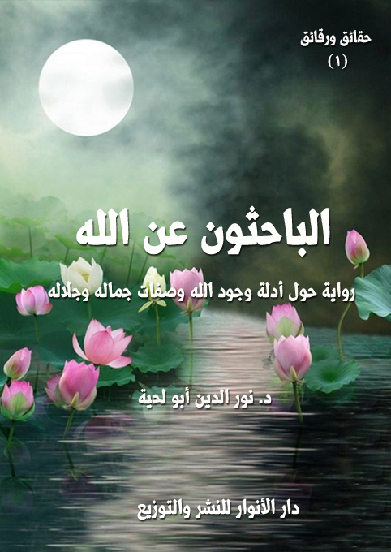

الكتاب: الباحثون عن الله
المؤلف: أ.د. نور الدين أبو لحية
الناشر: دار الأنوار للنشر والتوزيع
الطبعة: الثانية، 1437 هـ
عدد الصفحات: 659
ISBN: 978-620-2-34367-1
لمطالعة الكتاب من تطبيق مؤلفاتي المجاني وهو أحسن وأيسر: هنا

التعريف بالكتاب
هذه الرواية تحاول أن تنشر في قلب المؤمن وغير المؤمن أهمية معرفة الله وضرورتها، وأن الحياة لا تستقيم من دونها، وأن القلب لا يدرك ضالته من دونها.. وهي تتوسل لذلك بكل أنواع الحجج العقلية والعاطفية وغيرها..
وتدور أحداثها حول رجل دين مسيحي يزور المؤلف، ثم يحكي له قصة اهتدائه لله، والتي بدأت من خلال تكليفه من طرف الكنيسة بالذهاب صحبة هيئة علمية أرسلها الفاتيكان لحضور مؤتمر علمي حول الله في الأديان المختلفة.. وقبل الوصول إلى المؤتمر نزلت الطائرة التي تقلهم اضطراريا في مكان مجهول، وحين ييأسس الركاب من أن ينقذهم أحد يقفون مواقف مختلفة.. أما الملاحدة واللادينين، فمنهم من ينتحر، ومنهم من يصاب بالجنون.. وأما غيرهم، فيتضرعون إلى الله.. كل حسب دينه الذي يعتقده.. لكن شخصا منهم خاطبهم بقوله: (نحن من بلاد مختلفة.. منا من يؤمن بالله.. ومنا من لا يؤمن به.. ونحن نختلف فيما بيننا اختلافا شديدا في معارفنا المرتبطة بالله.. ولا يمكن لدعواتنا أن ترتفع للآلهة المزيفة.. فلذلك لا مناص لنا من البحث عن الإله الحقيقي حتى نرفع أكفنا بالضراعة إليه)
وهنا يبدأ كل باحث من الهيئة العلمية يدلي بشهادته الصادقة عن معارفه التي وصل إليها من خلال زيارته لبلاد المسلمين..
وفي الأخير.. وبعد اهتدائهم لله.. ودعائهم له، قيض الله لهم من ينقذهم..
الباحثون عن الله (8)
تهدف هذه السلسلة (حقائق ورقائق) إلى أمرين:
الأول: البحث عن الحقائق التي يهتم لها العقل الإنساني، والتي جاءت الأديان والإسلام خصوصا للدلالة عليها، ولكنها - للأسف- صادفت الكثير من التشويه من طرف الذين خلطوا بين المقدس والمدنس، وبين الدين والأهواء، وبين الإلهي والبشري.
وهي لذلك تحاول أن تقوم بالاستعانة بالمصدرين المقدسين: العقل والنقل، أن تصل إلى الحقائق السامية التي تجتمع على قبولها الفطر السليمة التي هي الحصن الحصين الذي يلجأ إليه عند الخلاف.
الثاني: هو الصياغة الرقيقة الجميلة المسالمة لتلك الحقائق.. فلا تلقى بعنف ولا بشدة، ولا بألفاظ تجرحها، ولا بجدل يبعدها عن غايتها.. بل تلقى برقة ولطف وعذوبة حتى تستمتع بها النفس.. وحتى تسري إليها من غير أن تخدش مشاعرها أو تفرض أي وصاية عليها.
وانطلاقا من هذين الهدفين جاءت أكثر أجزاء هذه السلسلة في شكل روايات بسيطة ممتلئة بالحوار الذي يخاطب العقل والعاطفة وكل اللطائف الإنسانية.
وننبه في هذه الطبعة كما نبهنا في الطبعة السابقة إلى أن هدف هذه السلسلة هو أن تكون مدرسة تعلم فنون الحوار الإيماني، والجدال بالتي هي أحسن، ولذلك اهتممنا في أصل كل جزء منها بما يحقق هذا الغرض، ولم ننشغل عنه بأي شاغل.. ولكن الكثير من المعلومات التفصيلية أو التوثيقية قد يحتاج إليها لتحقيق هذا الغرض، وهي مما لا يمكن إدراجه في الأصل.. فلذلك اكتفينا بإيرادها في الهوامش، أو بالدلالة على المراجع التي يمكن أن يستفاد منها لتحقيق ذلك..
الباحثون عن الله (9)
وننبه كذلك إلى أننا لم نهتم كثيرا بتوثيق كل ما نرجع إليه من مصادر، لأن توثيقها يستهلك صفحات كثيرة، وقد يشغل القارئ عن المهمة التي تهدف إليها الرواية.. بالإضافة إلى أن أكثر ما نورده مما توزع وجوده في الكتب الكثيرة.. ولهذا نكتفي بذكر المراجع العامة التي لجأنا إليها دون التدقيق في التوثيق في كل محل.
وننبه أخيرا إلى أننا من منطلق الحرص على الوحدة الإسلامية، واعتقادنا بحرية الرأي والخلاف بين المسلمين، جعلنا أبطال هذه الروايات من مختلف المدارس الفكرية المنتشرة في العالم الإسلامي، وهذا لا يعني تأييدنا الكلي لكل الشخصيات التي نختارها، بل أردنا فقط تعريف القارئ بها، وخدمة بعض الجوانب الفنية التي يتطلبها أي عمل يحاول الجمع بين العلم والفن.
وبما أن الكثير من أجزاء هذه السلسلة له علاقة بالحوار الإسلامي المسيحي، أو الحوار مع الآخر، فقد حاولنا أن نصيغها صياغة خاصة تمثل المنهج الإسلامي المحمدي الأصيل في التعامل مع الآخر والحوار معه، ولهذا حاولنا نجمع فيها بين المزايا التالية:
الأدب: فقد حاولنا صياغتها بلغة مهذبة عالية الأدب، حرصا على تنفيذ قوله تعالى: {وَلا تُجَادِلُوا أَهْلَ الْكِتَابِ إِلَّا بِالَّتِي هِيَ أَحْسَنُ} (العنكبوت: من الآية 46)، فليس في جميع هذه الأجزاء إهانة أو أي لفظ قد يجرح أي مسيحي، أو غير مسيحي... لأن أكثرها عبارة عن ذكريات يسوقها رجال دين مسيحيين عن رحلاتهم التي تعرفوا من خلالها على الإسلام، ونبي الإسلام.
الشمول: فقد حاولنا الرجوع في كتابة هذه السلسلة إلى مراجع كثيرة جدا مسيحية وإسلامية، حتى نحصي أكبر عدد من الشبهات، وأن نجيب عنها بكل ما يمكن الإجابة عنه بما يقنع المسيحي المتدين، وغيره من اللادينيين والعلمانيين.
المتعة: فقد حاولنا صياغة كل تلك المعلومات والشبهات في قالب روائي جذاب،
الباحثون عن الله (10)
مليء بالأحداث المشوقة، ليجمع القارئ بين العلم والتسلية.
التبسيط: فقد حاولت هذه السلسلة أن تخرج بالمعارف المرتبطة بهذا الباب من مدرجات الجامعات إلى الشوارع والطرقات في لغة بسيطة تمكن الكل من فهمها...
التعليم: فهذه السلسلة تعلم كل محب لرسول الله (، وكل حريص على دينه، كيف يجيب المخالف، بل كيف يقنعه... فهي تبين لهم منهج الحوار مع المخالفين، وتعطيهم من القدرات العلمية، والطرق المنهجية ما لا يملك معه المخالف إلا التسليم... وهدفها من كل ذلك أن تجعل من كل مسلم داعية إلى الله، ومحاميا يذب عن دينه، ويحمي حمى رسوله، ومناظرا ينتصر به الحق، وينهزم به الباطل، وتدفع به الشبهات.
الباحثون عن الله (11)
هذه الرواية تحاول أن تنشر في قلب المؤمن وغير المؤمن أهمية معرفة الله وضرورتها، وأن الحياة لا تستقيم من دونها، وأن القلب لا يدرك ضالته من دونها.
وهي تتوسل لذلك بكل أنواع الحجج العقلية والعاطفية وغيرها..
وتدور أحداثها حول رجل دين مسيحي يزور المؤلف، ثم يحكي له قصة اهتدائه لله، والتي بدأت من خلال تكليفه من طرف الكنيسة بالذهاب صحبة هيئة علمية أرسلها الفاتيكان لحضور مؤتمر علمي حول الله في الأديان المختلفة.. وكل هذه الهيئة من العلماء الراسخين في العلم ممن تثق الكنيسة في قدراتهم.
وقبل الوصول إلى المؤتمر نزلت الطائرة التي تقلهم اضطراريا في مكان مجهول، وحين ييأسس الركاب من أن ينقذهم أحد يقفون مواقف مختلفة.. أما الملاحدة واللادينيون، فمنهم من ينتحر، ومنهم من يصاب بالجنون.. وأما غيرهم، فيتضرعون إلى الله.. كل حسب دينه الذي يعتقده.. لكن شخصا منهم خاطبهم بقوله: (نحن من بلاد مختلفة.. منا من يؤمن بالله.. ومنا من لا يؤمن به.. ونحن نختلف فيما بيننا اختلافا شديدا في معارفنا المرتبطة بالله.. ولا يمكن لدعواتنا أن ترتفع للآلهة المزيفة.. فلذلك لا مناص لنا من البحث عن الإله الحقيقي حتى نرفع أكفنا بالضراعة إليه)
وهنا يبدأ كل باحث من الهيئة العلمية يدلي بشهادته الصادقة عن معارفه التي وصل إليها من خلال أحداث وحوارات ومناظرات يمر بها هو أيضا.
وقد جمعت تلك الشهادات كل القضايا الكبرى التي تدرسها العقيدة الإسلامية في هذا الجانب، ابتداء من الوجود، والوحدانية والتقديس وانتهاء بغيرها من الأسماء الحسنى.
وفي الأخير.. وبعد اهتدائهم لله.. ودعائهم له، قيض الله لهم من ينقذهم..
الباحثون عن الله (12)
وتهدف هذه الرواية من خلال هذا الطرح المبسط إلى:
1. التعريف بالله من خلال العقل والعلم والمصادر المقدسة بعيدا عن الجدل والترف الفكري الذي يخوض فيما لا يستفاد منه.
2. جمع أكبر عدد من الأدلة والبراهين المرتبطة بالحقائق العقدية المتعلقة بالله.
3. الاستفادة من منتجات العلم الحديث في تغذية العقائد الإسلامية بأكبر عدد من البراهين والأدلة.
4. البعد عن الصراع المذهبي الذي حال بين الكثير، وبين طرح العقيدة الإسلامية صافية نقية.
5. تيسير المعارف العقدية وتبسيطها بحيث يستفيد منها المتخصص وغير المتخصص.
وفي الأخير نعتذر للصعوبة قد تعترض البعض في فهم بعض ما نطرحه في الرواية من براهين، ذلك أننا قصدنا من الرواية خطاب الجميع من المتخصصين وغير المتخصصين، وهم أصحاب مناهج فكرية مختلفة.. ولهذا اعتمدنا الأدلة بأنواعها المختلفة.
ولا حرج على من لم يفهم دليلا من الأدلة أو مناظرة من المناظرات أن ينتقل إلى غيرها، فالقصد من التنويع هو خطاب العقول بمناهج تفكيرها المختلفة.
الباحثون عن الله (13)
في تلك اللحظات المؤلمة التي لم يمر عليها مثلها في حياتي، سمعت بعض أهل البيت يردد بصوت مرتفع (الله!!)، يقولها متعجبا أو مستحسنا كما تعودنا أن نقولها، من غير أن نشعر بها أو نلتفت لها.
لكني في تلك اللحظة شعرت بها شعورا لم أشعر بمثله في حياتي..
لقد رحت أبحث عن تلك الكلمة، وعلى من تطلق.. فكدت أسقط..
إن (الله) هو اسم صاحب الوجود الحقيقي في هذا الكون جميعا.. أما ما عداه فليس إلا ظلال أو آثار أو مظاهر، ليس لها من هدف إلا الدلالة عليه والتعريف به..
و (الله) هو اسم أكبر غني في هذا الوجود.. فهو اسم الملك الذي يملك هذا الكون جميعا بأرضه وشمسه وأقماره ونجومه ومجراته وأفلاكه الواسعة ما نرى منها، وما لا نرى..
و (الله) هو اسم القادر على كل شيء.. والذي يستوي عنده كل شيء.. وليس عنده أي مستحيل.. فبإمكانه أن يحول من الأرض جنة ونعيما مقيما.. وبإمكانه أن يحول منها نارا تلظى..
وبإمكانه أن يشفي من عجز جميع الأطباء عن شفائه..
وبإمكانه أن يعلم من عجز جميع المعلمين عن تعليمه..
وبإمكانه أن يحول من الشقي الذي امتلأ كدورة وألما سعيدا يمتلئ فرحا وسرورا..
و (الله) هو اسم العليم بكل شيء.. والذي لا محل عنده للجهل.. فهو يعلم ما كان وما يكون وما لا يكون لو كان كيف يكون.
و (الله) يعلم ـ لذلك ـ كل الأسرار التي حار فيها العلماء والمفكرون والفلاسفة وجميع العقول..
الله يعلم أسرار الحياة والموت.. وأسرار السعادة والشقاء.. وأسرار الصحة والمرض..
الباحثون عن الله (14)
وأسرار الوجود والمصير.. وجميع الأسرار التي نقدم أرواحنا فداء لأجل كشف بعض حروفها.. ومع ذلك لا ننال منها إلا الهباء..
و (الله) هو اسم الحي السميع البصير المتكلم.. الذي له من القدرات الذاتية ما لا تطيق العقول والأوهام تخيله.
و (الله) هو اسم القدوس الذي لا يعرف الموت ولا المرض ولا المكان ولا الزمان.. فهو الغني بذاته عن كل شيء.. وكل شيء مفتقر إليه، متواضع بين يديه، لا يملك لنفسه من الضر والنفع إلا ما أعطاه الله.
و (الله) هو اسم القيوم الذي لا قيام لوجودنا ولا لحياتنا.. ولا لوجود كل شيء وحياته إلا به.. فكل شيء به يقوم.. وكل شيء إليه يفتقر.
و (الله) هو اسم الرحيم الرحمن الذي ملأ الكون بمظاهر رحمته..
و (الله) هو اسم الودود الذي تودد لكل شيء.. وتودد إليه كل شيء.
وهو اسم الحنان الذي حن على كل شيء..
وهو اسم البديع الجميل الذي ملأ الكون إبداعا وجمالا.
وهو اسم السلام الذي لا يعرف الصراع.. فليس له من يصارعه، وليس ما يصارع من أجله.. فهو الواحد الأحد الفرد الصمد الذي لم يلد ولم يولد ولم يكن له كفوا أحد.
-\--\-
بقيت لحظات طويلة وأنا واقف في مكاني أحاول أن أختصر في ذهني المعاني العظيمة الجليلة الكثيرة التي يحملها اسم (الله).. إلى أن كدت أغيب عن بيتي وعن نفسي وعن الكون جميعا..
في تلك اللحظات المقدسة قلت لنفسي، وأنا ممتلئ همة وعزيمة: أليس من الهمة الدنية يا نفس أن ترغبي عن صحبة هذا الملك الجليل.. لتبحثي في القمامات والمزابل عن الأصنام لتطأطئي رأسك لها خاضعة ذليلة.. وتأبى الأصنام إلا أن تذيقك من الهوان ما يذيقه كل مستبد بكل
الباحثون عن الله (15)
ضعيف؟
أليس من الهوان أن تصحبي العجزة وأنت قادرة على صحبة القادر الذي لا يعجزه شيء؟
أليس من الجهل أن تصحبي الجهلة الممتلئين خرافة وأوهاما وترغبي عن صحبة العليم الذي بيده خزائن علوم كل شيء؟
أليس من الضعة أن تصحبي الفقراء الذين لا يملكون شيئا.. حتى أنفسهم لا يملكونها.. وترغبي عن صحبة الغني المالك لكل شيء.. ابتداء منك وانتهاء بأصغر ذرة في هذا الوجود؟
لكن الكدورة التي تعودت أن تغير بجحافل جيوشها على مشاعر سعادتي، فتحولها إلى ألم وشقاء.. أبت إلا أن تزورني في تلك اللحظات الممتلئة بالسعادة:
لقد قالت لي نفسي، وكأنها تسخر مني: من أنت أيها القزم الحقير، وصحبة الملك الجليل الذي تنقطع العقول والقلوب دونه؟
من أنت ـ أيها الممتلئ بالحظوظ الدنية ـ حتى تتخطى رقاب الصديقين الذين سلكوا المفاوز والقفار وباعوا كل الحظوظ، ليشتروا بذلك نعمة المعرفة بالله، ونعمة المصاحبة له؟
من أنت أيها الملطخ بالأوزار، الممتلئ بالأقذار، المدنس بأرجاس الليل والنهار.. والتطلع لصحبة الملك الجليل الجبار؟
ألا تستحيي من نفسك؟
أنت لا تليق لصحبة ملك ولا وزير.. بل ولا شرطي ولا خفير.. فكيف تتطلع لصحبة من الأمر كله بيده، منه يبدأ، وإليه ينتهي..؟
من أنت أيها..
قاطعتها، وأنا ممتلئ بالألم، قائلا: كفي عني أيتها النفس.. فلطالما كدرت سعادتي.. أنا إن لم أصحبه، فمن أصحب.. وأنا إن لم أبحث عنه فعلى من أبحث.. أليس من الدناءة أن أتركه لغيره؟.. أليس من الغبن أن أربح كل شيء، ثم أخسره؟.. أليس من العجز أن أستعمل جميع
الباحثون عن الله (16)
قدراتي من أجل تحقيق أتفه الأشياء، ثم لا أستعملها من أجله وأجل البحث عنه؟.. أليس من..؟
قاطعتني نفسي.. نفسي الأمارة بالسوء.. وقالت: وأنا.. لمن تتركني.. إن انشغلت عني به.. فمن يشتغل بمطالبي.. من يشتغل بمصالحي.. من يشتغل بأهوائي..؟
رفعت يدي، وكأني أريد أن أبطش بشيء.. لكني لم أجد سواي.. فارتخت يدي.. وامتلأت بالعجز عند ارتخائها.. وخرجت من كل تلك العوالم الجميلة بعد أن ملأتني نفسي إحباطا وكآبة.
لم أجد بعدها إلا أن أسير إلى ذلك الضيف الغريب الممتلئ بأنوار القداسة، والذي لم أعرف إلى ذلك الحين من أين جاء، ولا أين يقصد..
عندما اقتربت من غرفته سمعته يردد بصوت خاشع ما ورد في الآثار القدسية من حديث الله لعباده.. لقد سمعته يقول:
(عبدي.. متى جئتني قبلتك..
إن أتيتني ليلا قبلتك.. وإن أتيتني نهارا قبلتك.
إن تقربت مني شبرا تقربت منك ذراعا.. وإن تقربت مني ذراعا تقربت منك باعا.. وإن مشيت إلى هرولت إليك.
لا تحجبك الخطايا عني، فلو لقيتني بقراب الأرض خطايا، ثم لقيتني لا تشرك بي شيئا أتيتك بقرابها مغفرة..
ولو بلغت ذنوبك عنان السماء، ثم استغفرتني غفرت لك.
هل هناك من هو أعظم مني جودا وكرما..
عبادي يبارزونني بالعظائم، وأنا أكلؤهم على فرشهم.
إني والجن والإنس في نبإ عظيم: أخلق ويعبد غيري، وأرزق ويشكر سواي، خيري إلى العباد نازل وشرهم إلى صاعد، أتحبب إليهم بنعمي وأنا الغني عنهم ويتبغضون إلي بالمعاصي وهم أفقر شيء إلي.
الباحثون عن الله (17)
من أقبل إلي تلقيته من بعيد، ومن أعرض عني ناديته من قريب، ومن ترك لأجلي أعطيته فوق المزيد، ومن أراد رضاي أردت ما يريد، ومن تصرف بحولي وقوتي ألنت له الحديد.
أهل ذكري أهل مجالستي، وأهل شكري أهل زيادتي، وأهل طاعتي أهل كرامتي، وأهل معصيتي لا أقنطهم من رحمتي، إن تابوا إلي فأنا حبيبهم فإني أحب التوابين وأحب المتطهرين، وإن لم يتوبوا إلي فأنا طبيبهم، أبتليهم بالمصائب لأطهرهم من المعايب.
من آثرني على سواي آثرته على سواه، الحسنة عندي بعشر أمثالها إلى سبعمائة ضعف إلى أضعاف كثيرة، والسيئة عندي بواحدة، فإن ندم عليها واستغفرني غفرتها له.
أشكر اليسير من العمل وأغفر الكثير من الزلل.
رحمتي سبقت غضبي وحلمي سبق مؤاخذتي وعفوي سبق عقوبتي، أنا أرحم بعبادي من الوالدة بولدها..) (1)
-\--\-
لست أدري كيف دخلت عليه، وأنا ممتلئ فرحا وسعادة بعد أن سمعت منه هذا الحديث الرباني الجميل.
لقد دخلت، وأنا أردد بصوت مرتفع ممتلئ فخرا وزهوا: لكأن الله يخاطبني بهذا.. أنا العبد الضعيف.. لقد كانت نفسي تثبطني عن السلوك إليه وطلبه.
التفت إلي الشيخ الصالح مبتسما، وقال: النفس هي الحجاب الأكبر الذي يحول بينك وبين ربك.. فمتى سمعتها لم تسمعه.. ومتى رأيتها لم تره.. ومتى صحبتها لم تصحبه.. ومتى عشت من أجلها لم تعش من أجله.
قلت: ولكني لست سوى نفسي.. فكيف أصفعها صفعة تعيد إليها وعيها؟.. إني أراها كالمخدر الذي يرتمي في المزابل، وهو يحسب نفسه في القصور..
__________
(1) وردت هذه العبارات في أحاديث قدسية متفرقة.
الباحثون عن الله (18)
قال: عندما تنشغل به عنها ستنشغل عنك بما كلفت به من خدمتك.
قلت: لكنها لا تحول بيني وبينه فقط.. بل إنها تسرب إلي من الأوهام ما تنهد الجبال دون سماعه.
قال: ذلك سلاح من أسلحتها.. فهي إن لم تطق أن تشغلك عنه.. شغلتك بالأوهام والشبهات التي تحول بينك وبينه.
قلت: فأين المصير؟
قال: إليه..
قلت: ولكني أخاف أن يكون مصيري إلى الآلهة التي تصنعها الأوهام.. ألا ترى أن كل ملة من الملل، وكل نحلة من النحل تحسب أنها على الحق.. وأن الحق لن يتجاوزها إلى غيرها.. فما أدراني لعلي مثلها.. وأني عندما أضحك عليها لا أضحك إلا على نفسي؟
قال: لقد جعل ربك للحقائق علامات وشروطا وقوانين يستحيل أن تتخلف..
قلت: أي قوانين؟
قال: لقد خلق الله لنا العقول.. وبرمجها بالبرامج المهيأة لإدراك الحقائق.. فمن سار على ضوئها يستحيل أن يصل إلا إلى الحقائق.
قلت: أليس للبشر جميعا عقول يفكرون بها؟
قال: بلى..
قلت: فلم يختلفون إذن؟
قال: لأن فيهم من يغلب عقله.. وفيهم من يغلب هواه.. وفيهم من يمزج عقله بهواه.. وفيهم من يسخر عقله لهواه.
قلت: فكيف نميز بين ما يقوله العقل، وما يقوله الهوى؟
قال: لقد جعل الله في قدرة العقول هذا التمييز.
الباحثون عن الله (19)
قلت: لا يزال عقلي كليلا دون إدراك صدق ما تقول.
قال: أرأيت لو أن رجلا من الناس زعم لك استحالة تحول الماء إلى بخار.. كيف تخلصه من هذا الوهم؟
قلت: ما أسهل ذلك.. سأحضر نارا وماءا.. فما تلبث النار حتى تتغلب على الماء، وتحوله إلى بخار.. وحينها سيتبخر وهمه.
قال: فهكذا من سرب إليك وهمه.. أحضر له ما يتبخر به وهمه.
قلت: الأمر مختلف تماما.. ذلك ماء ونار.. وكلاهما تدركه حواسي.. ولكن الحقائق التي نتحدث عنها تختلف تماما.
قال: هي تختلف من حيث الصورة فقط.. لكنها في الحقيقة لا تختلف.. لقد جعل الله لكل حقيقة السلم الذي يصعد إليها به.. والباب الذي يدخل إليها منه.
قلت: ما دام الأمر بهذه البساطة.. فلم كانت أعقد قضية في هذا الوجود هي معرفة الله؟
قال: لقد عرفت أن النفس هي أكبر حجاب بين الإنسان وبين ربه.. ولذلك فإنها إن لم تطق أن تملأ القلوب والعقول غفلة أسرعت فملأتها أوهاما.
قلت: لم تسرع إلى الأوهام؟
قال: لتعبد من خلالها.. فالنفس في طغيانها لا تردد إلا ما ردده فرعون عندما قال: (أَنَا رَبُّكُمُ الْأَعْلَى ((النازعات: من الآية 24).. بل إنها لا ترضى بالشرك، ولذلك، فهي تردد مع فرعون قوله: (يَا أَيُّهَا الْمَلَأُ مَا عَلِمْتُ لَكُمْ مِنْ إِلَهٍ غَيْرِي ((القصص: من الآية 38).. ولذلك فهي تلبس من الألبسة المختلفة ما تعبد به من خلالها.
قلت: أكل أولئك الذين لم يعبدوا الله كانوا يعبدون أنفسهم؟
قال: أجل.. فكل من لم يعبد الله لابد أن يقع في عبادة هواه.. وقد قال (: (ما تحت ظل
الباحثون عن الله (20)
سماء من إله يعبد من دون الله أعظم عند الله من هوى متبع) (1)
قلت: المسيحيون واليهود والبوذيون.. وكل أولئك الجموع..
قاطعني وقال: كل أولئك الجموع.. حتى الكثير من المسلمين ممن امتلأت عقولهم بالأهواء.. هم لا يعبدون إلا الأوهام.. ولا يركعون إلا للأوهام.. وإذا سجدوا لا يسجدون إلا للأوهام.
قلت: أراك تملؤني مخافة.
قال: من لم يخف في هذا الباب لن يصل إلى شيء.. ومن لم يحرص في هذا الباب فلن يطمع في شيء.
قلت: ما تعني؟
قال: ألا ترى الخلق كيف يحرصون من أجل مصالحهم المحدودة.. فيتحرون ويدققون في التحري حتى لا يقعوا في أحبولة أي محتال؟
قلت: أجل.. وقد اخترعوا لذلك القوانين الكثيرة التي تحميهم من دجل الدجالين واحتيال المحتالين وزيف المزيفين.
قال: ولكنهم في هذا الباب تجدهم.. أو تجد أكثرهم يصم أذنيه، ويغلق عينيه.. ولا يكاد يتساءل عن الحقيقة.
قلت: لم أفهم ما الذي ترمي إليه؟
قال: لو أن البشر.. جميع البشر.. تعاملوا مع الله كما تعاملوا مع الأطباء.. لصاروا كلهم مسلمين لله خاشعين لله ظافرين بالله.
قلت: كيف ذلك؟
قال: ألا تراهم لا يسلمون أجسادهم إلا لمن يثقون فيهم من الأطباء ممن تبين لهم أنهم قد
__________
(1) رواه الطبراني وأبو نعيم.
الباحثون عن الله (21)
حصلوا من العلوم ما يصلح لأن يسلموا أجسادهم لهم؟
قلت: أرى ذلك.. بل إنهم أحيانا يحتاطون لذلك أعظم الاحتياط، فيختارون أكثرهم خبرة وتجربة.
قال: فلو أن هؤلاء تعاملوا مع ربهم على هذا الأساس.. فراحوا يتحرون عن إلههم..
انتفضت غاضبا، وأنا أقول: التحري لا يكون إلا عن المجرمين.
رد علي بهدوء: صدقت.. ولذلك لابد من التحري.
قلت: كيف يتحرى عن الله.. التحري لا يكون إلا على المجرمين؟
قال: لأن هناك كثير من المجرمين ملأوا هذا الباب خرافات وأباطيل راحت تزاحم الله.. فلذلك لن تسلم لأحد معرفته بالله حتى يخلص عقله من الأوهام التي يسربها المجرمون.
قلت: التحري يكون بين جمع من الأطباء.. فكيف يكون التحري في معرفة الله؟
قال: مثل التحري بين الأطباء.. فهناك (الله) الحقيقي.. الذي خلق هذا الكون ودبره.. وهناك آلهة كثيرة مزيفة أنشأتها النفوس المدنسة تريد أن يمنح لها من القداسة ما يمنح لله.. ولا ترضى بدون ذلك.
قلت: وما أدرانا أن يكون (الله) الحقيقي بين هذه الآلهة الكثيرة المزيفة.. ألا يمكن أن لا يكون لأي أحد من الناس الحقيقة المرتبطة بهذا؟
قال: ذلك مستحيل.. فالله الذي خلق هذا الكون ودبره.. بل دبر أبسط ذراته يستحيل أن يترك هذا الكون من غير أن يعرفه بنفسه.
قلت: فكيف نصل إلى تلك المعرفة؟
قال: بالسيرين.. السير العقلي.. والسير الحسي.. بكليهما تستطيع هذه البشرية التائهة أن تصل إلى ربها الحقيقي وتميزه عن الآلهة الكثيرة المزيفة..
قلت: فهل سرت مثل هذا السير؟
الباحثون عن الله (22)
قال: لقد رزقني الله في رحلة من رحلاتي من اختصر لي الكثير من الأسفار.. وقد رزقني الله في تلك الرحلة من الأشعة الهادية إلى شمس محمد (ما لا يمكن للعقل وصفه.
قلت: فهل ستحدثني عنها؟
قال: أجل.. فلا يمكن لمن لم يتنعم بهذا النوع من الأشعة أن يعرف محمدا (.. فلا يعرف محمدا (من لا يعرف الله.. فلا يعرف الرسول من لم يعرف مرسله.
-\--\-
اعتدل الشيخ الصالح في جلسته، وحمد الله، وصلى وسلم على نبيه (مستغرقا في كل ذلك.. ثم قال: في يوم من أيام الله المملوءة بالنفحات والبركات.. شعرت فجأة بمشاعر ملحة تدعوني للبحث عن الله..
وقد بدأني ذلك الشعور، وأنا أنظر إلى المرآة.. وقد أرعبني ما رأيته من شيب يشتعل في رأسي كما يشتعل النار في الهشيم..
لم أحزن في ذلك الحين على دنيا فاتتني.. فقد بدأ الزهد يملأ قلبي أنفة من الدنيا ورغبة عنها.
ولم أحزن على لذات أو شهوات تتحرك لها النفوس.. فقد امتلأت بالعفة التي جعلت بيني وبينها من الحواجز ما نغصها في عيني.
لم أحزن على أي شيء.. فكل شيء لا يستحق أن يحزن عليه.
ولكني عندما تذكرت (الله) امتلأت هما وغما..
لقد قلت لنفسي: ها هو قطار العمر يمضي إلى محطته النهائية.. وقد ركب الكل في عربات قطاري.. الكل ما عدا (الله) (1)
لقد جلست مع الكل، ولكني لم أجلس مع الله لحظة واحدة.
واتصلت بالكل، ولكني لم أتصل بالله.
__________
(1) لا يخفى ما في هذا التعبير من المعاني.. فالمراد بـ (الله) هنا هو معرفة الله والاتصال به لا ذات الله..
الباحثون عن الله (23)
وبحثت عن الكل، ولكني لم أبحث عن الله.
أصابني ألم عظيم، وأنا أردد في ذهني المقولة التي سمعتها كثيرا في جميع ديار الإسلام (إلهي ماذا وجد من فقدك.. وماذا فقد من وجدك)
في تلك الأيام كنت أردد هذه العبارة كثيرا.. إلى أن سمعني مرة أخي، وكان رجلا من كبار رجال الكنيسة.. فاستدعاني إلى مكتبه، وقال: أعرف المشاعر التي تشعر بها.. لقد مررت مثلك بهذه المرحلة.. ولم يعالجني منها إلا مؤتمر كبير لعلماء اللاهوت.. حضرته.. وهناك عرفت الله، واتصلت به، وسمعته..
قلت: أنت!؟.. كيف لم تخبرني؟
قال: ألست إنسانا؟.. إن كل إنسان يحن إلى مصدره.. كل إنسان يحن إلى ربه..
لست أدري كيف قلت من حيث لا أشعر: أنت مسلم إذن؟
غضب أخي غضبا شديدا، وقال: مسلم!؟.. وما علاقة الإسلام بهذا؟
تداركت الموقف، وقلت: لا أعني بالإسلام دين الإسلام.. وإنما أعني به الاستسلام لله والركون إليه والخضوع بين يديه.
قال: صدقت في هذا.. فليس هناك ما يعبر عن تلك الروحانية مثل هذه اللفظة.. لولا أن شوهها الإسلام.
قلت: كيف شوهها؟
قال: ألا تعلم الصورة المشوهة التي يحملها المسلمون عن ربهم؟
قلت: كنت أتصور أن ربنا وربهم واحد.. وأننا لا نختلف كثيرا في تصورنا لله، وإنما نختلف فيما عدا ذلك.
قال: أنت لا تعرف عقيدة المسلمين في الله إذن.. إن المسلمين يحملون صورة من أخطر صور الانحراف عن الله..
الباحثون عن الله (24)
إن ربهم الذي يدينون له بالعبودية ليس إلا إفرازا من إفرازات الحقد التي تمتلئ بها نفوسهم..
إن إلههم ماكر ومخادع ومستهزئ.. وهو منتقم جبار.. وهو ينسى ويمل.. وهو..
قاطعته وأنا أقول: أهذه عقيدة المسلمين في الله؟
قال: هذه بعض عقيدة المسلمين في الله.. ليتك كنت قد حضرت معنا ذلك المؤتمر لتسمع بأذنيك من التشويهات ما لا يتحمله عقلك وقلبك.
قلت: ألا يمكن أن تكرر مثل هذه المؤتمرات؟
قال: من حسن حظك أن هناك مؤتمرا سينعقد في هذه الأيام في البلاد التي كانت مقرا للشيوعية في يوم من الأيام.. نحن نريد أن نعيد إحياء الإله الذي قام الشيوعيون بقتله هناك.. وقد أرسلت إليك لأجل ذلك.
قلت: وما دوري في هذا المؤتمر؟
ضحك، ثم قال: أريد أن أرسلك لتقوم بعملية غسيل لدماغك الذي ملأه المسلمون بالشبهات.
قلت: إن كان الأمر كذلك.. فسأكتفي بغسل دماغي هنا ولا حاجة بي للسفر الطويل من أجل هذه المهمة؟
ابتسم، وقال: كنت أمزح فقط.. أنا أعلم صعوبة إقناع أي شخص لك.. عداي..
قلت: ما دام الأمر كذلك.. فما الوظيفة التي تريد إسنادها لي في هذه الرحلة؟
قال: سأرسلك مرافقا للهيئة العلمية التي يرسلها الفاتيكان لحضور هذا المؤتمر.. وكل هذه الهيئة من العلماء الراسخين في العلم ممن تثق الكنيسة في قدراتهم.
قلت: ما أعظم سروري بهذه الوظيفة..
قال: فحضر نفسك لحضور هذا المؤتمر، فليس بيننا وبينه إلا أيام معدودات.
-\--\-
الباحثون عن الله (25)
كانت تلك الأيام التي انتظرت فيها تلك الرحلة الموعودة طويلة ثقيلة مملة.. لقد كنت أعد ساعاتها ساعة ساعة، ودقيقة دقيقة، وثانية ثانية..
كنت أرقب قرص الشمس كل يوم في انتظار تلك اللحظات التي أسمع فيها الحديث عن الله.. لأزيد من خلالها معرفتي بالله.. لأني علمت علمت علم اليقين أنه لا يمكن أن أتصل بالله إلا من خلال معرفتي به.
في عشية تلك الرحلة قدر الله لي أن ألتقي بمعلمك معلم السلام.
قبل غروب الشمس بلحظات كنت بجانب بيتي أسير.. فإذا بي ألمحه من بعيد.. فأسرعت إليه.. وأمسكت بيده، وقلت: ها أنت أخيرا بجانب بيتي.. لابد أن تدخله.. لا بد أن أتشرف باستضافتك اليوم.. لطالما حلمت بهذا.
نظر إلي مبتسما، ثم قال: أترى أن دخولي بيتك سيسرك؟
قلت: لا يسرني شيء مثل دخولك بيتي.
قال: لم؟
قلت: أراك رجلا ممتلئا حكمة.. وليس هناك أشرف من أن تدخل الحكمة بيتك.
ابتسم، وقال: وكيف تدخل الحكمة إلى البيوت؟
قلت: بدخول أهلها.. إذا دخل الحكماء دخلت الحكمة معهم.
قال: ألا أدلك على من هو أشرف مني وأكرم.. وهو أولى مني بالدخول إلى بيتك؟
قلت: من هو؟
قال: لقد ذكرت لك أن مهمتي هي الدلالة لا التعريف.. فلذلك سأصفه لك.. لتبحث عنه.. ثم لتدخله بيتك.. بيتك الذي لا تنهد جدرانه.
قلت: أهناك بيت لا تنهد جدرانه؟
قال: أجل.. هو بيتك الحقيقي الذي يسير معك حيث رحلت، ويأوي معك حيث أويت.
الباحثون عن الله (26)
قلت: أراك تقصد قلبي؟
قال: أقصد قلبك وعقلك وروحك وحقيقتك.. فهذه المحال هي بيتك الحقيقي الذي لا تفارقه ولا يفارقك.
قلت: فصف لي من تراه أهلا ليسكن فيه.
قال: لا تدخل بيتك معدوما.. فالعدم هباء.. ولن تنال من الهباء إلا ما يناله الظمآن من السراب.
قلت: وهل يمكن لأحد عاقلا كان أو مغفلا أن يدخل بيته معدوما؟
قال: ما أكثرهم.. إنهم ينتشرون في الأرض.. ويملأون قاراتها.. وليس في بيوت قلوبهم وعقولهم إلا الهباء.
قلت: هذه الأولى.. فما الثانية؟
قال: إن اجتمعت الحكمة في واحد.. فاكتف به.. فلن يفيدك التعدد إلا التشتت.. ولن يفيدك التشتت إلا التمزق والضياع.
قلت: فما الثالثة؟
قال: لا تدخل بيتك مدنسا.. فالمدنس يوشك أن يدنسك، ويدنس حقيقتك..
قلت: فما الرابعة؟
قال: لا تدخل بيتك إلا كاملا اجتمع له الكمال بجميع معانيه.
قلت: فما الخامسة؟
قال: لا تدخل بيتك إلا بديعا اجتمع له الجمال بجميع معانيه.
قلت: فما السادسة؟
قال: لا تدخل بيتك إلا من لا ملك لأحد عليه.. وهو فوق ذلك ملك الملوك.
قلت: فما السابعة؟
الباحثون عن الله (27)
قال: لا تدخل بيتك إلا عدلا اجتمع له العدل بجميع معانيه.
قلت: فما الثامنة؟
قال: لا تدخل بيتك إلا رحيما اجتمعت له الرحمة بجميع معانيها.
قلت: فما التاسعة؟
قال: لا تدخل بيتك إلا الودود المحب الذي لا يريد لك ولا يريد منك إلا الخير.
قلت: فما العاشرة؟
قال: لا تدخل بيتك إلا المقصود في كل الحوائج.. فمن الغبن أن تدخل من يردك أحوج ما تكون إليه.
قلت: أراك تشير إلى الله.
قال: إن كان (الله) هو اسم الذي ذكرت أوصافه.. فلا يصح للعاقل أن يغفل عن البحث عنه، أو يغفل عن الاتصال به.
قال ذلك، ثم سار، وتركني كعهدي به.
-\--\-
في صباح اليوم التالي قصدت المطار.. وهناك رأيت عشرة من الرجال.. كلهم قد امتلأ شعره بالشيب الذي ملأ شعري.. بل إن بعضهم أحنت ظهره الأيام، فطأطأ رأسه لها.
ذهبت إليهم وسلمت عليهم واحدا واحدا.. ثم ركبنا الطائرة.. وقد قدر الله أن لا نصل إلى مبتغانا..
لقد حصل للطائرة ـ ونحن في وسط الطريق ـ من العطب ما كاد يقضي على حياتنا.. ولولا مهارة السائق لكنا جميعا في عداد الموتى.
لكن السائق بعد جهد جهيد استطاع أن يحط بها في غابة موحشة ممتلئة بالظلمات والبرد الشديد..
الباحثون عن الله (28)
وقد ملأنا السائق والطاقم الذي معه حزنا حين أخبرنا أن كل أجهزة الطائرة قد حصل لها من العطب ما يحول بينها وبين أي تحرك.. بل حصل لكل أجهزة الطائرة من العطب ما يحول بينها وبين الاتصال بأي جهة من الجهات.
ثم عاد وأخبرنا بأننا في مكان يستحيل على أي جهاز في الدنيا أن يرقبه.. فالباحث في تلك الغابة كالباحث عن إبرة في كومة عظيمة من القش.
قالوا لنا ذلك.. ثم راحوا يوزعون علينا ما بقي من الزاد القليل..
بقينا في تلك الغابة شهرا كاملا إلى أن أدركنا الله بفرجه..
قلت: كيف حصل ذلك، وقد أخبركم السائق أنكم في مكان لا يمكن أن يتعرف عليه أحد من الناس؟
قال: لا تعجل.. فإن لذلك قصة كانت هي المفتاح الأكبر الذي اهتديت به إلى الإسلام.. بل إني في نهاية رحلتي هذه أعلنت لربي استسلامي له، وإسلامي بين يديه..
امتلأت سرورا، وقلت: كيف كان ذلك؟
قال: سأحكي لك الحكاية من البداية.. فلا يمكن أن تفهم النهاية من دون العروج على البداية.
قلت: لقد ذكرت لي أن الطائرة نزلت بكم في ذلك المحل الموحش الذي لا يمكن أن يعرفه أحد من الناس.
قال: أجل.. وقد تقلبت بنا الأحوال في تلك الأيام تقلبات عجيبة.
أما في الأيام الأولى.. حيث كان الزاد موفرا، فقد انشغلنا، وانشغل الكثير منا باللهو واللعب.. وكأن الموت لا ينتظرنا، بل إن بعضنا عندما عوتب في لهوه ولعبه، قال ما قال قبله امرؤ القيس: اليوم خمر، وغد أمر.. وقال آخر: دعني.. لأن أموت وأنا أضحك خير من أن أموت وأنا أبكي.
الباحثون عن الله (29)
هذا في الأيام الأولى..
أما عندما بدأ الزاد ينفذ، وبدأت الحقيقة تنجلي.. فقد بدأ الإحباط ينشر أشعته على أكثر من امتطوا معنا الطائرة مع كون الكثير منهم من المثقفين.. بل إن الأمر وصل ببعضهم إلى حد الانتحار، ووصل بآخرين إلى حد الجنون..
ففي يوم من تلك الأيام الممتلئة بالغفلة سمعنا صوتا مزعجا، فأسرعنا إلى مصدره، فوجدنا أحد رفاقنا قد طعن نفسه بخنجر قاتل.. بحثنا في ثيابه عن هويته، فتعجبت إذ رأيت أن اسمه عربي.. كان اسمه (إسماعيل أدهم) (1).. ولكن عجبي زال عندما رأيته في جواز سفرته رحلاته الكثيرة إلى روسيا في الوقت الذي تزعمت فيه الإلحاد في العالم.. وزال عجبي أكثر عندما رأيت
__________
(1) أشير به إلى إسماعيل بن أحمد بن إسماعيل بن إبراهيم باشا أدهم: عرفه صاحب الأعلام بأنه عارف بالرياضيات، وله اشتغال بالتاريخ، ولد بالإسكندرية وتعلم بها، ثم أحرز الدكتوراه في العلوم من جامعة موسكو عام 1931، وعين مدرساً للرياضيات في جامعة سان بطرنسبرج، ثم انتقل إلى تركيا فكان مدرساً للرياضيات في معهد أتاتورك بأنقرة، وعاد إلى مصر سنة 1936 فنشر كتاباً وضعه في (الإلحاد) وكتب في مجلاتها، أغرق نفسه بالإسكندرية منتحراً.
وقد وجدت الشرطة في مساء الثالث والعشرين من شهر يوليو عام 1940 م جثته طافية على مياه البحر المتوسط، وقد عثرت في معطفه على كتاب منه إلى رئيس النيابة يخبره بأنه انتحر لزهده في الحياة وكراهيته لها، وأنه يوصي بعدم دفن جثته في مقبرة المسلمين ويطلب إحراقها.
قال في رسالته التي سماها (لماذا أنا ملحد؟) متحدثا عن نفسه: (أسست جماعة لنشر الإلحاد بتركيا، وكانت لنا مطبوعات صغيرة أذكر منها: ماهية الدين، وقصة تطور الدين ونشأته... وبعد هذا فكرنا في الاتصال بجمعية نشر الإلحاد الأمريكية، وكانت نتيجة ذلك تحويل اسم جماعتنا إلى المجمع الشرقي لنشر الإلحاد)
وقد رد على رسالته هذه: الدكتور أحمد زكي أبو شادي برسالة عنوانها: (لماذا أنا مؤمن؟)، ورد عليها محمد فريد وجدي بمقالة عنوانها (لماذا هو ملحد؟)
وقد كان له من العمر عند انتحاره تسعة وعشرون سنة؛ فكانت نهايته نهاية مأساوية لشاب موهوب، قال عنه الأستاذ أحمد حسن الزيات: (كان شديد الذكاء.. واسع الثقافة)، وقال عنه الأستاذ محمد عبد الغني حسن بأنه صاحب (ذهن متوقد لامع)، كان الأول على دفعته في البكالوريا، ثم حاز الدكتوراه وألّف مؤلفات كثيرة، ودرّس، وكان يحسن التحدث بست لغات، كل هذا وهو في هذا العمر.. (انظر: الأعلام للزركلي (1/ 310 بتصرف). وله ترجمة في الأعلام الشرقية لزكي مجاهد (ص 858 - 860)، وفي تراجم عربية، لمحمد عبد الغني حسن)
الباحثون عن الله (30)
عضويته في جمعية اسمها (المجمع الشرقي لنشر الإلحاد).. وزال عجبي أكثر من ذلك كله عندما رأيت في حقيبته كتابا من تأليفه سماه (لماذا أنا ملحد؟)
وفي يوم آخر.. بل في اليوم التالي لذلك اليوم، أصيب آخر بالجنون، وكان في جنونه كثيرا ما يردد، وكأنه يخطب في المجامع قوله: (الجداول الرياضية) و(الطاقة الذرية) و(الطاقة الهيدروجينية) و(طائرات الميغ) و(الأقمار الصناعية) و(حضارة القرن العشرين) و(موسكو) و(نهر الراين) و(جبال هيمالايا)
ثم يصيح بصوت عال، وبهستيرية: (إن الله قد مات، أو هو في طريقه إلى الموت)..
ثم يسير كما يسير في الجنازات.. وهو ممتلئ حزنا وهما، وهو يقول: (إن كان من شأن فكرة الله أن تسقط ضلال الخطيئة على براءة الأرض، فإنه لابد للمؤمنين بالحس الأرضي أن يهووا بمعاولهم على تلك الفكرة)
ويقول: (طوبى لأتقياء القلب، لأنهم لا يعاينون الله.. لقد صرنا بشراً، ولهذا فإننا لا نريد إلا ملكوت الأرض، إلى أين مضى الله؟ سأقول لكم إلى أين مضى؟ لقد قتلناه، أنتم وأنا.. أجل، نحن الذين قتلناه، نحن جميعاً قاتلوه، ألا تشمون رائحة العفن الإلهي؟ إن الآلهة أيضاً تتعفن، لقد مات الله وسيظل ميتاً)
سألت صاحبا له عن سر الرجل، وسر كلماته، فقال: هذا نيتشة.. وهو رجل كان في أصله مؤمنا.. ولكنه كان ضعيفا في إيمانه.. وقد بلغ به الانبهار بالحضارة الحديثة إلى أن أسلم كيانه كله لها.. وقد سقط بين يدي جماعة كانوا كل حين يحشرون له الإلحاد تحت هذه العبارات.. وها أنت ترى المسكين قد نسي كل علومه، ولم يبق له منها إلا هذه الألفاظ يرطن بها.
في يوم آخر بعد ذينك اليومين المشؤمين، جن رجل آخر.. كان اسمه (أوجست كونت) (1)..
__________
(1) أشير به إلى (أوجست كونت) (1798 - 1857) عالم اجتماع وفيلسوف اجتماعي فرنسي، أعطى لعلم الاجتماع الاسم الذي يعرف به الآن، أكد ضرورة بناء النظريات العلمية المبنية على الملاحظة.
أسس المذهب الوضعي القائل ان لا سبيل إلى المعرفة إلا بالملاحظة والخبرة، وهو يرى أن تاريخ البشرية ينقسم إلى ثلاث مراحل من التقدم الشامل: المرحلة الدينية؛ والمرحلة الميتافزيقية، ثم المرحلة العلمية.
وقد قدم مقترحات على جانب كبير من التعقيد لإقامة دولة وضعية تقوم على صفوة من علماء الاجتماع لإدارة المجتمع وتوجيهه.. من أهم أعماله كتاب (الفلسفة الوضعية) الذي ظهر لأول مرة في ستة أجزاء (1830 - 1842)
وننبه إلى أن كل ما ذكرنا في الرواية عن سميه كان قد حصل له مع بعض التصرف الذي اقتضاه المقام.
الباحثون عن الله (31)
كان اسمه يشبه اسم ذلك الفيلسوف الفرنسي المعروف.. وكان في مظهره ومخبره لا يكاد يختلف عنه.. وقد عجبت له في جنونه إذ كان يقف كهيئة المصلي.. ولكنه لا يردد في صلاته إلا اسم امرأة لست أدري من كانت بالنسبة له.
أهمني أمر هذا الرجل.. فرحت أسأل عنه إلى أن ظفرت برجل من أهل بلده كان صديقا له.. وقد أخبرني أن هذه النوبة من نوبات الجنون كانت تعرض له كل مرة يتعرض فيها لأي أزمة..
وأخبرني أنه في صغره لما بلغ سنّ الرابعة عشرة من عمره نبذ الإيمان بمبادئ الدين.. وأنه حينها عكف على كتب الفلسفة، معتمداً على قراءته الخاصة لا سيما كتب (هيوم) و(دي مستر) و(دي بونالد)
وأخبرني أنه تعرّف بعد ذلك على كاتب من أهل بلده يسمى (سان سيمون)، وأن هذا الكاتب كان من رواد المذهب الاشتراكي في ذلك الحين..
وأخبرني أنهما اتفقا على الاشتغال معاً بالعلم والسياسة، أما (سان سيمون) فقد كان شغوفاً بالسياسة وذا بصر نافذ فيها، وأما (أوجست كونت) فقد كان شغوفاً بالعلم، وغير مهتم بالأمور السياسية.
وأخبرني أنه افترق بعد ذلك عن أستاذه، لأنه كان يختلف معه في الاتجاه.. وانصرف بعدها للمطالعة والبحث طلبا لأن يصير مثل سميه الفيلسوف الفرنسي..
لكن المسكين ما إن ألقى ثلاث محاضرات إلحادية حتى انتابته أزمة عقلية، فعُنِيَتْ بِهِ زَوجته،
الباحثون عن الله (32)
حتى عاد إليه اتزانه العقلي، فاستأنف محاضراته بعدها.
ولم يطل به الوقت حتى تعرض لأزمة عقلية أخرى، كان من أسبابها هيامه بسيدة تعرَّف عليها، ثم توفاها الأجل بعد سنتين فقط من تعرفه عليها، فأخذ منها دينا سماه (الإنسانية)، وكان يتوجه لها كل حين بالفكر والصلاة كل يوم.
في يوم آخر.. انتحر رجل آخر عرفت بعد انتحاره أن اسمه (فان جوخ) (1).. وأنه من هولندا.. وكان كسميه الرسام المشهور مستغرقا طول الوقت في لوحاته.. وتنتابه بين الحين والحين نوبات صرع كان يصيح فيها صياحا لا يزيدنا إلا أسى ومرارة..
لم يكن ملحدا.. ولكنه كان يحمل صورة مشوهة عن الإله.. وكان تصوره للحياة لذلك مملوءا بالكدورة.. فقد كان يتصور أن الله يتسلى بتعذيب عباده.. وأنه لم يخلقهم إلا ليعذبهم بأصناف العذاب..
لم يكن راضيا عن هذا التصور الذي كان يصرخ به كل حين.. ولكن المسكين لم يجد من يصحح له هذا التصور..
في ذلك اليوم وجدناه مشنوقا.. وأمامه لوحة من لوحاته كلها سواد.. وقد كتب فيها عبارة فيها من التهجم على الله والاعتراض عليه ما لا يطيق لساني التعبير عنه.
وبجانبها عبارة أخرى لا تقل عنها بذاءة.. ولكنه وجهها لرجال الدين..
قال لي صاحبه: لقد كتب في لوحته هذه ما ظل طول عمره يحلم بأن يقوله لكنه لم يطق.
قلت له: لم؟
قال: لقد شعر ذات يوم بحاجته إلى الله.. فراح يبحث عنه.. لكنه اصطدم برجال صوروا له صورة مشوهة عن الله.. ولم يكن للمسكين القدرة على أن يعارضهم، فكتم ذلك في نفسه إلى أن
__________
(1) أشير به إلى (فان جوخ، فينسنت) (1853 - 1890 م).. وهو واحد من أكثر الرسامين شهرة في فن التصوير التشكيلي.. وقد انتحرعام 1890 م.
الباحثون عن الله (33)
باح به في هذا الموقف.
قلت: فلم لم يبحث عند غيرهم؟
قال: لقد ذكرت لك عجزه.. لقد قعد به العجز عن البحث.. فلذلك استسلم.. وتعذب باستسلامه.. وقد كانت نهايته ما رأيت.
-\--\-
بعد هذه الحوادث وغيرها رأيت خوفا كبيرا بدأ يدب إلى قلوب المسافرين معنا.. وقد استحث ذلك بعض المسافرين معنا، وكان – على ما يبدو رجلا حكيما – لكني لم أعرف سره إلى الآن.. لقد استحثه ذلك على أن يجمع من بقي من المسافرين عدانا، ثم ينفرد بهم، ويناجيهم ويناجونه بما لم نتمكن من سماعه..
وبعد تلك المناجاة أتوا إلينا، وقالوا: لقد علمنا أنكم رجال عارفون بالله.. وأنكم ما خرجتم من بلادكم إلا لتعرفوا الخلق بالله.. فهيا عرفونا بربنا لندعوه لينقذنا مما نحن فيه..
قال رجل منهم: نحن من بلاد مختلفة.. منا من يؤمن بالله.. ومنا من لا يؤمن به.. ونحن نختلف فيما بيننا اختلافا شديدا في معارفنا المرتبطة بالله.. ولا يمكن لدعواتنا أن ترتفع للآلهة المزيفة.. فلذلك لا مناص لنا من البحث عن الإله الحقيقي حتى نرفع أكفنا بالضراعة إليه.
قال آخر: نحن كمرضى نحتاج إلى طبيب.. ولذلك نحتاج إلى التعرف على الطبيب قبل أن نطلب منه أن يعالجنا.. حتى لا نسلم أجسادنا للدجالين.
قال آخر: في موقفنا هذا لا تجدينا إلا الحقائق.. فحدثونا بالحقائق لا بالرسوم.. فقد فنيت في موقفنا هذا كل الرسوم.
طأطأنا رؤوسنا جميعا.. ثم ركنا إلى صمت طويل.. قطعه أحدنا بقوله: اسمحوا لي أيها الجمع أن أعترف الآن بين أيديكم في هذه اللحظات ـ التي ربما تكون آخر لحظات حياتي ـ بأني لم أكن مسافرا للتعريف بالله.. وإنما كنت مسافرا للتجارة بالله..
الباحثون عن الله (34)
سرت ضوضاء في الجمع الملتف بنا، قطعها بقوله: لا تتعجبوا.. هذه هي الحقيقة التي كنت أتفنن في سترها بأنواع الطلاء.. نعم أنا مكلف بأن أقدم محاضرة تحاول أن تعرف بالله.. ولكنها في الحقيقة محاضرة لم تؤسس إلا على مطامعي وأهوائي، لا على الحقائق التي تفرضها العقول، ويدعو إليها المنطق.
قال آخر: مثلك أنا في هذا.. فلم أخرج من بلدي إلا لأنصر مذهبي وطائفتي سواء كان الحق معها أو لم يكن.. ولا يمكن لمن هذا حاله أن يمسك إلا بالسراب.
قال آخر: ومثلكما أنا في ذلك.. لقد صنعت صنما لإلهي، وعجنته بجميع أهوائي.. وقد حملته معي لأقدم له من الإشهار ما تخدم به مصالحي، وتنتصر به أهوائي.
ردد أصحابي الباقون ما ردد هؤلاء.. فقال رجل من الجمع: فماذا نفعل إذن.. كيف نبحث عن ربنا.. فلا يمكن لدعواتنا أن تصل إلا إلى الله الحقيقي.. هكذا أخبرنا الحكيم؟
الباحثون عن الله (35)
بعد صمت طويل ممتلئ بالألم، قام أحدنا، وكان – على ما يبدو – أكبرنا سنا، وقال: سأحدثكم أنا عن بعض لحظات الصدق التي عشتها عساها تكون مقدمة لبحثنا عن الله.. بل لا يمكن لمعرفتنا بالله إلا أن تؤسس عليها.
في البداية أعرفكم بأن اسمي (آرثر شوبنهاور) (1).. كنت في يوم من الأيام تلميذا من تلاميذ أكبر الملاحدة الذين عرفهم العالم.. فلذلك لم أكن أعرف الله، ولم أكن أؤمن بوجوده.
لقد امتدت بي هذه الحال أعواما طوالا.. كنت حينها أصيح بملء في ساخرا من المتدينين، أقول لهم عابثا أو ماجنا (2): (أنتم تقولون إن الله خلق الدنيا لأنه لا بد لكل مخلوق من خالق.. ولا بد لكل صنعة من صانع.. ولا بد لكل موجود من موجد.. صدقت وآمنت.. ولكن أخبروني
__________
(1) نشير به إلى (آرثر شوبنهاور) (1788 - 1860 م)، وهو فيلسوف ألماني، ولد في دانزيج (غدانسك ببولندا).. أهم أعماله: العالم رغبة وعَرَض (عام 1819 م، الطبعة الثانية عام 1844 م). إضافة إلى مجموعة مقالات بعنوان باريرجا وباراليبومينا عام (1851 م) جلبت له شهرة عالمية حتى نهاية حياته.
وقد اخترناه هنا بسبب كون آرائه من الدعائم التي اعتمد عليها الإلحاد في العصر الحديث، فقد كان فكره يدور حول (أن الدين هو من صنيعة البشر ابتكروها لتفسير ما هو مجهول لديهم من ظواهر طبيعية أو نفسية أو اجتماعية، وكان الغرض منه تنظيم حياة مجموعة من الناس حسب ما يراه مؤسس الدين مناسبا وليس حسب الحاجات الحقيقية للناس الذين عن جهل قرروا بالالتزام بمجموعة من القيم البالية وأنه من المستحيل أن تكون كل هذه الديانات من مصدر واحد فالاله الشديد البطش الذي أنزل 12 مصيبة على المصريين القدماء وقتل كل مولود أول ليخرج اليهود من أرض مصر هو ليس نفس الإله الذي ينصحك بأن تعطي خدك الآخر ليتعرض للصفع دون أن تعمل شيئا)
وقد تزامنت هذه الأفكار مع أبحاث تشارلز داروين الذي كان مناقضا تماما لنظرية نشوء الكون في الكتاب المقدس وأعلن فريدريك نيتشه من جانبه موت الخالق الأعظم وقال: إن الدين فكرة عبثية وجريمة ضد الحياة إذ أنه من غير المعقول أن يعطيك الخالق مجموعة من الغرائز والتطلعات وفي نفس الوقت يصدر تعاليم بحرمانك منها في الحياة ليعطيك إياها مرة اخرى بعد الموت.
(2) بعض الحكاية المذكورة هنا منقولة بتصرف من كتاب (رحلتي من الشك إلى الإيمان...) لمصطفى محمود، وهو كتاب يؤرخ فيه المؤلف للطريق الذي سلكه للإيمان.
الباحثون عن الله (36)
من خلق الله.. أم أنه جاء بذاته.. فإذا كان قد جاء بذاته، وصحّ في تصوركم أن يتم هذا الأمر.. فلماذا لا يصح في تصوركم ـ أيضاً ـ أن الدنيا جاءت بذاتها بلا خالق، وينتهي بذلك الإشكال الذي تطرحونه)
كنت أقول هذا وأنا ممتلئ زهوا وفخرا، فتصفر من حولي الوجوه، وتنطلق الألسنة تمطرني باللعنات، وتتسابق إليّ أحيانا اللكمات.. أما أصحاب القلوب التقية فيكتفون بأن يستغفروا لي ويطلبون لي الهداية.. أما المتمردون، فيجدوني فرصتهم السانحة، فيجتمعون معي ويتزلفون إلي.
لست أدري هل كان ما أتفوه به هو حقيقة ما كان يملأ وجداني، أم أن زهوي بعقلي الذي بدأ يتفتح، وإعجابي بموهبة الكلام ومقارعة الحجج التي انفردت بها كان هو الحافز والمشجع والدافع.. لست أدري.. وإلى الآن لا أزال لا أدري.
لكن الذي أدريه هو أني رفضت التسليم بوجود الله لسبب واحد هو أني استغرقت في عبادة نفسي، وأعجبت بومضة النور التي بدأت تومض في فكري مع انفتاح الوعي وبداية الصحوة من مهد الطفولة.
كانت هذه هي الحالة النفسية وراء المشهد الجدلي الذي كان يتكرر كل يوم..
لقد غاب عني حينها المنطق الذي كنت أدعيه.. فلم أدرك ـ بسبب عبوديتي لنفسي ـ أني أتناقض مع نفسي إذ كيف أعترف بالخالق، ثم أقول: ومن خلق الخالق، فأجعل منه مخلوقاً في الوقت الذي أسميه خالقاً، وهي السفسطة بعينها..
هذه بدايتي.. وقد احتاج الأمر مني بعدها سنين طويلة من الغرق في الكتب، والغرق في التأمل، والحوار مع النفس، وإعادة النظر وتقليب الفكر على كل وجه لأقطع الطريق الشائكة التي أيقنت من خلالها بوجود الله.
لم يكن الأمر سهلاً.. لأني لم أشأ أن آخذ الأمر مأخذاً سهلاً.. فلو أني أصغيت إلى صوت الفطرة، وتركت البداهة تقودني لأعفيت نفسي من عناء الجدل.. ولقادتني الفطرة إلى الله..
الباحثون عن الله (37)
ولكنني جئت في زمن تعقد فيه كل شيء، وضعف صوت الفطرة حتى صار همساً، وارتفع صوت العقل حتى صار لجاجة وغروراً واعتداداً..
لقد كنت أردد في تلك الفترة مع سميي (آرثر شوبنهاور) دعواه بأن الدين بما يحمله من العقيدة في الله هو من صنيعة البشر ابتكروه لتفسير ما هو مجهول لديهم من ظواهر طبيعية أو نفسية أو اجتماعية.. وأن الغرض منه لا يعدو تنظيم حياة مجموعة من الناس حسب مايراه مؤسس الدين مناسبا، وليس حسب الحاجات الحقيقية للناس الذين عن جهل قرروا بالالتزام بمجموعة من القيم البالية.
وكنت أردد مع كارل ماركس بأن الدين أفيون الشعوب.. فهو يجعل الشعب كسولا وغير مؤمن بقدراته في تغيير الواقع، وأن الدين تم استغلاله من قبل الطبقة البورجوازية لسحق طبقة البسطاء.
وكنت أردد مع سيغموند فرويد دعواه بأن الإله وهم كانت البشرية بحاجة إليه في بداياتها، وان فكرة وجود الاله هي محاولة من اللاوعي للوصول إلى الكمال في شخص مثل أعلى بديل لشخصية الأب.
كانت الصيحة التي غمرت العالم حينها هي.. العلم.. وليس إلا العلم.. ولا شيء غير العلم.
كان أكثر المثقفين يصيح: (لنرفض الغيبيات، ولنكف عن إطلاق البخور، وترديد الخرافات)
وكان كثير من العامة يردد: (من يعطينا الدبابات والطائرات ويأخذ منا الأديان والعبادات)
قام رجل من الجمع، وقال: لكأنك تتحدث عن الكثير منا.. كلنا ذلك الرجل.. كلنا قد بهرنا العلم.. وكلنا قد بهرتنا منجزات هذه الحضارة حتى انصرفنا انصرافا كليا عن الله..
والشأن ليس في أن تحدثنا عن هذا.. وإنما الشأن أن تحدثنا في كيفية خروجك منه.
الباحثون عن الله (38)
قال آرثر: صدقت.. فما يجديكم أن تعرفوا ذلك الماضي المر الذي عشته.. ولذلك سأمر بكم إلى المسلك الذي أخرجني الله به من تلك الدوامة العنيفة التي كنت أتقلب فيها.
في يوم من الأيام.. ولست أدري السبب.. شعرت بنور يقذف في قلبي يدعوني إلى البحث عن الله (1)..
وقد ارتبط ذلك بظروف كثيرة جعلتني أراجع نفسي، وأراجع كل الأفكار التي كنت أحملها..
وقد رأيت بعد بحث طويل ومراجعات كثيرة أن وجود الله قضية يقينية لا تختلف في قوتها عن كل القضايا التي نسلم لها.. بل نرمي بالجنون والسفسطة من ينكرها.
لقد رأيت العلم والعقل جميعا يتظافران على الدلالة على وجود الله.. بل على الدلالة على أن وجود الله هو أعظم حقيقة في هذا الوجود.
__________
(1) نشير بهذا النور إلى ما وضعه الله في فطرة الإنسان من المطالبة كل الحين بالبحث عن الله واللجوء إليه، وهو ما يشير إليه قوله تعالى: {وَإِذْ أَخَذَ رَبُّكَ مِنْ بَنِي آدَمَ مِنْ ظُهُورِهِمْ ذُرِّيَّتَهُمْ وَأَشْهَدَهُمْ عَلَى أَنْفُسِهِمْ أَلَسْتُ بِرَبِّكُمْ قَالُوا بَلَى شَهِدْنَا أَنْ تَقُولُوا يَوْمَ الْقِيَامَةِ إِنَّا كُنَّا عَنْ هَذَا غَافِلِينَ} (لأعراف:172)
وقد ورد في الحديث ما يدل على هذا، فقد سئل النبي (عن قوله تعالى: {فَمَنْ يُرِدِ اللَّهُ أَنْ يَهْدِيَهُ يَشْرَحْ صَدْرَهُ لِلإِسْلامِ} (الأنعام: من الآية 125) قالوا: كيف يشرح صدره يا رسول الله؟ قال: (نور يُقْذَف فيه، فينشرح له وينفسح)، قالوا: فهل لذلك من أمارة يُعرف بها؟ قال: (الإنابة إلى دار الخُلُود، والتَّجَافِي عن دار الغرور، والاستعداد للموت قبل لقاء الموت) (تفسير عبد الرزاق (1/ 210) ورواه الطبري في تفسيره (12/ 99) من طريق عبد الرزاق به)
وقد أشار الغزالي إلى تأثير هذا النور في إخراجه من حالة الشك التي عرضت له، فقال في (المنقذ من الضلال): (لما خطر لي هذه الخواطر، وانقدحت في النفس حاولت لذلك علاجاً فلم يتيسر، إذ لم يكن دفعه إلا بالدليل، ولم يمكن نصب دليل إلا من تركيب العلوم الأولية. فإذا لم تكن مسلمة لم يمكن تركيب الدليل. فأعضل الداء، ودام قريباً من شهرين، أنا فيهما على مذهب السفسطة بحكم الحال، لا بحكم النطق والمقال، حتى شفى الله تعالى من ذلك المرض، وعادت النفس إلى الصحة والاعتدال، ورجعت الضروريات العقلية مقبولة موثوقاً بها على أمن ويقين، ولم يكن ذلك بنظم دليل وترتيب كلام، بل بنور قذفه الله تعالى في الصدر، وذلك النور هو مفتاح أكثر المعارف، فمن ظن أن الكشف موقوف على الأدلة المحررة فقد ضيق رحمة الله تعالى الواسعة)
الباحثون عن الله (39)
قال رجل منا: أليس العلم هو الذي صرفك عن الله.. فكيف تزعم أن العلم هو الذي دلك على الله؟
قال آرثر: لقد ذكرت لكم أني في الفترة التي تخليت فيها عن زهوي وكبريائي راجعت كل ما كنت أعرفه من معلومات كانت تحجبني عن الله.. فوجدت من يدلني على العلم الصحيح البديل الذي لا يدل إلا على الله (1).
سأضرب لكم أمثلة على التطورات الكثيرة المتلاحقة التي قضت على كل ذلك الزهو الذي كان يملأ أقطار نفسي بسبب العلم الذي نلته من أساتذتي القدماء:
وسأبدأ لكم حديثي بالنظريات المرتبطة بالمادة..
لقد كان النظام الذي تعلمته في الفيزياء هو نظام نيوتن (2).. وقد تعلمت من هذا النظام
__________
(1) استفدنا الكثير من المعلومات حول التطور العلمي هنا من كتاب (العلم فى منظوره الجديد)، وهو كتاب من سلسلة (عالم المعرفة) التى كان يصدرها المجلس الوطنى للثقافة بالكويت، وعنوان الكتاب الأصلي هو (The New Story of Science) من تأليف Robert M. Augros وGeorge N. Stanciu.
وقد قام بترجمة الكتاب الأستاذ (كمال خلايلى) الذى عرف الهدف من الكتاب بقوله في (ص 7): (صنف هذا الكتاب اثنان من الأساتذة المعروفين فى أمريكا الشمالية أحدهما متخصص فى فلسفة العلوم والآخر فى الفيزياء النظرية، والهدف الذى يرمى إليه المؤلفان هو هدم أركان المادية العلمية، تلك النظرية الكونية التى استهلها فرانسيس بيكون وجاليلو فى مطلع القرن السابع عشر، واستمرت إلى العقود الأولى من القرن العشرين، ثم إثبات وجود الله تعالى، وبيان الحكمة والغاية من إبداع الكون وخلق الإنسان، وذلك بالاستناد إلى النتائج التى انتهى إليها أقطاب العلماء والباحثين المعاصرين فى مجالات الفيزياء والكوزمولوجيا ومبحث الأعصاب وجراحة الدماغ وعلم النفس الإنسانى.
(2) هو السِّير إسحق نيوتُن، (1642 - 1727 م). عالم رياضيات ووفلكي إنجليزي، اكتشف كيفية تماسك مكونات الكون بعضها ببعض من خلال نظريته عن الجاذبية، كما اكتشف أسرار الضوء والألوان، وابتكر فرعًا من الرياضيات يسمى حساب التفاضل والتكامل.
الباحثون عن الله (40)
ثلاث حقائق: المادة، والمكان، والزمان.
أما المادة، فقد رأيتها ـ حسب نظر نيوتن ـ مكونة من جسيمات كبيرة وصلبة ومتحركة وغير قابلة للاختراق وذات أحجام وأشكال مختلفة.. أما خواص المادة فقد عدد لي نيوتن منها: التمدد، والصلابة، واللااختراقية، والقصور الذاتى..
وكنت أوقن إلى جانب هذا ـ على حسب ما تعلمت من نيوتن ـ أن طبيعة هذه الجسيمات ـ أى الذرات ـ وخواصها ثابتة إلى الأبد.. وأن الذرة هي أصغر جسيم يمكن تصوره.
أما الزمان والمكان فكلاهما ـ ـ على حسب ما تعلمت من نيوتن ـ حقيقتان مطلقتان، وأنهما سيظلان كوجودين حتى لو فنيت كل الأشياء المادية فى الكون..
أما التغيرات الحاصلة للمادة، فقد قصرها لي نيوتن على مجرد عمليات انفصال هذه الجسيمات الثابتة، وعلى عمليات اتحادها وحركاتها الجديدة.
وفسر لي كيفية طروء التغيرات بأن القوانين الطبيعية تنظم حركة المادة في إطار الزمان والمكان المطلقين.
ووصف لي الهدف المثالي لنظامه قائلاً: (إن استخلاص مبدأين عامين أو ثلاثة مبادئ عامة للحركة من الظواهر، ثم إظهار كيفية انبثاق خواص ونشاط جميع الأشياء المادية من هذه المبادئ التي يكون قد تم استجلاؤها، سيمثلان خطوة كبيرة في ميدان الفلسفة)
لقد كنت شديد الإعجاب بكل هذه الحقائق التي تعلمتها من نيوتن.. ولم أكن فريدا في ذلك.. فقد حقق نظام نيوتن نجاحاً في العديد من المجالات، ولاسيما في مجالي الفيزياء والكيمياء، وتمت له الغلبة بشرحه ظواهر الحركة والحرارة والضوء والكهرباء.
ولكن هذا الإعجاب لم يتوقف عند المعاني التي طرحها نيوتن (1).. فقد ولدت في تلك
__________
(1) نحب أن ننبه هنا إلى أن نيوتن لم يكن ملحدا، بل حاول أن يحتفظ بمكان للألوهية في نظامه الميكانيكي الخاص بالسماوات، ففي رسالة وجهها إلى الدكتور ريتشارد بنتلي في عام 1692 أكد له فيها على أن الله ضروري لإحداث حركة الكواكب وإرساء البنية الأصلية للمجموعة الشمسية قائلاً: (إن حركات الكواكب الراهنة لا يمكن أن تكون قد انبثقت من أي علة طبيعية فحسب، بل كانت مفروضة بفعل قوة عاقلة)
الباحثون عن الله (41)
المعارف كما ولدت في كثير من العلماء الذين تتلمذت عليهم رغبة في توسيع نطاق هذا الأسلوب في الشرح بحيث يشمل جميع حقول المعرفة بما فيها علوم الأحياء والنفس والتاريخ والإقتصاد.
وقد أسفرت إمكانية الكشف عن أسرار جزء كبير من العالم الطبيعي، بافتراض وجود المادة وحدها عن دفع بعض العلماء تدريجيا إلى اعتبار المادة جزءا من الأسلوب العلمي ذاته، على نحو جعل الباحث العلمي، بصرف النظر عن معتقداته الشخصية، يمضي في حججه العلمية على أساس افتراض كون المادة وحدها هي الحقيقة، أو أنها، على الأقل، كل ما يمكن معرفته بطريقة علمية.
وقد كتب لهذا البرنامج البقاء وحقق بالفعل آمالاً كبيرة.. وكان لدى العلماء في القرن التاسع عشر كل ما يدعوهم إلى الإعتقاد بأن القرن العشرين سيكمل بناء هذا النظام، بل كان كثير من علماء الفيزياء يعتقدون أن دورهم في تقديم هذا التفسير قد اكتمل أساساً.
قال رجل منا: فهل خيب القرن العشرون ما كان يأمله علماء القرن التاسع عشر؟
قال آرثر: أجل.. فالاكتشافات الجديدة لم تكمل فيزياء نيوتن، بل أطاحت بها:
فقد هدم أينشتاين في عام 1905 ركنين أساسيين من أركان النظام القديم.. فنظرية النسبية الخاصة قادت علم الفيزياء إلى التخلى إلى الأبد عن فكرتي المكان المطلق والزمان المطلق.. ذلك أن أينشتاين أثبت أن علاقات المكان والزمان وقوانين الحركة لا يمكن تعريفها إلا بوصفها الموقف الشخصي للمراقب ولظروفه المادية..
أما السمات الأخرى لنظرية النسبية الخاصة، كتكافؤ المادة والطاقة، فهي في الواقع نتائج مترتبة على محورية المراقب.. وبفضل النسبية الخاصة أضحى المراقب ـ فجأة ـ جزءا أساسياً من عالم الفيزياء، ولم يعد في مقدور الباحث العلمي أن يعتبر نفسه متفرجاً حيادياً كما في نظام نيوتن.
الباحثون عن الله (42)
ثم حدثت ثورة متشابهة في فيزياء الجسيمات، فقد أثبت إيرنست رزرفورد عام 1911 أن الذرة تتكون من نواة متناهية الصغر يحيط بها حشد من الإلكترونيات.
لقد حاول الفيزيائيون ـ حينها ـ أن يفسروا تركيب الذرة استناداً إلى فيزياء نيوتن، غير أن كل محاولة من محاولاتهم كانت تسفر عن تناقضات تبعث على الإحباط.. وقد أدى هذا الفشل إلى التخلى كلياً عن نظام نيوتن على المستوى الذري، وإلى التعجيل بتطوير (ميكانيكا الكم) (1) في العشرينات من هذا القرن على أيدي علماء من أمثال نيلزبور وفيرنر هابزنبرغ، وبمجيء ميكانيكا الكم تضاعفت أهمية دور المراقب في النظرية الفيزيائية..
لقد قال الفيزيائي ماكس بورن (2) يعبر عن ذلك: (لا يمكن وصف أي ظاهرة طبيعية في مجال الذرات إلا بالرجوع إلى المراقب رجوعاً لا إلى سرعته فحسب كما في حالة النسبية، بل إلى جميع أنشطته لدى قيامه بالمراقبة وبتركيب الآلات وما إلى ذلك)
وهكذا أصبحت أصغر جسيمات المادة غير قابلة للتعريف بمعزل عن خيارات وأفعال المراقب الذى هو ضرورى لا كشاهد فحسب، بل كمشارك أساسي.
وقد وصف فيغنر وجهة نظر النظام القديم فقال: (كان جل العلماء الطبيعيين إلى عهد غير بعيد، ينكرون بشدة وجود العقل أو الروح على أن النجاح الباهر الذي حققه علم الفيزياء الميكانيكية والعيانية بصورة أعم، وكذلك علم الكيمياء، قد حجب الواقع الجلي، ذلك الذي
__________
(1) ميكانيكا الكم: هي ميدانٌ من ميادين علم الفيزياء، يصف تركيب الذرّة وحركة الجسيمات الذرية، ويوضح كيف تمتص الذرات الطاقة في شكل ضوء، وكيف تطلقها، ويوضح طبيعة الضوء.. وهي تتجاوز الحدود القصوى للفيزياء التقليدية، التي تقوم على أساس القوانين التي صاغها نيوتن.. وهي تُعد من المُنجَزَات العلمية الكبرى التي تحققت في القرن العشرين.. وبالإضافة إلى أهميتها النظرية، فقد ساهمت في تطوير أجهزة عملية مثل أجهزة الليزر والترانزستور، كما مكنت العلماء من تحقيق فهم أفضل للروابط والتفاعلات الكيميائية.
(2) هو مَاكْس بُورن (1882 ـ 1970 م) فيزيائي ألماني أدى دوراً كبيراً في تطوير ميكانيكا الكم.. في عام 1954 م نال جائزة نوبل للفيزياء مناصفة مع فالتربوتا تقديرًا لأعماله.. ساهم بورن أيضاً في مجالات علم البلورات والبصريات. وحصل على شهادة دكتوراه من جامعة جتجين عام 1907 م. وُلد في برسلو، بألمانيا (حالياً روكلاو في بولندا)
الباحثون عن الله (43)
يقول أن الأفكار والرغبات والعواطف ليست من صنع المادة، وكان مقبولاً عند العلماء الطبيعيين على نحو يشبه الإجماع إن لاشيء هناك سوى المادة)
ونتيجة لهذا، فإن نظرية النسبية وميكانيكا الكم تمثلان خروجا مشتركاً بينهما على تفسير نيوتن بإدخالهما العقل في المعادلة.
وهكذا حلت الفيزياء في القرن العشرين تدريجياً محل المذاهب المادية بتأكيدها أن الفكر يقوم بدور جوهري في الكون، وأنه لأمر مثير حقاً أن يصدر هذا التأكيد عن علم الفيزياء.. فلو قدر للمادة أن تصادف نجاحاً في أي مكان لتوقع لها المرء أن تنجح في مجال دراسة المادة ذاتها.
بعد أن انهار كل ذلك البنيان الذي كنت أبنيه على المادة.. وبعد أن عرفت حاجة المادة إلى العقل رحت أبحث عنه (1)..
لقد كانت نظرتي البدائية إلى العقل في غاية البساطة والتفاهة.. وكانت مرتكزة على ذلك الأساس المادي الذي كنت أفسر به الكون جميعا..
لقد كنت أرى بأن جميع الأشياء الطبيعية تنشأ في نهاية المطاف عن تفاعلات بين جسيمات تتكون منها هذه الأشياء.. فالماء سائل لأن جزيئاته تنزلق بجانب بعضها بعضا بقليل من الاحتكاك.. والمطاط متمغط لأن جزيئاته بحكم مرونتها تغير شكلها بسهولة.. وهكذا قست الأمر على العقل.
وقد أكد لي هذا النظر أساتذتي الكبار الذي تتلمذت على أيديهم..
منهم عالم الأحياء الشهير توماس هـ. هكسلي (2).. لقد علمني هذا الأستاذ أن الأفكار التي
__________
(1) انظر: (العلم فى منظوره الجديد)
(2) هو تُومَاس هِنرِي هَكْسِلِي (1825 - 1895 م). عالم حيوان ومحاضر ومؤلف.. وكان من الذين مالوا إلى نظرية تشارلز داروين التحليلية الخاصة بالتطور العضوي، كما أنه توسّع في هذه النظرية ودافع عنها.
الباحثون عن الله (44)
أعبر عنها بالنطق، إنما هي عبارة عن تغيرات جزيئية.. فخير طريقة للبحث في العقل هي إظهار كيفية انبثاق العقل من المادة.
لقد كنت أحمل مع هذه التصورات مفاهيم خاطئة عن العقل الإنساني.. فقد كنت أتصور أن العقل البشري لايستطيع أن يختار بحرية، لأن المادة لا تتصرف إلا بضرورة ميكانيكية.. ولهذا فقد كنت أميل إلى تفسير تصرفات الإنسان بلغة الغريزة، و(علم وظائف الأعضاء)، والكيمياء والفيزياء، لأنه لا مجال لحرية الاختيار.. فالتغيرات المادية هي التي تسبب الأفكار، لا العكس.
ومن المستلزمات التي نتجت عن هذه التصورات.. والتي كنت أوقن بها يقينا لا شك فيه هو أن لاشيء في الإنسان يمكن أن يبقى بعد الموت.. فإذا كان التفكير والإرادة نشاطين من أنشطة الدماغ، فليس هناك سبب يجعلنا نفترض أن هذين النشاطين يمكن أن يستمرا بعد فناء الدماغ.. وإذا كان كل جزء من أجزاء الإنسان مادة فلابد من أن يكون كل جزء منه عرضه للفناء.. فلا خلود إلا للمادة.
ومع كل هذا اليقين لم يكن لدي ولا لأي أحد من أساتذتي الكبار الذين لقنوني هذه التعاليم أي تفسير لكيفية انبثاق العقل من المادة..
لقد كان أساتذتي الكبار من علماء الفسيولوجيا يتوقعون أن يأتي المستقبل بالجواب.. ولكن الأيام والمراجعات لم تثبت صدق تبؤاتهم..
لقد جاءت البحوث الجديدة الكثيرة بكشوف رائعة عن الفسيولوجيا، ولكنها لم تكن بأي حال من النوع المتوقع.
لقد بدأت المراجعات بالسير تشارلز سرنغتون الذي يعتبر مؤسس فسيولوجيا الأعصاب الحديثة.. ونتيجة بحوثه الرائدة في الجهاز العصبي والدماغ خلص شرنغتون إلى هذه النتيجة التي عبر عنها بقوله: (هكذا ظهر فرق جذري بين الحياة والعقل، فالحياة هي مسألة كيمياء وفيزياء، أما العقل فهو يستعصي على الكيمياء والفيزياء)
الباحثون عن الله (45)
لقد قصد شرنغتون بالحياة الإشارة إلى التغذية الذاتية، واستقلاب الخلايا والنمو، فهو يذكر أن هذه الظواهر تتم بواسطة قوانين الفيزياء والكيمياء، ويمكن تفسيرها بلغة هذين العلمين، أما أنشطة العقل فهي تتجاوز آليات الفيزياء والكيمياء.
وعلى هذا المنهج سار السير جون اكلس، المتخصص في مبحث الأعصاب، الذي عبر عن نتيجة أبحاثه بقوله: (التجارب التي تنم عن الوعي تختلف في نوعها كل الاختلاف عما يحدث في آلية الأعصاب، ومع ذلك فإن مايحدث في آلية الأعصاب شرط ضروري للتجربة، وإن كان هذا شرطاً غير كاف)
سأورد لكم مثالا يقرب ما يريد أن يقوله اكلس وشرنغتون..
أجيبوني.. ماذا يحدث، مثلا، عندما يرى أحدنا شجرة؟
قال رجل منا: تدخل أشعة الشمس المنعكسة من الشجرة في بؤبؤ العين، وتمر من خلال العدسة التي تركز صورة مقلوبة ومصغرة للشجرة على شبكة العين، فتحدث فيها تغيرات فيزيائية وكيميائية.
قال آرثر: فهل ترون هذا هو الإبصار؟
قال الرجل: هذا ما نعرفه عن الإبصار.
قال آرثر: لا.. ليس هذا هو الإبصار.. فلو سلطنا هذه الصورة على عين فاقد الوعي، فإنها ستحدث نفس التغيرات الفيزيائية والكيمائية، ومع ذلك لايبصر شيئا.. وبالمثل، تركز آلة التصوير على صورة ما، فيتعرض الفيلم الموجود في الآلة لتغيرات فيزيائية وكيميائية، ولكن آلة التصوير لاتبصر بالمعنى الحرفي في الألوان والأشكال التي تسجلها.
قال الرجل: فكيف تفسر الإبصار؟
قال آرثر: إذا أردنا أن نفسر الإبصار فنحن بحاجة إلى أكثر من ذلك.. فالشبكية - وهي صفحة من المستقبلات شديدة التراص - تبدأ حين ينشطها الضوء المنبعث من الشجرة بإرسال
الباحثون عن الله (46)
نبضات الى العصب البصري الذي ينقلها بدوره إلى قشرة الدماغ البصرية..
قاطعه الرجل، وقال: إن ما تذكره أيضا يفسر بلغة الفيزياء والكيمياء..
قال آرثر: أجل.. ولكن أين مكان اللون الأخضر من كل هذا؟ فالدماغ نفسه رمادي اللون أبيضه.. فكيف يستطيع أن يتلقى لونا جديداً دون أن يفقد لونه السابق؟.. وكيف يستطيع الدماغ أن يبصر الضوء إذا كان مغلقاً ومعزولاً تماما عن أي ضوء؟
إن الأمر يكون معقولا لو أننا حين نوجه أبصرنا نحو الشجرة، لم نحس إلا بأزيز الكهرباء في أدمغتنا.. ولكن النشاط الكهربائي والكيميائي لأدمغتنا الذي يمكننا من الإبصار بطريقة ما لا نراه، وبدلا من ذلك نرى الألوان والأشكال والحركات والضوء، وكلها بأبعادها الثلاثة.. بل من العسير أن نتخيل كيف يمكن لأي من هذه الأشياء أن تنشأ عن المواد الكيميائية والكهرباء.
لقد عرفت من خلال هذا وغيره أن عالم الإحساس لا يتوقف على عالم الفيزياء والكيمياء.. بل يتوقف على عوالم أخر أكبر من أن نحيط بها..
سأقربها لكم بمثال.. أنتم تعلمون أن وجود كتاب ما يتوقف على عناصر الورق والصمغ والحبر التي يتكون منها، ومن دونها لا يمكن أن يوجد الكتاب.. ومع ذلك، فالكتاب لا يٌفهم فهماً كافياً بمجرد إجراء تحليل كيميائي للحبر ولألياف الورق.. حتى لو عرفنا طبيعة كل جزء من جزيئات الورق والحبر معرفة كاملة، فإن ذلك لايكشف لنا شيئا عن محتوى الكتاب.. فمحتوى الكتاب يشكل نظاماً أسمى يتجاوز عالم الفيزياء والكيمياء.
على هذا النهج يؤكد العلم في آخر تطوراته أن أحاسيسنا لا تتوقف على أعضاء الجسم، فلا يمكن حصر الأحاسيس في الخواص الفيزيائية والكيميائية للمادة.
بعد أن اقتنعت بكل هذا.. وبعد أن علمت أن الإدراك الحسى ليس هو المادة، ولا هو من خواص المادة، وليس فى مقدور المادة أن تفسره، رحت أبحث عن حقيقة العقل..
لقد بدأت ذلك بالبحث عن سائر الطاقات الحسية التي يستخدمها العقل..
الباحثون عن الله (47)
أنتم تعلمون أن الإدراك الذي يعني (المعرفة أو الوعى) يبدأ بالإدراك الحسى.. فالحواس الخارجية هى الأساس الأول لكل المعارف الإنسانية ومصدرها.. ومن دون المعلومات الآتية من هذه الحواس لا يكون لدى الذاكرة أى شئ تتذكره، ولا للخيال أى شيء يتصوره، ولا للعقل أى شئ يفهمه.
وإلى جانب الحواس الخارجية نجد تحت تصرفنا مجموعة كبيرة من ملكات الإحساس الداخلى.. يدل على ذلك أننا نملك القدرة على المقارنة بين الإحساس بالبياض وبحلاوة الطعم مع عظم الفارق بينهما.. فالعين تدرك البياض، ولا تدرك الحلاوة، واللسان يدرك الحلاوة، ولا يدرك البياض، فلا اللسان ولا العين يستطيعان التمييز بين البياض والحلاوة، لأن أيا منهما لا يدرك الاثنين معا، وما من حاسة خارجية تستطيع أن تؤدى هذه المهمة.. فلذلك لا بد من أن تكون فينا حاسة داخلية تستطيع أن تدرك جميع الصفات التى تدركها الحواس الخارجية، وأن تميز بينها.
ونحن كذلك نملك القدرة على أن نستدعى أمورا لم تعد حاضرة، فعملية التذكر شئ حاضر بالفعل، ولكن الشئ الذى نتذكره ليس كذلك، إذ أن إدراكنا الحسى الأصلى قد زال على نحو ما، ولكنه مع ذلك تحت تصرفنا، فالذاكرة لا تستحضر التجربة الماضية فحسب، بل تستحضرها بوصفها حدثا ماضيا، وتستطيع ترتيبها من حيث صلتها بتجارب أخرى ماضية.. بل إن المدهش هو قدرتنا على أن نجعل أنفسنا نتذكر الشئ المنسى.
بالإضافة إلى كل هذا.. فالخيال ملكة حسية داخلية أخرى نستطيع بواسطتها أن نتصور لا الأشياء المدركة بالحواس فحسب، بل الأشياء التى لا تدركها هذه الحواس كجبل من ذهب أو فيل بحجم البرغوث، فالخيال، بخلاف الذاكرة، يستخدم المعلومات الواردة من الحواس الخارجية بحرية وبطريقة إبداعية.
بالإضافة إلى كل هذا، فلدينا على قدرات عجيبة على الإحساس بالعواطف، كالحب
الباحثون عن الله (48)
والغضب والفرح والخوف والأمل والرغبة والحزن، تربطنا بالعالم بطريقة أخرى مختلفة كذلك.. فكل عاطفة تنشأ من فعل ملكة حسية، سواء كانت حاسة خارجية كالخيال، أو الذاكرة.
بعد أن وصلت إلى كل هذا عرفت أني لم أصل بعد إلى عقل الإنسان.. فأكثر الحيوانات تمارس معظم القدرات المذكورة حتى الآن..
لقد قلت لنفسي: (إذا كان الإنسان أكثر من مجرد حيوان، فمن المحتوم أن تكون هناك قدرة خاصة تميزه من سائر الحيوانات الأخرى)
لقد دلني على هذا نظري في مراتب الأحياء:
لقد عرفت أن النباتات تحرك نفسها، ولكنها لا تدرى إلى أين تمضى.. وأن الحيوانات تدرك إلى أين تمضى، ولكنها لا تعرف السبب..
وقد دلني هذا على أنه ـ لإكمال مراتب الأحياء ـ لا بد من وجود مخلوقات لا تعرف فقط إلى أين تمضى، ولكن لماذا تمضى أيضا..
وقد عرفت من خلال تأمل بسيط أننا نحن البشر هم الذين نشكل هذه المخلوقات، والملكة التى تمكننا من فهم علل الأشياء تسمى العقل أو الفكر، وهى تسمى كذلك سلطان العقل، لأننا بواسطتها نتعرف على علل الأشياء، وما من قوة حسية تستطيع أن تؤدى هذه الوظيفة.. فاللسان، مثلا، يدلنا على أن البحر مالح، ولكنه لا يفسر لنا علة ملوحته.
والعقل كذلك يمكننا من إدراك ماهية الأشياء.. وهو أمر لا تستطيع الحواس القيام به، ولا ملكة الخيال ذاتها، فإذا حاولنا مثلا أن نتخيل ما هو الحيوان، فالصورة التى ترتسم فى أخيلتنا الحسية تختص بحيوان بعينه له صفات محددة من حيث الحجم والشكل واللون، ومن المستحيل تكوين صورة حسية لما يشترك فيه جميع الحيوانات، ومع ذلك فليس من المستحيل على العقل أن يفهم ما هو الحيوان.
بالإضافة إلى هذا الرقي الذي يتميز به الإنسان عن الحيوان.. فإن هناك شيئا آخر لا يقل عن
الباحثون عن الله (49)
هذا أهمية.. إنه الإرادة.. فالحيوان يتبع حكم الإحساس والعاطفة، ولكن الإنسان يتمتع بقدرة على الاختيار وفقا لما يفهمه عقله.. فالأعمال الجريئة التي يقوم بها الإنسان تبرهن على أن الإرادة تفرض نفسها حتى على الخوف من الموت، فالعواطف تثيرها الحواس، ولكن الإرادة تختار وفقا لما يراه العقل.. بل إننا كثيرا ما نقول إن فلانا من الناس قد تغلب على عاطفته، لأنه كان عنده سبب وجيه للقيام بذلك.
بعد كل هذا.. وبعد أن ألغيت من عقلي كل تلك المفاهيم التي كانت تقيده، وتحمل صورة مشوهة عنه.. يسر الله لي أن أؤكد كل هذا بدليل حسي من خلال عمليات جراحية أجراها صديقي ويلدر بنفيلد (1) على أدمغة ما يربو على ألف مريض فى حالة الوعى.
لقد كانت ملاحظات بنفيلد حول وظيفة الدماغ تفوق فى حجيتها وكمالها جميع الأدلة السابقة غير المباشرة المستفادة من بحوث أجريت على حيوانات، ومن عمليات جراحية أجريت على أدمغة أشخاص مبنجين.
لقد اكتشف بنفيلد عام 1993 بمحض الصدفة أن تنبيه مناطق معينه فى الدماغ بالكهرباء تنبيها خفيفا يحدث استرجاعا فجائيا للذاكرة عند المريض الواعى.
لقد ساورت بنفيلد الشكوك أول الأمر، ثم أخذته الدهشة، فعندما لامس القطب الكهربائى قشرة مخ شاب تذكر هذا الشاب أنه كان جالسا يشاهد لعبة (بيسبول) فى مدينة صغيرة، ويراقب ولدا صغير يزحف تحت السياج، ليلحق بجمهور المتفرجين، وهناك مريضة أخرى سمعت آلات موسيقية تعزف لحنا من الألحان.. لقد حدثني بنفيلد عن هذا الخبر، فقال: (أعدت تنبيه الموضع نفسه ثلاثين مرة محاولا تضليلها، وأمليت كل استجابة على كاتبه الاختزال، وكلما أعدت تنبيه الموضع كانت المريضة تسمع اللحن من جديد، وكان اللحن يبدأ فى المكان نفسه، ويستمر من اللازمة إلى مقطع الأغنية، وعندما دندنت، مصاحبة الموسيقا، كان إيقاعها
__________
(1) هو بنفيلد، وايلدر جريفز (1891 - 1976 م). اختصاصي أعصاب كندي.
الباحثون عن الله (50)
يسير بالسرعة المتوقعة له)
لقد كان المرضى يحسون دائما بالدهشة لتذكر الماضى بمثل هذه التفاصيل الحية، ويفترضون على الفور أن الجراح هو المسؤول عن تنبيه الذاكرة التى ما كانت تتاح لولاه، وكان كل مريض يدرك أن التفاصيل هى من واقع تجاربه الماضية، وكان من الواضح أن الأشياء التى كان قد أولاها عنايته هى وحدها التى أودعها فى محفوظات دماغه.
وكان بنفيلد من وقت لآخر يحذر المريض أنه سينبه دماغه، ولكنه لا يفعل ذلك، وفى مثل هذه الحالات لم يكن المريض يذكر أى ردود فعل إطلاقا.
ونتيجة مراقبة مئات المرضى بهذه الطريقة انتهى بنفيلد إلى أن عقل المريض الذى يراقب الموقف بمثل هذه العزلة والطريقة النقدية لا بد من أن يكون شيئا آخر يختلف كليا عن فعل الأعصاب اللاإرادي، ومع أن مضمون الوعى يتوقف إلى حد كبير على النشاط، فالإدراك نفسه لا يتوقف على ذلك.
وباستخدام هذه الأساليب المراقبة استطاع بنفيلد أن يرسم خريطة كاملة تبين مناطق الدماغ المسؤولة عن النطق والحركة وجميع الحواس الداخلية والخارجية غير أنه لم يكن فى المستطاع تحديد موقع العقل أو الإرادة فى أى جزء من الدماغ، فالدماغ هو مقر الإحساس والذاكرة والعواطف والقدرة على الحركة، ولكنه ليس مقر العقل أو الإرادة.
لقد أعلن بنفيلد عن نتائج أبحاثه قائلا: (ليس فى قشرة الدماغ أى مكان يستطيع التنبيه الكهربائى فيه أن يجعل المريض يعتقد أو يقرر شيئا، والقطب الكهربائي يستطيع أن يثير الأحاسيس والذكريات غير أنه لا يقدر أن يجعل المريض يصطنع القياس المنطقى، أو يحل مسائل فى الجبر، بل إنه لا يستطيع أن يحدث فى الذهن أبسط عناصر الفكر المنطقى، والقطب الكهربائي يستطيع أن يجعل جسم المريض يتحرك، ولكنه لا يستطيع أن يجعله يريد تحريكه، إنه لا يستطيع أن يكره الإرادة، فواضح أذا أن العقل البشرى والإرادة البشرية ليس لها أعضاء جسدية)
الباحثون عن الله (51)
قال رجل منا: لقد قدم بنفيلد بهذه الكشوف البرهان الحسي على شيء كان من المستحيل أن يبرهن عليه بالحس.
قال آرثر: عندما يتخلى العلم عن كبريائه لابد أن يصل إلى هذه النتائج.. لقد كان بنفيلد كما ذكرت لكم صديقا لي.. وكان يؤمن بكل ما كنت أؤمن به من النظرية المادية.. وعندما انطلق في أبحاثه لم يكن له من غرض إلا إثباتها.. لكن الحقيقة التي أراد محوها أبت إلا أن تظهر على يده.. لقد قال معبرا عن ذلك: (طوال حياتى العلمية سعيت جاهدا كغيرى من العلماء إلى إثبات أن الدماغ يفسر العقل)
بعد أن عاد إلي عقلي الحقيقي.. عقلي الذي حجبني عنه العلم المغرور.. رحت أراجع تلك الأفكار الكثيرة التي كنت أحملها عن الإنسان.. والتي كانت تملؤه بالتشويه..
لقد كنت ـ قبل أن اكتشف عقلي ـ أعتقد أن المادة أساسية والعقل ثانوي.. ولذلك، فقد كنت أنظر نظرة زراية للعقل البشري في مقابل إعلاء لشأن الكون المادي اللامحدود واللاشخصي.. لقد كنت أقول كل حين: (من هو الإنسان.. إنه ليس شيئا إذا قيس بالأرض أو الشمس أو المجرة.. إنه تافه من حيث الحجم.. وغير ذي شأن من حيث القوة)
وكنت أقول كل حين: إن كوبرنيكوس (1) قد خلع الإنسان المغرور عن عرشه في مركز الكون، وأن عليه أن يدرك أنه مخلوق بالغ الصغر يسكن كوكباً تافهاً يدور حول نجم لا شأن له.
لكني بعد أن راجعت ما تعلمته من علم متخلصا من رداء الكبرياء الذي كنت أتوشح به
__________
(1) كوبرنيكوس، نيكولاس (1473 - 1543 م) عالم فلك بولندي، طور نظرية دوران الأرض، ويعتبر مؤسس علم الفلك الحديث.. ونحب أن ننبه هنا إلى أن ديفيد كينج اكتشف عام 1970 م أن كثيرًا من النظريات المنسوبة لنيكولاس كوبرنيكوس هي للفلكي العربي ابن الشاطر (ت 777 هـ، 1375 م)، وبعد ذلك بثلاث سنوات (1973 م) عثر على مخطوطات عربية في بولندا اتضح منها أن كوبرنيكوس قد اطلع عليها. (انظر: الموسوعة العربية العالمية)
الباحثون عن الله (52)
رأيت الإنسان أعظم بكثيرة من تلك الصورة المزرية الحقيرة التي كنت أحملها عنه، ويشاركني في حملها أولئك الذين انبهروا بالعلم ولم يتثبتوا فيه.
لقد تحدث ويلر عن جملة الأكوان، ولكنه يشير إلى أن عدداً صغيراً جداً منها كان يمكن أن يصلح للحياة، وبعد أن استعرض دايسن هذا النمط العريض ينتهي إلى أن ذلك يدل على غاية مستهدفة، لا على الصدفة، قائلاً: (كلما ازددت دراسة للكون وفحصاً لتفاصيل هندسية وجدت مزيداً من الأدلة على أن الكون كان يعرف بطريقة ما أننا قادمون). فبعض الظروف الضرورية للحياة كان قد ركب تركيباً في الانفجار العظيم منذ بداية البداية.
ويؤكد ويلر أنه (لم يظهر سبب واحد يفسر لماذا يكون لبعض الثوابت والظروف الأولية ما لها من القيم سوى أنه لولا ذلك لما تيسرت المراقبة كلما نعرفها)
وهو تبعاً لذلك، يتساءل قائلا: (أليس من الأرجح أن نقول إنه ما من كون يمكن أن يبرز إلى حيز الوجود ما لم يكن مضموناً له أن ينتج لحياة والوعي والشهود في مكان ما ولمدة قصيرة من الزمن في تاريخه المقبل؟)
ويؤكد ويلر أن (ميكانيكا الكم قادتنا إلى أن نأخذ بجدية ونفحص وجهة النظر المعاكسة تماماً، وهي أن المراقب لازم لخلق الكون لزوم الكون نفسه لخلق المراقب)
ومع أن الإنسان ليس مادياً فى مركز الكون فهو علي ما يظهر في مركز الغاية من خلقه (1)، وكما يقول إيرون شرود نفر، فالكون من دون الإنسان يكون أشبه بمسرحية تمثل في قاعة تخلو مقاعدها من جمهور المشاهدين.
__________
(1) مما يشير إلى هذا ما ورد في الأثر الإلهي: (لولاك لما خلقت الأفلاك)، وهو وإن جزم العلماء بوضعه إلا أن الشيخ القاري قال فيه: (لكن معناه صحيح فقد روى الديلمي عن ابن عباس مرفوعاً: أتاني جبريل فقال: يا محمد لولاك ما خلقت الدنيا، ولولاك ما خلقت النار)، وفي رواية ابن عساكر: (لولاك ما خلقت الدنيا)
ووجه الإشارة في هذا أن رسول الله (هو المثل الأعلى للإنسان.. وبالتالي تكون غاية الكون هي الإنسان.. وغاية الإنسان هو المثل الأعلى فيه.. والمثل الأعلى فيه هو رسول الله (كما قال (: (أنا سيد ولد آدم ولا فخر)
الباحثون عن الله (53)
والكون الذي يستهدف ظهور الإنسان يستلزم بداهة وجود عقل يوجهه، لأن المادة لا تستطيع من تلقاء نفسها أن تهدف إلى أي شيء..
ولهذا، فإن النظرة العلمية الدقيقة تقود مرة أخرى إلى الاعتقاد بوجود عقل يوجه الكون بأكمله وجميع نواميس الطبيعة وجميع خواص المادة إلى غاية..
وهذا يناقض تماما ما كنا ندعيه في ميكانيكا نيوتن وجميع الأجزاء الأخرى من الفيزياء الكلاسيكية التي صيغت على نسقها، والتي انطلقت من الافتراض القائل بأن المرء يستطيع أن يصف العالم من غير التحدث عن الله أو عن أنفسنا، أي عن عالم ليس وراءه عقل يدبره.. ولكن النظرة العلمية الدقيقة بينت أن العكس هو الصحيح في كلتا الحالتين.. فالانفجار العظيم والمبدأ الإنساني كلاهما يشير إلى وجود عقلين في كلا طرفي الكون.
بعد أن عرفت الإنسان وقيمته.. رحت أبحث عن تصوراتي عن الكون.. فلا شك أن الأخطاء المنهجية التي كنت أحملها أثناء بحثي فيه قد تسربت إلى نظرتي إليه..
لقد وجدت تصوري البدائي للكون هو أنه مجرد كائن مادي عملاق لا غاية له..
وقد دعاني إلى هذه النظرة ما كان يسيطر علي من منطق المادية التي تنكر الغائية.. ولذلك فإن الكون في نظرها ليس سوى مادة، وبالتالي لا يمكن أن يكون في الأشياء الطبيعية أي هدف، لأن المادة لا تستطيع أن تقصد هدفاً أو ترسم خطة، بل هي تتصرف بضرورة ميكانيكية داخلية فحسب.
ولهذا، فإن التفسيرات العلمية تفرض على الباحث أن يقتصر على الأسباب المادية والميكانيكية فحسب.. فبيكون وديكارت كلاهما يستبعد من العلوم الطبيعية أي دعوة إلى
الباحثون عن الله (54)
الغائية (1).. يقول بيكون: (إن مطلب الغائية يفسد العلوم بدلا من أن يرقى بها).. ويقول ديكارت: (كل ضروب الغائية لا قيمة لها في الأشياء المادية أو الطبيعية)
وانطلاقا من هذه النظرة.. فإنه لا مكان لله في مثل هذا الكون..
لقد سأل نابليون الرياضي والفلكي الشهير بيير سيموت لابلاس (2) عن مكان الله في نظامه الميكانيكي الخاص بالأجرام السماوية، فأجابه بقوله: (يا سيدي لست بحاجة إلى هذا الافتراض)
لقد كان العلماء في ذلك الحين يحتجون لهذا بأن الكون آلة تدير نفسها بنفسها، وبالتالي لا تحتاج إلى أي سبب فوق الطبيعة.. وإذا كانت المادة أزلية فلا يبدو أن هناك حاجة إلى خالق.. وهكذا اعتبر الكثيرون أن الإلحاد أدنى إلى الصدق وأكثر اتساقاً مع العلم.
وفرويد كان أحد ممثلي هذا الموقف من الدين (3)، فهو يعلن أن (أديان البشر يجب أن تصنف باعتبارها وهماً من أوهام الجماهير، فالإنسان في الأديان إنما يبحث عن مهرب من الواقع)
ويتابع فرويد حديثه قائلاً: (إن الأفكار الدينية نشأت من ضرورة حماية الإنسان لنفسه من قوة الطبيعة المتفوقة والساحقة)
والناس في رأي فرويد يميلون إلى الاعتقاد بوجود أب وراء هذا الكون لأنهم، بوصفهم أطفالاً، بحاجة ماسة إلى رعاية أب، وهكذا فإن الإنسان هو الذي يخلق الله، لا العكس.
وانطلاقا من هذا تنبأ فرويد بأن هذه الطفولية مقدور لها أن تتجاوز بالتأكيد، ويتحتم على الإنسان أن يتحلى بالشجاعة للاعتراف بأنه وحيد في هذا الكون الفسيح واللاشخصي.
لم يدل على هذه النظرة ما ذكرته لكم من تصريحات فقط.. بل كانت نظرة سائدة لها ما ينشرها
__________
(1) هذا الرفض ـ كما هو معلوم ـ يستند إلى أسباب منهجية، لأن بيكون وديكارت لم يكونا من المؤمنين بالمذهب المادي أو من الملاحدة.
(2) بيير سيمون لابلاس (1749 - 1827 م). فلكي ورياضي فرنسي اشتهر بنظريته حول أصل النظام الشمسي.
(3) وهذا لا ينفي تشبثه بيهوديته كما ذكرنا ذلك في مواضع مختلفة من هذه السلسلة.. فاليهودية تتقبل مثل هذا النوع من الأفكار.
الباحثون عن الله (55)
ويؤكدها في أذهان الجماهير.. ففي سنة 1875 كتب جون و. دريبر ـ وهو أول رئيس للجمعية الأمريكية لعلوم الكيمياء ـ كتابه الذي يحمل عنوان (تاريخ الصراع بين الدين والعلم).. وبعد ذلك بعشرين عاماً، أي في 1895، ألف أندرو د. وايت ـ وهو أول رئيس لجامعة كورنيل ـ كتابه (تاريخ المعركة بين العلم واللاهوت في المسيحية).. ويكفي عنوانا الكتابين دليلاً على الاتجاه السائد آنذاك.
في ذلك الحين كان أكثر الناس اعتدالا من ينتسبون إلى اللاأدرية (أو الغنوصية).. بل إن لفظة (لا أدرية) كانت من ابتكار عالم الأحياء توماس هكسلي في عام 1869.
كانت هذه هي نظرتي عندما كنت مزهوا بالعلم فانيا فيه..
لكني بعد أن ارتد إلي وعيي وصحوت من سكرتي رأيت أن الأمر مختلف تماما.. وأن الكون لا يحمل تلك الصورة المشوهة التي حملها العلماء الذين سكروا بما اكتشفوه من اكتشافات عن حقيقة العلم.
لقد قال عالم الفيزياء الفلكية دنيس شياماً يعبر عن النظرة الجديدة: (لعل أهم اكتشاف علمي من اكتشافات القرن العشرين هو أن الكون بأكمله، بوصفه كلية واحدة، قابل للبحث العقلاني باستخدام أساليب علمي الفيزياء الفلك)
لقد تيسرت هذا بمجيء نظرية النسبية العامة لأينشتاين، فهي ـ خلافاً لنظرية نيوتن في الفيزياء ـ قد جمعت بين الجاذبية والمكان والزمان.. يقول ويلر: (لقد علمنا أينشتاين أن المكان عنصر مشارك في الفيزياء، لا ميدان للفيزياء فحسب).. والأمر نفسه ينطبق على الزمان.
وعملية التوحيد هذه زودت الفيزيائيين للمرة الأولى بأدوات البحث المفصل في بنية الكون بأكمله وفي أصله ومآله.. فبعد نشر النسبية العامة رأينا الفلكي ويلم دي سيتر، والرياضي ألكساندر فريدمان يستنتجان كل على حدة، أن الكون آخذ في التمدد.
ثم جاءت إشارة ثانية من مجال الفيزياء النووية.. فقد كان كيميائيو القرن التاسع عشر
الباحثون عن الله (56)
يعرفون أن الشمس لا يمكن أن تحرق وقوداً تقليدياً.. فالاحتراق الكيميائي العادي لم يكن يصلح تفسيراً لطاقة الشمس، إذ لو كانت كتلة الشمس كلها فحماً لأحرقت نفسها في غضون ثلاثمائة عام..
وظلت الشمس لغزاً إلى حين اكتشاف الطاقة النووية في السنوات الأولى من القرن العشرين عندما تمكن الفيزيائيان هانز بيته، وكارل فون فايتزساكر في عام 1938 من تقديم تفسير كامل لكيفية إنتاج الشمس للطاقة من خلال تحول العناصر النووية.
وأخيراً، تقدم الفيزيائي جورح غاموف في عام 1948، بعد أن جمع الأدلة المستمدة من تباعد المجرات ومن دورة حياة النجوم، برأي مفاده أن الكون نفسه نشأ من تمدد بدئي للمادة أطلق عليه اسم (الانفجار العظيم)
لقد زودنا العلم من خلال هذه الكشوف الكثيرة أن عالمنا تولد في أعقاب تمدد هائل في المادة، وفي جزء من السكستليون (أي 6 على مليون) من الثانية.. بعد البداية كانت كل المادة الموجودة في الكون معبأة في مساحة أصغر كثيراً من الحيز الذي يشغله بروتون واحد.. وكانت الكثافة في تلك المرحلة تهول الخيال.. تصوروا أن الكواكب والنجوم والمجرات بكاملها، وكل المادة والطاقة في الكون كانت جميعها محتواة في حيز لا يكاد حجمه يعادل شيئاً.. وفي لحظة الصفر من بداية الزمن كانت الكثافة غير متناهية دون حدوث أي تمدد في المكان على الإطلاق.. وكانت تلك اللحظة لحظة بداية المكان والزمان والمادة..
لا ينبغي أن تتصوروا أن الانفجار العظيم أحدث تمدداً في المادة في مكان قائم بالفعل.. فالانفجار العظيم هو نفسه تمدد المكان.. وهذا يمكن أن يفهمه العقل، ولكن لا يمكن أن يتصوره الخيال.
عندما ظهرت هذه النظريات هب الكثير ممن لا زالوا سكارى العلم المتكبر.. ليتداركوا ما لقنه لهم أساتذتهم.. فراحوا يضعون نظريات بديلة في أصل الكون لاستنقاذ أزلية المادة..
الباحثون عن الله (57)
لكن كل تلك النظريات باءت بالفشل.. وثبت علميا أن المادة ليست أزلية بالرغم من كل شيء.. هكذا أعلن عالم الفيزياء الفلكية جوزف سلك حين قال: (إن بداية الزمن أمر لا مناص منه)
وهكذا أعلن الفلكي روبرت جاسترو حين قال: (سلسلة الحوادث التي أدت إلى ظهور الإنسان بدأت فجأة وبعنف في لحظة محددة من الزمن، وفي ومضة ضوء وطاقة)
لقد جعلني هذا أبحث عن إله يحكم هذا الكون.. فقد كانت كل الدلائل تدل عليه.. وصار كل العلماء الذين لقحوا أنفسهم ضد فيروس الكبر يعترفون به..
يقول الفيزيائي ادموند ويتيكر: (ليس هناك ما يدعو إلى أن نفترض أن المادة والطاقة كانتا موجودتين قبل الانفجار العظيم، وأنه حدث بينهما تفاعل فجائي، فما الذي يميز تلك اللحظة عن غيرها من اللحظات في الأزلية؟ والأبسط أن نفترض خلقاً من العدم، أي إبداع الإرادة الإلهية للكون من العدم)
وينتهي الفيزيائي إدوارد ميلن بعد تفكره في الكون المتمدد، إلى هذه النتيجة: (أما العلة الأولى للكون في سباق التمدد فأمر إضافتها متروك للقارئ، ولكن الصورة التي لدينا لا تكتمل من غير الله)
بعد أن عجزت معارفي العلمية أن تقاوم الأدلة الكثير التي لا تدل إلا على الله.. وبعد أن شعرت بحلاوة وجود الله.. وشعرت بأن البحث عنه لا يقل عن البحث عن أي حقيقة من حقائق الوجود التي نتفانى في البحث عنها مع أنه قد لا توجد بيننا وبينها أي صلة.. تحركت في عزيمة شديدة إلى خوض غمار البحث عن الله..
لكني بعد أن علمت هذا.. وشعرت بهذا.. وعزمت على هذا.. جاءت جحافل الشياطين
الباحثون عن الله (58)
تريد أن تعترضني بالوساوس والشبهات..
في ذلك الحين شعرت بآلام كثيرة.. ولم تطل تلك الآلام إذ أني ومن غير أن أقصد سمعت رجلا يقول، وأنا في السوق: (في بلدة من البلاد.. يقال لها (الله أباد) (1) يذوب الإلحاد، وتنتفي وساوس العباد)
أسرعت إلى الرجل أسأله عن هذه البلدة العجيبة التي يذوب فيها الإلحاد، فابتسم الرجل، وذكر لي أنه لم يقل شيئا، وأن ما سمعته منه قد لا يكون سوى بعض تلك الأحاديث التي نسمعها من غير أن نعرف مصدرها.
لكني صممت أن أبحث عن مدينة تحمل ذلك الاسم.. فسألت عنها.. إلى أن وجدت من يدلني عليها..
عندما دخلت إليها تعجبت من نظامها البديع وجمالها الباهر، فقلت لنفسي: أيمكن لمن يعيش في مثل هذه البلدة المتطورة أن ينشغل بالله؟
فأمسك بيميني رجل منهم، وقال: لاشك أنك تبحث عن الله..
قلت: وما أدراك؟
قال: لا يقصدنا هذه الأيام أحد إلا لأجل هذا.
ضحكت، وقلت: وهل حل (الله) ببلادكم حتى تأتي الخلائق لتزوره (2)؟
تغير وجهه تغيرا شديدا، وقال: الله أعظم من أن يحل ببلدة، فالله لا يحيط به المكان ولا الزمان.. وكيف يحيط به، وهو الذي خلق المكان والزمان.
قلت: فما الذي تقصد بزيارة الخلق لبلادكم بحثا عن الله؟
__________
(1) الله أباد، اسم فارسي يعني (مدينة الله)، وأقصد بها مدينة رمزية، وهي في الواقع إحدى مدن ولاية أوتار براديش التي تقع في شمال الهند، وهي المركز الإداري لمقاطعة الله أباد.
(2) لم نذكر مثل هذه التعابير في هذا المحل إلا للضرورة التي استدعته، وإلا فلا يجوز الحديث عن الله بمثل هذا..
الباحثون عن الله (59)
قال: أنت تعلم أن للإلحاد سوقا في هذا الزمان، وأنه ينتشر في بلاد الله كما ينتشر النار في الهشيم..
قلت: أعلم ذلك.
قال: لقد تعذب الخلق بهذا.. ولهذا تراهم يبحثون عن الله.. ويبحثون عن الأدلة على وجوده وكماله ليقضوا بها على تلك الوساوس التي ملأهم بها الشياطين.
قلت: أعلم كل ذلك.. ولكني أتساءل عن علاقة ذلك ببلدتكم.
قال: عندما رأى رجال من أهل الله من هذه البلاد ما حل بالخلق راحوا يبحثون في موازين العقول عن الأدلة التي تنفي كل شبهة، وتقمع كل وسواس.. ونحن نسميهم هنا (المتكلمون).. وهم حقيقة (متكلمون)، فلديهم من القدرات العقلية.. ولديهم من طرائق الإقناع الحقيقي لا الوهمي ما يملؤك بالعجب.. وهم فوق ذلك نذروا أنفسهم لله، فلا تراهم يحامون إلا عنه، ولا تراهم ينتصرون إلا له.
قلت: لقد شوقتني إليهم.. فدلني عليهم.
قال: سر فقط في هذه البلاد.. سر في شوارعها شارعا شارعا.. فلن تعدم في أي شارع من أي متكلم.
قلت: وكيف أعرفهم والخلق كثير؟
قال: يسير ذلك.. حيثما رأيت الخلق مجتمعين، فثمة متكلمون.
قال لي ذلك، ثم انصرف.. وقد رأيت كل ما ذكره لي.. فلم أسر في شارع من الشوارع، إلا ورأيت فيه من ينتصر لوجود الله، وينفي كل الشبه التي تقذفها الشياطين.
لن أحدثكم بكل ما سمعت.. سأكتفي بعشر مناظرات فقط.. لعل فيها ما يقنع أي عاقل..
وقد اخترت لكم ما يتناسب مع العقول المختلفة.. فالمتكلمون نهجوا مناهج مختلفة، لأنهم يخاطبون عقولا مختلفة.
الباحثون عن الله (60)
قال الجمع: فحدثنا عن المناظرة الأولى.
قال: في شارع من شوارع (الله أباد) رأيت قوما من الناس يلتفون حول رجلين (1)..
أما أحدهما، فيلبس ما يلبسه علماء الأزهر من ثياب.. وقد كانوا يطلقون عليه لقب (الباقلاني) (2).. ويظهر من خلال حديثه أن له براعة وخبرة طويلة في المناظرة.
وأما الثاني.. فهو ـ على ما يبدو ـ يوناني الأصل، فقد كان الناس يطلقون عليه لقب (ديموقريطس) (3)، ولست أدري هل هو لقبه.. أم أنه تسمى به تأثرا بذلك العالم اليوناني الكبير الذي ينسب إليه (المذهب الذري) (4)
__________
(1) تعمدنا في هذا المبحث أن نذكر في كل مناظرة حقيقية أو افتراضية رجلين: أما أحدهما فيكون من المتكلمين وقد حاولنا أن نختار متكلمين من مدارس مختلفة لنبين أنهم جميعا ـ مهما اختلفت مدارسهم ـ لا يقصدون إلا خدمة الحقيقة.
وأما الثاني، فهو من الملاحدة، باختلاف مدارسهم كذلك.. وذلك لأن من مقاصد هذه الرسالة التأريخ للإلحاد والتعريف بالملحدين وشبههم.. وننبه هنا كما نبهنا مرات كثيرة إلى أن أكثر ما نذكره من مناظرات هي مناظرات افتراضية، وذلك حتى لا يرمينا أحد من الناس بالكذب والدجل.
(2) نشير به إلى القاضي أبي بكر الباقلاّني (338 - 403 هـ)، وهو محمّد بن الطيّب بن محمّد بن جعفر، قاضٍ من كبار علماء الكلام، انتهت إليه الرياسة في مذهب الأشاعرة، ولد في البصرة، وسكن بغداد فتوفيّ فيها. وقد قيل: إنه صنف سبعين ألف ورقة في الدفاع عن الدين.. كل ليلة خمسة وثلاثين ورقة.. بيد أن أشهر كتبه على الإطلاق هو كتابه (إعجاز القرآن) الذي حدّد فيه مفهومه للإعجاز القرآني. (انظر: الأعلام وغيره)
(3) نشير به إلى ديموقريطَسْ (460؟ ق. م -370؟ ق. م)، هو فيلسوف مادّي يوناني، حاول أن يبرهن أنَّ العالم مكوَّن من عدد غير محدود من الذَّرات، يتحرك في فراغ لا حدود له. وهذه الذَّرات جُسَيمات من المادَّة غير المرئية، وغير القابلة للانقسام، وغير المولّدة أو القابلة للإتلاف. وتختلف عن بعضها في الحجم والشَّكل والوضع. وكل شيء في هذا العالم مكوّن من مجموعة مختلفة عن غيرها من هذه الذَّرات، وقد جاء عالمنا من تركيب عَرَضي لهذه الذَّرات. وبسبب وجود عدد غير محدود من الذَّرات، فقد وجدت عوالم أُخرى أَيضًا.
(4) المذهب الذرّي هو عبارة عن فكرة فلسفية تطوّرت في اليونان خلال القرن الخامس قبل الميلاد.. وهي ترى أن العناصر الأساسية للحقيقة تتشكّل من الذرة غير القابلة للانقسام والإتلاف، وهي مادة سابحة في الفضاء.. ويظنّون أن الذرّة لها حركة، ولكنها تنعدم وترتدُّ بعد ارتطامها. وقد تكوّنت الدنيا نتيجة هذه الحركات. ووجدت لفترة من الزمن ثم اختفت. وهذه العوالم والأشياء الظاهرية التي وجدت عليها تختلف فقط في الحجم والشكل وموضع ذراتها.
الباحثون عن الله (61)
سأنقل لكم بعض ما وصل إلى سمعي من حديثهما:
قال الباقلاني لديموقريطس: أنت الآن تريد أن تحيي بيننا ما ذهب إليه ديموقريطس من أفكار.. ولا ألومك في ذلك.. ولكني أريد أن أسألك: هل دعاك لذلك المنهج العلمي الذي تفرضه العقول السليمة، أم أنه مجرد تعصب لرجل تزعم أنه من أجدادك؟
قال ديموقريطس: بكليهما أنا أحتج.. ولكليهما أنا أجنح.
قال الباقلاني: لا أستطيع أن أناظرك في الثاني.. فقد علمنا قرآننا أن المنهج الذي يعتمد على الآباء والأجداد منهج خاطئ، قال تعالى يعاتب من استعمله: (وَإِذَا قِيلَ لَهُمُ اتَّبِعُوا مَا أَنْزَلَ اللَّهُ قَالُوا بَلْ نَتَّبِعُ مَا أَلْفَيْنَا عَلَيْهِ آبَاءَنَا أَوَلَوْ كَانَ آبَاؤُهُمْ لا يَعْقِلُونَ شَيْئاً وَلا يَهْتَدُونَ ((البقرة:170)
قال ديموقريطس: وما يمنعك أن تناظرني، وقد ذكرت لك أني أجمع بين المنهجين.. ناظرني بالمنهج الذي تشاء منهما.
قال الباقلاني: أرى أن هذا لن يصل بنا إلى أي نتيجة.. لأني إن أقنعتك بالأول عدلت إلى الثاني، ولا طاقة لأحد في الدنيا أن يغلبك في الثاني إلا إذا كانت له طاقة إحياء الموتى.. فيحيي لك هذا الديموقريطس الذي حجب عقلك عن رؤية الحق والإذعان له.
قال ديموقريطس: لا بأس.. سأضحي بآبائي.. وأكتفي في المناظرة معك بما يراه عقلي.. عقلي المحرر من كل سلطة.
قال الباقلاني: الآن يمكن أن نتحاور.. فاعرض علي ما تراه من آراء لأناقشك فيها واحدا واحدا.
قال ديموقريطس: آرائي لا يمكن أن تفهمها إلا وهي في سلة واحدة.. فلذلك سأعرضها عليك جميعا.. ثم ناقشني بعدها كما تشاء.. أم أنك تعترض على هذا أيضا؟
الباحثون عن الله (62)
قال الباقلاني: لا.. لك ذلك.. فلن أقاطعك حتى تنتهي من جميع حديثك.
قال ديموقريطس: مذهبي الذي أراه والذي رآه قبلي جدي المبجل ديموقريطس وأستاذه (لوقيبوس) وعنهما أخذ أخذ جميع أساتدتنا المادّيين بعدهما، حتى فريق المادّيين المعاصرين.. في تفسير الوجود هو أن الوجود واحد.. وأنه ينقسم إلى عدد غير متناهٍ من الوحدات غير المتجانسة وغير المدركة بالحسّ، والواحد منها هو الجوهر الفرد، أو الجزء الذي لا يتجزأ.
وهذه الوحدات غير المتجانسة قديمة أزلية، نظراً إلى أن الوجود لا يمكن أن يخرج من العدم الكلي المحض، وهي دائمة أبدية، إذْ لا ينتهي الوجود إلى العدم الكلي المحض (اللاوجود مطلقاً)
والنفس عند جدي مادّية أيضاً، وهي مؤلفة من أدقّ الجواهر وأسرعها حركة..
وكلّ ظواهر الوجود الكوني تتحكم بوجودها آلية الحركة الذاتية للوحدات غير المتجانسة التي يتألف منها الوجود كله.
لقد مضى جدي ديموقريطس بالمذهب الذري إلى حده الأقصى، ووضعه في صيغته النهائية، فقال: (إن كلّ شيء امتداد وحركة فقط)
ولم يستثن في ذلك أي شيء.. لا النفس الإنسانية.. ولا الآلهة التي كان يعتقد بها أجدادنا اليونانيّون.. فالآلهة مركبة من جواهر كالبشر، إلا أن تركيبهم أدقّ، فهم لذلك أحكم وأقدر، وأطول عمراً بكثير، ولكنهم لا يخلدون.
ابتسم الباقلاني، وقال: أنت عرضت علي ما يراه جدك وأساتذتك من أطروحات تفسر الوجود.. ولم تذكر لي دليلا واحدا يدل عليها.
قال ديموقريطس: هي بمنطقيتها وبساطتها تفسر الوجود بما لا تحتاج معه إلى أي برهان.. فهي نفسها برهان على نفسها.
قال الباقلاني: فأذن لي أن أناقشك فيما ذكرته.. لأبين لك أنها مجرد هرطقات لا تستند إلى أي منطق، ولا إلى أي عقل.
الباحثون عن الله (63)
لقد ذكرت لي أن جدك ذهب إلى أن العدم الكلي المحض لا يمكن أن يتحول إلى الوجود بنفسه، وأن ما هو أزلي لا بد أن يكون أبدياً.. وهذا حق لا يمكنني أن أجادلك فيه.. لأن العدم الكلي المحض لا يمكن ـ عقلاً وبداهة ـ أن يتحوّل بنفسه إلى الوجود، فالعدم لا شيء، ويستحيل عقلاً أن يتحول اللاشيء إلى شيء.
وما هو أزلي – أي: واجب الوجود – لا يمكن أن تأتيه حالة يكون فيها ممكناً حتى يقبل فيها العدم.
انفرجت أسارير ديموقريطس عن ابتسامة عريضة، فقال الباقلاني: لقد صدق جدك في هذا.. ولكنه لم يأت فيه بجديد، فكل العقول توقن بهذا..
قال ديموقريطس: ولكن جدي استنتج من هذا أزلية المادة.
ابتسم الباقلاني، وقال: ما ذكرته هو قانون.. وإثبات أزلية المادة يحتاج إلى أدلة خاصة تثبتها.. ولا توجد مثل هذه الأدلة.. فالمادّة بطبيعتها المتغيّرة والمتحوّلة القابلة للتحليل والتركيب، لا تصلح أن تكون أزلية، وما ليس أزلياً فهو حادث، وما هو حادث لا بدّ له من مُحْدث.
قال ديموقريطس: فما أدلة الحدوث (1)؟
ابتسم الباقلاني، وقال: كما اعتمدت على جدك في آرائه.. فأنا أيضا كان لي جد.. وكان له نفس لقبي.. وقد ذكر مع جميع أساتذته أربعة دعاوى، لكل دعوى برهانها، وهي تشكل جميعا البرهان الدال على حدوث الكون (2).
__________
(1) ذكرنا هنا أدلة المتكلمين.. والعلماء المحدثون يستدلون على الحدوث بأن الكون لو كان قديما لاستهلكت طاقته منذ زمن بعيد وتوقف كل نشاط في الوجود، وهذا ما يؤكده العلم التجريبي في (القانون الثاني للحرارة الديناميكية)، والذي ينص على أن الطاقة في الكون تقل تدريجياً بصورة مطردة.
(2) هذا الدليل هو متمسك المتكلمين على اثبات حدوث العالم، وهو مذكور في أكثر كتب الكلام كالتمهيد للباقلانى، وأصول الدين لعبد القاهر البغدادى، وشرح المقاصد للتفتازانى وشرح العضدية للجرجانى.. وقد عبر الباقلاني عنه باختصار في الإنصاف مستدلا له بالنقل، فقال: (يجب أن يعلم: أن العالم محدث؛ وهو عبارة عن كل موجود سوى الله تعالى، والدليل على حدوثه: تغيره من حال إلى حال، ومن صفة إلى صفة، وما كان هذا سبيله ووصفه كان محدثاً، وقد بين نبينا (هذا بأحسن بيان يتضمن أن جميع الموجودات سوى الله محدثة مخلوقة، لما قالوا له: يا رسول الله: أخبرنا عن بدء هذا الأمر؟ فقال: نعم. كان الله تعالى ولم يكن شيء، ثم خلق الله الأشياء فأثبت أن كل موجود سواه محدث مخلوق. وكذلك الخليل - عليه السلام -، إنما استدل على حدوث الموجودات بتغيرها وانتقالها من حالة إلى حالة؛ لأنه لما رأى الكوكب قال: {هَذَا رَبِّي) (الأنعام: من الآية 76)، إلى آخر الآيات، فعلم أن هذه لما تغيرت وانتقلت من حال إلى حال دلت على أنها محدثة مفطورة مخلوقة، وأن لها خالقاً، فقال عند ذلك وجهت وجهي للذي فطر السموات والأرض)
الباحثون عن الله (64)
قال ديموقريطس: فما الدعوى الأولى، وما برهانها؟
قال الباقلاني: نحن ندعي أن العالم مكون من أجسام وأعراض.. فالأجسام هي ما قامت بنفسها.. والأعراض ما قامت بغيرها وهي الأجسام ومثالها الحركة والسكون والافتراق والاجتماع.
ولا أظن أنك تجادلني في هذا.. فالإنسان ـ مثلا ـ يبدأ نطفة، ثم يتحول علقة، فمضغة، ثم يكتمل خلقه فى رحم أمه، ثم يولد فيصير طفلا، فشابا، فكهلا، فشيخا، حتى يدركه الموت.. فكلها تغيرات مرتبطة بالزمن.. ويقاس على ذلك كل ما فى الكون من جزئيات.. فكل ما فى الكون متغير.
قال ديموقريطس: لا أجادلك في هذا.. فما الدعوى الثانية؟
قال الباقلاني: نحن ندعي أن الأعراض محدثة..
قال ديموقريطس: فما دليك على ذلك؟
قال الباقلاني: الدليل على ذلك أنها تعدم.. والقديم لا يعدم..
قال ديموقريطس: فما الدليل على عدمها؟
قال الباقلاني: الحس هو دليلي على ذلك.. فنحن نشاهد كل ما هو متحرك ينعدم، فيسكن، وهكذا في الباقي.
قال ديموقريطس: فما الدليل على عدم انعدام القديم؟
الباحثون عن الله (65)
قال الباقلاني: الدليل على أن القديم لا ينعدم هو أن القديم إما أن يكون لذاته أو لغيره.. وليس من الجائز أن يكون القديم لغيره.. لأنه لو كان كذلك فمن حق هذا الغير الذي هو علته تقدم هذا القديم فيكون حادثا.
وليس من الجائز أن يكون قدمها لذاتها، فإذا كان كذلك فإن ذاتها باقية، فيستحيل عدمها لكنها عدمت، فيلزم أنها حادثة.
قال ديموقريطس: فما الدعوى الثالثة؟
قال الباقلاني: الدعوى الثالثة، هي أن الأجسام لم تخل من الأعراض المحدثة، ولم تتقدمها في الوجود.
والدليل على ذلك أنها لو خلت من الأعراض المحدثة أو تقدمتها في الوجود لجاز أن يكون الجسم لا متحركا ولا ساكنا.. وهذا لا يمكن فإنه إن كان غير متحرك فمعناه أن يكون ساكنا.. أما أن يكون الجسم ساكنا وغير ساكن في آن واحد فهذا مستحيل.
قال ديموقريطس: فما الدعوى الرابعة؟
قال الباقلاني: الدعوى الرابعة هي أن مالم يخل من الحوادث ولم يتقدمها في الوجود فهو حادث مثله.
والدليل على ذلك هو أن الحادث هو ما له أول، وكان معدوما قبلها، فلو كانت الأجسام قديمة، وهي غير منفكة عن الأعراض لكانت الأجسام موجودة قبل وجود الأعراض، وبالتالي انفكت عن وجود الاعراض، وهذا خلف فتعين أنها حادثة.
قال ديموقريطس: فما ترد على من من يجيز حوادث لا أول لها؟
قال الباقلاني: إن إثبات حوادث لا أول لها يلزم عنه ثلاثة محالات (1)..
أما الأول، فإنه لو ثبت ذلك لكان قد انقضى ما لا نهاية له، ووقع الفراغ منه وانتهى، ولا
__________
(1) انظر: الاقتصاد في الاعتقاد للغزالي.
الباحثون عن الله (66)
فرق بين قولنا انقضى ولا بين قولنا انتهى، ولا بين قولنا تناهى، فيلزم أن يقال قد تناهى ما لا يتناهى، ومن المحال البين أن يتناهى ما لا يتناهى وأن ينتهي وينقضي ما لا يتناهى.
وأما الثاني، فهو أن دورات الفلك إن لم تكن متناهية، فهي إما شفع وإما وتر، وإما لا شفع ولا وتر، وإما شفع ووتر معاً.. وهذه الأقسام الأربعة كلها محال؛ والمفضي إليها لا شك أنه محال..
إذ يستحيل عدد لا هو شفع ولا هو وتر، أو لا هو شفع ووتر.. فإن الشفع هو الذي ينقسم إلى متساويين كالعشرة مثلاً، والوتر هو أحد الذي لا ينقسم إلى متساويين كالتسعة، وكل عدد مركب من آحاد إما أن ينقسم بمتساويين، أو لا ينقسم بمتساويين، وأما أن يتصف بالانقسام وعدم الانقسام، أو ينفك عنهما جميعاً فهو محال.. وباطل أن يكون شفعاً لأن الشفع إنما لا يكون وتراً لأنه يعوزه واحد، فإذا انضاف إليه واحد صار وتراً، فكيف أعوز الذي لا يتناهى واحد؟.. ومحال أن يكون وتراً، لأن الوتر يصير شفعاً بواحد، فيبقى وتراً لأنه يعوزه ذلك الواحد، فكيف أعوز الذي لا يتناهى واحد؟
وأما الثالث، فإنه لو ثبت ذلك للزم عليه أن يكون عددان، كل واحد منهما لا يتناهى، ثم أن أحدهما أقل من الآخر، ومحال أن يكون ما لا يتناهى أقل مما لا يتناهى، لأن الأقل هو الذي يعوزه شيء لو أضيف إليه لصار متساوياً، وما لا يتناهى كيف يعوزه شيء؟
قال ديموقريطس: دعنا من هذا.. وأجبني على ما ذكره جدي من أنّ هذا الوجود نشأ صدفة.
قال الباقلاني: سأجيبك بما ذكره أحفاد جدك ممن هم أوفر علما، وأقدر على البحث في هذا باعتبار تخصصهم فيه (1).
انتفض ديموقريطس غاضبا، وقال: أحفاد جدي!؟.. من تقصد؟.. لا.. يستحيل أن يقول أحفاد جدي هذا.. لقد قال (هكسلى) ضاربا المثل على إمكانية الصدفة: (لو جلست ستة قردة
__________
(1) استفدنا المعلومات الواردة هنا من كتاب (الإسلام يتحدى) لوحيد الدين خان.
الباحثون عن الله (67)
أمام آلات كاتبة، وظلت تضرب على حروفها لملايين السنين، فلا نستبعد أن نجد في بعض الأوراق الأخيرة التي كتبوها قصيدة من قصائد شكسبير! فكذلك كان الكون الموجود الآن نتيجة لعمليات عمياء، ظلت تدور في (المادة) لبلايين السنين)
قال الباقلاني: وما أدرى (هكسلى) بمثل هذا.. إن كلامه هذا يناقض ما أثبته كل الرياضيين والعلماء الذين يحترمون أنفسهم وبحوثهم.
قال ديموقريطس: فأخبرني بما قالوا.
قال الباقلاني: لقد قال البروفيسور (ايدوين كونكلين): (إن القول بأن الحياة وجدت نتيجة (حادث اتفاقي) شبيه في مغزاه بأن نتوقع إعداد معجم ضخم نتيجة انفجار صدفي يقع في مطبعة)
ويقول أحد العلماء الأمريكيين: (إن نظرية الصدفة ليست افتراضا وإنما هي نظرية رياضية عليا، وهى تطلق على الأمور التي لا تتوفر في بحثها معلومات قطعية، وهى تتضمن قوانين صارمة للتمييز بين الباطل والحق، وللتدقيق في إمكان وقوع حادث من نوع معين وللوصول إلى نتيجة هي معرفة مدى إمكان وقوع ذلك الحادث عن طريق الصدفة)
وقال أحد العلماء..
قال ديموقريطس: دعنا من آراء الرجال.. وأقنعني بالحقيقة التي تدل عليها العقول.
قال الباقلاني: صدقت.. فآراء الرجال لن تزيدنا إلى تيها..
ولهذا سأحاول إقناعك بعدم إمكانية الصدفة علميا بتصوير ما تحتاجه الصدفة لتحقيق أي عمل.. لو تناولت عشرة دراهم، وكتبت عليها الأعداد من 1 إلى 10، ثم رميتها في جيبك وخلطتها جيدا، ثم حاولت أن تخرجها من الواحد إلى العاشر بالترتيب العددي، بحيث تلقى كل درهم في جيبك بعد تناوله مرة أخرى.. فإمكان أن نتناول الدرهم المكتوب عليه في المحاولة الأولى ه واحد على عشرة؛ وإمكان أن تتناول الدرهمين (2،1) بالترتيب واحد في المائة وإمكان أن تخرج الدراهم (4،3،2،1) بالترتيب هو واحد في العشرة آلاف.. حتى إن الإمكان في أن
الباحثون عن الله (68)
تنجح في تناول الدراهم 1 إلى 10 بالترتيب واحد في عشرة بلايين من المحاولات!!
لقد ضرب هذا المثال العالم الأمريكي الشهير (كريسى موريسن)، ثم استطرد قائلا: (إن الهدف من إثارة مسألة بسيطة كهذه، ليس إلا أن نوضح كيف تتعقد (الوقائع) بنسبة كبيرة جدا في مقابل (الصدفة)
قال ديموقريطس: فكيف تطبق هذا المثال على ما نحن فيه من محاولة تفسير وجود الكون؟
قال الباقلاني: لو افترضنا أن المادة وجدت بنفسها في الكون.. وافترضنا أن تجمعها وتفاعلها كان من تلقاء نفسها ـ وليس هناك أي دليل على هذا ـ ففي هذه الحال أيضا لن نظفر بأي تفسير الكون، فإن (صدفة) أخرى تحول دون طريقنا.. فالرياضيات التي تعطينا نكتة (الصدفة) الثمينة هي نفسها التي تنفى أي إمكان رياضي في وجود الكون الحالي بفعل قانون الصدفة.
لقد استطاع العلم الكشف عن عمر الكون وضخامة حجمه، والعمر والحجم اللذان كشف عنهما العلم الحديث غير كافيين في أي حال من الأحوال لتسويغ إيجاد هذا الكون عن قانون الصدفة الرياضي.
سأضرب لك مثا يقرب لك ذلك..
أنت تعلم أن الأجسام الحية تتركب من (خلايا حية).. و(الخلية) ـ كما تعلم ـ مركب صغير جدا، ومعقد غاية التعقيد، وهى تدرس تحت علم خاص يسمى (علم الخلايا) ومن الأجزاء التي تحتوى عليها هذه الخلايا: البروتين وهو مركب كيماوي من خمسة عناصر هي الكربون والهيدروجين والنتروجين والأوكسجين والكبريت.. ويشمل الجزيء البروتيني الواحد أربعين ألفا من ذرات هذه العناصر.
وفي الكون أكثر من مائة عنصر كيماوي كلها منتشرة في أرجائه، فأية نسبة في تركيب هذه العناصر يمكن أن تكون في صالح قانون (الصدفة)؟
أيمكن أن تتركب خمسة عناصر من هذا العدد الكبير لإيجاد (الجزيء البروتيني) بصدفة
الباحثون عن الله (69)
واتفاق محض؟
إننا نستطيع أن نستخرج من قانون الصدفة الرياضي ذلك القدر الهائل من (المادة) الذي سنحتاجه لنحدث فيه الحركة اللازمة على الدوام؛ كما نستطيع أن نتصور شيئا عن المدة السحيقة التي سوف تستغرقها هذه العملية.
لقد حاول رياضي سويسري شهير هو الأستاذ (تشارلز يوجين جواي) أن يستخرج هذه المدة عن طريق الرياضيات، فانتهى في أبحاثه إلى أن (الإمكان المحض) في وقوع الحادث الاتفاقي الذي من شأنه أن يؤدى إلى خلق كون، إذا ما توفرت المادة هو واحد على 60/ 10 (أي 10×10 مائة وستين مرة)، وبعبارة أخرى: نضيف مائة وستين صفرا إلى جانب عشرة.. وهو عدد هائل وصفه في اللغة.
إن إمكان حدوث الجزيء البروتيني عن (صدفة) يتطلب مادة يزيد مقدارها بليون مرة عن المادة الموجودة الآن في سائر الكون، حتى يمكن تحريكها وضخها، وأما المدة التي يمكن ظهور نتيجة ناجحة لهذه العملية فهي أكثر من 243/ 10 سنة.
إن جزيء البروتين يتكون من (سلاسل) طويلة من الأحماض الأمينية، وأخطر ما في هذه العملية هو الطريقة التي تختلط بها هذه السلاسل بعضها مع بعض فإنها لو اجتمعت في صورة غير صحيحة سما قاتلا، بدل أن تصبح موجدة للحياة.
لقد توصل البروفيسور ج. ب. ليتز إلى أنه لا يمكن تجميع هذه السلاسل فيما يقرب من 48/ 10 صورة وطريقة.. وهو يقول: إنه من المستحيل تماما أن تجتمع هذه السلاسل بمحض الصدفة في صورة مخصوصة من هذه الصور التي لا حصر لها، حتى يوجد الجزيء البروتيني الذي يحتوى أربعين ألفا من أجزاء العناصر الخمسة التي سبق ذكرها.
ولابد أن يكون واضحا أن القول بالإمكان في قانون الصدفة الرياضي لا يعنى أنه لابد من وقوع الحادث الذي ننتظره بعد تمام العمليات السابق ذكرها، في تلك المدة السحيقة؛ وإنما معناه
الباحثون عن الله (70)
أن حدوثه في تلك المدة محتمل لا بالضرورة، فمن الممكن على الجانب الآخر من المسألة ألا يحدث شيء ما بعد تسلسل العملية إلى الأبد.
وهذا الجزيء البروتيني ذو وجود (كيماوي) لا يتمتع بالحياة إلا عندما يصبح جزءا من الخلية، فهنا تبدأ الحياة، وهذا الواقع يطرح سؤالا مهما علينا هو: من أين تأتى الحرارة عندما يندمج الجزيء بالخلية؟.. ولا جواب عن هذا السؤال في أي سفر من أسفار العلم.
إن من الواضح الجلي أن التفسير الذي يزعمه هؤلاء المعارضون، متسترين وراء قانون الصدفة الرياضي لا ينطبق على الخلية نفسها وإنما على جزء صغير منها هو الجزيء البروتيني وهو ذرة لا يمكن مشاهدتها بأقوى منظار بينما نعيش، وفي جسد كل فرد منا ما يربو على أكثر من مئات البلايين من هذه الخلايا.
لقد أعد العالم الفرنسي (الكونت دى نواي) بحثا وافيا حول هذا الموضوع وخلاصة البحث: أن مقادير (الوقت، وكمية المادة، والفضاء اللانهائي) التي يتطلبها حدوث مثل هذا الإمكان هي أكثر بكثير من المادة والفضاء الموجودين الآن، وأكثر من الوقت الذي استغرقه نمو الحياة على ظهر الأرض، وهو يرى: أن حجم هذه المقادير الذي سنحتاج إليه في عمليتنا لا يمكن تخيله أو تخطيطه في حدود العقل الذي يتمتع به الإنسان المعاصر، فلأجل وقوع حادث- علي وجه الصدفة- من النوع الذي ندعيه، سوف نحتاج كونا يسير الضوء في دائرته 82/ 10 سنة ضوئية (أي:82 صفرا إلى جانب عشرة سنين ضوئية) وهذا الحجم أكبر بكثير جدا من حجم الضوء الموجود فعلا في كوننا الحالي؛ فإن ضوء أبعد مجموعة للنجوم في الكون يصل إلينا في بضعة (ملايين) من السنين الضوئية فقط.. وبناءا على هذا، فإن فكرة أينشتين عن اتساع هذا الكون لا تكفى أبدا لهذه العملية المفترضة.
أما فيما يتعلق بهذه العملية المفترضة نفسها، فإننا سوف نحرك المادة المفترضة في الكون المفترض بسرعة خمسمائة (تريليون) حركة في الثانية الواحدة، لمدة 243/ 10 بليون سنة (243
الباحثون عن الله (71)
صفرا أمام عشرة بلايين)، حتى يتسنى لنا حدوث إمكان في إيجاد جزيء بروتيني يمنح الحياة.
ويقول (دى نواي) في هذا الصدد: (لابد ألا ننسى أن الأرض لم توجد إلا منذ بليونين من السنين وأن الحياة- في أي صورة من الصور- لم توجد إلا قبل بليون سنة عندما بردت الأرض)
هذا وقد حاول العلماء معرفة عمر الكون نفسه، وما ذكروه لا يكفي على أي حال من الأحوال خلق إمكان، يوجد فيه الجزيء البروتيني، بناء على قانون الصدفة الرياضي.
وأما ما يتعلق بأرضنا التي ظهرت عليها الحياة، فقد عرفنا عمرها بصورة قاطعة، فهذه الأرض كما يعتقد العلماء جزء من الشمس انفصل عنها نتيجة لصدام عنيف وقع بين الشمس وسيار عملاق آخر، ومنذ ذلك الزمان أخذ هذا الجزء يدور في الفضاء، شعلة من نار رهيبة، ولم يكن من الممكن ظهور الحياة على ظهره حينئذ لشدة الحرارة، وبعد مرور زمن طويل أخذت الأرض تبرد ثم تجمدت وتماسكت، حتى ظهر إمكان بدء الحياة على سطحها.
ونستطيع معرفة عمر الكون بشتى الطرق.. ومنها الطريقة التي توصلنا إليها بعد كشف (العناصر المشعة)، فإن الذرات الكهربية تخرج من هذه العناصر بنسبة معلومة بصفة دائمة؛ وهذا (التحلل) يقل الذرات الكهربية في هذه العناصر، لتصبح تلقائيا عناصر غير مشعة عبر الزمان، واليورانيوم أحد هذه العناصر المشعة، وهو يتحول إلى معدن (الرصاص) بنسبة معينة نتيجة لتحلل الذرات الكهربية، وهذه النسبة في الانتشار لا تتغير تحت أي ظروف من أدنى أو أقصى درجات الحرارة أو الضغط، ولهذا سنكون على صواب لو اعتبرنا أن سرعة تحول اليورانيوم إلى (الرصاص) محددة وثابتة لا تتغير.
إن قطع اليورانيوم توجد في كثير من الهضبات والجبال منذ أن تجمد في شكله الأخير، عند تجميد الأرض.. وإلى جانب هذا اليورانيوم نجد قطعا من الرصاص، ولا نستطيع أن ندعى أن كل هذا الرصاص نتج عن تحلل اليورانيوم، والسبب في هذا أن الرصاص الذي يتكون من تحلل اليورانيوم يكون أقل وزنا من الرصاص العادي، وبناء على هذه القاعدة الثابتة يمكننا أن نجزم بما
الباحثون عن الله (72)
إذا كانت أية قطعة من الرصاص من اليورانيوم، أو أنها قطعة رصاص عادى ونحن هنا نستطيع أن نحتسب المدة التي استغرقتها عملية تحلل اليورانيوم بدقة، فهو يوجد في الجبل من أول يوم تجمد فيه ونستطيع بذلك معرفة مدة تجمد الجبل نفسه!
لقد أثبتت التجارب أنه قد مر ألف وأربعمائة مليون سنة على تجمد تلك الجبال التي تعتبر- علميا- أقدم جبال الأرض، وقد يظن البعض منا أن عمر الأرض يزيد ضعفا أو ضعفين عن عمر هذه الجبال ولكن التجارب العلمية تنفي بشدة هذه الظنون الشاذة، ويذهب البروفيسور (سوليفان) إلى أن (المعدل المعقول) لعمر الأرض هو ألفا مليون سنة (1).
انظر.. فبعدما تبين لنا أن المادة العادية غير ذات الروح تحتاج إلى بلايين البلايين من السنين، حتى يتسنى مجرد إمكان الحدوث لجزيء بروتيني فيها بالصدفة، فكيف ـ إذن ـ جاءت في هذه المدة القصيرة في شكل مليون من أنواع الحيوانات، وأكثر من 200.000 نوع من النبات؟ وكيف انتشرت هذه الكمية الهائلة على سطح الأرض في كل مكان؟ ثم كيف جاء من خلال هذه الأنواع الحيانية ذلك المخلوق الأعلى الذي نسميه (الإنسان)؟
لقد قال عالم الأعضاء الأمريكي مارلين ب. كريدر ملخصا كل هذا: (إن الإمكان الرياضي في توفر العلل اللازمة للخلق- عن طريق الصدفة - في نسبها الصحيحة هو ما يقرب من (لا شيء)
وقال الأستاذ (كريسى موريسن) ـ ردا على مقولة (هيكل): (إيتونى بالهواء وبالماء وبالأجزاء الكيماوية وبالوقت وسأخلق الإنسان) ـ: (إن هيكل يتجاهل في دعواه: الجينات الوراثية ومسألة الحياة نفسها فإن أول شيء سيحتاج إليه عند خلق الإنسان، هو الذرات التي لا سبيل إلى مشاهدتها، ثم سيخلق (الجينات)، أو حملة الاستعدادات الوراثية بعد ترتيب هذه الذرات، حتى
__________
(1) المعلومات العلمية المحضة هنا ـ والتي استفدناها من كتاب (الإسلام يتحدى) ـ ربما تكون قد تغيرت بفعل التطور العلمي، ولكنها مع ذلك تبقى صالحة للاستدلال.
الباحثون عن الله (73)
يعطيها ثوب الحياة.. ولكن إمكان الخلق في هذه المحولة بعد كل هذا لا يعدو واحدا على عدة بلايين، ولو افترضنا أن (هيكل) نجح في محاولته فإنه لن يسميها (صدفة)، بل هو حاكمه ومديره ومدبره، بل سوف يقررها ويعدها نتيجة لعبقريته)
وقال عالم الطبيعة الأمريكي (جورج إيرل ديفيس): (لو كان يمكن للكون أن يخلق نفسه فإن معنى ذلك أنه يتمتع بأوصاف الخالق، وفي هذه الحال سنضطر أن نؤمن الكون هو الإله.. وهكذا ننتهي إلى التسليم بوجود (الإله)؛ ولكن إلهنا هذا سوف يكون عجيبا: إلها غيبيا وماديا في آن واحد!! إننى أفضل حاكمه ومديره ومدبره، بدلا من أن أتبنى مثل هذه الخزعبلات)
ما إن قال البلاقلاني هذا حتى رأيت (ديموقريطس) قد تغير وجهه، ثم نظر إلى ساعته وقال: ائذنوا لي.. لدي موعد.. ولا أستطيع أن أبقى هنا أكثر من هذا.. ربما نلتقي مرة أخرى.
قال ذلك، ثم انصرف مسرعا وعلى وجهه ترتسم ظلال أنوار لست أدري هل أنارت له، أم أنها وجدت من الشياطين من أطفأها.
قال الجمع: حدثتنا عن المناظرة الأولى.. فحدثنا عن المناظرة الثانية.
قال: في شارع من شوارع تلك المدينة العجيبة رأيت قوما من الناس يلتفون حول رجلين..
أما أحدهما فكان بادي الصلاح.. وكان الناس يطلقون عليه لقب (القاسم الرسي) (1)
__________
(1) أشير به إلى (أبي محمد الرسي) وهو القاسم بن إبراهيم بن إسماعيل بن إبراهيم بن الحسن بن الحسن بن علي بن أبي طالب وهو منسوب إلى ضيعة كانت له جهة المدينة يقال لها الرس، لم يسمح المنصور له بالإقامة فيها في كفاف من العيش، بل طلبه مع الطالبيين ففر إلى السند، وأعقب من ولده ثمانية أنبههم الحسين بن القاسم وكان زاهداً ومن نسله أئمة صعدة، (وأئمة صعدة من اليمن كانوا زيدية)، وذكر ابن خلدون في التاريخ أنه توفي سنة 245 هـ
والمناظرة منقولة من كتابه (الدليل الكبير في الرد على الزنادقة والملحدين)، والكتاب من جزئين: جزء يذكر فيه المؤلف أدلة وجود الله وينقد أدلة المعارضين ثم يبين صحة الإسلام ويتكلم في بعض مسائل العقيدة، والجزء الثاني عبارة عن مناظرة دارت بينه وبين ملحد كان يدور في البلاد يثير الشبهات حتى تلقفه الرسى ودارت بينهما مناظرة.
وقد جاء في مقدمة الكتاب: (هو كتاب رد فيه على رجل من أرباب النظر من الملحدة، وكان يغشى مجامع المسلمين ويورد عليهم الأسئلة الصعبة، في قدم العالم وغير ذلك، حتى وافاه المؤلف وأجابه على ما عنده من المشكلات فوضح له الحق وتاب إلى الله)
ونحب أن ننبه هنا إلى أن ما نذكره من هذه المناظرة هو جزء بسيط فقط منها، وقد أضفنا إليه ما يقتضيه المقام من الأدلة العقلية التي ذكرها المتكلمون.
الباحثون عن الله (74)
وأما الثاني، فكان رجلا لا يختلف كثيرا في مظهره وطريقة تفكيره عن (ديموقريطس).. وكان الناس يطلقون عليه لقب (أبيقور) (1).. ولست أدري هل كان ذلك هو لقبه الحقيقي أم أنه استعاره من أبيقور التاريخي.. ولكنه ـ مهما كان ـ يتبنى نفس الأفكار التي يتبناها أبيقور التاريخي (2).
__________
(1) أشير به إلى أبيقور (342 ق. م. - 270 ق. م.)، وهو فيلسوف إغريقي كان لأفكاره حول اللذة، والحرية، والصداقة، تأثير كبير على العالم الروماني ـ اليوناني.. وكان يرى بأن هناك مصدرين يسببان القلق للعقل البشري هما الخوف من الآلهة، والخوف من الموت.. وقد اعتقد أن هذه المخاوف مبنية على معتقدات خاطئة، وأنه يمكن التغلب عليها، وأعلن أن الآلهة موجودة ولكنها يجب ألاّ تشكل مصدر خوف، لأنها توجد بعيدًا عن البشر ولا تُعنى بأمورهم لأن هذا يتعارض مع سعادتها.
وذكر أبيقور أن الموت يجب ألاّ يُخشى، لأن الخير والشر يكمنان في الشعور، والموت بزعمه يُنهي الشعور، وإذا تحرر الشخص من هذه المخاوف، فبإمكانه أن يعيش حياة سعيدة بالسعي لملذات معتدلة وتجنُّب الألم، وإن أفضل طريقة للحصول على اللذة هي العيش بتعقل واعتدال وشجاعة وعدل وزرع بذور الصداقة.
وُلِدَ في جزيرة ساموس، وأدار مدرسة للفلسفة في أثينا منذ عام 306 قبل الميلاد وحتى وفاته.. وكان كاتبًا غزير الإنتاج، ترك ثلاث رسائل تلخص تعاليمه، ويمكن الوقوف على أفكاره وفلسفته في مصادر عديدة منها قصيدة طويلة للشاعر الروماني لوكريشيس عنوانها: في طبيعة الأشياء.. (انظر: الموسوعة العربية العالمية)
(2) أسس المذهب الأبيقوري ترجع إلى المذهب الذري الذي قال به (ديموقريطس) من قبل، لكن (أبيقور) أضاف فكرة الميل في التحرّك الآلي في الذرات، ليحصل التصادم بينها، فتتكوّن الظاهرات الكونية.
وللأبيقوريين أقوال يهاجمون فيها الدين الوثني المعدد للآلهة، والذي كان منتشراً بين اليونانيين وغيرهم، في تلك العصور.. فمن أقوال (لوكرتيوس) أحد الأبيقوريين: (إن الدين شرٌّ ما بعده شرّ، وإن الواجب على الإنسان ومهمة الفلسفة الأولى أن تتخلص نهائياً من كل دين، لأن الدين هو ينبوع كل شر)
وربما لم يكن في عهدهم ذلك صورة صحيحة عن دين رباني صحيح، وإنما لديهم أديان وثنية خرافية، لذلك شجبُوا الدين الذي رأوا نماذجه في عصورهم.
ولذلك نجد في تعبيرات الأبيقوريين: إن الذي يؤمن بالدين الشعبي المألوف ومعتقداته يرتكب خطيئة دينية في الواقع، بينما الذي لا يؤمن بها هو الذي يسلك سبيل الصواب.
وهجومهم على هذا النوع من الأديان لا شأن لنا به، وقد يكون لهم في ذلك عذر، لما عليه هذه الأديان من خرافات وأضاليل وأكاذيب.
ونشير هنا إلى أن هذه المناظرة التي ذكرناها ليست متوجهة للأبيقوريين على الخصوص.. لأن الرد عليهم ذكرناه في المناظرة السابقة.. وإنما ذكرناهم هنا ليتعرف القارئ على المواقف المختلفة من (الله)، فهذا من أغراض هذه الرسالة.
الباحثون عن الله (75)
سأقص عليكم كيف بدأت المناظرة وإلى ما انتهت..
لقد كنت أسير في ذلك الشارع، فرأيت رجلا يسرع إلى الرسي، ليخبره أن بعض الملحدين تسلل إلى (الله أباد)، وأنه أخذ ينشر الإلحاد بين العامة والدهماء.. وأنه كان إذا قابله العلماء والفقهاء أورد عليهم من المسائل ما يعجزهم.
فأسرع القاسم، ومعه الرجل، وأسرعت خلفهما، ولم نسر إلا قليلا حتى رأينا (أبيقور)، فقال له القاسم بعد أن هش له وبش، وعامله بما طلبه الإسلام من أهله من الأدب: بلغنى أنك تعرضت لنا وسألت أهل نحلتنا عن مسائلك، تريد أن تصيد أغمارهم بحبائلك.
قال أبيقور: أما إذ عبت أولئك وعيرتهم بالجهل، فإنى سائلك وممتحنك.. فإن أنت أجبت وإلا فأنت مثلهم.
قال القاسم: قل ما بدا لك، فسأحسن الاستماع، وعليك بالنصفة، وإياك والظلم ومكابرة العيان، ودفع الضرورات والمعقولات.. أجبك عنه، وبالله استعين وعليه أتوكل وهو حسبى وكفى ونعم الوكيل.
قال أبيقور: خبرنى ما الدلالة على أن الله هو الصانع؟
قال القاسم: الدلالة على ذلك قوله فى كتابه عز وجل: (يَا أَيُّهَا النَّاسُ إِنْ كُنْتُمْ فِي رَيْبٍ مِنَ الْبَعْثِ فَإِنَّا خَلَقْنَاكُمْ مِنْ تُرَابٍ ثُمَّ مِنْ نُطْفَةٍ ثُمَّ مِنْ عَلَقَةٍ ثُمَّ مِنْ مُضْغَةٍ مُخَلَّقَةٍ وَغَيْرِ مُخَلَّقَةٍ لِنُبَيِّنَ لَكُمْ وَنُقِرُّ فِي الْأَرْحَامِ مَا نَشَاءُ إِلَى أَجَلٍ مُسَمًّى ثُمَّ نُخْرِجُكُمْ طِفْلًا ثُمَّ لِتَبْلُغُوا أَشُدَّكُمْ وَمِنْكُمْ مَنْ يُتَوَفَّى
الباحثون عن الله (76)
وَمِنْكُمْ مَنْ يُرَدُّ إِلَى أَرْذَلِ الْعُمُرِ لِكَيْلَا يَعْلَمَ مِنْ بَعْدِ عِلْمٍ شَيْئًا وَتَرَى الْأَرْضَ هَامِدَةً فَإِذَا أَنْزَلْنَا عَلَيْهَا الْمَاءَ اهْتَزَّتْ وَرَبَتْ وَأَنْبَتَتْ مِنْ كُلِّ زَوْجٍ بَهِيجٍ (5) ذَلِكَ بِأَنَّ اللَّهَ هُوَ الْحَقُّ وَأَنَّهُ يُحْيِي الْمَوْتَى وَأَنَّهُ عَلَى كُلِّ شَيْءٍ قَدِيرٌ (6) وَأَنَّ السَّاعَةَ آَتِيَةٌ لَا رَيْبَ فِيهَا وَأَنَّ اللَّهَ يَبْعَثُ مَنْ فِي الْقُبُورِ (7) ((الحج)
ضحك أبيقور بصوت عال، وقال: أراك لا تعرف الدور.. ثم تجلس هذا المجلس.
قال القاسم: فكيف تريد أن تبرهن لي على وجود إله من خلال ما تدعي أنها كلماته.. برهن لي أولا على وجوده، ثم برهن لي على أنه متكلم، ثم برهن لي على أن ما قرأته هو كلماته.. ودون كل ذلك خرط القتاد.
قال القاسم: أنا لم أذكر تلك الآيات كبرهان إلا من خلال المعنى الذي تحمله.. فأنا أعلم أن من لم يؤمن بوجود الله يستحيل أن يؤمن بكلام الله.
قال أبيقور: أنت تعلم أني من نسل الفلاسفة.. والفلاسفة قد تواطأوا فيما بينهم على مصطلحات خاصة، وعلى أساليب منتظمة في البرهان.. فاركب مطيتها وخاطبني.. فلا يحسن أن تخاطب الأمراء بلغة السوقة والدهماء.
قال القاسم: لك ذلك.. وسأذكر لك خمسة براهين على الشرط الذي ذكرت (1).
قال أبيقور: لا بأس بهذا.. فاذكر لي البرهان الأول.
قال الرسي: البرهان الأول هو برهان النظم والتدبير.. فالإنسان نراه بأحسن كيفية، والحيوان نراه بالمواهب الفطرية، والنباتات والأشجار والأزهار والأعشاب نراها ذات المناظر البهيّة والخصائص النفعية، وكذلك غيرها من الموجودات الأخرى التي لا تعدّ ولا تحصى فيما بين السماء إلى أطباق الثرى.
نرى أجزاءها وجزئيّاتها مخلوقة بأحسن نظم، وأتقن تدبير، وأحسن صنع، وأبدع تصوير.
__________
(1) استفدنا المادة العلمية الواردة في هذه المناظرة من كتاب (العقائد الحقة - دراسة علمية جامعة في أصول الدين الاسلامي على ضوء الكتاب والسنّة والعقل-) للسيد على الحسيني الصدر.
الباحثون عن الله (77)
ومن المعلوم بالبداهية لكلّ كبير وصغير، ولكلّ ذي عقل وإحساس أنّ الإهمال لا يأتي بالصواب، والخطأ لا يأتي بدقيق الحساب، والإتّفاق لا يأتي بهذا العجب العُجاب.
فيحكم العقل بالصراحة، ويذعن الوجدان بالبداهة أنّه لابدّ لهذا التدبير من مدبّر، ولهذا التنظيم من منظِّم، ولهذا السير الحكيم من محكِّم.
ويدرك جميع أولي الألباب أنّه لابدّ لهذا النظام الدقيق من خالق حكيم، ولابدّ لهذا التدبير العميق من مدبّر عليم خَلَقها وقدّرها وأدام بقاءها، وأحسن خلقها وتدبيرها، وهو الله تعالى شأنه وجلّت قدرته.
فوجود الخالق ممّا يدرك بالبداهة ويُحسّ بكلّ يقين.
قال أبيقور: فما البرهان الثاني؟
قال الرسي: البرهان الثاني هو برهان امتناع الصِّدفة.. فإنّا إذا لم نؤمن بوجود الخالق لهذا الكون العظيم بما فيه من الخليقة المنتظمة، فلابدّ وأن نقول بأنّ الصِّدفة هي التي أوجدتها أو أنّ الطبيعة هي التي خلقتها..
بأن تكون هذه المجموعات الكبيرة الدقيقة الضخمة، في هذا العالم الكبير وجدت بنحو الصِّدفة وتحقّقت بنحو المصادفة.
قال أبيقور: فما المانع من هذا؟
قال الرسي: من الواضح أنّه لا يقبل حتّى عقل الصبيان أن تكون هذه المخلوقات اللامتناهية وُجِدَت بنفسها بالصدفة العمياء، أو بالطبيعة الصمّاء..
بل حتّى عقل المادّيين والطبيعيّين ـ كما تلاحظه في حياتهم ـ لا يقبل الصدفة.. لذلك تراهم يبحثون عن سبب جريمة صغيرة وقعت في بلادهم، وفوجئوا بها في دولتهم، ويتفحّصون عن علّتها، ولا يقبلون الصدفة فيها.
وترى طبيبهم الملحد ـ مثلا ـ يصرف مدّة مديدة، وساعات عديدة من عمره في سبيل معرفة
الباحثون عن الله (78)
سبب وجود غُدّة صغيرة في جسم إنسان مريض تصدّى لمعالجته، ولا يقبل أن يؤمن بأنّها وجدت بنحو الصدفة والإتّفاق، أو أوجدتها طبيعة الآفاق..
فكيف بهذه البدائع العظيمة في هذا العالم العظيم، هل يمكن قبول أنّها وجدت بالإتّفاق والصدفة!؟
والصدفة إن أمكنتها خلق شيء فلابدّ وأن تكون موجودة هي بنفسها.. فنسأل من هو مُوجِدها؟ وإن لم تكن موجودة فيقال: إنّ المعدوم لا يمكنه إيجاد شيء.. على أنّ الصدفة العمياء شاردة غير منتظرة، لا تخضع لأي حساب وقانون، بل تخالف الحسابات العلمية، فكيف يمكنها أن توجِد هذه الخلائق الكونيّة التي تُبهر العقول وتُدهش العقلاء؟
وكيف يمكنها أن توجِد المادّة الأولى لهذا العالم كما يزعمون حتّى يكون العالم ماديّاً؟
وكيف يمكنها أن توجِد تكاملها وعلّية موجوداتها فيما بينها ـ كما يدّعون ـ حتّى يكون العالم صدفياً؟ والحال أنّ الصدفة عمياء صمّاء، وليس لها حظٌّ من العطاء.
ولنبرهن على هذا الأمر بدليل عقلي علمي وجداني، ونفرض أنّ كتاباً صغيراً مرتّباً على مئة صفحة قد فُرّقت أوراقه وخُلطت أعداده، ثمّ اُعطيت بيد شخص أعمى حتّى يُرتّبها وينظّم صفحاتها بواسطة سحب تلك الأوراق مسلسلة إحداها بعد الاُخرى..
ترى ما هي نسبة إحتمال الموفّقية بأن يكون السحب الأوّل مصيباً للورق الأوّل؟ الجواب: 1%.
ثمّ ما هي نسبة إحتمال أن يكون السحب الثاني مصيباً أيضاً للورق الثاني؟
الجواب: 100001 وذلك بعمليّة (100001 = 1001 × 1001).
ثمّ ما هي نسبة أن يكون السحب الثالث أيضاً مصيباً للورق الثالث؟
الجواب: 10000001 وذلك بعمليّة (10000001 = 1001 × 1001 × 1001).
وهكذا.. وهلمّ جرّاً إلى موفّقية تنظيم إصابة السحب المئوي للورق المئة بنتيجة عدد تفوق
الباحثون عن الله (79)
المليارات ويستغرق حسابها الساعات.
هذه نسبة الصدفة في كتاب صغير فكيف بنسبة موفّقية الصدفة بالنسبة إلى هذا العالم الكبير؟
وهل يقبل العقل أو يصدّق الوجدان صدفيّة هذا النظام السماوي والأرضي المنتسق بهذا التنسيق البهيج؟
وهل يمكن قبول كون أساس العالم ومادّته المتكاملة موجودة بالصدفة كما يدّعون؟ كلاّ ثمّ ألف كلاّ!!
والحساب المنطقي الواضح هو أنّه إذا لم تصدق الصدفة صَدَقَ ضدّه وهو الخَلق والتقدير لأنّهما ضدّان لا ثالث لهما، لا يجتمعان ولا يرتفعان.. ومن المسلَّم أنّ كذب أحدهما يستلزم صدق الآخر، فعدم إمكان الصدفة يستلزم صدق التقدير.
فتكون الخليقة موجودة بخلق وتقدير، وهو يدلّ على وجود المقدّر الخبير، وهو الله (جلّ جلاله)
قال أبيقور: فما البرهان الثالث؟
قال الرسي: البرهان الثالث هو برهان الاستقصاء.. فإنّ كُلاًّ منّا إذا راجع نفسه وتأمّل شخصه يشعر بوضوح، ويدرك ببداهة أنّه لم يكن موجوداً أزليّاً بل كان وجوده مسبوقاً بالعدم، وقد وُجد في زمان خاصّ في عام معيّن وشهر معيّن ويوم معيّن.
فلنتساءل ونتفحّص ونبحث هل أنّا خَلَقْنا أنفسنا؟ وهل خَلَقنا أحدٌ مثلنا من الممكنات كآبائنا أو اُمّهاتنا؟ أو هل خَلَقَنا القادر الفاطر الواجب وهو الله (جلّ جلاله)؟
أمّا جواب الأوّل: فلا شكّ أنّنا لم نخلق أنفسنا حيث إنّه لم نكن موجودين في الزمان المتقدّم علينا، فكيف أعطينا الوجود لأنفسنا، وفاقد الشيء لا يعطيه..
ولو تمكّنا من إعطاء الوجود لأنفسنا، لأبقينا لها الوجود ضدّ الموت، ولا شكّ في عدم قدرتنا على ذلك، بل عدم قدرة الأقوياء منّا ومن كان قبلنا على ذلك.
الباحثون عن الله (80)
وأمّا جواب الثاني: فلا شكّ أيضاً أنّ آباءنا لم يخلقونا، بدليل أنّهم لم يعرفوا أعضاءنا وأجزاءنا ومطويات أبداننا ومضمرات أجسامنا، فكيف بخلقة حقيقتنا، ومعلوم أنّ الخالق يلزم أن يعرف ما خلقه، والصانع يعرف ما صنعه.
مع أنّ آباءنا بأنفسهم يموتون ولا يمكنهم إعطاء أو إبقاء الوجود لأنفسهم فكيف يعطونه لأبنائهم؟
لا يبقى بعد التفحّص والإستقصاء إلاّ الشقّ الثالث، وهو أنّ الله هو الذي خَلَقَنا، وهو الذي خلق كلّ شيء، وهو القادر على كلّ شيء الوجود والإفناء، والموت والبقاء، وهو الخبير بمخلوقه بكلّ محتواه، والعالم بأولاه وعُقباه.
وبهذا الإستقصاء التامّ تحكم الأفهام، بوجود الخالق العلاّم.
قال أبيقور: فما البرهان الرابع؟
قال الرسي: البرهان الرابع هو برهان الحركة.. فإنّا نرى العالم الكبير بجميع ما فيه متحرّكاً، ويراه الجميع من الإلهيّين والمادّيين في تغيّر، والكلّ يعرفه بحركة وعدم سكون، ومعلوم أنّ الحركة تحتاج إلى محرّك، وبديهي أنّ الأثر لابدّ له من مؤثّر، لأنّ الحركة قوّة والقوّة لا توجد بغير علّة.
إذن فلابدّ لهذه الحياة المتحرّكة في جميع نواحيها من أعلاها إلى أسفلها، بكواكبها وأراضيها وشمسها وقمرها، وأفلاكها ومجرّاتها.. لابدّ لها ممّن يحرّكها ويديم حركتها، وحتّى أجزاء العناصر الساذجة ثبت في علم الفيزياء أنّها تدور وتتحرّك حول مركزها بدوام.
ومن المعلوم أنّ القوّة والحركة لا توجد إلاّ بدافع ومحرِّك، وهذا أمر بديهي يدركه كلّ ذي لبّ وشعور، ويعرف أنّه لابدّ لهذه الحركات العظيمة والتحوّلات الدائمة من محرّك حكيم قدير.
فمن ترى يمكن أن يكون مصدر هذه القوّة وفاعل هذه الحركة؟
هل المخلوقات التي نراها يعرضها الضعف وتحتاج بنفسها إلى المساندة!؟
وهل يناسب أن يكون المحرّك غير الله القوي الخبير؟
الباحثون عن الله (81)
ولقد سُئِلَتْ امرأة بدويّة كانت تغزل الصوف بمغزل صغير عن دليلها على وجود الله تعالى، فأمسكت عن تحريك المغزل حتّى توقّف فقالت: دليلي هو هذا التوقف..
قالوا: وكيف ذلك؟
فأجابت: إذا كان مغزل صغير لا يتحرّك إلاّ بوجود محرِّك، فهل يمكن أن يتحرّك هذا الفلك الدوّار الكبير بلا محرّك له؟
وقد جاءت الحكمة في هذا المجال: إنّ البعرة تدلّ على البعير، وأثر الأقدام يدلّ على المسير، فهذه السماء ذات أبراج والأرض ذات حركة وارتجاج.. ألا تدلاّن على وجود الخبير البصير!؟
قال أبيقور: فما البرهان الخامس؟
قال الرسي: البرهان الخامس هو برهان القاهريّة.. فإنّ الطبيعة تنمو عادةً نحو البقاء لولا إرادة من يفرض عليها الفناء.
فالإنسان الذي يعيش، والأشجار التي تنمو، والأحجار التي هي مستقرّة في الأرض، لا داعي إلى أن يعرض عليها الموت أو الزوال أو الإنهدام إلاّ بعلّة فاعلة قاهرة.
فكما أنّ تبدّل اللاشيء إلى الشيء يحتاج إلى علّة، كذلك تبدّل الشيء إلى اللاشيء لا يمكن إلاّ بعلّة.
فإنّا نرى هذا العالم قد اُحكمت جميع جوانبه بحيث ينبغي أن تسير سيراً دائماً بلا زوال، لكن مع ذلك نراها في زوال دائم ونقص راغم، وزوالها دليل على وجود مزيل لها.
فترى من هو علّة الإماتة والزوال؟ ومن اللائق أن يكون هو القاهر في جميع الأحوال؟
هل الإنسان بنفسه ـ وهو الذي يرغب أن يعيش دائماً ولا يموت أبداً ـ علّة لموت نفسه؟
أم هناك شيء من الممكنات ـ التي هي مقهورة زائلة بنفسها ـ تتمكّن من القاهرية المطلقة؟
أم أنّ القاهر لجميع المخلوقات هو القادر على خلقها فيقدر على فنائها؟
أليس هذا دليلا على أنّ هناك من يُميت ويقدر على الإماتة، كما هو قادر على الإحياء؟
الباحثون عن الله (82)
فنفس الموت دالّ على وجود المميت، كما كان الإحياء دالاًّ على وجود المحيى.
فمن هذا الذي يميته غير الذي يحييه؟ ومن هو قادر على الإبقاء والإفناء؟ ليس هو إلاّ الله الذي بيده الموت والحياة.. والقادر على الإبقاء والإفناء، الخالق لجميع المخلوقات جلّ شأنه وعظمت قدرته.
ما إن انتهى الرسي من قوله هذا حتى طأطأ أبيقور رأسه، وقال: بورك فيك.. لقد أجبت ببراهينك هذه على كل شبهة، وفندت ما كان يعشش في رأسي من وساوس الشياطين، واسمح لي أن أصحبك لأتعرف على هذا الإله العظيم الذي كنت محجوبا عنه.
كبر جميع الحاضرين.. وكبرت معهم من غير شعور.. ثم سرت إلى شارع آخر.. لأسمع مناظرة أخرى.
قال الجمع: فحدثنا عنها.. حدثنا عن المناظرة الثالثة.
قال: في شارع من شوارع تلك المدينة رأيت قوما من الناس يلتفون حول رجلين.. أما الأول، فكان اسمه (الخوارزمي) (1)..
وأما الثاني، فكان اسمه (توماس هوبز) (2)
__________
(1) أشير به إلى أبي جعفر محمد بن موسى الخَوارزْمي (776 - 847 م)، رياضي فلكي مؤرخ من أهل خوارزم، عاصر الخليفة المأمون العباسي الذي أدرك فضله وأولاه رعاية عظيمة، وهو مؤسس علم الجبر وقد لقّب بأبي الجبر.. وقد اخترناه هنا باعتباره من المتكلمين للدلالة على أن العقل الإسلامي لم يتأثر بالنظريات الإلحادية التي راجت بين النخبة المثقفة في الملل الأخرى.. ولبيان أن نصرة الدين كانت من الكل علماء دين كانوا أم علماء دنيا، إن صح هذا التفريق.
(2) أشير به إلى (توماس هوبز) (1588 - 1679 م)، وهو فيلسوف إنجليزي، وأشهر كتاب له بعنوان (لفياثان) أو (شكل المادة)، و(سلطة الكومنولث الكنسيّة والمدنية) (1651 م)، تأثر هوبز بتطورين حدثا في زمانه، أولهما، النظام الجديد لعلم الطبيعة الذي كان جَالِيليُو وآخرون يحاولون التوصل إليه. وقد استنتج من أفكارهم أن المادة وحدها هي الموجودة، وأن أي شيء يحدث يمكن التنبؤ به وفقًا لقوانين علمية دقيقة، واعتقد الكثيرون في زمانه أن نظرته أنكرت وجود الله، والروح الإنسانية الحرة الخالدة، ولكنه نفى ذلك.
الباحثون عن الله (83)
قال هوبز، وهو ينظر للخوارزمي: نعم أنا مقتنع تماما بكل ما ذكرت.. لكني أسأل (من خلق الله؟.. وأين الله؟)
ابتسم الخوارزمي، وقال: أنت تتكلم عن الله، وكأنك تتكلم عن جسم مثلك.. أو كأنك تتكلم عن جهاز أو كائن أو جبل أو كوكب.. لو كنت تتكلم عن هؤلاء كان لك الحق في أن تسأل هذا السؤال.
إن هذا السؤال ينبع من افتراض عقلاني صحيح بالنسبة لبيئتنا المحيطة بنا، وهو أنه لا يمكن أن يوجد شيء نراه في محيطنا أو في هذه الدنيا بدون أن يكون له موجد أو صانع.
ولكن السؤال نفسه ليس صحيحاً بالنسبة لله، لأنه ليس شيئاً من الأشياء، بل هو موجد الأشياء، ولا يمكنك استخدام مسطرة عقلك لقياس أو تخيل الوجود الإلهي، فهو لا يشبهك في شيء، ولا يشبه شيئاً رأيته، ولا يمكن لعقلك القاصر تصوره.
جرب أن تدرس الرياضيات المتقدمة التي وضعها البشر لتعلم كم هي مدهشة تلك الإمكانيات الموجودة في العقل البشري، ولتعلم أيضاً أن افتراضات هذا العقل تصل أحياناً إلى التناقض وإلى المستحيل واللانهاية، وأن لهذا العقل حدوداً لا يمكنه تجاوزها.
سأضرب لك مثلا بتخصصي.. مثلا بالرياضيات.. هناك شيء في الرياضيات اسمه العامل العقدي، وهو (جذر-1).. وهو شيء افتراضي مستحيل الحدوث منطقياً ورياضياً حسب ما يقوله عقل البشر.
لأنك إذا قمت بعملية حسابية: -184-1=1
ولكن هل يوجد شيء في واقع الدنيا اسمه جذر -1؟
قال هوبز: لا.. لا يمكن أن يكون مثل هذا الجذر.
الباحثون عن الله (85)
قال الخوارزمي: ولكنه مع ذلك موجود.. فعلم التحريك وعلوم الفيزياء والهندسة تعتمد عليه، ولا يمكن لعلماء الصواريخ والمركبات وعلماء الفيزياء الذرية أن يحلوا كثيرا من معادلات التحريك بدون افتراض وجود هذا العامل، وافتراض أننا لا نفهم كيف هو لا يخرجه عن كونه موجودا.
وكذلك الله.. فنحن نعلم أنه موجود، ونعلم بعض صفاته فقط عن طريق ما وصلنا من رسله وأنبياءه.. ولكنا لا نعلم أي شيء عنه عن طريق مسطرة وميزان العقل البشري والاكتشافات البشرية.. لا يمكننا ذلك أبدا.
تخيل لو أن الكمبيوتر الذي تعمل عليه أو أي جهاز صنعه الإنسان كان له عقل ليفكر ويقارن الإنسان مع ذاته..
ماذا سيقارن؟.. وكيف سيقارن؟
هل يمكنه أن يعلم عن الإنسان شيئاً غير المعلومات التي أدخلها إليه المبرمج؟
وإذا كانت له إرادة مستقلة كتلك التي لدى الإنسان، هل يمكنه إلا أن يتصور أنك مصنوع من معدن وبلاستيك وزجاج، وأن سعة ذاكرتك كذا وكذا؟
ربما تبدو هذه المقارنة سخيفة، ولكن هذا بالضبط ما تفعله أنت عندما تقول: (من خلق الله وأين الله؟)
قال هوبز: فلماذا لا نراه؟
ابتسم الخوارزمي، وقال: لسبب بسيط، وهو أنك لا تملك الأدوات المناسبة لذلك، سواء في جسمك وتكوينك، أو عقلك، أو ما يبتكره الإنسان من أدوات القياس الحديثة.
هل تريد أن ترى الله تعالى ببصرك القاصر المحدود الذي لا يستطيع أن يرى سوى جزء بسيط من مجال الموجات الكهربائية، وهي فقط ألوان الطيف المرئي من الضوء؟
أنت لا تستطيع رؤية الكثير الكثير من الأشعة الموجودة في هذه الدنيا فضلاً عن الأشعة
الباحثون عن الله (86)
الموجودة في الفضاء الخارجي، ولم يكتشف الإنسان وجود هذه المجالات الإشعاعية إلا في العصر الحديث، بأجهزة تطورت مع تقدمه العلمي، وصارت قادرة على القياس لكثير من هذه المجلات، وأثبتت محدودية قدرات جسم الإنسان.
بل إن كثيراً من الحشرات مثل النحل والفراشات تملك خاصية إبصار أفضل منك وأسرع بآلاف المرات، وتستطيع أن ترى الأشعة تحت الحمراء وفوق البنفسجية، وأن تحدد الزهور المفيدة المحتوية على الرحيق بناء على هذه القدرات، وهذا ما اكتشفته أجهزة الإنسان وأبحاثه الحديثة.
لقد اكتشفنا ـ من خلال ما أتاحه الله لنا من أجهزة ـ أن معلوماتنا السابقة وقدراتنا قليلة جداً بالمقارنة مع ما في هذا الكون من الموجودات حتى أن بعض البشر الأكثر علماً وذكاء ـ وهو مكتشف النظرية النسبية (آينشتاين) ـ توصل بعقله وعلمه وفلسفته وتجاربه الفيزيائية أنه لا يمكن أن يوجد شيء أو شعاع أو طاقة بمقدورها أن تتجاوز سرعة الضوء - وقد توصل إلى ذلك ليس فقط فيزيائياً وتجريبياً، بل رياضياً وعقلياً - بناء على أقصى ما يستطيع هذا العقل البشري المحدود تصوره – وقال: إن سرعة الضوء تساوي رقماً معيناً وهو حوالي 300000 كيلومتر في الثانية - وهذا يعني أن هناك حدوداً لما يستطيع الإنسان أن يتخيل أو يفترض ويقيس بأجهزته ومعداته.
سكت الخوارزمي قليلا، ثم قال: لقد ذكر الله تعالى هذا الدليل بصيغة محكمة قوية مليئة بالمعاني.. لقد عبر عن ذلك بقوله: (لا تُدْرِكُهُ الْأَبْصَارُ وَهُوَ يُدْرِكُ الْأَبْصَارَ وَهُوَ اللَّطِيفُ الْخَبِيرُ ((الأنعام:103)
انظروا دقة التعبير القرآني.. لقد وضحت العلوم الحديثة الآية أكثر مما وضحته العلوم القديمة.. فالأبصار تستطيع أن تجري خلف شيء معين وتلحقه وتدركه عن طريق ما يسمى المطابقة البصرية، وذلك إذا كان يقع ضمن المجال المرئي أو المجال الذي يمكن قياسه، وأما الله تعالى فلا يمكن للأبصار ولا حتى أحدث أجهزة القياس البشرية أن تدركه.
وفي قوله: (وَهُوَ اللَّطِيفُ الْخَبِيرُ (إشارة إلى أن ذلك من مقتضيات لطف الله بعباده،
الباحثون عن الله (87)
فلذلك لا يصدمهم بأكثر من حدود طاقاتهم البصرية والعقلية وقدرتها على الاحتمال أو الاستيعاب.
وهو أيضاً الخبير بهذه الطاقات وحدود قدرتها فهو الذي صممها وصنعها وركبها في مخلوقاته.
قال الجمع: حدثتنا عن المناظرة الثالثة.. فحدثنا عن الرابعة.
قال: سرت إلى شارع آخر فوجدت شابا وقورا كان الجمع يطلق عليه اسم (الغزالي) (1).. ولست أدري هل كان ذلك هو اسمه الذي سماه به أبوه (2)، أم أنه أطلق عليه ذلك لمشابهته أبي حامد الغزالي في استجرار الذين يحاورهم إلى الحق بأنواع الحجج والبراهين بهدوء واتزان وذكاء.
وأما الثاني، فكان شيخا يبدو عليه التأثر بقومنا، فهو يلبس لباسنا، ويرطن بعربية مختلطة بالعجمة.. وقد كان الناس يطلقون عليه اسم (مظْهر) (3).. ولست أدري هل كان ذلك هو اسمه
__________
(1) أشير به إلى شيخنا الجليل العلامة الشيخ (محمد الغزالي)، وهو: محمد الغزالي أحمد السقا (1917 - 1996 م)، وهو أحد دعاة الفكر الإسلامي في العصر الحديث، عرف عنه تجديده في الفكر الإسلامي وكونه من المناهضين للتشدد والغلو في الدين.
وقد ذكر الشيخ محمد الغزالي هذا الحوار الذي اقتبسناه بتصرف هنا في كتابه قذائف الحق، قال في أوله: (دار بينى وبين أحد الملاحدة جدال طويل، ملكت فيه نفسى وأطلت صبري حتى ألقف آخر ما في جعبته من إفك، وأدمغ بالحجة الساطعة ما يوردون من شبهات).. وقد ذكرنا هنا نص الحوار بأنواع التصرفات التي جرينا عليها في هذه السلسلة.
(2) سمي الشيخ محمد الغزالي بهذا الاسم رغبة من والده بالتيمن بالإمام الغزالي، فقد رأى في منامه الشيخ الغزالي وأخبره أنه سوف ينجب ولدا، وأمره أن يسميه على اسمه الغزالي.
(3) أشير به إلى (إسماعيل مظْهر بنُ مُحمّد بن ِ عبدالمجيدِ) (1308 - 1381 هـ) كان أحدَ دعاةِ الداروينيّةِ في العصر ِ الحاضر ِ، ومن دعاةِ الشعوبيّةِ، أنشأ مجلّةِ العصور ِ في مصرَ وذلكَ في سنةِ 1927 م، وجعلَ من مجلّتهِ باباً للطعن ِ في الدين ِ، ونشر ِ الشعوبيّةِ، وفتح ِ بابِ الرّدةِ والإلحادِ، كانَ معظّماً لليهودِ، وداعياً للسير ِ على نهجهم وطريقتهم، وكانَ يُسمّي نفسهُ: صديقَ دارون، وألّفَ في الانتصار ِ لنظريّةِ داروين مجموعة ً من المؤلفاتِ، ثمّ اعتنقَ الفكرَ الشيوعيَّ، وأنشأ حزباً أسماهُ حزبَ الفلاح ِ، جعلهُ منبراً لنشر ِ الشيوعيّةِ والاشتراكيّةِ، ثمّ في آخر ِ عمرهِ أعرضَ عن كلِّ ذلكَ، ورجعَ عن الكثير ِ من آراءهِ، وألّفَ كتاباً أسماهُ (الإسلامُ لا الشيوعيّة)، وقد اشرنا إلى تراجعه في هذه المناظرة..
الباحثون عن الله (88)
الحقيقي، أم أنه لقب كالألقاب التي تعود قومنا أن يتنابزوا بها.. فإن كان لقبا، فقد صدق من لقبه به، فقد كان كل شيء فيه يدل على اهتمامه الشديد بمظهره، ومراعاته الشديدة له.
لن أطيل عليكم.. سأقص عليكم الحوار كما سمعته حرفا حرفا..
بدأ مظهر الحديث، فقال متوجها للغزالي: إذا كان الله قد خلق العالم فمن خلق الله؟
قال الغزالي: كأنك بهذا السؤال أو بهذا الاعتراض تؤكد أنه لا بد لكل شئ من خالق!!
قال مظهر: لا تلقنى فى متاهات، أجب عن سؤالى.
قال الغزالي: لا لف ولا دوران، إنك ترى أن العالم ليس له خالق، أى أن وجوده من ذاته دون حاجة إلى موجد، فلماذا تقبل القول بأن هذا العالم موجود من ذاته أزلاً وتستغرب من أهل الدين أن يقولوا: إن الله الذى خلق العالم ليس لوجوده أول؟
إنها قضية واحدة، فلماذا تصدق نفسك حين تقررها وتكذب غيرك حين يقررها، وإذا كنت ترى أن إلهاً ليس له خالق خرافة، فعالم ليس له خالق خرافة كذلك، وفق المنطق الذى تسير عليه!!
قال مظهر: إننا نعيش فى هذا العالم ونحس بوجوده، فلا نستطيع أن ننكره!
قال الغزالي: ومن طالبك بإنكار وجود العالم؟ إننا عندما نركب عربة أو باخرة أو طائرة تنطلق بنا فى طريق رهيب، فتساؤلنا ليس فى وجود العربة، وإنما هو: هل تسير وحدها أم يسيرها قائد بصير!!
ومن ثم فإننى أعود إلى سؤالك الأول لأقول لك: إنه مردود عليك، فأنا وأنت معترفان بوجود قائم، لا مجال لإنكاره، تزعم أنه لا أول له بالنسبة إلى المادة، وأرى أنه لا أول لها بالنسبة إلى خالقها.
فإذا أردت أن تسخر من وجود لا أول له، فاسخر من نفسك قبل أن تسخر من المتدينين..
الباحثون عن الله (89)
قال مظهر: تعنى أن الافتراض العقلى واحد بالنسبة إلى الفريقين؟
قال الغزالي: إننى أسترسل معك لأكشف الفراغ والادعاء الذين يعتمد عليهما الإلحاد وحسب، أما الافتراض العقلى فليس سواء بين المؤمنين والكافرين..
إننى ـ أنا وأنت ـ ننظر إلى قصر قائم، فأرى بعد نظرة خبيرة أن مهندساً أقامه، وترى أنت أن خشبة وحديدة وحجرة وطلاءة قد انتظمت فى مواضعها وتهيأت لساكنيها من تلقاء أنفسها..
الفارق بين نظرتينا إلى الأمور أننى وجدت قمراً صناعياً يدور فى الفضاء، فقلت أنت: (انطلق وحده دونما إشراف أو توجيه)، وقلت أنا: بل أطلقه عقل مشرف مدبر..
إن الافتراض العقلى ليس سواء، إنه بالنسبة إلىّ الحق الذى لا محيص عنه، وبالنسبة إليك الباطل الذى لا شك فيه، وإن كل كفار عصرنا مهرة فى شتمنا نحن المؤمنين ورمينا بكل نقيصة فى الوقت الذى يصفون أنفسهم فيه بالذكاء والتقدم والعبقرية..
إننا نعيش فوق أرض مفروشة، وتحت سماء مبنية، ونملك عقلاً نستطيع به البحث والحكم، وبهذا العقل ننظر ونستنتج ونناقش ونعتقد.
إننا نلحظ إبداع الخالق فى الزروع والزهور والثمار، وكيف ينفلق الحمأ المسنون عن ألوان زاهية أو شاحبة توزعت على أوراق وأكمام حافلة بالروح والريحان، ثم كيف يحصد ذلك كله ليكون أكسية وأغذية للناس والحيوان، ثم كيف يعود الحطام والقمام مرة أخرى زرعاً جديد الجمال والمذاق تهتز به الحقول والحدائق، من صنع ذلك كله؟
قال مظهر، وكأنه سكران يهذى: الأرض صنعت ذلك!!
قال الغزالي: الأرض أمرت السماء أن تهمى، والشمس أن تشع، وورق الشجر أن يختزن الكربون ويطرد الأوكسجين والحبوب أن تمتلئ بالدهن والسكر والعطر والنشا؟
قال مظهر: أقصد الطبيعة كلها فى الأرض والسماء!
قال الغزالي: إن طبق الأرز فى غذائك أو عشائك تعاونت الأرض والسماء وما بينهما على
الباحثون عن الله (90)
صنع كل حبة فيه، فما دور كل عنصر فى هذا الخلق؟ ومن المسئول عن جعل التفاح حلواً والفلفل حريفاً أهو تراب الأرض أم ماء السماء؟
قال مظهر: لا أعرف.. ولا قيمة لهذه المعرفة!!
قال الغزالي: ألا تعرف أن ذلك يحتاج إلى عقل مدبر ومشيئة تصنف؟ فأين ترى العقل الذى أنشأ والإرادة التى نوعت فى أكوام السباخ أو فى حزم الأشعة؟
قال مظهر: إن العالم وجد وتطور على سنة النشوء والارتقاء، ولا نعرف الأصل ولا التفاصيل!
قال الغزالي: أشرح لكم ما تقولون! تقولون: إنه كان فى قديم الزمان وسالف العصر والأوان مجموعة من العناصر العمياء، تضطرب فى أجواز الفضاء، ثم مع طول المدة وكثرة التلاقى سنحت فرصة فريدة لن تتكرر أبد الدهر، فنشأت الخلية الحية فى شكلها البدائى، ثم شرعت تتكاثر وتنمو حتى بلغت ما نرى.. هذا هو الجهل الذى أسميتموه علماً، ولم تستحوا من مكابرة الدنيا به.
أعمال حسابية معقدة تقولون: إنها حلت تلقائياً، وكائنات دقيقة وجليلة تزعمون أنها ظفرت بالحياة فى فرصة سنحت ولن تعود.. وذلك كله فراراً من الإيمان بالله الكبير المتعال.
قال مظهر، وهو ساخط: أفلو كان هناك إله كما تقول كانت الدنيا تحفل بهذه المآسى والآلام، ونرى ثراء يمرح فيه الأغبياء وضيقاً يحتبس فيه الأذكياء، وأطفالاً يمرضون ويموتون، ومشوهين يحيون منغصين..
قال الغزالي: لقد صدق فيكم ظنى، إن إلحادكم يرجع إلى مشكلات نفسية واجتماعية أكثر مما يعود إلى قضايا عقلية مهمة!
ويوجد منذ عهد بعيد من يؤمنون ويكفرون وفق ما يصيبهم من عسر ويسر: (وَمِنَ النَّاسِ مَنْ يَعْبُدُ اللَّهَ عَلَى حَرْفٍ فَإِنْ أَصَابَهُ خَيْرٌ اطْمَأَنَّ بِهِ وَإِنْ أَصَابَتْهُ فِتْنَةٌ انْقَلَبَ عَلَى وَجْهِهِ خَسِرَ الدُّنْيَا
الباحثون عن الله (91)
وَالْآخِرَةَ ذَلِكَ هُوَ الْخُسْرَانُ الْمُبِينُ ((الحج:11)
قال مظهر: لسنا أنانيين كما تصف، نغضب لأنفسنا أو نرضى لأنفسنا، إننا نستعرض أحوال البشر كافة ثم نصدر حكمنا الذى ترفضه..
قال الغزالي: آفتكم أنكم لا تعرفون طبيعة هذه الحياة الدنيا ووظيفة البشر فيها، إنها معبر مؤقت إلى مستقر دائم، ولكى يجوز الإنسان هذا المعبر إلى إحدى خاتمتيه لا بد أن يبتلى بما يصقل معدنه ويهذب طباعه، وهذا الابتلاء فنون شتى، وعندما ينجح المؤمنون فى التغلب على العقبات التى ملأت طريقهم وتبقى صلتهم بالله واضحة مهما ترادفت البأساء والضراء فإنهم يعودون إلى الله بعد تلك الرحلة الشاقة ليقول لهم: (يَا عِبَادِ لا خَوْفٌ عَلَيْكُمُ الْيَوْمَ وَلا أَنْتُمْ تَحْزَنُونَ ((الزخرف:68)
قال مظهر: وما ضرورة هذا الابتلاء؟
قال الغزالي: إن المرء يسهر الليالى فى تحصيل العلم، ويتصبب جبينه عرقاً ليحصل على الراحة، وما يسند منصب كبير إلا لمن تمرس بالتجارب وتعرض للمتاعب، فإن كان ذلك هو القانون السائد فى الحياة القصيرة التى نحياها على ظهر الأرض فأى غرابة أن يكون ذلك هو الجهاد الصحيح للخلود المرتقب؟
قال مظهر ـ مستهزئاً ـ: أهذه فلسفتكم فى تسويغ المآسى التى تخالط حياة الخلق وتصبير الجماهير عليها؟
قال الغزالي: سأعلمك ـ بتفصيل أوضح ـ حقيقة ما تشكو من شرور، إن هذه الآلام قسمان: قسم من قدر الله فى هذه الدنيا، لا تقوم الحياة إلا به، ولا تنضج رسالة الإنسان إلا فى حره.
وهذا التفسير لطبيعة الحياة العامة ينضم إليه أن الله جل شأنه يختبر كل امرئ بما يناسب جبلته، ويوائم نفسه وبيئته، وما أبعد الفروق بين إنسان وإنسان، وقد يصرخ إنسان بما لا يكترث به آخر ولله فى خلقه شئون، والمهم أن أحداث الحياة الخاصة والعامة محكومة بإطار شامل من
الباحثون عن الله (92)
العدالة الإلهية التى لا ريب فيها.
تلك هى النظرة الصحيحة إلى المتاعب غير الإرادية التى يتعرض لها الخلق.
أما القسم الثانى من الشرور التى تشكو منها يا صاحبى فمحوره خطؤك أنت وأشباهك من المنحرفين.
قال مظهر مستنكراً: أنا وأشباهى لا علاقة لنا بما يسود العالم من فوضى؟ فكيف تتهمنا؟
قال الغزالي: بل أنتم مسئولون، فإن الله وضع للعالم نظاماً جيداً يكفل له سعادته، ويجعل قويه عوناً لضعيفه وغنيه براً بفقيره، وحذر من اتباع الأهواء واقتراف المظالم واعتداء الحدود.
ووعد على ذلك خير الدنيا والآخرة: (مَنْ عَمِلَ صَالِحاً مِنْ ذَكَرٍ أَوْ أُنْثَى وَهُوَ مُؤْمِنٌ فَلَنُحْيِيَنَّهُ حَيَاةً طَيِّبَةً وَلَنَجْزِيَنَّهُمْ أَجْرَهُمْ بِأَحْسَنِ مَا كَانُوا يَعْمَلُونَ) (النحل:97)
فإذا جاء الناس فقطعوا ما أمر الله به أن يوصل، وتعاونوا على العدوان بدل أن يتعاونوا على التقوى فكيف يشكون ربهم إذا حصدوا المر من آثامهم؟
إن أغلب ما أحدق بالعالم من شرور يرجع إلى شروده عن الصراط المستقيم، وفى هذا يقول الله جل شأنه: (وَمَا أَصَابَكُمْ مِنْ مُصِيبَةٍ فَبِمَا كَسَبَتْ أَيْدِيكُمْ وَيَعْفُو عَنْ كَثِيرٍ) (الشورى:30)
قال مظهر: ماذا تعنى؟
قال الغزالي: أعنى أن شرائع الله كافية لإراحة الجماهير، ولكنكم بدل أن تلوموا من عطلها تجرأتم على الله واتهمتم دينه وفعله!
ومن خسة بعض الناس أن يلعن السماء إذا فسدت الأرض، وبدلاً من أن يقوم بواجبه فى تغيير الفوضى وإقامة الحق يثرثر بكلام طويل عن الدين ورب الدين..!!
إنكم معشر الماديين مرضى تحتاج ضمائركم وأفكاركم إلى علاج بعد علاج..
قال الغزالي ذلك، ثم انصرف والغضب باد على وجهه، وقد افترق الجمع بانصرافه.. وقد تعجبت إذ رأيت دموعا كثيرة بدأت تتجمع في عين (مظهر).. وقد استوحيت من خلال تجربتي
الباحثون عن الله (93)
أن كثيرا من أشعة النور قد تسربت إليه من خلال حديث الغزالي معه (1).
قال الجمع: فحدثنا عن المناظرة الخامسة.
قال: في شارع من شوارع تلك المدينة وجدت شيخا صاحب لحية بيضاء، لكنه خضبها بما زاده وقارا.. كان الناس يطلقون عليه لقب (الزّندَاني).. وكان يحاور بهدوء رجلا من بلادنا كان اسمه (البروفسور روبرت)، وقد كان على حسب ما يبدو صاحب منصب علمي مرموق (2).
سألقي على مسامعكم بعض ما سمعت من حديث..
قال الزنداني: هل لديك استعداد يا بروفسور لأن نتحاور حول الإيمان بالله.
قال روبرت: نعم
قال الزنداني: هل كنت قبل مائة سنة موجوداً؟
قال روبرت: لا.
فقال الزنداني: وهذه النباتات بأغصانها وجذورها وأزهارها هل كانت موجودة قبل آلاف أو مئات السنين؟
قال روبرت: لا.
قال الزنداني: وكذلك الحيوانات، ما كانت موجودة منذ الأزل.
قال روبرت: أجل.
قال الزنداني: إن علم الحفريات في الأرض قد أثبت أنه قد مرت فترة زمنية على الأرض لم
__________
(1) ذكرنا أن إسماعيل مظْهر قد تراجع عن الكثير من آرائه.. ونحب أن ننبه هنا من جديد إلى أن الحوار الذي ذكره الغزالي كان مع ملحد لم يسمه.
(2) كان البروفسور (روبرت) مدير لمعهد للأرصاد تشترك فيه سبع وخمسون جامعة أمريكية.. وقد جرى هذا النقاش ـ على حسب ما يذكر الزنداني ـ عقب المؤتمر الدولي للإعجاز العلمي في إسلام آباد.
الباحثون عن الله (94)
يكن فيها نباتات ولا حيوانات بل ولا جبال ولا وديان ولا تربه ولا أنهار ولا بحار.
قال روبرت: نعم.
قال الزنداني: بل قد مر وقت لم يكن للكوكب الأرضي وجود، بل كان جزءاً من مادة السماء، كما قال تعالى: (أَوَلَمْ يَرَ الَّذِينَ كَفَرُوا أَنَّ السَّمَوَاتِ وَالْأَرْضَ كَانَتَا رَتْقًا فَفَتَقْنَاهُمَا وَجَعَلْنَا مِنَ الْمَاءِ كُلَّ شَيْءٍ حَيٍّ أَفَلَا يُؤْمِنُونَ ((الأنبياء:30)
لاحظت وجه روبرت يتغير عندما قرأ الزنداني الآية.. فقال الزنداني: إن الشمس والقمر ونجوم السماء لم يكن لها وجود، وكانت دخاناً كما يقرر ذلك علماء الفلك اليوم، وكما يقرره القرآن من قبل في قوله تعالى (ثُمَّ اسْتَوَى إِلَى السَّمَاءِ وَهِيَ دُخَانٌ فَقَالَ لَهَا وَلِلْأَرْضِ اِئْتِيَا طَوْعًا أَوْ كَرْهًا قَالَتَا أَتَيْنَا طَائِعِينَ ((فصلت:11).
قال روبرت: ما ذكرته الآية من وجود أصل دخاني للكون صحيح.
قال الزنداني: كما يقرر علماء الكون اليوم أن مادة الكون الدخانية (السديم) لم تكن موجودة، ووجدت بالانفجار العظيم، وكان الكون قبل ذلك عدماً.
قال روبرت: ما تقوله صحيح.
قال الزنداني: إذن لابد من وجود الخالق سبحانه الذي أوجد هذه المخلوقات من عدم، وعدد الأدلة على وجود الله الخالق كعدد هذه المخلوقات التي وجدت من العدم.
قال روبرت: نعم، لابد لهذا الكون من خالق.
قال الزنداني: فمن هو؟
قال روبرت: الطبيعة!
قال الزنداني: عندي قاعدة أخرى ستبين لنا من الخالق، وستعرفنا بصفاته.
قال روبرت: وما هي؟
قال الزنداني: أنظر إلى هذا المصباح (وكان في ذلك الشارع مصباح كهربائي (نيون)).
الباحثون عن الله (95)
قال روبرت: ماذا أنظر؟
قال الزنداني: هل الذي صنع هذا المصباح لديه زجاج؟
قال روبرت: نعم، وإلا فمن أين جاء هذا الزجاج؟
قال الزنداني: وهذا الصانع لديه قدرة على تشكيل الزجاج في شكل أسطواني منتظم.
قال روبرت: أجل.
قال الزنداني: وصانع المصباح لديه معدن (الألمنيوم الذي في طرفي المصباح).
قال روبرت: نعم.
قال الزنداني: وهو قادر على تشكيل الألمنيوم في شكل غطاء.
قال روبرت: نعم.
قال الزنداني: ألا ترى إلى الإحكام بين فتحة الاسطوانة الزجاجية والغطاء المعدني، ألا يدلك ذلك الإحكام على أن الصانع حكيم؟
قال روبرت: بلى.
قال الزنداني: وهذا المصباح يضئ بمرور التيار الكهربائي بين قطبيه ألا يدل ذلك على أن صانعه عالم بهذه الخاصية؟
قال روبرت: يمكنك أن تعرف ذلك بالضغط على زر المصباح الكهربائي فتحاً وإغلاقاً.
قال الزنداني: إذن تشهد الآن بأن صانع هذا المصباح يتصف بما يلي: لديه زجاج.. قادر على تشكيل الزجاج في شكل أسطواني.. لديه إحكام، لأنه أحكم فتحة الغطاء المعدني على فتحة الاسطوانة الزجاجية.. لديه علم بالكهرباء وخاصيتها عند مرورها في المصباح.
قال روبرت: نعم.
قال الزنداني: أتشهد بذلك؟
قال روبرت: أشهد.
الباحثون عن الله (96)
قال الزنداني: كيف تشهد بصفات صانع لم تره!؟
أشار روبرت إلى المصباح، وقال: هذا صنعه أمامي يدلني على ذلك.
قال الزنداني: إذن، المصباح أو المصنوع هو كالمرآة يدل على بعض صفات الذي صنعه، فلا يكون شئ في المصباح أو المصنوع إلا وعند الصانع صنعة أو قدرة أو جد بها ذلك الشي الذي نراه.
قال روبرت: أجل.
قال الزنداني: هذه القاعدة الثانية، ففي المخلوقات آثار تدل على بعض صفات خالقها سبحانه، وكما عرفت بعض صفات صانع المصباح من التفكر في المصباح، فسوف تعرف بعض صفات الخالق جل وعلا بالتفكر في مخلوقاته.
قال روبرت: كيف؟
قال الزنداني: فلننظر في خلقك أنت، ولنتفكر فيك بدلاً من المصباح، وعندئذ ستعرف بعض صفات خالقك.
فقال روبرت: كيف؟
قال الزنداني: هل درجة حرارة جسم الإنسان ثابتة أم متغيرة بحسب الطقس الخارجي؟
قال روبرت: بل ثابتة عند 37 ْ درجة مئوية.
قال الزنداني: إن في الجسم عوامل مثل: إفراز العرق، تقوم بتخفيض درجة حرارة الجسم إلى 37 ْ درجة عندما ترتفع درجة حرارة الجو التي قد تصل إلى أكثر من خمسين درجة، وفي الجسم أيضاً عوامل أخرى، كإحراق الطعام في الجسم، تعمل على رفع درجة حرارة الجسم إلى 37 ْ درجة عند انخفاض درجة حرارة الجو في الشتاء والتي قد تصل إلى درجاتٍ تحت الصفر.. فهل الذي أقام هذا الميزان المحكم الدائم في عمله في سائر أجسام البشر التي خلقت وسوف تخلق بحيث تبقى درجة الحرارة ثابتة عند 37 ْ لا تزيد ولا تنقص رغم تقلبات درجات الحرارة في الجو
الباحثون عن الله (97)
المحيط بنا، هل هو حكيم أم لا؟
أحس روبرت أنه إن سلم باتصاف الخالق بصفة الحكمة فستسقط الطبيعة التي لا حكمة لها، فلذلك قال: لا ليس بحكيم!
قال الزنداني: لقد أعد لك الجهاز الذي يضبط درجة الحرارة في الجسم وأنت جنين في بطن أمك، في رحمٍ مكيفة عند درجة سبعة وثلاثين في وقت لم تكن بحاجة إليه وأنت جنين في بطن أمك، وإنما تحتاج إليه بعد خروجك إلى هذه الأرض التي تتغير فيها درجات الحرارة فتكون عندئذ في أمس الحاجة إلى هذا الجهاز المنظم للحرارة والمثبت لها عند درجة 37 ْ وهي الدرجة المناسبة لكيمياء الحياة في جسم الإنسان. ألا ترى أن من زودك في بطن أمك بما ستحتاج إليه بعد خروجك عليم بالبيئة التي ستخرج إليها وما يلزم لها من تكوينات في خلقك!؟
أحس روبرت أنه إن سلم بأن الخالق يتصف بالعلم فستسقط الطبيعة التي لا علم لها ولا حكمة فعاد مرة ثانية إلى الإنكار والجحود. فقال روبرت: لا، ليس بعليم.
قال الزنداني: سأضرب لك مثالاً آخر.. هل ينمو جسمك باتزان أم بغير اتزان؟
قال روبرت: بل باتزان.. فلو كان بغير اتزان لرأيت عيناً أكبر من عين، ويداً أكبر من يد، ورِجلاً أكبر من رِجل.
قال الزنداني: الذي وضع الميزان في كل خلية في جسمك حكيم أم ليس بحكيم؟
قال روبرت: ليس بحكيم.
قال ذلك فراراً مرة أخرى من أن يعترف بالحكمة، فيُلزم بالاعتراف بالخالق، فقال الزنداني: يا بروفسور! أرأيت ميزان الحركة في جسمك الذي يعمل على تثبيت الجسم وموازنته بحيث لو انزلقتَ إلى الجهة اليسرى يعيدك فوراً إلى الجهة اليمنى بعمل تلقائي محكم، وهكذا لو انزلقت إلى أي جهة أخرى فيعيدك إلى الجهة المقابلة لها، هل الذي خلق لك جهاز التوازن في الحركة وأنت جنين في بطن أمك وجعله يعمل بسرعة البرق حكيم أم ليس بحكيم؟
الباحثون عن الله (98)
قال روبرت: ليس بحكيم!
قال الزنداني: سبحان الله!! ألا ترى أنك تكابر بكلامك هذا..
قال روبرت: لا.. لا أكابر.. أنا أقول لك ما أعتقده.
عدد له الزنداني له بعد هذا بعض الموازين المبثوثة في الكون مثل ثبات نسبة الأكسجين في الهواء، وتوازن سير القمر مع الأرض بحيث يسرع عند الاقتراب منها، ويبطئ عند الابتعاد عنها، والتوازن بين سرعة سير النجوم والكواكب والجاذبية بينها وبين غيرها من النجوم والكواكب، ثم قال له: ألا يدل ذلك كله أنه من صنع الحكيم؟
فقال روبرت: لا.
سكت الزنداني قليلا، ثم قال: يا برفسور.. سأقص عليك شيئا رأيته بعيني امتلأت منه دهشة.. أرجو أن تفسره لي (1).
قال روبرت: لا بأس.. سأفسره لك في حدود تخصصي.
قال الزنداني: لقد رأيت مرة زلزالا أصاب بلدنا.. وقد رأيت ظاهرة عجيبة مصاحبة للزلزال.. لقد رأيت قضيبا معدنيا يطير في السماء، ثم يسقط على مسمار فيخرقه في منتصفه، فيتزن القضيب، ثم رأيت مادة من اللحام تطير، فتقع على أحد طرفي القضيب، ثم رأيت طبقا معدنيا يطير فيقع على اللحام، ويشكل كفة ميزان، وبنفس الطريقة تكونت الكفة الثانية، وهكذا وجد لدينا ميزان!
تغيرت ملامح وجه روبرت، ثم قال: ما هذا؟ زلزال يصنع ميزاناً!؟
قال الزنداني: انتظر، هناك أعجب من هذا.. إنه يعمل بشكل آلي بحيث لو وضعت وزنا محدداً في كفة، فإنه يقوم بوضع نفس الوزن في الكفة الثانية، وإذا أنقصتها قام هو فأنقص ما يقابلها من الكفة الأخرى؛ لأنه لا يرضى الا أن يكون متزناً!
__________
(1) هذا من التصرف في النص.
الباحثون عن الله (99)
أخذ روبرت ينظر باستغراب ودهشة إلى الزنداني، وكأنه يتهمه بالجنون، فقال الزنداني متهكماً: يابرفسور جاء صدفة! ويعمل بالصدفة!
هنا فطن روبرت، فانفجر ضاحكا، فقال له الزنداني: أنت لم تقبل لي ميزاناً واحداً بالصدفة.. فكيف تزعم أن موازين السماوات والأرض كلها قد خلقت صدفة!
لم يجد روبرت ما يقول.. لكني رأيت بصيصا من النور قد بدأ يتسرب إليه لينسخ ظلمات الإلحاد التي كان غارقا فيها.
قال الجمع: حدثتنا عن المناظرة الخامسة.. فحدثنا عن السادسة.
قال: في شارع من شوارع تلك المدينة، رأيت الناس يلتفون حول رجلين..
أما أحدهما، فكان الناس يطلقون عليه لقب (وحيد الدين خان) (1)، وتبدو عليه سمات الهنود التي تجمع بين البساطة والجمال.
وأما الثاني، فرجل إنجليزي يقال له (برتراند رسل) (2).. وهو رجل قد بلته الأيام، وحنت
__________
(1) أشير به إلى (وحيد الدين خان)، وهو مفكر مسلم هندي معاصر يجمع بين الفكر الإسلامي، والفكر العلمي الفلسفي.. وبتلك المقومات استطاع أن يناظر الملحدين واللادينيين بحججه الدامغة في العديد من كتبه، وتتميز مؤلفاته أنها تجمع بين البساطة والعمق، ولذلك فهي تناسب مختلف أنواع القراء، من مؤلفاته المترجمة إلى العربية (الإسلام يتحدى)، وهو أشهرها، وقد استفدنا منه في هذا المحل، و(الدين في مواجهة العلم)، و(حكمة الدين)، و(تجديد علوم الدين)، و(المسلمون بين الماضي والحاضر والمستقبل)، و(خواطر وعبر)
(2) نشير به إلى برتراند راسل (1872 - 1970)، وهو فيلسوف ورياضي وكاتب إنجليزي، وقد كان من أشهر الفلاسفة الذين عرفهم الفكر الفلسفي أثناء الفترة الممتدة ما بين الحربين العالميتين الأولى والثانية.. وقد ظل صاحب الخطوة الأولى لدى الذين يطلقون على أنفسهم تقدميين من المثقفين المعاصرين الملاحدة في أوروبا وغيرهم.. وهو ذو تطرف سياسي، ومتطرف جداً في إلحاده، وقد بسط أفكاره السياسية والإلحادية المتطرفة في كتابات أدبية مؤثرة.. أثرت كتاباته السهلة على العامة، وأثرت كتاباته العميقة على الفكر الأوروبي المعاصر كله.
ونحن ننبه هنا إلى أنا لا نقصد هنا الرد على كل ما يرتبط بأفكار راسل، وإنما نقصد فقط التنبيه إليه.. ورد ما يرتبط بموضوعنا هذا من أفكاره.
الباحثون عن الله (100)
ظهره السنون، ولكنها مع ذلك لم تمنعه من القدوم لتلك البلاد للبحث عن الله، والمناظرة في ذلك، والتواضع أمام من يناظره.
بدأ خان الحديث، فقال متوجها لراسل: وأخيرا التقينا يا راسل.. لطالما اشتقت إلى لقائك بعد أن قرأت كتبك، وعرفت نوع توجهك الفكري.
قال راسل: وما قرأت منها؟
قال خان: كلها تقريبا..
قال راسل: فأنت تعرفني الآن جيدا؟
قال خان: ربما أعرفك.. ولكن مع ذلك ليس الخبر كالعيان.
قال راسل: لقد سئلت ذات يوم: هل يحيا الإنسان بعد الموت؟.. فهل تدري بما أجبت؟
قال خان: أجل.. لقد نفيت حياة الإنسان بعد الموت.. واستدللت لنفيك بقولك: (عندما ننظر إلى هذا السؤال من زاوية العلم، وليس من خلال ضباب العاطفة نجد أنه من الصعب اكتشاف المبرر العقلي لاستمرار الحياة بعد الموت، فالاعتقاد السائد بأننا نحيا بعد الموت يبدو لي بدون أي مرتكزٍ أو أساسٍ علمي، ولا أظن أنه يتسنى لمثل هذا الاعتقاد أن ينشأ وأن ينتشر لولا الصدى الانفعالي الذي يحدثه فينا الخوف من الموت. لا شك أن الاعتقاد بأننا سنلقى في العالم الآخر أولئك الذين نكن لهم الحب، يعطينا أكبر العزاء عند موتهم، ولكني لا أجد أي مبرر لافتراض أن الكون يهتم بآمالنا ورغباتنا، فليس لنا أي حق في أن نطلب من الكون تكييف نفسه وفقاً لعواطفه وآمالنا، ولا أحسب أن من الصواب والحكمة أن نعتنق آراء لا تستند إلى أدلة بينة وعلمية) (1)
__________
(1) انظر الرد على هذا القول وما يشبهه في رواية (أسرار الحياة) من هذه السلسلة.
الباحثون عن الله (101)
قال راسل: فما موقفي من الدين؟
قال خان: لقد عبرت عنه بقولك: (إن الدين لا يقوم إلا على عوامل الترهيب والتلويح بالعقاب، وبالتالي فإن الدين يشكل ضرباً من ضروب الشر التي تملأ هذا العالم.. وهذا هو السبب في أننا نجد أن أولئك الذين لم يبلغوا بعدُ درجة كافية من النضج الأخلاقي والعقلي هم وحدهم الذين ما زالوا يتمسكون بالمعايير الدينية التي تناهض بطبيعتها جميع المعايير الإنسانية الخيرة التي يجب أن تسود عالمنا الحديث)
قال راسل: فما موقفي من الأخلاق؟
قال خان: أنت ترى أن للإنسان إرادة حرة تدفعه إلى أن يقيم لنفسه في الحياة مثلاً عليا، يطمح بها إلى تحقيق حياة خيرة، تسير على هدى المعرفة والمحبة الإنسانية، ومن شأن حرية الاختيار هذه أن تغني الإنسان عن البحث عن نظريات أخلاقية لا طائل وراءها.
وذكرت أنه لا جدوى للنظريات الأخلاقية التجريدية لضرورات الحياة العملية، وبرهنت على ذلك بالأم التي تواجه مرض طفلها الصغير، وقلت في ذلك: إن تلك الأم لا تحتاج في سعيها وراء شفاء طفلها إلى مشرعين أخلاقيين، وإنما تحتاج إلى طبيب ماهر قادر على وصف العلاج المناسب.
قال راسل: لقد كتبت قصة أدبية ذكرت فيها أن السديم الحار دار عبثاً في الفضاء عصوراً لا تعد ولا تحصى دوراناً ذاتيا، ثمّ نشأت عن هذا الدوران هذه الكائنات المنظمة البديعة، بطريق المصادفة، وأن اصطداماً كبيراً سيحدث في هذا الكون، يعود به كل شيء إلى سديم، كما كان أولاً.. أتعرف هذه القصة؟
قال خان: أجل..
قال راسل: أتدري ما الذي أقصده منها؟
قال خان: أنت تريد أن تبين من خلالها نشوء الكون وتطوره.. ونشوء الحياة وتطورها..
الباحثون عن الله (102)
وأصل الإنسان ونشأته وتطوره.. ونشوء الديانات والعبادات والطقوس وتطورها.. وأخيراً أنت تشدد على أن النهاية الحتمية لجميع الأشياء، وأنها الفناء والعدم، ولا أمل لكائن بعدها بشيء.. فالحياة من السديم، وإلى السديم تعود.
قال راسل: أراك ملما بأفكاري.. ولكني كما تعلم كنت متقلبا كل حين.. فهل تعلم النهايات الفكرية التي جئت إليك بها لعلك تستطيع أن تقنعني بما يجعلني أعدل عنها؟
قال خان: أجل.. وإلا لما قبلت أن أناقشك وأناظرك، فلا يمكن لمناظر أن يجهل من يناظره.
قال راسل: فأخبرني عنها (1).
قال خان: من ذلك أنك ذكرت أنك بعد أن درست الفيزياء، وعلم الحياة، وعلم النفس، والمنطق الرياضي، انتهيت إلى أن (مذهب التشكيك في الوجود مستحيل نفسياً)، ومع ذلك فإن الإنسان عاجز عن أن يحيط إلا بأقل قدر من المعرفة.
وتقول بالنسبة إلى الفلسفة: (تدعي الفلسفة منذ القدم ادعاءات كبيرة، ولكن حصيلتها أقل بكثير بالنسبة إلى العلوم الأخرى)
وتقول عن تصورنا العلمي للكون أنه (لا تدعمه حواسُّنا التجريبية، بل هو عالم مستنبط كلياً)
وبلغ بك الأمر في هذا إلى أن قلت: (إن أفكار الناس لا توجد إلا في مخيلاتهم فحسب)، أي: إن التجربة لا تستطيع أن تثبت مطابقة هذه الأفكار للواقع.
وانتهيت إلى أن التجربة قد أعطيت لها الأهمية الكبرى، ولذلك يجب أن تخضع (التجريبية) باعتبارها فلسفةً لتحديات مهمة.. وقد ذكرت سريان هذا حتى على النظريات والقوانين العلمية.
وقلت..
__________
(1) ذكر وحيد الدين خان، أنه قرأ كل أعمال (برتراند رسل) واستطاع بعد قراءتها أن يلتقط من أقواله ما يكشف عن النهايات الفكرية التي انتهى إليها.. وما نذكره هنا هو هذه الأقوال التي جمعها وحيد الدين خان.
الباحثون عن الله (103)
قاطعه راسل، وقال: أحسب أنك تعرف كل ما قلت، بل تحفظه عن ظهر قلب.. فهل تعرف ما قيل في؟
قال: من أحسن ما قيل فيك ما قاله البروفسور (ألان وود)، فقد قال: (إن برتراند رسل فيلسوف بدون فلسفة)
قال راسل: دعنا منه، فقد أعماه الحسد أن يرى محاسني.. دعنا منه.. وهيا لما اجتمعنا من أجله.. لقد سمعت مني ما قلت.. فبم ترد علي؟
قال خان: سأبدأ بموقفك من الطبيعة.. أو ركونك إلى الطبيعة.. فأنت ترى ـ انطلاقا من معارفك في البيولوجيا ـ أن الحوادث تحدث طبقا (لقانون الطبيعة).. ولهذا لا حاجة لأن نفترض لهذه الحوادث إلها مجهولا.
قال راسل: صحيح أنا أقول هذا.. ولست وحدي في ذلك.. فكل الفلاسفة الماديين يرددون هذا.
قال خان: لقد قال بعضهم يعبر عن علاقة الطبيعة بالكون: (إن الطبيعة حقيقة (من حقائق الكون) وليست تفسيرا (له).. وصدق في ذلك.. فما كشف عنه العلم من الكون هو الهيكل الظاهر منه فقط.. وكل مضمون العلم حوله هو إجابة عن السؤال: (ما هذا؟).. ولكن الدين هو الذي بين لنا الأسباب والدوافع الحقيقية التي تدور (وراء الكون)، وهو يجيب عن السؤال المهم: (ولكن لماذا؟)
ولتفهم هذا سأستعير لك مثالا بسيطا مقربا.. ألا ترى الكتكوت يعيش أيامه الأولى داخل قشرة البيضة القوية ويخرج منها بعدما تنكسر وكأنه مضغة لحم، كان الإنسان القديم يؤمن بأن الله أخرجه.. ولكننا اليوم بالمنظار نعلم أنه في اليوم الحادي والعشرين يظهر قرن صغير على منقار الكتكوت يستعمله في تكسير البيضة لينطلق خارجا منها، ثم يزول هذا القرن بعد بضعة أيام من خروجه من البيضة.
الباحثون عن الله (104)
ابتهج راسل، وقال: ها هو العلم يقضي على التفسير الخرافي الذي جاء به الدين.. فالقرن هو الذي أخرج الكتكوت، لا الإله.
ابتسم خان، وقال: إن التأمل فيما كشفه العلم ـ بعيدا عن الغرور والكبرياء والزهو ـ لا يدلنا إلا على حلقات جديدة للحادث، ولا يفسر الحادث..
قال راسل: كيف ذلك؟
قال خان: إن العلم لم يكتشف بعد السبب الحقيقي.. لقد غير صيغة السؤال فقط.. فبدل أن يكون السؤال عن تكسر البيضة أصبح عن (القرن)؟
إن السبب الحقيقي سوف يتجلى لأعيننا حين نبحث عن العلة التي جاءت بهذا القرن، العلة التي كانت على معرفة كاملة بأن الكتكوت سوف يحتاج إلى هذا القرن ليخرج من البيضة، فنحن لا نستطيع أن نعتبر الوضع الأخير (وهو مشاهدتنا بالمنظار) إلا أنه (مشاهدة للواقع على نطاق أوسع) ولكنه ليس تفسيرا له.
لقد ضرب البروفيسور (سيسيل بايس هامان) وهو أستاذ أمريكي في البيولوجيا، مثالا قريبا من هذا، فقال: (كانت العملية المدهشة في صيرورة الغذاء جزءا من البدن تنسب من قبل إلى الإله، فأصبحت اليوم بالمشاهدة الجديدة تفاعلا كيماويا.. ولكن هل أبطل هذا وجود الإله؟.. فما القوة التي أخضعت العناصر الكيماوية لتصبح تفاعلا مفيدا؟.. إن الغذاء بعد دخوله فى الجسم الإنساني يمر بمراحل كثيرة خلال نظام ذاتي، ومن المستحيل أن يتحقق وجود هذا النظام المدهش باتفاق محض، فقد صار حتما علينا بعد هذه المشاهدات أن نؤمن بأن الله يعمل بقوانينه العظمى التي خلق بها الحياة!)
وعلى هذا المنوال نقول بأن الإنسان كان في القديم يعرف أن السماء تمطر، لكننا اليوم نعرف كل شيء عن عملية تبخر الماء في البحر، حتى نزول قطرات الماء على الأرض وكل هذه المشاهدات صور للوقائع، وليست في ذاتها تفسيرا لها.
الباحثون عن الله (105)
فالعلم لا يكشف لنا كيف صارت هذه الوقائع قوانين؟ وكيف قامت بين الأرض والسماء على هذه الصورة المفيدة المدهشة، حتى أن العلماء يستنبطون منها قوانين علمية؟ والحقيقة أن ادعاء الإنسان بعد كشفه لنظام الطبيعة أنه قد كشف تفسير الكون ليس سوى خدعة لنفسه، فإنه قد وضع بهذا الادعاء حلقة من وسط السلسلة مكان الحلقة الأخيرة.
لقد قال العالم الأمريكي سيسيل في هذا: (إن الطبيعة لا تفسر شيئا (من الكون) وإنما هي نفسها بحاجة إلى تفسير)
سأوضح لك هذا بمثال بسيط..
لو أنك سألت طبيبا: ما السبب وراء احمرار الدم؟.. لأجاب: لأن في الدم خلايا حمراء، حجم كل خلية منها جزء من البوصة.. فتقول له: حسنا.. ولكن لماذا تكون هذه الخلايا حمراء؟.. فيجيبك: في هذه الخلايا مادة تسمى (الهميوجلوبين)، وهى مادة تحدث لها الحمرة حين تختلط بالأكسجين فى القلب.. فتقول له: هذا جميل.. ولكن من أين تأتى هذه الخلايا التي تحمل الهميوجلوبين؟.. فيجيبك: إنها تصنع في كبدك.. فتقول له: عجيب! ولكن كيف ترتبط هذه الأشياء الكثيرة من الدم والخلايا والكبد وغيرها بعضها ببعض ارتباطا كليا، وتسير نحو أداء واجبها المطلوب بهذه الدقة الفائقة؟.. فيجيبك: هذا ما نسميه بـ (قانون الطبيعة).. فتقول له: ولكن ما المراد بـ (قانون الطبيعة) هذا، يا سيدي الطبيب؟.. فيجيبك: المراد بهذا القانون هو الحركات الداخلية للقوى الطبيعية والكيماوية.. فتقول له: ولكن لماذا تهدف هذه القوى دائما إلى نتيجة معلومة؟ وكيف تنظم نشاطها حتى تطير الطيور في الهواء، ويعيش السمك في الماء، ويوجد إنسان في الدنيا بجميع ما لديه من الإمكانات والكفاءات العجيبة المثيرة؟.. فيجيبك: لا تسألني عن هذا، فإن علمي لا يتكلم إلا عن: (ما يحدث)، وليس له أن يجيب: (لماذا يحدث؟)
من هذه الأسئلة يتضح لك مدى صلاحية العلم الحديث لشرح العلل والأسباب وراء هذا الكون.. ولا شك أنه قد أبان لنا عن كثير من الأشياء التي لم نكن على معرفة بها، ولكن الدين
الباحثون عن الله (106)
جواب لسؤال آخر لا يتعلق بهذه الكشوف الحديثة العلمية، فلو أن هذه الكشوف زادت مليون ضعف عنها اليوم فسوف تبقى الإنسانية بحاجة إلى الدين، إن جميع هذه الكشوف (حلقات ثمينة من السلسلة)، ولكن ما يحل محل الدين لابد أن يشرح الكون شرحا كليا وكاملا، فما الكون على حاله هذه إلا كمثل ماكينة تدور تحت غطائها لا نعلم عنها إلا أنها (تدور)، ولكنا لو فتحنا غطاءها فسوف نشاهد كيف ترتبط هذه الماكينة بدوائر وتروس كثيرة يدور بعضها بعضا، ونشاهد حركاتها كلها.. هل معنى هذا أننا قد علمنا خالق هذه الماكينة بمجرد مشاهدتنا لما يدور داخلها؟ هل يفهم منطقيا أن مشاهدتنا هذه أثبتت أن الماكينة جاءت من تلقاء ذاتها، وتقوم بدورها ذاتيا؟ لو لم يكن هذا الاستدلال منطقيا فكيف إذن نثبت بعد مشاهدة بعض عمليات الكون أنه جاء تلقائيا ويتحرك ذاتيا؟
لقد استغل البروفيسور هريز هذا الاستدلال حين نقد فكرة داروين عن النشوء والارتقاء فقال: (إن الاستدلال بقانون الانتخاب الطبيعي يفسر عملية (بقاء الأصلح)، ولكنه لا يستطيع أن يفسر حدوث هذا الأصلح)
قال راسل: دعنا من هذا، وأجبني على ما يقوله علم النفس الحديث المؤيد بالكثير من الوسائل العلمية.. لقد أعطى هذا العلم العظيم تفسيره للدين والإله.. فذكر أن الإله والآخرة ليسا سوى قياس للشخصية الإنسانية وأمانيها على مستوى الكون.. ما تقول في هذا؟
ابتسم خان، وقال: سأجيبك عن هذا بصروف من الإجابات..
وأبدأ أولها بالتسليم الجدلي لك.. فأعتبر أن ما تقوله صحيحا.. ولكني أضم إلى ذلك دعوى أخرى، وهي أن الشخصية الإنسانية وأمانيها ليست محصورة في الإنسان فقط.. بل هي موجودة أيضا على مستوى الكون.. ولا يهمني ما عسى أن يبطل ادعائي هذا من منطق المعارضين.. لأنه ليس لديهم ـ بالنسبة للإنسان في هذا ـ أي دليل.
نحن نعرف أن المادة (الجنين) التي لا تشاهد إلا بالمنظار تنبئ في ذاتها عن إنسان طوله 72
الباحثون عن الله (107)
بوصة، وأن (الذرة) التي لا تقبل المشاهدة تحتوى نظاما رياضيا كونيا يدور عليه النظام الشمسي، فلا عجب إذن أن يكون النظام الذي نشاهده على مستوى الإنسان في الجنين، وعلى مستوى النظام الشمسي في الذرة موجودا أيضا.. بل موجود بصورة أكمل.. على مستوى الكون.. فضمير الإنسان وفطرته ينشدان عالما متطورا كاملا، فلو كان هذا الأمل صدى لعالم حقيقي، فلست أرى في ذلك أي ضرب من ضروب الاستحالة.
هذا أولا..
ثانيا.. أنا لا أكذب ما يورده علماء النفس وغيرهم من أن الذهن الإنساني يحتفظ بأفكار قد تظهر فيما بعد في صورة غير عادية.. ولكن سوف يكون قياسا مع الفارق أن نعتمد على هذه الفكرة كي نبطل الدين.. لأن ذلك قياس في غير محله، وهو ـ بذلك ـ يعتبر استدلالا غير عادى من واقع عادى..
وذلك يشبه من يشاهد رجلا يصنع صنما، فيصيح: هذا الذي قام بعملية خلق الإنسان.
ثالثا.. أرأيت لو أن رجلا كان يسير في شارع، ثم أخذ يهذي بكلام غريب نتيجة لأفكار مختزنه في ذهنه.. فجاء فيلسوف مثل حضرتكم، وراح يستغل هذا الحادث في البحث في كلام الأنبياء، وهو الكلام الذي يكشف سر هذا الكون..
ألا ترى أن هذا النوع من الاستدلال غير علمي وغير منطقي.. بل إنه يدل على أن صاحبه يفتقر الى القيم حتى يستطيع التفرقة بين كلام رجل الشارع وكلام الأنبياء، فلا يدعى أن هذا الهذيان هو المسئول عما جاء به الدين؟
ثم تخيل معي لو أن رهطا من سكان بعض الكواكب هبط الأرض، وهم يسمعون، ولكنهم لا يقدرون على الكلام.. ولنتصور أنهم ذهبوا يبحثون عن الأسباب التي تجعل الإنسان يتكلم.. وبينما هم في طريقهم إلى هذا البحث هبت الرياح واحتك غصنان أحدهما مع الآخر، فنتج صوت، وتكررت العملية غير مرة حتى توقفت الرياح، وإذا بهم يعلن كبيرهم: لقد عرفنا سر
الباحثون عن الله (108)
كلام الإنسان، وهو أن فمه يحتوى على فكين من الأسنان، فإذا احتك الفك الأعلى بالأسفل صوت.
لا شك أن هذا الكلام صحيح.. ولكن واقع الكلام الإنساني أعظم من أن يفسر بمثل هذا.. فلهذا لا يصح تفسير أسرار النبوة بكلام غريب كهذيان رجل الشارع، في حال الجنون أو الهستيريا.
رابعا.. لاشك أن اللا شعور - من الوجهة العلمية - ليس سوى مخزن للمعلومات والمشاهدات التي شاهدها الإنسان في حياته ولو مرة، ومن المستحيل أن يختزن اللاشعور حقائق لم يعلمها من قبل..
ولكن الذي يثير الدهشة أن الدين الذي جاء على لسان الأنبياء يشتمل على حقائق أبدية لم تخطر على بال أحد من الناس في أي زمان، فلو كان اللاشعور هو مخزن هذه المعلومات، فمن أين يأتى بها هؤلاء الذين يتكلمون عن أشياء لا طريق لهم إلى العلم بها؟
إن الدين الذي جاء به الأنبياء يتصل من ناحية أو أخرى بجميع العلوم المعاصرة (1) من الطبيعة، والفلك، وعلم الحياة، وعلم الإنسان، وعلم النفس والتاريخ والحضارة والسياسة والاجتماع وغيرها من العلوم..
وكل حديث في التاريخ الإنساني مصدره (الشعور)، فضلا عن اللاشعور، لا يخلو من الأغلاط والأكاذيب والأدلة الباطلة.
أما الكلام النبوي فإنه بريء ولا شك من كل هذه العيوب رغم اتصاله بجميع العلوم.. فقد مرت قرون إثر قرون أبطل فيها الآخرون ما ادعاه الأولون، وما زال صدق كلام النبوة باقيا على الزمان، ولم يستطع أحد أن يدل على باطل جاء به، وكل من حاول ذلك أخفق.
__________
(1) لا ينطبق هذا انطباقا صحيحا شاملا إلا على الإسلام ومصادره المقدسة، وقد برهنا على هذا بتفصيل في رواية (معجزات علمية) من هذه السلسلة.
الباحثون عن الله (109)
خامسا.. لقد رأيت من خلال اطلاعي على مؤلفاتك ومؤلفات إخوانك من الذين يستدلون بالتاريخ أو الاجتماع أنكم لا تدرسون الدين من وجه صحيح.. ولهذا يبدو في نظركم شيئا غريبا.. أنتم تتناولون الدين على أنه (مشكلة موضوعية)، فلهذا تجمعون في سلة واحدة كل ما أطلق عليه اسم (الدين) من رطب ويابس، في أي مرحلة من التاريخ، ثم تتأملون في ضوء هذا المحصول حقيقة الدين.
إن هذا موقف ينحرف بكم عن الصواب من أولى مراحله، ولهذا يبدو لكم الدين - جراء هذا الموقف الفاسد-عملا اجتماعيا، لا كشفا لحقيقة.. ومن المعلوم أن لكل ما يكشف عن حقيقة من الحقائق مثلا أعلى، ولا بد عند البحث عن هذه الحقائق أن ندرس مظاهرها وتاريخها في ضوء مثله الأعلى.. أما الأمور التي تأتى بها أعمال اجتماعية فليس لها مثل أعلى.. وبقاؤها رهن بحاجة المجتمع إليها.
ومنهج البحث عن الدين يختلف عن هذا كل الاختلاف.. فليس من الصحيح البحث عن حقائقه، كما يبحث المؤرخون عن تطورات فنون العمارة والنسيج والحياكة والسيارات، لأن الدين علم على حقيقة يقبلها المجتمع أو يرفضها، أو يقبلها في شكل ناقص.. ويبقى الدين في جميع هذه الأحوال حقيقة واحدة في ذاتها، وإنما يختلف في أشكاله المقبولة، ولهذا لا يمكن أن نفهم حقائق (الدين) بمجرد فهرسة مماثلة لجميع الأشكال الموجودة في المجتمعات باسم الدين.
قال راسل: أراك انتقدت منهج بحثنا عن الإله.. فما المنهج الذي تراه سليما للبحث عنه؟
قال خان: هذا أهم سؤال طرحته.. وينبغي لأي باحث أن يطرحه.. فقضية العصر الحاضر وكل العصور ضد الدين هي قضية طريقة الاستدلال.
لقد كان الناس في القديم يصنعون السفن الشراعية من الخشب اعتقادا منهم أن الماء لا يحمل إلا ما يكون أخف منه وزنا، وحين قال بعضهم: إن السفن الحديدية سوف تطفو على سطح الماء كالتي من الخشب، أنكر الناس عليه مقالته واتخذوه هزوا، وجاء نحاس فألقى بنعل من حديد في
الباحثون عن الله (110)
دلو مملوء بالماء ليشهد الناس على أن هذه القطعة الحديدية -بدل أن تطفو على سطح الماء- استقرت في القاع، وكان هذا العمل تجربة، ولكننا جميعا نعتقد اليوم أنها كانت تجربة باطلة، فلو كان النحاس قد ألقى بطبق من حديد لشاهد بعينه صدق ما قيل من طفو السفن الحديدية.
وفي بداية القرن العشرين كنا كذلك نملك تلسكوبا ضعيفا، فلما شاهدنا السماء بهذا النظار وجدنا أجراما كثيرة كالنور، فاستنبطنا أنها سحب من البخار والغاز تمر بمرحلة قبل أن تصير نجوما، ولكنا حين تمكنا من صناعة منظار قوى وشاهدنا هذه الأجرام مرة ثانية علمنا أن هذه الأجرام الكثيرة المضيئة هي مجموعة من نجوم كثيرة شوهدت كالسحب نتيجة البعد الهائل بينها وبين الأرض.
وهكذا نجد أن التجربة والمشاهدة ليستا وسيلتي العلم القطعيتين، وأن العلم لا ينحصر في الأمور التي شوهدت بالتجربة المباشرة.
لقد اخترعنا الكثير من الآلات والوسائل الحديثة للملاحظة الواسعة، ولكن الأشياء التي نلاحظها بهذه الوسائل كثيرا ما تكون أمورا سطحية وغير مهمة نسبيا، أما النظريات التي يتوصل إليها بناء على هذه المشاهدات فهي أمور لا سبيل إلى ملاحظتها.
والعلم الحديث لا يدعى ولا يستطيع أن يدعى أن الحقيقة محصورة فيما علمناه من التجربة المباشرة، فالحقيقة أن (الماء سائل). ونستطيع مشاهدة هذه الحقيقة بأعيننا المجردة، ولكن الواقع أن كل (جزيء) من الماء يشتمل على ذرتين من الهيدروجين وذرة من الأكسجين، وليس من الممكن أن نلاحظ هذه الحقيقة العلمية، ولو أتينا بأقوى ميكروسكوب في العالم، غير أنها ثبتت لدى العلماء لإيمانهم بالاستدلال المنطقي.
يقول في ذلك البروفيسور ا. ى. ماندير: (إن الحقائق التي نتعرفها مباشرة تسمى (الحقائق المحسوسة)، بيد أن الحقائق التي توصلنا إلى معرفتها لا تنحصر في (الحقائق المحسوسة)؛ فهناك حقائق أخرى كثيرة لم نتعرف عليها مباشرة، ولكننا عثرنا عليها على كل حال، ووسيلتنا في هذه
الباحثون عن الله (111)
السبيل هي الاستنباط، فهذا النوع من الحقائق هو ما نسميه (بالحقائق المستنبطة)، والأهم هنا أن نفهم أنه لا فرق بين الحقيقتين، وإنما الفرق هو في التسمية، من حيث تعرفنا على الأولى مباشرة وعلى الثانية بالواسطة، والحقيقة دائما هي الحقيقة سواء عرفناها بالملاحظة أو بالاستنباط)
ويضيف ماندير قائلا: (إن حقائق الكون لا تدرك الحواس منها غير القليل، فكيف يمكن أن نعرف شيئا عن الكثير الآخر؟.. هناك وسيلة، وهى الاستنباط أو التعليل، وكلاهما طريق فكرى، نبتدئ به بوساطة حقائق معلومة حتى ننتهي بنظرية: أن الشيء الفلانى يوجد هنا ولم نشاهده مطلقا)
قاطعه راسل، وقال: كيف يكون هذا الرجل بروفيسورا وهو يقول هذا؟.. كيف يصح الاستنباط المنطقي لأشياء لم نشاهدها قط؟.. وكيف يمكن أن نسمى هذا الاستنباط بناء على طلب العقل (حقيقة علمية)؟
ابتسم خان، وقال: لقد أجاب ماندير عن تساؤلك هذا.. فقال: (إن المنهج التعليلي صحيح، لأن (الكون) نفسه عقلي.. فالكون كله مرتبط بعضه بالآخر؛ حقائقه المتطابقة، ونظامه عجيب، ولهذا فإن أية دراسة للكون لا تسفر عن ترابط حقائقه وتوازنها هي دراسة باطلة)
ويقول: (إن الوقائع المحسوسة هي أجزاء من حقائق الكون، غير أن هذه الحقائق التي ندركها بالحواس قد تكون جزئية، وغير مرتبطة بالأخرى، فلو طالعناها فذة مجردة عن أخواتها فقدت معناها مطلقا، فأما إذا درسناها في ضوء الحقائق الكثيرة مما علمناه مباشرة أو بلا مباشرة فإننا سندرك حقيقتها)
ثم يأتى بمثال يفسر ذلك، فيقول: (إننا نرى أن الطير عندما يموت يقع على الأرض، ونعرف أن رفع الحجر على الظهر أصعب ويتطلب جهدا، ونلاحظ أن القمر يدور في الفلك، ونعلم أن الصعود في الجبل أشق من النزول منه.. ونلاحظ حقائق كثيرة كل يوم لا علاقة لإحداها بالأخرى ظاهرا، ثم نتعرف على حقيقة استنباطية هي (قانون الجاذبية)، وهنا ترتبط جميع
الباحثون عن الله (112)
هذه الحقائق، فنعرف ـ للمرة الأولى ـ أنها كلها مرتبطة إحداها بالأخرى ارتباطا كاملا داخل النظام.. وكذلك الحال لو طالعنا الوقائع المحسوسة مجردة، فلن نجد بينها أي ترتيب، فهي متفرقة وغير مترابطة ولكن حين نربط الوقائع المحسوسة بالحقائق الاستنباطية فستخرج صورة منظمة للحقائق)
إن قانون (الجاذبية) لا يمكن ملاحظته قطعا، وكل ما شاهده العلماء لا يمثل في ذاته قانون الجاذبية، وإنما هي أشياء أخرى، اضطروا لأجلها- منطقيا- أن يؤمنوا بوجود هذا القانون.
واليوم يلقى هذا القانون قبولا علميا عظيما، وهو الذي كشف عنه نيوتن لأول مرة، ولكن ما حقيقة هذا القانون من الناحية التجريبية؟
لقد تحدث نيوتن في خطاب أرسله إلى (بنتلى)، فقال: (إنه لأمر غير مفهوم أن نجد مادة لا حياة فيها ولا إحساس وهى تؤثر على مادة أخرى مع أنه لا توجد أية علاقة بينهما)
فنظرية معقدة غير مفهومة ولا طريق إلى مشاهدتها، تعتبر اليوم بلا جدال حقيقة علمية.. لماذا؟
لأنها تفسر بعض ملاحظاتنا فليس بلازم إذن أن تكون الحقيقة هي ما علمناه مباشرة بالتجربة، ومن ثم نمضى إلى القول بأن العقيدة الغيبية التي تربط بعض ما نلاحظه، وتفسر لنا مضمونه العام تعتبر حقيقة علمية من نفس الدرجة.
قال ذلك، ثم التفت إلى راسل، وقال: كما رفض العلماء نظرية الضوء التي قدمها نيوتن لأنها لم تنجح في تفسير مظاهر حديثة للضوء؛ فإننا نرفض أفكار الفلاسفة الملحدين لأنها فشلت في تفسير مظاهر الطبيعة.
لم يجد راسل إلا أن ينصرف.. ولم يجد الجمع الملتف بهما إلا أن انضموا إلى وحيد الدين خان يسألونه.. وقد كان من شقائي أن تركت الجمع، ورحت أسرع إلى (برتراند رسل) أسأله عما لا يسمن من جوع، ولا يروي من ظمأ.. ولعلي لو اجتمعت معه في ذلك الحين كما اجتمع أولئك
الباحثون عن الله (113)
الجمع لكفينا ما نبحث عنه، فقد كان للرجل من العلم والمنطق ما يجعلك مستيقننا من أنه يطل من النافذة التي لا ترى منها إلا الحقائق.
قال الجمع: حدثتنا عن المناظرة السادسة، فحدثنا عن السابعة.
قال: في شارع من شوارع تلك المدينة وجدت رجلين يلتف حولهما جمع كبير (1)..
أما أحدهما، فرجل تشع من عينيه أنوار الحكمة، وعلى سمته يبدو الوقار، كان الجمع يطلق عليه اسم (البوطي) (2).. وقد أخبرني بعضهم أنه رجل جاء من سورية، وقد قدم أبوه ـ الذي يسمى ملا رمضان ـ قبلها من جزيرة بوطان في تركيا إلى دمشق واستقر فيها.. ولذلك صار يطلق عليه هذا الاسم.
وأما الثاني، فرجل عريض المنكبين، واسع الجبهة، كثيف الشعر، داكن إلى حد الزرقة.. كان يبدو حيويا نشيطا لا يهدأ له بال.. وكان الناس يطلقون عليه لقب (ماركس) (3).. ولست أدري علاقته بماركس منظر الشيوعية.. ولكن الذي أدريه هو أنه لا يختلف عن ماركس المعروف في أي شيء.. لا في صورته.. ولا في فكره.
سأقص عليكم بعض ما سمعت من حديث:
__________
(1) حاولنا في هذه المناظرة أن نلخص ـ باختصار ـ ما تنص عليه أخطر نظرية إلحادية، وهي (المادية الجدلية)، أما تفاصيل الردود عليها، فهي موجودة في أثناء هذه الرسالة، باعتبار أن هذه النظرية في جوهرها ليست سوى مزيج من نظريات مختلفة.
(2) أشير به إلى أستاذنا الكبير العلامة (محمد سعيد رمضان البوطي)، وهو من علماء الكلام المعاصرين الكبار.. وهو ضالع في العقائد والفلسفات المادية وخاصة في نقد المادية الجدلية.
(3) أشير به إلى كارل ماركس (1818 - 1883 م)، وهو فيلسوفٌ ألماني واجتماعي وثوري محترف، كان المؤسس الرئيسي لحركتين جماهيريَّتين قويتين هما: الاشتراكية الديمقراطية، والشيوعية الثورية.. والوصف الذي ذكرناه له في الرواية هو وصف أحد أصدقائه له.
الباحثون عن الله (114)
قال ماركس بعنف لمحدثه البوطي: كم من مرة طلبت منك أن لا تذكر لي هيجل (1).. ماركس سميي هو صاحب هذا الفكر.. لا هيجل..
قال البوطي بهدوء: لا بأس.. أنا لم أذكر هيجل إلا لأني رأيتك تنهج نفس نهجه.
قال ماركس: بل هناك فرق كبير بيننا.. إن الفرق بيني وبينه كالفرق بينك وبيني..
قال البوطي: ولكنك تعتمد نفس الجدل الذي يعتمده.
قال ماركس: لكن جدله مثالي.. وجدلي مادي.. واقعي.. ولا يمكن أن يجتمع هذان في محل واحد.
قال البوطي: لا بأس.. سأدع لك الفرصة لأن تحدثني عن مذهبك.. ولنتناقش فيه بعد ذلك.
قال ماركس: لا بأس.. فلسفتي.. أو بالأحرى فلسفة سميي العظيم كارل ماركس.. تتلخص في (المادية الجدلية).. تلك المادية التي تلخص حقائق الوجود في قانون (لا إله والكون مادة).. وقانون (وحدة العالم تنحصر فى ماديته).. وقانون (المادة سابقة فى الوجود على الفكر).. وقانون (لم يكن هناك وقت لم تكن المادة موجودة فيه، وليس هناك وقت لا تكون المادة موجودة فيه).. وقانون (الإنسان نتاج المادة).. وقانون (الفكر نتاج الدماغ والدماغ مادة).. وغيرها من القوانين التي تفسر الوجود والحياة والإنسان.
بالإضافة إلى (المادة الجدلية).. ففلسفتي تنص على قوانين (المادية التاريخية).. وعلى قوانين (المذهب الاقتصادى الشيوعى مع الأوضاع السياسية والاجتماعية المصاحبة له)
لكني لن أحدثك الآن إلا عن مذهبي الذي فسرت به الوجود.. كل الوجود..
__________
(1) هو جورج ويلهلم فريدريك هيغل فيلسوف ألماني.. يعتبر أهم مؤسسي حركة الفلسفة المثالية الألمانية في أوائل القرن التاسع عشر الميلادي.. من أهم مميزات هيجل ميله الحاد إلى التناقض والتعقيد، وقد انعكس تنافضه على المعجبين به والناقدين له، فهو موجود في الماركسية، وذا بصمة واضحة في الاجتهادات البروتستانتية.. وهو شاهد لدى الوجودين، ومرجع للبراغماتين.. وسنرى بعض ما يرتبط بفلسفته والتي اعتمد عليها ماركس في هذا المطلب.
الباحثون عن الله (115)
وإن شئت الصراحة.. فسميي ماركس اعتمد في نظريته العظيمة على ثلاثة أركان كبرى تقوم عليها الفلسفة الغربية المتحضرة..
أما أولها.. وهو الفكر الذي يفسر الوجود بالمادة البحتة.. فلنا فيه أساتذة كثر.. ابتدأوا منذ بدأت هذه الحضارة.. لكن أشهرهم اثنان (أوجست كونت)، و(فرباخ) (1).. وقد قامت فلسفتهما على سيادة الطبيعة، بل عبادتها.. فالطبيعة هى التى تنقش الحقيقة فى ذهن الإنسان.. وهى التى توحى بها وترسم معالمها.. هى التى تكون عقل الإنسان.. والإنسان – لهذا – لا يملى عليه من ذاته الخاصة.. إذ ما يأتى من (ما وراء الطبيعة) خداع للحقيقة، وليس حقيقة.. ومثله ما يتصوره العقل من نفسه هو ليس إلا وهما وتخيلا للحقيقة، وليس حقيقة أيضا.
وبناء على هذه النظرة يكون الدين الذي يعبر عما بعد الطبيعة مجرد خدعة.
وأما الركن الثاني، وهو الجدلية فقد كان من أساتذة سميي فيها (فيشته) و(هيجل).. وقد كان الأصل فى هذا النوع من التفكير الجدلى الدياكتيكى هو البحث عن تصور فلسفى يسمح بوجود المتناقضات فى الكون والحياة ويفسرها.
ذلك أن المنطق اليونانى القديم، وهو المنطق الصورى كان ينفى وجود التناقض فى الكون والحياة، ويقيم تفكيره على أساس أن الشئ ونقيضه لا يمكن أن يجتمعا، فوجود أى شئ هو ذاته نفى قاطع لوجود نقيضه.
ولكن الفكر الأوروبى منذ عصر النهضة كانت له التفاتات مختلفة عنه فى مجالات متعددة.. حتى إذا كان النصف الثانى من القرن الثامن عشر الميلادى عصر سيادة العقل.. أو عصر التنوير.. قام فلاسفة يشيرون إلى وجود التناقض فى الكون والحياة ويحاولون تفسيره، من أبرزهم (فيشته) و(هيجل)
__________
(1) سبق أن أشرنا إلى مضمون هذه الفلسفة.. ونحب أن ننبه ـ هنا، بناء على ما ذكر الباحثون ـ أن الاتجاه المادى قديم فى الحياة الأوروبية، فهو يتجلى فى بعض اتجاهات الفلسفة الإغريقية القديمة، واتجاهات الحياة الرومانية قبل المسيحية..
الباحثون عن الله (116)
أما فيشته، فقد استخدم مبدأ النقيض كى يدعم سيادة العقل كمصدر للمعرفة مقابل الدين والطبيعة..
وأما هيجل فاستخدم مبدأ النقيض لتأكيد قيمة العقل من جهة، ثم لدعم فكرة الألوهية من جديد، وتأكيد الوحى كمصدر أخير للمعرفة، فهو يعتبر الخالق عقلا.
لقد تصور هيجل ـ الذي أردت نسبة فلسفتي إليه ـ أن هناك فكرة مطلقة.. أطلق عليها اسم (العقل المطلق) – وهي ما تسمونه (الله) – انبثقت عنه الطبيعة، وهى تغايره تماما، لأنها مقيدة ومتفرقة وهى عنده العقل المقيد.. ثم انتقلت الفكرة من الطبيعة أو العقل المقيد إلى جامع يلتقى فيه الشئ ونقيضه، وهو العقل المجرد الذى هو نهاية الطبيعة المحدودة وغايتها.
وهذا العقل المجرد يتمثل فى القانون والأخلاق، وفى الفن والدين والدولة والجماعة والفلسفة.. فالعقل المجرد الذى يتحقق فى أى وحدة من هذه القيم العاملة المذكورة جامع للمتقابلين: جامع للفكرة فى العقل المطلق وهو الله، وللفكرة فى العقل المقيد وهو الطبيعة.. ذلك أنه ليس له إطلاق العقل المطلق، ولا تحديد عقل الطبيعة، بل فيه إطلاق بالنسبة إلى الطبيعة وتقييد بالنسبة للعقل المطلق، ولذا يعتبر جامع الدعوى ومقابل الدعوى.
هذا هو الركن الثاني، وأما الركن الثالث.. فهو العظيم دارون صاحب نظرية التطور..
لقد جاء دارون يؤله الطبيعة، ويقول عنها: إنها تخلق كل شئ، ولا حد لقدرتها على الخلق.. وجاء ليؤكد أن الإنسان هو نهاية سلسلة التطور الحيوانية.. وأن التطور ذاته – الذى أنشأ الحياة المادية الميتة أول مرة، ثم تدرج بها من الكائن الوحيد الخلية إلى الإنسان – هو نتيجة أسباب مادية بحتة، وأنه يتم مستقلا عن إرادة الكائن الحى، وبصورة حتمية لا يملك الكائن الحى الخروج عليها ولا معارضتها ولا الوقوف فى طريقها.
هذه هي الأركان الثلاثة التي تم بامتزاجها جميعا فكر العظيم سميي ماركس..
ابتسم البوطي، وقال: فما الجديد الذي أتى به ماركس ما دمت قد ذكرت أنه اعتمد على كل
الباحثون عن الله (117)
هؤلاء؟
قال ماركس: أتى بالجديد الذي يأتي به الطباخ الماهر حين يمزج بين الخضر والتوابل وغيرها ليكون منها طبخة تسترق البطون.
ليس ذلك فقط.. بل أضاف إليها أشياء كثيرة جعلت من فلسفته عملا متميزا قل نظيره في جميع الفكر البشري.
لقد أنشأ ماركس فلسفة مترابطة متكاملة تشمل كل القضايا المحيطة بالإنسان.. وتشملها جملة وتفصيلا على نحو غير مسبوق فى الفكر الغربى..
قال البوطي: فحدثنا عن هذه الفلسفة المتميزة.. واقتصر منها على الجانب المرتبطة بتفسير الوجود.
قال ماركس: لقد ذكرت لك أن ماركس فسر الوجود بالمادية الجدلية.. وهي الفكرة التي تعزل ما تسمونه (الله) عزلا تاما عن تفسير الوجود.. فالمادة هى الشئ الوحيد الأصيل فى هذا الكون، وكل ما فى الكون ومن فيه منبثق منها ومحكوم بقوانينها، ولا وجود له خارج نطاقها.
كما تقوم على أساس وجود التناقض فى طبيعة المادة، ومن ثم فى كل ما ينبثق عنها من مخلوقات ومن كيانات بما فى ذلك الكيان الإنسانى، فهو كيان مادى من جهة، ومحكوم بصراع المتناقضات من جهة أخرى، وتلك هى حقيقة كل أفكاره ومشاعره، وكل نظمه ومؤسساته، وكل قيمة ومبادئه، وكل حركته خلال التاريخ.
لقد ذكرت لك أننا أخذنا من هيجل جدليته.. ولكنا مع ذلك نخالفه مخالفة أساسية، فهيجل اعتبر الفكرة هى الأصل، وهى سابقة فى وجودها على المادة ومسيطرة عليها، بينما نحن نقول: إن المادة هى الأصل، وهى سابقة على الفكرة ومسيطرة عليها..
ولهذا سميث جدلية هيجل (الجدلية المثالية)، بينما سميت جدليتنا (الجدلية المادية) أو (المادية الجدلية)، أو (المادية الديالكتيكية)
الباحثون عن الله (118)
أما (الله)، فهو عندنا لا يعدو أن يكون خرافة ابتداعها خيال الإنسان.. لأن الحقيقة الوحيدة هى المادة، والوحدة التى تجمع الكون هى ماديته.
قال ذلك، ثم التفت إلى البوطي، وقال: هذه هي فلسفتي العظيمة.. فهل ترضى بأن تكون حواريا لماركس، رفيقا لي في التبشير بها.
ابتسم البوطي، وقال: اصبر عليك لأعرض عليك ما انتابني من الشبهات أثناء عرضك لفلسفتكم العظيمة، فإن أجبتني عنها، فسأسير معك إلى أي حزب شيوعي لأنضم إلى رفاقك فيه.
قال ماركس: تفضل.. يستحيل أن توجد شبهة لا يوجد لها جواب.. ما دام الدياليكتيك موجودا، فلكل سؤال جواب.
قال البوطي: أولا.. اسمح لي أن أبين لك أن الدوافع التي دفعت إلى مثل هذه الفكرة دوافع غير معقولة ولا موضوعية.
ذلك أنها انطلقت من واقع منحرف للدين.. وهي بالتالي كانت نوعا من الهروب الكنيسة وإله الكنيسة..
وإلا فإن الطبيعة والمادة لا يمكنها أن تفسر الوجود بتلك الصورة التي فسرت بها.. ذلك أن أي ذهن سيتساءل لا محاله: ما الطبيعة على وجه التحديد؟.. وأين تكمن قدرتها على الخلق؟.. وفى أى مكان منها؟
أم أنه ليس لهذه القدرة مكان ولا حيز؟.. فإذا لم تكن محسوسة، ولم يكن يحدها المكان ولا الحيز، وكانت (غيبا) لا تدركه الأبصار، إنما تدرك آثاره فقط ومظاهره، فما الذى يبرر فى منطق العقل أن نعدل عن الاسم الحقيقى، اسم (الله)، ونلجأ إلى هذه المسميات؟
وإن كان (الله) فى هذا المنطق لا حقيقة له، فما الذى يبرر – فى منطق العقل أو فى منطق العلم – أن يقول قائل: إنه ليس حقيقة حين يكون اسمه (الله)، ثم يكون هو ذاته حقيقية حين يكون
الباحثون عن الله (119)
اسمه (الطبيعة)؟
إن كان سبب هذا التحريف هو الخوف من الكنيسة وطغيانها، أو هو البغض لها والحقد عليها.. فليكن ذلك..
وفي هذه الحالة، فلنهجر الكنيسة، ونفر منها إلى الله الحق، وهو إله لا كنيسة له فى الحقيقة، ولا رجال دين.
ثم ما المادة الأزلية الأبدية الخالقة، وما قصتها؟
وكيف نناقشها مناقشة علمية؟
ألا تعلم ـ حضرة الرفيق ـ أن القول بأن (المادة لا تفنى ولا تستحدث) لم يعد صحيحا من الوجهة العلمية، وهو القول الذى تصيده أساتذتك تصديا فى نهاية القرن الماضى ليبنوا عليه تفسيرا علميا للكون والحياة والإنسان، ولقضية الألوهية؟
ألا تعلم ـ حضرة الرفيق ـ أن طلاب الجامعات يدرسون هذه الأيام أن الكون المادى حدث ذات يوم، ولم يكن موجودا من قبل، وأن عمر هذا الكون المادى يكاد يحدد الآن تحديدا علميا دقيقا على ضوء المعلومات التى ترسلها الأقمار الصناعية التى تدور حول الشمس وغيرها من الأفلاك.
ألا تعلم ـ حضرة الرفيق ـ أن ماركس وإنجلز ولينين وغيرهم من أساتذتك العظام لم يكونوا مطالبين بثقافة علمية أكبر من ثقافة عصرهم الذى وجدوا فيه، ولكنهم ـ مع ذلك ـ مسئولون ولا شك مسئولية كاملة عن دعواهم بأن المادة هى التى تخلق، وأن من بين خلقها الإنسان؟
ما الدليل العلمى على هذه الفرية؟
متى شوهدت المادة وهى تخلق؟ وكيف تخلق؟!
بعد هذه التساؤلات المنطقية، والتي أرجو أن تكشف لي غموضها.. فسأناقشك فيما ذكره
الباحثون عن الله (120)
أساتذتك العظام من مبادئ الطبيعة وقوانينها (1).
أما ما ذكروه من أن الطبيعة كلٌّ واحد متماسك ترتبط فيه الأشياء والحوادث فيما بينها ارتباطاً تاماً، فذلك صحيح.. وهو ـ عند المؤمنين ـ ظاهرة تدل على أن الخالق البارئ المصور واحد مهيمن على كونه.. وهو يدبّره كله بنظام واحد مترابط الأسباب متشابك العناصر.
أما ما ذكروه من أن الطبيعة (أي الموجود المادي الذي هو كل الوجود) سرمدية أزلية أبدية لا بداية لها ولا نهاية، فهو ادّعاء منقوض ببراهين العقل ودلائل العلم، التي تثبت حدوث الكون، وتثبت مصيره إلى الفناء.. وما عليك إلا أن تسير في هذه البلدة قليلا لترى من العلماء من يبيبن لك ـ حسا ـ أن المادة ليست أزلية كما تزعمون (2).
أما ما ذكروه من أن الطبيعة ليست ساكنة، بل هي ملازمة للحركة، وهي في تطور وتغير دائمين.. فهو مبدأ لا حرج فيه.. بل إنه من مقررات المؤمنين بالله، سواءٌ أكانوا أتباع دين رباني صحيح أو فلاسفة مثاليين.. وهو من الأدلة التي هدتهم إلى حدوث الكون، وحاجته إلى محدثٍ خالق بارئ مصور، إذ يقولون: العالم متغير، وكل متغير حادث، فالعالم حادث، وكل حادث لا بد له من محدث، فالعالم لا بد له من محدث (3).
أما ما ذكروه من أن الوعي لمادة عالية التنظيم وهي الدماغ، وأن الحياة وظيفة من وظائف المادة متى وصل تركيبها إلى وضع خاص، فهو مخالف لما كشفته العلوم الكثيرة.. فآخر ما توصلت إليه العلوم الإنسانية، والتي أنفقت في سبيلها ألوف الملايين، وعشرات السنين، قد انتهت إلى قرار علمي جازم هو أنه لا تتولد الحياة إلا من الحياة، وأن وسائل العلوم الإنسانية لا تملك تحويل المادة
__________
(1) هذه المناقشات ملخصة بتصرف واختصار من كتاب (كواشف زيوف) لحبنكة.. وقد اقتصرنا منها على الجانب المتعلق بالمادية الجدلية، دون سائر المبادئ الشيوعية المرتبطة بالتاريخ والاقتصاد لعدم تناسبها مع الموضوع.
(2) ذكرنا الأدلة العلمية الكثيرة على ذلك في هذا الفصل.
(3) ذكرنا هذه النوع من الاستدلال في المناظرة الأولى.
الباحثون عن الله (121)
التي لا حياة فيها، إلى أدنى وأبسط خلية حية (1).
وبما أن الوعي مرتبط بالحياة فهو مظهر من مظاهرها وصفة من صفاتها، فلا سبيل للمادة الميتة أن يكون الوعي أحد وظائفها، مهما كانت عالية التنظيم (2).
على أن مبدأهم هذا هو في الأساس ادعاء غير مقترن بأي دليل عقلي أو علمي، وهو من لوازم مبدئهم الأول الباطل الذين يرون فيه أن المادة هي أساس الوجود وجوهره.
أما ما ذكروه من أن كل الأشياء وحوادثها تحوي تناقضات داخلية، مجتمعة متزاحمة في وحدة، يعبرون عنها بوحدة الأضداد أو وحدة المتناقضات. وهي تتصارع فيما بينها وفق نظام (جدلية هيجل) فيدفع بها الصراع إلى التطور الصاعد لأنه السبيل الوحيد لحل التناقض أو التضادّ
__________
(1) هذا من الحقائق العلمية التي لم تزدها الأيام إلا تأكيدا، وقد تواترت شهادات العلماء على ذلك، يقول (رسل تشارلز إرنست) أستاذ الأحياء والنبات بجامعة فرنكفورت بألمانيا: (لقد وضعت نظريات عديدة لكى تفسر نشأة الحياة من عالم الجمادات، فذهب بعض الباحثين إلى أن الحياة قد نشأت من البروتوجين، أو من الفيروس أو تجمع بعض الجزئيات البروتينية الكبيرة وقد يخيل إلى بعض الناس أن هذه النظريات قد سدت الفجوى التى تفصل بين عالم الأحياء وعالم الجمادات.. ولكن الواقع الذى ينغى أن نسلم به هو أن جميع الجهود الذى بذلت للحصول على المادة الحية من غير الحية قد باءت بفشل وخذلان ذريعين. ومع ذلك فإن من ينكر وجود الله لا يستطيع أن يقيم الدليل المباشر للعالم المتطلع، على أن مجرد تجمع الذرات والجزئيات من طريق المصادفة، يمكن أن يؤدى إلى ظهور الحياة وصيانتها وتوجيهها بالصورة التى شاهدناها فى الخلايا الحية. وللشخص مطلق الحرية فى أن يقبل هذا التفسير لنشأة الحياة، فهذا شأنه وحده! ولكنه إذ يفعل ذلك، فإنما يسلم بأمر أشد إعجازا أو صعوبة على العقل من الاعتقاد بوجود الله، الذي خلق الأشياء ودبرها)
ويضيف: (إنني أعتقد أن كل خلية من الخلايا الحية قد بلغت من التعقد درجة يصعب علينا فهمها، وأن ملايين الملايين من الخلايا الحياة الموجودة على سطح الأرض تشهد بقدرته شهادة تقوم على الفكر والمنطق. ولذلك فإننى أؤمن بوجود الله إيمانا راسخا (من مقال (الخلايا الحية تؤدى رسالتها) من كتاب (الله يتجلى فى عصر العلم)، ص 77)
ويقول إيرفنج وليام (دكتوراه من جامعة أيووا وإخصائى وراثة التبانات، وأستاذ العلوم الطبيعية بجامعة ميتشجان): (إن العلوم لا تستطيع أن تفسر لنا كيف نشأت تلك الدقائق الصغيرة المتناهية فى صغرها، والتى لا يحصيها عد، وهى التى تتكون منها جميع المواد. كما لا تستطيع العلوم أن تفسر لنا – بالاعتماد على فكرة المصادفة وحدها – كيف تتجمع هذه الدقائق الصغيرة لكى تكون الحياة) (الله يتجلى فى عصر العلم، ص 52)
(2) الوعي المراد هنا هو الوعي الكامل.. أما أصل الوعي فقد ذكرنا في مناسبات كثيرة أنه لا تخلو منه ذرة من ذرات الكون.. انظر رسالة (أكوان الله)
الباحثون عن الله (122)
القائم بينها.. فهي قضية تحوي مغالطات كثيرة.
منها أن النقيضين كالوجود والعدم، وكإيجاب الشيء وسلبه، لا يجتمعان في شيء واحد ووقت واحد، واجتماعهما مستحيل عقلاً.. ولا يرتفعان معاً من شيء واحد في وقت واحد، وارتفاعهما معاً مستحيل عقلاً.. فلا يكون الشيء الواحد في الوقت الواحد موجوداً ومعدوماً معاً، ولا موجباً وسالباً معاً من الجهة التي يكون فيها موجباً.. ولا يكون الشيء الواحد في الوقت الواحد غير موجود وغير معدوم معاً، أو غير موجب وغير سالب معاً.
ومنها أن الضدين كالأبيض والأسود، وكالواجب والحرام، وكالجبر على الهداية والجبر على الضلال، لا يجتمعان معاً في شيء واحد ووقت واحد، واجتماعهما معاً مستحيل عقلاً. فلا يكون الشيء الواحد بالذات أبيض وأسود معاً من الجهة نفسها في وقت واحد، ولا يكون حكم العمل الواحد واجباً وحراماً معاً فيوقت واحد لشخص واحد من جهة واحدة، ولا يكون المخلوق الواحد مجبوراً على الهداية ومجبوراً على الضلالة معاً، في وقت واحد، ومن جهة واحدة.
لكن الضدين ـ خلافا للمتناقضين ـ قد يرتفعان معاً في وقت واحد، فيكون الجسم لا أبيض ولا أسود معاً في وقت واحد، إذ قد يكون أحمر أو أصفر أو غير ذلك من ألوان..
لكن المادية الجدلية نسفت هذا الأصل العقلي المنطقي نسفاً كلياً، فأقامت الوجود كله على فكرة اجتماع الأضداد أو المتناقضات واتحادها.
وفي ادعاء اتحاد الأضداد والمتناقضات استهانة بالغة بالعقل البشري، وإقامة مذهب كامل على أمر باطل واضح البطلان.. فاللحظة التي يكون فيها الشيء متحركاً، لا يمكن أن يكون فيها ساكنا، واللحظة التي يكون فيها ساكناً لا يمكن أن يكون فيها متحركاً.. لكن الشيء الواحد قد تتداول عليه الحركة والسكون بلحظات متتابعات مهما صغرت ودقت هذه اللحظات، وقد ينخدع بذلك بعض أهل الفلسفة، فيظن أن السكون كامن في الحركة، فيعتبر ذلك من اجتماع النقيضين، وليس الأمر كذلك.
الباحثون عن الله (123)
وقد يمثل مدعو اجتماع الضدين أو النقيضين بتماس السالب والموجب في الكهرباء، الذي ينجم عنه الظواهر الضوئية والحركية.. لكن التمثيل بهذا تمثيل باطل، فالسالب والموجب في الكهرباء ليسا ضدين ولا نقيضين منطقيين.
إن السالب المنطقي للكهرباء هو لا كهرباء، ويصدق ذلك بأي شيء غير كهرباء في الوجود، فالخشب والحجر والتراب والثلج والملح والحلاوة والملاسة والخشونة وغير ذلك كلها ليست بكهرباء.
أما السلك السالب في الكهرباء، فليس هو السالب المنطقي للكهرباء، إنما هو مشتمل على قوة أخرى منافرة للقوة الكهربائية.
فالموجب والسالب في الكهرباء قوتان متنافرتان متقابلتان، إذا تماسا تفاعلا، فأنتجا بحسب قوانين إنتاجهما ظواهر ضوئية أو حركية، كالذكر والأنثى، وما ينتج عنهما.
إن القوى المتنافرة والمتآلفة والمتفاوتة كلها إذا تلاقت أو تماست أو اجتمعت كانت ذات آثارٍ ما، وآثارها تخضع لقوانين خاصة بكل منها.
أما ما ذكروه من أن حركة التطور هي تغير ينتقل من تغيرات كمية تتراكم، إلى تغيرات كيفية، بشكل سريع ومفاجئ وارتقائي من حالة أدنى إلى حالة أعلى وبشكل ذاتي.. فإن هذا المبدأ لا يمكن أن يعتبر قانوناً عاماً ينطبق على كل حركة تطور في الطبيعة، فالعلوم المادية الإنسانية لا تقر به، وهو إن صدق ببعض الأمثلة، فإنه لا يصدق بآلاف الأمثلة الأخرى.
إن التراكم في الكم لا يقتضي دائماً تطورا في الكيف، ما لم يكن نظام ذلك الشيء يقتضي ذلك.. فالملاحظة تثبت أن لكل حالة تطور في الكون شروطاً معينة في أنظمته وسننه الثابتة، فمتى استوفيت هذه الشروط تحقق التطور.
فبيضة الدجاجة الملقحة إذا وجدت ضمن حرارة ذات مقدار معين، ورطوبة ذات مقدار معين، بدأ جنينها يتكون تدريجياً حتى يتكامل داخل القشرة، وفي نهاية ثلاثة أسابيع يكون قد
الباحثون عن الله (124)
تكامل، وبدأ ينقر القشرة من الداخل حتى يكسرها، وعندئذٍ يخرج من غلافه إلى الهواء، ليبدأ رحلة حياته على الأرض.
لقد حصل التطور، ولكن على خلاف ما ادعاه أساتذتك المدعين، فلا تراكم الحرارة هو الذي أحدث ظاهرة التغير، ولا تراكم الرطوبة، بل ثبات درجة الحرارة، وثبات درجة الرطوبة، قد ساعدا على تكون جنين البيضة تكوناً تدريجياً، ضمن الوقت المخصص في نظام الكون لتكامل تكوينه.
ولو أن الحرارة تراكمت أكثر من المقدار المحدد في نظام التكوين لسلقت البيضة، ولهلكت نواة جنينها، ولو زاد هذا التراكم لاحترقت البيضة.
فنظام الكون هو نظام تحديد مقادير لكل شيء، ضمن خطط ثابتة، وليست تغيراته ثمرة تراكمات.. هذه هي الحقيقة التي تدل عليها الملاحظات والتجارب العلمية، وهي التي أعلنها قول الله عز وجل: (وَكُلُّ شَيْءٍ عِنْدَهُ بِمِقْدَارٍ) (الرعد: من الآية 8)
إن هذا المثال وحده كافٍ لنقض فكرة التراكم التي تعتبرونها قانوناً شاملاً لكل تطور في الوجود.. وهو كافٍ لنقض فكرة التطور السريع المفاجئ، إذ الأمور تتطور في الغالب تطوراً تدريجياً..
بالإضافة إلى هذا، فإن الكائنات الحية تبدأ حركة بنائها منذ لحظة التقاء خلية لقاح الذكر بخلية بييضة الأنثى، ثم يسير بناء الكائن في نمو متدرج، حتى إذا استوفى الشروط اللازمة لظهور الحياة دبت الحياة فيه.. ثم يسير ضمن نظام نمو متدرج، حتى إذا استكمل نموه الجنيني، تمخضت عنه أمه فولدته.. ثم يسير في نمو تدريجي حتى يبلغ، ويتدرج في النماء حتى يكون شاباً فكهلاً.. ثم يعود إلى طور الانحدار، فيصير شيخاً، فهرماً، ثم يقضي أجله المقدر له، فيموت، فيتفسخ جسمه، ويعود تراباً كما بدأ من التراب.
وقد يموت في أي مرحلة من المراحل السابقة، فينحدر ويعود إلى مثل مرحلة البدء، دون أن
الباحثون عن الله (125)
يمر في المراحل المعتادة للأحياء.
وتخضع كل المراحل لنظام المقادير المحددة في كل شيء، في العناصر، وفي الصفات، وفي الزمان، وفي درجة الحرارة، وفي سائر ما يلزم لتكوين الحي، وإعداده لأداء وظائفه.
ولهذا، فإن فكرة التراكم المقررة عندكم فكرة منقوضة، ذلك لأن الأحياء تخضع لنظام المقادير المحددة سواء في جواهرها وأعراضها، ولا تخضع لفكرة التراكم الكمي.. ومثلها فكرة التطور السريع المفاجئ، ذلك أن الأحياء تسير وفق نظام البناء المتدرج، لا وفق التطور السريع المفاجئ.
وفكرة الارتقاء المقررة عندكم على أنها قانون شامل عام، فكرة لا تصلح لأن تكون مبدأً عاماً، فعمومها منقوض، وذلك لأن تطور الأحياء ليس حركة ارتقائية دائماً، بل قد تكون حركة إلى الأدنى أو إلى المساوي.. فالتعميم المدعى في المبدأ تعميم باطل.
ما وصل البوطي من حديثه إلى هذا الموضوع حتى رأيت وجه ماركس قد تغير تغيرا شديدا، ثم راح يسير مطأطئا الرأس.. لا أدري لم، ولا أدري أين.
قال الجمع: فحدثنا عن المناظرة الثامنة.
قال: في شارع من شوارع تلك المدينة وجدت جماهير من الناس تلتف حول رجلين: أما أحدهما، فكان اسمه (عبد الرحمن حبنكة) (1). وأما الثاني، فكان الناس يطلقون عليه لقب (العظم) (2).. ولست أدري سر هذا اللقب العجيب.
__________
(1) أشير به إلى عالم الشام الكبير الشيخ عبد الرحمن حسن حبنكة، وقد استفدنا هذه المناظرة الافتراضية من كتابه (صراع مع الملاحدة حتى العظم)
(2) أشير به إلى صادق جلال العظم، وهو أحد أساطين الفكر الشيوعي المادي، وملحد من كبار الملاحدة، ممن أخذ يجاهر بالإلحاد، ويدعو إليه، قضى عمره في السخرية من المسلمين ومن دينهم، وكفر بكل شيء إلا المادة.
وقد ذكر الشيخ عبد الرحمن الميداني في كتابه (صراع مع الملاحدة حتى العظم) (ص 12 - 13) ـ والذي استفدنا منه هذه المناظرة الافتراضية ـ بأن العظم ألف كتابه السابق (خدمة للماركسية والداروينية والفرويدية، وسائر النظريات، بل الفرضيات اليهودية الإلحادية، وهو في كل ذلك يتستر بعبارات التقدم العلمي والصناعي والمناهج العلمية الحديثة، ولا يقدم من البينات إلا قوله مثلاً: إن العلم يرفض هذا، أو لا يُسلم بهذا، أو يثبت هذا، دون أن يطرح مناقشات علمية نقدية تتحرى الحقيقة).
وقد قام بالرد على العظم كثير من العلماء والكتاب؛ من أبرزهم:
الشيخ عبد الرحمن الميداني في كتابه (صراع مع الملاحدة حتى العظم)، وهو الذي استفدنا منه هنا في هذا المحل، واقتصرنا على ما يرتبط بالإيمان بالله.
الشيخ محمد حسن آل ياسين في كتابه (هوامش على كتاب نقد الفكر الديني)
الأستاذ جابر حمزة فراج في كتابه (الرد اليقيني على كتاب نقد الفكر الديني)
الأستاذ محمد عزت نصر الله في كتابه (تهافت الفكر الاشتراكي)
الأستاذ محمد عزة دروزة في كتابه (القرآن والملحدون)
الدكتور عبداللطيف الفرفور في كتابه (تهافت الفكر الجدلي)
الباحثون عن الله (126)
كان أول ما بدأ به العظم حديثه أن قال ـ كما قال الكثير ممن سبقه ـ: لن أناظرك حتى تخبرني ـ أولا ـ عمن خلق الله؟
قال العظم: لقد حدثنا الرسول (عن هذه الوسوسة الشيطانية، فقال: (يأتي الشيطان أحدكم فيقول من خلق كذا؟ من خلق كذا؟ حتى يقول من خلق ربك؟ فإذا بلغه فليستعذ باللهِ ولينته) (1).. وفي حديث آخر قال (: (لا يزال الناس يتساءلون حتى يقال: هذا خلق الله الخلق، فمن خلق الله؟ فمن وجد من ذلك شيئاً فليقل: آمنت بالله ورسله) (2)
ضحك العظم بهستيرية، ثم قال: ما بالك يا رجل تحدثني عن نبيك.. لو كنت أؤمن به ما جلست معك هذا المجلس.. أنا أريد أن تخاطبني بالعقل.. فأنا لا أؤمن إلا بالعقل..
أنا في حياتي لا أؤمن إلا بشيئين: أولهما العقل.. وثانيهما الدينونة بالاحترام والتقدير لإبليس
__________
(1) رواه البخاري ومسلم.
(2) رواه البخاري ومسلم.
الباحثون عن الله (127)
المظلوم (1).
اسمع منهجي في التفكير.. اسمع المنهج العلمي الحقيقي.. اسمع ما قلته في بعض كتبي منطلقا من هذا التساؤل لأصل إلى أن الإيمان بالله لا يعدو أن يكون خرافة كسائر الخرافات التي امتلأت بها العقول المتخلفة.
فتح كتابا كان يحمله، وراح يقرأ بصوت جهوري ممتلئ غرورا.. (حتى لو سلمنا كلياً بالنظرة العلمية للأشياء ستبقى أمامنا مشكلة المصدر الأول لهذا الكون. لنفترض مع (رسل) أن الكون بدأ بسديم، ولكن العلم لا يقول لنا: من أين جاء هذا السديم، إنه لا يبين لنا من أين جاءت هذه المادة الأولى التي تطور منها كل شيء؟ فلا بد للعلم إذن من أن يتصل بالدين في نهاية المطاف.. ولكن طرح السؤال بهذه الصورة يبين لنا مدى تحكم تربيتنا الدينية وتراثنا الغيبي في كل تكفيرنا.. لنفترض أننا سلمنا بأن الله هو مصدر وجود المادة الأولى، هل يحل ذلك المشكلة؟ هل يجيب هذا الافتراض على سؤالنا عن مصدر السديم الأول؟ والجواب هو طبعاً بالنفي.. أنت تسأل عن علة وجود السديم الأول وتجيب بأنها الله، وأنا أسألك بدوري وما علة وجود الله؟ وستجيبني بأن الله غير معلول الوجود، وهنا أجيبك: ولماذا لا نفترض أن المادة الأولى غير معلولة الوجود، وبذلك يُحسم النقاش دون اللجوء إلى عالم الغيبيات، وإلى كائنات روحية بحتة لا دليل لنا على وجودها، علماً بأن ميل الفلاسفة القدماء بما فيهم المسلمين كان دائماً نحو هذا الرأي إذ قالوا بقدم
__________
(1) رغم إلحاد العظم وعدم إيمانه بالله.. ولا بجميع عوالم الغيب إلا أنه عقد فصلاً في كتابه (نقد الفكر الديني) يدافع فيه عن (إبليس) سماه (مأساة إبليس) (ص 55 وما بعدها) ردد فيه شبهات إبليس التي نقلتها بعض الكتب السابقة في اعتراضه على القدر؛ ككتاب (الملل والنحل) للشهرستاني (7 - 10)
ثم ختم كلامه بقوله عن إبليس (ص 85): (يجب أن نرد له اعتباره بصفته ملاكاً يقوم بخدمة ربه بكل تفان وإخلاص، ويجب أن نكف عن كيل السباب والشتائم له، وأن نعفو عنه ونطلب له الصفح ونوصي الناس به خيراً)
وقد ذكر سبب بحثه في هذا مع عدم إيمانه به، بقوله في (ص 57): (يدور (بحثي) في إطار معين لا يجوز الابتعاد عنه على الإطلاق؛ ألا وهو إطار التفكير الميثولوجي الديني الناتج عن خيال الإنسان الأسطوري وملكاته الخرافية) فهو يريد دراسة شخصية إبليس (باعتبارها شخصية ميثولوجية أبدعتها ملكة الإنسان الخرافية، وطورها وضخمها خياله الخصب)
الباحثون عن الله (128)
العالم، ولكنهم اضطروا للمداورة والمداراة بسبب التعصب الديني ضد هذه النظرة الفلسفية للموضوع (1)، في الواقع علينا أن نعترف بكل تواضع بجهلنا حول كل ما يتعلق بمشكلة المصدر الأول للكون) (2)
ابتسم حبنكة، وقال: هل انتهيت؟
قال العظم: ألا يكفي هذا الكلام العلمي لأن يجعل هذا المجلس ينفض؟.. لقد أتيت بفصل الخطاب.. ولا يمكن لأحد في الدنيا أن يعقب على حرف واحد مما ذكرت.
قال حبنكة: اسمح لي أن أعقب على ما ذكرت.. فقد اتفقنا جميعا، ومعنا هذا الجمع على أن لا نعظم إلا الحقيقة.. الحقيقة وحدها، بغض النظر عمن يمثلها، هل أنا أم أنت؟
طأطأ العظم رأسه، فقال حبنكة: سأبدأ حديثي معك عن تساؤلك عن علة وجود المصدر الأول للأشياء، وزعمك أن إحالة المؤمنين ذلك على الله تعالى يساوي نظرياً وقوف الملحدين عن السديم، الذي اعتبروه المادة الأولى لهذا الكون.. فكلا الفريقين عندك متساويان مع فارق مهم، وهو أن الملحد اعترف بهذا قبل المؤمن بخطوة واحدة.. فهل هذا ما تقصده؟
قال العظم: أجل.. أم أنك تحتقر ما ذكرت؟
قال حبنكة: لا.. أنا لا أحتقر ما ذكرت.. ولكني أقرره لأناقشه عن بينة.
قال العظم: إن كان لديك قدرة على نقض ذلك الكلام، فهلم به.
قال حبنكة: اسمح لي أن أذكر لك بأن ما ذكرته ليس سوى مغالطة من المغالطات الفكرية.. وهي مغالطة قائمة على التسوية بين أمرين متباينين تبايناً كلياً، ولا يصح التسوية بينهما في الحكم.
غضب العظم، وقال: لا ينبغي لك أن تقول هذا.. إن ما تقوله خطير..
__________
(1) لا شك أن هذا من المفتريات، فأكثر فلاسفة الإسلام كانوا من الملتزمين بالإسلام، بل حاولوا نصرته بما أتيح لهم من أدوات لم تتح لغيرهم.
(2) نقد الفكر الديني: ص 28.
الباحثون عن الله (129)
قاطعه حبنكة بهدوء، وقال: اصبر علي كما صبرت عليك.. فلا يمكن أن ننفعل أثناء حوارنا.
هدأ العظم، فقال حبنكة: إن الترجمة الصحيحة لكلامك هي (ما دام الموجود الأزلي غير معلول الوجود، فلم لا يكون الموجود الحادث غير معلول الوجود أيضاً؟)
وكل ذي فكر صحيح سليم من الخلل يعلم علم اليقين أنه لا يصح أن يُقاس الحادث على القديم الأزلي الذي لا أول له، فلا يصح أن يشتركا بناء على ذلك في حكم واحد.
وعلى هذه الطريقة من القياس الفاسد من أساسه صيغت تلك المغالطة الجدلية..
نعم.. أنتم تتفننون في ستر عورة هذه المغالطة، وذلك بعبارات التقدم العلمي، والمناهج العلمية، والتقدم الصناعي، والمناهج العقلية في تقصي المعرفة، والاتجاهات الثورية في المجتمع والاقتصاد.. وتخلطون هذه العبارات خلطاً.. وتحشرونها في كل مكان ومع كل مناقشة، تمويهاً وتضليلاً، وكأن التقدم العلمي والصناعي للإلحاد وحده، وليس للإيمان، مع أن الدنيا جميعها وما فيها من ماديات قد كانت وما زالت ولن تزال حتى تقوم الساعة للمؤمنين والكافرين وغيرهم على السواء، ضمن سنن الله الثابتة التي لا تتغير، وهي مجال مفتوح لكل الناس، إذ يمتحن الله بها إرادتهم وسلوكهم في الحياة، ليبلوهم أيهم أحسن عملاً.
قال العظم: دعنا من كل هذه الخطابات، وأنبئني: لِمَ لا تكون المادة الأولى لهذا الكون (كالسديم مثلاً) قديمة أزلية غير حادثة، تنطلق منها التحولات، ثم ترجع إليها التحولات؟
قال حبنكة: إن الجواب على هذا يؤخذ من الكون نفسه، وما فيه من صفات وخصائص، فالكون يحمل دائماً وباستمرار صفات حدوثه، تشهد بهذه الحقيقة النظرات العقلية المستندة إلى المشاهدات الحسية.. وتشهد بها البحوث العلمية المختلفة في كل مجالات المعرفة.. حتى القوانين العلمية التي توصَّل إليها العلماء الماديون تشهد بهذا.
وإذا ثبت أن هذا الكون حادث له بداية وله نهاية كان لا بد له من علة تسبب له هذا الحدوث، لاستحالة تحول العدم نفسه إلى وجود، أما ما لا يحمل في ذاته صفات تدل على حدوثه فوجوده
الباحثون عن الله (130)
هو الأصل، ولذلك فهو لا يحتاج أصلاً إلى موجد يوجده.. وكل تساؤل عن سبب وجوده تساؤل باطل منطقياً، لأنه أزلي واجب الوجود، وليس حادثاً حتى يُسأل عن سبب وجوده.
ولو كانت صفات الكون تقتضي أزليته لقلنا فيه كذلك، لكن صفات الكون المشاهدة والمدروسة تثبت حدوثه.
وهنا تكمن المغالطة التي تستند إليها، إذ أنك تريد أن تجعل الكون أزلياً، مع أن البراهين تثبت أنه حادث، وذلك لتتخلص من الضرورة العقلية التي تلزم بالإيمان بوجود خالق لهذا الكون الحادث، لأن الحدوث من العدم المطلق دون سبب موجود سابق عليه مستحيل عقلاً.
قال العظم: من السهل علي أن أدعي بأن هذا الكون أزلي.. وبذلك تنتهي المشكلة.
قال حبنكة: إن هذه الدعوى باطلة بكل الاعتبارات.. سواء كان منها العقلية الفلسفية القديمة، أو القوانين العلمية الحديثة:
فالأدلة العقلية الفلسفية تثبت لنا حدوث العالم من ظاهرة التغير الملازمة لكل شيء فيه، وذلك لأن التغير نوع من الحدوث للصورة والهيئة والصفات.. وهذا الحدوث لا بد له من علة.. وتسلسلاً مع العلل للمتغيرات الأولى، سنصل حتماً إلى نقطة بدء نقرر فيها أن هذا الكون له بداية، في صفاته وأعراضه، وفي ذاته ومادته الأولى.. وحينما نصل إلى هذه الحقيقة لا بد أن نقرر أن خالقاً أزلياً لا يمكن أن يتصف بصفات تقتضي حدوثه، وهذا الخالق هو الذي خلق هذا الكون وأمده بالصفات التي هو عليها.
قال العظم: أنا لا أسلم لهذا النوع من الأدلة.. فهي تفتقر إلى العلمية.
قال حبنكة: لقد اكتشف العلم الحديث القانون الثاني للحرارة الديناميكية، وهو القانون الذي يسمونه (قانون الطاقة المتاحة) أو يسمونه (ضابط التغير)
وهذا القانون يثبت أنه لا يمكن أن يكون وجود الكون أزلياً، إذ هو يفيد تناقص عمل الكون يوماً بعد يوم، ولا بد من وقت تتساوى فيه حرارة جميع الموجودات، وحينئذ لا تبقى أي طاقة
الباحثون عن الله (131)
مفيدة للحياة والعمل، وتنتهي العمليات الكيميائية والطبيعية، وبذلك تنتهي الحياة.
لقد ذكر هذا التحقيق العلمي عالم أمريكي في علم الحيوان، هو (إدوارد لوثر كيسل) ثم قال: (وهكذا أثبتت البحوث العلمية دون قصد أن لهذا الكون بداية، فأثبتت تلقائياً وجود الإله، لأن كل شيء ذي بداية لا يمكن أن يبتدئ بذاته، ولا بد أن يحتاج إلى المحرك الأولى الخالق الإله)
وذكره (السير جيمس) حين قال في كلام له: (تؤمن العلوم الحديثة بأن (عملية تغير الحرارة) سوف تستمر حتى تنتهي طاقاتها كلية، ولم تصل هذه العملية حتى الآن إلى آخر درجاتها، لأنه لو حدث شيء مثل هذا لما كنا الآن موجودين على ظهر الأرض حتى نفكر فيها، إن هذه العملية تتقدم بسرعة مع الزمن، ومن ثم لا بد لها من بداية، ولا بد أنه قد حدثت عملية في الكون يمكن أن نسميها (خلقاً في وقت ما) حيث لا يمكن أن يكون هذا الكون أزلياً)
وبذلك، فإن حدوث هذا الكون أمر معترف به عند العلماء الماديين..
بالإضافة إلى هذا، فإن الادعاء بأن المؤمن بالله لا يدري علة وجود الله مغالطة أخرى في الحقيقة.. ذلك أن من أصله الوجود، ووجوده أزلي، فإنه لا يحتاج إلى علة لوجوده.. إذ السؤال عن هذه العلة أمر مخالف للمنطق السليم، أو عبث من العبث، أو مغالطة قائمة على الإيهام بأنه حادث غير أزلي.
ولهذا نرى الملحدين يسارعون إلى عوام المسلمين يقولون لهم: ألستم تقولون: إن كل موجود لا بد له من موجد، وإن هذا الكون موجود فلا بد له من موجد، وذلك هو الله تعالى؟
فيقول له العامي الذي لا يعرف أصول المغالطات: بلى..
عندئذ يستدرجه الملحد فيقول له: الله موجود، وهو على حسب الدليل لا بد له من موجد، فيجد العامي نفسه قد انقطع إذ لم يستطع جواباً.
لكن الخبير لا يقبل أصلاً صيغة الدليل على هذا الوجه القائم على المغالطة، ذلك لأن المقدمة (كل موجود لا بد له من موجد) مقدمة كاذبة غير صحيحة، فالخبير لا يسلم بها لفسادها، وإنما
الباحثون عن الله (132)
يقول بدلها: (كل موجود حادث لم يكن ثم كان لا بد له من محدث)، ثم يقول: (وهذا الكون موجود حادث لم يكن، ثم كان بشهادة العقل وبشهادة البحوث العلمية)، عندئذٍ تتحصل النتيجة على الوجه التالي: (إذن فلا بد لهذا الكون من محدث)، وهذا المحدث للكون لا بد أن يكون موجوداً أزلياً غير حادث، ولا بد أن يكون منزهاً عن كل الصفات التي يلزم منها حدوثه، حتى لا يحتاج إلى موجد يوجده، بمقتضى الدليل الذي أثبتنا فيه وجود الله.
فمغالطة الملحد في المقدمة التي أوهم بها قائمة على التعميم، إذ وضع (كل موجود) بدل (كل موجود حادث)، ومعلوم أن عبارة (موجود) تشمل الموجود الأزلي والموجود الحادث.
وهكذا تجري مغالطات الملحدين، ليتصيدوا بها الجهلة والغافلين بغية استدراجهم وإحراجهم، ونقلهم من مرحلة الإيمان إلى مرحلة التشكك.
فالمؤمن إذن يعلم أن الخالق موجود أزلي ليس له من الصفات ما يلزم منها حدوثه، ووجوده هو الأصل، فلا يسأل عن علة وجوده عند العقلاء أصلاً، والسؤال عن علة وجوده أمر مخالف للحقيقة العلمية المنطقية التي انتهينا إليها.
وكما لا يُسأل عمّا أصله العدم: ما هي علة عدمه؟ لأن مثل هذا السؤال لا يرد إلا على افتراض أن أصله الوجود، وهذا يناقش أن أصله العدم، كذلك ما أصله الوجود لا يُسأل عن علة وجوده ولا يبحث عنها، لأن أي سؤال أو بحث عنها لا يكون إلا على افتراض أن أصله العدم، وبهذه العلة تحول من العدم إلى الوجود، لكن هذا الافتراض مرفوض ابتداءً، باعتبار أن أصله الوجود.
وبهذا يتضح لنا تماماً أنه لا يُسال ولا يبحث عن علة وجود ما الأصل فيه الوجود.
وبهذا أيضاً تسقط المغالطة التي طرحها الملحد في مناقشته، ويظهر فساد تسويته بين الكون الحادث وبين الخالق الأزلي.. وحينما نطالبه بعلة وجود الحادث وهو الكون، فليس من حقه المنطقي أن يطالبنا بعلة وجود الله الأزلي.
الباحثون عن الله (133)
وليس من حق الملحد أن ينكر الوجود الأزلي كله ما دام الواقع يكذبه، والبراهين العلمية تهزأ به، لأنه لو لم يكن في الوجود موجود أزلي لاستحال أن يوجد شيء في هذا الكون، لأن الافتراض على هذا يقوم على أساس العدم المطلق.. والعدم المطلق يستحيل أن يتحول بنفسه إلى وجود.
ولهذا، فإن هذا الكون الذي نحن جزء منه موجود حادث ذو بداية، وكل ذي بداية لا بد له من علة كانت السبب في وجوده، وإيجاده قد كان عملية من عمليات الخلق، وعملية الخلق إنما تتم بخالق قادر، وهذا الخالق القادر لا بد أن يكون أزلياً، ولا بد أن يكون متحلياً بالكمال المطلق.. هذه هي عقيدة المؤمنين بالله.
قال العظم: لا شك أنك لم تقرأ ما ذكرته في كتابي.. وبالضبط في صفحة (25) منه حين قلت: (ولنلمس طبيعة هذا الفارق بين النظرة الدينية القديمة وبين النظرة العلمية التي حلت محلها، سنوجه انتباهنا إلى مثال محدد يبين بجلاء كيف يقودنا البحث العلمي إلى قناعات وتعليلات تتنافى مع المعتقدات والتعليلات الدينية السائدة، مما يضطرنا إلى الاختيار بينهما اختياراً حاسماً ونهائياً)
اسمع جيدا هذا المثال الذي ذكرته.. إنه فصل الخطاب في المسألة.. لقد قلت في كتابي: (لا شك أن القارئ يعرف التعليل الإسلامي التقليدي لطبيعة الكون ونشأته ومصيره.. وهو أن الله خلق هذا الكون في فترة معينة من الزمن، بقوله: كن فكان، ولا شك أنه يذكر حادثة طرد آدم وحواء من الجنة، تلك الحادثة التي بدأ بها تاريخ الإنسان على هذا الأرض، ومن صلب المعتقدات الدينية أن الله يرعى مخلوقاته بعنايته وهو يسمع صلواتنا وأحياناً يستجيب لدعائنا، ويتدخل من وقت لآخر في نظام الطبيعة فتكون المعجزات، أما الطبيعة فقد حافظت على سماتها الأساسية منذ أن خلقها الله، أي أنها تحتوي الآن على نفس الأجرام السماوية وأنواع الحيوانات والنباتات التي كانت موجودة فيها منذ اليوم الأول لخلقها.. أما النظرة العلمية حول الموضوع ذاته فلا تعترف
الباحثون عن الله (134)
بالخلق من لا شيء، ولا تقر بأن الطبيعة كانت منذ البداية كما هي عليه الآن)
ابتسم حبنكة، وقال: إن هذا الكلام الذي أوردته في كتابك العظيم كذب على الدين، ومغالطة في الحقيقة، وتمويهات بذكر بعض أمور هي من الدين، أوردتها لتغشي بها على نظر القارئ، فلا يبصر مواطن الافتراءات، ومزالق المغالطات.
لقد أدخلت فكرة لا يعترف بها الدين أصلاً، ضمن عرضك لطائفة من المفاهيم والعقائد الدينية الصحيحة، لتضلل القارئ بالإيهام الذي اصطنعته له، ولتجعله يعتقد أن هذه الفكرة الدخيلة هي فعلاً من المفاهيم الدينية، ما دامت قد وردت ضمن مجموعة مفاهيم صحيحة يعرفها هو عن الدين.
لقد زعمت أن الإسلام يرى أن الطبيعة قد حافظت على سماتها منذ أن خلقها الله، أي: أنها تحتوي الآن على نفس الأجرام السماوية وأنواع الحيوانات والنباتات التي كانت موجودة فيها منذ اليوم الأول لخلقها.. مع أن هذا افتراء صريح على الدين، تكذبه بالنصوص القرآنية، ولست أدري من أين جئت بهذه المفاهيم فألصقتها بالدين؟
لما تحدث القرآن عن فئة الحيوانات التي خلقها الله لركوب الإنسان، وليتخذها زينة له، ألحقها بقوله تعالى: (وَيَخْلُقُ مَا لا تَعْلَمُونَ ((النحل: من الآية 8) بصيغة الفعل المضارع التي تدل على الحال والاستقبال، للدلالة على أن عمليات التجديد في الخلق الرباني للأشياء مستمرة غير منقطعة، قال الله تعالى: (خَلَقَ السَّمَاوَاتِ وَالْأَرْضَ بِالْحَقِّ تَعَالَى عَمَّا يُشْرِكُونَ (3) خَلَقَ الْإِنْسَانَ مِنْ نُطْفَةٍ فَإِذَا هُوَ خَصِيمٌ مُبِينٌ (4) وَالْأَنْعَامَ خَلَقَهَا لَكُمْ فِيهَا دِفْءٌ وَمَنَافِعُ وَمِنْهَا تَأْكُلُونَ (5) وَلَكُمْ فِيهَا جَمَالٌ حِينَ تُرِيحُونَ وَحِينَ تَسْرَحُونَ (6 ((النحل)
أليس في هذا إعلاناً صريحاً مخالفاً لما زعمت من أن الدين يقرر أن الطبيعة قد حافظت على سماتها منذ أن خلقها الله.
وبالنسبة إلى الأجرام السماوية لا نجد في النصوص الإسلامية ما يدل على هذا الذي افتريته،
الباحثون عن الله (135)
بل في النصوص ما يدل على خلاف ذلك، قال الله تعالى: (وَالسَّمَاءَ بَنَيْنَاهَا بِأَيْدٍ وَإِنَّا لَمُوسِعُونَ ((الذريات:47).. فكلمة (موسعون) في الآية تشير إلى أعمال التوسعة المتجددة في السماء، وذلك لأن هذه الكلمة من صيغ اسم الفاعل، وصيغة اسم الفاعل بقوة المضارع من جهة الدلالة، هي للتعبير عن الحال أولاً ثم عن الاستقبال.
قال العظم: دعنا من هذا.. وأخبرني ألم تسمع بنظرية (لافوازيه) (1) التي تقول: لا يخلق شيء من العدم المطلق، ولا يعدم شيء، وإنما هي تحولات من مادة لطاقة، أو من طاقة لمادة، أو من مادة لمادة؟
ابتسم حبنكة، وقال: أنت لم تفهم (لافوازيه).. إن نظريته لا تتحدث عن الكون جميعا.. إنها تتحدث عن مجال معين ذي أبعاد.. وليس في مستطاعها أن تتحدث عن كل الوجود في كل أبعاده من الأزل إلى الأبد.. فهذا أمر لا تستطيع تقريره أية نظرية استقرائية مهما بلغ شأنها، إلا أن يكون كلامها رجماً بالغيب، وتكهناً لا سند له، وطرحاً تخيلياً محضاً.
إن لنظرية (لافوازيه) ثلاثة أبعاد هي: البعد الزمني، والبعد المكاني، والبعد الإدراكي.
التفت حبنكة إلى العظم، وقال: أجبني: هل رصد واضعو هذه النظرية العلمية ومقرروها أجزاء الكون في كل الأزمان، بما فيها الأزمان السحيقة في القدم، وعرفوا منها أنه لم يخلق في الأزمان القديمة جداً شيء من العدم؟
سكت العظم، فقال حبنكة: إنهم لم يفعلوا ذلك لأنه لا يتسنى لهم بحال من الأحوال، وهم أبناء النهضة العلمية الحديثة، على أن الأدلة العلمية التي سبق بيانها قد أثبتت أن لهذا الكون بداية، وهذا يعني أنه لم يكن ثم كان، فهو إذن مخلوق من العدم، بقدرة خالق موجود أزلي.
فهذه النظرية لا تتحدث عن الانطلاقة الأولى للكون، لأن أياً من الأجهزة العلمية لا
__________
(1) هو أنطوان لوران لافوازيه (1743 - 1794 م) كيميائي فرنسي، وهو مؤسس الكيمياء الحديثة. قام بقياس أوزان المواد التي تدخل في التفاعلات الكيميائية.
الباحثون عن الله (136)
تستطيع أن تسترجع الأزمان السحيقة وترصد الكون فيها، وكذلك لا تستطيع النظرات التحليلية الاستنتاجية أن تحكم على ماضي الكون وانطلاقته الأولى، بالقياس على واقعه النظامي الذي نشاهده في الحاضر، لاحتمال الاختلاف البيِّن بين نقطة البدء وبين ما يأتي بعدها من حالات نظامية مستمرة.
فنظرية (لافوازيه) لا تتناول بحال من الأحوال الزمن الأول لبداية الكون، ومجالها يأتي في الأزمان التي يترجح فيها قيام النظام الكوني الذي درسته هذه النظرية، وبهذا يتبين لنا أن التعميم الزمني فيها الشامل لكل أزمان الماضي غير صحيح.
التفت حبنكة إلى العظم، وقال: أجبني: هل رصد واضعو هذه النظرية العلمية ومقرروها أجزاء الكون في مستقبل ما يأتي من الأزمان، وثبت لهم من رصدهم أنه لا يمكن أن يخلق شيء من العدم، ولا يمكن أن يعدم شيء موجود؟
سكت العظم، فقال حبنكة: لا.. لا يمكن.. كيف يتسنى لهم رصد المستقبل وهم لا يملكون استقدامه؟
إن جل ما يملكونه قياس المستقبل على الحاضر والماضي، بشرط استمرار نظام الكون القائم، ولا يستطيعون أن يحكموا على الكون بأنه لا يمكن أن يتغير نظامه الكلي، فتأتيه حالة من الحالات يمسي فيها عدماً، أو تنعدم بعض أجزاء منه، أو تضاف إليه أجزاء لم تكن هيئتها ولا مادتها فيه، فهذا حكم لا سبيل إليه، إنه حكم مجهول، والحكم على المجهول باطل.
فنظرية (لافوازيه) تنطبق على هذا الكون بشرط استمرار نظامه القائم، وهي لا تحكم على المستقبل حكماً قاطعاً باستحالة تغير هذا النظام، ولكن ما دام هذا النظام الكوني قائماً، فإن ضابطه أن جميع ما يجري من مدركات فيه إنما هو من قبيل التحولات، وبهذا يتبين لنا أن التعميم الزمني فيها الشامل لكل أزمان المستقبل غير صحيح.
هذا ما يتعلق بتحديد البعد الزمني للنظرية، أما تحديد البعد المكاني لها فنقول فيه: هل رصد
الباحثون عن الله (137)
واضعو هذه النظرية ومقرروها هذا الكون في كل أبعاده المكانية؟.. ألا يحتمل وجود مكان سحيق فيه لم يرصدوه ولم يعرفوا ما فيه؟.. أفيحكمون عليه إذن حكماً غيابياً قياساً على ما رصدوه منه في الأمكنة التي استطاعت أن تبلغ إلى مداها أجهزتهم وملاحظاتهم؟
إن هذا الحكم الغيابي مع جهالة الخصائص والصفات حكم باطل، وهذا طبعاً لا يعني ضرورة مخالفة الغائب للحاضر، ولكن لا يعني أيضاً لزوم موافقته.
فلا بد إذن من تحديد مكان النظرية بالأبعاد المكانية التي كانت مجال الملاحظة والقياس والأجهزة، مع التجاوز بصحة قياس ما شابهها عليها، مما لم يخضع للملاحظة المباشرة.
أما تحديد البعد الإدراكي للنظرية فيتلخص بأن النظرية قد اعتمدت على ملاحظة عالم الشهادة من الكون المنظور المدرك، أما عالم الغيب الذي لا تصل إليه الإدراكات الإنسانية المباشرة أو عن طريق الأجهزة، فهو عالم خارج بطبيعته عن مجال النظرية، لذلك فإنها لا تستطيع أن تحكم عليه، لأن حكمهما عليه هو من قبيل الحكم على الغائب المجهول في ذاته وفي صفاته.
جُلُّ ما تستطيعه النظريات في هذا المجال هي أن تعلق أحكامها تعليقاً كلياً، أو تصدر أحكاماً مشروطة احتمالية غير جازمة، وهذا ما تقتضيه الدراسة العلمية المنطقية الحيادية، وتوجبه الأمانة الفكرية في البحث الجاد عن المعرفة والحقيقة.
وهكذا ظهر لنا أن نظرية (لافوازيه) لم تتناول من الكون إلا مقطعاً محدود الأبعاد الثلاثة: البعد الزماني، والبعد المكاني، والبعد الإدراكي، وهذا المقطع هو مجال ملاحظتها.
يضاف إلى كل ذلك أن وجود الحياة في المادة لم يقترن بأي دليل تجريبي يثبت تحول المادة غير الحية إلى مادة حية، عن طريق التولد الذاتي، رغم كل التجارب العلمية التي قامت في عالم البحث العلمي حتى الآن.
لذلك نلاحظ أن الآراء العلمية في هذا المجال ترجع إلى أصول ثلاثة كبرى:
أما أولها، فهو ما قرره (أغاسيز) في كتابه (تصنيف العضويات) سنة (1858 م) إذ قرر أن
الباحثون عن الله (138)
كل نوع من الأنواع خلق بفعل خاص من أفعال القوة الخالقة، و(باستور) مكتشف جراثيم الأمراض على هذا الرأي، والقائلون بهذا الرأي قد استقر مذهبهم على (أن كل حي لا بد أن يتولد من حي مثله)
أما الثاني، فهو ما ذهب إليه (هيرمان أبير هارد ريختر).. إذ رأى أن الفراغ الذي نراه مملوءاً بجراثيم الصورة الحية، كالجواهر الفردة التي تتكون منها المادة الصماء، كلاهما في تجدد مستمر، ولا يتطرق لهما العدم، وبنى قاعدته في أصل الحياة على (أن كل حي أبدي، ولا يتولد إلا من خلية)، وهذا الرأي يتضمن أن تطورات المادة من المادة، وتطورات الحياة من الحياة.
أما الثالث، فهو ما ذهب إليه الماديون من أن الحياة نشأت من المادة بالتولد الذاتي، وليس لهذا الرأي أي شاهد تجريبي، أو مستند عقلي، وقال بهذا الرأي الدكتور (باستيان) في إنكلترا، والأستاذ (هيكِل) في ألمانيا (1).
قال العظم: دعنا من هذا.. وأجبني ألا ترى أن ما جاء في النصوص الدينية من استعمال كلمة (الخلق) ومشتقاتها بالنسبة إلى الأحداث والتغيرات التي توجد داخل مجال النظرية المذكورة، مناقضاً أو معارضاً لمضمون هذه النظرية؟
قال حبنكة: إن هذا يستدعي الرجوع إلى استعمال كلمة (الخلق) ومشتقاتها في اللغة العربية وفي نصوص الشريعة الإسلامية.. وقد رجعت إلى هذه النصوص، فوجدت أن هذه المادة اللغوية لا تعني دائماً الإيجاد من العدم المطلق، بل كثيراً ما تستعمل مراداً منها التحويل في الصفات والعناصر التركيبية من حال إلى حال، ومن وضع إلى وضع، ومن هيئة إلى هيئة، ومن خصائص إلى خصائص، دون زيادة شيء على المادة الأولى من العدم المطلق، وفي حدود هذا الاستعمال نجد قول الله تعالى: (وَلَقَدْ خَلَقْنَا الْإِنْسَانَ مِنْ سُلَالَةٍ مِنْ طِينٍ (12) ثُمَّ جَعَلْنَاهُ نُطْفَةً فِي قَرَارٍ مَكِينٍ (13) ثُمَّ خَلَقْنَا النُّطْفَةَ عَلَقَةً فَخَلَقْنَا الْعَلَقَةَ مُضْغَةً فَخَلَقْنَا الْمُضْغَةَ عِظَامًا فَكَسَوْنَا الْعِظَامَ لَحْمًا ثُمَّ
__________
(1) نقله حبنكة عن (إسماعيل مظهر) في مقدمته لكتاب (أصل الأنواع)، تأليف (تشارلز داروين)
الباحثون عن الله (139)
أَنْشَأْنَاهُ خَلْقًا آَخَرَ فَتَبَارَكَ اللَّهُ أَحْسَنُ الْخَالِقِينَ (14) ((المؤمنون)
ففي كل ما ذكر من صور الخلق نشاهد عمليات التحويل من وضع إلى وضع، ومن حال إلى حال، ومن صورة إلى صورة، ومن خصائص إلى خصائص، وقد أطلق على هذه التحويلات أنها خلق، باعتبار أن القدرة الربانية هي المتصرفة في كل هذه التحويلات.
وجاء في القرآن إطلاق الخلق على تغيير هيئة الطين وجعله على صورة طير، نظراً إلى أن الخلق لا يستدعي دائماً أن يكون إيجاداً من العدم، وذلك في قول الله لعيسى - عليه السلام -: (وَإِذْ تَخْلُقُ مِنَ الطِّينِ كَهَيْئَةِ الطَّيْرِ بِإِذْنِي فَتَنْفُخُ فِيهَا فَتَكُونُ طَيْراً بِإِذْنِي ((المائدة: من الآية 110)
وبما أن كل التغييرات الكونية إنما تجري بإرادة الله وقدرته، فهي ظواهر لأعمال الخلق التي يقوم بها الله تعالى.
فعلى التسليم الكامل بنظرية (لافوازيه) ضمن حدودها، لا نجد تعارضاً بينها وبين المفاهيم الدينية التي دلت عليها النصوص الصحيحة الصريحة.
ابتسم، وقال: أنا أعلم أن مثل هذه الحقائق لا تسر الملحدين، لأنهم حريصون جداً على أن يظفروا بتناقض ما بين العلم والدين، حتى يتخذوا ذلك ذريعة لنقض الدين من أساسه.. ولن يظفروا مهما أجهدوا نفوسهم، لأن القرآن حق لا يأتيه الباطل من بين يديه ولا من خلفه، تنزيل من عزيز حميد، عليم بكل شيء، لا يعزب عن علمه مثقال ذرة من السماوات ولا في الأرض، ولا أصغر من ذلك ولا أكبر.
قال العظم: دعنا من هذا.. وأجبني.. ألم تتساءل يوما عن السر الذي جعل جميع العلماء المحترمين علماء ماديين ملحدين.. بل لا يصير العالم عالما حتى يصير ملحدا.. خذ مثالا على ذلك بالفيلسوف الأمريكي (وليم جيمس) الذي كتب كتابه العظيم، والذي عنونه بـ (إرادة الاعتقاد)؟
إن هذا الرجل العظيم يرى أن البينات العلمية والأدلة العقلية غير كافية بحد ذاتها للبرهان
الباحثون عن الله (140)
على وجود الله أو عدم وجوده، لذلك يحق للإنسان أن يتخذ موقفاً من هذه المعضلة يتناسب مع عواطفه ومشاعره.
واسمع بعد هذا إلى هذه المعزوفة العظيمة التي لحنها الفيلسوف الأديب (برتراند رسل) تحت عنوان: (عبادة الإنسان الحر).. لقد صور فيها تفسيرات الملحدين لنشأة الكون وتطوره، ونشأة الحياة وتطورها، وأصل الإنسان ونشأته وتطوره، ونشوء الديانات والعبادات والطقوس وتطورها، وأنكر فيها الآخرة وما فيها.. فالكون بدأ من السديم، وهو إلى السديم يعود.
واسمع مع هؤلاء إلى تلك المعزوفات الجميلة التي لحنها (ماركس) و(فرويد) و(داروين).. وغيرهم من العباقرة.
ابتسم حبنكة، وقال: أنت تتهجم على المدافعين عن الدين بأنهم يقدمون أقوالاً تقريرية غير مقترنة بأدلة.. ولكنك في الرد عليهم تفزع إلى قصة أدبية كتبها (برتراند رسل).. وكأنها السند الأمثل للتحقيق العلمي في قصة الخليقة.
هل تصبح تلك القطعة الأدبية هي التحقيق العلمي العظيم لقصة الوجود كله، التي بدأت بالسديم وستنتهي إلى السديم، وفق النظرات التي يرجحها أصحابها دون مستندات علمية صحيحة، ودون براهين معتبر وفق المنهج العلمي السليم؟
أنَّى لواضعي هذه النظرية أن يشهدوا بداية الكون؟ وكيف يتسنى لهم مشاهدة نهايته؟
إن راسل صور في قصته أن السديم الحار دار عبثاً في الفضاء عصوراً لا تعد ولا تحصى، ثم نشأت عن هذا الدوران هذه الكائنات المنظمة البديعة بطريق المصادفة، وأن اصطداماً كبيراً سيحدث في هذا الكون يعود به كل شيء إلى سديم كما كان أولاً.
أذكر أنك علقت على هذه القصة الخيالية بقولك: (هذا المقطع الذي كتبه (رسل) يلخص لنا بكل بساطة النظرة العلمية الطبيعية للقضايا التالية: نشوء الكون وتطوره، نشوء الحياة وتطورها، أصل الإنسان ونشأته وتطوره، نشوء الديانات والعبادات والطقوس وتطورها،
الباحثون عن الله (141)
وأخيراً يشدد على أن النهاية الحتمية لجميع الأشياء هي الفناء والعدم، ولا أمل لكائن بعدها بشيء، إنه من السديم وإلى السديم يعود)
وهكذا وبكل بساطة تعتبر هذه الأمور حقائق مقررة مسلماً بها علمياً، دون أن تقترن بأي إثبات لها، أهذا هو مستوى الأمانة الفكرية عندك؟ أهذا هو المنهج العلمي السليم؟
ما أبعد المناهج العلمية عن القصص التقريرية، التي تنسجها أخيلة الكتاب والأدباء والشعراء، أو أخيلة واضعي النظريات لأغراض معينة.
في موضع آخر من كتابك العظيم استشهدت بإعجاب برسل قائلا: (وفي مناسبة أخرى عندما سئل (رسل): هل يحيا الإنسان بعد الموت؟ أجاب بالنفي، وشرح جوابه بقوله: عندما ننظر إلى هذا السؤال من زاوية العلم وليس من خلال ضباب العاطفة نجد أنه من الصعب اكتشاف المبرر العقلي لاستمرار الحياة بعد الموت، فالاعتقاد السائد بأننا نحيا بعد الموت يبدو لي بدون أي مرتكز أو أساس علمي)
أهكذا ترفض الحقيقة التي جاء بيانها بالأخبار الصادقة عن الله، بمجرد الاستبعاد؟
حينما يسمع المؤمن بالإسلام جواب هذا الفيلسوف الإنكليزي عن الحياة بعد الموت، لا بد أن تسترجع ذاكرته الجواب الجاهلي الذي كان يجيب به كفار العرب البدائيون، إذ قالوا كما حدثنا القرآن عنهم: (أَإِذَا مِتْنَا وَكُنَّا تُرَاباً وَعِظَاماً أَإِنَّا لَمَبْعُوثُونَ ((المؤمنون: من الآية 82)، وقال حاكيا عنهم: (أَإِذَا مِتْنَا وَكُنَّا تُرَاباً ذَلِكَ رَجْعٌ بَعِيدٌ) (قّ:3)
إن هذا المنطق يدلنا بوضوح على أن الإنكار هو الذي لا يرتكز على أساس علمي، إنما يعتمد على مجرد التقرير للنفي، أو استبعاد فكرة البعث بإطلاق عبارات التعجب.
على أن الإيمان بالحياة بعد الموت للحساب والجزاء لا بد أن يعتمد على أساس الإيمان بالله، فإثارة هذه العقيدة دون أساس الإيمان بالله هي من قبيل الاشتغال بالفروع قبل الاتفاق على الأصول، وهذا لا يؤدي إلى نتيجة صحيحة، فإذا تم التسليم بعقيدة الإيمان بالخالق جلَّ وعلا
الباحثون عن الله (142)
جاء من بعدها عرض أدلة البعث.
التفت إلى العظم، وقال: أما بخصوص انتقائيتك في اختيار العلماء والفلاسفة.. فأنا أستطيع أن أذكر لك الآن الكثير منهم.. وكلهم كان مؤمنا عارفا بربه خاشعا له.. كما أخبرنا ربنا، قال تعالى: (إِنَّمَا يَخْشَى اللَّهَ مِنْ عِبَادِهِ الْعُلَمَاءُ ((فاطر: من الآية 28)
لقد قال البروفيسور (إيدوين كونكلين): (إن القول بأن الحياة وجدت نتيجة (حادث اتفاقي) شبيه في مغزاه بأن نتوقع إعداد معجم ضخم نتيجة انفجار يقع في مطبعة على سبيل المصادفة)، أي لا يمكن للمصادفة أن توجد هذا الكون ذا النظام المتقن الرائع، إذن فلا بد له من خالق خلقه وأتقنه.
وقال عالم الطبيعة الأمريكي (جورج إيرل ديفيس): (لو كان يمكن للكون أن يخلق نفسه فإن معنى ذلك أنه يتمتع بأوصاف الخالق، وفي هذه الحال سنضطر أن نؤمن بأن الكون هو الإله، وهكذا ننتهي إلى التسليم بوجود (الإله)، ولكن إلهنا هذا سوف يكون عجيباً، إلهاً غيبياً ومادياً في آن واحد! إنني أفضل أن أؤمن بذلك الإله الذي خلق العالم المادي، وهو ليس بجزء من هذا الكون، بل هو حاكمه ومديره ومدبره، بدلاً من أن تبنى مثل هذه الخزعبلات)
انظر كيف أن هذا العالم الأمريكي من علماء الطبيعة يرى أن نظرات الملحدين هي من قبيل الخزعبلات، أو الخرافات التي ليس لها سند علمي ولا سند عقلي، وهذا هو شأن كل عالم منصف محايد.
واسمع إلى رد (كريسي موريسن) الذي كان رئيس أكاديمية العلوم الأمريكية بنيويورك على الملحد (هيكل) إذ قال هذا الملحد متبجحاً: (إيتوني بالهواء وبالماء، وبالأجزاء الكيماوية، وبالوقت، وسأخلق الإنسان).. لقد قال له: (إن هيكل يتجاهل في دعواه الجينات الوراثية، ومسألة الحياة نفسها، فإن أول شيء سيحتاج إليه عند خلق الإنسان هو الذرات التي لا سبيل إلى مشاهدتها، ثم سيخلق (الجينات) أو حملة الاستعدادات الوراثية، بعد ترتيب هذه الذرات، حتى يعطيها ثوب
الباحثون عن الله (143)
الحياة، ولكن إمكان الخلق في هذه المحاولة بعد كل هذا لا يعدو واحداً على عدة بلايين، ولو افترضنا أن (هيكل) نجح في محاولته فإنه لن يسميها مصادفة، بل سوف يقررها وبعدها نتيجة لعبقريته)
وهكذا أظهر هذا العالم سخافة أقوال (هيكل) عن طريق الاستدلال العلمي.
فالاستناد إلى فرضية المصادفة في تعليل وجود الكائنات المتقنة المنظمة لون من التخريف الفكري، القائم على إرادة التضليل فحسب، وليس مذهباً فكرياً تحيط به شبهات تزينه في عقول القائلين به، وهذا ما تدل عليه الشهادات العلمية المنصفة المحايدة.
واسمع إلى عالم الأعضاء الأمريكي (مارلين ب. كريدر)، لقد قال: (إن الإمكان الرياضي في توافر العلل اللازمة للخلق عن طريق المصادفة في نِسَبِها الصحيحة هو ما يقرب من لا شيء)، أي: إن احتمال المصادفة احتمال مرفوض رياضياً في تعليل عمليات الخلق المتقن المنظم.
وجاء في كتاب (الله يتجلى في عصر العلم) ثلاثون مقالاً لثلاثين من كبار العلماء الأمريكيين، في الاختصاصات العلمية المختلفة من علوم الكون السائدة في هذا العصر الحديث، وقد أثبت هؤلاء العلماء في مقالاتهم هذه وجود الله جلَّ وعلا، عن طريق ما وَعَوْه من الأدلة الكثيرة المنبثة في مجالات اختصاصاتهم العلمية.
وفي هذا الكتاب يطلع القارئ على نوع من الأدلة العلمية، التي تفرض سلطانها على العلماء الماديين، من خلال ملاحظاتهم وتجاربهم واختباراتهم العلمية، فتجعلهم يؤمنون بالله، ويجد فيه أيضاً الرد الكافي على مروجي الإلحاد، الذين يزعمون أن العلوم تبعد عن الإيمان بالله، وأن جميع أو معظم العلماء الكونيين ملحدون.
عم صمت قليل المجلس قطعه حبنكة قائلا، وهو ينظر إلى العظم: ولهذا، فإن ما ذكرته في الصفحة (28) من كتابك العظيم ـ من قولك: (إن النظرة العلمية التي وصل إليها الإنسان عن طبيعة الكون والمجتمع والإنسان خالية عن ذكر الله) ـ ادعاء باطل لا أساس له من الصحة مطلقاً.
الباحثون عن الله (144)
ومع ذلك، فلنفترض جدلاً أن العلماء الماديين جميعهم أنكروا وجود الله.. فهل ترى ذلك كافيا في إنكار حقيقة وجود الله؟
هل ينتظر من العلوم المادية المتقدمة وأجهزتها المتطور أن ترينا الله تعالى رؤية حسية؟
إن أقصى ما تفعله هذه الأجهزة أن ترينا آيات الله في الكون.. أما ذات الله تعالى، فلن تستطيع أن ترينا إياها.. لقد ذكر الله تعالى ذلك، فقال: (سَنُرِيهِمْ آَيَاتِنَا فِي الْآَفَاقِ وَفِي أَنْفُسِهِمْ حَتَّى يَتَبَيَّنَ لَهُمْ أَنَّهُ الْحَقُّ أَوَلَمْ يَكْفِ بِرَبِّكَ أَنَّهُ عَلَى كُلِّ شَيْءٍ شَهِيدٌ (53) أَلَا إِنَّهُمْ فِي مِرْيَةٍ مِنْ لِقَاءِ رَبِّهِمْ أَلَا إِنَّهُ بِكُلِّ شَيْءٍ مُحِيطٌ (54) (فصلت)
لا نقول هذا فقط.. بل نحن نتحدى العلوم المادية المتقدمة، وأجهزتها المتطورة، أن ترينا كثيراً من الطاقات الكونية التي غدت حقائق علمية ثابتة لدى العلماء الماديين عن طريق الاستنتاج من ظواهرها وآثارها، وهذه الحقائق التي أثبتوها ليست إلا تفسيرات نظرية للظواهر.
بالإضافة إلى هذا، فإن شهادات العلماء الماديين المؤمنين الذين نشأوا في عصر النهضة العلمية المادية الحديثة تقدم للمتشككين أدلة كافية على أن العلوم المادية ليست علوماً ملحدة في حقيقتها، لكن الإلحاد ملصق بها بطريقة صناعية مقصودة موجهة، من قبل فئات خاصة لها في نشر الإلحاد مصالح سياسية واقتصادية ضد خير البشرية وسعادتها.
ومن هذه الأقوال يتبين لنا بوضوح أنه لا يوجد تناقض ولا تعارض مطلقاً في نظر جمهور العلماء الماديين بين الدين والعلم حول الأساس الأول من أسس العقيدة الدينية، وهي عقيدة الإيمان بالله تعالى، وبهذا تنهار المستندات الإلحادية التي تزعم وجود هذا التناقض بالنسبة إلى هذه النقطة بالذات، باعتبارها مجال بحثنا الآن، وباعتبارها أعظم نقطة في الأيديولوجية الإلحادية، والتي يحاول الملحدون جهدهم أن يوجدوا لها المبررات النظرية، أو المبررات العملية، فلا يجدون إلا افتراء الأكاذيب، وصناعة المغالطات، والاحتماء المزور بالتقدم العملي والصناعي، وسرقة أسلحة العلم التي لا تملك في الحقيقة الدفاع عن الإلحاد، وإنما هي في الأصل أسلحة لقضية
الباحثون عن الله (145)
الإيمان، يحسن استعمالها العالمون بها، وتكون عند الجاهلين بها أسلحة معطلة، ويسرقها الملحدون فيحملونها أمام الجاهلين، فيتخيل الجاهلون بها أنها فعلاً أسلحة للملحدين، وهي تدعم قضية الإلحاد، مع أن الحقيقة بخلاف ذلك، إنها أسلحة للمؤمنين العالمين بها، الذين يحسنون استعمالها.
لو كانت النظرة العلمية الحديثة تناقض أو تعارض النظرة الغائية للكون، لما وجدنا هذا الجمهور الكبير من علماء النهضة العلمية الحديثة مؤمنين بالله، وبتفسيرات النظرة الغائية للكون، وبالمفاهيم الأخلاقية الدينية..
لقد كان (أندرو كونواي إيفي) من هؤلاء.. لقد كان من علماء الطبيعة الكبار.. وكان ذا شهرة عالمية من سنة (1925 م) إلى سنة (1946 م).. ولكن ذلك لم يمنعه من أن يقول ـ في مقال له تحت عنوان: (وجود الله حقيقة مطلقة) ـ: (ويظهر أن الملحدين أو المنكرين بما لديهم من شك لديهم بقعة عمياء، أو بقعة مخدرة داخل عقولهم، تمنعهم من تصور أن كل هذه العوالم، سواء ما كان ميتاً أو حياً، تصير لا معنى لها بدون الاعتقاد بوجود الله)
ثم استشهد لذلك بتصريح لأينشتاين قال فيه: (إن الشخص الذي يعتبر حياته وحياة غيره من المخلوقات عديمة المعنى ليس تعيساً فحسب، ولكنه غير مؤهل للحياة)
انظروا.. أليس هذا التفكير الذي يعلن عنه هذا العالم ومن قبله (أينشتاين) تفكيراً قائماً على النظرة الغائية للكون، وعلى اعتبار القيم الأخلاقية؟
إن هذه النظرة الموافقة للنظرة الإسلامية لم تكن عند أصحابها مناقضة للأسس العلمية الحديثة، ولا للنظرة العلمية كما تبلورت مع تطور العلم الحديث وتقدمه..
قاطعه العظم، وقال: ولكن هذه النظرة مناقضة لنظريات دُركهايم، وفرويد وماركس.. ومناقضة للداروينية.
قال حبنكة: لو كان لدي الوقت الكافي لبينت لك هنا بالدليل القاطع أن هؤلاء ليسوا سوى أجراء لمخططات ليس لها من هدف سوى هدم الأسس الدينية، لا على أساس قناعات علمية
الباحثون عن الله (146)
صحيحة.
لقد أصبح مخططهم مكشوفاً للعالم.. بل كتب في كشف مكايدهم محققون من العلماء المتتبعين.
ومع ذلك.. وبغض النظر عن مدى صدق هذا.. فلنقارن بين السمو الذي تحمله نظريات من ذكرت، وبين السمو الذي تحمله النظرية الإسلامية، ومن يوافقها من علماء الطبيعة المؤمنين.
راح العظم يقرأ من كتابه بصوت جهوري هذا النص: (جلي أن هذه النظرة الإسلامية للكون هي نظرة غائية، تعتمد في تفسيرها لطبيعة الكون على العلل الغائية، والأهداف السامية، وعلى مفاهيم أخلاقية مثل (الحق والعدل)
هل تنسجم هذه النظرة الغائية إلى الكون والحياة مع النظرة العلمية التي تسود العالم المعاصر وثقافته؟ لو رجعنا إلى التفسيرات العلمية للكون من (نيوتن) إلى (أينشتاين) هل نجد في صلبها مقولات مثل (الأهداف السامية) أو (الحق والعدل) أو (الروح والجمال والخالق)؟.. هل نجد لهذه المفاهيم الأخلاقية الدينية أي ذكر في النظرية النسبية، أو في ميكانيكا الكموم مثلاً؟ سؤال جدير بالتمحيص والإيضاح والمناقشة على أقل تعديل)
قرأ ذلك، ثم التفت لحبنكة، وقال: ما تقول في هذا النص؟
ابتسم حبنكة، وقال: أعلى هذا المستوى الفكري تعرض قضية الإلحاد، وتناقش قضية الإيمان بالله!؟
أهكذا يجازف بالمنطق والفلسفة ليصنع حجة مكشوفة بهذا الشكل؟
فما صلة النظرية النسبية وميكانيكا الكموم بالحديث الصريح عن الله تعالى، أو التعرض إلى المفاهيم الأخلاقية، حتى يعتبر عدم ذكر اسم الله والمفاهيم الأخلاقية فيها دليلاً على نفي وجود الله، أو على إلغاء المفاهيم الأخلاقية!؟
إن مثل هؤلاء الذين يرطنون بمثل هذا كمثل وارث كنز عظيم، ولكنه قد نشأ وهو يجهل
الباحثون عن الله (147)
أين خبأ له مورثه كنزه، وأقبل خبراء البحث عن الكنوز ينقبون ويبحثون، وتسلل من وراء هؤلاء الخبراء لصوص، تظاهروا بأنهم باحثون خبراء، ولكنهم وقفوا يرصدون ما يعثر عليه الباحثون الحقيقيون، ليسرقوه كله أو ما يستطيعون سرقته منه، وكان مورث الكنز قد كتب اسمه ورسم صورته على أحد وجهي مصكوكاته الذهبية علامة على أنها له، وقد خبأها لوارثه، أما الخبراء المنقبون الأمناء: فإنهم لما ظفروا بما وجوده من الكنز، أعلنوا ما شهدوا من كتابة ورسوم على مصكوكاته، وثبتوا استحقاق الوارث لها، وأخذوا أجرهم على أعمالهم. وآخرون لم تكن لديهم الأمانة الكافية أو كانوا جاهلين بقراءة المكتوبات الأثرية أخذوا ما عثروا عليه، وانتفعوا بالكنز، ولم يعلنوا ما شهدوا من كتابة ورسوم على مصكوكاته، ولم يهتموا بأن يعترفوا باستحقاق الوارث لها.. وجاء من وراء الفريقين فئة اللصوص، فسطوا على بعض ما استخرجه الخبراء من الكنز، وطمسوا الوجه المكتوب، وأقبلوا يفاخرون بأن الكنز كله هو ملكهم، وهو ميراثهم، والدليل على ذلك أن بعض قطع مصكوكاته الذهبية في أيديهم، قد عثروا عليها وفيها كتابة تشهد لهم بأن مورِّثهم قد خبأها لهم.
وحينما يُقال لهم: أرونا هذه الكتابة التي تشهد لكم يقولون: فلان قال هذا، وفلان قال هذا، وفلان قال هذا، وكل هؤلاء الذين ذكروهم هم من فئة اللصوص أنفسهم، أو من غيرهم ولكن يكذبون عليهم، ويظلُّون حريصين على أن يبقى الوجه الثاني للمصكوكات الذهبية مطموساً، حتى لا تنكشف لعبتهم القائمة على اللصوصية والتزوير.
أخذ العظم يقرأ من كتابه هذه العبارات: (عندما نقول مع (نيتشه): إن الله قد مات، أو هو في طريقه إلى الموت، فنحن لا نقصد أن العقائد الدينية قد تلاشت من ضمير الشعوب، وإنما تعني أن النظرة العلمية التي وصل إليها الإنسان عن طبيعة الكون والمجتمع والإنسان خالية من ذكر الله تماماً كما قال (لابلاس))
التفت إلى حبنكة، وقال: وما تقول في هذا الكلام؟
الباحثون عن الله (148)
ابتسم حبنكة، وقال: لست أدري لم تحشر اسم العالم (لابلاس) في هذا المحل.. لقد شرح (لابلاس) دليل الحركة الكونية، وأبان قوة هذا الدليل في جسم الشبهات التي يثيرها الجاحدون فقال: (أما القدرة الفاطرة التي عينت جسامة الأجرام الموجودة في المجموعة الشمسية وكثافتها، وثبتت أقطار مداراتها، ونظمت حركاتها بقوانين بسيطة، ولكنها حكيمة، وعينت مدة دوران السيارات حول الشمس والتوابع حول السيارات بأدق حساب، بحيث إن النظام المستمر إلى ما شاء الله لا يعروه خلل.. هذا النظام المستند إلى حساب يقصر عقل البشر عن إدراكه، والذي يضمن استمرار واستقرار المجموعة إزاء ما لا يعد ولا يحصى من المخاطر المحتملة، لا يمكن أن يحمل على المصادفة إلا باحتمال واحد من أربعة تريوليونات، وما أدراك ما أربعة تريوليونات؟ إنه عدد من كلمتين، ولكن لا يمكن أن يحصيه المحصى إلا إذا لبث خمسين ألف عام يعد الأرقام ليلاً ونهاراً، على أن يعد في كل دقيقة (150) عدداً)
انظر هذا الكلام المضمخ بعطر الإيمان.. لم لم تسمع إليه؟
قال العظم: لقد سمعت إلى قوله الآخر: (إن العالم العظيم الذي سيتمكن من معرفة انتشار الذرات في السحب السديمية الأولية سيكون باستطاعته أن يتنبأ بكل مستقبل الكون وأحداثه)
قال حبنكة: ولكن قوله هذا لا يعني إنكاره للخالق، وإنما يدل على شعوره بأن الكون سائر وفق نظام مرسوم خاضع لسلاسل سببية متتابعة، يمكن التنبؤ باللاحق منها لدى معرفة السابق.
قال العظم: وما تقول في قوله لنابليون: (الله فرضية لا حاجة لي بها في نظامي) (1)
قال حبنكة: فلنفرض أنه قال هذا وذاك.. فلم تنتقي هذا دون ذاك.. ألا يمكن أن يقول أحد من الناس قولا ثم يتراجع عليه بعد ذلك؟
__________
(1) ذكرنا هذا القول في المبحث السابق، والذي نقلناه من كتاب (العلم في منظوره الجديد).. ولكن حبنكة يشكك في مدى صدقه.. قال بعد عرضه له: (لست أدري مبلغه من الصحة أمام قوله الذي قرأناه مما كتب بنفسه، وبكل أسف لم نجد لدى الناقد أثراً للأمانة الفكرية التي يتظاهر بالغيرة عليها)
الباحثون عن الله (149)
ثم ما قيمة (لابلاس).. مهما كان محترما.. أمام القضية الكبرى التي نتحدث عنها؟
لم يجد العظم إلا أن فتح كتابه، وقال: فما تقول في ردي على الفيلسوف الأمريكي (وليم جيمس)؟
قال حبنكة: ماذا قال (وليم جيمس) أولا؟
قال العظم: لقد كتب كتابا يغلب فيه العاطفة على العقل.. سماه (إرادة الاعتقاد).. وقد تعرض في بحثه هذا إلى حق الإنسان المفكر بالاعتقاد بوجود الله، ولو لم تكن البينات العلمية والأدلة العقلية كافية بحد ذاتها للبرهان على وجود الله أو عدم وجوده، نظراً إلى أن عواطف الإنسان ومشاعره ترجح جانب الإثبات، كما أن الإنسان يجد نفسه بين موقفين:
إما أن ينكر الله ويجحده، ثم يكون الواقع بخلاف ذلك.. وفي هذه الحالة، فإنه يعرِّض نفسه لخسائر كبرى.
وإما أن يؤمن به، ثم يكون الواقع بخلاف ذلك.. وفي هذه الحالة، فإنه لا يخسر شيئاً.
واستنتج من ذلك أن موقف الإيمان على هذا موقف لا خسارة فيه مطلقاً، مع وجود احتمال اغتنام أرباح كثيرة منه بخلاف موقف الإلحاد الذي لا ربح فيه مطلقاً، مع وجود احتمال تكبد خسائر كبرى.
وبمقارنة هذين الموقفين رجح موقف الإيمان على موقف الإلحاد قطعاً.. وبذلك غلب جيمس العاطفة على العقل.
لقد قلت ردا عليه في الصفحتين (76) و(77): (في الواقع أن (جيمس) يسيء فهم المشكلة: فالمسألة لا تتعلق بالفائدة الدنيوية أو الأزلية التي قد أجنيها من اعتقادي بالله، وبالخسارة المماثلة التي قد أتكبدها من عدم اعتقادي به إذا كان موجوداً.. المشكلة أصلاً لا تمت بصلة إلى حساب الأرباح والخسائر، ولا علاقة لها بعقلية الرهان والمجازفة.. المشكلة بكل بساطة هي: هل القضية (الله موجود) قضية صادقة أم كاذبة، أم أن صدقها جائز جواز كذبها، وليس لدينا أدلة أو بينات
الباحثون عن الله (150)
ترجح أياً من هذين الاحتمالين على الآخر؟ يجب أن ينسجم موقفنا الشخصي من قضية وجود الله انسجاماً تاماً مع جوابنا على هذا السؤال، لا مع حساب الخسائر والأرباح)
ابتسم حبنكة، وقال: ما ذكره جيمس ليس دليلا (1).. فلا ينبغي للدليل إلا أن يعتمد على العقل المجرد.. بالإضافة إلى أنه لا يعتبر الإيمان إلا من العقل الجازم الموقن لا من العقل التاجر المجرب.
ولكن مع ذلك، فإن هذا مما اعتاد العلماء في المناظرات طرحه.. وهم يطرحونه، لا باعتباره دليلا.. وإنما باعتباره مؤثرا في الملحد حتى يعيد نظره ويدققه.. فالمسألة ليست مسألة نظرية مجردة.. إنها مسألة يرتبط بها مصير الإنسان جميعا.
لقد اعتاد المناظرون الدالون على الله أن يذكروا ما ذكره جيمس عند آخر مرحلة من مراحل النقاش الذي يرفض فيه الملحد أدلة الإيمان الكثيرة، ويعلن تشككه بها.. أو يطرحونه في أول مرحلة من مراحل النقاش، لتوجيه النفس إلى منطقة الإيمان منذ الانطلاقة الفكرية الأولى، ثم تطرح من بعده الأدلة والبينات الأخرى، فهو إما دافع إلى النقلة الأولى التي تتجاوز منطقة الشك المطلق، وإما ممسك بالنفس في منطقة الإيمان قبل أن تنزلق إلى منطقة الشك المطلق.
لقد علمنا القرآن هذا.. فقد ذكر أن مؤمن آل فرعون، قال لقومه الذين هموا بقتل موسى - عليه السلام -: (أَتَقْتُلُونَ رَجُلاً أَنْ يَقُولَ رَبِّيَ اللَّهُ وَقَدْ جَاءَكُمْ بِالْبَيِّنَاتِ مِنْ رَبِّكُمْ وَإِنْ يَكُ كَاذِباً فَعَلَيْهِ كَذِبُهُ وَإِنْ يَكُ صَادِقاً يُصِبْكُمْ بَعْضُ الَّذِي يَعِدُكُمْ إِنَّ اللَّهَ لا يَهْدِي مَنْ هُوَ مُسْرِفٌ كَذَّابٌ ((غافر: من الآية 28)
فهذا الرجل المؤمن من آل فرعون عرض عليهم ـ أولاً ـ دليل البينات التي جاء بها موسى، ثم تنازل معهم إلى مستوى آخر لا يستطيعون أن يرفضوه إذا هم رفضوا البينات، فقال لهم: (
__________
(1) نحب أن ننبه هنا إلى الخطورة التي تحملها هذه الفكرة التي عرضها وليم جيمس، والتي صار البعض يتشبث بها للإيمان بأي شيء، بحجة أن الإرادة تغلب العقل.. وهو لذلك لا يبحث عن الدين الصحيح الذي ينبغي أن يسلم زمامه له.
الباحثون عن الله (151)
وَإِنْ يَكُ كَاذِباً فَعَلَيْهِ كَذِبُهُ)، أي: إنكم لا تخسرون شيئاً إذا تركتم موسى وشأنه فيما لو كان كاذباً، بخلاف ما لو كان صادقا فإنكم تخسرون كثيراً بتكذيبه ومقاومة دعوته: (وَإِنْ يَكُ صَادِقاً يُصِبْكُمْ بَعْضُ الَّذِي يَعِدُكُمْ)، أي: فيما لو كان صادقاً.
والمنطق الحق يرجح الأخذ باحتمال صدقه على احتمال كذبه، لأن الأخذ باحتمال الصدق يدفع عنكم احتمالات الخطر دون أن تخسروا شيئاً، أما الأخذ باحتمال الكذب فإنه قد يعرضكم للخطر دون أن تخسروا شيئاً، أما الأخذ باحتمال الكذب فإنه قد يعرضكم للخطر دون أن تجنوا شيئاً من الربح.. وهذا منطق عقلي يصح الاستناد إليه والاعتماد عليه، في كل الأمور التي يجد الإنسان نفسه فيها بين موقفين متكافئين نظرياً، إلا أن الأخذ بأحدهما فيه السلامة بصفة قطعية مع احتمال الربح، أما الآخر ففيه احتمال عدم السلامة مع الخسارة، وهذا هو أضعف الأدلة المرجحة.
قال العظم ساخرا: أهان العقل عندكم لهذه الدرجة.. حتى صارت العاطفة تغلبه؟
ابتسم حبنكة، وقال: لقد ذكرني موقفك هذا بقصة طالب غبي يحفظ بعض المسائل النحوية والصرفية واللغوية، سأله الممتحن أول ما سأله ما اسمك؟ فقال له: الاسم على أقسام: منه علَمَ، والعلم مرتجل ومنقول، وهو علم شخصي وعلم جنسي، ومنه معارف أخرى غير علم، ومنه نكرة، والنكرة قد تكون اسم جنس، وقد تكون اسم جنس جمعي، وفي باب النداء قد تكون النكرة نكرة مقصودة، وقد تكون نكرة غير مقصودة، ومعاجم اللغة قد جمعت المفردات اللغوية وبينت معانيها، سواء ما كان منها اسماً أو فعلاً، وفيها مئات الألوف من الكلمات.. وهكذا سار على هذا المنوال في السرد الغبي.
وهكذا أنت، فقد ظننت نفسك في مثل صحراء واسعة تبحث فيها عن دينار، واحتمالات الخطأ فيها لا نهاية لها، ونسيت أنك في موضوع يتردد بين احتمالين فقط، لا ثالث منهما، أحد هذين الاحتمالين هو أن الله موجود وحق، والاحتمال الثاني هو الاحتمال المناقض له، ولا شيء وراء
الباحثون عن الله (152)
هذين الاحتمالين، فالقضية كمن جاءنا فقال: في وسطي حزام ناسف، وهنا لا بد أن نكون أمام خيارين لا ثالث لهما، إما أن نرجح احتمال الصدق فنأخذ حذرنا، وإما أن نرجح الاحتمال الآخر فنورط أنفسنا في احتمال الخطر.
وهكذا، فإن (جيمس) رجح احتمال الإيمان على نقيضه فقط، وليس على احتمالات لا حصر لها.
ثم كيف لا تتعلق المشكلة بالفائدة الدنيوية أو الأزلية التي قد أجنيها من اعتقادي بالله، وبالخسارة المماثلة التي قد أتكبدها من عدم اعتقادي به إذا كان موجوداً؟
إنها مشكلة وجودي وحياتي وسعادتي ومستقبلي، أفلا أبحث عنها؟
أفلا أضعها في الحساب؟
أفأعرض وجودي كله وسعادتي كلها للخطر، دون أن يكون لي في الموقف الذي أتخذه أي ربح، أو أية فائدة؟
هل أتعامل مع أرقام في مسألة رياضية لا علاقة لي بها؟
إنها قضية حياة، قضية سعادة، وقضية مصير، واللعب فيها لعب بالنار.
رأيت العظم بعد أن سمع هذا تغير وجهه، ثم قال بصوت فيه بعض رعدة: أستأذن.. ربما نلتقي مرة أخرى لنكمل مناقشتنا.
سقط الكتاب من يده، وهو يسير، فأخذه بعض الناس، وأعطاه له.. فنظر إليه، وقال: خذه.. لدي نسخ أخرى منه.
قال الجمع: فحدثنا عن المناظرة التاسعة.
الباحثون عن الله (153)
قال: في شارع من شوارع تلك المدينة وجدت رجلين يلتف حولهما جمع كبير (1)..
أما أحدهما، فكان شيخا يبدو على ملامحه الصلاح.. وكان الناس يطلقون عليه (الراوندي) (2) وقد عرفت أن سببه هو كونه من بلاد يقال لها راوند.
وأما الثاني، فشاب تبدو عليه بعض خفة العقل.. ممزوجة بغرور كثير زاد فيه اطلاعه الواسع وعلمه الكثير.. فهو كما يقال (علم بلا عقل)..، وكان يطلق عليه (ابن الرواندي) (3).. وقد عرفت أن كلا الرجلين من بلد واحد.. لكنهما مع ذلك مختلفان اختلافا شديدا يستحيل معه أي اجتماع.
بدأ ابن الراوندي الحديث متوجها به للراوندي قائلا: إلى الآن لا أسمع إلا جعجة.. لم أر طحينا بعد.. أنت تعلم أني جائع.. والجائع لا تشبعه الجعجعة.
قال الراوندي: إنك لم تمنح لي الفرصة الكافية لأتسلسل بك في الدلالة على وجود الله.. إني كلما حدثتك حديثا انتقلت بي إلى غيره.. ولا يمكن أن تفهم بهذا شيئا.
قال ابن الراوندي: ها قد صمت.. فتكلم.. ولا تتكلم إلا بالطحين.. فإني لا أحب الجعجعة.
قال الراوندي: سأعود.. وأبدأ من الأول.. وسأفترض معك بأن وجود الله مجرد دعوى
__________
(1) ننبه إلى أن المناظرة ليست حقيقية كما هو ظاهر.
(2) أشير به إلى الإمام المتكلم ظهير الدين، محمّد بن الإمام قطب الدين سعيد بن هبة الله، الراونديّ، من أعلام الشيعة في القرن السابع الهجري، وهو صاحب كتاب (عجالة المعرفة في أصول الدين)
(3) أشير به إلى (ابن الرواندي)، وهو أبو الحسن أحمد بن يحيى بن إسحاق الراوندي، نسبة إلى قرية راوند الواقعة بين أصفهان وكاشان في فارس، ولد عام 210 هـ، وتوفي في الأربعين من عمره مخلِّفاً وراءَه أكثرَ من مئةِ كتابٍ طافحةٍ بالافتراءاتِ التي تُبَيِّنُ خُروجَه عن الإسلام، وقد كانَ يهودياً، ثمَّ دخلَ الإسلامَ وتنقَّلَ بينَ عدَّةِ مذاهبَ حتى ماتَ كافراً ملحداً.
سردَ ابنُ الجوزي سيرته في عدَّةِ صفحات؛ وقال الذهبيُّ في ختامِ ترجَمته: (لعنَ اللهُ الذكاءَ بلا إيمانٍ ورضيَ عن البلادةِ معَ التقوى)؛ ونُقلَ عن أبي عليٍّ الجبائي المعتزلي قولَه: (قرأتُ كتابَ هذا الملحدِ الجاهلِ السفيهِ ابن الراوندي فلم أجدْ فيه إلاَّ السفهَ، والكذبَ، والافتراء)
الباحثون عن الله (154)
تبحث عن أدلة علمية عقلية تدل عليها.
أولا أنت تعلم أن هذا من النوع من الدعاوى لا يتعلق من العلم بجانبه الذي يخضع للتجربة والمشاهدة.. ولذلك فإن الدليل الذي يمكن أن نستعين به لإثبات هذا هو البراهين العقلية.
إن هناك بديهيات اتفقت العقول على قبولها والتسليم لها.. وهي التي يعتمد عليها الدليل الذي سأورده لك.. وهي أربعة:
أما أولها، فهو (بطلان الرجحان دون مرجح)..
قاطعه ابن الراوندي، وقال: الرجحان دون مرجح!؟.. ما هذا!؟.. أنت تريد أن تتحدث عن الله، أم تريد أن تتحدث عن الموازين.. أو الأرجوحات.. ما هذا يا رجل.. ما هذه الجعجعة.. أريد الطحين.. لقد أنهكني الجوع.
تنفس الراوندي الصعداء، وقال: ما عساي أن أقول لك.. لقد عدت إلى طبيعتك.. ألم نتفق على أن تترك لي فرصة الكلام؟
قال ابن الراوندي: لا بأس.. لا بأس.. لكن وضح لي ما الذي تريده من الرجحان دون مرجح.
قال الراوندي: المراد منه بديهية من بديهيات العقول، وهي أنه يستحيل أن يكون الشيء جاريا على نسق معين، ثم يتغير عن نسقه، ويتحول عنه بدون وجود أي مغير أو محول إطلاقا.. إن هذا من الأمور الواضحة البطلان، وجميع العقلاء يعلمون أن الأصل بقاء ما كان على ما كان عليه، ولا بد ـ لتحويله عن حاله السابقة ـ من محول ومؤثر يفرض عليه هذا الوضع الجديد، وينسخ حاله القديمة.
قال ابن الراوندي: أسلم لك بهذا.. ولكن كيف تستدل به على ما نحن فيه؟
قال الراوندي: بالتأمل في الأشياء تجد أنها جميعا لا تخلو من ثلاثة أوصاف: الوجوب
الباحثون عن الله (155)
والاستحالة، والإمكان (1).
فما اتصف بالوجوب استحال في العقل عدمه.. وما اتصف بالاستحالة استحال في العقل وجوده.. وما اتصف بالإمكان أجاز العقل وجوده وعدمه..
قال ابن الراوندي: سلمت لك بكل هذا.. فكيف تستدل به على ما نحن فيه؟
قال الراوندي: بالتأمل في هذا الكون الذي نراه نرى أنه في جملته من نوع الممكن.. أي أن العقل يجزم بأنه لا يترتب أي محال على فرض انعدامه.. ويرى أنه من الممكن أن توجد أسباب تعدمه من أصله دون أن يستلزم ذلك محال لا يقبله العقل.
وهذا يعني أنه لا بد لهذا الكون الذي كان في أصله قابلا لكل من الوجود والعدم بحد سواء من قوة خارجة عنه مؤثرة فيه خصصته لجانب الوجود..
قال ابن الراوندي: يمكن أن أتفق معك إلى هنا.. فما هذه القوة؟
قال الراوندي: هذه القوة هي قوة الله.
قال ابن الراوندي: لا.. لا أتفق معك على هذا..
قال الراوندي: لم.. أو ما القوة التي تراها بديلة عن الله؟
قال ابن الراوندي: ما دام الأمر يحتاج إلى الله.. فأنا لا أحتاج إلى هذا.. أنا أفرض فرضا آخر لا نحتاج فيه إلى أي قوة خارجية.
__________
(1) الواجب: هو ما لا يتصور العقل نفيه، أي ما لا يمكن للعقل أن ينفك عن إثباته.. والاستحالة ضد الوجوب فهي عدم قبول الثبوت في العقل، فالمستحيل ما لا يتصور العقل ثبوته، أي أن العقل لا ينفك عن نفيه وسلبه والحكم بعدمه كلما عرض مفهومه على العقل.. أما الجواز أو الإمكان العقلي فهو تمام القسمة العقلية بين الوجوب والاستحالة، فهو قبول الثبوت والانتفاء في العقل؛ فالجائز العقلي هو ما يتصور العقل ثبوته ونفيه، أي أنه عند عرضه على العقل فإن العقل ينفك عن إثباته كما ينفك عن نفيه.
ودليل الحصر أن المعلوم إما أن لا ينفك العقل عن إثباته وهو الواجب، أوْ ينفك عن إثباته كما ينفك عن نفيه وهو الجائز، أو لا ينفك عن نفيه وهو الممتنع لذاته، ولا ثالث بين الإثبات والنفي.. فثبت بذلك انحصار الأحكام المذكورة في الثلاثة.
الباحثون عن الله (156)
قال الراوندي: فما هو هذا الفرض الذي يغني الكون عن خالقه؟
قال ابن الراوندي: أنا أفرض أن الكون وجد بذاته دون أي قوة مؤثرة خارجية.
قال الراوندي: فما دليلك على هذا؟
قال ابن الراوندي: لا أحتاج إلى أي دليل.. بل أنت الذي تحتاج إلى أن تنفي صحة هذا الفرض.
قال الراوندي: لا بأس.. إن هذا الفرض الذي فرضته سيلزم عنه القول برجحان الشيء بدون مرجح له، وهو باطل كما علمت، فبطلت الفرضية التي استلزمتها أيضا.
لقد قال الفارابي الذي أراك تقدره وتحترمه يقرر هذا: (إن الموجودات على ضربين: أحدهما ممكن الوجود، والثاني واجب الوجود.. وممكن الوجود إذا فرض غير موجود لم يلزم عنه محال، وليس بغني بوجوده عن علته وإذا وجد صار واجب الوجود لغيره لا بذاته.. أما واجب الوجود فمتى فرض غير موجود لزم عنه محال، ولا علة لوجوده ولا يجوز كون وجوده بغيره، والأشياء الممكنة لا يجوز أن تمر بلا نهاية في كونها علة ومعلولة.. ولا يجوز كونها على سبيل الدور، بل لا بد من انتهائها إلى شيء واجب هو الموجود الأول الذي هو السبب الأول لوجود الأشياء وهو الله تعالى)
و على تعبير ديكارت القريب التناول: (إنني موجود فمن أوجدني ومن خلقني؟.. إنني لم أخلق نفسي.. فلا بد لي من خالق.. وهذا الخالق لا بد أن يكون واجب الوجود وهو الله بارئ كل شيء)
و على تعبير باسكال: (إنه كان يمكن أن لا أكون لو كانت أمي قد ماتت قبل أن أولد حيا، فلست إذا كائنا واجب الوجود.. فلا بد من كائن واجب الوجود يعتمد عليه وجودي وهو الله)
وقد عبر القرآن الكريم على ذلك بأوجز عبارة، فقال: (أَمْ خُلِقُوا مِنْ غَيْرِ شَيْءٍ أَمْ هُمُ الْخَالِقُونَ) (الطور:35)
الباحثون عن الله (157)
قال ابن الراوندي: فلنفرض أن العالم قديم في وجوده.. أي لا أول له، ولا سبق للعدم عليه.
قال الراوندي: كيف ذلك؟
قال ابن الراوندي: عن طريق التوالد الذاتي.. فكل سبب طبيعي له سبب طبيعي إلى ما لا نهاية.
قال الراوندي: إن هذا النوع من التوالد تنفيه الحقيقة الفطرية الثانية.. وهي (بطلان التسلسل)
قال ابن الراوندي: بطلان التسلسل!؟.. ما بطلان التسلسل؟
قال الراوندي: هو افتراض أن المخلوقات كلها متوالدة عن بعضها إلى مالا نهاية، بحيث يكون كل واحد منها معلولا لما قبله، وعلة لما بعده.. دون أن تنبع هذه السلسلة أخيرا من علة واجبة الوجود هي التي تضفي التأثير المتوالد على سائر تلك الحلقات.
إذ أن سلسلة المخلوقات الممكنة مهما طالت وطالت فإن استمرار طولها لا يخرجها على كل حال عن كونها ممكنة، والممكنات لا بد لرجحان أحد طرفي الإمكان فيها من مرجح.. ولنعتبر أن التسلسل حلقات.. فحلقات السلسلة كلها لا تأثير ذاتي في واحدة منها مهما طال الزمن.. إذا فلكي نصدق أنها موجودة لا بد أن ننتظر ظهور المؤثر الخارجي الذي أمد السلسلة بالحياة، فراحت بدورها تنتقل من حلقة إلى حلقة، وإلا كان لا بد من الجزم بأحد أمرين: إما أن كل هذه السلسلة مفقودة إذ لم يثبت وجود ذلك الذي قذف فيها الحياة.. وإما أنها موجودة، ولكنها تنبع أخيرا من ذات واجبة الوجود تؤثر فيها، ولا تتأثر بشيء.
أما الأمر الأول، فظاهر البطلان، لأن الحس والمشاهدة يكذبانه.. وأما الثاني، وهو تيقن أن لابد له من مصدر ذاتي وهبه الحياة والقدرة على الحركة والتطور والتوالد، فيبطل بذلك التسلسل المذكور.
وكما تعلم، فالعالم مركب بمجموعه وأجزائه.. وكل مركب حادث بداهة.. والعالم بما فيه
الباحثون عن الله (158)
متغير تغيرا مستمرا من صورة إلى صورة.. وكل متغير من صورة إلى صورة لا يمكن أن تكون له صورة أصلية أزلية قديمه، لأنها لو كانت كذلك لم يجز أن يطرأ عليها التغير.
والقول بتسلسل الصور إلى غير نهاية غير صحيح.. لأن التسلسل مستحيل عقلا.. فلا بد أن نقف عند حد، ونقول: إن هذا المتغير لم تكن له في أول أمره صوره.. وإذا لم تكن له صوره لا يكون له وجود، لأن الصورة تشمل الشكل والحجم والوزن واللون والطعم والرائحة، ومتى فقد الشيء هذه الصور كلها فقد وجوده.. فالعالم نتيجة لهذا حادث.. والعقل بقوة قانون العلية البديهي يحكم بداهة بأن كل حادث لا بد له من سبب يحدثه، وهذا السبب المحدث لا يجوز أن يكون حادثا، لأنه يفتقر إلى سبب محدث له.. ولا يجوز القول بتسلسل الأسباب إلى غير نهاية، لأن التسلسل ممتنع عقلا.. فلا بد أن يكون المحدث الصانع للعالم قديما، وهو الله تعالى الذي خلق العالم وأحدثه بعد العدم المطلق.
قال ابن الراوندي: أنا لا أستطيع أن أضع في خيالي ما تذكره من أحاديث.. فمن الصعب علي الخيال أن يتصور النهاية.. واللانهاية..
ابتسم الراوندي، وقال: أنا أخاطب عقلك لا خيالك.. فالله يمكن أن نتعقله، ولكنا مهما أوتينا من سعة الخيال، فلا يمكن أن نتخيله..
إن ما ذكرته لك بديهيات عقليه يأخذ بعضها برقاب بعض، ولكن هذه البديهيات يزاحمها في الذهن عند آخر مراحل التفكير ارتباك وكلال عند تصور النهاية التي ليس وراءها أي شيء، واللانهاية التي لا تقف عند حد، والأزلية التي ليس لها بداية، والزمن الذي ليس قبله زمن، والمكان الذي ليس وراءه أي شيء.. والعدم المطلق.
ولكن إذا علمنا أن العالم الواقع المشاهد هو من قسم الممكن، لأننا نستطيع تصور عدم وجوده، وبما أنه ليس هو الذي أوجد نفسه، فلا بد إذا من علة كافية لوقوعه ووجوده.. وقبل أن تحدثه العلة الكافية لم يكن موجودا، فلا بد إذا من تصور العدم سابقا لحدوث العالم.. فهل تصور
الباحثون عن الله (159)
إيجاده بعد العدم يوجب تناقضا عقليا؟
كلا.. بل إن التناقض العقلي إنما يكون إذا تصورنا عدم سبق العدم لوجود العالم.
نعم يعجز الخيال البشري عن تصور ذلك.. ولكن ما قيمة هذا العجز أمام البرهان القاطع؟
ألا تؤمن بالحقائق الرياضية، وتجد اليقين في نتائجها الصحيحة؟
ألست تعرف كثيرا من الحقائق الرياضية التي تستند إلى أوليات بديهية عقلية تكون في أول الأمر خافية عليك ولا تظهر لك إلا بالتأمل والاستنتاج والبرهنة.
إن عقولنا في مجال الأعداد الكبيرة تكل عن تصور حقائق واضحة لا تحتاج إلا لتأمل قليل وحساب بسيط من نوع الجمع، ويكون كلالها غريبا جدا حتى تمارى في النتيجة ولو أخبرها بها أصدق الناس وأعلمهم.
سأضرب لك مثالا على ذلك.. أنا أعلم حبك لأحجية الورقة المقطعة.. ولذلك سأستثمر هذا المثل لأقنعك بهذا.
لو أعطيت ورقة رقيقة بالغة الرقة سمكها جزء من مائة جزء من الميليمتر، وطلب منك أن تقطعها نصفين، ثم تقطع النصفين ثانية ليصبحا أربعة، ثم تقطع الأربعة لتصبح ثمانية، وهكذا إلى أن تكرر القطع والتضعيف (ثمان وأربعين) مرة، ثم سئلت: قبل أن تبدأ بالقطع وقبل أن تحسب.. كم تتوقع أن تصبح سماكة هذه الأوراق الرقيقة بعد قطعها (ثمان وأربعين) مرة؟
قال ابن الراوندي: أنا أعلم جواب هذه الأحجية.. إذا كررت القطع إلى المرة الـ (ثمان وأربعين)، ثم جعلت الأوراق المقطعة ركاما مرصوصا صاعدا في السماء، فإنه يلمس أو يكاد يلمس القمر الذي يبعد عن الأرض (384) ألف كيلومتر.
قال الراوندي: إن العقل هو الذي استنتج هذا.. ولكن اذهب إلى أي عامي وأخبره بهذا، فإنه سيمتلئ منك ضحكا وسخرية.
قال ابن الراوندي: لقد حصل ذلك لي مرة.
الباحثون عن الله (160)
قال الراوندي: ولهذا.. فإن فرض التسلسل منقوض بالحس والمشاهدة.. ذلك أننا جميعا نعلم أن هناك مخلوقات نوعية انقرضت وانتهت، فلو صح بأن الموجودات تتسلسل إلى ما نهاية بأن يكون كل حلقة فيها معلولا بما قبلها وعلة لما بعدها.. فلماذا انقرضت هذه الموجودات؟.. إذ كيف تنقرض وهي علة لما بعدها؟.. وهذا إخلال بنظام التسلسل المزعوم.
قال ابن الراوندي: فأنا أرجع إلى أن العالم حادث.. وله علة أثرت في إيجاده.. ولكن هذه العلة لا تتمثل في أكثر من التفاعل الذاتي المتدرج، كتفاعل العناصر الأولية للحياة كالكربون والهيدروجين والأوكسجين التي تلاقت ونتج عنها مركبات عضوية لا حصر لها؟
قال الراوندي: إن هذا يستلزم القول بالدور.. وهو من البديهيات التي تنكرها العقول..
قال ابن الراوندي: الدور!؟.. ما الدور!؟
قال الراوندي: الدور هو أن يتوقف الشيء في وجوده المطلق أو تكييف معين له على شيء آخر إلا أن هذا الشيء متوقف في ذلك الوجود أو التكييف، وفي نفس الوقت على ذلك الشيء الأول.
مثال ذلك ما لو قلنا: إن وجود البيض متوقف على وجود الدجاج، ثم نقول: إن الدجاج وجد قبل البيض، وفرضنا أن لا وسيلة إلى وجود هذا ولا ذاك إلا عن هذا الطريق، فإن من البديهي أن كلا الأمرين يظلان معدومين حتى يأتي مؤثر خارجي يفك هذا الطوق.
قال ابن الراوندي: عرفت إلى الآن ثلاث حقائق بديهية.. فما الرابعة.. أم أنك نسيتها؟
قال الراوندي: لا.. كيف أنساها.. وهي في عقلي وعقلك وعقول كل الناس..
قال ابن الراوندي: من حقك أن تفرض وجودها في عقلك.. ولكن ليس من حقك أن تفرض وجودها في عقلي.. عقلي هو بيتي ولا يعرف ما في البيت إلا أهله.
قال الراوندي: من السهل علي أن أدرك وجود هذه الحقيقة فيه؟
قال ابن الراوندي: هل تريد أن تشرح عقلي لترى ما فيه؟
الباحثون عن الله (161)
قال الراوندي: سأتحرى كما يتحرى القضاة.. وسأدرك من خلال التحري أن عقلك لا يخلو من هذه البديهة.
قال ابن الراوندي: أنا مستعتد لسماعك حضرة القاضي.. فاسأل كما تشاء.
قال الراوندي: نفرض أنك نظرت إلى وعاء أمامك، فوجدت فيه قطعا من الآلات المختلفة الدقيقة، ولما تأملتها جيدا اكتشفت أن لكل واحدة منها مكانا تركيبيا دقيقا من الأخرى، فأخذت تجمع هذه الأجزاء.. وعندما فرغت من وضع آخر آلة منها في موضعها فوجئت بصوت دقيق رتيب ينبعث في حركة مطردة من داخل تلك الآلات، وتأملت فإذا هي ساعة زمنية.. ما لذي تدركه عقب هذا كله؟
قال ابن الراوندي: لا شك أني كسائر الناس أدرك دون ريب أن لكل آلة من تلك الآلات الدقيقة غاية جزئية معينه قد هيئت لتحقيقها، وأن لمجموعها غاية نوعية واحدة هي ضبط الزمن.
قال ابن الراوندي: فأبشر إذن.. فإن عقلك لا يزال سليما.. إنه يحوي هذه البديهية التي يسميها أصحابك من الفلاسفة قانون العلية (العلة الغائية).. ويسميها أصحابنا من علماء الكلام (دليل الحكمة والتناسق).. فظهور العلة الغائية دليل قطعي على وجود مدبر صممه على هذا النحو إذ لا تملك الأجهزة الجامدة أن تفكر لتسير وحدها نحو غايات معينة.
قال ابن الراوندي: فكيف تستدل بهذا القانون على وجود الله؟
قال الراوندي: لقد عبر عن هذا الدليل أعرابي كان لا يزال يحتفظ بفطرته حين قال جوابا لمن سأله عن دليله على الله: (البعرة تدل على البعير، وأثر السير يدل على المسير، فسماء ذات أبراج، وأرض ذات فجاج، وبحار ذات أمواج، ألا يدل ذلك كله على الله اللطيف الخبير)
وعبر عنه أفلاطون بقوله: (إن العالم آية في الجمال والنظام، ولا يمكن أبدا أن يكون هذا نتيجة علل اتفاقيه، بل هو صنع عاقل كامل توخى الخير ورتب كل شيء عن قصد وحكمة)
وعبر عنه (اناكساغورس) الذي جاء بعد (ديموقريطس) فقال: (من المستحيل على قوة
الباحثون عن الله (162)
عمياء أن تبدع هذا الجمال وهذا النظام الذين يتجليان في هذا العالم، لأن القوة العمياء لا تنتج إلا الفوضى، فالذي يحرك المادة هو عقل رشيد بصير حكيم)
بعد أن مللت من التجول في الشوارع يممت صوب معهد من معاهد العلوم.. وهناك رأيت رجلا اجتمع عليه نفر كثير.. منهم بعض الملحدين الذين كنت رأيتهم في الشوارع السابقة التي تجولت فيها.. ومنهم من كان مثله من المؤمنين الذين تلوح أنوار الإيمان على وجوههم..
قال له أحدهم: عجبا لك.. أبعد لقائك الصادق (1) تغيرت كل هذا التغير؟
قال: أجل.. فلم يكن الصادق بشرا عاديا.. وإن كان في الدنيا روحاني يتجسد إذا شاء ظاهراً، ويتروح إذا شاء باطناً، فهو هذا.. لقد جلست إليه، فلما لم يبق عنده أحد غيري، ابتدأني فقال: إن يكن الأمر على ما يقول هؤلاء، وهو على ما يقولون فقد سلموا وعطبتم، وإن يكن الأمر كما تقولون وليس هو كما تقولون، فقد استويتم وهم.
فقلت: يرحمك الله، وأي شيء نقول، وأي شيء يقولون؟ ما قولي وقولهم إلا واحد.
فقال: وكيف يكون قولك وقولهم واحد، وهم يقولون إن لهم معاداً وثواباً وعقاباً، ويدينون بأن للسماء إلهاً وإنها عمران، وأنتم تزعمون ان السماء خراب ليس فيها أحد.
فاغتنمتها منه، فقلت له: ما منعه إن كان الأمر كما يقولون أن يظهر لخلقه يدعوهم إلى عبادته حتى لا يختلف فيه اثنان. ولم يحتجب عنهم، ويرسل إليهم الرسل، ولو باشرهم بنفسه كان أقرب إلى الإيمان به؟
فقال: ويلك كيف احتجب عنك من أراك قدرته في نفسك، نشوّك بعد أن لم تكن، وكبرك
__________
(1) أشير في هذه المناظرة إلى مناظرة للإمام جعفر الصادق وهو من أئمة أهل البيت عليهم السلام مع بعض الملحدين.
الباحثون عن الله (163)
بعد صغرك، وقوتك بعد ضعفك، وضعفك بعد قوتك، وسقمك بعد صحتك، وصحتك بعد سقمك، ورضاك بعد غضبك، وغضبك بعد رضاك، وحزنك بعد فرحك، وفرحك بعد بغضك، وبغضك بعد حبك، وعزمك بعد إنابتك، ورغبتك بعد رهبتك، ورهبتك بعد رغبتك، ورجاؤك بعد يأسك، ويأسك بعد رجاءك، وخاطرك لما لم يكن في وهمك وغروب ما أنت معتقده عن ذهنك.
وما زال يعد عليّ قدرته التي هي فيَّ التي لا أدفعها، حتى ظننت انه سيظهر فيما بيني وبينه.
وبينما نحن كذلك إذ دخل عليه بعض أصحابنا من الملاحدة، فقال: أليس تزعم أن الله تعالى خالق كل شيء؟
فقال الصادق: بلى.
فقال الملحد: أنا أخلق.
فقال له الصادق: كيف تخلق؟
فقال الملحد: أحدث في الموضوع، ثم ألبث عنه، فيصير دواب، فكنت أنا الذي خلقتها.
فقال الصادق: أليس خالق الشيء يعرف كم خلقه؟
قال: بلى
قال: أفتعرف الذكر من الأنثى وتعرف عمرها؟ فسكت الملحد.
ثم إنه عاد في اليوم الثاني إلى الصادق فجلس، فسأله الصادق: أمصنوع أنت أم غير مصنوع؟
فقال له الملحد: أنا غير مصنوع.
فقال له الصادق (عليه السلام): فصف لي لو كنت مصنوعاً كيف كنت تكون؟
فبقي الملحد مليا لا يحير جوابا وولع بخشبة كانت بين يديه وهو يقول: طويل عريض، عميق قصير، متحرك ساكن، كل ذلك من صفة خلقه.
فقال له الصادق فإن كنت لم تعلم صفة الصنعة من غيرها، فاجعل نفسك مصنوعا لما تجد
الباحثون عن الله (164)
في نفسك مما يحدث من هذه الأمور.
فقال له الملحد: سألتني عن مسألة لم يسألني أحد عنها قبلك، ولا يسألني أحد بعدك عن مثلها.
فقال له الصادق: هبك علمت أنك لم تسأل في ما مضى، فما علمك أنك لم تسأل في ما بعد؟ على أنك نقضت قولك، لأنك تزعم أن الأشياء من الأول سواء، فكيف قدمت وأخّرت؟
ثم قال: أنزيدك وضوحاً؟ أرأيت لو كان معك كيس فيه جواهر، فقال لك قائل: هل في الكيس دينار؟ فنفيت كون الدينارفي الكيس، فقال لك قائل: صف لي الدينار، وكنت غير عالم بصفته، هل لك أن تنفي كون الدينار في الكيس وأنت لا تعلم؟
قال: لا.
فقال الصادق: فالعالم أكبر وأطول وأعرض من الكيس، فلعل في العالم صنعة من حيث لا تعلم، صفة الصنعة من غير الصنعة.
فانقطع الملحد.. ثم إنه عاد في اليوم الثالث فقال: أقلب السؤال.
فقال الصادق: سل عما شئت.
فقال: ما الدليل على حدوث الأجسام؟
فقال الصادق: أني ما وجدت صغيراً ولا كبيراً إلا وإذا ضم إليه مثله صار أكبر، وفي ذلك زوال وانتقال عن الحالة الأولى، ولو كان قديماً ما زال ولا حال، لأن الذي يزول ويحول يجوز أن يوجد ويبطل، فيكون بوجوده بعد عدمه دخول في الحدث، وفي كونه في الأولى دخوله في العدم، ولن تجتمع صفة الأزل والعدم في شيء واحد.
فقال الملحد: هبك علمت بجري الحالين والزمانين على ما ذكرت، واستدلت على حدوثها، فلو بقيت الأشياء على صغرها، من أين لك أن تستدل على حدوثها؟
فقال الصادق: إنما نتكلم على هذا العالم الموضوع، فلو رفعناه ووضعنا عالم آخر، كان لا شيء
الباحثون عن الله (165)
أدل على الحدث من رفعنا إياه ووضعنا غيره، ولكن أجبت من حيث قدرت إنك تلزمنا وتقول: إن الأشياء لو دامت على صغرها لكان في الوهم لأنه متى ما ضم شيء منه إلى مثله كان أكبر، وفي جواز التغيير عليه خروج من القدم، كما بان في تغيير دخوله في الحدث أن ليس وراءه.
-\--\-
التفت إلينا صاحبنا (آرثر شوبنهاور)، وقال: هذا حديثي مع العلم والعقل ودلالتهما على الله.. لقد عشت في رحابهما أياما جميلة.. ولكن كلاليب الدنيا سرعان ما جذبتني، فانشغلت بها عن التعرف على ربي أو البحث عنه أو السير إليه.. وقد نسيت لذلك تلك الأيام.. ونسيت معها تلك المعاني..
نعم صار (الله) عندي حقيقة من الحقائق، ولكنها حقيقة أقرب إلى الباطل منها إلى الحق..
نعم كنت أقول بوجود الله، ولكني لا أشعر بأن شيئا تغير بذلك.. لقد كان وجود الله في نفسي - بسبب غفلتي - أقرب إلى العدم منه إلى الوجود..
ولولا أن الله الرحمن الرحيم تداركني بلطفه، فأعاد إلى ذاكرتي الساعة تلك الأيام الجميلة التي نعمت فيها بتلك المعاني لكنت الآن في عداد الغافلين.
الباحثون عن الله (166)
في اليوم التالي.. وبعد أن من الله علينا بفضله وكرمه، فاستمعنا إلى البراهين الكثيرة الدالة على وجود الله تعالى، قام رجل منا، وقال: نعم.. لقد أثبت لنا صاحبنا (آرثر) بما لا يدع مجالا للشك بأن رب هذا الكون موجود.. ونحن لا نشك في ذلك، ولا ننازعه فيه.. ولكن ما أدرانا أن يكون إلها واحدا أو آلهة متعددة.. إن الأديان تختلف في ذلك اختلافا بينا.. فبينما تجنح المسيحية للتثليث نرى الإسلام يدعو إلى الإله الواحد.. الإله الواحد بكل معاني الوحدة.. فأيهما نصدق، وبأيهما نهتدي؟
قال آخر: صدقت.. وقد سمعت من احتجاجات الناس في بدء حياتي على هذه المعاني ما لم يستطع عقلي فهمه، فانصرفت عن البحث عن الله انصرافا تاما.. فهذه الحقيقة الغيبية التي تنازعت فيها الأديان يستحيل على العقول أن تثبتها.
قال آخر: صدقتما.. لا يمكن أن نعرف هذه الحقيقة إلا إذا تكلم معنا إله هذا الكون أو آلهته.
بقي نفر ممن معنا يردد مثل هذا الكلام إلى أن قاطعهم أحدنا بقوله: اسكتوا.. اسكتوا جميعا.. لقد تذكرت في هذه اللحظات جانبا مهما من حياتي كنت قد انصرفت عنه انصرافا كليا إلى أن عاد هذه اللحظة حيا ممتلئا حياة.
استبشرنا جميعا بقوله هذا، واقتربنا منه، ورحنا نقول بلسان واحد: هلم.. حدثنا.. فما أشوقنا إلى التعرف على الحقيقة.. فلن ينجينا من هذه المهامه إلا الحقيقة.
اعتدل صاحبنا في جلسته، ثم قال: أعرفكم بنفسي أولا.. أنا (آريوس) (1).. هكذا سماني
__________
(1) أشير به إلى (آريوس) (256 - 336 م)، وهو قس إغريقي من سكان الإسكندرية، بمصر، أنشأ في حوالي عام 318 م مذهبًا لاهوتيًا نصرانيًا يعرف بالآريوسية، أكد فيه أن المسيح مخلوق وليس إلهًا.. وكان يؤمن بالوحدانية ويقر بنبوة المسيح - عليه السلام - لا بألوهيته.
وفي حوالي عام 318 م، استنكر الإسكندر، مطران الإسكندرية تعاليم آريوس، الذي استمر في القول بتعاليمه وجذب الكثير من الأتباع، فطرده وأتباعه من الإسكندرية، فذهب إلى فلسطين وسوريا، وتبعه أساقفة كثيرون منهم أسقف قيصرية وأساقفة بيروت وصور واللاذقية وغيرها.. ولما خشي قسطنطين استفحال أمره بعد الانتشار السريع لآرائه، دعا المجمع المسكوني للانعقاد، فانعقد في نيقية عام 325 م، وحكم بالأقانيم الثلاثة، وشجب أقوال آريوس، وأمر بحرق كتاباته وتحريم اقتنائها، وحكم عليه بالهرطقة. (انظر: الموسوعة العربية العالمية)
الباحثون عن الله (167)
أبي.. ولست أدري لم اختار أن يسميني به مع كونه كان كاثوليكيا متعصبا.. في نفس الوقت الذي كان فيه آريوس رجلا من كبار الموحدين، وداعية من دعاة التوحيد..
لقد كان لهذا الاسم بركات كثيرة علي.. فبسببه اهتديت إلى التوحيد.. وعرفت أن الله خالق هذا الكون يستحيل أن يكون إلا واحدا.. واحدا من كل الوجوه..
وقد دعاني إلى هذا اليقين في وحدانية الله حصلت لي.. عرفت من خلالها استحالة أن يكون إله هذا الكون متعددا.
قلنا: فحدثنا عنها..
قال آريوس: لا أذكر المكان الذي التقيت فيه ذلك المبلغ الذي أقنعني بهذا بالضبط.. ولا الزمان.. فقد انشغلت بحديثه عن كل شيء..
لست أعرف شيئا من المكان والزمان، ولكن اسمه لا يزال يرن على خاطري كل حين، فيملؤني بمشاعر غريبة.. لا أستطيع مهما حاولت أن أصورها.
لقد اجتمع فيه ما كان متناقضا بالنبسبة إلي.. لقد اجتمع فيه الإيمان والعقل.. وكلاهما جبل من الجبل قلما يجتمعان لدى أحد من الناس.
كان شابا عليه سيما الإيمان.. وكان اسمه – كما علمت بعد لقائي به- (فخر الدين) (1)..
__________
(1) أشير به إلى أحد كبار المتكلمين في الإسلام فخر الدين الرَّازي، (544 - 606 هـ، 1150 - 1210 م)، وهو أبو عبد الله محمد بن عمر بن الحسن بن الحسين التيمي الرازي الملقب بفخر الدين. ولد في الري بطبرستان، أخذ العلم عن كبار علماء عصره، ومنهم والده، حتى برع في علوم شتى واشتهر، فتوافد عليه الطلاب من كل مكان.. كان الرازي عالمًا في التفسير وعلم الكلام والفلك والفلسفة وعلم الأصول وفي غيرها.. ترك مؤلفات كثيرة أبرزها تفسيره الكبير المعروف بمفاتيح الغيب.. ولا يخفى سر اختيارنا له في هذا المقام.
الباحثون عن الله (168)
وكان يقال له (الرازي) نسبة للبلاد التي ولد فيها.
وكان أول ما بادرني به قوله: أنت هو القس آريوس داعية التوحيد؟
قلت: إن كنت تريد بآريوس ذلك الهرطقي.. فلا يشرفني أن أنتسب إليه.
قال: لم؟
قلت: لأن جميع رجال الكنيسة يخالفونه.
قال: وعقلك؟.. هل يخالفه؟.. إن لعقلك دورا مهما قد لا يحتاج معه إلى موافقة الموافقين أو مخالفة المخالفين.
قلت: وما لعقلي، وهذه الأمور؟.. إن الله هو الذي يصف نفسه، لأنه هو الله، ولو أنا حاولنا بعقولنا أن نصف الله، لكنا الذين نحدد لله كيف يكون، ويكون العقل بالتالي هو صانع الإله..
قال: ألا ترى من العجب ألا تعرف العقول باريها الذي برأها؟
قلت: ولكن العقول تختلف في هذا.. وما في عقلي يختلف عما في عقلك.
قال: العقول تختلف عندما تلجأ إلى الخديعة.. ولكنها لو بحثت عن الحقيقة بصدق.. فإنها لن تختلف أبدا فيها.
قلت: فكيف نثق في أحكام العقل إذن ما دام يخاتل ويخادع؟
قال: إذا حررناه من الخدع (1).
قلت: فكيف نحرره؟
قال: إذا تجردنا من الأهواء، فلم نمل على عقولنا كيف تفكر، ولا فيما تفكر.
قلت: أترى لو أن البشر كلهم فعلوا ذلك يصلون إلى الحقائق؟
__________
(1) انظر في هذا رواية (سلام للعالمين) من هذه السلسلة، فصل (العقل).
الباحثون عن الله (169)
قال: نعم.. يصلون إليها من أقرب الطرق.
قلت: فكيف يتفقون على الوصول إليها مع كونهم مختلفي الطباع والأجناس والألوان؟
قال: أتراهم يختلفون في تذوقهم للطعوم، أو تحسسهم للأشياء، أو رؤيتهم للألوان.
قلت: لا.. ولكن تلك محسوسات.. وهذه معقولات.
قال: أتراهم يختلفون في البراهين الرياضية.. أم يتفقون عليها؟
قلت: بل يتفقون.. فالرياضيات واحدة.. ونتائجها واحدة.
قال: فتعاملوا مع حقائق الوجود بالمنطق الرياضي.
قلت: المنطق الرياضي مرتبط بالأرقام.. ونحن في عالم أكبر من أن تحصره الأرقام.
قال: هناك قوانين كثيرة في الكون تشبه في دقتها دقة الأرقام فاعتمدوا عليها.
قلت: أيمكن أن نصل بها إلى الحقائق؟
قال: يمكن أن تصلوا بها إلى أبواب الحقائق.. وتدقوا بها هذه الأبواب.
قلت: وما بعد الأبواب؟
قال: لما بعد الأبواب عقوله الخاصة.. فلا تطلبوا ما بعد الأبواب قبل أن تصلوا إلى الأبواب.
قلت: ما دمت قد ذكرت هذا.. فهلم حدثني عن حكم العقل في الخلاف الذي حصل بين آريوس وبين رجال الكنيسة.
قال: أول ما يدلك على وحدانية الله (1) هو نظرك إلى هذا الكون نظرة العالم العاقل الخبير.. فهذا الكون يشهد بكل ذرة من ذراته.. وبكل حرف من حروفه على أن الله واحد.. واحد من كل الوجوه.
يَا عَجَباً كيف يُعْصَى الإلهُ... أم كيف يَجْحَدُه الجاحدُ؟!...
وللهِ في كل تحريكةٍ... وتسكينةٍ أبداً شاهدُ
وفي كُلِّ شَيءٍ له آيةٌ... تَدُلُّ على أنَّه واحِدُ
قلت: أنا مثلك أرى الكون.. وغيرنا كثير يراه.. ولكننا لا نستنتج ما تستنتج.
قال: لا بأس.. سأذكر لك عشرة براهين تجعلك ترى من الكون مرآة مجلوة لا تدل إلا على الواحد الأحد.
قلت: فهات أولها؟
قال: التكامل.
قلت: ما التكامل؟.. وما الذي يدل عليه؟
قال: لاشك أنك تعلم أن هذا الهواء الذي نستنشقه مركب من عدة عناصر.. منها جزءان هامان: جزء صالح لتنفس الإنسان هو (الأوكسجين) وجزء ضار به هو (الكربون).. ومن دقائق الارتباط بين وحدات هذا الوجود أن هذا الجزء الضار بالإنسان يتنفسه النبات، وهو نافع له.
ففي الوقت الذي يكون الإنسان فيه يستنشق الأوكسجين ويطرد الكربون، يكون النبات يعمل عكس هذه العملية، فيستنشق الكربون ويطرد الأوكسجين.
وتتم عملية إيجاد التوازن بين الصادر والوارد من غاز الكربون في البحر، فإنه يمتص كل زيادة موجودة في الجو إذا بلغت هذه الزيادة فوق الحد المناسب.
فانظر إلى الرابطة التعاونية التكاملية بين الإنسان والنبات والبحر في شيء هو أهم عناصر الحياة، وهو التنفس.
هذا مثال واحد عن التكامل في الكون..
وإن شئت مثالا آخر.. فانظر إلى الطعام الذي تأكله.. إنه يتركب – كما تعلم- من عدة عناصر نباتية أو حيوانية، تنقسم إلى مواد زلالية ونشوية ودهنية وغيرها.
__________
(1) استفدنا بعض المعلومات الواردة هنا من كتاب (الله جل جلاله) لسعيد حوى، ومن الكتب العلمية التي سبق ذكرها.
الباحثون عن الله (170)
ثم انظر إلى الريق حيث تراه يهضم بعض المواد النشوية، ويذيب المواد السكرية ونحوها مما يقبل الذوبان، ليذهب ما بقي من طعام إلى المعدة حيث يهضم عصيرها المواد الزلالية كاللحم وغيره، والصفراء المفرزة من الكبد تهضم الدهنيات وتجزئها إلى أجزاء دقيقة يمكن امتصاصها، ثم يأتي البنكرياس بعد ذلك، فيفرز أربع عصارات تتولى كل واحدة منها تتميم الهضم في عنصر من العناصر الثلاثة النشوية أو الزلالية أو الدهنية، والرابعة تحول اللبن إلى جبن، فتأمل هذا الارتباط العجيب بين عناصر الجسم البشري وعناصر النبات والحيوان، والأغذية التي يتغذى بها الإنسان.
هذا مثال ثان.. وإن شئت مثالا ثالثا فانظر إلى الأزهار التي تزين الحقول.. إنك ترى لها أوراقا جميلة جذابة ملونة بألوان مبهجة، فإذا سألت علماء النبات عن الحكمة في ذلك أجابوك بأن هذا إغواء للنحل وأشباهه من المخلوقات التي تمتص رحيق الأزهار، لتسقط على الزهرة، حتى إذا وقفت على عيدانها علقت حبوب اللقاح بأرجلها، وانتقلت بذلك من الزهرة الذكر إلى الزهرة الأنثى فيتم التلقيح.. فانظر كيف جعلت هذه الأوراق الجميلة في الزهرة حلقة اتصال بين النبات والحيوان؛ حتى يستخدم النبات الحيوان في عملية التلقيح الضرورية للإثمار والإنتاج.
إن هذا التكامل تجده في كل شيء بين الليل والنهار، والسماء والأرض، والشمس والقمر، والأعضاء المذكرة والأعضاء المؤنثة، والإنسان والحيوان والنبات.
إن في هذا الكون جميعا وحدة مظهرها تكامل أجزائه.. وهي تدل على أن لها خالقا.. وأنه واحد..
قلت: فهمت ما ذكرت.. فهو من المعلوم من العلم بالضرور والبداهة.. ولكني لم أفهم سر الاستدلال بهذا؟
قال: إن التعدد مدعاة الفساد والخلاف.. ولهذا فلو استقل أحد المتعددين بالتصرف تعطلت صفات الآخرين ولو اشتركوا تعطلت بعض صفات كل منهم، وتعطيل صفات الألوهية يتنافى
الباحثون عن الله (171)
مع جلالها وعظمتها، فلا بد أن يكون الإله واحدا لا رب غيره.
لقد ذكر القرآن الكريم كتاب المسلمين المقدس هذا الدليل.. فقال: (قُلِ الْحَمْدُ لِلَّهِ وَسَلَامٌ عَلَى عِبَادِهِ الَّذِينَ اصْطَفَى آللَّهُ خَيْرٌ أَمَّا يُشْرِكُونَ (59) أَمَّنْ خَلَقَ السَّمَاوَاتِ وَالْأَرْضَ وَأَنْزَلَ لَكُمْ مِنَ السَّمَاءِ مَاءً فَأَنْبَتْنَا بِهِ حَدَائِقَ ذَاتَ بَهْجَةٍ مَا كَانَ لَكُمْ أَنْ تُنْبِتُوا شَجَرَهَا أَإِلَهٌ مَعَ اللَّهِ بَلْ هُمْ قَوْمٌ يَعْدِلُونَ (60) أَمَّنْ جَعَلَ الْأَرْضَ قَرَارًا وَجَعَلَ خِلَالَهَا أَنْهَارًا وَجَعَلَ لَهَا رَوَاسِيَ وَجَعَلَ بَيْنَ الْبَحْرَيْنِ حَاجِزًا أَإِلَهٌ مَعَ اللَّهِ بَلْ أَكْثَرُهُمْ لَا يَعْلَمُونَ (61) أَمَّنْ يُجِيبُ الْمُضْطَرَّ إِذَا دَعَاهُ وَيَكْشِفُ السُّوءَ وَيَجْعَلُكُمْ خُلَفَاءَ الْأَرْضِ أَإِلَهٌ مَعَ اللَّهِ قَلِيلًا مَا تَذَكَّرُونَ (62) أَمَّنْ يَهْدِيكُمْ فِي ظُلُمَاتِ الْبَرِّ وَالْبَحْرِ وَمَنْ يُرْسِلُ الرِّيَاحَ بُشْرًا بَيْنَ يَدَيْ رَحْمَتِهِ أَإِلَهٌ مَعَ اللَّهِ تَعَالَى اللَّهُ عَمَّا يُشْرِكُونَ (63) أَمَّنْ يَبْدَأُ الْخَلْقَ ثُمَّ يُعِيدُهُ وَمَنْ يَرْزُقُكُمْ مِنَ السَّمَاءِ وَالْأَرْضِ أَإِلَهٌ مَعَ اللَّهِ قُلْ هَاتُوا بُرْهَانَكُمْ إِنْ كُنْتُمْ صَادِقِينَ (64) ((النمل).. وغيرها من الآيات الكثيرة.
قلت: عرفت الأول.. فحدثني عن الثاني.
قال: لقد ذكره ربي، فقال: (الَّذِي خَلَقَ سَبْعَ سَمَاوَاتٍ طِبَاقًا مَا تَرَى فِي خَلْقِ الرَّحْمَنِ مِنْ تَفَاوُتٍ فَارْجِعِ الْبَصَرَ هَلْ تَرَى مِنْ فُطُورٍ (3) ثُمَّ ارْجِعِ الْبَصَرَ كَرَّتَيْنِ يَنْقَلِبْ إِلَيْكَ الْبَصَرُ خَاسِئًا وَهُوَ حَسِيرٌ (4) ((الملك)
وقد ذكره العلم فأخبر أن من مظاهره أن الإلكترون يدور على عكس عقارب الساعة، والأرض تدور على عكس عقارب الساعة، والشمس تدور على عكس عقارب الساعة، والكواكب السيارة تدور على عكس عقارب الساعة، والقمر وكل الأقمار تدور على عكس عقارب الساعة، والنجوم كلها تدور عل عكس عقارب الساعة، ومجرتنا التي تضم بين أجزائها مجموعتنا الشمسية تدور على عكس عقارب الساعة.
الباحثون عن الله (172)
وأخبر أن الإلكترون يدور على مدار بيضوي إهليجي، والأرض تدور حول الشمس على مدار بيضاوي إهليجي، وكذلك الزهرة ونبتون والمشتري والكواكب السيارة.
وأخبر أن محور الأرض مائل. ومحور القمر مائل ومحور المريخ مائل، ومحور الشمس مائل..
وأخبر أن النسبة بين النواة وإلكتروناتها كالنسبة بين الشمس وكواكبها السيارة.
وأخبر أن ذرات الوجود كلها تقوم على الزوجية كهرباء سالبة وكهرباء موجبة فإذا ارتقينا إلى النبات وجدنا عنصر الزوجية، فإلى الحيوان كذلك فإلى الإنسان كذلك.. وحتى في الأحياء المخنثة توجد أعضاء ذكرية وأخرى أنثوية.. لقد ذكر القرآن ذلك، فقال تعالى: (سُبْحَانَ الَّذِي خَلَقَ الْأَزْوَاجَ كُلَّهَا مِمَّا تُنْبِتُ الْأَرْضُ وَمِنْ أَنْفُسِهِمْ وَمِمَّا لَا يَعْلَمُونَ (36) ((يس)
وأخبر أن في الأرض نفس العناصر التي تؤلف الشمس ونفس العناصر التي تؤلف كل الكواكب.
وأخبر أن الكون بكل عناصره مؤلف من بروتونات وإلكترونات كعناصر أساسية هناك نيترونات كشحنات كهربائية معتدلة تكون في نواة معظم العناصر.
وأخبر أن المادة كلها من نور إذ أن عناصر المادة كلها تؤول إلى ذرات وكهارب وأن هذه الذرات والكهارب تنشق فتؤول إلى شعاع.
وأخبر أن أجنة الحيوان والإنسان في الشهور الأولى من الحمل متشابهة تشابها تاما، فإذا بهذا التشابه يخرج منه ذلك الخلق المختلف.
وأخبر أن في هذا الكون قوة ومنابع قدرة وتحكمه قوانين.. وكلها تصيح بأدق معاني التناسق والوحدة بين القوى والقوانين:
فمن منابع القوة والقدرة في هذا الكون: الضوء والحرارة والأشعة السينية والأشعة اللاسلكية والأشعة البنفسجية وتحت الحمراء.. وهذه القوى كلها ترجع إلى شيء واحد هو تلك القوة الكهربائية المغناطيسية، ولها جميعا سرعة واحدة، وإنما اختلافها اختلاف موجة.
الباحثون عن الله (173)
ومن قوانين هذا الكون قانون الجاذبية الذي يحكم الوجود كله من أصغر ذراته إلى أكبر أجرامه، والذي نصه: (كل شيء له كتلة يجذب كل شيء آخر له كتلة، وقوة التجاذب التي بينهما تزداد ازديادا طرديا بزيادة أي الكتلتين، فالقوة تتناسب تناسبا عكسيا مع مربع البعد بينهما).. وقد عرفنا من هذا أن هناك قوتين أو نوعين من القوى؛ القوة المغناطيسية الكهربائية وقوى الجاذبية.. وكلها ترجع إلى أصل واحد.. يقول أينيشتاين: (إن روح العالم النظري لا تحتمل أن يكون في الوجود شكلان لقوى لا يلتقيان شكل للجاذبية القياسية، وشكل للمغناطيسية الكهربائية) سكت قليلا، ثم قال: سأقص عليك قصتين تدلانك على مدى التناسق الموجود في الكون لترى من خلالهما الوحدة الكونية.. ولتستدل بها على وحدة المكون.
قلت: فحدثني عن الأولى.
قال: أنت تعلم أن لاختلاف العناصر الأصلية في هذا الكون، أثر عند اختلاف عدد إلكتروناتها وبروتوناتها، والوزن الذري أثر من آثار هذا العدد، وخواص كل عنصر أثر من آثار هذا العدد.
وقد استطاع العالم الروسي مندليف أن يصنف العناصر بحسب وزنها الذري، ووضع لها جدولا على هذا الأساس، وكان ترتيب العناصر متدرجا صاعدا، ولكنه فوجئ بفراغ لم يجد ما يملؤه به.
إذ أنه وجد أن درجات السلم الدوري للعناصر تطرد بتتابع لا فراغ فيه، إلا في ثلاثة عناصر، فإما أن يكون هذا القانون الدوري غير مطرد وغير صحيح، وإما أن يكون صحيحا ومطردا، فلا بد حينئذ من وجود هذه العناصر المفقودة، في نفس تلك الدرجات الفارغة.
وبما أن مندليف كان واثقا من صحة قانونه الدوري، فإنه أخذ يؤكد أن هذه العناصر الثلاثة المفقودة لا بد من وجودها على الأرض، بل إنه استطاع على أساس وزنها الذري الذي يأتي في الدرجات الفارغة أن يحدد كل الخواص الكيميائية التي لها كأنه يراها.
الباحثون عن الله (174)
وقد كتب الله لمندليف أن لا يأتي أجله قبل تأكده من صحة نظريته العلمية.. فقد اكتشف العلماء العناصر المفقودة بكل خصائصها كما حددها مندليف.
قلت: سمعت الأولى.. فحدثني عن الثانية.
قال: لاشك أنك تعلم أن أقرب الكواكب إلى الشمس هو عطارد، وهو يبعد عنها بـ 36 مليون ميل.. ثم الزهرة ومتوسط بعدها 67 مليونا.. ثم الأرض 93 مليونا.. ثم المريخ 142.. ثم المشتري 484 مليونا.. ثم زحل 887 مليونا.. ثم أورانوس 1782 مليونا.. ثم نبتون 2792 مليونا من الأميال.
القصة لا ترتبط بهذه الأعداد، وإنما ترتبط بالنسبة بينها..
إن أبعاد هذه السيارات عن الشمس جارية على نسب مقدرة ومطردة تسير وفق 9 منازل: أولها الصفر، ثم تليه ثمانية أعداد تبدأ بالعدد 3، ثم تتدرج متضاعفة هكذا 2 - 6 - 12 - 24 - 48 - 96 - 192 - 384 فإذا أضيف إلى كل واحد منها العدد 4 ثم ضرب حاصل الجمع بتسعة ملايين ميل، ظهر مقدار بعد السيارة التي في منزلة العدد عن الشمس؛ أي أنه بإضافة 4 إلى كل منزلة تصبح المنازل التسع هكذا: 4 - 7 - 10 - 16 - 28 - 52 - 100 - 196 - 388 فإذا أخذنا أعداد المنازل هذه، وضربنا كل عدد منه بتسعة ملايين، يظهر لنا بعد السيارة التي هي في منزلة ذلك البعد عن الشمس؛ فعطارد مثلا يبلغ متوسط بعده عن الشمس 36 مليون ميل، وبما أن منزلته في البعد هي الأولى فيكون رقمه 4، فإذا ضربنا 4×9 يكون حاصل الضرب 36 مليون ميل، وهكذا تسير النسبة في بعد كل سيار عن الشمس مع فروق مختلفة قليلة.
ولكن العلماء وجدوا أن منزلة العدد (28) ليس فيها كوكب، بل تأتي بعد العدد 16 الذي صاحبه المريخ، العدد 52 الذي صاحبه المشتري، وقد تساءل العلماء عن السر في هذا الفراغ.. فإما أن تكون النسبة التي اكتشفوها غير مطردة، وإما أن يكون هناك كوكب غير منظور في مرتبة العدد 28 على بعد 252 مليون ميل عن الشمس، أي بين المريخ والمشتري.
الباحثون عن الله (175)
وأخيرا وجدوا هذا الشيء الذي لا بد من وجوده، ولكنهم لم يجدوه كوكبا كبيرا؛ بل وجدوا كويكبات صغيرة كثيرة تدور كلها في الفراغ المذكور الذي بين المريخ والمشتري، أي في نفس المنزلة التي حسبوها من قبل فارغة، فكأنه كوكب تحطم.
التفت إلي، وقال: إن هاتين قصتين متشابهتين في قضيتين مختلفتين، كل واحدة منها تتمم الأخرى لتكملا عندك الشعور بأن يدا واحدة قد خلقت قوانين هذا الوجود وعناصر وجزيئاته وكلياته.
قلت: عرفت الثاني.. فحدثني عن الثالث (1).
قال: لقد ذكره ربي، فقال: (لَوْ كَانَ فِيهِمَا آلِهَةٌ إِلَّا اللَّهُ لَفَسَدَتَا فَسُبْحَانَ اللَّهِ رَبِّ الْعَرْشِ عَمَّا يَصِفُونَ (22) ((الأنبياء)
قلت: فكيف تقرر هذا البرهان؟
قال: القول المفضي إلى المحال لابد أن يكون محالا.. وهكذا، فإن القول بوجود إلهين يفضي إلى المحال.. فوجب أن يكون القول بوجود إلهين محالاً.
قلت: فكيف زعمت بأن القول بوجود إلهين يفضي إلى محال؟
قال: لأنا لو فرضنا وجود إلهين فلا بد أن يكون كل واحد منهما قادراً على كل المقدورات، ولو كان كذلك لكان كل واحد منهما قادراً على تحريك شيء ما وتسكينه..
فلو فرضنا أن أحدهما أراد تحريكه والآخر تسكينه:
فإما أن يقع المرادان، وهو محال لاستحالة الجمع بين الضدين.
وإما أن لا يقع واحد منهما، وهو محال، لأن المانع من وجود مراد كل واحد منهما مراد الآخر،
__________
(1) انظر في تقرير هذا البرهان التفسير الكبير للفخر الرازي.
الباحثون عن الله (176)
فلا يمتنع مراد هذا إلا عند وجود مراد ذلك، وبالعكس.. فلو امتنعا معاً لوجدا معاً، وذلك محال.
قلت: فلنفرض أنه يقع مراد أحدهما دون الثاني؟
قال: ذلك محال أيضاً لوجهين: أولهما أنه لو كان كل واحد منهما قادراً على ما لا نهاية له امتنع كون أحدهما أقدر من الآخر، بل لا بد وأن يستويا في القدرة.. وإذا استويا في القدرة استحال أن يصير مراد أحدهما أولى بالوقوع من مراد الثاني، وإلا لزم ترجيح الممكن من غير مرجح.
أما الثاني، فإنه إذا وقع مراد أحدهما دون الآخر، فالذي وقع مراده يكون قادراً، والذي لم يقع مراده يكون عاجزاً، والعجز نقص، وهو على الله محال.
قلت: تقريرك هذا يصح في حال القول باختلافهما في الإرادة.. وذلك ليس لازما..
قال: حتى لو فرضنا ذلك.. فإننا نعتبره من نوع الممكن.. فإذا كان الفساد مبنياً على الاختلاف في الإرادة، وهذا الإختلاف ممكن.. والمبني على الممكن ممكن.. فكان الفساد ممكناً.
قلت: فكيف جزم قرآنكم إذن بوقوع الفساد؟
قال: لو فرضنا إلهين لكان كل واحد منهما قادراً على جميع المقدورات، فيفضي إلى وقوع مقدور من قادرين مستقلين من وجه واحد، وهو محال..
قلت: وما في ذلك؟
قال: لأن استناد الفعل إلى الفاعل لإمكانه، فإذا كان كل واحد منهما مستقلاً بالإيجاد، فالفعل لكونه مع هذا يكون واجب الوقوع، فيستحيل إسناده إلى هذا لكونه حاصلاً منهما جميعاً، فيلزم استغناؤه عنهما معاً واحتياجه إليهما معاً وذلك محال.
وإن شئت تقريرا آخر لهذا أقول: إن خلقة العالم التي تحققت على طبق النظام الأتم لو كان المؤثر فيها إرادة أحدهما استلزم عجز الآخر، ولو كان إرادتهما معا استلزم عجز كليهما.
فإن علم كل واحد منهما بالنظام الأتم للعالم اقتضى إرادته لإيجاده، فكانت إرادتهما متمانعتين، فإن كل واحد منهما علة تامة لإيجاده، ويستحيل استناد المعلول إلى علتين تامتين.
الباحثون عن الله (177)
فتكون العلة التامة هي مجموع إرادتهما، دون إرادة كل واحد منهما، وعجز كل منهما أن يكون علة تامة له.
وإن كانت إرادة أحدهما قاهرة على إرادة الآخر ثبت عجز أحدهما، وهو ينافي وجوب الوجود، وبذلك تبطل خلقة عالم لا محالة.
قلت: عرفت الثالث.. فحدثني عن الرابع.
قال: لقد ذكره ربي، فقال: (مَا اتَّخَذَ اللَّهُ مِنْ وَلَدٍ وَمَا كَانَ مَعَهُ مِنْ إِلَهٍ إِذًا لَذَهَبَ كُلُّ إِلَهٍ بِمَا خَلَقَ وَلَعَلَا بَعْضُهُمْ عَلَى بَعْضٍ سُبْحَانَ اللَّهِ عَمَّا يَصِفُونَ (91) ((المؤمنون)
ففي قوله تعالى: (.. إِذًا لَذَهَبَ كُلُّ إِلَهٍ بِمَا خَلَقَ.. (91) ((المؤمنون) حجة على نفي التعدد ببيان محذوره، إذ لا يتصور تعدد الآلهة إلا ببينونتها بوجه من الوجود، بحيث لا تتحد في معنى ألوهيتها وربوبيتها.
ومعنى ربوبية الإله في شطر من الكون ونوع من أنواعه تفويض التدبير فيه إليه بحيث يستقل في أمره من غير أن يحتاج فيه إلى شي غيرنفسه حتى إلى من فوض إليه الأمر.. ومن البين أيضا أن المتباينين لا يترشح منهما إلا أمران متباينان.
ولازم ذلك أن يستقل كل من الآلهة بما يرجع اليه من نوع التدبير.. وتنقطع رابطة الاتحاد والاتصال بين أنواع التدابير الجارية في العالم.. كالنظام الجاري في العالم الإنساني عن الانظمة الجارية في أنواع الحيوان والنبات والبر والبحر والسهل والجبل والأرض والسماء وغيرها.. وكل منها عن كل منها.. وفيه فساد السماوات والأرض وما فيهن.. ووحدة النظام الكوني والتئام أجزائه واتصال التدبير الجاري فيه يكذبه.
وهذا هو المراد بقوله: (.. إِذًا لَذَهَبَ كُلُّ إِلَهٍ بِمَا خَلَقَ.. (91) ((المؤمنون) أي انفصل بعض
الباحثون عن الله (178)
الآلهة عن البعض الآخر بما يترشح منه من التدبير.
وفي قوله: (.. وَلَعَلَا بَعْضُهُمْ عَلَى بَعْضٍ.. (91) ((المؤمنون) محذور آخر لازم لتعدد الآلهة، تتألف منه حجة أخرى على النفي.. وهي أن التدابير الجارية في الكون مختلفة.. منها التدابير العرضية، كالتدبيرين الجاريين في البر والبحر، والتدبيرين الجاريين في الما والنار.. ومنها: التدابير الطولية، التي تنقسم الى تدبير عام كلي حاكم، وتدبير خاص جزئي محكوم، كتدبير العالم الأرضي وتدبير النبات الذي فيه، وكتدبير العالم السماوي وتدبير كوكب من الكواكب التي في السماء، وكتدبير العالم المادي برمته وتدبير نوع من الأنواع المادية.
فبعض التدبير ـ وهو التدبير العام الكلي ـ يعلو بعضا، أي أنه بحيث لو انقطع عنه ما دونه بطل ما دونه، لتقومه بما فوقه، كما أنه لو لم يكن هناك عالم أرضي، أو التدبير الذي يجري فيه بالعموم لم يكن عالم إنساني ولا التدبير الذي يجري فيه بالخصوص.
ولازم ذلك أن يكون الإله الذي يرجع إليه نوع عال من التدبير، عاليابالنسبة إلى الإله الذي فوض إليه من التدبير ما هو دونه وأخص منه وأخس، واستعلاء الإله على الاله محال.
لقد عبر الإمام جعفر الصادق عن هذا البرهان، فقال: (فلما رأينا الخلق منتظما والفلك جاريا والليل والنهار والشمس والقمر دل صحة التدبير وائتلاف الأمر على أن المدبر واحد)
وعير عنه صدر المتالهين، فقال: (إن كونها (أي الموجودات) مرتبطة منتظمة في رباط واحد، مؤتلفة ائتلافا طبيعيا يدل على أن مبدعها ومدبرها وممسك رباطها عن أن ينفصم واحد حقيقي، يقيمها بقوته التي تمسك السماوات والأرض أن تزولا، ولو كان فيهما صانعان لتميز صنع كل واحد منهما عن صنع غيره، فكان ينقطع الارتباط، فيختل النظام، كما في قوله تعالى: (.. إِذًا لَذَهَبَ كُلُّ إِلَهٍ بِمَا خَلَقَ وَلَعَلَا بَعْضُهُمْ عَلَى بَعْضٍ سُبْحَانَ اللَّهِ عَمَّا يَصِفُونَ (91) ((المؤمنون) (1)
إلى أن قال: (كون جبلة العالم مع تفنن حركاتها وتخالف أشكالها وتغير آثارها مؤسسة على
__________
(1) المبدأ والمعاد، ص 45.
الباحثون عن الله (179)
الائتلاف الطبيعي والرصف الحكمي دالة بوحدتها الطبيعية الاجتماعية على الوحدة الحقة الحقيقية)
فسبحان من جعل الموجودات العالمية على كثرتها متشاكلة من وجه ومتمايزة من وجه متفرقة من وجه.. لتكون دالة على صنع قادر حكيم ومدبر عليم.
وقد عبرت الطبيعة عن هذا خير تعبير: فإنا نرى جميع موجودات العالم مرتبطة بقوانين حاكمة على جميعها:
فحركة الأجرام السماوية التي تسير في مدارات معينة، وفواصل منظمة، بحيث لا تصطدم الواحدة بالأخرى، تدل على وحدة النظام في العالم.
وهكذا نرى الجمادات والنباتات والحيوانات والإنسان، بعضها بالنسبة إلى البعض الآخر كالمعدات (1).. فالحيوان يأكل النبات، والإنسان يأكل الجماد، ويتغذى على النباتات والحيوانات لتصبح جزءا منه.. ويموت الإنسان والحيوان ويصبحا ترابا.. وينمو النبات من التراب.. فكل منها يتحول الى الآخر بشروط خاصة.. وهذا يدل على أن خالق الجميع واحد متى ما أراد يحوله إلى الآخر.
وهكذا نرى الموازنة الموجودة بين الحيوانات والنباتات في صرف الاوكسجين والكاربون، فإن التركيب الأساسي لوجود جميع النباتات حاصل من الماء والكاربون، وتطرح الحيوانات الكاربون في الهواء، وتجذب الأوكسجين، فتحصل الموازنة بين صرف الكاربون والأوكسجين..
والأمثلة على ذلك لا تكاد تحصى.
قلت: عرفت الرابع.. فحدثني عن الخامس.
__________
(1) معد الشيء: الذي يكون مقدمة لوجود الآخر.
الباحثون عن الله (180)
قال: لقد ذكره ربي، فقال: (شَهِدَ اللَّهُ أَنَّهُ لَا إِلَهَ إِلَّا هُوَ وَالْمَلَائِكَةُ وَأُولُو الْعِلْمِ قَائِمًا بِالْقِسْطِ لَا إِلَهَ إِلَّا هُوَ الْعَزِيزُ الْحَكِيمُ (18) ((آل عمران)
قلت: فكيف تقرر هذا الدليل؟
قال: إن واجب الوجود – سبحانه وتعالى- هو منبع كل فيض، فكما يفيض منه الفيض التكويني يفيض منه الفيض التشريعي.. وذلك لسوق العباد الى الكمال وهدايتهم الى معرفة ما يؤدي إلى رضاه.
وبما أن جميع الأنبياء قد أخبروا بوحدانية اللّه سبحانه وتعالى، وقدبعثوا بالرسالة من قبل الواحد الأحد، وقد أيدهم بشواهد الصدق، وقرنهم بالمعجزات، وشهدوا جميعا بوحدانيته، فلو كان هناك إله آخر لبعث من ناحيته أنبياء ورسلا أخبروا عنه، وأدوا رسالته إلى الناس.. فانتفاء نبي يخبر عنه، واتفاق جميع الأنبياء على وحدانية اللّه تعالى يدل على أنه ليس معه إله آخر، وأنه الإله الواحد الأحد الذي لا شريك له في ألوهيته.
لقد ذكر الإمام علي بن أبي طالب في وصيته لابنه الحسن هذا البرهان، فقال: (واعلم، يا بني، أنه لو كان لربك شريك لأتتك رسله، ولرأيت آثار ملكه وسلطانه، ولعرفت أفعاله وصفاته، ولكنه إله واحد، كما وصف نفسه، لا يضاده في ملكه أحد، ولا يزول أبدا، ولم يزل، أول قبل الأشياء بلا أولية، وآخر بعد الأشياء بلا نهاية، عظم عن أن تثبت ربوبيته بإحاطة قلب أو بصر) (1)
وقال المجلسي في تقرير هذا البرهان: (إن هذا برهان قاطع على وحدانيته تعالى.. فإن واجب الوجود يجب أن يكون قادرا وفياضا على الاطلاق.. فإن كان اللّه قد أرسل أربعة وعشرين ومائة ألف نبي لهداية الناس إلى معرفته ودعوتهم إلى عبادته، لبعث الإله الآخر على فرض وجوده نبيا لا محالة لإرشاد الناس إلى معرفته ودعوتهم إلى عبادته، وإلا لكان غير قادر أو غير حكيم، وكان جاهلا أو بخيلا، وواجب الوجود يجب أن يكون منزها من هذه الصفات المستلزمة للنقص،
__________
(1) انظر: نهج البلاغة: كتاب 30 ص 980.
الباحثون عن الله (181)
المستلزم للإمكان)
قلت: عرفت الخامس.. فحدثني عن السادس.
قال: هو برهان الحقيقة..
قلت: فوضحه لي..
قال: إن صدق إطلاق (واجب الوجود) على شيء لا يتصور إلا على وجهين..
أما أولهما، فأن تكون حقيقته هي أنه واجب الوجود.
وأما الثاني، فأن يكون من قبيل صدق المفهوم على فرد كان حقيقته غير ذلك، كصدق الضارب والأبيض على فرد الإنسان.. وقد يخلو منها.
وفي هذه الحالة، فإن صدق إطلاق (واجب الوجود) من قبيل العرض لا من قبيل الحقيقة.. وهذا يؤدي إلا أن يفتقر عروضه عليه إلى علة هي واجب الوجود بحقيقته وذاته دونه.
ولو فرض اثنان، كل واحد منهما واجب بحقيقته وذاته، لكان ما به التميز والتعدد غير واجب الوجود بحقيقته، فإان المفروض أن حقيقة واجب الوجود مشترك بينهما، فما به التميز والتعدد ممكن الوجود بحسب ذاته، فيكون خارجا عن ذات واجب الوجود، فثبت أن التعدد منشؤه إمكان الوجود.. ولا سبيل للتعدد إلى واجب الوجود.
قلت: عرفت السادس.. فحدثني عن السابع.
قال: لقد ذكره الشيخ الرئيس في (الإشارات) و(الشفاء)
فقال في (الإشارات): (واجب الوجود المتعين إن كان تعينه ذلك لأنه واجب الوجود فلا واجب وجود غيره، وإن لم يكن تعينه لذلك، بل لأمر آخر، فهو معلول)
الباحثون عن الله (182)
وقال في (الشفاء) في شرح هذا البرهان: (مثلا لو كان الشيء الواجب الوجود هو هذا الإنسان، فلا يخلو إما أن يكون هو هذا هذا الإنسان، للإنسانية ولأنه إنسان، أو لا يكون.
فإن كان لأنه إنسان هو هذا، فالإنسانية تقتضي أن يكون هو هذا فقط.
وإن وجدت لغيره فما اقتضت الإنسانية أن يكون هو هذا، بل إنما صار هذا لأمر غير الإنسانية.
فكذلك الحال في حقيقته واجب الوجود، فإنها إن كانت لأجل نفسها هي هذا المعين لاستحال أن تكون تلك الحقيقة لغيره، فيكون تلك الحقيقة ليست إلا هذا.
وإن كان تحقق هذا المعنى فهذا المعين لا عن ذاته، بل عن غيره، وإنما هو هو لأنه هذا المعين، فيكون وجوده الخاص له مستفادا عن غيره فلا يكون واجب الوجود، وهذا خلف.
قلت: هلا وضحت لي هذا البرهان.
قال: لو فرض كون واجب الوجود اثنين: أحدهما غير الآخر في الخارج كان لكل واحد منهما عينية غير عينية الآخر.
فإما أن تكون عينيته وكونه هذا الواجب دون الآخر بمقتضى كونه واجب الوجود، فيكون وجوب الوجود مقتضيا لكون واجب الوجود هو هذا الواجب دون الاخر، فيستحيل وجود واجب الوجود غيره، لكونه مستلزما للتناقض.
واما ان تكون عينيته وكونه هذا الواجب دون غيره ليس بمقتضى وجوب وجوده، تكون عينيته معلولة للغير، فلا يكون واجب الوجود، فيستلزم التناقض أيضا.
قلت: عرفت السابع.. فحدثني عن الثامن.
قال: لقد ذكره الحكيم السبزواري في (المنظومة)، فقال:
تركب أيضا عراه إن يعد... مما به امتياز وما به اتحد.
وتقريره: أنه لو كان واجب الوجود متعددا للزم أن يكون مركبا.. وهو باطل، لمنافاة التركيب مع الوجوب.
وبيان الملازمة أن اختلاف ذاك الواجب على فرض التعدد عن ذاك إما بالاختلاف النوعي بأن يكون كل واحد نوعا مغايرا مع نوع الآخر، وإمابالاختلاف الشخصي.
فعلى الأول: يلزم أن يكون كل واحد منهما مركبا من الجنس والفصل.
وعلى الثانى: يلزم أن يكون كل منهما مركبا مما يكون به مشتركا مع الآخر في تمام الذات، ومن عارض شخصي يمتاز به عن الآخر.
وعلى التقديرين: يلزم تركيب الواجب إما في أصل حقيقته -كما في الأول - أو في تشخصه، كما في الأخير.
قلت: هلا وضحت لي هذا بطريقة أخرى.
قال: لا بأس.. اسمع جيدا.. إذا كان واجب الوجود متعددا لزم تركب كل منهما، أو خروجه عن كونه واجبا، لأنه مع فرض التعدد لو كان واجبان مثلا واشتركا في وجوب الوجود لاحتاج كل منهما إلى ما به يمتاز عن الآخر، لكي تتم الاثنينية، وحينئذ لا يخلو:
إما تكون ذات كل منهما متميزة عن الآخر بتمام الذات، ويكون الاشتراك في وجوب الوجود الذي يصدق عليهما صدقا عرضيا.
أو يكون امتيازهما بأمر خارج عن الذات، ويكون وجوب الوجود ذاتيا لهما، بمعنى كونه تمام ذاتهما.
أو يكون وجوب الوجود جزءا من ذاتهما، ولا محالة يكون لكل منهما جزءا آخر قضاء لحكم الجزئية.
والكل محال:
الباحثون عن الله (183)
أما الأول: فللزوم كون كل منهما في مرتبة ذاتهما غير واجب، فيكون كل منهما ممكن الوجود ومعروضا للوجوب.
وأما الثاني: فللزوم تركب كل منهما في كونه فردا من واجب الوجود، واحتياج كل واحد في تفرده إلى العوارض المشخصة.
وأما الثالث: فلصيرورة كل منهما مركبا من الجنس والفصل، وهذا ظاهر.
قلت: عرفت الثامن.. فحدثني عن التاسع.
قال: لقد ذكره الإمام الصادق، فقال في حواره مع الملحد: (يلزمك إن ادعيت اثنين فرجة ما بينهما حتى يكونا اثنين فصارت الفرجة ثالثا بينهما قديما معهما فيلزمك ثلاثة.. فان ادعيت ثلاثة لزمك ما قلت في الاثنين حتى تكون بينهم فرجة فيكونوا خمسة.. ثم يتناهى في العدد الى ما لا نهاية له في الكثرة)
قلت: فما تقرير هذا البرهان؟
قال: لو فرض اثنان كل منهما واجب الوجود، لم يكن الوجوب خارجا عن حقيقة كل منهما، فلابد من الامتياز بشي وجودي في كل منهما أو في أحدهما ولم يكن في الآخر.
ثم إن ما به امتيازه أيضا واجب الوجود لا محالة، فيشترك مع الاثنين في وجوب الوجود، فلابد من امتياز عنهما من آمر آخر يمتاز به عنهما، فهو أيضا واجب الوجود، فيشترك مع الثلاثة في وجوب الوجود، فلابد أيضا من أمر آخر يمتاز به عن الثلاثة، فهو أيضا واجب الوجود لا محالة، فيشترك مع الأربعة في وجوب الوجود، ولابد في امتيازه عن الأربعة من أمر خامس، وهكذا إلى ما لا نهاية.
قلت: الامتياز بين الشيئين قد يكون بتمام الذات، والاشتراك بأمر عام ذهني خارج عنهما
الباحثون عن الله (184)
لازم لهما.
قال: هذه شبهة مشهورة عجز الناس عن حلها، لكن من عرف حقيقة وجوب الوجود علم أن الذي به تصير الأشياء والماهيات ذوات حقيقة هو أولى وأحق بأن يكون ذا حقيقة، بل هو نفس الحقيقة، وهي المتحققة بذاتها المتحقق بها سائر الأشياء من ذوات الماهيات.
فلو فرض إلهان لم يكن وجوب الوجود خارجا عن حقيقة كل منهما، فلا بد حينئذ من الامتياز بشيء وجودي خارج عن حقيقة كل منهما، إذ ليس انضمام ما فرض هاهنا مميزا، حاله كحال انضمام فصل بجنس، والجنس ماهية كلية مبهمة تتحصل بالفصل، فيكون انضمام الفصل إليه انضمام أمر محصل إلى أمر مبهم ليصيرا معا موجودا واحدا، وإما هاهنا فانضمام المميز إلى حقيقة واجب الوجود انضمام محصل موجود إلى محصل موجود آخر، ولهذا يلزم أن يكون المفروض اثنين ثلاثة، والمفروض ثلاثة خمسة، وهكذا إلى لا نهاية..
قلت: عرفت التاسع.. فحدثني عن العاشر.
قال: لقد ذكره صاحب كليات رسائل النور.. بديع الزمان النورسي.. فقال: (إن عوالم الكائنات المختلفة وأنواعها المتنوعة وعناصرها المتباينة قد اندمجت اندماجاً كلياً وتداخل بعضُها مع البعض الآخر، بحيث:
أن مَن لم يكن مالكاً لجميع الكون لا يمكنه أن يتصرف بنوعٍ منه أو عنصر فيه تصرفاً حقيقياً، لأن تجلي نور التوحيد لاسم الله (الفرد) قد أضاء أرجاء الكون كله، فضمّ أجزاءها كافة في وحدة متحدة، وجعل كل جزء منه يعلن تلك الوحدانية.
مثلاً: كما أن كون الشمس مصباحاً واحداً لهذه الكائنات يشير إلى أن الكائنات بأجمعها ملكٌ لواحد، فإن كون الهواء هواءً واحداً يسعى لخدمة الأحياء كلها.. وكون النار ناراً واحدة توقد بها
الباحثون عن الله (185)
الحاجات كلها.. وكون السحاب واحداً يسقي الأرض.. وكون الأمطار واحدة تأتي لإغاثة الأحياء كافة.. وانتشار أغلب الاحياء من نباتات وحيوانات انتشاراً طليقاً في أرجاء الأرض كافة مع وحدة نوعيتها، ووحدة مسكنها.. كل ذلك إشارات قاطعة وشهادات صادقة أن: تلك الموجودات ومساكنها ومواضعها إنما هي ملكٌ لمالك واحدٍ أحد.
ففي ضوء هذا وقياساً عليه نرى: أن تداخل الأنواع المختلفة للكائنات واندماجها الشديد ببعضها قد جعل مجموعَها بمثابة (كل) واحد لا يقبل التجزئة قطعاً من حيث الإيجاد.. فالذي لا يستطيع أن يُنفِّذ حكمَه على جميع الكون لا يمكنه - من حيث الخلق والربوبية - أن يُخضِع لربوبيته أي شئ فيه، حتى لو كان ذلك الشئ ذرة أو أصغر منها.
-\--\-
التفت إلينا صاحبنا (آريوس)، وقال: هذا حديثي مع ذلك الرجل الصالح.. لقد عشت في رحاب كلماته أياما جميلة.. ولكن كلاليب الدنيا سرعان ما جذبتني، فنسيت تلك الأيام.. ونسيت معها تلك المعاني..
لقد بعتها جميعا بثمن بخس حقير..
ولكن الله الرحمن الرحيم تداركني بلطفه، فأعاد إلى ذاكرتي الساعة تلك الأيام الجميلة التي نعمت فيها بتلك الصحبة الشريفة..
الباحثون عن الله (186)
في اليوم التالي.. وفي وقت متأخر من الليل.. قام رجل منا فرحا مسرورا، وأسرع يوقظ الجمع، وهو يقول لهم: أيها الجمع.. هلموا.. لقد تذكرت الآن أشياء حصلت لي في حياتي.. لاشك أن لها دورا كبيرا فيما نبحث عنه.. لا شك أن لها دورا كبيرا في التعريف بالإله الذي انشغلنا جميعا بالبحث عنه.
استبشر الجمع، وراحوا يلتفون به، وهم يقولون: هيا.. أخبرنا.. ما أشد شوقنا للتعرف على إلهنا.. فلن يخلصنا من هذه الحال غيره.
قال: سأعرفكم أولا بنفسي.. أنا (فريدريك ماكس مولر) (1).. وقد كنت باحثا في كثير من مراكز البحوث.. وأجريت في حياتي بحوثا كثيرة إلى درجة أني أنسى عناوينها.. بل أنسى النتائج التي توصلت إليها من خلالها.. وأحيانا أطالع بعضها، فأتوهم أن غيري هو الذي قام بها مع أني لم أقم بها إلا أنا..
لعل ذلك كان بسبب الآلية التي كنت أجري فيها بحوثي.. فقد كنت أقدم على البحوث كما تقدم آلة الحرث على الحرث.. وآلة الزرع على الزرع.. وآلة الحصاد على الحصاد..
لقد كنت أزرع فرضيات بحثي بعد أن أهيئ لها الأرضية المناسبة.. ثم أتركها لأحصدها بعد ذلك بكل آلية بعيدا عن كل المشاعر..
__________
(1) أشير به إلى (فريدريك ماكس مولر) (1823 - 1900 م)، وهو عالم ألماني اهتم بصفة خاصة باللغة السنسكريتية الهندية القديمة.. أسهم في الدراسة المقارنة في مجالات اللغة والدين وعلم الأساطير على الرغم من أن علماء العصر الحديث قد نبذوا الكثير من نظرياته.
كان أهم أعماله أول إصدار باللغة الإنجليزية من ريك ـ فيدا، وهو أقدم كتاب هندوسي مقدس.. نشر في ستة مجلدات بين عامي 1849 م و1873 م، كما حرر كتب الشرق المقدسة، الذي يضم في 51 مجلداً ترجمات دارسين مختلفين لنصوص كل الديانات الآسيوية الرئيسية فيما عدا النصرانية واليهودية.. ونشر أول هذه الكتب في عام 1875 م. (الموسوعة العربية العالمية)
الباحثون عن الله (187)
أذكر أني أجريت مرة بحثا عن اليتامى.. وأذكر أني زرت خلالها كثيرا من الأسر التي تضم يتامى.. وأذكر مع ذلك كله أن عيني لم تتكرم علي بدمعة واحدة مع كثرة المآسي التي رأيتها..
لكن بحثا مهما كنت قد بذلت فيه كامل وسعي في بعض تلك الأيام.. أذكر انه كان قد أثر في بعض التأثير.. كانت له علاقة بما نحن فيه..
لقد أنستنيه الأيام.. لكني اليوم تذكرته.. تذكرته بكل تفاصيله.. وسأقص عليكم قصته.
ساد الجمع الحاضر صمت عميق سرعان ما قطعه (فريدريك) بقوله: في تلك الأيام كلفت أن أجري بحثا حول (قداسة الإله في الأديان والمذاهب).. وقد طلب مني أن تكون دراسة مقارنة مستوعبة.. فلا يهم المركز التحليلات بقدر ما تهمه المعلومات.
لقد وفر لي مركز البحث لتيسير إجراء البحث كل الوسائل، وأمدني بما أحتاجه من المال للتنقل إلى أي بقعة أشاء من بقاع العالم.. وقد أتاح لي ذلك فرصة للتعرف على التصورات المختلفة التي تحملها البشرية عن الله (1).
لقد زرت لأجل إجراء ذلك البحث اليونان والهند والصين.. وبلاد كثيرة..
قال رجل منا: فبم بدأت رحلتك؟
قال: باليونان (2).. فقد كانت أقرب البلاد إلينا.. وكانت أكثر البلاد امتلاء بالتصورات المختلفة عن الله.
لقد حفلت اليونان في عهودها القديمة بجميع أنواع العقائد البدائية قبل أرباب (الأوليمب) الذين خلدوا في أشعار هومير وهزيود.. لقد عبدوا الأسلاف والطواطم ومظاهر الطبيعة وأعضاء التناسل ومزجوا العبادات جميعا بطلاسم السحر والشعوذة.. واستمدوا من جزيرة
__________
(1) من المصادر المهمة التي رجعت إليها لذكر التفاصيل المرتبطة بالتصورات المختلفة للأديان والمذاهب عن (الله) كتاب (الله) للعقاد، فهو من أحسن ما ألف من الكتب في هذا الباب.
(2) نذكر هنا ما ذكره العقاد من التصورات الدينية والتي كانت منتشرة بين العامة، ولها كانت تقام المعابد.. أما التصورات الفلسفية، فلها محلها الخاص.. وهي على العموم أفضل بكثير من الاعتقادات العامة.
الباحثون عن الله (188)
(كريت) عبادة النيازك وحجارة الرواسب التي شاعت بيت أهل الجزيرة من أقدم عصورها البركانية.. فرمزوا بها إلي أرباب البراكين والعوالم السلفية.. واتخذها بعضهم (طوطم) ينتسبون إليها انتساب الأبناء إلي الآباء.
ولما شاعت بين الإغريق عبادة (أرباب الأوليمب) كان من الواضح أنها أرباب مستعارة من الأمم التي سبقتهم إلي الحضارة وتنظيم العبادات.. فالإله (زيوس) أكبر أرباب الأوليمب هو الإله (ديوس) المعروف في الديانة الهندية الآرية القديمة.. واسمه متداول في العبادات الأوربية جميعا مع قليل من التصحيف بين اللغات واللهجات.. ومن تصحيفاته أسماء الله والإلهية عند الفرنسيين والطليان والإنجليز المعصرين.
والربة (أرتيميس) – ومثلها الربة أفروديت أو فينوس- هي الربة عشتار اليمانية البابلية.. ومنها كلمة (ستار) التي تدل علي النجم في بعض اللغات الأوربية الحديثة.
والربة (ديمتر) هي أزيس المصرية كما قال هيرودوت، وهي واحدة من أرباب كثيرة تشابهت عبادتها في بلاد الإغريق وعبادتها بين قدماء المصريين.
وأضيف إلي هذه الأرباب (أدونيس) عن (أدوناي) العبرية بمعني السيد أو الإله، وأضافوا إليها في مصر بعد الإسكندر المقدوني عبادة إله سموه سرابيس وهو اسم مركب من اسمي أوزيريس وأبيس المعبودين المصريين، وكان لهما معبد تدفن فيه العجول التي تعبد اسم أبيس بعد موتها وذهابها إلي مغرب أوزيريس.
كما أضيفت إليها عبادة (ديونسيس) في أطوارها المتتابعة التي تلبست أخيرا بعبادة (مترا) في الديانة الأورفية السرية.
وقد ترقي اليونان في تصور صفات الأرباب خلال العصور التاريخية.. فعبدوا قبل المسيح ببضع مئات من السنين آلهة هي علي أسوأ مثال من العيوب الإنسانية.. وعبدوها بعد ذلك وهي تترقي إلي الكمال وتقترب إلي فكرة (التنزيه) التي سبقهم إليها المصريون والهنود والفرس
الباحثون عن الله (189)
والعبرانيون.
فكان أرباب الأوليمب في مبدأ أمرهم يقترفون أقبح الآثام ويستلمون لأغلظ الشهوات.. وقد قتل زيوس أباه (كرونوس) وضاجع ابنته، وهجر سماءه ليطارد عرائس العيون والبحار، ويغازل بنات الرعاة في الخلوات، وغار من ذرية الإنسان، فأضمر له الشر والهلاك، وضن عليه بسر (النار) فعاقب المارد برومثيوس لأنه قبس له النار من السماء.
ولم يتصوروه خالقا للدنيا أو خالقا للأرباب التي تساكنه في جبل الأوليمب وتركب معه متن السحاب، فهو علي الأكثر والد لبعضها، ومنافس لأنداده منها، وتعوزه أحيانا رحمة الآباء ونبل العداوة بين الأنداد.
ولم يزل (زيوس) إلي عصر (هومير) خاضعا للقدر مقيدا بأوامره، عاجزا عن الفكاك من قضائه.
لقد صوره لنا الشاعر المتدين علي مثال أقرب إلي خلائق الرحمة والإنصاف، ومثال الكمال، ولكنه نسب الخلق إلي أرباب أقدم منه ومن سائر المعبودات الأولمبية.. وهي (جيا) ربة الأرض و(كاوس) رب الفضاء و(أيروس) رب التناسل والمحبة الزوجية، وجعل أيروس يجمع بين الأرض وزوجها الفضاء فتلد منه الكائنات السماوية والأرضية وآخرها أرباب الأوليمب، وعلي رأسهم (زيوس) الملقب بأبي الأرباب.
وكان (أكسينوفون) المولود بآسيا الصغري قبل الميلاد بنحو ستة قرون أول من نقل إلى الإغريق فكرة الإله الواحد المنزه عن الاشتباه، فكان ينعي علي قومه أنهم يعبدون أربابا علي مثال أبناء الفناء، ويقول: إن الحصان لو عبد إلها لتمثله في صورة الحصان.. وأن الأثيوبي لو تمثل إلها لقال إنه أسود الإهاب.. وأن الإله الحق أرفع من هذه التشبيهات والتجسيمات، ولا يكون علي شيء من هذه الصفات البشرية.. بل هو الواحد الأحد المنزه عن الصور والأشكال، وأنه فكر محض ينظر كله ويسمع كله ويفكر كله ويعمل كله في تقويم الأمور وتصريف أحكام القضاء.
الباحثون عن الله (190)
وكان أثر الديانات الأسيوية والمصرية أظهر من كل ما تقدم في الديانة الأورفية السرية، لأنها كانت ملتقي عبادة إيزيس وعبادة مترا وعبادة المجوس والبراهمة.
فعرفوا الروح وعرفوا تناسخ الأرواح، وعرفوا أدوار التطهير والتكفير، ومزجوا بها عبادة (ديونيس) الذي كان في عصورهم الغابرة إله الخمر والقصف والترف.. فجعلوا خمره رمزا إلي النشوة الإلهية: نشة الحياة والشباب الخالد المتجدد علي مدي الأيام.
قال رجل منا: حدثتنا عن اليونان.. فحدثنا عن الهند.. فهي من أقدم البلاد.. ولاشك أن نصيبا من الحقيقة عندها..
قال (فريدريك): لقد زرت الهند، وبحثت في معابدها ومخطوطاتها، والتقيت برجال دينها.. وقد وجدت أن الديانات الهندية القديمة تعود إلى أزمنة أقدم من العصر الذي دونت فيه أسفارها المعروفة بالكتب الفيدية.. وقد اختلف المؤرخون في العصر الذي تم فيه هذا التدوين.. فبعضهم يرده إلي ألف وخمسمائة سنة قبل الميلاد.. وبعضهم يرده إلي ستة آلاف سنة قبل الميلاد.. ولكنهم جميعا مع ذلك لا يختلفون في سبق الديانة الهندية لهذا العصر بزمن طويل.
وقد وجدت أن المؤرخين ـ ولست أدري مدى صحة ما ذهبوا إليه ـ يتفقون على أن الديانة الهندية القديمة مزيج من شعائر الهنود الأصلاء، وشعائر القبائل الآرية التي أغارت علي الهند قبل الميلاد بعدة قرون.. وقد كانت تلك القبائل تقيم علي البقاع الوسطي بين الهند ووادي النهرين.. فاتجهت طائفة منها غربا إلي أوربة، واتجهت طائفة منها شرقا إلي الأقاليم الهندية من شمالها إلي جنوبها علي السواحل الغربية، قبل أن تتوغل منها إلى جميع أنحاء البلاد.
ويرى بعض المؤرخين أن من مصادر الديانات الهندية القديمة ما نقل إليها من الديانات البابلية والمصرية، ويعللون ذلك جغرافيا بتوسط الموقع الذي قام فيه الآريون الأولون، وأنهم لم تكن لهم في موقعهم ذاك حضارة سابقة لحضارة مصر وبابل وأشور.
لا يهمنا في هذا المقام كل هذا.. إنما الذي يهمنا هو تصور هذه الديانات لله..
الباحثون عن الله (191)
لقد رأيت من خلال البحث المستوعب المستقصي أن (الله) في الديانات الهندية القديمة لم يكن واحدا.. بل كان أنواعا شتي من الآلهة.. منها آلهة تمثل قوى الطبيعة وتنسب إليها.. فيذكرون المطر، ويشتقون منه اسم (الممطر).. ويعتبرونه الإله الذي يتوجهون إليه في طلب الغيث.. ومن هنا كان (أندر) هو إله السحاب، لأنه مشتق من كلمة (أندر) بمعني المطر، أو بمعني السحاب.
ويذكرون إلى جانب (أندر) إله النار.. وإله النور.. وإله الريح.. وإله البحار.. ويجمعونها جميعا في ديانة شمسية تلتقي بأنواع شتي من الديانات..
وأقدم الأسماء عندهم كان اسم (ديفا) Deva.. وهو يعني (المعطي).. لقد بقيت آثار من هذا الاسم في اللغات اليونانية واللاتينية وبعض اللغات الأوربية الحديثة.. فكلمة (ديو) الفرنسية Dieu وكلمة ديتي Deity الإنجليزية، وكلمة (زيوس) اليونانية القديمة مأخوذة من أصلها الهندي المتقدم.
بالإضافة إلى هذا، فقد رأيت البرهمية القديمة تشتمل علي عبادة الأسلاف.. كما تشتمل علي عبادة المظاهر الطبيعية.. ولذلك فإن تقديس الملك عندهم تقليد موروث من تقديس جد القبيلة.. وقد تحول إلي تقديس الرئيس الأكبر في الدولة بعد أن تحولت القبيلة إلي الأمة.
وقد ذكر العلامة (اليوت سميث) كما قال في كتابه (المبادئ) The Beginning أن مواسم تقديس الملك التي لا تزال مرعية في جوار الهند كانت تحاكي مراسم قصة الخليقة كما تخيلها المصريون.. فلم يكن حق الملك مستمدا من الجلوس علي العرش أو من البناء بالملكة التي تنقل إليه حقوقه الملكية، ولكنه يتولى هذا الحق بعد تقديسه في حفل يمثل قصة الخليقة (1)، وكأنهم يعنون بهذا أن الملك يستمد من ذلك التقديس قدرته علي الخلق ومنح الحياة، وهي قدرة لا غني
__________
(1) يذكر العقاد أن قصة الخليقة في الهند تشبه قصة الخليقة المصرية في أكثر من صيغة واحدة من صيغها العديدة: فالحياة خرجت من بيضة (ذهبية) كانت تطفو علي الماء في العماء، والإله الأكبر كان ذكرا وأنثي فهو الأب والأم للأحياء كما جاء عن (رع) في بعض الأساطير المصرية، وبناء العالم من صنع بناء ماهر في أساطير مصر والهند علي السواء، وتتفق مصر وبابل والهند علي الإله الأكبر قد خلق الأرض بكلمة ساحرة.. فأمرها بأن توجد فبرزت علي الفور إلي حيز الوجود. (الله، للعقاد)
الباحثون عن الله (192)
عنها لاضطلاعه بالفرائض الملكية.
وقد وجدت أن عبادة (الطوطم) تعززت في الهند بعقيدتهم في وحدة الوجود وتناسخ الأرواح كما تعززت بعقيدة الحلول.. فلذلك عبدوا الحيوان علي اعتباره جدا حقيقيا أو رمزيا للأسرة ثم للقبيلة.. ثم تطوروا أكثر (1)، فآمنوا بأن الله يتجلى في كل موجود، أو يخص بعض الأحياء بالحلول فيه.. وآمنوا مع ذلك كله بتناسخ الأرواح.
لقد رأيت الطوطمية عاشت عندهم في أرقي العصور كما عاشت في عصور الهمجية لهذا الامتزاج بين الاعتقاد الحديث والاعتقاد القديم.. لكنهم خلصوا في الأخير إلى الإيمان بالإله الواحد، وإن اختلفوا في المنهج الذي سلكوه في التعرف عليه.. فلم يكن إيمانهم به علي الأساس الذي قام عليه إيمان الشعوب الأخرى بالتوحيد.
لقد بدأوا ـ أولا ـ بإبطال جميع المظاهر، فنسبوا إليها التعدد والاختلاف لأنها تتكرر وتزول وتستر من ورائها الحقيقة الأبدية التي لا تتكرر ولا تزول، وتلك هي حقيقة القضاء والقدر التي تقدر للآلهة وتقضي عليهم كما تقدر لسائر الموجودات وتقضي عليها في أجلها المحدود.
وهنا ذهب حكماؤها إلي مذهبين غير متفقين..
أما الفريق الأول منهما.. فتمثل تلك الحقيقة إلها واحدا قريبا من الإله الواحد في أكثر ديانات التوحيد، قال ماكس موللر الثقة الحجة في اللغات الآرية: (أيا كان العصر الذي تم فيه جمع الأناشيد المسطورة في الرجفيدا فقبل ذلك العصر كان بين الهنود مؤمنون بالله الأحد الذي لا هو بذكر ولا بأنثي ولا تحده أحوال التشخيص وقيود الطبيعة الإنسانية، وارتفع شعراء الفيدا في الواقع إلي أوج في إدراكهم لكنه الربوبية لم يترق إليه مرة أخري غير أناس من فلاسفة الإسكندرية
__________
(1) هذا ما عبر به العقاد.. ويعبر به علماء مقارنة الأديان عادة عند بحثهم في تاريخ الأديان.. ونحن نرى أن الأمر ليس خاضعا للتطور المتوهم.. وإنما هو خاضع لتأثير رسل الله والدعاة إليه، كما قال تعالى: {إِنَّا أَرْسَلْنَاكَ بِالْحَقِّ بَشِيراً وَنَذِيراً وَإِنْ مِنْ أُمَّةٍ إِلَّا خَلا فِيهَا نَذِيرٌ) (فاطر:24)
الباحثون عن الله (193)
المسيحيين، ولكنه فوق هذا لا يزال أرفع وأعلي مما يطيف بأذهان قوم يدعون أنفسهم بالمسيحيين)
وتبدو مداناة هؤلاء البراهمة لمذاهب الموحد المؤمن (بالذات الإلهية) من إيمانهم بالخلاص علي يد الله، وبقاء فريق منهم بعد ذلك بمئات السنين ينقسمون في شرح سبيل الخلاص علي نهجهم الذي لا نستغربه من قوم يعظمون الحيوان ذلك التعظيم.. فمنهم من يسمي سبيل الخلاص بالسبيل القردية.. ومنهم من يسميها بالسبيل القطية.. ويقصدون بهذه التسمية أن الله يخلص الإنسان إذا تشبث به كما يتشبث ولد القرد الصغير بأمه وهي تصعد به إلي رؤس الأشجار، أو أن الله علي اعتقاد الآخرين يخلص الإنسان وهو مغمض العينين مستسلم للقضاء، كما يستسلم ولد القطة لأمه وهي تحمله مغمضا من مكان إلي مكان.
فالله الذي يخلص عباده هذا الخلاص أو ذاك هو (ذات) علي كلتا الحالتين يتشبث بها العبد أو يستسلم لقضائها فتسهر عليه وإن غفل عنها.
ويتسمي هذا الإله بثلاثة أسماء علي حسب فعله في الوجود، فهو (برهما) حين يكون الموجود الخالق، وهو (فشنو) حين يكون الواقي المحافظ، وهو (سيفا) حين يكون المهلك الهادم.
وأما الفريق الثاني فالحقيقة الأبدية عنده معني ليس له قوام من (الذات) الواعية، وإنما هو قانون يقضي بتلازم الآثار والمؤثرات، ويقابل الاعتقاد بالقضاء والقدر عند المؤمنين بالأديان الكتابية.
إلا أنه قضاء يسري علي الآلهة كما يسري علي البشر، ويتغلغل في في طبائع الخالقين كما يتغلغل في طبائع المخلوقات، وحكمه الذي لا مرد له هو حكم التغير الدائم والفناء، وحكم الإعادة والإبداء.
ولم أر من خلال بحثي أن أحدا من الأقدمين بلغ في تعظيم الأكوان المادية مبلغ البراهمة، سواء في تقدير السعة أو تقدير القدم أو تقدير البقاء.. فقد جعل البراهمة للكون أربعة أعمار تساوي اثنتي عشر ألف سنة إلهية وأربعة ملايين وثلاثمائة وعشرين ألف سنة شمسية.. وبعض
الباحثون عن الله (194)
المتأخرين يضاعفها ألف ضعف ويقولون أنها جميعا دورة واحدة من دورات الوجود.. وأن هذه الدورة هي يوم يقظة يقابله ليل هجوع، ينقضي بين كل دورة فنيت وكل دورة آخذة في الابتداء.
والقانون الأبدي karma يقلب الأدوار فيبدئها ويحفظها ويفنيها، ثم يختم هذا النهار بليل من الليالي الهجوع، ثم يعود فيطلع النهار كرة أخري أخري دواليك إلي غير انتهاء، لأنه لا انتهاء للزمان.
ويتضاءل الإنسان الفاني كلما تعاظم هذا الفناء الخالد أو هذا الخلود الذي يتجدد بالفناء، فليس للإنسان حساب كبير في هذه الحسبة الأبدية.. لأنه (رقم) ضئيل يغرق في طوفان الأرقام التي لا يحيط بها العد والإحصاء.
وعلي هذه القاعدة قامت البوذية التي بشر بها البوذا جوتاما قبل الميلاد المسيحي بحوال خمسة قرون.. فقيل (جوتاما) بمئات السنين كان نساك الهند يتغنون بمضامين النشيد المرهوب الذي تحدث عما كان قبل أن كان أو يكون:
(حينذاك لم يكن ما وجد أو ما لم يوجد، ولم يكن ما تثبته وما لا تنفيه.
لا أجواء ولا سماء وراء الأجواء.
وماذا عساها تنطوي عليه؟ أين كانت وأين قرارها؟ أهي هاوية الماء التي ليس لها من قرار؟
لم يكن موت: فلم يكن خلود.
لم يكن ما يموت فلم يكن ما ليس يموت.
ولم يكن ثمة نهار ولا ليل. ولم يكن إلا (الأحد) يتنفس حيث لا أنفاس. ولا شيء سواه.
وكان البدء في ظلام: عليكم بلا ضياء.
ومن البذرة في تلك القشرة (الأحد) بحرار الحياة.
وانتصر الحب حين نبتت البذرة من لباب العقل السرمدي، وناجي الشعراء قلوبهم فتبينوا بالحكمة ما هو مما ليس هو.. فقد نفذ شعاع القلب خلال ما هنالك، فماذا نظروا فوق الأحد وماذا
الباحثون عن الله (195)
نظروا دونه؟ كل ما هنالك حمله لبذور.. قوي: قوة من أدني ومشيئة من أعلي. ولا أحد يدري. ولا من يعلم من أين جاء ما جاء. فإنما جاءت الأرباب بعد ذلك.. فمن إذن يعلم ما جري؟ أهو الذي حدثت منه الخليقة؟ لعل الذي يعرفه (أحد) واحد في أعلي عليين. ولعله لا يدري كذلك..)
وقبل (جوتاما) آمن البراهميون بالدورة في وجود الكون والدورة في وجود الإنسان.. فالكون يتجدد حلقة بعد حلقة.. والإنسان يتنقل في جسد بعد جسد.. وسلسلة الأكوان ليس لها انتهاء.. وسلسلة الحياة الإنسانية قد تنتهي إلي السكينة أو الفناء.
لقد قامت البوذية علي أساس البرهمية في كل عقيدة من عقائد الأصول.. وإنما تميزت عنها بتبسيط العقائد لطبقات من الشعب غير طبقات الكهان، فأخرجتها من حجابها المكنون في المحاريب إلي المدرسة والبيت وصفوة المريدين.
ولا تعتبر البوذية إضافة في صميم العقائد الدينية، بل هي إضافة في آداب السلوك وفلسفة الحياة.. وهي إضافة في عرض الآراء علي غير المستأثرين بها قديما من سدنه الهيكل والمحراب.
وبهذه الآداب ينجو الإنسان من رباط ذلك الدولاب الدائر بالولادة والموت والتجدد في حياة بعد حياة وجثمان وراء جثمان، فيدخل في (النرفانا) ولا يولد بعد ذلك ولا يموت.
وحكمه في هذا المصير حكم الأرباب والملائكة وحكم السماوات والأرضين.. فكلها خاضع لقانون القضاء والقدر الذي لا فكاك منه لموجود، وكلها عرضة للتفكير والتطهير والتحول والتغيير، ثم للذهاب في غمرة الفناء الأخير.
وقد وجدت أن موضع التناقض في هذه الفلسفة (1) أنها تنكر (الشخصية الإنسانية) ولا
__________
(1) انتقد العقاد الدراسات الأوروربية التي استلهم منها، قال: (علينا أن نحترس من مغالاة الشراح الأوربيين بهذه الفلسفة البوذية. لأنهم يتعصبون لكل منسوب إلي الآرية علي اعتبارها عنصر الأوربيين الأقدمين والمعاصرين، فقد رفعوها فوق قدرها بلا مراء، وزعمواأنها (جرأة العقل الكبري) في مواجهة المشكلة الكونية، وأنها الخطوة المقتحمة التي لم يذهب وراءها ذو عقيدة في مطاوح التأمل والإقدام)
وقد رد على هذا بقوله: (لكنها لا تحسب من الجرأة العقلية بوصف من الأوصاف، فما هي إلا جرأة حسية في أقصي ما تطوحت إليه من الفروض والأظانين، وما البوذية كلها إلا تململا من وطأة الحس والجسد، ولا سعادتها القسوي إلا ضيقا بالحس وهربا منه إلي الفناء أو (اللاوعي) علي أحسن تقدير.. والمحسوس عندها شامل للمعقول، والكائن بحق الحس عندها شامل للكائن بحق العقل وحق الوعي وحق الذات.. والآلهة عندما تأتي في المرتبة التالية بعد مرتبة الأكوان وما ارتفعت الأكوان عندها إلي هذة المرتبة إلا بأنها هي المحسوس، وهي أول ما يفاجئنا قبل أن نفكر وقبل أن نتأمل وقبل أن ندين باعتقاد)
الباحثون عن الله (196)
تعترف بالذات أو بالروح وهي مع هذا تؤمن بتناسخ الأرواح وثبوت شيء في الإنسان يبقي علي التنقل بين الأجساد والدورات.. وهي تؤمن بالكل أو (المطلق) الصمدي الوجود، ثم تنفي عنه الذات كما تنفيها عن الإنسان.. مع أن الكل بغير ذات لا يكون كلا بمعني من معاني الكلمة.
قال رجل من القوم: لم نكد نفهم من هذه الديانات شيئا.. فحدثنا عن غيرها.
قال: بعد الهند قصدت الصين.. وقد كنت آمل من خلال ضخامتها وكثرة شعوبها وترامي أطرافها أن أجد فيها جميع أنواع التصورات عن الإله..
لكني لم أجدهم ـ عبر تاريخهم الطويل ـ يحبون الخوض في مباحث ما وراء الطبيعة.. ولهذا فإن التدين بينهم يكاد يكون ضربا من أصول المعاملة وأدب البيت والحضارة.
أما العبادات.. فأشيعها بينهم عبادة الأسلاف والأبطال.. وأرواح أسلافهم مقدمة بالرعاية علي جملة الأرواح التي يعبدونها، ويمثلون بها عنصر الطبيعة أو مطالب المعيشة.. ولهذا، فإنه لا يقدر الصيني قربانا هو أغلي قيمة، وأحب إلي نفسه من قربانه إلي روح سلفه المعبود.. وهو يحتوي الأغذية والأشربة والأكسية والطيوب، ومنهم من يحرق ورق النقد هبة للروح التي يعتقدون أنها تحتاج إلي كل شيء كانت تحتاج إليه، وهي في عالم الأجساد.
والخير والشر عندهم هو ما يرضي الأسلاف أو يسخطهم من أعمال أبنائهم.. فما أرضي السلف فهو خير وما أسخطهم فهو شر.. وقد يختارون فردا من أفراد الأسرة ينوب عن جده المعبود فيطعمونه ويكسونه ويزدلفون إليه ويحسبون أن روح الجد هي التي تتقبل هذه القرابين في
الباحثون عن الله (197)
شخص ذلك الحفيد.
وتتمشي عبادة العناصر الطبيعية جنبا إلي جنب مع عبادة الأسلاف والأبطال.. فالسماء والشمس والقمر والكواكب آلهة معبودة أكبرها إله السماء (شانج تي).. ويليه إله الشمس.. فبقية الأجرام السماوية.. فالعناصر الأرضية.
وهم يتقربون إلي (شانج تي) بالذبائح، ويبلغون صلواتهم بإشعال النار علي قمم الجبال، فيعلم الإله – مما أودعه الكاهن دواخينها- فحوي الرسالة التي يرفعها إليه عباده، ولا يحسنون الترجمة عنها كما يحسنها الكهان.
وإله السماء عندهم هو (الإله) الذي يصرف الأكوان، ويدبر الأمور، ويرسم لكل إنسان مجري حياته الذي لا محيد عنه.. وإنما يداول تركيب الوجود من عنصرين هما (ين) عنصر السكون و(يانج) عنصر الحركة.. وقد يفسر عنصر السكون بالراحة والنعيم وعنصر الحركة بالشقاء والعذاب.. فهما بهذه المثابة يقابلان عنصري الخير والشر وإلهي النور والظلام في الأديان الثنائية.
وقد امتزجت عبادة الأسلاف بعبادة العناصر الطبيعية في القرن العاشر حين تسمي عاهل الصين باسم (ابن السماء).. ويقال إنه استعار الفكرة من كاهن ياباني أراد أن يزدلف إليه فعلمه مراسم تأليه الميكاد في بلاده.. فنقلها العاهل إلي بلاد الصين.
وقد أراد الفيلسوف (شوهستي) في القرن الثاني عشر أن ينشيئ بوذية صينية توفق مذهب بوذا في أمور وتخالفه في أمور، فدعا إلي دين لا إله فيه ولا خلود للروح، ووضع (لي) موضع (كارما) الهندية أو القانون أو القضاء والقدر.
وسمي دولاب الزمن (تايشي) لأنه هو المحرك لجميع الكائنات، وجعل القانون والدولاب والمادة أو (ووشي) قوام العالم ظاهرة وخافية.. وإنما ينشأ الوعي أو الإدراك في الإنسان من قدح القانون للمادة كما ينقدح الحجر من الزناد، فيخرج الشرر ثم ينطفئ فيموت.. وتزول الأرواح كما
الباحثون عن الله (198)
تزول الأجساد متي (نضجت) كما تنضج الثمرة في أجلها المعلوم.. وقد يبطئ النضج فيطول بقاء الروح فهي إذن طيف أو شبح، كأنها الثرة في حالة العفن والإهمال.
ولما مات كنفشيوس (478 ق. م) أقاموا له الهياكل وعبدوه علي سنتهم في عبادة أرواح الأسلاف الصالحين، وأوشكوا أن يتخذوا عبادته عبادة رسمية علي عهد أسرة هان في القرن الثاني قبل الميلاد، وأوجبوا تقديم القرابين والضحايا لذكراه في المدارس ومعاهد التعليم، وكانت هياكله في الواقع بمثابة مدارس يؤمها الناس لسماع الدروس كما يؤمونها لأداء الصلاة.. ولم تزل عبادته قائمة إلي العصور المتأخرة بل إلي القرن العشرين.. فخصوه في سنة 1906 بمراسم قربانية كمراسم الإله الأكبر (شانج تي) إله السماء لأنه في عرفهم (ند السماء) ومن لم يؤمن اليوم بربوبيته من الصينيين المتعلمين فله في نفسه توقير يقرب من التأليه، وقد جعلوا يوم ميلاده – وهو السابع والعشرون من شهر أغسطس- عيدا قوميا يحجون فيه إلي مسقط رأسه، وينوب عن الدولة موظف كبير في محفل الصلاة أمام محرابه.
ويظهر أن بيئة الصين لم تواجه أبناءها بالعقد النفسية، ولكنها واجهتهم بتقلبات العناصر الطبيعية التي تعودت الشعوب قديما أن تروضها بالسحر والكهانة، فجار نصيب الإيمان بالسحر علي نصيب الإيمان بالدين، وذاع عن أهل الصين – من ثم- أنهم أقدر أمة علي تسخير الطبيعة بالطلاسم والأرصاد.
وموقف اليابان من الرسالة الدينية كموقف الصين علي الإجمال.. فقد تشابهت عقائدهم في أصولها وعبدوا الأرواح والأسلاف والعناصر الطبيعية.. وإذا كان لأهل اليابان سمة خصوصية في العبادات فهي أنهم اختاروا ربة أنثي لعبادة السلف الأعلي حين وحدوا الأسلاف في أكبرها وأعلاها.. وتلك الربة هي (اميتراسوا-أموكامي) التي لا تزال معبودة إلي اليوم.
ويؤخذ من الأساطير اليابانية أنها كانت ربة الغزاة الذين أغاروا فيما قبل التاريخ علي جزيرة كيوشو، وأخضعوا أهلها وطردوهم منهزمين إلي الجبال، وكأن أهل كيوشو الأولون يعبدون إله
الباحثون عن الله (199)
الريح والمطر (سوسا- نو- وو) فهبط هذا الإله بهزيمتهم إلي المرتبة التالية لمرتبة الربة السلفية.. ثم انعقدت الوئام بين الفريقين بعد تناسي الإحن والترات وامتزاج القبائل الغازية والممغزوة، فأصبح الإلهان أخوين وأصبحت (أميتراسو) هي كبري الأخوين.
ولا يعتقد اليابانيون أن هذه الربة خلقت الكون أو خلقت الإنسان، لأنهم يعتقدون أن عهدها قد سبقته عهود مديدة تنازع فيها الأمر عشرات الألوف من الأرباب.. وهذه أرباب عندهم هي بمثابة الأرواح والملائكة والجنة والشياطين من عناصر الخير والشر عند الأمم الكتابية.. ويسمون الواحد منها (كامي).. وهي كلمة تطلق علي كل رائع خارق للعادة بالغ في القوة أو الجمال.. ثم استسلمت هذه الأرباب بعد كفاح طويل وصار الأمر إلي الربة الكبري برضوان من خالق السماوات والأرضين.
أما الخلق فهو منسوب عندهم إلي إله السماء (أزاناجي- نوميكوتو) وزوجته وأخته إلهة الأرض (أزانامي-نوميكوتو).. فولدا جزر اليابان وألقحاها ببذور الآلهة، وجاء أبناء اليابان الآدميون من سلالة الآلهة.. فكلهم في النسب الأعلي – وليس الميكاد وحده- إلهيون.
وفي إحدي الروايات الأسطورية أن ربة الأرض احترقت وهي تضع إله النار فجرد رب السماء سيفه وضرب به إله النار، فانبعثت من وميض سيفه ومن ضرباته رهط من أرباب الزوابع والبروق والرعود.. ولم ترجع الأرض إلى خصبها إلا بعد شفاء ربتها وخروجها من هاوية الظلام لتلد الماء والطمي وعناصر الزرع والحياة.
وينسبون الخلق في رواية أخري إلي (أزاناجي) وحده وهو يبحث عن رفيقة صباه.. فمن عينه اليسري خلقت الشمس ومن عينه اليمني خلق القمر، ومن عطسته خلق (سوسا- نو- وو) رب الرياح والأمطار.. ولكنه أعجب من بين أبنائه بالشمس دون شقيقيها فخلع عليها عقدا يتلألأ بالجواهر وبوأها أرفع عرش في السماء.
فالديانة اليابانية الأصلية شمسية سلفية جمعت معني التوحيد أولا في إله السماء حيث
الباحثون عن الله (200)
تصوره أبا للخليقة بمفرده أو مشاركة زوجه، ثم جمعتها في الربة الواحدة علي اعتبارها ربة مختارة بين أرباب.
قال رجل منا: الصين لا تختلف عن الهند في هذا.. فحدثنا عن غيرها.. إلى أين قصدت بعد الصين واليابان؟
قال: لقد قصدت بلاد فارس.. أو على الأصح المخطوطات والآثار التي تحدثت عن الديانة الفارسية القديمة.. وقد وجدت أن وشائج القربى بينها وبين الديانات الهندية والطورانية والبابلية واليونانية كانت متصلة.
فالفرس الأقدمون من السلالة الهندية الجرمانية، وموقع بلادهم قريب من دولة بابل، قريب من أقاليم الطورانيين، قريب من مسالك الحضارة بين المشرق والمغرب، وقد تلقت حضارة فارس وحضارة مصر في السلم والحرب غير مرة، وانقضي زمن طويل علي الدنيا المتحضرة وهي تقرن بين المجوسية وبين الحكمة أو اللم بأسرار الطبيعة والسيطرة عليها بالسحر والمعرفة الإلهية.. وكان لليهود وأبناء فلسطين وأمم العرب علاقات قديمة بالدولة الفارسية تارة وبالدولة البابلية تارة أخري.. فاتصل من ثم تاريخ المجوس بتاريخ اليهود والمسيحيين والمسلمين.
فالأقدمون من الفرس يلتقون مع الهند في عبادة (مترا) إله النور، وتسمية الإله بالـ (أسورا)، أو الـ (أهورا) وإن اختلفوا في إطلاقه علي عناصر الخير والشر.. فجعله الفرس من أرباب الخير والصلاح، وجعله الهند من أرباب الشر والفساد.
والبابليون عرفوا عبادة (مترا) في القرن الرابع عشر قبل الميلاد، ورفعوه إلي المنزلة العلية بين الآلهة التي تحارب قوي الظلام.
واستعار الفرس من البابلين كما أعاروهم، فأخذوا منهم سنة التسبيع في عدد الآلهة، وجعلوا (أورمزد) علي رأس سبعة من أرباب الحكمة والحق وقوى الطبيعة وأنواع المرافق والصناعات.
ولم تخل الديانة المجوسية من عقائد الطورانيين، لأن (زرادشت) عاش بينهم زمنا، وبشرهم
الباحثون عن الله (201)
بدينه، فاضطر إلى مجاراتهم في عبادتهم ليجاروه في عبادته، وأدخل أربابا لهم في عداد الملائكة المقربين (1).
وخلاصة ما جاء به (زرادشت) من جديد في الديانة أنه أنكر الوثنية، وجعل الخير المحض من صفات الله، ونزل بإله الشر إلي ما دون منزلة المساواه بينه وبين الإله الأعلي، وبشر بالثواب
__________
(1) هذا ما ذكره العقاد في كتابه (الله) بناء على دراسات الغربيين.. ونحن نرى أن في هذا تجديفا خطيرا.. فالأدلة الكثيرة تشير إلى أن زراشت كان موحدا.. وقد رجحنا كونه كذلك بناء على ما ورد من النصوص عن السلف الصالح..
وقد قال ابن حزم بهذا، فقد جاء في الفصل: (أما زرادشت فقد قال كثير من المسلمين بنبوته) (الفصل في الملل والأهواء والنحل:1/ 90)
ثم عقب على ذلك بقوله: (ليست النبوة بمدفوعة قبل رسول الله (لمن صحت عنه معجزة، قال تعالى: {وَإِنْ مِنْ أُمَّةٍ إِلَّا خلَا فِيهَا نَذِيرٌ} (فاطر:24)، وقال: {وَرُسُلًا قَدْ قَصَصْنَاهُمْ عَلَيْكَ مِنْ قَبْلُ وَرُسُلًا لَمْ نَقْصُصْهُمْ عَلَيْكَ} (النساء:164)
ثم بين أن الذي ينسب إليه المجوس من الأكذوبات باطل مفترى منهم، واستدل على ذلك بالتحريفات الواقعة في الديانات المختلفة،، ثم بين قاعدة جليلة في ذلك فقال: (وبالجملة فكل كتاب وشريعة كانا مقصورين على رجال من أهلها، وكانا محظورين على من سواهما فالتبديل والتحريف مضمون فيهما، وكتاب المجوس وشريعتهم إنما كان طول مدة دولتهم عند المؤبذ، وعند ثلاثة وعشرين هربذا، لكل هربذ سفر قد أفرد به وحده لا يشاركه فيه غيره من الهرابذة ولا من غيرهم، ولا يباح بشيء من ذلك لأحد سواهم، ثم دخل فيه الخرم بإحراق الإسكندر لكتابهم أيام غلبته لدارا بن دارا، وهم مقرون بلا خلاف منهم أنه ذهب منه مقدار الثلث ذكر ذلك بشير الناسك وغيره من علمائهم)
ونفس ما دفع به ابن حزم عن زرادشت ما نسبه إليه المجوس ذكره غيره من العلماء، قال الباقلاني: (وكذلك الجواب عن المطالبة بصحة أعلام زرادشت إما أن نقول إنها في الأصل مأخوذة عن آحاد، لأن العلم بصدقهم غير واقع لنا، أو نقول إنه نبي صادق ظهرت على يده الأعلام، ودعا إلى نبوة نوح وإبراهيم، وإنما كذبت المجوس عليه في إضافة ما أضافته إليه من القول بالتثنية وقدم النور والظلام وحدوث الشيطان من فكرة وشكة شكها بعض أشخاص النور، وهو بمنزلة كذب النصارى على المسيح - عليه السلام - من دعائه إلى اعتقاد التثليث والاتحاد والاختلاط، وأن مريم ولدت مسيحا بلاهوته دون ناسوته وغير ذلك) (تمهيد الأوائل وتلخيص الدلائل:203)
وقد ذكر ابن حزم أن هذا القول ليس بدعة للمتأخرين، بل أن من السلف من قال بذلك، قال: (وممن قال أن المجوس أهل كتاب علي بن أبي طالب وحذيفة هما، وسعيد بن المسيب وقتادة وأبو ثور وجمهور أصحاب أهل الظاهر، وقد بينا البراهين الموجبة لصحة هذا القول في كتابنا المسمى الإيصال في كتاب الجهاد منه وفي كتاب الذبائح منه وفي كتاب النكاح منه) (الفصل في الملل والأهواء والنحل:1/ 90)، ثم قال: (ويكفي من ذلك صحة أخذ رسول الله (الجزية منهم، وقد حرم الله عز وجل في نص القرآن في آخر سورة نزلت منه وهي براءة أن تؤخذ الجزية من غير كتابي)
الباحثون عن الله (202)
وأنذر بالعقاب، وقال بأن خلق الروح سابق لخلق الجسد، وحاول جهده أن يقصر الربانية علي إله واحد موصوف بأرفع ما يفهمه أبناء زمانه من صفات التنزيه.
وليست المجوسية كلها من تعليم زرادشت أو تعليم كاهن واحد من كهان الأمة الفارسية.. فقد سبقه الفرس إلي عقائدهم في أصل الوجود وتنازع النور والظلام، ولكنه تولى هذه العقائد بالتطهير وحملها علي محمل جديد من التفسير والتعبير.
فالمجوس كانوا يعتقدون أن هرمز وأهرمن مولودان لإله قديم يسمي زروان ويكني به عن الزمان.. وأنه اعتلج في جوفه وليدان، فنذر السيادة علي الأرض والسماء لأسبقهما إلي الظهور، فاحتال أهرمن بخبثه وكيده حتي شق له مخرجا إلي الوجود قبل (هرمز) الطيب الكريم، فحقت لأهرمن سيادة الأرض والسماء، وعز علي أبيها أن ينقض نذره، فأصلحه بموعد ضربه لهذه السيادة ينتهي بعد تسعة آلاف سنة.. ويعود الحكم بعده لإله الخير خلدا بغير انتهاء، ويؤذن له يومئذ في القضاء علي إله الشر وتبديد غياهب الظلام.
وزعموا أن مملكة النور ومملكة الظلام كانتا قبل الخليقة منفصلتين، وأن هرمز طفق في مملكته يخلق عناصر الخير والرحمة و(اهرمان) غافل عنه في قراره السحيق، فلما نظر ذات يوم ليستطلع خبر أخيه راعه اللمعان من جانب مملكة أخيه، فأشفق علي نفسه من العاقبة، وعلم أن النور يوشك أن ينتشر ويستفيض، فلا يترك له ملاذا يعتصم به ويضمن فيه البقاء.. فثار وثارت معه خلائق الظلام وهي شياطين الشر والفساد، فأحبطت سعي هرمز، وملأت الكون بالخبائث والأرزاء.. وران هذا البلاء علي الكون حتي كانت معركة (زرادشت)، فكان البشير بانتهاء زمان وابتداء زمان، ولكنه لم يختم صراع العدوين اللدودين، بل آذن بتحول النصر من صف إلي صف، وتراجع الشر والظلام عن مملكة الخير والنور، وسيدوم هذا الصراع اثني عشر ألف سنة، وينجم علي رأس كل ألف منها بشير من بيت زرادشت، فيعزز جحافل هرمز، ويوقع الفشل في جحافل أهرمن، وتنقضي المدة فينكص أهرمز علي عقبيه مخلدا في أسفل سافلين لا فكاك له أبد الآبدين
الباحثون عن الله (203)
من هاوية الظلمات وسجن المذلة والهوان.
لقد رأيت من خلال تسمية الإلهين دلالة واضحة علي انتقال الفكرة الإلهية طبقة فطبقة من صورة التجسيم إلى صورة التنزيه.. فإن هرمز مأخوذ من (أهورا) بمعني السيد، و(مازداو) بمعني الحكيم، وأهرمن مأخوذة من (انجرو) بمعني السيئ وماينوش بمعني الفكر والروح، والمعنيان من عالم الفكر المجرد أو القريب من التجريد.. ثم أصبحت كلمة أورمزد مرادفة لروح القدس، وكلمة أهريمان مرادفة لروح الشر أو روح الأذى والفساد، وقيل في مجمل الأساطير المجوسية أن أهريمان إنما هو فكرة سيئة خطرت علي بال زروان فكان منها إله الظلام.
وفي (الزندفستا) يذكر زرادشت أنه سأل هرمز: (يا هرمز الرحيم! صانع العالم المشهود.. يا أيها القدس الأقدس: أي شيء هو أقوى القوي جميعا في الملوك والملكوت).. فقال هرمز: (إنه هو اسمي الذي يتجلي في أرواح عليين.. فهو أقوى في عالم الملكوت).. فسأله زرادشت أن يعلمه هذا الاسم فقال له: إنه هو (السر المسئول) وأما الأسماء الأخرى فالاسم الأول هو (واهب الأنعام)، والاسم الثاني هو المكين، والاسم الثالث هو الكامل، والاسم الرابع هو القدس، والاسم الخامس هو الشريف، والاسم السادس هو الحكمة، والاسم السابع هو الحكيم، والاسم الثامن هو الخبرة، والاسم التاسع هو الخبير، والاسم العاشر هو الغني، والاسم الحادي عشر هو المغني، والاسم الثاني عشر هو السيد، والاسم الثالث عشر هو المنعم، والاسم الرابع عشر هو الطيب، والاسم الخامس عشر هو القهار، والاسم السادس عشر هو محق الحق، والاسم السابع عشر هو البصر، والاسم الثامن عشر هو الشافي، والاسم التاسع عشر هو الخلاق، والاسم العشرون هو (مزدا) أو العليم بكل شيء.
وقد حرم زرادشت عبادة الأصنام والأوثان وقدس الناس علي أنها هي أصفي وأطهر العناصر المخلوقة، لا علي أنها هي الخلاق المعبود.. وذكر أن الخلائق العلوية كلها كانت أرواحا صافية لا تشاب بالتجسيد، فخيرها الله بين أن يقصيها من منال (هرمن) أو يلبسها الجسد لتقدر
الباحثون عن الله (204)
علي حربه والصمود في ميدانه، لأن عناصر الفساد لا تحارب بغير أجساد.. فأبت أن تعتصم بمعزل عن الصراع القائم بين هرمز وأخيه، واختارت التجسد لتؤدي فريضة الجهاد في ذلك الصراع.
ويذكر زرادشت أن (هرمز) أو أورمزد أو (أهورا مازدا) مستو علي عرش النور محفوفا بستة من الملائكة الأبرار، وتدل أسماؤهم علي أنهم صفات إلهية كالحق والخلود والملك والنظام والصلاح والسلامة، ثم استعيرت لها سمات (الذوات) بعد تداول الأسماء أو تداول الأنباء عما تفعله وما تؤمر به وما تتلقاه من وحي الله.
وتفيض أقوال (زرادشت) كلها باليقين من رسالته واصطفاء الله إياه للتبشير بالدين الصحيح والقضاء علي عبادة الأوثان.. ومن أمثلة هذا اليقين قوله: (أنا وحدي صفيك الأمين، وكل من عداي فهو عدو لي مبين).. وأن الله أودع الطبائع عوامل الخير جميعا، فإن هي حادت عن سواء السبيل كان إرسال الرسل للتذكير والتحذير آخر حجة لله علي الناس.. وأن زرادشت هو هذه الحجة التي أبرزها الله إلي حيز الوجود لتهدي من ضل وتذكر من غفل وتسنصلح من فيه بقية للصلاح، وكلما انقضي ألف عام برز إلي حيز الوجود خليفة له من سلالته، ولكن الأرواح التي تحف بالعرش هي التي تحمل بذرته إلي رحم عذراء تلهمها تلك الأرواح أن تتطهر في تلك الساعة بالماء المقدس في عين صافية مدخرة في ناحية من الأرض ليومها الموعود.
ويناجي زرادشت هرمز ويسمع جوابه ويسأله سؤال المتعلم المسترشد لمرشده وهاديه، فيناديه: رب! هب لي عونك كما يعين الصديق أخلص صديق.. ويسأله رب! ألا تنبني عن جزاء الأخيار؟ أيجزون يا رب بالحسنة قبل يوم المعاد؟ أو يسأله: من أقر الأرض فاستقرت ورفع السماء فلا تسقط؟ ومن خلق الماء والزرع؟ ومن ألجم للرياح سحب الفضاء وهي أسرع الأشياء؟
ورواية الخليقة في مذهب زرادشت أن هرمز خلق الدنيا في ستة أدوار.. فبدأ بخلق السماء، ثم خلق الماء، ثم خلق الأرض، ثم خلق النبات، ثم خلق الحيوان، ثم خلق الإنسان.
الباحثون عن الله (205)
وأصل الإنسان رجل يسمي (كيومرت) قتل في فتنة الخير والشر، فنبت من دمه ذكر يسمي ميشة وأنثي تسمي ميشانة، فتزوجا وتناسلا، وساغ من أجل ذلك عند المجوس زواج الأخوين.
ويفرق المجوس بين الخلائق جريا علي مذهبهم في اشتراك الخلق بين خالق الطيبات وخالق الخبائث، أو بين إله النور وإله الظلام.. فالأحياء النافعة من خلق أهرمن كالثور والكلب والطير البريء،.. والأحياء الضارة من خلق أهرمن كالحية وما شابهها من الحشرات والهوام.
والناس محاسبون علي ما يعملون.. فكل ما صنعوه من خير أو شر فهو مكتوب في سجل محفوظ.. وتوزن أعمالهم بعد موتهم فمن رجحت عنده أعمال الخير صعد إلي السماء ومن رجعت عنده أعمال الشر هبط إلي الهاوية ومن تعادلت عنده الكفتان ذهب إلي مكان لا عذاب فيه ولا نعيم، إلي أن تقوم القيامة ويتطهر العالم كله بالنار المقدسة فيرتفعون جميعا إلي حضرة هرمز في نعيم مقيم.
وتوزن الأعمال عند قنطرة تسمي قنطرة (شنفاد) تتوافي إليها أرواح الأبرار والأشرار علي السواء بعد خروجها من أجسادها.. فيلقاها هناك (رشنوه) ملك العدل و(ميترا) رب النور وينصبان لها الميزان ويسألانها عما لديها من الأعذار والشفاعات، ثم يفتحان لها باب النعيم أو باب الجحيم.
قال رجل منا: دعنا من كل هذه الديانات القديمة.. فالبحث فيها ألصق بالتاريخ مما نحن فيه.. نحن نبحث عن ربنا.. فحدثنا عما عرفته من خلال بحثك عنه.
قال آخر: حدثنا عن اليهود.. فلا زال لليهود وجود.. ولا زالت لهم معابدهم وطقوسهم.
تنفس (فريدريك) الصعداء، وقال: من الصعب التحدث عن الإله عند اليهود بصفة علمية..
قلنا: لم؟
قال: لقد كان لكل عصر إلهه.. ولكل جماعة يهودية إلهها.. ومن الصعب أن يحصر هذا
الباحثون عن الله (206)
حاصر..
لكني مع ذلك سأذكر لكم بعض ما قال رجل خبير في اليهودية استفدت منه كثيرا.. إنه رجل من المسلمين التقيت به كان اسمه (عبد الوهاب المسيري) (1)
وقد حدثني هذا الرجل الخبير (2) أن الأصل في (الإله) الذي يؤمن به اليهود هو أنه إله واحد لا جسد له ولا شبيه.. لا تدركه الأبصار.. وتعتمد عليه المخلوقات كافة.. ولا يعتمد هو على أيٍّ منها، إذ هو يتجاوزها جميعاً ويسمو عليها.
وأن كل مظاهر الطبيعة والتاريخ ليست إلا تعبيراً عن قدرته.. فهو روح الكون غير المنظورة، السارية فيه، والتي تُمده بالحياة؛ وتسمو عليه وتلازمه في آن واحد.
وأخبرني أن التوحيد في اليهودية وصل إلى ذروته على يد بعض الأنبياء الذين خلَّصوا التصور اليهودي للإله من الشوائب الوثنية التي علقت به، فصار أكثر إنسانية وشمولاً وسمواً، وأقل عزلة وقومية وتعالياً.
وأخبرني أن هذا التيار التوحيدي استمر في مختلف فترات تاريخ اليهودية.. وتدل على بعض آثاره من الصلوات اليهودية دعاء الشماع، أي شهادة التوحيد اليهودية وقصائد مثل (آني مأمِّين) (إني مؤمن) و(يجدال) (تنزَّه الرب) التي تؤكد فكرة التوحيد.
وأخبرني أن التصور اليهودي للإله قد تراكم عليه في فترات التاريخ الطويلة ما انحرف به انحرافات كثيرة خطيرة.. حتى غدا التوحيد مجرد طبقة واحدة ضمن طبقات مختلفة.. فالعهد القديم، كما هو من خلال مصادره المتعددة، يطرح رؤى متناقضة للإله تتضمن درجات مختلفة من الحلول بعضها أبعد ما يكون عن التوحيد.
__________
(1) عبد الوهاب المسيري (1938 - 2008) مؤلف موسوعة اليهود واليهودية والصهيونية، وهي أحد أهم الأعمال الموسوعية العربية في القرن العشرين.. استطاع من خلالها إعطاء نظرة جديدة موسوعية موضوعية علمية للظاهرة اليهودية بشكل خاص، وتجربة الحداثة الغربية بشكل عام، مستخدماً ما طوره أثناء حياته الأكاديمية من تطوير مفهوم النماذج التفسيرية.
(2) انظر مادة (إله) من موسوعة اليهودية، للمسيري.
الباحثون عن الله (207)
وتتبدَّى الحلولية في الإشارات العديدة إلى الإله، التي تصفه ككائن يتصف بصفات البشر، فهو يأكل ويشرب ويتعب ويستريح ويضحك ويبكي، غضوب متعطش للدماء، يحب ويبغض، متقلب الأطوار، يُلحق العذاب بكل من ارتكب ذنباً سواء ارتكبه عن قصد أو ارتكبه عن غير قصد، ويأخذ الأبناء والأحفاد بذنوب الآباء، بل يحس بالندم ووخز الضمير (خروج 32/ 10 ـ 14)، وينسى ويتذكر (خروج 2/ 23 ـ 24)، وهو ليس عالماً بكل شيء، ولذا فهو يطلب من أعضاء جماعة يسرائيل أن يرشدوه بأن يصبغوا أبواب بيوتهم بالدم حتى لا يهلكهم مع أعدائهم من المصريين عن طريق الخطأ (خروج 12/ 13 ـ 14)..
وهو إله متجرِّد، ولكنه في الوقت نفسه يأخذ أشكالاً حسية محددة، فهو يطلب إلى اليهود (جماعة يسرائيل) أن يصنعوا له مكاناً مقدَّساً ليسكن في وسطهم (خروج 25/ 8)، كما يسير أمام جماعة يسرائيل على شكل عمود دخان في النهار كي يهديهم الطريق، أما في الليل فكان يتحول إلى عمود نار كي يضيء لهم (خروج 13/ 21/22).
وهو إله الحروب (خروج 15/ 3 ـ 4) يعلِّم يدي داود القتال (صمويل ثاني 22/ 30 ـ 35)، يأمر اليهود بقتل الذكور، بل الأطفال والنساء (عدد 31/ 1 ـ 12)، وهو إله قوي الذراع يأمر شعبه بألا يرحم أحداً (تثنية 7/ 16 ـ 18)، وهو يعرف أن الأرض لا تُنال إلا بحد السيف. ولذا، فهو يأمر شعبه المختار بقتل جميع الذكور في المدن البعيدة عن أرض الميعاد، (أما سكان الأرض نفسها فمصيرهم الإبادة ذكوراً كانوا أم إناثاً أم أطفالاً) (تثنية 20/ 10 ـ 18) وذلك لأسباب سكانية عملية مفهومة.
والمقاييس الأخلاقية لهذا الإله تختلف باختلاف الزمان والمكان، ولذا فهي تتغيَّر بتغير الاعتبارات العملية، فهو يأمر اليهود (جماعة يسرائيل) بالسرقة، ويطلب من كل امرأة يهودية في مصر أن تطلب من جارتها ومن نزيلة بيتها (أمتعة فضة وأمتعة ذهب وثياباً وتضعونها على بنيكم وبناتكم فتسلبون المصريين) (خروج 3/ 22)
الباحثون عن الله (208)
وهكذا، فإننا نجد منذ البداية، أن فكرة الإله الواحد المتسامي تتعايش مع أفكار أخرى متناقضة معها، مثل تشبيه الإله بالبشر، ومثل فكرة الشعب المختار، فهي أفكار تتناقض مع فكرة الوحدانية التي تطرح فكرة الإله باعتباره إله كل البشر الذي يسمو على العالمين.
وفي إطار هذه الرؤية للإله ليس من الغريب أن يسقط أعضاء جماعة يسرائيل في عبادة العجل الذهبي (ويتزعمها هارون أخو موسى) (1)، وأن يقبل العهد القديم عناصر وثنية مثل الترافيم والإيفود (الأصنام)، وكلها تعبير عن رؤية حلولية مشركة لا تختلف كثيراً عما جاء في العهد القديم.. ولهذا ليس من الغريب أن نجد شعائر تدل على الثنوية في العبادة اليسرائيلية.
ورغم أن الإله، حسب بعض نصوص العهد القديم، يفصح عن نفسه في الطبيعة والتاريخ ويتجاوزهما، فهو مصدر النظام في الطبيعة، وهو أيضاً الذي يجعل التاريخ في نظام الطبيعة وتناسقها، إلا أننا نجده يتحول من كونه حقيقة مطلقة تعلو على المادة (الكونية الطبيعية أو التاريخية) يصبح امتداداً لما هو نسبي، وامتداداً للشعب اليهودي على وجه الخصوص.. فيصبح الخالق امتداداً لوعي الأمة بنفسها، فيظل إلهاً قومياً خاصاً مقصوراً على الشعب اليهودي وحده، بينما نجد أن للشعوب الأخرى آلهتها (خروج 6/ 7) حتى تصبح وحدانية الإله من وحدانية الشعب.
ولذا، نجد أن الشعب ككل، وليس الإنسان ذو الضمير الفردي، يشهد على وحدانية الإله في صلاة الشماع، ويظهر الاتجاه نفسه في أفكار دينية مثل الاختيار والوعد الإلهي وأرض الميعاد التي تصبح مقدَّسة ومختارة تماماً مثل الشعب (وتلاحُم الإله بالأرض والشعب هو الثالوث الحلولي).
ولهذا، ظلت اليهودية دين الشعب اليهودي (جماعة يسرائيل) وحده، ونجد أن الغرض الإلهي يتركز في هذا الشعب دون سواه، فقد اختير من بين جميع الشعوب ليكون المستودع الخاص
__________
(1) حسبما ينص الكتاب المقدس.. أما القرآن الكريم فهو يبرئ هارون - عليه السلام -، وينسب العبادة للسامري.
الباحثون عن الله (209)
لعطف يهوه.. كما أن مجرى الطبيعة أو تاريخ البشر يدور بإرادة الإله حول حياة ومصير اليهود.. ويتضح هذا في مفهوم التاريخ اليهودي المقدَّس الذي لا يمكن فهم تاريخ الكون بدونه، كما يتبدَّى في رؤية آخر الأيام حيث ترتبط صورة الآخرة والنشور في كتب الرؤى (أبوكاليبس)، وفي بعض أجزاء العهد القديم، بسيادة اليهود على العالمين، ثم يتعمق الاتجاه الحلولي مع ظهور اليهودية التلمودية الحاخامية.. ويزداد الحلول الإلهي، فنجد أن القداسة تتعمق في الحاخامات من خلال مفهوم الشريعة الشفوية، حيث يتساوى الوحي الإلهي بالاجتهاد البشري، ويصبح الحاخامات ذوي إرادة مستقلة يقارعون الإله الحجة بالحجة، وتُجمَع آراؤهم في التلمود الذي يصبح أكثر قداسة من التوراة (التي يفترض أنها معادلة للإله وتحوي سر الكون).
وقد بلغ الحلول الإلهي درجة أن المشناه (التي تضم تفسير الحاخامات) شُبِّهت باللوجوس في اللاهوت المسيحي، أي أنها كلمة الإله المقدَّسة، كانت موجودة في عقله منذ الأزل.. وتُستخدَم كلمة (ابن الله) للإشارة إلى الشعب اليهودي، أي أنه هو أيضاً اللوجوس.
ويخلع التلمود على الإله صفات بشرية بشكل عام، ويهودية بشكل خاص، وبشكل أكثر تطرفاً من التوراة.
وقد جاء في التلمود أنه بعد وصول الماشيَّح، سيجلس الإله على عرشه يقهقه فرحاً لعلو شأن شعبه، وهزيمة الشعوب الأخرى التي تحاول دون جدوى أن يكون لها نصيب في عملية الخلاص، أي أن الشعب اليهودي والتاريخ اليهودي يزدادان قداسة ومركزية في الدراما الكونية.. ويقضي الإله وقته وهو يلعب مع حوت، ويبكي من أجل هدم الهيكل، ويندم على فعلته، وهو يلبس العمائم، ويجلس على عرشه، ويدرس التوراة ثلاث مرات يومياً.. وتنسب إلى الإله صفات الحقد والتنافس، وهو يستشير الحاخامات في كثير من الأمور.
ويصل الحلول إلى منتهاه، وإلى درجة وحدة الوجود في تراث القبَّالاه، فهو تراث يكاد يكون خالياً تماماً من أي توحيد أو تجاوز أو علو للإله، وبحيث لا يصبح هناك فارق بين الجوهر الإلهي
الباحثون عن الله (210)
والجوهر اليهودي، ويصبح الفارق الأساسي هو بين الجوهر اليهودي المقدَّس وجوهر بقية البشر، ويصبح الفرق بين اليهود والأغيار فرقاً ميتافيزيقياً، فاليهود قد خُلقوا من مادة مقدَّسة (حل فيها الإله بروحه) مختلفة عن تلك المادة (الوضيعة العادية) التي خُلقت منها بقية البشر. ويكتسب الإله صفات بشرية، ولذا فهو يغازل الشعب اليهودي (بنت صهيون) ويدخل معه (أو معها) في علاقة عاطفية قوية ذات إيحاءات جنسية، وهي فكرة أصبحت أساسية في التراث القبَّالي.
وتتضح النزعة نفسها في قصة الخلق في التراث القبَّالي، فالإله لا يخلق العالم من العدم، وإنما صدرت عنه التجليات النورانية العشرة (سفيروت) التي تأخذ صورة آدم الأول أو القديم (آدم قدمون) أي أن صورة الإله هي صورة الإنسان، وتستقل التجليات العشرة تماماً عن الخالق حتى أنه يتحدث مع الشخيناه (التجلي العاشر).. كما أن التجلي المذكر للإله يطارد التجلي المؤنث، وتصبح تلاوة الشماع، حسب الفكر القبَّالي، هي المحاولة التي يبذلها اليهود ليتوحد التجلي الذكوري بالتجلي الأنثوي، ويجتمعان معاً بالمعنى الجنسي.
وفي داخل التراث القبَّالي، يصبح التجلي العاشر (شخيناه) الذات الإلهية والتعبير الأنثوي عن الإله، وهو نفسه جماعة يسرائيل، أي أن الزواج بين الخالق والشعب يصبح هنا توحداً كاملاً.
ويقوم هذا الشعب بتوزيع رحمة الإله على العالمين، ثم تصل الحلولية إلى ذروتها والشرك إلى قمته، حين يصبح الإنسان اليهودي شريكاً للإله في عملية الخلق نفسها، ويزداد الإله اعتماداً على الإنسان.
وبعد عملية السقوط، وتَهشُّم الأوعية في القبَّالاه اللوريانية، تتفتت الذات الإلهية نفسها، وتتوزع الشرارات الإلهية، ولا يتأتى للإله أن يستعيد كماله ويحقق ذاته إلا من خلال شعبه اليهودي.. فاليهود، بآثامهم، يؤخرون عملية الخلاص التي تؤدي إلى خلاص العالم وإلى اكتمال الإله، وهم، بأفعالهم الخيرة، يعجلون بها.. ولذا، فالأغيار والإله يعتمدون على أفعال اليهود الذين يشغلون مكانة مركزية في العملية التاريخية والكونية للخلاص.
الباحثون عن الله (211)
ويظهر هذا النزوع الحلولي المتطرف في أحد التعليقات القبَّالية في أحد كتب المدراش على إحدى فقرات سفر أشعياء (43/ 12)، حيث جاء فيها: (أنتم شهودي، يقول الرب، وأنا الله)، وهي فقرة تؤكد وحدانية الإله وتساميه. وهي وإن كانت تتحدث عن علاقة خاصة، فإنها مع هذا أبعد ما تكون عن الحلولية أو الشرك. ولكن كاتب المدراش الحاخامي يفرض الطبقة الحلولية على الطبقة التوحيدية فرضاً فيفسرها بقوله: (حينما تكونون شهودي أكون أنا الإله، وحينما لا تكونون شهودي فكأنني لست الإله)، وكأن كينونة الإله من كينونة الشعب وليس العكس.
بل إن كمال الإله يتوقف على الشعب، إذ قال أحد الحاخامات: (حينما ينفذ اليهود إرادة الإله، فإنهم يضيفون إلى الإله في الأعالي. وحينما يعصي اليهود إرادة الإله، فهم كما لو أنهم يضعفون قوة الإله العظمى في الأعالي)
ورغم أن كاتب المدراش يستخدم دائماً عبارة (كما لو أن) لتأكيد بعدها المجازي، فإن تكرارها وارتباطها بالمفاهيم الأخرى ينقلها من عالم المجاز إلى عالم العقائد الحرفية المباشرة التي لا تحتاج أي تفسير.
وعلى أية حال، فإن التيار التوحيدي ظل لمدة طويلة أساسياً في النسق الديني اليهودي، بل كان يكتسب أحياناً قوة كما حدث من خلال التفاعل مع الفكر الديني الإسلامي، كما هو الحال مع كلٍّ من سعيد بن يوسف الفيومي وموسى بن ميمون.. وكثيراً ما حاول الحاخامات الوقوف ضد الاتجاه الحلولي الشعبي (الفلكلوري)، فحاولوا أن يفسروا الطبائع البشرية للإله بأنها مجرد محاولة لتبسيط الأمور حتى يفهمها العامة. بل يُلاحَظ أن عبارة (كما لو أن) كانت تضاف حتى في التفسيرات القبَّالية الحلولية الأولى لتأكيد الطابع المجازي للخطاب، ولكن هذا التحفظ تآكل بالتدريج وتغلغلت القبَّالاه ذات الأصول الشعبية في صفوف العامة ثم في صفوف المؤسسة الحاخامية نفسها وسيطر فكر حلولي حرفي متطرف. ومع تغلغل القبَّالاه ذات الأصول الشعبية والغنوصية والتي اكتسبت أبعاداً مسيحية، حدثت عملية تنصير لليهودية، حيث فقدت اليهودية
الباحثون عن الله (212)
هويتها واكتسبت هوية شبه مسيحية جديدة تستند إلى تشويه العقائد المسيحية.
ومع بدايات العصر الحديث، كانت الحسيدية أوسع المذاهب انتشاراً، وهي شكل من أشكال الحلولية المتطرفة بكل ما تحمل من شرك وثنوية. ويتضح هذا في الدور الذي يلعبه التساديك فإرادته معادلة لإرادة الإله، فهو الوسيط بين اليهود والخالق، وهو محل القداسة، وهو الإنسان التقي صاحب القدرة الذي يمكنه النطق باسم الإله والتحكم فيه والتأثير في قراراته.
وقد تبنَّى الفيلسوف اليهودي مارتن بوبر رؤية حلولية للإله، فتحدث عن الحوار الدائر بين الشعب والإله باعتبار أنهما طرفان متساويان، وهذا تَصوُّر ممكن داخل إطار حلولي قومي. كما نجد فرقاً يهودية حديثة مثل اليهودية المحافظة واليهودية التجديدية تبنيان تصوراتهما الدينية على أساس فكرة الشعب المقدَّس، مع إسقاط فكرة الإله تماماً (حلولية موت الإله)، أو وضعها في مرتبة ثانوية (حلولية شحوب الإله).
ويصل الأمر إلى حد أن حاخاماً إصلاحياً مثل إيوجين بوروفيتز يتحدث عن حرب عام 1967 باعتبار أنها لم تكن تهدد دولة إسرائيل فحسب، وإنما تهدد الإله نفسه باعتبار أن الإله والشعب والأرض يُكوِّنان جوهراً واحداً، فمن أصاب جزءاً من هذا الجوهر بسوء (أرض دولة إسرائيل على سبيل المثال)، فقد أصاب الذات الإلهية نفسها.
بل إن بعض المفكرين الدينيين اليهود يتحدثون عن (لاهوت موت الإله)، وهي محاولة الوصول إلى نسق ديني خال تماماً من أي جوهر إلهي مفارق، فهي حلولية بدون إله. وقد تفرَّع من هذا (لاهوت الإبادة) أو (لاهوت ما بعد أوشفيتس) الذي يذهب دعاته إلى أن الإله شرير لأنه هجر الشعب اليهودي.. كما يذهبون إلى أن المطلق أو الركيزة النهائية هو الشعب اليهودي (دون الإله) وأن القيمة الأخلاقية المطلقة هي البقاء، وأن الآلية الأساسية لإنجاز ذلك هي الدولة الصهيونية، فكأن الدولة الصهيونية هي الإله أو اللوجوس في الحلولية الصهيونية بدون إله.
قال رجل منا: فحدثنا عن تنزيه الإله في نظر المسيحيين.
الباحثون عن الله (213)
قال: لست أدري ما أقول لكم.. ولا بما أجيبكم.. لقد احترت فيما أكتبه عن تنزيه المسيحيين لله..
لقد وجدت الكتاب المقدس بعهديه متضاربا في ذلك غاية التضارب..
فبينما أقرأ النصوص التي يسمى فيها الرب باسم القدوس، كما في (اللاوين 11: 44 - 45): (أَنَا الرَّبّ إِلَهُكُمْ، فَكَرِّسُوا أَنْفُسَكُمْ وَتَقَدَّسُوا، لأَنِّي أَنَا قُدُّوسٌ، وَلاَ تُنَجِّسُوا أَنْفُسَكُمْ بِشَيْءٍ مِنَ الدَّبِيبِ المُتَحَرِّكِ عَلَى الأَرْضِ. لأَنِّي أَنَا الرَّبّ الذِي أَخْرَجَكُمْ مِنْ دِيَارِ مِصْرَ لأَكُونَ لَكُمْ إِلَهاً. فَكُونُوا قِدِّيسِينَ لأَنِّي أَنَا قُدُّوسٌ)
بينما أقرأ هذا النص وغيره.. والتي تمتلئ بتنزيه الله وتقديسه، بل تسميه قدوسا.. في نفس الوقت أقرأ الكثير من النصوص التي تصف الله بما لا يمكن أن يوصف به إله.. ولذلك لم يصعب عليهم أن يرسموه في الكنائس والمعابد بصورة رجل عجوز ذي لحية طويلة بيضاء يظهر عليه الشيب والعجز والتعب..
لقد كان لهذه الصورة سندها من الكتاب المقدس..
ففي الكتاب المقدس النصوص التي تصف الله بالعجز.. ففي (تكوين 32/ 24 - 28) نبأ مصارعة يعقوب لله: (فبقي يعقوب وحده، وصارعه إنسان حتى طلوع الفجر.. وقال: اطلقني لأنه قد طلع الفجر، فقال: لا اطلقك إن لم تباركني)
وفي سفر القضاة لم يستطع الرب أن يطرد سكان الوادي، لأن مركباتهم حديدية.. ففي (القضاة 1/ 19): (وكان الرب مع يهوذا فملك الجبل ولكن لم يطرد سكان الوادي لأن لهم مركبات حديد)
وفيه النصوص التي تدل على أن الرب يسكر.. ففي (المزمور 78/ 65): (فاستيقظ الرب كنائم كجبار معّيط من الخمر)
وفيه النصوص التي تدل على أن الرب ينام.. ففي (مزمور 35/ 22): (قد رأيت يا رب لا
الباحثون عن الله (214)
تسكت يا سيد لا تبتعد عني استيقظ وانتبه الى حكمي يا الهي وسيدي الى دعواي)
وفيه النصوص التي تدل على أن الرب يمشي على عكاز، ففي (مزمور 23/ 4): (أيضا إذا سرت في وادي ظل الموت لا اخاف شرا لانك انت معي. عصاك وعكازك هما يعزيانني)
وفيه النصوص التي تدل على أن الرب جاهل.. ففي (رسالة بولس إلى أهل كرونثوس الأولى 1/ 25): (لأن جهالة الله احكم من الناس. وضعف الله أقوى من الناس)
وفيه النصوص التي تدل على أن الرب عنده خزانة، وفيها آلات الرجز.. ففي (إرميا 50/ 25 (: (فتح الرب خزانته واخرج آلات رجزه لان للسيد رب الجنود عملا في ارض الكلدانيين)
وفيه النصوص التي تدل على أن الرب يسيئ.. ففي (1 ملوك 17/ 20): (وصرخ الى الرب وقال ايها الرب الهي أيضا الى الارملة التي انا نازل عندها قد اسأت بإماتتك ابنها)
وفيه النصوص التي تدل على أن الرب ينقض العهد.. ففي (زكريا 11/ 10): (فاخذت عصاي نعمة وقصفتها لانقض عهدي الذي قطعته مع كل الاسباط فنقض في ذلك اليوم وهكذا علم اذل الغنم المنتظرون لي انها كلمة الرب)
وفيه النصوص التي تدل على أن الرب يصيح كالوالدة وينخر ويخرب.. ففي (إشعياء 42/ 13 - 16): (الرب كالجبار يخرج. كرجل حروب ينهض غيرته. يهتف ويصرخ ويقوى على اعدائه قد صمت منذ الدهر سكت تجلدت. كالوالدة اصيح. انفخ وانخر معا اخرب الجبال والآكام واجفف كل عشبها واجعل الانهار يبسا وانشف الآجام واسير العمي في طريق لم يعرفوها. في مسالك لم يدروها امشيهم. اجعل الظلمة امامهم نورا والمعوجات مستقيمة هذه الامور افعلها ولا اتركهم)
وفيه النصوص التي تدل على أن الرب ينسى.. ففي (مزمور 13/ 1): (الى متى يا رب تنساني كل النسيان. الى متى تحجب وجهك عني)
وفيه النصوص التي تدل على أن الرب عمود سحاب نهارا وعمود نار ليلا.. ففي
الباحثون عن الله (215)
(خروج:13/ 21): (وكان الرب يسير امامهم نهارا في عمود سحاب ليهديهم في الطريق وليلا في عمود نار ليضيء لهم. لكي يمشوا نهارا وليلا)
وفيه النصوص التي تدل على أن الرب يصفر للذباب ويعمل حلاقاً ويصفق.. ففي (إشعياء 7/ 18 - 20): (ويكون في ذلك اليوم ان الرب يصفر للذباب الذي في اقصى ترع مصر وللنحل الذي في ارض اشور فتأتي وتحل جميعها في الاودية الخربة وفي شقوق الصخور وفي كل غاب الشوك وفي كل المراعي. في ذلك اليوم يحلق السيد بموسى مستأجرة في عبر النهر بملك اشور الراس وشعر الرجلين وتنزع اللحية ايضا)
وفيه النصوص التي تدل على أن الرب يأمر الناس بسب الأنبياء.. ففي (صموئيل الثاني 16/ 10 - 11): (فقال الملك ما لي ولكم يا بني صروية. دعوه يسب لأن الرب قال له سبّ داود ومن يقول لماذا تفعل هكذا. وقال داود لابيشاي ولجميع عبيده هوذا ابني الذي خرج من احشائي يطلب نفسي فكم بالحري الآن بنياميني. دعوه يسب لان الرب قال له)
وفيه النصوص التي تدل على أن الرب يحتاج علامة ليتذكر بها.. ففي (تكوين 9/ 15 - 16): (اني اذكر ميثاقي الذي بيني وبينكم وبين كل نفس حيّة في كل جسد. فلا تكون ايضا المياه طوفانا لتهلك كل ذي جسد فمتى كانت القوس في السحاب ابصرها لأذكر ميثاقا ابديا بين الله وبين كل نفس حيّة في كل جسد على الارض)
وفيه النصوص التي تدل على أن الرب يولول ويبكي ويصرخ ويصوِت.. ففي (ميخا 1/ 8): (من اجل ذلك انوح وأولول. امشي حافيا وعريانا. اصنع نحيبا كبنات آوى ونوحا كرعال النعام)
-\--\-
قلت: حدثتنا عن أكثر الأديان شهرة.. ولم تحدثنا عن الإسلام.. فهل بحثت في قداسة إله المسلمين؟
الباحثون عن الله (216)
قال: أجل.. لقد استغرق مني ذلك كل وقتي.. بل لأجله رحلت إلى بلاد إسلامية متعددة..
قلت: فما وجدت؟
قال: إن شئتم الصراحة.. لم أجد دينا من الأديان يحمل تعظيما لله وتقديسا له مثل دين المسلمين.
قلت: فحدثنا عما وجدت.
قال: لقد رأيت المسلمين يقدسون الله تقديسا عظيما.. بل إن الأمر يصل بهم إلى تقديس كل ما يضاف إلى الله.. فيتحرزون أشد الاحتراز من كل كلمة يطلقونها على الله.
قال بعض من كان معنا: فحدثنا عن أقوال المسلمين في هذا، فإنا نرى لهم حكمة كبيرة، ومعارف عظيمة.
قال: قبل أن أحدثكم عن ذلك أحدثكم حديث ذلك، فلا يؤخذ العلم إلا من مصادره.
قلنا: فحدثنا.
قال: لقد كان من أوائل المدن التي زرتها من بلاد المسلمين بلدة يقال لها (قم)، وبما أنها كانت حافلة بالعلم والعلماء، والمقدسين والمطهرين، فقد كان الكل يطلق عليها (قم المقدسة)
وقد تشرفت بالجلوس إلى كثير من حلقات العلم فيها.. وهي حلقات تقام في كل مكان.. في المدارس والمساجد.. بل وفي الأسواق وأمام البيوت.. وسأذكر لكم الآن بعض ما بقي عالقا من تلك المجالس المباركة التي شرفني الله بالجلوس فيها.
وقبل أن أذكر لكم ذلك أذكر لكم النتيجة العامة التي وصلت إليها.. فالكلام لا يحسن ولا يستجاد فهمه إلا إذا انطلق من الإجمال إلى التفصيل..
قلنا: ذلك أدعى لسرورنا.. فما هي النتيجة التي وصلت إليها؟
قال: لقد رأيت كل مجالس العلم في تلك المدينة الطيبة تركز أحاديثها في هذا الباب على ناحيتين من نواحي التقديس.. وهما سهلا التصور بحسب القسمة العقلية.
الباحثون عن الله (217)
قلنا: ما هما؟
قال: الذات والأفعال.. فلا يقدس الله إلا إذا قدست ذاته.. وقدست مثل ذلك أفعاله.
قلنا: فحدثنا عن تقديس ذات الله.
قال: على تلة مرتفعة في تلك المدينة الجامعة بين العلم والإيمان والأدب رأيت منصة عالية جلس عليها رجل يلبس عمة الأزهر، وقد التفت الناس حوله.. وقد تعجبت عندما علمت أن ذلك الرجل مصري، وأنه شيخ من شيوخ الأزهر.. وأن اسمه (محمود شلتوت) (1)، وقد قلت لمن أخبرني عن هذا الرجل: أعقمت أرحام نسائكم أن تلد العلماء حتى أتيتم بهذا المصري.. ورفعتموه إلى هذا المنصب الرفيع.
ابتسم الرجل، وقال: لكأنك لا تعرفنا.. أو لكأنك لا تعرف الإسلام.
قلت: وعلاقة هذا بكم؟.. وما علاقته بالإسلام؟
قال: أما علاقته بنا.. فنحن قوم لم نشرف إلا بالإسلام.. وقد كان لنا في عهد نبينا (ممثل له عنا.. وقد قال فيه رسول الله (: (سلمان منا آل البيت) (2)
وأما علاقة ذلك بالإسلام.. فالإسلام لا ينظر إلى ما ينظر إليه الناس من تصنيفات وضعتها لهم أهواؤهم وشياطينهم.. إن ربنا يقول لنا: (يَا أَيُّهَا النَّاسُ إِنَّا خَلَقْنَاكُمْ مِنْ ذَكَرٍ وَأُنْثَى وَجَعَلْنَاكُمْ شُعُوبًا وَقَبَائِلَ لِتَعَارَفُوا إِنَّ أَكْرَمَكُمْ عِنْدَ اللَّهِ أَتْقَاكُمْ إِنَّ اللَّهَ عَلِيمٌ خَبِيرٌ (13) ((الحجرات)
وإن نبينا (يقول لنا:: (ليس لأحد على أحد فضل إلا بالدين أو عمل صالح) (3)، ويقول:
__________
(1) أشير به إلى (محمود شلتوت) (1893 - 1963)، وهو شيخ الجامع الأزهر من (1958 - 1963 م)،
وقد سعى جاهداً مخلصا للتقريب بين المذاهب الإسلامية.. ولأجل ذلك اخترناه في هذا المحل.
(2) رواه البيهقي في الدلائل وغيره.
(3) رواه أحمد والبيهقي.
الباحثون عن الله (218)
(أيها الناس! ألا إن ربكم واحد، ألا إن أباكم واحد، ألا لا فضل لعربي على عجمي، ولا لعجمي على عربي، ولا لأسود على أحمر، ولا لأحمر على أسود إلا بالتقوى: (إِنَّ أَكْرَمَكُمْ عِنْدَ اللَّهِ أَتْقَاكُمْ ((الحجرات:13) (1)
قال لي ذلك، ثم انصرف مسرعا ليسمع من ذلك الجالس على تلك المنصة العالية.
أحسست بشيء يدعوني إلى أن أحث خطاي إليه..
وعندما وصلت، كان أول ما سمعته منه قوله: أيها الباحثون عن الله.. لا يمكنكم أن تعرفوا الله إلا إذا نزهتم بصائركم من أدناس التشبيه.. فما عرف الله من شبهه.. وما عرف الله من قاسه على خلقه.. أو قاس خلقه عليه.. وما عرف الله من وضع الله في قوالب صورها له عقله أو صورها له هواه.. فالله أعظم من أن يحاط به.
قال بعض الحاضرين: فكيف نصل إلى هذه المرتبة؟
قال شلتوت: اقرأوا القرآن.. وستجدونه مملوءا بتنزيه الله وتعظيمه.. فلا يتحقق التعظيم إلا إذا تحقق التنزيه.
قال الرجل: نجد الله في القرآن الكريم يسمي نفسه (قدوسا) (2).. قال تعالى: (هُوَ اللهُ الذِي لا إِلَهَ إِلا هُوَ المَلِكُ القُدُّوسُ السَّلامُ المُؤْمِنُ المُهَيْمِنُ العَزِيزُ الجَبَّارُ المُتَكَبِّرُ سُبْحَانَ اللهِ عَمَّا يُشْرِكُونَ ((الحشر:23)، وقال: (يُسَبِّحُ لِلهِ مَا فِي السَّمَاوَاتِ وَمَا فِي الأَرْضِ المَلِكِ القُدُّوسِ العَزِيزِ الحَكِيمِ
__________
(1) رواه البيهقي.
(2) (القدوس) مشتق في اللغة من (التقديس)، ويعني في اللغة التطهير، ومنه سميت الجنة حظيرة القدس كما ورد في الحديث أن رسول الله (قال عن رب العزة: (من ترك الخمر وهو يقدر عليه لأسقينه منه في حظيرة القدس، ومن ترك الحرير وهو يقدر عليه لأكسونه إياه في حظيرة القدس) (رواه البزار)، ومن ذاك تسمية جبريل - عليه السلام - روح القدس قال تعالى: {قُلْ نَزَّلَهُ رُوحُ الْقُدُسِ مِنْ رَبِّكَ بِالْحَقِّ} (النحل:102)
والقداسة تعني الطهر والبركة، وقدس الرجل ربه أي عظمه وكبره، وطهر نفسه بتوحيده وعبادته، ومحبته وطاعته ، ومن ذلك قول الملائكة: {وَنَحْنُ نُسَبِّحُ بِحَمْدِكَ وَنُقَدِّسُ لَكَ} (البقرة:30)، فالقدوس يعني المطهر المنزه عن كل نقص المتصف بكل أنواع الكمال (انظر: لسان العرب 6/ 168، وشرح أسماء الله الحسنى للرازي ص 94، والمقصد الأسنى ص 65، وغيرها)
الباحثون عن الله (219)
((الجمعة:1)
وفي الحديث أنه (كان يَقُولُ فِي رُكُوعِهِ وَسُجُودِهِ: (سُبُّوحٌ قُدُّوسٌ رَبُّ المَلاَئِكَةِ وَالرُّوحِ) (1)
فما المراد بهذا الاسم؟
قال شلتوت: إن هذا الاسم يشير إلى طائفة كثيرة من المعاني كلها تبشر بتنزيه الله عن كل ما لا يليق به:
فهي تنزهه عن الشريك.. فالقدوس واحد، قال تعالى: (اللَّهُ لاَ إِلَهَ إِلاَّ هُوَ.. ((البقرة: 255)، وقال: (قُلْ هُوَ اللَّهُ أَحَدٌ (1) اللَّهُ الصَّمَدُ (2) لَمْ يَلِدْ وَلَمْ يُولَدْ (3) وَلَمْ يَكُنْ لَهُ كُفُوًا أَحَدٌ ((الإخلاص)
وهي تنزهه عن الشبيه.. فالقدوس لا يشبهه شيء، قال تعالى: (وَلَمْ يَكُنْ لَهُ كُفُواً أَحَدٌ ((الاخلاص:4)، وقال تعالى: {لَيْسَ كَمِثْلِهِ شَيْءٌ وَهُوَ السَّمِيعُ الْبَصِيرُ ((الشورى: من الآية 11)
وهي تنزهه أن يكون له زوجة أو ولد، قال تعالى إخبارا عن مقالة الجن: (وَأَنَّهُ تَعَالَى جَدُّ رَبِّنَا مَا اتَخَّذَ صَاحِبَةً وَلاَ وَلَدًا ((الجن: 3)، وقال: (وَقَالُوا اتَّخَذَ اللَّهُ وَلَدًا سُبْحَانَهُ بَلْ لَهُ مَا فِي السَّمَاوَاتِ وَالْأَرْضِ كُلٌّ لَهُ قَانِتُونَ (116) ((البقرة)
وهي تنزهه عن الموت والنوم، قال تعالى: (وَتَوَكَّلْ عَلَى الْحَيِّ الَّذِي لَا يَمُوتُ.. (58) ((الفرقان)
وهي تنزهه عن الظلم، قال تعالى: (إِنَّ اللَّهَ لَا يَظْلِمُ مِثْقَالَ ذَرَّةٍ وَإِنْ تَكُ حَسَنَةً يُضَاعِفْهَا وَيُؤْتِ مِنْ لَدُنْهُ أَجْرًا عَظِيمًا (40) ((النساء)
وهي تنزهه عن الكذب.. فقوله الصدق وخبره الحق، قال تعالى: (وَمَنْ أَصْدَقُ مِنَ اللَّهِ حَدِيثًا ((النساء: 87)
__________
(1) رواه مسلم.
الباحثون عن الله (220)
وهي تنزهه عن الضلال والنسيان، قال تعالى مخبرا عن نبيه موسى - عليه السلام - أنه قال: (لاَ يَضِلُّ رَبِّي وَلاَ يَنْسَى ((طه: 52)
وهي تنزهه عن الفناء.. فالقدوس باق، قال تعالى: (وَلا تَدْعُ مَعَ اللَّهِ إِلَهاً آخَرَ لا إِلَهَ إِلَّا هُوَ كُلُّ شَيْءٍ هَالِكٌ إِلَّا وَجْهَهُ لَهُ الْحُكْمُ وَإِلَيْهِ تُرْجَعُونَ ((القصص:88)
وهي تنزهه عن كل العوراض التي لا تتناسب مع جلال الألوهية.. كما قال تعالى: (اللَّهُ لا إِلَهَ إِلَّا هُوَ الْحَيُّ الْقَيُّومُ لا تَأْخُذُهُ سِنَةٌ وَلا نَوْمٌ لَهُ مَا فِي السَّمَاوَاتِ وَمَا فِي الْأَرْضِ مَنْ ذَا الَّذِي يَشْفَعُ عِنْدَهُ إِلَّا بِإِذْنِهِ يَعْلَمُ مَا بَيْنَ أَيْدِيهِمْ وَمَا خَلْفَهُمْ وَلا يُحِيطُونَ بِشَيْءٍ مِنْ عِلْمِهِ إِلَّا بِمَا شَاءَ وَسِعَ كُرْسِيُّهُ السَّمَاوَاتِ وَالْأَرْضَ وَلا يَؤُودُهُ حِفْظُهُمَا وَهُوَ الْعَلِيُّ الْعَظِيمُ ((البقرة:255)
وهي تنزهه عن الفقر والبخل، قال تعالى: (يَا أَيُّهَا النَّاسُ أَنْتُمُ الْفُقَرَاءُ إِلَى اللَّهِ وَاللَّهُ هُوَ الْغَنِيُّ الْحَمِيدُ (15) ((فاطر)
وهي تنزهه عن التعب والنصب.. قال تعالى: (وَمَا مَسَّنَا مِن لُّغُوبٍ ((ق: 38)
وهي تنزهه عن الحاجة إلى الآلات والأدوات وتقدم المادة والمدة، قال تعالى: (إِنَّمَا قَوْلُنَا لِشَىْء إِذَا أَرَدْنَاهُ أَن نَّقُولَ لَهُ كُنْ فَيَكُونُ ((النحل: 40)
وهي تنزهه عن انتهاء القدرة وحصول الفقر، قال تعالى: (لَّقَدْ سَمِعَ الله قَوْلَ الذين قَالُوا إِنَّ الله فَقِيرٌ وَنَحْنُ أَغْنِيَاء ((آل عمران: 181)
وهي تنزهه عن الحاجة قال تعالى: (وَهُوَ يُطْعِمُ وَلاَ يُطْعَمُ ((الأنعام: 24) {وَهُوَ يُجْيِرُ وَلاَ يُجَارُ عَلَيْهِ ((المؤمنون: 88)
وهي تنزهه عن أن يخلق الباطل، قال تعالى: (وَمَا خَلَقْنَا السماء والأرض وَمَا بَيْنَهُمَا باطلا ذلك ظَنُّ الذين كَفَرُوا ((ص: 27)، وقال تعالى حكاية عن المؤمنين: (وَيَتَفَكَّرُونَ فِى خَلْقِ السموات والأرض رَبَّنَا مَا خَلَقْتَ هَذا باطلا ((آل عمران: 191)
وهي تنزهه أن يخلق للعب، قال تعالى: (وَمَا خَلَقْنَا السموات والأرض وَمَا بَيْنَهُمَا لاَعِبِينَ،
الباحثون عن الله (221)
وَمَا خلقناهما إِلاَّ بالحق ((الدخان: 38 39)
وهي تنزهه أن يخلق للعبث؛ قال تعالى: (أَفَحَسِبْتُمْ أَنَّمَا خلقناكم عَبَثاً وَأَنَّكُمْ إِلَيْنَا لاَ تُرْجَعُونَ فتعالى الملك الحق ((المؤمنون: 115، 116)
وهي تنزهه أن يرضى بالكفر، قال تعالى: (وَلاَ يرضى لِعِبَادِهِ الكفر ((الزمر: 7)
وهي تنزهه عن إرادة الظلم، قال تعالى: (وَمَا الله يُرِيدُ ظُلْماً لّلْعِبَادِ ((غافر: 31)
وهي تنزهه عن حب الفساد، قال تعالى: (والله لاَ يُحِبُّ الفساد ((البقرة: 205)
وهي تنزهه عن أن يعاقب من غير سابقة جرم، قال تعالى: (مَّا يَفْعَلُ الله بِعَذَابِكُمْ إِن شَكَرْتُمْ ((النساء: 147)
وهي تنزهه عن أن ينتفع بطاعات المطيعين أو يتضرر بمعاصي المذنبين، قال تعالى: (إِنْ أَحْسَنتُمْ أَحْسَنتُمْ لأنفُسِكُمْ وَإِنْ أَسَأْتُمْ فَلَهَا ((الإسراء: 7)
وهي تنزهه أن يعترض أحد على أفعاله وأحكامه، قال تعالى: (لاَّ يُسْئَلُ عَمَّا يَفْعَلُ وَهُمْ يُسْئَلُونَ ((الأنبياء: 23)، وقال تعالى: (فَعَّالٌ لّمَا يُرِيدُ ((االبروج: 16)
وهي تنزهه عن أن يخلف وعده ووعيده، قال تعالى: (مَا يُبَدَّلُ القول لَدَىَّ وَمَا أَنَا بظلام لّلْعَبِيدِ ((ق: 29)
قال آخر: سمعنا ما وردنا من كلام ربنا.. فأسمعنا بعض ما يدل على هذا من كلام أئمة الهدى الذين جعلهم الله مصابيح لخلقه يهتدون بها.
قال شلتوت: كل أئمة الهدى تحدثوا عن هذا.. ودعوا الناس إليه بجميع صروف الدعوة.
روي أن رجلاً قال لعلي: هل تصف ربنا نزداد له حباً وبه معرفة؟ فغضب وخطب الناس، فقال فيما قال: (عليك يا عبدالله بما دلك عليه القرآن من صفته، وتقدمك فيه الرسول من معرفته، فائتم به، واستضيَ بنور هدايته، فإنما هي نعمة وحكمة أوتيتها، فخذ ما أوتيت وكن من الشاكرين، وما كلفك الشيطان علمه مما ليس عليك في الكتاب فرضه، ولا في سنة الرسول وأئمة الهدى أثره،
الباحثون عن الله (222)
فكل علمه إلى الله، ولا تقدر عظمة الله عليه قدر عقلك، فتكون من الهالكين.. واعلم يا عبد الله أن الراسخين في العلم، هم الذين أغناهم الله عن الاِقتحام على السدد المضروبة دون الغيوب، إقراراً بجهل ما جهلوا تفسيره من الغيب المحجوب، فقالوا: (.. آمَنَّا بِهِ كُلٌّ مِنْ عِنْدِ رَبِّنَا.. (7) ((آل عمران)، وقد مدح الله اعترافهم بالعجز عن تناول ما لم يحيطوا به علماً، وسمى تركهم التعمق فيما لم يكلفهم البحث عن كنهه رسوخاً)
وقال في خطبة أخرى: (الحمد لله المعروف من غير رؤية، والخالق من غير رَوِيَّة، الذي لم يزل قائماً دائماً إذ لا سماء ذات أبراج، ولا حجب ذات أرتاج، ولا ليل داج، ولا بحر ساج، ولا جبل ذو فجاج.. وأشهد أن من شبهك بتباين أعضاء خلقك، وتلاحم حقاق مفاصلهم المحتجبة لتدبير حكمتك، لم يعقد غيب ضميره على معرفتك، ولم يباشر قلبه اليقين بأنه لا ند لك، وكأنه لم يسمع تبرأ التابعين من المتبوعين إذ يقولون: (تَاللَّهِ إِنْ كُنَّا لَفِي ضَلَالٍ مُبِينٍ (97) إِذْ نُسَوِّيكُمْ بِرَبِّ الْعَالَمِينَ (98) ((الشعراء).. كذب العادلون بك إذ شبهوك بأصنامهم، ونحلوك حلية المخلوقين بأوهامهم، وجزؤوك تجزئة المجسمات بخواطرهم، وقدروك على الخلقة المختلفة القوى بقرائح عقولهم) (1)
وعن الفتح بن يزيد الجرجاني قال: ضمني وأبا الحسن الطريق في منصرفي من مكة إلى خراسان وهو سائر إلى العراق، فسمعته يقول: (من اتقى الله يتقى، ومن أطاع الله يطاع)، فتلطفت الوصول إليه، فوصلت، فسلمت عليه، فرد عليَّ السلام ثم قال: (يا فتح من أرضى الخالق لم يبال بسخط المخلوق، ومن أسخط الخالق فقمن أن يسلط الله عليه سخط المخلوق، وإن الخالق لا يوصف إلا بما وصف به نفسه، وأنى يوصف الذي تعجز الحواس أن تدركه، والاَوهام أن تناله، والخطرات أن تحده، والاَبصار عن الاِحاطة به، جل عما وصفه الواصفون، وتعالى عما ينعته الناعتون، نأى في قربه، وقرب في نأيه، فهو في نأيه قريب، وفي قربه بعيد، كيَّف الكيف فلا يقال:
__________
(1) انظر: نهج البلاغة ج 1 ص 164.
الباحثون عن الله (223)
كيف؟ وأيَّن الاَين فلا يقال: أين؟ إذ هو منقطع الكيفوفية والاَينونية)
وقال الحسين: (إن الله عز وجل يقول: (وَأَنَّ إِلَى رَبِّكَ الْمُنْتَهَى (42) ((النجم)، فإذا انتهى الكلام إلى الله فأمسكوا)
وقال: (يا محمد، إن الناس لا يزال بهم المنطق حتى يتكلموا في الله، فإذا سمعتم ذلك فقولوا: لا إلَه إلا الله الواحد الذي ليس كمثله شيء)
وقال: (من نظر في الله كيف هو هلك)
وقال: (يا ابن آدم لو أكل قلبك طائر لم يشبعه، وبصرك لو وضع عليه خرق إبرة لغطاه، تريد أن تعرف بهما ملكوت السماوات والاَرض، إن كنت صادقاً فهذه الشمس خلق من خلق الله، فإن قدرت تملأ عينيك منها فهو كما تقول.. فمن هداك لاجترار الغذاء من ثدي أمك، وعرفك عند الحاجة مواضع طلبك وإرادتك. هيهات، إن من يعجز عن صفات ذي الهيئة والاَدوات فهو عن صفات خالقه أعجز. وَمِن تناولِه بحدود المخلوقين أبعد)
ومن خطبة له في التوحيد قال: (ما وحده من كيفه، ولا حقيقته أصاب من مَثَّله، ولا إياه عني من شَبَّهه، ولا صمده من أشار إليه وتوهمه.. كل معروف بنفسه مصنوع، وكل قائم في سواه معلول.. فاعلٌ لا باضطراب آلة، مقدر لا بجول فكرة، غني لا باستفادة، لا تصحبه الاَوقات، ولا ترفده الاَدوات، سبق الاَوقات كونه، والعدم وجوده، والاِبتداء أزله.. بتشعيره المشاعر عُرِفَ أن لا مُشْعِرَ له، وبمضادته بين الاَمور عرف أن لا ضد له، وبمقارنته بين الاَشياء عُرِفَ أن لا قرين له، ضاد النور بالظلمة، والوضوح بالبهمة والجمود بالبلل)
وقال الباقر: (تكلموا في خلق الله، ولا تتكلموا في الله، فإن الكلام في الله لا يزداد صاحبه إلا تحيراً)
وقال: (إياكم والتفكر في الله، ولكن إذا أردتم أن تنظروا إلى عظمته فانظروا إلى عظيم خلقه)
وقال الصادق: (إن الله تبارك اسمه، وتعالى ذكره، وجل ثناؤه، سبحانه وتقدس، وتفرد
الباحثون عن الله (224)
وتوحد، ولم يزل ولا يزال، وهو الأَول والآخر والظاهر والباطن فلا أول لأَوليته، رفيعٌ في أعلى علوه، شامخ الاَركان، رفيع البنيان عظيم السلطان، منيف الآلاء، سني العلياء، الذي عجز الواصفون عن كنه صفته، ولا يطيقون حمل معرفة إلَهيته، ولا يحدون حدوده، لاَنه بالكيفية لايتناهى إليه)
وروي أن رجلا قام إلى الإمام الرضا، وقال له: يابن رسول الله صف لنا ربّك، فانّ من قبلنا قد اختلفوا علينا.. فقال الرضا: (إنّه من يصف ربّه بالقياس لا يزال الدهر في الالتباس، مائلا عن المنهاج، ظاعناً في الإعوجاج، ضالاًّ عن السبيل، قائلا غير الجميل، أعرّفه بما عرّف به نفسه من غير رويّة، وأصفه بما وصف به نفسه من غير صورة، لا يدرك بالحواسّ، ولا يقاس بالناس، معروف بغير تشبيه، ومتدان في بعده لا بنظير، لا يمثّل بخليقته، ولا يجور في قضيّته.. فهو قريب غير ملتزق، وبعيد غير متقصّ، يحقّق ولا يمثّل، ويوحّد ولا يبعّض، يعرف بالآيات ويثبت بالعلامات، فلا إله غيره الكبير المتعال)
-\--\-
لست أدري كيف قطعت عن لساني لجام الصمت، ورحت أقول: إني أرى بهذه المدينة حلقا كثيرة.. فأي حلقة تراها أعرف من غيرها بربها لتنصحنا بها؟
قال شلتوت: اجلس إليها جميعا.. واستفد منها جميعا.. وأحسن الظن بها جميعا..
قلت: لا أقصد هذا.
قال: أنت تقصد أحقها بالحق، وأولاها به.
قلت: أجل.. فذلك ما أريده.. فلا أريد أن أقع في الوهم.
قال: الناس ينظرون إلى الحق من مناظر مختلفة لا متناقضة.. ففيهم العامة وفيهم الخاصة.. وفيهم أهل الكثافة وفيهم أهل اللطافة.. وفيهم المحققون وفيهم الحرفيون.. ولكل واحد من هؤلاء الحق الذي يتناسب معه.
الباحثون عن الله (225)
قلت: فكيف أميز ما يتناسب معي مع ما يتناسب مع غيري؟
قال: فكيف تميز ما يصلح لمعدتك من الطعام مع ما لا يصلح؟
قلت: أي طعام أكلته أضر بي علمت أنه لا يصلح لمعدتي.
قال: وكذلك كل معرفة أوقعتك في دنس التشبيه والتمثيل فاجتنبها إلى غيرها.. فالله لا يحاط به.
-\--\-
كانت أول حلقة انضممت إليها – بعد جلوسي للشيخ محمود شلتوت- حلقة يتوسطها شيخ قد أوتي علما كثيرا، وقدرة على الجدل لا تضاهى، كان اسمه (ابن طاووس) (1).. وقد كان تلاميذه يلتفون حوله، فيسألونه غرائب المسائل، فيبجيبهم بجنان ثابت، وعلم وافر، وحجة تأبى إلا أن تنقاد العقول لها.
سأنقل لكم بعض ما دار في تلك الحلقة:
كان أول ما بدأ به ابن طاووس درسه قوله: نتناول اليوم في هذا الدرس الحديث عن ركن مهم من أركان المعرفة بالله، لا تتم المعرفة إلا به..
إنه تنزيه الله، وإجلاله، وتسبيحه وتقديسه.. فلا يمكن أن تتم المعرفة بالله، أو تصدق إلا إذا خالطها هذا الإكسير.. إكسير التقديس والتنزيه والإجلال.
قال رجل من الحاضرين: نحن نعرف الجملة.. ولكنا نفتقر إلى التفصيل.
قال: سأذكر لكم سبعة أشياء يقدس الله عنها.. وقيسوا عليها غيرها.
قالوا: وما هي؟
__________
(1) أشير به إلى ابن طاووس (ت 673 هـ)، وهو جمال الدين أبو الفضائل أحمد بن موسى الحسني، الحلّي، كان من أكابر فقهاء الاِمامية ومجتهديهم، عالماً بالحديث ورجاله، متكلّماً، أديباً، شاعراً مجيداً، مصنّفاً. وهو أوّل من قسّم ـ من علماء الاِمامية ـ الحديث إلى الاَقسام الاَربعة المشهورة: صحيح وموثّق وحسن وضعيف.
الباحثون عن الله (226)
قال: الشبيه.. والحاجة.. والجهل.. والعجز.. والجسمية.. والزمان.. والمكان.
قالو: فحدثناعن الأول مما يجب تنزيه الله عنه.. حدثنا عن تنزه الله عن الشبيه (1).
قال: التشبيه أو التمثيل هو إثبات شيء من خصائص المخلوق للخالق، أو إثبات شيء من خصائص الخالق للمخلوق (2).. وقد نطق القرآن الكريم بتنزيه الله تعالى عنه، فقال: (لَيْسَ كَمِثْلِهِ شَيْءٌ وَهُوَ السَّمِيعُ الْبَصِيرُ ((الشّورى:11)، وقال: (وَلَمْ يَكُنْ لَهُ كُفُوًا أَحَدٌ ((الإخلاص: 4)، وقال: (فَلا تَضْرِبُوا لِلَّهِ الأَمْثَالَ ((النّحل: 74)، وقال: (هَلْ تَعْلَمُ لَهُ سَمِيًّا ((مريم: 65)؛ أي مثلاً وشبيهًا (3).
ومثل ذلك نطقت أسماء الله الحسنى بتنزيه الله عنه.. فقد سمّى الله نفسه المقدّسة بأسماء كثيرة تدلّ على تفرّده المطلق:
فمن أسمائه الدالة على ذلك: الواحد، والأحد (4)؛ أي المتفرّد بمعاني الكمال؛ فليس له مثل
__________
(1) استفدنا الكثير من المعلومات الواردة في هذا الفصل من كتاب (دلالة الأسماء الحسنى على التّنزيه)، إعداد: د / عيسى بن عبد الله السّعدي، كليّة التربية بالطائف / قسم الدراسات الإسلاميّة.
(2) للأسف نجد الكثير من المصنفات ترمي الكثير من العلماء والصالحين بالتشبيه مع انعدام البينة.. بينما تدافع على من شاءت الدفاع عنه، وترمي نفس المراجع التي استفادت منها تلك المعلومات بأنها مراجع غير موثوقة..
وكمثال على ذلك الدفاع عن مقاتل بن سليمان مع أنه رمي بالتشبيه في تلك المراجع التي رمي فيها غيره.. فقد قال ابن تيمية مدافعا عنه: (أمّا مقاتل فالله أعلم بحقيقة حاله، والأشعريّ ينقل هذه المقالات من كتب المعتزلة، وفيهم انحراف على مقاتل بن سليمان؛ فلعلّهم زادوا في النّقل عنه، أو نقلوا عنه، أو نقلوا عن غير ثقة، وإلاّ فما أظنّه يصل إلى هذا الحدّ!)
ونحن نقول تعليقا على هذا: لم لا ينتهج هذا المنهج مع سائر العلماء والفرق؟.. ولم لا تكون البينة الصحيحة هي الدليل لا مجرد النقل؟.. ولم لا يترك المجال للآخرين ليدافعوا عن أئمتهم وعلمائهم ما دام الأمر بهذه الصفة؟.. ولم لا يقال بأن للتأثير السياسي والمذهبي دوره في بيان مقولات الفرق والمذاهب، وخاصة منها من لم يترك أثرا من كتاب أو أتباع؟
(3) روي ذلك عن ابن عبّاس، ومجاهد، وسعيد بن جبير، وقتادة، وابن جريج، وغيرهم.
(4) اسم الواحد مقارب لاسم الأحد، وقد فرّق ابن الأثير بينهما من وجهين:
الأول: أنّ الأحد بني لنفي ما يذكر معه من العدد؛ فهو يقع على المذكّر والمؤنّث؛ يقال: ما جاءني أحد؛ أي ذكر ولا أنثى، وأمّا الواحد فإنّه وضع لمفتتح العدد، تقول: جاءني واحد من النّاس، ولا تقول فيه: جاءني أحد من النّاس.
الثاني: أنّ الواحد يفيد الانفراد بالذات؛ لأنّه بني على انقطاع النّظير والمثل، والأحد يفيد الانفراد بالمعاني؛ لأنّه بني على الانفراد والوحدة عن الأصحاب..
الباحثون عن الله (227)
في ذاته، ولا شريك في أفعاله.
ومن أسمائه الدالة على ذلك العزيز؛ أي الَّذي لا مثل له ولا نظير؛ فالعزيز – في بعض معانيه- هو النّادر الَّذي يصعب أو يتعذّر وجود مثله؛ يقال: عزّ الشّيء فهو عزيز إذا قلّ فلا يكاد يوجد، كما قال تعالى: (وَإِنَّهُ لَكِتَابٌ عَزِيزٌ ((فصّلت: 41)؛ أي كتاب محالٌ مناله، ووجود مثاله.
ومن أسمائه الدالة على ذلك القهّار؛ أي الواحد الَّذي لا نظير له ولا ندّ؛ لأنّ القهر ملازم للوحدة، فلا يكون اثنان قهّاران متساويين في قهرهما أبدًا؛ فالقهر المطلق لا يكون إلا مع الوحدة.. فلا يكون القهّار إلاّ واحدًا؛ إذ لو كان معه كفؤ له؛ فإن لم يقهره لم يكن قهّارًا على الإطلاق، وإن قهره لم يكن كفؤًا، وكان القهّار واحدًا.
ولهذا، فإن الَّذي يقهر جميع الأشياء هو الواحد الَّذي لا نظير له، وهو الَّذي يستحقّ أن يعبد وحده كما كان قاهرًا وحده، قال تعالى: (قُلْ إِنَّمَا أَنَا مُنْذِرٌ وَمَا مِنْ إِلَهٍ إِلا اللَّهُ الْوَاحِدُ الْقَهَّارُ ((ص: 65)؛ فأبطل الشّرك، وقرّر ألوهيّته بوحدته، وقهره لكلّ شيء.
ومن أسمائه الدالة على ذلك المتكبّر؛ أي العظيم، المتعالي عن صفات الخلق، والتاء في اسم المتكبّر تاء المتفرّد، والمتخصّص، لا تاء المتعاطي والمتكلّف (1)..
ومن أسمائه الدالة على ذلك اللّطيف؛ فقد فسّر بالَّذي لطف عن أن يدرك بالكيفيّة، وهذا التّفسير يتضمّن التّنزيه عن وجود المثل؛ لأنّ إدراك الكيفيّة إنّما يكون بمعرفة الذات، أو بمعرفة
__________
(1) ويحتمل أن يفسّر بما يعمّ النّقائص والعيوب؛ أي المتعالي عن مماثلة الخلق في ذواتهم وصفاتهم، وعن جميع النّقائص والعيوب؛ فيكون من أسماء التّمجيد المستوعبة لجميع معاني التّقديس، ويدخل بالتالي ضمن أسماء التّنزيه المطلق؛ كالصّمد، والمجيد، والعليّ.
الباحثون عن الله (228)
النّظير المماثل؛ فإذا تعذّر إدراك الكيفيّة على الخلق جميعًا كان ذلك دليلاً على انتفاء معرفتهم بحقيقة الذات، وعلى عدم النّظير المماثل الَّذي تعتبر ذات الخالق بذاته.
بالإضافة إلى هذا فإن جميع أسماء التنزيه المطلق تدل على هذا؛ كالقدّوس، والسّلام، والسبوّح؛ فإنها تدلّ على سلامة الربّ، وطهارته، ومباعدته عن كلّ عيب، أو نقص، وعن أن يكون له كفء في ذاته، أو صفاته، أو أفعاله.
ومثل ذلك جميع أسماء التّمجيد، الَّتي تدلّ على جميع صفات الكمال؛ كالصّمد، والمجيد، والعظيم، والواسع، والأعلى؛ فإنّ هذه الأسماء تنافي جميع النّقائص؛ لأنّ ثبوت الكمال يستلزم نفي ضدّه، وما يستلزم ضدّه؛ وتنافي أيضًا وجود المثل والكفء؛ لأنّ اتّصاف الربّ بأعلى صفات الكمال يستحيل معه وجود المثل؛ لأنهما إن تماثلا ارتفع الكمال عنهما معًا، وإن لم يتماثلا فالكمال الأعلى لأحدهما وحده.
قال بعض الحاضرين: عرفنا الدليل، ولكنا لم نعرف المدلول.. فما المراد بتنزيه الله عن الشيه؟
قال ابن طاووس: المراد به أمران:
أما الأول.. فهو تمثيل المخلوق بالخالق.. وهو إما أن يكون كليا بوصف المخلوق بجميع صفات الخالق.. واعتباره بذلك ربا كما فعل المشركون.. وقد يكون جزئيًّا؛ وذلك بوصف المخلوق ببعض خصائص الخالق؛ كوصفه بالقدرة التامّة، والعلم المحيط، والإرادة النّافذة، والغنى المطلق..
وأما الثاني.. فالزعم أنّ الله على صورة الإنسان – مثلا - أو الزعم بأن في الله بعض صفات الإنسان.
قام بعض الحاضرين، وقال: كيف تقول هذا.. والقرآن دل على وقوع التسوية بين ذات الله تعالى وبين خلقه في صفات كثيرة، ولم يلزم منها أن يكون القائل مشبهاً..
فقد قال تعالى عن نفسه: (وَهُوَ السميع البصير (، وقال في حق الإنسان: (فجعلناه سَمِيعاً
الباحثون عن الله (229)
بَصِيراً ((الإنسان: 2).. وقال في حقه: (واصنع الفلك بِأَعْيُنِنَا ((هود: 37)، وقال في حق المخلوقين: (تَرَى أَعْيُنَهُمْ تَفِيضُ مِنَ الدمع ((المائدة: 83)
وقد سمى نفسه عزيزاً فقال: (العزيز الجبار ((الحشر: 23)، ثم ذكر هذا الاسم في حق المخلوقين بقوله: (يأَيُّهَا العزيز إِنَّ لَهُ أَبًا شَيْخًا كَبِيرًا ((يوسف: 78)، وقال: (ياأيها العزيز مَسَّنَا وَأَهْلَنَا الضر ((يوسف: 88)
وسمى نفسه بالملك، وسمى بعض عبيده أيضاً بالملك فقال: (وَقَالَ الملك ائتوني بِهِ ((يوسف: 50)
وسمى نفسه بالعظيم ثم أوقع هذا الاسم على المخلوق فقال: (رَبُّ العرش العظيم ((التوبة: 129)
وسمى نفسه بالجبار المتكبر وأوقع هذا الاسم على المخلوق فقال: (كَذَلِكَ يَطْبَعُ الله على كُلّ قَلْبِ مُتَكَبّرٍ جَبَّارٍ ((غافر: 35)
ابتسم ابن طاووس، وقال: ألست ابن خزيمة (1)؟
قال ابن خزيمة: بلى.. كيف عرفتني؟
قال ابن طاووس: لا تنشغل بذلك.. وأخبرني.. ألست أنت الذي تقول في الكتاب الذي سميته (التوحيد): (نحن نثبت لله وجهاً ونقول: إن لوجه ربنا من النور والضياء والبهاء، ما لو كشف حجابه لأحرقت سبحات وجهه كل شيء أدركه بصره، ووجه ربنا منفي عنه الهلاك والفناء، ونقول إن لبني آدم وجوهاً كتب الله عليها الهلاك والفناء، ونفى عنها الجلال والإكرام، غير موصوفة بالنور والضياء والبهاء، ولو كان مجرد إثبات الوجه لله يقتضي التشبيه لكان من قال إن لبني آدم وجوهاً وللخنازير والقردة والكلاب وجوهاً، لكان قد شبّه وجوه بني آدم بوجوه
__________
(1) أشير به إلى أبي بكر بن خزيمة (223 - 311 هـ) السُلمي، النيسابوري الشافعي، صاحب التصانيف، أحد أبرز علماء الحديث. من مؤلفاته: التوحيد وإثبات صفة الرب؛ ولا يخفى سر اختيارنا له هنا.
الباحثون عن الله (230)
الخنازير والقردة والكلاب.. ولا شك أنه اعتقاد الجهمية لأنه لو قيل له: وجهك يشبه وجه الخنازير والقردة لغضب ولشافهه بالسوء، فعلمنا أنه لا يلزم من إثبات الوجه واليدين لله إثبات التشبيه بين الله وبين خلقه)
قال ابن خزيمة: بلى.. قد ذكرت هذا الكلام.. وما أوردته من النصوص دليل عليه.. فهل لك اعتراض على ما أقول؟
قال ابن طاووس: اسمح لي أن أذكر لك بأن السر في مذهبك هذا هو أنك لم تعرف جيدا حقيقة المثلين.. ولو أنك عرفتها لما وقعت فيما وقعت فيه.
قال ابن خزيمة: يشرفني أن تعلمني علمها..
قال ابن طاووس: المثلان هما اللذان يقوم كل واحد منهما مقام الآخر في حقيقته وماهيته.. ولتفهم هذا تحتاج أن تعرف بأن المعتبر في كل شيء، إما تمام ماهيته، وإما جزء من أجزاء ماهيته، وإما أمر خارج عن ماهيته، ولكنه من لوازم تلك الماهية، وإما أمر خارج عن ماهيته ولكنه ليس من لوازم تلك الماهية.
وهذا التقسيم مبني على الفرق بين ذات الشيء وبين الصفات القائمة به.. وذلك معلوم بالبديهة، فإنا نرى الحبة من الحصرم كانت في غاية الخضرة والحموضة، ثم صارت في غاية السواد والحلاوة.. فالذات باقية والصفات مختلفة، والذات الباقية مغايرة للصفات المختلفة.. وهكذا نرى الشعر قد كان في غاية السواد، ثم صار في غاية البياض.. فالذات باقية والصفات متبدلة والباقي غير المتبدل، فظهر بهذا أن الذوات مغايرة للصفات.
قال ابن خزيمة: أنا أسلم لك بكل ما ذكرته من هذا.
قال ابن طاووس: ما دمت قد سلمت بهذا، فاعلم أن اختلاف الصفات لا يوجب اختلاف الذوات أبدا، لأنا نرى الجسم الواحد كان ساكناً ثم يصير متحركاً، ثم يسكن بعد ذلك، فالذوات باقية في الأحوال كلها على نهج واحد ونسق واحد، والصفات متعاقبة متزايلة.. فثبت بهذا أن
الباحثون عن الله (231)
اختلاف الصفات والأعراض لا يوجب اختلاف الذوات.
قال ابن خزيمة: أنا أسلم لك بهذا أيضا.
قال ابن طاووس: إذا سلمت بهذا فاعلم أن الأجسام التي تألف منها وجه الكلب والقرد مساوية للأجسام التي تألف منها وجه الإنسان والفرس.. وإنما حصل الاختلاف بسبب الأعراض القائمة، وهي الألوان والأشكال والخشونة والملاسة وحصول الشعور فيه وعدم حصوله.
فالاختلاف إنما وقع بسبب الاختلاف في الصفات والأعراض، فأما ذوات الأجسام فهي متماثلة.. إلا أن العوام لا يعرفون الفرق بين الذوات وبين الصفات، فلا جرم يقولون إن وجه الإنسان مخالف لوجه الحمار، وقد صدقوا، فإنه حصلت تلك المخالفة بسبب الشكل واللون وسائر الصفات، فأما الأجسام من حيث إنها أجسام فهي متماثلة متساوية.
قال ابن خزيمة: أنت ترد بهذا على ما ذكرت من الوجوه.
قال ابن طاووس: أجل.. فالكلام الذي أوردته إنما تخاطب به العوام.. وهم لا يعرفون أن المعتبر في التماثل والاختلاف حقائق الأشياء وماهياتها لا الأعراض والصفات القائمة بها.
قال ابن خزيمة: لا بأس.. فلنفرض أني سلمت لك بهذا.. إن هذا يوقعك في القول بأن الأجسام كلها متماثلة.. فإن كنت تقول بذلك، فما دليلك عليه؟
قال ابن طاووس: ها هنا مقامان..
أما المقام الأول، فأن نعتبر هذه المقدمة إما أن تكون مسلمة أو لا تكون مسلمة.. فإن كانت مسلمة فقد حصل المقصود.. وإن كانت ممنوعة، فنقول فلم لا يجوز أن يقال إله العالم هو الشمس أو القمر أو الفلك أو العرش أو الكرسي.. ويكون ذلك الجسم مخالفاً لماهية سائر الأجسام، فكان هو قديماً أزلياً واجب الوجود وسائر الأجسام محدثة مخلوقة.. ولو أن الأولين والآخرين اجتمعوا على أن يسقطوا هذا الإلزام عن المجسمة لا يقدرون عليه؟
الباحثون عن الله (232)
قال ابن خزيمة: فإن قالوا: هذا باطل لأن القرآن دلّ على أن الشمس والقمر والأفلاك كلها محدثة مخلوقة؟
قال ابن طاووس: يقال لهم حينذاك: إن هذا من باب الحماقة المفرطة، لأن صحة القرآن وصحة نبوّة الأنبياء مفرعة على معرفة الإله، فإثبات معرفة الإله بالقرآن وقول النبي لا يقوله عاقل.
قال ابن خزيمة: لا بأس.. فما المقام الثاني؟
قال ابن طاووس: المقام الثاني هو أن علماء الأصول أقاموا البرهان القاطع على تماثل الأجسام في الذوات والحقيقة (1).. وإذا ثبت هذا ظهر أنه لو كان إله العالم جسماً لكانت ذاته مساوية لذوات الأجسام إلا أن هذا باطل بالعقل والنقل.
أما العقل فلأن ذاته إذا كانت مساوية لذوات سائر الأجسام وجب أن يصح عليه ما يصح على سائر الأجسام، فيلزم كونه محدثاً مخلوقاً قابلاً للعدم والفناء قابلاً للتفرق والتمزق.
وأما النقل فقوله تعالى: (لَيْسَ كَمِثْلِهِ شَيْء (
قال بعض الحاضرين: لدي إشكال في الآية أود أن تجيب عنه.
قال ابن طاووس: أنت ترى أن مقصود الآية هو نفي المثل عن الله تعالى بينما ظاهرها لا يوحي بذلك.. إذ أنه يوجب إثبات المثل لله تعالى؟
قال الرجل: أجل.. لقد نطقت بما كنت أريد أن أنطق به.. ألا ترى ذلك صحيحا؟
قال ابن طاووس: لقد أجاب العلماء على ذلك، فذكروا بأن العرب الذين نزل بلسانهم القرآن الكريم يقولون مثل هذا في حديثهم.. فهم يقولون مثلا: مثلك لا يبخل، أي أنت لا تبخل فنفوا البخل عن مثله، وهم يريدون نفيه عنه.. ويقول الرجل منهم: هذا الكلام لا يقال لمثلي..
__________
(1) والعلم الحديث أثبت ذلك الآن.. فمع تعدد أفراد العالم المادي في هذه النشأة إلا أنه مركب جميعا من مركبات واحدة محصورة.
الباحثون عن الله (233)
وهو يريد يذلك (لا يقال لي).. وقد قال الشاعر في هذا: (ومثلي كمثل جذوع النخيل)
وهم في ذلك ينحون منحى المبالغة.. فإنه إذا كان ذلك الحكم منتفياً عمن كان مشابهاً بسبب كونه مشابهاً له، فلأن يكون منتفياً عنه كان ذلك أولى.
قام بعض الحاضرين، وقال: فهل تروي لنا شيئا مما ذكره أئمة الهدى من سلف هذه الأمة وصالحيها في تنزه الله عن الشبيه لتؤيد به ما تقول؟
قال ابن طاووس: أجل.. أروي في ذلك الكثير..
فقد سأل بعضهم الصادق فقال له: أخبرني أي الأعمال أفضل؟ قال: توحيدك لربّك.. قال: فما أعظم الذنوب؟ قال: تشبيهك لخالقك.
وحدث يونس بن ظبيان قال: دخلت على الصادق فقلت: يا ابن رسول الله! إنّي دخلت على بعضهم فسمعتهم يقولون: إنّ لله وجهاً كالوجوه، وبعضهم يقول: له يدان! واحتجّوا لذلك بقول الله تبارك وتعالى: (قَالَ يَا إِبْلِيسُ مَا مَنَعَكَ أَنْ تَسْجُدَ لِمَا خَلَقْتُ بِيَدَيَّ أَسْتَكْبَرْتَ أَمْ كُنْتَ مِنَ الْعَالِينَ (75) ((ص)، وبعضهم يقول: هو كالشاب من أبناء ثلاثين سنة.. فما عندك في هذا يابن رسول الله؟ قال: ـ وكان متّكئاً فاستوى جالساً ـ وقال: اللهمّ عفوك عفوك.. ثمّ قال: يايونس من زعم أنّ لله وجهاً كالوجوه فقد أشرك، ومن زعم أنّ لله جوارح كجوارح المخلوقين فهو كافر بالله فلا تقبلوا شهادته ولا تأكلوا ذبيحته، تعالى الله عمّا يصفه المشبهون بصفة المخلوقين.. فقوله: (.. خَلَقْتُ بِيَدَيَّ.. (75) ((ص) فاليد القدرة، كقوله (.. وَأَيَّدَكُمْ بِنَصْرِهِ.. (26) ((الأنفال)، فمن زعم أنّ الله في شيء، أو على شيء، أو تحوّل من شيء إلى شيء، أو يخلو منه شيء، أو يشغل به شيء، فقد وصفه بصفة المخلوقين، والله خالق كلّ شيء، لا يقاس بالقياس ولا يشبه بالناس، لا يخلو منه مكان، ولا يشغل به مكان، قريب في بعده، بعيد في قربه، ذلك الله ربّنا لا إله غيره، فمن أراد الله بهذه الصفة فهو من الموحّدين، ومن أحبّه بغير هذه الصفة فالله منه بريء، ونحن منه براء)
وروي أنه قال لهشام: (إنّ الله تعالى لا يشبه شيئاً ولا يشبهه شيء، وكلّ ما وقع في الوهم فهو
الباحثون عن الله (234)
بخلافه)
وعنه أنه قال: (إنّ الله تبارك وتعالى لا يوصف بزمان ولا مكان ولا حركة ولا إنتقال ولا سكون ; بل هو خالق الزمان والمكان والحركة والسكون والإنتقال، تعالى عمّا يقول الظالمون علوّاً كبيراً)
وقال الباقر لجابر: ياجابر.. ما أعظم فرية أهل الشام على الله عزّوجلّ، يزعمون أنّ الله تبارك وتعالى حيث صعد إلى السماء وضع قدمه على صخرة بيت المقدّس، ولقد وضع عبد من عباد الله قدمه على حجر فأمر الله تبارك وتعالى أن نتّخذه مصلّى.
ثم قال له: (ياجابر! إنّ الله تبارك وتعالى لا نظير له ولا شبيه، تعالى عن صفة الواصفين، وجلّ عن أوهام المتوهّمين، واحتجب عن أعين الناظرين، لا يزول مع الزائلين، ولا يأفل مع الآفلين، ليس كمثله شيء، وهو السميع العليم)
قالوا: وعينا هذا.. فحدثنا عن الثاني.
قال: الثاني مما ينزه الله عنه هو الحاجة.. فالله تعالى منزّه عن كل الحاجات التي تفتقر إليها الحوادث..
فهو منزه عن الأكل والشّرب، والسِّنة والنّوم، والصّاحبة والولد، والشّريك، والظّهير، ونظائرها من لوازم الحدوث والاحتياج، قال تعالى: (وَهُوَ يُطْعِمُ وَلا يَطْعَمُ ((الأنعام: 14)، وقال: (اللَّهُ الصَّمَدُ ((الإخلاص: 2)، وقال: (اللَّهُ لا إِلَهَ إِلا هُوَ الْحَيُّ الْقَيُّومُ لا تَأْخُذُهُ سِنَةٌ وَلا نَوْمٌ ((البقرة: 255)، وقال: (وَأَنَّهُ تَعَالَى جَدُّ رَبِّنَا مَا اتَّخَذَ صَاحِبَةً وَلا وَلَدًا ((الجنّ: 3)، وقال: (وَقُلِ الْحَمْدُ لِلَّهِ الَّذِي لَمْ يَتَّخِذْ وَلَدًا وَلَمْ يَكُنْ لَهُ شَرِيكٌ فِي الْمُلْكِ وَلَمْ يَكُنْ لَهُ وَلِيٌّ مِنَ الذُّلِّ وَكَبِّرْهُ تَكْبِيرًا ((الإسراء: 111)، وقال: (قُلِ ادْعُوا الَّذِينَ زَعَمْتُمْ مِنْ دُونِ اللَّهِ لا يَمْلِكُونَ مِثْقَالَ
الباحثون عن الله (235)
ذَرَّةٍ فِي السَّمَوَاتِ وَلا فِي الأَرْضِ وَمَا لَهُمْ فِيهِمَا مِنْ شِرْكٍ وَمَا لَهُ مِنْهُمْ مِنْ ظَهِيرٍ ((سبأ: 22)
وقد نطقت جميع أسماء الله الحسنى بالدلالة على هذا.. فمن أسماء الله تعالى: الأوّل، والآخر، والحيّ، والقيوّم، والواجد، والغني، والملك، والقهّار.. وغيرها.. وكل هذه الأسماء تبطل الاحتياج من أصله؛ لأنّها تدلّ على وحدانيّة الربّ، وأزليّته، وأبديّته، وكمال حياته، وقيامه بنفسه؛ فلا يفتقر لغيره، لا في وجوده، ولا في بقائه، ولا في صفاته، وأفعاله، وتدلّ على إقامته لغيره، وعلى عموم قهره، وكمال غناه وملكه، فلا يحتاج ما يحتاجه المخلوق الفقير المحدث من الأكل والشّرب، والسِّنة، والنّوم، والصّاحبة، والولد، والشّركاء والأعوان.
قالوا: وعينا هذا.. فحدثنا عن الثالث.
قال: الثالث مما ينزه الله عنه هو الجهل.. فالله تعالى وسِع كلّ شيء علمًا، وأحصى كلّ شيء عددًا، فما من شيء قلّ أو جلّ إلاّ أحاط به علمه، وجرى به قلمه، فلا يعزب عن ربّك من مثقال ذرّة في الأرض ولا في السّماء، ولا أصغر من ذلك ولا أكبر، قال تعالى: (وَمَا يَخْفَى عَلَى اللَّهِ مِنْ شَيْءٍ فِي الأَرْضِ وَلا فِي السَّمَاءِ ((إبراهيم: 38)، وقال: (وَمَا رَبُّكَ بِغَافِلٍ عَمَّا تَعْمَلُونَ ((هود: 123)؛ والغافل الَّذي لا يفطن للأمور؛ إهمالاً منه، مأخوذ من الأرض الغفل، وهي الَّتي لا عَلَم بها، ولا أثر عمارة، وقال: (لا يَضِلُّ رَبِّي وَلا يَنْسَى ((طه: 52)؛ أي لا يغيب عنه شيء، ولا يغيب عن شيء، أو لا يفوت علمه شيء، ولا ينسى شيء.
وقد نطقت أسماء حسنى كثيرة بالدلالة على كمال علم الله، وكمال إحاطته بكلّ شيء؛ أزلاً وأبدًا، غيبًا وشهادة، وعلى تقديسه عن الجهل بجميع صوره ومظاهره؛ لأنّ إثبات الشّيء نفي لضدّه ولما يستلزم ضدّه عقلاً وسمعًا.
فمن ذلك الأسماء الدالة على شمول العلم، وانتفاء جميع صور الجهل؛ كالعليم، والخبير،
الباحثون عن الله (236)
والمحيط، والواسع؛ أي الَّذي وسع علمه كلّ شيء، وأحاط بما في العالم العلويّ والسّفليّ، فلا يغيب عن علمه شيء.
ومن أسمائه ما يدلّ على كمال أسباب العلم؛ كالسّميع والبصير، والقريب، والرّقيب، والشّهيد، والمهيمن؛ وهو بمعنى الشّهيد؛ أي الحاضر مع عباده، يسمع أقوالهم، ويبصر أفعالهم، فلا يغيب عنه من أمرهم شيء يقولونه، أو يفعلونه، قال تعالى: (وَمَا تَكُونُ فِي شَأْنٍ وَمَا تَتْلُو مِنْهُ مِنْ قُرْءَانٍ وَلا تَعْمَلُونَ مِنْ عَمَلٍ إِلا كُنَّا عَلَيْكُمْ شُهُودًا إِذْ تُفِيضُونَ فِيهِ وَمَا يَعْزُبُ عَنْ رَبِّكَ مِنْ مِثْقَالِ ذَرَّةٍ فِي الأَرْضِ وَلا فِي السَّمَاءِ وَلا أَصْغَرَ مِنْ ذَلِكَ وَلا أَكْبَرَ إِلا فِي كِتَابٍ مُبِينٍ ((يونس: 61)
قالوا: وعينا هذا.. فحدثنا عن الرابع.
قال: الرابع مما ينزه الله عنه هو العجز.. فالله تعالى على كلّ شيء قدير، كما أنّه بكلّ شيء عليم؛ فلا يسبقه شيء، ولا يعجزه ما يريد، قال تعالى: (وَمَا نَحْنُ بِمَسْبُوقِينَ ((الواقعة: 60)؛ أي وما نحن بعاجزين.
وقال: (وَمَا كَانَ اللَّهُ لِيُعْجِزَهُ مِنْ شَيْءٍ فِي السَّمَوَاتِ وَلا فِي الأَرْضِ إِنَّهُ كَانَ عَلِيمًا قَدِيرًا ((فاطر: 44)؛ فنزّه تعالى نفسه عن العجز، وذيّل الآية بما يتضمّن علّة التّنزيه عنه من أسمائه، وهما العليم والقدير؛ لأنّ العجز سببه إمّا الجهل بأسباب الإيجاد، أو قصور الإرادة عن فعل المراد.
وقال تعالى: (وَلَقَدْ خَلَقْنَا السَّمَوَاتِ وَالأَرْضَ وَمَا بَيْنَهُمَا فِي سِتَّةِ أَيَّامٍ وَمَا مَسَّنَا مِنْ لُغُوبٍ ((ق: 38)
وقال: (أَوَلَمْ يَرَوْا أَنَّ اللَّهَ الَّذِي خَلَقَ السَّمَوَاتِ وَالأَرْضَ وَلَمْ يَعْيَ بِخَلْقِهِنَّ بِقَادِرٍ عَلَى أَنْ يُحْيِيَ الْمَوْتَى بَلَى إِنَّهُ عَلَى كُلِّ شَيْءٍ قَدِيرٌ ((الأحقاف: 33)
الباحثون عن الله (237)
وقد نطقت بالدلالة على تنزيه الله عن العجز وأسبابه أسماء كثيرة..
منها ما يدلّ على انتفائه؛ لشمول علمه، وكمال أسبابه، وآثاره؛ كالخبير، والسّميع، والحسيب.
ومنها ما يدلّ على انتفائه؛ لكمال قوّته، وشمول قدرته؛ كالقويّ، والعليّ، والوكيل.
ومن هذا الصنف ما يدلّ على انتفاء العجز وكمال القدرة بدلالة المطابقة؛ كالقادر، والقدير، والمقتدر، والمقيت - أي المقتدر بحسب بعض معانيه- وكالقويّ، والمتين، أي تامّ القدرة؛ فلا يشقّ عليه فعل، ولا يلحقه عجز، أو فتور، أو وهن.
قالوا: وعينا هذا.. فحدثنا عن الخامس.
قال: الخامس مما ينزه الله عنه هو الجسمية..
نهض بعض تلاميذه، وقال: كيف تقول ذلك يا شيخنا، وقد رأيت في بعض بلاد المسلمين من يعتبر الجسمية من لوازم الذات.. فلا يتصور ذاتا من غير جسم.. حتى أن بعضهم يذكر جواز لمس اللّه، ومصافحته ومعانقته.. بل إن بعضهم قال: (معبودي جسم، وله جوارح وأعضاء، من يد ورجل، ورأس، ولسان، وعينين، وأذنين، ومع ذلك فهو جسم لا كالاجسام.. وليس كمثله شيء)
ابتسم ابن طاووس، وقال: أولئك قوم يدعون بالمجسمة.. وهم قوم دعاهم إلى ذلك أمران:
أما أحدهما، فهو أنسهم المفرط بعالم المادة والمحسوسات.. وهو أنس مصحوب بالسذاجة والجهل الذي لا يسمح لهم بتقبل شي غير المادة.. وهو أنس يؤدي الى مقايسة اللّه عز وجل بالإنسان وصفاته.
وأما ثانيهما، فما ورد في النصوص المقدسة من التعابير الكنائية والمجازية حيث لم يستطيعوا
الباحثون عن الله (238)
أن يرتقوا ليفهموها على ضوء لغة العرب وأساليبها في البيان.
قال التلميذ: دعنا منهم.. وحدثنا عن الأدلة التي تلزمنا بتنزيه الله عن الجسمية.
قال ابن طاووس: سأذكر لك أربعة براهين على هذا.. قد تكون كافية لإقناعك.
قال الرجل: فهات أولها.
قال ابن طاووس: الأول هو أن الجسم يقتضي التركيب ذلك أنه مكون من أبعاد ثلاثة، من العرض والطول والعمق، والمركب مفتقر في وجوده الى وجود أبعاضه، وما كان مفتقرا في وجوده فليس واجب الوجود.
قال الرجل: إن ما قام عليه هذا البرهان يحتاج إلى المزيد من التوضيح والاستدلال.. فكيف يتنافى التركيب مع وجوب الوجود؟
قال ابن طاووس: للتركيب ثلاثة أنواع كلها منتفية عن الله تعالى.. أولها: التركب من الأجزاء الخارجية.. والثاني: التركب من الأجزاء العقلية.. والثالث: التركب من الوجود والماهية.
قال الرجل: فما برهان استحالة تركب واجب الوجود من الأجزاء الخارجية؟
قال ابن طاووس: لذلك براهين كثيرة:
منها أن لوجود الجزء تقدما بالطبع على وجود الكل بالبداهة، فيكون مفتقرا إليه، وهو ينافي كونه واجب الوجود.
ومنها أن الكل المركب من جزئين خارجيين ذو جانبين، وجانبه هذا غير جانبه ذاك، فهو بجانبه هذا غائب ومنعدم عن جانبه الآخر، وبجانبه الآخر منعدم وغائب عن هذا الجانب.. وواجب الوجود شديد الوجود في الغاية لا طريق للنقص والقصور إليه.
ومنها أن وجود الكل في الخارج هو بعينه وجود الأجزاء، فلوفرض للواجب أجزاء خارجية:
فإما أن يكون وجود كل واحد من الأجزاء بنفسه بالفعل، فيكون وجود الكل ووحدته
الباحثون عن الله (239)
اعتباريا، فليس الكل واجب الوجود.
وإما أن يكون وجود الكل بالفعل، فيكون وجود كل واحد منها بنفسه بالقوة، وهو ينافي وجوب الوجود، فليست الأجزاء واجبة الوجود، فيلزم تركب الواجب من الأجزاء غير واجبة الوجود.
قال الرجل: وعيت هذا، فما برهان استحالة تركب واجب الوجود من الوجود والماهية؟
قال ابن طاووس: واجب الوجود جلت عظمته ليس له ماهية غير وجوده..
قال الرجل: إن ما تقوله خطير..
قال ابن طاووس: اصبر علي حتى أوضح لك مرادي.. إن مرادي من قولي ذلك هو أن كل موجود ممكن الوجود يتركب من الماهية والوجود، وبعبارة أخرى: كل ممكن زوج تركيبي من الوجود والماهية.. وأما واجب الوجود فماهيته عين وجوده، وبعبارة أخرى: ماهيته إنيته، وليس له ماهية سوى وجوده.
قال الرجل: فما برهان هذا؟
قال ابن طاووس: لهذا براهين كثيرة..
منها أن الماهية لا تقتضي الوجود بذاتها.. بل وجودها في الخارج يفتقر إلى علة توجدها.. ومن البديهي أن وجود العلة غير وجود المعلول، ويتقدم عليه.. ومن هذا يعلم أن واجب الوجود وجود محض، وليس له ماهية غيره، وإن كان له ماهية كان اتصافها بالوجود مفتقرا إلى علة، وكان وجود العلة غير وجوده لا محالة، فكان ممكن الوجود، وهذا خلف.
ومنها أنه لو كان لواجب الوجود ماهية غير وجوده لحكم العقل عند تصورها بكونها في نفسها ممكنى الوجود.. لأن تلك الماهية لا تخلو من أنها: إما ممتنعة الوجود، أو واجبة الوجود، أو ممكنة الوجود.. فإن كانت ممتنعة الوجود لكان منافيا لكونها واجب الوجود لا محالة.
وان كانت واجبة الوجود يلزمها:
الباحثون عن الله (240)
أولا: أن تكون ماهيته مقتضية لوجودها، فيكون وجوده معلولا، فلا يكون وجوده بنفسه واجبا، بل ممكنا.
وثانيا: أن الماهية لأجل كليتها في اللحاظ لا تأبى عن حدوث مصاديق أخرى لها وان كانت بالفعل ذات مصاديق عديدة، والحدوث ينافي وجوب الوجود.
وان كانت ماهيته ممكن الوجود في نفسها، فلا يكون بحسب ماهيته واجب الوجود، وهذا خلف.
فيثبت بعد هذه المقدمات: أن واجب الوجود لا ماهية له، وبعبارة أخرى: ماهيته عين وجوده، ولا يقبل التحليل إلى ماهية ووجود أصلا.
وينتج ذلك أن واجب الوجود - الذي منه وجود جميع الموجودات - هو منبع الوجود والوجود البحت، وصرف الوجود والوجود المطلق.
ونعني بالوجود المطلق: هو الوجود بشرط لا، أي لا حد له، لا المطلق لا بشرط، بمعنى عدم تقيده بحد، فإنه لا ينافي اي حد من الحدود.
والوجود المطلق لا بشرط هو الوجود الصادر منه جلت عظمته، فبأي ماهية تعلق يكون محدودا بحدها، وليست الماهيات إلا حدود الوجود.
ومنها أنه لو كان لواجب الوجود ماهية لا يخلو أن تكون إما عرضا أو جوهرا، فإن الجوهر هو ماهية إذا وجد وجد في نفسه، والعرض ماهية إذا وجد وجد في غيره.
والجوهر جنس عال يفتقر تحققه في الخارج إلى تعينه في ضمن نوع من أنواعه، ويفتقر إلى فصل هو المعين لذلك النوع.
فلو كان لواجب الوجود ماهية لافتقرت إلى جزئين: ما به الاشتراك، وما به الامتياز، والافتقار ينافي وجوب الوجود.
مضافا إلى أن الجوهر ممكن الوجود، ولذلك يوجد في ضمن الوجودات الممكنة.
الباحثون عن الله (241)
التفت ابن طاووس للرجل، وقال: لقد ذكر سلفنا الصالح من العلماء والأولياء هذا المعنى، فقد قال علي وهو يذكر الله: (ومن حده فقد عده).. وقال السجاد: (إن اللّه لا يوصف بمحدودية، عظم ربنا عن الصفة، فكيف يوصف بمحدودية؟)
قال الرجل: عرفت البرهان الأول.. فهات البرهان الثاني.
قال ابن طاووس: البرهان الثاني هو تناهي الجسم وكونه محفوفا بالإعدام من الجوانب الستة.. والواجب يمتنع تطرق العدم إليه بوجه من الوجوه.
قال الرجل: فما البرهان على ذلك؟
قال ابن طاووس: إن البراهين على هذا كثيرة:
منها: أنه لو كان الجسم غير متناهي الأبعاد، نفرض فيه نقطة خرج منها خطان حصل منهما زاوية، وامتد الخطان بامتداد الجسم، فلو كان الجسم غير متناه امتد الخطان إلى غير النهاية، ولما كان مقدار الانفراج بين خطي الزاوية بنسبة مقدار امتداد الخطين، استلزم كون الخطين غيرمتناهيين، فيكون الانفراج بينهما أيضا غير متناه، وذلك يناقض كونه محصورا بين الخطين.
ومنها: أنه إذا فرض خط ممتد إلى غير النهاية، ونفرض هناك كرة في جانب الخط غير المتناهي تدور حول محور الخط المتصل بين قطبيها اللذين أحدهما فوق الخط غير المتناهي والآخر تحته وقبل شروعها في الدوران نفرض خطا خارجا من الكرة عمودا على خط المحور موازايا للخط غير المتناهي، يمتد معه إلى غير نهاية، فإذا دارت الكرة إلى جهة الخط غير المتناهي يتقاطع الخط الخارج من الكرة مع الخط غير المتناهي نقطة فنقطة.
فأول نقطة تقاطع الخطين هي نقطة من الخطين لا نقطة للخطين في امتدادهما بعد تلك النقطة، وإلا لكان التقاطع فيها قبل التقاطع في تلك النقطة.
فثبت أن أول نقطة التقاطع آخر نقطة من الخطين، فالخطان متناهيان لا محالة، وقد فرض كونهما غير متناهيين، وهذا خلف.
الباحثون عن الله (242)
ومنها: برهان التطبيق، وهو أنه لو فرضنا ستة خطوط خرجت من نقطة من داخل الجسم إلى الجهات الست ممتدة بامتداد الجسم، ثم قطعنامن كل خط قطعة من جانب تلك النقطة.
فلو فرضنا تطبيق محل القطع من الخط على النقطة المبتدئ منها أصل الخط قبل القطع، فإما أن يمتد إلى غير النهاية، فيكون الزائد مثل الناقص، وهو ممتنع، أو يقصر عنه بمقدار تلك القطعة، فيكون متناهيا، وكذا أصل الخط لزيادته عليه بمقدار تلك القطعة فقط لا اكثر، فثبت تناهي أبعاد كل جسم.
ويمكن تقرير البرهان بدون فرض التطبيق بأنه: إن كان باقي الخط بعد قطع قطعة مساويا لأصل الخط قبل القطع لزم مساواة الجزء للكل، وهو محال، وإن كان أقل منه لزم كونه متناهيا، وكذلك أصل الخط، لكونه أزيد منه بمقدار تلك القطعة فقط.
قال الرجل: عرفت البرهان الثاني.. فهات البرهان الثالث.
قال ابن طاووس: البرهان الثالث هو أن كل جسم حادث.. ولذلك يستحيل أن يكون واجب الوجود جسما.
قال الرجل: فما الدليل على ذلك؟
قال ابن طاووس: لذلك أدلة كثيرة..
منها أن الجسم لا ينفك عن الحركة أو السكون بالبداهة، فإن الجسم إما ساكن في مكان، أو متحرك من مكان إلى مكان آخر لا محالة.
ومعنى الحركة: هو الكون في الآن الاول في مكان، وفي الآن الثاني في مكان آخر.. ومعنى السكون هو الكون في الآن الآول في مكان والكون في الآن الثاني في ذلك المكان بعينه.
فكل جسم قد تشكل من كونين: الكون في الآن الأول في مكان، والكون في الآن الثاني في ذلك المكان أو مكان آخر.
وهذا يؤدي إلى أن الكون في الآن الأول في مكان، والكون في الآن الثاني في ذلك المكان أو
الباحثون عن الله (243)
مكان آخر، وجودان متمايزان، يمكن أن يوجد أحدهما ولا يوجد الآخر.
وذلك لأن لكل جسم له وجود خاص، وتشخص يتمايز به عن الأجسام الأخرى ويغايرها، وذلك التشخص هو الكون في زمان خاص في مكان خاص (1).
ولما كان منبع التشخص هو الوجود وكان تشخصه بذاته، كانت اللوازم والمشخصات كلها منبعثة من نفس وجود الجسم، فيكون تبدل الكون في زمان خاص في مكان خاص مستلزما لتبدل وجود ذلك الجسم.
وبما أن الكون هو الوجود، فتبدله هو تبدل الوجود، فالجسم لايزال يتبدل وجوده، وله في كل آن وجود غير وجوده في الآن السابق عليه، وغير وجوده في الآن اللاحق عليه.
فالحركة والتبدل إنما هو في وجوده لا في أمر خارج عن وجوده يكون له وجود آخر، فالحركة في ذاته وجوهره، فثبت أن كل جسم له حركة جوهرية.
وهذا كله يؤدي إلى أن حقيقة الحركة هي الوجود والعدم.. آنا فنا.
فكل جسم يوجد وينعدم آنا فآنا، وكل وجود له في آن مسبوق بعدمه وملحوق بعدمه.
نعم، لو لوحظ ماهية الجسم، فليست الحركة والسكون داخلة في ماهيته، بل هما خارجتان عن ماهية الجسم عارضتان عليها، وأما وجودالجسم وكونه ليس مغايرا لوجوده وكونه في الآن الأول، بداهة أنه ليس له وجودان في آن واحد، أحدهما وجوده، والثاني وجوده في ذلك الآن، بل ليس له إلا وجود واحد، فتبدله في الآن الثاني هو انعدام وجوده في الآن الأول ووجود وجود آخر له.. وهكذا في الآنات المتوالية إلى آخرها، وإن كان لوجوداته في الآنات المتوالية صورة متصلة ويقال له جسم واحدباعتبارها، كما أن الصورة الاتصالية للحركة تقتضي إطلاق حركة واحدة عليها من أولها الى آخرها.
وهذا كله يؤدي إلى أن الجسم لا يزال حادثا يتجدد حدوثه في كل آن، والحادث في كل آن
__________
(1) وهذا بعينه ما تنص عليه النظرية النسبية من اعتبار الزمان بعدا رابعا متمما لسائر الأبعاد.
الباحثون عن الله (244)
غير الحادث في الآن المتقدم عليه.
وبهذا كله يثبت استحالة كون الجسم واجب الوجود، فواجب الوجود تعالى ليس بجسم بالضرورة، لأنه يمتنع عليه العدم، ومنه وجود جميع الموجودات، وهو مكون جميع الكائنات.
قال الرجل: عرفت البرهان الثالث.. فهات البرهان الرابع.
قال ابن طاووس: البرهان الرابع هو ما ورد في النصوص المقدسة الكثيرة من نفي كل مستلزمات الجسمية عن الله.. والتي سنعرف بعضها عند الحديث عن تنزيه الله عن المحل الزماني والمكاني.
قال الرجل: فما تقول فيمن وقع في التجسيم.. هل تكفره.. أم تراك تكتفي بتبديعه؟
قال ابن طاووس: لا هذا، ولا ذاك.
قال الرجل: كيف ذلك، وأحسنهم حالا من يقول بتبديعك، وتبديع من يقول بقولك؟
قال ابن طاووس: أنا لا أجرؤ على تكفير مسلم أو تبديعه لرأي رآه، أو اعتقاد اعتقده أداه إليه اجتهاده.. هكذا علمنا نبينا.. وهكذا علمنا ورثته من بعده.
قالوا: وعينا هذا.. فحدثنا عن السادس.. حدثنا عن تنزه الله عن الزمان..
قال: يكفيكم في تنزيه الله عن الزمان معرفتكم باسمين عظيمين من أسماء الله الحسنى.. هما (الأوَّلُ) و(الآخِرُ)
قالوا: فما الذي يدل عليه هذان الاسمان؟
قال: كل حادث مخلوق مرتبط بالزمن.. والله وحده هو الذي لا يجري عليه الزمان.. فهو
الباحثون عن الله (245)
أقدس من أن يؤثر فيه الزمان، أو يتأثر بالزمان، لأنه هو خالق الزمان (1):
فهو الموجود قبل كل موجود، لأنه هو الخالق لكل موجود، قال تعالى: (الْحَمْدُ لِلَّهِ الَّذِي خَلَقَ السَّمَوَاتِ وَالأَرْضَ وَجَعَلَ الظُّلُمَاتِ وَالنُّورَ ثُمَّ الَّذِينَ كَفَرُوا بِرَبِّهِمْ يَعْدِلُونَ (1) ((الأنعام)، وقال: (اللَّهُ خَالِقُ كُلِّ شَيْءٍ وَهُوَ عَلَى كُلِّ شَيْءٍ وَكِيلٌ (62) ((الزّمر)
وهو الباقي بعد كل موجود.. فالذّوات كلّها فانية وزائلة إلاّ ذاته المقدّسة، فإنها منزّهة عن هلاك المحدثات وزوالها، قال تعالى: (كُلُّ شَيْءٍ هَالِكٌ إِلا وَجْهَهُ ((القصص: 88)، وقال: (كُلُّ مَنْ عَلَيْهَا فَانٍ (26) وَيَبْقَى وَجْهُ رَبِّكَ ذُو الْجَلالِ وَالإِكْرَامِ (27) ((الرّحمن)، وقال: (وَتَوَكَّلْ عَلَى الْحَيِّ الَّذِي لا يَمُوتُ ((الفرقان: 58)
وهذا ما تنطق به أسماء الله الحسنى.. كالحيّ، والقيّوم، والآخر، والباقي، والوارث وغيرها..
قالوا: وعينا هذا.. فحدثنا عن السابع.. حدثنا عن تنزه الله عن المكان..
قال: يكفيكم في تنزيه الله عن المكان معرفتكم باسمين عظيمين من أسماء الله الحسنى.. هما (الظَّاهِرُ) و(البَاطِنُ)
__________
(1) ذكر الفخر الرازي البرهان على هذا في تفسير معنى (الأول)، فقال: (وأما التقدم الزماني فباطل، لأن الزمان أيضاً ممكن ومحدث، أما أولاً فلما بينا أن واجب الوجود لا يكون أكثر من واحد، وأما ثانياً فلأن أمارة الإمكان والحدوث فيه أظهر كما في غيره لأن جميع أجزائه متعاقبة، وكل ما وجد بعد العدم وعدم بعد الوجود فلا شك أنه ممكن المحدث، وإذا كان جميع أجزاء الزمان ممكناً ومحدثاً والكل متقوم بالأجزاء فالمفتقر إلى الممكن المحدث أولى بالإمكان والحدوث، فإذن الزمان بمجموعه وبأجزائه ممكن ومحدث، فتقدم موجده عليه لا يكون بالزمان، لأن المتقدم على جميع الأزمنة لا يكون بالزمان، وإلا فيلزم في ذلك الزمان أن يكون داخلاً في مجموع الأزمنة لأنه زمان، وأن يكون خارجاً عنها لأنه ظرفها، والظرف مغاير للمظروف لا محال، لكن كون الشيء الواحد داخلاً في شيء وخارجاً عنه محال، وأما ثالثاً فلأن الزمان ماهيته تقتضي السيلان والتجدد، وذلك يقتضي المسبوقية بالغير والأزل ينافي المسبوقية بالغير، فالجمع بينهما محال، فثبت أن تقدم الصانع على كل ما عداه ليس بالزمان ألبتة)
والعلم الحديث يؤكد هذا، فهو يذهب إلى أن الزمان كالمكان كلاهما حادث.
الباحثون عن الله (246)
قالوا: فما الذي يدل عليه هذان الاسمان؟
قال (1): أعظم المخلوقات جلالة ومهابة المكان والزمان.. أما المكان فهو الفضاء الذي لا نهاية له، والخلاء الذي لا غاية له، وأما الزمان فهو الامتداد المتوهم الخارج من قعر ظلمات عالم الأزل إلى ظلمات عالم الأبد، كأنه نهر خرج من قعر جبل الأزل وامتد حتى دخل في قعر جبل الأبد فلا يعرف لانفجاره مبدأ، ولا لاستقراره منزل.
فالأول والآخر صفة الزمان.. والظاهر والباطن صفة المكان.. والحق سبحانه وسع المكان ظاهراً وباطناً.. ووسع الزمان أولاً وآخراً.. وإذا كان مدبر المكان والزمان هو الحق تعالى كان منزهاً عن المكان والزمان.
قالوا: زدنا إيضاحا.
قال: اقرأوا هذه الآيات بعين البصيرة لتعلموا أن الله خالق المكان أعظم من أن ينسب إلى مكان.
قال ذلك، ثم راح يرتل بخشوع هذه الآيات..: (هُوَ الَّذِي خَلَقَ السَّمَاوَاتِ وَالْأَرْضَ فِي سِتَّةِ أَيَّامٍ ثُمَّ اسْتَوَى عَلَى الْعَرْشِ يَعْلَمُ مَا يَلِجُ فِي الْأَرْضِ وَمَا يَخْرُجُ مِنْهَا وَمَا يَنْزِلُ مِنْ السَّمَاءِ وَمَا يَعْرُجُ فِيهَا وَهُوَ مَعَكُمْ أَيْنَمَا كُنْتُمْ وَاللَّهُ بِمَا تَعْمَلُونَ بَصِيرٌ ((الحديد:4).. (مَا يَكُونُ مِنْ نَجْوَى ثَلَاثَةٍ إِلَّا هُوَ رَابِعُهُمْ وَلَا خَمْسَةٍ إِلَّا هُوَ سَادِسُهُمْ وَلَا أَدْنَى مِنْ ذَلِكَ وَلَا أَكْثَرَ إِلَّا هُوَ مَعَهُمْ أَيْنَمَا كَانُوا ثُمَّ يُنَبِّئُهُمْ بِمَا عَمِلُوا يَوْمَ الْقِيَامَةِ إِنَّ اللَّهَ بِكُلِّ شَيْءٍ عَلِيمٌ ((المجادلة:7).. (لَا تَحْزَنْ إِنَّ اللَّهَ مَعَنَا ((التوبة:40).. (إِنَّنِي مَعَكُمَا أَسْمَعُ وَأَرَى ((طه:46).. (إِنَّ اللَّهَ مَعَ الَّذِينَ اتَّقَوْا وَالَّذِينَ هُمْ مُحْسِنُونَ ((النحل:128).. (وَاصْبِرُوا إِنَّ اللَّهَ مَعَ الصَّابِرِينَ ((الأنفال:46).. (كَمْ مِنْ فِئَةٍ قَلِيلَةٍ غَلَبَتْ فِئَةً كَثِيرَةً بِإِذْنِ اللَّهِ وَاللَّهُ مَعَ الصَّابِرِينَ ((البقرة:249).. (وَلِلَّهِ الْمَشْرِقُ وَالْمَغْرِبُ فَأَيْنَمَا تُوَلُّوا فَثَمَّ وَجْهُ اللَّهِ إِنَّ اللَّهَ وَاسِعٌ عَلِيمٌ (115) ((البقرة)
__________
(1) هذا الكلام المهم للفخر الرازي في التفسير الكبير.
الباحثون عن الله (247)
قال بعض الحاضرين: فما البرهان العقلي على تنزيه الله عن المكان؟
قال ابن طاووس (1): لقد ثبت في العلوم العقلية بأدلة كثيرة – لس هذا موضع ذكرها - أن المكان إما السطح الباطن من الجسم الحاوي، وإما البعد المجرد والفضاء الممتد، وليس يعقل في المكان قسم ثالث.
بناء على هذا، فقد ثبت أن أجسام العالم متناهية، فخارج العالم الجسماني لا خلاء ولا ملاء، ولا مكان ولا جهة، فيمتنع أن يحصل الإله في مكان خارج العالم.
وإن كان المكان هو الثاني، فإن طبيعة البعد طبيعة واحدة متشابهة في تمام الماهية، فلو حصل الإله في حيز لكان ممكن الحصول في سائر الأحياز.. وحينئذ يصح عليه الحركة والسكون.. وكل ما كان كذلك كان محدثاً بالدلائل المشهورة المذكورة في علم الأصول.. وهي مقبولة عند جمهور المتكلمين.. فيلزم كون الإله محدثاً، وهو محال.
فثبت بهذا أن القول بأنه تعالى حاصل في الحيز والجهة قول باطل على كل الاعتبارات.
قال بعض الحاضرين: فما تقول في قوله تعالى: (الرَّحْمَنُ عَلَى الْعَرْشِ اسْتَوَى (5) ((طه)؟
قال ابن طاووس: أقول فيها ما قالت العرب، فالقرآن نزل: (بِلِسَانٍ عَرَبِيٍّ مُبِينٍ (195) ((الشعراء)
قال الرجل: فما قالت العرب؟
قال ابن طاووس: لقد قال شاعرهم:
اذا ما بنو مروان ثلت عروشهم... وأودت كما أودت إياد وحمير.
يريد: إذ ما بنو مروان هلك ملكهم وبادوا.
وقال آخر:
أظننت عرشك... لا يزول ولا يغير
__________
(1) هذه البراهين ذكرها الرازي في تفسيره.
الباحثون عن الله (248)
يعني: أظننت ملكك لا يزول ولا يغير.
فعرش اللّه تعالى هو ملكه.. واستواؤه على العرش هو استيلائه على الملك.. والعرب تصف الاستيلاء بالاستواء، كما قال شاعرهم:
قد استوى بشر على العراق... من غير سيف ودم مهراق
يريد به: قد استولى على العراق.
لقد قال شيخنا الطبرسي في تفسيره لذلك: (يعني استقر ملكه واستقام، وإنما أخرج هذا على المتعارف من كلام العرب، كقولهم: استوى الملك على عرشه: اذا انتظمت أمور مملكته، وإذا اختل أمر ملكه قالوا: ثل عرشه، ولعل ذلك الملك لا يكون له سرير، ولا يجلس على سرير أبدا) (1)
قال الرجل: فلم لا تقول بظاهر النص كما يقول به بعض أهل هذه الحلقات التي تحيط بنا؟
قال ابن طاووس: لأن ذلك يؤدي إلى محالات كثيرة.. أشار إليها العقل والنقل..
قال الرجل: أنا لا أريد إلا النقل.. فالعقل معقول دون معرفة حقيقة ربه.
قال ابن طاووس: لقد قال تعالى: (وَيَحْمِلُ عَرْشَ رَبّكَ فَوْقَهُمْ يَوْمَئِذٍ ثمانية ((الحاقة: 17) فلو كان إله العالم في العرش، لكان حامل العرش حاملاً للإله، فوجب أن يكون الإله محمولاً حاملاً، ومحفوظاً حافظاً، وذلك لا يقوله عاقل.
وقال تعالى: (والله الغنى ((محمد: 38) فحكم بكونه غنياً على الإطلاق، وذلك يوجب كونه تعالى غنياً عن المكان والجهة.
وعندما طلب فرعون حقيقة الإله من موسى - عليه السلام - لم يزد موسى - عليه السلام - على ذكر صفة الخلاقية ثلاث مرات، فإنه لما قال: (وَمَا رَبُّ العالمين ((الشعراء: 23) ففي المرة الأولى قال: (رَبِّ السموات والأرض وَمَا بَيْنَهُمَا إِن كُنتُمْ مُّوقِنِينَ ((الدخان: 7)، وفي الثانية قال (رَبُّكُمْ وَرَبُّ ءابَائِكُمُ الأولين ((الشعراء: 26)، وفي المرة الثالثة: (قَالَ رَبُّ المشرق والمغرب وَمَا بَيْنَهُمَا إِن
__________
(1) مجمع البيان.
الباحثون عن الله (249)
كُنتُمْ تَعْقِلُونَ ((الشعراء: 28) وكل ذلك إشارة إلى الخلاقية.. وأما فرعون فإنه قال: (ياهامان ابن لِى صَرْحاً لَّعَلّى أَبْلُغُ الأسباب أسباب السموات فَأَطَّلِعَ إلى إله موسى ((غافر: 36، 37)، فطلب الإله في السماء، فعلمنا أن وصف الإله بالخلاقية، وعدم وصفه بالمكان والجهة دين موسى، وسائر جميع الأنبياء، وجميع وصفه تعالى بكونه في السماء دين فرعون وإخوانه من الكفرة.
قال آخر: فما تقول في النصوص التي توهم المكان؟
قال ابن طاووس: أفهمها على ضوء النصوص التي لا توهم المكان.. فالمحكم يحمل على المتشابه.
قال الرجل: ألست تفر بذلك إلى التأويل؟
قال ابن طاووس: ما دامت العرب وجميع الأجناس تقصد في كلامها الظاهر والمؤول.. فلا حرج في أن ينزل القرآن بجميع ذلك.. ففيه الظاهر المحكم، وفيه المؤول المتشابه الذي اختص الراسخون في العلم بعلمه.
قال الرجل: ولكنهم يذكرون أن التأويل تعطيل.
ابتسم ابن طاووس، وقال: فقد رموا أنفسهم بالتعطيل إذن؟
قال الرجل: كيف تقول ذلك؟
قال ابن طاووس: فما يقولون في قوله تعالى: (مَا يَكُونُ مِنْ نَجْوَى ثَلَاثَةٍ إِلَّا هُوَ رَابِعُهُمْ وَلَا خَمْسَةٍ إِلَّا هُوَ سَادِسُهُمْ وَلَا أَدْنَى مِنْ ذَلِكَ وَلَا أَكْثَرَ إِلَّا هُوَ مَعَهُمْ أَيْنَ مَا كَانُوا ثُمَّ يُنَبِّئُهُمْ بِمَا عَمِلُوا يَوْمَ الْقِيَامَةِ إِنَّ اللَّهَ بِكُلِّ شَيْءٍ عَلِيمٌ (7) ((المجادلة)
قال الرجل: يقولون: هو معهم بعلمه.
قال ابن طاووس: أرأيت إن قلت لك: كنت مع فلان البارحة.. فما تفهم منها؟
قال الرجل: أفهم منها أنك كنت عنده.
قال ابن طاووس: بذاتي أم بعلمي؟
الباحثون عن الله (250)
قال الرجل: بذاتك.. هذا هو ظاهر اللفظ.
قال ابن طاووس: فهم قد تركوا ظاهر اللفظ إذن..
قال الرجل: ذلك صحيح.
قال ابن طاووس: وهذا هو التأويل.. ويستحيل عليهم أن لا يقعوا فيه..
قال الرجل: ولكنهم غلبوا بذلك نصوصا أخرى.
قال ابن طاووس: هم بين أمرين.. بين أن يغلبوا التنزيه الذي دلت عليه النصوص، ودل عليه معها العقل.. وبين أن يغلبوا نصوصا موهمة يوجهونها كما يشاءون، ويؤولون غيرها كما يشاءون.
قال الرجل: ولكنهم يروون عن بعض السلف أقوالا تؤيد أقوالهم.
قال ابن طاووس: أعظم السلف وأشرفهم آل بيت رسول الله (.. وكلهم يقول بما أقول..
قال الرجل: فهل تروي لنا من ذلك شيئا؟
قال ابن طاووس: لقد حدث إبراهيم بن أبي محمود قال: قلت للرضا: يابن رسول الله ما تقول في الحديث الذي يرويه الناس عن رسول الله (أنّه قال: (إنّ الله تبارك وتعالى ينزل كلّ ليلة إلى السماء الدنيا)، فقال: لعن الله المحرّفين للكلم عن مواضعه، والله ما قال رسول الله (كذلك، إنّما قال (: (إنّ الله تبارك وتعالى يُنزل ملكاً إلى السماء الدنيا كلّ ليلة في الثلث الأخير، وليلة الجمعة في أوّل الليل فيأمره فينادي: هل من سائل فاُعطيه؟ هل من تائب فأتوب عليه؟ هل من مستغفر فأغفر له؟ ياطالب الخير أقبل، ياطالب الشرّ أقصر ; فلا يزال ينادي بهذا إلى أن يطلع الفجر، فإذا طلع الفجر عاد إلى محلّه من ملكوت السماء) حدّثني بذلك أبي، عن جدّي، عن آبائه، عن رسول الله () (1)
وحدث ثابت بن دينار قال: سألت زين العابدين عن الله جلّ جلاله هل يوصف بمكان؟
__________
(1) انظر: بحار الأنوار: (ج 3 ص 314 ب 14 ح 7)
الباحثون عن الله (251)
فقال: تعالى الله عن ذلك.. قلت: فلِمَ أسرى نبيّه محمّد (إلى السماء؟ قال: ليريه ملكوت السماء وما فيها من عجائب صنعه وبدائع خلقه.. قلت: فقول الله عزّوجلّ: (ثُمَّ دَنَا فَتَدَلَّى (8) فَكَانَ قَابَ قَوْسَيْنِ أَوْ أَدْنَى (9) ((النجم)، قال: ذاك رسول الله (دنا من حجب النور، فرأى ملكوت السماوات، ثمّ تدلّى (فنظر من تحته إلى ملكوت الأرض حتّى ظنّ أنّه في القرب من الأرض كقاب قوسين أو أدنى.
وحدث يونس بن عبدالرحمن قال: قلت لأبي الحسن موسى بن جعفر: لأي علّة عرج الله بنبيّه (إلى السماء، ومنها إلى سدرة المنتهى، ومنها إلى حجب النور، وخاطبه وناجاه هناك والله لا يوصف بمكان؟ فقال: (إنّ الله لا يوصف بمكان، ولا يجري عليه زمان، لكنّه عزّوجلّ أراد أن يشرّف به ملائكته وسكّان سماواته ويكرمهم بمشاهدته، ويريه من عجائب عظمته ما يخبر به بعد هبوطه، وليس ذلك على ما يقوله المشبهون، سبحان الله وتعالى عمّا يصفون)
-\--\-
كان إلى جنب حلقة (ابن طاووس) حلقة لفتت انتباهي، فقد كان الأصوات ترتفع فيها بقوة، وكأنها تريد أن تزاحم بها صوت (ابن طاووس) وتلاميذه.
لست أدري كيف تخلصت من ذلك اللجام الذي كان يلجم لساني الحديث، فقلت لابن طاووس: من هؤلاء؟.. ومن هو زعيم حلقتهم؟.. ولم يرفعون أصواتهم هكذا؟
ابتسم ابن طاووس، وقال: هؤلاء إخوان لنا فيهم العلماء.. وفيهم طلبة العلم.. وقد اعتزلوا حلقتنا لخلافهم معنا في بعض ما ذهبنا إليه من العلم..
قلت: فما هي الآراء التي خالفوكم فيها؟.. وما أدلتهم على ذلك؟
قال: لا يحسن أن يحدث عن المرء إلا لسانه.. فاذهب إليهم واسألهم.
الباحثون عن الله (252)
قلت: ألا تعتبرني معتزليا (1) بذلك؟
قال: لا.. كلنا مسلمون.. نحن وهم.. نحن اختلفنا في بعض المسائل.. ولنا من الأدلة ما نرى أنه قطعي.. ونحن نستند إليه.. ولهم كذلك من الأدلة ما يرون قطعية.. ومن الحرج العظيم أن نلزمهم بما نراه من آراء.
قلت: ألست تبدعهم؟
قال: أنا مبلغ عن الله.. وداعية إلى الله.. لا قاض.. ولا ديان.. الله تعالى هو القاضي، وهو الديان الذي يحكم بيننا كما يحكم بين الخلائق جميعا فيما اختلفوا فيه.
قال ذلك، ثم أشار إلي أن أجلس إلى حلقتهم..
وقد فعلت.. ولكني لا أريد أن أبث إليكم الآن ما سمعته فيها لأني لا أرى أنها تنسجم مع عقولكم (2)..
قلنا: لقد عرفنا المدى الذي وصل إليه المسلمون في تقديسهم لذات ربهم.. فحدثنا عن موقفهم من تقديس أفعاله.
قال: في سوق من أسواق قم.. رأيت رجلا يلتف الناس حوله، وقد سمعتهم يطلقون عليه
__________
(1) لا نريد بالمعتزلي هنا الفرقة المعروفة.. إنما ذكرنا هذا هنا من باب السخرية من القضايا التي فرقت الأمة مع كونها لا تستحق كل ذلك العناء.
(2) أشير هنا إلى مدرسة أهل الحديث والتي قعد قواعدها ابن تيمية وغيره، قد كنت ذكرت تفاصيل آرائها في الطبعة السابقة، لكني عدلت عن ذكرها هنا، لأنا شرطنا في هذه السلسلة الجديدة ألا نذكر إلا ما يتوافق فيه المنقول مع المعقول، وآراء أهل الحديث في هذه المسألة تصطدم مع كليهما.
الباحثون عن الله (253)
لقب (مؤمن الطاق) (1)، فهرعت معهم إليه، لأسمع ما يقول.
وقد كان من حسن حظي أن سائلا سأل مؤمن الطاق عن الموضوع الذي كنت أبحث عنه، فقد قال له: يا مولانا.. نرى بعض الناس يصفون ربنا بأوصاف لا يرضونها لأنفسهم.. فما تقول في ذلك؟
قال: وما يقولون؟
قال الرجل: إنهم يصفونه بالماكر، والمستهزئ، والكائد.. ويعتبرون ذلك من أسماء الله الحسنى.. ويستدلون لذلك من القرآن الكريم بقوله تعالى: (وَمَكَرُوا وَمَكَرَ اللَّهُ وَاللَّهُ خَيْرُ الْمَاكِرِينَ ((آل عمران: 54)، وقوله: (قَالُوا إِنَّا مَعَكُمْ إِنَّمَا نَحْنُ مُسْتَهْزِئُونَ اللَّهُ يَسْتَهْزِئُ بِهِمْ ((البقرة: 14 - 15)، وقوله: (إِنَّهُمْ يَكِيدُونَ كَيْدًا وَأَكِيدُ كَيْدًا ((الطّارق: 15، 16)
__________
(1) أشير به إلى أبي جعفر الاَحول، الصيرفي، الكوفي، وهو حمد بن علي بن النعمان بن أبي طريفة البجلي بالولاء (ت 160 هـ)، المتكلّم المناظر الفقيه الملقب بمؤَمن الطاق، أو (صاحب الطاق)، وإنّما سمّي بالطاق لاَنّه كان صيرفياً في (طاق المحامل) من أسواق الكوفة.
وكان رأساً في العلم والعمل، ثقة، كبير الشأن.. صحب الاِمام جعفر الصادق، وأخذ عنه العلوم والمعارف، وروى عنه، كما عدّ من أصحاب الاِمام موسى الكاظم.
وكان من أحذق أصحاب الصادق، ومن أحبّ الناس إليه، وقد صحّ عنه أنّه كان يقول: (أربعة أحبّ الناس إليّ أحياءً وأمواتاً: بُريد بن معاوية البجلي، وزرارة بن أعين، ومحمد بن مسلم، وأبو جعفر الاَحول)
كان أبو جعفر كثير العلم، متفوّقاً في معارفه، قوياً في حجته، تعددت فيه نواحي العبقرية والنبوغ، فهو عالم بالفقه والكلام والحديث، ذكره ابن النديم، فقال: (كان حسن الاعتقاد والهدي، حاذقاً في صناعة الكلام، سريع الخاطر والجواب)
وكان يتمتع بشخصية فذة، ذا فهم ثاقب وفطنة وذكاء، وكان معروفاً بعلم الكلام وقوة الحجّة، وكثرة المناظرة وخاصة في مسألة الاِمامة، حيث كان محبّاً لاَهل البيت منقطعاً إليهم، مجاهراً ـ برغم قسوة الظروف وجور الحكام ـ في القول بفضلهم، وكان يتفوّق دائماً في مناظراته لما عُرف به من سرعة الجواب، وقوة العارضة، وقد ذكر له ابن النديم والخطيب البغدادي وغيرهما عدة مناظرات، فمن أرادها فليرجع إلى كتبهم.
وننبه إلى أن بعض خصومه نسبوا إليه جملة من الاَقوال والآراء التي لا تليق بعقيدته وشأنه كزعمهم بأنّه كان من المشبهة، وانّه كان يقول: إنّ اللّه تعالى إنّما يعلم الاَشياء إذا قدرها، والتقدير عند الارادة، وللاِرادة فعل، إلى غير ذلك من المزاعم التي هو منها بريء، والتي لم تثبت.. وإنما ذكرناه هنا لأجل بيان فضله وتنزيهه مما نسب إليه.
الباحثون عن الله (254)
ابتسم مؤمن الطاق، وقال: من حدثكم عن سبع (1) ينسبها لربه، فقد كذب.. فربنا أجل وأكرم من أن يتصف بها.
قالوا: فما هي؟
قال: المكر، والظلم، والبخل، والخلف، والإهمال، والعبث، والضرر.
قال الرجل: كيف تنفي المكر عن الله، والآية صريحة في ذكره.. فالله تعالى يقول: (وَمَكَرُوا وَمَكَرَ اللَّهُ وَاللَّهُ خَيْرُ الْمَاكِرِينَ (54) ((آل عمران)، ويقول: (وَإِذْ يَمْكُرُ بِكَ الَّذِينَ كَفَرُوا لِيُثْبِتُوكَ أَوْ يَقْتُلُوكَ أَوْ يُخْرِجُوكَ وَيَمْكُرُونَ وَيَمْكُرُ اللَّهُ وَاللَّهُ خَيْرُ الْمَاكِرِينَ (30) ((الأنفال)
قال: المكر في اللغة وفي عرف الناس يراد به أمران:
أما أحدهما، وهو المشهور المتعارف عليه بينهم، وهو ما ينفيه كل عاقل عن الله، فهو (التَّبْييت بشيءٍ خفِيً يضرّ الخَصْم).. فالذي يمكر ويبيت شيئاً خفيّاً بالنسبة لعدوه ضعيف لا يملك القدرة على المواجهة، فلذلك يلجأ إلى أن يبيت من ورائه.. ولو كانت عنده قدرة على المواجهة فلن يمكر؛ لذلك لا يمارس المكر إلا الضعيف..
لأن الضعيف إن أصاب فرصة استغلها حيث يظن أنه قد لا تتاح له فرصة ثانية؛ لذلك يندفع إلى قتل خصمه. أمَّا القوي فهو يثق في نفسه وقدراته، ولذلك يعطي خصمه فرصة ثانية وثالثة، ثم يعاقب خصمه على قدر ما أساء إليه.
هذا هو المعنى الأول، وهو مستحيل على الله تعالى بدلائل النصوص المقدسة الكثيرة التي تنزهه عن الضعف والعجز.
__________
(1) السبع هنا على سبيل المثال لا على سبيل الحصر، وهو ما جرينا عليه في (رسائل السلام) من دلالة السبع على المثال لا على الحصر، بخلاف الأربع التي اعتبرناها دالة على الحصر.
الباحثون عن الله (255)
وأما المعنى الثاني، وهو صرف الغير عمّا يقصد خيراً كان أم شرّاً.. فلا حرج في نسبة ذلك لله.. وهذا ما أرادته الآيات الكريمة..
فالله تعالى في قوله: (وَمَكَرُوا وَمَكَرَ اللَّهُ وَاللَّهُ خَيْرُ الْمَاكِرِينَ (54) ((آل عمران) يخبرنا أن أعداء المسيح - عليه السلام - الذين وضعوا الخطط الشيطانية للوقوف بوجه الدعوة التي جاء بها قد صرفوا عن غايتهم، وأن الله - لكي يحفظ حياة نبيّه ويصون الدعوة - مكَرَ أيضاً فأحبط كلّ ما مكَروه.
ومثل ذلك قوله تعالى: (وَإِذْ يَمْكُرُ بِكَ الَّذِينَ كَفَرُوا لِيُثْبِتُوكَ أَوْ يَقْتُلُوكَ أَوْ يُخْرِجُوكَ وَيَمْكُرُونَ وَيَمْكُرُ اللَّهُ وَاللَّهُ خَيْرُ الْمَاكِرِينَ (30) ((الأنفال)، فهذه الآية تصور تلك الجهود التي بذلها المشركون للصد عن دين الله، وهم غافلون على ما يدبر لهم مما لا يعلمونه، ولا يستطيعون أن يعلموه.
لقد قال سيد قطب يصور سر هذا التعبير وما يفرزه من مشاعر، فقال: (الصورة التي يرسمها قوله تعالى: (وَيَمْكُرُونَ وَيَمْكُرُ اللَّهُ وَاللَّهُ خَيْرُ الْمَاكِرِينَ (30) ((الأنفال) صورة عميقة التأثير.. ذلك حين تتراءى للخيال ندوة قريش، وهم يتآمرون ويتذاكرون ويدبرون ويمكرون.. والله من ورائهم، محيط، يمكر بهم ويبطل كيدهم وهم لا يشعرون!
إنها صورة ساخرة، وهي في الوقت ذاته صورة مفزعة.. فأين هؤلاء البشر الضعاف المهازيل، من تلك القدرة القادرة.. قدرة الله الجبار، القاهر فوق عباده، الغالب على أمره، وهو بكل شيء محيط؟
والتعبير القرآني يرسم الصورة على طريقة القرآن الفريدة في التصوير؛ فيهز بها القلوب، ويحرك بها أعماق الشعور) (1)
سكت مؤمن الطاق قليلا، ثم قال: لقد ورد الدلالة على هذا المعنى في القرآن باسم آخر هو (الاستدراج)
__________
(1) في ظلال القرآن.
الباحثون عن الله (256)
قالوا: ما الاستدراج؟
قال: لاشك أنكم تعلمون أن من أراد شيئاً فأعطاه الله مراده لم يدل ذلك على كون ذلك العبد وجيهاً عند الله تعالى سواء كانت العطية على وفق العادة أو لم تكن على وفق العادة، بل قد يكون ذلك إكراماً للعبد، وقد يكون استدراجاً له، كما قال تعالى: (سَنَسْتَدْرِجُهُم مّنْ حَيْثُ لاَ يَعْلَمُونَ ((الأعراف: 182)
فمعنى الاستدراج أن يعطي الله عبده كل ما يريده في الدنيا بناء على رغبة العبد في ذلك، ليزداد غيه وضلاله وجهله وعناده، فيزداد بذلك كل يوم بعداً من الله.
وقد عبر القرآن الكريم عن هذا الاستدراج بالمكر، قال تعالى: (فَلاَ يَأْمَنُ مَكْرَ الله إِلاَّ القوم الخاسرون ((الأعراف: 99)
وعبر عنه بالخداع، فقال: (يخادعون الله وَهُوَ خَادِعُهُمْ ((النساء: 142)، وقال: (يخادعون الله والذين ءامَنُوا وَمَا يَخْدَعُونَ إلاَّ أَنفُسَهُمْ ((البقرة: 9)
وعبر عنه بالإملاء، فقال: (وَلاَ يَحْسَبَنَّ الذين كَفَرُوا أَنَّمَا نُمْلِى لَهُمْ خَيْرًا لأَنفُسِهِمْ إِنَّمَا نُمْلِى لَهُمْ لِيَزْدَادُوا إِثْمَاً ((آل عمران: 178)
فظهر بهذه الآيات أن الإيصال إلى المرادات لا يدل على كمال الدرجات والفوز بالخيرات (1).
قام بعض الحاضرين، وقال: إنك أردت أن تزيل شبهة، فأوقعتنا في أخرى.
قال مؤمن الطاق: وما هي؟
قال: كيف يملي الله لهؤلاء، ويمكن لهم؟.. ألا ترى أنه تعالى يعينهم بذلك على الشر والضلالة؟
قال مؤمن الطاق: إن ذلك يستدعي فهم سر الابتلاء والتكليف.. فالله تعالى شاء بحكمته أن يمتحن عباده ليميز الطيب منهم عن الخبيب، وأن يقيم الحجة عليهم بذلك.. وذلك يقتضي
__________
(1) انظر: التفسير الكبير للرازي.
الباحثون عن الله (257)
لا محالة إمهالهم وأعطاء الفرص المختلفة لهم.. فلا يمكن أن يتحقق الامتحان من غير هذا.
قال الرجل: ولكن كيف يكون هذا، ونحن نرى من الكفار من يعيش مرغدا ويموت مترفا لا يصيبه جرائر ذنوبه ولا تهلكه كثرة معاصيه.. فهل لهذا المتمرد من الوجاهة ما جعله بمنأى من عدالة الجزاء الإلهي؟.. وما السر في هذا التمييز الذي تحيرت له الألباب، بل صار فتنة تصد القلوب عن دين الله (1)؟
قال مؤمن الطاق: إن الجواب عن هذا الاعتراض هو أن عدالة الله المطلقة، ورحمته التامة الشاملة، والتي سبقت غضبه تتيح لهذا المتمرد من الفرص، وتبلغه من الحجج ما يكفي لعودته، فإن استمر على بغيه أخذ أخذ عزيز مقتدر بمجرد تسليم روحه.
ولذلك علل الله تعالى عدم تعجيله بالعقوبة بمغفرته ورحمته، فقال تعالى: (وَرَبُّكَ الْغَفُورُ ذُو الرَّحْمَةِ لَوْ يُؤَاخِذُهُمْ بِمَا كَسَبُوا لَعَجَّلَ لَهُمُ الْعَذَابَ بَلْ لَهُمْ مَوْعِدٌ لَنْ يَجِدُوا مِنْ دُونِهِ مَوْئِلاً ((الكهف:58)
وأخبر تعالى أن كل القرى التي نزل عليها العذاب لم ينزل عليها إلا بعد الإمهال الكافي لإقامة الحجة، قال تعالى: (وَلَقَدِ اسْتُهْزِئَ بِرُسُلٍ مِنْ قَبْلِكَ فَأَمْلَيْتُ لِلَّذِينَ كَفَرُوا ثُمَّ أَخَذْتُهُمْ فَكَيْفَ كَانَ عِقَابِ ((الرعد:32)، وقال تعالى: (وَكَأَيِّنْ مَنْ قَرْيَةٍ أَمْلَيْتُ لَهَا وَهِيَ ظَالِمَةٌ ثُمَّ أَخَذْتُهَا وَإِلَيَّ الْمَصِيرُ ((الحج:48)
ويضرب تعالى الأمثلة على ذلك بالأمم التي أصابها العذاب، ولم يصبها إلا بعد فترة طويلة من الإمهال وإقامة الحجة، قال تعالى مسلياً نبيه (في تكذيب من خالفه من قومه: (وَإِنْ يُكَذِّبُوكَ فَقَدْ كَذَّبَتْ قَبْلَهُمْ قَوْمُ نُوحٍ وَعَادٌ وَثَمُودُ وَأَصْحَابُ مَدْيَنَ وَكُذِّبَ مُوسَى فَأَمْلَيْتُ لِلْكَافِرِينَ ثُمَّ أَخَذْتُهُمْ فَكَيْفَ كَانَ نَكِيرِ ((الحج:44)
وقد ذكر بعض السلف أنه كان بين قول فرعون لقومه: (أَنَا رَبُّكُمُ الْأَعْلَى ((النازعات:
__________
(1) انظر الجواب المفصل على هذا الإشكال في رسالة (أسرار الأقدار)
الباحثون عن الله (258)
من الآية 24) وبين إهلاكه أربعون سنة)
بل قد أخبر القرآن الكريم أن الله تعالى أمهل قوم نوح - عليه السلام - كل تلك الآماد الطويلة، وبعد تلك الفرص الكثيرة، قال تعالى: (وَلَقَدْ أَرْسَلْنَا نُوحاً إِلَى قَوْمِهِ فَلَبِثَ فِيهِمْ أَلْفَ سَنَةٍ إِلَّا خَمْسِينَ عَاماً فَأَخَذَهُمُ الطُّوفَانُ وَهُمْ ظَالِمُونَ ((العنكبوت:14)
فالإمهال إذن رحمة من الله، أو هو فرصة ممنوحة من الله للظالمين، قد يستغلونها بالرجوع إلى الله، وقد ينتكسون بأن يضاعف لهم العذاب، كما قال (: (إن اللّه ليملي للظالم حتى إذا أخذه لم يفلته)، ثم قرأ قوله تعالى: (وَكَذَلِكَ أَخْذُ رَبِّكَ إِذَا أَخَذَ الْقُرَى وَهِيَ ظَالِمَةٌ إِنَّ أَخْذَهُ أَلِيمٌ شَدِيدٌ ((هود:102)) (1)
والأمر الثاني أن امتحان الخلق يقتضي ستر أكثر ما يتعرض له الخلق من الجزاء، لأن تعجيل الجزاء قد يجعل الخلق جميعا في صف واحد، صف الخير أو صف الشر بحسب الجزاء، كما قال تعالى: (وَلَوْلا أَنْ يَكُونَ النَّاسُ أُمَّةً وَاحِدَةً لَجَعَلْنَا لِمَنْ يَكْفُرُ بِالرَّحْمَنِ لِبُيُوتِهِمْ سُقُفاً مِنْ فِضَّةٍ وَمَعَارِجَ عَلَيْهَا يَظْهَرُونَ ((الزخرف:33) أي لولا أن يعتقد كثير من الجهلة أن إعطاءنا المال دليل على محبتنا لمن أعطيناه، فيجتمعوا على الكفر لأجل المال لجعلنا للذين كفروا ذلك الترف الموصوف في الآية.
ولهذا ورد في النصوص الكثيرة الإخبار بأن ما أعطي الكفار من النعيم لا يدل على مرضاة الله، بل قد يدل على سخطه،، قال تعالى مصححا فهوم الكفار الخاطئة: (أَيَحْسَبُونَ أَنَّمَا نُمِدُّهُمْ بِهِ مِنْ مَالٍ وَبَنِينَ نُسَارِعُ لَهُمْ فِي الْخَيْرَاتِ بَلْ لا يَشْعُرُونَ ((المؤمنون:55 ـ 56)، وقال تعالى: (وَلا يَحْسَبَنَّ الَّذِينَ كَفَرُوا أَنَّمَا نُمْلِي لَهُمْ خَيْرٌ لِأَنْفُسِهِمْ إِنَّمَا نُمْلِي لَهُمْ لِيَزْدَادُوا إِثْماً وَلَهُمْ عَذَابٌ مُهِينٌ ((آل عمران:178)
ولهذا ورد بعد هذه الآية الإخبار بأن هذا الابتلاء هو الذي يميز الخبيث من الطيب، ويميز
__________
(1) رواه البخاري ومسلم.
الباحثون عن الله (259)
بين الراغب في الله، والراغب في المتاع الأدنى، قال تعالى: (مَا كَانَ اللَّهُ لِيَذَرَ الْمُؤْمِنِينَ عَلَى مَا أَنْتُمْ عَلَيْهِ حَتَّى يَمِيزَ الْخَبِيثَ مِنَ الطَّيِّبِ وَمَا كَانَ اللَّهُ لِيُطْلِعَكُمْ عَلَى الْغَيْبِ وَلَكِنَّ اللَّهَ يَجْتَبِي مِنْ رُسُلِهِ مَنْ يَشَاءُ فَآمِنُوا بِاللَّهِ وَرُسُلِهِ وَإِنْ تُؤْمِنُوا وَتَتَّقُوا فَلَكُمْ أَجْرٌ عَظِيمٌ ((آل عمران:179)
ففي الآية الكريمة إشارة إلى أن تعجيل الجزاء قد يؤثر في الابتلاء، ولذلك قال تعالى: (.. وَمَا كَانَ اللَّهُ لِيُطْلِعَكُمْ عَلَى الْغَيْبِ.. (179) ((آل عمران)
ولهذا يرد في القرآن الكريم الإخبار بأن الجزاء الحقيقي هو الجزاء المعد في الآخرة، قال تعالى مخبرا عن جزاء المؤمنين: (وَالْآخِرَةُ عِنْدَ رَبِّكَ لِلْمُتَّقِينَ ((الزخرف: من الآية 35) وقد ورد هذا المعنى عقب ذكر زخارف الحياة الدنيا التي يتهافت عليها الغافلون.
وفي نفس الوقت ينهى تعالى المؤمنين من الإعجاب بما أوتي الكفار من النعيم، قال تعالى: (فَلا تُعْجِبْكَ أَمْوَالُهُمْ وَلا أَوْلادُهُمْ إِنَّمَا يُرِيدُ اللَّهُ لِيُعَذِّبَهُمْ بِهَا فِي الْحَيَاةِ الدُّنْيَا وَتَزْهَقَ أَنْفُسُهُمْ وَهُمْ كَافِرُونَ ((التوبة:55)
فما أمهل به هؤلاء الغافلون ليس دليلا على أي تفضيل لهم، يقول (: (لو كانت الدنيا تزن عند اللّه جناح بعوضة ما سقى منها كافراً شربة ماء أبدا) (1)
فهذا الإمهال ـ إذن ـ كما ينطوي على معاني الرحمة والعدل، وينطوي على معاني الانتقام ممن لم يعرف للنعمة حقها ولا للإمهال حقه، ينطوي كذلك على سر الامتحان الذي يقتضي ستر الجزاء حتى لا يكون الناس أمة واحدة في الخير أو في الشر.
قالوا: وعينا هذا، فحدثنا عن الثاني.. حدثنا عن تنزه الله عن الظلم.
قال: لقد ورد في النصوص الكثيرة الإخبار عن تقديس الله تعالى عن الظلم، قال تعالى: (
__________
(1) رواه الترمذي وغيره.
الباحثون عن الله (260)
ذَلِكَ بِمَا قَدَّمَتْ أَيْدِيكُمْ وَأَنَّ اللَّهَ لَيْسَ بِظَلَّامٍ لِلْعَبِيدِ} (آل عمران:182)، وقال تعالى: (وَمَا اللَّهُ يُرِيدُ ظُلْماً لِلْعِبَادِ ((غافر: من الآية 31)، وقال تعالى: (مَنْ عَمِلَ صَالِحاً فَلِنَفْسِهِ وَمَنْ أَسَاءَ فَعَلَيْهَا وَمَا رَبُّكَ بِظَلَّامٍ لِلْعَبِيدِ} (فصلت:46)
وقد ورد في النصوص ما يبين تنزه الله عن جميع صور الظّلم ومظاهره المختلفة؛ كإضاعة ثواب المحسن، أو نقصه، أو مساواته بالمسيء، أو مواخذة العبد قبل قيام الحجّة عليه، أو بما لم يعمله، أو بجرم غيره، أو بزيادة على ذنبه، قال تعالى: (وَمَا كَانَ اللَّهُ لِيُضِيعَ إِيمَانَكُمْ ((البقرة: 143)، وقال: (وَمَنْ يَعْمَلْ مِنَ الصَّالِحَاتِ وَهُوَ مُؤْمِنٌ فَلا يَخَافُ ظُلْمًا وَلا هَضْمًا ((طه: 112)؛ والهضم الانتقاص من الحسنات.
ومن مظاهر تنزيه الله عن الظلم تنزيهه عن التّكليف بما لا يطاق، وعن المعاجلة بعقوبة العصاة، قال تعالى: (لا يُكَلِّفُ اللَّهُ نَفْسًا إِلا وُسْعَهَا ((البقرة: 286)، وقال: (وَلَوْ يُؤَاخِذُ اللَّهُ النَّاسَ بِظُلْمِهِمْ مَا تَرَكَ عَلَيْهَا مِنْ دَابَّةٍ وَلَكِنْ يُؤَخِّرُهُمْ إِلَى أَجَلٍ مُسَمًّى ((النّحل: 61)، وهذا من كمال عدله، ومن كمال رفقه ولطفه أيضًا؛ فإنّ الله لطيف، رفيق يحبّ الرّفق؛ فلا يكلّف عباده ما لا يطيقون، أو يأخذهم بالتكاليف الشاقّة دفعةً واحدة، أو يعاجلهم بالعقوبة قبل وجود شرطها، وانتفاء مانعها؛ ولهذا يمهلهم، ويستأني بهم، ولا يهلك على الله إلاّ هالك.
وممّا يتضمّن التّنزيه عن المعاجلة بالعقوبة مع ما ذكر من الأسماء اسم الحليم، والصّبور، والعفوّ، والغفور؛ فإنّ الذّنوب تقتضي ترتّب آثارها من العقوبات العاجلة، ولكن حلم الله على عباده، وصبره عليهم، ومحبّته للعفو عنهم، تقتضي إمهال العصاة، وعدم معاجلتهم بالعقوبة؛ ليتمكّنوا من الإتيان بأسباب المغفرة، فيتجاوز عن خطيئاتهم؛ ولهذا يعافيهم، ويرزقهم، رغم جرائرهم وجرائمهم.
قال رجل من الحاضرين: فما سر تنزه الله عن الظلم؟
قال مؤمن الطاق: لأن الظالم لم يظلم إلا لكونه محفوفا بأنواع من النقص كثيرة.. فهو محفوف
الباحثون عن الله (261)
بالفقر.. والبخل.. والجهل.. والجور.. والضعف.
أما الله تعالى فقد تنزه عن كل ذلك (1):
فلله تعالى كمال الغنى.. فمن أسماء الله الحسنى (الغنيّ، والواسع، والواجد).. ولذلك هو لا يحتاج لأحد من خلقه حتَّى يضيع حقّه، أو ينقصه شيئًا منه، قال تعالى: (وَمَا اللَّهُ يُرِيدُ ظُلْمًا لِلْعَالَمِينَ ((آل عمران: 108)، ثم قال بعدها: (وَلِلَّهِ مَا فِي السَّمَوَاتِ وَمَا فِي الأَرْضِ ((آل عمران: 109) وهو يشير بذلك إلى أنه منزه الظّلم؛ لكمال غناه عن خلقه؛ إذ كلّ ما في السموات والأرض ملكه وفي قبضته.
وقال تعالى في آية أخرى مشيرا إلى هذا المعنى: (مَا يَفْعَلُ اللَّهُ بِعَذَابِكُمْ إِنْ شَكَرْتُمْ وَءَامَنْتُمْ ((النِّساء: 147)؛ أي لا منفعة له في عذابكم إن شكرتكم وآمنتم؛ فإنّ ذلك لا يزيد في ملكه، كما إن ترك عذابكم لا ينقص من سلطانه.
ولله تعالى كمال الكرم؛ فهو الكريم، الجواد، الوهاب، المجيد، الشّكور، فلا يضيع عنده سعي العاملين لوجهه، بل يضاعفه بكرمه وجوده أضعافًا مضاعفة، قال تعالى: (وَكَانَ اللَّهُ شَاكِرًا عَلِيمًا ((النِّساء: 147)؛ أي يشكر عباده على طاعته؛ فيتقبّل العمل القليل، ويعطي عليه الثّواب الجزيل، ويعطي بالعمل في أيّام معدودة نعمًا غير محدودة.
ولله تعالى كمال العلم؛ فاسم العليم، والخبير، والسّميع، والبصير، والحفيظ، والحسيب، ونظائرها تدلّ على كمال إحاطته تعالى بأعمال العباد علمًا وكتابةً؛ لمجازاتهم بالعدل؛ فكلّ عامل مرتهن بعمله؛ إن خيرًا فخير، وإن شرًّا فشرّ، قال تعالى: (وَوُضِعَ الْكِتَابُ فَتَرَى الْمُجْرِمِينَ مُشْفِقِينَ مِمَّا فِيهِ وَيَقُولُونَ يَاوَيْلَتَنَا مَالِ هَذَا الْكِتَابِ لا يُغَادِرُ صَغِيرَةً وَلا كَبِيرَةً إِلا أَحْصَاهَا وَوَجَدُوا مَا عَمِلُوا حَاضِرًا وَلا يَظْلِمُ رَبُّكَ أَحَدًا ((الكهف: 49)، وقال: (وَمَا تَفْعَلُوا مِنْ خَيْرٍ فَإِنَّ اللَّهَ
__________
(1) استفدنا الكثير من المعلومات الواردة هنا من كتاب (دلالة الأسماء الحسنى على التّنزيه)، إعداد: د / عيسى بن عبد الله السّعدي، كليّة التربية بالطائف / قسم الدراسات الإسلاميّة.
الباحثون عن الله (262)
بِهِ عَلِيمٌ ((البقرة: 215)؛ أي مهما صار منكم من فعل معروف فإنّ الله يعلمه، وسيجزيكم على ذلك أوفر الجزاء، فإنّه لا يظلم أحدًا مثقال ذرّة.
ولله تعالى كمال العدل؛ فالله هو العدل، المقسط، المؤمن (1) لكمال عدله.. وهو الفتّاح؛ أي القاضي بالحقّ؛ فلا يجور أبدًا، ولا يضيع مثقال ذرّة من خير أو شرّ، قال تعالى: (وَاللَّهُ يَقْضِي بِالْحَقِّ وَالَّذِينَ يَدْعُونَ مِنْ دُونِهِ لا يَقْضُونَ بِشَيْءٍ إِنَّ اللَّهَ هُوَ السَّمِيعُ الْبَصِيرُ ((غافر: 20)
انظروا إلى الإشارة التي تحملها فاصلة النص.. فاسم السّميع والبصير يدل بالنّص والفحوى على مناط تفرّد الربّ بالحكم بين عباده؛ وهو كماله ونقص ما يدعى من دونه؛ فالله هو الكامل في سمعه وبصره؛ ولهذا كان هو الحكم وحده قدرًا وشرعًا، وجزاءً.
ولله تعالى جميع الكمالات التي يفتقر إليها الظالم.. فهو العليّ، والكبير، والجميل، والحميد، ولهذا يضع الأشياء في مواضعها؛ ولا يتصوّر أن يقع منه ظلم أَلْبَتَّة، قال تعالى: (فَالْحُكْمُ لِلَّهِ الْعَلِيِّ الْكَبِيرِ ((غافر: 12)
وهو الواسع الذي يوسع على عباده في أحكامه الدينية؛ فلا يكلّفهم ما لا يطيقون، ويوسّع عليهم في أحكامه القدريّة؛ فلا يعاجلهم بالعقوبة، ويوسّع عليهم في أحكامه الجزائيّ؛ فلا يؤاخذهم بكلّ معصية، بل يتجاوز، ويعفو، ويغفر؛ لأنّه العفوّ، والغفور، والغفّار، ولا بُدّ أن تتحقّق متعلّقات هذه الأسماء، وتظهر آثارها.. وفي الحديث قال رسول الله (: (وَالَّذِي نَفْسِي بِيَدِهِ لَوْ لَمْ تُذْنِبُوا لَذَهَبَ اللَّهُ بِكُمْ، وَلَجَاءَ بِقَوْمٍ يُذْنِبُونَ فَيَسْتَغْفِرُونَ اللَّهَ فَيَغْفِرُ لَهُمْ) (2)
قالوا: وعينا هذا.. فحدثنا عن الثالث.. حدثنا عن تنزه الله عن البخل.
__________
(1) وهو في أحد التّفسيرين بمعنى الَّذي أمن عذابه من لا يستحقّه.
(2) رواه مسلم.
الباحثون عن الله (263)
قال: البخل ينافي كمال غنى الربّ وكرمه؛ ولهذا حين قال شاس بن قيس اليهودي: (إِنَّ ربّك بخيل لا ينفق) أنزل الله تعالى قوله: (وَقَالَتِ الْيَهُودُ يَدُ اللَّهِ مَغْلُولَةٌ غُلَّتْ أَيْدِيهِمْ وَلُعِنُوا بِمَا قَالُوا بَلْ يَدَاهُ مَبْسُوطَتَانِ يُنْفِقُ كَيْفَ يَشَاءُ ((المائدة: 64)؛ فطردهم الله من رحمته بمقالتهم المنكرة، وعاقبهم قبل ذلك بأن جعل هذا الوصف لازمًا لهم في الدّنيا؛ فغلّت أيديهم، وكانوا أبخل النّاس وأجبنهم.
ولهذا أنكر الله مقالة اليهود، وعظّم فريتهم، وأوعدهم عليها بأعظم العقوبات؛ فحين قال فنحاص بن عازوراء: (إِنَّ الله فقير ونحن أغنياء يقترض منّا)، أنزل الله تعالى قوله: (لَقَدْ سَمِعَ اللَّهُ قَوْلَ الَّذِينَ قَالُوا إِنَّ اللَّهَ فَقِيرٌ وَنَحْنُ أَغْنِيَاءُ سَنَكْتُبُ مَا قَالُوا وَقَتْلَهُمُ الأَنْبِيَاءَ بِغَيْرِ حَقٍّ وَنَقُولُ ذُوقُوا عَذَابَ الْحَرِيقِ ((البقرة: 181)؛ فأوعدهم على هذه المقالة المنكرة، وعلى رضاهم بأفعال أسلافهم الشّنيعة؛ وهي قتل الأنبياء تمرّدًا وعنادًا لا جهلاً وضلالاً، أوعدهم على ذلك بأعظم العقوبات؛ وهي النيران المحرقة، الَّتي تطّلع على الأفئدة؛ جزاءً وفاقًا، وما ربّك بظلاّم للعبيد.
وأسماء الله الحسنى تبطل ظنون السوء الَّتي ظنّتها يهود بربّ العالمين؛ فإنّ من أسمائه الغنيّ، والجواد، والوهّاب، والكريم، والواجد، والمجيد، والواسع، وهي كلّها تدل على كمال غنى الربّ وجوده، قال تعالى: (لِلَّهِ مَا فِي السَّمَوَاتِ وَمَا فِي الأَرْضِ وَكَانَ اللَّهُ غَنِيًّا حَمِيدًا ((النِّساء: 131)؛ أي أنّ له الغنى التامّ من كلّ الوجوه؛ لكماله، ومن سعة غناه أنّ خزائن السموات والأرض بيديه، وأنّ جوده على خلقه متواصل في جميع اللحظات.
وجود الله تعالى على خلقه نوعان:
أما أولهما، فهو الجود المطلق عن أي قيد؛ ولا يخلو عنه مخلوق من المخلوقات؛ فإن الله وسع غناه كلّ فقر، وعمّ جوده جميع الكائنات، قال تعالى: (وَمَا بِكُمْ مِنْ نِعْمَةٍ فَمِنَ اللَّهِ ((النّحل: 53)
وأما الثّاني، فهو الجود المقيّد بسؤال السّائلين؛ فمن سأل الله بصدق، وطهارة ممّا يمنع القبول
الباحثون عن الله (264)
أعطاه سؤاله، وأناله مطلوبه، دون أن ينقص ذلك ممّا عنده شيئًا؛ لكمال غناه، وسعة خزائنه.
وفي الحديث قال رسول الله (: (قال اللَّهِ تَعَالَى: يَا عِبَادِي لَوْ أَنَّ أَوَّلَكُمْ وَآخِرَكُمْ، وَإِنْسَكُمْ، وَجِنَّكُمْ، قَامُوا فِي صَعِيدٍ وَاحِدٍ، فَسَأَلُونِي، فَأَعْطَيْتُ كُلَّ إِنْسَانٍ مَسْأَلَتَهُ مَا نَقَصَ ذَلِكَ مِمَّا عِنْدِي إِلاَّ كَمَا يَنْقُصُ الْمِخْيَطُ إِذَا أُدْخِلَ الْبَحْرَ) (1)
قالوا: وعينا هذا.. فحدثنا عن الرابع.. حدثنا عن تنزه الله عن الخلف.
قال: إخلاف الوعد والوعيد يتنافى مع كمال الله وعظمته وجلاله، ولهذا نزه الله تعالى نفسه عنه، فقال: (إِنَّ وَعْدَ اللَّهِ حَقٌّ ((يونس: 55)، وقال: (فَلا تَحْسَبَنَّ اللَّهَ مُخْلِفَ وَعْدِهِ رُسُلَهُ ((إبراهيم: 47)
قال رجل من الحاضرين: فما سر تنزه الله عن الخلف؟
قال مؤمن الطاق: لقد تنزه الله عن ذلك لما في الخلف من العبث المنافي لحكمة الإله الحقّ؛ فإنّ أصل الحقّ المطابقة والموافقة.. وبما أن أفعال الربّ مطابقة للحكمة، وأقواله مطابقة لما عليه الشّيء في نفسه؛ لهذا كله كانت أفعاله تعالى وأقواله كلّها حقًّا، ووعده ووعيده كلّه حقًّا وصدقًا، قال تعالى: (وَالَّذِينَ ءَامَنُوا وَعَمِلُوا الصَّالِحَاتِ سَنُدْخِلُهُمْ جَنَّاتٍ تَجْرِي مِنْ تَحْتِهَا الأَنْهَارُ خَالِدِينَ فِيهَا أَبَدًا وَعْدَ اللَّهِ حَقًّا وَمَنْ أَصْدَقُ مِنَ اللَّهِ قِيلاً ((النِّساء: 122)
فصدق الله يقتضي تحقّق وعده ووعيده، وعدم الخلف فيهما؛ لأنّه الإله الحقّ؛ فلا يكون كلامه إلاّ حقًّا؛ أي مطابقًا لما عليه الشّيء في نفسه؛ ولهذا سمّى نفسه بالمؤمن؛ فإنّه في يدل في بعض معانيه على المصدّق؛ أي المصدّق لرسله بما يظهره لهم من آياته، ومصدّق المؤمنين ما وعدهم من الثّواب، ومصدّق الكافرين ما أوعدهم من العقاب.
__________
(1) رواه مسلم.
الباحثون عن الله (265)
ويدل على استحالة إخلافه تعالى لوعده ووعيده، أو تبديله لكلماته كثير من أسماء الله الحسنى:
منها (العليم، والخبير، والشّهيد، والمهيمن، والرّقيب، والسّميع، والبصير)؛ فإنّ هذه الأسماء تدلّ على علم الله تعالى التامّ المحيط بما دقّ أو جلّ من أعمال العباد (لِيَجْزِيَ الَّذِينَ أَسَاءُوا بِمَا عَمِلُوا وَيَجْزِيَ الَّذِينَ أَحْسَنُوا بِالْحُسْنَى ((النّجم: 31)
ومنها (القدير، والعزيز، والقهّار، والمقيت، والمتين)؛ فإنها تدلّ على تفرّد الربّ بالقدرة التامّة؛ فلا شيء يمنعه من إنفاذ وعده ووعيده في المحلّ الَّذي تقتضيه حكمته.
ومنها (الرّحيم، والرؤوف، والغنيّ، والبرّ، والشّكور)؛ فإنّ هذه الأسماء ونظائرها تقتضي إيصال الثّواب الموعود لأهله وعدم إخلافه.
ومنها (الحكيم، والحكم، والعدل، والمقسط، والفتّاح)؛ فإنّ عدل الله وحكمته يتضمّنان وضع الأشياء في مواضعها؛ فلا يعاقب من لا يستحقّ العقاب، ولا يخلف من يستحقّ الثّواب.
قالوا: وعينا هذا.. فحدثنا عن الخامس.. حدثنا عن تنزه الله عن الإهمال.
قال: إهمال الله لعباده يتنافى مع كمال الله وعظمته وجلاله، ولهذا نزه الله تعالى نفسه عنه، فقال: (أَيَحْسَبُ الإِنْسَانُ أَنْ يُتْرَكَ سُدًى ((القيامة: 36)، وقال: (أَفَحَسِبْتُمْ أَنَّمَا أَفَحَسِبْتُمْ أَنَّمَا خَلَقْنَاكُمْ عَبَثًا وَأَنَّكُمْ إِلَيْنَا لَا تُرْجَعُونَ (115) فَتَعَالَى اللَّهُ الْمَلِكُ الْحَقُّ لَا إِلَهَ إِلَّا هُوَ رَبُّ الْعَرْشِ الْكَرِيمِ (116) ((المؤمنون)؛ أي تنزّه وتقدّس عن هذا الظنّ السيء؛ لأنّه عبث وسفه ينافي حكمته.
ومثله في الدلالة قوله تعالى في تينك الآيتين الكريمتين: (.. رَبُّ الْعَرْشِ الْكَرِيمِ (116) ((المؤمنون)، فإنّ كونه ربًّا للعرش فما دونه يدلّ على تنزيهه عن إهمال العباد، وتركهم سدى، بلا
الباحثون عن الله (266)
أمر ولا نهي، ولا ثواب ولا عقاب؛ فإنّ اسم (الربّ) إمّا أن يدلّ على صفة معنى، ويفسّر بمعنى: المالك، والسيّد، وإمّا أن يدلّ على صفة فعل، ويفسّر بمعنى: المربّي.
فإن فسّر بالمعنى الأوّل، فمن آثار الملك والسؤدد أنّ الربّ يأمر وينهى، ويثيب ويعاقب، ويتصرّف في مماليكه بأنواع التصرّفات.
وإن فسّر بالمعنى الثّاني فالمربّي هو المصلح، والمدبّر، والجابر، والقائم؛ وهذا يتضمّن التربية العامّة والخاصّة.
قالوا: وما الفرق بينهما؟
قال مؤمن الطاق: تربية الله لخلقه نوعان: عامّة، وخاصّة..
أما العامّة، فهي خلقه للمخلوقين، ورزقهم، وهدايتهم لما فيه مصالحهم، الَّتي فيها بقاؤهم في الدّنيا..
وأما الخاصّة، فتربيته لأوليائه؛ فيربّيهم بالإيمان، ويوفّقهم له، ويكمّلهم، ويدفع عنهم الصوارف، والعوائق الحائلة بينهم وبينه.
فحقيقة الرّبوبيّة تتضمّن التّنزيه عن إهمال العباد مطلقًا؛ أي في جميع شؤون معاشهم ومعادهم.
قال بعض الحاضرين: لقد اعتدنا منك أن تذكر لنا الأسماء الحسنى الدالة على نوع التنزيه.. فما الأسماء الحسنى التي ترى أن لها علاقة بتنزيه الله عن الإهمال.
قال مؤمن الطاق: كل أسماء الله الحسنى تدل على ذلك.. وبوسعك أن تقرأها جميعا على هذا الأساس لترى مدى ارتباطها به.
قال الرجل: فهلا وضحت لنا بضرب بعض الأمثلة التقريبية.
قال مؤمن الطاق: سأضرب لك أمثلة تقريبية ببعض الأسماء التي لها صلة مباشرة بهذا المعنى:
الباحثون عن الله (267)
فمن ذلك اسمه تعالى (الحسيب)؛ فإنّه يفسّر بالكافي؛ وهو بالمعنى العام الَّذي يكفي العباد جميع ما يهمّهم من أمر دينهم ودنياهم، فيوصل إليهم المنافع، ويدفع عنهم المضار.. وبالمعنى الأخصّ هو الَّذي يكفي من توكّل عليه كفاية خاصّة يصلح بها دينه ودنياه.
ومن ذلك اسمه تعالى (اللّطيف)، فقد فسّر بـ (من اجتمع له الرّفق في الفعل، والعلم بدقائق المصالح، وإيصالها إلى من قدّرها له من خلقه)، يقول الزجّاج في ذلك: (اللّطيف يفيد أنّه المحسن إلى عباده في خفاء وستر من حيث لا يعلمون، ويسبب لهم أسباب معيشتهم من حيث لا يحتسبون)
ويختصّ أولياء الله بلطف خاص يتضمّن أعلى درجات الإحسان والإصلاح؛ وهو أن ييسّرهم لليسرى، ويجنّبهم العسرى، وقد يكون ذلك بشيء من الابتلاءات والمحن.
ومن ذلك اسمه تعالى (الجبّار)؛ فقد فسّر بمعنى المصلح؛ بناءً على أنّه مشتقّ من جبر لا من أجبر؛ يقال: جبر العظم إذا صلح كسره، وجبر الله مصيبته؛ إذا أصلح حاله، وعوّضه عمّا فاته، يقول الرّازيّ في ذلك: (الجبر أن تغني الرّجل من فقر، أو تصلح عظمه من كسر)
وعلى هذا فالجبّار الَّذي يصلح أحوال عباده؛ فيجبر الكسير والمصاب، ويغني الفقير، ويعزّ الذّليل، وييسّر على المعسر، ويجبر قلوب الخاضعين لجلاله جبرًا خاصًّا بما يفيض عليها من معارف الإيمان وأحواله.
وهذا المعنى مستقرّ في قلوب عامّة المؤمنين؛ ولهذا يسأل كلّ واحد منهم ربّه الجبر كلّ صلاة، وهو إنّما يريد هذا الجبر الَّذي حقيقته إصلاح العبد، ودفع المكاره عنه.
ومن ذلك اسمه تعالى (الحفيظ)؛ فإنّه يفسّر بمعنى الحافظ لعباده ممّا يكرهون. وحفظه لخلقه نوعان؛ عامّ وخاصّ؛ فالعامّ حفظه لجميع المخلوقات بهدايتها لمصالحها، كما قال تعالى: (الَّذِي أَعْطَى كُلَّ شَيْءٍ خَلْقَهُ ثُمَّ هَدَى ((طه: 50)
والحفظ الخاصّ حفظ أوليائه في مصالح دنياهم وفي دينهم؛ فيحفظهم حال حياتهم من
الباحثون عن الله (268)
الشّبهات والشّهوات، ويحفظ عليهم دينهم عند الوفاة، فيتوفّاهم على الإيمان. وهذا الحفظ متفاوت بين المؤمنين بحسب ما عند كلّ واحد منهم من محافظة على أمر الله ونهيه.
ومن ذلك اسمه تعالى (الرزّاق)؛ أي كثير الرّزق؛ فهو الَّذي يوصل لجميع خلقه كلّ ما يحتاجونه في معاشهم وقيامهم، ويوصل لأوليائه رزقًا خاصًّا يتضمّن رزق القلوب بالإيمان، والأبدان بالمال الحلال.
فهذه الأسماء الحسنى جميعا وغيرها تدل على عناية الملك الحقّ بعباده، وتربيتهم تربيةً عامّة وخاصّة، يستحيل معها إهمالهم لا في أمور معادهم، ولا في أمور معاشهم.
وهذه المعارف تثمر في القلوب الحيّة محبّة الله، والتّأله له خوفًا وطمعًا؛ وهي أعظم مقامات الإيمان، وأصوله الكبرى الَّتي يقوم عليها بناؤه.
قالوا: وعينا هذا.. فحدثنا عن السادس.. حدثنا عن تنزه الله عن العبث.
قال: العبث يتنافى مع كمال الله وعظمته وجلاله، ولهذا نزه الله تعالى نفسه عنه، فقال: (ذَلِكَ بِأَنَّ اللَّهَ هُوَ الْحَقُّ وَأَنَّهُ يُحْيِي الْمَوْتَى وَأَنَّهُ عَلَى كُلِّ شَيْءٍ قَدِيرٌ (6) ((الحج)، وقال: (ذَلِكَ بِأَنَّ اللَّهَ هُوَ الْحَقُّ وَأَنَّ مَا يَدْعُونَ مِنْ دُونِهِ هُوَ الْبَاطِلُ وَأَنَّ اللَّهَ هُوَ الْعَلِيُّ الْكَبِيرُ (62) ((الحج)
انظروا كيف سمى الله تعالى نفسه حقا.. ولهذا، فإنه تعالى لا ينسب إليه إلاّ الحقّ؛ فقوله حقّ، وفعله حقّ، ودينه حقّ، ولقاؤه حقّ، ووعده ووعيده حقّ؛ فكل شيء منه تعالى مطابق للحكمة البالغة المنافية للسّفه، والعبث، والخلف.
يقول بعض العلماء في ذلك، وهو الرّاغب الأصفهاني: (أصل الحقّ المطابقة والموافقة، كمطابقة رِجْل الباب في حَقِّه؛ لدورانه على استقامة، والحقّ يقال على أوجه:
الأوّل: يقال لموجِد الشّيء بسبب ما تقتضيه الحكمة؛ ولهذا قيل في الله تعالى هو الحقّ، قال
الباحثون عن الله (269)
تعالى: (ثُمَّ رُدُّوا إِلَى اللَّهِ مَوْلاهُمُ الْحَقِّ ((الأنعام: 62).
الثّاني: يقال للمُوجَد بحسب مقتضى الحكمة؛ ولهذا يقال: خلق الله كله حقّ، قال تعالى: (وَهُوَ الَّذِي خَلَقَ السَّمَوَاتِ وَالأَرْضَ بِالْحَقِّ ((الأنعام: 73)
الثّالث: في الاعتقاد للشّيء المطابق لما عليه ذلك الشّيء في نفسه؛ كقولنا: اعتقاد فلان في الجنّة والنّار حقّ، قال تعالى: (فَهَدَى اللَّهُ الَّذِينَ ءَامَنُوا لِمَا اخْتَلَفُوا فِيهِ مِنَ الْحَقِّ ((البقرة: 213)
الرّابع: للفعل والقول الواقع بحسب ما يجب، وبقدر ما يجب، وفي الوقت الَّذي يجب؛ كقولنا: فعلك حقّ، وقولك حقّ، قال تعالى: (كَذَلِكَ حَقَّتْ كَلِمَةُ رَبِّكَ عَلَى الَّذِينَ فَسَقُوا أَنَّهُمْ لا يُؤْمِنُونَ ((يونس: 33)؛ أي تحقّق قدره السّابق فيهم؛ بمعنى وقع ووجب؛ ولهذا يستعمل في الواجب، والثّابت، واللازم) (1)
وبناء على هذا، فإن الحقّ ـ تبارك وتعالى ـ منزّه عن العبث تنزيهًا مطلقًا؛ لمنافاته حكمته البالغة، وحمده، وكماله..
وقد تكرر في القرآن الكريم ذكر هذا المعنى لتستقيم النفوس على معرفة ربها، ولا تظن به السوء.. قال تعالى: (وَمَا خَلَقْنَا السَّمَاءَ وَالْأَرْضَ وَمَا بَيْنَهُمَا بَاطِلًا ذَلِكَ ظَنُّ الَّذِينَ كَفَرُوا فَوَيْلٌ لِلَّذِينَ كَفَرُوا مِنَ النَّارِ (27) أَمْ نَجْعَلُ الَّذِينَ آمَنُوا وَعَمِلُوا الصَّالِحَاتِ كَالْمُفْسِدِينَ فِي الْأَرْضِ أَمْ نَجْعَلُ الْمُتَّقِينَ كَالْفُجَّارِ (28) ((ص)؛ وذلك لأنّ هذا الظنّ ينافي أسماء الربّ تعالى؛ فالحكيم الحقّ منزّه عن أن يخلق شيئًا عبثًا أو سفهًا؛ لأنّ أفعاله حقّ؛ أي مطابقة للحكمة، ومفعولاته حقّ؛ أي متحقّقة وكائنة بعلم الله وحكمته؛ ولهذا كانت مشتملةً على الحكمة، وآيلة لها.
وقال تعالى في آية أخرى: (وَهُوَ الَّذِي خَلَقَ السَّمَوَاتِ وَالأَرْضَ بِالْحَقِّ ((الأنعام: 73)؛ فالحق سابق لخلقها، ومقارن له، وغاية له؛ ولهذا أتى بالباء الدالّة على هذا المعنى دون اللام المفيدة للغاية ليس غير؛ والحقّ السّابق للخلق صدورها عن علم الله وحكمته؛ ولهذا كانت كلّها حقًّا،
__________
(1) مفردات القرآن.
الباحثون عن الله (270)
أي متقنة، مطابقة للحكمة، لا نقص فيها ولا خلل.
ومثل ذلك قوله تعالى: (صُنْعَ اللَّهِ الَّذِي أَتْقَنَ كُلَّ شَيْءٍ ((النّمل: 88)، وقوله: (الَّذِي أَحْسَنَ كُلَّ شَيْءٍ خَلَقَهُ ((السّجدة: 7)، وقوله: (مَا تَرَى فِي خَلْقِ الرَّحْمَنِ مِنْ تَفَاوُتٍ ((الملك: 3)، فهذا الإحكام والإتقان هو الحقّ المقارن للمخلوقات؛ ولهذا كانت أدلّة وبراهين على أصول الإيمان؛ لتقود النّاس للحقّ الغائي؛ وهو معرفة الربّ وعبادته، وإنجاز وعد الله لمن أطاعه، وإنفاذ وعيده فيمن عصاه.
قال بعض الحاضرين: فما الأسماء المشيرة إلى هذه المعاني التي ذكرتها؟
قال مؤمن الطاق: كل أسماء الله تشير إلى ذلك.. كاسم الحميد، والرّشيد، والجميل.. فهذه الأسماء الثلاثة تدلّ على كمال ذات الربّ وصفاته؛ وأنّ له من الأفعال أجملها، وأرشدها، وأحمدها، وهذا يحيل أن يكون في شيء من أفعال الله ـ تعالى ـ عبث أو سفه.
وكاسم الحقّ والحكيم ففيهما دلالة واضحة على نفي العبث في الخلق، واستحالته.
قالوا: وعينا هذا.. فحدثنا عن السابع.. حدثنا عن تنزه الله عن الضرر.
قال: الإضرار بالخلق يتنافى مع كمال الله وعظمته وجلاله..
قاطعه رجل من الحاضرين، وقال: كيف تقول هذا، ونحن نجد من أسماء الله الحسنى اسم (الضار)؟
قال مؤمن الطاق: الضار النافع.. لا الضار وحده.
قال الرجل: وما الفرق بينهما؟
قال مؤمن الطاق: ما الفرق بين الجراح الجارح.. والجارح وحده؟
قال الرجل: الفرق عظيم.. فالجراح لا يجرح إلا لينفع.. بينما الجارح وحده قد يجرح للضرر
الباحثون عن الله (271)
المجرد.
قال مؤمن الطاق: فهكذا هذا الاسم.. فهو اسم مقترن مقترن بالنافع لا يجوز فصله عنه.. فقد ذكر العلماء أن الأسماء المقترنة أو المزدوجة لا يجوز أن تطلق على الربّ مفردةً؛ لأنّها تجري مجرى الاسم الواحد الَّذي يمتنع فصل بعض حروفه عن بعض؛ فالمانع يجب أن يقرن بالمعطي، وهكذا الضارّ بالنّافع، والمذلّ بالمعزّ، والمحيي بالمميت؛ وذلك لأنّ هذه الأسماء لا تدلّ على الحسن والعلوّ المطلق إلاّ إذا قرن كلّ اسم بمقابله؛ وحينئذٍ تفيد الثّناء على الربّ بمعاني الرّبوبيّة، وكمال التصرّف في الخلق؛ عطاءً ومنعًا، ونفعًا وضرًّا، وإحياءً وإماتةً.
قال الرجل: هلا زدتنا توضيحا؟
قال مؤمن الطاق (1): من أسماء الله تعالى ما يسمى به مطلقاً من غير قيد، وهي الأسماء المشتقة الدالة على معاني الجلال والكمال والجمال والكمال مثل: الرزاق، الخالق، الباريء، المصور، العزيز، الحكيم، الرحمن، الرحيم، السميع، البصير، القوي.. فهذه كلها أسماء تطلق على الله تعالى من غير قيد أو شرط.
أما النوع الثاني من الأسماء، فمايطلق على الله تعالى مقيدا، ومن القيود ما يسميه العلماء قيد المقابلة والجزاء، ومن ذلك قوله تعالى: (وَيَمْكُرُونَ وَيَمْكُرُ اللهُ وَاللهُ خَيْرُ الْمَاكِرِينَ ((الأنفال: 30)، فمكر الله تعالى بهم لما مكروا.. فلا يجوز أن يؤخذ منها أسماء مطلقة، فنقول: إن من أسماء الله تعالى الماكر أو المكَّار.. هذا ليس من أسماء الله تعالى ولا يجوز أن نسمي الله تعالى بشيء من ذلك.
و كذلك الأسماء التي قد يتوهم فيها أو منها العجز أو النقص أو العيب فالله تعالى منزه عنها.. انظر في قول الله تعالى: (وَإِن يُّرِيدُوا خِيَانَتَكَ فَقَدْ خَانُوا اللهَ مِن قَبْلُ فَأَمْكَنَ مِنْهُمْ ((الأنفال:71)، فلم يقل الله تعالى: (وإن يريدوا خيانتك فقد خانوا الله من قبل فخانهم الله)، لم
__________
(1) انظر: شرح مقدمة القيروانى للشيخ أحمد النقيب.
الباحثون عن الله (272)
يقل هذا، لأن الخيانة خدعة في مقام الائتمان، والخيانة من صفات المنافقين والله تعالى يتنزه أن يصف نفسه بصفة من صفات المنافقين، ولا يسمي نفسه أبداً باسم من أسماء المنافقين.
قال رجل من الحاضرين: لا بأس.. ولكن ما تقول في اسم (المنتقم).. فنحن نجده في تعداد أسماء الله الحسنى؟
قال مؤمن الطاق: لا.. لم يصح اعتبار هذا اسما.. فلا تسم الله بما لم يسم به نفسه.
قال الرجل: وما تقول في الرواية الواردة به؟
قال مؤمن الطاق: لا شك أنكم تعلمون أنّ الرواية التي ورد فيها ذكر أسماء الله الحسنى من إدراج بعض الرواة، وليست من كلام النَّبيّ (.. لقد قال الصنعاني في ذلك: (اتّفق الحفّاظ من أئمة الحديث أن سردها إدراج من بعض الرواة)، وقال ابن تَيْمِيَّة: (اسم المنتقم ليس من أسماء الله الحسنى الثابتة عن النَّبيّ ()
قال الرجل: ولكن الله تعالى قال: (فَانْتَقَمْنَا مِنَ الَّذِينَ أَجْرَمُوا ((الرّوم: 47)، وقال: (فَلَمَّا ءَاسَفُونَا انْتَقَمْنَا مِنْهُمْ فَأَغْرَقْنَاهُمْ أَجْمَعِينَ ((الزّخرف: 55)
قال مؤمن الطاق: الانتقام هنا بمعنى العقاب.. وقد قيده الله بهؤلاء المجرمين.. فلا يصح اعتباره اسما لأجل هذا.
قال رجل من الحاضرين: فما تقول في خلق الله للشر؟
قال مؤمن الطاق: المؤمن يتأدب مع الله تعالى، فلا ينسب إليه الشر بحال من الأحوال.. فليس من الله إلا الخير، وقد قال (: (لَبَّيْكَ وَسَعْدَيْكَ، وَالْخَيْرُ فِى يديك، والشر ليس إليك) (1)
فهذا النفى يقتضى امتناع إضافة الشر إليه تعالى.. فلا يضاف إلى ذاته ولا أسمائه ولا أفعاله، فإن ذاته تعالى منزهة عن كل شر، وأسماؤه كلها حسنى ليس فيها اسم ذم ولا عيب، وأفعاله كلها حكمة ورحمة ومصلحة وإحسان وعدل لا تخرج عن ذلك أبدا، وهو المحمود على ذلك كله
__________
(1) رواه أحمد ومسلم.
الباحثون عن الله (273)
فيستحيل إضافة الشر إليه (1).
ولهذا ينزه الله تعالى في الأسلوب القرآني من نسبة الشر إليه، فالطريقة المعهودة في القرآن الكريم هي نسبة أفعال الإحسان والرحمة والجود إلى الله تعالى فيذكر فاعلها منسوبة إليه، ولا يبني الفعل معها للمفعول، فإذا جيء بأفعال العدل والجزاء والعقوبة حذف وبني الفعل معها للمفعول، والأمثلة على ذلك كثيرة في القرآن الكريم:
ومنها قوله تعالى: (صِرَاطَ الَّذِينَ أَنْعَمْتَ عَلَيْهِمْ غَيْرِ الْمَغْضُوبِ عَلَيْهِمْ وَلا الضَّالِّينَ ((الفاتحة:7)، فإنه تعالى ذكر النعمة فأضافها إليه ولم يحذف فاعلها، ولما ذكر الغضب حذف الفاعل، وبنى الفعل للمفعول، فقال: (الْمَغْضُوبِ عَلَيْهِمْ}، وقال في الإحسان: (الَّذِينَ أَنْعَمْتَ عَلَيْهِمْ}
ومنها قول إبراهيم الخليل - عليه السلام -: (الَّذِي خَلَقَنِي فَهُوَ يَهْدِينِ وَالَّذِي هُوَ يُطْعِمُنِي وَيَسْقِينِ وَإِذَا مَرِضْتُ فَهُوَ يَشْفِينِ ((الشعراء:78 ـ 80)، فنسب الخلق والهداية والإحسان بالطعام والسقي إلى الله تعالى، ولما جاء إلى ذكر المرض نسبه إلى نفسه، ولم يقل: (أمرضني) وقال: (فَهُوَ يَشْفِينِ}
ومنه قول الخضر - عليه السلام - في السفينة: (أَمَّا السَّفِينَةُ فَكَانَتْ لِمَسَاكِينَ يَعْمَلُونَ فِي الْبَحْرِ فَأَرَدْتُ أَنْ أَعِيبَهَا وَكَانَ وَرَاءَهُمْ مَلِكٌ يَأْخُذُ كُلَّ سَفِينَةٍ غَصْباً ((الكهف:79)، فأضاف العيب إلى نفسه، وقال في الغلامين: (وَأَمَّا الْجِدَارُ فَكَانَ لِغُلامَيْنِ يَتِيمَيْنِ فِي الْمَدِينَةِ وَكَانَ تَحْتَهُ كَنْزٌ لَهُمَا وَكَانَ أَبُوهُمَا صَالِحاً فَأَرَادَ رَبُّكَ أَنْ يَبْلُغَا أَشُدَّهُمَا وَيَسْتَخْرِجَا كَنْزَهُمَا رَحْمَةً مِنْ رَبِّك ((الكهف: من الآية 82) فأضاف الإرادة إلى الله.
ولهذا ليس من أسماء الله الحسنى أي اسم يتضمن الشر، وإنما يذكر الشر فى مفعولاته كقوله تعالى: (نَبِّئْ عِبَادِي أَنِّي أَنَا الْغَفُورُ الرَّحِيمُ ((الحجر:49)، وقال بعدها: (وَأَنَّ عَذَابِي هُوَ الْعَذَابُ الْأَلِيمُ ((الحجر:50)، ومثل ذلك قوله تعالى: (اعْلَمُوا أَنَّ اللَّهَ شَدِيدُ الْعِقَابِ وَأَنَّ اللَّهَ غَفُورٌ
__________
(1) انظر: طريق الهجرتين:166.
الباحثون عن الله (274)
رَحِيمٌ ((المائدة:98)
ولذلك نفى المحققون من العلماء – كما ذكرنا - صحة تسمية الله تعالى باسم (المنتقم)، فهو ليس من أسماء الله الحسنى الثابتة عن النبى (، وإنما جاء في القرآن مقيدا، كقوله تعالى: (إِنَّا مِنَ الْمُجْرِمِينَ مُنْتَقِمُونَ ((السجدة: من الآية 22)، وقوله: (إِنَّ الَّذِينَ كَفَرُوا بآيَاتِ اللَّهِ لَهُمْ عَذَابٌ شَدِيدٌ وَاللَّهُ عَزِيزٌ ذُو انْتِقَامٍ ((آل عمران: من الآية 4)
أما الحديث الذي في عدد الأسماء اللحسنى الذى يذكر فيه المنتقم – إن صح- فقد ذكر في سياقه البر التواب المنتقم العفو الرؤوف، زيادة على أن الصحيح أنه ليس من كلام النبى (.
قال الرجل: لا بأس.. سلمت لك بهذا.. ولكن مع ذلك بما أن الضرر والشر موجودان.. فلا بد لهما من موجد.. وبما أن الله موجد كل شيء.. فالله هو موجدهما (1).
قال مؤمن الطاق: إن الشر المحض يستحيل وجوده في هذا الكون.. لأن كل ما نتوهمه أو نراه شرا قد يكون خيرا متلبسا بصورة شر، أو شرا انحرف عن مساره مع بقاء أصل الخيرية فيه.
ولهذا خلق الله تعالى ما نراه من الدواب الشريرة، أوالأفعال التي هي شر لما يترتب على خلقها من الخير المحبوب، فلم يخلق لمجرد الشر الذي لا يستلزم خيرا بوجه ما.
فالخير هو المقصود من الخلق، والشر إنما قصد قصد الوسائل والمبادئ لا قصد الغايات والنهايات، فإذا حصلت الغاية المقصودة بخلقه بطل وزال، كما تبطل الوسائل عند الانتهاء إلى غاياتها كما هو معلوم بالحس والعقل.
قال الرجل: فما تقول في تعذيب الله للمجرمين والظالمين.. أليس في ذلك ضرر بهم؟
قال مؤمن الطاق: لا.. يستحيل على الله أن يريد الضرر بعباده..
قال الرجل: ولكن النصوص كلها تخبر بذلك.
قال مؤمن الطاق: صدق ربنا ونبينا..
__________
(1) ذكرنا الردود على هذا النوع من الإشكالات بتفصيل في (أسرار الأقدار)
الباحثون عن الله (275)
قال الرجل: فكيف توفق بين ما ذكرت وما ذكرت النصوص المقدسة؟
قال مؤمن الطاق: لقد ذكرت النصوص المقدسة السر من وراء ذلك العذاب الذي يصيب المجرمين.. لقد ورد فيها ما يدل على تأثير البلاء في تطهير الفطرة وتقويمها، كما قال تعالى: (وَلَنُذِيقَنَّهُمْ مِنَ الْعَذَابِ الْأَدْنَى دُونَ الْعَذَابِ الْأَكْبَرِ لَعَلَّهُمْ يَرْجِعُونَ ((السجدة:21)، فأخبر تعالى أنه يعذبهم رحمة بهم ليردهم العذاب إليه كما يعذب الأب الشفيق ولده إذا فر منه إلى عدوه ليرجع إلى بره وكرامته.
وبين الله تعالى سنته في ذلك بقوله تعالى: (مَا يَفْعَلُ اللَّهُ بِعَذَابِكُمْ إِنْ شَكَرْتُمْ وَآمَنْتُمْ وَكَانَ اللَّهُ شَاكِراً عَلِيماً ((النساء:147)
وهذه الآية ـ التي جمعت قانون الله في الثواب والعقاب ـ دليل على أن الحكمة تقتضي كون العذاب مصلحة مؤقتة تقتضيها الرحمة المقترنة بالحكمة.
لقد قال سيد قطب معلقا على هذا مبينا جمال هذه السنة مقارنة بما تحفل به الديانات الأخرى من وثنية: (وأخيرا تجيء تلك اللمسة العجيبة، الموحية المؤثرة العميقة.. أخيرا بعد ذكر العقاب المفزع، والأجر العظيم.. لتشعر قلوب البشر أن الله في غنى عن عذاب العباد.. فما به - سبحانه - من نقمة ذاتية عليهم يصب عليهم من أجلها العذاب. وما به - سبحانه - من حاجة لإظهار سلطانه وقوته عن هذا الطريق. وما به - سبحانه - من رغبة ذاتية في عذاب الناس كما تحفل أساطير الوثنية كلها بمثل هذه التصورات.. وإنما هو صلاح العباد بالإيمان والشكر لله.. مع تحبيبهم في الإيمان والشكر لله.. وهو الذي يشكر صالح العمل ويعلم خبايا النفوس) (1)
ومن النصوص الدالة على هذا المعنى كذلك قوله تعالى: (ذَلِكَ بِأَنَّهُمْ لا يُصِيبُهُمْ ظَمَأٌ وَلا نَصَبٌ وَلا مَخْمَصَةٌ فِي سَبِيلِ اللَّهِ وَلا يَطَأُونَ مَوْطِئاً يُغِيظُ الْكُفَّارَ وَلا يَنَالُونَ مِنْ عَدُوٍّ نَيْلاً إِلَّا كُتِبَ لَهُمْ بِهِ عَمَلٌ صَالِحٌ إِنَّ اللَّهَ لا يُضِيعُ أَجْرَ الْمُحْسِنِينَ ((التوبة: من الآية 120)، فقد أخبر تعالى أن
__________
(1) في ظلال القرآن: 2/ 786.
الباحثون عن الله (276)
يكتب لهم بهذه الأعمال التي ليست داخلة تحت قدرهم، وإنما هي ناشئة عن أفعالهم أعمالاً صالحة وثواباً جزيلاً.
ومنها قوله تعالى: (وَلِيُمَحِّصَ اللَّهُ الَّذِينَ آمَنُوا وَيَمْحَقَ الْكَافِرِينَ ((آل عمران:141)، فأخبر تعالى أن ألم القتل والجراح في سبيله تمحيص وتطهير وتصفية للمؤمنين.
وينص على هذا المعنى قوله تعالى: (وَمَا أَصَابَكُمْ مِنْ مُصِيبَةٍ فَبِمَا كَسَبَتْ أَيْدِيكُمْ وَيَعْفُو عَنْ كَثِيرٍ (30) ((الشورى)، وفي هذا تبشير وتحذير، تبشير بالتطهير من الذنوب بالمصائب، وتحذير بالمصائب من المعاصي، فالعدل يقتضي الجزاء، والرحمة تقتضي التطهير.
قال الرجل: فلماذا لا يغفر الله للعاصين مباشرة، ويدخلون الجنة من غير مقاساة للعذاب، فتغلب الرحمة الغضب؟
قال مؤمن الطاق: إن العدل الإلهي يقتضي المجازاة، كما أن الرحمة الإلهية تقتضي الإحسان، فكان الجمع بينهما، هو إصلاح هذه النفوس لتصلح بعدها للرحمة الإلهية.
-\--\-
التفت إلينا صاحبنا (فريدريك ماكس مولر)، وقال: هذا حديثي في تلك البلدة المعطرة بعطر الإيمان.. ومع أولئك العلماء والصالحين.. لقد عشت في صحبتهم أياما جميلة.. لكن كلاليب الدنيا سرعان ما جذبتني، فنسيت تلك الأيام.. ونسيت معها تلك المعاني..
لقد بعتها جميعا بثمن بخس حقير..
ولكن الله الرحمن الرحيم تداركني بلطفه، فأعاد إلى ذاكرتي الساعة تلك الأيام الجميلة التي نعمت فيها بتلك الصحبة الشريفة..
الباحثون عن الله (277)
في اليوم التالي استيقظنا على أصوات صياح شديد ممتلئ بالسرور والنشوة، وهو يقول: هلموا يا من انقطعت بكم السبل، وتهتم في البحث عن الحقيقة.. فأرسطو يريد أن يحدثكم عن الحقيقة.. أرسطو يريد أن يحدثكم عن ربكم، فقوموا إليه، فعساكم تخرجون بحديثه من الهوة السحيقة التي أوقعتكم فيها أهواؤكم.
أسرعت كما أسرع الجمع إلى مصدر الصوت، فوجدنا رجلا منا، كنت أراه كثير الهيام بالجدل العقلي، فقد كان لا يفتر عن الحديث مع كل من رآه.. وكان مغرما بالتقسيمات والتصنيفات حتى كان كما يقال: يقسم الشعرة بجدله، ويقطع الحديد بتحليلاته..
وقد كنت أحسبه لذلك أبعد الناس عن ربه، وعن البحث عنه، فقد كان كثير الاشتغال بالتصنيف.. بتصنيف كل ما يراه وتحديده، والبحث عن ماهيته حتى أنه في تلك الفترة القصيرة التي مكثنا فيها في ذلك المحل رأيته قد جمع أصنافا كثيرة من الحجارة والتربة والقواقع.. بل وأوراق الأشجار.. ثم رأيته يصنفها تصنيفات بديعة مشتغلا بها عن كل شيء.
هذا ما عرفته عنه.. ولهذا كان عجبي شديدا عندما سمعته يصيح بصياحه ذلك..
قال له رجل منا، بعد أن اجتمع كل الجمع إليه: أين هو أرسطو؟.. ومتى قدم إلينا؟.. وكيف قدم؟
ابتسم صاحبنا، وقال: هو أمامكم.. أنا هو أرسطو (1)..
__________
(1) أشير به إلى (أَرسْطو) (384 - 322 ق. م) كان من أعظم فلاسفة عصره وأكثرهم علما ومعرفة ويقدر ما اصدر من كتابات بـ 400 مؤلف ما بين كتاب وفصول صغيرة.. وتنقسم مؤلفاته إلى ثلاث مجموعات: 1 - المؤلفات الشعبية، وقد كانت لعامة الجمهور خارج مدرسته.. 2 - المذكرات، وهي تصنيفات من مواد البحوث والسجلات التاريخية أعدَّها بمساعدة تلاميذه؛ لتكون مصدرًا للمعلومات التي يحتاجها العلماء الدارسون.. 3 - المقالات.. وهي تمثل تقريبًا كلَّ مؤلفات أرسطو التي سَلمت من الضياع وبقيت حتى الآن.. وقد كانت المقالات مؤلفةً للطلاب داخل المدرسة فقط.
الباحثون عن الله (278)
قال الرجل: لقد احتلت علينا.. لقد تصورنا أن أرسطو بذكائه وعقله وحكمته قد قدم إلينا من زمنه الغابر ليعرفنا بالحقيقة التي تهنا في البحث عنها.. فلا يصلح في هذا المحل أحد مثل أرسطو.
ابتسم أرسطو، وقال: فأنا أرسطو.. إن لم أكنه بلحمه وشحمه وعظمه.. فأنا هو بعلمه وعقله وحكمته.. لقد سماني والدي أفلاطون يوم ولدت أرسطو.. كما سماه جده سقراط أفلاطون..
نحن عائلة لا تهمها إلا الفلسفة.. لقد كنا نرى أن العقل هو الأداة الوحيدة التي يتميز بها الإنسان عن غيره من الأشياء، فلذلك نذرنا نفوسنا له.. فكانت مجالسنا كلها مجالس بحث ونظر وتحقيق وتدقيق.. ولم نكن نتمتع بشيء كما نتمتع برؤية الحقائق أو البحث عنها.
وقد كان من الحقائق التي شغلتنا فترة من حياتنا الحقائق المرتبطة بالألوهية..
وقد بدأت فيها كما بدأ أرسطو.. لقد توصلت بعقلي إلى نفس ما وصل إليه سميي أرسطو.. فقد كنت أعتقد أن الله واجب الوجود كائن أزلي، مطلق الكمال، لا أول له ولا آخر، ولا عمل له ولا إرادة.. منذ كان العمل طلبا لشيء، والله غني عن كل طلب، وبما أن الإرادة اختيار بين أمرين، والله قد اجتمع عنده الأصلح الأفضل من كل كمال، فلا حاجة به إلى الاختيار بين صالح وغير صالح، ولا بين فاضل ومفضول.
وكنت أعتقد أنه ليس مما يناسب الإله أن يبتدئ العمل في زمان؛ لأنه أبدي سرمدي لا يطرأ عليه طارئ يدعوه إلى العمل، ولا يستجد عليه من جديد في وجوده المطلق بلا أول ولا آخر، ولا جديد ولا قديم، وكل ما يناسب كماله فهو السعادة بنعمة بقائه التي لا بغية وراءها ولا نعمة فوقها ولا دونها، ولا تخرج من نطاقها عناية تعنيه.
ولهذا كنت أعتقد أن الإله الكامل المطلق الكمال: لا يعنيه أن يخلق العالم، أو يخلق مادته الأولى، وهي الهيولي ولكن لهذه الهيولي قابلية للوجود، يخرجها من القوة إلى الفعل شوقها إلى الوجود الذي يفيض عليها من قبل الإله، فيدفعها هذا الشوق إلى الوجود، ثم يدفعها من النقص
الباحثون عن الله (279)
إلى الكمال المستطاع في حدودها، فتتحرك وتعمل بما فيها من الشوق والقابلية ولا يقال عنها: إنها من خلقة الله إلا أن تكون الخلقة على هذا الاعتبار.
ولهذا، فقد كنت أعتقد أن الله يعقل ذاته ولا يعقل ما دونها، ويتنزه عن الإرادة لأن الإرادة طلب في رأيه، والله كمال لا يطلب شيئا غير ذاته، ويجل عن علم الكليات والجزئيات، لأنه يحسبها من علم العقول البشرية، ولا يعني بالخلق رحمة ولا قسوة.. لأن الخلق أحرى أن يطلب الكمال بالسعي إليه.
قلنا: فهذه هي العقيدة التي تريد أن تلقننا إياها؟
قال: لا.. لا.. لقد ذكرت لكم أن هذه هي بداية حياتي.. أو هي بداية مراحل تفكيري.
قلنا: ولكن هذه هي نهاية أفكار أرسطو.. ألم تكتف بما انتهى إليه؟
قال: لقد كنت مكتفيا.. بل كنت مغرورا في اكتفائي إلى أن التقيت برجل حطم ما بنيته أو ما بناه لي أرسطو.. لقد كان رجلا عظيما.. ولكن صحبتي له للأسف كانت كالبرق الذي يضيء، ثم سرعان ما يختفي.
وما ندمت عليه هو أنني بغروري وأحلامي انصرفت عنه، واتبعت تلك التقسيمات والتصنيفات التي لم تغن عني شيئا.
قلنا: إن ما تقوله خطير.. لكأنك تتهم أرسطو نفسه بالعجز.
قال: أجل.. أنا أتهمه كما أتهم عقلي.. فالرب العظيم أعظم من أن نتصرف في كمالاته بعقولنا.. لقد رحت كما راح سميي أرسطو نفرض على الإله قيودا كثيرة.. لقد رحنا نحد من صلاحياته في هذا الوجود.
قلنا: ولكنك ذكرت أنك كنت تعتقد في إلهك الكمال المطلق.
ضحك بصوت عال، وقال: أجل.. ولكنه كان أقرب إلى العدم المطلق منه إلى الكمال المطلق.
قلنا: فمن علمك الكمال المطلق لإلهك؟
الباحثون عن الله (280)
قال: هذا ما أريد أن أحدثكم عنه.. وهذا ما تأسفت على عدم صحبته.. لقد كان رجلا من المسلمين.. كان اسمه (محمد الباقر) (1)
__________
(1) أشير به إلى (محمّد الباقر) (57 ـ 114 هـ)، وهو ابن علي بن الحسين بن علي بن أبي طالب خامس أئمة أهل البيت بجسب مذهب الإمامية.
قال النووي: سمّي بالباقر، لاَنّه بقر العلم، أي شقّه، فعرف أصله وخفاياه.
وقد عاش الباقر في مطلع صباه، المحنة الكبرى التي مرّت على أهل البيت في كربلاء، وشاهد بعدها المصائب التي حلّت بأهل البيت، ومحبيهم من الحكام الطغاة فاتجه في ذلك الجو المشحون بالظلم إلى الدفاع عن مبادىَ الاِسلام، ونشر تعاليمه، فالتفّ حول الاِمام الآلاف من العلماء، وطلاب العلم لدراسة الفقه، والحديث، والتفسير، والفلسفة، والكلام، وغير ذلك من العلوم حتى أُطلق على تلك الحلقات التي كانت تجتمع في مسجد المدينة اسم الجامعة.
قال الشيخ محمد أبو زهرة: وما زار أحد المدينة إلاّ عرّج على بيت محمد الباقر يأخذ عنه، وكان ممّن يزوره من يتشيّعون لآل البيت في السر، ومن نبتت في نفوسهم نابتة الانحراف، إذا فرخت في خلايا الكتمان الذي ادرعوا به، آراء خارجة عن الدين، فكان يصدّهم، ويردّهم منبوذين، مذمومين. وكان يقصده أئمة الفقه كسفيان الثوري، وسفيان بن عيينة وأبي حنيفة شيخ فقهاء العراق. وكان يرشد من يجيء إليه وقد أحصى الشيخ الطوسي في رجاله ستاً وستين وأربعمائة ممّن روى عن الباقر.
حدّث عنه: أبان بن تغلب الكوفي، وأبو حمزة الثمالي، والحكم بن عُتيبة، وربيعة الرأي، والاَعمش، وزرارة بن أعين، وعبد اللّه بن عطاء، وعبد الرحمن الاَعرج، والاَوزاعي، ومؤَمن الطاق، وخلق كثير.
قال فيه حقه عبد اللّه بن عطاء: ما رأيت العلماء عند أحد أصغر علماً منهم عند أبي جعفر الباقر، لقد رأيت الحكم عنده كأنّه متعلّم. ويعني الحكم بن عتيبة.
وعن سلمة بن كهيل: في قوله تعالى: {لآياتٍ للمُتَوَسِّمِين} (الحجر:75)، قال: كان أبو جعفر منهم.
وقال ابن سعد: (كان عالماً عابداً ثقة، وروى عنه الاَئمة أبو حنيفة وغيره)
وقال ابن كثير: (كان ذاكراً خاشعاً صابراً، وكان من سلالة النبوة، رفيع النسب، عالي الحسب، وكان عارفاً بالخطرات، كثير البكاء والعبرات، معرضاً عند الجدال والخصومات)
وقال الذهبي: (وكان أحد من جمع العلم والفقه والشرف والديانة والثقة والسوَدد، وكان يصلح للخلافة)
وقال كمال الدين محمد بن طلحة الشافعي: (هو باقر العلم وجامعه، وشاهر علمه ورافعه، متفوق درّه وراضعه، ومنمق دُرّه وواضعه، صفا قلبه، وزكا عمله، وطهرت نفسه، وشرفت أخلاقه، وعمرت بطاعة اللّه أوقاته، ورسخت في مقام التقوى قدمه، فالمناقب تسبق إليه، والصفات تشرف به)
وممّا أثر عنه من الحكم والمواعظ قوله: (عالم ينتفع بعلمه أفضل من ألف عابد)
وقال: (إنّ اللّه خبأ ثلاثة أشياء في ثلاثة أشياء: خبأ رضاه في طاعته، فلا تحقرنّ من الطاعة شيئاً، فلعل رضاه فيه، وخبأ سخطه في معصيته، فلا تحقرنّ من المعصية شيئاً، فلعل سخطه فيه، وخبأ أولياءه في خلقه، فلا تحقرنّ أحداً فلعلّه ذلك الولي)
وقال: (إنّ أسرع الخير ثواباً البرّ، وأسرع الشر عقوبة البغي، وكفى بالمرء عيباً أن يبصر من الناس ما يعمى عليه من نفسه، وأن يأمر الناس بما لا يستطيع أن يفعله، وينهى الناس بما لا يستطيع أن يتحول عنه، وأن يوَذي جليسه بما لا يعنيه)
قال ابن كثير: هذه كلمات جوامع موانع، لا ينبغي لعاقل أن يغفلها. (انظر: موسوعة أصحاب الفقهاء)
الباحثون عن الله (281)
لقد اجتمعت به مع جمع من أصدقائي الفلاسفة.. ورحنا نناقشه في إلهه بما معنا من الفلسفة.. وقد غلبنا جميعا لأنه كان يملك مع العقل الذي يملكه الفلاسفة عقلا آخر لم نكن نملكه.. كان يملك وحي ربه.. وربه أعرف بذاته وبكمالاته من عقولنا.
ولذلك بزنا جميعا..
ولولا غرورنا لتركنا ذلك العقال الذي عقلتنا به عقولنا وسرنا خلفه إلى ربنا.
قلنا: فكيف التقيت به؟
قال: في يوم من الأيام اجتمعت مع أصدقائي من (جمعية محبي الحكمة) (1) في حديقة خارج أسوار أثينا بالقرب من أيكة مخصصة لعبادة الإله (أبولو ليكيوس).. وقد كنا نتحدث حينها عما كنت أحدثكم عنه عن الإله صاحب الكمال المطلق.. والذي هو أقرب إلى العدم المطلق..
وكان معنا حينها بعض رجال الدين المسيحيين ممن جمعتهم بأصحابنا من الفلاسفة عقد مودة وصداقة، وكانوا جميعهم ينتمون إلى مدرسة دومينيكانيه بنابولي.. وكان أهمهم بالنسبة لنا (القديس توما الأكويني).. ذلك الذي تنسب إليه (الفلسفة المدرسة) أو (فلسفة المدرسيين).. تلك الفلسفة التي حاولت المزج بين فكر أرسطو، والفكر اللاهوتي..
بعد أن أنهينا حديثنا، فوجئنا برجل غريب يدخل علينا.. كان كالشمس أو قريبا من الشمس، فلذلك انبهرنا بالنظر إليه عما كنا فيه.. قال لنا: مرحبا بفلاسفة زمانهم.. أنا (محمد الباقر) رجل من (آل محمد) نبي المسلمين، وقد جئتكم لأبشركم بالإله الذي بشر به جدي محمد.
قال أحدنا، وكان عنيفا شديدا: لم نسمع بفيلسوف اسمه (محمد).. في أي بلدة من بلاد
__________
(1) أقصد بها الفلسفة.. فكلمة (فلسفة) مشتقة من اللغة اليونانية القديمة، وقَدْ تُترجمُ بـ (حبّ الحكمة).. والفلاسفة في العادة يكونون متشوّقين لمعرفة العالم، والإنسان، والوجود، والقيم..
الباحثون عن الله (282)
اليونان كان يقيم؟
ابتسم محمد الباقر، وقال: وهل الفلسفة حكر على بلاد اليونان؟
قال صاحبنا: لا.. هي ليست حكرا.. ولكن لعلك لا تعرف أن الشعوب تختلف في اهتماماتها.. نحن اليونانيين اهتممنا بالعقل.. وغيرنا من الشعوب اهتمت بالزراعة أو برعي الأغنام أو بالصيد.. أو بغيرها من شؤون الحياة.
وقد كان لاهتمامنا بالعقل أثره في رقي عقولنا.. ولذلك نحن نربأ أن نسمع أحاديث الرعاة والفلاحين البسطاء الذين هم كالقدمين بالنسبة للرأس.
قال الباقر: الحكمة أشرف من أن تقيد بشعب.. وفضل الله أوسع من أن يضيق بخلقه.
قلنا: إن كنت تريد أن تحدثنا بالعقل.. فعندنا من العقل ما وصل إلى غايته.
قال الباقر: هناك العقل المجرد.. وهناك العقل المسدد.
قلنا: فأنت ترى أن عقولنا مجردة؟
قال الباقر: تلك نعمة من الله عليكم تحتاجون إلى شكرها.. وإلى تسديدها.
قلنا: فبم نسددها؟
قال الباقر: الله الجواد الكريم الهادي البديع يستحيل أن يترك عباده هملا.. لقد أرسل إليهم الرسل.. وأنزل عليهم الكتب.. وتجلى لهم فيها.. فمن لم يمزج عقله المجرد بتسديد الله سقط في أوحال عقله.
قلنا: ولكنا لا يمكننا أن نرفض عقولنا المجردة لأي عقل آخر.
قال الباقر: يستحيل أن يتعارض العقل المسدد مع العقل المجرد..
قلنا: لا بأس.. سنقبل بك أن تجلس معنا في هذا المجلس بشرط أن تحدثنا بما يقوله العقل المسدد، وما يقوله العقل المجرد.. لنرى مدى التوافق بينهما.
قال الباقر: وأنا أقبل ما تعرضونه علي.. فاختاروا ما تريدون أن تتحدثوا فيه.
الباحثون عن الله (283)
قلنا: لقد حددت أنت موضوع الحديث عندما أردت أن تبشرنا بإله محمد.
أراد الباقر أن يتحدث، فقاطعه توما، وقال: أنا أعرف محمدا ودين محمد.. وقد سمعتهم يتحدثون في بلاد الإسلام بأن لله أسماء حسنى.. فما تقول في ذلك؟
قلت: وما يقول العقل أيضا.. فنحن لا يهمنا إلا ما يقوله العقل؟
قال الباقر، وهو يتوجه بالحديث إلينا، وإلى توما: سأحدثكم بما يقوله قرآننا، وما يقوله نبينا، وما يقوله الكتاب المقدس، وما يقوله العقل المجرد.
قلنا: نحن لا نقبل أن تلقننا.. فسنناقشك في كل كلمة تقولها نرى أن عقولنا لا تستسيغها.
قال الباقر: لكم ذلك.. ولكن لا تخرجوا بنا إلى الجدل.. فلن يتعلم صاحب جدل.
قلنا: لك ذلك.. سنسلم لك بكل ما تقنعنا به.. ولن نجادلك في شيء.
قال الباقر: لقد ذكر صاحبكم أنه سمع في بلاد المسلمين من يتحدث عن أسماء الله الحسنى.
قلنا: فما أسماء الله الحسنى؟
قال: هي الأسماء التي تعرف الله بها إلى عباده.. فالله تعالى ذكر لنا في كتبه المقدسة ما يدلنا عليه، ويعرفنا به.
قلنا: فالكتب المقدسة إذن هي مظان أسماء الله الحسنى؟
قال: بعض أسماء الله الحسنى.. فالله لا يحاط به.
قلنا: كيف ذلك؟
قال: بما أن أسماء الله تدل على كمالات الله، وبما أن كمالات الله لا نهاية لها، فأسماؤها الحسنى كذلك لا نهاية لها.. وما ورد في كلمات الله المقدسة التي أوحاها إلى أنبيائه هي بعض ما يمكن للإنسان أن يتعرف عليه من هذه الأسماء بحسب طاقته المحدودة.
لقد أشار رسول الله (إلى هذا، فقد كان يقول في دعائه: (أسألك بكل اسم هو لك، سمَّيت به نفسك، أو علَّمته أحدًا من خلقك، أو أنزلته في كتابك، أو استأثرت به في علم الغيب عندك؛
الباحثون عن الله (284)
أن تجعل القرآن ربيع قلبي..) (1)
قلنا: فتستحيل معرفة كمالات إلهك إذن؟
قال: أجل.. فالله لا يحاط بمعرفته..
قال رجل منا: ومن لم يحط بمعرفته تستحيل معرفته..
قال آخر: فأنت تدلنا على مستحيل إذن.
قال: لا.. للمعرفة مراتب مختلفة (2).. فلو أن قائلا قال: (لا أعرف الله) كان صادقا، ولو قال: (أعرف الله) كان صادقا أيضا.
قال الرجل: أليس النفي والإثبات لا يصدقان معا، بل يتقاسمان الصدق والكذب، فإن صدق النفي كذب الإثبات، وبالعكس؟
قال الباقر: ذلك إذا اتحد وجه الكلام.. أما إذا اختلف فإنه يتصور الصدق في القسمين.. وذلك كما لو قال قال قائلكم لأخيه: (هل تعرف سقراط؟)، فإن قال: (وهل سقراط ممن يجهل شأنه.. أو هل في العالم من لا يعرفه..) كان صادقا بقوله هذا.. ولو قال: (ومن أنا حتى أعرف سقراط.. هيهات لا يعرف سقراط سوى سقراط أو من هو مثله أو فوقه، ومن أين لي أن أدعي معرفته أو أطمع فيها) كان صادقا أيضا.
وهكذا، فلو عرضنا خطا منظوما على عاقل، وقلنا: هل تعرف كاتبه، فإن قال: (لا)، صدق ولو قال: (نعم كاتبه هو الإنسان الحي القادر السميع البصير سليم اليد العالم بصناعة الكتابة.. فإذا عرفت كل هذا منه فكيف لا أعرفه)، فهذا أيضا صدق.. ولكن الأحق والأصدق قوله: (لا أعرفه)، فإنه بالحقيقة ما عرفه، وإنما عرف احتياج الخط المنظوم إلى كاتب حي عالم قادر سميع بصير سليم اليد عالم بصناعة الكتابة ولم يعرف الكاتب نفسه، فكذلك الخلق كلهم لم يعرفوا إلا
__________
(1) رواه أحمد وابن حبان.
(2) انظر: المقصد الأسنى للغزالي.
الباحثون عن الله (285)
احتياج هذا العالم المنظوم المحكم إلى صانع مدبر حي عالم قادر.
قال الرجل: دعنا من هذا.. وحدثنا عن السبل التي يمكن لعقولنا أن تتعرف بها على الله.. وما علاقة ذلك الأسماء الحسنى؟
قال: لمعرفة الله سبيلان.. أما أحدهما فقاصر، وأما الآخر فمسدود.
قال الرجل: فما السبيل القاصر؟
قال: السبيل القاصر هو ذكر الأسماء والصفات، وذلك عن طريق التشبيه بما عرفناه من أنفسنا.. فإنا لما عرفنا أنفسنا قادرين عالمين أحياء متكلمين، ثم سمعنا ذلك في أوصاف الله عز وجل أو عرفناه بالدليل فهمناه فهما قاصرا.. فحياتنا وقدرتنا وعلمنا أبعد من حياة الله عز وجل وقدرته وعلمه، بل لا مناسبة بين البعيدين..
وفائدة تعريف الله عز وجل بهذه الأوصاف إيهام وتشبيه ومشاركة في الاسم، لكن يقطع التشبيه بأن يقال: (.. لَيْسَ كَمِثْلِهِ شَيْءٌ.. (11) ((الشورى)، فهو حي لا كالأحياء، وقادر لا كالقادرين.
وكأنا إذا عرفنا أن الله تعالى حي قادر عالم فلم نعرف إلا أنفسنا ولم نعرفه إلا بأنفسنا إذ الأصم لا يتصور أن يفهم معنى قولنا: (إن الله سميع)، ولا الأكمه يفهم معنى قولنا: (إنه بصير)، ولذلك إذا قال القائل: (كيف يكون الله عز وجل عالما بالأشياء؟) فنقول: (كما تعلم أنت الأشياء)، فإذا قال: (فكيف يكون قادرا؟)، فنقول: (كما تقدر أنت)، فلا يمكنه أن يفهم شيئا إلا إذا كان فيه ما يناسبه، فيعلم - أولا - ما هو متصف به ثم يعلم غيره بالمقايسة إليه.
فإن كان لله عز وجل وصف وخاصية ليس فينا ما يناسبه ويشاركه في الاسم لم يتصور فهمه أبدا، فما عرف أحد إلا نفسه، ثم قايس بين صفات الله تعالى وصفات نفسه، وتتعالى صفاته عن أن تشبه صفاتنا، فتكون هذه معرفة قاصرة يغلب عليها الإيهام والتشبيه، فينبغي أن تقترن بها المعرفة بنفي المشابهة، وينفي أصل المناسبة مع المشاركة في الاسم.
الباحثون عن الله (286)
قلنا: عرفنا السبيل الأول.. فما السبيل الثاني.. ذلك الذي نعته بالسبيل المسدود؟
قال: هو أن ينتظر العبد أن تحصل له الصفات الربوبية كلها حتى يصير ربا.. وهذا السبيل مسدود ممتنع إذ يستحيل أن تحصل تلك الحقيقة لغير الله تعالى.. وهذا هو سبيل المعرفة المحققة لا غير.. وهو مسدود قطعا إلا على الله تعالى.
ولهذا، فإنه يستحيل أن يعرف الله تعالى بالحقيقة غير الله.. بل على هذا المنوال يمكن أن يقال بأنه يستحيل أن يعرف النبي غير النبي.. وأما من لا نبوة له فلا يعرف من النبوة إلا اسمها، وأنها خاصية موجودة لإنسان بها يفارق من ليس نبيا، ولكن لا يعرف ماهية تلك الخاصية إلا بالتشبيه بصفات نفسه.. بل يمكن أن يقال على هذا المنوال: لا يعرف أحد حقيقة الموت، وحقيقة الجنة والنار إلا بعد الموت، ودخول الجنة أو النار، لأن الجنة عبارة عن أسباب ملذة، ولو فرضنا شخصا لم يدرك قط لذة لم يمكننا أصلا أن نفهمه الجنة تفهيما يرغبه في طلبها، والنار عبارة عن أسباب مؤلمة، ولو فرضنا شخصا لم يقاس قط ألما لم يمكننا قط أن نفهمه النار فإذا قاساه فهمناه إياه بالتشبيه بأشد ما قاساه، وهو ألم النار، وكذلك إذا أدرك شيئا من اللذات فغايتنا أن نفهمه الجنة بالتشبيه بأعظم ما ناله من اللذات.. فإن كان في الجنة لذة مخالفة لهذه اللذات فلا سبيل إلى تفهيمه أصلا إلا بالتشبيه بهذه اللذات، بل العبارة الصحيحة عنها أنها ما لا عين رأت، ولا أذن سمعت ولا خطر على قلب بشر.
قال رجل منا: فما النهاية التي تنتهي إليها معرفة العارفين بالله؟
قال: نهاية معرفة العارفين بالله عجزهم عن المعرفة، ومعرفتهم بالحقيقة أنهم لا يعرفونه، وأنه لا يمكنهم البتة معرفته، وأنه يستحيل أن يعرف الله المعرفة الحقيقية المحيطة بكنه صفات الربوبية إلا الله.. فإذا انكشف لهم ذلك انكشافا برهانيا فقد عرفوه.. أي بلغوا المنتهى الذي يمكن في حق الخلق من معرفته، وهو الذي أشار إليه قائلهم: (العجز عن درك الإدراك إدراك)، بل هو الذي عناه سيد البشر (حيث قال: (لا أحصي ثناء عليك أنت كما أثنيت على نفسك)، ولم يرد به أنه
الباحثون عن الله (287)
عرف منه ما لا يطاوعه لسانه في العبارة عنه، بل معناه: (إني لا أحيط بمحامدك وصفات إلهيتك، وإنما أنت المحيط بها وحدك)
ولهذا، فإنه لا يحظى مخلوق بملاحظة حقيقة ذاته إلا بالحيرة والدهشة.. وأما اتساع المعرفة فإنها تكون في معرفة أسمائه وصفاته.
قال رجل منا: فكيف تتفاوت درجات الملائكة والأنبياء والأولياء في معرفة الله إذن ما دام الأمر كما ذكرت؟
قال: لقد ذكرت لكم أن السبيل لذلك هو معرفة أسماء الله الحسنى.. فهي الباب الوحيد المفتوح لمعرفة الله.. وفي هذه الأسماء تتفاوت مراتب الخلق.. فليس من يعلم أنه تعالى عالم قادر على الجملة كمن شاهد عجائب آياته في ملكوت السموات والأرض وخلق الأرواح والأجساد واطلع على بدائع المملكة وغرائب الصنعة ممعنا في التفصيل، ومستقصيا دقائق الحكمة، ومستوفيا لطائف التدبير، ومتصفا بجميع الصفات الملكية المقربة من الله عز وجل.
قلنا: وعينا هذا.. فهلا انتقلت من الجملة إلى التفصيل..
قال: سلوني ما بدا لكم.. وستجدون من أسماء الله ما يدلكم على كمالات الله، وأنه أهل لكل حمد وثناء ومجد.
قام أولنا، وكان اسمه (بروتاجوراس) (1)، وكان من السفسطائيين، وقد جرته
__________
(1) هو من أشهر الفلاسفة السوفسطائيين، وتعد آراؤه مصدراً لمذهب هؤلاء الفلاسفة، ولد في مدينة أبديرا حوالي عام 480 ق. م.. وقد طاف في أنحاء اليونان، ثمّ استقر به المقام في أثينا، وضع ً كتابا بعنوان (الحقيقة) شكك فيه في وجود الآلهة، اعتبر الإنسان مقياس الأشياء جميعاً، ولكون أفراد الناس كثيرين فإنّ إحساسات الناس متعددة ومتناقضة أحيانا ً، والحواس هي وسيلة الإدراك الوحيدة ومالا يدرك بها فليس موجوداً. جاء في أول كتابه: (لا أستطيع أن أعلم إن كانت الآلهة موجودة أم غير موجودة، فإنّ أموراً كثيرة تحول بيني وبين هذا العلم، أخصها غموض المسألة وقصر الحياة)، وقد اتُهم بسبب ذلك بالإلحاد، وحكم عليه بالإعدام، وأحرقت كتبه علناً، ففر هارباً، ومات ً غرقا أثناء فراره سنة 410 ق. م (انظر الفلسفة اليونانية د. بيصار ص 72)
الباحثون عن الله (288)
سفسطته إلى الإلحاد.. فكان لا يؤمن بالله، وكان يعتبر أن كل ما يقال عنه مجرد أوهام شخصية لا علاقة لها بالواقع.. بل كان يرى فوق ذلك أن الحقيقة المطلقة غير موجودة، لأن الحقائق تتعدد بتعدد الأشخاص واختلاف أحوالهم.
قام، وقال: إن مبدأ كل كمال هو الحقانية.. والتي تعني وجوب الوجود وثبوته وعدم علاقته بأي تبعية؟
نظر إليه الباقر، وكأنه قرأ أفكاره التي كان يدافع عنها كل حين، وقال: أنت بقولك هذا تذكر اسما من أسماء الله الحسنى ورد ذكره في كتبه المقدسة.. دلت عليه كل الدلائل.
قال: فما هو؟
قال الباقر: هو اسم الحق (1).. فالله هو الحق المبين..
لقد ذكر ربنا هذا الاسم فقال: (ثُمَّ رُدُّوا إِلَى اللهِ مَوْلاهُمُ الحَقِّ أَلا لَهُ الحُكْمُ وَهُوَ أَسْرَعُ الحَاسِبِينَ) (الأنعام:62)، وقال: (فَتَعَالَى اللهُ المَلِكُ الحَقُّ وَلا تَعْجَل بِالقُرْآنِ مِنْ قَبْلِ أَنْ يُقْضَى إِلَيْكَ وَحْيُهُ وَقُل رَبِّ زِدْنِي عِلماً ((طه:114)، وقال: (ذَلِكَ بِأَنَّ اللهَ هُوَ الحَقُّ وَأَنَّهُ يُحْيِي المَوْتَى وَأَنَّهُ عَلَى كُلِّ شَيْءٍ قَدِيرٌ ((الحج:6)
قال بروتاجوراس: فما يعني هذا الاسم؟
قال الباقر: بما أنا اتفقنا على أن نقرب معاني أسماء الله بما نعيشه في حياتنا (2)، فأجبني.. إذا
__________
(1) الحق في اللغة اسم للموصوف بالحقية وإظهار الحقيقة، وهو يأتي على عدة معان، منها المطابقة والموافقة، ومنها الثبات دون الزوال، ومنها المتوحد عمن سواه خلاف الشرك والظلم.. والله سبحانه وتعالى في حق ذاته باق لا يزول.. وسنته ثابتة جارية لا تحول.. ودينه ثابت في كتاب لا يأتيه الباطل من بين يديه ولا من خلفه.. وكل صفاته حق فهي كاملة جامعة للصدق، فيها الكمال والجمال والجلال.
(2) استفدنا التقريبات والتوضيحات المذكورة هنا من شرح العلامة محمد راتب النابلسي لشرح أسماء الله الحسنى من خلال دروسه الصوتية المنتشرة بكثرة على النت.
الباحثون عن الله (289)
كان معك جهاز كهربائي، وكنت بحاجة إلى طاقة كهربائية، ثم توجهت إلى مأخذ كهربائي ووضعت فيه الشريط، ولم تر الآلة تتحرك، فماذا تستنتج من هذا؟
قال: أستنتج أن المأخذ ليس فيه كهرباء.
قال الباقر: ولو توجهت إلى مأخذ آخر ووضعت فيه الشريط فاشتغلت الآلة، فماذا تستنتج؟
قال: أستنتج أن المأخذ فيه كهرباء.
قال الباقر: فأول المأخذين باطل.. وأما الثاني فحق؟
قال: يمكنك أن تقول ذلك.
قال الباقر: فهذا أول ما يدل عليه اسم الحق.. فالله هو الحق الوحيد، وإذا توجهت إلى غيره فلن تجد شيئاً، بل لن تجد إلا سراباً في سراب.. لن تجد إلا وعودا كاذبة، وأقوالا فارغة، وكلمات طنانة، لكنها هراء في هراء.. أما إذا توجهت إلى الله، فستجد كل شيء..
لقد ذكر الله تعالى ذلك، فقال: (والذِينَ كَفَرُوا أَعْمَالُهُمْ كَسَرَابٍ بِقِيعَةٍ يَحْسَبُهُ الظَّمْآنُ مَاءً حَتَّى إِذَا جَاءَهُ لَمْ يَجِدْهُ شَيْئًا وَوَجَدَ اللَّهَ عِنْدَهُ فَوَفَّاهُ حِسَابَهُ وَاللَّهُ سَرِيعُ الْحِسَابِ (39) أَوْ كَظُلُمَاتٍ فِي بَحْرٍ لُجِّيٍّ يَغْشَاهُ مَوْجٌ مِنْ فَوْقِهِ مَوْجٌ مِنْ فَوْقِهِ سَحَابٌ ظُلُمَاتٌ بَعْضُهَا فَوْقَ بَعْضٍ إِذَا أَخْرَجَ يَدَهُ لَمْ يَكَدْ يَرَاهَا وَمَنْ لَمْ يَجْعَلِ اللَّهُ لَهُ نُورًا فَمَا لَهُ مِنْ نُورٍ (40) ((النور)
قال ذلك، ثم التفت إلى الجمع المحيط به، وقال: إن أخطر ما في الحياة أن نتجه إلى جهة لا تملك شيئاً، وأخطر ما فيها أن تعتقد اعتقاداً غير صحيح ليس له مرتكز واقعي.. وأخطر كلام نقوله أن ننطق بشيء لا يرتبط بالواقع.
ولهذا، فإننا إذا كنا مع الحق، فإننا سنشعر بسعادة كبيرة لا نهاية لها.. قد تسألون لماذا؟
والجواب هو أننا في ذلك الحين نكون مع الثابت ومع الموجود، ولا يخيب من كان مع الثابت، ولا يضل من كان مع الموجود..
هذا إذا كنا مع موجود ممكن، فكيف إذا كنا مع موجود واجب..
الباحثون عن الله (290)
قال: ما تعني؟
قال الباقر: أنتم تعلمون أن الحق مقابل للباطل (1).. وبما أن الأشياء تستبان بأضدادها، وكل ما يخبر عنه فإما باطل مطلقا، وإما حق مطلقا، وإما حق من وجه باطل من وجه.. فالممتنع بذاته هو الباطل مطلقا.. والواجب بذاته هو الحق مطلقا.. والممكن بذاته الواجب بغيره هو حق من وجه باطل من وجه، فهو من حيث ذاته لا وجود له فهو باطل، وهو من جهة غيره مستفيد للوجود فهو من هذا الوجه الذي يلي مفيد الوجود موجود فهو من ذلك الوجه حق ومن جهة نفسه باطل.
وانطلاقا من هذا، فإن أحق الموجودات بأن يكون حقا هو الله.. وأحق المعارف بأن تكون حقا هي معرفة الله.. وأحق الكلمات بأن تكون حقا هي الكلمات المعبرة عن معرفة الله.. ذلك لأن الحق يطلق على الوجود في الأعيان، وعلى الوجود في الأذهان وهو المعرفة، وعلى الوجود الذي في اللسان وهو النطق.
فأحق الأشياء بأن يكون حقا هو الذي يكون وجوده ثابتا لذاته أزلا وأبدا، ومعرفته حقا أزلا وأبدا، والشهادة له حقا أزلا وأبدا.. وكل ذلك لذات الموجود الحقيقي.
والله تعالى هو الحقيق بكل ذلك:
فالله تعالى واجب الوجود لذاته من غير حاجة لأي علة أو سبب، وكل ما عداه دائم الافتقار إليه في وجوده، ولهذا فهو هالك من حيث ذاته، كما قال تعالى: (.. كُلُّ شَيْءٍ هَالِكٌ إِلَّا وَجْهَهُ.. (88) ((القصص)، وهو كذلك أزلا وأبدا، ليس ذلك في حال دون حال، لأن كل شيء سواه أزلا وأبدا من حيث ذاته لا يستحق الوجود، ومن جهته يستحق، فهو باطل بذاته حق بغيره.
والمعرفة بالله حق في نفسها، لأنها مطابقة للمعلوم أزلا وأبدا، ومطابقتها لذاتها لا لغيرها، بخلاف العلم بوجود غيره، فإنه لا يكون إلا ما دام ذلك الغير موجودا، فإذا عدم عاد ذلك
__________
(1) انظر: المقصد الأسنى.
الباحثون عن الله (291)
الاعتقاد باطلا، وذلك الاعتقاد أيضا لا يكون حقا لذات المعتقد لأنه ليس موجودا لذاته، بل هو موجود لغيره.
والشهادة لله بالوحدانية وغيرها هي أحق الأقوال لأن الناطق بها صادق أبدا وأزلا، لذاته لا لغيره..
قام الثاني، وكان اسمه (طاليس)، وقد كان شديد الولع بجده الفيلسوف الكبير (طاليس) (1).. وكان في كل أحاديثه معنا يردد ما كان يردد جده من أن أنّ الماء هو أصل الأشياء ومبدؤها، منه بدأت وإليه تنحل، وأنه هو الجوهر الأساس الذي تولدت عنه كل الموجودات، وأنّه قابل لكل صورة، ومنه أبدعت الجواهر كلها من السماء والأرض وما بينهما، وأنه هو علّة كل مبدع (2)، وأنه حين جمد الماء تكونت الأرض، وحين انحل تكون الهواء، ومن صفوة الهواء تكونت النّار، ومن الدخان والأبخرة تكونت السماء، ومن الاشتغال الحاصل من الأثير تكونت الكواكب.
قام في ذلك المجلس، وقال: لاشك أن من أسماء إلهك الماء.. فالماء هو أصل الموجودات.. وهو حياة الحياة..
ابتسم الباقر، وقال: الماء صنعة الله.. والحياة هبة الله.. ويستحيل أن يفتقر واهب الحياة
__________
(1) (طاليس) (550 - 624 ق. م) وهو من أَوّل وأشهر فلاسفة اليونان، وهو أحد الحكماء السبعة، درس العلوم دراسة عميقة، عمل مهندساً بحرياَ، واستطاع أن يضع تقويماً بحرياً للملاحين يحتوي على إرشادات وقواعد فلكية كانت لها آثارها القيمة في تاريخ الملاحة البحري. (انظر الفلسفة اليونانية: بيصار ص 55، الفلسفة اليونانية حتى أفلاطون: د. عزت قرني ص.24)
(2) هو يريد بهذا أن الماء هو مبدأ التركيبات الجسمانية، لا المبدأ الأول في الموجودات العلوية.. لكنه لما أعتقد أنّ العنصر الأول هو قابل كل صورة، أي منبع الصور كلها، فأثبت في العالم الجسماني له مثالا يوازيه في قبول الصور كلها، ولم يجد عنصراً على هذا النهج، مثل الماء فجعله المبدع الأول في المركبات، وأنشأ منه الأجسام والأجرام السماوية والأرضية. (الملل والنحل 3/ 121)
الباحثون عن الله (292)
للحياة.. فلا يهب الحياة إلا الحي الذي لا يموت..
قال طاليس: فمن أسماء إلهك إذن (الحي)
قال الباقر: أجل.. لقد ذكر الله هذا الاسم في كلماته المقدسة، فقال: (الله لاَ إله إِلاَّ هُوَ الحى القيوم ((البقرة: 255) وقال: (وَعَنَتِ الوجوه لِلْحَىّ القيوم ((طه: 111) وقال: (هُوَ الحى لاَ إله إِلاَّ هُوَ فادعوه مُخْلِصِينَ لَهُ الدين ((غافر: 65)
وذكره في كلماته السابقة إلى أنبيائه، ففي (يوشع 3: 9 - 10): (وَقَالَ يَشُوعُ لأَبْنَاءِ إِسْرَائِيلَ: تَعَالَوْا إِلَى هُنَا وَاسْمَعُوا كَلاَمَ الرَّبّ إِلَهِكُمْ. بِهَذَا تَعْرِفُونَ عَنْ يَقِينٍ أَنَّ اللهَ الحَيَّ مَوْجُودٌ بَيْنَكُمْ، وَأَنَّهُ يَطْرُدُ مِنْ أَمَامِكُمُ الكَنْعَانِيِّينَ وَالحِثِّيِّينَ وَالحِوِّيِّينَ وَالفِرِزِّيِّينَ وَالجِرْجَاشِيِّينَ وَالأَمُورِيِّينَ وَاليَبُوسِيِّينَ)
قال طاليس: نحن نعرف الحي منا.. ولكنا لا نعرف كيف يكون ربك حيا؟
قال الباقر: فمن الحي منا؟
قال طاليس: لقد ذكر أصحابنا أنه المدرك الفعال.. فمن لا فعل له أصلا ولا إدراك فهو ميت..
قال الباقر: فما أقل درجات الحياة؟
قال طاليس: أن يشعر المدرك بنفسه.. فما لا يشعر بنفسه فهو الجماد والميت.
قال الباقر: وما أكمل درجات الحياة؟
قال طاليس: أكمل درجات الحياة تكون لمن دخلت جميع المدركات تحت إدراكه، وجميع الموجودات تحت فعله حتى لا يشذ عن علمه مدرك، ولا عن فعله مفعول.
قال الباقر: أذلك هو الحي الكامل المطلق؟
قال طاليس: أجل..
قال الباقر: فذلك هو الله عز وجل.. فهو الحي المطلق، وكل حي سواه فحياته بقدر إدراكه
الباحثون عن الله (293)
وفعله، وكل ذلك محصور في قلة.
سكت طاليس قليلا، ثم قال: ولكن مع ذلك يمكنك أن تقول بأننا أيضا نتمتع بحياة مطلقة كحياة إلهك.. فنحن نعيش حياة ملء السمع والبصر، فيمكن لعقولنا أن تتجول في الأكوان مهما دقت أو ترفعت، ويمكن لأقدامنا أن تسير حيث تشاء.. ولعلك قد سمعت برحلتنا إلى القمر..
ابتسم الباقر، وقال: ولكن حياتنا مع ذلك متوقفة على زمن محدود، وعلى أجهزة محدودة، فعمر الإنسان بعمر شرايينه، وعمره متعلق بقلبه وشرايينه ودسامات قلبه، ومتعلق بجهازه العصبي، ومتعلق بعمل الدماغ، ومتعلق بالكليتين، فلو أن البول احتبس في الكليتين ست ساعات تتوقف الكليتان، وإذا توقفت الكليتان ينتهي الإنسان فلا يعيش الإنسان ثلاث ساعات من دون كبد، إذا تشمع تشمعاً كاملاً خلال ثلاث ساعات يموت.. وهكذا، فقد جعل الله للموت أسبابا لا يمكن عدها (1).. أما الله تعالى فهو الحي الذي لا يموت، لأنه حي بذاته، فلا يستمد حياته من أي جهة من الجهات.
قام الثالث، وكان اسمه (أنكسماندريس)، وكان فخورا بجده (أنكسماندريس) (2)، وكان شديد الاختلاف مع صديقنا (طاليس) بالرغم من أنهما أبناء بلدة واحدة، ومن مدرسة فلسفية واحده..
فقد كان (أنكسماندريس) – خلافا لطاليس- يرى أنّ الماء ليس هو أصل الكون، وذلك لاستحالة اليابس بالحرارة إلى المائع، فالجامد سابق على الماء، والماء بذلك ليس أصلا للكون.. بالإضافة إلى أن الماء معين ومحدود، ويستحيل أن يكون المبدأ الأول معيناً محدودا ً، وإلاّ لما تولّدت
__________
(1) انظر درس النابلسي في شرح اسم الحي في موقعه على الانترنت.
(2) هو (أنكسماندريس) (547 - 611 ق. م) فيلسوف مالطي، وهو ثاني فلاسفة المدرسة (اليونية).
الباحثون عن الله (294)
منه الأشياء المتميزة المحدودة.
وكان يرى أنّ الأشياء كانت في البدء شيئاً واحداً وجدت فيه جميع المعاني متعادلة متكافئة، وبفعل التطور والحركة حدثت انفصالات واجتماعات بين بعضها والبعض الآخر بنسب معينة وبمقادير متفاوتة فتكونت عنها الأشياء الطبيعية..
ولذلك، فقد كان يرى أن المادة اللامتناهية ثابتة غير حادثة، وأنها أبدية، وأن الحركة الدائمة هي التي تعمل على تغيير الأشياء التي من صفاتها التحول والتغير.. والتغيير يحصل بشكل آلي مجرد وبمحض الصدفة، فليس هناك علّة فاعلة، وليس هناك غاية من وراء الفعل (1).
قام في ذلك المجلس، وقال: لا يكفي أن يكون الكامل حقا وحيا.. بل لابد أن تكون له القوامة الكاملة على الأشياء، وإلا كان كماله قاصرا؟
قال الباقر: أنت بكلامك هذا تذكر اسما من أسماء الله الحسنى، هو اسم (القيوم)، وقد ورد ذكره في كلمات الله المقدسة التي أوحاها لأنبيائه..
ففي القرآن الكريم.. (وَعَنَتِ الوُجُوهُ لِلحَيِّ القَيُّومِ وَقَدْ خَابَ مَنْ حَمَلَ ظُلماً (111) وَمَنْ يَعْمَل مِنَ الصَّالِحَاتِ وَهُوَ مُؤْمِنٌ فَلا يَخَافُ ظُلماً وَلا هَضْماً (112) ((طه)
قال أنكسماندريس: فما يعني هذا الاسم؟
قال الباقر: قال الباقر: إن هذا الاسم يدل على أن الله قائم بذاته، ومقوم لكل ما عداه.
قال أنكسماندريس: إن كونه قائما بذاته يستدعي أن لا يكون عَرَضاً في موضوع، ولا صورة في مادة، ولا حالاّ في محل أصلاً.. لأن الحال مفتقر إلى المحل والمفتقر إلى الغير لا يكون قيوماً بذاته؟
قال الباقر: صدقت.. والله كما وصفت لا يفتقر لمحل.
قال أنكسماندريس: والقائم بذاته يستدعي أن تكون ماهيته غير مركبة من الأجزاء.. وذلك
__________
(1) انظر: الفلسفة اليونانية حتى أفلاطون ص.26.
الباحثون عن الله (295)
لأن كل مركب مفتقر في تحققه إلى تحقق كل واحد من أجزائه، وجزؤه غيره، وكل مركب فهو متقوّم بغيره، والمتقوم بغيره لا يكون متقوماً بذاته، فلا يكون قيوماً.
قال الباقر: صدقت.. والله كما وصفت.
قال أنكسماندريس: والقائم بذاته يمتنع كونه متحيزاً، لأن كل متحيز فهو منقسم، وإذا ثبت أنه ليس بمتحيزاً امتنع كونه في الجهة، لأنه لا معنى للمتحيز إلا ما يمكن أن يشار إليه إشارة حسيّة، وإذا ثبت أنه ليس بمتحيز وليس في الجهة، امتنع أن يكون له أعضاء وحركة وسكون.
قال الباقر: صدقت.. والله كما وصفت.
قال أنكسماندريس: والقيوم لكل ما سواه يستدعي أن يكون كل ما سواه مُحْدَثاً، لأن تأثيره في تقويم ذلك الغير يمتنع أن يكون حال بقاء ذلك الغير، لأن تحصيل الحاصل محال فهو إما حال عدمه وإما حال حدوثه وعلى التقديرين وجب أن يكون الكل محدثاً.
قال الباقر: صدقت.. والحقيقة كما وصفت.
قام رابعنا، وكان اسمه (فيثاغورث)، وكان دائم الذكر لسميه الفليسوف الرياضي (فيثاغورث بن منسارخس) (1)، وكان يرى - كما يرى سميه - أن أصل الكون هو العدد، لأنّه أشبه بعالم الأعداد منه بعالم الماء أو النّار أو الهواء، فالعدد أوّل مبدع أبدعه الباري تعالى، وأوّل العدد الواحد، وأن مبادئ الأعداد هي عناصر الموجودات، لأنّ الموجودات أعداد، والعالم على هذا مر كّب من عدد ونغم، والموجودات ليست إلا محاكية لنماذجها الأولى اللازمة لها وهي الأعداد، وما يتصور من مفارقة بينها فإنما هي في الذهن فقط لا في الحقيقة والواقع، ولا يمكن
__________
(1) هو (فيثاغورث بن منسارخس) ولد سنة 572 ق. م في جزيرة ساموس من بلاد اليونان، سافر فيما بعد إلى مصر ثم استقر في جنوب إيطاليا وهناك أسس مدرسته. (الفلسفة اليونانية: د. بيصار، ص 60)
الباحثون عن الله (296)
للأشياء أن يتمايز بعضها عن بعض إلا بالعدد.. فمثلاً الأطول يتميز عن الأقصر والأكبر عن الأصغر بزيادة وحدات وعدد فقط، لا بزيادة شيء خارج عن العدد، وكذا الّنغم الذي تتكون منه الفواصل الموسيقية، لا يتميز عن غيره إلا بتناسب بين وحداته المختلفة تجعل من مجموعها صوتاً ونغما يألفه السمع (1).
قام في ذلك المجلس، وقال: إن كون إلهك حيا قيوما يستدعي كونه عليما.. فلا يمكن أن تتحقق الحياة والقيومية بصورتها الكاملة لغير العالم.
قال: صدقت.. ولذلك، فإن من أسماء الله الحسنى (العليم) (2).. قال تعالى في القرآن الكريم يذكر هذا الاسم: (إِنَّ اللهَ عِنْدَهُ عِلمُ السَّاعَةِ وَيُنَزِّلُ الغَيْثَ وَيَعْلمُ مَا فِي الأَرْحَامِ وَمَا تَدْرِي نَفْسٌ مَاذَا تَكْسِبُ غَداً وَمَا تَدْرِي نَفْسٌ بِأَيِّ أَرْضٍ تَمُوتُ إِنَّ اللهَ عَليمٌ خَبِيرٌ ((لقمان:34)، وقال: (قُل لا يَعْلمُ مَنْ فِي السَّمَاوَاتِ وَالأَرْضِ الغَيْبَ إِلا اللهُ وَمَا يَشْعُرُونَ أَيَّانَ يُبْعَثُونَ ((النمل:65)
قال فيثاغورث: دعنا من النصوص المقدسة.. وحدثنا بما تقوله عقولنا المقدسة.. فما برهان علم الله من العقل؟
قال الباقر: ألا ترى إلى هذا الكون الرحب الممتلئ بمظاهر التناسق والحكمة والإبداع في كل
__________
(1) الفلسفة اليونانية حتى أفلاطون ص.32.
(2) وقد نص على هذا الاسم في مواضع كثيرة من القرآن الكريم، منها قوله تعالى: {فَسَيَكْفِيكَهُمُ اللهُ وَهُوَ السَّمِيعُ العَلِيمُ} (البقرة:137)
وقد ورد ا مقرونا في الكتاب والسنة بأسماء أخرى كثيرة تحمل في اقترانها معان كبيرة، فاقترن بالسميع والحكيم والعزيز والحليم والخلاق والقدير والفتاح والخبير..
وفي الحديث أن من دعاء رسول الله - صلى الله عليه وسلم - قوله: (أَعُوذُ بِاللهِ السَّمِيعِ العَلِيمِ مِنَ الشَّيْطَانِ الرَّجِيمِ مِنْ هَمْزِهِ وَنَفْخِهِ وَنَفْثِهِ) (رواه أبو داود)
وهو في اللغة من أَبنية المبالغة، عَلِيمٌ على وزن فعِيل، فعله عَلِم يعلم علما، ورجل عالم وعَلِيمٌ، والعِلمُ نقيضُ الجهل.
ويجوز أن يقال للإِنسان الذي عَلمه الله عِلما من العُلوم عَلِيم، كما قال يوسف - عليه السلام - للملك: {اجْعَلنِي عَلَى خَزَائِنِ الأَرْضِ إِنِّي حَفِيظ عَلِيمٌ} (يوسف:55)، وهو - عليه السلام - عليم على اعتبار محدودية علمه ومناسبته لقدره فهو ذو علم وموصوف بالعلم كما قال - عز وجل -: {وَإِنَّهُ لَذو عِلمٍ لِمَا عَلمْنَاهُ} (يوسف:68)
الباحثون عن الله (297)
صغيرة منه وكبيرة.. ألا يدل ذلك على أن اللّه هو الصانع لهذا الكون؟
قال فيثاغورث: أنا أسلم بوجود الله.. ولكني لا أسلم بعلمه.
قال الباقر: سأذكر لك ثلاثة أدلة على هذا.
قال فيثاغورث: فهات أولها.
قال الباقر (1): أولها هو برهان الخلق والنظم.. فالنظام المذهل الموجود في هذا الكون، والقوانين الدقيقة التي تسير جميع ذرات الوجود، ابتداء من الذرة وانتهاء بالمنظومات والكواكب السيارة، وابتداء من الموجودات المجهرية وانتهاء بالانسان الذي هو أرقى نموذج في الخلق، ومن الأعشاب الأحادية الخلية التي تعيش في أعماق المحيطات، وحتى الأشجار العظيمة التي يبلغ طولها خمسين مترا.. وهكذا النظم المعقدة العجيبة التي تسيطر على روح الانسان وقلبه، والتنوع المذهل الملحوظ في الكائنات الحية من النباتات والحيوانات، والتي تبلغ أنواعها مئات الآلاف، فهذه جميعا تدل على علم اللّه اللامحدود.. فهل يمكن أن يصنع أحد شيئا ويجهل أسراره؟
فخالق العين، ونظام الدماغ المعقد، والمدارات الإلكترونية العجيبة التي تدور حول نواة الذرة هو عالم بها حتما.. وعليه فكما يدلنا برهان النظم على وجود اللّه، فإنه يثبت عدم محدودية علمه أيضا.
وبما أن الخلق مستمر ودائم فإن الموجودات في جميع أحوالها تفتقر إلى علم الله في كل لحظة من لحظاتها كما تفتقر إلى وجوده.
قال فيثاغورث: سلمت لك بهذا، فهات الثاني.
قال الباقر: الثاني هو برهان الإمكان والوجوب.. فقد ثبت بكل أدلة العقول أن واجب الوجود هو اللّه وحده، وما سواه ممكن الوجود.. وثبت أيضا بأن الممكنات محتاجة وتابعة له في الوجود والبقاء معا، أو بتعبير آخر الجميع حاضر بين يديه، وهذا الحضورالدائم دليل على علمه
__________
(1) انظر: نفحات القرآن للشيرازي.
الباحثون عن الله (298)
بجميع الأمور، لأن العلم بحقيقة المعلوم ليست إلاحضور ذات المعلوم عند العالم.
قال فيثاغورث: سلمت لك بهذا.. فهات الثالث.
قال الباقر: الثالث هو برهان اللاتناهي.. فبغض النظر عن مسألة العلة والمعلول، فإن للّه سبحانه وتعالى وجود غير متناهي من جميع الجوانب، لذا لا يخلو منه مكان أو زمان (مع أنه لايحده مكان أو زمان)، لأننا لو افترضنا خلو مكان أو زمان من وجوده تعالى فقد حددناه.. لذا فعدم تناهيه يدل على حضوره وإحاطته بجميع الوجود، أو بتعبير آخر كل شي ماثل بين يديه.. فهل يمكن أن يكون العلم غير هذا الحضور؟
ذلك أن موانع العلم إما أن تكون حجبا مادية، وإما بعد المسافة، ونحن نعلم انتفاء هذه الأمور عن ذات الباري سبحانه وتعالى.
قال فيثاغورث: وعيت هذا.. ولكن ألا ترى أن لنا من العلم ما يمكن أن نعتبر به أنفسنا علماء.. أفلسنا مثل الله في ذلك؟
قال الباقر: نعم أنتم علماء.. ولكن شتان ما بين علم الله وعلمكم.. بل وعلم الخلائق جميعا.. إن علمي وعلمكم وعلم الخلائق جميعا مقيد محدود.. أما علم الله، فليس له قيود تحده، فعلمه فوق كل ذي علم كما قال تعالى: (نَرْفَعُ دَرَجَات مَنْ نَشَاء وَفَوْقَ كُل ذِي عِلمٍ عَلِيمٌ ((يوسف:76)، وروي في الحديث عن رسول الله (في قصة موسى والخضر - عليهما السلام - قال: (قَالَ موسى: هَل أَتَّبِعُكَ عَلَى أَنْ تعلمني مِمَّا عُلِّمْتَ رَشَدًا، قال: إِنَّكَ لَنْ تَسْتَطِيعَ معي صَبْرًا، يَا مُوسَى إني عَلَى عِلمٍ مِنْ عِلمِ اللهِ عَلمَنِيهِ لاَ تَعْلَمُهُ أَنْتَ، وَأَنْتَ عَلَى عِلمٍ عَلمَكَهُ لاَ أَعْلَمُهُ قال: ستجدني إِنْ شَاءَ الله صَابِرًا، وَلاَ أَعْصِي لَكَ أَمْرًا، فَانْطَلَقَا يَمْشِيَانِ عَلَى سَاحِلِ البَحْرِ لَيْسَ لَهُمَا سَفِينَةٌ، فَمَرَّتْ بِهِمَا سَفِينَةٌ، فَكَلمُوهُمْ أَنْ يَحْمِلُوهُمَا فَعُرِفَ الخَضِرُ، فَحَمَلُوهُمَا بِغَيْرِ نَوْلٍ، فَجَاءَ عُصْفُورٌ فَوَقَعَ عَلَى حَرْفِ السَّفِينَةِ، فَنَقَرَ نَقْرَةً أَوْ نَقْرَتَيْنِ في البَحْرِ، فَقَالَ الخَضِرُ: يَا مُوسَى مَا نَقَصَ
الباحثون عن الله (299)
علمي وَعِلمُكَ مِنْ عِلمِ اللهِ إِلاَّ كَنَقْرَةِ هَذَا العُصْفُورِ في البَحْرِ) (1)
فهذه النصوص المقدسة تدل على أن الله عليمُ بما كان وما هو كائن وما سيكونُ، لم يَزَل عالِما، ولا يَزال عالما بما كان وما يكون، ولا يخفى عليه خافية في الأَرض ولا في السماء، أَحاط عِلمُه بجميع الأَشياء ظاهرها وباطِنِها، دقِيقها وجليلها.. فهو يعلم الأشياء قبل كونها.. بل كل أمور الغيب قدرها الله في الأزل، ومفتاحها عنده وحده ولم يزل.
أما علمنا.. فهو محدود جدا.. وحق له أن لا يكون إلا كذلك.. فنحن لا نملك من القدرات والأدوات إلا ما يجعل علمنا بهذه الصفة:
فقدرتنا الحسية محدودة جدا.. فنحن نستطيع إدراك قسم صغير من موجودات عالمنا الحسي فقط، كما أن قدرتنا على التحليل العقلي أيضا ليست قادرة إلا على إدراك قسم صغير من المسائل العقلية.
وعمرنا بالنسبة إلى عمر عالم الوجود كساعة واحدة.. بل كدقائق معدودة لا أكثر.
والكرة الأرضية التي نعيش عليها صغيرة ومحدودة جدا بالمقارنة مع كواكب المجرات التي لا تعد ولاتحصى.. فالعلماء يقدرون عدد النجوم الموجودة في مجرتنا فقط بمئة ألف مليون، وقد بلغ عدد المجرات التي اكتشفها البشر بهذه الأجهزة الحقيرة لحد الآن ألف مليون مجرة.. ولهذا قال تعالى: (وَلَوْ أَنَّمَا فِي الْأَرْضِ مِنْ شَجَرَةٍ أَقْلَامٌ وَالْبَحْرُ يَمُدُّهُ مِنْ بَعْدِهِ سَبْعَةُ أَبْحُرٍ مَا نَفِدَتْ كَلِمَاتُ اللَّهِ إِنَّ اللَّهَ عَزِيزٌ حَكِيمٌ (27) ((لقمان)
قال فيثاغورث: لقد ذكرت أن الله يعلم كل شيء، وذلك يستدعي أن يعلم ذاته.. ويعلم غيره.. ويعلم الكليات.. ويعلم الجزئيات (2).
__________
(1) رواه البخاري.
(2) وقع الخلاف بين الفلاسفة خصوصا، ومن تبعهم من أصحاب الأديان والمذاهب حول علم اللّه سبحانه، من ثلاث جهات.
الأولى: في أنه هل يعلم ذاته، كما يعلم غيره.. أو أن علمه يختص بالتعلق بغيره؟
الثانية: في انه سبحانه هل يعلم بعلم شامل للكليّات والجزئيات معاً، أو انه يختص بالكليات فقط؟
الثالثة: في انه سبحانه، يعلم بالشيء قبل وجوده أو لا؟ (انظر: تهافت الفلاسفة للغزالي، المسألة 11 - 12 وشرح التجريد للعلامة الحلي 221 وما بعدها)
وسنناقش باختصار هذه المسائل هنا، ونرد على الشبه المرتبطة بها، باعتبارها من المسائل التي لا تزال تجد من يدافع عنها.
الباحثون عن الله (300)
قال الباقر: أجل.. وقد دلت على ذلك النصوص المقدسة.. فالله تعالى يقول عن ذاته: (فَاعْلَمْ أَنَّهُ لَا إِلَهَ إِلَّا اللَّهُ.. (19) ((محمد)، ويخبرنا عن أسمائه الحسنى، فيقول: (هُوَ اللَّهُ الَّذِي لَا إِلَهَ إِلَّا هُوَ عَالِمُ الْغَيْبِ وَالشَّهَادَةِ هُوَ الرَّحْمَنُ الرَّحِيمُ (22) هُوَ اللَّهُ الَّذِي لَا إِلَهَ إِلَّا هُوَ الْمَلِكُ الْقُدُّوسُ السَّلَامُ الْمُؤْمِنُ الْمُهَيْمِنُ الْعَزِيزُ الْجَبَّارُ الْمُتَكَبِّرُ سُبْحَانَ اللَّهِ عَمَّا يُشْرِكُونَ (23) هُوَ اللَّهُ الْخَالِقُ الْبَارِئُ الْمُصَوِّرُ لَهُ الْأَسْمَاءُ الْحُسْنَى يُسَبِّحُ لَهُ مَا فِي السَّمَاوَاتِ وَالْأَرْضِ وَهُوَ الْعَزِيزُ الْحَكِيمُ (24) ((الحشر)
ويخبرنا عن علمه بغيره بكلياته وجزئياته، فيقول: (وَمَا تَكُونُ فِي شَأْنٍ وَمَا تَتْلُو مِنْهُ مِنْ قُرْآنٍ وَلَا تَعْمَلُونَ مِنْ عَمَلٍ إِلَّا كُنَّا عَلَيْكُمْ شُهُودًا إِذْ تُفِيضُونَ فِيهِ وَمَا يَعْزُبُ عَنْ رَبِّكَ مِنْ مِثْقَالِ ذَرَّةٍ فِي الْأَرْضِ وَلَا فِي السَّمَاءِ وَلَا أَصْغَرَ مِنْ ذَلِكَ وَلَا أَكْبَرَ إِلَّا فِي كِتَابٍ مُبِينٍ (61) ((يونس)، ويقول: (وَعِنْدَهُ مَفَاتِحُ الْغَيْبِ لَا يَعْلَمُهَا إِلَّا هُوَ وَيَعْلَمُ مَا فِي الْبَرِّ وَالْبَحْرِ وَمَا تَسْقُطُ مِنْ وَرَقَةٍ إِلَّا يَعْلَمُهَا وَلَا حَبَّةٍ فِي ظُلُمَاتِ الْأَرْضِ وَلَا رَطْبٍ وَلَا يَابِسٍ إِلَّا فِي كِتَابٍ مُبِينٍ (59) ((الأنعام)
قال فيثاغورث: فأخبرني بما يدل عليه العقل.. فقد ذهب أصحاب العقول من أصحابنا من الفلاسفة إلى خلاف ما تقول.
قال الباقر: فما قالوا؟
قال فيثاغورث: لقد استدلوا على نفي علم الله بذاته بأن العلم، لما كان إضافة قائمة بين طرفين، عالم ومعلوم، كان ذلك يستدعي ضرورة المغايرة بين هذين الطرفين، فإنه حينئذ، إذا قيل بأن الله يعلم ذاته، فمعنى ذلك أن علمه مغاير لذاته، مع أن الواجب واحد من جميع الجهات.
أو بعبارة أخرى: كيف يمكن أن يحيط اللّه علما بذاته المقدسة، في حين أن العالم والمعلوم يجب
الباحثون عن الله (301)
أن يكونا شيئين؟ فهل يوجد تفاوت بين علم اللّه وذاته المقدسة؟
أو بعبارة أخرى: هل يمكن ان يكون اللّه عالما ومعلوما في نفس الوقت؟
ابتسم الباقر، وقال: كيف يكون هؤلاء أصحاب عقول، وهم يستشكلون هذا؟
قال فيثاغورث: فما تجيبهم؟
قال الباقر: إن الإشكال الذي طرحوه باستلزام القول، بأنه سبحانه يعلم ذاته، مغايرة علمه لذاته، إنما يتم فيما إذا أريد من المغايرة بين العالم والمعلوم، المغايرة الحقيقية، دون ما إذا أريد منها المغايرة الاعتبارية.. وفي هذه الحالة يكفي في المغايرة بين العالم والمعلوم، المغايرة الاعتبارية، وهي حاصلة في الذات العالمة.. إذ أن فيها لحاظين، لحاظ كونها عالمة، ولحاظ كونها معلومة، وهي بأحد اللحاظين، مغايرة لها باللحاظ الآخر.
أو بتعبير آخر: إن هذا السؤال لا ينحصر في علم اللّه بذاته المقدسة، فهو يجري حتى على علمنا بوجودنا، فنحن نعلم يقينا بوجودنا وندرك بأننا موجودون، فهل يجب أن يكون العالم والمعلوم هنا شيئين أيضا؟ في حين أننا لسنا بأكثر من شيء واحد، خصوصا وأن علمنا بأنفسنا من النوع الحضوري أيضا.
قال فيثاغورث: سلمت لك بهذا.. فما تجيبهم في اعتراضهم على شمول علم الله؟
قال الباقر: ذلك بسيط تدل عليه العقول.. وسأجيبك عنه من وجهين:
أما أولهما، فهو أن ما عدا اللّه ممكن، فهو مفتقر في وجوده إليه سبحانه، وإذا كان الأمر كذلك، وكان اللّه علة لكل ممكن موجود، كان لا بد وأن يعلمه، لعدم الانفكاك بين معلوليتها له، ومعلوميتها كذلك.. ولا فرق في هذه الممكنات، بين أن تكون كلية أو جزئية، خارجية أو ذهنية، قبل وجودها وبعده.
وأما الثاني، فهو أن اللّه سبحانه حي، لأنه لو لم يكن كذلك، مع اتصاف كثير من الموجودات الممكنة بالحياة، لكان معنى ذلك، أنه أقل كمالاً من الممكنات، وهذا خلف فرض كونه واجباً،
الباحثون عن الله (302)
وأكمل من كل موجود، كما أن كل حي محتاج في حياته حدوثاً وبقاءً إليه، فكيف يهب الحياة لو كان فاقداً لها.. وإذا ثبت أنه حي، فإن من خصائص الحي، أن يعلم ذاته، كما يعلم غيره.
قال فيثاغورث: فما تقول في استدلال الفلاسفة على أن الله لا يعلم الجزئيات بأن الجزئيات لا تستقر على حالة واحدة، بل هي دائمة التغير والتبدل.. فإذا جعلناها متعلقة لعلم اللّه سبحانه، لكان لازم ذلك تغير علمه وتبدله، بتغيرها وتبدلها، إذ تغير المعلوم، يستدعي تغير العلم، ويترتب على هذا، أن الذات الإلهية عُرضة للتغير المستمر بتغير صفة العلم فيها، وهو خلف فرض وجوبها، لأن الواجب ثابت لا يتغير.
قال الباقر: الجواب على ذلك بسيط، فما فرضه هؤلاء من تغير الذات بتغير المعلوم غير صحيح في حد ذاته، بل الصحيح هو أن العلم يبقى على حاله لا يتغير أبداً، وذلك لأن العلم لما كان من الصفات الحقيقية ذات الإضافة، كان المتغير هو تلك الإضافة بين العلم والمعلوم بعد تغيره.
فلو قلنا مثلاً: زيد يعلم مرض عمرو، ومرض عمرو جزئي، وهو متعلق لعلم زيد، فلو فرضنا أن مرض عمرو قد ارتفع، فغاية ما هناك أن إضافة علم زيد إلى مرض عمرو الجزئي قد انتفت، وذلك لانتفاء ما كان يضاف إليه، لا لانتفاء العلم أو تبدل فيه، بل علم زيد باق على حاله كما هو واضح.
وما قلناه في العلم، يجري عيناً في غير العلم من الصفات الحقيقية ذات الإضافة، كالقدرة.. فلو قلنا مثلاً: زيد يقدر على عمرو.. ففي حالة انتفاء عمرو، لا تتبدل القدرة عند زيد ولا تتغير، بل هي باقية على حالها.. وإنما الذي انتفى وارتفع هو الإضافة الحاصلة بين قدرة زيد وبين متعلقها وهو عمرو لانتفائه.. وإذا كان المتغير هو الإضافة فقط بين الصفة الحقيقية وبين متعلقها، يرتفع الإشكال إذ أن تغير الإضافات جائز، لأنها أمور اعتبارية لا تحقق لها في الخارج (1).
__________
(1) راجع في هذا الدليل وجوابه شرح التجريد للعلامة الحلي 222، فما بعدها.
الباحثون عن الله (303)
أو بتعبير آخر أبسط (1): إن هذا الإشكال يصح فيما إذا كان علم اللّه بالاشياء الخارجية كعلمنا حاصل عن طريق انعكاس صور الأشياء.. لأن تغير هذه الموجودات يؤدي إلى تغير هذه المفاهيم والصور، لكن بما أن علم اللّه علم حضوري وجميع الأشياء ماثلة بين يديه، فإن هذا الإشكال لا معنى له، لأن التغير يحصل في موجودات هذا الكون فقط، لا في ذاته المقدسة، فوجوده ثابت ومحيط بها جميعا، والمتغير هو الموجودات المحاطه، كما هو الحال فيما لو تحرك شخص معين أمامنا فإن صورته سوف تقع على شبكية العين، وستتغير هذه الصورة بتغير حاله، فتتغير المفاهيم الذهنية الموجودة عنه في أذهاننا تبعا للتغييرات، وكل هذا لسبب كون علمنا هنا انعكاسا للأشياء الخارجية فينا، فلو كان علمنا بالأشياء الخارجية علما ناجما من الإحاطة بجميعها لما حصل أي نوع من التغير، بل لكان التغير فيها فقط.
قال فيثاغورث: فكيف يحصل العلم للّه بالجزئيات مع أن الجزئيات متعددة ومتكثرة، وذاته المقدسة واحدة لا تعرف التعدد؟
قال الباقر: إن هذا الخطأ ناتج عن مقايسة علم اللّه بعلمنا الذي نحصل عليه عن طريق انتقال المفاهيم والصور الذهنية في حين أن علمه تعالى بالموجودات ليس علما حصوليا، بل هو حضوري، أي أن جميع الموجودات ماثلة بذاتها بين يديه عز وجل، وهو يحيط بها علما دون الحاجة إلى مفاهيم أو صور ذهنية معينة.
قال فيثاغورث: وعيت هذا.. وأحسنت في الإجابة عنه.. فكيف تجيب من نفى علم الله بالأشياء قبل وجودها؟
قال الباقر: فما استدلوا به على هذه الدعوى؟
قال فيثاغورث: لقد ذكروا أن الله لو علم بالأشياء قبل وجودها، أي أنه لو تعلق علمه بها كذلك، لوجب وجودها.. لأن علمه علة وجود الأشياء.. ولما كان كل شيء عداه ممكناً، فيلزم
__________
(1) انظر: نفحات القرآن، للشيرازي.
الباحثون عن الله (304)
على هذا انقلاب الممكن إلى واجب.. وإلا لزم من عدم وجودها انقلاب علمه إلى جهل.. وهو نقص ينزّه عنه الكامل المطلق.
قال الباقر: ما اعتبروه لازما غير لازم.. ذلك أننا وإن التزمنا بأن الأشياء تصبح واجبة لتعلق علمه بها قبل وجودها، إلا أنها بهذا لا تخرج عن الإمكان الذاتي.. لأن معنى وجوبها حينئذ، هو وجوبها بالغير، أي وجوبها بوجود علتها، وهو علمه سبحانه - وكل ممكن بعد وجود علته، يصبح واجباً بتلك العلة.. لا أنها تصبح - كما توهم هؤلاء - واجبة بالذات.
قال فيثاغورث: فكيف يمكن تصور علم اللّه بالحوادث المستقبلية التي ليس لها وجود خارجي في الوقت الحاضر حتى تقع في دائرة علم اللّه؟ فهل توجد لدى اللّه مفاهيم وصور ذهنية عنها؟ مع تقدسه سبحانه عن أن يكون له ذهن، أو أن يكون علمه حصوليا؟
قال الباقر: على الرغم من أن هذا الإشكال قد طرح حول العلم بالحوادث المستقبلية إلا انه يرد بنفسه حول الحوادث الماضية المعدومة أيضا، لأن الحوادث الماضية لا وجود لها الآن، فصورة (فرعون) مثلا لا وجود لها حاليا، وقد تلاشت، كما أن تاريخها قد فات أيضا، فنحن نستطيع الوقوف على الماضي بمجرد أن نستحضر في أذهاننا صوره فحسب، لأن علمنا علم حصولي يتحقق بواسطة المفاهيم والصور الذهنية فقط، وبما أن علم اللّه علم حضوري فهو لايعرف أي لون من الوساطة والمفاهيم، فكيف يمكن تصور علمه بالحوادث الماضية؟
قال فيثاغورث: أجل.. وقد أضفت إلى إشكالي الذي طرحته إشكالا، فكيف تجيب عنه.
قال الباقر: سأجيبك عن هذا من وجهين.
قال فيثاغورث: فهات الوجه الأول.
قال الباقر: الوجه الأول هو أن اللّه محيط علما دائما بذاته المقدسة التي هي علة جميع الكائنات، وهذا العلم الإجمالي بجميع حوادث وموجودات الوجود أزلي وأبدي (اي قبل الإيجاد وبعده)
وبتعبير آخر لو علمنا علل الأشياء لاستطعنا ان نعلم نتائجها ومعلولاتها أيضا، لأن كل علة
الباحثون عن الله (305)
تستبطن جميع كمالات معلولها وأكثر.
أو بتعبير آخر أبسط من هذا: إن الحوادث الماضية لم تنمح تماما، فإن آثارها موجودة في طيات الحوادث الآنية، وكذلك بالنسبة إلى الحوادث المستقبلية فهي غير منفصلة عن الحوادث الآنية، ولها علاقة معها، وعليه فـ (الماضي) و(الحاضر) و(المستقبل) يشكلون معا سلسلة شبيهة بالعلة والمعلول، بحيث لو اطلعنا على كل واحدة منها بدقة لشاهدنا فيه الحلقات القبلية والبعدية لهذه السلسلة.
فمثلا لو أحطت علما وبدقة بمناخ جميع الكرة الأرضية، وبكل مميزاته وجزئياته وعلله ومعلولاته وحركة الكرة الأرضية ومسألة الفعل ورد الفعل لاستطعت أن تحيط علما بوضعية المناخ قبل أو بعد ملايين السنين بصورة دقيقة لأن شواهد الماضي والمستقبل موجودة فعلا، لا الشواهد الإجمالية، بل تفصيلات الشواهد المنعكسة في جزئيات الحاضر.
فالحاضر يعكس الماضي، والمستقبل يعكس الحاضر، والإحاطة العلمية الكاملة بجزئيات الحاضر معناها الإحاطة الكاملة بحوادث الماضي والمستقبل.. لذا فعندنا تكون حوادث الحاضر ماثلة بين يدي اللّه تعالى بجميع خصوصياتها، فإنها بمعنى مثول الماضي والمستقبل أيضا بين يديه عز وجل.. فالحاضر مرآة للماضي والمستقبل، ويمكن مشاهدة جميع الحوادث الماضية والمستقبلية في مرآة الحاضر (1).
قال فيثاغورث: سلمت لك بهذا الوجه.. فهات الوجه الثاني.
قال الباقر: تصور أن شخصا محبوسا في غرفة صغيرة لا يوجد فيها سوى ثقب صغير يطل على الخارج، فعندما تمر قافلة من الإبل من أمام هذا الثقب فإن هذا السجين سوف يشاهد رأس البعير أولا، ثم رقبته، ثم سنامه، ثم أرجله، ثم ذنبه، وهكذا الحال بالنسبة لسائر الإبل الأخرى، فصغر الثقب هو السبب في إيجاد حالات من الماضي والحاضر والمستقبل لدى الناظر السجين،
__________
(1) طبعا هذا من باب التقريب وتيسير الفهم، أما الحقيقة فأعظم من أن نعرفها، أو نستطيع التعبير عنها.
الباحثون عن الله (306)
لكن المسألة تختلف تماما بالنسبة للواقف على سطح الغرفة، وهو ينظر الى الصحراء نظرة شاملة، فهو يشاهد جميع إبل القافلة في وقت واحد.
ومن هنا يتضح أن إيجاد مفاهيم الماضي والحال والمستقبل ناجمة عن محدودية نظرة الإنسان، فما هو ماض بالنسبة لنا كان مستقبلا لأقوام قد سبقونا، وماهو مستقبل بالنسبة لنا هو الآن ماض بالنسبة لأقوام ستاتي فيما بعد.
اما الذات التي لا يحدها مكان وقد أحاطت بالأزل والأبد، فإن الماضي والحاضر والمستقبل بالنسبه لها لا معنى له، فجميع حوادث الدهرماثلة بين يديها، ولكن كل واحدة في موقعها الخاص، وهي محيطة علما بجميع الحوادث وموجودات العالم، سواء بالماضي، أو بالحاضر، أو بالمستقبل بصورة متساوية.
نعم إن تصور هذا بالنسبة لنا نحن المحبوسين في سجن والزمان والمكان أمر صعب ومعقد، ولكنه في نفس الوقت قابل للتدقيق والمطالعة والتأمل.
قام خامسنا، وكان اسمه (وِلْيَم أوف أكام)، وكان - كسميه الفيلسوف الإنجليزي (1) - شديد الاهتمام بالحواس عظيم التعلق بها.. بل كان يرى أنها الأساس الذي تقوم عليه المعرفة..
قام، وقال: فما الاسم الخامس للإله الذي بشر به نبيكم؟
قال الباقر: (السَّمِيعُ) (2).. فالله لا يعزب عن إدراكه مسموع وإن خفي.. فيسمع السر
__________
(1) هو (وِلْيَم أوف أكام) (1284 - 1347 م)، وهو فيلسوف وعالمُ لاهوت إنجليزي.. كان أكثر المفكرين المدرسيين تأثيرًا في القرن الرابع عشر الميلادي. وأدَّت مواقفه تجاه المعرفة والمنطق والاستقصاء العلمي دورًا رئيسيًا في الانتقال من فكر القرون الوسطى إلى الفكر الحديث.
(2) وقد ورد في قوله تعالى: {ليْسَ كَمِثْلِهِ شَيْءٌ وَهُوَ السَّمِيعُ البَصِيرُ} (الشورى:11)، وقوله - عز وجل -: {إِنَّ اللهَ كَانَ سَمِيعاً بَصِيراً} (النساء:58)، وقد ورد الاسم مقترنا باسم الله العليم في أكثر من ثلاثين موضعا، ومقترنا باسم الله البصير في أكثر من عشرة مواضع، ومقترنا باسم الله القريب في قوله تعالى: {قُلْ إِنْ ضَلَلْتُ فَإِنَّمَا أَضِلُّ عَلَى نَفْسِي وَإِنِ اهْتَدَيْتُ فَبِمَا يُوحِي إِلَيَّ رَبِّي إِنَّهُ سَمِيعٌ قَرِيبٌ} (سبأ:50)
وهو في اللغة على وزن فَعِيل من أبْنِيةِ المُبالغة، ويعني في حقنا ما وَقر في الأُذن من شيء تسمعه، وهو بالنسبة لله تعالى يعبر به عن القوة التي بها يدرك الأصوات كما في قوله: {خَتَمَ الله عَلَى قُلُوبِهِمْ وَعَلَى سَمْعِهِمْ} (البقرة:7)
ويطلق كذلك على الفهم كما قال تعالى: {قَالُوا سَمِعْنَا وَعَصَيْنَا} (البقرة:93)، أي فهمنا قولك ولم نأتمر بأمرك.
ويطلق كذلك على السمع الذي يتعلق بمشيئته سبحانه، والذي فيه إجابة الدعاء أو إسماع من يشاء، وفي الحديث قال - صلى الله عليه وسلم -: (وَإِذَا قَالَ سَمِعَ الله لِمَنْ حَمِدَهُ فَقُولُوا رَبَّنَا لَك الْحَمْدُ) (رواه مسلم)، وقال - صلى الله عليه وسلم -: (اللهُمَّ إِنِّي أَعُوذُ بِكَ مِنْ قَلْبٍ لاَ يَخْشَعُ، وَدُعَاءٍ لاَ يُسْمَعُ، وَمِنْ نَفسٍ لاَ تَشْبَعُ، وَمِنْ عِلمٍ لاَ يَنْفَعُ أَعُوذُ بِكَ مِنْ هَؤُلاَءِ الأَرْبَعِ) (رواه الترمذي)
الباحثون عن الله (307)
والنجوى، بل ما هو أدق من ذلك وأخفى، ويدرك دبيب النملة السوداء على الصخرة الصماء في الليلة الظلماء.. يسمع حمد الحامدين فيجازيهم، ودعاء الداعين فيستجيب لهم.. قال تعالى: (قَدْ سَمِعَ الله قَوْلَ التِي تُجَادِلُكَ فِي زَوْجِهَا وَتَشْتَكِي إِلَى الله وَالله يَسْمَعُ تَحَاوُرَكُمَا إِنَّ الله سَمِيعٌ بَصِيرٌ ((المجادلة:1)، وقال: (لَقَدْ سَمِعَ الله قَوْلَ الذِينَ قَالُوا إِنَّ الله فَقِيرٌ وَنَحْنُ أَغْنِيَاءُ سَنَكْتُبُ مَا قَالُوا ((آل عمران:181)، وقال: (أَمْ يَحْسَبُونَ أَنَّا لا نَسْمَعُ سِرَّهُمْ وَنَجْوَاهُمْ بَلَى وَرُسُلُنَا لَدَيْهِمْ يَكْتُبُونَ ((الزخرف:80)،
قال وِلْيَم: ولكن السمع يحتاج إلى آلة، وقد ذكرت لنا أن ربك منزه عن التركيب والجسمية؟
قال الباقر: ذلك سمعنا.. أما الله، فهو الغني الحميد يسمع بغير أصمخة وآذان كما يفعل بغير جارحة، ويتكلم بغير لسان.. وسمعه منزه عن أن يتطرق إليه الحدثان.
قال وليم: كيف ذلك؟
قال الباقر: قبل أن أجيبك أخبرني: كيف هو عقلك الذي تفكر به؟.. وكيف هي روحك التي تحيا بها؟
قال وليم: أنا لم أر روحي ولا عقلي.. فكيف أحكم على ما لم أر؟
قال الباقر: وكذلك الله.. فهو أقدس من أن يحتاج إلى آلة، وأعظم من أن يفتقر إلى جهاز.
الباحثون عن الله (308)
قام سادسنا، وكان اسمه (زينون الرُّواقي) (1)..
قام، وقال: من الإدراك الذي تفتقر إليه الحياة الكاملة ما يرتبط بالبصر.. فهل يبصر الإله الذي بشر به نبيكم؟
قال: أجل.. فمن أسماء ربنا (البَصَيرُ) (2).. فالله تعالى يبصر جميع الموجودات في عالم الغيب والشهادة، ويرى الأشياء كلها مهما خفيت أو ظهرت، ومهما دقت أو عظمت.. وهو مطلع على خلقه يعلم خائنة الأعين وما تخفى الصدور، لا يخفى عليه شيء من أعمال العباد، بل هو بجميعها محيط، ولها حافظ ذاكر، فالسر عنده علانية والغيب عنده شهادة، يرى دبيب النملة السوداء على الصخرة الصماء في الليلة الظلماء، ويرى نياط عروقها ومجاري القوت في أعضائها.
__________
(1) أشير به إلى زينون الرُّواقي (335؟ - 265؟ ق. م)، وهو مؤسِّس الفلسفة الرواقية في أثينا. ولد زينون في مدينة سيشيوم بجزيرة قبرص. ويُذكر أنه كان في الأصل تاجراً، لكن تجارته تدهورت كما أنه فقد كل ممتلكاته ورحل إلى أثينا في عام 314 ق. م. ومكث زينون هناك حيث درس الفلسفة وكان يلتقي بتلامذته في رواق، وهو الاسم الذي اشتُق منه اسم المذهب الرواقي.
وقد أدرك زينون أن من الحماقة أن يحاول المرء أن يشكِّل ظروفه طبقاً لرغباته، فالكون لايسير سيرة آلة عمياء. ولكنه إبداع إلهي يهدي الأشياء ويوجِّهها ويتحكم فيها لتصل في النهاية إلى كل ما هو طيب وحسن. ولابد للعقلاء من الناس أن يوائموا رغباتهم مع طبيعة الأحداث. وسوف يجد هؤلاء سعادتهم في التحرر من الرغبة والتحرر من الخوف من الشرور والآثام وفي إدراك أنهم يعيشون في تناغم وانسجام مع الغرض الإلهي الذي يواجه الأشياء. وقد انتشرت الفلسفة الرواقية في روما وازدهرت هناك طوال عدد من القرون بعد الميلاد. (انظر: الموسوعة العربية العالمية)
(2) وقد ورد النص عليه في آيات كثيرة، كقوله تعالى: {سُبْحَانَ الذِي أَسْرَى بِعَبْدِهِ ليْلاً مِنَ المَسْجِدِ الحَرَامِ إِلى المَسْجِدِ الأَقْصَى الذِي بَارَكْنَا حَوْلهُ لِنُرِيَهُ مِنْ آيَاتِنَا إِنَّهُ هُوَ السَّمِيعُ البَصِيرُ} (الإسراء:1)، وقوله: {اللَّهُ يَصْطَفِي مِنَ الْمَلائِكَةِ رُسُلاً وَمِنَ النَّاسِ إِنَّ اللَّهَ سَمِيعٌ بَصِيرٌ} (الحج:75)، وقوله: {وَجَعَلْنَا بَعْضَكُمْ لِبَعْضٍ فِتْنَةً أَتَصْبِرُونَ وَكَانَ رَبُّكَ بَصِيراً} (الفرقان:20)
ومعناه واضح، فالله تعالى يسمع كل شيء، ولا يعزب عن سمعه شيء في الأرض ولا في السماء.
وقد يطلق البصر والرؤية ويراد بها القبول، كما قال تعالى: {أُولَئِكَ لا خَلاقَ لَهُمْ فِي الآخِرَةِ وَلا يُكَلِّمُهُمُ الله وَلا يَنْظُرُ إِلَيْهِمْ يَوْمَ الْقِيَامَةِ وَلا يُزَكِّيهِمْ وَلَهُمْ عَذَابٌ أَلِيمٌ} (آل عمران:77)
الباحثون عن الله (309)
قال تعالى حاكيا عن موسى - عليه السلام -: (قَالَ رَبِّ اشْرَحْ لِي صَدْرِي وَيَسِّرْ لِي أَمْرِي وَاحْلُلْ عُقْدَةً مِّن لِّسَانِي يَفْقَهُوا قَوْلِي وَاجْعَل لِّي وَزِيراً مِّنْ أَهْلِي هَارُونَ أَخِي اشْدُدْ بِهِ أَزْرِي وَأَشْرِكْهُ فِي أَمْرِي كَيْ نُسَبِّحَكَ كَثِيراً وَنَذْكُرَكَ كَثِيراً إِنَّكَ كُنتَ بِنَا بَصِيراً قَالَ قَدْ أُوتِيتَ سُؤْلَكَ يَا مُوسَى ((طه:25 - 35)
وقال حاكيا عن مؤمن آل فرعون: (وَيَا قَوْمِ مَا لِي أَدْعُوكُمْ إِلَى النَّجَاةِ وَتَدْعُونَنِي إِلَى النَّارِ تَدْعُونَنِي لأَكْفُرَ بِاللهِ وَأُشْرِكَ بِهِ مَا لَيْسَ لِي بِهِ عِلْمٌ وَأَنَا أَدْعُوكُمْ إِلَى الْعَزِيزِ الْغَفَّارِ لا جَرَمَ أَنَّمَا تَدْعُونَنِي إِلَيْهِ لَيْسَ لَهُ دَعْوَةٌ فِي الدُّنْيَا وَلا فِي الآخِرَةِ وَأَنَّ مَرَدَّنَا إِلَى اللهِ وَأَنَّ الْمُسْرِفِينَ هُمْ أَصْحَابُ النَّارِ فَسَتَذْكُرُونَ مَا أَقُولُ لَكُمْ وَأُفَوِّضُ أَمْرِي إِلَى اللهِ إِنَّ اللهَ بَصِيرٌ بِالْعِبَادِ ((غافر:41 - 44)
وقال حاكيا عن داود - عليه السلام -: (وَلَقَدْ آتَيْنَا دَاوُدَ مِنَّا فَضْلاً يَا جِبَالُ أَوِّبِي مَعَهُ وَالطَّيْرَ وَأَلَنَّا لَهُ الحَدِيدَ (10) أَنِ اعْمَل سَابِغَاتٍ وَقَدِّرْ فِي السَّرْدِ وَاعْمَلُوا صَالِحاً إِنِّي بِمَا تَعْمَلُونَ بَصِيرٌ (11) ((سبأ: 10 - 11)
وقال آمرا رسوله (: (فَلا تَدْعُ مَعَ اللهِ إِلَهاً آخَرَ فَتَكُونَ مِنَ المُعَذَّبِينَ (213) وَأَنْذِرْ عَشِيرَتَكَ الأَقْرَبِينَ (214) وَاخْفِضْ جَنَاحَكَ لِمَنِ اتَّبَعَكَ مِنَ المُؤْمِنِينَ (215) فَإِنْ عَصَوْكَ فَقُل إِنِّي بَرِيءٌ مِمَّا تَعْمَلُونَ (216) وَتَوَكَّل عَلَى العَزِيزِ الرَّحِيمِ (217) الذِي يَرَاكَ حِينَ تَقُومُ (218) وَتَقَلُّبَكَ فِي السَّاجِدِينَ (219) ((الشعراء)
قال زينون: عرفنا الدليل النقلي.. ولكنا لا نسلم به.. نحن لا نسلم إلا لما تدل عليه عقولنا.
قال الباقر: لاشك أنك تسلم لي كما يسلم رفاقك جميعا بأن الخالق أكمل من المخلوق.
قال زينون: أسلم لك بذلك.. وقد سبق أن حدثتنا عن ذلك.
قال الباقر: ومعلوم بالبديهة أن البصير أكمل ممن لا يبصر، والسميع أكمل ممن لا يسمع.. ولهذا يستحيل أن يثبت وصف الكمال للمخلوق ولا نثبته للخالق.
قال زينون: فما تقول لمن ينازعك في أن السمع والبصر كمال؟
الباحثون عن الله (310)
قال الباقر: هذا مدرك ببديهة العقل، فإن العلم كمال والسمع والبصر كمال ثان للعلم، فمن علم شيئاً ولم يره ثم رآه استفاد مزيد كشف وكمال، فكيف يقال إن ذلك حاصل للمخلوق وليس بحاصل للخالق، أو يقال إن ذلك ليس بكمال، فإن لم يكن كمالاً فهو نقص أو لا هو نقص ولا هو كمال، وجميع هذه الأقسام محال، فظهر أن الحق ما ذكرته لكم.
قال زينون: ما ذكرته في السمع والبصر يلزمكم في الإدراك الحاصل بالشم والذوق واللمس لأن فقدها نقصان ووجودها كمال في الإدراك، فليس كمال علم من علم الرائحة ككمال علم من أدرك بالشم، وكذلك بالذوق فأين العلم بالطعوم من إدراكها بالذوق؟
قال الباقر: لقد صرح المحققون (1) من هذه الأمة بإثبات جميع أنواع الإدراكات لله دون الأسباب التي هي مقترنة بها في العادة من المماسة والملاقاة، فإن ذلك محال على الله تعالى.. ولكن بما أنه لم يرد الشرع إلا بلفظ العلم والسمع والبصر فإننا – أدبا مع الله- لا نطلق ذلك عليه.
قال زينون: لكن هذا يلزمكم ويلزم محققيكم بإثبات التلذذ والتألم، فالخدر الذي لا يتألم بالضرب ناقص، وفساد الشهوة نقصان، فينبغي أن نثبت – على منوال ما ذكرتموه- في حق الله الشهوة التي نثبتها لأنفسنا.
قال الباقر: شتان بين هذا وذاك.. فالإدراك التي دلت عليها النصوص، وأثبتها العقل إدراكات كمال، أما ما ذكرته فإدراكات نقص، والله منزه عن النقص..
قال زينون: أنت تحتاج للبرهنة على أنها نقص؟
قال الباقر: من السهل إثبات ذلك.. فما ذكرته من الإدراكات محوج إلى أمور توجب الحدوث، فالألم نقصان، ثم هو محوج إلى سبب هو الضرب، والضرب مماسة تجري بين الأجسام..
واللذة ترجع إلى زوال الألم - إذا حققت - أو ترجع إلى درك ما هو محتاج إليه ومشتاق إليه،
__________
(1) انظر: الاقتصاد في الاعتقاد للغزالي.
الباحثون عن الله (311)
والشوق والحاجة نقصان، فالموقوف على النقصان ناقص.
ثم إن معنى الشهوة طلب الشيء الملائم، ولا طلب إلا عند فقد المطلوب، ولا لذة إلا عند نيل ما ليس بموجود، وكل ما هو ممكن وجوده لله فهو موجود فليس يفوته شيء حتى يكون بطلبه مشتهياً وبنيله ملتذاً.
ولهذا، فإن جميع هذه الأمور لا تتصور في حقه تعالى..
قال زينون: فكيف نعتبر ذلك كمالا في أنفسنا؟
قال الباقر: هو كمال اعتباري لا كمال حقيقي.. ففقد التألم والإحساس بالضرب نقصان في حق الخدر، ولذلك كان إدراكه عند السليم كمال.. وسقوط الشهوة من معدته نقصان، وثبوتها كمال أريد به أنه كمال بالإضافة إلى ضده الذي هو مهلك في حقه، فصار كمالاً بالإضافة إلى الهلاك لأن النقصان خير من الهلاك فهو إذاً ليس كمالاً في ذاته بخلاف العلم وهذه الادراكات.
قال زينون: ولكن البصر نقصان بهذا الاعتبار أيضا، فهو يحتاج إلى آلة؟
قال الباقر: ذلك بصرنا.. أما الله فإبصاره منزه عن أن يكون بحدقة وأجفان.. ومقدس عن أن يرجع إلى انطباع الصور والألوان في ذاته كما ينطبع في حدقة الإنسان.. فإن ذلك من التغير والتأثر المقتضي للحدثان.
قام توما، وقال: لقد كنت أقول ما تقول لولا أن بعضهم اعترض عليهم بقوله: إن كان سمع الله وبصره حادثين كانا محلاً للحوادث، وهو محال.. وإن كانا قديمين فكيف يسمع صوتاً معدوماً، وكيف يرى العالم في الأزل والعالم معدوم والمعدوم لا يرى؟
قال الباقر: من السهل الإجابة عن هذا.. فهو إما أن يصدر ممن يسلم بأن الله يعلم الحادثات، وإما أن صدر من منكر لكونه عالماً بالحادثات المعينة الداخلة في الماضي والحال والمستقبل.
قال توما: فكيف تجيب الأول منهما؟
قال الباقر: أقول له: إن الله يعلم أن العالم كان موجوداً قبل هذا، فكيف علم في الأزل أنه
الباحثون عن الله (312)
يكون موجوداً وهو بعد لم يكن موجوداً؟ فإن جاز إثبات صفة تكون عند وجود العالم علما بأنه كائن، وفعله بأنه سيكون وبعده بأنه كان، وقبله بأنه سيكون، وهو لا يتغير عبر عنه بالعلم بالعالم والعلمية، جاز ذلك في السمع والسمعية والبصر والبصرية.
قال توما: فكيف تجيب الثاني؟
قال الباقر: ننتقل به إلى الكلام في العلم لنثبت له جواز تعلق علم القديم بالحادثات.. فإذا ثبت له ذلك في العلم قسنا عليه السمع والبصر.
قام سابعنا، وكان اسمه (أفلوطين).. وكان من المتحمسين لآراء سميه أفلوطين (1)، وكان يرى - كما يرى سميه - أن الوجود يتكون من أربعة جواهر أولية مرتبة ً ترتيبا تنازلياً تبدأ من الواحد.. ثم العقل.. ثم النفس.. ثم المادة.
قام في ذلك المجلس، وقال: فكيف فسر نبيكم وجود الكثرة في الكون مع أن الله واحد.. ولا يصدر من الواحد إلا واحد؟
قال الباقر: ذلك يسير.. فلله الإرادة المطلقة.. وهو يخصص بها الممكنات ببعض ما يجوز عليها.. وما نراه في الكون هو تخصيصات إلهية..
لقد ذكر الله ذلك، فقال: (لَقَدْ كَفَرَ الَّذِينَ قَالُوا إِنَّ اللَّهَ هُوَ الْمَسِيحُ ابْنُ مَرْيَمَ قُلْ فَمَنْ يَمْلِكُ
__________
(1) هو أفلوطين (205 - 270 م) كان مؤسس المدرسة اليونانية الفلسفية التي تُعرف باسم الأفلاطونية المحدثة.. عرف بغزارة العلم، كان يجتمع إليه في مجلسه العلماء والكبراء وتتلمذ له كبار الساسة.. وقد أطلق العرب على مذهبه مذهب الإسكندرانيين، وأطلق عليه الشهرستاني (الشيخ اليوناني)
بدأ أفلوطين كتابة مؤلفاته وهو في سن الخمسين تقريباً، وكان يعهد إلى تلميذه (فورفوريوس) مراجعة ما يكتب. وقد ترك مجموعة من الرسائل الفلسفية، لكنها لم تقدم عرضاً منظماً ومرتبا لفلسفته، بل كانت مجرد شروح لنصوص أفلاطونية أو أرسطية أو رواقية، أو أجوبة لأسئلة وردت على واحد منها. جمع فورفوريوس رسائل أستاذه أفلوطين بعد وفاته في ستة أقسام، وفي كل قسم منها تسع رسائل وقدم لها بترجمة له، ولهذا عرفت بالتاسوعيات. (انظر: الفلسفة اليونانية: بيصار ص.154 - 153)
الباحثون عن الله (313)
مِنَ اللَّهِ شَيْئًا إِنْ أَرَادَ أَنْ يُهْلِكَ الْمَسِيحَ ابْنَ مَرْيَمَ وَأُمَّهُ وَمَنْ فِي الْأَرْضِ جَمِيعًا وَلِلَّهِ مُلْكُ السَّمَاوَاتِ وَالْأَرْضِ وَمَا بَيْنَهُمَا يَخْلُقُ مَا يَشَاءُ وَاللَّهُ عَلَى كُلِّ شَيْءٍ قَدِيرٌ (17) ((المائدة)
وقال: (لَهُ مُعَقِّبَاتٌ مِنْ بَيْنِ يَدَيْهِ وَمِنْ خَلْفِهِ يَحْفَظُونَهُ مِنْ أَمْرِ اللَّهِ إِنَّ اللَّهَ لَا يُغَيِّرُ مَا بِقَوْمٍ حَتَّى يُغَيِّرُوا مَا بِأَنْفُسِهِمْ وَإِذَا أَرَادَ اللَّهُ بِقَوْمٍ سُوءًا فَلَا مَرَدَّ لَهُ وَمَا لَهُمْ مِنْ دُونِهِ مِنْ وَالٍ (11) ((الرعد)
قال أفلوطين: لكن صاحبي أفلوطين يقول خلاف هذا.
قال الباقر: فما يقول؟
قال أفلوطين: لقد ذكر أن الوجود يتكون من أربعة جواهر أولية مرتبة ً ترتيبا تنازلياً تبدأ من الواحد.. ثم العقل.. ثم النفس.. ثم المادة.
أما المرتبة الأولى، فتتشكل من الواحد أو الوجود الأول.. وهو لا يشبه شيئاً من الموجودات، يتعذر وصفه بصفات إيجابية، ولكن يمكن وصفه بصفات سلبية، كأن يقال: إنه ليس حركة، وليس في مكان أو زمان وليس صفة، وليس ذاتاً، وغير ذلك من صفات السلوب.. وهو واحد من جميع الوجوه، واحد في التصور الذهني، وواحد في الواقع، لا توجد فيه كثرة بأي اعتبار، والتركيب لا يتطرق إليه بأي وجه من الوجوه، لذا فهو بسيط كل البساطة وهو واحد في الذات وحدة مطلقة. ولكونه واحد فلا يقال عنه: عقل ولا معقول، لأننا إذ وصفناه عقلاً يجب أن نتصور في دائرته ومرتبته معقولاً معه. كما لا يوصف بأنه جوهر ولا بأنه عرض لأنهما من الأمور النسبية.
وقد دعاه نفي الكثرة عن الأول إلى أن يتلزم القول بأن صدور العالم عنه يكون بالطبع، لا بالإرادة، لأن إضافة الإرادة له في نشأة العالم تستلزم مراداً، وهذا يقتضي تكثراً في التصور على الأقل والفرض أنه واحد من كل وجه.
ولهذا، فإن الله – كما يقول صاحبي- ليس خالقاً ولا صانعاً، لكن الموجودات تفيض عنه دون أن يعلمها أو يعنى بها، والعالم المادي صادر عن النفس الكلية وهي علة نظامه وحركاته.
أما المرتبة الثانية، وهي العقل، فهو يرى فيه أنه صدر مباشرة عن الأول، وهو في المرتبة الثانية
الباحثون عن الله (314)
بعده، ووحدة الأول من كل وجه تتكثّر في العقل الآن بالاعتبار، لأنّ مقتضى كونه عقلاً يستلزم معقولا أي يستلزم موضوعاً للتعقل، فهنا اثنينية في التصور حدثت بعد وحدة مطلقة كانت للأول.. وقد صدر العقل عن الأول لا في وقت وزمن، وصدوره عنه مباشرة لا يقلّل من جوهره ولا يسبّب له ضعفا ً ولا نقصاً، وصدوره عن الأول بالطبع لا بالإرادة والاختيار.. ولما يوجد بينه وبين الواحد من شبه فإنّ قوته تفيض شيئاً غيره، وهو النفس الكلية.
أما المرتبة الثالثة، وهي النفس الكلية، فهو يرى أنها آخر الموجودات في عالم المجردات، وبها تتحقق الصلة والرابطة بين العالم المحسوس والعالم غير المحسوس أو العالم الإلهي، وهي مشغولة بتأمل الأول، وبتدبير الثاني كامتداد لتأملها الأول.. وتفيض هذه النفس فتصدر عنها نفوس الكواكب ونفوس البشر ونفوس الأجسام.
وهي في جملتها لها قوة التدبير والإيجاد فيما تحتها نيابة عن العقل فوقها، فالعقل موكل عن الأول بدوره في الإيجاد لما تحته والتأثير فيه، ولأنها نائبة فقط في إيجاد هذا العالم المحسوس وتدبيره فرض أفلوطين على هذا العالم الشكر للعقل دونها على نعمة الوجود.
أما المرتبة الرابعة، وهي المادة، فهو يرى أنها أصل هذا العالم المشاهد، وهو ما تحت النفس الكلية، ووجوده كشعاع لها فقط، إذ المادة التي هي أصله تحد من الحقيقة فيه، لأنها نقص، بينما العالم المجرد أو العالم المعنوي كله حقائق محضة فهذا العالم ليست له حقيقة ذاتية، وبالتالي ليس له كمال ذاتي، وما فيه من حقيقة أو كمال صورة لعالم المجردات أو شعاع لضوئه.
وهو يرى أنّ وحدة الوجود بين أجزاء العالم ومراتبه المختلفة تتم بالتعقل الذي يرد الكثرة إلى الوحدة، والمتعدد إلى الواحد، وما دامت وحدة العالم تتم بالتأمل والفكر فإن الوجود الحقيقي للأشياء لا يكون شيئاً سوى هذا التأمل.
وعلى هذا فإنه يقرر بأن الموجود الأدنى (الطبيعة) إنما يحصل على صورة الأعلى (النفس) بتأمله له فيتحد به، وهكذا يكون ما بين النفس والعقل ثم ما بين العقل والواحد المطلق الذي لا
الباحثون عن الله (315)
توجد فيه كثرة ما (1).
ابتسم الباقر، وقال: فما الذي حمل صاحبك على القول بهذا؟
قال أفلوطين: ما دل عليه العقل من أن الواحد لا يصدر منه إلا واحد.
قال الباقر: فما دليله عليها؟
قال أفلوطين: الأدلة على ذلك كثيرة.. منها أنه لو كان الواحد الحقيقي مصدرا لأمرين كـ: (الف) و(ب) مثلا، كان مصدرا لـ: (الف) وما ليس (الف)، لأن (ب) ليس (الف)، فيلزم اجتماع النقيضين.
ومنها: أن البسيط إذا كانت ذاته بحسب الحقيقة البسيطة علة لشيء، كانت ذاته محض علة ذلك الشيء، بحيث لا يمكن للعقل تحليلها إلى ذات وعلة، لتكون عليتها لا بنفسها من حيث هي، بل بصفة زائدة، أو شرط، أو غاية، أو وقت، أو غير ذلك، فلا يكون مبدأ بسيطا بل مركبا، فاذا كان كذلك، وصدر عنه أكثر من واحد ـ ولا شك أن معنى مصدر ذا غير معنى مصدر ذا ـ فتقوم ذاته من معنيين مختلفين، وهو خلاف المفروض.
ومنها: أنه لو صدر عن الواحد الحقيقي البسيط اثنان فإما أن يصدرا بجهة واحدة أو بجهتين، ولا سبيل إلى الأول لاستلزامه صيرورة الاثنين واحدا، وهما اثنان، هذا خلف، ولاسبيل إلى الثاني، لاستلزامه كون العلة مركبة غير بسيطة، وهذا خلف.
ومنها أنه إذا كانت الخصوصية البسيطة مقتضية لوجود (ب) ومقتضية لوجود (ج)، فاذا صدر عنه (ج) لم لم يصر (ب)؟ واذا صدر عنه (ب) لم لم يصر (ج)؟ فالخصوصية البسيطة لا تفي لوجود أي منهما، فلابد من جهة زائدة عنه صدور (ب) صار بسببها (ب)، ومن جهة زائدة أخرى عنه صدور (ج) صار بسببها (ج)، وهذا خلف.
قال الباقر: إن كل ما ذكرته من أدلة على أن الواحد لا يصدر منه إلا الواحد صحيح.. ولكن
__________
(1) انظر الفلسفة اليونانية: د. محمد بيصار، وغيره.
الباحثون عن الله (316)
الشأن ليس فيما يقوله العقل، وإنما الشأن في تطبيق ما يقول العقل على ما نحن فيه.
قال أفلوطين: أترى أن صاحبي أخطأ في تطبيق ما يقول العقل على هذا؟
قال الباقر: أجل..
قال أفلوطين: كيف ذلك؟
قال الباقر: إن النتيجة التي تنص عليها قاعدة (الواحد لا يصدر منه إلا الواحد) هي عدم صدور أزيد من الواحد من جهة واحدة، لا عدم صدوره من فاعل واحد، ولو مع تعدد الجهة.
أو بعباره أخرى.. إن نتيجة ما ذكرت من البراهين هي أن العلة الواحدة لا يكون لها إلا معلول واحد، والفاعل المختار إنما يصير علة تامة لفعل إذا تعلقت به مشيته، وحصلت جميع شرائط وجود ذلك الفعل ومعداته.
ولهذا فلا استحالة في صدور أفعال كثيرة من فاعل واحد بسيط لأجل جهة خاصة لكل واحد منها، كما نراه ونشاهده من أنفسنا، فإن النفس الناطقة لنا بوحدتها مصدر أعمالنا كلها في جميع شؤون الحياة، وكل ما يصدر من جوارحنا يصدر من نفس واحدة، فإنها العلة المحركة لحركات الأعضاء جميعها.
ومن المعلوم أنه ليس مصدر تلك الأفعال إلا وجود النفس، فإن الذي يصدر عنه الوجود هو الوجود دون الماهية، وهو واحد بسيط وإن كانت ماهيتها مركبة من الجنس والفصل، إلا أن وجودهما واحد وإلا لم يحصل التصادق بينهما.
بالإضافة إلى هذا، فإن قاعدة: (الواحد لا يصدر منه الا الواحد) كما تستلزم عدم صدور أزيد من واحد من الواحد، كذلك تستلزم عدم صدور أزيد من اثنين من الاثنين، وعدم صدور أزيد من ثلاث من الثلاث، وهكذا.
فلو قلنا بأن صدور الأفعال المتعددة من فرد الإنسان لأجل تركب ماهيته من أجناس وفصول عديدة بعيدة وقريبة، كان لازمه كون الأفعال الصادرة منه بعدد أجزاء ماهيته من
الباحثون عن الله (317)
الاجناس والفصول، لا أزيد من ذلك.
ومن المعلوم كون عدد أجزاء ماهية الإنسان لا تزيد على عدد الأصابع، فكيف يصدر منه أفعال كثيرة لا تحصى كثرة؟
قال أفلوطين: فما منشأ تعدد أفعال النفس مع وحدتها؟
قال الباقر: ليس منشأ التعدد إلا تعدد الإرادة المتعلقة بها.. ومنشأ تعدد الإرادات تعدد الدواعي والفوائد الملحوظة لكل واحد من الأفعال.. فالإنسان الواحد بوحدته عالم بجميع الفوائد الملحوظة فيها، وعلمه بكل واحد من فوائد تلك الأفعال هو الجهة الفارقة له في كونه فاعلا له، ولكن الموجد لجميع تلك الأفعال هو هذا الفرد من الإنسان لا تلك الفوائد الملحوظة.
قام ثامننا، وكان اسمه (أنكسيمانس)، وكان كسميه (أنكسيمانس) (1) من الموحدين (2)، وكان شديد التعظيم للهواء، وكان يرى أنه أصل الكون، وأنه المبدأ الأول للوجود، ومنه تكون جميع ما تكون في العالم من الأجرام العلوية والسفلية.
وكان يرى أن جميع الأشياء تتولد عن طريق التخلل والتكاثف، فإذا تخلخل الهواء صار ناراً، ومن النّار تولدت كل الأشياء النّارية كالكواكب والنجوم مثلاً، وإذا تكاثف الهواء نشأت عنه الرياح والعواصف والسحب ثم الأمطار، ثم تتكاثف الأمطار فينتج عنها الأتربة والرمال والصخور.
وكان يقول: ما كوّن من صفو الهواء المحض لطيف روحاني، لا يدثر ولا يدخل عليه
__________
(1) هو أنكسيمانس أو أنكزمينس 588 - 528) ق. م.
(2) حيث أنه كان يقول بأن الباري تعالى أزلي لا أول له ولا آخر، هو مبدأ الأشياء، ولا بدء له، هو المدرك من خلقه، أ نّه هو فقط، وأنه لا هوية تشبهه، وكل هوية فمبدعة منه، هو الواحد ليس كواحد الأعداد، لأنّ واحد الأعداد يتكثر وهو لا يتكثر، وكل مبدع ظهرت صورته في حد الإبداع، فقد كانت صورته في علمه الأول.
الباحثون عن الله (318)
الفساد، ولا يقبل الدنس والخبث، وما كوّن من كدر الهواء كثيف جسماني يدثر، ويدخله الفساد، ويقبل الدنس والخبث، فما فوق الهواء من العوالم فهو من صفوه، وما دون الهواء من العوالم فهو من كدره (1).
قام في ذلك المجلس، وقال: من الكمالات التي لا مناص منها للكامل أن يكون قادرا لا يعجزه شيء.
قال الباقر: صدقت.. ولذلك فإن الله هو القادر.. وهو القَدِيرُ.. وهو المقتدر (2).. قال تعالى يعرفنا بنفسه: (قُلِ اللهُمَّ مَالِكَ الْمُلْكِ تُؤْتِي الْمُلْكَ مَنْ تَشَاءُ وَتَنْزِعُ الْمُلْكَ مِمَّنْ تَشَاءُ وَتُعِزُّ مَنْ تَشَاءُ وَتُذِلُّ مَنْ تَشَاءُ بِيَدِكَ الْخَيْرُ إِنَّكَ عَلَى كُلِّ شَيْءٍ قَدِيرٌ ((آل عمران:26)، وقال: (أَوَلَيْسَ الَّذِي خَلَقَ السَّمَاوَات وَالأَرْضَ بِقَادِرٍ عَلَى أَنْ يَخْلُقَ مِثْلَهُمْ بَلَى وَهُوَ الْخَلاقُ الْعَلِيمُ ((يس:81)، وقال: (فَلا أُقْسِمُ بِرَبِّ الْمَشَارِقِ وَالْمَغَارِبِ إِنَّا لَقَادِرُونَ عَلَى أَنْ نُبَدِّلَ خَيْرا مِنْهُمْ وَمَا نَحْنُ بِمَسْبُوقِينَ ((المعارج:40/ 41)، وقال: (وَإِنَّا عَلَى أَنْ نُرِيَكَ مَا نَعِدُهُمْ لَقَادِرُونَ ((المؤمنون:95)
قال أنكسيمانس: نحن لا تهمنا الدعاوى التي تطلقها النصوص التي تزعم لها القداسة.. بل نريد الأدلة العقلية.. فأنت تعلم أننا أصحاب عقول.. ولا يمكن أن نترك عقولنا لنستسلم لأي مقدس.
__________
(1) الملل والنحل 3/ 125 - 126.
(2) الأسماء الدالة على قدرة الله كثيرة منها:
القادر: كما قال تعالى: {قُلْ هُوَ القادر على أَن يَبْعَثَ عَلَيْكُمْ عَذَاباً مّن فَوْقِكُمْ أَوْ مِن تَحْتِ أَرْجُلِكُمْ} (الأنعام: 65)، وقال في أول سورة القيامة: {أَيَحْسَبُ الإنسان أَلَّن نَّجْمَعَ عِظَامَهُ بلى قادرين على أَن نُّسَوّىَ بَنَانَهُ} (القيامة: 3، 4)، وقال في آخر السورة: {أَلَيْسَ ذَلِكَ بقادر على أَن يُحْيِىَ الموتى} (القيامة: 40)
القدير: قال تعالى: {تَبَارَكَ الذى بِيَدِهِ الملك وَهُوَ على كُلّ شَىْء قَدِيرٌ} (الملك: 1) وهذا اللفظ يفيد المبالغة في وصفه بكونه قادراً.
المقتدر: قال تعالى: {وَكَانَ الله على كُلّ شَىْء مُّقْتَدِرًا} (الكهف: 45) وقال: {فِى مَقْعَدِ صِدْقٍ عِندَ مَلِيكٍ مُّقْتَدِرِ} (القمر: 55)
الباحثون عن الله (319)
قال الباقر: إن كل ذرة من ذرات الوجود تدل على هذا..
قال أنكسيمانس: خاطبنا بما ألفناه من أساليب المناطقة.. فلا نريد الأدلة الخطابية.
قال الباقر (1): ألا ترى بحسك أن العالم فعل محكم مرتب متقن منظوم مشتمل على أنواع من العجائب والآيات.
قال أنكسيمانس: بلى.. فما علاقة ذلك بقدرة الله؟
قال الباقر: ألم يدلك المنطق العقلي على أن كل فعل محكم إنما يصدر من فاعل قادر؟
قال أنكسيمانس: بلى..
قال الباقر: والعالم فعل محكم.. وهو يدل بذلك على أنه صادر من فاعل قادر.
قال أنكسيمانس: فما تقول إن نازعتك في المقدمة الأولى، فطالبتك بالدليل المثبت بأن العالم فعل محكم.
قال الباقر: الدليل على كونه محكماً ترتبه ونظامه وتناسبه، فمن نظر في أعضاء نفسه الظاهرة والباطنة ظهر له من عجائب الإتقان ما يطول حصره، فهذا أصل تدرك معرفته بالحس والمشاهدة فلا يسع جحده (2).
قال أنكسيمانس: فما تقول إن نازعتك في المقدمة الثانية، فطالبتك بالدليل المثبت على أن كل فعل مرتب محكم يطلب فاعلا قادرا؟
قال الباقر: هذا مدركه ضرورة العقل؛ فالعقل يصدق به بغير دليل.. ولا يقدر العاقل على جحده..
قال أنكسيمانس: فإن عاندتك في هذا.. وطالبتك بالدليل عليه.
قال الباقر: إن الفعل الصادر من الذات لا يخلو إما أن يصدر عنه لذاته أو لزائد عليه، وباطل
__________
(1) انظر: الاقتصاد في الاعتقاد للغزالي.
(2) انظر الأدلة المفصلة على هذا في فصل (البديع) من هذه الرسالة.
الباحثون عن الله (320)
أن يقال صدر عنه لذاته، إذ لو كان كذلك لكان قديماً مع الذات فدل على أنه صدر لزائد على ذاته، والصفة الزائدة التي بها تهيأ للفعل الموجود نسميها قدرةً (1)، إذ القدرة في وضع اللسان عبارة عن الصفة التي يتهيأ الفعل للفاعل وبها يقع الفعل.
قال الباقر (2): لاشك أنك تعلم أن الوجود لا يتعدى إحدى حالتين: إمامستقل بالذات، ويدعى (واجب الوجود)، أو محتاج إلى غيره، ويدعى (ممكن الوجود)
ولاشك أنك تعلم كذلك أن (واجب الوجود) يستحيل أن يكون أكثر من واحد.. وأن ما عداه لابد أن يكون (ممكن الوجود).. وبهذا فإن جميع الممكنات محتاجة إليه تعالى، لا فى بداية إيجادها فحسب، بل في بقائها واستمرارها..
والقول بهذا كله يستدعي الإيمان بقدرة اللّه تعالى على كل شيء.
قال أنكسيمانس: لا بأس.. فما متعلقات هذه القدرة؟
قال الباقر: قدرة الله متعلقة بجميع المقدورات.
قال أنكسيمانس: أنا كذلك قدرتي متعلقة بجميع المقدورات التي أطيقها.
قال الباقر: مقدورات الله هي الممكنات كلها.. وبما أن الممكنات لا نهاية لها فكذلك لا نهاية للمقدورات.
قال أنكسيمانس: فما تعني بقولك (لا نهاية للممكنات)
قال الباقر: إن خلق الحوادث بعد الحوادث لا ينتهي إلى حد يستحيل في العقل حدوث حادث بعده، فالإمكان مستمر أبداً والقدرة واسعة لجميع ذلك.
قال أنكسيمانس: فما البرهان على ذلك؟
__________
(1) طبعا هذا على مذهب جمهور المتكلمين، والخلاف في المسألة مشهور، وهو خلاف لفظي، ولذلك يرى القارئ أنا في هذه الرسالة وغيرها نذكر كلا القولين.
(2) انظر هذه الأدلة في نفحات القرآن للشيرازي.
الباحثون عن الله (321)
قال الباقر: البرهان على عموم تعلق القدرة هو أنه قد ظهر أن صانع كل العالم واحد، فإما أن يكون له بإزاء كل مقدور قدرة، والمقدورات لا نهاية لها فتثبت قدرة متعددة لا نهاية لها وهو محال لأن ذلك يؤدي إلى دورات لا نهاية لها، وإما أن تكون القدرة واحدة فيكون تعلقها مع اتحادها بما يتعلق به من الجواهر والأعراض مع اختلافها لأمر تشترك فيه ولا يشترك في أمر سوى الامكان، فيلزم منه أن كل ممكن فهو مقدور لا محالة وواقع بالقدرة.
وبالجملة، إذا صدرت منه الجواهر والأعراض استحال أن لا يصدر منه أمثالها، فإن القدرة على الشيء قدرة على مثله إذ لم يمتنع التعدد في المقدور لنسبته إلى الحركات كلها والألوان كلها على وتيرة واحدة فتصلح لخلو حركة بعد حركة على الدوام، وكذا لون بعد لون وجوهر بعد جوهر وهكذا.. وهو الذي عنيناه بقولنا إن قدرته تعالى متعلقة بكل ممكن فإن الإمكان لا ينحصر في عدد. ومناسبة ذات القدرة لا تختص بعدد دون عدد ولا يمكن أن يشار إلى حركة فيقال إنها خارجة عن إمكان تعلق القدرة بها، مع أنها تعلقت بمثلها إذ بالضرورة تعلم أن ما وجب للشيء وجب لمثله.
سكت أنكسيمانس قليلا، ثم قال، وهو يبتسم: فما تقول لمن توجه إليك بهذا السؤال المعجز.. فقال: (هل يستطيع ربك خلق صخرة يعجز عن حملها؟) (1)
ابتسم الباقر، وقال: هذا ليس سؤالا معجزا، بل هو سؤال سفسطائي عبثي.
قال أنكسيمانس: ألعجزك عن الإجابة عنه اعتبرته سؤالا سفسطائيا؟
قال الباقر: أفيكم رياضي.. فإني أريد أن أسأل سؤالا له علاقة بالرياضيات.
قال أنكسيمانس: كلنا رياضيون.. فيستحيل أن نكون فلاسفة، ثم لا تكون لدينا عقول رياضيين.
__________
(1) هذه شبهة كثيرا ما يطرحها الملاحدة، والإجابات عن ذلك كثيرة وخلاصتها ترجع لما ذكرناه هنا، وهي منقولة بتصرف من محال مختلفة.
الباحثون عن الله (322)
قال الباقر: فأجبني إذن.. ما الاحتمالات في ترتيب الأرقام 1، 2، 3؟
قال أنكسيمانس: إنها ستة احتمالات.
قال الباقر: فلو سألنا شخصا هذا السؤال، فأعطانا أربعة احتمالات، ولم يستطع أن يعطينا الاحتمالين الخامس والسادس، فهل يقال في حقه أنه عاجز عن الجواب؟
قال أنكسيمانس: نعم، يقال ذلك، لأنه بقي احتمالين، ولم يعرفهما.
قال الباقر: فلو ذكرنا هذا السؤال لعبقري زمانه، وقلنا له: اذكر لنا احتمالات الأرقام السابقة، فأعطانا الاحتمالات الستة كلها، فقلنا له: لن يثبت لنا كونك عالما بحق حتى تعطينا احتمالا سابعا لترتيب هذه الأرقام الثلاثة؟ فماذا تتوقع أن يقول لك هذا العبقري؟
قال أنكسيمانس: سوف يقول بكل بساطة: يا جاهل، يستحيل وجود احتمال سابع، لأن القسمة العقلية لا توجب إلا هذه الاحتمالات الستة، ويستحيل عقلا وجود احتمال سابع.
قال الباقر: فهل نستطيع أن نصف هذا العبقري بأنه عاجز أو أن معرفته بالرياضيات ناقصة لأنه لم يستطيع أن يعطينا الاحتمال السابع؟
قال أنكسيمانس: لا..
قال الباقر: لم؟
قال أنكسيمانس: لأنه ببساطة لا يوجد احتمال سابع.. بل هو مستحيل.
قال الباقر: فالقدرة لا تتعلق إذن بمستحيل؟
قال أنكسيمانس: أجل..
قال الباقر: والعاجز عن فعل المستحيل هل يسمى عاجزا؟
قال أنكسيمانس: لا.. لا يسمى عاجزا.
قال الباقر: فقد أجبت نفسك إذن..
قال أنكسيمانس: لم أفهم.
الباحثون عن الله (323)
قال الباقر: إن القدرة لا تتعلق إلا بالممكنات.. وبما أن عجز الله مستحيل، فيستحيل أن تتعلق قدرة الله بما يعجزه.
قال أنكسيمانس: إن ذلك في حق البشر فقط، أما في حق الله، فلا بد أن تتعلق القدرة بالواجبات.. بل بالمستحيلات.
قال الباقر: من أين لك هذا؟
قال أنكسيمانس: هذا من مقتضى كماله.
قال الباقر: بل من مقتضى كمال الله أن لا تتعلق قدرته بالواجبات.. لأن وجود الله تعالى واجب، فلو تعلقت القدرة بإفناء نفسه لكان هذا دليلا على أن وجوده ممكن وليس بواجب، ولكان هذا دليلا على أنه ليس الإله الخالق، لأن الخالق للموجودات من العدم يستحيل عقلا أن يكون له بداية، لأنه لو كان له بداية لكان مخلوقا، والمخلوق يستحيل عقلا أن يخلق شيئا من العدم، فإذا كان الله تعالى هو خالق الموجودات من العدم، دل ذلك على أنه ليس له بداية، وهذا معنى واجب الوجود.
قال أنكسيمانس: لم أفهم.
قال الباقر: سأضرب لك مثالا يقرب لك هذا.. أرأيت لو أن شخصا استخرج بيد نفسه قلبه من صدره، وقطعه عن وريده بالسكين، واستمر ذلك يومين، ولم يمت، وشخصا آخر استخرج قلبه بيد نفسه من صدره فمات.. أيهما الكامل، وأيهما الناقص؟
قال أنكسيمانس: الأول هو الكامل بلا شك، لأنه بالرغم من تقطيع قلبه بقي حيا، بينما الآخر عندما قطع قلبه مات.
قال الباقر: ولو أن شخصا من الناس ذكر لك أن الكامل هو الثاني، لأنه استطاع أن يميت نفسه.
قال أنكسيمانس: لا شك أن قائل هذا مجنون.. فالبشر كلهم ناقصون لأنهم يموتون،
الباحثون عن الله (324)
فيستطيع الواحد أن يقتل نفسه، ويستطيع الآخرون أن يقتلوه.
قال الباقر: فهكذا الأمر مع سؤالك.. فالكامل هو الذي لا تتعلق قدرته بإفناء نفسه، لأنه لو تعلقت قدرته بإفناء نفسه دل ذلك على أنه ممكن الوجود، وعلى أنه ناقص الوجود، بينما لو لم تتعلق قدرته ولا قدرة غيره بإفنائه، دل ذلك على كماله في ذاته.
قال أنكسيمانس: لم أفهم.
قال الباقر: لا بأس.. سأذكر لك جوابا آخر، فأقول ببساطة: (إن الله قادر على خلق صخرة بالغا ما بلغت وقادر على حملها، وذلك لأن خلق الصخرة بالغا ما بلغت من الممكنات، والقدرة على حملها، أيضا من الممكنات)
قال أنكسيمانس: لا.. ليس هذا هو سؤالي.. إن سؤالي هو: هل أن في قدرة ربك أن يخلق صخرة عظيمة جدا يعجز عن حملها.
ابتسم الباقر، وقال: مهما تصورت صخرة عظيمة فإن الله تعالى قادرا على خلقها بالغا ما بلغت، وهو قادر كذلك على حملها.
قال أنكسيمانس: لا أريد هذا.. بل أريد أن يخلق الله تعالى صخرة أعظم من ذلك مما لا يستطيع حملها.
قال الباقر: إن الصيغة الحقيقية لسؤالك هي: هل الله قادر على أن يصيب نفسه بالعجز عن الممكنات؟
قال أنكسيمانس: فلنفرض أن هذا هو سؤالي، فبم تجيب عنه؟
قال الباقر: إن صفة القدرة صفة واجبة لله تعالى.. وقدرة الله تعالى لا تتعلق بإضعاف أو إفناء صفة من صفاته، وليس ذلك نقصا فيه، بل هو كمال فيه، فكما أن الذي تعلقت قدرته بإفناء نفسه هو العاجز، والذي لم تتعلق قدرته بإفناء نفسه هو الكامل، فكذلك الذي تتعلق قدرته بإفناء أو إضعاف صفة من صفاته هو العاجز، والذي لا تتعلق قدرته بإفناء أو إضعاف صفة من صفاته
الباحثون عن الله (325)
فهو الكامل.
قام تاسعنا، وكان اسمه (نعوم تشومسكي) (1).. وكان رجلا مهتما باللغات.. ومهتما بعلاقتها بالتواصل مع الآخرين.. وكان إلى جانب ذلك ذا إنسانية عميقة، فهو يتألم للمستضعفين، ويمتلئ غيظا على المستبدين.. وقد ألقى الخطب الطوال على المنابر المختلفة التي يبرز فيها ألمه وغيظه.. وقد أثمرت خطبه ثمارا كثيرة يانعة.
قام في ذلك المجلس، وقال: لا يكفي الكامل أن يكون قادرا.. بل لابد أن يكون بالإضافة إلى ذلك متكلما، فالكلام هو الذي يعرفنا بحقيقته المتسترة وراء أفعاله.. وكلامه هو الذي يعبر لنا عن رضاه وسخطه، وعن حبه وبغضه، وعن تقريبه وإبعاده.. وكلامه هو الذي يعبر لنا بعد ذلك كله عن مراده من مخلوقاته، وعن الوظائف التي يطلبها منهم.
قال الباقر: صدقت.. فالإله الذي اجتمعت لديه جميع الكمالات يستحيل عليه أن لا يكون متكلما.. لقد ذكر الله ذلك.. ففي قصة محاجة إبراهيم - عليه السلام - لقومه، قال تعالى: (وَلَقَدْ آتَيْنَا إِبْرَاهِيمَ
__________
(1) أشير به إلى نعوم تشومسكي Naom Chomsky (1928 -) عالم لغويات أمريكي يهودي من أصل يديشي، ويُعَدُّ من أهم المفكرين اللغويين والسياسيين النشيطين في العالم في النصف الأخير من القرن العشرين، ويضعه البعض في مصاف كبار المفكرين مثل جان بياجيه وكلود ليفي شتراوس (وربما ماركس وفرويد) بالنظر إلى ما أحدثه من ثورة في علم اللغويات والعلوم الإنسانية ككل، فهو جزء مما يُسمَّى (الانقلاب البنيوي التوليدي)، وما يُسمَّى أيضاً (الثورة الإدراكية أو المعرفية) الذي تصدى للاتجاه التجريبي الوضعي. وتشير بعض الدراسات إلى (الثورة التشومسكية) في ميدان علم اللغة والإنسانيات. (انظر: الموسوعة اليهودية)
بالإضافة إلى عمله في اللغويات، فشومسكي معروف على نطاق واسع كناشط سياسي، ولنقده للسياسة الخارجية للولايات المتحدة والحكومات الأخرى. ويصف شومسكي نفسه بأنه اشتراكي تحرري، وكمتعاطف مع التضامنية اللاسلطوية (وهو عضو في نقابة عمال العالم الصناعيين) وكثيراً ما يُعتبر منظراً رئيسياً للجناح اليساري في السياسة الأمريكية.
وحسب فهرس مراجع الفنون والإنسانيات، بين 1980 و1992 ذكر اسم شومسكي كمرجع أكثر من أي شخص آخر حي، وكثامن شخص على الإطلاق.
الباحثون عن الله (326)
رُشْدَهُ مِنْ قَبْلُ وَكُنَّا بِهِ عَالِمِينَ (51) إِذْ قَالَ لِأَبِيهِ وَقَوْمِهِ مَا هَذِهِ التَّمَاثِيلُ الَّتِي أَنْتُمْ لَهَا عَاكِفُونَ (52) قَالُوا وَجَدْنَا آبَاءَنَا لَهَا عَابِدِينَ (53) قَالَ لَقَدْ كُنْتُمْ أَنْتُمْ وَآبَاؤُكُمْ فِي ضَلَالٍ مُبِينٍ (54) قَالُوا أَجِئْتَنَا بِالْحَقِّ أَمْ أَنْتَ مِنَ اللَّاعِبِينَ (55) قَالَ بَلْ رَبُّكُمْ رَبُّ السَّمَاوَاتِ وَالْأَرْضِ الَّذِي فَطَرَهُنَّ وَأَنَا عَلَى ذَلِكُمْ مِنَ الشَّاهِدِينَ (56) وَتَاللَّهِ لَأَكِيدَنَّ أَصْنَامَكُمْ بَعْدَ أَنْ تُوَلُّوا مُدْبِرِينَ (57) فَجَعَلَهُمْ جُذَاذًا إِلَّا كَبِيرًا لَهُمْ لَعَلَّهُمْ إِلَيْهِ يَرْجِعُونَ (58) قَالُوا مَنْ فَعَلَ هَذَا بِآلِهَتِنَا إِنَّهُ لَمِنَ الظَّالِمِينَ (59) قَالُوا سَمِعْنَا فَتًى يَذْكُرُهُمْ يُقَالُ لَهُ إِبْرَاهِيمُ (60) قَالُوا فَأْتُوا بِهِ عَلَى أَعْيُنِ النَّاسِ لَعَلَّهُمْ يَشْهَدُونَ (61) قَالُوا أَأَنْتَ فَعَلْتَ هَذَا بِآلِهَتِنَا يَا إِبْرَاهِيمُ (62) قَالَ بَلْ فَعَلَهُ كَبِيرُهُمْ هَذَا فَاسْأَلُوهُمْ إِنْ كَانُوا يَنْطِقُونَ (63) فَرَجَعُوا إِلَى أَنْفُسِهِمْ فَقَالُوا إِنَّكُمْ أَنْتُمُ الظَّالِمُونَ (64) ثُمَّ نُكِسُوا عَلَى رُءُوسِهِمْ لَقَدْ عَلِمْتَ مَا هَؤُلَاءِ يَنْطِقُونَ (65) قَالَ أَفَتَعْبُدُونَ مِنْ دُونِ اللَّهِ مَا لَا يَنْفَعُكُمْ شَيْئًا وَلَا يَضُرُّكُمْ (66) أُفٍّ لَكُمْ وَلِمَا تَعْبُدُونَ مِنْ دُونِ اللَّهِ أَفَلَا تَعْقِلُونَ (67) ((الأنبياء)
انظروا كيف أقام إبراهيم - عليه السلام - الحجة على قومه بعجز آلهتهم عن الكلام، وهو يدل على أن الكلام من مستلزمات الألوهية.
وهكذا.. فالقرآن الكريم مليء بالحديث عن تكليم الله لعباده سواء كانوا بشرا أو غيرهم (1).. قال تعالى يذكر حديثه للكون في بداية خلقه: (ثُمَّ اسْتَوَى إِلَى السَّمَاءِ وَهِيَ دُخَانٌ فَقَالَ
__________
(1) ذكر الفخر الرازي الوجوه التي جاء بها تكليم الله لعباده في القرآن الكريم، فذكر:
اللفظ الأول: الكلام، وفيه وجوه: الأول: لفظ الكلام، قال تعالى: {وَإِنْ أَحَدٌ مّنَ المشركين استجارك فَأَجِرْهُ حتى يَسْمَعَ كَلاَمَ الله} (التوبة: 6) الثاني: صيغة الماضي من هذا اللفظ، قال تعالى: {وَكَلَّمَ الله موسى تَكْلِيماً} (النساء: 164) وقال: {وَلَمَّا جَاء موسى لميقاتنا وَكَلَّمَهُ رَبُّهُ} (الأعراف: 143) الثالث: صيغة المستقبل، قال تعالى: {وَمَا كَانَ لِبَشَرٍ أَن يُكَلّمَهُ الله إِلاَّ وَحْياً} (الشورى: 51).
اللفظ الثاني: القول، وفيه وجوه: الأول: صيغة الماضي، قال تعالى: {وَإِذْ قَالَ رَبُّكَ للملائكة} (البقرة: 30) ونظائره كثيرة في القرآن، الثاني: صيغة المستقبل، قال تعالى: {إِنَّهُ يَقُولُ إِنَّهَا بَقَرَةٌ} (البقرة: 68) الثالث: القيل والقول، قال تعالى: {وَمَنْ أَصْدَقُ مِنَ الله قِيلاً} (النساء: 122) وقال تعالى: {مَا يُبَدَّلُ القول لَدَىَّ} (ق: 29)
اللفظ الثالث: الأمر، قال تعالى: {لِلَّهِ الأمر مِن قَبْلُ وَمِن بَعْدُ} (الروم: 4) وقال: {أَلاَ لَهُ الخلق والأمر} (الأعراف: 54) وقال حكاية عن موسى عليه السلام: {إِنَّ الله يَأْمُرُكُمْ أَن تَذْبَحُوا بَقَرَةً} (البقرة: 67).
اللفظ الرابع: الوعد، قال تعالى: {وَعْدًا عَلَيْهِ حَقّاً فِي التوراة والإنجيل والقرءان} (التوبة: 111) وقال تعالى: {وَعْدَ الله حَقّا إِنَّهُ يَبْدَأُ الخلق ثُمَّ يُعِيدُهُ} (يونس: 4).
اللفظ الخامس: الوحي، قال تعالى: {وَمَا كَانَ لِبَشَرٍ أَن يُكَلّمَهُ الله إِلاَّ وَحْياً} (الشورى: 51) وقال: {فأوحى إلى عَبْدِهِ مَا أوحى} (النجم: 10).
اللفظ السادس: كونه تعالى شاكراً لعباده، قال تعالى: {فأولئك كَانَ سَعْيُهُم مَّشْكُورًا} (لإسرء: 19)، وقال: {وَكَانَ الله شاكرا عَلِيماً} (النساء: 147) (انظر: التفسير الكبير)
الباحثون عن الله (327)
لَهَا وَلِلْأَرْضِ ائْتِيَا طَوْعًا أَوْ كَرْهًا قَالَتَا أَتَيْنَا طَائِعِينَ (11) ((فصلت)
وقال يذكر حديثه مع ملائكته ومع إبليس: (إِذْ قَالَ رَبُّكَ لِلْمَلَائِكَةِ إِنِّي خَالِقٌ بَشَرًا مِنْ طِينٍ (71) فَإِذَا سَوَّيْتُهُ وَنَفَخْتُ فِيهِ مِنْ رُوحِي فَقَعُوا لَهُ سَاجِدِينَ (72) فَسَجَدَ الْمَلَائِكَةُ كُلُّهُمْ أَجْمَعُونَ (73) إِلَّا إِبْلِيسَ اسْتَكْبَرَ وَكَانَ مِنَ الْكَافِرِينَ (74) قَالَ يَا إِبْلِيسُ مَا مَنَعَكَ أَنْ تَسْجُدَ لِمَا خَلَقْتُ بِيَدَيَّ أَسْتَكْبَرْتَ أَمْ كُنْتَ مِنَ الْعَالِينَ (75) قَالَ أَنَا خَيْرٌ مِنْهُ خَلَقْتَنِي مِنْ نَارٍ وَخَلَقْتَهُ مِنْ طِينٍ (76) قَالَ فَاخْرُجْ مِنْهَا فَإِنَّكَ رَجِيمٌ (77) وَإِنَّ عَلَيْكَ لَعْنَتِي إِلَى يَوْمِ الدِّينِ (78) قَالَ رَبِّ فَأَنْظِرْنِي إِلَى يَوْمِ يُبْعَثُونَ (79) قَالَ فَإِنَّكَ مِنَ الْمُنْظَرِينَ (80) إِلَى يَوْمِ الْوَقْتِ الْمَعْلُومِ (81) قَالَ فَبِعِزَّتِكَ لَأُغْوِيَنَّهُمْ أَجْمَعِينَ (82) إِلَّا عِبَادَكَ مِنْهُمُ الْمُخْلَصِينَ (83) قَالَ فَالْحَقُّ وَالْحَقَّ أَقُولُ (84) لَأَمْلَأَنَّ جَهَنَّمَ مِنْكَ وَمِمَّنْ تَبِعَكَ مِنْهُمْ أَجْمَعِينَ (85) ((ص)
وهكذا.. فالقرآن الكريم مليء بذكر كلمات الله لعباده.. بل هو نفسه من كلمات الله المقدسة التي أوحاها لعباده، كما قال تعالى: (وَإِنْ أَحَدٌ مِنَ الْمُشْرِكِينَ اسْتَجَارَكَ فَأَجِرْهُ حَتَّى يَسْمَعَ كَلَامَ اللَّهِ ثُمَّ أَبْلِغْهُ مَأْمَنَهُ ذَلِكَ بِأَنَّهُمْ قَوْمٌ لَا يَعْلَمُونَ (6) ((التوبة)، وقال: (سَيَقُولُ الْمُخَلَّفُونَ إِذَا انْطَلَقْتُمْ إِلَى مَغَانِمَ لِتَأْخُذُوهَا ذَرُونَا نَتَّبِعْكُمْ يُرِيدُونَ أَنْ يُبَدِّلُوا كَلَامَ اللَّهِ قُلْ لَنْ تَتَّبِعُونَا كَذَلِكُمْ قَالَ اللَّهُ مِنْ قَبْلُ فَسَيَقُولُونَ بَلْ تَحْسُدُونَنَا بَلْ كَانُوا لَا يَفْقَهُونَ إِلَّا قَلِيلًا (15) ((الفتح)
بل إن جميع وحي الله لأنبيائه من كلمات الله المقدسة لعباده، قال تعالى عن الكتب التي أنزلت
الباحثون عن الله (328)
على بني إسرائيل: (أَفَتَطْمَعُونَ أَنْ يُؤْمِنُوا لَكُمْ وَقَدْ كَانَ فَرِيقٌ مِنْهُمْ يَسْمَعُونَ كَلَامَ اللَّهِ ثُمَّ يُحَرِّفُونَهُ مِنْ بَعْدِ مَا عَقَلُوهُ وَهُمْ يَعْلَمُونَ (75) ((البقرة)
قال نعوم: أنت تكلفني بإيرادك لهذه النصوص شططا.. فأنت تبرهن لي على أن الله متكلم من خلال كلامه لرسله.. وأنا لو كنت أؤمن برسله لم أورد عليك هذه المسألة.. فمعنى الرسول هو المبلغ لرسالة المرسل، فإن لم يكن للكلام متصور في حق من ادعى أنه مرسل كيف يتصور الرسول؟
ولهذا.. دعنا مما يقوله ما تدعي له القداسة، وحدثنا عما يقوله العقل.. فما براهين كلام الله لعباده من العقل؟
قال الباقر: أجبني.. هل الكلام للحي كمال أو هو نقص، أو هو لا هو نقص ولا هو كمال؟
قال نعوم: لاشك أنه باطل أن يقال هو نقص، أو هو لا نقص ولا كمال..
قال الباقر: فثبت بالضرورة أنه كمال، فكل كمال وجد للمخلوق هو واجب الوجود للخالق بطريق الأولى.
قال نعوم: إن إثباتك لكلام الله يورد عليك شبها كثيرة لا تجد منها فكاكا..
قال الباقر: يسعدني أن تورد لي منها ما تشاء.. وستجد إن شاء الله جوابك عندي (1).
قال نعوم: إن الكلام الذي أثبته لإلهك إما أن يراد به الأصوات والحروف.. أو يراد به القدرة على ايجاد الأصوات والحروف في نفس القادر.. أو يراد به معنى ثالث سواهما.
فإن أريد به الأصوات والحروف، فهي حوادث ومن الحوادث ما هي كمالات في حقنا، ولكن لا يتصور قيامها في ذات الله، وإن قام بغيره لم يكن هو متكلماً به بل كان المتكلم به المحل الذي قام به.
وإن أريد به القدرة على خلق الأصوات فهو كمال، ولكن المتكلم ليس متكلماً باعتبار قدرته
__________
(1) انظر: الاقتصاد في الاعتقاد للغزالي.
الباحثون عن الله (329)
على خلق الأصوات فقط، بل باعتبار خلقه للكلام في نفسه، والله قادر على خلق الأصوات فله كمال القدرة، ولكن لا يكون متكلماً به إلا إذا خلق الصوت في نفسه، وهو محال إذ يصير به محلاً للحوادث فاستحال أن يكون متكلماً.
وإن أريد بالكلام أمر ثالث فليس بمفهوم وإثبات ما لا يفهم محال.
قال الباقر: ما ذكرته من التقسيم صحيح، والسؤال في جميع أقسامه معترف به إلا في إنكار القسم الثالث.
قال نعوم: فهل تستطيع أن تثبته؟
قال الباقر: إننا معترفون باستحالة قيام الأصوات بذاته، وباستحالة كونه متكلماً بهذا الاعتبار، ولكنا نذكر أن الإنسان يسمى متكلماً باعتبارين:
أما أولهما، فهو كلامه بالصوت والحرف.. وأما الثاني، فبكلام يمكن أن نعبر عنه بالكلام النفسي، وهو ليس بصوت ولا حرف، وقد أشار إلى هذا النوع من الكلام الشاعر، فقال:
لا يعجبنك من أثير خطه... حتى يكون مع الكلام أصيلا...
إن الكلام لفي الفؤاد وإنما... جعل اللسان على الفؤاد دليلاً
وهذا النوع من الكلام كمال.. وهو في حق الله تعالى غير محال.. ولا هو دال على الحدوث.
قال نعوم: إن كلام النفس بالتأويل الذي ذكرت معترف به، ولكنه ليس خارجاً عن العلوم الإدراكات.. بل ليس جنساً برأسه البتة، فكلام النفس وحديث النفس هو العلم بنظم الألفاظ والعبارات وتأليف المعاني المعلومة على وجه مخصوص.
قال الباقر: سأوضح لك ذلك بما يزيل عنه الالتباس.. واسمح لي أن أستفيد مما أورده العلم الحديث في هذا المجال، وأستعمل قياس الغائب على الشاهد (1)، فهو أيسر في التوضيح.
__________
(1) استفدنا في هذا المطلب من كتاب (مسألة الكلام الالهي بين الشيعة الاثنا عشرية وأهل السنة دراسة نقدية في ضوء معطيات العلم الحديث)، للدكتور مصعب الإدريسي.
الباحثون عن الله (330)
لاشك أنكم تعلمون أن الحواس الخمس مجرد نوافذ يتعلق بكل واحد منها إدراك معين لصفة أو عدد من الصفات التي تكون عليها الأجسام.. ولاشك أنكم تعلمون كذلك أن مركز الإدراك ليس في هذه النوافذ والآلات التي يجري الحس من طريقها، وإنما في فصوص معينة من قشرة المخ المركوز في جوف رأس الإنسان.. فهذا المخ تنفذ إليه معطيات الحواس عن طريق شبكة الأعصاب المنتشرة فروعها في جسم الإنسان؛ فيحصل فيه الإدراك، وهذه الشبكة نفسها تحمل أوامر المخ إلى سائر أعضاء الجسم، كما نعرف من معطيات علم الطب الحديث التي صارت جزءا من الثقافة العامة لعصرنا..
فالأذن نافذة إدراك الأصوات، والعين نافذة إدراك الألوان، والأنف نافذة إدراك الروائح، واللسان نافذة إدراك الطعوم، والجلد نافذة إدراك الخشونة والملاسة، وكذلك الحرارة والبرودة، وحملوا عليه أيضا إدراك الرطوبة واليبوسة مع أن هذا لا يتم مع مجرد المباشرة؛ بل مع المدافعة أو الاعتماد، وبمثل هذا ندرك الضرب المؤلم؛ لكننا ندرك أن جسما أثقل من جسم آخر متى حملناهما بمقدار الجهد العضلي في الحمل.. وندرك مرض أعضاء أجسامنا الجوانية حينما نحس الألم فيها.. وهذه معارف حسية ضرورية أيضا تتولى شبكة الأعصاب نقلها إلى مركز إدراكها بالمخ بلا واسطة النوافذ الخمس.
وللكلام أو للتكليم – أي طريقة إخراج المعلومة المرادة وفق النظام اللغوي المتواضع عليه - مركزان في قشرة المخ: أحدهما معني بنظام اللغة، والثاني يقود عملية النطق وإنتاج الأصوات المسموعة..
فالمسألة في حقيقتها ليست أكثر من معارف تجمع بقدر ما يتاح للإنسان من معطيات حواسه ونتاج استدلاله، وتحفظ في مستودعها من المخ، ثم تُخرج أو تُظهر أو تُعلَن بقدر ما تتعلق به الإرادة من ذلك المستودع في خطاب الإنسان، أو كتابته التي هي رموز تحكي مفردات الخطاب وتنقله للغائب، أو في إشاراته الحسية المتفق عليها، وربما عن طريق التخاطر لمن كان من أهل هذه الهبة.
الباحثون عن الله (331)
وقد تكون المعارف الخارجة خبرا عن معلوم أو طلبا لحاجة معلومة، وقد تكون صحيحة في أصلها أو باطلة، وقد تكون صحيحة ويريد الإنسان تزييفها والإخبار عنها بغير ما هي عليه في نفس الأمر، وهذه الإرادة تابعة للعلم بما فيه مصلحة أو مضرة.
واللغة في حقيقتها ليست شيئا أكثر من نظام لنقل هذه المعارف أو الرغبات التابعة لها عن طريق رموز صوتية، يتم تعيين إشارة كل رمز منها إلى مرموزه بالتواضع بين أهل اللغة الواحدة على مستوى بناء الكلمة، وعلى مستوى بناء التركيب الذي يتاح للمتكلم في نظمه أكبر مساحة من الحرية في الاختيار، ويكون فيه أكبر التفاوت بين أبناء اللغة الواحدة في بلاغة الخطاب، على ما نجده في لغتنا العربية.
وليس في إمكان الإنسان أن يدرك معنى لفظ يشير إلى موجود دون أن يكون عالما به، ودون أن تكون لذلك المرموز صورة مُخَزَّنةٌ في مُخِّهِ، أو مَعرِفةٌ لما ينفصل به وجود ذلك الشيء عن وجود ما سواه إذا لم يسبق له إدراكه حسيا، أو لم يكن مما يدرك بالحواس أصلا.. هذا وإلا فالكلمة مجرد صوت أجوف لا يدل على معنى، ولا يشير إلى ما يزيد عن كونه صوتا مبهما كسائر الأصوات التي تعج بها الأجواء حولنا مما ليس بلغة خطاب.
وباعتبار تلك المعارف وذلك التواضع في الخطاب اختلفت في اللغة العربية دلالات الألفاظ، واختلفت دلالة الكلمة الواحدة بين تركيب وآخر، وبين الاستعمال الحقيقي والاستعمال المجازي.. وكل ذلك في السمع الحاصل من طريق الأذن مجرد وجود أصوات متصلة على هيئات مختلفة، لا تختلف في تنغيمها كثيرا عن تنغيم أصوات العصافير.
فمُخُّ الإنسان هُنا متميِّزٌ بتحصيل العلوم الاستدلالية المؤسسة على علوم الضرورة، ومتميز أيضا بإخراج ما يريد نقله أو إظهاره من المعارف في صورة رمزية، أو نسق لغوي. ولذلك فإن الإنسان حينما يرى شيئا أو آلة جديدة لأول مرة، قد يصف شكلها كما يظهر لحاسته؛ لكنه لا يسميها ابتداء ولا يضع لها اسما؛ حتى يُعلَمَ به أو يتواضع مع غيره على اسم لما عرفاه، وكذلك
الباحثون عن الله (332)
قالت الملائكةُ حينما أُمِرت بذكر أسماء الخلائق: (.. سُبْحَانَكَ لَا عِلْمَ لَنَا إِلَّا مَا عَلَّمْتَنَا إِنَّكَ أَنْتَ الْعَلِيمُ الْحَكِيمُ (32) ((البقرة).. وذلك لأن علم الملائكة المُحدَث محصور له غاية ينتهي إليها؛ فأنَّى لهم أن يعرفوا أسماءً لموجودات لم يعرفوها من قبل؟
ومن ثمَّ قال المناطقة في حَدِّ الإنسان: حيوان ناطق.. والناطقية - هنا - هي العقل وعمل المخ من الإنسان، وكان شيوخنا في الفلسفة يحكون لنا عن سقراط أنه كان يقول للرجل العملاق: يا هذا، كلمني حتى أراك.. أي حتى أراك إنسانا حقيقيا؛ فربما لا يكون له من الإنسانية إلا الصورة، وكونه عملاقا زيادة في الصورة لا في حقيقة الإنسانية.. وقد كان حكماء العرب يقولون فيمن لم يكمل عقله من العماليق: أجسام البغال وأحلام العصافير.
وبهذا، فإن المسألة في حقيقتها ليست أكثر من تحصيل المعارف وإخراجها.. ولا أعني بذلك أنه لا تمييز بين حقيقة السمع والبصر والذوق والشم واللمس من جهة، وبين العلم الحاصل للإنسان من جهة أخرى، ولا بين ذلك كله وبين الكلام من جهة ثالثة.. فإنه من المكابرة أن يقول قائل: إن معنى (سمع) هو معنى (علم) بلا فاصل.. أو إن معنى (أبصر) هو معنى (علم) بلا فاصل.. أو أن معنى (الكلام) هو معنى (العلم) بلا فاصل.
وإن المتاح لنا من خلال ما ذكرته بصورة مختصرة، هو القول بأن السمع في الإنسان هو العلم الحاصل من طريق الأُذُن بالأصوات وصفاتها المختلفة من الشدة والرخاوة والجهر والهمس؛ لأن الإنسان بطبيعته المجردة لا يدرك الصوت إلا من طريق هذه الحاسة.. وكذلك القول في البصر بأنه هو العلم الحاصل من طريق العين بالموجودات الملونة وإدراك طولها وعرضها وكونها ساكنة في مكان أو متحركة عنه؛ لأن الإنسان بطبيعته المجردة لا يدرك الملون إلا من طريق هذه الحاسة.. وكذلك القول في سائر الحواس..
وقد قيدت هذا بأن يكون الإدراك بمجرد ما خلقه الله تعالى للإنسان في جسمه من الحواس؛ لأن نتاج حضارتنا الحديثة قَدَّم لنا ما يغير في معطيات الحواس ما يشبه ما كنا ندرسه في الأدب
الباحثون عن الله (333)
تحت عنوان (تراسل معطيات الحواس)؛ فصار بإمكان الإنسان المعاصر أن يرى الصوت، وأن يميز بعينه بين بصمة صوتية وأخرى، وأن يميز بين الصور الطيفية للأصوات المختلفة في إطار (اللغة المرئية)، وصار بإمكانه أن يميز بين الأجسام في الظلام تمييز الوطاويط التي لا تدرك الألوان، وأن يدرك حرارتها وملاستها دون أن يمسها، وأن يدرك الطعوم وأن يعرف درجة حموضتها وغير ذلك دون أن يضعها على لسانه، وكل ذلك بطريق الحس والعلم الضروري..
ما بقي لنا في معنى السمع سوى أن نقول: إنه إدراك الصوت.. وفي معنى البصر: هو التمييز بين الأجسام في أماكن وجودها بغير مباشرة.. وفي الذوق: هو إدراك الطعوم... وهكذا.
والعلم عام يصدق على ما هو ضروري وما هو استدلالي، والكلام من ذلك كله هو المعارف التي يريد الإنسان نقلها وإخراجها أو إعلانها وإظهارها من خزانتها المسماة بالذاكرة في مخه؛ وفق النظام المتواضع عليه في لغته التي قد تكون العربية، أو الفارسية، أو غير ذلك من لغات بني آدم.. واللغة هنا مجرد نظام، والأصوات رموز تشير إلى المعارف المراد نقلها، والكتابة رسوم مرئية ترمز إلى الأصوات حروفا في بعض اللغات، وكلمات في بعضها، وجملا في بعضها، وكل ذلك في إطار النظام اللغوي المتواضع عليه.
ويمكننا أن نقول: إن رسوم الكتابة ترمز إلى الأصوات رمز الأصوات إلى المعاني، وكما أن الذي لا يعرف مرموزات رسوم الكتابة من الحروف أو الكلمات والجمل لا يستطيع أن يقرأ وإن رأى الرسوم، فكذلك حال من لا يعرف المعاني لا يتكلم وإن ظهرت منه أصوات، ولا يعقل لغات الناس وإن سمع أصواتهم؛ حتى يُحَصِّلَ العلم بما حوله، ويعرِفَ نظامَ اللغة في نقل المعاني أو الصور العقلية لما علم، وإن لم يكن له علم بذلك؛ فهو فيما يصدر عنه من الأصوات وطير الببغاء الذي يقلد بعض أصوات الإنسان سواء.
والنقل هنا لا يعني تحريك المعارف من مخ المتكلم إلى مخ السامع؛ بل هو أشبه بنقل صورة جملة مُخَزَّنة في ذاكرة حاسوب إلى آخر، كما أن تخزين الصور العقلية أو الذهنية للمعلومات شبيه
الباحثون عن الله (334)
بتخزين المعلومات في ذاكرة الحاسوب في صورة رقمية..
والكلام في حقيقته ليس شيئا سوى هذه المعارف التي يراد نقلها في صورة رمزية قد تكون صوتية لغوية، وقد تكون بالإشارة، وقد تكون بغير ذلك.
لقد أشار الشاعر إلى هذا المعنى، فقال:
إن الكلام لفي الفؤاد وإنما... جعل اللسان على الفؤاد دليلا
بل أشار إليه قبله قوله تعالى: (وَإِذَا جَاءُوكَ حَيَّوْكَ بِمَا لَمْ يُحَيِّكَ بِهِ اللَّهُ وَيَقُولُونَ فِي أَنْفُسِهِمْ لَوْلَا يُعَذِّبُنَا اللَّهُ بِمَا نَقُولُ حَسْبُهُمْ جَهَنَّمُ يَصْلَوْنَهَا فَبِئْسَ الْمَصِيرُ (8) ((المجادلة)، وقوله: (قَالُوا إِنْ يَسْرِقْ فَقَدْ سَرَقَ أَخٌ لَهُ مِنْ قَبْلُ فَأَسَرَّهَا يُوسُفُ فِي نَفْسِهِ وَلَمْ يُبْدِهَا لَهُمْ قَالَ أَنْتُمْ شَرٌّ مَكَانًا وَاللَّهُ أَعْلَمُ بِمَا تَصِفُونَ (77) ((يوسف)
قام توما، وقال: اسمح لي أن أورد عليك بعض الشبهات في هذا.. وهي تنطلق مما ورد في كتبنا المقدسة، كتبنا وكتبكم.
قال الباقر: سل ما بدا لك، فالله الذي حرك قلبي للسير إليكم لن يعجز لساني عن إجابتكم.
قال توما: لقد ذكر قرآنكم كما ذكر كتابنا المقدس أن الله كلم موسى.. فهل سمع موسى صوتاً وحرفاً؟ فإن قلتم ذلك فإذا لم يسمع كلام الله، فإن كلام الله ليس بحرف ولا صوت.. وإن لم يسمع حرفاً ولا صوتاً، فكيف يسمع ما ليس بحرف ولا صوت؟
قال الباقر: إن السؤال عن (كيف سمعت؟) هو كالسؤال عن (كيف أدركت بحاسة الذوق حلاوة السكر؟)
ولا سبيل إلى الجواب عن هذا السؤال إلا بوجهين:
أولهما، وأعلمهما أن نسلم سكراً إلى هذا السائل حتى يذوقه ويدرك طعمه وحلاوته، فنقول له حينئذ: أدركت أنا كما أدركته أنت الآن حلاوة السكر.. وهذا هو الجواب الشافي، والتعريف التام.. وهو لا يمكن إلا لمن كلمه الله كما كلم موسى - عليه السلام -.
الباحثون عن الله (335)
وأما الثاني، وهو أن يتعذر ذلك إما لفقد السكر، أو لعدم الذوق في السائل للسكر، فنقول له: أدركت طعمه كما أدركت أنت حلاوة العسل، فيكون هذا جواباً صواباً من وجه وخطأ من وجه.
أما وجه كونه صواباً فإنه تعريف بشيء يشبه المسؤول عنه من وجه، وإن كان لا يشبهه من كل الوجوه وهو أصل الحلاوة، فإن طعم العسل يخالف طعم السكر وإن قاربه من بعض الوجوه وهو أصل الحلاوة، وهذا غاية الممكن.. فإن لم يكن السائل قد ذاق حلاوة شيء أصلاً تعذر جوابه وتفهيم ما سأل عنه.
وهكذا جواب من قال (كيف سمع كلام الله تعالى؟)، فلا يمكن شفاؤه في السؤال إلا بأن نسمعه كلام الله تعالى القديم وهو متعذر، فإن ذلك من خصائص الكليم - عليه السلام -، فنحن لا نقدر على إسماعه أو تشبيه ذلك بشيء من مسموعاته وليس في مسموعاته ما يشبه كلام الله تعالى، فإن كل مسموعاته التي ألفها أصوات والأصوات لا تشبه ما ليس بأصوات فيتعذر تفهيمه، بل الأصم لو سأل وقال: (كيف تسمعون أنتم الأصوات)، وهو ما سمع قط صوتاً لم نقدر على جوابه، فإنا إن قلنا كما تدرك أنت المبصرات فهو إدراك في الاذن كإدراك البصر في العين كان هذا خطأ، فإن إدراك الأصوات لا يشبه إبصار الألوان، فدل أن هذا السؤال محال.
بل لو قال القائل كيف يرى رب الأرباب في الآخرة (1)، كان جوابه محالاً لا محالة لأنه يسأل عن كيفية ما لا كيفية له، إذ معنى قول القائل كيف هو أي مثل أي شيء هو مما عرفناه، فإن كان ما يسأل عنه غير مماثل لشيء مما عرفه، كان الجواب محالاً ولم يدل ذلك على عدم ذات الله تعالى، فكذلك تعذر هذا لا يدل على عدم كلام الله تعالى، بل ينبغي أن يعتقد أن كلامه سبحانه ليس كمثله شيء، كما أن ذاته ليس كمثلها شيء، وكما ترى ذاته رؤية تخالف رؤية الأجسام والأعراض ولا تشبهها فيسمع كلامه سماعاً يخالف الحروف والأصوات ولا يشبهها.
__________
(1) اختلفت المدارس الإسلامية في هذا، ونرى أنه خلاف لفظي لا يمكن بسطه هنا.
الباحثون عن الله (336)
قال توما: فما تقول في الكلام الذي في المصاحف.. هل هو كلام الله أم لا، فإن كان هو كلام الله كان حالاً في المصاحف، فكيف حمل القديم في الحادث؟.. وإن قلت لا، فكيف كان احترام المصحف مجمعا عليه.
قال الباقر: إن كلام الله تعالى مكتوب في المصاحف محفوظ في القلوب مقروء بالألسنة، أما الورق والحبر والكتابة والحروف والأصوات فكلها حادثة، لأنها أجسام وأعراض في أجسام فكل ذلك حادث.. وإن قلنا إنه مكتوب في المصحف، لم يلزم أن تكون ذات كلام الله في المصحف، كما أنا إذا قلنا النار مكتوبة في الكتاب لم يلزم منه أن تكون ذات النار حالة فيه، إذ لو حلت فيه لاحترق المصحف، ومن تكلم بالنار فلو كانت ذات النار بلسانه لاحترق لسانه، فالنار جسم حار وعليه دلالة هي الأصوات المقطعة تقطيعاً يحصل منه النون والألف والراء، فالحار المحرق ذات المدلول عليه لا نفس الدلالة، فكذلك كلام الله القائم بذات الله هو المدلول لا ذات الدليل، والحروف أدلة، وللأدلة حرمة إذ جعل الشرع لها حرمة، فلذلك وجب احترام المصحف.
قال توما: فما تقول في القرآن.. هل هو كلام الله أم لا؟ فإن قلتم لا فقد خرقتم كل ما ذكرتموه، وإن قلتم نعم فما هو سوى الحروف والأصوات، ومعلوم أن قراءة القارئ هي الحروف والأصوات.
قال الباقر: نحن نستعمل للدلالة على هذا ثلاثة ألفاظ: قراءة، ومقروء، وقرآن.
أما المقروء فهو كلام الله تعالى.
وأما القراءة: فهي في اللسان عبارة عن فعل القارئ الذي كان ابتدأه بعد أن كان تاركاً له، ولا معنى للحادث إلا أنه ابتدأ بعد أن لم يكن.
وأما القرآن، فقد يطلق ويراد به المقروء، فإن أريد به ذلك فهو غير مخلوق.. وهو الذي أراده الله تعالى عندما وصف القرآن بأنه كلام الله تعالى.. وإن أريد به القراءة التي هي فعل القارئ ففعل القارئ لا يسبق وجود القارئ، وما لا يسبق وجود الحادث فهو حادث.. والقرآن بهذا الوصف
الباحثون عن الله (337)
مخلوق (1).
قام عاشرنا، وكان اسمه (شنْكَراجاريا) (2).. وكان رجلا جوالة من بلاد الهند، وكان يجمع إلى اهتمامه بالفلسفة الزهد والانصراف عن كل متع الحياة الدنيا.. قام وقال: الكامل الذي نال كل كمال لابد أن يكون له من الأنوار ما لا تزاحمه أي ظلمة..
قال الباقر: إن أردت بالنور ما نراه من أنواع الأشعة، فهي أجسام كسائر الأجسام، ويعتريها
__________
(1) نرى أن هذا من أحسن الأجوبة في مسألة (خلق القرآن)، وهي من مسائل الفضول التي فرقت الأمة، ولا علاقة لأي جواب فيها بالسنة والبدعة، بل أحسن جواب فيها هو السكوت عن الكلام فيها..
أما ما يذكره بعضهم عن أحمد من قوله: (من زعم أن القرآن مخلوق فهو جهمي كافر، ومن زعم أن القرآن كلام الله ووقف ولم يقل ليس بمخلوق فهو أخبث من قول الأول، ومن زعم أن ألفاظنا به وتلاوتنا له مخلوقة والقرآن كلام الله فهو جهمي، ومن لم يكفر هؤلاء القوم كلهم فهو مثلهم)
وما رووا عنه من قوله: (الجهمية افترقت ثلاث فرق فقالت طائفة منهم: القرآن كلام الله مخلوق وقالت طائفة: القرآن كلام الله وسكتت وهي الواقفة الملعونة!! وقال بعضهم: ألفاظنا بالقرآن مخلوقة، فكل هؤلاء جهمية كفار! يستاتبون فإن تابوا وإلا قتلوا)!! و(.. أن من هذه مقالته إن لم يتب لم يناكح ولا يجوز قضاؤه ولا تؤكل ذبيحته)!!
أو ما رواه المروذي عنه من قوله: قلت لأبي عبد الله - يعني أحمد بن حنبل- إن الكرابيسي -أحد علماء الشافعية- يقول: من لم يقل لفظه بالقرآن مخلوق فهو كافر، فقال أحمد: بل هو الكافر)
أو ما روي من استحلال دم من يقول بخلق القرآن، وأنه لا يُسمع مِمَّن لم يكفرهم ولا يسلم عليه ولو كان من الأقارب ولا تشهد لهم جنائز ولا يعادون في مرضهم!!
وغير ذلك، فنرى أنه من غلو الأتباع، فالإمام أحمد كان أعظم شأنا في أن يقع في مثل هذا..
وإن صح عنه النقل بذلك، فهو من الأخطاء الشنيعة.. فالإسلام أوسع من أن يحصر في مثل هذه المسائل الفضولية.
وننبه إلى أن ما أوردنا هنا من جواب الغزالي هو الضرورة التي دعت إليها هذه الرسائل.
(2) أشير به إلى (شنْكَراجاريا) (700 - 750 م)، وهو فيلسوف هندوسي، من أبرز أعماله تعليقاته على الفيدا في الكتابات المقدسة الهندوسية.. ولد في كيرالا جنوب الهند.. مارس إنكار الذات وتعلم مبكرًا في حياته التوقف عن المتع الدنيوية ومباهجها وقد كرس نفسه للدراسة والمناقشات الفلسفية والتعليم الديني.. وقد ذاعت شهرة هذا المعلم الجوال في كل أنحاء الهند.. أسس خلال تجواله أربعة أديرة في بادريناث بالهملايا، وشرنجيري في مايسور ودواركا في غربي الهند، وبيوري في شرق الهند.
الباحثون عن الله (338)
من النقص ما يعتري سائر الأجسام، والله منزه عن الجسمية والحد.. وإن أردت بالنور خلاصة النور المنزه عن الجسمية وتوابع الجسمية، فالله هو النور الوحيد، وكل ما عداه ظلمة، لولا ما يفيض الله عليهم من أنواره..
لقد ذكر الله تعالى ذلك، فقال: (اللهُ نُورُ السَّمَاوَاتِ وَالأَرْضِ مَثَلُ نُورِهِ كَمِشْكَاةٍ فِيهَا مِصْبَاحٌ المِصْبَاحُ فِي زُجَاجَةٍ الزُّجَاجَةُ كَأَنَّهَا كَوْكَبٌ دُرِّيٌّ يُوقَدُ مِنْ شَجَرَةٍ مُبَارَكَةٍ زَيْتُونَةٍ لا شَرْقِيَّةٍ وَلا غَرْبِيَّةٍ يَكَادُ زَيْتُهَا يُضِيءُ وَلَوْ لَمْ تَمْسَسْهُ نَارٌ نُورٌ عَلَى نُورٍ يَهْدِي اللهُ لِنُورِهِ مَنْ يَشَاءُ وَيَضْرِبُ اللهُ الأَمْثَالَ لِلنَّاسِ وَاللهُ بِكُلِّ شَيْءٍ عَلِيمٌ (35) ((النور)
قال شنْكَراجاريا: أنت بين فلاسفة، ولست بين عوام.. والفلاسفة لا تقنعهم الدعاوى العارية من البراهين.
قال الباقر (1): إن إثبات أن الله هو النور الحق، وأن اسم النور لغيره مجاز محض لا حقيقة له يستدعي - أولا- معرفة معنى النور بالوضع الأول عند العوام.. ثم بالوضع الثاني عند الخواص.. ثم بالوضع الثالث عند خواص الخواص.. ثم نعرف درجات الأنوار المذكورة المنسوبة إلى خواص الخواص وحقائقها لينكشف لنا عند ظهور درجاتها أن الله تعالى هو النور الأعلى الأقصى، وعند انكشاف حقائقها أنه النور الحق الحقيقي وحده لا شريك له فيه.
قال شنْكَراجاريا: فلنبدأ بالوضع الأول، وهو النور عند العامي البسيط.
قال الباقر: النور – في مرتبته الأولى- يشير إلى الظهور.. والظهور أمر إضافي: إذ يظهر الشيء لا محالة لإنسان ويبطن عن غيره، فيكون ظاهرا بالإضافة وباطنا بالإضافة.. وإضافة ظهوره إلى الإدراكات لا محالة.. وأقوى الإدراكات وأجلاها عند العوام الحواس، ومنها حاسة البصر.
والأشياء بالإضافة إلى الحس البصري ثلاثة أقسام: منها ما لا يبصر بنفسه كالأجسام
__________
(1) البرهان على هذا ملخص بتصرف كبير من رسالة (مشكاة الأنوار) للغزالي، وقد حاولنا أن نبعد عن البرهان ما رأينا أنه من آثار الفلسفة الإشراقية.
الباحثون عن الله (339)
المظلمة.. ومنها ما يبصر بنفسه ولا يبصر به غيره كالأجسام المضيئة كالكواكب وجمرة النار إذا لم تكن مشتعلة.. ومنها ما يبصر بنفسه ويبصر به أيضا غيره كالشمس والقمر والسراج والنيران المشتعلة.. والنور اسم لهذا القسم الثالث.
وعلى هذا، فالنور عبارة عما يبصر بنفسه ويبصر به غيره.
ولما كان سر النور وروحه هو الظهور للإدراك، وكان الإدراك موقوفا على وجود النور وعلى وجود العين الباصرة أيضا: إذ النور هو الظاهر المظهر؛ وليس شيء من الأنوار ظاهراً في حق العميان ولا مظهرا.. فقد تساوى الروح الباصرة والنور الظاهر في كونه ركنا لا بد منه للإدراك، ثم ترجح عليه في أن الروح الباصرة هي المدركة وبها الإدراك.. وأما النور فليس بمدرك ولا به الإدراك، بل عنده الإدراك.. ولهذا كان اسم النور بالنور الباصر أحق منه بالنور المبصر.
قال شنْكَراجاريا: صحيح ما ذكرته.. ولكن ما العيوب التي في هذا النوع من النور، والتي تحجبه عن الكمال؟
قال الباقر: لاشك أنك تعلم أن نور بصر العين موسوم بأنواع النقصان: فإنه يبصر غيره ولا يبصر نفسه، ولا يبصر ما بعد منه، ولا يبصر ما هو وراء حجاب.. ويبصر من الأشياء ظاهرها دون باطنها؛ ويبصر من الموجودات بعضها دون كلها. ويبصر أشياء متناهية ولا يبصر ما لا نهاية له. ويغلط كثيرا في إبصاره: فيرى الكبير صغيرا والبعيد قريبا والساكن متحركا والمتحرك ساكنا.. فهذه سبع نقائص لا تفارق العين الظاهرة (1).
قال شنْكَراجاريا: عرفت المرتبة الأولى للنور.. فما المرتبة التثانية والتي ذكرت أنها مرتبة الخواص؟
قال الباقر: لاشك أنك تعلم أن في الإنسان عينا يعبر عنها تارة بالعقل وتارة بالروح وتارة بالنفس الإنساني، وهي المعنى الذي يتميز به العاقل عن الطفل الرضيع وعن البهيمة وعن
__________
(1) ذكرنا التفاصيل الكثيرة المرتبطة بهذا في فصل (العقل) من رسالة (سلام للعالمين) من هذه السلسلة.
الباحثون عن الله (340)
المجنون.. والتي نسميها عادة (عقلا)
قال شنْكَراجاريا: أجل.. ونحن الفلاسفة أعرف الناس بها، وأكثر الناس استعمالا لها.
قال الباقر: ولهذا، فأنتم أدرى الناس بأن العقل أولى بأن يسمى نورا من العين الظاهرة.
قال شنْكَراجاريا: أجل.. فالعقل منزه عن النقائص التي تقع فيها الحواس.. فالعين لا تبصر نفسها، بينما العقل يدرك غيره ويدرك صفات نفسه، إذ يدرك نفسه عالما وقادرا، ويدرك علم نفسه ويدرك علمه بعلم نفسه وعلمه بعلمه بعلم نفسه إلى غير نهاية.
والعين لا تبصر ما بعد منها ولا ما قرب منها قربا مفرطا بينما العقل يستوي عنده القريب والبعيد.. فهو يعرج في تطريفه إلى أعلى السموات رقيا، وينزل في لحظة إلى تخوم الأرضين هربا.. بل إذا حقت الحقائق يكشف أنه منزه عن أن تحوم بجنبات قدسه معاني القرب والبعد الذي يفرض بين الأجسام.
والعين لا تدرك ما وراء الحجب، بينما يتصرف العقل فيما وراء حجب السموات، وفي الملأ الأعلى كتصرفه في عالمه الخاص ومملكته القريبة التي هي بدنه الخاص.. بل الحقائق كلها لا تحتجب عن العقل.
والعين تدرك من الأشياء ظاهرها وسطحها الأعلى دون باطنها؛ بل قوالبها وصورها دون حقائقها بينما العقل يتغلغل إلى بواطن الأشياء وأسرارها ويدرك حقائقها وأرواحها، ويستنبط سببها وعلتها وغايتها وحكمتها، وأنها من خلق، وكيف خلق، ولم خلق، ومن كم معنى جمع وركب، وعلى أي مرتبة في الوجود نزل، وما نسبته إلى خالقها وما نسبتها إلى سائر مخلوقاته.. وهكذا.
والعين تبصر بعض الموجودات، وتقصر عن جميع المعقولات وعن كثير من المحسوسات، إذ لا تدرك الأصوات والروائح والطعوم والحرارة والبرودة وغيرها، ولا تدرك الصفات الباطنة النفسانية كالفرح والسرور والغم والحزن والألم واللذة والعشق والقدرة والإرادة والعلم إلى غير
الباحثون عن الله (341)
ذلك من موجودات لا تحصى ولا تعد.. بينما يطوف العقل في جميع الموجودات؛ إذ يدرك هذه الموجودات التي عددناها وما لم نعدها، وهو الأكثر: فيتصرف في جميعها ويحكم عليها حكما يقينا صادقا.. فالأسرار الباطنة عنده ظاهرة، والمعاني الخفية عنده جلية.. فمن أين للعين الظاهرة مساماته ومجاراته في استحقاق اسم النور كلا إنها نور بالإضافة إلى غيرها لكنها ظلمة بالإضافة إليه.. بل هي جاسوس من جواسيسه وكله بأخس خزائنه وهي خزانة الألوان والأشكال لترفع إلى حضرته أخبارها فيقضي فيها بما يقتضيه رأيه الثاقب وحكمه النافذ.
والعين لا تبصر ما لا نهاية له، فإنها تبصر صفات الأجسام والأجسام لاتتصور إلا متناهية.. بينما العقل يدرك المعلومات، والمعلومات لايتصور أن تكون متناهيه.. فإنه - مثلا- يدرك الأعداد ولا نهاية لها؛ بل يدرك تضعيفات الإثنين والثلاثة وسائر الأعداد ولا يتصور لها نهاية، ويدرك أنواعا من النسب بين الأعداد لا يتصور التناهي عليها: بل يدرك علمه بالشئ وعلمه بعلمه بالشيء، وعلمه بعلمه بعلمه. فقوته في هذا الواحد لا تقف عند نهاية.
وفي الأخير، فإن العين تخطئ كثيرا.. فتبصر الكبير صغيرا، فترى الشمس في مقدار مجن والكواكب في صور دنانير منثورة على بساط أزرق.. بينما العقل يدرك أن الكواكب والشمس أكبر من الأرض أضعافا مضاعفة؛ والعين ترى الكواكب ساكنة، بل ترى الظل بين يديها ساكنا، وترى الصبي ساكنا في مقداره، والعقل يدرك أن الصبي متحرك في النشوء والتزايد على الدوام، والظل متحرك دائما، والكواكب تتحرك في كل لحظ أميالا كثيرة.
قال الباقر: فقد عرفت بهذا أن العين أولى باسم النور من النور المعروف، ثم عرفت أن العقل أولى باسم النور من العين.
قال شنْكَراجاريا: أجل.. فما المرتبة الثالثة.. والتي ذكرت أنها مرتبة خواص الخواص؟
قال الباقر: لاشك أنك تعلم – وأنت الفيلسوف الخبير- أن العقول وإن كانت مبصرة، فليست المبصرات كلها عندها على وتيرة واحدة.
الباحثون عن الله (342)
قال شنْكَراجاريا: صدقت في هذا.. فبعض المعارف أوضح من بعض..
فبعضها يكون عندها كأنه حاضر كالعلوم الضرورية مثل علمه بأن الشيء الواحد لا يكون قديما حادثا ولا يكون موجودا معدوما، والقول الواحد لا يكون صدقا وكذبا، وأن الحكم إذا ثبت للشيء جوازه ثبت لمثله، وأن الأخص إذا كان موجودا كان الأعم واجب الوجود، وأما عكسه فلا يلزم في العقل.
ومنها ما لا يقارن العقل في كل حال إذا عرض عليه، بل يحتاج إلى أن يهز أعطافه ويستوري زناده، وينبه عليه بالتنبيه.
قال الباقر: فما الذي ينبه العقل إلى هذه الخفيات؟
قال شنْكَراجاريا: الحكمة.. فعند إشراق نور الحكمة يصير العقل مبصرا بالفعل بعد أن كان مبصرا بالقوة.
قال الباقر: فهل الحكم في مرتبة واحدة؟
قال شنْكَراجاريا: لا.. الحكم تختلف إلى درجات كبيرة لا نهاية لها.
قال الباقر: فما الذي يميز درجاتها؟
قال شنْكَراجاريا: الحكماء.. فالحكماء متميزون.
قال الباقر: فمن أحكم الحكماء؟
قال شنْكَراجاريا: الله.
قال الباقر: فأعظم الحكم إذن هي كلام الله تعالى.
قال شنْكَراجاريا: أجل.. ذلك صحيح.
قال الباقر: ولذلك، فإن خواص الخواص ينظرون إلى كلمات الله المقدسة إلى عباده على أنها عند عين العقل كنور الشمس عند العين الظاهرة إذ بها يتم الإبصار.. ولهذا سمى الله تعالى القرآن نورا، فقال: (فَآمِنُوا بِاللَّهِ وَرَسُولِهِ وَالنُّورِ الَّذِي أَنْزَلْنَا وَاللَّهُ بِمَا تَعْمَلُونَ خَبِيرٌ (8) ((التغابن)،
الباحثون عن الله (343)
وقال: (يَا أَيُّهَا النَّاسُ قَدْ جَاءَكُمْ بُرْهَانٌ مِنْ رَبِّكُمْ وَأَنْزَلْنَا إِلَيْكُمْ نُورًا مُبِينًا (174) ((النساء)
قال شنْكَراجاريا: لقد صدق قرآنكم في هذا.
قال الباقر: فقد عرفت إذن أن العين عينان: ظاهرة وباطنة.. فالعين الظاهرة من عالم الحس والشهادة، والباطنة من عالم آخر وهو عالم الملكوت، ولكل عين من العينين شمس ونور عنده تصير كاملة الإبصار، إحداهما ظاهرة والأخرى باطنة؛ والظاهرة من عالم الشهادة وهي الشمس المحسوسة، والباطنة من عالم الملكوت وهو كلمات الله المقدسة المنزلة على أنبيائه.
قال شنْكَراجاريا: أجل.. لقد شرحت لي كل هذا.. ولكن مطلوبي هو البرهان على أن الله هو النور الحقيقي.
قال الباقر: لقد عرفت إذن أن الأنوار لها درجات مختلفة بعضها فوق بعض.
قال شنْكَراجاريا: أجل.. وقد عرفنا بعضها من خلال حوارنا هذا..
قال الباقر: فهل ترى أن هذه الأنوار تتسلسل إلى غير نهاية؟
قال شنْكَراجاريا: التسلسل ممتنع عقلا.. بل لابد أن تتنتهي الأنوار إلى مصدرها الأول..
قال الباقر: فما يرى العقل من صفة هذا المصدر؟
قال شنْكَراجاريا: لابد أن يكون هذا المصدر الذي تستفيد منه جميع الأنوار أن يكون نورا لذاته وبذاته، ليس يأتيه نور من غيره، ومنه تشرق الأنوار كلها على ترتيبها..
قال الباقر: فهل اسم (النور) أحق وأولى بالمستنير المستعير نوره من غيره، أو بالنير في ذاته المنير لكل ما سواه؟
قال شنْكَراجاريا: بل النير في ذاته المنير لكل ما سواه هو أحق باسم النور من غيره.
قال الباقر: فذلك هو الله.. وهو ما أشار إليه قوله تعالى: (اللهُ نُورُ السَّمَاوَاتِ وَالأَرْضِ مَثَلُ نُورِهِ كَمِشْكَاةٍ فِيهَا مِصْبَاحٌ المِصْبَاحُ فِي زُجَاجَةٍ الزُّجَاجَةُ كَأَنَّهَا كَوْكَبٌ دُرِّيٌّ يُوقَدُ مِنْ شَجَرَةٍ مُبَارَكَةٍ زَيْتُونَةٍ لا شَرْقِيَّةٍ وَلا غَرْبِيَّةٍ يَكَادُ زَيْتُهَا يُضِيءُ وَلَوْ لَمْ تَمْسَسْهُ نَارٌ نُورٌ عَلَى نُورٍ يَهْدِي اللهُ لِنُورِهِ مَنْ يَشَاءُ
الباحثون عن الله (344)
وَيَضْرِبُ اللهُ الأَمْثَالَ لِلنَّاسِ وَاللهُ بِكُلِّ شَيْءٍ عَلِيمٌ (35) ((النور)
بل إن العقل في تحقيقه يرى أن اسم النور على غير النور الأول مجاز محض.. إذ كل ما سواه إذا اعتبر ذاته فهو في ذاته من حيث ذاته لا نور له، بل نورانيته مستعارة من غيره، ولا قوام لنورانيته المستعارة بنفسها، بل بغيرها.. ونسبة المستعار إلى المستعير مجاز محض..
فالنور الحق هو الذي بيده الخلق والأمر، ومنه الإنارة أولا والإدامة ثانيا، فلا شركة لأحد معه في حقيقة هذا الاسم ولا في استحقاقه إلا من حيث يسميه به ويتفضل عليه بتسميته تفضل المالك على عبده إذا أعطاه مالا ثم سماه مالكا، وإذا انكشف للعبد الحقيقة علم أنه وماله لمالكه على التفرد لا شريك له فيه أصلا.
-\--\-
ما وصل الباقر من حديثه إلى هذا الموضع حتى جاءني رجل مشؤوم يناديني من دون أصحابي.. فأسرعت إليه، فراح يبشرني ببعض المناصب التي أثقلتني إلى الأرض، ولولا أن الله أعاد لذاكرتي تلك الأحاديث الجميلة في هذا الموضع ما كنت أراني أذكرها أبدا.
قلنا: فما فعل أصحابك الفلاسفة؟
قال أرسطو: لقد ذهبت مرة إلى الموضع الذي تعودنا أن نلتقي فيه، لكني لم أجدهم، وقد سألت عنهم، فقال لي من سألته: لقد مر عليهم رجل محمدي يقال له الباقر، وقد سلب عقولهم بحديثه، فتركوا تلك المناصب الرفيعة التي بوأهم إياها قومنا، وراحوا يتتلمذون عليه.
الباحثون عن الله (345)
في اليوم التالي.. دعانا رجل منا، كنت أراه كثير الاهتمام بالطبيعة ومظاهرها وجمالها.. وقد جعله ذلك ينفرد عنا في أكثر الأحيان يتأمل الأشجار والصخور والجبال.. بل كنت أراه أحيانا يرفع الصخرة الضخمة ليتأمل ما تحتها من أنواع الأحياء.. وقد كان يصرف في ذلك أكثر جهده وأكثر أوقاته.
أما في الليل، فكنت أراه يدمن السهر مع النجوم والكواكب يتأمل حركاتها وأنوارها بروحانية عجيبة إلى أن يزروه النوم، وهو على تلك الحال.
لقد أعانه هذا الشده بالطبيعة، وهذا التفاني في جمالها على تلك الآلام التي كانت ترسلها لنا الأيام كل حين.. ولذلك لم يتجرع منها ما تجرعنا منه.. بل ظل محافظا على هدوئه إلى آخر اللحظات.
في ذلك اليوم دعانا.. فأسرعنا إليه، ونحن متعجبون من هذه الدعوة العجيبة من ذلك الرجل الذي كان أبعدنا عن الاهتمام بنا أو بما نحن فيه.
بمجرد اجتماعنا، خاطبنا بقوله: قبل أن أذكر لكم ما قد يعيننا على البحث عن ربنا أقدم لكم نفسي أولا.. أنا (بينيديتو كروتشي) (1).. لا شك أنكم لا تعرفونني.. ولذلك سأعرفكم بنفسي..
__________
(1) أشير به إلى بينيديتو كروتشي، Croce، Benedetto (1866 - 1952 م)، وهو فيلسوف إيطالي يُعدّ من أكثر فلاسفة إيطاليا تميزًا في القرن العشرين.. وكان يؤمن بوجود نوعين من المعرفة: المعرفة التي تأتي عن طريق الفهم، والمعرفة التي تأتي عن طريق الخيال.. والخيال عنده يوجِّه الفن.. وكان يؤمن بأن الفن لا يحاول تصنيف الأشياء، كما يفعل العلم، لكنه يُحسّ بها ويمثلها فقط.
من أهم كتبه: علم الجمال (1902 م)؛ الفلسفة العملية (1908 م)؛ المنطق (1909 م)؛ التاريخ بوصفه قصة الحرية (1938 م)
ولد في بيسكا سيرولي بالقرب من بيسكارا، وعين في منصب سيناتور عام 1910 م، وساعد في إصلاح المدارس الإيطالية في العشرينيات، وكان من المناوئين لحكومة بنيتو موسوليني الفاشية، وزعيمًا للدوائر الليبرالية الفكرية في إيطاليا. (الموسوعة العربية العالمية)
الباحثون عن الله (346)
أنا ذلك الرجل الذي كتب في (علم الجمال) (1)، وكان أستاذا كبيرا من أساتذته.. ولم يكن يهمه في الحياة إلا النظر إلى الجمال وتذوقه.. ولكني – للأسف – انشغلت بالجمال عن الجميل، وبالصنعة عن الصانع، وبمظاهر الإبداع عن المبدع العظيم الذي أبدعها.
لا تتوقف حكايتي عند هذا الحد.. وإلا لما دعوتكم.. ولما اعتبرت ما سأحدثكم به ركنا من أركان المعرفة بالله.. لا يمكن للباحث عن الله أن لا يمر عليه.
لقد كتب الله لي أن أمر على من علمني علوم هذا الركن.. فتعرفت من خلاله على المبدع الحقيقي.. ولكني للأسف انشغلت عنه بأهواء كثيرة، ودنس كثير إلى أن وقعت معكم الآن في هذا الموقف لأتذكر ما كنت عنه غافلا.. ويعود لذاكرتي ما كانت محجوبة عنه.
في بداية حياتي.. وفي فترة زهوي العلمي لم أكن أعير كبير اهتمام للجمال ومظاهر الجمال التي امتلأت بها أكوان الله.
نعم كنت أصادم الفطرة بذلك.. ولكني مع ذلك كنت مقتنعا أن تلك المصادمة هي الحقيقة التي يدل عليها ذلك النزر من العلم الذي ملأني به أساتذتي..
لقد كانت المادة – بفعل تعليماتهم - في نظري، وفي نظر العلماء (2) في ذلك الحين ليس لها أي حظ ذاتي من الجمال، فليس للمادة إلا خواص كمية كالوزن والحجم والشكل والعدد.. وحيث إن الجمال ليس من جملة هذه الخواص، فقد كنا جميعا أنا وأساتذتي نميل إلى اعتباره خاصة من
__________
(1) علم لجمال: هو فرع من فروع الفلسفة الحديثة، وهو يدرس طبيعة الشعور بالجمال والعناصر المكونة له والكامنة في العمل الفني.. ويدرس الفنون بوجه عام، كما يقارن بين فنون الثقافات المختلفة، وثقافات الحقَب المختلفة في التاريخ، وذلك لتنظيم معرفتنا المنهجية لها. (انظر: الموسوعة العربية العالمية)
(2) بعض ما نذكره هنا مقتبس من كتاب (العلم في منظوره الجديد) الذي سبق الإشارة إليه.
الباحثون عن الله (347)
خواص المراقب، لا صفة من صفات الأشياء الطبيعية.
أذكر أنه في عام 1630 كتب ديكارت يقول: (لا يدل الجميل ولا البهيج على أكثر من موقفنا في الحكم على الشيء المتكلم عنه)
وقد وافقه سبينوزا على ذلك، فقال: (الجمال ليس صفة في الشيء المدروس بقدر ما هو الأثر الذي ينشأ في الإنسان نفسه الذي يدرس ذاك الشيء)
وقد أحدث هذان المفكران وآخرون غيرهما تيارا قوياً دام زماناً طويلاً.. فبعد ذلك بقرنين من الزمان أبان تشارلز داروين عن موقفه من الجمال، فكتب يقول: (من الجلي أن الإحساس بالجمال يتوقف على طبيعة العقل بصرف النظر عن أي صفة حقيقية في الشيء محل الإعجاب)
وهكذا فرويد.. فقد كان يشعر أنه مضطر إلى حصر الجمال في دائرة الغريزة.. ولهذا قال: (من دواعي الأسف أن التحليل النفسي ليس عنده ما يقوله عن الجمال، وكل ما يبدو مؤكداً أنه مستمد من مجال الشعور الجنسي)
لقد جعلتنا هذه النظرة نخرج الجمال عن العلم.. فالجمال، رغم احتمال كونه متعة شخصية، لا يمكن أن يكون موضع جدل علمي إذ أنه لا يعيننا بتاتا في اكتشاف حقائق الطبيعة.
ولذلك كنا نعتقد أن الفنون الجميلة، بقدر ما تنشد الجمال، لا يمكن أن يكون بينها وبين العلوم أي شيء مشترك.. بل إنا كنا نصور العلوم على أنها باردة المشاعر، ولكنها واقعية، ونصور الفنون على أنها دافئة المشاعر، ولكنها هوائية المضمون، بحيث يتوقع من علم الحشرات أن يسكت عن جمال الفراشة سكوت الشعر عن خمائرها الهضمية.
-\--\-
بعد ذلك.. وبعد تبخر ذلك الزهو الذي أفرزه الانبهار بالعلم، قدر الله لي أن ألتقي رجلا كان شديد الشوق للبحث عن الحقيقة.. كان اسمه (جيمس واتسن).. وقد تعرفت عليه في البدء من خلال قراءة كتابه المشهور (اللولب المزدوج)، فقد ذكر فيه كيف أن الجمال هو الذي هداه إلى
الباحثون عن الله (348)
اكتشاف التركيب الجزيئي لـ DNA.. وقد تعجبت من ذلك عجبا شديدا.
وعندما التقيت به سألته عن ذلك، فقال لي: لقد كان ذلك بالنسبة لي بديهية.. فالجمال في الكون هو الأصل.. وقد استثمرت هذا الأصل في اكتشاف أهم النظريات العلمية..
قال لي ذلك، ثم صمت صمتا عميقا ممتلئا حزنا، فسألته عن سر كآبته، فقال: نعم لقد اكتشفت التركيب الجزيئي لـ DNA لكني لم أكتشف بعد من ركب ذلك التركيب العجيب.. لقد انبهرت بالجمال وانشغلت عن الجميل.. لقد غفلت في ثنايا أبحاثي عن ربي البديع الذي صمم كل ذلك الجمال..
قال ذلك، ثم راح يخاطب نفسه بقوله: لقد حصل مني ذلك.. ولكني لست الوحيد فيه.. لقد انشغل الكل.. - كل من أعرفهم - ببحوثهم ومعاملهم وثناء الناس عليهم عن ذلك العظيم الذي هو وراء كل جمال ونظام وبناء..
قال ذلك، ثم التفت إلي، وقال: لقد رأيت الكثير من الباحثين من أصحابي وغيرهم يمتطون مطية الجمال ليتوسلوا بها إلى اكتشاف الحقائق العلمية.. ولم أر واحدا منهم ركب مطية الجمال ليتعرف على الجميل الذي أبدع هذا الكون..
لقد لاحظ (فيرنر هايزنبيرغ) فيما يتعلق بميكانيكا الكم ـ وهو المجال الذي قام فيه ببحوث رائدة ـ أنه ثبت في الحال أن (النظرية مقنعة بفضل كمالها وجمالها التجريدي)
وعلماء الفيزياء عموما يرون أن نظرية النسبية العامة هي أجمل النظريات الفيزيائية الموجودة على الإطلاق.. وقد أشاد إيرون شرودنغر بها بقوله: (إن نظرية إينشتاين المذهلة في الجاذبية لا يتأتى اكتشافها إلا لعبقري رزق إحساساً عميقاً ببساطة الأفكار وجمالها)
كما أشار أينشتاين نفسه إلى جمال هذه النظرية في خاتمة مقالته الأولى عن الجاذبية حيث قال: (لا يكاد أحد يفهم هذه النظرية تمام الفهم يفلت من سحرها)
وقد رأيت أن الجمال ـ فوق هذا ـ كان معيارا أساسيا في الفيزياء لدرجة أنه يقدم حتى على
الباحثون عن الله (349)
التجربة نفسها..
لقد أعلن الفيزيائي بول ديراك أن (وجود الجمال في معادلات العالم أهم من جعل هذه المعادلات تنطبق على التجربة)
ونستطيع أن نفهم ذلك إذا تصورنا العالم النظري أمام كمية ضخمة من البيانات التجريبية المذهلة، فأي النتائج هي الأهم؟ وكيف ينبغي أن تفسر جميعها؟ ما هو النمط الملاحظ؟ والجمال في هذا المقام دليل جدير بالثقة.. يقول الفيزيائي جورج تومسون: (إن المرء يستطيع دائماً أن يقدم نظرية، أو عدداً كبيراً من النظريات، لتفسير حقائق معروفة، بل للتنبؤ بحقائق جديدة أحياناً.. والجمال هو الفيصل.. فالنظريات بعضها صعب المأخذ ومحدود النطاق وتعسفي، وقلما تدوم هذه طويلاً)
وفوق هذا.. فإن أبرز علماء الفيزياء في القرن العشرين يتفقون على أن الجمال هو المقياس الأساسي للحقيقة العلمية، فالفيزيائي رتشارد فينمان يرى (أن المرء يمكن أن يستبين الحقيقة بفضل جمالها وبساطتها)
ويعلن هايزنبيرغ أن (الجمال في العلوم الدقيقة وفي الفنون على السواء هو أهم مصدر من مصادر الإستنارة والوضوح)
لقد رأيت ـ بعد بحث طويل ـ أن الجمال في الفيزياء هو السمة الغالبة.. فالتجربة تخطئ في الغالب، والجمال قلما يخطئ.. فإذا اتفق أن وجدت نظرية أنيقة للغاية لا تنسجم مع مجموعة من الحقائق فهي لا محالة واجدة لها تطبيقاً في مجال آخر، فخلال العشرينات من هذا القرن، مثلاً، أصبح الرياضي والفيزيائي هرمان فيل (Herman Weyl) مقتنعاً بأن نظريته في القياس لا تنطبق على الجاذبية، ولكنه ـ نظراً لكمالها الفني ـ لم يرد التخلي عنها كلياً، وقد تبين بعد ذلك بوقت طويل أن نظرية فيل تلقي ضوءاً على ديناميكاً الكم الكهربائية، فجاء ذلك مصداقاً لحسه الجمالي.
قال لي صاحبي (جيمس واتسن) ذلك، ثم انتفض بشدة، وقال: لكن مع ذلك لا مكان
الباحثون عن الله (350)
لليأس.. إن الجمال الذي اكتشفنا به كل هذه النظريات العلمية هو نفسه الذي سيجعلنا نصل إلى ربنا.. فلا يمكن أبدا أن يترك مبدع هذا الكون عباده هملا من دون أن يرسل لهم من يعرفهم به.. إن هذا يتناقض مع أولى أولويات الجمال.
لاشك أن المبدع الحكيم الذي أبدع هذا الكون أحكم من أن يترك عباده هملا وهو قادر على أن ينقذهم ويعلمهم..
ثم التفت إلي، وقال: إن مجرد تحريكه لمشاعرنا بأن تبحث عنه دليل على عنايته بنا.. بل دليل على أنه جعل في هذه الأرض من يعرفنا به..
قال ذلك، ثم قام، وقال: أنا راحل الآن إن شئت أن ترحل معي.. فهلم نحزم أمتعتنا.. وإن شئت أن تبقى حبيسا لمعاملك وعلومك.. فأتركك على خير..
قال ذلك، ثم سار من دون أن ينتظر ردي.. فأسرعت إليه ممهلا له، فقال: هيا أجبني.. إن كنت تريد أن ترحل معي فهلم.. وإلا فدعني.. فالعمر أضيق من أن نضيعه.
قلت: أمهلني يوما واحدا لأحزم أمتعتي..
قال: لك ذلك على أن لا تتجاوز يوما واحدا.. فإني أخشى على نفسي أن يختطفني الموت قبل أن أتشرف بالتعرف على المبدع العظيم الذي أبدع جميع هذا الكون.
-\--\-
في اليوم التالي، سرت مع صديقي جيمس.. وظللنا نسير مدة طويلة..
لم نترك كنيسة ولا معبدا ولا رجل دين ولا رجل فلسفة إلا لجأنا إليه نسأله عن ربنا.. وقد عرفنا من اختلاف الفرق.. ومن أنواع الخرافة ما كاد يملؤنا باليأس..
لقد كنا نسمع أحاديث كثيرة عن إله هذا الكون أو آلهة هذا الكون.. ولكنها جميعا كانت تتناقض مع كثير مما عرفنا به العلم عن ربنا.. وقد كان صاحبي – كما ذكرت لكم – حازما جادا.. فلم يكن يرضى أن تمس العلوم التي تعلمها.. لقد قال لي في ذلك: إن العلوم التي دلتني على أن لي
الباحثون عن الله (351)
ربا يستحيل أن تتناقض مع الرب الذي أبدعها..
ثم أضاف: إن الجمال الذي علمتني إياه العلوم دلني على أن الأصل في الكون السلام لا الصراع.. فيستحيل على رب هذا الوجود أن يصارع مخلوقاته.
بعد أن كدنا نيأس التقينا به..
لقد كان في غاية النورانية والسلام والصفاء واللطف..
كان وكأنه زهرة من أزهار الحقول الجميلة التي لا تذبل..
بل كان عطرا صافيا لم يدنس بكثافة الأزهار، ولم يعره ما يعروها من الضعف.
قلنا: من؟
قال: ولي من أولياء الله.. كان اسمه (محمد الجواد) (1).. كان شابا لما يتجاوز الخامسة والعشرين.. ولكنه كان في حكمة الشيوخ.. وفي روحانية القديسين.. وفي ذكاء العباقرة.
عندما التقينا به كان منشغلا بالعمل في حقل من الحقول.. قرب جامعة من كبرى الجامعات الأمريكية.. وكان العطش قد استبد بنا.. فطلبنا منه كأس ماء ليسقينا..
فأقبل إلينا بكل وجهه.. وسقانا من ابتسامته ولطفه قبل أن يسقينا من مائه.. ثم قال لنا بعد أن ارتوينا: انظروا إلى الجمال العظيم الذي تختزنه هذه القطيرات العذبة من الماء..
__________
(1) أشير به إلى الإمام الجليل (محمد بن علي الرضا) (195 ـ 220 هـ) المعروف بالجواد، وهو تاسع أئمّة أهل البيت – على مذهب الاثنا عشرية- ويقال له ابن الرضا.
قال عنه الذهبي: كان من سَروات آل بيت النبي - صلى الله عليه وسلم -، وكان أحد الموصوفين بالسخاء، ولذلك لقب بالجواد..
قال المفيد: كان المأمون قد شغف بأبي جعفر لما رأى من فضله على صغر سنّه، وبلوغه في الحكمة والعلم والاَدب وكمال العقل مالم يساوه فيه أحد من مشائخ أهل الزمان.
و للاِمام - بالاِضافة إلى ما روي عنه من فقه وحديث - مواعظ وحكم وآداب وبعض الاَدعية ذكرها الاَعلام في كتبهم، منها: قوله: (الموَمن يحتاج إلى ثلاث خصال: توفيق من اللّه وواعظ من نفسه وقبول ممن ينصحه)، وقال: (من أصغى إلى ناطق فقد عبده، فإن كان الناطق عن اللّه فقد عبد اللّه، وإن كان الناطق ينطق عن لسان إبليس فقد عبد إبليس)، وقال: (من استفاد أخاً في اللّه فقداستفاد بيتاً في الجنة) (انظر: موسوعة أصحاب الفقهاء)
الباحثون عن الله (352)
نظر إليه صاحبي، وهو يتعجب أن يتحدث مثله بمثل هذا.
أضاف الجواد: انظروا.. إن الماء ليس مجرد سائل كسائر السوائل.. إنه سر الحياة.. إنه الركيزة الكبرى في حياة الكائنات الحية، وعليه تتوقف جميع العمليات الحيوية فيها (1).
إن ذلك يعود إلى الخواص الفريدة للماء، والتي تجعله بحق سائل الحياة..
أراد صاحبي جيمس أن يختبره، فقال: وما هي هذه الخصائص؟
قال الجواد: له خصائص كثيرة.. منها أنه يذيب العديد من المواد أكثر من أي سائل آخر، ويرجع هذا إلى مقدرة الماء العالية في فصل الجزيئات المتأينة وغير المتأينة بعيداً عن بعضها البعض.
وله حرارة نوعية عالية مقارنة بالكثير من السوائل، فله حرارة تبخر، وحرارة كامنة عاليتان بصورة غير عادية، وتساعد هاتان الخاصيتان على بقاء الماء بصورته السائلة في درجات حرارة مختلفة، بل تجعله صالحاً لحياة الكائنات الحية في درجات حرارة عالية أومنخفضة نسبياً.
ومع أن معظم المواد تكون عند أعلى كثافة لها في درجة التجمد، ولكن الماء يشذ عنها، حيث له أعلى كثافة عند درجة 4 س، وهذه الخاصية مهمة للأحياء المائية البحرية، حيث يطفو الجليد على سطح الماء، وبذلك يعمل عازلاً لما تحته، ويمنع الماء السفلي من التجمد، وهذا يحمي الكائنات البحرية من الهلاك والتجمد.
وهو شفاف قابل لنفاذية الموجات الضوئية المرئية، وبذلك يصل الضوء إلى أعماق كبيرة في البحار، وإلى داخل أوراق النباتات الأرضية، فتتم عملية البناء الضوئي فيها.
وله شد سطحي أعلى من كل السوائل المعروفة، عدا الزئبق وهذه الخاصية تجعله يرتفع في أجزاء النبات إلى مسافات عالية تصل إلى أكثر من 60 مترا.
وله قدرة تلاصق كبيرة مع كل من جزيئات النشا والسليلوز والبروتين، بحيث إذا تلا مس
__________
(1) ذكرنا الكثير مما ورد في القرآن الكريم والسنة المطهرة من الحديث عن الماء في رسالة (معجزات علمية) من هذه السلسلة، وإنما ذكرنا هذا هنا ليكون تمهيدا للحديث عن اسم (البديع)
الباحثون عن الله (353)
الماء مع أي منهم تلاصقا بشدة مع بعضهما البعض، مما يؤدي إلى بلل تلك المواد، وهذه الخاصية مهمة للكائنات الحية، ولإتمام العملية الحيوية بها، وصعود الماء في النبات.
وبالإضافة إلى هذا كله، فقد أثبتت جميع التجارب العلمية أن للماء دوراً حيوياً كبيراً في حياة الكائنات الحية، ففقدان الجسم بالجوع 50 بالمائة من الدهون والبروتينات غير مهلك، ولكن فقدان الجسم نسبة 20 بالمائة فقط من مائة قاتل.
ازداد عجب صاحبي جيمس من معرفته بكل هذا.. ولكنه لم يكتف به، بل راح يسأله.. ولست أدري هل سأله مختبرا.. أم أنه شعر أن لديه ما كان يبحث عنه.. قال له: فما سر هذا النشاط الحيوي للماء؟
قال الجواد: إن هذا يرجع إلى أمور كثيرة:
منها أن الماء ينظم بدقة العمليات الحيوية في الكائنات الحية، فجميع الأنشطة الحياتية وتفاعلاتها المتعددة من التغذية إلي الإخراج ومن النمو إلي التكاثر لا تتم في غيبة الماء بدءا من التمثيل الغذائي، وتبادل المحاليل بين الخلايا وبعضها البعض، وبينها وبين المسافات الفاصلة بينها، وذلك بواسطة الخاصية الشعرية للمحاليل المائية التي تعمل من خلال جدر الخلايا، وانتهاء ببناء الخلايا والأنسجة الجديدة مما يعين علي النمو والتكاثر، وقبل ذلك وبعده التخلص من سموم الجسم وفضلاته عن طريق مختلف صور الإفرازات والإخراجات.
هذا بالإضافة إلي ما يقوم به الماء من أدوار أساسية في عمليات بلع الطعام، وهضمه، وتمثيله، ونقله، وتوزيعه، ونقل كل من الفيتامينات، والهرمونات، وعناصر المناعة، ونقل الأوكسجين إلي جميع أجزاء الجسم، وإخراج السموم والنفايات إلي خارج الجسم، وحفظ حرارة الجسم ورطوبته وما يقدم لذلك أو يترتب عليه من العمليات الحيوية.
ومنها أنه منظم لدرجة حرارة الجسم، بما له من سعة حرارية كبيرة، ومنظم لضغط الدم، ولدرجات الحموضة، فإن في نقصه تعطش الخلايا ويضطرب عملها، وتتيبس الأنسجة،
الباحثون عن الله (354)
وتتلاصق المفاصل، ويتجلط الدم ويتخثر، ويوشك الكائن الحي علي الهلاك ولذلك فإن أعراض نقص الماء بالجسم الحي خطيرة للغاية، فإذا فقد الإنسان علي سبيل المثال 1 بالمائة من ماء جسده أحس بالظمأ، وإذا ارتفعت نسبة فقد الماء إلي 5 بالمائة جف حلقه ولسانه، وصعب نطقه، وتغضن جلده، وأصيب بانهيار تام، فإذا زادت النسبة المفقودة علي 10 بالمائة أشرف الإنسان علي الهلاك بالموت.
وفي المقابل فإن الزيادة في نسبة الماء بجسم الكائن الحي علي القدر المناسب له قد تقتله، فالزيادة في نسبة الماء بجسم الإنسان قد تسبب الغثيان، والضعف العام وتنتهي بالغيبوبة التي تفضي إلي الموت.
ومنها أن عمل العضيات الحيوية المهمة بالخلية مثل الميتوكوندريا (مواضع تكوين البروتين بالخلية) والبلاستيدات الخضراء (عضيات تكوين الغذاء في النبات من الضوء) يتوقف عملها جميعاً على امتلائها وانتفاخها بالضغط المائي.
ومنها أن الماء ينقل المركبات العضوية وغيرها بالجسم، نظراً لانخافض لزوجته ومقدرته على الحركة وإذابة كثير من المركبات العضوية وغير العضوية.
ومنها أن الماء يؤدي وظيفة إخراج نواتج الهدم في الأجزاء المتخصصة لذلك في الكائنات الحية.
ومنها أن الماء ضروري لعمليات التحلل المائي والأكسدة والاختزال في الأجسام الحية.
ومنها أن الماء ينظم درجة حرارة الكائنات الحية، وذلك لارتفاع حرارته النوعية ولتوصيله الجيد للحرارة.
ولهذا كله وغيره، فإن الماء يشكل العنصر الأساسي في بناء أجساد جميع الكائنات الحية، فقد ثبت بالتحليل أن نسبة الماء في جسم الإنسان تتراوح بين حوالي 71 بالمائة في الإنسان البالغ، و93 بالمائة في الجنين ذي الأشهر المحدودة، بينما يكون الماء أكثر من 80 بالمائة من تركيب دم
الباحثون عن الله (355)
الإنسان، وأكثر من 90 بالمائة من أجساد العديد من النباتات والحيوانات.
ونتيجة لذلك، فلا يمكن للحياة أن تقوم بغير الماء أبدا، فمن الكائنات الحية ما يمكنه الاستغناء كلية عن أوكسجين الهواء، ولكن لا يوجد كائن حي واحد يمكنه الاستغناء عن الماء كلية..
تعجب صاحبي كما تعجبت من المعارف العلمية التي يعرفها هذا الرجل، مع كونه في الظاهر ليس سوى فلاح بسيط..
قال له جيمس: كيف كان لك هذا الاهتمام بهذه المعارف مع كونك لست سوى فلاح بسيط ليس يملك من همة سوى البحث عن الأغذية التي تمن بها الأرض علينا؟
ابتسم الجواد، وقال: الأرض أضعف من أن تمن على أحد من الناس.
قال جيمس: ألست تضع البذور في الأرض لتجود لك بعدها بما تشتهي من أصناف الطعام؟
قال الجواد: لقد ذكرت لك أن الأرض أفقر من أن تجود بشيء.
قال جيمس: فمن يجود إذن؟
قال الجواد: الخالق البارئ المصور البديع هو الذي يجود.. أما الأرض.. فليست سوى فقير من الفقراء يمد يده لرب هذا الكون ليمده بعطائه.
اهتز صاحبنا لكلام الجواد، وأخذ يرقص، وهو يردد: لاشك أنك من كنت أبحث عنه.. لاشك أنك أنت الدليل على الله.. لاشك أنك الذي امتلأت به أحلامي في اليقظة والمنام.
تعجبت كثيرا من موقف صاحبي.. ومما زاد في عجبي أن الجواد لم يتعجب.. بل قال له بكل بساطة: نعم أنا ذلك الرجل.. فاصحبني لتتعرف على ربك.. فلا يتعرف على ربه من لم يصحبنا.
قلت: من أنت بالله عليك..
قال: لقد جعل الله بفضله وكرمه لكل شيء واسطة من وسائط جوده.. وقد جعلني بفضله
الباحثون عن الله (356)
كما جعل الكثير وسائط لتعريف العباد به..
قلت: ولكني لست أراك سوى فلاح.
قال: أنا أشتغل بالأرض من باب العبودية لا من باب طلب الرزق.. فالله ربي هو الرزاق ذو القوة المتين..
قلت: كيف تشتغل بالأرض من باب العبودية لا من باب الرزق؟
قال: لقد قال لنا ربنا: (أَفَرَأَيْتُمْ مَا تَحْرُثُونَ (63) أَأَنْتُمْ تَزْرَعُونَهُ أَمْ نَحْنُ الزَّارِعُونَ (64) لَوْ نَشَاءُ لَجَعَلْنَاهُ حُطَامًا فَظَلْتُمْ تَفَكَّهُونَ (65) إِنَّا لَمُغْرَمُونَ (66) بَلْ نَحْنُ مَحْرُومُونَ (67) ((الواقعة)
وهكذا قال لنا بالنسبة للماء، والنار.. وكل شيء، قال تعالى: (أَفَرَأَيْتُمُ الْمَاءَ الَّذِي تَشْرَبُونَ (68) أَأَنْتُمْ أَنْزَلْتُمُوهُ مِنَ الْمُزْنِ أَمْ نَحْنُ الْمُنْزِلُونَ (69) لَوْ نَشَاءُ جَعَلْنَاهُ أُجَاجًا فَلَوْلَا تَشْكُرُونَ (70) أَفَرَأَيْتُمُ النَّارَ الَّتِي تُورُونَ (71) أَأَنْتُمْ أَنْشَأْتُمْ شَجَرَتَهَا أَمْ نَحْنُ الْمُنْشِئُونَ (72) نَحْنُ جَعَلْنَاهَا تَذْكِرَةً وَمَتَاعًا لِلْمُقْوِينَ (73) فَسَبِّحْ بِاسْمِ رَبِّكَ الْعَظِيمِ ((الواقعة)
ولهذا، فإنا بتقليب الأرض وحرثها وحصادها نشعر أننا نمارس عبودية التقليب والحرث والحصاد.. أما الرزق، فإنا من كل قلوبنا نوقن أن الله هو الرزاق ذو القوة المتين.
قلت: فأي عبودية تمارسها في تقليبك لأرضك وحرثك وحصادك لها؟
قال: ألا تعرف جدول مندلييف؟
قلت: الجدول الدوري للعناصر؟
قال: أجل..
قلت: أعرفه.. ما به؟
قال: ما ذكر فيه؟
قلت: لقد ذكر فيه العناصر التي يتكون منها الكون على حسب ما وصل إليه الإنسان.
قال: هناك جدول آخر.. شغلت كل حياتي في البحث عنه.
الباحثون عن الله (357)
قلت: ما هو؟
قال: الجدول الأسمائي..
قلت: ما تريد بذلك؟
قال: أرأيت لو أنك رأيت قصرا قد زين بجميع أنواع الزينة.. ووفرت فيه جميع أنواع الخدمات.. ثم رزقك الله مالا، فحدثتك نفسك بأن تتخذ مثله، فبمن يبدأ بحثك؟
قلت: لاشك أني أهتم كثيرا بالمصممين والحرفيين الذي تولوا بناء ذلك القصر.. فلا يمكن أن يبنى القصر من غير بنائين.
قال: بنائين فقط؟
قلت: لا.. أنا أحتاج إلى بنائين ومهندسين وكهربائيين.. وغيرهم كثير.
قال: أرأيت إن اجتمعوا في واحد.. وكان له فوق ذلك من الخبرة ما لا يضارعه فيه أحد؟
قلت: حينذاك سأطمئن على قصري اطمئنانا كليا.. بل أضمن أن يبنى بغاية التناسق والتكامل والجمال.
قال: لم؟
قلت: لأن الواحد الذي تجتمع لديه كل الخبرات تكون له كل القدرة على التنسيق بينها.
قال: فقد عرفت مرادي إذن من الجدول الأسمائي؟
قلت: لا.. فهمت المثال.. لكني لم أدرك تطبيقه على ما نحن فيه.
قال: فلنعتبر هذا الكون قصرا عظيما..
قلت: هو كذلك.. فعلماء الفلك يصفون الكون بالبناء.. وما الأفلاك إلا لبنات فيه (1).
قال: فهو يحتاج إذن إلى جميع أنواع الخبرات؟
قلت: أجل.. بل لا يمكن حصر الخبرات التي يحتاجها.
__________
(1) ذكرنا التفاصيل العلمية الكثيرة الدالة على هذا في رسالة (معجزات علمية) من هذه السلسلة.
الباحثون عن الله (358)
قال: فأنا يهمني البحث في هذا..
قلت: لم؟.. أتريد أن تبني كونا جديدا؟
قال: لا.. أنا أريد أن أعبر من الكون إلى المكون.. أنا لا أريد أن أكون كحمار الرحا.
قلت: وما به حمار الرحا؟
قال: هو يرحل من كون إلى كون.. فيعيش في الأوحال ويموت بين الأوحال.
قلت: وما تريد أنت؟
قال: أنا أفهم من كون الله أنه رموز ورسائل تحتها معان عميقة أرسلها الله إلينا لنتعرف عليه من خلالها.
-\--\-
كان الجواد يحادثنا بمثل هذه المعاني، وكان صاحبي جيمس مشدوها، وكأنه كان يحلق في فضاء لم تستطع مداركي حينذاك أن تستوعبه.
عندما وصل بنا الحديث إلى هذا الموضع، صاح جيمس: نعم.. كل ما ذكرته صحيح.. هذا ما كنت دائما أقوله لنفسي.. أنا وجميع الباحثين نفني أعمارنا ونحن نرى كل هذه الروعة والجمال، ثم لا نحدث أنفسنا بالبحث عن صاحبها، أو البحث عن التعرف عليه، والاتصال به.
قال الجواد: إلا العلماء العارفون.. فإنهم يعبرون من الكون إلى المكون..
لقد سمعت رجلا منهم يقال له (عبد السلام بن مشيش) يخاطب تلميذا له اسمه (أبو الحسن الشاذلي) يوصبه: (حدد بصر الإيمان تجد الله تعالى في كل شيء، وعند كل شئ، وقبل كل شئ، وبعد كل شئ، وفوق كل شئ، وتحت كل شيء، قريباً من كل شئ، ومحيطاً بكل شئ، بقرب هو وصفه، وبحيطة هي نعته، وعد عن الظرفية والحدود، وعن الأماكن والجهات، وعن الصحبة والقرب في المسافات، وعن الدور بالمخلوقات، وامحق الكل بوصفه الأول والآخر والظاهر والباطن، وهو هو.. كان الله ولا شئ معه، وهو الآن على ما عليه كان)
الباحثون عن الله (359)
وكان منهم رجل آوته الجبال والغابات أياما طويلة من عمره.. كان اسمه الإمام بديع الزمان النورسي.. وكان له رسائل اسمها (رسائل النور).. وقد جعلها مفاتيح لقراءة حروف الكون.
لقد سمعته مرة ذكر أنه يمكن مشاهدة آثار تجلي عشرين اسماً من الأسماء على ظاهر كل ذي حياة فحسب.
ولتقريب هذه الحقيقة الدقيقة والعظيمة الواسعة، استشهد بمثال ذكر فيه أنه لو أراد فنان بارع في التصوير والنحت، رسم صورة زهرة فائقة الجمال، أو نحت تمثال بديع، فإنه يبدأ أول ما يبدأ بتعيين بعض خطوط الشكل العام لهما، وهذا التعيين يتم بتنظيم، ويعمله بتقدير يستند فيه إلى علم الهندسة، فيعيّن الحدود وفقه بعلمٍ وبحكمة، لذا تحكُم معاني العلم والحكمة وراءَ التنظيم والتحديد.
ثم إن تلك الاعضاء التي عُيّنت وفق العلم والحكمة أخذت صيغة الصنعة المتقنة والعناية الدقيقة، لذا تحكمُ معاني الصنع والعناية وراء العلم والحكمة.
وقابلية الحسن والزينة في الظهور يدل على أن الذي يحرك الصنعة والعناية هو إرادة التجميل والتحسين وقصد التزيين، فهما إذن يحكمان من وراء الصنعة والعناية.
وعندما يبدأ الفنان بإضفاء حالة التبسم لتمثاله، وشرع بمنح أوضاع حياتية لصورة الزهرة، يكون قد بدأ بفعلَي التزيين والتنوير، ويحركهما معنيا اللطف والكرم.
وهكذا.. يحرك معاني الكرم واللطف، وما وراءهما معاني التودد والتعرف، أي تعريف نفسه بمهارته وفنه، وتحبيبها الى الآخرين.
وهذا التعريف والتحبيب آتيان من الميل إلى الرحمة وإرادة النعمة.
ومعاني الترحم والتحنن هذه، لا يسوقهما الى الظهور لدى ذلك المستغنى عن الناس، غير ما في ذاته من جمال معنوي وكمال معنوي يريدان الظهور، فأجمل ما في ذلك الجمال، وهو المحبة، وألذ ما فيه وهو الرحمة، كل منها يريد إراءة نفسه بمرآة الصنعة، ويريد رؤية نفسه بعيون المشتاقين.
الباحثون عن الله (360)
فالجمال والكمال محبوب لذاته، (يحب نفسه أكثر من أي شئ آخر، حيث أنه حُسن وعشق في الوقت نفسه، فاتحاد الحسن والعشق آتٍ من هذه النقطة.. ولما كان الجمال يحب نفسه، فلابد أنه يريد رؤية نفسه في المرايا، فالنعم الموضوعة على التمثال، والثمرات اللطيفة المعلقة على الصورة، تحمل لمعةً براقة من ذلك الجمال المعنوي - كل حسب قابليته - فتُظهر تلك اللمعات الساطعة نفسها الى صاحب الجمال، والى الآخرين معاً) (1)
التفت الجواد إلي، ثم التفت إلى جيمس، وقال: على منوال هذا المثال الذي أورده بديع الزمان تتم قراءة العارف للكون، وللأسماء الحسنى التي تتجلى في مرآته، قال النورسي: (وعلى غرار هذا المثال الذي ينظم الصانع الحكيم ـ ولله المثل الاعلى ـ الجنة والدنيا والسموات والارض والنباتات والحيوانات والجن والانس والملك والروحانيات، أي بتعبير موجز ينظم سبحانه جميع الأشياء كليّها وجزئيها.. ينظمها جميعاً بتجليات أسمائه الحسنى ويعطي لكل منها مقداراً معيناً حتى يجعله يستقرئ اسم: المقدر، المنظم، المصور) (2)
ففي النظر إلى زهرة واحدة جميلة صحائف كثيرة جداً من صحائف التعرف على الله:
فصحيفة هيئة الشئ التي تبين شكله العام ومقداره، تلهج باسماء: يا مصور يا مقدر يا منظم.
وصحيفة صور الاعضاء المتباينة المنكشفة ضمن تلك الهيئة البسيطة للزهرة، أسماء كثيرة أمثال: العليم، الحكيم.
وصحيفة إضفاء الحسن والزينة على الأعضاء المتباينة بأنماط متنوعة من الحسن والزينة تكتب في تلك الصحيفة أسماء كثيرة من امثال: الصانع، البارئ.
وصحيفة الزينة والحسن البديع الموهوبان لتلك الزهرة تقرأ اسماء كثيرة امثال: يا لطيف. يا كريم.
__________
(1) الكلمة الثانية والثلاثون.
(2) الكلمة الثانية والثلاثون.
الباحثون عن الله (361)
وصحيفة تعليق ثمرات لذيذة على تلك الزهرة يجعلان تلك الصحيفة، تستقرئ اسماء كثيرةً أمثال: يا ودود يا رحيم يا منعم.
وصحيفة الإنعام والإحسان تقرأ أسماء أمثال: يا رحمن يا حنان.
وصحيفة ظهور لمعات الحسن والجمال الواضحة في تلك النعم تكتب وتقرأ اسماء: يا جميل ذا الكمال يا كامل ذا الجمال.
فهذه زهرة واحدة تلهج بجميع هذه المعارف التي تحتوي من الأعماق ما لا حدود له، فإلى أي حد من السمو والكلية تستقرئ جميع الازهار، وجميع ذوي الحياة والموجودات الاسماء الحسنى الإلهية.
-\--\-
ازداد استغراق صاحبي جيمس في المعاني الجميلة التي طرحها الجواد.. لكنه فجأة عاد إليه عزمه الذي كنت أعرفه به، ثم التفت إلي، وقال: لقد وجدت طلبتي.. فإن شئت أن تبقى معي، فمرحبا.. وإن شئت أن تسير إلى ما كنت فيه.. فسر.
قلت: ماذا تريد أن تفعل بنفسك؟.. هل تريد أن تجلس تلميذا عند هذا الفلاح، وأنت الذي تتنافس الجامعات ودور العلم على سماع صوتك.
قال: لقد وجدت عند هذا الفلاح ما لم أجده في الدنيا جميعا.. ولذلك، فقد اتخذت قراري، فإن شئت أن تصحبني، فابق معي.. وإن شئت أن تسير، فسر.
قلت: لا بأس.. سأصحبك لأنظر ماذا تفعل.. وماذا يريد صاحبنا هذا أن يفعل بك.
ابتسم الجواد، وقال: تسرني صحبتكما.. فهلما معي لنبحث عن ربنا.. ونبحث عن جدول الأسماء المعرفة لربنا.
-\--\-
عندما وصل صاحبنا (بينيديتو كروتشي) من حديثه إلى هذا الموضع سألناه: ماذا فعلت مع
الباحثون عن الله (362)
صاحبك والجواد؟.. وكيف وجدتماه بعد صحبتكما له؟
قال: لقد وجدناه رجلا ممتلئا بالإيمان من مفرق رأسه إلى أخمص قدميه.. لكأنه حشي بالإيمان حشوا..
وقد رأيناه - بالإضافة إلى ذلك - عالما فحلا قد امتلك كل ما يمتلكه العلماء من أدوات ووسائل ومعارف.. بل فوق ذلك كان يخوض في كل العلوم، يمخر عبابها، ويركب صعبها ووعرها بهمة لا تلين، وبقلب لا يضعف.
وقد عرفنا – من خلال صحبتنا له- أن داعيه إلى العلم هو إيمانه العميق.. فالإيمان هو لباب العلم وخلاصته..
وقد قضينا - من خلال معرفتنا به – على تلك الخرافة التي تزعم التناقض بين العلم والإيمان..
قلنا: هذا ما عرفتم عنه.. فما استفدتم منه؟
قال: أما أنا فقد استفدت سبعة من أسماء الله الحسنى زادتني معرفة بالله، وزادتني تعظيما له..
قلنا: وصاحبك؟
قال: لقد فني صاحبي في الجواد.. وقد نال بفنائه ما لا يمكن لشخصي الضعيف أن يدركه.
قلنا: فلم قعدت دونه عن الوصول إلى ذلك؟
قال: لقد جذبتني الدنيا بكلاليبها الحريرية، وتثاقلت إلى الأرض، ونسيت كثيرا.. ولولا أن قيض الله لنا هذا المقام لأتذكر تلك الأيام الجميلة لنسيتها ونسيت بها أعظم معنى عرفته في حياتي.
قلنا: فما الأسماء التي فقهتها من خلال صحبتك له؟
قال: هي الخالق، والخلاق، والبارئ، والمصور، والفاطر، والحافظ، والمغني.
قلنا: فهل كنتم وحدكم في تعلم هذه الأسماء من الجواد؟
قال: لقد نسيت أن أذكر لكم أن ذلك الفلاح البسيط كان قد اجتمع له - بفضل الله - خيرة
الباحثون عن الله (363)
العلماء ممن كان يدرس بتلك الجامعة أو ممن كان يمر بها.. كلهم انجذبوا لما انجذبنا له.. وكلهم تتلمذ على يديه.. وما سأذكره لكم من حديثه كان خطابا لنا جميعا.. لي، ولصديقي جيمس، ولأولئك العلماء ذوي المشارب المتعددة الذين كانوا بين الفينة والأخرى يزرونه في بستانه.. ولا ينقلبون إلا بإيمان عميق بعيد عن كل خرافة أو جدل.
قلنا: فحدثنا عن الاسم الأول.. حدثنا عن اسم (الخالق)
قال: لقد كان أول الأسماء التي حرص الجواد على تعليمنا إياها.. وقد وضعها في أول جدوله الأسمائي هو اسم (الخالق)..
وقد سألناه عن سر وضع هذا الاسم في مقدمة الأسماء، فقال: لذلك سببان، أما أحدهما، فينبع من أسرار كتابنا المقدس.. وأما الثاني، فينبع من أسرار نفوسنا المدنسة المملوءة بالدخن.
أما السر الأول، فيشير إليه قوله تعالى في أول آيات نزلت من القرآن الكريم.. هي قوله تعالى: (اقْرَأْ بِاسْمِ رَبِّكَ الَّذِي خَلَقَ (1) خَلَقَ الْإِنْسَانَ مِنْ عَلَقٍ (2) ((العلق)، ففي هذه الآية الكريمة ذكر للخلق.. وتعريف بأن الله هو الخالق.. وهو أول ما عرف به الله بذلك في القرآن.
وأما الثاني، وهو النابع من أسرار نفوسنا، فهو أن البصائر - قبل أن تكتحل بنور الإيمان - تتصور أن هذا الكون بما فيه من مادة وحياة كون نشأ هكذا من غير منشئ.. وهي عندما تهرع لننهل من حياض الإيمان قد تكتفي بإيمان تقليدي غير مؤسس على أسس علمية واقعية.. وإيمان بهذا الشكل هش ضعيف لا يستطيع أن يؤدي دوره الفاعل في الحياة..
قلنا: فما المنهج الذي نخرج به من هذا الإيمان التقليدي لنتعرف على ربنا الخالق؟
قال: لاشك أنكم تعلمون أن التصورات الجاهلية التي قد يتسرب أثرها إلى النفوس، فيفسد علاقتها بربها ومعرفتها به هو تصورها أن هذا الكون بما فيه من مادة وحياة كون نشأة صدفة أو
الباحثون عن الله (364)
لسبب من الأسباب غير سبب الخالق العظيم الذي خلقه.
قلنا: ما تقوله صحيح.. فحدثنا كيف نزيل وهم الصدفة أو غيرها من الأسباب عن المادة.. لننسبها إلى ربها الذي أبدعها؟
قرأ الجواد من القرآن هذه الآية: (سَنُرِيهِمْ آيَاتِنَا فِي الْآفَاقِ وَفِي أَنْفُسِهِمْ حَتَّى يَتَبَيَّنَ لَهُمْ أَنَّهُ الْحَقُّ أَوَلَمْ يَكْفِ بِرَبِّكَ أَنَّهُ عَلَى كُلِّ شَيْءٍ شَهِيدٌ (53) ((فصلت)، ثم قال: لقد شاء الله بفضله وكرمه أن يعطينا في هذا الزمان من الأدلة ما يقف أمامه الملاحدة حائرين.. فقوانين الحرارة.. وقوانين الإلكترون.. والطاقة الشمسية يقف كل واحد منها دليلاً واضحا على خالقية الله للأشياء.. عدا عن الأدلة الفطرية والعقلية والقطعية التي ذكرها الربانيون في كل عصر.
قال رجل منا: فكيف تدل قوانين الحرارة على خالقية الله للأشياء؟
قال الجواد (1): لقد عبر (إدوار لوزكيل) عن هذا القانون، وكيف أنه يثبت أن لهذا الكون بداية، فقال: (قد يعتقد بعضهم أن هذا الكون هو خالق نفسه، وعلى حين يرى البعض الآخر أن الاعتقاد بأزلية هذا الكون ليس أصعب من الاعتقاد بوجود إله أزلي، ولكن القانون الثاني من قوانين الديناميكا الحرارية يثبت خطأ هذا الرأي - أي أزلية الكون - فالعلوم تثبت بكل وضوح أن هذا الكون لا يمكن أن يكون أزليا.. فهناك انتقال حراري مستمر من الأجسام الحارة إلى الأجسام الباردة.. ولا يمكن أن يحدث العكس بقوة ذاتية، ومعنى ذلك أن الكون يتجه إلى درجة تتساوى فيها حرارة جميع الأجسام، وينضب منها معين الطاقة.. ويومئذ لن تكون هناك عمليات كيماوية أو طبيعية، ولن يكون هنالك أثر للحياة نفسها في هذا الكون.. لذلك فإننا نستنج أن هذا الكون لا يمكن أن يكون أزلياً، وإلا لاستهلكت طاقته منذ زمن بعيد، وتوقف كل نشاط في الوجود.. وهكذا توصلت العلوم دون قصد إلى أن لهذا الكون بداية.. وهي بذلك تثبت وجود
__________
(1) انظر: الله جل جلاله، لسعيد حوى.. وقد سبق ذكر بعض هذه الأدلة في الفصل الأول.
الباحثون عن الله (365)
الله وما كان له بداية لا يمكن أن يكون قد بدأ بنفسه، ولا بد له من مبديء أو من محرك أول، أو من خالق هو الإله)
وقد استدل (فرانك الان) عالم الطبيعة البيولوجية على عدم أزلية الكون كذلك بنفس القانون، فقال: (كثيراً ما يقال إن هذا الكون المادي لا يحتاج إلى خالق، ولكننا إذا سلمنا بأن هذا الكون موجود فكيف وجوده ونشأته؟
هنالك أربعة احتمالات للإجابة على هذا السؤال: فإما أن يكون هذا الكون مجرد وهم وخيال وهو ما يتعارض مع القضية التي سلمنا بها حول وجوده.. وإما أن يكون هذا الكون قد نشأ من تلقاء نفسه من العدم.. وإما أن يكون أبديا ليس لنشأته بداية.. وإما أن يكون له خالق.
أما الاحتمال الأول فلا يقيم أمامنا مشكلة الإحساس والشعور، فهو يعني أن إحساسنا بهذا الكون وإدراكنا لما يحدث فيه لا يعدو أن يكون وهما من الأوهام ليس له ظل من الحقيقة.. فالرأي الذي يدعي أن هذا الكون ليس له وجود فعلي وأنه مجرد صورة في أذهاننا وأننا نعيش في عالم من الأوهام لا يحتاج إلى مناقشة أو جدال.
أما الرأي الثاني القائل بأن هذا العالم بما فيه من مادة وطاقة قد نشأ هكذا وحده من العدم فهو لا يقل عن سابقه سخفا وحماقة ولا يستحق هو أيضا أن يكون موضعاً للنظر أو المناقشة.
والرأي الثالث الذي يذهب إلى أن هذا الكون أزلي ليس لنشأته بداية إنما يشترك مع الرأي الذي ينادي بوجود خالق لهذا الكون، وذلك في عنصر واحد هو الأزلية، وإذا فنحن إما أن ننسب صفة الأزلية إلى عالم ميت، وإما أن ننسبها إلى إله حي يخلق.. وليس هناك صعوبة فكرية في الأخذ بأحد الاحتمالين أكثر مما في الآخر، ولكن قوانين الديناميكا الحرارية تدل على أن مكونات هذا الكون تفقد حرارتها تدريجا، وأنها سائرة حتما إلى يوم تصير فيه الأجسام تحت درجة من الحرارة بالغة الانخفاض هي الصفر المطلق، ويومئذ تنعدم الطاقة وتستحيل الحياة ولا مناص عند حدوث هذه الحالة من انعدام الطاقة عندما تصل درجة حرارة الأجسام إلى الصفر المطلق بمضي
الباحثون عن الله (366)
الوقت.. أما الشمس المستعرة والنجوم المتوهجة والأرض الغنية بأنواع الحياة فكلها دليل واضح على أن أصل الكون أو أساسه يرتبط بزمان بدأ من لحظة معينة فهو إذن حدث من الأحداث، ومعنى ذلك أنه لا بد لأصل الكون من خالق أزلي ليس له بداية عليم محيط بكل شيء قوي ليس لقدرته حدود، ولا بد أن يكون هذا الكون من صنع يديه، فالقانون إذن يثبت أن الكون ما دام فيه حرارة فلا يمكن أن يكون أزليا لأن الحرارة لا يمكن أن تنبعث تلقائيا في الكون بعد برودته ولو كان أزليا لكان بارداَ)
قلنا: وعينا هذا.. فكيف تدل قوانين الحركة الإلكترونية على خالقية الله للأشياء؟
قال: إن كل ذرة من ذرات الوجود تدل على هذا.. فذرات الكون كلها مؤلفة من نواة، وإلكترونات تشكل الكواكب السيارة لها.. وهي تدور حولها بسرعة هائلة بحركة دائرية إهليلجية.. وبسبب هذه السرعة الهائلة في حركة الإلكترون يبقى الإلكترون متحركا هذه الحركة.. إذ لولا هذا الدوران لجذبت كتلة النواة كتلة الإلكترون، وفي هذه الحالة يصبح جرم كالكرة الأرضية في حجم بيضة الدجاجة.. فالفراغ كبير جدا في عالم الذرة.. فكتل الجزيئات لا تأخذ إلا حيزاً صغيراً جداً من فراغ الذرة الواسع، وذلك أن البعد بين النواة والإلكترونات الدائرة حولها كالبعد بين الشمس وكواكبها السيارة نسبياً.
قال ذلك، ثم التفت إلينا، وقال: إن الشيء الدائر لا بد أن تكون له نقطة بداية زمانية ومكانية بدأ منها دورته.. ولما كانت الإلكترونات والأجرام كلها في حركة دائرية، ولما كانت هذه الحركة غير مستأنفة - كما يبدو - فإذن لا بد أن تكون هناك بداية زمانية ومكانية لحركة الإلكترون.. وهذه البداية في الحقيقة هي بداية وجود الذرات نفسها، وبهذا نصل إلى أن لهذا الكون بداية ونشأة وخالقا من العدم.. إذ العدم لا ينتج عنه وجود (1).
__________
(1) انظر تفاصيل أكثر عن هذا الدليل في رسالة (معجزات علمية) من هذه السلسلة.
الباحثون عن الله (367)
قلنا: وعينا هذا.. فحدثنا عن دلالة الطاقة الشمسية (1) على خالقية الله للأشياء.
قال: إن أي عاقل يرى الشمس وما ترسله من ضياء ودفء لابد أن يتساءل: من أين تأتي الشمس بطاقتها؟ وكيف تحافظ على حرارتها؟
إن هذين السؤالين مهمان جدا باعتبار صلتهما بمصير الأرض، ومصير الإنسان.. وقد أجيب عنهما أكثر من جواب.. ولكنها لم تكن مقنعة حتى كان الجواب الأخير، وهو أن ذرات هذه الشموس تتحطم في قلبها المرتفع الحرارة جدا.. وبواسطة هذا التحطم الهائل الواسع المستمر تتولد هذه الطاقة الحرارية التي لا مثيل لها..
وكما هو معلوم فإن الذرة عندما تتحطم تفقد جزءا من كتلتها، حيث يتحول هذا الجزء إلى طاقة.. وإذن، فإن كل يوم يمر على أي شمس معناه فقدان جزء بسيط من كتلتها.
إن الشمس مثلا تفقد كل يوم كذا كيلو غرام، ومثلها بقية النجوم.. فلو كانت هذه الشموس قديمة أزلية، فهل يمكن أن تكون في وضعها الحالي.. أو أنها تكون قد استنفدت وانتهى أمرها؟
قال رجل منا: ولكن الشمس قد تعوض ما فقدته من مصادر أخرى؟
قال: إن كلامنا ليس عن جزء من الكون يفقد ويعوض.. فقد يوجد مثل هذا التوازن أحيانا.. ولكن كلامنا في الكون كله إذ ما دام الفضاء عظيما فحتما سيضيع قسم كبير من هذه الطاقة ولا يتحول إلى مادة.. وما دام هناك شعاع واحد يمكن أن نتصوره لا يصطدم بمادة حتى يعيد تشكله المادي بشكل ما من جديد فإن تصور أزلية الكون الحالي مستحيلة، إذ شعاع واحد على مدى الأزل كاف لاستنفاد طاقة الوجود كله.
قال آخر: فما تقول فيمن يرى أن الكون كله كان في الأصل طاقة تحولت إلى مادة.. وهو الآن مادة يتحول إلى طاقة.. ومن ثم سيكون مادة وهكذا؟
ابتسم الجواد، وقال: إن المغالطات واضحة في هذا الزعم.. ذلك أن الطاقة كطاقة إنما تظهر
__________
(1) ذكرناها هنا باعتبارها نموذجا نراه، ويمكن تطبيقه على سائر مصادر الطاقة في الكون.
الباحثون عن الله (368)
إذا وجدت مادة ما تقوم بها.. فالطاقة تحتاج إلى ذات، وبدون ذات تكون أشبه بمعدوم، أو بتعبير العلماء القدامى: (الطاقة عرض تحتاج إلى جوهر لتظهر فيه)، فإشعاع الشمس عندما يصادف الأرض مثلا تأخذ ذرات الأرض حرارته، وبهذا تصبح ذرات الأرض مشحونة بالطاقة الحرارية، ولكن إذا لم يصادف هذا الشعاع مادة، فهل سيتحول نفسه إلى ذرة مادية على الأقل لم يقل بهذا أحد حتى الآن.. وبهذا يتضح بما لا شك فيه أن هذا الكون ليس قديما، وأن له بداية، وأنه لا يتصور وجوده لولا أن له خالقا هذا الخالق هو ابتدأ خلقه ووجوده بعد إذ لم يكن.
قلنا: حدثتنا عن المادة.. فحدثنا عن الحياة.
قال: لا شك أنكم تعلمون أن البروتينات التي هي من المركبات الأساسية في جميع الخلايا الحية تتكون من خمسة عناصر.
قال رجل منا، وقد كان لا يزال متأثرا بنظرية التطور، وكان اسمه (هَكْسِلِي) (1): أجل.. وهي الكربون والهيدروجين والنيتروجين والأوكسجين والكبريت.
قال الجواد: وكم يبلغ عدد الذرات في الجزيء البروتيني الواحد؟
قال هَكْسِلِي: 40000 ذرة..
قال الجواد: وكم عدد العناصر الكيماوية التي بلغ إليها علمنا في الطبيعة؟
قال هَكْسِلِي: 92 عنصرا.
قال الجواد: وهل هي موزعة توزيعا منتظما بحيث ييسر على الجزيء البروتيني التشكل؟
قال هَكْسِلِي: لا.. هي موزعة توزيعا عشوائيا..
قال الجواد: فما هي الاحتمالات العلمية لاجتماع عناصر البروتين الخمسة؟
قال هَكْسِلِي: الإجابة عن هذا السؤال سهلة.. حيث يمكن معرفتها عن طريق معرفة كمية
__________
(1) سبق التعريف به في الفصل الأول من هذه الرسالة.
الباحثون عن الله (369)
المادة التي ينبغي أن تخلط خلطا مستمرا لكي تؤلف هذا الجزيء.. ثم لمعرفة طول الفترة الزمنية اللازمة لكي يحدث هذا الاجتماع بين ذرات الجزيء الواحد.
وقد قام العالم الرياضي السويسري تشارلز يوجين جاي بحساب هذه العوامل جميعا، فوجد أن الفرصة لا تتهيأ عن طريق المصادفة لتكوين جزيء بروتيني واحد إلا بنسبة 1 إلى 10 أي بنسبة واحد إلى الرقم 10 مضروبا في نفسه 160 مرة وهو رقم لا يمكن النطق به أو التعبير عنه بكلمات، وينبغي أن تكون كمية المادة التي تلزم لحدوث هذا التفاعل بالمصادفة بحيث ينتج جزيء واحد أكبر مما يتسع له كل هذا الكون بملايين المرات.
لقد ليكونت دي نوي يوضح هذا: (يجب أن تتصور حجما أكبر من الكون الأنشتايني بسكستيليون سكستيليون مرة.. ويتطلب تكوين هذا الجزيء على سطح الأرض وحدها عن طريق المصادفة بلايين لا تحصى من السنوات قدرها العالم السويسري بأنها عشرة مضروبة في نفسها 243 مرة من السنين 10 أس 243.
وقد حسب العالم الإنكليزي ج. ب ليتز الطرق التي يمكن أن تتآلف بها الذرات في أحد الجزيئات البسيطة من البروتينات فوجد أن عددها يبلغ الملايين 10 أس 48، وعلى ذلك فإنه من المحال عقلا أن تتآلف كل هذه المصادفات لكي تبني جزيئا بروتينا واحدا)
قال الجواد: ألا ترى أن المادة والزمن اللذين يتطلبهما تشكيل جزيء البروتين لا يكفيهما عمر الكون ولا ما فيه من مادة؟
سكت هَكْسِلِي، فقال الجواد: إن النظرية التي تريد أن تسلب الخالق خالقيته للحياة (1) لم تتجاوز حد كونها سَفْسَطَة لا تمت إلى العلم بأية صلة.
قال هَكْسِلِي: كيف تقول ذلك.. وقد قال بها فحول من علماء الحياة؟
__________
(1) وهي نظرية التّطور أو الداروينية.. وقد ذكرنا الرد المفصل عليها في رسالة (معجزات علمية) من هذه السلسلة.. وسنذكر بعض الردود عليها مختصرة هنا، وهي مقتبسة بتصرف من كتابات هارون يحي.
الباحثون عن الله (370)
قال الجواد: هم علماء حياة.. ولكنهم في هذه المسألة لم يخضعوا لما تمليه عليهم الحياة.. ولما يمليه عليهم العلم.. ولما تمليه عليهم قبل ذلك العقول.
قال هَكْسِلِي: إن هذا الكلام يستدعي أدلة كثيرة تنتصر له.
قال الجواد: ألا يكفي ما سبق أن ذكرته لنا من التصميم الخارق الموجود في الكائنات الحية؟.. ألا ترى أنه أكثر تعقيداً منه في الكائنات غير الحية؟
إن الذّرات في الكائنات المختلفة موجودة وفق موازين حساسة للغاية، ونستطيع أن نميز هذه الموازين بإجراء الأبحاث المختلفة عليها، إلاّ أنّ هذه الذّرات نفسها موجودة في العالم الحي وفق ترتيب آخر أكثر تعقيداً، فهي تعد مواد أساسية لتركيب البروتينات والأنزيمات والخلايا، وتعمل في وسط له آليات ومعايير حساسة إلى درجة مدهشة.
التفت الجواد إلى هَكْسِلِي، وقال: إنّ هذا التصميم الخارق للكائنات الحية هو المعول الأكبر الذي تهدم به النظرية.. ذلك أنها لا تستند الى أي دليل علمي.. بل لم تتجاوز كونها جدلاً منطقياً.
ثم التفت إلينا، وقال: سأكتفي الآن بذكر ثلاثة عوامل رئيسة أدت إلى انتهاء هذه النظرية التي تريد أن تزاحم الخالق خالقيته للأشياء..
قلنا: فما أولها؟
قال: أولها أنّ هذه النظرية فشلت تماماً في إيجاد تفسير علمي عن كيفية ظهور الحياة لأول مرة.. فهي تدّعي أنّ الحياة والكائنات الحية بأكملها نشأت من خلية وحيدة قبل أكثر من 3 ملايير سنة..
التفت إلى صاحبنا الدارويني، وقال: أليس كذلك؟
قال هَكْسِلِي: بلى.. وعلى وجه الدقة: أكثر من 3،8 مليار سنة.
قال الجواد: بورك فيك.. فكيف يمكن لخلية حية واحدة أن تتحول إلى الملايين من أنواع الكائنات الحية المختلفة من حيث الشكل والتركيب؟.. وإذا كان هذا التحول قد حدث فعلاً،
الباحثون عن الله (371)
فلماذا لم توجد أية متحجرات تثبت ذلك؟
سكت هَكْسِلِي، فقال الجواد: كيف ظهرت تلك الخلية الأم إلى الوجود؟
قال هَكْسِلِي: يذكر أصحابنا أن هذه الخلية ظهرت إلى الوجود نتيجة المصادفة وحدها، وتحت ظل ظروف الطبيعة دون أن يكون هنالك أي تأثير خارجي أو غير طبيعي.
قال الجواد: أي أن أصحابك يرفضون فكرة الخلق رفضاً قاطعاً..
قال هَكْسِلِي: هم يذكرون أنّ مواداً غير حية حدثت لها بعض المصادفات أدت بالنتيجة إلى ظهور خلية حية.
قال الجواد: إن هذا الادعاء يتنافى تماماً مع كافة القواعد العلمية المعروفة.. وسأذكر لك قصة الادعاءات لتعرف من خلالها أنها تتنافى مع كافة القواعد العلمية.
أصخنا أسماعنا له، فراح يقول: إن (تشارلز داروين) الذي اختار أو اختير له أن يكون زعيما لهذه النظرية لم يتحدث أبداً عن أصل الحياة في كتابه..
وسبب ذلك يتمثّل في طبيعة المفاهيم العلمية التي كانت سائدة في عصره، والتي لم تتجاوز فرضية تكون الأحياء من مواد بسيطة جداً.. فقد كان العلم آنذاك ما يزال تحت تأثير نظرية (التولد التلقائي) التي كانت تفرض سيطرتها منذ القرون الوسطى، ومفادها أنّ موادَّ غير حية قد تجمعت بالمصادفة، وأنتجت مواد حية.
نعم هم معذورون في ذلك.. فقد كانوا يستسلمون للأوهام التي يستسلم لها عامة الناس.. إذ أنهم يرون تكاثر الحشرات في فضلات الطّعام، وتكاثر الفئران في صوامع الحبوب.. فتوهموا أنها تولدت ذاتيا.
وكانت هناك ظاهرة أخرى وهي تكاثر الدود في اللحم، فقد ساقت النّاس إلى هذا الاعتقاد الغريب، واتخذت دليلاً له، ولكن تم إثبات شيء آخر فيما بعد؛ وهو أن الدود يتم جلبه بواسطة الذباب الحامل ليرقاته، والذي يحط على اللحم.
الباحثون عن الله (372)
وفي الفترة التي ألف خلالها داروين كتابه (أصل الأنواع) كانت الفكرة السائدة عن البكتيريا أنها تنشأ من مواد غير حية، ولكن أثبتت التطورات العلمية بعد خمس سنوات فقط من تأليف الكتاب عدم صحة ما جاء فيه، وذلك عن طريق الأبحاث التي أجراها عالم الأحياء الفرنسي لويس باستور، الذي قال: (لقد أصبح الادعاء القائل بأن المواد غير الحية تستطيع أن تنشئ الحياة في مهب الريح)
بعد هذا ظل المدافعون عن نظرية التطور يكافحون لمدة طويلة ضد الأدلة العلمية التي توصل إليها باستور، ولكن العلم بتطوره عبر الزمن أثبت التعقيد الذي يتصف به تركيب الخلية، وبالتالي استحالة ظهور مثل هذا التركيب المعقد من تلقاء نفسه.
لكنهم مع ذلك لم ييأسوا، فقد حاول عالم الأحياء الروسي (ألكسندر أوبارين) - وهو أول من تناول موضوع أصل الحياة في القرن العشرين، وأجرى أبحاثاً عديدة في ثلاثينيّات القرن العشرين - إثبات أن المواد غير الحية تستطيع إيجاد مواد حية عن طريق المصادفة، ولكن أبحاثه باءت بالفشل الذريع واضطر الى أن يعترف بمرارة قائلاً: (إنّ أصل الخلية يُعَدُّ نقطة سوداء تبتلع نظرية التطور برمتها)
ولم ييأس باقي العلماء من دعاة التطور، واستمروا في الطريق نفسه الذي سلكه أوبارين وأجروا أبحاثهم للتوصل إلى أصل الحياة.. وأشهر بحث أجري من قبل الكيميائي الأمريكي ستانلي ميللر سنة 1953 حيث افترض وجود مواد ذات غازات معينة في الغلاف الجوي في الماضي البعيد، ووضع هذه الغازات مجتمعة في مكان واحد وجهزها بالطاقة، واستطاع أن يحصل على بعض الاحماض الأمينية التي تدخل في تركيب البروتينات.
وعُدَّت هذه التجربة في تلك السّنوات خطوة مهمة إلى الأمام، ولكن سرعان ما ثبت فشلها؛ لأن المواد المستخدمة في التجربة لم تكن تمثل حقيقة المواد التي كانت موجودة في الماضي السحيق، وهذا الفشل ثبت بالتأكيد في السنوات اللاحقة.
الباحثون عن الله (373)
وبعد فترة صمت طويلة اضطر ميللر نفسه أن يعترف بأن المواد التي استخدمها في إجراء التجربة لم تكن تمثل حقيقة المواد التي كانت توجد في الغلاف الجوي في سالف الزمان.
وهكذا باءت بالفشل كل التجارب التي أجراها الداروينيون طوال القرن العشرين..
لقد كتب (جيفري بادا) - الاختصاصي في الكيمياء الجيولوجية في المعهد العالي في سان ديغو سيكربس – يذكر هذا الفشل في مقال نشره سنة 1998 على صفحات مجلة (الأرض) ذات التوجه الدارويني، قال فيه: (نحن نودع القرن العشرين ومازلنا كما كنا في بدايته نواجه معضلة لم نجد لها إجابة؛ وهي: كيف بدأتالحياة؟)
قال رجل منا: فما السبب الذي تراه في انهيار هذه النظرية بهذه السرعة والبساطة؟
قال الجواد: السبب الرئيسي لذلك هو أن أصل الحياة معقد للغاية، حتى للكائنات الحية البسيطة.. بشكل لا يصدقه عقل.. فخلية الكائن الحي أعقد بكثير من جميع منتجات التكنولوجيا التي صنعها الإنسان في وقتنا الحاضر، ولا يمكن إنتاج خلية واحدة بتجميع مواد غير حية في أكبر المعامل المتطورة في العالم.
إن الشروط اللازمة لتكوين خلية حية كثيرة جداً، لدرجة أنه لا يمكن شرحها بالاستناد على المصادفات إطلاقاً.
بالإضافة إلى أن الـ DNA الذي يحفظ المعلومات الجينية في نواة الخلية يعد بنكاً هائلا للمعلومات لا يمكن تصور ما فيه، فهذه المعلومات تمثل في تصورنا مكتبة تشتمل على تسع مئة مجلد، وكل مجلد عدد صفحاته خمس مئة صفحة.
وهناك أيضاً ازدواجية أخرى غريبة في هذه النقطة وهي أن الشريط الثاني ل DNA لا يمكن تكونه إلا ببعض البروتينيات (الأنزيمات) الخاصة، ولكن إنتاج هذه الأنزيمات يتم حسب المعلومات الموجودة في DNA فقط لارتباطهما الوثيق ببعضهما، فلا بد من وجودهما معاً في الوقت نفسه لكي تتم الازدواجية، فهو يؤدي إلى الوقوع في مأزق الفكرة التي تقول: (إن الحياة قد
الباحثون عن الله (374)
وجدت من ذاتها)
بالإضافة إلى هذا كله، فإن البروتينات والحموض النووية DNA وRNA التي تمتلك مكونات غاية في التعقيد يتم تكوينهما في الوقت نفسه والمكان نفسه، واحتمال تكوينهما مصادفة مرفوضة تماماً، فلا يمكن إنتاج أحدهما دون أن يكون الآخر موجوداً، وكذلك يكون الإنسان مضطراً إلى الوصول الى نتيجة وهي استحالة ظهور الحياة بطرق كيميائية.
التفت الجواد إلى صاحبنا الدارويني، وقال: إذا كان ظهور الحياة بطريق المصادفة مستحيلاً، فيجب أن نعترف بخلق الحياة بشكل خارق للطبيعة.
ثم ابتسم، وقال: ولكن هذه الحقيقة – للأسف (1) - تبطل نظرية التطور التي بنت كل مقوماتها التنظيرية على أساس إنكار الخلق.
ظهر البشر على أصحابي جميعا، لكن صاحبنا الدارويني قال: لا بأس.. فحدثنا عن العامل الثاني.
قال الجواد: العامل الثاني الذي نسف هذه النظرية هو عدم وجود أي دليل علمي يدعم فكرة وجود (آليات خاصة للتطور) كوسيلة للتكيف بين الأحياء.
قلنا: كيف ذلك؟
قال الجواد: بعد بحث طويل في الأسفار التي ألفها زعماء هذه النظرية وذيولها لم أر واحدا منهم استطاع أن يثبت في أي مكان في دنيا العلم دعاواهم الكثيرة..
قلنا: كلامك هذا يحتاج إلى توضيح.. فكيف تكون كل تلك الأسفار مبنية على الوهم؟
التفت الجواد إلى صاحبنا الدارويني، وقال: ألم يدع داروين أنّ التطور حدث نتيجة (الانتخاب الطبيعي)؟
قال هَكْسِلِي: بلى.. وقد أعطى أهمية استثنائية لهذا، حتى إنّه سمى كتابه الذي خصصه لهذا
__________
(1) طبعا هذا من باب السخرية، ويجوز مثله في المناظرات.
الباحثون عن الله (375)
الغرض (أصل الأنواع عن طريق الانتخاب الطبيعي)
قال الجواد: إنّ مفهوم الانتخاب الطبيعي يستند إلى مبدأ بقاء الكائنات الحية التي تظهر قوة وملاءمة تجاه الظروف الطبيعية، فلو هُدِّد قطيع من الغزلان – مثلا - من قبل الحيوانات المفترسة فإن الغزلان الأسرع في العدو تستطيع البقاء على قيد الحياة، وهكذا يبقى القطيع متألفاً من غزلان أقوياء سريعين في العدو.. ولكن هذه الآلية لا تكفي أن تطور الغزلان من شكل إلى آخر، كأن تحولها إلى خيول مثلاً..
لهذا السّبب لا يمكن تبني (الانتخاب الطبيعي) كوسيلة للتطور، وحتى داروين نفسه كان يعلم ذلك، وقد قال في (أصل الأنواع): (طالما لم تظهر تغييرات إيجابية فإن الانتخاب الطبيعي لا يفي بالغرض المطلوب)
التفت الجواد إلى صاحبنا الدارويني، وقال: أتدري من أوقع داروين في هذا الفخ؟
قال هَكْسِلِي: أجل.. لقد كان داروين متأثرا بمن سبقوه، وخصوصا (لامارك) عالم الأحياء الفرنسي الذي عاش ومات قبل داروين بسنوات.. وقد كان يدعي أن الأحياء تكتسب تغييرات معينة تورثها إلى الأجيال اللاحقة، وكلما تراكمت هذه التغييرات جيلاً بعد جيل أدّت إلى ظهور أنواع جديدة.. وهكذا، فقد كان يرى أنّ الزّرافات نشأت من الغزلان نتيجة محاولاتها للتغذي على أوراق الأشجار العالية عبر أحقاب طويلة.
قال الجواد: لقد أعطى داروين أمثلة مشابهة لهذا في كتابه (أصل الأنواع) فقد ادّعى أن الحيتان أصلها قادم من الدببة التي كانت تتغذى على الكائنات المائية وكانت مضطرة إلى النزول إلى الماء بين الحين والآخر.
قال هَكْسِلِي: ذلك صحيح.
قال الجواد: لكن قوانين الوراثة التي اكتشفها مندل بعد ذلك، والتطور الذي طرأ على علم الجينات في القرن العشرين أدّى إلى نهاية الأسطورة القائلة بانتقال الصفات المكتسبة من جيل إلى
الباحثون عن الله (376)
آخر..
قال ذلك، ثم التفت إلى هَكْسِلِي، وقال: أليس كذلك؟
سكت هَكْسِلِي، فقال الجواد: لكن الدّاروينين لم يستسلموا لما أثبتته الاكتشافات العلمية.. ولذلك قاموا بتجميع جهودهم أمام المعضلات الفكرية التي واجهوها خصوصاً في ثلاثينيات القرن العشرين.. وقد ساقوا لذلك نظرية جديدة أسموها (نظرية التكوّن الحديث) أو (الداروينية الحديثة)
وحسب هذه النظرية هناك عامل آخر له تأثير تطوري إلى جانب الانتخاب الطبيعي، وهذا العامل يتلخص في حصول طفرات وراثية أو جينية تكفي سبباً لحدوث تلك التغييرات الإيجابية المطلوبة، وهذه الطفرات تحدث إمّا بسبب التعرض للإشعاعات أو نتيجة خطأ في الاستنساخ الوراثي للجينات.
قال هَكْسِلِي: إن هذه النظرية لا تزال تدافع عن نظرية التطور.. وهي ترى أن الأعضاء والتراكيب الجسمية الموجودة لدى الأحياء والمعقدة التركيب كالعين والأذن أو الكبد والجناح وغيرها لم تظهر أو تتشكل إلا بتأثير حدوث طفرات وراثية أو حدوث تغييرات في تركيب الجينات.
قال الجواد: ولكن هذا الادعاء يواجه مطبّاً علمياً حقيقياً؛ وهو أن الطفرات الوراثية دائماً تشكل عامل ضرر على الأحياء، ولم تكن ذات فائدة في يوم من الأيام.
وسبب ذلك بسيط وواضح جداً..
كلكم تعلمون أن جزيئة الـ DNA معقدة التركيب للغاية، وأي تغيير جزيئي عشوائي مهما كان طفيفاً لابد أن يكون له أثر سلبي..
لقد عبر عن هذه الحقيقة العلمية (ب. ج. رانكاناثان) الأمريكي المحتص في علم الجينات، فقال: (إنّ الطفرات الوراثية تتسم بالصغر والعشوائية والضرر، ولا تحدث إلا نادراً، وتكون غير
الباحثون عن الله (377)
ذات تأثير في أحسن الأحوال.. إنّ هذه الخصائص العامة الثلاث توضح أنّ الطفرات لا يمكن أن تلعب دوراً في إحداث التطور، خصوصاً أنّ أيّ تغيير عشوائي في الجسم المعقد لابدّ له أن يكون إمّا ضاراً أو غير مؤثر، فمثلاً أيّ تغيير عشوائي في ساعة اليد لا يؤدي إلى تطويرها، فالاحتمال الأكبر أن يؤدي إلى إلحاق الضرر بها أو أن يصبح غير مؤثّر بالمرة)
وهذا ما حصل فعلاً؛ لأنّه لم يثبت إلى اليوم وجود طفرة وراثية تؤدّي إلى تحسين البنية الجينية للكائن الحي.. بل إن الشواهد العلمية أثبتت ضرر جميع الطفرات الحاصلة.
التفت إلينا، وقال: وهكذا يتضح أنّ هذه الطفرات التي جعلت سبباً لتطور الأحياء من قبل الداروينية الحديثة تمثل وسيلة تخريبية التأثير على الأحياء، بل تتركهم معاقين في أغلب الأحيان.. وأفضل مثال للطفرة الوراثية الحاصلة لجسم الإنسان هو الإصابة بمرض السرطان.. فلا يمكن والحال هذه أن تصبح الطفرات الوراثية ذات التأثير الضار آلية معتمدة علميا لتفسير عملية التّطور.
ظهر البشر على أصحابي جميعا، لكن صاحبنا الدارويني قال: لا بأس.. فحدثنا عن العامل الثالث.
قال الجواد: العامل الثالث الذي نسف هذه النظرية هو أنّ سّجلات حفريات المتحجرات تبين لنا وجود مختلف الأحياء دفعة واحدة عكس ما تدعيه نظرية التطور.
قلنا: وضح لنا هذا.
قال الجواد: إن هذه النظرية تدّعي أنّ الكائنات الحيّة مختلفة الأنواع نشأت بعضها من بعضها الآخر، فنوع معين من الكائن الحي من الممكن أن يتحول إلى نوع آخر بمرور الزمن، وبهذه الوسيلة ظهرت الأنواع المختلفة من الأحياء.
وحسب النظرية، فإنّ هذا التحول النوعي استغرق مئات الملايين من السنين.
واستناداً الى هذا الادعاء يجب وجود حلقات وسطى (انتقالية) طوال فترة حصول التحول
الباحثون عن الله (378)
النوعي في الأحياء.
قلنا: وعينا هذا.. فهل أثبتت الحفريات هذه الحلقات؟
قال الجواد: لا.. لقد أجريت حفريات وتنقيبات كثيرة جداً منذ منتصف القرن التاسع عشر وحتى الآن، ولكن لم يعثر على أي أثر لهذه (الأشكال الانتقالية)
بل قد أثبتت المتحجرات التي تم الحصول عليها نتيجة الحفريات عكس ما كان يتوقعه الداروينيون.
قلنا: ماذا أثبتت؟
قال الجواد: لقد أثبتت أن جميع الأحياء بمختلف أنواعها قد ظهرت إلى الوجود فجأة، وعلى أكمل صورة.
التفت إلى صاحبنا الداوريني، وقال: لقد اعترف بهذه الحقيقة أحد غلاة الداروينيّة وهو (ديريك وايكر) الاختصاصي البريطاني في علم المتحجرات قائلاً: (إنّ مشكلتنا الحقيقية هي حصولنا على كائنات حية كاملة، سواء أكانت على مستوى الأنواع أم الأصناف عند تفحصنا للمتحجرات المكتشفة، وهذه الحالة واجهتنا دوماً دون العثور على أيّ أثر لتلك المخلوقات المتطورة تدريجياً)، أي أن المتحجرات تثبت لنا ظهور الأحياء كافة فجأة دون أي وجود للأشكال الانتقالية نظرياً، وهذا طبعاً عكس ما ذهب إليه داروين، وهذا تعبير عن كون هذه الكائنات الحية مخلوقة؛ لأن التفسير الوحيد لظهور كائن حي فجأة دون أن يكون له جد معين هو أن يكون مخلوقاً.
وهذه الحقيقة قبلها عالم أحياء مشهور مثل (دوغلاس فوتويما)، قال معبرا عنها: (إنّ الخلق والتطور مفهومان أو تفسيران سائدان في دنيا العلم لتفسير وجود الأحياء، فالأحياء إمّا وجدت فجأة على وجه البسيطة على أكمل صورة أو لم تكن كذلك، أي أنها ظهرت نتيجة تطورها عن أنواع أو أجداد سبقتها في الوجود، وإن كانت قد ظهرت فجأة وبصورة كاملة الشكل والتكوين
الباحثون عن الله (379)
فلابد من قوة لاحد لها وعقل محيط بكل شيء توليا إيجاد مثل هذه الكائنات الحية)
التفت إلينا الجواد، وقال: ها هي المتحجرات تنظق بلسان حالها لتخبرنا عن ربها الذي خلقها.. فهلا تؤمنون.
فاضت الدموع من عيني صاحبنا الدارويني، ثم جثا على قدميه أمام الجواد، وقال: بورك فيك.. لقد أنقذني الله بسببك من تلك الأوهام التي كانت تملأ عقلي بالوساوس والخرافات والدجل.. فأذن لي أن أصحبك كما صاحبك هؤلاء العلماء.
-\--\-
قلنا: ما دام صاحبكم هذا داروينيا، فكيف ظهر له أن يجلس مع الجواد؟
قال بينيديتو كروتشي: لقد كان له صديق منا.. وقد حدثه عن الجواد.. فجاء وليس في نيته إلا أن يخرب ما يريد أن يبنيه الجواد، لكن الله شاء له برحمته وكرمه أن يكون الجواد سببا في بناء ما تخرب منه.
قلنا: عرفنا الاسم الأول.. فحدثنا عن الاسم الثاني.
قال: الاسم الثاني هو الخلاق..
قلنا: ما الفرق بينه وبين اسم الخالق؟
قال: الخالق يدل على أصل الخلق، أما الخلاق، فيدل على المبالغة في الخلق، وهي تتحقق بالتنوع والدوام.
قلنا: فحدثنا عن التنوع.
قال: لقد سار بنا الجواد في الحقول، وأرانا من أنواع الفواكه والخضر ما جعلنا نشعر بأن كل
الباحثون عن الله (380)
نوع منها حرف من الحروف يتشكل منه اسم الخلاق العظيم..
أنتم تعلمون أن الخضر والفواكه تتميز بالتنوع المذهل، على الرغم من كونها تزرع في التربة نفسها، وتسقى من ماء واحد..
أرانا الجواد الكثير من أنواع الخضر والفواكه، ثم قال: ألا تتعجبون من هذا التمايز بين هذه المخلوقات مع كونها تؤدي وظيفة واحدة؟
إنّ هذه الفواكه والخَضْراوات تمتص الماء والمواد المعدنية نفسها، وتزرع في التربة نفسها، ومع ذلك فهي تحافظ على صفاتها التي وجدت بها أوّل مرة على وجه البسيطة..
إن هذه النباتات لم تكتسب هذه الصفات بمحض إرادتها، وإنّما منحت هذه الصفات من قبل الله تعالى الذي خلقها بقدرته وعلمه..
لقد أشار الله تعالى إلى هذا التنوع فيها مع كونها تسقى من ماء واحد، وتتغذى تغذية واحدة، فقال: (وَهُوَ الَّذِي مَدَّ الْأَرْضَ وَجَعَلَ فِيهَا رَوَاسِيَ وَأَنْهَارًا وَمِنْ كُلِّ الثَّمَرَاتِ جَعَلَ فِيهَا زَوْجَيْنِ اثْنَيْنِ يُغْشِي اللَّيْلَ النَّهَارَ إِنَّ فِي ذَلِكَ لَآيَاتٍ لِقَوْمٍ يَتَفَكَّرُونَ (3) وَفِي الْأَرْضِ قِطَعٌ مُتَجَاوِرَاتٌ وَجَنَّاتٌ مِنْ أَعْنَابٍ وَزَرْعٌ وَنَخِيلٌ صِنْوَانٌ وَغَيْرُ صِنْوَانٍ يُسْقَى بِمَاءٍ وَاحِدٍ وَنُفَضِّلُ بَعْضَهَا عَلَى بَعْضٍ فِي الْأُكُلِ إِنَّ فِي ذَلِكَ لَآيَاتٍ لِقَوْمٍ يَعْقِلُونَ (4) ((الرعد)
ثم قال لنا: لنفكر قليلاً فيما نتناوله من مأكولات أو في البيئة التي نعيش فيها، ولنأخذ شجرة العنب مثالاً على ذلك.. فهذه الشجرة عبارة عن ساق تبدو يابسة وخشنة، ولها جذر يبدو وكأنه يابس أيضاً، ولكنّ هذه الشجرة تدر على الإنسان كميات كبيرة من ثمر العنب الغضّ الطازج المليء بالعصارة اللذيذة والنكهة المميزة.
ومثل ذلك البطيخ الذي يزرع في تربة يابسة، ولكنّه يدرّ ثمراً مليئاً بالماء في موسم الصّيف بالذات كي يلبي احتياجات الإنسان من السوائل، وشبيهه الشمام الذي ينشر رائحة جذابة تحرك حواس التذوق لدى الإنسان، وتظل هذه الرائحة لمدّة طويلة دون تغير.
الباحثون عن الله (381)
ثم قال لنا: إنّ الإنسان يعمل جاهداً لكي يصنع روائح في المعامل تستخدم في شتى المجالات، ولكنّ هذه الروائح الصناعية تحتاج إلى بحوث وإجراءات تقنية عديدة حتى تتمكن من البقاء زمناً أطول.. أما الروائح الطبيعية الموجودة في الفواكه، فلا تحتاج إلى جهود وأبحاث، وإنما تنتج بصورة طبيعية، ويبقى تأثيرها لفترة طويلة.. بالإضافة إلى أن مكوّناتها تتلاءم مع الموسم الذي تكثر فيه.
قال لنا ذلك، ثم قرأ من القرآن الكريم هذه الآية المعجزة: (وَمَا ذَرَأَ لَكُمْ فِي الْأَرْضِ مُخْتَلِفًا أَلْوَانُهُ إِنَّ فِي ذَلِكَ لَآيَةً لِقَوْمٍ يَذَّكَّرُونَ (13) ((النحل)
ثم قال: لا يقتصر التنوع على عالم النبات فقط.. بل إن العاقل يرى التنوع في كل أجناس الكائنات:
فعالم الحيوان مثلا - كما يذكر الباحثون (1) - أشبه بالمدن الهائلة والشعوب المتعددة الأعراف والأعراق واللغات والعادات والأجناس التي لا حصر لها ويعجز العقل عن تصور أعدادها الهائلة والضخمة وأنسب وصف لهذه الكائنات ذوات الأعداد الهائلة هو مصطلح (الأمم) كما وصفها القرآن الكريم.
فعدد الطيور الجاثمة وحدها أكثر من 5000 نوع، وكل نوع من هذه الطيور هو أيضا أنواع عدة، فمثلا طيور الفران الأمريكية الإستوائية حوالي 221 نوعا صغيرة الحجم نوعا ما، وذوات عادات متنوعة جدا.
وهناك 223 نوعا من الطيور النملية والدج النملي والبيتا النملية مرتبطة ارتباط وثيقا بطيور الفران الأمريكية الجنوبية والوسطى.
أما طيور كوتنجا المزركشة فتضم تقريبا 90 نوعا تقريبا من الطيور المزركشة والمبهرجة جدا.
أما طيور الجنة ـ وسميت بذلك لأن لديها ريشا فاتنا جدا حتى اعتقدوا أنه آت من الجنة ـ
__________
(1) انظر: من آيات الله في الحيوانات، الأستاذ محمد محمد معافى علي، موقع موسوعة الإعجاز العلمي في القرآن والسنة.
الباحثون عن الله (382)
فتبلغ أنواعه 42 تقريبا.
أما طيور النمانم ـ وهي طيور صغيرة عاملة ـ فتضم أكثر من 60 نوعا، وهي طيور مدهشة جدا لما تصدره من أصوات البقبقة المرتفعة إلى درجة لاتصدق وتنتشر بكثرة في أمريكا.
كما تبلغ أنواع صياد الذباب أكثر من 1200 نوع.
وتضم آكلات الحشرات أكثر من 370 نوعا.
وهناك أكثر من 300 نوع من الطيور المخوضة والنوارس وطيور الأوك.
وتضم طيور زمّار الرمل أكثر من 60 نوعا.
وتبلغ أنواع طيور النورس أكثر من 90 نوعا.
أما أنواع الحمام واليمام فهنالك حوالي 290 نوعا منها موزعة في أرجاء العالم، ويبلغ أنواع الببغاوات أكثر من 500 نوعا.
وتبلغ أنواع البوم أكثر من 123 نوعا.
وتبلغ أنواع طيور الضوع والسبد نحو 90 نوعا.
وتبلغ طيور الرفراف حوالي 87 نوعا تتواجد في أنحاء العالم.
كما يبلغ طير نقّار الخشب أكثر من 200 نوعا في جميع أنحاء العالم.
وفي عالم القرود تبلغ قرود العالم القديم أكثر من 60 نوعا.
وبالنظر إلى الزواحف نجدها أعدادا هائلة جدا وأنواعا لا حصر لها، فالحيات العمياء تبلغ أنواعها 150 نوعا، وهي تعيش وتحيا تحت الأرض.
كما تشتمل مجموعة السلحفيات على السلاحف والحمسات ـ وهي سلحفة المياه العذبة ـ وتضم حوالي 100 نوع، وتبلغ أنواع السحالي العملاقة أكثر من 700 نوع في مناطق العالم الجديد.
وتبلغ أنواع الحرباء حوالي 85 نوعا كما تبلغ السحالي السامة حوالي 3000 نوعا من السحالي ونوعان فقط منها يفرزان السم وهي السحالي المخرزة والهيلية.
الباحثون عن الله (383)
والأفاعي أيضا أنواع شتى، منها السام، ومنها غير السام، وهي متعددة الأشكال والألوان، فنوع منها فقط، وهي أفاعي الكوبرا والممبا تبلغ أكثر من 200 نوع تقريبا.
كما تشتمل الحيات الخبيثة على حوالي 100 نوع، وتقول بعض المصادر العلمية أن عدد أنواع الثعابين الحالية أكثر من 2700 نوع ثلثها فقط سام.
أما الخنافس فتضم أكثر من 300 ألف نوع.
وأما الثدييات عموما فتضم أكثر من 4200 نوع.
وتبلغ الخفافيش حوالي 900 نوع أو أكثر.
وتضم فصيلة الكنغر والولبات حوالي 55 نوعا متفاوتا في الحجم.
كما تضم مجموعة السنوريات حوالي 36 نوعا تعيش تقريبا في كافة أنحاء العالم عدا أستراليا والقطب الجنوبي، ويبلغ نوع سنور الزباد والرّباح والنمس حوالي 80 نوعا.
وهكذا يعتقد العلماء بإمكانية وجود أكثر من عشرة ملايين نوع أو جنس من الحيوانات في العالم، ومع ذلك، فقد تكون هناك أنواع أخرى أكثر بكثير بانتظار اكتشافها.
قلنا: حدثتنا عن التنوع.. فحدثنا عن الدوام.
قال: إن الخالق العظيم دائم الخلق (1).. لقد ذكر الله تعالى ذلك، فقال: (أَلَمْ تَرَ أَنَّ اللَّهَ خَلَقَ
__________
(1) من الأخطاء التي وقعت فيها بعض الطوائف زعمهم بأن من مقتضيات كون الله خالقا أن يخلق في الأزل، وهو قول مناف لمشيئة الله المطلقة، فمشيئة الله لا يقال لها: افعلي أو لا تفعلي.
وقد غاب عن هؤلاء أن (السيف يسمى قاطعا وهو في الغمد، ويسمى قاطعا حالة حز الرقبة، فهو في الغمد قاطع بالقوة وعند الحز قاطع بالفعل، والماء في الكوز مرو، ولكن بالقوة وفي المعدة مرو بالفعل، ومعنى كون الماء في الكوز مرويا أنه بالصفة التي بها يحصل الإرواء عند مصادفة المعدة، وهي صفة المائية، والسيف في الغمد قاطع أي هو بالصفة التي بها يحصل القطع إذا لاقى المحل، وهي الحدة إذ لا يحتاج إلى أن يستجد وصفا آخر في نفسه) (المقصد الأسنى: 36)
وكذلك، ولله المثل الأعلى، صفة الخالق لله تعالى، فهو خالق في الأزل بالمعنى الذي به يقال الماء الذي في الكوز مرو، وفي السيف أنه قاطع.
ومن الخطأ الكبير أن يقال له ـ تعالى وتقدس ـ: (ما دمت خالقا، فلا بد أن تخلق)
الباحثون عن الله (384)
السَّمَاوَاتِ وَالْأَرْضَ بِالْحَقِّ إِنْ يَشَأْ يُذْهِبْكُمْ وَيَأْتِ بِخَلْقٍ جَدِيدٍ ((ابراهيم:19)، وقال: (إِنْ يَشَأْ يُذْهِبْكُمْ وَيَأْتِ بِخَلْقٍ جَدِيدٍ ((فاطر:16)، وقال: (إِنْ يَشَأْ يُذْهِبْكُمْ أَيُّهَا النَّاسُ وَيَأْتِ بِآخَرِينَ وَكَانَ اللَّهُ عَلَى ذَلِكَ قَدِيراً ((النساء:133)
وعندما تعجب زكريا - عليه السلام - من أن يكون له ولد بعد أن كبرت سنه، وكانت امرأته عاقرا رده الله إلى مشيئته، قال تعالى: (قَالَ رَبِّ أَنَّى يَكُونُ لِي غُلامٌ وَقَدْ بَلَغَنِيَ الْكِبَرُ وَامْرَأَتِي عَاقِرٌ قَالَ كَذَلِكَ اللَّهُ يَفْعَلُ مَا يَشَاءُ ((آل عمران:40)
وعندما تعجبت مريم ـ عليها السلام ـ ردها الله إلى المشيئة، قال تعالى: (قَالَتْ رَبِّ أَنَّى يَكُونُ لِي وَلَدٌ وَلَمْ يَمْسَسْنِي بَشَرٌ قَالَ كَذَلِكِ اللَّهُ يَخْلُقُ مَا يَشَاءُ إِذَا قَضَى أَمْراً فَإِنَّمَا يَقُولُ لَهُ كُنْ فَيَكُونُ ((آل عمران:47)
أتدرون سر ذلك؟
قلنا: ما سره؟
قال: سره بسيط، فالمبدع العظيم لا يحتاج لما نحتاج إليه نحن من الجهد والعناء، فهو سبحانه بمجرد توجه مشيئته لخلق شيء يكون.. ولهذا فإن كل ما نراه من أشياء ناتج عن خضوعها لأمر الله الواحد (كُنْ (، قال تعالى: (بَدِيعُ السَّمَاوَاتِ وَالْأَرْضِ وَإِذَا قَضَى أَمْراً فَإِنَّمَا يَقُولُ لَهُ كُنْ فَيَكُونُ ((البقرة:117)، وقال: (إِنَّمَا قَوْلُنَا لِشَيْءٍ إِذَا أَرَدْنَاهُ أَنْ نَقُولَ لَهُ كُنْ فَيَكُونُ ((النحل:40)، وقال: (إِنَّمَا أَمْرُهُ إِذَا أَرَادَ شَيْئاً أَنْ يَقُولَ لَهُ كُنْ فَيَكُونُ ((يّس:82)، وقال: (هُوَ الَّذِي يُحْيِي وَيُمِيتُ فَإِذَا قَضَى أَمْراً فَإِنَّمَا يَقُولُ لَهُ كُنْ فَيَكُونُ ((غافر:68)
قلنا: عرفنا الاسم الثاني.. فحدثنا عن الاسم الثالث.
الباحثون عن الله (385)
قال: الاسم الثالث هو البارئ..
قلنا: فما معنى هذا الاسم؟.. ومادلالته التي تفرقه عن سائر الأسماء؟
قال: هذا الاسم يدل على معان متعددة فسرها لنا الجواد:
منها دلالته على أن الله تعالى خال من أي نقص وعيب وتهمة ومذمة، وقد سبق لأخينا (فريدريك ماكس مولر) أن فسر لنا ذلك عند تعريفنا باسم الله (القدوس)
ومنها دلالته على أن أفعال الله خالية من كل عيب، بل كلها في منتهى الكمال.. لقد ذكر لنا الجواد عند بيانه لهذا المعنى مقولة مهمة للغزالي لا أزال أذكرها جيدا.. قال فيها: (لو خلق الخلق كلهم على عقل أعقلهم وعلم أعلمهم، وخلق لهم من العلم ما تحتمله نفوسهم، وأفاض عليهم من الحكمة ما لا منتهى لوصفها، ثم زاد مثل عدد جميعهم علماً وحكمة وعقلاً، ثم كشف لهم عن عواقب الأمور وأطلعهم على أسرار الملكوت وعرفهم دقائق اللطف وخفايا العقوبات حتى اطلعوا به على الخير والشر والنفع والضر، ثم أمرهم أن يدبروا الملك والملكوت بما أعطوا من العلوم والحكم، لما اقتضى تدبير جميعهم مع التعاون والتظاهر عليه أن يزاد فيما دبر الله سبحانه الخلق به في الدنيا والآخرة جناح بعوضة، ولا أن ينقص منها جناح بعوضة، ولا أن يرفع منها ذرة ولا أن يخفض منها ذرة، ولا أن يدفع مرض أو عيب أو نقص أو فقر أو ضر عمن بلي به، ولا أن يزال صحة أو كمال أو غنى أو نفع عمن أنعم الله به عليه، بل كل ما خلقه الله تعالى من السموات والأرض - إن رجعوا فيها البصر وطولوا فيها النظر - ما رأوا فيها من تفاوت ولا فطور، وكل ما قسم الله تعالى بين عباده من رزق وأجل وسرور وحزن وعجز وقدرة وإيمان وكفر وطاعة ومعصية، فكله عدل محض لا جور فيه، وحق صرف لا ظلم فيه، بل هو على الترتيب الواجب الحق على ما ينبغي، وكما ينبغي، وبالقدر الذي ينبغي، وليس في الإمكان أصلاً أحسن منه ولا أتم ولا أكمل، ولو كان وادخره مع القدرة ولم يتفضل بفعله لكان بخلاً يناقض الجود وظلماً يناقض العدل، ولو لم يكن قادراً لكان عجزاً يناقض الإلهية، بل كل فقر وضر في الدنيا فهو نقصان من
الباحثون عن الله (386)
الدنيا وزيادة في الآخرة، وكل نقص في الآخرة بالإضافة إلى شخص فهو نعيم بالإضافة إلى غيره، إذ لولا الليل لما عرف قدر النهار، ولولا المرض لما تنعم الأصحاء بالصحة،.. وما لم يخلق الناقص لا يعرف الكامل، ولولا خلق البهائم لما ظهر شرف الإنس، فإن الكمال والنقص يظهر بالإضافة، فمقتضى الجود والحكمة خلق الكامل والناقص جميعاً) (1)
ولا أزال أذكر معها كذلك مقصورة رددها أمامنا شاب من طلبة العلم من طرابلس الشام جاء زائرا للجواد كان اسمه (رشيد رضا)، ومما قال فيها (2):
تبارك البارئ مبدع الورى... بالحق والحكمة عن ظهر غنى
أحكم ربي ما براه فانبرى... مستحصف المرير مشدود العرى
أنشأ في الدخان كل صورة... فسمك السماء والأرض دحا
(وكان عرشه على الماء) الذي... أنشأ منه كل حي وبرا
وخلق الأشياء أزواجا ومن... ذرية الزوجين يذرو ما يشا
ثمت (أعطى كل شيء خلقه)... بقدر استعداده (ثم هدى)
فكل شيء عنده بقدر... لا أنف مبتدأ ولا سدى
فابعث رسول الطرف منك رائدا... يجوب أجواز البحار والفلا
واسر به للأفق في مراصد... معراجها يدني إليك ما نأى
وسرح الفكر ربيئا ثانيا... لمسرح الأرواح يسعى والنهى
حتى إذا جاسا خلال الدار من... حس إلى نفس وروح وحجا
سائلهما هل ثم من تفاوت... أو خلل في البدء كان أو عرا
إني وتلك مظهر للحق في... صفاته وما تسمى من سما
(فليس في الإمكان) أن يجري بها... أبدع مما كان) قبل وجرى
(ثم ارجع) الطرف إليها (ينقلب... إليك) خاسئا حسيرا قد عشا
يتل عليك الآي (صنع الله) من... أتقن كل) ما رأيت وترى
ثمت يتل (قد خلت من قبلكم)... من سنن الحكيم في هذا الورى
وأنهن سنن ثابتة... مثل نظام الشمس فاتل (والضحى)
قام بهن أمر كل عالم... في أرضنا وفي السماوات العلى
ما ثم تبديل ولا تحويل عن... شيء ولا قوم فهم فيها سوى
ناهيك بالإنسان في اجتماعه... طردا وعكسا وأماما وورا
يجري على حكم تنازع البقا... في أرجح الأمرين نشأ وارتقا
كراسب الإبليز والإبريز إذ... يذهب طافي زبد الماء جفا
وسنة النتاج بالزواج بل... كل تولد تراه في الورى
ومن المعاني التي ذكرها لنا الجواد لهذا الاسم (الإيجاد بعد التقدير على الهيئة المخصوصة)، وقد قرأ لنا كثيرا من النصوص المقدسة الدالة على هذا المعنى..
ومن ذلك ما ورد في القرآن عند ذكر نعم الحواس، ففيه: (قُلْ أَرَأَيْتُمْ إِنْ أَخَذَ اللَّهُ سَمْعَكُمْ وَأَبْصَارَكُمْ وَخَتَمَ عَلَى قُلُوبِكُمْ مَنْ إِلَهٌ غَيْرُ اللَّهِ يَأْتِيكُمْ بِهِ انْظُرْ كَيْفَ نُصَرِّفُ الْآياتِ ثُمَّ هُمْ يَصْدِفُونَ} (الأنعام:46)
ومن ذلك ما ورد عند ذكر نعمة الليل والنهار: (قُلْ أَرَأَيْتُمْ إِنْ جَعَلَ اللَّهُ عَلَيْكُمُ اللَّيْلَ سَرْمَداً
__________
(1) إحياء علوم الدين، بتصرف.. وقد أنكر بعض المتكلمين على الغزالي هذا المقولة، وذلك لعدم فهمهم لمراده منها، وقد ذكر ابن تيمية سر ذلك الإنكار، وبين المعنى الصحيح لها، فقال: (وما يحكي عن الغزالي أنه قال ليس في الإمكان أبدع من هذا العالم، لأنه لو كان كذلك ولم يخلقه لكان بخلا يناقض الجود أو عجزا يناقض القدرة، وقد أنكر عليه طائفة هذا الكلام، وتفصيله أن الممكن يراد به المقدور، ولا ريب أن الله سبحانه يقدر على غير هذا العالم وعلى إبداع غيره إلى ما لا يتناهى كثرة، ويقدر على غير ما فعله، كما بين ذلك في غير موضع من القرآن، وقد يراد به أنه ما يمكن أحسن منه ولا أكمل منه فهذا ليس قدحا في القدرة، بل قد أثبت قدرته على غير ما فعله، لكن قال ما فعله أحسن وأكمل مما لم يفعله، وهذا وصف له سبحانه بالكرم والجود والإحسان، وهو سبحانه الأكرم فلا يتصور أكرم منه سبحانه وتعالى عما يقول الظالمون علوا كبيرا)
وقد ألفت في الجواب على هذه المقولة أو الرد عليها رسائل كثيرة من البقاعي والسيوطي وغيرهما.. وسنعرض للمسألة بتفاصيلها في رسالة (أسرار الحياة) من هذه السلسلة.
(2) ذكر هذا النظم رشيد رضا في تفسير المنار، وذكر أنه ألفه في عهد طلب العلم بطرابلس الشام.
الباحثون عن الله (387)
إِلَى يَوْمِ الْقِيَامَةِ مَنْ إِلَهٌ غَيْرُ اللَّهِ يَأْتِيكُمْ بِضِيَاءٍ أَفَلا تَسْمَعُونَ (71) قُلْ أَرَأَيْتُمْ إِنْ جَعَلَ اللَّهُ عَلَيْكُمُ النَّهَارَ سَرْمَداً إِلَى يَوْمِ الْقِيَامَةِ مَنْ إِلَهٌ غَيْرُ اللَّهِ يَأْتِيكُمْ بِلَيْلٍ تَسْكُنُونَ فِيهِ أَفَلا تُبْصِرُونَ (72) ((القصص)
أو لو شاء فجعل الماء غورا: (قُلْ أَرَأَيْتُمْ إِنْ أَصْبَحَ مَاؤُكُمْ غَوْراً فَمَنْ يَأْتِيكُمْ بِمَاءٍ مَعِينٍ} (الملك:30)
أو لو شاء جعل الرياح ساكنة: (إِنْ يَشَأْ يُسْكِنِ الرِّيحَ فَيَظْلَلْنَ رَوَاكِدَ عَلَى ظَهْرِهِ إِنَّ فِي ذَلِكَ لَآياتٍ لِكُلِّ صَبَّارٍ شَكُورٍ} (الشورى:33)
وقد صادف عند ذكره لهذا حضور بعض العلماء، وكان مما قاله تعليقا على ما قرأ الجواد من الآيات: لو كانت قشرة الأرض أسمك مما هي عليه بمقدار بضع أقدام لامتص ثاني أكسيد الكربون والأكسجين ولما أمكن وجود الحياة.
ولو كان الهواء أقل ارتفاعا مما هو عليه فإن بعض الشهب التي تحترق بالملايين كل يوم في الهواء الخارجي كانت تضرب في جميع أجزاء الكرة الأرضية وكان في إمكانها أن تشعل كل شيء قابل للاحتراق.
ولو أن شمسنا أعطت نصف إشعاعها الحالي لكنا تجمدنا ولو أنها زادت بمقدار النصف لكنا رمادا منذ زمن بعيد.
ولو كان قمرنا يبعد عنا 20000 ميلا بدلا من بعده الحالي ولم لا وقمر المريخ يبعد عنه 60000 ميل لكان المد يبلغ من القوة بحيث أن جميع الأرضي تغمر مرتين في اليوم بماء متدفق يزيح الجبال نفسها.
ولو كان ليلنا أطول مما هو عليه الآن عشر مرات لأحرقت شمس الصيف الحارة نباتاتنا في كل نهار وفي الليل يتجمد كل ما نبت على الأرض.
ولو كان الأوكسجين بنسبة 50 بالمئة أو أكثر من الهواء بدلا من 21 بالمئة فإن جميع المواد
الباحثون عن الله (388)
القابلة للاحتراق في العالم تصبح عرضة للاشتعال لدرجة أن أول شرارة في البرق تصيب شجرة لا بد أن تلهب الغابة كلها ولو كانت نسبة الأوكسجين 10 بالمئة لتعذر أن يكون التمدن الإنساني على ما هو عليه اليوم.
ولولا المطر لكانت الأرض صحراء لا تقوم حياة عليها فلولا الرياح والبحار والمحيطات لما كانت حياة ولولا أن الماء يتبخر بشكل يخالف تبخر الملح لما كانت حياة ولولا أن البخار أخف من الهواء لما كانت الحياة.
ولو كانت مياه المحيطات حلوة لتعفنت وتعذرت بعد ذلك الحياة على الأرض حيث إن الملح هو الذي يمنع حصول التعفن والفساد ولولا أن الكلور يتحد مع الصوديوم لما كان ملح وبالتالي ما كانت حياة.
ولو كانت الأرض كعطارد لا يدير إلا وجها واحدا منه نحو الشمس ولا يدول حول محوره إلا مرة واحدة في خلال الدورة الكاملة للشمس أو بتعبير آخر لو كان قسم من الأرض ليلا دائما والآخر نهارا دائما لما عاش أحد حيث الليل قائم أو النهار دائم ولا كانت حياة.
ولو لم تكن قوانين الجاذبية موجودة فمن أين تلتقي الذرات وجزيئات الذرات ومن أين تكون الشمس شمسا والأرض أرضا ولو كانت فمن أين تبقى في مكانها الحالي ولو بقيت فكيف تكون الحياة وكيف يسير الإنسان.
وبوجود قانون الجاذبية لو كانت الأرض صغيرة كالقمر أو حتى لو كان قطرها ربع قطرها الحالي لعجزت عن احتفاظها بالغلافين الجوي والمائي اللذين يحيطان بها ولصارت الحرارة بالغة حد الموت.
ولو كانت الإلكترونات ملتصقة بالبروتونات داخل الذرة والذرات ملتصقة ببعضها بحيث تنعدم الفراغات لكانت الكرة الأرضية بحجم البيضة فأين يمكن أن يكون الإنسان وغيره وعندما تكون المسألة كذلك يتغير كل ما نشاهده الآن على فرض وجود جرم بحجم
الباحثون عن الله (389)
الأرض بدون فراغات بين جزيئات ذراته.
ولو كانت العناصر لا تتحد مع بعضها لما أمكن وجود تراب ولا ماء ولا شجر ولا حيوان ولا نبات إن مواقع الإلكترونات في غلاف الذرة أي في المدار الخارجي تنتظم في ترتيب معين فهي لا تزيد عن ثمانية إلكترونات إلا في المدار الأول فإنه لا يتسع لأكثر من إلكترونين فإذا بلغ عدد الإلكترونات في المدار الأخير الثمانية يفتتح مدار آخر فمثلا إذا كان للعنصر أحد عشر إلكترونا اتخذ اثنان المدار الأول والمدار الثاني يتسع لثمانية فقط فيتخذ الإلكترون المتبقي مدارا ثالثا وهكذا بحيث لا تزيد إلكترونات المدار الخارجي عن ثمانية علما بأن بعض المدارات الداخلية تتسع لأكثر من ثمانية إلكترونات واتحاد العناصر ببعضها يتماشى على أساس هذا الترتيب ذلك أن اتحاد العناصر يتم بواسطة الاتحاد بين إلكتروناتها فإذا كان عدد إلكترونات المدار الخارجي للعنصر أقل من ثمانية فإنه يستطيع أن يتحد مع عنصر آخر فالذي في مداره الخارجي سبعة يتحد مع الخارجي إلكترونان أما الذي في مداره الخارجي ثمانية فهو خامل ولا يستقبل إلكترونا واحدا.
ولولا قوانين الحرارة لما بردت الأرض ولما كانت صالحة للحياة.
ولولا الجبال لتناثرت الأرض ولما كان لها مثل هذه القشرة الصالحة للحياة.
ولولا أن في الأرض أرزاقها لما استمرت الحياة.
وهكذا..
قلنا: عرفنا الاسم الثالث.. فحدثنا عن الاسم الرابع.
قال: الاسم الرابع هو المصور..
قلنا: فما يعني هذا الاسم؟
قال: كما أن الإبداع لا يكون إلا بإحداث ما لم يكن.. فإن من الإبداع – كذلك – لا يكمل
الباحثون عن الله (390)
إلا بتصوير ما أبدع علي هيئة خاصة تميزه عما سواه..
لقد ذكر لنا الجواد أن النصوص المقدسة عبرت عن هذا المعنى باسم من أسماء الله الحسنى هو (المصور).. وقد أخبرنا كذلك أنه ورد فيها الدلالة على أن الله هو مبدع جميع ما نراه من صور الكائنات وهيئاتها.
ففي القرآن يمن الله على عباده بأنه عدل صورهم في نفس الوقت الذي كان قادرا على تشويهها، قال تعالى: (الَّذِي خَلَقَكَ فَسَوَّاكَ فَعَدَلَكَ فِي أَيِّ صُورَةٍ مَا شَاءَ رَكَّبَكَ ((الانفطار:7 ـ 8)
وقال عن مشيئته المرتبطة بتصوير الجنين: (هُوَ الَّذِي يُصَوِّرُكُمْ فِي الْأَرْحَامِ كَيْفَ يَشَاءُ لا إِلَهَ إِلَّا هُوَ الْعَزِيزُ الْحَكِيمُ ((آل عمران:6)
وقال يمن على عباده بقوة أجسامهم وسلامتها: (نَحْنُ خَلَقْنَاهُمْ وَشَدَدْنَا أَسْرَهُمْ وَإِذَا شِئْنَا بَدَّلْنَا أَمْثَالَهُمْ تَبْدِيلاً ((الانسان:28)، وقد ورد عن ابن عباس في تفسيرها: (لغيرنا محاسنهم إلى أسمج الصور وأقبحها)
ويذكر القرآن تنوع الكائنات في طريقة مشيها، ويستدل بذلك على طلاقة مشيئته، قال تعالى: (وَاللَّهُ خَلَقَ كُلَّ دَابَّةٍ مِنْ مَاءٍ فَمِنْهُمْ مَنْ يَمْشِي عَلَى بَطْنِهِ وَمِنْهُمْ مَنْ يَمْشِي عَلَى رِجْلَيْنِ وَمِنْهُمْ مَنْ يَمْشِي عَلَى أَرْبَعٍ يَخْلُقُ اللَّهُ مَا يَشَاءُ إِنَّ اللَّهَ عَلَى كُلِّ شَيْءٍ قَدِيرٌ ((النور:45)
وينبه القرآن إلى النظر في أطوار الخلق التي يمر بها الإنسان ليعاين طلاق المشيئة الإلهية في التصوير، قال تعالى: (اللَّهُ الَّذِي خَلَقَكُمْ مِنْ ضَعْفٍ ثُمَّ جَعَلَ مِنْ بَعْدِ ضَعْفٍ قُوَّةً ثُمَّ جَعَلَ مِنْ بَعْدِ قُوَّةٍ ضَعْفاً وَشَيْبَةً يَخْلُقُ مَا يَشَاءُ وَهُوَ الْعَلِيمُ الْقَدِيرُ} (الروم:54)
ويذكر القرآن الصور المختلفة والطاقات المختلفة الموهوبة للملائكة ـ عليهم السلام ـ وينبه بذلك إلى طلاقة مشيئته، قال تعالى: (الْحَمْدُ لِلَّهِ فَاطِرِ السَّمَاوَاتِ وَالْأَرْضِ جَاعِلِ الْمَلائِكَةِ رُسُلاً أُولِي أَجْنِحَةٍ مَثْنَى وَثُلاثَ وَرُبَاعَ يَزِيدُ فِي الْخَلْقِ مَا يَشَاءُ إِنَّ اللَّهَ عَلَى كُلِّ شَيْءٍ قَدِيرٌ ((فاطر:1)
الباحثون عن الله (391)
سكت (بينيديتو كروتشي) قليلا، ثم قال: لا أزال أذكر ذلك اليوم جيدا.. لقد كان الثلج يتساقظ بغزارة.. وقد كسا بلونه الأبيض الجميل جميعا ما نراه فأحاله إلى منظر ممتلئ جمالا.. قال لنا الجواد حينها: انظروا إلى المصور العظيم كيف كسا الكون بهذه الحلة الجديدة الجميلة..
أذكر جيدا أني قلت حينها: إن الأمر لا يقتصر على ظاهر ما نراه.. فكل بلورة من بلورات هذا الثلج تأخذ شكلا خاصا.. ويعتقد الباحثون أنّ متراً مكعباً من الثلج يحتوي على 350 مليون بلورة، وهذه البلورات جميعها تتّخذ شكل مضلّع سداسي، بيد أنّ هذه المضلّعات السّداسية تختلف فيما بينها من ناحية الشكل الذي تتّخذه..
إنّ هذه البلورات الثلجية التي تتجمع لتأخذ أشكالاً عديدة مثل الصّحون الصغيرة والكبيرة، أو الشكل النجمي أو حتى الشكل الدقيق جداً الذي يشبه رأس إبرة تحقق هذا الاختلاف في التشكل بوسيلة مثيرة للحيرة في العقول..
وقد جلب هذا التركيب البلوري لحبات الثلج انتباه الباحثين منذ سنوات عديدة.. فقد أجريت الأبحاث ومازالت مستمرة منذ سنة 1945 لاكتشاف العوامل التي تشكل هذه البلورات بهذه الأشكال المختلفة.. فحبّة الثلج تتألف من أكثر من مئتي بلورة ثلجية، والبلورات الثلجية هي عبارة عن مجموعة من جزيئات من الماء مرتبة ومنظمة بتناسق باهر فيما بينها.. وتوصف هذه البلورات الثلجية بأنها بناء معماري بارع جداً.
وفي يوم آخر، وأمام فراشة جميلة، قال لنا الجواد: انظروا إلى هذه اللوحة الرائعة.. إنها من تصوير المصمم البديع.. انظروا، فلن تجدوا أبداً أي خلل في ترتيب ألوانها وتنسيقها مهما كان صغيراً جداً.. انظروا إلى ألوانها المثيرة الجذابة إنها تبعث الحيرة والإعجاب في نفوسنا.
ثم قال: إنّ هذه الفراشات ليست مثيرة بألوان أجنحتها فحسب، بل لها خصائص أخرى عجيبة وغريبة ولافتة للانتباه، فأجسامها ذات تصميم خارق من كافة الوجوه.. فهي تقتات على ما تمتصه من رحيق الأزهار، وكثيراً ما تقتات على الرحيق الموجود في أعماق الأزهار بواسطة
الباحثون عن الله (392)
أعضاء طويلة في أجسامها تدعى ببروبوسيس، وهو عضو شبيه باللسان يستخدم لامتصاص الرحيق في الأزهار أو لشرب الماء، وعندما لا تكون الفراشات في حاجة إلى استعمال هذا اللسان تطويه إلى الداخل، وعند إطلاق هذا اللسان بطوله يصبح طول الفراشة ثلاثة أضعاف طولها الأصلي.
وفي يوم آخر، وأمام طائر الغرنوق قال لنا الجواد: إن ريش هذا الطائر يتكون من نصل وعلى جانبه 650 ريشة ناعمة، وفي كل ريشة توجد 600 رويشة متقابلة، وفي كل رويشة يوجد 390 خطافاً تربط الرويشات بعضها ببعضها الآخر، وهي تبدو مثل سحّاب الملابس في ارتباطها بعضها ببعض.. وهذه الرويشات ترتبط بقوة ومتانة إلى درجة أنّ الدّخان المنفوث لا يستطيع النفاد من خلالها.. وإذا حدث وأن انفصلت الرويشات بعضها عن بعض، فإنّ الطّير ينقض عليها بمنقاره بسرعة ويعيدها إلى وضعها الطبيعي.
إنّ هذه الطريقة في تركيب ريش الطير مهمة جداً في عملية الطيران، فالذي يكسب الطير المقدرة على الطيران هو عدم نفاد الهواء من خلال الريش..
ومن المزايا الأخرى لريش الطيور، والتي تخطف النظر أيضاً، تلوّنه بألوان مختلفة.. ومصدر هذه الألوان هو بعض الصبغات الجلدية التي تتكون في جسم الطير في مراحل تكوّن الريش، إضافة إلى تأثر الجسم بألوان الوسط الذي يعيش فيه الطير.
إنّ ريش الطير يتألف من مادة الكاراتين، وهذه المادة معرضة للتلف تحت ظروف البيئة المختلفة، لذا فإن الريش يتم تجديده بين كل مدة وأخرى؛ إلا أنّه بعد كل مدة تجديد يكتسب الطير الألوان الزاهية في ريشه مرة أخرى لأنّ الريش يستمر في النّمو حسب نوع الطير ولون ريشه والنقوش الموجودة عليه حتى يكتمل هذا النمو.. وإن هذا التلون في الريش والتصميم المدهش في تركيبه دليلان بارزان على بديع صنع الله وجميل خلقه وسعة علمه جل جلاله.
وفي يوم آخر، وأمام مرآة صادفتنا وقف الجواد طويلا، ثم قال لنا: انظروا إلى وجوهنا على
الباحثون عن الله (393)
هذه المرآة.. ألا ترون التناظر الرائع بين العناصر المكونة للوجه؟
إن هذا التناظر الجميل سمة من سمات الجمال التي يمتلئ بها الكون..
إن الكائنات الحية جميعا تمتلك تركيباً منتناظراً.. انظر إلى الأحياء البحرية تجدون التناظر الرائع نفسه، فالأسماك مثلاً والسرطانات البحرية وبراغيث البحر والقشريات البحرية وغيرها.. كلها تملك هذا التركيب المتناظر الجميل.
إن دعاة نظرية التطور الذين يتبنون فكرة المصادفة في وجود الكائنات يعجزون عن إيجاد تفسير منطقي أمام هذا الترتيب والتناظر المنظم والتنوع المدهش للألوان، بل هم يظلون عاجزين أمام هذه الظواهر الخارقة في إرجاع سبب وجودها إلى فكرة المصادفة السّمجة.. وحتماً سيمكثون في عجزهم هذا مهما كانت ادعاءاتهم التي يحاولون بها تفسير هذا التنوع المدهش في الألوان والنقوش، وهذا التناظر والترتيب الخارقين.
وهذه الحقيقة سيتوصل إليها كل ذي عقل مدرك.. حتى تشارلز داروين مؤسس نظرية التطور اضطر إلى الاعتراف بالعجز التام أمام هذه الحقيقة، فقد قال: (لا أعتقد أن الانتخاب الطبيعي كان الوسط الذي حدث داخله ظهور حوادث طبيعية مثل البريق اللوني أو حضانة ذكور الأسماك للبيض أو ظهور إناث الفراشات ذات اللمعان الأخاذ)
إن أي إنسان عاقل مدرك لا يستطيع أن يدعي أن المصادفة كانت سبباً في ظهور هذه المظاهر الجميلة الزاهية في الطبيعة، مثل الفراشات الملونة الجذابة والأزهار كالبنفسج والورود المختلفة وثمار الفراولة وحبّات الكرز وطيور الببغاء وطيور الطاووس وحتى النّمور. فهذه الكائنات قد منحت هذه الصفات الجميلة من قبل الله الخالق الفاطر القادر على كل شيء.
قلنا: عرفنا الاسم الرابع.. فحدثنا عن الاسم الخامس.
الباحثون عن الله (394)
قال: الاسم الخامس هو المغني..
قلنا: ما يعني هذا الاسم؟
قال: هو يعني أن الله خالق هذا الكون ومبدعه قد وفر لكل كائن جميع ما يحتاجه، فأغناه به عن سواه.
قلنا: فحدثنا كيف تعرفتم على هذا الاسم؟
قال: كنا ذات يوم مع الجواد في مأدبة غداء.. وقد زارنا حينها، ولأول مرة عالم من علماء البيئة الحيوية، كان اسمه (إلتون) (1) قدم به أحد رفاقنا بعد أن ملأه شوقا لأحاديث الجواد.
في مأدبة الغداء.. التفت الجواد إلى رفاقي، وقال: ألا تقرؤون في هذه الوجبة التي من الله بها علينا شيئا؟
قلنا: وما تقرأ أنت؟
قال الجواد: أنا أقرأ هذه اللحظة في سطور هذه الوجبة اسم (المغني).. إنه اسم مكتوب في كل لقمة نأكلها، أو شربة نشربها.
قلنا: كيف ذلك؟
قال الجواد: بما أن البروفيسور الكبير (إلتون) قد شرفنا بزيارته اليوم، فسنحاول من خلال المعارف التي علمه الله إياها أن نتعلم كيف نقرأ هذا الاسم في سطور هذه النعم التي أفاضها الله
__________
(1) أشير به إلى (تشارلز سذرلاند إلتون) (1900 - 1991 م)، وهو عالم أحياء إنجليزي وُلد في مانشستر، وتخرج في جامعة أكسفورد عام 1922 م وعمل فيها إلى أن تقاعد في عام 1967 م.. اشتُهر بكونه رائد علم البيئة، وهو العلم الذي يُعنى بعلاقة الأحياء ببيئتها وعلاقة بعضها ببعض.. فقد أدرك أن الحيوانات والنباتات لها متطلباتها الغذائية الخاصة، مما دعاه إلى تطوير مفهوم البيئة الملائمة التي تنص على أن كل نوع من أنواع الكائنات الحية له وظيفة خاصة ومكان خاص داخل بيئته.. فأشار إلى الحاجة إلى الكثير من النباتات الخضراء لتأمين غذاء القليل من آكلات الأعشاب، والتي تقوم بدورها بتأمين غذاء عدد أقل من آكلات اللحوم.. وقد أطلق إلتون على هذا الترتيب اسم الهرم الغذائي (انظر: الموسوعة العربية العالمية).. ولا يخفى سر اختياره هنا.
الباحثون عن الله (395)
علينا، فقد قال تعالى: (وَلَا يُنَبِّئُكَ مِثْلُ خَبِيرٍ (14) ((فاطر)
قال ذلك، ثم التفت إلى إلتون، وقال: أخبرني – سيادة البروفيسور- عن هذا الطعام الذي نأكله.. هل هو نافلة نستطيع أن نستغني عنها.. أم أنه شيء أساسي ضروري لا يمكن الاستغناء عنه بحال من الأحوال؟
قال إلتون: لاشك أن الطعام ضروري.. ولا أحسب أن هذا يحتاج إلى أي خبرة أو أدلة لإثباته.
قال الجواد: الخبرة ليست في إثبات هذا.. ولكن في إثبات وجه الضرورة فيه.
قال إلتون: صدقت.. فهذه الأشياء يعرفها المختصون.
قال الجواد: فاذكر لنا وجه الضرورة لهذا الطعام.
قال إلتون: إن جسم الإنسان يحتاج لنموه وحركته، ولكي يكتسب وقاية من الأمراض إلى توفير كميات مستمرة من المواد الغذائية لتدخل إلى كل خلية في الجسد.
قال الجواد: فما هذه المواد؟
قال إلتون: هي كثيرة أهمها الزلاليات (البروتينات)، والأملاح، والمواد النشوية، والدهنية، والفيتامينات والماء.. كما أن كل خلية بحاجة إلى إخراج دائم لبقايا التفاعلات الكيماوية وفضلاتها وإلا أهلكتها تلك البقايا والفضلات.
قال الجواد: فهل العملية التي تتم بها توفير هذه الآليات يسيرة سهلة، أم معقدة صعبة؟
قال إلتون: بل هي معقدة صعبة.. إن إمداد الكائنات الحية بهذه المواد يستدعي أمرين.. لا يمكن أن تتم التغذية من دونهما..
قال الجواد: فما هما؟
قال إلتون: أولهما المواد الضرورية التي يحتاج إليها الجسم، وبالكمية المناسبة.. والثاني الأجهزة التي لها القدرة على استعمال هذه المواد وتمثيلها في الجسم..
الباحثون عن الله (396)
قال الجواد: فحدثنا عن الحاجة الأولى.
قال إلتون: إن جسمنا – لكي يستطيع أن يحافظ على سلامته وقوته- يحتاج – كما ذكرنا – إلى المواد الصالحة لغذاء الخلايا.. وهي تتمثل في الأحماض الأمينية.. والمواد السكرية.. والمواد الدهنية.. والفيتامينات.. والأملاح.. والماء.
قال الجواد: فأين نجد هذه المواد الضرورية لحياتنا؟
قال إلتون: إن معظمها – ما عدا الماء- يوجد في صورة مركبة معقدة في مختلف النباتات أو لحوم الحيوانات، التي تغذت على هذه النباتات، أو ألبانها..
قال الجواد: فالمصدر الأصلي ـ الخام ـ لما ذكرت من مواد غذائية هو هذه النباتات التي تكسو الأرض؟
قال إلتون: أجل.. فالنباتات هي المواد الخام التي يتشكل منها الغذاء.
قال الجواد: فمن أين للنبات كميات الغذاء الهائلة اللازمة لتغذية كل كائن حي؟
قال إلتون: أولا.. هناك البذور.. أو (الأصول النباتية).. ونحصل عليها من نباتات سابقة.. والنباتات السابقة من بذور وأصول سابقة.. وهكذا.. حتى نصل إلى الأصل الأول لهذه النباتات المتنوعة.
ثم هناك التربة الصالحة للزراعة بكميات هائلة تكفي لحاجة كل الكائنات الحية.
ثم هناك الماء، وهو موفر بكميات تكفي حاجة كل الكائنات الحية، وهو ميسر أيضا، فيمكن أخذه من الأنهار الجارية، أو العيون، أو الآبار، أو المياه الجوفية المخزونة قريباً من سطح الأرض.. وأصل هذا الماء تلك الأمطار التي تنزل من السحب على الأرض باستمرار بمعدل (16 مليون طن في كل ثانية).. وهي تساعد الحياة كثيرا باعتبارها تنزل سيولاً هائلة في شكل نطف صغيرة، لا تضر زرعاً، ولا إنساناً ولا حيواناً.
الباحثون عن الله (397)
ثم هناك الهواء.. فبغير الهواء لا تنبت نبتة على وجه الأرض.. والهواء الصالح لتكوين الغذاء هو (ثاني أكسيد الكربون) الذي نخرجه من أجسامنا ومن أجسام كل الحيوانات، وبهذا يكون الإنسان والحيوانات مصدراً لمادة من المواد الخام اللازمة لصناعة الطعام.
ومن دقائق الخلق والتقدير أن (ثاني أكسيد الكربون) لو بقي في الجو لخنق كل كائن حي، ولكن النباتات تأخذه باستمرار، وتخرج لنا (أكسجين) عوضاً عن الذي استهلكناه في أجسامنا.
ثم هناك ضوء الشمس، الذي يأخذه النبات من الشمس بواسطة المادة الخضراء الموجودة في خلايا النباتات، والذي يصل إلى وجه الأرض بالقدر الكافي، المناسب للحياة، فلو بعدت عنا الشمس نصف المسافة لتجمد كل نبات وكل حي، ولو قربت نصف المسافة بيننا وبينها لاحترق كل كائن حي.
ثم هناك ما يسمى (المصانع الخضراء) في النبات.. وهي مصانع عجيبة تدخل إليها هذه المواد الخام من أملاح وماء وهواء وضوء شمس.. فتصنع منها جميعا سكراً يتحول إلى مختلف المواد الغذائية من نشويات ودهون وبروتينات وفيتامينات.. وذلك بواسطة إنزيمات مركبة خاصة، وتفاعلات كيماوية دقيقة مرتبة.
وهذه المصانع الخضراء عبارة عن نقط خضراء صغيرة تسبح في بعض خلايا النبات، وخاصة خلايا الأوراق.. وينتج النبات من هذه المصانع الخضراء كميات وفيرة هائلة تكفي لتصنيع المواد الخام السابقة إلى أغذية مناسبة صالحة كافية لغذاء كل الكائنات الحية.
ومن بديع صنع هذه المصانع أنها تقوم بعملها في عمليات كيماوية طويلة متلاحقة، وفي سلسلة متتابعة في الخطوات حتى يكون الناتج هي تلك الثمار اللذيذة الشهية التي ليست إلا مخازن، خزن فيها الغذاء وأحكم حفظه فيها.
قال الجواد: فكيف يتسنى للنبات الحصول على ما ذكرته من مواد خام ليسلمها بعد ذلك إلى هذه المصانع؟
الباحثون عن الله (398)
قال إلتون: إن ذلك - أيضا- يتم عبر عملية معقدة من الصعب أن نفصل الحديث عنها في هذا المجلس.
قال الجواد: فهلا اختصرتها لنا.
قال إلتون: أما الماء.. فقد عرفنا أنه يصل إلى التربة التي تتشربه..
وأما الأملاح، فهي تذوب في التربة مكونة محلولاً مائياً.. وتقوم الماصات الجذرية الموجودة في البذور النباتية، بامتصاص الماء والأملاح الذائبة فيه بقوة (الضغط الأسموزي).. ثم تقوم هذه الماصات الجذرية بتوصيل الماء والأملاح الذائبة إلى أنابيب خاصة موجودة في الجذور قد أعدت لاستقبال الماء والأملاح، ورفعه إلى شتى أجزاء النبات، حيث يصل في فروع صغيرة إلى المصانع الخضراء الصغيرة.
أما الهواء، فيدخل إلى المصانع النباتية بواسطة ثغور صغيرة قد أعدت بإحكام، وتنتشر في الطبقة السطحية للأوراق، وقد خلق الخالق سبحانه خليتين حارستين أو أكثر تقوم هذه الخلايا بدور البواب الذي يفتح ويقفل بنظام، وبحسب الحاجة.
وأما الضوء، فيصل رأساً إلى المصانع الخضراء المنتشرة في أجزاء النبات فوق سطح الأرض.. وقد كان تصميم وضع النبات متناسباً مع هذا الطلب منذ أن خرج ذلك الجزء النباتي من البذرة المنبتة الذي شق الأرض وترابها إلى أعلى، لا إلى أسفل كما يفعل الجزء الثاني الذي سيكون الجذر، ويحمل معه أصول الأجزاء النباتية العليا من ساق، وأغصان، وأوراق، وأزهار، وثمار.. ولا يخطئ حامل الأوراق هذا في اتجاهه، كما لا يخطئ الجزء الذي سيكون الجذر حتى لو وضعت البذرة مقلوبة، فإن حامل المصانع الخضراء يعرف طريقه دائماً إلى أعلى، حيث يوجد ضوء الشمس.
قال الجواد: لقد عرفنا كيف وفر الله الحاجة الأولى.. وهي تحضير المواد التي يحتاج إليها
الباحثون عن الله (399)
الجسم لتوفير غذائه.. فهل يكفي ذلك لحصول الغنى؟
قال إلتون: لا.. الموجود في النباتات مواد خام، لا تصلح رأساً لتغذية خلايا الجسم مباشرة..
قال الجواد: فقد انبعثت حاجة جديدة إذن؟
قال إلتون: أجل.. إنها الحاجة إلى أجهزة خاصة، ومواد خاصة تقوم بإعداد هذه المواد الخام، وتحويلها إلى مواد صالحة مناسبة لغذاء الخلايا.. ثم توصيلها لمحالها من الجسم إذ لا معنى لتوفير المواد المطلوبة دون توصيلها إلى المكان المطلوب.
قال الجواد: فكيف وفرت هذه الحاجات؟
قال إلتون: لقد أعدت في جسم الإنسان وجميع الحيوانات أجهزة كاملة دقيقة لا عمل لها إلا تغطية ما تتطلبه هذه الحاجات..
قال الجواد: فهلا ذكرت لنا بعضها.
قال إلتون: أولها (الجهاز الهضمي).. والذي يبدأ بالفم، وفيه يقطع الطعام (الخام) إلى قطع صغيرة بواسطة الأسنان التي تحركها عضلات المضغ، ثم يطحن لكي يسهل هضمه، كما أن هضماً جزئياً يبدأ بواسطة اللعاب الذي تفرزه غدد خاصة موجودة في الفم، والذي يساعد بلزوجته على انزلاق اللقمة في المريء إلى المعدة، ويقوم اللسان بعملية تقليب الطعام في الفم ليتم خلطه باللعاب، ثم قذف اللقمة إلى البلعوم.
ثم ترمي اللقمة إلى الحنجرة حيث يفتح لها لسان المزمار باب المريء، ويسد عليها باب القضية الهوائية، وتنزلق اللقمة إلى المعدة بواسطة حركات دودية في المريء كما يساعدها على الانزلاق ما يفرزه المريء من إفرازات مخاطية.
وفي المعدة تستمر عملية الهضم، حيث يتحول الطعام إلى سائل يسمى (سائل الكيموس) الذي تفتح له فتحة البواب في المعدة، ويتجه إلى الاثنى عشر حيث تستمر عملية الهضم التي هي تحويل المادة الخام من الطعام إلى مادة مناسبة صالحة لتغذية خلايا الجسم، ثم منها إلى الأمعاء
الباحثون عن الله (400)
الدقيقة، حيث تستكمل عمليات الهضم النهائية فتصبح المواد الزلالية أحماضاً أمينية، والمواد النشوية سكراً، والمواد الدهنية أحماضاً دهنية وجلسرين..
قال الجواد: فقد تحولت المواد الخام إلى المواد في هذا الجهاز.. فهل يكفي ذلك؟
قال إلتون: لا.. لا يكفي ذلك فإن الطعام بهذه الصورة يحتاج إلى أعضاء أخرى تقوم بتوزيعه إلى الجسم بحسب حاجاته.
قال الجواد: فما هذه الأعضاء؟
قال إلتون: هي تجتمع في جهاز يسمى (الجهاز الدوري).. وهو يقوم بدوريات هائلة، مستمرة في الدماء، تقوم بالدوران على كل جزء، وكل نقطة في الجسم، فتأخذ من كل نقطة ومن كل جهاز ما هو مكلف بإعداده.. وتقوم هذه الدوريات بإيصاله إلى المكان الخاص الذي أعدله في الجسم.. ولذلك فهذه الدوريات تمر على الأمعاء الدقيقة، كما تمر على المعدة والمريء والفم، ولكنها لا تأخذ الطعام إلا من الأمعاء الدقيقة حيث تمت عمليات الهضم.
ولهذا الجهاز الدوري محطة ضخ مركزية، هي القلب الذي يقوم بإرسال هذه الدماء المتدفقة باستمرار.. ويمكنك أن تضع يدك الآن على قلبك لتحس عمله الجاد في إرسال هذه الدماء الدائرة إلى استقبالها مرة ثانية، وذلك في أضخم شكة مواصلات على الأرض.
قال الجواد: فهل يكفي ذلك؟
قال إلتون: لا.. الجسم ما زال يحتاج إلى جهاز آخر اسمه (الجهاز اللمفاوي)
قال الجواد: فما هو؟.. وما دوره؟
قال إلتون: الجهاز اللِّمفاوي (1) هو شبكة من الأوعية الدقيقة التي تشبه الأوعية الدموية.. وهو يقوم بإعادة السوائل من أنسجة الجسم إلى مجرى الدم.. وهذه العملية ضرورية، لأن ضغط السوائل في الجسم يجعل الماء والبروتينات وغيرها من المواد تتسرب باستمرار خارج الأوعية
__________
(1) يعتبر بعض العلماء الجهاز اللِّمفاوي جزءًا من الجهاز الدوري، لأن اللِّمف يأتي من الدم، ويعود إليه.
الباحثون عن الله (401)
الدموية الدقيقة المسماة بالشعيرات.. ويقوم هذا السائل الراشح والمسمى السائل الخلالي بغمر وتغذية أنسجة الجسم.. وإذا لم يجد السائل الخلالي الزائد طريقه إلى الدم، فإن الأنسجة تنتفخ وتتورم؛ ولذا فإن معظم السائل الزائد يرشح إلى داخل الشعيرات الدموية التي يكون ضغط السائل فيها منخفضًا، ويعود الباقي عن طريق الجهاز اللمفاوي، ويسمى اللِّمف..
بالإضافة إلى هذا.. فإن هذا الجهاز يعد أحد أجهزة دفاع الجسم ضد العدوى، حيث يقوم برشح الجسيمات الصغيرة والبكتيريا التي تدخل الجسم بوساطة كتل صغيرة من الأنسجة توجد على طول الأوعية اللمفاوية، وتشبه حبة الفاصوليا في الشكل، وتسمى العقد اللِّمفاوية.
قال الجواد: فهل يكفي ذلك؟
قال إلتون: لا.. الجسم ما زال يحتاج إلى جهاز آخر اسمه (الجهاز الإخراجي)
قال الجواد: فما هو؟.. وما دوره؟
قال إلتون: إن عملية التصنيع السابقة التي تتم في الجسم أو في داخل الخلايا يتخلف عنها فضلات وبقايا.. وما لم تطرح هذه الفضلات والبقايا يتعرض الإنسان للهلاك.. فلذلك وفر للإنسان جهاز يقوم بعملية إخراج لهذه المواد المتبقية التي لا فائدة من بقائها.
وتبدأ عملية الإخراج عن طريق المعي الغليظ الذي يحمل بقايا الطعام الذي لم يذب في الإنزيمات الهاضمة ويخرجه غائطاً من فتحة الشرج، وتقوم الرئتان بإخراج ثاني أكسيد الكربون وبخار الماء المتولد في عمليات التصنيع والبناء داخل الخلايا.. وأما الغدد العرقية الموجودة على الجلد فمنها يخرج (الملح والبولينا والماء) كما أن هناك كليتين وما يتصل بهما من حالب ومثانة ومجرى بول وعن طريقها ترشح (البولينا وحامض البوليك والماء) من الدماء وتخرج إلى الخارج بواسطة مجرى البول.
قال الجواد: فهل يكفي ذلك؟
قال إلتون: لا.. الجسم ما زال يحتاج إلى جهاز آخر اسمه (الجهاز العصبي)
الباحثون عن الله (402)
قال الجواد: فما هو؟.. وما دوره؟
قال إلتون: هذا الجهاز يقوم بالإشراف على سير وتنظيم كل عملية من العمليات السابقة، وكل عملية أخرى من عمليات الجسم.
-\--\-
بقي الجواد يسأل إلتون، وإلتون يجيبه إلى أن أصبحنا نرى في تلك اللقمة من الفضل ما لا يمكن إحصاؤه ولا حصره، فالتفتنا إلى الجواد، وقلنا: لقد عرفنا صنعة البديع التي تدل على كونه قد أغنى كل شيء بكل ما يحتاجه.. فأسمعنا من كلماته التي تعرف بها إلينا.. والتي تدل على هذا المعنى.
قال الجواد: لقد انطلقت في حديثي مع أخي من توجيه رباني نص عليه قوله تعالى: (فَلْيَنْظُرِ الْإِنْسَانُ إِلَى طَعَامِهِ (24) ((عبس)
ثم ذكرنا ربنا ببعض ما أفاض علينا من فضله في صناعة الطعام مما سمعنا بعض تفاصيله من أخينا إلتون، فقال: (أَنَّا صَبَبْنَا الْمَاءَ صَبًّا (25) ثُمَّ شَقَقْنَا الْأَرْضَ شَقًّا (26) فَأَنْبَتْنَا فِيهَا حَبًّا (27) وَعِنَبًا وَقَضْبًا (28) وَزَيْتُونًا وَنَخْلًا (29) وَحَدَائِقَ غُلْبًا (30) وَفَاكِهَةً وَأَبًّا (31) مَتَاعًا لَكُمْ وَلِأَنْعَامِكُمْ (32) ((عبس)
وفي آية أخرى ذكر بعض أسباب ذلك الإغناء، فقال: (وَهُوَ الَّذِي أَنزَلَ مِنْ السَّمَاءِ مَاءً فَأَخْرَجْنَا بِهِ نَبَاتَ كُلِّ شَيْءٍ فَأَخْرَجْنَا مِنْهُ خَضِرًا نُخْرِجُ مِنْهُ حَبًّا مُتَرَاكِبًا وَمِنْ النَّخْلِ مِنْ طَلْعِهَا قِنْوَانٌ دَانِيَةٌ وَجَنَّاتٍ مِنْ أَعْنَابٍ وَالزَّيْتُونَ وَالرُّمَّانَ مُشْتَبِهًا وَغَيْرَ مُتَشَابِهٍ انظُرُوا إِلَى ثَمَرِهِ إِذَا أَثْمَرَ وَيَنْعِهِ إِنَّ فِي ذَلِكُمْ لَآيَاتٍ لِقَوْمٍ يُؤْمِنُونَ ((الأنعام)
وفي آية أخرى ذكر ما قدر الله في الأرض من أقوات، فقال: (قُلْ أَئِنَّكُمْ لَتَكْفُرُونَ بِالَّذِي خَلَقَ الْأَرْضَ فِي يَوْمَيْنِ وَتَجْعَلُونَ لَهُ أَنْدَادًا ذَلِكَ رَبُّ الْعَالَمِينَ (9) وَجَعَلَ فِيهَا رَوَاسِيَ مِنْ فَوْقِهَا وَبَارَكَ فِيهَا وَقَدَّرَ فِيهَا أَقْوَاتَهَا فِي أَرْبَعَةِ أَيَّامٍ سَوَاءً لِلسَّائِلِينَ (10) ((فصلت)
الباحثون عن الله (403)
وأخبرنا أنه هو الذي وفر لكل ما في الكون ما يحتاجه، فقال: (وَأَنَّهُ هُوَ أَغْنَى وَأَقْنَى (48) ((لنجم)
وقد ذكر المفسرون أن الإغناء هو ما آتاه الله لعباده من الأجهزة، وما وفره لهم من أنواع القوت واللباس وغيرها.. والإقناء هو كل ما زاد على ذلك.
وقد ذكر الله تعالى في القرآن الكريم الكثير من الحاجات التي وفر الله لعباده، والتي لا يستقيم لهم العيش من دونها، فقال: (وَهُوَ الَّذِي جَعَلَ لَكُمُ اللَّيْلَ لِبَاسًا وَالنَّوْمَ سُبَاتًا وَجَعَلَ النَّهَارَ نُشُورًا (47) وَهُوَ الَّذِي أَرْسَلَ الرِّيَاحَ بُشْرًا بَيْنَ يَدَيْ رَحْمَتِهِ وَأَنْزَلْنَا مِنَ السَّمَاءِ مَاءً طَهُورًا (48) لِنُحْيِيَ بِهِ بَلْدَةً مَيْتًا وَنُسْقِيَهُ مِمَّا خَلَقْنَا أَنْعَامًا وَأَنَاسِيَّ كَثِيرًا (49) وَلَقَدْ صَرَّفْنَاهُ بَيْنَهُمْ لِيَذَّكَّرُوا فَأَبَى أَكْثَرُ النَّاسِ إِلَّا كُفُورًا (50) ((الفرقان)، وقال: (أَلَمْ نَجْعَلِ الْأَرْضَ مِهَادًا (6) وَالْجِبَالَ أَوْتَادًا (7) وَخَلَقْنَاكُمْ أَزْوَاجًا (8) وَجَعَلْنَا نَوْمَكُمْ سُبَاتًا (9) وَجَعَلْنَا اللَّيْلَ لِبَاسًا (10) وَجَعَلْنَا النَّهَارَ مَعَاشًا (11) وَبَنَيْنَا فَوْقَكُمْ سَبْعًا شِدَادًا (12) وَجَعَلْنَا سِرَاجًا وَهَّاجًا (13) وَأَنْزَلْنَا مِنَ الْمُعْصِرَاتِ مَاءً ثَجَّاجًا (14) لِنُخْرِجَ بِهِ حَبًّا وَنَبَاتًا (15) وَجَنَّاتٍ أَلْفَافًا (16) ((النبأ)
وأخبرنا (عن بعض حديث الله تعالى لنا، فقال: (يا عبادي إني حرمت الظلم على نفسي وجعلته بينكم محرما فلا تظالموا، يا عبادي كلكم ضال إلا من هديته فاستهدوني أهدكم، يا عبادي كلكم جائع إلا من أطعمته فاستطعموني أطعمكم، يا عبادي كلكم عار إلا من كسوته فاستكسوني أكسكم، يا عبادي إنكم تخطئون بالليل والنهار، وأنا أغفر الذنوب جميعا فاستغفروني أغفر لكم، يا عبادي إنكم لن تبلغوا ضري فتضروني ولن تبلغوا نفعي فتنفعوني، يا عبادي لو أن أولكم وآخركم وإنسكم وجنكم كانوا على أتقى قلب رجل واحد منكم ما زاد ذلك في ملكي شيئا، يا عبادي لو أن أولكم وآخركم وإنسكم وجنكم كانوا على أفجر قلب رجل واحد ما نقص ذلك من ملكي شيئا، يا عبادي لو أن أولكم وآخركم وإنسكم وجنكم قاموا في صعيد واحد فسألوني فأعطيت كل إنسان مسألته ما نقص ذلك مما عندي إلا كما ينقص المخيط إذا أدخل
الباحثون عن الله (404)
البحر، يا عبادي إنما هي أعمالكم أحصيها لكم ثم أوفيكم إياها، فمن وجد خيرا فليحمد الله، ومن وجد غير ذلك فلا يلومن إلا نفسه) (1)
-\--\-
وهكذا ظل الجواد يحدثنا عما ورد في القرآن وحديث محمد مما زادنا إيمانا بأن ربنا هو المغني الذي أعطى كل شيء ما يحتاجه ليكمل وجوده ويستمر.. بل زاد على ذلك، فأعطاه من الكمالات ما هو غني عنه، وما لا يفتقر إليه في استمرار وجوده.
قلنا: عرفنا الاسم الخامس.. فحدثنا عن الاسم السادس.
قال: الاسم السادس هو الحافظ..
قلنا: فحدثنا عنه.
قال: في يوم من أيام صحبتنا للجواد خرج بي مع أصحابي إلى هضبة عالية كانت في ضواحي المدينة.. وقد تعجبنا إذ رأينا فيها مرصدا فلكيا مجهزا بكل التجهيزات الحديثة والدقيقة، فسألنا عن صاحبه، فأخبرنا أنه صاحبه، فزادنا عجبنا منه ومن اهتماماته العلمية التي لم نجد نظيرا لها في أصحابنا المختصين أنفسهم.
وقد زاد عجبنا عندما قارنا بين حياته البسيطة في مسكنه البسيط مع تلك التجهيزات ذات التكلفة العالية..
قال له بعض أصحابنا – وكان اسمه (جاليليو) (2) - مازحا: لو أنك بدل هذا التلسكوب
__________
(1) رواه مسلم.
(2) أشير به إلى جاليليو (1564 ـ 1642 م)، وهو عالم فلكي وفيزيائي إيطالي. كان يدعى مؤسس العلوم التجريبية المعاصرة. استخدم ولأول مرة التلسكوب الانكساري بشكل فعّال لكشف حقائق جديدة ومهمة عن علم الفلك. اكتشف أيضًا قانون الأجسام المتساقطة وقانون البندول. كما طور التلسكوب الانكساري وحسّنه. (انظر: الموسوعة العربية العالمية)
الباحثون عن الله (405)
اشتريت قصرا لكنت أهنأ عيشا.
ابتسم الجواد، وقال: إن القصر الذي أسكنه حينذاك سيكون سجنا وقفصا يحول بيني وبين رؤية عوالم الله التي أعبده من خلال تأملها.. وفوق ذلك سيضع على عيني حجبا تحول بيني وبين قراءة رسائل الله التي يرسلها إلي كل حين عبر هذا الكون العظيم.. وفوق ذلك كله سيمنعني من التعرف على الله من خلال أسمائه الحسنى المكتوبة في سطور الكائنات.
ثم نظر إلى جاليليو، وقال له مازحا: هل ترى العصفور المسجون في قفص الذهب راضيا عن سكناه؟
قال جاليليو: لا.. وكيف يرضى المسجون؟
قال الجواد: ولكنه مسجون في قفص من ذهب.
قال جاليليو: السجن سجن سواء كان ذهبا أو فضة.
قال الجواد: فقد فهمت سر اهتمامي بهذا بدل اهتمامي بالقصور.
قال جاليليو: ولكننا متحررون..
قال الجواد: اسمح لي أن أقول لك بأن أكثر من تراهم متحررين هم في الحقيقة مسجونون في سجن كبير اسمه الأرض.. لقد ذكر الله ذلك، فقال: (يَا أَيُّهَا الَّذِينَ آمَنُوا مَا لَكُمْ إِذَا قِيلَ لَكُمُ انْفِرُوا فِي سَبِيلِ اللَّهِ اثَّاقَلْتُمْ إِلَى الْأَرْضِ أَرَضِيتُمْ بِالْحَيَاةِ الدُّنْيَا مِنَ الْآخِرَةِ فَمَا مَتَاعُ الْحَيَاةِ الدُّنْيَا فِي الْآخِرَةِ إِلَّا قَلِيلٌ (38) ((التوبة)
وذكر المؤمنين، واهتمامهم بأكوان الله، فقال: (إِنَّ فِي خَلْقِ السَّمَاوَاتِ وَالْأَرْضِ وَاخْتِلَافِ اللَّيْلِ وَالنَّهَارِ لَآيَاتٍ لِأُولِي الْأَلْبَابِ (190) الَّذِينَ يَذْكُرُونَ اللَّهَ قِيَامًا وَقُعُودًا وَعَلَى جُنُوبِهِمْ وَيَتَفَكَّرُونَ فِي خَلْقِ السَّمَاوَاتِ وَالْأَرْضِ رَبَّنَا مَا خَلَقْتَ هَذَا بَاطِلًا سُبْحَانَكَ فَقِنَا عَذَابَ النَّارِ (191) ((آل عمران)
قال له جاليليو مازحا: لا بأس.. فلنسلم أنك تقرأ في هذه الأكوان رسائل الله وأسماء الله..
الباحثون عن الله (406)
فهلا قرأت لنا بعض ما لا نراه من رسائل ربك التي يرسلها عبر ما نراه من هذه الكواكب.
سار بنا الجواد قليلا أما تلسكوبه الضخم، ثم أرانا كوكبا من الكواكب البعيدة، وقال (1): أترون ذلك الكوكب البعيد؟
قال له جاليليو: أجل.. إنه (بلوتو)، وهو كوكب بارد جداً.. فدرجة حرارته نحو (-238) درجة مئوية، وله جو لطيف يكون في حالته الغازية فقط عندما يكون أقرب إلى الشمس في مداره الشبه اهليلجي، أما في الأوقات الأخرى فيصبح جوه كتلة من الجليد.
قال الجواد: فـ (بلوتو) إذن كرة مغلفة بالجليد.. وهي لا تصلح للحياة (2).
قال جاليليو: أجل..
أرانا الجواد كوكبا آخر، وقال: هل ترون ذلك الكوكب؟
قال جاليليو: أجل إنه (نبتون)، وهو أيضاً كوكب بارد جداً ودرجة حرارته حوالي (-218) درجة مئوية، وجوه يحتوي على غاز الهيدروجين والهليوم والميتان.. وهو سام للحياة وتهب فيه الرياح بسرعة 2000 كيلومتر في الساعة عاصفةً عبر سطح الكوكب.
قال الجواد: فهو مثل أخيه إذن لا يصلح للحياة.
قال جاليليو: أجل..
أرانا الجواد كوكبا آخر، وقال: هل ترون ذلك الكوكب؟
قال جاليليو: أجل إنه (أورانوس) وهو كوكب غازي فيه صخور غازية فيه صخور وجليد على سطحه ودرجة حرارته (-214) درجة مئوية وجوه يحتوي على الهيدروجين والهليوم والمتيان وبالتالي فهو غير ملائم لحياة الجنس البشري.
قال الجواد: فهو مثل أخويه إذن لا يصلح للحياة.
__________
(1) استفدنا المعلومات الواردة هنا من كتاب (خلق الكون) لهارون يحيى.
(2) الحياة بالمعنى المتعارف عليه عندنا، وإلا فإن كل شيء حي كما ورد في النصوص المقدسة انظر: (أكوان الله)
الباحثون عن الله (407)
قال جاليليو: أجل..
أرانا الجواد كوكبا آخر، وقال: هل ترون ذلك الكوكب؟
قال جاليليو: أجل إنه (زحل).. وهو ثاني أكبر الكواكب في المجموعة الشمسية، ويتميز بخاصية في امتلاكه جملة من الحلقات المحيطة به، وهي مكونة من الغازات والصخور والجليد، وتعتبر واحدة من أجمل الأشياء حول زحل، وهي مكونة كلياً من غازين (75% هيدروجين و25% هيليوم)،
قال الجواد: فهو مثل إخوانه إذن لا يصلح للحياة.
قال جاليليو: أجل.. فمن أراد أن يهبط على زحل فالأفضل له أن يصمم سفينته الفضائية بشكل تشبه فيه قارب منفوخاً واسعاً، ولا ينبغي أن ينسى أن درجة الحرارة الوسطية تصل إلى (-178) درجة مئوية.
أرانا الجواد كوكبا آخر، وقال: هل ترون ذلك الكوكب؟
قال جاليليو: أجل إنه (المشتري)، وهو أضخم كواكب النظام الشمسي، واتساعه يعادل 238 مرة اتساع الأرض.. وهو مثل زحل.. أي أنه كوكب غازي..، وطالما أنه من الصعب أن نميز بين الجو والسطح على مثل هذا الكوكب فمن الصعب أن نقول ما هي درجة حرارة السطح، لكنها في أعالي الجو تصل في الغلاف الجوي حوالي (–143 درجة مئوية)
قال الجواد: فهو مثل إخوانه إذن لا يصلح للحياة.
قال جاليليو: أجل.. وهو بالإضافة إلى برودته الشديدة يلاحظ في جوه ما يدعى (النقطة الحمراء العظمى)، وقد لوحظت قبل ثلاثمائة سنة، ويعرفها الفلكيون الآن بأنها عبارة عن نظام عاصفة ضخمة هائجة في جو المشتري لعدة قرون، وهي من الاتساع بحيث تستطيع ابتلاع كوكبين بحجم الأرض.
أرانا الجواد كوكبا آخر، وقال: هل ترون ذلك الكوكب؟
الباحثون عن الله (408)
قال جاليليو: أجل إنه (المريخ).. ومعظمه غاز كربون.. وسطحه في كل الأماكن يطفح بالبثور، وهي عباة عن ثقوب لفوهات بركانية، أو نتيجة لصدمات النيازك والرياح القوية العاتية التي تهب عبر السطح حاملة معها عواصف رملية والتي تدوم أياماً وأسابيع متواصلة، وتتغير درجة الحرارة كثيراً وقد تصل إلى مستويات منخفضة في حدود (–53 درجة مئوية)
قال الجواد: فهو مثل إخوانه إذن لا يصلح للحياة.
قال جاليليو: أجل.. فجو المريخ ليس مكاناً ملائماً للحياة بالرغم من أنه ساد الاعتقاد لفترة ما بأن المريخ ربما كان يحتوي على شكل من الحياة، لكن كل الأدلة بينت أنه عالم لا حياة فيه.
أرانا الجواد كوكبا آخر، وقال: هل ترون ذلك الكوكب؟
قال جاليليو: أجل إنه (عطارد)، وهو عالم صخري صغير مدمر بالحرارة والإشعاع من الشمس، ودورانه حدث له إبطاء بسبب قربه من الشمس بحيث يصنع ذلك الكوكب ثلاثة دورات كاملة محورية حول نفسه في الوقت الذي يأخذه ذاته ليدور مرتين حول الشمس.. وبتعبير آخر فإن سنتين من عطارد تساوي ثلاثة من أيامه.. وبسبب تلك الدورة اليومية المطولة يكون أحد وجهي عطارد حاراً تماماً بينما الطرف الآخر يكون بارداً تماماً، والفرق بين درجتي حرارة وجهي النهار والليل لعطارد يزيد على ألف درجة مئوية.
قال الجواد: فهو مثل إخوانه إذن لا يصلح للحياة.
قال جاليليو: أجل... فمثل تلك البيئة لا تسمح بالحياة فيها..
أرانا الجواد كوكبا آخر، وقال: هل ترون ذلك الكوكب؟
قال جاليليو: أجل إنه (الزهرة)، وهي مغطاة بسحب ساطعة.. ودرجة حرارتها عند السطح هي (450 درجة مئوية)، هي كافية لانصهار الرصاص.. وجوها يحتوي على طبقات غازية من حامض الكبريت، وسمكها يبلغ عدة كيلومترات.. ولذلك فإنها عندما تمطر لا تمطر ماء بل تمطر حمضاً.
الباحثون عن الله (409)
قال الجواد: فلا يمكن لأي إنسان إذن أو لأي كائن حي آخر أن يعيش في جوها ولو لثانية واحدة.
قال جاليليو: أجل.. إلا إذا أراد أن ينتحر.
قال الجواد: فلننزل بعد هذه الجولة إلى هذه الأرض التي فرشها الله لنا.. ألا ترون أنها تختلف كثيراً عن الكواكب الأخرى..
قال جاليليو: أجل.. فكل ما فيها ينبض حياةً.. جوها.. وتضاريسها.. وسطحها.. ودرجات حرارتها الملائمة.. وحقلها المغناطيسي.. ومصادر عناصرها.. وهي بالإضافة إلى ذلك موضوعة على بعد مناسب من الشمس.
قلنا لصاحبنا: ذكرت الجملة.. فهات التفصيل.
قال جاليليو: إن درجة الحرارة، والجو هي أول العوامل الأساسية للحياة على الأرض.. خاصة لمثل تلك الكائنات الحية المعقدة كالجنس البشري.
وقد أتى هذان العاملان المختلفان كلياً إلى الوجود نتيجة انقلاب الشروط لتصبح مثالية لهما..
وأحد تلك العوامل هي المسافة بين الأرض والشمس، فالأرض لا يمكن أن تكون مقراً للحياة إذا كانت أقرب إلى الشمس مثل الزهرة، أو كانت بعيدة مثل بعد المشتري.. والجزيئات ذات الأساس الكربوني يمكن أن تبقى حية بين حدين هما (-20) و(120)، والأرض هي الكوكب الوحيد الذي له درجة حرارة وسطية بين هذين الحدين.
وعندما يفكر شخص في الكون ككل مستعرضاً ضيق مجال درجات الحرارة فتلك مهمة صعبة جداً لأن الحرارة في الكون تتراوح بين بلايين الدرجات في أسخن النجوم إلى درجة الصفر المطلق أي لـ (-273 س)
وفي مثل ذلك المجال الواسع لدرجات الحرارة يكون الفاصل الحراري الذي يسمح للحياة
الباحثون عن الله (410)
بأن توجد هو ضئيل جداً بالفعل، لكن كوكب الأرض له هذا الفاصل.
لقد أثار الجيولوجي الأمريكي (فرانك بريس) ومثله (ريموند سيفر) الانتباه لمتوسط درجات الحرارة السائدة على الأرض.. وقد لاحظا - كما نعلم - أن الحياة ممكنة ضمن فاصل حراري ضيق، وذلك الفاصل هو من واحد إلى اثنين بالمئة من المجال بين درجة حرارة الصفر المطلق ودرجة حرارة سطح الشمس..
والاحتفاظ بهذا المجال الحراري مرتبط بكمية الحرارة التي تشعها الشمس، وكذلك بالمسافة بين الأرض والشمس.
ووفق الحسابات فإن نقصان 10% من طاقة الإشعاع الشمسي سيؤدي إلى تغطية سطح الأرض بطبقات من الجليد سمكها عدة أمتار، وإذا زادت تلك النسبة عن ذلك بقليل، فكل الكائنات الحية سوف تتجمد وتموت.
قال الجواد: فدرجة حرارة الأرض هي وحدها التي جعلت منها كوكبا حيا.
قال جاليليو: لا.. لا يكفي أن تكون درجات الحرارة المتوسطة مثالية، بل يجب أن تكون الحرارة المتوفرة أيضاً موزعة بالتساوي تقريباً على سطح الكوكب..
قال الجواد: فما الذي أمن هذا التوزيع المتساوي؟
قال جاليليو: من ذلك أن محور دوران الأرض يميل بزاوية 23 و27 على مستوى دائرة البروج، وهذا الميل يمنع الإفراط الحراري للجو في المناطق بين القطبين وخط الاستواء وهو يسبب لها اعتدلاً حرارياً أكثر.. وإذا لم يكن ذلك الميل موجوداً فالتدرج الحراري بين القطبين وخط الاستواء سيكون أكثر ارتفاعاً مما هو عليه، والمناطق المعتدلة سوف لن تكون معتدلة بعد أو ملائمة للعيش فيها.
ومن ذلك سرعة دوران الأرض حول محورها.. فهي تساعد أيضاً في حفظ التوازن الحراري في حالة توازن، وتقوم الأرض بدورة واحد كل 24 ساعة، والنتيجة هي فترات متناوبة قصيرة
الباحثون عن الله (411)
تقريباً من الليل والنهار، وبسبب قصرهما يكون التدرج الحراري بين الطرفين المضيء والمظلم للكوكب معتدلاً تماماً، وأهمية ذلك يمكن رؤيتها في المثال المتطرف لعطارد، حيث أن يومه أطول من سنته فيكون الفرق بين درجات حرارة النهار والليل فيه حوالي ألف درجة مئوية.
ومن ذلك أن جغرافية الأرض تساعد - أيضاً - في توزيع الحرارة وتساويها على سطح الأرض، بحيث يكون الفرق بين درجتي حرارة المناطق القطبية والاستوائية للأرض حوالي مئة درجة مئوية فقط، وإذا كان مثل ذلك التدرج الحراري موجوداً على مساحات مستوية كلياً لا تضاريس فيها فستكون النتيجة رياحاً سرعتها عالية جداً ربما بلغت ألف كيلومتر في الساعة وجارفة معها كل شيء في مسارها، ولكن بدلاً عن ذلك فالأرض مملوءة بالعوائق الجيولوجيه التي توقف الحركات الهائلة للهواء التي يسببها التدرج الحراري.. وتلك العوائق هي السلاسل الجبلية والممتدة من المحيط الهادي في الشرق إلى المحيط الأطلسي في الغرب.. وفي البحر تنتقل الزيادة في الحرارة في المناطق الاستوائية شمالاً وجنوباً، والفضل في ذلك لقابلية الماء المثلى في نقل الحرارة وتبديدها.
قال الجواد: فهل لكتلة الأرض وحجمها دور في جعلها متناسبة مع الحياة؟
قال جاليليو: أجل.. فحجم الأرض ليس أقل أهمية للحياة من بعدها عن الشمس وسرعة دورانها وتضاريسها الجغرافية.. فبالنظر إلى الكواكب الأخرى نرى أن هناك تفاوتاً كبيراً في أحجامها، فعطارد حجمه صغير وأصغر بعشر مرات من حجم الأرض بينما المشتري أكبر منها بحوالي 318 مرة.
لقد علق الجولوجيان الأمريكيان (فرانك بريس) و(ريموند سيفر) على مدى ملاءمة الأرض من هذه الناحية، فقالا: (إن حجم الأرض هو تماماً ما ينبغي أن يكون عليه، فهي ليست صغيرة جدا فتخسر جوها لكون جاذبيتها الثقالية عندئذ صغيرة فلا تستطيع منع هروب الغازات منها إلى الفضاء، وهي ليست كبيرة بالقدر الذي يجعل جاذبيتها الثقالية تزداد كثيراً فتحتفظ بجو
الباحثون عن الله (412)
غزي أكبر بما فيها غازات ضارة)
قال الجواد: فهل لأعماق الأرض التي لا نراها دور في جعلها متناسبة مع الحياة؟
قال جاليليو: أجل.. فأعماق الأرض مصممة بطريقة تخصصية مضبوطة، وذلك من ناحية لبها وحقلها المغناطيسي القوي والذي له دور حيوي هام في حفظ الحياة، ووفق ما كتبه العالمان (بريس وسيفر) فإن (أعماق الأرض هي محرك عملاق متوازن حرارياً بلطف.. وقوده النشاط الإشعاعي.. وعندما تباطأت حركتها صار نشاطها الجيولوجي يتقدم بخطوات بطيئة موزونة.. ولنفرض أنه ربما لم ينصهر الحديد ويغوص ليشكل لباً سائلاً، والحقل المغناطيسي ربما لم يتطور إطلاقاً.. فإذا كان هناك زيادة من الوقود (أي النشاط الإشعاعي) وكان المحرك يدور أسرع فإن غازات البراكين والغبار بما حجبت الشمس وعندئذ سيكون الجو كثيفاً، والسطح سيكون مدمراً بالزلازل اليومية والإنفجارات البركانية)
قال الجواد: فللحقل المعناطيسي دور في جعل الأرض متناسبة مع الحياة؟
قال جاليليو: أجل.. فالحقل المغناطيسي الذي تحدث عنه الجيولوجيون له أهمية كبيرة في الحياة، وينشأ في جوف الأرض، وهو يحتوي على عناصر ثقيلة مثل الحديد والنيكل، وهما معدنان قادران على حمل شحنات مغناطيسية، والجوف الداخلي صلب، أما اللب الخارجي الذي يعلوه فهو سائل، وتتحرك هاتان الطبقتان من اللب حول بعضهما البعض، وتلك الحركة هو التي تولد الحقل المغناطيسي الأرضي، ويمتد هذا الحقل بعيداً خلف السطح، وهذا الحقل يحمي الأرض من تأثيرات الإشعاع الضار الوارد من الفضاء الخارجي، أما الإشعاعات الوردة من النجوم عدا الإشعاع الشمس فهو لا تستطيع السفر عبر ذلك الدرع، فحزام (فان آلن) الذي تمتد خطوطه المغناطيسية عشرة آلاف ميل من الأرض تحمي الكرة الأرضية من هذه الطاقة المميتة.
وقد حسبت طاقة السحب البلازمية التي يأسرها حزام (فان آلن) فوجد أنها تبلغ في بعض الأحيان مستويات عالية ربما وصلت لأكثر من مئة بليون مرة من طاقة القنبلة التي ألقيت فوق
الباحثون عن الله (413)
(هيروشيما)
وما هو معلوم فإن الأشعة الكونية ضارة على جميع المستويات، والحقل المغناطيس هي تقريباً بحدود بليون أمبير، وهذا أكثر مما ولده الجنس البشري عبر التاريخ كله.
قال الجواد: فلنفرض أن ذلك الدرع لم يكن موجودا؟
قال جاليليو: إذا لم يكن ذلك الدرع الحامي موجوداً فمن المفروض أن الأرض دُمرت بالإشعاعات الضارة والمؤذية من وقت لآخر.. وبالتالي لم يكن للحياة أن تظهر على الأرض إطلاقاً، ولكن كما أشار (بريس وسيفر) فإن لب الأرض مصمم تماماً كي يحفظ سلامه الأرض.
ابتسم الجواد، وقال: أليس من وفر هذا الدرع الذي يحمي الأرض هو الحافظ؟
قال جاليليو: أجل.. بل هو أعظم حافظ.
قال الجواد: أتدري من هو؟
قال جاليليو: من هو؟
قال الجواد: إنه الله.. وقد كنت تقرأ لنا حروف هذا الاسم من خلال أكوانه..
قال جاليليو: لم أفهم ما الذي تقصده.
قال الجواد: إن الله الذي أرانا هذه الكواكب جميعا، وعلمنا ما تحمله من سموم الموت هو الذي حفظ لنا الحياة على هذه الأرض.. ولذلك، فإننا عندما نبصرها نقرأ من خلالها اسم الله (الحافظ) الذي لولاه لأكلتنا أشعة السماء، وابتلعتنا أعاصير الأرض.
لقد ذكر لنا ربنا في كلماته المقدسة أنه على كل شيء حفيظ.. فقال: (فَإِنْ تَوَلوْا فَقَدْ أَبْلَغْتُكُمْ مَا أُرْسِلتُ بِهِ إِلَيْكُمْ وَيَسْتَخْلِفُ رَبِّي قَوْماً غَيْرَكُمْ وَلا تَضُرُّونَهُ شَيْئاً إِنَّ رَبِّي عَلَى كُلِّ شَيْءٍ حَفِيظٌ (57) ((هود).. وقال: (وَمَا كَانَ لَهُ عَلَيْهِمْ مِنْ سُلطَانٍ إِلا لِنَعْلَمَ مَنْ يُؤْمِنُ بِالآخِرَةِ مِمَّنْ هُوَ مِنْهَا فِي شَكٍّ وَرَبُّكَ عَلَى كُلِّ شَيْءٍ حَفِيظٌ (21) ((سبأ).. وقال: (وَالذِينَ اتَّخَذُوا مِنْ دُونِهِ أَوْلِيَاءَ اللهُ حَفِيظٌ عَلَيْهِمْ وَمَا أَنْتَ عَلَيْهِمْ بِوَكِيلٍ (6) ((الشورى).. وقال: (إِنَّا نَحْنُ نَزَّلنَا الذِّكْرَ وَإِنَّا لَهُ
الباحثون عن الله (414)
لَحَافِظُونَ (9) ((الحجر).. وقال: (وَمِنَ الشَّيَاطِينِ مَنْ يَغُوصُونَ لَهُ وَيَعْمَلُونَ عَمَلاً دُونَ ذَلِكَ وَكُنَّا لَهُمْ حَافِظِينَ (82) (الأنبياء).. وقال: (قَالَ هَل آمَنُكُمْ عَلَيْهِ إِلا كَمَا أَمِنْتُكُمْ عَلَى أَخِيهِ مِنْ قَبْلُ فَاللهُ خَيْرٌ حَافِظاً وَهُوَ أَرْحَمُ الرَّاحِمِينَ (64) ((يوسف).. وقال: (وَلَقَدْ جَعَلنَا فِي السَّمَاءِ بُرُوجاً وَزَيَّنَّاهَا لِلنَّاظِرِينَ (16) وَحَفِظْنَاهَا مِنْ كُلِّ شَيْطَانٍ رَجِيمٍ (17) إِلا مَنِ اسْتَرَقَ السَّمْعَ فَأَتْبَعَهُ شِهَابٌ مُبِينٌ (18) ((الحجر)
قلنا: عرفنا الاسم السادس.. فحدثنا عن الاسم السابع.
قال: الاسم السابع هو الفاطر..
قلنا: فحدثنا عنه.
قال: في يوم من أيام صحبتنا للجواد خرج بي مع أصحابي إلى حديقة للحيوان.. وهناك أرانا الجمل، وذكر لنا أن القرآن حظ على النظر إليه وإلى كيفية خلقه، ففيه: (أَفَلَا يَنْظُرُونَ إِلَى الْإِبِلِ كَيْفَ خُلِقَتْ (17) ((الغاشية)
ومن خلال المعارف التي بثها إلينا عن الجمل عرفنا باسم الله الفاطر..
قلنا: وما علاقة الجمل بالفاطر؟
قال: لقد ذكر لنا الجواد أن الفاطر اسم يدل على الذي وفر لكل صنعة من الإتقان والكمال ما يحميها من الانفطار والانشقاق والنقص.. وقد ذكر القرآن الكريم هذا المعنى.. فقال يحث على النظر إلى السماء: (الَّذِي خَلَقَ سَبْعَ سَمَاوَاتٍ طِبَاقًا مَا تَرَى فِي خَلْقِ الرَّحْمَنِ مِنْ تَفَاوُتٍ فَارْجِعِ الْبَصَرَ هَلْ تَرَى مِنْ فُطُورٍ (3) ثُمَّ ارْجِعِ الْبَصَرَ كَرَّتَيْنِ يَنْقَلِبْ إِلَيْكَ الْبَصَرُ خَاسِئًا وَهُوَ حَسِيرٌ (4) ((الملك)
وفي هذه الإشارة إلى أن من النواحي المراعاة في إبداع الله تعالى هذه الناحية المهمة، والتي
الباحثون عن الله (415)
تحفظ للكائن وجوده في إطار الأجل الذي حدد له.
قلنا: ما دام الجمل آية من آيات الله الدالة على كونه فاطرا.. فحدثنا عنه.
قال: إن ما كشفه العلم حديثاً عن بعض الحقائق المذهلة في خلق الإبل يفسر لنا بعض السر في اختيار الله للإبل لتكون محل نظرنا (1).
فأول ما يلفت الأنظار في الإبل خصائصها البينات والشكل الخارجي الذي لا يخلو تكوينه من لطائف تأخذ بالألباب، فالعينان محاطتان بطبقتين من الأهداب الطوال تقيانهما القذى والرمال.
أما الأذنان فصغيرتان قليلتا البروز، فضلاً عن أن الشعر يكتنفها من كل جانب، ليقيها الرمال التي تذروها الرياح، ولهما القدرة عن الانثناء خلفاً والالتصاق بالرأس إذا ما هبت العواصف الرملية.
أما المنخران، فيتخذان شكل شقين ضيقين محاطين بالشعر وحافتهما لحمية، فيستطيع الجمل أن يغلقهما دون ما قد تحمله الرياح إلى رئتيه من دقائق الرمال.
أما ذيله، فيحمل على جانبيه شعراً يحمى الأجزاء الخلفية من حبات الرمل التي تثيرها الرياح السافيات كأنها وابل من طبقات الرصاص.
أما قوائم الجمل، فهي طويلة لترفع جسمه عن كثير مما يثور تحته من غبار، كما أنها تساعده على اتساع الخطو وخفة الحركة.
وتتحصن أقدام الجمل بخف يغلفه جلد قوي غليظ يضم وسادة عريضة لينة تتسع عندما يدوس الجمل بها فوق الأرض، ومن ثم يستطيع السير فوق أكثر الرمل نعومة، وهو ما يصعب على أية دابة سواه، وهذاما يجعله جديراً بلقب (سفينة الصحراء)
__________
(1) انظر: كتاب رحيق العلم والإيمان، الدكتور أحمد فؤاد باشا.. وقد ذكرنا هذا مع تفاصيل أخرى ترتبط به في رسالة (معجزات علمية) من هذه السلسلة.
الباحثون عن الله (416)
لهذه الخصائص وغيرها ما زالت الإبل في كثير من المناطق القاحلة الوسيلة المثلى لارتياد الصحارى، وقد تقطع قافلة الإبل بما عليها من زاد ومتاع نحوا من خمسين أو ستين كيلومترا في اليوم الواحد، ولم تستطع السيارات بعد منافسة الجمل في ارتياد المناطق الصحراوية الوعرة غير المعبدة.
ومن الإبل أيضاً ما هو أصلح للركوب وسرعة الانتقال، مثل الرواحل المضمرة الأجسام التي تقطع في اليوم الواحد مسيرة مائة وخمسين كيلومترا.
ومما يناسب ارتفاع قوائم الجمل طول عنقه، حتى يتناول طعامه من نبات الأرض، كما أنه يستطيع قضم أوراق الأشجار المرتفعة حين يصادفها، هذا فضلاً عن أن هذا العنق الطويل يزيد الرأس ارتفاعاً عن الأقذاء، ويساعد الجمل على النهوض بالأثقال.
وحين يبرك الجمل للراحة أو يناخ ليعد للرحيل يعتمد جسمه الثقيل على وسائد من جلد قوي سميك على مفاصل أرجله، ويرتكز بمعظم ثقله على كلكله، حتى أنه لو جثم به فوق حيوان أو إنسان طحنه طحناً.
وهذه الوسائد إحدى معجزات الخالق التي أنعم بها على هذا الحيوان العجيب، حيث أنها تهيئه لأن يبرك فوق الرمل الخشنة الشديدة الحرارة التي كثيراً ما لا يجد الجمل سواها مفترشاً له، فلا يبالي بها ولا يصيبه منها أذى.
والجمل الوليد يخرج من بطن أمه مزودا بهذه الوسائد المتغلظة، فهي شيء ثابت موروث وليست من قبيل ما يظهر بأقدام الناس من الحفاء أو لبس الأحذية الضيقة.
قلنا للجواد: فقد أعد الله تعالى الإبل إعدادا من أجل مهام السفر الصعبة!؟
قال الجواد: ليس ذلك فقط.. أو بالأحرى ذلك ما يمكن أن يعرف بالنظر البسيط القاصر.
قلنا: فهل هناك نظر آخر أعمق وأطول؟
قال الجواد: أجل.. هناك أشياء تحتاج إلى نظر أعمق، أو بأجهزة تعين البصر القاصر.
الباحثون عن الله (417)
قلنا: فحدثنا عن بعض ما دل عليه النظر الأعمق.
قال الجواد: منها أن الجمل يحافظ على مياهه بقدر الإمكان، لأنه في صحراء قليلة المياه، فلذلك لا تراه يتنفس من فمه، ولا يلهث أبداً مهما اشتد الحر أو استبد به العطش، وهو بذلك يتجنب تبخر الماء من هذا السبيل.
وهو لا يفرز إلا مقدار ضئيلاً من العرق عند الضرورة القصوى بفضل قدرة جسمه على التكيف مع المعيشة في ظروف الصحراء التي تتغير فيها درجة الحارة بين الليل والنهار، ويستطيع جهاز ضبط الحرارة في جسم الجمل أن يجعل مدى تفاوت الحرارة نحو سبع درجات كاملة دون ضرر، أي بين 34 م و41 م، ولا يضطر الجمل إلى العرق إلا إذا تجاوزت حرارة جسمه 41 م ويكون هذا في فترة قصيرة من النهار، أما في المساء فإن الجمل يتخلص من الحرارة التي اختزنها عن طريق الإشعاع إلى هواء الليل البارد دون أن يفقد قطرة ماء، وهذه الآلية وحدها توفر للجمل خمسة ألتار كاملة من الماء.
ولا يفوتنا أن نقارن بين هذه الخاصة التي يمتاز بها الجمل وبين نظيرتها عند جسم الإنسان الذي ثبت درجة حرارة جسمه العادية عند حوالي 37 م، وإذا انخفضت أو ارتفعت يكون هذا نذير مرض ينبغي أن يتدارك بالعلاج السريع، وربما توفي الإنسان إذا وصلت حرارة جسمه إلى القيمتين اللتين تتراوح بينهما درجة حرارة جسم الجمل (34 م و41 م)
و هناك أمر آخر يستحق الذكر، وهو أن الجسم يكتسب الحرارة من الوسط المحيط به بقدر الفرق بين درجة حرارته ودرجة ذلك الوسط، ولو لم يكن جهاز ضبط حرارة جسم الجمل ذكياً ومرنا بقدرة الخالق اللطيف لكان الفرق بين درجة حرارة الجمل ودرجة حرارة هجير الظهيرة فرقاً كبيراً يجعل الجمل إلى 41 م في نهار الصحراء الحارق يصبح هذا الفرق ضئيلاً وتقل تبعاً لذلك كمية الحرارة التي يمتصها الجسم، وهذا يعني ان الجمل الظمآن يكون أقدر على تحمل القيظ من الجمل الريان، فسبحان الله العليم بخلقه.
الباحثون عن الله (418)
ويضيف علماء الأحياء ووظائف الأعضاء سببا جديداً يفسر قدرة الإبل على تحمل الجوع والعطش عن طريق إنتاج الماء الذي يحتاجه من الشحوم الموجودة في سنامه بطريقة كيماوية يعجز الإنسان عن مضاهاتها.
فمن المعروف أن الشحم والمواد الكربوهيدراتية لا ينتج عن احتراقها في الجسم سوى الماء وغاز ثاني أسيد الكربون الذي يتخلص منه الجسم في عملية التنفس، بالإضافة إلى تولد كمية كبيرة من الطاقة اللازمة لواصلة النشاط الحيوي.
ومعظم الدهن الذي يختزنه الجمل في سنامه يلجأ إليه الجمل حين يشح الغذاء أو ينعدم، فيحرقه شيئاً فشياً ويذوى معه السنام يوماً بعد يوم حتى يميل على جنبه، ثم يصبح كيساً متهدلاً خاوياً من الجلد إذا طال الجوع والعطش بالجمل المسافر المنهك.
و من حكمة خلق الله في الإبل أن جعل احتياطي الدهون في الإبل كبيراً للغاية يفوق أي حيوان آخر ويكفي دليل على ذلك أن نقارن بين الجمل والخروف المشهور بإليته الضخمة المملوءة بالشحم، فعلى حين نجد الخروف يختزن زهاء 11 كجم من الدهن في إليته، نجد أن الجمل يختزن ما يفوق ذلك المقدار بأكثر من عشرة أضعاف (أي نحو 120 كجم)، وهي كمية كبيرة بلا شك يستفيد منها الجمل بتمثيلها وتحويلها إلى ماء وطاقة وثاني أكسيد الكربون.
ولهذا يستطيع الجمل أن يقضي حوالي شهر ونصف بدون ماء يشربه، ولكن آثار العطش الشديد تصيبه بالهزال وتفقده الكثير من وزنه، وبالرغم من هذا فإنه يمضي في حياته صلدا لا تخور قواه إلى أن يجد الماء العذب أو المالح فيعب (تعزى قدرة الجمل الخارقة على تجرع محاليل الأملاح المركزة إلى استعداد خاص في كليته لإخراج تلك الأملاح في بول شديد التركيز بعد أن تستعيد معظم ما فيه من ماء لترده إلى الدم) فيعب منه عبا حتى يطفئ ظمأه.
و ثمة ميزة أخرى للإبل تهيئه لهذه المهام الصعبة، فإن الجمل الظمآن يستطيع أن يطفئ ظمأه من أي نوع وجد من الماء، حتى وإن كان ماء البحر أو ماء في مستنقع شديد الملوحة أو المرارة،
الباحثون عن الله (419)
وذلك بفضل استعداد خاص في كليتيه لإخراج تلك الأملاح في بول شديد التركيز بعد أن تستعيدا معظم ما فيه من ماء لترده على الدم.
والأعجب من هذا كله أن الجمل إذا وضع في ظروف بالغة القسوة من هجير الصحراء اللافح فإنه سوف يستهلك ماء كثيراً في صورة عرق وبول وبخار ماء، مع هواء الزفير حتى يفقد نحو ربع وزنه دون ضجر أو شكوى، والعجيب في هذا أن معظم هذا الماء الذي فقده استمده من أنسجة جسمه، ولم يستنفذ من ماء دمه إلا الجزء الأقل، وبذلك يستمر الدم سائلاً جارياً موزعاً للحرارة ومبددا لها من سطح جسمه.
قلنا: فكل هذا من الخصائص التي وفرت لهذا الحيوان ليكون مركبا صالحا في الصحراء القاحلة.
قال الجواد: هذا بعض ما تمكن العلم من معرفته.. وهناك الكثير مما لا يزال في طي الغيب.. وكلها برهان على أن الله هو الفاطر الذي وفر لهذا الخلق ما يحتاج إليه في تلك البيئة الصعبة التي وجد فيها.. ولولاه لما تمكن الإنسان في القديم من اختراق الصحراء.
-\--\-
التفت إلينا صاحبنا (بينيديتو كروتشي)، وقال: هذا حديثي وحديث أصحابي مع ذلك الولي الصالح.. لقد عشت في رحاب كلماته أياما جميلة.. ولكن كلاليب الدنيا سرعان ما جذبتني، فنسيت تلك الأيام.. ونسيت معها تلك المعاني..
لقد بعتها جميعا بثمن بخس حقير..
لقد كان ثمن بيعي لها هو مجادلات عقيمة، ومناصب رفيعة، وألقاب هي كالسراب الذي يحسبه الظمآن ماء حتى إذا جاء لم يجده شيئا.
الباحثون عن الله (420)
الباحثون عن الله (421)
في اليوم التالي.. أيقظنا في منتصف الليل رجل منا.. كان مميزا بيننا بكثرة الاهتمام بنا، وكأنه مسؤول عنا.. وكان في اهتمامه بنا يكاد ينشغل عن نفسه انشغالا كليا.
كان كل حين يسأل عن كل فقيد، أو جائع، أو مريض، أو محتاج إلى أي شيء.. فإذا ما وجده سارع إلى كل فرد منا يطلب منه أن يقدم له ما أطاق من الخدمات، يأمره في ذلك وينهاه.
وكان شديد الاهتمام بالنظام.. النظام في كل شيء.. ولذلك كان يتشدد علينا فيه.. بل يتأمر علينا بسببه.. وقد كنا من غير شعور منا نشعر بضرورة إمرته.. فلم يكن يصلح إلا لها.. ولم تكن تصلح إلا له.. ولم نكن نحتاج في ذلك المحل حاجتنا إلى من ينظم أمرنا، ليخفف عنا بعض ما كنا فيه.
وكان مع رحمته تلك ونظامه الصارم شديدا قاسيا على كل من رآه يسلك سلوكا خاطئا.. أو يخاطب غيره بعنف وبذاءة.. أو يتصرف في تلك الغابة القاسية بأي نوع غير مستقيم من التصرفات حتى أن بعضنا مرة غضب من سلوكه معه، وقال: لكأن من يراك تخاطبنا بهذا يتصور أنك قد ملكت هذه الغابة أبا عن جد.. وإلا فما حرصك عليها كل هذا الحرص؟
لم يجبه صاحبنا بشيء.. فقد كان أميل إلى الصمت منه إلى الكلام.. وإلى السلام منه إلى الصراع..
لذلك كله لم يكن يصارع أحدا.. بل كان يرسل بسماته مع أوامره.. فكنا نخضع لها.. أو قل كنا نخضع لبسمته وطلاقة وجهه أكثر من خضوعنا لأوامره الصارمة.
في ذلك اليوم.. أو في تلك الليلة أيقظنا من نومنا.. وقد ملأ البشر وجهه، وهو يقول: أبشروا.. لقد فتح علي اليوم من معرفة الله ما أحسب أننا نقترب به من ربنا الحقيقي.
فرحت الجماعة جميعا، وقالو: هيا.. بشرنا.. هل تذكرت شيئا يدلنا على ربنا؟
الباحثون عن الله (422)
قال: أجل.. لقد تذكرت الآن معاني مهمة جدا لها صلة كبيرة بما نحن فيه.. لقد كانت تلك المعاني مخزونة في خزانة مغلقة داخل عقلي.. ولم يتح لها أن تعود إلي لأراها إلا الآن.. وبعد أن سمعت ما سمعت من رفاقي.
أنا الآن أراها.. وكأنها حاضرة معي.. وقد خشيت أن لا يصبح الصباح حتى تعزب عني.. ولذلك أيقظتكم في هذا الوقت.. واعذروني على ذلك.
قالوا: كيف تقول هذا؟.. إننا نبحث عن ربنا.. ولا يصدق في البحث عن ربه من منعه النوم عنه.. فهيا عجل بحدثيك، فقد ملأتنا أشواقا.
قال: قبل أن أحدثكم عما عرفته عن ربي.. أحدثكم أولا عن نفسي.. فلذلك علاقة كبيرة بما عرفته عن ربي.. وقد قال لي بعض من التقيت به في رحلة البحث عن الله (من لم يعرف نفسه لم يعرف ربه)
لقد كنت في بداية حياتي.. بل في فترة طويلة منها ملكا..
تعجبت الحاضرون، فقال: لا تتعجبوا.. هذه هي الحقيقة.. ولعلكم قد لاحظتموها في سلوكي معكم..
قال رجل منا: من أنت منهم؟.. وعلى أي بلاد كنت ملكا؟.. فأنا أعرف ملوك العالم واحدا واحدا.
قال: لقد كان يطلق علي (بيدرو الثاني) (1)..
صاح الرجل: لقد عرفتك.. لطالما كنت أشبهك في نفسي به.. لكني كنت أنفي ذلك محيلا
__________
(1) بيدرو الثاني (1825 - 1891 م). تُوِّج ملكًا للبرازيل عام 1841 م. وبالرغم من أنه كان ابن 15 عامًا، إلا أنه أحكم السيطرة على مقاليد الحكم، وحاز تقديرًا واسعًا لفرط إنسانيته واعتداله.. واستطاعت البرازيل في سني حكمه أن تعاون الأرجنتين في التخلص من طاغيتها خوان مانويل دي روزاس. وفي عام 1867 م قام بيدرو بفتح نهر الأمازون للتجارة الدولية.
وقامت حكومة بيدرو مابين 1871 و1888 م باستصدار قوانين لتحريم تجارة الرقيق. وبذلك فقد الإمبراطور التأييد الذي كان يلقاه من كبار الملاك. وما لبث أن عزله الجيش من السلطة عام 1889 م وأقام جمهورية. (انظر: الموسوعة العربية العالمية)
الباحثون عن الله (423)
أن تكون أنت هو ذلك الملك الذي حكم البرازيل بالرغم من أنك لم تتجاوز حينها خمسة عشر سنة.
قال: صدقت.. لقد بدا لأبي (بيدرو الأول) (1) أن يتخلى عن السلطة.. وقد سلمها لي وأنا لم أتجاوز تلك السن.
قال الرجل: ولكنك لم تلبث أن تركت الملك، أو تركك الملك.
قال: صدقت.. وإلا لما كنت الآن بينكم.. ولكن ذلك لم يحصل إلا بعد أكثر من ثلاثين سنة استطعت خلالها أن أقدم لشعبي الكثير من الخدمات.. نعم يراها البعض غير صالحة.. ولكن هذا هو الحكم.. فكل من لا يعجبه شيء لا يجد أمامه إلا الحاكم لينتقده.
قلنا: دعنا من الحديث عن نفسك.. وحدثنا عن المعارف المرتبطة بربنا.
قال بيدرو: المعارف المرتبطة بربنا مرتبطة بما كنت أتولاه من الملك.. وقد فتحها الله علي في بعض تلك السنين التي كنت أتولى فيها عرش البرازيل.
في بعض تلك السنين سمعت أن رجلا حكيما دخل بلدنا، وقد كان هو الآخر ملكا، وكان - على ما علمت - ملكا صالحا.. ولكن قومه بغوا عليه.. فلم يلبث معهم إلا قليلا حتى دبروا له مكيدة لقتله.. لكنه فر منهم، وأوى إلى بلادي.. وقد حملني الذكر الطيب الذي سمعته عنه إلى استدعائه إلى مجلسي، ثم جعله من خواصي.. وقد استفدت ما أريد أن أبثه لكم من المعارف منه.
قال رجل منا: فما كان اسمه؟.. وما كان مصيره؟
قال: أما اسمه، فهو - على حسب ما ذكر لي - (يحيى)، وبما أن والده كان اسمه (يحيى بن
__________
(1) بيدرو الأول (1798 - 1834 م). وهو أيضًا بيدرو الرابع للبرتغال، ابن الملك جون السادس ملك البرتغال. ولد بلشبونة. ولكنه هرب إلى البرازيل عام 1807 م، مع العائلة المالكة خوفا من هجوم القوات الفرنسية. وأعلن وصيًّا على عرش البرازيل عام 1821 م. وفي العام التالي أُعلنت البرازيل استقلالها وصار بيدرو إمبراطورًا لها في ظل دستورها الجديد. لكنه لم يقدر على مواصلة الحكم وفق الضوابط الدستورية، فتنحى عن الحكم وسلم السلطة لابنه بيدرو الثاني. (انظر: الموسوعة العربية العالمية)
الباحثون عن الله (424)
الحسين)، فقد كان الناس يطلقون عليه (يحيى بن الحسين) (1)، ويطلقون عليه لقب (الهادي إلى الحقّ المبين).. وكانوا لا ينادونه إلا به.
أما مصيره، فقد كان مؤسفا غاية الأسف.. لقد أرسل إليه قومه الذين بغوا عليه من دس له السم، فمات مسموما في بلاطي وعلى مرأى عيني.. وقد حرموني بذلك كما حرموا رعيتي من حكمته وصفاء عقله ودماثة أخلاقه.. وأضافوا فوق ذلك تهمة لي لا تزال تدنس فترة حكمي.. وقد استغلها خصومي بعد ذلك للإطاحة بي.
دعونا من هذا.. فوقتنا لا يكفي للخوض في مثل هذه الشؤون.. ولهذا فلن أحدثكم اليوم عن الحكم الكثيرة التي استفدتها منه.. والتي ترتبط بنظام الملك وغير ذلك.. ولكني سأحدثكم عما يرتبط بموضوعنا..
في مجلس من المجالس التي اجتمعت به فيها، قلت له مازحا: مرحبا أيها الملك..
ابتسم، وقال: لو كنت ملكا لما فررت إلى بلادكم.. ولما استطاع قومي أن يغروا بي سفهاءهم.
قلت: إذا كان الأمر كذلك.. فكلنا لسنا ملوكا، بل ليس هناك ملك في الدنيا.. فكلنا معرض لما تعرضت له.. وكلنا لم يذق من صفاوة الملك ما ذاق من كدره.
__________
(1) أشير به إلى الاِمام الهادي إلى الحقّ المبين، أبي الحسين يحيى بن الحسين بن القاسم ابن إبراهيم بن إسماعيل بن إبراهيم بن الحسن بن الحسن بن علي بن أبي طالب. ولد بالمدينة المطهرة سنة 245 هـ، وحمل إلى جده القاسم فوضعه في حجره المبارك وعوّذه، وقال لابنه: بم سمّيته؟ قال: يحيى، وقد كان للحسين أخ يسمى يحيى توفي قبل ذلك، فبكى القاسم حين ذكره وقال: هو واللّه، يحيى صاحب اليمن. ـ إلى أن قال: ـ أقام اللّه به الدين في أرض اليمن وأحيا به رسوم الفرائض والسنن، فجدد أحكام خاتم النبيين، وآثار سيد الوصيين.
قيامه سنة 280 هـ، وله مع القرامطة الخارجين عن الاِسلام نيف وسبعون وقعة كانت له اليد فيها كلها، ومع بني الحارث نيف وسبعون وقعة ـ إلى أن قال: ـ وخطب له بمكة المشرفة سبعة سنين كما ذكر ذلك في عمدة الطالب وغيره، وقبضه اللّه إليه شهيداً بالسم وهو في ثلاث وخمسين سنة ليلة الاَحد لعشر بقين من ذي الحجّة سنة 298 هـ، ودفن يوم الاِثنين في قبره الشريف المقابل لمحراب جامعه الذي أسّسه بصعدة.
وهو مؤسس ما عرف بالدولة الهادوية التي حكمت خلال الفترة (284 – 1006 هـ)، وهو جد سلالة الرسيين التي حكموا اليمن في فترات متقطعة حتى عام 1962. (مجد الدين الموَيدي: شرح الزلف: 62 ـ 70 بتلخيص).
الباحثون عن الله (425)
شجعه هذا الحديث على أن يحدثني عن ربه، فقال: أجل.. صدقت أيها الملك المبجل.. فلو أنا طرحنا من عقولنا الحجب التي تحول بينها وبين التفكير السليم لعلمنا أن الملك الحقيقي هو الله.. أما من عداه، فهم مجرد نواب ووكلاء مستعارين لمدد محدودة، ومحال محدودة.. أما الله، فهو الملك الحقيقي (1) الذي بسط ملكه على كل شيء، وامتد ملكه لكل زمن، ولم يعزب عن ملكه شيء في الأرض ولا في السماء.
كان يقول هذا بروحانية عذبة.. ثم قرأ بعدها من القرآن هذه الآية: (قُلِ اللَّهُمَّ مَالِكَ الْمُلْكِ تُؤْتِي الْمُلْكَ مَنْ تَشَاءُ وَتَنْزِعُ الْمُلْكَ مِمَّنْ تَشَاءُ وَتُعِزُّ مَنْ تَشَاءُ وَتُذِلُّ مَنْ تَشَاءُ بِيَدِكَ الْخَيْرُ إِنَّكَ عَلَى كُلِّ شَيْءٍ قَدِيرٌ (26) ((آل عمران)
ثم قال لي بعدها: انظر هذه التعابير الواردة في كتابنا المقدس.. إن الله يخاطبنا من خلالها ليقول لنا: إن الملك الحقيقي له.. وله وحده.. وليس من عداه سوى مبتلون ببعض المسؤوليات ليميز الخبيث منهم من الطيب، والصادق منهم من الكاذب، والإنسان منهم من الشيطان.
ثم التفت إلي، وقال: إن ربنا يعلمنا أسرار الملك الحقيقي.. فالملك الحقيقي هو الذي له السلطة المطلقة على الأكوان جميعا.. وفي جميع الأوقات.. وليس على ثلة محدودة من الناس.. في بقعة محدودة من الأرض.. في حيز محدود من الزمان.
__________
(1) جاء اسم (الملك) في القرآن على وجوه متعددة، هي:
المالك: قال الله تعالى: {مالك يَوْمِ الدين}
الملك: قال تعالى: {فتعالى الله الملك الحق} (طه: 114)، وقال: {هُوَ الله الذى لاَ إله إِلاَّ هُوَ الملك القدوس} (الحشر: 23)، وقال: {مَلِكِ الناس}
وقد ورد لفظ (الملك) في القرآن أكثر من ورود لفظ (المالك)، وقد علل ذلك بأن الملك أعلى شأناً من المالك.
مالك الملك:، قال تعالى: {قُلِ اللهم مالك الملك} (آل عمران: 26)
المليك: قال تعالى: {عِندَ مَلِيكٍ مُّقْتَدِرِ} (القمر: 55)
لفظ الملك: قال تعالى: {الملك يَوْمَئِذٍ الحق للرحمن} (الفرقان: 26)، وقال تعالى: {لَّهُ مُلْكُ السموات والأرض} (البقرة: 107)
الباحثون عن الله (426)
لقد أشار القرآن إلى هذا في الآيات التالية لهذه الآية.. فقد ورد فيها: (تُولِجُ اللَّيْلَ فِي النَّهَارِ وَتُولِجُ النَّهَارَ فِي اللَّيْلِ وَتُخْرِجُ الْحَيَّ مِنَ الْمَيِّتِ وَتُخْرِجُ الْمَيِّتَ مِنَ الْحَيِّ وَتَرْزُقُ مَنْ تَشَاءُ بِغَيْرِ حِسَابٍ (27) (آل عمران)
ففي هذه الآية والتي قبلها يخبرنا ربنا بأنه يعز من يشاء، ويذل من يشاء بلا معقب على حكمه، وبلا مجير عليه، وبلا راد لقضائه، فهو صاحب الأمر كله بما أنه - سبحانه - هو الله.. وما يجوز أن يتولى هذا الاختصاص أحد من دون الله.
ويخبرنا أنه صاحب هذه الحركات الخفية المتداخلة.. حركة إيلاج الليل في النهار وإيلاج النهار في الليل; وإخراج الحي من الميت وإخراج الميت من الحي.. الحركة التي تدل على يد الله بلا شبهة ولا جدال، متى ألقى القلب إليها انتباهه، واستمع فيها إلى صوت الفطرة الصادق العميق.
وتخبرنا الآية الكريمة أن الله هو الرزاق الذي يتولى جميع الخلائق برزقه، ويمن عليه بفضله وتدبيره.
وفي موضع آخر يخبرنا القرآن الكريم عن قصة إبراهيم - عليه السلام - مع ملك من ملوك الأرض أغراه ملكه، فتوهم لنفسه الألوهية، فحاجة إبراهيم - عليه السلام - بالقدرة التي يعجز عن مثلها.. لقد ذكر الله تعالى ذلك، فقال: (أَلَمْ تَرَ إِلَى الَّذِي حَاجَّ إِبْرَاهِيمَ فِي رَبِّهِ أَنْ آتَاهُ اللَّهُ الْمُلْكَ إِذْ قَالَ إِبْرَاهِيمُ رَبِّيَ الَّذِي يُحْيِي وَيُمِيتُ قَالَ أَنَا أُحْيِي وَأُمِيتُ قَالَ إِبْرَاهِيمُ فَإِنَّ اللَّهَ يَأْتِي بِالشَّمْسِ مِنَ الْمَشْرِقِ فَأْتِ بِهَا مِنَ الْمَغْرِبِ فَبُهِتَ الَّذِي كَفَرَ وَاللَّهُ لَا يَهْدِي الْقَوْمَ الظَّالِمِينَ (258) ((البقرة)
انظر كيف حاج إبراهيم - عليه السلام - هذا الملك.. وهي حجة ينهار لها كل ملك من ملوك الأرض..
فليس هناك من الملوك من له القدرة على صرف الأذى عن نفسه، أو جلب ما يريد لها من نفع.. ولذلك توجهنا نصوصنا المقدسة إلى الاعتماد على الله باعتباره الملك الحقيقي..
ففي الحديث قال رسول الله (، وهو يخاطب غلاما صغيرا.. يبين له من خلاله تجليات الملك الإلهي، والتي تجعله الحصن الوحيد الذي يلجأ إليه المحتاجون.. لقد قال له: (يا غلام إني
الباحثون عن الله (427)
أعلمك كلمات: احفظ اللَّه يحفظك، احفظ اللَّه تجده تجاهك، إذا سألت فسأل اللَّه، وإذا استعنت فاستعَنْ باللَّه، واعلم أن الأمة لو اجتمعت عَلَى أن ينفعوك بشيء لم ينفعوك إلا بشيء قد كتبه اللَّه لك، وإن اجتمعوا عَلَى أن يضروك بشيء لم يضروك إلا بشيء قد كتبه اللَّه عليك، رفعت الأقلام وجفت الصحف) (1)، وفي رواية: (احفظ اللَّه تجده أمامك، تعرف إِلَى اللَّه في الرخاء يعرفك في الشدة، واعلم أن ما أخطأك لم يكن ليصيبك، وما أصابك لم يكن ليخطئك، واعلم أن النصر مع الصبر، وأن الفرج مع الكرب، وأن مع العسر يسرا)
-\--\-
بعد أن حدثني عن هذه المعاني وغيرها تحركت في همة لست أدري سببها للتعرف على ربي.. ربي الذي يدل عليه كل شيء.. فقلت له: إن لحديثك متعة لا تدانيها متعة.
قال: ذلك – يا جناب الملك المكرم – لكونه حديثا عن الله.. فالله قد أودع في جميع الفطر محبته، ومحبة الحديث عنه.
قلت: فما بالنا نغفل عنه.. بل نكاد نلغيه من الوجود.
قال: هي نفوسنا التي تطالبنا أن نكون آلهة.. ولو أنا تخلصنا من حجب نفوسنا لما كان هناك شيء أحب إلينا من الحديث عنه أو الحديث إليه..
لقد قال الصالحون يذكرون ذلك، ويوازنون بينه وبين اللذات التي تعب في تحصيلها الملوك: (لو علم الملوك وأبناء الملوك ما نحن فيه لجالدونا عليه بالسيوف)
قلت: فحدثني عن ربي.. حدثني عن هذا الملك العظيم الذي لم نؤت الملك إلا منه وبه.
قال: اذكر لي – يا جناب الملك المكرم – ما يحتاجه الملك من صفات وقدرات.. وسأذكر لك علاقتها بالله.. فقد جعل الله لنا بفضله وكرمه النماذج المعرفة به من خلال هذه المملكة البسيطة التي نعيش فيها.
__________
(1) روا ه الترمذي، وقال: حديث حسن صحيح.
الباحثون عن الله (428)
قلت: من صفات الملك أن يكون له من الكبرياء والعظمة ما يملأ العيون، وتخضع له القلوب، ولا يطمع في الوصول إليه طامع..
قال: وكل هذا لا يمكن أن يتصف ملك من الملوك إلا ملك الملوك.. وقد وفى للدلالة على ما ذكرته اسمان من أسماء الله الحسنى، هما (الكبير)، و(المتعال).. وقد وردا مقترنين في قوله تعالى: (اللهُ يَعْلَمُ مَا تَحْمِلُ كُلُّ أُنْثَى وَمَا تَغِيضُ الأَرْحَامُ وَمَا تَزْدَادُ وَكُلُّ شَيْءٍ عِنْدَهُ بِمِقْدَارٍ (8) عَالِمُ الغَيْبِ وَالشَّهَادَةِ الكَبِيرُ المُتَعَالِ (9) ((الرعد)
قلت: فحدثني عن اسمه (الكبير)
قال: لقد ذكر هذا الاسم، في القرآن.. فقد ورد مقترنا بالمتعال، كما ورد مقترنا بالعلي، قال تعالى: (إِنَّ الذِينَ كَفَرُوا يُنَادَوْنَ لَمَقْتُ اللهِ أَكْبَرُ مِنْ مَقْتِكُمْ أَنْفُسَكُمْ إِذْ تُدْعَوْنَ إِلَى الأِيمَانِ فَتَكْفُرُونَ (10) قَالُوا رَبَّنَا أَمَتَّنَا اثْنَتَيْنِ وَأَحْيَيْتَنَا اثْنَتَيْنِ فَاعْتَرَفْنَا بِذُنُوبِنَا فَهَل إِلَى خُرُوجٍ مِنْ سَبِيلٍ (11) ذَلِكُمْ بِأَنَّهُ إِذَا دُعِيَ اللهُ وَحْدَهُ كَفَرْتُمْ وَإِنْ يُشْرَكْ بِهِ تُؤْمِنُوا فَالحُكْمُ لِلهِ العَلِيِّ الكَبِيرِ (12) ((غافر)
قلت: فما معنى هذا الاسم؟
قال: لا يكون الكبير كبيرا إلا إذا اكتمل وجوده، فلم يكن به أي نقص أو قصور..
قلت: فمن هو كامل الوجود؟
قال: لا يكمل الوجود إلا بشيئين: أن يكون دائما لا انقطاع له.. وأن يكون ذاتيا لا تبعية له.
فكل وجود مقطوع بعدم سابق أو لاحق فهو ناقص.. ولذلك يقال للإنسان إذا طالت مدة وجوده إنه كبير، أي كبير السن، طويل مدة البقاء.
وهذان المعنيان للكبير لا يصدقان إلا على الله.. فالله هو الكبير الحقيقي، فهو دائم الوجود أزلا وأبدا.. ووجوده هو الوجود الذي يصدر عنه وجود كل موجود.. فإن كان الذي تم وجوده
الباحثون عن الله (429)
في نفسه كاملا وكبيرا، فالذي حصل منه الوجود لجميع الموجودات أولى أن يكون كاملا وكبيرا.
قلت: فما علاقة هذا الاسم بتدبير المملكة الإلهية؟
قال: المملكة الحقيقية لا يديرها إلا الكبير الحقيقي.. ذلك أن كمال العدل وكمال الرحمة لا تتمان إلا من خلال ملك لا تفنيه الأيام، ولا يستبد به الضعف، ولا يتسلل إلى طاقاته القصور.
قلت: صدقت في هذا.. فحدثني عن اسمه (المتعال)
قال: لقد ذكر الله تعالى هذا الاسم في القرآن كما ذكره في كتبه المقدسة السابقة عليه، ففي القرآن، قال تعالى: (اللهُ الذِي خَلَقَكُمْ ثُمَّ رَزَقَكُمْ ثُمَّ يُمِيتُكُمْ ثُمَّ يُحْيِيكُمْ هَل مِنْ شُرَكَائِكُمْ مَنْ يَفْعَلُ مِنْ ذَلِكُمْ مِنْ شَيْءٍ سُبْحَانَهُ وَتَعَالَى عَمَّا يُشْرِكُونَ (40) ((الروم)
قلت: فما معنى هذا الاسم؟
قال: المتعال هو الذي لا رتبة فوق رتبته.. بل جميع المراتب منحطة عنه..
قلت: ما تعني بذلك؟
قال: إن المتعال مشتق من العلو.. والعلو هو المقابل للسفل.. وهو إما في درجات محسوسة كالدرج والمراقي وجميع الأجسام الموضوعة بعضها فوق بعض.. وإما في الرتب المعقولة للموجودات المرتبة نوعا من الترتيب العقلي.
فكل ما له الفوقية في المكان فله العلو المكاني.. وكل ما له الفوقية في الرتبة فله العلو في الرتبة.
قلت: ما تعني بهذا؟
قال: إن العلو يطلق على التدريجات العقلية كما يطلق على التدريجات الحسية..
قلت: ما تعني بهذا؟
قال: إذا قدرت شيئا سببا لشيء ثان، والثاني سبب لثالث، والثالث لرابع إلى درجات كثيرة.. فالواقع في الرتبة الأخيرة – مثلا - هو الأسفل الأدنى، والأول واقع في الدرجة الأولى من السببية
الباحثون عن الله (430)
فهو الأعلى، ويكون الأول فوق الثاني فوقية بالمعنى لا بالمكان.
وهكذا في التفاوت الذي بين العلة والمعلول، والفاعل والقابل، والكامل والناقص..
قلت: وعيت هذا.. فما تريد به؟
قال: إن الله تعالى منزه عن أن يحده المكان، فلذلك لا يراد بعلوه ما نفهمه من علو الكائنات علوا حسيا بعضها فوق بعض.. بل المراد به ما هو أشرف من ذلك وأعظم، وهو أن الموجودات لا يمكن قسمتها إلى درجات متفاوتة في العقل إلا ويكون الحق سبحانه وتعالى في الدرجة العليا من درجات أقسامها، حتى لا يتصور أن يكون فوقه درجة، وذلك هو العلي المطلق، وكل ما سواه فيكون عليا بالإضافة إلى ما دونه، ويكون دنيا أو سافلا بالإضافة إلى ما فوقه.
قلت: فهلا وضحت لي هذا بمثال يقربه لي.
قال: من الأمثلة على ذلك أن العقل يقتضي انقسام الموجودات إلى ما هو سبب وإلى ما هو مسبب، والسبب – كما تعلم - فوق المسبب فوقية بالرتبة.. ومن هذا الباب، فإن الفوقية المطلقة ليست إلا لمسبب الأسباب.
والموجودات تنقسم كذلك إلى ميت وحي.. والحي ينقسم إلى ما ليس له إلا الإدراك الحسي، وهو البهيمة، وإلى ما له مع الإدراك الحسي الإدراك العقلي.. والذي له الإدراك العقلي ينقسم إلى ما يعارضه في معلوماته الشهوة والغضب، وهو الإنسان، وإلى ما يسلم إدراكه عن معارضة المكدرات.. والذي يسلم ينقسم إلى ما يمكن أن يبتلى به، ولكن رزق السلامة كالملائكة، وإلى ما يستحيل ذلك في حقه وهو الله تعالى..
وهكذا ففي أي تقسيم من تقسيمات العقول نجد لله تعالى المرتبة التي ليس فوقها مرتبة.
قلت: فما علاقة هذا الاسم بتنظيم المملكة الربانية؟
قال: لا تستقيم المملكة إلا بملك قد حاز من الرتب أعلاها.. فلا ينافسه في كماله منافس، ولا يتطلع إلى جلاله متطلع.
الباحثون عن الله (431)
قلت: وعيت هذا.. فحدثني عن غيره.
قال: أليس من صفات الملك أن يكون عزيزا حكيما؟
قلت: أجل.. هاتان صفتان لا يستقيم الملك ولا يكمل إلا بهما.. فالملك الحقيقي لابد له من العزة بجميع معانيها، كما لا بد له من الحكمة بجميع مراتبها.
قال: فقد ذكرت الكتب المقدسة أن الله هو العزيز الحكيم.. بل قرنت بينهما في مواطن كثيرة.
قلت: فحدثني عن (العزيز)
قال: لقد ذكر هذا الاسم في القرآن كما ورد ذكره في الكتاب المقدس..
أما القرآن، فقد ورد فيه قوله تعالى: (هُوَ اللهُ الذِي لا إِلَهَ إِلا هُوَ المَلِكُ القُدُّوسُ السَّلامُ المُؤْمِنُ المُهَيْمِنُ العَزِيزُ الجَبَّارُ المُتَكَبِّرُ سُبْحَانَ اللهِ عَمَّا يُشْرِكُونَ (23) ((الحشر)
وقال: (اللهَ لا يَخْفَى عَلَيْهِ شَيْءٌ فِي الأَرْضِ وَلا فِي السَّمَاءِ (5) هُوَ الذِي يُصَوِّرُكُمْ فِي الأَرْحَامِ كَيْفَ يَشَاءُ لا إِلَهَ إِلا هُوَ العَزِيزُ الحَكِيمُ (6) ((آل عمران)
وقال: (شَهِدَ اللهُ أَنَّهُ لا إِلَهَ إِلا هُوَ وَالمَلائِكَةُ وَأُولُو العِلمِ قَائِماً بِالقِسْطِ لا إِلَهَ إِلا هُوَ العَزِيزُ الحَكِيمُ (18) ((آل عمران)
وقال: (فَالِقُ الإِصْبَاحِ وَجَعَلَ الليْلَ سَكَناً وَالشَّمْسَ وَالقَمَرَ حُسْبَاناً ذَلِكَ تَقْدِيرُ العَزِيزِ العَلِيمِ (96) ((الأنعام)
وقال: (مَنْ كَانَ يُرِيدُ العِزَّةَ فَلِلهِ العِزَّةُ جَمِيعاً إِلَيْهِ يَصْعَدُ الكَلِمُ الطَّيِّبُ وَالعَمَلُ الصَّالِحُ يَرْفَعُهُ وَالذِينَ يَمْكُرُونَ السَّيِّئَاتِ لَهُمْ عَذَابٌ شَدِيدٌ وَمَكْرُ أُولَئِكَ هُوَ يَبُورُ (10) ((فاطر)
وقال: (سُبْحَانَ رَبِّكَ رَبِّ العِزَّةِ عَمَّا يَصِفُونَ (180) وَسَلامٌ عَلَى المُرْسَلِينَ (181) وَالحَمْدُ لِلهِ رَبِّ العَالَمِينَ (182) (الصافات)
الباحثون عن الله (432)
قلت: ففسره لي.
قال: العزيز يطلق على معان كثيرة كلها كمال، سأقتصر منها على أربع.
قلت: فما أولها؟
قال (1): هو الخطير الذي يقل وجود مثله، وتشتد الحاجة إليه، ويصعب الوصول إليه.. فما لم يجتمع عليه هذه المعاني الثلاثة لم يطلق عليه اسم العزيز.. فكم من شيء يقل وجوده، ولكن إذا لم يعظم خطره، ولم يكثر نفعه لم يسم عزيزا، وكم من شئ يعظم خطره، ويكثر نفعه، ولا يوجد نظيره ولكن إذا لم يصعب الوصول إليه لم يسم عزيزا، كالشمس مثلا فإنه لا نظير لها، والأرض كذلك والنفع عظيم في كل واحد منهما، والحاجة شديدة إليهما، ولكن لا يوصفان بالعزة لأنه لا يصعب الوصول إلى مشاهدتهما.
ثم في كل واحد من المعاني الثلاثة كمال ونقصان.. فالكمال في قلة الوجود أن يرجع إلى واحد إذ لا أقل من الواحد، ويكون بحيث يستحيل وجود مثله، وليس هذا إلا الله تعالى، فإن الشمس وإن كانت واحدة في الوجود فليست واحدة في الإمكان، فيمكن وجود مثلها في الكمال والنفاسة.
وشدة الحاجة أن يحتاج إليه كل شيء حتى في وجوده وبقائه وصفاته وليس ذلك على الكمال إلا لله عز وجل.
والكمال في صعوبة المنال أن يستحيل الوصول إليه على معنى الإحاطة بكنهه، وليس ذلك على الكمال إلا لله عز وجل، فلا يعرف الله إلا الله، فهو العزيز المطلق الحق لا يوازيه غيره.
قلت: وعيت هذا.. فما المعنى الثاني؟
قال: المعنى الثاني للعزيز هو الغالب الذي لا يُغلب، ولهذا تقول العرب في أمثلتها: من عز بز، أي مَنْ انتصر أخذ ما راق له.. وعلى هذا قوله تعالى: (وَعَزَّنِي فِي الْخِطَابِ (23) ((ص) أي غلبني في الخطاب.. فالقاهر الذي انتصر مع أنه قد يغلب ويقهر يسمى عزيزا، فكيف بالقاهر
__________
(1) المقصد الأسنى للغزالي.
الباحثون عن الله (433)
الذي لا يمكن أن يغلب.. وذلك هو الله، فهو وحده العزيز الذي لا يغلب بحال من الأحوال، قال تعالى: (وَاللَّهُ غَالِبٌ عَلَى أَمْرِهِ وَلَكِنَّ أَكْثَرَ النَّاسِ لَا يَعْلَمُونَ (21) ((يوسف)، وقال: (يُرِيدُونَ أَنْ يُطْفِئُوا نُورَ اللَّهِ بِأَفْوَاهِهِمْ وَيَأْبَى اللَّهُ إِلَّا أَنْ يُتِمَّ نُورَهُ وَلَوْ كَرِهَ الْكَافِرُونَ (32) ((التوبة)
قلت: وعيت هذا.. فما المعنى الثالث؟
قال: المعنى الثالث هو القوي الشديد.. ومنه قوله تعالى: (إِذْ أَرْسَلْنَا إِلَيْهِمُ اثْنَيْنِ فَكَذَّبُوهُمَا فَعَزَّزْنَا بِثَالِثٍ فَقَالُوا إِنَّا إِلَيْكُمْ مُرْسَلُونَ (14) ((يس)، أي قويناهم وشددناهم بثالث.. فإذا كان القادر الذي قد يضعف يسمى عند الناس عزيزا، فكيف بالقادر الذي يستحيل أن يضعف.. وليس ذلك إلا الله تعالى.
قلت: وعيت هذا.. فما المعنى الرابع؟
قال: المعنى الرابع، هو بمعنى الُمِعز، فنحن نقول: الأليم، ونقصد المؤلم.. ولهذا، فلا عزيز إلا من أعزه الله:
قلت: فحدثني عن (الحكيم)
قال: لقد ذكر هذا الاسم في القرآن، فقد قال تعالى: (وَمَا أَرْسَلنَا مِنْ رَسُولٍ إِلا بِلِسَانِ قَوْمِهِ لِيُبَيِّنَ لَهُمْ فَيُضِلُّ اللهُ مَنْ يَشَاءُ وَيَهْدِي مَنْ يَشَاءُ وَهُوَ العَزِيزُ الحَكِيمُ (4) ((إبراهيم)
وقال: (يَا مُوسَى إِنَّهُ أَنَا اللهُ العَزِيزُ الحَكِيمُ (9) ((النمل)
قلت: ففسره لي.
قال: الحكيم هو ذو الحكمة..
قلت: فما الحكمة؟
قال: للحكمة معنيان: معنى علمي، ومعنى عملي..
أما المعنى العلمي، فهو معرفة أفضل الأشياء بأفضل العلوم.. وأجل الأشياء هو الله سبحانه
الباحثون عن الله (434)
وتعالى، ولا يعرف كنه الله غير الله، ولذلك فهو الحكيم الحق لأنه يعلم أجل الأشياء بأجل العلوم.. إذ أجل العلوم هو العلم الأزلي الدائم الذي لا يتصور زواله المطابق للمعلوم مطابقة لا يتطرق إليها خفاء ولا شبهة، ولا يتصف بذلك إلا علم الله سبحانه وتعالى.
وأما المعنى العملي، فإنه يقال لمن يحسن دقائق الصناعات ويحكمها ويتقن صنعتها حكيم، وكمال ذلك - أيضا - ليس إلا لله تعالى فهو الحكيم الحق الذي دل على حكمته كل شيء.
والله بعد ذلك كله هو صاحب الحكمة، فهو يعطيها لمن يشاء، وينزعها ممن يشاء، قال تعالى: (يُؤْتِي الحِكْمَةَ مَنْ يَشَاءُ وَمَنْ يُؤْتَ الحِكْمَةَ فَقَدْ أُوتِيَ خَيْراً كَثِيراً وَمَا يَذَّكَّرُ إِلا أُولُو الأَلبَابِ (269) ((البقرة)، وقال: (إِذْ قَالَتِ المَلائِكَةُ يَا مَرْيَمُ إِنَّ اللهَ يُبَشِّرُكِ بِكَلِمَةٍ مِنْهُ اسْمُهُ المَسِيحُ عِيسَى ابْنُ مَرْيَمَ وَجِيهاً فِي الدُّنْيَا وَالآخِرَةِ وَمِنَ المُقَرَّبِينَ (45) وَيُكَلِّمُ النَّاسَ فِي المَهْدِ وَكَهْلاً وَمِنَ الصَّالِحِينَ (46) قَالَتْ رَبِّ أَنَّى يَكُونُ لِي وَلَدٌ وَلَمْ يَمْسَسْنِي بَشَرٌ قَالَ كَذَلِكِ اللهُ يَخْلُقُ مَا يَشَاءُ إِذَا قَضَى أَمْراً فَإِنَّمَا يَقُولُ لَهُ كُنْ فَيَكُونُ (47) وَيُعَلِّمُهُ الكِتَابَ وَالحِكْمَةَ وَالتَّوْرَاةَ وَالأِنْجِيلَ (48) ((آل عمران)
قلت: وعيت هذا.. فحدثني عن غيره.
قال: أليس من صفات الملك أن يكون مولى يفزع إليه، ونصيرا يستنجد به؟
قلت: أجل.. هاتان صفتان لا يستقيم الملك ولا يكمل إلا بهما.. فالملك الحقيقي هو من فزعت إليه رعيته، واستنجد به المستضعفون منهم.
قال: وهذان الوصفان لا ينطبقان حقيقة إلا على الله.
قلت: فحدثني عن اسمه (المولى)
الباحثون عن الله (435)
قال: لقد ذكره القرآن الكريم، قال تعالى: (وَإِنْ تَوَلوْا فَاعْلَمُوا أَنَّ اللهَ مَوْلاكُمْ نِعْمَ المَوْلَى وَنِعْمَ النَّصِيرُ (40) (الأنفال)، وقال: (إِنَّ وَلِيِّيَ اللهُ الذِي نَزَّلَ الكِتَابَ وَهُوَ يَتَوَلى الصَّالِحِينَ (196) ((الأعراف)
قلت: فحدثني عن معناه.
قال: المولى هو الذي كلما افتقرت إليه وجدته أقرب إليك منك.. فهو يرحمك، وينصرك، ويرزقك، ويعطيك ما سألته، وما لم تسأله.
وهو أعلم بك منك، فلذلك لا يعطيك إلا ما ينفعك، ولا يهديك إلا إلى ما يرفعك.
قلت: إن هذا لعظيم.. فحدثني عن اسمه (النصير)
قال: لقد ذكره القرآن الكريم، ففيه: (وَلَمَّا بَرَزُوا لِجَالُوتَ وَجُنُودِهِ قَالُوا رَبَّنَا أَفْرِغْ عَلَيْنَا صَبْراً وَثَبِّتْ أَقْدَامَنَا وَانْصُرْنَا عَلَى القَوْمِ الكَافِرِينَ (250) ((البقرة)
قلت: فحدثني عن معناه.
قال: من كان له أعداء فإنه يحتاج إلى النصير..
قلت: وهل هناك من لا عدو له.. حتى الإنسان مع نفسه، فإن له عدوا بين جنبيه لا طاقة له بمقاومته.
قال: ولذلك كان الله هو النصير الوحيد الذي ينصرك من كل عدو، ويحفظك من كل بلاء، ويعينك على كل هم.
قلت: وعيت هذا.. فحدثني عن غيره.
قال: أليس من صفات الملك أن يعطي من احتاج، وأن يعين من ضعف وعجز؟
الباحثون عن الله (436)
قلت: أجل.. لا يكمل الملك إلا بذلك.
قال: فالله هو المعطي المعين.. فلا شيء إلا من عطائه، ولا شيء إلا بإعانته.
قلت: فحدثني عن اسمه (المعطي)
قال: لقد ورد ذكره في القرآن الكريم، ففيه: (مَنْ كَانَ يُرِيدُ العَاجِلَةَ عَجَّلنَا لَهُ فِيهَا مَا نَشَاءُ لِمَنْ نُرِيدُ ثُمَّ جَعَلنَا لَهُ جَهَنَّمَ يَصْلاهَا مَذْمُوماً مَدْحُوراً (18) وَمَنْ أَرَادَ الآخِرَةَ وَسَعَى لَهَا سَعْيَهَا وَهُوَ مُؤْمِنٌ فَأُولَئِكَ كَانَ سَعْيُهُمْ مَشْكُوراً (19) كُلّاً نُمِدُّ هَؤُلاءِ وَهَؤُلاءِ مِنْ عَطَاءِ رَبِّكَ وَمَا كَانَ عَطَاءُ رَبِّكَ مَحْظُوراً (20) ((الإسراء)
قلت: ففسره لي.
قال: المعطي سبحانه وتعالى هو الذي أعطى كل شيء خلقه، وتولى أمره ورزقه في الدنيا والآخرة، كما قال تعالى عن موسى - عليه السلام - وهو يصف عطاء ربه: (قَالَ رَبُّنَا الذِي أَعْطَى كُل شَيْءٍ خَلْقَهُ ثُمَّ هَدَى ((طه:50)، وقال عن عطاء الآخرة: (وَأَمَّا الذِينَ سُعِدُوا فَفِي الْجَنَّةِ خَالِدِينَ فِيهَا مَا دَامَتِ السَّمَاوَاتُ وَالأَرْضُ إِلا مَا شَاء رَبك عَطَاء غَيْرَ مَجْذُوذٍ ((هود:108)
وعطاء الله قد يكون عاما أو خاصا، فالعطاء العام يكون للخلائق أجمعين، والعطاء الخاص يكون للأنبياء والمرسلين وصالح المؤمنين، فمن العطاء العام ما ورد في قوله تعالى: (كُلاً نُمِدُّ هَؤُلاءِ وَهَؤُلاءِ مِنْ عَطَاءِ رَبِّكَ وَمَا كَانَ عَطَاءُ رَبِّكَ مَحْظُوراً ((الإسراء:20)، والمراد بالعطاء هنا تمكين العبد من الفعل ومنحه القدرة والاستطاعة، كل على حسب رزقه أو قضاء الله وقدره.
ومن العطاء الخاص استجابة الدعاء وتحقيق مطلب الأنبياء والصالحين الأولياء، ومن ذلك الدعاء والعطاء في قول سليمان - عليه السلام -: (رَبِّ اغفِرْ لِي وَهَبْ لِي مُلكا لا يَنبَغِي لأَحَدٍ مِّنْ بَعْدِي إِنَّكَ أَنتَ الْوَهَّابُ فَسَخَّرْنَا لَهُ الرِّيحَ تَجْرِي بِأَمْرِهِ رُخَاء حَيْثُ أَصَابَ وَالشَّيَاطِينَ كُل بَنَّاء وَغَوَّاصٍ وَآخَرِينَ مُقَرَّنِينَ فِي الأَصْفَادِ هَذَا عَطَاؤُنَا فَامْنُنْ أَو أَمْسِكْ بِغَيْرِ حِسَابٍ ((ص:39)، وكذلك في
الباحثون عن الله (437)
دعاء زكريا - عليه السلام - حيث قال: (وَإِنِّي خِفْتُ الْمَوَالِيَ مِنْ وَرَائي وَكَانَتِ امْرَأَتِي عَاقِراً فَهَبْ لِي مِنْ لَدُنْكَ وَلِيّاً ((مريم:5)، فحقق الله - عز وجل - مطلبه وأعطاه ما تمناه فقال: (يَا زَكَرِيَّا إِنَّا نُبَشِّرُكَ بِغُلامٍ اسْمُهُ يَحْيَى لَمْ نَجْعَلْ لَهُ مِنْ قَبْلُ سَمِيّاً ((مريم:7)، وقال عن عطائه للمؤمنين في الآخرة: (جَزَاءً مِنْ رَبِّكَ عَطَاءً حِسَاباً ((النبأ:36)
قلت: إن هذا لعظيم.. فحدثني عن اسمه (النصير)
قال: لقد ذكره القرآن الكريم، ففيه: (وَجَاءُوا عَلَى قَمِيصِهِ بِدَمٍ كَذِبٍ قَالَ بَل سَوَّلَتْ لَكُمْ أَنْفُسُكُمْ أَمْراً فَصَبْرٌ جَمِيلٌ وَاللهُ المُسْتَعَانُ عَلَى مَا تَصِفُونَ (18) ((يوسف)
وقال: (قَالَ رَبِّ احْكُمْ بِالحَقِّ وَرَبُّنَا الرَّحْمَنُ المُسْتَعَانُ عَلَى مَا تَصِفُونَ (112) ((الأنبياء)
قلت: ففسره لي.
قال (1): أليس كل عمل يعمله الإنسان تتوقف ثمرته ونجاحه على حصول الأسباب التي اقتضت الحكمة الإلهية أن تكون مؤدية إليه، وانتفاء الموانع التي من شأنها بمقتضى الحكمة أن تحول دونه؟
قلت: أجل.. ما تقوله صحيح.
قال: فإن الله تعالى مكن الإنسان بما أعطاه من العلم والقوة من دفع بعض الموانع وكسب بعض الأسباب، وحجب عنه البعض الآخر ليبقى له من الحاجة ما يدعوه إلى التعرف إلى مولاه ليستعين به عليه.
قلت: سمعتك تردد كثيرا في صلاتك هذه العبارة: (إِيَّاكَ نَعْبُدُ وَإِيَّاكَ نَسْتَعِينُ (5) ((الفاتحة).. فما تريد بها؟ ولم جمعت بين العبادة والاستعانة؟
قال: هذه كلمات من كلمات الله علمنا الله فيها كيف نناجيه وندعوه.. وهي تعلمنا أن نلجأ
__________
(1) انظر: تفسير المنار.
الباحثون عن الله (438)
إلى الله في كل حالة حتى في عبادتنا له.. فلا يعبد الله من لم يعنه الله.
قلت: كيف ذلك؟
قال: لقد دل العقل والنقل على أنه لا حول عن معصية الله إلا بعصمة الله، ولا قوة على طاعة الله إلا بتوفيق الله.
قلت: فاذكر لي دليل العقل.
قال (1): لقد دل العقل على هذا من وجوه: منها أن القادر متمكن من الفعل والترك على السوية، فما لم يحصل المرجح لم يحصل الرجحان، وذلك المرجح ليس من العبد، وإلا لعاد في الطلب، فهو من الله تعالى، فثبت أن العبد لا يمكنه الإقدام على الفعل إلا بإعانة الله.
ومنها أن جميع الخلائق يطلبون الدين الحق والاعتقاد الصدق مع استوائهم في القدرة والعقل والجد والطلب، ففوز البعض بدرك الحق لا يكون إلا بإعانة معين، وما ذاك المعين إلا الله تعالى، لأن ذلك المعين لو كان بشراً أو ملكاً لعاد الطلب فيه.
ومنها أن الإنسان قد يطالب بشيء مدة مديدة ولا يأتي به، ثم في أثناء حال أو وقت يأتي به ويقدم عليه، ولا يتفق له تلك الحالة إلا إذا وقعت داعية جازمة في قلبه تدعوه إلى ذلك الفعل، فإلقاء تلك الداعية في القلب وإزالة الدواعي المعارضة لها ليست إلا من الله تعالى، ولا معنى للإعانة إلا ذلك.
قلت: فاذكر لي دليل النقل.
قال: لقد قال تعالى على لسان موسى - عليه السلام - مخاطبا لقومه: (استعينوا بالله واصبروا إِنَّ الارض للَّهِ يُورِثُهَا مَن يَشَاء مِنْ عِبَادِهِ والعاقبة لِلْمُتَّقِينَ ((الأعراف: 128)
وقد ورد في بعض الآثار الإلهية قوله تعالى: (وعزتي وجلالي، لأقطعن أمل كل مؤمل غيري باليأس، ولألبسنه ثوب المذلة عند الناس، ولأخيبنه من قربي، ولأبعدنه من وصلي، ولأجعلنه
__________
(1) انظر: التفسير الكبير.
الباحثون عن الله (439)
متفكراً حيران يؤمل غيري في الشدائد والشدائد بيدي، وأنا الحي القيوم، ويرجو غيري ويطرق بالفكر أبواب غيري وبيدي مفاتيح الأبواب وهي مغلقة وبابي مفتوح لمن دعاني)
قلت: وعيت هذا.. فحدثني عن غيره.
قال: أليس من صفات الملك أن يرزق رعيته ويغنيهم عن كل فاقة، ويزيد على ذلك، فيوفر لكل من مرض منهم ما يحتاجه من دواء؟
قلت: أجل.. لا يكمل الملك إلا بذلك.. وما ذكرته هو من الخدمات الأساسية التي لا تستقيم المملكة من دونها.
قال: فالله هو الرزاق الطبيب.. فلا رزق إلا منه، ولا شفاء إلا به.
قلت: فحدثني عن اسمه (الرزاق)
قال: لقد ورد ذكره في القرآن الكريم، فقد قال تعالى: (وَكَأَيِّنْ مِنْ دَابَّةٍ لا تَحْمِلُ رِزْقَهَا اللهُ يَرْزُقُهَا وَإِيَّاكُمْ وَهُوَ السَّمِيعُ العَلِيمُ (60) ((العنكبوت)
وقال: (قُل مَنْ يَرْزُقُكُمْ مِنَ السَّمَاءِ وَالأَرْضِ أَمَّنْ يَمْلِكُ السَّمْعَ وَالأَبْصَارَ وَمَنْ يُخْرِجُ الحَيَّ مِنَ المَيِّتِ وَيُخْرِجُ المَيِّتَ مِنَ الحَيِّ وَمَنْ يُدَبِّرُ الأَمْرَ فَسَيَقُولُونَ اللهُ فَقُل أَفَلا تَتَّقُونَ (31) ((يونس)
قلت: ففسره لي.
قال (1): لو تأملنا الحقيقة والواقع، فإنا سنرى أنه لا رزق إلا من الله، وكل رزق من سواه فهو مجاز لا حقيقة له:
فالله تعالى إذا رزق يرزق مما هو ملكه.. أما الآخرون، فهم ليسوا سوى وسائط للرزق
__________
(1) انظر: نفحات القرآن للشيرازي، عند تفسير قوله تعالى: {.. وَأَنْتَ خَيْرُ الرَّازِقِينَ (114)} (المائدة)
الباحثون عن الله (440)
الإلهي.. ولا يحق اسم الرزاق إلا ممن يرزق مما هو ملكه.
والله تعالى يرزق جيمع أنواع الرزق المادية والمعنوية والدنيوية والأخروية، والظاهرية والباطنية، والعلنية والخفية، أما غيره، فهو إن إنما يعطي غيره عطاء محدودا من جميع النواحي.
والله تعالى يأخذ بعين الاعتبار حاجة العباد عند تقدير أرزاقهم، ويرزقهم بما يناسب أحوالهم، لأنه عليم بأسرار المرتزقين الظاهرة والباطنة، أما غيره، فعلمه يحول بينه وبين ذلك.
والله تعالى هو الرزاق الذي لا تنفد خزائنه أبدا، لأن خزائن كل الأشياء بيده، كما قال تعالى: (وَالْأَرْضَ مَدَدْنَاهَا وَأَلْقَيْنَا فِيهَا رَوَاسِيَ وَأَنْبَتْنَا فِيهَا مِنْ كُلِّ شَيْءٍ مَوْزُونٍ (19) وَجَعَلْنَا لَكُمْ فِيهَا مَعَايِشَ وَمَنْ لَسْتُمْ لَهُ بِرَازِقِينَ (20) وَإِنْ مِنْ شَيْءٍ إِلَّا عِنْدَنَا خَزَائِنُهُ وَمَا نُنَزِّلُهُ إِلَّا بِقَدَرٍ مَعْلُومٍ (21) ((الحجر)، في حين يتصف الآخرون بالمحدودية التامة من هذه الجهة، كما يتصفون بالمحدودية في غيرها.
والله تعالى هو الرازق الذي يتناول من مائدته الصديق والعدو، فجميعهم يتزودون من نعمته بمقتضى كونه الرحمن الرحيم.. لكن غيره لا يفكرون سوى بأصدقائهم وأقاربهم.
والله تعالى لا ينتظر لقاء عطائه وإنعامه جزاء ولا شكورا، لانه غني من كل ناحية، لكن غيره ينتظرون ألف لون من قبيل ذلك.
والله تعالى واسع الرزق شامله يبدأ منذلحظة انعقاد النطفة في عالم الرحم، ويستمر طيلة مرحلة وجود الجنين في بطن أمه، وبعد الولادة من خلال حليبها وحنانها، وحتى لحظات الموت الأخيرة.. وليس ذلك إلا لله.. ولذلك قال تعالى عند ذكر دعاء المسيح - عليه السلام - بنزول المائدة: (قَالَ عِيسَى ابْنُ مَرْيَمَ اللَّهُمَّ رَبَّنَا أَنْزِلْ عَلَيْنَا مَائِدَةً مِنَ السَّمَاءِ تَكُونُ لَنَا عِيدًا لِأَوَّلِنَا وَآخِرِنَا وَآيَةً مِنْكَ وَارْزُقْنَا وَأَنْتَ خَيْرُ الرَّازِقِينَ (114) ((المائدة)
قلت: وعيت هذا.. فحدثني عن اسمه (الطبيب)
الباحثون عن الله (441)
قال: لقد ورد ذكره في القرآن الكريم، فقد قال تعالى: (أَلا تُقَاتِلُونَ قَوْماً نَكَثُوا أَيْمَانَهُمْ وَهَمُّوا بِإِخْرَاجِ الرَّسُولِ وَهُمْ بَدَأُوكُمْ أَوَّلَ مَرَّةٍ أَتَخْشَوْنَهُمْ فَاللهُ أَحَقُّ أَنْ تَخْشَوْهُ إِنْ كُنْتُمْ مُؤْمِنِينَ (13) قَاتِلُوهُمْ يُعَذِّبْهُمُ اللهُ بِأَيْدِيكُمْ وَيُخْزِهِمْ وَيَنْصُرْكُمْ عَلَيْهِمْ وَيَشْفِ صُدُورَ قَوْمٍ مُؤْمِنِينَ (14) ((التوبة)
قلت: ما يعني هذا؟
قال: الله تعالى هو الشافي الذي يرفع البأس والعلل، ويشفي العليل بالأسباب والأمل، فقد يبرأ الداء مع انعدام الدواء، وقد يشفي الداء بلزوم الدواء، ويرتب عليه أسباب الشفاء، وكلاهما باعتبار قدرة الله سواء، فهو الشافي الذي خلق أسباب الشفاء، ورتب النتائج على أسبابها، والمعلولات على عللها، فيشفي بها وبغيرها، لأن حصول الشفاء عنده يحكمه قضاؤه وقدره، فالأسباب سواء ترابط فيها المعلول بعلته، أو انفصل عنها، هي من خلق الله وتقديره، ومشيئته وتدبيره، والأخذ بها لازم علينا من قبل الحكيم سبحانه، لإظهار الحكمة في الشرائع والأحكام، وتمييز الحلال من الحرام.
قلت: وعيت هذا.. فحدثني عن غيره.
قال: أليس من صفات الملك أن أن يأمنه الناس على أنفسهم وأموالهم فلا يظلمون عنده.. وإذا ظلموا سرعان ما يقتص من ظالميهم.. وأنه يطلع على جميع شؤون المملكة، فيعرف جميع شؤونها وأحوالها، فيميز العادل من الظالم، والطيب من الخبيث؟
قلت: أجل.. لا يكمل الملك إلا بذلك.. وما ذكرته هو من الخدمات الأساسية التي لا تستقيم المملكة من دونها.
قال: فالله هو المؤمن الرقيب.. فلا أمان إلا منه، وهو الرقيب الذي أحاط علما بكل شيء،
الباحثون عن الله (442)
فلا يعزب عنه شيء دق أو جل.
قلت: فحدثني عن المؤمن.
قال: لقد ورد ذكره في القرآن الكريم، قال تعالى: (هُوَ اللهُ الذِي لا إِلَهَ إِلا هُوَ المَلِكُ القُدُّوسُ السَّلامُ المُؤْمِنُ المُهَيْمِنُ العَزِيزُ الجَبَّارُ المُتَكَبِّرُ سُبْحَانَ اللهِ عَمَّا يُشْرِكُونَ (23) ((الحشر)
قلت: فحدثني عنه.
قال: المؤمن هو الذي يوفر لك من الأمن والأمان ما يجعلك بمأمن من كل عدو ظاهر أو خفي.. وليس ذلك إلا ربك.. لقد ذكر الله تعالى ذلك، فقال ذاكرا نعمته على قريش: (الَّذِي أَطْعَمَهُمْ مِنْ جُوعٍ وَآمَنَهُمْ مِنْ خَوْفٍ (4) ((قريش)، وقال ضاربا المثل بقرية من القرى الظالمة: (وَضَرَبَ اللَّهُ مَثَلًا قَرْيَةً كَانَتْ آمِنَةً مُطْمَئِنَّةً يَأْتِيهَا رِزْقُهَا رَغَدًا مِنْ كُلِّ مَكَانٍ فَكَفَرَتْ بِأَنْعُمِ اللَّهِ فَأَذَاقَهَا اللَّهُ لِبَاسَ الْجُوعِ وَالْخَوْفِ بِمَا كَانُوا يَصْنَعُونَ (112) وَلَقَدْ جَاءَهُمْ رَسُولٌ مِنْهُمْ فَكَذَّبُوهُ فَأَخَذَهُمُ الْعَذَابُ وَهُمْ ظَالِمُونَ (113) ((النحل)
قلت: ولكنا نشعر بأنواع من المخافة؟
قال: إنما سلط الله علينا بعض المخاوف لنبحث عنه، فلا يمكن أن يؤمننا من المخاوف غيره.. لقد ذكر الله ذلك، فقال: (وَلَنَبْلُوَنَّكُمْ بِشَيْءٍ مِنَ الْخَوْفِ وَالْجُوعِ وَنَقْصٍ مِنَ الْأَمْوَالِ وَالْأَنْفُسِ وَالثَّمَرَاتِ وَبَشِّرِ الصَّابِرِينَ (155) الَّذِينَ إِذَا أَصَابَتْهُمْ مُصِيبَةٌ قَالُوا إِنَّا لِلَّهِ وَإِنَّا إِلَيْهِ رَاجِعُونَ (156) أُولَئِكَ عَلَيْهِمْ صَلَوَاتٌ مِنْ رَبِّهِمْ وَرَحْمَةٌ وَأُولَئِكَ هُمُ الْمُهْتَدُونَ (157) ((البقرة)
قلت: فإذا لجأ إلى الله؟
قال: من لجأ إلى الله، فسيشعر بالأمن الحقيقي.. الأمن الذي لا تستطيع أي جهة في الدنيا أن توفره.. لقد ذكر الله ذلك، فقال: (إِنَّ الَّذِينَ آمَنُوا وَالَّذِينَ هَادُوا وَالنَّصَارَى وَالصَّابِئِينَ مَنْ آمَنَ بِاللَّهِ وَالْيَوْمِ الْآخِرِ وَعَمِلَ صَالِحًا فَلَهُمْ أَجْرُهُمْ عِنْدَ رَبِّهِمْ وَلَا خَوْفٌ عَلَيْهِمْ وَلَا هُمْ يَحْزَنُونَ
الباحثون عن الله (443)
(62)((البقرة)، وقال: (وَقَالُوا لَنْ يَدْخُلَ الْجَنَّةَ إِلَّا مَنْ كَانَ هُودًا أَوْ نَصَارَى تِلْكَ أَمَانِيُّهُمْ قُلْ هَاتُوا بُرْهَانَكُمْ إِنْ كُنْتُمْ صَادِقِينَ (111) بَلَى مَنْ أَسْلَمَ وَجْهَهُ لِلَّهِ وَهُوَ مُحْسِنٌ فَلَهُ أَجْرُهُ عِنْدَ رَبِّهِ وَلَا خَوْفٌ عَلَيْهِمْ وَلَا هُمْ يَحْزَنُونَ (112) ((البقرة)،
قلت: ولكن هؤلاء الذين ذكرتهم يشعرون بنفس المخاوف التي يشعر بها غيرهم؟
قال: شتان بينهما، فالمؤمن إذا خاف يكون خوفه محدودا.. وهو يخاف، ويعلم أن الله سينصره لا محالة.. ولذلك لا تراه يخاف إلا الله.. لقد ذكر الله ذلك، فقال مخبرا عن مقالة السحرة في تحديهم لفرعون: (لَنْ نُؤْثِرَكَ عَلَى مَا جَاءَنَا مِنَ الْبَيِّنَاتِ وَالَّذِي فَطَرَنَا فَاقْضِ مَا أَنْتَ قَاضٍ إِنَّمَا تَقْضِي هَذِهِ الْحَيَاةَ الدُّنْيَا (72) إِنَّا آمَنَّا بِرَبِّنَا لِيَغْفِرَ لَنَا خَطَايَانَا وَمَا أَكْرَهْتَنَا عَلَيْهِ مِنَ السِّحْرِ وَاللَّهُ خَيْرٌ وَأَبْقَى (73) إِنَّهُ مَنْ يَأْتِ رَبَّهُ مُجْرِمًا فَإِنَّ لَهُ جَهَنَّمَ لَا يَمُوتُ فِيهَا وَلَا يَحْيَى (74) وَمَنْ يَأْتِهِ مُؤْمِنًا قَدْ عَمِلَ الصَّالِحَاتِ فَأُولَئِكَ لَهُمُ الدَّرَجَاتُ الْعُلَى (75) جَنَّاتُ عَدْنٍ تَجْرِي مِنْ تَحْتِهَا الْأَنْهَارُ خَالِدِينَ فِيهَا وَذَلِكَ جَزَاءُ مَنْ تَزَكَّى (76) ((طه)
قلت: فحدثني عن الرقيب.
قال: لقد ورد ذكره في القرآن الكريم، قال تعالى: (يَا أَيُّهَا النَّاسُ اتَّقُوا رَبَّكُمُ الذِي خَلَقَكُمْ مِنْ نَفْسٍ وَاحِدَةٍ وَخَلَقَ مِنْهَا زَوْجَهَا وَبَثَّ مِنْهُمَا رِجَالاً كَثِيراً وَنِسَاءً وَاتَّقُوا اللهَ الذِي تَسَاءَلُونَ بِهِ وَالأَرْحَامَ إِنَّ اللهَ كَانَ عَلَيْكُمْ رَقِيباً (1) ((النساء)
قلت: ففسره لي.
قال: إن الله العليم السميع البصير لا يغيب عنه شيء في الأرض ولا في السماء.. بل لا يغيب عنه السر وأخفى.. ومن كان كذلك فهو أولى باسم الرقيب من كل رقيب:
لقد ذكر الله تعالى ذلك، ونبه عباده إليه، فقال: (مَا يَكُونُ مِن نَّجْوَى ثَلاَثَةٍ إِلاَّ هُوَ رَابِعُهُمْ وَلاَ خَمْسَةٍ إِلاَّ هُوَ سَادِسُهُمْ وَلاَ أَدْنَى مِن ذَلِكَ وَلاَ أَكْثَرَ إِلاَّ هُوَ مَعَهُمْ أَيْنَ مَا كَانُوا ثُمَّ يُنَبِّئُهُم بِمَا
الباحثون عن الله (444)
عَمِلُوا يَوْمَ الْقِيَامَةِ إِنَّ اللَّهَ بِكُلِّ شَيْءٍ عَلِيمٌ ((المجادلة،7)، وقال: (وَلَقَدْ خَلَقْنَا الْإِنْسَانَ وَنَعْلَمُ مَا تُوَسْوِسُ بِهِ نَفْسُهُ وَنَحْنُ أَقْرَبُ إِلَيْهِ مِنْ حَبْلِ الْوَرِيدِ (16) إِذْ يَتَلَقَّى الْمُتَلَقِّيَانِ عَنِ الْيَمِينِ وَعَنِ الشِّمَالِ قَعِيدٌ (17) مَا يَلْفِظُ مِنْ قَوْلٍ إِلَّا لَدَيْهِ رَقِيبٌ عَتِيدٌ (18) ((ق)، وقال: (وَأَسِرُّوا قَوْلَكُمْ أَوِ اجْهَرُوا بِهِ إِنَّهُ عَلِيمٌ بِذَاتِ الصُّدُورِ (13) أَلَا يَعْلَمُ مَنْ خَلَقَ وَهُوَ اللَّطِيفُ الْخَبِيرُ (14) ((الملك)، وقال: (وَمَا تَكُونُ فِي شَأْنٍ وَمَا تَتْلُو مِنْهُ مِنْ قُرْآنٍ وَلَا تَعْمَلُونَ مِنْ عَمَلٍ إِلَّا كُنَّا عَلَيْكُمْ شُهُودًا إِذْ تُفِيضُونَ فِيهِ وَمَا يَعْزُبُ عَنْ رَبِّكَ مِنْ مِثْقَالِ ذَرَّةٍ فِي الْأَرْضِ وَلَا فِي السَّمَاءِ وَلَا أَصْغَرَ مِنْ ذَلِكَ وَلَا أَكْبَرَ إِلَّا فِي كِتَابٍ مُبِينٍ (61) ((يونس)، وقال: (وَعِنْدَهُ مَفَاتِحُ الْغَيْبِ لَا يَعْلَمُهَا إِلَّا هُوَ وَيَعْلَمُ مَا فِي الْبَرِّ وَالْبَحْرِ وَمَا تَسْقُطُ مِنْ وَرَقَةٍ إِلَّا يَعْلَمُهَا وَلَا حَبَّةٍ فِي ظُلُمَاتِ الْأَرْضِ وَلَا رَطْبٍ وَلَا يَابِسٍ إِلَّا فِي كِتَابٍ مُبِينٍ (59) وَهُوَ الَّذِي يَتَوَفَّاكُمْ بِاللَّيْلِ وَيَعْلَمُ مَا جَرَحْتُمْ بِالنَّهَارِ ثُمَّ يَبْعَثُكُمْ فِيهِ لِيُقْضَى أَجَلٌ مُسَمًّى ثُمَّ إِلَيْهِ مَرْجِعُكُمْ ثُمَّ يُنَبِّئُكُمْ بِمَا كُنْتُمْ تَعْمَلُونَ (60) ((الأنعام)، وقال مخبرا عن موعظة لقمان - عليه السلام - لابنه: (يَا بُنَيَّ إِنَّهَا إِنْ تَكُ مِثْقَالَ حَبَّةٍ مِنْ خَرْدَلٍ فَتَكُنْ فِي صَخْرَةٍ أَوْ فِي السَّمَاوَاتِ أَوْ فِي الْأَرْضِ يَأْتِ بِهَا اللَّهُ إِنَّ اللَّهَ لَطِيفٌ خَبِيرٌ (16) ((لقمان)
قلت: لاشك أن من يعلم هذا سيحجز عن شر كثير.
قال: أجل.. ولهذا، فإن شعور المؤمن برقابة ربه لا يحوجه إلى أي شرطي أو قوانين تحد من حريته الجامحة.
قلت: ما أعظم تأثير هذا في الإصلاح الاجتماعي.. فحدثني عن غيره.
قال: أليس من صفات الملك أن يكون حكما بين رعيته إليه ترجع في أحكامها وقوانينها وفصل خصوماتها.. ويكون له في نفس الوقت من العدل ما يحمي به أحكامه من طغيان الجائرين، وتعسف الظالمين.
الباحثون عن الله (445)
قلت: ذلك صحيح.. ولا يستقيم الملك العادل إلا بما ذكرت.
قال: ولذلك، فإن من أسماء الله الحسنى (الحكم العدل)
قلت: فحدثني عن الحكم.
قال: لقد ورد ذكره في القرآن الكريم، قال تعالى: (وَإِنْ كَانَ طَائِفَةٌ مِنْكُمْ آمَنُوا بِالذِي أُرْسِلتُ بِهِ وَطَائِفَةٌ لَمْ يُؤْمِنُوا فَاصْبِرُوا حَتَّى يَحْكُمَ اللهُ بَيْنَنَا وَهُوَ خَيْرُ الحَاكِمِينَ (87) ((الأعراف)
قلت: ففسره لي.
قال (1): أنت تعلم – حضرة الملك- أنّ تنظيم شؤون المجتمعات البشرية بحاجة إلى ثلاث سلطات (السلطة التشريعية).. وهي السلطة التي تتكفّل بسنّ القوانين الكفيلة بحفظ النظام في المجتمع والمنع من إضاعة الحقوق، و(السلطة التنفيذية) التي تنفّذ ما صادقت عليه السلطة التشريعية وتتولاّها عادةً الحكومات والوزراء والدوائر الحكومية.. و(السلطة القضائية)، وهي المسؤولة عن معاقبة المتخلّفين عن القانون والمجرمين والمعتدين.
قلت: أجل.. فكل الحكومات تحتوي على هذه السلطات الثلاث، وهي تختلف فيما اختلافا شديدا.
قال: في رؤيتنا التوحيدية التي علمنا إياها كتابنا المقدس نرى أن هذه السلطات الثلاثة لا تستمد إلا من الله (2)، فالله هو الذي شرّع القوانين، وهو الذي يجيز تشكيل الحكومات وتنفيذ القوانين، وهو الذي يمنح الشرعية لعمل القضاة، وعليه فانّ هذه السلطات الثلاث لابدّ أن تستمدّ شرعيتها عن طريق الإذن الإلهي طبق الشرائط والأوامر.
لقد ذكر القرآن هذا في مواضع كثيرة.. فالله تعالى يقول: (إِنَّا أَنْزَلْنَا التَّوْرَاةَ فِيهَا هُدًى وَنُورٌ
__________
(1) انظر: نفحات القرآن للشيرازي.
(2) تحدثنا بتفصيل عن هذا في (عدالة للعالمين) من هذه السلسلة.
الباحثون عن الله (446)
يَحْكُمُ بِهَا النَّبِيُّونَ الَّذِينَ أَسْلَمُوا لِلَّذِينَ هَادُوا وَالرَّبَّانِيُّونَ وَالْأَحْبَارُ بِمَا اسْتُحْفِظُوا مِنْ كِتَابِ اللَّهِ وَكَانُوا عَلَيْهِ شُهَدَاءَ فَلَا تَخْشَوُا النَّاسَ وَاخْشَوْنِ وَلَا تَشْتَرُوا بِآيَاتِي ثَمَنًا قَلِيلًا وَمَنْ لَمْ يَحْكُمْ بِمَا أَنْزَلَ اللَّهُ فَأُولَئِكَ هُمُ الْكَافِرُونَ (44) وَكَتَبْنَا عَلَيْهِمْ فِيهَا أَنَّ النَّفْسَ بِالنَّفْسِ وَالْعَيْنَ بِالْعَيْنِ وَالْأَنْفَ بِالْأَنْفِ وَالْأُذُنَ بِالْأُذُنِ وَالسِّنَّ بِالسِّنِّ وَالْجُرُوحَ قِصَاصٌ فَمَنْ تَصَدَّقَ بِهِ فَهُوَ كَفَّارَةٌ لَهُ وَمَنْ لَمْ يَحْكُمْ بِمَا أَنْزَلَ اللَّهُ فَأُولَئِكَ هُمُ الظَّالِمُونَ (45) وَقَفَّيْنَا عَلَى آثَارِهِمْ بِعِيسَى ابْنِ مَرْيَمَ مُصَدِّقًا لِمَا بَيْنَ يَدَيْهِ مِنَ التَّوْرَاةِ وَآتَيْنَاهُ الْإِنْجِيلَ فِيهِ هُدًى وَنُورٌ وَمُصَدِّقًا لِمَا بَيْنَ يَدَيْهِ مِنَ التَّوْرَاةِ وَهُدًى وَمَوْعِظَةً لِلْمُتَّقِينَ (46) وَلْيَحْكُمْ أَهْلُ الْإِنْجِيلِ بِمَا أَنْزَلَ اللَّهُ فِيهِ وَمَنْ لَمْ يَحْكُمْ بِمَا أَنْزَلَ اللَّهُ فَأُولَئِكَ هُمُ الْفَاسِقُونَ (47) وَأَنْزَلْنَا إِلَيْكَ الْكِتَابَ بِالْحَقِّ مُصَدِّقًا لِمَا بَيْنَ يَدَيْهِ مِنَ الْكِتَابِ وَمُهَيْمِنًا عَلَيْهِ فَاحْكُمْ بَيْنَهُمْ بِمَا أَنْزَلَ اللَّهُ وَلَا تَتَّبِعْ أَهْوَاءَهُمْ عَمَّا جَاءَكَ مِنَ الْحَقِّ لِكُلٍّ جَعَلْنَا مِنْكُمْ شِرْعَةً وَمِنْهَاجًا وَلَوْ شَاءَ اللَّهُ لَجَعَلَكُمْ أُمَّةً وَاحِدَةً وَلَكِنْ لِيَبْلُوَكُمْ فِي مَا آتَاكُمْ فَاسْتَبِقُوا الْخَيْرَاتِ إِلَى اللَّهِ مَرْجِعُكُمْ جَمِيعًا فَيُنَبِّئُكُمْ بِمَا كُنْتُمْ فِيهِ تَخْتَلِفُونَ (48) وَأَنِ احْكُمْ بَيْنَهُمْ بِمَا أَنْزَلَ اللَّهُ وَلَا تَتَّبِعْ أَهْوَاءَهُمْ وَاحْذَرْهُمْ أَنْ يَفْتِنُوكَ عَنْ بَعْضِ مَا أَنْزَلَ اللَّهُ إِلَيْكَ فَإِنْ تَوَلَّوْا فَاعْلَمْ أَنَّمَا يُرِيدُ اللَّهُ أَنْ يُصِيبَهُمْ بِبَعْضِ ذُنُوبِهِمْ وَإِنَّ كَثِيرًا مِنَ النَّاسِ لَفَاسِقُونَ (49) أَفَحُكْمَ الْجَاهِلِيَّةِ يَبْغُونَ وَمَنْ أَحْسَنُ مِنَ اللَّهِ حُكْمًا لِقَوْمٍ يُوقِنُونَ (50) ((المائدة)، ويقول: (فَلَا وَرَبِّكَ لَا يُؤْمِنُونَ حَتَّى يُحَكِّمُوكَ فِيمَا شَجَرَ بَيْنَهُمْ ثُمَّ لَا يَجِدُوا فِي أَنْفُسِهِمْ حَرَجًا مِمَّا قَضَيْتَ وَيُسَلِّمُوا تَسْلِيمًا (65) ((النساء)، ويقول: (قُلْ إِنِّي عَلَى بَيِّنَةٍ مِنْ رَبِّي وَكَذَّبْتُمْ بِهِ مَا عِنْدِي مَا تَسْتَعْجِلُونَ بِهِ إِنِ الْحُكْمُ إِلَّا لِلَّهِ يَقُصُّ الْحَقَّ وَهُوَ خَيْرُ الْفَاصِلِينَ (57) ((الأنعام).. وغيرها من الآيات الكثيرة.. وكلها تدل على أن الله – بحكم كونه ملكا على عباده – هو الحاكم عليهم، فلا يحق لعبد أن يتصرف في مملكة ربه مخالفا لأحكامه.
ليست النصوص المقدسة وحدها من دل على هذا.. حتى العقل السليم يدل عليه..
فلا شكّ أنّ كلّ عارف بالله مقرّ بتوحيده يذعن بنفاذ أمر الله في عالم الوجود، وعندما يتقبّل حاكميته على عالم الوجود فإنّه سوف لا يتردّد في ولايته وحكومته التشريعية، لأنّه حينما يكون هو
الباحثون عن الله (447)
الخالق والمالك والمدير فغيره لا يكون أهلا للتشريع، ولا يتمكّن من وضع قوانين تنسجم مع نظام التكوين والخلق.
وهكذا عندما يكون هو الخالق والمدبّر فإنّه هو الذي يجب أن يحكم على العباد ويقضي في الاختلافات، وبدونه سيكون هناك تدخل في نطاق مالكية الله عزّوجلّ وتدبيره بدون إذنه.
بالإضافة إلى هذا، فإن القانون الصحيح هو القانون الذي ينسجم مع التركيب الجسمي للإنسان وروحه ويلبّي حاجاته الماديّة والمعنوية، ولا يترك آثاراً سلبية في فترة زمنية قصيرة أو طويلة، ويكون ذا ضمان تنفيذي كاف وذا تقبّل وإنشداد في المجتمع الإنساني.. ولا يمكن أن يصدر هذا القانون إلا من خالق الإنسان العالم بحاجاته.
فالمشرِّعُ الحقيقي ينبغي أن يكون عالماً بالإنسان بصورة كاملة من جهة، وعالماً بالكون من جهة أخرى كي يلاحظ بدقّة العلاقات التي تربط الإنسان مع العالم الخارجي والداخلي، ويضع القوانين مضافاً إلى عدم وجود مصالح شخصية من وضع تلك القوانين.
وما نشاهده من اختلال كبير في القوانين البشرية فهو ناشئ من فقدان البشرية لمن يعرف الإنسان بجميع جزئياته الجسمية والروحية، ويعلم جميع القوانين والعلاقات التي تحكم العالم، فلا زالت تؤلّف الكتب الكثيرة من قبل المفكّرين تؤكد أن الإنسان مجهول لا يمكن معرفته معرفة شاملة حقيقية.. فإذا كانت معرفة الإنسان بنفسه إلى هذه الدرجة من الضعف فكيف تكون معرفته بالعالم الواسع؟
إضافة إلى هذا، فإن الإنسان محتاج إلى غيره، ولذلك نجد أنّ كلّ مجموعة تسنّ القوانين في إحدى المجتمعات البشرية تأخذ بنظر الإعتبار منافع تلك المجموعة أو الحزب.
إضافة إلى أن الإنسان غير مصون عن الخطأ والاشتباه، ولذا تكون القوانين البشرية عرضة للتغيّر المستمرّ، وذلك لظهور عيوبها ونقائصها وأخطائها بمرور الزمن.. نعم قد يبادر إلى إصلاحها، ولكن عيوبا أخرى تظهر.. وهكذا، ولهذا أصبحت المجالس التشريعية البشرية
الباحثون عن الله (448)
مختبرات تختبر فيها القوانين بشكل دائم، اختباراً لا طائل فيه، ولا نهاية له.
قلت: وعيت هذا.. فحدثني عن اسمه (العدل)
قال: لقد ورد ذكره في القرآن الكريم، قال تعالى: (وَوُضِعَ الكِتَابُ فَتَرَى المُجْرِمِينَ مُشْفِقِينَ مِمَّا فِيهِ وَيَقُولُونَ يَا وَيْلَتَنَا مَالِ هَذَا الكِتَابِ لا يُغَادِرُ صَغِيرَةً وَلا كَبِيرَةً إِلا أَحْصَاهَا وَوَجَدُوا مَا عَمِلُوا حَاضِراً وَلا يَظْلِمُ رَبُّكَ أَحَداً (49) ((الكهف)
قلت: ففسره لي (1).
قال: إنك لو تأملت – حضرة الملك- في أفعال الله، فستجدها كلها جارية على سنن العدل والاستقامة، ليس فيها شائبة جور أصلاً، فهي كلها بين الفضل والرحمة، وبين العدل والحكمة.. وما ينزله سبحانه بالعصاة والمكذبين من أنواع الهلاك والخزي في الدنيا، وما أعده لهم من العذاب المهين في الآخرة، فإنما فعل بهم ما يستحقونه، فإنه لا يأخذ إلا بذنب، ولا يعذب إلا بعد إقامة الحجة، فهو سبحانه لا يأمرهم إلا بما فيه مصلحة خالصة أو راجحة، ولا ينهاهم إلا عما مضرته خالصة أو راجحة.
وهكذا هو سبحانه في حكمه بين عباده يوم فصل القضاء، كما قال تعالى: (وَنَضَعُ الْمَوَازِينَ الْقِسْطَ لِيَوْمِ الْقِيَامَةِ فَلَا تُظْلَمُ نَفْسٌ شَيْئًا وَإِنْ كَانَ مِثْقَالَ حَبَّةٍ مِنْ خَرْدَلٍ أَتَيْنَا بِهَا وَكَفَى بِنَا حَاسِبِينَ (47) ((الأنبياء)
وهكذا هو سبحانه وتعالى في تسييره لشؤون الكون جميعا.. قال تعالى حاكيا قول هود - عليه السلام - لقومه: (إِنِّي تَوَكَّلْتُ عَلَى اللَّهِ رَبِّي وَرَبِّكُمْ مَا مِنْ دَابَّةٍ إِلَّا هُوَ آخِذٌ بِنَاصِيَتِهَا إِنَّ رَبِّي عَلَى صِرَاطٍ مُسْتَقِيمٍ ((هود:56)
__________
(1) سنرى التفاصيل المرتبطة بهذا الاسم في فصل (العدل) من هذه الرسالة.
الباحثون عن الله (449)
قلت: ما أجمل ما تذكره عن إلهك وأعظمه.. فزدني.
قال: أليس الملك هو الذي يكون له من سعة الصدر ما يجعله لا يضيق كل حين على رعيته.. ويكون له مع ذلك الصبر من حسن الستر ما يتجاوز به عن بعض خطاياهم؟
قلت: أجل.. فلا يكون الملك ملكا إلا بهذا..
قال: وليس ذلك على كماله إلا لملك الملوك الله تعالى.. فهو وحده الصبور الستير.
قلت: فحدثني عن الصبور.
قال: لقد ورد ذكره في نصوصنا المقدسة، قال تعالى: (وَلَوْ يُعَجِّلُ اللَّهُ لِلنَّاسِ الشَّرَّ اسْتِعْجَالَهُمْ بِالْخَيْرِ لَقُضِيَ إِلَيْهِمْ أَجَلُهُمْ فَنَذَرُ الَّذِينَ لَا يَرْجُونَ لِقَاءَنَا فِي طُغْيَانِهِمْ يَعْمَهُونَ (11) ((يونس)
قلت: ففسره لي.
قال (1): الصبور هو الذي لا تحمله العجلة على المسارعة إلى الفعل قبل أوانه، بل ينزل الأمور بقدر معلوم، ويجريها على سنن محدود، فلا يؤخرها على آجالها المقدورة لها تأخير متكاسل، ولا يقدمها على أوقاتها تقديم مستعجل، بل يودع كل شيء في أوانه، على الوجه الذي يجب أن يكون، وكما ينبغي أن يكون، وكل ذلك من غير مقاساة داع على مضادة الإرادة.
بخلاف صبر العبد، فإنه لا يخلو عن مقاساة، لأن معنى صبره هو ثبات داعي الدين أو العقل في مقابلة داعي الشهوة أو الغضب، فإذا تجاذبه داعيان متضادان فدفع الداعي إلى الإقدام والمبادرة ومال إلى باعث التأخير سمي صبورا، وإذ جعل باعث العجلة مقهورا.
أما باعث العجلة في حق الله تعالى فهو معدوم، ولذلك فهو أبعد عن العجلة ممن باعثه
__________
(1) انظر: المقصد الأسنى، للغزالي.
الباحثون عن الله (450)
موجود، ولكنه مقهور.
قلت: وعيت هذا.. فحدثني عن اسمه (الستير)
قال: لقد ورد هذا الاسم في نصوصنا المقدسة، ففي الحديث، قال رسول الله (: (إِنَّ اللهَ عَزَّ وَجَل حَلِيمٌ حَيِيٌّ سِتِّيرٌ، يُحِبُّ الحَيَاءَ وَالسَّتْرَ، فَإِذَا اغْتَسَلَ أَحَدُكُمْ فَليَسْتَتِرْ) (1)
قلت: فحدثني عنه.
قال: الستير سبحانه وتعالى هو الذي يستر عباده فلا يفضحهم، ويحب الستر، ويبغض القبائح، ويأمر بستر العورات، ويبغض الفضائح، ويستر العيوب على عباده وإن كانوا بها مجاهرين، ويغفر الذنوب مهما عظمت، وإذا ستر الله عبدا في الدنيا ستره يوم القيامة.
ولهذا لا يلجأ من طلب الستر إلا إليه، وفي الحديث أنه (لم يكن يدع هؤلاء الدعوات حين يمسي وحين يصبح: (اللهم إني أسألك العافية في الدنيا والآخرة، اللهم إني أسألك العفو والعافية في ديني ودنياي وأهلي ومالي، اللهم استر عورتي، وآمن روعاتي، اللهم احفظني من بين يدي ومن خلفي وعن يميني وعن شمالي ومن فوقي، وأعوذ بعظمتك أن أغتال من تحتي) (2)
قلت: ما أجمل ما تذكره عن إلهك وأعظمه.. فزدني.
قال: أليس الملك هو الذي بيده مقاليد جميع الأمور، فهو يقبض منها ما شاء، ويبسط منها ما شاء، لا معقب له في ذلك، ولا راد؟
قلت: أجل.. فلا يستقيم الملك لملك إلا بهذا.. بل إن الملوك تتنافس في الحصول على أكبر
__________
(1) رواه أبو داود.
(2) رواه أبو داود.
الباحثون عن الله (451)
الصلاحيات التي تمكنها من كل هذا.
قال: وليس ذلك على كماله إلا لملك الملوك الله تعالى.. فهو وحده القابض الباسط.
قلت: فحدثني عن القابض.
قال: لقد ورد ذكره في القرآن الكريم، قال تعالى: (مَنْ ذَا الذِي يُقْرِضُ اللهَ قَرْضاً حَسَناً فَيُضَاعِفَهُ لَهُ أَضْعَافاً كَثِيرَةً وَاللهُ يَقْبِضُ وَيَبْسُطُ وَإِلَيْهِ تُرْجَعُونَ (245) ((البقرة)
قلت: ففسره لي.
قال: القابِضُ سبحانه هو الذي يمسك الرزق وغيره عن العِبادِ بلطفه وحِكمته، ويَقبِضُ الأَرْواحَ عند المَمات بأمره وقدرته، ويُضَيِّقُ الأسباب على قوم كما يُوَسِّعها على آخرين ابتلاء وامتحانا.
ولذلك لا يلجأ إلا إليه، ولا يستعاذ إلا به، وقد كان رسول الله (يقول في دعائه: (اللهمَّ لاَ قَابِضَ لِمَا بَسَطْتَ وَلاَ بَاسِطَ لِمَا قَبَضْتَ، وَلاَ هَادِي لِمَا أَضْلَلتَ وَلاَ مُضل لِمَنْ هَدَيْتَ، وَلاَ مُعْطِي لِمَا مَنَعْتَ وَلاَ مَانِعَ لِمَا أَعْطَيْتَ، وَلاَ مُقَرِّبَ لِمَا بَاعَدْتَ وَلاَ مُبَاعِدَ لِمَا قَرَّبْتَ، وأعوذ بِكَ مِنْ شَرِّ مَا أَعْطَيْتَنَا وَشَرِّ مَا مَنَعْتَ منا) (1)
وكان يقول: (اللهُمَّ إِنِّي أَسْأَلُكَ فِعْلَ الْخَيْرَاتِ، وَتَرْكَ الْمُنْكَرَاتِ وَحُبَّ الْمَسَاكِينِ، وَإِذَا أَرَدْتَ بِعِبَادِكَ فِتْنَةً فَاقْبِضْنِي إِلَيْكَ غَيْرَ مَفْتُونٍ) (2)
قلت: فحدثني عن الباسط.
قال: لقد ورد ذكره في القرآن الكريم، قال تعالى: (اللهُ يَبْسُطُ الرِّزْقَ لِمَنْ يَشَاءُ وَيَقْدِرُ وَفَرِحُوا
__________
(1) رواه أحمد.
(2) رواه الترمذي.
الباحثون عن الله (452)
بِالحَيَاةِ الدُّنْيَا وَمَا الحَيَاةُ الدُّنْيَا فِي الآخِرَةِ إِلا مَتَاعٌ (26) ((الرعد)
وقال: (إِنَّ رَبَّكَ يَبْسُطُ الرِّزْقَ لِمَنْ يَشَاءُ وَيَقْدِرُ إِنَّهُ كَانَ بِعِبَادِهِ خَبِيراً بَصِيراً (30) ((الإسراء)
وقال: (اللهُ الذِي يُرْسِلُ الرِّيَاحَ فَتُثِيرُ سَحَاباً فَيَبْسُطُهُ فِي السَّمَاءِ كَيْفَ يَشَاءُ وَيَجْعَلُهُ كِسَفاً فَتَرَى الوَدْقَ يَخْرُجُ مِنْ خِلالِهِ فَإِذَا أَصَابَ بِهِ مَنْ يَشَاءُ مِنْ عِبَادِهِ إِذَا هُمْ يَسْتَبْشِرُونَ (48) ((الروم)
قلت: ففسره لي.
قال: الباسط هو الذي يبسط لك من كل ألوان المواهب والكرم والفتح ما يغنيك به عن سؤال غيره.
وهو من يعطيك من ألوان العطايا الخالية عن الأعواض والأغراض (1)..
وهو الذي إذا قدر عفا، وإذا وعد وفى، وإذا أعطى زاد على منتهى الرجاء، ولا يبالي كم أعطى ولمن أعطى، وإن رفعت حاجة إلى غيره لا يرضى، وإذا جفي عاتب وما استقصى، ولا يضيع من لاذ به والتجأ، ويغنيه عن الوسائل والشفعاء (2)..
وهو الذي ينفتح بعنايته كل منغلق، وبهدايته ينكشف كل مشكل، فتارة يفتح الممالك لأنبيائه ويخرجها من أيدي أعدائه، وتارة يرفع الحجاب عن قلوب أوليائه، ويفتح لهم الأبواب إلى ملكوت سمائه وجمال كبريائه (3)..
قلت: ما أجمل ما تذكره عن إلهك وأعظمه.. فزدني.
قال: أليس من صفات الملك أن يغار على حرماته أن تنتهك، وعلى مقدساته أن تداس..
__________
(1) من شرح الغزالي لاسم الوهاب، وهما متقاربان.
(2) من شرح الغزالي لاسم الكريم، وهما متقاربان.
(3) من شرح الغزالي لاسم الفتاح، وهما متقاربان.
الباحثون عن الله (453)
ولكنه مع غيرته يسرع إلى المغفرة والعفو إن رأى فيمن انتهك الحرمة ذلة، أو أنس منه ندما؟
قلت: أجل.. فلا يستقيم الملك لملك إلا بهذا.. بل لا يكون الملك عادلا رحيما إلا إذا توفر فيه ذلك.
قال: وليس ذلك على كماله إلا لملك الملوك الله تعالى.. فهو وحده الغفور الغيور.
قلت: فحدثني عن الغفور.
قال: لقد ورد ذكره في القرآن الكريم، ففيه: ((قُل يَا عِبَادِيَ الذِينَ أَسْرَفُوا عَلَى أَنْفُسِهِمْ لا تَقْنَطُوا مِنْ رَحْمَةِ اللهِ إِنَّ اللهَ يَغْفِرُ الذُّنُوبَ جَمِيعاً إِنَّهُ هُوَ الغَفُورُ الرَّحِيمُ (53) ((الزمر)
وفيه: (نَبِّئْ عِبَادِي أَنِّي أَنَا الغَفُورُ الرَّحِيمُ (49) ((الحجر)
قلت: ففسره لي (1).
قال: الغفور هو الذى لم يزل ولا يزال بالعفو معروفًا، وبالغفران والصفح عن عباده موصوفًا، فكل أحدٍ مضطر إلى عفوه ومغفرته، كما هو مضطر إلى رحمته، وكرَمه فإن اللَّه عز وجل وسعت رحمته كل شيء، ومغفرته أعظم من كل ذنب.
والغفور هو من يخاطب عباده بقوله: (يا ابن آدم، إنك ما دعوتني ورجوتني غفرتُ لك على ما كان منك ولا أُبالي، يا ابن آدم، لو بلغت ذنوبُك عنان السماء ثم استغفرتني غفرت لك، يا ابن آدم إنك لو أتيتني بقراب الأرض خطايا ثم لقيتني لا تشرك بي شيئًا لأتيتك بقرابها مغفرة) (2)
ويخاطبهم بقوله: (يَا عِبَادِيَ الَّذِينَ أَسْرَفُوا عَلَى أَنْفُسِهِمْ لَا تَقْنَطُوا مِنْ رَحْمَةِ اللَّهِ إِنَّ اللَّهَ يَغْفِرُ الذُّنُوبَ جَمِيعًا إِنَّهُ هُوَ الْغَفُورُ الرَّحِيمُ (53) ((الزمر)
وهو الذي دعا إلى مغفرته من زعم أن المسيح هو الله، ومن زعم أن المسيح هو ابن الله، ومن
__________
(1) انظر التفاصيل الكثيرة المرتبطة بهذا الاسم في رسالة (رحمة للعالمين).
(2) رواه الترمذي، وقال: حديث حسن.
الباحثون عن الله (454)
زعم أن عزيرًا ابن الله، ومن زعم أن الله فقير، ومن زعم أن يد الله مغلولة، ومن زعم أن الله ثالث ثلاثة.. كلهم يخاطبهم بقوله: (أَفَلَا يَتُوبُونَ إِلَى اللَّهِ وَيَسْتَغْفِرُونَهُ وَاللَّهُ غَفُورٌ رَحِيمٌ (74) ((المائدة) (1)
قلت: حدثتني عن الغفور.. فحدثني عن الغيور.
قال: لقد أخبر رسول الله (عن غيرة الله، فقال مخاطبا أمته: (يَا أُمَّةَ مُحَمَّدٍ، وَاللهِ مَا مِنْ أَحَدٍ أَغْيَرُ مِنْ اللهِ أَنْ يَزْنِيَ عَبْدُهُ أَوْ تَزْنِيَ أَمَتُهُ، يَا أُمَّةَ مُحَمَّدٍ، وَاللهِ لَوْ تَعْلَمُونَ مَا أَعْلَمُ لَضَحِكْتُمْ قَلِيلا وَلبَكَيْتُمْ كَثِيرًا) (2)
وقد ورد في القرآن الكريم الآيات الكثيرة الدالة على غيرة الله من أن تنتهك محارمه:
فقد قال متوعدا الكافرين الظالمين من عباده: (فَوَرَبِّكَ لَنَحْشُرَنَّهُمْ وَالشَّيَاطِينَ ثُمَّ لَنُحْضِرَنَّهُمْ حَوْلَ جَهَنَّمَ جِثِيًّا (68) ثُمَّ لَنَنْزِعَنَّ مِنْ كُلِّ شِيعَةٍ أَيُّهُمْ أَشَدُّ عَلَى الرَّحْمَنِ عِتِيًّا (69) ثُمَّ لَنَحْنُ أَعْلَمُ بِالَّذِينَ هُمْ أَوْلَى بِهَا صِلِيًّا (70) وَإِنْ مِنْكُمْ إِلَّا وَارِدُهَا كَانَ عَلَى رَبِّكَ حَتْمًا مَقْضِيًّا (71) ثُمَّ نُنَجِّي الَّذِينَ اتَّقَوْا وَنَذَرُ الظَّالِمِينَ فِيهَا جِثِيًّا (72) ((مريم)
وقال ردا على من زعم له الولد: (وَقَالُوا اتَّخَذَ الرَّحْمَنُ وَلَدًا (88) لَقَدْ جِئْتُمْ شَيْئًا إِدًّا (89) تَكَادُ السَّمَاوَاتُ يَتَفَطَّرْنَ مِنْهُ وَتَنْشَقُّ الْأَرْضُ وَتَخِرُّ الْجِبَالُ هَدًّا (90) أَنْ دَعَوْا لِلرَّحْمَنِ وَلَدًا (91) وَمَا يَنْبَغِي لِلرَّحْمَنِ أَنْ يَتَّخِذَ وَلَدًا (92) إِنْ كُلُّ مَنْ فِي السَّمَاوَاتِ وَالْأَرْضِ إِلَّا آتِي الرَّحْمَنِ عَبْدًا (93) لَقَدْ أَحْصَاهُمْ وَعَدَّهُمْ عَدًّا (94) وَكُلُّهُمْ آتِيهِ يَوْمَ الْقِيَامَةِ فَرْدًا (95) ((مريم)
وقال متوعدا من سخر من نبيه (واستهزأ بكلامه: (ذَرْنِي وَمَنْ خَلَقْتُ وَحِيدًا (11) وَجَعَلْتُ لَهُ مَالًا مَمْدُودًا (12) وَبَنِينَ شُهُودًا (13) وَمَهَّدْتُ لَهُ تَمْهِيدًا (14) ثُمَّ يَطْمَعُ أَنْ أَزِيدَ
__________
(1) من حديث موقوف على ابن عباس.
(2) رواه البخاري.
الباحثون عن الله (455)
(15) كَلَّا إِنَّهُ كَانَ لِآيَاتِنَا عَنِيدًا (16) سَأُرْهِقُهُ صَعُودًا (17) إِنَّهُ فَكَّرَ وَقَدَّرَ (18) فَقُتِلَ كَيْفَ قَدَّرَ (19) ثُمَّ قُتِلَ كَيْفَ قَدَّرَ (20) ثُمَّ نَظَرَ (21) ثُمَّ عَبَسَ وَبَسَرَ (22) ثُمَّ أَدْبَرَ وَاسْتَكْبَرَ (23) فَقَالَ إِنْ هَذَا إِلَّا سِحْرٌ يُؤْثَرُ (24) إِنْ هَذَا إِلَّا قَوْلُ الْبَشَرِ (25) سَأُصْلِيهِ سَقَرَ (26) وَمَا أَدْرَاكَ مَا سَقَرُ (27) لَا تُبْقِي وَلَا تَذَرُ (28) لَوَّاحَةٌ لِلْبَشَرِ (29) عَلَيْهَا تِسْعَةَ عَشَرَ (30) ((المدثر)
وقال مخاطبا الجن والإنس: (سَنَفْرُغُ لَكُمْ أَيُّهَ الثَّقَلَانِ (31) ((الرحمن)
قلت: ففسره لي.
قال: لقد وضع الله في هذا الكون من القوانين المنظمة ما يحفظه ويملؤه بالعدل والرحمة والنظام.. ولذلك، فإن كل من انتهك حرمة هذا النظام، أو أساء التعامل مع عدل الله ورحمته نزل به ما ينزل بالمجرمين من أليم العقاب.
فمن لم يكن أهلا لرحمة الله ومغفرته كان أهلا لانتقامه وعقوبته، قال تعالى معرفا عباده به: (نَبِّئْ عِبَادِي أَنِّي أَنَا الْغَفُورُ الرَّحِيمُ (49) وَأَنَّ عَذَابِي هُوَ الْعَذَابُ الْأَلِيمُ (50) ((الحجر)
-\--\-
التفت إلينا صاحبنا (بيدرو الثاني)، وقال: هذا حديثي مع ذلك الرجل الفاضل والولي الصالح والملك العادل.. لقد عشت في رحاب كلماته أياما جميلة.. بل لا أكتمكم أني استفدت منها كثيرا في ترقيع ما تقطع من مملكتي، ووصل ما انخرم بيني وبين رعيتي.
لكني للأسف انشغلت بالاستفادة من الأسماء عن البحث عن المسمى.. ولولا أن الله الرحمن الرحيم تداركني بلطفه، فأعاد إلى ذاكرتي الساعة تلك الأيام الجميلة التي نعمت فيها بتلك الصحبة الشريفة لكنت الآن من الغافلين.
الباحثون عن الله (456)
في اليوم التالي لذلك اليوم أيقظنا رجل منا في أعدل أوقات الليل وأسكنها، وهو يقول: استيقظوا إخواني لقد تذكرت أشياء مهمة في حياتي.. لكأني أراها الآن رأي العين.. فهلم لأحدثكم عنها عسانا نقترب بها من ربنا الحقيقي الذي نبحث عنه.
استيقظ جميع أصحابي، وراحوا يمسحون ما بقي من آثار النوم عن عيونهم، وهم يرددون مستبشرين: بورك فيك.. هلم حدثنا.. فما أعظم أشواقنا إلى معرفة ربنا.
جمع صاحبنا أنفاسه، ثم قال: لن أحدثكم عن ربي إلا بعد أن أحدثكم عن نفسي.. فقد علمت من خلال أحاديث رفاقي أن الله تعالى لا يتجلى لعباده إلا بحسب اهتماماتهم وهممهم..
قلنا: فمن أنت؟.. وما كانت همتك؟
قال: أما أنا فقد كنت رجلا من (الهزازين) (1).. وقد كانت همتي كما كانت همة رفاقي جميعا
__________
(1) الهزازون أو (Shakers) أعضاء طائفة مسيحية في الولايات المتحدة تسمى (الجمعية المتحدة للمعتقدين في العودة الثانية للمسيح)، ويسمَّوْن الهزازين نظرا لأنهم كانوا في بداية تاريخهم يهتزون انفعالا خلال طقوسهم الدينية.. أسست آن لي جماعة الهزازين في عام 1772 م تقريبًا في مدينة مانشستر بإنجلترا.
وتشمل مبادئهم الأساسية النقاء العذري، والحب، والسلام، والعدل.. ولهذا اخترنا الحديث عنهم هنا.
وهم يعبرون عن هذه المبادئ من خلال ممارستهم حياة العزوبة، والأخوة العالمية الشاملة، والامتناع عن العنف، واقتسام الممتلكات والبضائع.
وفي عام 1774 م، هاجرت آن لي وثمانية من تابعيها من إنجلترا، وفي عام 1776 م استقروا في ووترفليت بنيويورك. وجذبت نشاطات لي التنصيرية العديد من الأتباع.. وبدأوا في تكوين مجتمعات أخرى للهزازين على نمط تعاليم لي بعد موتها في عام 1784 م. وقد تأسست جماعة الأم الكبرى للهزازين المسماة لبنان الجديدة في نيويورك عام 1787 م.
وفي حوالي عام 1850 م تقريبًا، وعندما كان الهزازون في قمة شعبيتهم، عاش حوالي 6000 من الأعضاء في مجتمعات تمتد من مين إلى كنتاكي. وتعكس عنايتهم بقراهم تأكيدهم على الدقة في العمل والنظام، أما الاختراعات مثل المناشير الدائرية ومشابك الغسيل فتعكس خيال الهزازين وبراعتهم.
ونظرًا لأنهم لا يعتقدون في الزواج وإنجاب الأطفال، فقد اعتمد الهزازون على تبني الأطفال للمحافظة على عدد جماعتهم. وبدأ عدد الهزازين في التناقص بعد انتهاء الحرب الأهلية الأمريكية في عام 1865 م. وتعيش القلة الباقية منهم ولا يتجاوز عددهم نحو 6 أشخاص في ساباثدي ليك في ولاية مين، وكانتربري في ولاية هامبشاير. (انظر: الموسوعة العربية العالمية)
الباحثون عن الله (457)
هي البحث عن العدل والسلام.. ولذلك لم أكن أهتم كثيرا باللاهوت مع أني كنت أزور الكنيسة كل حين.. وأهتز كما يهتز رفاقي جميعا أثناء ممارسة الطقوس الدينية.
قال رجل منا: كيف تزور الكنيسة، وأنت لا تهتم باللاهوت؟
قال: أصدقك القول في هذا.. فأنا مع زيارتي للكنيسة، وانتمائي لجمعية من جمعياتها أبعد الناس عن الله.. ولهذا لم أنظر إلى الكنيسة إلا كمؤسسة يمكنني أن أستثمرها وأتعاون مع أفرادها في تحقيق ما تهفو إليه نفسي من العدل والحب والسلام.
أما الله.. فقد رأيت من خلال قراءاتي للكتاب المقدس أن الحديث عنه لن يزيدني إلا بعدا عن رفاقي الذين ألفتهم وألفوني.. فلذلك كنا في مجالسنا لا نتحدث إلا عن العدل، وعن ترقب المسيح الذي سيأتي بالعدالة المطلقة.. أما الله فلم نكن نتحدث عنه أبدا.
قال الرجل: لم؟
قال: لقد رأيت أن (الله) – بحسب ما تلقننا إياه الكنيسة- تتناقض صفاته مع العدل الذي تنتسب إليه طائفتنا.. ولم نشأ جميعا أن نعكر صفوها بذلك.
قال الرجل: هلا زدتنا توضيحا.
قال: لا بأس.. ولو أن ذلك سيصرفني عما أريد أن أبثه لكم من حقيقة العدل الإلهي الذي لا تطيق العقول تصور حده.
وقبل أن أذكر لهم هذا سأقص عليكم قصة تختصر ما يرطن به قومنا من أحاديث حول الكفارة والفداء وعلاقتها بالعدل الإلهي:
كان هناك أحد الملوك، وكان عنده مجموعة من العبيد، وكان شديد المحبة لهم.. ولكنهم –
الباحثون عن الله (458)
ولغير سبب معقول- خانوه، وتمردوا عليه، وعصوه، ولم يتركوا شيئاً يغضبه إلا فعلوه، ولم يسمعوا ولا أمرا واحدا له، وهكذا استحقوا عقوبته.. بل إن عقوبته طالت أولادهم وأحفادهم أيضا مع كونهم لم يقعوا فيما وقع فيه آباؤهم.
لكن ذلك الملك الطيب، وبسبب حبه لهم أراد أن يعفو عنهم.. فراح إلى تصرف غريب يقوم به.
لقد كان له ولد طيب هو كأبيه تماما في رحمته وعدله.. وقد رأى الأب أنه لا يعفى عن الأحفاد الذين ورثوا الخطيئة عن الأجداد إلا بتقديم ابنا قربانا لنفسه..
ولذلك عمد إلى ابنه الوحيد، فقربه لهؤلاء العبيد، ثم قال لهم: هذا الولد هو أنا أو كأنه أنا بالضبط، لا فرق بيني وبينه، ولأني أحبكم وأريد أن أسامحكم، فخذوا ابني هذا واضربوه وأهينوه وعذبوه واقتلوه شر قتله على الصليب.. نعم اصلبوه واقتلوه، وبعد هذا سأسامحكم على الخطيئة التي فعلها أجدادكم)
قام أحدنا، وقال: عن أي خرافة تحدثنا؟.. نحن نريد أن نتعرف على ربنا.. وليس لدينا الوقت لنسمع خرافات العجائز.
ابتسم صاحبنا الهزاز، وقال: هذه – للأسف – ليست خرافة.. هذه هي العقيدة التي تريد منا كنائسنا أن نقتنع بها، بل تريد منا أن نؤمن بها... هذه هي عقيدة الصلب والفداء..
انظروا مدى الانحطاط الذي يوقعنا فيه رجال ديننا حين يوهموننا أن رب هذا الكون العظيم بهذه الصفة..
قال رجل منا: ولكن.. ألم يكن يستطيع أن يقول لهؤلاء العبيد اذهبوا فقد سامحتكم؟.. فيسامحهم بكل بساطة كما نفعل عندما نشاء.
قال آخر: ما علاقة ابنه بهؤلاء العبيد؟.. ما ذنب ذلك الابن المسكين الذي ما جاء أساساً إلا ليقتل بلا ذنب ولا خطيئة فعلها؟
الباحثون عن الله (459)
قال آخر: كيف يصدق عاقل أن الله يفعل ذلك؟ أين العدل الإلهي في ذلك؟ ألم يكن الله يستطيع أن يقول اذهبوا فقد غفرت لكم؟.. ألم يكن يستطيع ذلك الإله الضعيف أن يغفر للبشر دون أن يصلب ابنه أو يصلب نفسه على الصليب؟ ولماذا يحاسبنا الله على ذنب لم نرتكبه أساسا؟
قال آخر: لا.. لا.. لا يمكن أن يقول هذا الكلام مسيحي يقرأ الكتاب المقدس.. لاشك أن ما تقوله غير صحيح.
قال الهزاز: ليت الأمر كما تقول.. لقد ذكرت لكم أني كنت ابنا للكنيسة.. وقد كان من أول الدروس التي ألزمنا حفظها ما يمكن تسميته بالمفهوم الكنسى للخطيئة الموروثة، وهو أن كل إنسان يولد خاطئاً، لأن أبانا آدم وأمنا حواء عصيا الله وأكلا من الشجرة المحرمة، فوقعا في الخطيئة، وبذلك يكون آدم وزوجته ونسلهم يستحقون جميعاً العقاب على مقتضى العدل الإلهي.
ولكن بما أن رحمة لله تستوجب العفو، فقد نتج عن هذا تناقض بين عدل الله وبين رحمته، فتطلب الأمر شيئاً يجمع بين الرحمة والعدل، فكانت الفدية التي يتم بها ناموس العدل ويتحقق بها ناموس الرحمة!
هذا هو القانون الذي فرضه رجال ديننا على الله..
بل زادوا، فذكروا أن من شروط هذه الفدية أن تكون طاهرة غير مدنسة.. وبما أنه ليس في الكون ما هو طاهر بلا دنس إلا الله.. وبما أن الله لا يمكن أن يكون فدية.. فقد أوجبت المشيئة أن يتخذ الله جسداً يتحد فيه اللاهوت والناسوت؛ أي جسداً يكون إلها وبشراً في الوقت نفسه، فاتحد اللاهوت والناسوت في بطن العذراء، فنتج عن هذا الاتحاد إنساناً كاملاً، من حيث هو ولدها وكان الله في الجسد إلهاً كاملاً (1)، وقد تمثل هذا كله في المسيح الذي أتى ليكون فديه لخلقه.. وكان ذلك هو الفداء.
ثم قدم هذا الإله ذبيحة ليكون ذبحه إعفاء البشر من جريمة الخطيئة، فمن أجل ذلك مات
__________
(1) طبعا تختلف الفرق المسيحية في الموقف من هذا.. ولكن قصدنا هو اتفاقها في الموقف من الفداء.
الباحثون عن الله (460)
المسيح على الصليب.. وهذا هو الصلب.
وكان هذا كله كفارة لخطايا البشر وتخليصهم من الهلاك.. وهذا هو الخلاص.
ولما كان البشر كلهم خطاه بخطيئة أبيهم آدم وأمهم حواء فهم هالكون، ولا ينجيهم من هذا الهلاك سوى إيمانهم بالمسيح الفادي.
قال رجل منا: ولكن هؤلاء يتناقضون مع أنفسهم..
قال آخر: بل يتناقضون مع الكتاب المقدس.. ففيه النصوص الكثيرة التي يمكن أن نكتشف من خلالها أن الله عادل.. ففيه: (أصغي أيتها السماوات فأتكلم ولتنصت الأرض إلى أقوال فمي. لينهمر تعليمي كالمطر، وليقطر كلامي، فيكون كالطل على الكلإ وكالغيث على العشب. باسم الرب أدعو، فمجدوا عظمة إلهنا. هو الصخر، وصنائعه كلها كاملة، سبله جميعها عدل. هو إله أمانة لا يرتكب جورا، صديق وعادل هو. لقد اقترفوا الفساد أمامه، ولم يعودوا له أبناء بل لطخة عار، إنهم جيل أعوج وملتو أبهذا تكافئون الرب أيها الشعب الأحمق الغبي؟ أليس هو أباكم وخالقكم الذي عملكم وكونكم؟ اذكروا الأيام الغابرة، وتأملوا في سنوات الأجيال الماضية. اسألوا آباءكم فينبئوكم، وشيوخكم فيخبروكم) (تثنية 32: 1 - 7)
وفيه: (وقال عن سبط جاد: لتحل البركة على من وسع تخوم جاد حيث يربض جاد هناك كالأسد، يفترس الذراع مع قمة الرأس. اختار خير الأرض لنفسه، واحتفظ لنفسه بنصيب القائد: وعندما اجتمع شيوخ الشعب أجرى حق الرب العادل وأحكامه مع إسرائيل) (تثنية 33:20 - 21)
وفيه: (والآن بعد كل ما جرى علينا من جراء أعمالنا السيئة وآثامنا العظيمة، نعلم أنك عاقبتنا يا إلهنا بأقل من آثامنا، ووهبتنا نجاة مثل هذه. أنعود بعد ذلك ونتعدى على وصاياك ونصاهر الأمم الذين يرتكبون هذه الرجاسات؟ ألا تسخط علينا آنئذ حتى تفنينا فلا تبقى منا بقية ولا نجاة؟ أيها الرب إله إسرائيل، أنت عادل لأننا مازلنا بقية ناجية إلى هذا اليوم، وها نحن
الباحثون عن الله (461)
نمثل أمامك في آثامنا، مع أنه لا حق لنا في ذلك) (عزرا 10: 13 - 15)
وفيه: (والآن يا إلهنا، أيها الإله العظيم الجبار المرهوب حافظ العهد ومغدق الرحمة، لا تستصغر كل المشقات التي أصابتنا نحن وملوكنا ورؤساءنا وكهنتنا وأنبياءنا وآباءنا وكل شعبك، منذ أيام ملوك أشور إلى هذا اليوم، فقد كنت عادلا في كل ما حل بنا، لأنك عاقبتنا بالحق، ونحن الذين أذنبنا. ولم يطع ملوكنا ورؤساؤنا وكهنتنا وآباؤنا شريعتك، ولا استمعوا إلى وصاياك وتحذيراتك التي أنذرتهم بها. ولم يعبدوك في ملكهم، ولا حين كانوا يتمتعون بخيرك العميم الذي أنعمت به عليهم، ولا في أرضهم الشاسعة الخصيبة التي بسطتها أمامهم، ولم يرتدوا عن سيئات أعمالهم) (نحميا 9: 32 - 35)
قال الهزاز: لقد فات هؤلاء أن هناك بدائل كثيرة مقبولة ومتوافقة مع سنن الله الماضية في البشر.. وهي جميعا أولى من اللجوء إلى صلب المسيح تكفيرا للخطيئة ووفاء بسنة الانتقام والعدل.. ومن أهم هذه البدائل ما تعرضه مصادرنا المقدسة من التوبة، والمغفرة، والعفو، وصكوك الغفران، والاكتفاء بعقوبة الأبوين على جريمتهما.. وكل ذلك من السنن التي يقرها الكتاب المقدس.
لست أدري ما الذي دعا بولس لأن يقول: (بدون سفك دم لا تحصل مغفرة) (عبرانيين 9/ 22)؟
هل غفل المسكين عن نصوص الكتاب المقدس الكثيرة.. التي تتحدث بإسهاب عن التوبة وقصصها وقبول الله لها؟
ألم يسمع أخبار المسيح.. وكيف كان يجلس مع العشارين والخطاة، فيتذمر الفريسيون والكتبة لذلك قائلين: (هذا يقبل خطاة ويأكل معهم) (لوقا 15/ 2) لكن المسيح كان يعلمهم حرصه على توبتهم؟
ألم يسمع بما أخبر به لوقا من كلام المسيح.. فقد ورد فيه (لوقا 15/ 3 - 7): (وكلمهم بهذا
الباحثون عن الله (462)
المثل قائلا: أي إنسان منكم له مائة خروف وأضاع واحدا منها، ألا يترك التسعة والتسعين في البرية ويذهب لأجل الضال حتى يجده، وإذا وجده يضعه على منكبيه فرحا ويأتي إلى بيته، ويدعو الأصدقاء والجيران قائلا لهم: افرحوا معي، لأني وجدت خروفي الضال.. أقول لكم: إنه هكذا يكون فرح في السماء بخاطئ واحد يتوب)؟
ألم يسمع بالمثلين اللذين ضربهما بالابن الضال والدرهم الضائع (لوقا 15/ 8 - 32)؟
ألم يسمع بوعد الله التائبين بالقبول كما في (حزقيال 18/ 21 - 23): (فإذا رجع الشرير عن جميع خطاياه التي فعلها، وحفظ كل فرائضي وفعل حقا وعدلا، فحياة يحيا، لا يموت، كل معاصيه التي فعلها لا تذكر عليه، بره الذي عمل يحيا، هل مسرة أسر بموت الشرير)
ألم يسمع بما قال يوحنا المعمدان مخاطبا اليهود مذكرا إياهم بأهمية التوبة.. لقد قال لهم ـ كما في (متى 3/ 7 - 9) ـ: (يا أولاد الأفاعي من أراكم أن تهربوا من الغضب الآتي، فاصنعوا أثمارا تليق بالتوبة، ولا تفتكروا أن تقولوا في أنفسكم لنا إبراهيم أبا) فالتوبة هي الطريق، وليس النسب كما ليس الفداء؟
ألم يسمع بما قال الرب ـ كما في (الأيام (2) 7/ 14) ـ: (فإذا تواضع شعبي الذين دعي اسمي عليهم وصلوا وطلبوا وجهي ورجعوا عن طرقهم الردية فإنني أسمع من السماء)؟
ضرب كفيه بعضهما ببعض، ثم قال: رغم كل هذه النصوص المقدسة وغيرها.. يقول قومنا: (التوبة مهما كان شأنها ليست بكافية للصفح عما مضى من خطايانا)
-\--\-
قلنا: دعنا من كل هذا.. فنحن نعرفه جميعا.. وحدثنا بما أردت أن تحدثنا عنه.
قال: بعد أن امتلأت نفسي بالغثاء الذي ذكرته لكم حنت روحي لإلهها.. إلهها الحقيقي الذي لم تدنسه يد الأهواء.
وقد صادف أن شعرت بذلك الحنين في جزر ممتلئة بالطهر والعفاف والجمال.. لعلكم
الباحثون عن الله (463)
تعرفونها.. إنها (جُزُر القُمُر) (1)
لقد سرت إليها في مهمة تبشيرية.. لكني ظفرت فيها ببشارات أغنتني عن كل البشارات التي كنت أحملها.
كان أول من صادفني عند نزولي من القارب الذي نقلني إليها رجل وضيء ممتلئ هيبة ووقارا، كان الناس يطلقون عليه (عليا الهادي) (2).. لقد كان – كمسماه – عليا وهاديا.. وقد استفدت منه في الفترة القصيرة التي صحبته فيها ما لم أستفد مثله طول عمري.. ولولا أن الدنيا جذبتني بكلاليبها لما رضيت لحياتي خيرا من صحبته والتتلمذ عليه.
عندما نزلت من القارب، ورآني، قال لي: أهلا بأخينا الذي يريد أن يبشرنا بالخلاص.
فرحت كثيرا لقوله هذا، وظننت أني قد ظفرت بأول مستعد للخلاص الذي يبشر به قومنا..
__________
(1) هي قطر عربي إفريقي، يتكون من عدة جزر تقع في المحيط الهندي محصورة ما بين أراضي قارة إفريقيا غربًا، وجزيرة مدغشقر شرقًا، أي أنها تقع عند المدخل الشمالي لمضيق موزمبيق.
وهي تتكون من أربع جزر بركانية كبيرة ورئيسية.. وهي في مقدمة جهات إفريقيا المدارية التي دخلها الإسلام.. ولهذا، فإن معظم سكان هذه الجزر من المسلمين.
وقد اخترناها هنا تنبيها على أهميتها من جهة، ولكون حاكمها الحالي حاكم مسلم ملتزم داعية عادل، لكنه لا يجد أعوانا على الهمة العظيمة التي يحملها.
(2) أشير به إلى الإمام (علي الهادي) (212 ـ 254 هـ)، وهو الإمام العاشر من الأئمة الاثني عشر – حسب مذهب الإمامية – وهو ابن محمد الجواد بن علي الرضا بن موسى الكاظم بن جعفر الصادق بن محمد الباقر بن علي السجاد بن الحسين الشهيد بن علي أمير المؤَمنين.
كان المثل الكامل للورع والاِيمان والتقوى، معظماً عند العامة والخاصة، ذا هيبة ووقار.
قال ابن شهر آشوب: كان أطيب الناس بهجة، وأصدقهم لهجة، وأملحهم من قريب، وأكملهم من بعيد، إذا صمت عَلَتْه هيبة الوقار، وإذا تكلّم سماه البهاء، وهو من بيت الرسالة والاِمامة، ومقرّ الوصيّة والخلافة.
قال اليافعي: كان متعبّداً فقيهاً، إماماً، استفتاه المتوكل.
وقال ابن حجر: كان علي الهادي وارث أبيه علماً وسخاءً.
توفي في زمن المعتز العباسي في الثالث من رجب، وقيل: لخمس بقين من جمادى الآخرة سنة أربع وخمسين ومائتين، ودفن في داره بسامراء.. وذكر بعضهم أنه مات مسموماً. (انظر: حياة الاِمام علي الهادي، وموسوعة أصحاب الفقهاء)
الباحثون عن الله (464)
بل طمعت في أن أحول من هذا الصيد السهل شباكا أصطاد به غيره.
لكن أملي خاب من أول الكلمات التي بدأ يخاطبني بها..
نعم أملي خاب في ذلك الحين.. لكني شعرت بعدها أن تلك الرحلة قلبت حياتي رأسا على عقب.
لقد محت كلماته الممتلئة بالحكمة والإيمان جميع ما حاول رجال الكنيسة أن يشحنوه في عقلي من وساوس.
كان أول ما قال لي عندما جلست معه في حديقة من حدائق تلك الجزيرة الجميلة: لقد سمعت من بعض إخوانك المبشرين أنه بعد أن هزمت الخطيئة آدم سلب الله منه الحرية والإرادة، فأصبح حراً في إتيان الإثم، غير حرٍ في صنع المعروف.
قلت، كما تعودت أن أقول من غير أن أعي ما أقول: أجل.. فالعقاب المعقول للذنب هو الذنب بعده، بعد تخلي رحمة الله عنه.
قال: وسمعت أنهم يذكرون أن الخطيئة أصبحت مركبة من طبيعة الأبوين، وانتقلت منهما وراثة إلى سائر أبنائهما.. فلذلك يولد الطفل وهو ملطخ بأوزار الذنوب.
قلت: صدقوا في ذلك.. فوباء الخطيئة قد سرى إلى هذا الطفل وراثة.. لقد ذكر ذلك، ونص على سببه القديس أوغوسطينوس، فقد قال يشرح ذلك: (إن آدم هو ـ كما يروي سفر التكوين ـ أول إنسان خلقه الله على الأرض، وهذا الإنسان قد ارتكب الخطيئة الأولى التي يروي الفصل الثالث من سفر التكوين أحداثها، وبسبب وضعه المميّز في الفردوس ومسؤوليته الشاملة كجدّ للبشرية كلها، فقد انتقلت الخطيئة بالوراثة منه إلى جميع الناس)
وصور القديس (توماس أكويناس) ذلك بالذنب تذنبه الروح، لكنه ينتقل إلى أعضاء وجوارح الإنسان.
وشبه (كالوني) أحد علماء البروتستانت انتقال الخطيئة لبني آدم بانتقال الوباء، فقال: (حينما
الباحثون عن الله (465)
يقال: إننا استحققنا العذاب الإلهي من أجل خطيئة آدم، فليس يعني ذلك أننا بدورنا كنا معصومين أبرياء، وقد حملنا ظلماً ذنب آدم.. الحقيقة أننا لم نتوارث من آدم العقاب فقط، بل الحق أن وباء الخطيئة مستقر في أعماقنا، على سبيل الإنصاف الكامل، وكذلك الطفل الرضيع تضعه أمه مستحقاً للعقاب، وهذا العقاب يرجع إلى ذنبه هو، وليس من ذنب أحد غيره)
وبرر (ندرة اليازجي) هذه العقيدة تبريرا حسنا، فقال: (آدم هو مثال الإنسان، الإنسان الذي وجد في حالة النعمة وسقط، إذن سقوط آدم من النعمة هو سقوط كل إنسان، إذن خطيئة آدم هي خطيئة كل إنسان، فليس المقصود أن الخطيئة تنتقل بالتوارث والتسلسل لأنها ليست تركة أو ميراثاً.. إنما المقصود أن آدم الإنسان قد أخطأ، فأخطأ آدم الجميع إذن، كل واحد قد أخطأ، وذلك لأنه إنسان)
قال: وهكذا أصبح البشر جميعاً خطائين.
قلت: صحيح ذلك، وللأسف.. لقد قال عوض سمعان في كتابه (فلسفة الغفران في المسيحية) يفسر ذلك: (وبما أن آدم الذي ولد منه البشر جميعاً كان قد فقد بعصيانه حياة الاستقامة التي خلقه الله عليها، وأصبح خاطئاً قبل أن ينجب نسلاً، إذن كان أمراً بدهياً أن يولد أبناؤه جميعاً خطاة بطبيعتهم نظيره، لأننا مهما جُلنا بأبصارنا في الكون لا نجد لسنة الله تبديلاً أو تحويلاً، ولذلك قال الوحي: (بإنسان واحد دخلت الخطيئة إلى العالم) (رومية 5/ 12 - 21)
ابتسم، وقال: بعد أن ذكرت لي ما ذكرت هل تأذن لي في أن أطرح بعض التساؤلات الثقيلة التي لم أجد لها جوابا؟.. اسمح لي فأنا ثقيل بطبعي.. لا أستطيع أن أجامل، ولا أن أكتم.. ربما كان هذا من دلائل إخلاصي وصدقي في البحث.. وربما كان نوعا من الهرطقة..
على العموم.. أنا لا أقصد إلا البحث عن الحقيقة..
قلت: تحدث كما يحلو لك.. فلن تجد عندي إلا الجواب الكافي، والمرهم الشافي.
قال: أنا – كأهل هذه البلاد- ولدت مسلما، ونشأت مسلما.. ولكني – مع ذلك- أبحث
الباحثون عن الله (466)
عن الحقيقة، وأحن إلى الخلاص.. وقد رأيت من خلال تأملات عميقة أن الحقيقة يختزنها العدل.
فالعدل هو القيمة الكبرى التي تحكم الوجود.. تصور لو لم يكن هناك عدل في الكون.. فهل يمكن أن تراه بالصورة التي هو عليها الآن..
قلت: أنا مثلك أحب العدل.. بل أنا من جماعة مسيحية لا هم لها إلا البحث عن العدل، والتبشير به.. بل لم آت هذه البلاد إلا للتبشير بالعدل الذي جاء به المسيح.
قال: جيد جدا.. فأنا وأنت إذن نتفق في الهدف، ولكنا نختلف فقط في الوسيلة إليه.. ولست أدري هل الحق مع ما نشأت عليه، أم مع تلك العقيدة التي سمعت إخوانك المبشرين يدعون إليها.
قلت: لقد عرضت علي ما يذكره إخواني من المبشرين، لكنك لم تعرض علي العقيدة التي نشأت عليها.. أم أنك تستحي من ذكرها.. لا تستحي.. قل ما تشاء.. فالباحث عن الحقيقة لا يستحيي من شيء.. لقد مررت على بدائيين كثيرين.. ربما كان لهم من العقائد ما هو أغرب من العقيدة التي تريد أن تحدثني عنها.
قال: ما دمت قد ذكرت ذلك، فسأذكر لك الأركان التي تقوم عليها عقيدتنا في هذا الباب.. ربما نستطيع جمعها في أربع كلمات: البراءة، والتكليف، والمدد، والمجازاة.
قلت: فحدثني عن الركن الأول.. حدثني عن البراءة.
قال: إن نصوصنا المقدسة تدل على أن الإنسان خلق بريئا لم يتلبس بأي معصية.. بل إن المعصية عارضة عليه، وهي لا تعرض عليه إلا بسبب ما يكتسبه من عمل..
وبالرغم من أننا نتفق معكم في أن آدم وقع في المعصية إلا أننا نختلف في آثارها..
فنحن نرى أن معصية آدم قاصرة عليه.. بل نرى فوق ذلك أن آدم - عليه السلام - استغفر الله، وتاب
الباحثون عن الله (467)
إليه، وأن الله تعالى برحمته قبل توبته..
لقد ورد في القرآن الكريم النص على توبة الله على آدم - عليه السلام -، ففيه: (فَتَلَقَّى آدَمُ مِنْ رَبِّهِ كَلِمَاتٍ فَتَابَ عَلَيْهِ إِنَّهُ هُوَ التَّوَّابُ الرَّحِيمُ) (البقرة:37)
قلت: ولكن آدم نزل من الجنة.. وقد اشتركت معه ذريته في هذا النزول.. ألا تعتبر ذلك عقوبة؟
قال: لا.. ليس ذلك عقوبة.. لأن آدم أصلا خلق ليمتحن في الأرض.. فلا يمكن أن يمتحن في الجنة.. لقد ذكر القرآن الكريم هذا، ففيه: (وَإِذْ قَالَ رَبُّكَ لِلْمَلَائِكَةِ إِنِّي جَاعِلٌ فِي الْأَرْضِ خَلِيفَةً قَالُوا أَتَجْعَلُ فِيهَا مَنْ يُفْسِدُ فِيهَا وَيَسْفِكُ الدِّمَاءَ وَنَحْنُ نُسَبِّحُ بِحَمْدِكَ وَنُقَدِّسُ لَكَ قَالَ إِنِّي أَعْلَمُ مَا لَا تَعْلَمُونَ (30) ((البقرة)
قلت: لكنه مع ذلك ورث ذريته الاستعداد للخطيئة.
قال: هو لم يورثهم ذلك.. بل هم أصلا خلقوا مستعدين لذلك.. فالوظيفة التي كلفوا بها تقتضي هذا.. لقد ذكر النبي (هذ، فقال: (والذي نفسي بيده لو لم تذنبوا لذهب الله بكم ولجاء بقوم يذنبون فيستغفرون الله فيغفر لهم) (1)
قلت: فأنت تتفق معي إذن في أن الإنسان خلق ملطخا بالمعصية.
قال: أنا لم أقل هذا.
قلت: لقد كنت تذكره.
قال: فرق كبير بين استعداد الإنسان للمعصية، وبين تلطخه بها.. لقد ذكرت لك أن الإنسان خلق بريئا من التلطخ بأي معصية.. هو كالصفحة البيضاء.. ولكنه باختياره وإرادته قد يلطخ صفحته..
لقد ذكرت نصوصنا المقدسة هذا، ففي الحديث: (كل مولود يولد على الفطرة - وفي رواية:
__________
(1) رواه مسلم وغيره.
الباحثون عن الله (468)
على هذه الملة - فأبواه يهودانه، وينصرانه، ويمجسانه، كما تولد البهيمة بهيمة جمعاء، هل تحسون فيها من جدعاء) (1)
وفي حديث آخر: (يقول الله تعالى: إني خلقت عبادي حنفاء فجاءتهم الشياطين فاجتالتهم، عن دينهم وحرمت عليهم ما أحللت لهم) (2)
وفي حديث آخر: (يقال للرجل من أهل النار يوم القيامة: أرأيت لو كان لك ما على الأرض من شيء أكنت مفتديا به؟ قال: فيقول: نعم. فيقول: قد أردت منك أهون من ذلك، قد أخذت عليك في ظهر آدم ألا تشرك بي شيئًا، فأبيت إلا أن تشرك بي) (3)
إن هذا حقيقة من حقائق الإسلام الكبرى.. فالأصل في الإسلام براءة الإنسان من كل ذنب لم يفعله..
لقد ورد في القرآن الآيات الكثيرة الدالة على هذا.. سأسوق لك منها ما يكفي لدلالتك على ذلك.. ففيه: (مَنِ اهْتَدَى فَإِنَّمَا يَهْتَدِي لِنَفْسِهِ وَمَنْ ضَلَّ فَإِنَّمَا يَضِلُّ عَلَيْهَا وَلَا تَزِرُ وَازِرَةٌ وِزْرَ أُخْرَى وَمَا كُنَّا مُعَذِّبِينَ حَتَّى نَبْعَثَ رَسُولًا (15) ((الأعراف).. أي لا يحمل أحد ذنب أحد، ولا يجني جانٍ إلا على نفسه.
وفي آية أخرى: (وَإِنْ تَدْعُ مُثْقَلَةٌ إِلَى حِمْلِهَا لا يُحْمَلْ مِنْهُ شَيْءٌ ((فاطر: 18)
وفي آية أخرى: (وَأَنْ لَيْسَ لِلْإِنْسَانِ إلا مَا سَعَى) (لنجم:39)
وفي آية أخرى: (وَنَرِثُهُ مَا يَقُولُ وَيَأْتِينَا فَرْداً) (مريم:80)
وفي آية أخرى: (إِنْ كُلُّ مَنْ فِي السَّمَاوَاتِ وَالْأَرْضِ إلا آَتِي الرَّحْمَنِ عَبْدًا (93) لَقَدْ أَحْصَاهُمْ وَعَدَّهُمْ عَدًّا (94) وَكُلُّهُمْ آَتِيهِ يَوْمَ الْقِيَامَةِ فَرْدًا (95) ((مريم)
__________
(1) رواه البخاري ومسلم.
(2) رواه مسلم.
(3) رواه البخاري ومسلم.
الباحثون عن الله (469)
إن هذه النصوص وغيرها كثير تقرر المسؤولية الفردية، وأن كل إنسان مسؤول عن خاصة نفسه في عمله وسلوكه وحياته، ثم هو نتيجة هذه المسؤولية سيحاسب وحده، وسيلقى الله وحده.
وقد حدثني آبائي عن آبائهم أن أبا حنيفة خرج ذات يوم من عند الصادق، فاستقبله موسى بن جعفر، فقال له: ياغلام! ممّن المعصية؟ فقال: (لا تخلو من ثلاثة: إمّا أن تكون من الله عزّوجلّ وليست منه فلا ينبغي للكريم أن يعذّب عبده بما لم يكتسبه، وإمّا أن تكون من الله عزّوجلّ ومن العبد فلا ينبغي للشريك القوي أن يظلم الشريك الضعيف، وإمّا أن تكون من العبد وهي منه فإن عاقبه الله فبذنبه وإن عفا عنه فبكرمه وجودِه)
وقيل لموسى بن جعفر: أيكون العبد مستطيعاً؟، فقال: نعم بعد أربع خصال: أن يكون مخلّى السرب، صحيح الجسم، سليم الجوارح، له سبب وارد من الله عزّوجلّ، فإذا تمّت هذه فهو مستطيع.. فقيل له: مثل أي شيء؟.. فقال: يكون الرجل مخلّى السرب، صحيح الجسم، سليم الجوارح لا يقدر أن يزني إلاّ أن يرى امرأة فإذا وجد المرأة فإمّا أن يعصم فيمتنع كما امتنع يوسف، وإمّا أن يخلي بينه وبينها فيزني وهو زان ولم يطع الله بإكراه، ولم يعص بغلبة)
وقال موسى بن جعفر: (في التوراة مكتوب مسطور: ياموسى! إنّي خلقتك واصطفيتك وقوّيتك وأمرتك بطاعتي، ونهيتك عن معصيتي، فإن أطعتني أعنتك على طاعتي، وإن عصيتني لم أعنك على معصيتي، ولي المنّة عليك في طاعتك، ولي الحجّة عليك في معصيتك)
وقال الحسين: (الناس في القَدَر على ثلاثة أوجه: رجل زعم أنّ الله عزّوجلّ أجبر الناس على المعاصي فهذا قد ظلم الله عزّ وجلّ في حكمه وهو كافر، ورجل يزعم أنّ الأمر مفوّض إليهم فهذا وهن الله في سلطانه فهو كافر، ورجل يقول: إنّ الله عزّوجلّ كلّف العباد ما يطيقون، ولم يكلّفهم ما لا يطيقون، فإذا أحسن حمد الله، وإذا أساء استغفر الله فهذا مسلم بالغ)
وسئل الرضا عن قول الله عزّوجلّ: (وَتَرَكَهُمْ فِي ظُلُمَاتٍ لَا يُبْصِرُونَ (17) ((البقرة)،
الباحثون عن الله (470)
فقال: إنّ الله تبارك وتعالى لا يوصف بالترك كما يوصف خلقه، ولكنّه متى علم أنّهم لا يرجعون عن الكفر والضلال منعهم المعاونة واللطف، وخلّى بينهم وبين اختيارهم)
وسئل عن قول الله عزّوجلّ: (خَتَمَ اللَّهُ عَلَى قُلُوبِهِمْ وَعَلَى سَمْعِهِمْ وَعَلَى أَبْصَارِهِمْ غِشَاوَةٌ وَلَهُمْ عَذَابٌ عَظِيمٌ (7) ((البقرة)، فقال: (الختم هو الطبع على قلوب الكفّار عقوبة على كفرهم كما قال تعالى: (بَلْ طَبَعَ اللَّهُ عَلَيْهَا بِكُفْرِهِمْ فَلَا يُؤْمِنُونَ إِلَّا قَلِيلًا (155) ((النساء)
وسئل عن الله عزّوجلّ هل يجبر عباده على المعاصي، فقال: (بل يخيّرهم ويمهلهم حتّى يتوبوا)
قيل له: فهل يكلّف عباده ما لا يطيقون؟ فقال: (كيف يفعل ذلك وهو يقول: (وَمَا رَبُّكَ بِظَلَّامٍ لِلْعَبِيدِ (46) ((فصلت)
قلت: ولكن ألم تقرأ هذه الآية: (وَلَيَحْمِلُنَّ أَثْقَالَهُمْ وَأَثْقَالا مَعَ أَثْقَالِهِمْ ((العنكبوت: 13).. وهذه الآية: (وَمِنْ أَوْزَارِ الَّذِينَ يُضِلُّونَهُمْ بِغَيْرِ عِلْمٍ ((النحل: 25)
قال: هاتان الآيتان لا تعارضان النصوص السابقة.. بل هي تؤيدها وتقويها.
قلت: كيف ذلك.. أنا أراهما متعارضتان.
قال: أجبني.. أرأيت لو أن شخصا أخطأ فشرب الخمر أو ارتكب أي معصية.. ألا يحاسب على ذلك؟
قلت: بلى..
قال: أرأيت لو أنه لم يكتف بشربه ولا بمعصيته.. بل راح ينشر المعاصي ويدعو إليها ويستعمل كل الأساليب لذلك، فغر بسببه ناس كثيرون.
قلت: يحاسبون جميعا على ما فعلت أيديهم.
قال: ألا ترى أنه سيتميز عنهم بمزيد من العقاب؟
قلت: بلى.. فهو لم يكتف بأن يعصي.. بل راح يحرض عليها.. وربما كان التحريض أكبر من
الباحثون عن الله (471)
الخطيئة نفسها.
قال: ولذلك نصت تينك الآيتين على أن الإنسان قد يتحمل أوزار غيره إن كان سببا فيها..
وقد وردت النصوص الكثيرة تدل على هذا.. وتعتبر أن الداعية للأعمال حسنة أو سيئة ينال جزاء دعوته أو إثمها:
ففي الحديث قال رسول الله (: (من سن في الإسلام سنة حسنة فله أجرها وأجر من عمل بها من بعده من غير أن ينقص من أجورهم شيء، ومن سن في الإسلام سنة سيئة كان عليه وزرها ووزر من عمل بها من غير أن ينقص من أوزارهم شيء) (1)
وفي حديث آخر: (إن هذا الخير خزائن، ولتلك الخزائن مفاتيح، فطوبى لعبد جعله الله مفتاحا للخير مغلاقا للشر، وويل لعبد جعله الله مفتاحا للشر مغلاقا للخير) (2)
ابتسمت، وقلت: فأنت تريد أن تنسخ ما ذكره الآباء والقديسون بما ورد في القرآن..
قال: لا.. لم أقصد ذلك.. ليس القرآن وحده هو الذي يقرر هذا.. لقد قرأت الكتاب المقدس.. فوجدته يقرر هذه الحقيقة تقريرا قطعيا لا شك فيه.. ولست أدري كيف غاب ذلك عن قديسينا الأجلاء..
سأقرأ عليك بعض ما أحفظه من نصوص الكتاب المقدس التي تدل على هذا، كما قرأت لك من نصوصنا المقدسة ما يدل عليه:
لقد ورد في (حزقيال 18/ 20 - 21): (النفس التي تخطيء هي تموت، الابن لا يحمل من إثم الأب، والأب لا يحمل من إثم الابن، بر البار عليه يكون، وشر الشرير عليه يكون)
وفي (التثنية 24/ 16): (لا يقتل الآباء عن الأولاد، ولا يقتل الأولاد عن الآباء، كل إنسان بخطيئته يقتل)
__________
(1) رواه مسلم وغيره.
(2) رواه ابن ماجه وغيره بسند فيه لين.
الباحثون عن الله (472)
وفي (إرمياء 31/ 30): (بل كل واحد يموت بذنبه، كل إنسان يأكل الحصرم تضرس أسنانه)
وفي (إرميا 32/ 19): (الذي عيناك مفتوحتان على كل طرق بني آدم لتعطي كل واحد حسب طرقه، وحسب ثمرة أعماله)
وفي (الأيام (2) 25/ 4): (لا تموت الآباء لأجل البنين، ولا البنون يموتون لأجل الآباء، بل كل واحد يموت لأجل خطيته).
وفي (حزقيال 18/ 17): (فإنه لا يموت بإثم أبيه)
وفي (التكوين 18/ 23 - 25): (أفتهلك البار مع الأثيم، عسى أن يكون خمسون باراً في المدينة، أفتهلك المكان ولا تصفح عنه من أجل الخمسين باراً الذين فيه، حاشا لك أن تفعل مثل هذا الأمر: أن تميت البار مع الأثيم، فيكون البار كالأثيم. حاشا لك، أديان كل الأرض لا يصنع عدلاً)
كما أنكر المسيح الخطيئة الأصلية بقوله ـ كما في (يوحنا 15/ 22 - 24) ـ: (لو لم آت وأكلمهم، لم تكن لهم خطيئة، وأما الآن فليس لهم حجة في خطيئتهم... لو لم أعمل بينهم أعمالاً لم يعملها آخر، لما كانت لهم خطيئة، أما الآن فقد رأوا وأبغضوني).. إن هذا النص لا يتحدث عن خطأ سابق عن وجوده، بل عن خطأ وقع فيه بنو إسرائيل تجاهه، هو عدم الإيمان بالمسيح، وليس فيه أي ذكر للخطيئة الموروثة، بل هو ـ كما يبدو ـ لا يعرف شيئاً عنها.
قلت: وعيت هذا.. فحدثني عن الكلمة الثانية.. حدثني عن التكليف.
قال (1): المراد بالتكليف - - على حسب المصطلح الإسلامي - الوظيفة التي ندب الله لها
__________
(1) تحدثنا بتفصيل عن هذه المسألة في رسالة (أسرار الأقدار)، وبعض ما نذكره هنا ملخص منها بحسب ما يقتضيه المقام.
الباحثون عن الله (473)
البشر على هذه الأرض، وقد عبر عن هذه الوظيفة في القرآن الكريم تعابير مختلفة، لكل منها دلالته الخاصة، ولكل منها علاقته بالعدل الإلهي في التكليف.
فقد عبر عن التكليف بكونه أمانة، كما قال تعالى: (إِنَّا عَرَضْنَا الْأَمَانَةَ عَلَى السَّمَاوَاتِ وَالْأَرْضِ وَالْجِبَالِ فَأَبَيْنَ أَنْ يَحْمِلْنَهَا وَأَشْفَقْنَ مِنْهَا وَحَمَلَهَا الْأِنْسَانُ إِنَّهُ كَانَ ظَلُوماً جَهُولاً ((الأحزاب:72)، ثم قال بعدها: (لِيُعَذِّبَ اللَّهُ الْمُنَافِقِينَ وَالْمُنَافِقَاتِ وَالْمُشْرِكِينَ وَالْمُشْرِكَاتِ وَيَتُوبَ اللَّهُ عَلَى الْمُؤْمِنِينَ وَالْمُؤْمِنَاتِ وَكَانَ اللَّهُ غَفُوراً رَحِيماً ((الأحزاب:73)
فهاتان الآيتان تجمعان جميع دلائل العدالة الإلهية في تكليف الإنسان:
وأول ذلك أن الإنسان خير في قبول التكليف، فقبله عن طواعية تامة ورضى خالص، بل إنه تعالى ـ من باب العدالة المطلقة ـ قدم عرض الأمانة على السموات والأرض والجبال فأبين أن يحملنها، ليكون للإنسان أسوة في حال الامتناع، ولكنه رضي عن طواعية تامة بهذا التكليف.
وجاء في الآية الثانية الإخبار بالجزاء الذي يرتبط بالقدر الذي تؤدى به الأمانة لا بأي ارتباط آخر، وهو ما يقتضيه العدل.
أما إخباره تعالى بأن الإنسان ظلوم جهول، ففيه دلالة قوية على السر الذي جعله مستعدا لتحمل الأمانة، فظلمه يحمل بذور العدل، وجهله يحمل طاقة التعلم، فكانت طاقاته التي وهبها تؤهله لهذا التكليف.
وعبر عن التكليف - أيضا- بالخلافة، كما قال تعالى: (وَإِذْ قَالَ رَبُّكَ لِلْمَلائِكَةِ إِنِّي جَاعِلٌ فِي الْأَرْضِ خَلِيفَةً قَالُوا أَتَجْعَلُ فِيهَا مَنْ يُفْسِدُ فِيهَا وَيَسْفِكُ الدِّمَاءَ وَنَحْنُ نُسَبِّحُ بِحَمْدِكَ وَنُقَدِّسُ لَكَ قَالَ إِنِّي أَعْلَمُ مَا لا تَعْلَمُونَ ((البقرة:30)
فليس المراد بالخلافة التي تتحدث عنها الآية الكريمة الخلافة الممثلة في شخص آدم - عليه السلام -، بل هي شاملة للجنس البشري كله، بدليل أن ما تخوف منه الملائكة من الإفساد في الأرض وسفك الدماء لم يتحقق في آدم - عليه السلام -، وإنما تحقق في البشرية على امتدادها التاريخي.
الباحثون عن الله (474)
وقد أشارت آيات كريمة أخرى إلى هذا الاستخلاف العام، ومنها قوله تعالى على لسان هود - عليه السلام - لقومه: (وَاذْكُرُوا إِذْ جَعَلَكُمْ خُلَفَاءَ مِنْ بَعْدِ قَوْمِ نُوحٍ ((لأعراف: من الآية 69)، وقوله تعالى: (هُوَ الَّذِي جَعَلَكُمْ خَلائِفَ فِي الْأَرْضِ فَمَنْ كَفَرَ فَعَلَيْهِ كُفْرُهُ وَلا يَزِيدُ الْكَافِرِينَ كُفْرُهُمْ عِنْدَ رَبِّهِمْ إِلَّا مَقْتاً وَلا يَزِيدُ الْكَافِرِينَ كُفْرُهُمْ إِلَّا خَسَاراً ((فاطر:39)
وهذه النصوص جميعا، والتي ورد التعبير فيها عن التكليف بالخلافة تشير إلى عدالة الله المطلقة:
فالتعبير بالخليفة، أو اصطلاح (الخلافة) نفسه يقتضي حرية المكلف فيما استخلف فيه وعدم تقيده إلا بالموازين التي أمره مستخلفه بإقامتها.. فالخلافة مسؤولية، والمسؤولية لا يقوم بها إلا الكائن الحر، فبدون الاختيار والحرية لا تتحقق المسؤولية.
ولهذا استنتجت الملائكة من إخبار الله لها بأنه سيجعل خليفة على الأرض أنه سيجعل الكائن الحر المختار، ومثل هذا يمكن أن يصلح في الأرض، ويمكن أن يفسد فيها، لأن الاختيار والإردة تسويان بين الجهتين.
وفي قوله تعال: (ثُمَّ جَعَلْنَاكُمْ خَلائِفَ فِي الْأَرْضِ مِنْ بَعْدِهِمْ لِنَنْظُرَ كَيْفَ تَعْمَلُونَ ((يونس:14)، وقوله تعالى على لسان موسى - عليه السلام -: (عَسَى رَبُّكُمْ أَنْ يُهْلِكَ عَدُوَّكُمْ وَيَسْتَخْلِفَكُمْ فِي الْأَرْضِ فَيَنْظُرَ كَيْفَ تَعْمَلُونَ ((لأعراف: من الآية 129) إشارة إلى هذه الحرية التي أوتيها الإنسان ليستقيم تكليفه، فقد عبر تعالى عن غاية التكليف بأنها مجرد النظر إلى أعمالهم، لا حملهم على أعمالهم أو إجبارهم عليها، كما قال (: (إن الدنيا حلوة خضرة، وإن اللّه مستخلفكم فيها فناظر كيف تعملون، فاتقوا الدنيا واتقوا النساء، فإن أول فتنة بني إسرائيل كانت من النساء) (1)
والله تعالى مع إخباره عن علمه بحقيقة هذا الخليفة والذي رد به على الملائكة، لم يحاسب الخلق على علمه فيهم، بل ترك لأعمالهم المجال لذلك.
__________
(1) رواه مسلم.
الباحثون عن الله (475)
ثم إن الله تعالى أشار في هذه الآيات إلى أن نتيجة الاستخلاف هي التي تحدد مصير الإنسان، فتجعله من الكافرين أو من المؤمنين قال تعالى: (هُوَ الَّذِي جَعَلَكُمْ خَلائِفَ فِي الْأَرْضِ فَمَنْ كَفَرَ فَعَلَيْهِ كُفْرُهُ وَلا يَزِيدُ الْكَافِرِينَ كُفْرُهُمْ عِنْدَ رَبِّهِمْ إِلَّا مَقْتاً وَلا يَزِيدُ الْكَافِرِينَ كُفْرُهُمْ إِلَّا خَسَاراً ((فاطر:39)
وعبر عن التكليف - كذلك- بالعبادة، كما قال تعالى: (وَمَا خَلَقْتُ الْجِنَّ وَالْأِنْسَ إِلَّا لِيَعْبُدُونِ ((الذريات:56)، فقد حصر الله تعالى غاية الخلق في هذه الآية في العبادة.
وقد وردت النصوص الكثيرة في القرآن الكريم تخبر عن هذه الغاية التي هي تفسير للأمانة والخلافة السابق ذكرهما، ومن ذلك قوله تعالى في إخباره عن الغاية من إرسال الرسل: (وَلَقَدْ بَعَثْنَا فِي كُلِّ أُمَّةٍ رَسُولاً أَنِ اعْبُدُوا اللَّهَ وَاجْتَنِبُوا الطَّاغُوتَ ((النحل: من الآية 36)، وقال تعالى: (وَمَا أَرْسَلْنَا مِنْ قَبْلِكَ مِنْ رَسُولٍ إِلَّا نُوحِي إِلَيْهِ أَنَّهُ لا إِلَهَ إِلَّا أَنَا فَاعْبُدُونِ ((الانبياء:25)، وقال تعالى: (وَمَا أَرْسَلْنَا مِنْ قَبْلِكَ مِنْ رَسُولٍ إِلَّا نُوحِي إِلَيْهِ أَنَّهُ لا إِلَهَ إِلَّا أَنَا فَاعْبُدُونِ ((الانبياء:25)
قلت: فالتكليف الذي كلف البشر بأدائه إذا هو العبادة.. فما معنى العبادة؟.. وهل للتكليف بالعبادة علاقة بالعدل الإلهي؟
قال: لقد اتفقت هذه الأمة على أن العبادة اسم جامع لكل ما يحبه الله ويرضاه من الأقوال والاعمال الباطنة والظاهرة، كالصلاة والزكاة والصيام والحج وصدق الحديث وأداء الامانة وبر الوالدين وصلة الأرحام والوفاء بالعهود والأمر بالمعروف والنهي عن المنكر وغيرها من ألوان العبادات.
وتشمل كذلك ما له علاقة بالأحوال والمعارف كحب الله ورسوله وخشية الله والإنابة إليه وإخلاص الدين له والصبر لحكمه والشكر لنعمه والرضا بقضائه والتوكل عليه والرجاء لرحمته والخوف لعذابه وغيرها.
وهذه الألوان جميعا، والتي تتلون بها عبادة الله تعالى، تستلزم ركنين:
الباحثون عن الله (476)
الركن الأول هو الذلة المطلقة لله، كما يقال: طريق معبد اذا كان مذللا قد وطئته الاقدام.
والركن الثاني هو كون ذلك الخضوع ناشئا عن طواعية تامة لله تعالى، وهذا هو الجانب الذي أبته السموات والأرض من تحمل الأمانة، لأن الركن الأول من العبادة، وهو الخضوع المطلق لله، والذي لا سلطة للخاضع فيه ولا اختيار هو عمل الكون جميعا، كما قال تعالى: (وَلَهُ مَنْ فِي السَّمَاوَاتِ وَالْأَرْضِ وَمَنْ عِنْدَهُ لا يَسْتَكْبِرُونَ عَنْ عِبَادَتِهِ وَلا يَسْتَحْسِرُونَ ((الانبياء:19)، وقال تعالى: (وَلِلَّهِ يَسْجُدُ مَنْ فِي السَّمَاوَاتِ وَالْأَرْضِ طَوْعاً وَكَرْهاً وَظِلالُهُمْ بِالْغُدُوِّ وَالْآصَالِ ((الرعد:15)، وقال تعالى: (وَلَهُ أَسْلَمَ مَنْ فِي السَّمَاوَاتِ وَالْأَرْضِ طَوْعاً وَكَرْهاً وَإِلَيْهِ يُرْجَعُونَ ((آل عمران: من الآية 83)
-\--\-
قلت: فما علاقة العبادة بعدالة التكليف؟
قال: إنها علاقة واضحة ظاهرة.. فالله تعالى لم يكلف خلقه أن يعبدوه أو يعرفوه أويحبوه رغم أنوفهم، بل ترك ذلك لعقولهم وقلوبهم لتعبد الله عن طواعية تامة واختيار تام، ثم تتحمل بعد ذلك نتيجة اختيارها.
قلت: ولكني سمعت بأن من المسلمين من يقولون بالجبر، معللين بذلك بأن من أركان الإيمان الإيمان بالقضاء والقدر.
قال: لقد أساء هؤلاء فهم الإيمان بالقضاء والقدر.. فليس المراد منه ما يفهمون.
قلت: لقد قرأت لعلماء كبار يقولون هذا.
قال: إما أنك لم تفهمهم وإما أنهم مخطئون..
لقد حدثني آبائي عن آبائهم من آل رسول الله (.. وهم أعرف الخلق بالله، وبمراد الله، وبدين الله.. أن رجلا دخل على أمير المؤمنين علي بن أبي طالب، فقال: أخبرنا عن خروجنا إلى أهل الشام أبقضاء من الله وقدر؟ فقال له أمير المؤمنين: (أجل ياشيخ! فوالله ما علوتم تلعة ولا
الباحثون عن الله (477)
هبطتم بطن واد إلاّ بقضاء من الله وقدر)، فقال الشيخ: عند الله أحتسب عنائي ياأمير المؤمنين! فقال: (مهلا ياشيخ! لعلّك تظنّ قضاءاً حتماً وقدراً لازماً، لو كان كذلك لبطل الثواب والعقاب، والأمر والنهي والزجر، ولسقط معنى الوعد والوعيد، ولم تكن على مسيء لائمة، ولا لمحسن محمدة، ولكان المحسن أولى باللائمة من المذنب، والمذنب أولى بالإحسان من المحسن، تلك مقالة عبدة الأوثان وخصماء الرحمن، وقدريّة هذه الاُمّة ومجوسها، ياشيخ! إنّ الله عزّوجلّ كلّف تخييراً، ونهى تحذيراً، وأعطى على القليل كثيراً، ولم يُعص مغلوباً، ولم يُطع مكرهاً، ولم يخلق السماوات والأرض وما بينهما باطلا، ذلك ظنّ الذين كفروا فويل للذين كفروا من النار)
فنهض الشيخ وهو يقول:
أنت الإمام الذي نرجو بطاعته...
يوم النجاة من الرحمن غفرانا...
أوضحت من ديننا ما كان ملتبساً...
جزاك ربّك عنّا فيه إحسانا
وذكر بعضهم الجبر والتفويض عند الإمام الرضا، فقال: ألا أُعطيكم في هذا أصلا لا تختلفون فيه ولا يخاصمكم عليه أحد إلاّ كسرتموه؟ قلنا: إن رأيت ذلك.. فقال: (إنّ الله عزّوجلّ لم يُطع بإكراه، ولم يُعص بغلبة، ولم يهمل العباد في ملكه، هو المالك لما ملّكهم، والقادر على ما أقدرهم عليه، فإن ائتمر العباد بطاعته لم يكن الله عنها صادّاً، ولا منها مانعاً، وإن ائتمروا بمعصيته فشاء أن يحول بينهم وبين ذلك فعل، وإن لم يحل وفعلوه فليس هو الذي أدخلهم فيه)، ثمّ قال: (من يضبط حدود هذا الكلام فقد خصم من خالفه)
وسأل زنديق الحسين، فقال: أخبرني عن الله عزّوجلّ كيف لم يخلق الخلق كلّهم مطيعين موحّدين وكان على ذلك قادراً؟ فقال: (لو خلقهم مطيعين لم يكن لهم ثواب، لأنّ الطاعة إذا ما كانت فعلهم لم تكن جنّة ولا نار، ولكن خلق خلقه فأمرهم بطاعته، ونهاهم عن معصيته واحتجّ
الباحثون عن الله (478)
عليهم برسله، وقطع عذرهم بكتبه ليكونوا هم الذين يطيعون ويعصون، ويستوجبون بطاعتهم له الثواب، وبمعصيتهم إيّاه العقاب)
قال الزنديق: فالعمل الصالح من العبد هو فعله، والعمل الشرّ من العبد هو فعله؟
قال الحسين: العمل الصالح العبد يفعله والله به أمره، والعمل الشرّ العبد يفعله والله عنه نهاه..
قال الزنديق: أليس فعله بالآلة التي ركّبها فيه؟
قال الحسين: نعم، ولكن بالآلة التي عمل بها الخير قدر بها على الشرّ الذي نهاه عنه.
قال الزنديق: فإلى العبد من الأمر شيء؟
قال الحسين: ما نهاه الله عن شيء إلاّ وقد علم أنّه يطيق تركه، ولا أمره بشيء إلاّ وقد علم أنّه يستطيع فعله لأنّه ليس من صفته الجور والعبث والظلم وتكليف العباد ما لا يطيقون.
قال الزنديق: فمن خلقه الله كافراً يستطيع الإيمان وله عليه بتركه الإيمان حجّة؟
قال الحسين: إنّ الله خلق خلقه جميعاً مسلمين، أمرهم ونهاهم، والكفر اسم يلحق الفعل حين يفعله العبد، ولم يخلق الله العبد حين خلقه كافراً، إنّه إنّما كفر من بعد أن بلغ وقتاً لزمته الحجّة من الله فعرض عليه الحقّ فجحده، فبإنكاره الحقّ صار كافراً.
قال الزنديق: فيجوز أن يقدّر على العبد الشرّ ويأمره بالخير وهو لا يستطيع الخير أن يعمله ويعذّبه عليه؟
قال الحسين: إنّه لا يليق بعدل الله ورأفته أن يقدّر على العبد الشرّ ويريده منه، ثمّ يأمره بما يعلم أنّه لا يستطيع أخذه، والإنزاع عمّا لا يقدر على تركه، ثمّ يعذّبه على تركه أمره الذي علم أنّه لا يستطيع أخذه)
وسئل: هل منع الله عمّا أمر به؟ وهل نهى عمّا أراد؟ وهل أعان على ما لم يرد؟
فقال: أمّا ما سألت: هل منع الله عمّا أمر به؟ فلا يجوز ذلك، ولو جاز ذلك لكان قد منع
الباحثون عن الله (479)
إبليس عن السجود لآدم، ولو منع إبليس لعذره ولم يلعنه.
وأمّا ما سألت: هل نهى عمّا أراد؟ فلا يجوز ذلك، ولو جاز ذلك لكان حيث نهى آدم عن أكل الشجرة أراد منه أكلها، ولو أراد منه أكلها ما نادى عليه صبيان الكتاتيب: (وَعَصَى آدَمُ رَبَّهُ فَغَوَى (121) ((طه)، والله تعالى لا يجوز عليه أن يأمر بشيء ويريد غيره.
وأمّا ما سألت عنه من قولك: هل أعان على ما لم يرد؟ فلا يجوز ذلك، وجلّ الله تعالى عن أن يعين على قتل الأنبياء وتكذيبهم، وقتل الحسين بن علي والفضلاء من ولده، وكيف يعين على ما لم يرد، وقد أعدّ جهنّم لمخالفيه، ولعنهم على تكذيبهم لطاعته، وارتكابهم لمخالفته ; ولو جاز أن يعين على ما لم يرد لكان أعان فرعون على كفره وادّعائه أنّه ربّ العالمين! أفترى أراد الله من فرعون أن يدّعي الربوبية؟)
-\--\-
قلت: لا بأس.. سلمت لك بهذا.. ولكن كيف يكون العدل في التكليف، والبشر يتعرضون لاختبارات مختلفة متناقضة؟.. فهذا يختبر بالفقر.. وهذا يختبر بالغنى.. وهذا يبتلى بالصحة.. وهذا يبتلى بالمرض.. وهذا يعيش في الصحارى القاحلة أو في الأراضي المتجمدة.. وهذا يعيش في السهول اليانعة، والجنان الوارفة.. وهذا يعمر إلى أن تمل الأيام مرآه.. وهذا يختطف، فلا يكاد تبصره الحياة، ولا يكاد يبصرها.. وهذا يقبل عليه الخلق، بل يتفانون فيه، وهذا يعرضون عنه، بل يسارعون في أذاه.
ألا تحمل هذه الاختبارات المتناقضة علامات الجور والظلم؟ فكيف يستوي في الامتحان كل هؤلاء وحياتهم لم تستو؟ (1)
قال: إن ما نراه مما نتوهمه تناقضا هو في الحقيقة منتهى العدالة والحكمة والرحمة الإلهية..
قلت: كيف ذلك؟
__________
(1) ذكرنا الجواب المفصل على هذا في رسالة (أسرار الأقدار)، وما نذكره هنا هو ملخص مختصر منه.
الباحثون عن الله (480)
قال: ألم تخرج يوما لرؤية المباريات التي تقام للرياضات المختلفة؟
قلت: بلى.. لقد خرجت كثيرا.. فأنا من هواة الرياضة بجميع أنواعها.. هل علي في ذلك من حرج؟
قال: لا.. لا حرج عليك في ذلك.. ولكن أجبني هل رأيت في بعض تلك المباريات مباراة في الملاكمة بين العداء الذي يباري الضباء في عدوه مع بطل العالم في الملاكمة؟
قلت: لا.. ولو حدث هذا.. فسيكون نوعا من المزاح.. فلا طاقة للعداء أن ينازل الملاكم في اختصاصه.
قال: ألا ترى ذلك عدلا؟
قلت: لا شك أن ذلك مجاف للعدل.
قال: وهل من العدل أن يكلف السباح الماهر بمسايفة من تمرن على المسايفة حتى صارت رياضته التي اختص فيها؟
قلت: لا يعقل هذا.. كما لا يعقل أن يختبر الطبيب في الهندسة، أو يختبر المهندس في التشريح.
قال: ومثل هذا يقال في كل اختبارات الدنيا، فيستحيل أن يتساوى الخلق جميعا في اختبار واحد لتعدد مواهبهم وطاقاتهم.
قلت: ما غرضك من كل هذا؟
قال: ما ذكرناه في اختبارات الدنيا هو نفسه ما يحصل في اختبارات الله تعالى لخلقه.. فبما أن طاقاتهم مختلفة ومواهبهم مختلفة، فلذلك من عدل الله تعالى أنه يعاملهم بحسب أحوالهم المختلفة.
وهذه المعاملة ترجع إلى خبرة الله بخلقه، كما قال تعالى عند ذكر التنوع في بسط الرزق وقبضه: (وَلَوْ بَسَطَ اللَّهُ الرِّزْقَ لِعِبَادِهِ لَبَغَوْا فِي الْأَرْضِ وَلَكِنْ يُنَزِّلُ بِقَدَرٍ مَا يَشَاءُ إِنَّهُ بِعِبَادِهِ خَبِيرٌ بَصِيرٌ ((الشورى:27) أي لو أعطاهم فوق حاجتهم التي تختلف باختلاف طبائعهم وأحوالهم
الباحثون عن الله (481)
لحملهم ذلك على البغي والطغيان.
والشاهد هنا هو ختمه الآية بإرجاع علة ذلك إلى خبرة الله وبصره بخلقه، كما ورد في الحديث القدسي: (إن من عبادي من لا يصلح إيمانه إلا بالغنى ولو أفقرته لكفر، وإن من عبادي من لا يصلح إيمانه إلا بالفقر ولو أغنيته لكفر، وإن من عبادي من لا يصلح إيمانه إلا بالسقم ولو أصححته لكفر، وإن من عبادي من لا يصلح إلا بالصحة ولو أسقمته لكفر) (1)
ويدل على هذا ما ورد في الحديث من اختبار الله لثلاثة نفر في بني إسرائيل أبرص، وأقرع، وأعمى، ليخرجوا ما يخفيه جوهرهم من صفات، فبعث ملكا فأتى الأبرص، فقال: أي شيء أحب إليك؟ قال: لون حسن وجلد حسن، قد قذرني الناس، فمسحه فذهب، وأعطي لونا حسنا وجلدا حسنا، فقال: أي المال أحب إليك؟ قال: الإبل، فأعطي ناقة عشراء، فقال: يبارك لك فيها.
وأتى الأقرع، فقال: أي شيء أحب إليك؟ قال شعر حسن، ويذهب هذا عني، قد قذرني الناس، فمسحه فذهب وأعطي شعرا حسنا، فقال: فأي المال أحب إليك؟ قال: البقر فأعطاه بقرة حاملا، وقال: يبارك لك فيها.
وأتى الأعمى، فقال: أي شيء أحب إليك؟ قال، يرد الله إلي بصري، فأبصر به الناس، فمسحه فرد الله إليه بصره، فقال: فأي المال أحب إليك؟ قال: الغنم فأعطاه شاة والدا.
وبعد مدة أنتجت تلك الأنعام التي اختبروا بها، فكان لهذا واد من الإبل، ولهذا واد من البقر، ولهذا واد من غنم.
وعندما اكتملت لهم النعمة عاد الملك ليختبرهم من جديد، فأتى الأبرص في صورته وهيئته فقال: رجل مسكين، تقطعت به الحبال في سفره، فلا بلاغ اليوم إلا بالله ثم بك، أسألك بالذي أعطاك اللون الحسن، والجلد الحسن والمال بعيرا أتبلغ عليه في سفري، فقال له: إن الحقوق كثيرة، فقال له: كأني أعرفك، ألم تكن أبرص يقذرك الناس فقيرا؛ فأعطاك الله، فقال: لقد ورثت لكابر
__________
(1) رواه الخطيب.
الباحثون عن الله (482)
عن كابر، فقال: إن كنت كاذبا فصيرك الله إلى ما كنت.
وأتى الأقرع في صورته وهيئته، فقال له: مثل ما قال لهذا ورد عليه مثل ما رد عليه هذا، فقال له: إن كنت كاذبا فصيرك الله إلى ما كنت.
وأتى الأعمى في صورته، فقال رجل مسكين، وابن سبيل وتقطعت بي الحبال في سفري، فلا بلاغ اليوم إلا بالله، ثم بك أسألك بالذي رد عليك بصرك شاة أتبلغ بها في سفري، فقال: قد كنت أعمى فرد الله بصري، وفقيرا، فخذ ما شئت، فوالله لا أجهدك اليوم بشيء أخذته لله فقال: أمسك مالك فإنما ابتليتم فقد رضي الله عنك وسخط على صاحبيك (1).
فهذا الحديث يدل على أسرار تنوع البلاء سواء للشخص الواحد أو للمجتمع ككل، ولهذا يوجد في كل مجتمع من المجتمعات، بل في حياة كل شخص الاختبارات المختلفة المتناقضة التي قد يتصورها عشوائية بينما هي تسيير من الله ليظهر الإنسان ما يخفيه جوهره من صفات.
زيادة على هذا، فإن الله تعالى يختبر عباده بعضهم ببعض، فيختبر القوي بضعف الضعيف ليرى هل يعينه أم يتسلط عليه، ويختبر الغني بالفقير، هل ينفق عليه أم يستسخره، ويختبر الصحيح بالمريض هل تطغيه نعمة الصحة أم تجعله متواضعا لربه.
وإلى هذا الإشارة بالآيات القرآنية التي تذكر سر اختلاف البشر في المتاع الدنيوي كقوله تعالى: (وَهُوَ الَّذِي جَعَلَكُمْ خَلائِفَ الْأَرْضِ وَرَفَعَ بَعْضَكُمْ فَوْقَ بَعْضٍ دَرَجَاتٍ لِيَبْلُوَكُمْ فِي مَا آتَاكُمْ إِنَّ رَبَّكَ سَرِيعُ الْعِقَابِ وَإِنَّهُ لَغَفُورٌ رَحِيمٌ ((الأنعام:165)
فقد ربطت الآية الكريمة بين التكليف الذي هو الخلافة في الأرض والاختبار باختلاف الدرجات الذي يعني التفاوت في الأرزاق والأخلاق والمحاسن والمساوي، والمناظر والأشكال والألوان، وكأنه يشير بذلك إلى ان الخلافة تقتضي هذا التفاوت.
وتشير إلى ذلك آية أخرى تبين أثر هذا التفاوت في العلاقات بين البشر والتي يتمحض عنها
__________
(1) رواه البخاري ومسلم.
الباحثون عن الله (483)
جوهر الإنسان وحقيقته التي تؤهله للثواب او العقاب، قال تعالى: (نَحْنُ قَسَمْنَا بَيْنَهُمْ مَعِيشَتَهُمْ فِي الْحَيَاةِ الدُّنْيَا وَرَفَعْنَا بَعْضَهُمْ فَوْقَ بَعْضٍ دَرَجَاتٍ لِيَتَّخِذَ بَعْضُهُمْ بَعْضاً سُخْرِيّاً وَرَحْمَتُ رَبِّكَ خَيْرٌ مِمَّا يَجْمَعُونَ ((الزخرف: من الآية 32)
أي أن العلة في ذلك التفاوت هي أن يسخّر بعضُهم بعضاً في الأعمال، لاحتياج بعضهم لبعض.
وفي نفس الوقت، فإن الله تعالى بحكمته جعل هذه الدار مثالا مصغرا عن الدار الآخرة، فلذلك ينبه القرآن الكريم الضمائر إلى أن هذا التفاوت المحدود سيعقبه في الآخرة تفاوت لا محدود، فلذلك يقترن ذكر المتاع الدنيوي بالمتاع الأخروي، كما قال تعالى: (انْظُرْ كَيْفَ فَضَّلْنَا بَعْضَهُمْ عَلَى بَعْضٍ وَلَلْآخِرَةُ أَكْبَرُ دَرَجَاتٍ وَأَكْبَرُ تَفْضِيلاً ((الاسراء:21)
وقال تعالى بعد ذكر المتاع الدنيوي الذي يحرص على جمعه المترفون: (قُلْ أَؤُنَبِّئُكُمْ بِخَيْرٍ مِنْ ذَلِكُمْ لِلَّذِينَ اتَّقَوْا عِنْدَ رَبِّهِمْ جَنَّاتٌ تَجْرِي مِنْ تَحْتِهَا الْأَنْهَارُ خَالِدِينَ فِيهَا وَأَزْوَاجٌ مُطَهَّرَةٌ وَرِضْوَانٌ مِنَ اللَّهِ وَاللَّهُ بَصِيرٌ بِالْعِبَادِ ((آل عمران:15)، وقال تعالى: (وَمَا الْحَيَاةُ الدُّنْيَا إِلَّا لَعِبٌ وَلَهْوٌ وَلَلدَّارُ الْآخِرَةُ خَيْرٌ لِلَّذِينَ يَتَّقُونَ أَفَلا تَعْقِلُونَ ((الأنعام:32)
وأعطى مثالا لهذا التفاوت المحدود في الدنيا بالمقارنة مع ما ينتظر الإنسان في الآخرة من نعيم أو عقاب، كما قال تعالى: (اعْلَمُوا أَنَّمَا الْحَيَاةُ الدُّنْيَا لَعِبٌ وَلَهْوٌ وَزِينَةٌ وَتَفَاخُرٌ بَيْنَكُمْ وَتَكَاثُرٌ فِي الْأَمْوَالِ وَالْأَوْلادِ كَمَثَلِ غَيْثٍ أَعْجَبَ الْكُفَّارَ نَبَاتُهُ ثُمَّ يَهِيجُ فَتَرَاهُ مُصْفَرّاً ثُمَّ يَكُونُ حُطَاماً وَفِي الْآخِرَةِ عَذَابٌ شَدِيدٌ وَمَغْفِرَةٌ مِنَ اللَّهِ وَرِضْوَانٌ وَمَا الْحَيَاةُ الدُّنْيَا إِلَّا مَتَاعُ الْغُرُورِ ((الحديد:20)
ثم إن الله تعالى بعد كل هذا أخبر أنه لا يختبر الإنسان إلا في حدود ما آتاه من أشياء، كما قال تعالى: (لِيَبْلُوَكُمْ فِي مَا آتَاكُمْ ((المائدة: من الآية 48)، وقال في الآية السابقة جامعا بين الخلافة والبلاء: (وَهُوَ الَّذِي جَعَلَكُمْ خَلائِفَ الْأَرْضِ وَرَفَعَ بَعْضَكُمْ فَوْقَ بَعْضٍ دَرَجَاتٍ لِيَبْلُوَكُمْ فِي مَا آتَاكُمْ إِنَّ رَبَّكَ سَرِيعُ الْعِقَابِ وَإِنَّهُ لَغَفُورٌ رَحِيمٌ ((الأنعام:165)
الباحثون عن الله (484)
ولهذا تقترن العبادات بالاستطاعة، بل إن الله تعالى برحمته نوع التكاليف لينال كل امرئ ما يتناسب مع وضعه وطبيعته وحاله، فلا يميز الإنسان إلا بحسب عمله.
بل إن الله تعالى عوض من لا يستطيع عملا من الأعمال بأعمال أخرى يمكنه من خلالها أن يتدارك ما فاته، ومما يقرب هذا المعنى ما روي في الحديث أن ناسا من الفقراء قالوا: يا رسول الله، ذهب أهل الدثور (1) بالأجور، يصلون كما نصلي، ويصومون كما نصوم، ويتصدقون بفضول أموالهم، قال: أو ليس قد جعل الله لكم ما تصدقون به: إن بكل تسبيحة صدقة، وكل تكبيرة صدقة، وكل تحميدة صدقة وكل تهليلة صدقة، وأمر بالمعروف صدقة، ونهي عن المنكر صدقة) (2).. فالنبي (في هذا الحديث أرشد الفقراء إلى ما يكنهم فعلهم ليعوضهم عن الصدقات التي لا يملكون إخراجا.
بل إن الرسول (في تقسيمه لأصناف الناس اعتبر هذه الناحية، فقال: (مثل هذه الأمة كمثل أربعة نفر: رجل آتاه الله مالا وعلما، فهو يعمل بعلمه في ماله، ينفقه في حقه، ورجل آتاه الله علما ولم يؤته مالا، وهو يقول: لو كان لي مثل هذا عملت فيه مثل الذي يعمل فهما في الأجر سواء، ورجل آتاه الله مالا ولم يؤته علما ولا مالا وهو يقول: لو كان لي مثل هذا عملت فيه مثل الذي يعمل، فهما في الوزر سواء) (3)
ولهذا ورد في الحديث اعتبار النية من أهم أصول الجزاء، قال رسول الله (: (يا أيها الناس إنما الاعمال بالنيات، وإنما لكل امرئ ما نوى، فمن كانت هجرته إلى الله ورسوله، فهجرته إلى الله ورسوله، ومن كانت هجرته إلى دنيا يصيبها أو امرأة يتزوجها فهجرته إلى ما هاجر إليه) (4)
وبذلك.. فإن أي شخص حتى ولو كان مقعدا يمكنه أن ينال من الفضل والجزاء ما ينال
__________
(1) الدثور بالثاء المثلثة: الأموال، واحدها: دثر.
(2) رواه مسلم.
(3) رواه أحمد وهناد وابن ماجة والبيهقي والطبراني في الكبير.
(4) رواه البخاري ومسلم.
الباحثون عن الله (485)
أي عامل مهما أوتي من قوة، وقد قال النبي (لأصحابه في بعض الغزوات: (لقد تركتم بالمدينة أقواما ما سرتم مسيرًا، ولا أنفقتم من نفقة، ولا قطعتم من وادٍ إلا وهم معكم فيه)
فتعجبوا، وقالوا: يا رسول الله، وكيف يكونون معنا وهم بالمدينة؟
فقال رسول الله (مبينا أن السير إلى الله قد لا يحتاج أي جارجة من الحوارح: (حبسهم العذر) (1)
-\--\-
قلت: وعيت هذا.. ولكن لم اختلفت الشرائع التي هي الإجابات الصحيحة على اختبارات الله تعالى، فكان في الشرائع ما يميل إلى التشديد، ومنها ما يتطلع إلى رفع الحرج، بل يجعل ذلك قاعدته العامة؟ أليس البشر كلهم عبيدا لرب واحد، ويقعون تحت اختبار واحد؟ فلماذا تختلف الإجابات؟ ولماذا يفضل بعضهم على بعض؟
قال: الإجابة على هذا كالإجابة على ما سبق، فالله تعالى العالم بأحوال عباده وما يختزنه خلقهم من مواصفات هو الذي شرع لهم ما يتناسب مع تلك الأحوال.
وكمثال بسيط يقرب هذا المعنى أن موسى - عليه السلام - أمر قومه بأمر واضح بسيط هو أن يذبحوا بقرة، كما قال تعالى على لسانه: (إِنَّ اللَّهَ يَأْمُرُكُمْ أَنْ تَذْبَحُوا بَقَرَةً ((البقرة: من الآية 67) وقد جاء بها منكرة لتدخل أي بقرة في هذا الأمر كما روي عن عبيدة السلماني قال: (لو لم يعترضوا لأجزأت عنهم أدنى بقرة، ولكنهم شدَّدوا فشدَّد عليهم حتى انتهوا إلى البقرة التي أمروا بذبحها، فوجدوها عند رجل ليس له بقرة غيرها، فقال: (واللّه لا أنقصها من ملء جلدها ذهباً، فأخذوها بملء جلدها ذهباً) (2)
وكان أول جواب لهم ينم عن سوء أدبهم أن قالوا: (أَتَتَّخِذُنَا هُزُواً}، فرد عليهم - عليه السلام -: (
__________
(1) رواه أبو داود وغيره.
(2) رواه عبد بن حميد وابن جرير وابن المنذر وابن أبي حاتم والبيهقي في سننه.
الباحثون عن الله (486)
أَعُوذُ بِاللَّهِ أَنْ أَكُونَ مِنَ الْجَاهِلِينَ ((البقرة: من الآية 67)
فعادوا إلى جدالهم ليقولوا: (ادْعُ لَنَا رَبَّكَ يُبَيِّنْ لَنَا مَا هِيَ ((البقرة: من الآية 68)
فقال موسى - عليه السلام -: (إِنَّهُ يَقُولُ إِنَّهَا بَقَرَةٌ لا فَارِضٌ وَلا بِكْرٌ عَوَانٌ بَيْنَ ذَلِكَ فَافْعَلُوا مَا تُؤْمَرُونَ ((البقرة: من الآية 68)
فلم يكفهم هذا، بل عادوا ليسألوا: (ادْعُ لَنَا رَبَّكَ يُبَيِّنْ لَنَا مَا لَوْنُهَا ((البقرة: من الآية 69)
فقال موسى - عليه السلام -: (إِنَّهُ يَقُولُ إِنَّهَا بَقَرَةٌ صَفْرَاءُ فَاقِعٌ لَوْنُهَا تَسُرُّ النَّاظِرِينَ ((البقرة: من الآية 69)
فلم يكفهم هذا، فالأمر في تصورهم لا زال مشتبها يحتاج إلى تفصيل وتوضيح، فقالوا: (ادْعُ لَنَا رَبَّكَ يُبَيِّنْ لَنَا مَا هِيَ إِنَّ الْبَقَرَ تَشَابَهَ عَلَيْنَا وَإِنَّا إِنْ شَاءَ اللَّهُ لَمُهْتَدُونَ ((البقرة: من الآية 70)
فقال موسى - عليه السلام -: (إِنَّهُ يَقُولُ إِنَّهَا بَقَرَةٌ لا ذَلُولٌ تُثِيرُ الْأَرْضَ وَلا تَسْقِي الْحَرْثَ مُسَلَّمَةٌ لا شِيَةَ فِيهَا ((البقرة: من الآية 71)
وبعد هذا التردد الطويل، وتكليف موسى - عليه السلام - أن يرجع إلى ربه من أجل الاستفسار عن بقرة، قالوا بسوء أدبهم: (الْآنَ جِئْتَ بِالْحَقّ ((البقرة: من الآية 71) وكأنهم كانوا يعرفون البقرة من قبل، واكتفى القرآن الكريم بأن عقب عليهم بقوله تعالى: (فَذَبَحُوهَا وَمَا كَادُوا يَفْعَلُونَ ((البقرة: من الآية 71)
فمثل هذا النموذج الذي يكاد يملي اختياره على الله كيف لا يشدد عليه، بل إنهم هم الذين شددوا على أنفسهم، والله الرحمن الرحيم تعامل معهم كتعامله مع الخلق جميعا برحمته التامة الشاملة.
ومن الأمثلة على هذا مما يتعلق بشريعة بني إسرائيل أن ما طبعوا عليهم من عصيان وتمرد اقتضى أن تكون شريعتهم متناسبة مع هذه الطبيعة حتى أنهم بمجرد مجاوزتهم البحر طلبوا أن يجعل لهم موسى - عليه السلام - شريكا مع الله، كما قال تعالى: (وَجَاوَزْنَا بِبَنِي إِسْرائيلَ الْبَحْرَ فَأَتَوْا عَلَى
الباحثون عن الله (487)
قَوْمٍ يَعْكُفُونَ عَلَى أَصْنَامٍ لَهُمْ قَالُوا يَا مُوسَى اجْعَلْ لَنَا إِلَهاً كَمَا لَهُمْ آلِهَةٌ قَالَ إِنَّكُمْ قَوْمٌ تَجْهَلُونَ ((لأعراف:138)
ولذلك فإنهم لم يقبلوا شريعة الله إلا بعد أن رفع فوقهم الطور، كما قال تعالى: (وَرَفَعْنَا فَوْقَهُمُ الطُّورَ بِمِيثَاقِهِمْ وَقُلْنَا لَهُمُ ادْخُلُوا الْبَابَ سُجَّداً وَقُلْنَا لَهُمْ لا تَعْدُوا فِي السَّبْتِ وَأَخَذْنَا مِنْهُمْ مِيثَاقاً غَلِيظاً ((النساء:154)، وقال تعالى: (وَإِذْ نَتَقْنَا الْجَبَلَ فَوْقَهُمْ كَأَنَّهُ ظُلَّةٌ وَظَنُّوا أَنَّهُ وَاقِعٌ بِهِمْ خُذُوا مَا آتَيْنَاكُمْ بِقُوَّةٍ وَاذْكُرُوا مَا فِيهِ لَعَلَّكُمْ تَتَّقُونَ ((لأعراف:171)
وكان سر هذه المعاصي أن طبيعتهم المتأبية كانت تأبى الخضوع لغير هواها، ولذلك قالوا لموسى - عليه السلام - في قصة البقرة بعد الأخذ والرد: (الْآنَ جِئْتَ بِالْحَقِّ ((البقرة: من الآية 71)، وكأنهم هم الذين يحددون الحق، أو كأنهم هم الذين يحددون لله ما يأمرهم به.
وهذا ما فعلوه مع رسول الله (حين أبوا على الله أن يغير القبلة، فسماهم الله لذلك سفهاء، فقال تعالى: (سَيَقُولُ السُّفَهَاءُ مِنَ النَّاسِ مَا وَلَّاهُمْ عَنْ قِبْلَتِهِمُ الَّتِي كَانُوا عَلَيْهَا ((البقرة: من الآية 142)، ثم رد عليهم بقوله تعالى: (قُلْ لِلَّهِ الْمَشْرِقُ وَالْمَغْرِبُ يَهْدِي مَنْ يَشَاءُ إِلَى صِرَاطٍ مُسْتَقِيمٍ ((البقرة: من الآية 142)
انطلاقا من هذا أخبر الله تعالى أن هذه الطبيعة القاسية المتأبية هي السر فيما لحق شريعتهم من التشديد، كما قال تعالى: (فَبِظُلْمٍ مِنَ الَّذِينَ هَادُوا حَرَّمْنَا عَلَيْهِمْ طَيِّبَاتٍ أُحِلَّتْ لَهُمْ وَبِصَدِّهِمْ عَنْ سَبِيلِ اللَّهِ كَثِيراً وَأَخْذِهِمُ الرِّبا وَقَدْ نُهُوا عَنْهُ وَأَكْلِهِمْ أَمْوَالَ النَّاسِ بِالْبَاطِلِ وَأَعْتَدْنَا لِلْكَافِرِينَ مِنْهُمْ عَذَاباً أَلِيماً} (النساء:160 ـ 161)، أي بسبب ظلمهم وصدهم عن سبيل الله وغير ذلك من الآثام شدد عليهم فحرمت عليهم الطيبات كان أصلها حلالا.
وقد ذكر القرآن الكريم بعض النماذج عن هذه الطيبات المحرمة، كما قال تعالى: (وَعَلَى الَّذِينَ هَادُوا حَرَّمْنَا كُلَّ ذِي ظُفُرٍ وَمِنَ الْبَقَرِ وَالْغَنَمِ حَرَّمْنَا عَلَيْهِمْ شُحُومَهُمَا إِلَّا مَا حَمَلَتْ ظُهُورُهُمَا أَوِ الْحَوَايَا أَوْ مَا اخْتَلَطَ بِعَظْمٍ ذَلِكَ جَزَيْنَاهُمْ بِبَغْيِهِمْ وَإِنَّا لَصَادِقُونَ ((الأنعام:146)
الباحثون عن الله (488)
فعلة هذا التحريم كما نصت الآية الكريمة هو أنه جزاء يتناسب مع بغيهم وعدوانهم، كما قال تعالى في الآية الأخرى: (وَعَلَى الَّذِينَ هَادُوا حَرَّمْنَا مَا قَصَصْنَا عَلَيْكَ مِنْ قَبْلُ وَمَا ظَلَمْنَاهُمْ وَلَكِنْ كَانُوا أَنْفُسَهُمْ يَظْلِمُونَ ((النحل:118)
والقرآن الكريم ينص على أن هذه المحرمات كان أصلها حلالا لبني إسرائيل لولا أن تدخلوا بأهوائهم أو ألحوا في السؤال فحرم عليهم ما أحل لهم، كما قال تعالى: (كُلُّ الطَّعَامِ كَانَ حِلاًّ لِبَنِي إِسْرائيلَ إِلَّا مَا حَرَّمَ إِسْرائيلُ عَلَى نَفْسِهِ مِنْ قَبْلِ أَنْ تُنَزَّلَ التَّوْرَاةُ قُلْ فَأْتُوا بِالتَّوْرَاةِ فَاتْلُوهَا إِنْ كُنْتُمْ صَادِقِينَ ((آل عمران:93)
هذا نموذج عن أثر الطبيعة في نوع الأحكام والشرائع..
وهو أمر غير مستغرب عقلا ولا واقعا، فالقوانين المنظمة لحياة المساجين ليست نفس القوانين المنظمة لحياة الطلبة، لأن طبيعة كل واحد تحتم أن يوضع لها قانون خاص يتناسب معها.
ومن رحمة الله أن الشريعة الخاتمة، والتي لم تكن معلقة بطائفة معينة أو زمن معين كان من خصائصها رفع الإصر الذي وجد في الشرائع السابقة، كما قال تعالى: (الَّذِينَ يَتَّبِعُونَ الرَّسُولَ النَّبِيَّ الْأُمِّيَّ الَّذِي يَجِدُونَهُ مَكْتُوباً عِنْدَهُمْ فِي التَّوْرَاةِ وَالْأِنْجِيلِ يَأْمُرُهُمْ بِالْمَعْرُوفِ وَيَنْهَاهُمْ عَنِ الْمُنْكَرِ وَيُحِلُّ لَهُمُ الطَّيِّبَاتِ وَيُحَرِّمُ عَلَيْهِمُ الْخَبَائِثَ وَيَضَعُ عَنْهُمْ إِصْرَهُمْ وَالْأَغْلالَ الَّتِي كَانَتْ عَلَيْهِمْ ((لأعراف: من الآية 157)
ولذلك عبر عنها بأنها شريعة الفطرة، أي تتناسب مع الفطرة السليمة التي لم تتأثر بالمؤثرات الخاجية، كما قال تعالى: (فَأَقِمْ وَجْهَكَ لِلدِّينِ حَنِيفاً فِطْرَتَ اللَّهِ الَّتِي فَطَرَ النَّاسَ عَلَيْهَا لا تَبْدِيلَ لِخَلْقِ اللَّهِ ذَلِكَ الدِّينُ الْقَيِّمُ وَلَكِنَّ أَكْثَرَ النَّاسِ لا يَعْلَمُونَ ((الروم:30) بخلاف شريعة بني إسرائيل التي شرعت لفطرة انتكست وانحرفت عن مسارها.
ولهذا عندما عرض على رسول الله (ليلة الإسراء الخمر واللبن، فتناول رسول اللّه (
الباحثون عن الله (489)
اللبن، فقال له جبريل - عليه السلام -: (أصبت الفطرة) (1) فاللبن باق على أصل خلقته، بخلاف الخمر الذي تحول بالتخمر عن طبيعته.
قلت: وعيت هذا.. فحدثني عن الكلمة الثالثة.. حدثني عن المدد.. ما تريد به؟
قال: أمن العدل أن يرسل الجندي إلى المعركة من غير أن يدرب على خوضها، أو من غير أن يحمل السلاح الذي يعينه على خوضها؟
قلت: لا.. ليس من العدل ذلك.. بل إن من يفعل ذلك يوشك أن لا يريد به إلا إصابة الجندي في مقاتله.
قال: وكذلك من عدل الله أن أمد الله جنده من المكلفين بما يعينهم على المعركة التي كلفوا بخوضها.
قلت: أي معركة؟
قال: ألم تعلم أن الله استودع للإنسان أمانة، وطالبه بأدائها؟
قلت: ولكن هذه ليست معركة.. فتحمل الأمانة ليس فيه شيء من الصراع.
قال: لا.. فيه صراع كبير.. هناك صراع من داخل النفس.. وهناك صراع من خارجها.
قلت: صراع من داخل النفس!؟
قال: أجل.. لقد ذكرت لنا النصوص المقدسة أن الإنسان زود بطاقات يمكن أن تستعمل في الخير، ويمكن أن تستعمل في الشر (2).. ولذلك فإن الإنسان سيحتاج إلى نوع من الحرب مع نوازع الشر التي تريد أن تزاحم نوازع الخير فيه.
__________
(1) رواه البخاري ومسلم وغيرهما.
(2) سنرى التفاصيل الكثيرة المرتبطة بهذا في رسالة (أسرار الإنسان) من هذه السلسلة.
الباحثون عن الله (490)
قلت: وعيت هذا.. فما العدو الخارجي الذي يتربص بالإنسان.
قال: الشيطان.. الشيطان هو العدو الأكبر الذي أقسم أن يغوي الإنسان لينصر طاقات الشر فيه.. لقد ذكر الله لنا ذلك، وحذرنا منه.. قال تعالى: (إِنَّ اللَّهَ لَا يَغْفِرُ أَنْ يُشْرَكَ بِهِ وَيَغْفِرُ مَا دُونَ ذَلِكَ لِمَنْ يَشَاءُ وَمَنْ يُشْرِكْ بِاللَّهِ فَقَدْ ضَلَّ ضَلَالًا بَعِيدًا (116) إِنْ يَدْعُونَ مِنْ دُونِهِ إِلَّا إِنَاثًا وَإِنْ يَدْعُونَ إِلَّا شَيْطَانًا مَرِيدًا (117) لَعَنَهُ اللَّهُ وَقَالَ لَأَتَّخِذَنَّ مِنْ عِبَادِكَ نَصِيبًا مَفْرُوضًا (118) وَلَأُضِلَّنَّهُمْ وَلَأُمَنِّيَنَّهُمْ وَلَآمُرَنَّهُمْ فَلَيُبَتِّكُنَّ آذَانَ الْأَنْعَامِ وَلَآمُرَنَّهُمْ فَلَيُغَيِّرُنَّ خَلْقَ اللَّهِ وَمَنْ يَتَّخِذِ الشَّيْطَانَ وَلِيًّا مِنْ دُونِ اللَّهِ فَقَدْ خَسِرَ خُسْرَانًا مُبِينًا (119) يَعِدُهُمْ وَيُمَنِّيهِمْ وَمَا يَعِدُهُمُ الشَّيْطَانُ إِلَّا غُرُورًا (120) ((النساء)، وقال مخبرا عن مقالة الشيطان يوم أمر بالسجود لآدم: (قَالَ رَبِّ فَأَنْظِرْنِي إِلَى يَوْمِ يُبْعَثُونَ (79) قَالَ فَإِنَّكَ مِنَ الْمُنْظَرِينَ (80) إِلَى يَوْمِ الْوَقْتِ الْمَعْلُومِ (81) قَالَ فَبِعِزَّتِكَ لَأُغْوِيَنَّهُمْ أَجْمَعِينَ (82) إِلَّا عِبَادَكَ مِنْهُمُ الْمُخْلَصِينَ (83) قَالَ فَالْحَقُّ وَالْحَقَّ أَقُولُ (84) لَأَمْلَأَنَّ جَهَنَّمَ مِنْكَ وَمِمَّنْ تَبِعَكَ مِنْهُمْ أَجْمَعِينَ (85) ((ص)
قلت: وعيت هذا.. فما المدد الذي أعين به الإنسان على خوض هذه المعركة.. وما مدى العدل الذي في هذا المدد؟
قال: مدد كثير.. كله من فيض الله الهادي..
قلت: فاذكر لي منه ما يجعلني أعي ما تقول.
قال: سأذكر لك أربعة أنواع من المدد الإلهي وردت بجميعها نصوصنا المقدسة.
قلت: فما المدد الأول؟
قال: المدد الأول هو ما زود به الإنسان من طاقات لأداء ما طلب منه من تكليف، ومواجهة ما يواجهه من صراع.. لقد ذكر الله تعالى لنا هذا بعد ذكره إرادته في جعل الإنسان خليفة على الأرض، فقد قال بعدها: (وَعَلَّمَ آدَمَ الْأَسْمَاءَ كُلَّهَا ثُمَّ عَرَضَهُمْ عَلَى الْمَلائِكَةِ فَقَالَ أَنْبِئُونِي بِأَسْمَاءِ
الباحثون عن الله (491)
هَؤُلاءِ إِنْ كُنْتُمْ صَادِقِينَ ((البقرة:31)
ففي هذه الآية الكريمة نستشف الكثير من الحقائق المرتبطة بمؤهلات التكليف، ومنها أن الله تعالى ـ لجعل آدم - عليه السلام - خليفة ـ وفر له من العلم ما يستطيع أن يؤدي بها مهمة الخلافة.
وقد عبر الله تعالى عن هذا العلم الذي أوتيه الإنسان في بدء الخلق بأنه علم الأسماء كلها.. وهي تعني معاني كثيرة كلها لها علاقة بالطاقات التي يحتاج إليها الإنسان لأداء وظيفتها.
قلت: فما هذه الأسماء؟
قال: منها الأسماء التي تتعلق بما استخلف فيه، وهو كل ما يتعلق بحياته على الأرض من معارف أساسية، ومن لغة يستطيع بواسطتها بناء علاقاته وإنماء معارفه.
وإلى هذا النوع الإشارة بالروايات الواردة عن سلفنا الصالح، ومن ذلك ما روي عن ابن عباس من قوله: (علمه أسماء جميع الأشياء كلها جليلها وحقيرها)، وعن سعد مولى الحسن بن علي قال: (كنت جالسا عند ابن عباس فذكروا اسم الآنية واسم السوط، قال ابن عباس (وعلم آدم الأسماء كلها)، وقال ابن عباس: (علمه أسماء كل شيء حتى الجفنة والمحلب) (1)
وهذه الروايات كلها تدل على أن اللغة مأخوذة توقيفا، وأن الله تعالى علمها آدم - عليه السلام - جملة وتفصيلا، ولم يرد في النصوص ما يحدد هذه اللغة التي علمها آدم - عليه السلام -، لعدم الحاجة إلى ذلك.
وروي من جهة أخرى ما يدل على أن آدم - عليه السلام - عرف بخصائص الأشياء التي يتعامل معها ومنافعها ومضارها، وفي هذا روي عن قتادة قال: علم آدم من الأسماء أسماء خلقه ما لم يعلم الملائكة، وسمي كل شيء باسمه وأنحى منفعة كل شيء إلى جنسه.
وهذا يدل ـ كذلك ـ على ان المعارف الأساسية للإنسان في جميع المجالات معارف توقيفية لا اجتهادية.
ومنها الأسماء المتعلقة بالمستخلف عليه.. وهو أيضا من المعارف الأساسية التي يحتاج إليها
__________
(1) انظر في هذه الروايات: الدر المنثور:1/ 120.
الباحثون عن الله (492)
في أداء وظيفة الخلافة..
قلت: ما تعني بهذا؟
قال: لقد ورد في نصوصنا المقدسة الإخبار بأن جميع الكون، دقيقه وجليله يستند إلى أسماء الله الحسنى التي تمده بمعاني الوجود التي هو عليها.
ويدل على هذا أن القرآن الكريم لم يذكر كلمة (الأسماء) معرفة إلا وأراد بها الأسماء الحسنى، كما قال تعالى: (وَلِلَّهِ الْأَسْمَاءُ الْحُسْنَى فَادْعُوهُ بِهَا وَذَرُوا الَّذِينَ يُلْحِدُونَ فِي أَسْمَائِهِ سَيُجْزَوْنَ مَا كَانُوا يَعْمَلُونَ ((لأعراف:180)، وقال: (قُلِ ادْعُوا اللَّهَ أَوِ ادْعُوا الرَّحْمَنَ أَيّاً مَا تَدْعُوا فَلَهُ الْأَسْمَاءُ الْحُسْنَى وَلا تَجْهَرْ بِصَلاتِكَ وَلا تُخَافِتْ بِهَا وَابْتَغِ بَيْنَ ذَلِكَ سَبِيلاً ((الاسراء:110)، وقال: (اللَّهُ لا إِلَهَ إِلَّا هُوَ لَهُ الْأَسْمَاءُ الْحُسْنَى ((طه:8)، وقال: (هُوَ اللَّهُ الْخَالِقُ الْبَارِئُ الْمُصَوِّرُ لَهُ الْأَسْمَاءُ الْحُسْنَى يُسَبِّحُ لَهُ مَا فِي السَّمَاوَاتِ وَالْأَرْضِ وَهُوَ الْعَزِيزُ الْحَكِيمُ ((الحشر:24)
أما الأسماء الورادة نكرة، فلها بعض الدلالة، لأنها وردت في التسميات الخاطئة للأوثان التي عبدت من دون الله، وكأن أسماء الله بذلك أعيرت ـ من باب الشرك ـ لتلك الأوثان، قال تعالى عن يوسف - عليه السلام -: (مَا تَعْبُدُونَ مِنْ دُونِهِ إِلَّا أَسْمَاءً سَمَّيْتُمُوهَا أَنْتُمْ وَآبَاؤُكُمْ مَا أَنْزَلَ اللَّهُ بِهَا مِنْ سُلْطَانٍ ((يوسف: من الآية 40)، وقال: (إِنْ هِيَ إِلَّا أَسْمَاءٌ سَمَّيْتُمُوهَا أَنْتُمْ وَآبَاؤُكُمْ مَا أَنْزَلَ اللَّهُ بِهَا مِنْ سُلْطَانٍ ((لنجم: من الآية 23)
قلت: وعيت هذا، ولكن كيف ذكر قرآنكم أن الملائكة جهلت معرفة الأسماء مع ما لها من القرب من الله؟
قال: ذلك يرجع إلى أن أسماء الله لا يحصرها الحاصر، وهي تتعلق بكل الأشياء.. ولذلك لا يعرف شيء منها إلا من له علاقة به.
فالملائكة ـ عليهم السلام ـ مفطورون على الطاعة، وتستحيل في حقهم المعصية، فلذلك قد لا يدركون من أسماء الله التي يعرفونها ما يتعلق بالمغفرة والتوبة، فذلك لما عرضت هذه الأسماء
الباحثون عن الله (493)
أخبروا عن جهلهم بها وردوا العلم فيها إلى الله.. ولعله لأجل هذا أسرع آدم - عليه السلام - بالتوبة بمجرد اقتراف المعصية لما علمه من أسماء الله المقتضية لذلك.
قلت: إن كل ما ذكر من مؤهلات التكليف يخص آدم - عليه السلام -، فكيف يكون العدل في تكليف البشرية جميعا بمؤهلات وهبت لفرد منها؟
قال: مع أن المعارف التي تلقاها آدم - عليه السلام - ورثها لذريته، إلا أن رحمة الله تعالى لم تكتف بهذا التوريث الذي قد يدخل فيه من التحريف ما ينحرف به مسار الإنسان، بل زودت الإنسان بمدد آخر هو المدد الثاني.. وهو من أهم الأمداد.
قلت: فما هو؟
قال: لقد زود الله الإنسان بمعلمين دائمين للأسماء والحقائق، ولهذا قال تعالى لآدم - عليه السلام - بعد نزوله إلى الأرض: (اهْبِطُوا مِنْهَا جَمِيعاً فَإِمَّا يَأْتِيَنَّكُمْ مِنِّي هُدىً فَمَنْ تَبِعَ هُدَايَ فَلا خَوْفٌ عَلَيْهِمْ وَلا هُمْ يَحْزَنُونَ ((البقرة: من الآية 38)
ولذلك أخبر تعالى أنه لم يخل القرى من الأنبياء والرسل المقومين لأقوامهم والمعرفين بالفطرة الأصلية، والمعلمين للأسماء، والهادين إلى الإجابات الصحيحة على اختبارات التكليف، قال تعالى: (إِنَّا أَرْسَلْنَاكَ بِالْحَقِّ بَشِيراً وَنَذِيراً وَإِنْ مِنْ أُمَّةٍ إِلَّا خَلا فِيهَا نَذِيرٌ ((فاطر:24)، وقال تعالى: (وَلَقَدْ بَعَثْنَا فِي كُلِّ أُمَّةٍ رَسُولاً أَنِ اعْبُدُوا اللَّهَ وَاجْتَنِبُوا الطَّاغُوتَ فَمِنْهُمْ مَنْ هَدَى اللَّهُ وَمِنْهُمْ مَنْ حَقَّتْ عَلَيْهِ الضَّلالَةُ فَسِيرُوا فِي الْأَرْضِ فَانْظُرُوا كَيْفَ كَانَ عَاقِبَةُ الْمُكَذِّبِينَ ((النحل:36)
فهاتان الآيتان الكريمتان تدلاَّن على أن كل الأمم السابقة أرسل الله لها من ينذرها، ويعرفها بوظيفتها، وبمقتضيات هذه الوظيفة، ولذلك نبه من قد يتصور أن الأنبياء مقصورون على ما ورد ذكرهم في القرآن الكريم إلى وجود غيرهم، فقال تعالى: (وَلَقَدْ أَرْسَلْنَا رُسُلاً مِنْ قَبْلِكَ مِنْهُمْ مَنْ قَصَصْنَا عَلَيْكَ وَمِنْهُمْ مَنْ لَمْ نَقْصُصْ عَلَيْكَ ((غافر: من الآية 78)
الباحثون عن الله (494)
ولذلك من الأخطاء الشائعة اعتقاد النبوة خاصة بمناطق معينة كالشام والحجاز ونحوها، بل على سلالات معينة كسلالة إبراهيم - عليه السلام -، بل إن النبوة تشمل الأرض جميعا، ولكن القرى لم تلق بالا لهؤلاء الأنبياء، فلذلك نسوا، وأهمل ذكرهم، أو حرفت تعاليمهم (1).
ولذلك كان من عدل الله ورحمته بخلقه أن لا يحاسبهم إلا بعد إرسال الرسل إليهم، كما قال تعالى: (ذَلِكَ أَنْ لَمْ يَكُنْ رَبُّكَ مُهْلِكَ الْقُرَى بِظُلْمٍ وَأَهْلُهَا غَافِلُونَ ((الأنعام:131) أي إنما أعذرنا إلى الثقلين بإرسال الرسل وإنزال الكتب لئلا يؤاخذ أحد بظلمه وهو لم تبلغه دعوة، ولكن أعذرنا إلى الأمم وما عذبنا أحد إلا بعد إرسال الرسل إليهم.
ولهذا تستفهم الملائكة ـ عليهم السلام ـ المعذبين عن إرسال الرسل إليهم بمجرد إلقائهم في العذاب، كما قال تعالى: (كُلَّمَا أُلْقِيَ فِيهَا فَوْجٌ سَأَلَهُمْ خَزَنَتُهَا أَلَمْ يَأْتِكُمْ نَذِيرٌ قَالُوا بَلَى قَدْ جَاءَنَا نَذِيرٌ فَكَذَّبْنَا وَقُلْنَا مَا نَزَّلَ اللَّهُ مِنْ شَيْءٍ إِنْ أَنْتُمْ إِلَّا فِي ضَلالٍ كَبِيرٍ ((الملك:8 ـ 9)، وقال تعالى: (وَسِيقَ الَّذِينَ كَفَرُوا إِلَى جَهَنَّمَ زُمَراً حَتَّى إِذَا جَاءُوهَا فُتِحَتْ أَبْوَابُهَا وَقَالَ لَهُمْ خَزَنَتُهَا أَلَمْ يَأْتِكُمْ رُسُلٌ مِنْكُمْ يَتْلُونَ عَلَيْكُمْ آيَاتِ رَبِّكُمْ وَيُنْذِرُونَكُمْ لِقَاءَ يَوْمِكُمْ هَذَا قَالُوا بَلَى وَلَكِنْ حَقَّتْ كَلِمَةُ الْعَذَابِ عَلَى الْكَافِرِينَ ((الزمر:71)، وقال تعالى: (وَهُمْ يَصْطَرِخُونَ فِيهَا رَبَّنَا أَخْرِجْنَا نَعْمَلْ صَالِحاً غَيْرَ الَّذِي كُنَّا نَعْمَلُ أَوَلَمْ نُعَمِّرْكُمْ مَا يَتَذَكَّرُ فِيهِ مَنْ تَذَكَّرَ وَجَاءَكُمُ النَّذِيرُ فَذُوقُوا فَمَا لِلظَّالِمِينَ مِنْ نَصِيرٍ ((فاطر:37)
وقد بين الله تعالى سنته في ذلك ـ والتي لا تبديل لها ـ فقال تعالى: (وَمَا كُنَّا مُعَذِّبِينَ حَتَّى
__________
(1) للأسف، فإن المؤرخين المسلمين ـ ابتداء من الطبري وغيره ـ تأثروا بالتاريخ الإسرائيلي، فراحوا ينقلونه حرفيا معتبرين أنه حقائق ثابتة، وقد نقله عنهم كثير من كتاب قصص الأنبياء.
والناظر في هذا التاريخ يكاد يحصر الخير والنبوة في محل معين من العالم.. وأن ما عداه كأنه لا علاقة له بالله، ولا بالتكاليف.. وقد ورد في الحديث عن أبي ذر قال: قلت: يا رسول الله، كم الأنبياء؟ قال: (مائة ألف وأربعة وعشرون ألفًا). قلت: يا رسول الله، كم الرسل منهم؟ قال: (ثلاثمائة وثلاثة عشر جَمّ غَفِير) قلت: يا رسول الله، من كان أولهم؟ قال: (آدم) قلت: يا رسول الله، نبي مرسل؟ قال: (نعم، خلقه الله بيده، ونفخ فيه من روحه، ثم سَوَّاه قِبَلا) رواه ابن مردويه وغيره.
الباحثون عن الله (495)
نَبْعَثَ رَسُولاً ((الاسراء: من الآية 15)
قلت: ولكن الرسل معدودون ومحدودون.. وأنت ترى أن أجيالا مرت على البشرية لم يرسل لها فيها رسول واحد.
قال: لقد تفضل الله على عباده برحمته، فأنزل عليهم كتبا فيها كلامه لهم.. ليعرفهم فيها بنفسه، وبحقيقتهم، ووظيفتهم، ويدعوهم بكل الأساليب ليتخلصوا بها من كل الحجب، ويقضوا على كل العصابات التي تحول بينهم وبين الامتحان العظيم الذي أعده لهم.
وكتب الله لا تعد ولا تحصى، وكلمات الله إلى خلقه لا تنفذ، قال تعالى: (قُلْ لَوْ كَانَ الْبَحْرُ مِدَاداً لِكَلِمَاتِ رَبِّي لَنَفِدَ الْبَحْرُ قَبْلَ أَنْ تَنْفَدَ كَلِمَاتُ رَبِّي وَلَوْ جِئْنَا بِمِثْلِهِ مَدَداً) (الكهف:109)، وقال تعالى: (وَلَوْ أَنَّمَا فِي الْأَرْضِ مِنْ شَجَرَةٍ أَقْلامٌ وَالْبَحْرُ يَمُدُّهُ مِنْ بَعْدِهِ سَبْعَةُ أَبْحُرٍ مَا نَفِدَتْ كَلِمَاتُ اللَّهِ إِنَّ اللَّهَ عَزِيزٌ حَكِيمٌ) (لقمان:27)
والله تعالى ـ برحمته ـ أمد عباده في أول لحظة احتاجوا فيها إلى كلماته ليضمدوا بها الجراح التي أحدثتها فيهم عصابات الغفلة، قال تعالى: (فَتَلَقَّى آدَمُ مِنْ رَبِّهِ كَلِمَاتٍ فَتَابَ عَلَيْهِ إِنَّهُ هُوَ التَّوَّابُ الرَّحِيمُ) (البقرة:37)
وظلت هذه الكلمات هي السيف الأعظم الذي يحطم حجب الغفلة، ويقضي على عصاباتها، قال تعالى: (وَيُحِقُّ اللَّهُ الْحَقَّ بِكَلِمَاتِهِ وَلَوْ كَرِهَ الْمُجْرِمُونَ) (يونس:82)
وسر ذلك يرجع إلى التأثير العظيم الذي جعله الله في هذه الكلمات، قال تعالى: (لَوْ أَنْزَلْنَا هَذَا الْقُرْآنَ عَلَى جَبَلٍ لَرَأَيْتَهُ خَاشِعاً مُتَصَدِّعاً مِنْ خَشْيَةِ اللَّهِ وَتِلْكَ الْأَمْثَالُ نَضْرِبُهَا لِلنَّاسِ لَعَلَّهُمْ يَتَفَكَّرُونَ) (الحشر:21)
والبشرية التي تاهت عن الله، فاستحقت بذلك أن تطبق عليها قوانين العدالة الإلهية لم تته لأن الله حرمها من كلماته، وإنما تاهت لأنها احتقرت كلمات الله، أو تدخلت فيها كما يتدخل المجرمون، فيحولون من القوانين وسائل إجرام، قال تعالى عن المبدلين الذي تدخلوا في كتب
الباحثون عن الله (496)
ربهم ينسخونها بما ينسجم مع أهوائهم: (وَإِنَّ مِنْهُمْ لَفَرِيقًا يَلْوُونَ أَلْسِنَتَهُمْ بِالْكِتَابِ لِتَحْسَبُوهُ مِنَ الْكِتَابِ وَمَا هُوَ مِنَ الْكِتَابِ وَيَقُولُونَ هُوَ مِنْ عِنْدِ اللَّهِ وَمَا هُوَ مِنْ عِنْدِ اللَّهِ وَيَقُولُونَ عَلَى اللَّهِ الْكَذِبَ وَهُمْ يَعْلَمُونَ (78) ((آل عمران)
وقال تعالى: (فَوَيْلٌ لِلَّذِينَ يَكْتُبُونَ الْكِتَابَ بِأَيْدِيهِمْ ثُمَّ يَقُولُونَ هَذَا مِنْ عِنْدِ اللَّهِ لِيَشْتَرُوا بِهِ ثَمَنًا قَلِيلًا فَوَيْلٌ لَهُمْ مِمَّا كَتَبَتْ أَيْدِيهِمْ وَوَيْلٌ لَهُمْ مِمَّا يَكْسِبُونَ (79) وَقَالُوا لَنْ تَمَسَّنَا النَّارُ إِلَّا أَيَّامًا مَعْدُودَةً قُلْ أَتَّخَذْتُمْ عِنْدَ اللَّهِ عَهْدًا فَلَنْ يُخْلِفَ اللَّهُ عَهْدَهُ أَمْ تَقُولُونَ عَلَى اللَّهِ مَا لَا تَعْلَمُونَ (80) ((البقرة)
ولو أن هذه البشرية تخلصت من أهوائها، وراحت تقرأ رسائل ربها بصدق، فإنها تجد الحق أمامها أقرب إليها من كل شيء، قال تعالى: (وَكَيْفَ يُحَكِّمُونَكَ وَعِنْدَهُمُ التَّوْرَاةُ فِيهَا حُكْمُ اللَّهِ ثُمَّ يَتَوَلَّوْنَ مِنْ بَعْدِ ذَلِكَ وَمَا أُولَئِكَ بِالْمُؤْمِنِينَ (43) إِنَّا أَنْزَلْنَا التَّوْرَاةَ فِيهَا هُدًى وَنُورٌ يَحْكُمُ بِهَا النَّبِيُّونَ الَّذِينَ أَسْلَمُوا لِلَّذِينَ هَادُوا وَالرَّبَّانِيُّونَ وَالْأَحْبَارُ بِمَا اسْتُحْفِظُوا مِنْ كِتَابِ اللَّهِ وَكَانُوا عَلَيْهِ شُهَدَاءَ فَلَا تَخْشَوُا النَّاسَ وَاخْشَوْنِ وَلَا تَشْتَرُوا بِآَيَاتِي ثَمَنًا قَلِيلًا وَمَنْ لَمْ يَحْكُمْ بِمَا أَنْزَلَ اللَّهُ فَأُولَئِكَ هُمُ الْكَافِرُونَ (44) ((المائدة)
وقال تعالى: (وَقَفَّيْنَا عَلَى آَثَارِهِمْ بِعِيسَى ابْنِ مَرْيَمَ مُصَدِّقًا لِمَا بَيْنَ يَدَيْهِ مِنَ التَّوْرَاةِ وَآَتَيْنَاهُ الْإِنْجِيلَ فِيهِ هُدًى وَنُورٌ وَمُصَدِّقًا لِمَا بَيْنَ يَدَيْهِ مِنَ التَّوْرَاةِ وَهُدًى وَمَوْعِظَةً لِلْمُتَّقِينَ (46) وَلْيَحْكُمْ أَهْلُ الْإِنْجِيلِ بِمَا أَنْزَلَ اللَّهُ فِيهِ وَمَنْ لَمْ يَحْكُمْ بِمَا أَنْزَلَ اللَّهُ فَأُولَئِكَ هُمُ الْفَاسِقُونَ (47) ((المائدة)
وفي تلك اللحظات ستنزل عليهم جميع بركات الله التي حجبتها عنهم عصابات الغفلة، قال تعالى: (وَلَوْ أَنَّهُمْ أَقَامُوا التَّوْرَاةَ وَالْإِنْجِيلَ وَمَا أُنْزِلَ إِلَيْهِمْ مِنْ رَبِّهِمْ لَأَكَلُوا مِنْ فَوْقِهِمْ وَمِنْ تَحْتِ
الباحثون عن الله (497)
أَرْجُلِهِمْ مِنْهُمْ أُمَّةٌ مُقْتَصِدَةٌ وَكَثِيرٌ مِنْهُمْ سَاءَ مَا يَعْمَلُونَ (66) ((المائدة) (1)
قلت: ولكن كلمات الله قد يساء فهمها، وهي على العموم لا تغني عن المبلغين والشارحين.
قال: ولذلك كان من رحمة الله وعدله بين عباده أن جعل في البشر خلفاء للرسل يحفظون هديهم.. ولا يخلو منهم زمان.. لتقوم بهم الحجة على عباده، قال تعالى: (ثُمَّ أَوْرَثْنَا الْكِتَابَ الَّذِينَ اصْطَفَيْنَا مِنْ عِبَادِنَا فَمِنْهُمْ ظَالِمٌ لِنَفْسِهِ وَمِنْهُمْ مُقْتَصِدٌ وَمِنْهُمْ سَابِقٌ بِالْخَيْرَاتِ بِإِذْنِ اللَّهِ ذَلِكَ هُوَ الْفَضْلُ الْكَبِيرُ) (فاطر:32)
وقال رسول الله (: (لا نزال طائفة من أمتي على الحق ظاهرين لا يضرهم من خالفهم حتى يأتي أمر الله) (2)
وقال: (لن تخلو الارض من ثلاثين مثل ابراهيم خليل الرحمن، بهم تغاثون، وبهم ترزقون، وبهم تمطرون) (3)
وقال: (إن أبدال أمتي لم يدخلوا الجنة بالاعمال ولكن إنما دخولها برحمة الله، وسخاوة الانفس، وسلامة الصدر، ورحمة لجميع المسلمين) (4)
فهذه الأحاديث وغيرها كثير يثبت لطف الله بعباده.. فكل من احتاج الوصول في أي لحظة وجد من يدله عليه (5).
ولهذا، فإن الله تعالى لا يقيم الساعة إلا بعد أن تنفذ الأرض من أوليائه، قال (: (لا تقوم
__________
(1) يسيء كثير من المبشرين فهم مثل هذه النصوص، فيتصورون بذلك أن القرآن الكريم الذي نص على تحريف كتبهم هو الذي دعاهم إلى الرجوع إليها، وأنهم بذلك على الحق، وقد رددنا على هذه الشبهات بتفصيل في رسالتي (أنبياء يبشرون بمحمد)، و(الكلمات المقدسة)
(2) رواه أحمد ومسلم وأبو داود والترمذي.
(3) رواه ابن حبان في تاريخه عن أبي هريرة.
(4) رواه البيهقي في الشعب.
(5) انظر تفاصيل ذلك في رسالة (أهل الله) من هذه المجموعة.
الباحثون عن الله (498)
الساعة حتى لا يقال في الارض: الله الله) (1)، وقال: (لا تقوم الساعة إلا على شرار الناس) (2)
قلت: وعيت هذا.. فما المدد الثالث؟
قال: المدد الثالث هو تفريغ الإنسان للاختبار بتيسير حياته على الأرض، بحيث لا يستهلك وقته في رعاية جسده وحفظ وجوده.. ويشير إلى هذا قوله تعالى عقب الآية المخبرة عن غاية الخلق: (مَا أُرِيدُ مِنْهُمْ مِنْ رِزْقٍ وَمَا أُرِيدُ أَنْ يُطْعِمُونِ ((الذريات:57)، ثم تعقيبها بقوله تعالى: (إِنَّ اللَّهَ هُوَ الرَّزَّاقُ ذُو الْقُوَّةِ الْمَتِينُ ((الذريات:58)
ففي ذلك كله إشارة إلى تفريغ الإنسان إلى ما طلب منه من مزاولة الخلافة، وأداء ما أمر به من عبادة.
وقد ورد في القرآن الكريم الكثير من النصوص الدالة على تيسير الحياة على الأرض وتوفير ما يحتاجه الإنسان من مرافق ليتفرغ للتكليف.
وهذا سر من أسرار تسخير الأشياء للإنسان ليتناول منها باسم الله ما يحتاجه وجوده على هذه الأرض، وليكون اختبارا من جهة أخرى، ولذلك يعرض القرآن الكريم أنواع المسخرات لتشير إلى مدى التفرغ الذي أوتيه الإنسان لمزاول التكليف:
ومن المسخرات المذكورة في القرآن الكريم تمهيد الأرض وتيسير الحياة عليها حتى صارت كالدابة الذلول، كما قال تعالى: (هُوَ الَّذِي جَعَلَ لَكُمُ الْأَرْضَ ذَلُولاً فَامْشُوا فِي مَنَاكِبِهَا وَكُلُوا مِنْ رِزْقِهِ وَإِلَيْهِ النُّشُورُ ((الملك:15)
ومنها تسخير الوسط والأجواء التي يعيش فيها الإنسان كما قال تعالى: (وَسَخَّرَ لَكُمُ الشَّمْسَ وَالْقَمَرَ دَائِبَيْنِ وَسَخَّرَ لَكُمُ اللَّيْلَ وَالنَّهَارَ ((ابراهيم:33)، وقال تعالى: (وَسَخَّرَ لَكُمُ
__________
(1) رواه أحمد ومسلم والترمذي.
(2) رواه أحمد.
الباحثون عن الله (499)
اللَّيْلَ وَالنَّهَارَ وَالشَّمْسَ وَالْقَمَرَ وَالنُّجُومُ مُسَخَّرَاتٌ بِأَمْرِهِ إِنَّ فِي ذَلِكَ لَآياتٍ لِقَوْمٍ يَعْقِلُونَ ((النحل:12)، وقال تعالى: (أَلَمْ تَرَ أَنَّ اللَّهَ سَخَّرَ لَكُمْ مَا فِي الْأَرْضِ وَالْفُلْكَ تَجْرِي فِي الْبَحْرِ بِأَمْرِهِ وَيُمْسِكُ السَّمَاءَ أَنْ تَقَعَ عَلَى الْأَرْضِ إِلَّا بِإِذْنِهِ إِنَّ اللَّهَ بِالنَّاسِ لَرَؤُوفٌ رَحِيمٌ ((الحج:65)
ومنها تسخير جميع الكائنات الحية التي على الأرض للإنسان، كما قال تعالى: (لَنْ يَنَالَ اللَّهَ لُحُومُهَا وَلا دِمَاؤُهَا وَلَكِنْ يَنَالُهُ التَّقْوَى مِنْكُمْ كَذَلِكَ سَخَّرَهَا لَكُمْ لِتُكَبِّرُوا اللَّهَ عَلَى مَا هَدَاكُمْ وَبَشِّرِ الْمُحْسِنِينَ ((الحج:37)، وقال تعالى: (وَهُوَ الَّذِي سَخَّرَ الْبَحْرَ لِتَأْكُلُوا مِنْهُ لَحْماً طَرِيّاً وَتَسْتَخْرِجُوا مِنْهُ حِلْيَةً تَلْبَسُونَهَا وَتَرَى الْفُلْكَ مَوَاخِرَ فِيهِ وَلِتَبْتَغُوا مِنْ فَضْلِهِ وَلَعَلَّكُمْ تَشْكُرُونَ ((النحل:14)
بل إن القرآن الكريم يخبرنا عن تسخير ما في السموات كتسخيره ما في الأرض للإنسان، كما قال تعالى: (أَلَمْ تَرَوْا أَنَّ اللَّهَ سَخَّرَ لَكُمْ مَا فِي السَّمَاوَاتِ وَمَا فِي الْأَرْضِ وَأَسْبَغَ عَلَيْكُمْ نِعَمَهُ ظَاهِرَةً وَبَاطِنَةً وَمِنَ النَّاسِ مَنْ يُجَادِلُ فِي اللَّهِ بِغَيْرِ عِلْمٍ وَلا هُدىً وَلا كِتَابٍ مُنِيرٍ ((لقمان:20)، وقال تعالى: (وَسَخَّرَ لَكُمْ مَا فِي السَّمَاوَاتِ وَمَا فِي الْأَرْضِ جَمِيعاً مِنْهُ إِنَّ فِي ذَلِكَ لَآياتٍ لِقَوْمٍ يَتَفَكَّرُونَ ((الجاثية:13)
ومن خلال ما ورد في النصوص، فإن الغرض من هذا التسخير ليس هو تفريغ الإنسان لعبودية الله فقط، بل هناك غرض آخر يرتبط بالتكليف، وهو اختبار سلوك الإنسان مع هذه المسخرات، هل يتعامل معها باسم الله، أم باسمه هو، وهل ينسبها إلى الله أم ينسبها إلى نفسه، ولذلك عقب تعالى على تسخير الحيوانات المركوبة بقوله تعالى: (لِتَسْتَوُوا عَلَى ظُهُورِهِ ثُمَّ تَذْكُرُوا نِعْمَةَ رَبِّكُمْ إِذَا اسْتَوَيْتُمْ عَلَيْهِ وَتَقُولُوا سُبْحَانَ الَّذِي سَخَّرَ لَنَا هَذَا وَمَا كُنَّا لَهُ مُقْرِنِينَ ((الزخرف:13)
وقد ورد في النصوص ما يدل على أن المقصد من تفريغ الإنسان عبادته لله، كما قال تعالى: (فَإِذَا فَرَغْتَ فَانْصَبْ ((الشرح:7)، أي إذا فرغت من أُمور الدنيا وأشغالها، وقطعت علائقها فانصب إلى العبادة، وقم إليها نشيطاً فارغ البال، واخلص لربك النية والرغبة.
الباحثون عن الله (500)
ومن ذلك قوله تعالى: (وَاذْكُرِ اسْمَ رَبِّكَ وَتَبَتَّلْ إِلَيْهِ تَبْتِيلاً ((المزمل:8)، أي أكثر من ذكره، وانقطع إليه، وتفرغ لعبادته.
وقد ورد في الحديث القدسي: (يا ابن آدم تفرغ لعبادتي أملأ صدرك غنى وأسد فقرك، وإلا تفعل ملأت صدرك شغلاً ولم أسد فقرك) (1)
وإلى هذا المعنى أشار الأثر الإلهي المشهور: (ابن آدم خلقتك لعبادتي فلا تلعب، وتكفلت برزقك فلا تتعب، فاطلبني تجدني، فإن وجدتني وجدت كل شيء، وإن فتك فاتك كل شيء، وأنا أحب إليك من كل شيء)
ولذلك يشير العارفون إلى هذا المعنى في تربية السالكين حتى لا ينشغلوا بما ضمن لهم عما طلب منهم، كما قال ابن عطاء الله معبرا عن ذلك: (اجتهادُكَ فيما ضَمِنَ لكَ، وتقصيرُكَ فيما طَلَبَ منكَ، دليلٌ على انْطماسِ البصيرةِ منْكَ)
قلت: وعيت هذا.. فما المدد الرابع؟
قال: ما بثه الله من أنوار الهداية.. فهي كالمصابيح تضيء للسالكين إلى الله دروب الهدى.
قلت: فما هذه الأنوار؟
قال: أعظمها نور الله.. فمن عرف الله تعالى رأى كل ما في الكون أنوارا من أنوار الهداية، فكل شيء يدل على الله، وكل شيء يعرف بالله، حتى ما نتصوره من حجب تحجب عن الله هي في حقيقتها أدلة على الله وهادية إليه.
فإن من أسمائه تعالى النور والظاهر والهادي، فهو النور الذي استمدت منه جميع الأشياء وجودها، قال تعالى: (اللَّهُ نُورُ السَّمَاوَاتِ وَالْأَرْضِ ((النور: من الآية 35)
وهو الهادي الذي دل على نفسه بكل شيء (سَنُرِيهِمْ آيَاتِنَا فِي الْآفَاقِ وَفِي أَنْفُسِهِمْ حَتَّى يَتَبَيَّنَ
__________
(1) رواه أحمد والترمذي والحاكم.
الباحثون عن الله (501)
لَهُمْ أَنَّهُ الْحَقُّ أَوَلَمْ يَكْفِ بِرَبِّكَ أَنَّهُ عَلَى كُلِّ شَيْءٍ شَهِيدٌ ((فصلت:53)
فكيف بعد هذا يتصور أن يحتاج إلى ما يدل عليه و(هُوَ الْأَوَّلُ وَالْآخِرُ وَالظَّاهِرُ وَالْبَاطِنُ وَهُوَ بِكُلِّ شَيْءٍ عَلِيمٌ ((الحديد:3)
وكيف يتصور أن يحتاج إلى ما يدل عليه، و(جميع ما في العالم شواهد ناطقة وأدلة شاهدة بوجود خالقها ومدبرها ومصرفها ومحركها ودالة على علمه وقدرته ولطفه وحكمته) (1)
فإن كان البشر يستدلون بعقولهم التي يتيهون بها على الكون على حياة الكاتب وليس لها من شاهد إلا ما أحسسنا به من حركة يده، (فكيف لا يظهر عندنا ما لا يتصور في الوجود شيء داخل نفوسنا وخارجها إلا وهو شاهد عليه وعلى عظمته وجلاله، إذ كل ذرة فإنها تنادى بلسان حالها أنه ليس وجودها بنفسها ولا حركتها بذاتها، وأنها تحتاج إلى موجد ومحرك لها يشهد بذلك)
ولهذا لا يرى العارف الذي أعمل ما أعطاه الله من طاقات ومواهب (إلا الله تعالى، ولا يعرف غيره، يعلم أنه ليس في الوجود إلا الله، وأفعاله أثر من الآثار قدرته فهى تابعة له، فلا وجود لها بالحقيقة دونه، وإنما الوجود للواحد الحق الذى به وجود الأفعال كلها، ومن هذه حاله فلا ينظر في شيء من الأفعال إلا ويرى فيه الفاعل، ويذهل عن الفعل من حيث إنه سماء وأرض وحيوان وشجر، بل ينظر فيه من حيث أنه صنع الواحد الحق فلا يكون نظره مجاوزا له إلى غيره) (2)
ولهذا، فإن أول نور من أنوار الهداية هو الله، فالله هو النور الذي يستدل به، ولا يحتاج للاستدلال عليه.
ولهذا يقول العارفون في مناجاتهم: (إلهي! كيف يستدل عليك بما هو في وجوده مفتقر إليك؟ أيكون لغيرك من الظهور ما ليس لك حتى يكون هو المظهر لك؟ متى غبت حتى تحتاج إلى دليل يدل عليك؟ ومتى بعدت حتى تكون الآثار هي التي توصل إليك؟)
__________
(1) الإحياء:6/ 382.
(2) الإحياء:6/ 382.
الباحثون عن الله (502)
ويرددون مع أبي الحسن الشاذلي: (كيف يعرف بالمعارف من به عرفت المعارف؟ أم كيف يعرف بشيء من سبق وجوده وجود كل شيء)
فهذا النور من أنوار الهداية كاف واحده لإضاءة جميع ظلمات الكون، وكاف وحده لخرق جميع حجب الغفلة، ولحرق جميع عصابات الغواية.
قلت: أنعم به من نور.. فما غيره؟
قال: أكوان الله..
قلت: أليست الأكوان هي سبب الغفلة؟
قال: عندما ننظر إلى الأكوان بمنظار الغفلة تكون من جند الغفلة ومددها.. لكنا إن نظرنا إليها بمنظار اليقين والإيمان، فإنا سنراها مرائي تتجلى فيها الحقيقة بأكمل صورها..
ولهذا اعتبر القرآن الكريم الكون جميعا هاديا إلى الله ومعرفا بالله.. ولهذا دعا الخلق الغارقين في أو حال الجدل إلى إغلاق أسفارهم التي تبحث عن وجود الله لينظروا: (إِلَى الْإِبِلِ كَيْفَ خُلِقَتْ (17) وَإِلَى السَّمَاءِ كَيْفَ رُفِعَتْ (18) وَإِلَى الْجِبَالِ كَيْفَ نُصِبَتْ (19) وَإِلَى الْأَرْضِ كَيْفَ سُطِحَتْ (20) ((الغاشية)
والله تعالى يخاطب العقول جميعا التي يتفق البشر جميعا على أن لهم منها النصيب الأوفر، بل إن أكبر مسبة لهم أن يتهمهم أحد في عقولهم ليقول لهم: (إِنَّ فِي خَلْقِ السَّمَاوَاتِ وَالْأَرْضِ وَاخْتِلافِ اللَّيْلِ وَالنَّهَارِ وَالْفُلْكِ الَّتِي تَجْرِي فِي الْبَحْرِ بِمَا يَنْفَعُ النَّاسَ وَمَا أَنْزَلَ اللَّهُ مِنَ السَّمَاءِ مِنْ مَاءٍ فَأَحْيَا بِهِ الْأَرْضَ بَعْدَ مَوْتِهَا وَبَثَّ فِيهَا مِنْ كُلِّ دَابَّةٍ وَتَصْرِيفِ الرِّيَاحِ وَالسَّحَابِ الْمُسَخَّرِ بَيْنَ السَّمَاءِ وَالْأَرْضِ لَآياتٍ لِقَوْمٍ يَعْقِلُونَ ((البقرة:164)
ويعرفهم بـ (اللَّهُ الَّذِي خَلَقَ السَّمَاوَاتِ وَالْأَرْضَ وَأَنْزَلَ مِنَ السَّمَاءِ مَاءً فَأَخْرَجَ بِهِ مِنَ الثَّمَرَاتِ رِزْقاً لَكُمْ وَسَخَّرَ لَكُمُ الْفُلْكَ لِتَجْرِيَ فِي الْبَحْرِ بِأَمْرِهِ وَسَخَّرَ لَكُمُ الْأَنْهَارَ ((ابراهيم:32)
ويسأل عقولهم التي تشق الشعر بذكائها، ليقول لها: (أَمَّنْ خَلَقَ السَّمَاوَاتِ وَالْأَرْضَ وَأَنْزَلَ
الباحثون عن الله (503)
لَكُمْ مِنَ السَّمَاءِ مَاءً فَأَنْبَتْنَا بِهِ حَدَائِقَ ذَاتَ بَهْجَةٍ مَا كَانَ لَكُمْ أَنْ تُنْبِتُوا شَجَرَهَا أَإِلَهٌ مَعَ اللَّهِ بَلْ هُمْ قَوْمٌ يَعْدِلُونَ ((النمل:60)
ويقول لها: (أَمَّنْ جَعَلَ الْأَرْضَ قَرَاراً وَجَعَلَ خِلالَهَا أَنْهَاراً وَجَعَلَ لَهَا رَوَاسِيَ وَجَعَلَ بَيْنَ الْبَحْرَيْنِ حَاجِزاً أَإِلَهٌ مَعَ اللَّهِ بَلْ أَكْثَرُهُمْ لا يَعْلَمُونَ ((النمل:61)
ويقول لها: (أَمَّنْ يُجِيبُ الْمُضْطَرَّ إِذَا دَعَاهُ وَيَكْشِفُ السُّوءَ وَيَجْعَلُكُمْ خُلَفَاءَ الْأَرْضِ أَإِلَهٌ مَعَ اللَّهِ قَلِيلاً مَا تَذَكَّرُونَ ((النمل:62)
ويقول لها: (أَمَّنْ يَهْدِيكُمْ فِي ظُلُمَاتِ الْبَرِّ وَالْبَحْرِ وَمَنْ يُرْسِلُ الرِّيَاحَ بُشْراً بَيْنَ يَدَيْ رَحْمَتِهِ أَإِلَهٌ مَعَ اللَّهِ تَعَالَى اللَّهُ عَمَّا يُشْرِكُونَ ((النمل:63)
ويقول لها: (أَمَّنْ يَبْدأُ الْخَلْقَ ثُمَّ يُعِيدُهُ وَمَنْ يَرْزُقُكُمْ مِنَ السَّمَاءِ وَالْأَرْضِ أَإِلَهٌ مَعَ اللَّهِ قُلْ هَاتُوا بُرْهَانَكُمْ إِنْ كُنْتُمْ صَادِقِينَ ((النمل:64)
بعد هذا، وهو رشحة من محيط الدلائل على الله، هل يمكن لعاقل أن يقول بأن الكون حجاب عن الله، وهو كتاب الله الذي تجلى لعباده من خلاله.
وهل يمكن أن نجعل أولئك المسدلين حجب الغفلة أصلا، ونجعل كل هذه الدلائل أنوارا كاسفة؟.. أم نتصور أن شمس الكون تحجبها تلك الأكف الهزيلة التي تريد أن تحول بين الخلق وإبصارها؟
-\--\-
قلت: أنعم بما ذكرت من أنواع المدد.. ولكن ألا ترى أن كتابكم المقدس الذي ينص على ما ذكرت من معان هو نفسه من يخبر بأنواع كثيرة من السدود تمنع الضال من الهداية والكافر من الإيمان!؟
فكيف يحطم الضال أو العاصي حصون الختم والطبع والأكنة والغطاء والغلاف والحجاب والوقرة والغشاوه والران والغل والسد والقفل والصمم والبكم والعمي والصد والصرف
الباحثون عن الله (504)
والضلال والإغفال والمرض والخذلان والأركاس والتثبيط والتزيين التي يحدثنا القرآن الكريم أنها حواجز منيعة تحول بين الكافر والإيمان (1)!؟
وكيف تفسر ما ورد في القرآن من أن الله هو الذي وضع الحجب التي تحول بين عباده والإيما.. فقد ورد فيه: (إِنَّا جَعَلْنَا فِي أَعْنَاقِهِمْ أَغْلالاً فَهِيَ إِلَى الْأَذْقَانِ فَهُمْ مُقْمَحُونَ وَجَعَلْنَا مِنْ بَيْنِ أَيْدِيهِمْ سَدّاً وَمِنْ خَلْفِهِمْ سَدّاً فَأَغْشَيْنَاهُمْ فَهُمْ لا يُبْصِرُونَ ((يّس:9) ثم ذكر نتيجة هذه السدود بقوله: (وَسَوَاءٌ عَلَيْهِمْ أَأَنْذَرْتَهُمْ أَمْ لَمْ تُنْذِرْهُمْ لا يُؤْمِنُونَ ((يّس:10)
وفيه الإخبار عن ختم الله على القلوب والأسماع: (خَتَمَ اللَّهُ عَلَى قُلُوبِهِمْ وَعَلَى سَمْعِهِمْ وَعَلَى أَبْصَارِهِمْ غِشَاوَةٌ وَلَهُمْ عَذَابٌ عَظِيمٌ ((البقرة:7)، وفيه: (أَفَرَأَيْتَ مَنِ اتَّخَذَ إِلَهَهُ هَوَاهُ وَأَضَلَّهُ اللَّهُ عَلَى عِلْمٍ وَخَتَمَ عَلَى سَمْعِهِ وَقَلْبِهِ وَجَعَلَ عَلَى بَصَرِهِ غِشَاوَةً فَمَنْ يَهْدِيهِ مِنْ بَعْدِ اللَّهِ أَفَلا تَذَكَّرُونَ ((الجاثية:23)
قال: ألا ترى أن المجرم في أي قانون من قوانين الدنيا يحاسب ويعاقب بحسب جرائمه، فقد يكتفى بحجزه أياما معدودة، قد يتلقى فيها بعض التوجيهات، ثم يطلق لحال سبيله.
وقد تزيد جريمته، فيشتد عليه بحسبها، بل قد يحكم عليه بأن يقضي حياته محجوبا في السجن، أو يقضى عليه بالإعدام؟
قلت: صحيح هذا.. ولكن ما علاقته به؟
قال: أهذا السلوك الذي سلك مع المجرم بسبب جرائمه سلوك عادل أو ظالم؟
قلت: بل هو سلوك عادل.. وكل الفطر تسلم لذلك.
قال: فما ذكره القرآن الكريم من المصطلحات الحسية المرتبطة بهذا لا يعني إلا هذا.
قلت: لم أفهم.. كيف يحبس القلب أو كيف يختم عليه.. ثم يكون ذلك الحبس والختم عقوبة عادلة.
__________
(1) انظر الإجابة المفصلة على هذه الشبهة في رسالة (أسرار الأقدار)
الباحثون عن الله (505)
قال: أرأيت لو وهب للمتحنين في أي امتحان ورقة بيضاء نقية كنقاوة الفطرة الإنسانية، فاشتغل بعض الطبة بتلطيخ تلك الورقة إلى أن أصبحت ورقة سوداء لا محل فيها لأي إجابة صحيحة أو خاطئة، فهل يقال بأن مراقب الامتحان إن أخبر الممتحن العابث بأن ورقته قد طبع عليها أو ختم عليها، فليس فيها محل لأي جواب يكون المراقب قد أجبره على ذلك الطبع والختم؟
قلت: لا.. المراقب هنا يصف الحقيقة..
قال: فمثل ذلك تماما ورقة الفطرة الإنسانية، وصفحة القلب إن ملأها صاحبها بصنوف المعاصي..
لقد ورد في نصوصنا المقدسة الإشارة إلى هذا.. فالله تعالى عندما حدثنا عن شخصية المطفف المحتال الذي يتعامل مع الحقائق الكبرى انطلاقا من مصالحة الضيقة المحدودة، فتختصر الدنيا والآخرة عنده في تلك المكاييل التي يكيل بها، وفي تلك الفوائد التي يجنيها.. بدأ فأخبرنا بمصيرهم الأخروي الذي ينتهي بهم إلى سجين، وهي السجن الضيق، وهو سجن يتناسب مع قلوبهم التي ضاقت عن الحقائق واكتفت بالمكاييل، قال تعالى: (كَلَّا إِنَّ كِتَابَ الْفُجَّارِ لَفِي سِجِّينٍ (7) وَمَا أَدْرَاكَ مَا سِجِّينٌ (8) كِتَابٌ مَرْقُومٌ (9) ((المطففين)
والآيات الكريمة لا تقتصر على عادة القرآن الكريم في ذكر العقوبة دون ذكر التهم الموجهة لأصحابها، فلذلك جاء بعد هذه الآيات ما يبين انسجام العقوبة مع نفسية وسلوك صاحبها، فقال تعالى: (الَّذِينَ يُكَذِّبُونَ بِيَوْمِ الدِّينِ (11) وَمَا يُكَذِّبُ بِهِ إِلَّا كُلُّ مُعْتَدٍ أَثِيمٍ (12) إِذَا تُتْلَى عَلَيْهِ آَيَاتُنَا قَالَ أَسَاطِيرُ الْأَوَّلِينَ (13) كَلَّا بَلْ رَانَ عَلَى قُلُوبِهِمْ مَا كَانُوا يَكْسِبُونَ (14) كَلَّا إِنَّهُمْ عَنْ رَبِّهِمْ يَوْمَئِذٍ لَمَحْجُوبُونَ (15) ثُمَّ إِنَّهُمْ لَصَالُو الْجَحِيمِ (16) ثُمَّ يُقَالُ هَذَا الَّذِي كُنْتُمْ بِهِ تُكَذِّبُونَ (17) ((المطففين)
فالآيات الكريمة تتحدث عن علة تلك العقوبة العظيمة، وهو أن هؤلاء الذين يتعرضون لصنوف الهداية من المرسلين أو من ورثتهم ينحجبون بالغفلة التي أفرزتها الأهواء في قلوبهم عن
الباحثون عن الله (506)
رؤية الحق أو الاستماع له، فلذلك ينسبون تلك الآيات التي يتلوها المؤمنون إلى أساطير الأولين.
وهم في ذلك يشبهون ذلك الممتحن الذي يلطخ صفحته البيضاء الطاهرة بصنوف العبث والعشوائية.
ثم بينت الآيات السبب لذلك، وهو لا يختلف عن السبب الذي جعل الممتحن يلطخ ورقة إجابته، وهو ما نص عليه قوله تعالى: (كَلَّا بَلْ رَانَ عَلَى قُلُوبِهِمْ مَا كَانُوا يَكْسِبُونَ ((المطففين:14)، أي أن كسبه وعمله وحركة قلمه هي التي ملأت فطرته بقعا منحرفة حالت بينها وبين التعرف على الحق أو سلوكه.
وقد فسر (الآية بقوله: (إن العبد إذا أذنب ذنباً كانت نكتة سوداء في قلبه، فإن تاب منها صقل قلبه، وإن زاد زادت، فذلك قول اللّه تعالى: (كَلَّا بَلْ رَانَ عَلَى قُلُوبِهِم مَّا كَانُوا يَكْسِبُونَ}) (1)
وإن أردنا تمثيلا واقعيا آخر على هذا، وهو ما يكاد ينطق به هذا الحديث الشريف هو ما نعرفه في الواقع من تأثير الإدمان على الجسد، بحيث لا يملك صاحبه دفع آثاره، فالمدمن هو الذي أقبل على ما أدمن عليه باختياره، ولكنه نتيجة للمبالغة فيه وصل إلى حالة المتحكم فيه بعد أن كان متحكما في نفسه، كما قال الشاعر:
تولع بالعشق حتى عشق...
فلما استقل به لم يطق...
رأى لجة ظنها موجة...
فلما تمكن منها غرق
والقلب في ذلك كالجسد، قد يتمكن منه ما بالغ فيه إلى الحد الذي لا يبقى في قلبه محلا لغيره، وحينذاك يغلق قلبه أو يقفل أو يختم عليه، ويكون ما حاق به من ذلك أمرا غير مستغربا، ويكون
__________
(1) رواه الترمذي والنسائي، وقال الترمذي: حسن صحيح.
الباحثون عن الله (507)
هو الجاني على نفسه في كل ذلك.
ولذلك لم ترد هذه التعابير في القرآن الكريم إلا مع من اشتد في كفره وبالغ فيه إلى درجت محقت من قلبه كل استعداد للخير، أما الكفار العادي، فإن أكثر من تبع الأنبياء ونالوا فضل صحبتهم كانوا كفارا، وانتقلوا إلى الإيمان لأنه لم يختم على قلوبهم بختم الإدمان.
قلت: وعيت هذا.. فحدثني عن الكلمة الرابعة.. حدثني عن المجازاة.
قال: لقد نصت جميع نصوصنا المقدسة على أن كل جزاء يناله الإنسان خيرا أو شرا، في الدنيا أو الآخرة هو ثمرة من ثمار كسبه، وحصاد من نبت زرعه، فلا ينال الإنسان إلا ما كسبت يداه، قال تعالى: (فَكَيْفَ إِذَا جَمَعْنَاهُمْ لِيَوْمٍ لا رَيْبَ فِيهِ وَوُفِّيَتْ كُلُّ نَفْسٍ مَا كَسَبَتْ وَهُمْ لا يُظْلَمُونَ ((آل عمران:25)
قلت: إن في نصوصنا المقدسة ما يدل على هذا أيضا.. فما أسهل الدعاوى.. وما أسهل نقضها.
قال: لا.. ليس في نصوصنا المقدسة أي تناقض في هذا.. بل إنها جميعا في منتهى التكامل والتوافق والعقلانية.
أعجبتني أحاديثه، فرحت أستفزه بقولي: فما الكلمات التي تعلمتها من نصوصك المقدسة في هذا؟
قال: كلمات كثيرة.. سأقتصر لك منها على أربع كلمات.
أما أولاها فهي المساواة.. فالجزاء الإلهي يتساوى فيه الجميع، فلا يفضل فلان من الناس على غيره.. ولا تفضل فيه أمة على غيرها.. فالخلق كلهم خلق الله.. والعدل يقتضي أن يعاملوا كلهم معاملة واحدة.
الباحثون عن الله (508)
وأما الثانية، فهي الموازين.. فالجزاء الإلهي موزون بموازين دقيقة تسجل كل شيء، ولا يغيب عنها شيء.
وأما الثالثة، فهي المحاكمة.. فالجزاء الإلهي لا يناله صاحبه إلا بعد أن يحاكم محاكمة عادلة، يتاح له فيها أن يستشهد من يشاء من الشهود، ويدافع عن نفسه بما استطاع أن يدافع.
وأما الرابعة، فهي التوافق.. فالجزاء الإلهي متوافق تماما مع الأعمال، وكأنه حصاد لبذور الأعمال، فمن زرع شوكا لن يجني إلا شوكا.
قلت: أنعم بما ذكرت.. فحدثني عن أولاها..
قال: إن الوصف الأول للجزاء الإلهي هو المساواة، فالله تعالى يعامل عباده معاملة واحدة، والمعاملة الواحدة تقتضي أن يجازى كل شخص بحسب عمله، لا بحسب هواه.
ولهذا كانت آخر آية من القرآن الكريم، أو آخر وصية من الله لعباده هي قوله تعالى: (وَاتَّقُوا يَوْماً تُرْجَعُونَ فِيهِ إِلَى اللَّهِ ثُمَّ تُوَفَّى كُلُّ نَفْسٍ مَا كَسَبَتْ وَهُمْ لا يُظْلَمُونَ ((البقرة:281)
وهو المعنى الذي أكدته بتعابير مختلفة كثير من آيات القرآن الكريم، قال تعالى: (لا يُكَلِّفُ اللَّهُ نَفْساً إِلَّا وُسْعَهَا لَهَا مَا كَسَبَتْ وَعَلَيْهَا مَا اكْتَسَبَتْ ((البقرة: من الآية 286)، وهذه الآية الكريمة جمعت بين العدالتين: عدالة التكليف وعدالة الجزاء.
وبهذا، فإن كسب الإنسان وحده هو الذي يحدد مصيره، والعدل يقتضي تفرد الكسب بتحديد المصير حتى لا ينجح في هذا الامتحان إلا الجادون المجتهدون الصادقون، كما قال (: (الكيس من دان نفسه وعمل لما بعد الموت. والفاجر من أتبع نفسه هواها وتمنى على الله) (1)
والمراد بالهوى هنا هو كل ما يتصوره الإنسان فكرا سليما أو ذوقا رفيعا أو كشفا صادقا يحول بينه وبين ممارسة العمل الذي كلف به الخلق جميعا، أو يجعل له من المزية ما ليس لغيره مما يتناقض
__________
(1) رواه أحمد والترمذي وابن ماجة والحاكم.
الباحثون عن الله (509)
مع نظام العدل الذي بني على أساسه الكون.
ولهذا ما ذكر الهوى في القرآن الكريم إلا مذموما، وقد قال ابن عباس: (ما ذكر الله هوى في القرآن إلا ذمه، قال الله تعالى: (وَاتَّبَعَ هَوَاهُ فَمَثَلُهُ كَمَثَلِ الْكَلْبِ ((لأعراف: من الآية 176)، وقال تعالى: (وَاتَّبَعَ هَوَاهُ وَكَانَ أَمْرُهُ فُرُطاً ((الكهف: من الآية 28)، وقال: (بَلِ اتَّبَعَ الَّذِينَ ظَلَمُوا أَهْوَاءَهُمْ بِغَيْرِ عِلْمٍ فَمَنْ يَهْدِي مَنْ أَضَلَّ اللَّه ((الروم: من الآية 29)، وقال: (وَمَنْ أَضَلُّ مِمَّنِ اتَّبَعَ هَوَاهُ بِغَيْرِ هُدىً مِنَ اللَّهِ ((القصص: من الآية 50)، وقال: (وَلا تَتَّبِعِ الْهَوَى فَيُضِلَّكَ عَنْ سَبِيلِ اللَّهِ ((صّ: من الآية 26)) (1)
ولهذا نفى القرآن الكريم كل ما يتوهمه الإنسان من الأهواء والعلل التي يتصور أنها قد تلغي عدالة الله:
ومنها تصوره ارتباط مصيره بمجرد أمانيه وأحلامه وأوهامه، وكأن أوهامه هي التي تملي على الله ما يطلبه، أوكأنه يريد أن يساوي لذات أمانيه بعرق ودماء وجهد العاملين المخلصين، قال تعالى نافيا هذا الوهم: (لَيْسَ بِأَمَانِيِّكُمْ وَلا أَمَانِيِّ أَهْلِ الْكِتَابِ مَنْ يَعْمَلْ سُوءاً يُجْزَ بِهِ وَلا يَجِدْ لَهُ مِنْ دُونِ اللَّهِ وَلِيّاً وَلا نَصِيراً وَمَنْ يَعْمَلْ مِنَ الصَّالِحَاتِ مِنْ ذَكَرٍ أَوْ أُنْثَى وَهُوَ مُؤْمِنٌ فَأُولَئِكَ يَدْخُلُونَ الْجَنَّةَ وَلا يُظْلَمُونَ نَقِيراً ((النساء:123 ـ 124)
وقال منكرا على من غرته الأماني: (أَمْ لِلْإِنْسَانِ مَا تَمَنَّى ((لنجم:24) أي ليس كل من تمنى خيراً حصل له، وقد عقبت هذه الآية بقوله تعالى: (فَلِلَّهِ الْآخِرَةُ وَالْأُولَى ((لنجم:25)، وكأنها تشير إلى أن عجز الأماني وقصورها عن تحقيق مطالب الإنسان في الدنيا هو نفسه عجزها وقصورها عن تحقيق مطالبه في الآخرة.
ومنها الفهم الخاطئ لحقيقة الشفاعة، حيث حولتها الأماني القاصرة إلى وساطة كوساطات الدنيا تعمق الجور، وتولد الظلم، فلذلك عقبت الآيات السابقة من سورة النجم بقوله تعالى: (
__________
(1) القرطبي:16/ 167.
الباحثون عن الله (510)
وَكَمْ مِنْ مَلَكٍ فِي السَّمَاوَاتِ لا تُغْنِي شَفَاعَتُهُمْ شَيْئاً إِلَّا مِنْ بَعْدِ أَنْ يَأْذَنَ اللَّهُ لِمَنْ يَشَاءُ وَيَرْضَى ((لنجم:26)
والشفاعة في حقيقتها ـ والتي تدل عليها النصوص ـ هي جزاء كسائر أنواع الجزاء التي ينالها الخلق في الآخرة لأعمال عملوها أو صفات اتصفوا بها، وليست كما يتوهم من أنها وساطة ينجو على أساسها قوم في الوقت الذي يحرم منها غيرهم مع تساوي الاستحقاق، لأن ذلك لا يتناسب مع العدل المطلق الذي بنيت عليه قوانين الآخرة.
ولذلك أخبر (أنه لا ينتفع من لا يستحق من أمته من هذه الشفاعة، فقال (في موعظة جمع لها الصحابة - رضي الله عنهم -: (أيها الناس إنكم محشورون إلى اللّه عزَّ وجلَّ حفاة عراة غرلا (كَمَا بَدَأْنَا أَوَّلَ خَلْقٍ نُعِيدُهُ ((الانبياء: من الآية 104)، وإن أول الخلائق يكسى يوم القيامة إبراهيم، ألا وإنه يجاء برجال من أمتي فيؤخذ بهم ذات الشمال فأقول: أصحابي، فيقال: إنك لا تدري ما أحدثوا بعدك فأقول كما قال العبد الصالح: (وَكُنْتُ عَلَيْهِمْ شَهِيدًا مَا دُمْتُ فِيهِمْ فَلَمَّا تَوَفَّيْتَنِي كُنْتَ أَنْتَ الرَّقِيبَ عَلَيْهِمْ وَأَنْتَ عَلَى كُلِّ شَيْءٍ شَهِيدٌ (117) إِنْ تُعَذِّبْهُمْ فَإِنَّهُمْ عِبَادُكَ وَإِنْ تَغْفِرْ لَهُمْ فَإِنَّكَ أَنْتَ الْعَزِيزُ الْحَكِيمُ (118) ((المائدة)، فيقال: إن هؤلاء لم يزالوا مرتدين على أعقابهم منذ فارقتهم) (1)
ومن الأهواء التي تصورها الخلق بديلا عن الكسب الاغترارا بالأنساب، وتوهم أنها من القوة بحيث تحول بين الله وعقوبة من يستحق العقوبة، فيتساوى في منطقها الصائم القائم بالسكير الفاجر لأن نسب الفاجر ـ على حسب هذا الوهم ـ من القوة ما يلغي عدالة الله بين عباده.
ولهذا أنكر تعالى على الأمم قبلنا هذا الوهم، فقال تعالى: (وَقَالَتِ الْيَهُودُ وَالنَّصَارَى نَحْنُ أَبْنَاءُ اللَّهِ وَأَحِبَّاؤُهُ قُلْ فَلِمَ يُعَذِّبُكُمْ بِذُنُوبِكُمْ بَلْ أَنْتُمْ بَشَرٌ مِمَّنْ خَلَقَ يَغْفِرُ لِمَنْ يَشَاءُ وَيُعَذِّبُ مَنْ يَشَاءُ وَلِلَّهِ مُلْكُ السَّمَاوَاتِ وَالْأَرْضِ وَمَا بَيْنَهُمَا وَإِلَيْهِ الْمَصِيرُ ((المائدة:18)
__________
(1) رواه البخاري ومسلم.
الباحثون عن الله (511)
وأخبر تعالى أن لكل أمة ما كسبت، فلا يسأل إلا المكتسب، قال تعالى: (تِلْكَ أُمَّةٌ قَدْ خَلَتْ لَهَا مَا كَسَبَتْ وَلَكُمْ مَا كَسَبْتُمْ وَلا تُسْأَلونَ عَمَّا كَانُوا يَعْمَلُونَ ((البقرة:134)، أي أن السلف الماضين من آبائكم من الأنبياء والصالحين لا ينفعكم انتسابكم إليهم إذا لم تفعلوا خيراً يعود نفعه عليكم، فإن لهم أعمالهم التي عملوها ولكم أعمالكم.
وقد أشار تعالى إلى هذا عدم جدوى هذا الوهم بقوله على لسان يعقوب - عليه السلام -: (يَا بَنِيَّ لا تَدْخُلُوا مِنْ بَابٍ وَاحِدٍ وَادْخُلُوا مِنْ أَبْوَابٍ مُتَفَرِّقَةٍ وَمَا أُغْنِي عَنْكُمْ مِنَ اللَّهِ مِنْ شَيْءٍ إِنِ الْحُكْمُ إِلَّا لِلَّهِ عَلَيْهِ تَوَكَّلْتُ وَعَلَيْهِ فَلْيَتَوَكَّلِ الْمُتَوَكِّلُونَ ((يوسف: من الآية 67)
وإلى هذا أيضا يشير قوله تعالى مخاطبا رسوله (من أن الأمر لله وحده، قال تعالى: (لَيْسَ لَكَ مِنَ الْأَمْرِ شَيْءٌ أَوْ يَتُوبَ عَلَيْهِمْ أَوْ يُعَذِّبَهُمْ فَإِنَّهُمْ ظَالِمُونَ ((آل عمران:128)
ولهذا ورد في الحديث قوله (: (ما من رجل يسلك طريقا يطلب فيه علما إلا سهل الله له طريق الجنة ومن أبطأ به عمله لم يسرع به نسبه) (1)
وفي هذا الحديث جمع لطيف بين المجتهد الذي يسلك طريق العلم، فيسلك بسلوكه طريق الجنة، وبين من يكتفي بالقعود مع التغني بأمجاد سلفه التي لا تغني عنه شيئا.
ولهذا كان رسول الله (يشتد في نفي هذه الأنواع من الأوهام، وقد قرأ مرة قوله تعالى: (يَا أَيُّهَا النَّاسُ إِنَّا خَلَقْنَاكُمْ مِنْ ذَكَرٍ وَأُنْثَى وَجَعَلْنَاكُمْ شُعُوباً وَقَبَائِلَ لِتَعَارَفُوا إِنَّ أَكْرَمَكُمْ عِنْدَ اللَّهِ أَتْقَاكُمْ إِنَّ اللَّهَ عَلِيمٌ خَبِيرٌ) (الحجرات:13)
ثم قال: (فليس لعربى على عجمى فضل، ولا لعجمي على عربي فضل، ولا لاسود على أبيض فضل، ولا لابيض على أسود فضل، الا بالتقوى، يا معشر قريش لا تجيئوا بالدنيا تحملونها على أعناقكم، ويجئ الناس بالاخرة، فانى لا أغني عنكم من الله شيئا) (2)
__________
(1) رواه مسلم.
(2) رواه الطبراني في الكبير.
الباحثون عن الله (512)
وهذا القانون الإسلامي هو الفاصل بين فهم الإسلام لدور الكسب، وبين فهم المسيحية التي تربط مصير الخلق جميعا بخطيئة أبيهم آدم - عليه السلام -، ثم تربط تكفير الخطيئة بمن لم يعملها.
ومنها وهم الانتساب إلى مذاهب أو أديان مع الخلو من الأعمال، فيتصور المتوهم أن انتسابه وحده كاف في نجاته، ولذلك قال تعالى رادا على بني إسرائيل في قولهم: (لَنْ يَدْخُلَ الْجَنَّةَ إِلَّا مَنْ كَانَ هُوداً أَوْ نَصَارَى ((البقرة: من الآية 111)
وقد رد الله تعالى على هذا الوهم بقوله تعالى: (تِلْكَ أَمَانِيُّهُمْ قُلْ هَاتُوا بُرْهَانَكُمْ إِنْ كُنْتُمْ صَادِقِينَ ((البقرة: من الآية 111)
ويدخل في هذا الوهم هذه التصنيفات الكثيرة التي امتلأت بها أسماع الأمة من تقسيمها إلى سنة وشيعة وغيرها.. فيحسب كل سني أنه قد ظفر بالفردوس الأعلى ما دام قد احتكر سوق السنة.. ويحسب الشيعي أن غيره عامة لن يرقى إلى رتبته ما دام قد احتكر سوق أهل البيت..
وهذه كلها أوهام..
فالله تعالى قسم عباده أقساما كثيرة.. وليس منها واحد من هذه الأقسام، فقد قال تعالى: (ثُمَّ أَوْرَثْنَا الْكِتَابَ الَّذِينَ اصْطَفَيْنَا مِنْ عِبَادِنَا فَمِنْهُمْ ظَالِمٌ لِنَفْسِهِ وَمِنْهُمْ مُقْتَصِدٌ وَمِنْهُمْ سَابِقٌ بِالْخَيْرَاتِ بِإِذْنِ اللَّهِ ذَلِكَ هُوَ الْفَضْلُ الْكَبِيرُ) (فاطر:32)
فكل صنف من هذه الأصناف قد يكون سنيا، وقد يكون شيعيا، وقد يكون من غيرهما.
فالله تعالى بعدله لن يسأل الناس يوم القيامة عن متون العقائد، وهل حفظوها، وإنما يسألهم عما انطوت عليه جوانحهم من الإيمان، وعما كسبته جوارحهم من السلوك.
ولهذا ورد في الحديث قوله (: (إن رجلا كان قبلكم رغسه (1) الله مالا وولدا، فقال لبنيه لما أحتضر: إي أب كنت لكم؟ قالوا: خير أب، قال: إني لم أعمل خيرا قط فإذا مت فأحرقوني ثم اسحقوني، قم اذروني في يوم عاصف، ففعلوا، فجمعه الله فقال: ما حملك؟ قال مخافتك فتلقاه
__________
(1) رغس: أي أكثر له منهما ويبارك له فيهما، والرغس: السعة في النعمة والبركة والنما (النهاية:2/ 283).
الباحثون عن الله (513)
برحمته) (1)
فهذا الرجل ـ على حسب هذا الحديث الصحيح ـ كان يحمل عقيدة منحرفة في قدرة الله تعالى (2).. فهو تصور أنه إن فعل به ما فعل لن يقدر الله على جمعه، ومع أن هذه العقيدة عقيدة كفر إلا أن الله تعالى برحمته نظر إلى قصده ونيته، فغفر له.
ومنها وهم من ألفوا الرشوة في الدنيا، فيتصورون أن بإمكانهم رشوة الملائكة، أو ربما رشوة الله تعالى، قال تعالى: (فَالْيَوْمَ لا يُؤْخَذُ مِنْكُمْ فِدْيَةٌ وَلا مِنَ الَّذِينَ كَفَرُوا مَأْوَاكُمُ النَّارُ هِيَ مَوْلاكُمْ وَبِئْسَ الْمَصِيرُ ((الحديد:15) أي لو جاء أحدكم اليوم بملء الأرض ذهباً ومثله معه ليفتدي به من عذاب اللّه ما قبل منه.
ومنها أوهام كثيرة تخالف سنة الله في التعامل مع خلقه، والذي أثبته في الكتب السالفة كما أثبته في القرآن الكريم، قال تعالى في آخر سورة النجم التي جمعت أوهام القاعدين عن الكسب: (أَفَرَأَيْتَ الَّذِي تَوَلَّى (33) وَأَعْطَى قَلِيلًا وَأَكْدَى (34) أَعِنْدَهُ عِلْمُ الْغَيْبِ فَهُوَ يَرَى (35) أَمْ لَمْ يُنَبَّأْ بِمَا فِي صُحُفِ مُوسَى (36) وَإِبْرَاهِيمَ الَّذِي وَفَّى (37) أَلَّا تَزِرُ وَازِرَةٌ وِزْرَ أُخْرَى (38) وَأَنْ لَيْسَ لِلْإِنْسَانِ إِلَّا مَا سَعَى (39) وَأَنَّ سَعْيَهُ سَوْفَ يُرَى (40) ثُمَّ يُجْزَاهُ الْجَزَاءَ الْأَوْفَى (41) ((النجم)
فهذه سنة الله التي لا تحتمل التغيير ولا التبديل، وكل ما يتوهم أنه شذوذ عنها، فسببه اختلاط المفاهيم أو تدخل الأهواء فيها.
وبناء على هذا فإن الخلق في الدنيا والآخرة يصنفون بحسب أعمالهم، ويجازون بحسب
__________
(1) رواه البخاري ومسلم.
(2) وقد ورد في طرق أخرى ما يؤكد هذا، فقد روى أحمد والحكيم والطبراني في الكبير عن بهز بن حكيم عن أبيه عن جده يرفعه قال: كان عبد من عباد الله آتاه الله مالا وولدا، فذهب من عمره عمر وبقي عمر، فقال لبنيه: أي أب كنت لكم؟ قالوا: خير أب، قال: إني والله ما أنا بتارك عند أحد مالا كان مني إليه إلا أخذته أو تفعلون بي ما أقول لكم، فأخذ منهم ميثاقا قال: أما الاول فانظروا إذا أنا مت فأحرقوني بالنار، ثم اسحقوني، ثم انظروا يوما ذا ريح فأذروني لعلي أضل الله، فدعي واجتمع، فقيل: ما حملك على ما صنعت؟ قال: خشية عذابك، قال: استقل ذاهبا فتيب عليه.
الباحثون عن الله (514)
أصنافهم، فلا يدخل في كل صنف إلا من وفر من دلائل انتسابه ما يؤهله لذلك.
ولهذا نفت الآيات القرآنية الكثيرة أي مساواة بين العامل والمتكاسل، أو بين المصلح والمفسد، قال تعالى: (أَمْ نَجْعَلُ الَّذِينَ آمَنُوا وَعَمِلُوا الصَّالِحَاتِ كَالْمُفْسِدِينَ فِي الْأَرْضِ أَمْ نَجْعَلُ الْمُتَّقِينَ كَالْفُجَّارِ ((صّ:28)
وفي آية أخرى يستفهم مستنكرا: (أَفَنَجْعَلُ الْمُسْلِمِينَ كَالْمُجْرِمِينَ ((القلم:35)
وقد شبه الله تعالى ـ لتقريب الصورة للأذهان ـ ولإقناع العقل المجادل بصحة هذا التصنيف ـ بعدم تساوي التعامل مع ما نراه من المحسوسات، فقال تعالى: (قُلْ لا يَسْتَوِي الْخَبِيثُ وَالطَّيِّبُ وَلَوْ أَعْجَبَكَ كَثْرَةُ الْخَبِيث ((المائدة: من الآية 100)
وشبه ذلك بالبحار المختلفة الطعوم والمنافع، قال تعالى: (وَمَا يَسْتَوِي الْبَحْرَانِ هَذَا عَذْبٌ فُرَاتٌ سَائِغٌ شَرَابُهُ وَهَذَا مِلْحٌ أُجَاجٌ وَمِنْ كُلٍّ تَأْكُلُونَ لَحْماً طَرِيّاً وَتَسْتَخْرِجُونَ حِلْيَةً تَلْبَسُونَهَا وَتَرَى الْفُلْكَ فِيهِ مَوَاخِرَ لِتَبْتَغُوا مِنْ فَضْلِهِ وَلَعَلَّكُمْ تَشْكُرُونَ ((فاطر:12)
وشبه ذلك بالتمايز الذي نراه بين الحي والميت، فقال تعالى: (وَمَا يَسْتَوِي الْأَحْيَاءُ وَلا الْأَمْوَاتُ إِنَّ اللَّهَ يُسْمِعُ مَنْ يَشَاءُ وَمَا أَنْتَ بِمُسْمِعٍ مَنْ فِي الْقُبُورِ ((فاطر:22)
وشبه الفريقين من المؤمنين وغيرهم بالمنعم عليهم بالحواس والفاقدين لها، قال تعالى: (مَثَلُ الْفَرِيقَيْنِ كَالْأَعْمَى وَالْأَصَمِّ وَالْبَصِيرِ وَالسَّمِيعِ هَلْ يَسْتَوِيَانِ مَثَلاً أَفَلا تَذَكَّرُونَ ((هود:24)، وقال تعالى: (قُلْ هَلْ يَسْتَوِي الْأَعْمَى وَالْبَصِيرُ أَمْ هَلْ تَسْتَوِي الظُّلُمَاتُ وَالنُّورُ ((الرعد: من الآية 16)
وشبه الفريقين بالأحرار والعبيد، فقال تعالى: (وَضَرَبَ اللَّهُ مَثَلاً رَجُلَيْنِ أَحَدُهُمَا أَبْكَمُ لا يَقْدِرُ عَلَى شَيْءٍ وَهُوَ كَلٌّ عَلَى مَوْلاهُ أَيْنَمَا يُوَجِّهْهُ لا يَأْتِ بِخَيْرٍ هَلْ يَسْتَوِي هُوَ وَمَنْ يَأْمُرُ بِالْعَدْلِ وَهُوَ عَلَى صِرَاطٍ مُسْتَقِيمٍ ((النحل:76)، وقال تعالى: (ضَرَبَ اللَّهُ مَثَلاً رَجُلاً فِيهِ شُرَكَاءُ مُتَشَاكِسُونَ وَرَجُلاً سَلَماً لِرَجُلٍ هَلْ يَسْتَوِيَانِ مَثَلاً الْحَمْدُ لِلَّهِ بَلْ أَكْثَرُهُمْ لا يَعْلَمُونَ ((الزمر:29)
الباحثون عن الله (515)
ولهذا، فإنه لا يستوي ـ في ميزان العقل ـ المجتهد بالمتكاسل والعامل بالمقعد والقائم بالنائم، قال تعالى: (أَمَّنْ هُوَ قَانِتٌ آنَاءَ اللَّيْلِ سَاجِداً وَقَائِماً يَحْذَرُ الْآخِرَةَ وَيَرْجُو رَحْمَةَ رَبِّهِ قُلْ هَلْ يَسْتَوِي الَّذِينَ يَعْلَمُونَ وَالَّذِينَ لا يَعْلَمُونَ إِنَّمَا يَتَذَكَّرُ أُولُو الْأَلْبَابِ ((الزمر:9)
ولا يستوي المجاهدون المضحون بأنفسهم في سبيل الله بالراكنين إل مخادع الرخاء، قال تعالى: (لا يَسْتَوِي الْقَاعِدُونَ مِنَ الْمُؤْمِنِينَ غَيْرُ أُولِي الضَّرَرِ وَالْمُجَاهِدُونَ فِي سَبِيلِ اللَّهِ بِأَمْوَالِهِمْ وَأَنْفُسِهِمْ فَضَّلَ اللَّهُ الْمُجَاهِدِينَ بِأَمْوَالِهِمْ وَأَنْفُسِهِمْ عَلَى الْقَاعِدِينَ دَرَجَةً وَكُلّاً وَعَدَ اللَّهُ الْحُسْنَى وَفَضَّلَ اللَّهُ الْمُجَاهِدِينَ عَلَى الْقَاعِدِينَ أَجْراً عَظِيماً ((النساء:95)
وهذا التفريق شامل لأجزية الدنيا والآخرة، قال تعالى: (أَمْ حَسِبَ الَّذِينَ اجْتَرَحُوا السَّيِّئَاتِ أَنْ نَجْعَلَهُمْ كَالَّذِينَ آمَنُوا وَعَمِلُوا الصَّالِحَاتِ سَوَاءً مَحْيَاهُمْ وَمَمَاتُهُمْ سَاءَ مَا يَحْكُمُونَ ((الجاثية:21)
فحكمة الله وعدالته التي قام عليها السموات والآرض تأبى المساواة بين المسيء والمحسن، قال تعالى: (وَلِلَّهِ مَا فِي السَّمَاوَاتِ وَمَا فِي الْأَرْضِ لِيَجْزِيَ الَّذِينَ أَسَاءُوا بِمَا عَمِلُوا وَيَجْزِيَ الَّذِينَ أَحْسَنُوا بِالْحُسْنَى ((لنجم:31)
قلت: وعيت هذا.. ولكن هذا خاص بالمكلف.. فكيف يتحق العدل مع غير المكلف؟ مع ذلك الصبي الذي مات وهو يحمل بذور الخير والشر، والتي لم تسق بعد فتنبت.. أو مع ذلك الفلاح الذي عاش في أقاصي الأرض منهمكا مع محراثه لا يعلم بإله، ولا يعرف نبيا.. أو مع ذلك المعتوه الذي يرمى بالحجارة، ولو كان عاقلا لتبين معدنه، وتحقق خبثه أو طيبه.. إن قلنا بأنهم يدخلون الجنة، فبأي عمل عملوه؟ وإن قلنا بأنهم يدخلون النار، فبأي جناية جنوها؟ وإن قلنا: إن أمرهم للمشيئة، أو لعلم الله فيهم، فلماذا لم يكن أمر الخلق جميعا للمشيئة، فلم تقم محكمة القيامة، ولم يكن هناك حساب ولا كتب ولا موازين؟ وإن قلنا: إن أمرهم للرحمة، فقد يقول البالغ: لماذا يارب لم تتوفني صبيا لتشملني رحمتك التي شملت الصبي؟ ويقول العاقل: لم يارب
الباحثون عن الله (516)
لم تذهب عقلي لأبصر من الرحمة ما يبصره المجنون؟ ويقول الفيلسوف: لم يا رب لم تجعلني في غياهب الجهل التي حميت بها ذلك الفلاح البسيط من التعرض لمقتك وعقابك؟ (1)
قال: لقد ورد في نصوصنا المقدسة أن هؤلاء الذين لم تتح لهم فرصة التكليف في الدنيا تتاح لهم هذه الفرصة في الآخرة.. فقد ورد فيها أن الله تعالى يرسل إليهم رسولا، وإلى كل من لم تبلغه الدعوة، فمن أطاع الرسول دخل الجنة، ومن عصاه دخل النار، وبناء على ذلك يكون بعضهم في الجنة وبعضهم في النار (2).
ومما ورد في هذا أن رسول الله (قال: (أربعة يمتحنون يوم القيامة: رجل أصم لا يسمع، ورجل أحمق، ورجل هرم، ورجل مات في الفترة، أما الأصم فيقول: (يا رب قد جاء الإسلام وما أسمع شيئا) وأما الأحمق فيقول: (يا رب قد جاء الإسلام والصبيان يرمونني بالبعر) وأما الهرم فيقول: (يا رب قد جاء الإسلام وما أعقل شيئا) وأما الذي مات في الفترة فيقول: (ما أتاني لك رسول)، فيأخذ مواثيقهم ليطيعنه، فيرسل إليهم رسولا أن ادخلوا النار، قال (: (فوالذي نفسي بيده لو دخلوها لكانت عليهم بردا وسلاما، ومن لم يدخلها سحب إليها) (3)
قلت: ولكن الدار الآخرة دار جزاء لا دار التكليف.. فكيف يكلف هؤلاء بالعمل؟
قال: مع أن لهؤلاء أحوالهم الخاصة التي قد لا يشاركهم فيها غيرهم إلا أن الأدلة متظافرة على أن هذا الاعتقاد السائد ليس على عمومه، فقد قال تعالى: (يَوْمَ يُكْشَفُ عَنْ سَاقٍ وَيُدْعَوْنَ
__________
(1) ذكرنا المسألة بتفاصيلها والأقوال الواردة فيها في رسالة (أسرار الأقدار)، وقد اكتفينا هنا بذكر ما ترجح لدينا من الأقوال مما نرى انسجامه مع العدالة الإلهية.
(2) وقد تكلم العلماء بالإنكار على هذه الأحاديث واعتبارها من الضعف بحيث لا تنهض للاستدلال بها، وقد رد ابن كثير على ذلك بقوله: (إن أحاديث هذا الباب منها ما هو صحيح كما قد نص على ذلك كثير من أئمة العلماء، ومنها ما هو حسن، ومنها ما هو ضعيف يتقوى بالصحيح والحسن، وإذا كانت أحاديث الباب الواحد متصلة متعاضدة على هذا النمط أفادت الحجة عند الناظر فيها) (تفسير ابن كثير: 5/ 58)
(3) رواه النسائي والحاكم وابن مردويه.
الباحثون عن الله (517)
إِلَى السُّجُودِ فَلا يَسْتَطِيعُونَ ((القلم:42)، وقد ثبت في الحديث أن المؤمنين يسجدون للّه يوم القيامة، وأن المنافق لا يستطيع ذلك ويعود ظهره كالصفيحة الواحدة طبقاً واحداً، كلما أراد السجود خر لقفاه (1).
وفي حديث الآخر ورد في الرجل الذي يكون آخر أهل النار خروجاً منها، أن اللّه يأخذ عهوده ومواثيقه أن لا يسأل غير ما هو فيه، ويتكرر ذلك مراراً، ويقول اللّه تعالى: (يا ابن آدم ما أغدرك!) ثم يأذن له في دخول الجنة (2).
زيادة على ذلك ما ثبت في النصوص الكثيرة من الامتحانات والأسئلة التي يتعرض لها أهل القبور.
قلت: ولكن ألا ترى غرابة واستحالة أن يكلفهم اللّه دخول النار، لأن ذلك ليس في وسعهم؟
قال: ولكن ذلك في وسعهم من جهة، وهو مع مشقته لا يختلف كثيرا عن الكثير من التكاليف التي يطلب بها الفوز بسعادة الأبد:
ومنها أن الله تعالى يأمر العباد يوم القيامة بالجواز على الصراط، وهو جسر على جهنم أحد من السيف وأدق من الشعرة، ويمر المؤمنون عليه بحسب أعمالهم كالبرق، وكالريح، وكأجاويد الخيل، والركاب، ومنهم الساعي ومنهم الماشي، ومنهم من يحبو حبواً، ومنهم المكدوش على وجهه في النار، وليس ما ورد في أولئك بأعظم من هذا بل هذا أطم وأعظم.
ومنها ما ثبت في السنّة بأن الدجال يكون معه جنة ونار، وقد أمر (المؤمنين الذين يدركونه
__________
(1) رواه البخاري.
(2) الحديث طويل رواه البخاري ومسلم وعبد الرزاق وأحمد وعبد بن حميد والنسائي والدارقطنى في الرؤية والبيهقي في الأسماء والصفات.
الباحثون عن الله (518)
أن يشرب أحدهم من الذي يرى أنه نار فإنه يكون عليه برداً وسلاماً (1)، وهذا يشبه إلى حد كبير هذا الامتحان الذي تعرض له هؤلاء.
ومنها أن الله تعالى أمر بني إسرئيل أن يقتلوا أنفسهم، فقتل بعضهم بعضاً حتى قتلوا فيما قيل في غداة واحدة سبعين ألفاً، يقتل الرجل أباه وأخاه وهم في عماية غمامة أرسلها اللّه عليهم، وذلك عقوبة لهم على عبادتهم العجل (2)، وهو لا يقل مشقة على النفوس مما تعرض له هؤلاء.
زيادة على ذلك كله، فإن أن أمرهم بدخول النار ليس عقوبة لهم، وكيف يعاقبهم على غير ذنب؟ (وإنما هو امتحان واختبار لهم هل يطيعونه أو يعصونه، فلو أطاعوه ودخلوها لم تضرهم وكانت عليهم بردا وسلاما، فلما عصوه وامتنعوا من دخولها استوجبوا عقوبة مخالفة أمره، والملوك قد تمتحن من يظهر طاعتهم هل هو منطو عليها بباطنه فيأمرونه بأمر شاق عليه في الظاهر، هل يوطن نفسه عليه أم لا؟ فإن أقدم عليه ووطن نفسه على فعله أعفوه منه، وإن امتنع وعصى ألزموه به أو عاقبوه بما هو أشد منه) (3)
ومن هذا الباب أمر الله تعالى الخليل - عليه السلام - بذبح ولده، ولم يكن مراده تعالى من ذلك سوى امتحانه على مدى امتثاله وتسليمه وتقديمه محبة الله على محبة الولد، فلما فعل ذلك رفع عنه الأمر بالذبح.
بل إن عباد النار ـ مع كفرهم ـ يتهافتون فيها ويلقون أنفسهم فيها طاعة للشيطان، ولا
__________
(1) الحديث طويل، وهو مروي في أكثر أصول السنة، وموضع الشاهد منه قوله - صلى الله عليه وسلم -: (إنه يبدأ فيقول: أنا نبي ولا نبي بعدي ثم يثني فيقول: أنا ربكم ولا ترون ربكم حتى تموتوا وإنه أعور وإن ربكم عز وجل ليس بأعور وإنه مكتوب بين عينيه كافر يقرأه كل مؤمن كاتب وغير كاتب وإن من فتنته أن معه جنة ونارا فناره جنة وجنته نار فمن ابتلي بناره فليستعن بالله وليقرأ فواتح الكهف فتكون عليه بردا وسلاما كما كانت النار على إبراهيم)، وبهذا اللفظ راه أبو داود وابن ماجه.
(2) كما قال تعالى: {وَإِذْ قَالَ مُوسَى لِقَوْمِهِ يَا قَوْمِ إِنَّكُمْ ظَلَمْتُمْ أَنْفُسَكُمْ بِاتِّخَاذِكُمُ الْعِجْلَ فَتُوبُوا إِلَى بَارِئِكُمْ فَاقْتُلُوا أَنْفُسَكُمْ ذَلِكُمْ خَيْرٌ لَكُمْ عِنْدَ بَارِئِكُمْ فَتَابَ عَلَيْكُمْ إِنَّهُ هُوَ التَّوَّابُ الرَّحِيمُ} (البقرة:54)
(3) أحكام أهل الذمة:2/ 1152.
الباحثون عن الله (519)
يقولون: ليس ذلك في وسعنا مع تألمهم بها غاية الألم، (فعباد الرحمن إذا أمرهم أرحم الراحمين بطاعته باقتحامهم النار كيف لا يكون في وسعهم وهو إنما يأمرهم بذلك لمصلحتهم ومنفعتهم) (1)
بل إن اقتحامهم النار المفضية بهم إلى النجاة لا تختلف عن الكي الذي يحسم الداء، أو هي بمنزلة تناول الداء الكريه الذي يعقب العافية.
فليس أمرهم بدخول النار من باب العقوبة في شيء، لأن (الله تعالى اقتضت حكمته وحمده وغناه ورحمته ألا يعذب من لا ذنب له، بل يتعالى ويتقدس عن ذلك كما يتعالى عما يناقض صفات كماله، فالأمر باقتحام النار للخلاص منها هو عين الحكمة والرحمة والمصلحة، حتى لو أنهم بادروا إليها طوعا واختيارا ورضي حيث علموا أن مرضاته في ذلك قبل أن يأمرهم به لكان ذلك عين صلاحهم وسبب نجاتهم، فلم يفعلوا ذلك ولم يمتثلوا أمره، وقد تيقنوا وعلموا أن فيه رضاه وصلاحهم، بل هان عليهم أمره وعزت عليهم أنفسهم أن يبذلوا له منها هذا القدر الذي أمرهم به رحمة وإحسانا لا عقوبة) (2)
قلت: وعيت هذا.. فحدثني عن الثانية.
قال: كما أن العدل سار في جميع المكلفين، فلا يقدم أحدهم على غيره إلا بما كسبت يداه، فإن العدل كذلك سار في الموازين التي توزن بها الأعمال، فلا يظلم أحد مثقال ذرة، قال تعالى: (وَنَضَعُ الْمَوَازِينَ الْقِسْطَ لِيَوْمِ الْقِيَامَةِ فَلا تُظْلَمُ نَفْسٌ شَيْئاً وَإِنْ كَانَ مِثْقَالَ حَبَّةٍ مِنْ خَرْدَلٍ أَتَيْنَا بِهَا وَكَفَى بِنَا حَاسِبِينَ ((الانبياء:47)
وهذه الموازين تعتمد على الأعمال التي أحصاها الله تعالى على عباده، فلم يغادر صغيرة ولا
__________
(1) أحكام أهل الذمة:2/ 1155.
(2) أحكام أهل الذمة:2/ 1156.
الباحثون عن الله (520)
كبيرة، قال تعالى في موعظة لقمان - عليه السلام - لابنه: (يَا بُنَيَّ إِنَّهَا إِنْ تَكُ مِثْقَالَ حَبَّةٍ مِنْ خَرْدَلٍ فَتَكُنْ فِي صَخْرَةٍ أَوْ فِي السَّمَاوَاتِ أَوْ فِي الْأَرْضِ يَأْتِ بِهَا اللَّهُ إِنَّ اللَّهَ لَطِيفٌ خَبِيرٌ ((لقمان:16)
وقد أخبر تعالى عن مقالة المكلفين حين يبصرون دقة موازين الله، فقال تعالى: (وَوُضِعَ الْكِتَابُ فَتَرَى الْمُجْرِمِينَ مُشْفِقِينَ مِمَّا فِيهِ وَيَقُولُونَ يَا وَيْلَتَنَا مَالِ هَذَا الْكِتَابِ لا يُغَادِرُ صَغِيرَةً وَلا كَبِيرَةً إِلَّا أَحْصَاهَا وَوَجَدُوا مَا عَمِلُوا حَاضِراً وَلا يَظْلِمُ رَبُّكَ أَحَداً ((الكهف:49)
ولذلك فإن الإنسان يرى في القيامة كل ما كسبت يداه ابتداء من مثاقيل الذر، وهذا من العدل الذي يجعل المتهم مبصرا لجرائمه وذنوبه التي يحاكم على أساسها، قال تعالى: (فَمَنْ يَعْمَلْ مِثْقَالَ ذَرَّةٍ خَيْراً يَرَهُ وَمَنْ يَعْمَلْ مِثْقَالَ ذَرَّةٍ شَرّاً يَرَهُ ((الزلزلة:7 ـ 8)
وقد أخبر تعالى أن ثقل هذه الموازين بالأعمال الطيبة هو الكفيل بالنجاة، قال تعالى: (وَالْوَزْنُ يَوْمَئِذٍ الْحَقُّ فَمَنْ ثَقُلَتْ مَوَازِينُهُ فَأُولَئِكَ هُمُ الْمُفْلِحُونَ ((لأعراف:8)، وقال تعالى: (فَمَنْ ثَقُلَتْ مَوَازِينُهُ فَأُولَئِكَ هُمُ الْمُفْلِحُونَ ((المؤمنون:102)
وبخلافه من خفت موازينه، قال تعالى: (وَمَنْ خَفَّتْ مَوَازِينُهُ فَأُولَئِكَ الَّذِينَ خَسِرُوا أَنْفُسَهُمْ بِمَا كَانُوا بِآياتِنَا يَظْلِمُونَ ((لأعراف:9)، وقال تعالى: (وَمَنْ خَفَّتْ مَوَازِينُهُ فَأُولَئِكَ الَّذِينَ خَسِرُوا أَنْفُسَهُمْ فِي جَهَنَّمَ خَالِدُونَ ((المؤمنون:103)
ومن مظاهر العدل الإلهي التي لا يمكن وصفها أن الله تعالى لا يزن الأعمال فقط، كما نفعل في الدنيا حين نكتفي بتقييم الأعمال دون نظر إلى ما يحيط بها من ملابسات، فنقع بذلك في أخطاء كثيرة وجور عظيم.
لكن الله ـ بعدله ـ يزن العمل، وكل ما يرتبط بالعمل من قريب أو من بعيد، ولهذ ورد التعبير عن الميزان في القرآن الكريم بلفظ الجمع.
فمن موازين الله العادلة ميزان الأعمال، وهو ميزان مختص بوزن الأعمال التي يقوم بها الإنسان، فلكل عمل عند الله تعالى وزنه الخاص، وقيمته الخاصة.
الباحثون عن الله (521)
وقد ورد في النصوص أن هذا الميزان يزن كل شيء.. الصغير والكبير.. الجليل والحقير.. ذلك أن الملائكة الكتبة يكتبون كل شيء.. كما قال تعالى: (إِذْ يَتَلَقَّى الْمُتَلَقِّيَانِ عَنِ الْيَمِينِ وَعَنِ الشِّمَالِ قَعِيدٌ (17) مَا يَلْفِظُ مِنْ قَوْلٍ إِلَّا لَدَيْهِ رَقِيبٌ عَتِيدٌ (18) ((ق)
وقد روي في الحديث عن بلال بن الحارث المزني قال: قال رسول الله (: (إن الرجل ليتكلم بالكلمة من رضوان الله تعالى ما يظن أن تبلغ ما بلغت، يكتب الله له بها رضوانه إلى يوم يلقاه، وإن الرجل ليتكلم بالكلمة من سخط الله ما يظن أن تبلغ ما بلغت، يكتب الله عليه بها، سخطه إلى يوم يلقاه) قال: فكان علقمة يقول: كم من كلام قد منعنيه حديث بلال بن الحارث (1).
ومن الأحاديث التي رويت فيما يوزن في هذا الميزان ويثقله قوله (: (كلمتان خفيفتان على اللسان ثقيلتان في الميزان حبيبتان إلى الرحمن: سبحان الله وبحمده سبحان الله العظيم) (2)
وفي حديث آخر، يقول رسول الله (: (والذي نفسي بيده لو جيء بالسموات والأرض ومن فيهن وما بينهن وما تحتهن فوضعن في كفة الميزان ووضعت شهادة أن لا إله إلا الله في الكفة الأخرى لرجحت بهن) (3)
ويروى أن رسول الله (لقي أبا ذر فقال: (ألا أدلك على خصلتين هما خفيفتان على الظهر وأثقل في الميزان من غيرهما؟ قال: بلى يا رسول الله، قال: (عليك بحسن الخلق، وطول الصمت، فوالذي نفسي بيده ما عمل الخلائق بمثلهما) (4)
وفي حديث آخر، يقول رسول الله (: (ما من شيء يوضع في الميزان يوم القيامة أثقل من خلق حسن) (5)
__________
(1) رواه الترمذي والنسائي وابن ماجه، وقال الترمذي: حسن.
(2) رواه البخاري ومسلم والترمذي والنسائي وابن ماجة واللالكائي.
(3) رواه الطبراني.
(4) رواه ابن أبي الدنيا والبزار وأبو يعلى والطبراني والبيهقي بسند جيد.
(5) رواه أبو داود والترمذي وصحح وابن حبان واللالكائي.
الباحثون عن الله (522)
ومن موازين الله العادلة التي تقام في يوم المحاكمة الأكبر ميزان آثار الأعمال، وهو ميزان مختص بوزن آثار الأعمال التي يقوم بها الإنسان، وهو من دلائل العدل المطلق، وأنه لا يظلم أحد.
وهذا الميزان يستحيل أن تقيم مثله أي محكمة من محاكم الدنيا، ذلك أن محاكم الدنيا ـ في جزائها الإيجابي أو السلبي ـ لا تستطيع أن تمد من تريد أن تجازيه بالعمر الذي يكفي لذلك الجزاء.
ويشير إلى هذا الميزان قوله تعالى: (إِنَّا نَحْنُ نُحْيِ الْمَوْتَى وَنَكْتُبُ مَا قَدَّمُوا وَآثَارَهُمْ وَكُلَّ شَيْءٍ أَحْصَيْنَاهُ فِي إِمَامٍ مُبِينٍ) (يّس:12)
ويشير إليه قوله تعالى: (وَلَيَحْمِلُنَّ أَثْقَالَهُمْ وَأَثْقَالاً مَعَ أَثْقَالِهِمْ وَلَيُسْأَلُنَّ يَوْمَ الْقِيَامَةِ عَمَّا كَانُوا يَفْتَرُونَ) (العنكبوت:13)، وقوله تعالى: (لِيَحْمِلُوا أَوْزَارَهُمْ كَامِلَةً يَوْمَ الْقِيَامَةِ وَمِنْ أَوْزَارِ الَّذِينَ يُضِلُّونَهُمْ بِغَيْرِ عِلْمٍ أَلا سَاءَ مَا يَزِرُونَ) (النحل:25)
فهذه النصوص تخبر أن الله تعالى لا يحاسب على العمل فقط.. بل يحاسب على آثاره سواء كانت سلبية أو إيجابية، وقد ورد في الحديث قوله (: (من دعا إلى هدى كان له من الأجر مثل أجور من اتبعه إلى يوم القيامة، من غير أن ينقص من أجورهم شيئا، وَمَنْ دعا إلى ضلالة كان عليه مِنَ الإثم مثل آثام مَنِ اتبعه إلى يوم من غير أن ينقص من آثامهم شيئا) (1)
ويشير إلى هذا الميزان من الحديث من قول رسول الله (: (من سن في الإسلام سنة حسنة، فله أجرها وأجر من عمل بها من بعده من غير أن ينقص من أجورهم شيء، ومن سن في الإسلام سنة سيئة كان عليه وزرها ووزر من عمل بها من غير أن ينقص من أوزارهم شيء) (2)
ففي هذا الحديث يخبر رسول الله (عن هذا النوع من الموازين، ذلك أن أثر العمل الصالح لا يقل عن العمل نفسه، وأثر الجريمة لا يقل عن الجريمة نفسها.
وهذا من العدل الذي لا يمكن لبشر أن يطبقه.
__________
(1) رواه أحمد ومسلم.
(2) رواه مسلم وغيره.
الباحثون عن الله (523)
فالجريمة عندنا جريمة ترتبط بحادثة معينة تبدأ بها، وتنتهي عندها، فالقاتل يتهم بجريمة واحدة هي قتل ضحيته فقط.. بينما آثار تلك الجريمة قد تكون أخطر بكثير من تلك الجريمة الوحيدة.
وعن هذا عبر قوله (: (ليس من نفس تقتل ظلما إلا كان على ابن آدم الأول كفل من دمها لأنه كان أول من سن القتل) (1)
بل إنه ـ يوم القيامة ـ يأتي بعض الناس ممن لم يقتل حشرة، فيحشر في خانة كبار المجرمين.. لا لأنه قتل، ولكن لأنه كتب رواية ملأها بالدماء المسفوكة، أو أخرج فيلما ضمنه ما تختزن نفسه الشريرة من جرائم..
وهكذا بالنسبة للعامل الصالح.. فقد يعمل الرجل العمل الواحد، ويكون له جزؤه لكن الله الشكور الكريم يشكر عبده، فيجازيه بالآثار الإيجابية لذلك العمل.
وهذا ما يشير إليه قوله تعالى معبرا عن أدعية الصالحين الممثلة لأمانيهم: (وَالَّذِينَ يَقُولُونَ رَبَّنَا هَبْ لَنَا مِنْ أَزْوَاجِنَا وَذُرِّيَّاتِنَا قُرَّةَ أَعْيُنٍ وَاجْعَلْنَا لِلْمُتَّقِينَ إِمَاماً) (الفرقان:74)
فهؤلاء الصالحون لم يقصدوا بالإمامة إلا هذا.. فيكونوا قدوة صالحة لغيرهم.. ثم يجيئون يوم القيامة في موازين حسناتهم.
ومن هذا الباب استحب علماء السلوك المسلمين إظهار الأعمال الصالحة، ليكون الصلاح هو السلوك العام الذي يحكم المجتمع المسلم.
وقريب من هذا ما روي من الأعمال التي لا تنقطع بعد موت صاحبها، فقد ورد في الحديث قوله (: (إن مما يلحق المؤمن من عمله وحسناته بعد موته علما علمه ونشره، وولدا صالحا تركه، أو مصحفا ورثه أو مسجدا بناه، أو بيتا لابن السبيل بناه، أو نهرا أجراه، أو صدقة أخرجها من
__________
(1) رواه البخاري ومسلم.
الباحثون عن الله (524)
ماله في صحته وحياته تلحقه من بعد موته) (1)
وفي حديث آخر، قال رسول الله (: (سبع يجري أجرهن للعبد بعد موته وهو في قبره: من علم علما أو أجرى نهرا أو حفر بئرا أو غرس نخلا أو بنى مسجدا أو ورث مصحفا أو ترك ولدا يستغفر له بعد موته) (2)
وهذه الأحاديث وغيرها كانت سببا في ازدهار الحضارة الإسلامية..
فالحضارة الإسلامية لم يقمها الساسة (3)، وإنما أقامها أفراد المجتمع الذين امتلأوا بمثل هذه القيم.. فراحوا يقفون أموالهم كلها في سبيل الله مما نشط العلوم والصحة والنظام.. وقضى على الفقر والتخلف والمرض والجهل.
ومن الموازين التي ورد ذكرها في النصوص، والتي تبين عظم العدل الإلهي (وزن العامل).. فالموازين الإلهية لا تكتفي بوزن الأعمال، فقد تصدر مظاهر الخير من قلب مليء بالأمراض، أو قد تصدر بعض الذنوب من القلوب الطيبة، فلذلك يوزن الإنسان نفسه بمقاييس العدالة المطلقة.
ولذلك ورد في الحديث قوله (: (يؤتى يوم القيامة بالرجل السمين فلا يزن عند اللّه جناح بعوضة) (4)، ثم قرأ قوله تعالى: (فَلا نُقِيمُ لَهُمْ يَوْمَ الْقِيَامَةِ وَزْناً ((الكهف: من الآية 105)
وبخلاف هذا السمين الهزيل قال (في عبد الله بن مسعود عندما تعجب الصحابة - رضي الله عنهم - من دقة ساقيه: (أتعجبون من دقة ساقيه والذي نفسي بيده لهما في الميزان أثقل من أحد) (5)
ويفهم بسر هذا الميزان ما ورد من النصوص في الذين يدخلون الجنة بغير حساب، ففي
__________
(1) رواه ابن ماجه.
(2) رواه أبو نعيم.
(3) بل شوهوها، انظر في هذا رسالة (ثمار من شجرة النبوة)
(4) رواه ابن عدي والبيهقي.
(5) رواه ابن جرير.
الباحثون عن الله (525)
الحديث يقول رسول الله (: (عرضت علي الأمم، فرأيت النبي ومعه الرهط، والنبي ومعه الرجل، والرجلان، والنبي ليس معه أحد، إذ رفع لي سواد عظيم، فظننت أنهم أمتي، فقيل لي: هذا موسى وقومه، ولكن انظر إلى الأفق، فنظرت فإذا سواد عظيم، فقيل لي: انظر إلى الافق الآخر، فإذا سواد عظيم، فقيل لي: هذه أمتك ومعهم سبعون ألفا يدخلون الجنة بغير حساب ولا عذاب، قيل: من هم؟ قال هم الذين: لا يرقون، ولا يسترقون، ولا يتطيرون، ولا يكتوون، وعلى ربهم يتوكلون) (1)
فهؤلاء الذين نالوا هذا الشرف لم ينالوه إلا بتوكلهم على الله، وثقتهم في الله، ولذلك جوزوا بأن لا يحاسبوا، كما جوزي الصابرون بأن ينالوا من الأجور ما لا يمكن حسابه، قال تعالى: (قُلْ يَا عِبَادِ الَّذِينَ آمَنُوا اتَّقُوا رَبَّكُمْ لِلَّذِينَ أَحْسَنُوا فِي هَذِهِ الدُّنْيَا حَسَنَةٌ وَأَرْضُ اللَّهِ وَاسِعَةٌ إِنَّمَا يُوَفَّى الصَّابِرُونَ أَجْرَهُمْ بِغَيْرِ حِسَابٍ) (الزمر:10)
فالصابرون الذي ثبتوا في وجه البلاء وكل ما يصرفهم عن الله ـ والذين جعلهم الله حجة على غيرهم ـ ينالون من الأجور ما لا يمكن تصوره.
وقد روي في الأحاديث التي تذكر موازين الآخرة قوله (: (تنصب الموازين يوم القيامة، فيؤتى بأهل الصلاة فيوفون أجورهم بالموازين، ويؤتى بأهل الصيام فيوفون أجورهم بالموازين، ويؤتى بأهل الصدقة فيوفون أجورهم بالموازين، ويؤتى بأهل الحج فيوفون أجورهم بالموازين، ويؤتى بأهل البلاء فلا ينصب لهم ميزان ولا ينتشر لهم ديوان ويصب عليهم الأجر صباً بغير حساب) (2)
ومن الموازين العادلة التي تنصب في ذلك اليوم الميزان المختص بالأجور، ولعله آخر الموازين، أو هو نتيجة سائر الموازين، وانطلاقا من نتيجته تكون النجاة أو الهلاك.
__________
(1) رواه البخاري ومسلم.
(2) رواه أبو نعيم.
الباحثون عن الله (526)
وقد روي عن عبد الله بن مسعود قال: يحاسب الناس يوم القيامة، فمن كانت حسناته أكثر من سيئاته بواحدة دخل الجنة، ومن كانت سيئاته أكثر من حسناته بواحدة دخل النار، ثم قرأ: (فَمَنْ ثَقُلَتْ مَوَازِينُهُ فَأُولَئِكَ هُمُ الْمُفْلِحُونَ (102) وَمَنْ خَفَّتْ مَوَازِينُهُ فَأُولَئِكَ الَّذِينَ خَسِرُوا أَنْفُسَهُمْ فِي جَهَنَّمَ خَالِدُونَ (103) ((المؤمنون) (1)
قلت: وعيت هذا.. فحدثني عن الثالثة.
قال: من سمات الجزاء الإلهي أنه لا يتم إلا بعد محاكمة عادلة تتسم بكل ما تتسم به المحاكمة العادلة من أوصاف.. بل لا يمكن لأي محكمة أن تتسم بما تتسم به محكمة العدل الإلهي.
فمع أن الله تعالى يعلم ما فعله عباده من خير أو شر، إلا أنه تعالى ـ عدلا منه ـ لا يحاسبهم بمجرد علمه، بل يحاسبهم كما يحاسب الند نده.. وذلك من عدل الله ورحمته بعباده.
فأول ما تستند إليه هذه المحاكمة العادلة هي الكتب التي كتبها الملائكة ـ عليهم السلام ـ بتوكيل من الله تعالى..
فالله تعالى بحكمته وعدله جعل مع كل إنسان شهودا على أعماله، وجعل لهم سجلات خاصة تتناسب مع طبيعتهم يسجلون فيها حركات الإنسان، وأعماله، ولهذا سماهم الله تعالى (كراماً كاتبين)، فقال تعالى: (وَإِنَّ عَلَيْكُمْ لَحَافِظِينَ كِرَاماً كَاتِبِينَ يَعْلَمُونَ مَا تَفْعَلُونَ} (الانفطار:10 ـ 12)
وقد سمى الله تعالى هؤلاء الملكة الكتبة شهودا، فقال: (وَجَاءَتْ كُلُّ نَفْسٍ مَعَهَا سَائِقٌ وَشَهِيدٌ) (قّ:21)
وأخبر عن كلام الملاك الذي يقدم شهادته يوم القيامة بقوله: {وَقَالَ قَرِينُهُ هَذَا مَا لَدَيَّ عَتِيدٌ) (قّ:23)، قال مجاهد: هذا كلام الملك السائق يقول: هذا ابن آدم الذي وكلتني به قد أحضرته.
__________
(1) رواه ابن المبارك.
الباحثون عن الله (527)
وأخبر أن هؤلاء الكتبة يسجلون كل أعمال الإنسان، فقال تعالى: (مَا يَلْفِظُ مِنْ قَوْلٍ إِلَّا لَدَيْهِ رَقِيبٌ عَتِيدٌ) (قّ:18)
وقد ورد ما يدل على أن هذين الملكين يقفان في جانبي الإنسان، ليكون لهما من القرب ما يسجلان به كل شيء كما قفعله تماما رعاية للعدل، قال تعالى: (إِذْ يَتَلَقَّى الْمُتَلَقِّيَانِ عَنِ الْيَمِينِ وَعَنِ الشِّمَالِ قَعِيدٌ) (قّ:17)
وتستند هذه المحاكمة العادلة أيضا على أنواع الشهود.. وقد ورد في النصوص الجمع بين الكتب المحصية للأعمال والشهود، أو التهم والدلائل، حتى لا يؤاخذ العبد إلا بعد إقامة الحجة الكاملة عليه، قال تعالى: (وَأَشْرَقَتِ الْأَرْضُ بِنُورِ رَبِّهَا وَوُضِعَ الْكِتَابُ وَجِيءَ بِالنَّبِيِّينَ وَالشُّهَدَاءِ وَقُضِيَ بَيْنَهُمْ بِالْحَقِّ وَهُمْ لا يُظْلَمُونَ ((الزمر:69)
فالآية الكريمة ذكرت ثلاثة أركان للعدالة، وهي الكتاب الحاوي للتهم، والشهود المثبتة لها، ثم القضاء بينهم بالحق حتى لا يؤاخذ العبد إلا بمقدار جريمته.
والقرآن الكريم يخبرنا عن أنواع الشهود حتى نأخذ حذرنا:
وأولهم الملائكة الموكلون بإثبات أعمال العباد، كما قال تعالى: (وَجَاءَتْ كُلُّ نَفْسٍ مَعَهَا سَائِقٌ وَشَهِيدٌ) (قّ:21)، وقال تعالى: (مَا يَلْفِظُ مِنْ قَوْلٍ إِلَّا لَدَيْهِ رَقِيبٌ عَتِيدٌ) (قّ:18)، وقال تعالى: (وَإِنَّ عَلَيْكُمْ لَحَافِظِينَ (10) كِرَامًا كَاتِبِينَ (11) يَعْلَمُونَ مَا تَفْعَلُونَ (12) ((الانفطار)
ومن الشهود الأنبياء، كما قال تعالى حاكياً عن عيسى ـ عليه السلام ـ: () وَكُنْتُ عَلَيْهِمْ شَهِيداً مَا دُمْتُ فِيهِمْ فَلَمَّا تَوَفَّيْتَنِي كُنْتَ أَنْتَ الرَّقِيبَ عَلَيْهِمْ وَأَنْتَ عَلَى كُلِّ شَيْءٍ شَهِيدٌ) (المائدة: من الآية 117)
وقال في حق محمد (وأمته في هذه الآية: (وَكَذَلِكَ جَعَلْنَاكُمْ أُمَّةً وَسَطاً لِتَكُونُوا شُهَدَاءَ عَلَى النَّاسِ وَيَكُونَ الرَّسُولُ عَلَيْكُمْ شَهِيداً) (البقرة:143)، وقال: (فَكَيْفَ إِذَا جِئْنَا مِنْ كُلِّ أُمَّةٍ بِشَهِيدٍ وَجِئْنَا بِكَ عَلَى هَؤُلاءِ شَهِيداً) (النساء:41)
الباحثون عن الله (528)
ويدخل في هذا الباب قوله تعالى عن الأرض: (يَوْمَئِذٍ تُحَدِّثُ أَخْبَارَهَا) (الزلزلة:4)، أي: تحدث بما عمل العاملون على ظهرها.
وقد ورد في الحديث أن رسول الله (قرأ هذه الآية: (يَوْمَئِذٍ تُحَدِّثُ أَخْبَارَهَا ((الزلزلة:4)، ثم قال: أتدرون ما أخبارها؟ قالوا: الله ورسوله أعلم. قال: (فإن أخبارها أن تشهد على كل عبد وأمة بما عَمِل على ظهرها، أن تقول: عمل كذا وكذا، يوم كذا وكذا، فهذه أخبارها) (1)
وفي حديث آخر، قال رسول الله (: (تحفظوا من الأرض، فإنها أمكم، وإنه ليس من أحد عامل عليها خيرًا أو شرًا، إلا وهي مُخبرة) (2)
بعد كل هذا، فإن الله تعالى ـ بعدله ـ يتيح كل الفرص للإنسان للدفاع عن نفسه، حتى أن له الحق في الطعن في الشهود أنفسهم، حتى لو كانوا ذوي مكانة عالية، ففي الحديث يقول رسول الله (: (يدعى نوح يوم القيامة فيقال له هل بلَّغت؟ فيقول نعم، فيدعى قومه فيقال لهم هل بلغكم؟ فيقولون ما أتانا من نذير وما أتانا من أحد، فيقال لنوح من يشهد لك؟ فيقول محمد وأمته، قال فذلك قوله تعالى: (وَكَذَلِكَ جَعَلْنَاكُمْ أُمَّةً وَسَطاً ((البقرة: من الآية 143) قال: والوسط العدل، فتدعون فتشهدون له بالبلاغ ثم أشهد عليكم) (3)
وفي حديث آخر تصوير مفصل لمحاورات ذلك المشهد، قال (: (يجيء النبي يوم القيامة، ومعه الرجلان وأكثر من ذلك فيدعي قومه فيقال: هل بلَّغكم هذا؟ فيقولون: لا فيقال له: هل بلغت قومك؟ فيقول نعم: فيقال من يشهد لك، فيقول محمد وأمته فيدعى محمد وأمته: فيقال لهم هل بلغ هذا قومه؟ فيقولون نعم. فيقال وما علمكم؟ فيقولون جاءنا نبينا فأخبرنا أن الرسل قد
__________
(1) رواه الترمذي، وقال: هذا حديث حسن صحيح غريب.
(2) رواه الطبراني من حديث ابن لَهِيعة.
(3) رواه البخاري والترمذي والنسائي.
الباحثون عن الله (529)
بلغوا فذلك قوله تعالى: (وَكَذَلِكَ جَعَلْنَاكُمْ أُمَّةً وَسَطاً ((البقرة: من الآية 143)، قال عدلاً (لِتَكُونُوا شُهَدَاءَ عَلَى النَّاسِ وَيَكُونَ الرَّسُولُ عَلَيْكُمْ شَهِيداً ((البقرة: من الآية 143)) (1)
لكن بعض المتهمين من أهل جهنم يستغل هذه الفرصة المتاحة له ـ والتي لم يكن يظفر بمثلها في محاكم الدنيا ـ فلا يكتفي برفض كل الشهود، مع كونهم صفوة الله من عباده، بل يحتال بالكذب الذي كان يحتال به في الدنيا، بل يحتال بالقسم بالله الذي كان لا يعترف به، وهذا ما يشير إليه قوله تعالى: (ثُمَّ لَمْ تَكُنْ فِتْنَتُهُمْ إِلَّا أَنْ قَالُوا وَاللَّهِ رَبِّنَا مَا كُنَّا مُشْرِكِينَ ((الأنعام:23)، وقد قال ابن عباس في تفسيرها: (إنهم لما رأووا يوم القيامة أن اللّه لا يغفر إلا لأهل الإسلام ويغفر الذنوب ولا يتعاظمه ذنب أن يغفره، ولا يغفر شركاً، جحد المشركون فقالوا: (وَاللَّهِ رَبِّنَا مَا كُنَّا مُشْرِكِين () (2)
وحينما يبلغ إنكارهم للشهود منتهاه، ويجادلون في الطعن فيهم كما كانوا يجادلون في الدنيا يأتيهم الله تعالى بما لا يطيقون دفعه، فيقيم عليهم الحجة من أنفسهم، قال تعالى: (الْيَوْمَ نَخْتِمُ عَلَى أَفْوَاهِهِمْ وَتُكَلِّمُنَا أَيْدِيهِمْ وَتَشْهَدُ أَرْجُلُهُمْ بِمَا كَانُوا يَكْسِبُونَ ((يّس:65)
فهذه الآية تشير إلى أن هذا حال الكفار والمنافقين يوم القيامة حين ينكرون ما اجترموه في الدنيا، ويحلفون ما فعلوه، فيختم اللّه على أفواههم ويستنطق جوارحهم بما عملت.
وقد صور لنا رسول الله (بعض مشاهد ذلك، وهي تدل على قمة العدالة التي تتيح للمجرم أن يناقش القاضي الأكبر ملك يوم الدين ويجادله وهو يعلم أنه لا يعزب عنه من مثقال ذرة في السموات ولا في الأرض، فعن أنَس بن مالك قال: كنا عند النبي (فضحك حتى بدت نواجذه، ثم قال (: (أتدرون مم أضحك؟) قلنا: (اللّه ورسوله أعلم)، فقال (: (من مجادلة العبد ربه يوم القيامة، يقول: رب ألم تجرني من الظلم؟ فيقول: بلى، فيقول: لا أجيز عليَّ إلا شاهداً
__________
(1) رواه أحمد عن أبي سعيد الخدري مرفوعاً.
(2) رواه عبد الرزاق.
الباحثون عن الله (530)
من نفسي، فيقول: كفى بنفسك اليوم عليك حسيباً، وبالكرام الكاتبين شهوداً، فيختم على فيه، ويقال لأركانه: انطقي، فتنطق بعمله، ثم يخلى بينه وبين الكلام، فيقول: بعداً لكن وسحقاً، فعنكن كنت أناضل) (1)
فقول المتهم في الآخرة: (رب ألم تجرني من الظلم) يدل على الضمانات الكثيرة التي أخذها العباد لإقامة العدالة المطلقة في ذلك اليوم، وقوله: (فعنكن كنت أناضل) دليل على مدى الحرية التي أتيحت له للدفاع عن نفسه.
وقد ورد في بعض الأحاديث إشارة إلى هذا الصنف الذي تستنطق جوارحه، وهم المنافقون الذين حاولوا أن يحتالوا على قلب الحقائق في الدنيا، وخداع الخلق بها، فلذلك تبقى هذه الأحبولة في أيديهم يوم القيامة، ويتصورون أنهم سيخادعون الله كما خادعوا الخلق،، قال (في حديث القيامة الطويل: (ثم يلقى الثالث فيقول: ما أنت؟ فيقول: أنا عبدك آمنت بك وبنبيك وبكتابك وصمت وصلّيت وتصدقت، ويثني بخير ما استطاع ـ قال ـ فيقال له ألا نبعث عليك شاهدنا؟ ـ قال: فيفكر في نفسه من الذي يشهد عليه، فيختم على فيه، ويقال: لفخذه انطقي ـ قال ـ فتنطق فخذه ولحمه وعظامه بما كان يعمل، وذلك المنافق، وذلك ليعذر من نفسه، وذلك الذي يسخط اللّه تعالى عليه) (2)
وحينذاك يندم الجاحد على جحوده، ويود لو أنه اعترف في البدء لعل ذلك أن يخفف عنه، وهذا هو وجه الجمع بين قوله تعالى: (يَوْمَئِذٍ يَوَدُّ الَّذِينَ كَفَرُوا وَعَصَوُا الرَّسُولَ لَوْ تُسَوَّى بِهِمُ الْأَرْضُ وَلا يَكْتُمُونَ اللَّهَ حَدِيثاً ((النساء:42) والتي تفيد بأنهم يعترفون بجميع ما فعلوه ولا يكتمون منه شيئاً، وبين ما رأيناه من صنوف الإنكار.
وكما أن المحاكمة العادلة تقتضي توفر المحامين الذين يدافعون عن المتهم، فإن الله تعالى بعدله
__________
(1) رواه ابن أبي حاتم ورواه مسلم والنسائي بنحوه.
(2) رواه مسلم وأبو داود.
الباحثون عن الله (531)
نصب المحامين الكثيرين من عباده، والذين سماهم الشفعاء.
ولكن هؤلاء الشفعاء لا يشفعون إلا فيمن رضي الله أن يشفع فيه، فهناك من الجرائم ما لا يمكل معه هؤلاء الشفعاء شيئا، قال تعالى: (يَوْمَئِذٍ لا تَنْفَعُ الشَّفَاعَةُ إِلَّا مَنْ أَذِنَ لَهُ الرَّحْمَنُ وَرَضِيَ لَهُ قَوْلاً) (طه:109)، وقال: (وَلا تَنْفَعُ الشَّفَاعَةُ عِنْدَهُ إِلَّا لِمَنْ أَذِنَ لَهُ) (سبأ: من الآية 23)، وقال: (وَلا يَمْلِكُ الَّذِينَ يَدْعُونَ مِنْ دُونِهِ الشَّفَاعَةَ إِلَّا مَنْ شَهِدَ بِالْحَقِّ وَهُمْ يَعْلَمُونَ) (الزخرف:86)
قلت: وعيت هذا.. فحدثني عن الرابعة.
قال: السمة الرابعة للجزاء الإلهي هي أنه جزاء متوافق تماما مع نوع العمل، كما قال تعالى: (جَزَاءً وِفَاقاً ((النبأ:26)، أي: هذا الذي صاروا إليه من هذه العقوبة وَفق أعمالهم الفاسدة التي كانوا يعملونها في الدنيا (1).
بل إن النصوص الكثيرة تدل على أن الجزاء المعد في الآخرة هو الصورة المجسدة للكسب، كما قال تعالى: (قَدْ خَسِرَ الَّذِينَ كَذَّبُوا بِلِقَاءِ اللَّهِ حَتَّى إِذَا جَاءَتْهُمُ السَّاعَةُ بَغْتَةً قَالُوا يَا حَسْرَتَنَا عَلَى مَا فَرَّطْنَا فِيهَا وَهُمْ يَحْمِلُونَ أَوْزَارَهُمْ عَلَى ظُهُورِهِمْ أَلا سَاءَ مَا يَزِرُونَ ((الأنعام:31)
وقد ورد في الآثار عن أبي مرزوق في تفسير هذه الآية قال: (يستقبل الكافر أو الفاجر عند خروجه من قبره كأقبح صورة رأيتها أنتنه ريحاً، فيقول: من أنت؟ فيقول: أو ما تعرفني؟ فيقول: لا واللّه، إلاّ أنَّ اللّه قبح وجهك وأنتن ريحك، فيقول: أنا عملك الخبيث، هكذا كنت في الدنيا خبيث العمل منتنه، فطالما ركبتني في الدنيا، هلم أركبك) (2)
وإلى ذلك أيضا يشير قوله تعالى: (وَمَا كَانَ لِنَبِيٍّ أَنْ يَغُلَّ وَمَنْ يَغْلُلْ يَأْتِ بِمَا غَلَّ يَوْمَ الْقِيَامَةِ
__________
(1) قاله مجاهد، وقتادة، وغير واحد، ابن كثير:8/ 307.
(2) رواه ابن أبي حاتم.
الباحثون عن الله (532)
ثُمَّ تُوَفَّى كُلُّ نَفْسٍ مَا كَسَبَتْ وَهُمْ لا يُظْلَمُونَ ((آل عمران:161)
وقد قال (لرجل استعمله على الصدقة، فجاء فقال: (هذا لكم وهذا أهدي لي)، فقام رسول اللّه (على المنبر، فقال: (ما بال العامل نبعثه على عمل فيقول: هذا لكم وهذا أهدي لي، أفلا جلس في بيت أبيه وأمه فينظر أيهدى إليه أم لا؟ والذي نفس محمد بيده لا يأتي أحدكم منها بشيء إلا جاء به يوم القيامة على رقبته، وإن كان بعيراً له رغاء، أو بقرة لها خوار، أو شاة تيعر؟؟، ثم رفع يديه حتى رأينا عفرة إبطيه، ثم قال: اللهم هل بلغت؟ ثلاثاً (1).
وأخبر (أن المتكبرين يحشرون يوم القيامة محتقرين ممتلئين ذلة، قال (: (يحشر المتكبرون يوم القيامة أمثال الذر، في صور الرجال يغشاهم الذل من كل مكان، يساقون إلى سجن في جهنم يسمى بولس تعلوهم نار الانيار، يسقون من عصارة أهل النار طينة الخبال) (2)
ولذلك وردت آيات القرآن الكريم تربط بين أصناف الجزاء والأعمال المتعلقة بها، سواء كان ذلك الجزاء في الدنيا أو الآخرة:
أما في الدنيا، فقد ورد في النصوص الكثيرة بيان بعض جزاء الله لعباده على أعمالهم ليكون ذلك إشارة إلى ما ينتظرهم في الآخرة من الجزاء الخالص.
أما أجزية المؤمنين، فقد ورد في القصص القرآني ما يشير إلى ما تعرض له عباد الله الصالحين من فضل الله في الدنيا جزاء وفاقا على أعمالهم الصالحة:
فقال تعالى عن يوسف - عليه السلام -: (وَكَذَلِكَ مَكَّنَّا لِيُوسُفَ فِي الْأَرْضِ يَتَبَوَّأُ مِنْهَا حَيْثُ يَشَاءُ نُصِيبُ بِرَحْمَتِنَا مَنْ نَشَاءُ وَلا نُضِيعُ أَجْرَ الْمُحْسِنِينَ ((يوسف:56)، فقد ذكرت الآية الكريمة أن سبب استحقاقه للتمكين هو الإحسان الذي لا يضيع جزاؤه عند الله تعالى.
وقال تعالى عن نوح - عليه السلام -: (ذُرِّيَّةَ مَنْ حَمَلْنَا مَعَ نُوحٍ إِنَّهُ كَانَ عَبْداً شَكُوراً ((الاسراء:3) فقد
__________
(1) رواه الطبراني في الكبير وغيره.
(2) رواه أحمد والترمذي.
الباحثون عن الله (533)
عقب الجزاء بكونه عبدا شكورا.
وقال تعالى عن آل لوط - عليه السلام -: (إِنَّا أَرْسَلْنَا عَلَيْهِمْ حَاصِباً إِلَّا آلَ لُوطٍ نَجَّيْنَاهُمْ بِسَحَرٍ ((القمر:34) ثم قال بعدها: (نِعْمَةً مِنْ عِنْدِنَا كَذَلِكَ نَجْزِي مَنْ شَكَرَ ((القمر:35)
وقال تعالى عن الصابرين من بني إسرائيل: (وَأَوْرَثْنَا الْقَوْمَ الَّذِينَ كَانُوا يُسْتَضْعَفُونَ مَشَارِقَ الْأَرْضِ وَمَغَارِبَهَا الَّتِي بَارَكْنَا فِيهَا وَتَمَّتْ كَلِمَتُ رَبِّكَ الْحُسْنَى عَلَى بَنِي إِسْرائيلَ بِمَا صَبَرُوا وَدَمَّرْنَا مَا كَانَ يَصْنَعُ فِرْعَوْنُ وَقَوْمُهُ وَمَا كَانُوا يَعْرِشُونَ ((لأعراف:137)، فهذا الجزاء الكريم ثمرة من ثمار صبرهم.
وبمثل ذلك، وعلى ضده جاء الإخبار عن الكفار من السابقين من قوم نوح وعاد وثمود وفرعون ولوط ومدين وغيرهم الذين أهلكوا بذنوبهم في الوقت الذي نجى الله فيه الأنبياء ومن اتبعهم بإيمانهم وتقواهم، كما قال تعالى مبينا تلك السنة: (فَلَمَّا نَسُوا مَا ذُكِّرُوا بِهِ أَنْجَيْنَا الَّذِينَ يَنْهَوْنَ عَنِ السُّوءِ وَأَخَذْنَا الَّذِينَ ظَلَمُوا بِعَذَابٍ بَئِيسٍ بِمَا كَانُوا يَفْسُقُونَ ((لأعراف:165) فالجزاء الذي تعرضوا له هو نتيجة طبيعية لفسقهم.
أو هو نتيجة حتمية لظلمهم، كما قال تعالى: (فَكُلّاً أَخَذْنَا بِذَنْبِهِ فَمِنْهُمْ مَنْ أَرْسَلْنَا عَلَيْهِ حَاصِباً وَمِنْهُمْ مَنْ أَخَذَتْهُ الصَّيْحَةُ وَمِنْهُمْ مَنْ خَسَفْنَا بِهِ الْأَرْضَ وَمِنْهُمْ مَنْ أَغْرَقْنَا وَمَا كَانَ اللَّهُ لِيَظْلِمَهُمْ وَلَكِنْ كَانُوا أَنْفُسَهُمْ يَظْلِمُونَ ((العنكبوت:40)، وقال تعالى: (وَلَقَدْ أَرْسَلْنَا نُوحاً إِلَى قَوْمِهِ فَلَبِثَ فِيهِمْ أَلْفَ سَنَةٍ إِلَّا خَمْسِينَ عَاماً فَأَخَذَهُمُ الطُّوفَانُ وَهُمْ ظَالِمُونَ ((العنكبوت:14)
أو هو نتيجة حتمية لبغيهم، كما قال تعالى: (وَعَلَى الَّذِينَ هَادُوا حَرَّمْنَا كُلَّ ذِي ظُفُرٍ وَمِنَ الْبَقَرِ وَالْغَنَمِ حَرَّمْنَا عَلَيْهِمْ شُحُومَهُمَا إِلَّا مَا حَمَلَتْ ظُهُورُهُمَا أَوِ الْحَوَايَا أَوْ مَا اخْتَلَطَ بِعَظْمٍ ذَلِكَ جَزَيْنَاهُمْ بِبَغْيِهِمْ وَإِنَّا لَصَادِقُونَ ((الأنعام:146)
أو هو نتيجة حتمية لكفرهم، كما قال تعالى: (ذَلِكَ جَزَيْنَاهُمْ بِمَا كَفَرُوا وَهَلْ نُجَازِي إِلَّا الْكَفُورَ ((سبأ:17)، وقال تعالى: (كَدَأْبِ آلِ فِرْعَوْنَ وَالَّذِينَ مِنْ قَبْلِهِمْ كَفَرُوا بِآياتِ اللَّهِ
الباحثون عن الله (534)
فَأَخَذَهُمُ اللَّهُ بِذُنُوبِهِمْ إِنَّ اللَّهَ قَوِيٌّ شَدِيدُ الْعِقَابِ ((لأنفال:52)، وقال تعالى: () ذَلِكَ بِأَنَّهُمْ كَانَتْ تَأْتِيهِمْ رُسُلُهُمْ بِالْبَيِّنَاتِ فَكَفَرُوا فَأَخَذَهُمُ اللَّهُ إِنَّهُ قَوِيٌّ شَدِيدُ الْعِقَابِ ((غافر:22)
أو هو نتيجة حتمية لتكذيبهم، كما قال تعالى: (كَدَأْبِ آلِ فِرْعَوْنَ وَالَّذِينَ مِنْ قَبْلِهِمْ كَذَّبُوا بِآيَاتِنَا فَأَخَذَهُمُ اللَّهُ بِذُنُوبِهِمْ وَاللَّهُ شَدِيدُ الْعِقَابِ ((آل عمران:11)، وقال تعالى: (وَلَقَدْ جَاءَهُمْ رَسُولٌ مِنْهُمْ فَكَذَّبُوهُ فَأَخَذَهُمُ الْعَذَابُ وَهُمْ ظَالِمُونَ ((النحل:113)، وقال تعالى: (فَكَذَّبُوهُ فَأَخَذَهُمْ عَذَابُ يَوْمِ الظُّلَّةِ إِنَّهُ كَانَ عَذَابَ يَوْمٍ عَظِيمٍ ((الشعراء:189)
أو هو بعبارة جامعة نتيجة حتمية لذنوبهم، كما قال تعالى: (أَوَلَمْ يَسِيرُوا فِي الْأَرْضِ فَيَنْظُرُوا كَيْفَ كَانَ عَاقِبَةُ الَّذِينَ كَانُوا مِنْ قَبْلِهِمْ كَانُوا هُمْ أَشَدَّ مِنْهُمْ قُوَّةً وَآثَاراً فِي الْأَرْضِ فَأَخَذَهُمُ اللَّهُ بِذُنُوبِهِمْ وَمَا كَانَ لَهُمْ مِنَ اللَّهِ مِنْ وَاقٍ ((غافر:21)، وقال تعالى: (كَدَأْبِ آلِ فِرْعَوْنَ وَالَّذِينَ مِنْ قَبْلِهِمْ كَذَّبُوا بِآياتِ رَبِّهِمْ فَأَهْلَكْنَاهُمْ بِذُنُوبِهِمْ وَأَغْرَقْنَا آلَ فِرْعَوْنَ وَكُلٌّ كَانُوا ظَالِمِينَ ((لأنفال:54)
وأول ذنوبهم وأخطرها هو معصية الرسل الذين كلفوا بتبليغهم رسالات الله، وقال تعالى: (فَعَصَوْا رَسُولَ رَبِّهِمْ فَأَخَذَهُمْ أَخْذَةً رَابِيَةً ((الحاقة:10)، وقال تعالى: (فَكَذَّبُوهُ فَأَهْلَكْنَاهُمْ إِنَّ فِي ذَلِكَ لَآيَةً وَمَا كَانَ أَكْثَرُهُمْ مُؤْمِنِينَ ((الشعراء:139)
قلت: ولكن ألا ترى أن من الكفار من يعيش مرغدا ويموت مترفا لا يصيبه جرائر ذنوبه ولا تهلكه كثرة معاصيه.. فهل لهذا المتمرد من الوجاهة ما جعله بمنأى من عدالة الجزاء الإلهي؟ وما السر في هذا التمييز الذي تحيرت له الألباب، بل صار فتنة تصد القلوب عن دين الله؟
قال: إن عدالة الله المطلقة، ورحمته التامة الشاملة، والتي سبقت غضبه تتيح لهذا المتمرد من الفرص، وتبلغه من الحجج ما يكفي لعودته، فإن استمر على بغيه أخذ أخذ عزيز مقتدر بمجرد تسليم روحه.
ولذلك علل الله تعالى عدم تعجيله بالعقوبة بمغفرته ورحمته، فقال تعالى: (وَرَبُّكَ الْغَفُورُ
الباحثون عن الله (535)
ذُو الرَّحْمَةِ لَوْ يُؤَاخِذُهُمْ بِمَا كَسَبُوا لَعَجَّلَ لَهُمُ الْعَذَابَ بَلْ لَهُمْ مَوْعِدٌ لَنْ يَجِدُوا مِنْ دُونِهِ مَوْئِلاً ((الكهف:58)
وأخبر تعالى أن كل القرى التي نزل عليها العذاب لم ينزل عليها إلا بعد الإمهال الكافي لإقامة الحجة، قال تعالى: (وَلَقَدِ اسْتُهْزِئَ بِرُسُلٍ مِنْ قَبْلِكَ فَأَمْلَيْتُ لِلَّذِينَ كَفَرُوا ثُمَّ أَخَذْتُهُمْ فَكَيْفَ كَانَ عِقَابِ ((الرعد:32)، وقال تعالى: (وَكَأَيِّنْ مَنْ قَرْيَةٍ أَمْلَيْتُ لَهَا وَهِيَ ظَالِمَةٌ ثُمَّ أَخَذْتُهَا وَإِلَيَّ الْمَصِيرُ ((الحج:48)
ويضرب تعالى الأمثلة على ذلك بالأمم التي أصابها العذاب، ولم يصبها إلا بعد فترة طويلة من الإمهال وإقامة الحجة، قال تعالى مسلياً نبيه (في تكذيب من خالفه من قومه: (وَإِنْ يُكَذِّبُوكَ فَقَدْ كَذَّبَتْ قَبْلَهُمْ قَوْمُ نُوحٍ وَعَادٌ وَثَمُودُ وَأَصْحَابُ مَدْيَنَ وَكُذِّبَ مُوسَى فَأَمْلَيْتُ لِلْكَافِرِينَ ثُمَّ أَخَذْتُهُمْ فَكَيْفَ كَانَ نَكِيرِ ((الحج:44)
بل قد أخبر القرآن الكريم أن الله تعالى أمهل قوم نوح - عليه السلام - كل تلك الآماد الطويلة، وبعد تلك الفرص الكثيرة، قال تعالى: (وَلَقَدْ أَرْسَلْنَا نُوحاً إِلَى قَوْمِهِ فَلَبِثَ فِيهِمْ أَلْفَ سَنَةٍ إِلَّا خَمْسِينَ عَاماً فَأَخَذَهُمُ الطُّوفَانُ وَهُمْ ظَالِمُونَ ((العنكبوت:14)
فالإمهال إذن رحمة من الله، أو هو فرصة ممنوحة من الله للظالمين، قد يستغلونها بالرجوع إلى الله، وقد ينتكسون بأن يضاعف لهم العذاب، كما قال (: (إن اللّه ليملي للظالم حتى إذا أخذه لم يفلته)، ثم قرأ قوله تعالى: (وَكَذَلِكَ أَخْذُ رَبِّكَ إِذَا أَخَذَ الْقُرَى وَهِيَ ظَالِمَةٌ إِنَّ أَخْذَهُ أَلِيمٌ شَدِيدٌ ((هود:102)) (1)
والأمر الثاني أن امتحان الخلق يقتضي ستر أكثر ما يتعرض له الخلق من الجزاء، لأن تعجيل الجزاء قد يجعل الخلق جميعا في صف واحد، صف الخير أو صف الشر بحسب الجزاء، كما قال تعالى: (وَلَوْلا أَنْ يَكُونَ النَّاسُ أُمَّةً وَاحِدَةً لَجَعَلْنَا لِمَنْ يَكْفُرُ بِالرَّحْمَنِ لِبُيُوتِهِمْ سُقُفاً مِنْ فِضَّةٍ وَمَعَارِجَ
__________
(1) رواه البخاري ومسلم.
الباحثون عن الله (536)
عَلَيْهَا يَظْهَرُونَ ((الزخرف:33) أي لولا أن يعتقد كثير من الجهلة أن إعطاءنا المال دليل على محبتنا لمن أعطيناه، فيجتمعوا على الكفر لأجل المال لجعلنا للذين كفروا ذلك الترف الموصوف في الآية.
ولهذا ورد في النصوص الكثيرة الإخبار بأن ما أعطي الكفار من النعيم لا يدل على مرضاة الله، بل قد يدل على سخطه،، قال تعالى مصححا فهوم الكفار الخاطئة: (أَيَحْسَبُونَ أَنَّمَا نُمِدُّهُمْ بِهِ مِنْ مَالٍ وَبَنِينَ نُسَارِعُ لَهُمْ فِي الْخَيْرَاتِ بَلْ لا يَشْعُرُونَ ((المؤمنون:55 ـ 56)، وقال تعالى: (وَلا يَحْسَبَنَّ الَّذِينَ كَفَرُوا أَنَّمَا نُمْلِي لَهُمْ خَيْرٌ لِأَنْفُسِهِمْ إِنَّمَا نُمْلِي لَهُمْ لِيَزْدَادُوا إِثْماً وَلَهُمْ عَذَابٌ مُهِينٌ ((آل عمران:178)
ولهذا ورد بعد هذه الآية الإخبار بأن هذا الابتلاء هو الذي يميز الخبيث من الطيب، ويميز بين الراغب في الله، والراغب في المتاع الأدنى، قال تعالى: (مَا كَانَ اللَّهُ لِيَذَرَ الْمُؤْمِنِينَ عَلَى مَا أَنْتُمْ عَلَيْهِ حَتَّى يَمِيزَ الْخَبِيثَ مِنَ الطَّيِّبِ وَمَا كَانَ اللَّهُ لِيُطْلِعَكُمْ عَلَى الْغَيْبِ وَلَكِنَّ اللَّهَ يَجْتَبِي مِنْ رُسُلِهِ مَنْ يَشَاءُ فَآمِنُوا بِاللَّهِ وَرُسُلِهِ وَإِنْ تُؤْمِنُوا وَتَتَّقُوا فَلَكُمْ أَجْرٌ عَظِيمٌ ((آل عمران:179)
ففي الآية الكريمة إشارة إلى أن تعجيل الجزاء قد يؤثر في الابتلاء، ولذلك قال تعالى: (وَمَا كَانَ اللَّهُ لِيُطْلِعَكُمْ عَلَى الْغَيْبِ}
ولهذا يرد في القرآن الكريم الإخبار بأن الجزاء الحقيقي هو الجزاء المعد في الآخرة، قال تعالى مخبرا عن جزاء المؤمنين: (وَالْآخِرَةُ عِنْدَ رَبِّكَ لِلْمُتَّقِينَ ((الزخرف: من الآية 35) وقد ورد هذا المعنى عقب ذكر زخارف الحياة الدنيا التي يتهافت عليها الغافلون.
وفي نفس الوقت ينهى تعالى المؤمنين من الإعجاب بما أوتي الكفار من النعيم، قال تعالى: (فَلا تُعْجِبْكَ أَمْوَالُهُمْ وَلا أَوْلادُهُمْ إِنَّمَا يُرِيدُ اللَّهُ لِيُعَذِّبَهُمْ بِهَا فِي الْحَيَاةِ الدُّنْيَا وَتَزْهَقَ أَنْفُسُهُمْ وَهُمْ كَافِرُونَ ((التوبة:55)
فهذا الإمهال ـ إذن ـ كما ينطوي على معاني الرحمة والعدل، وينطوي على معاني الانتقام ممن
الباحثون عن الله (537)
لم يعرف للنعمة حقها ولا للإمهال حقه، ينطوي كذلك على سر الامتحان الذي يقتضي ستر الجزاء حتى لا يكون الناس أمة واحدة في الخير أو في الشر.
قلت: وعيت هذا.. فكيف يكون الجزاء وفاقا في الآخرة؟
قال: لقد ربط الله تعالى بين الجزاء المعد للكفار والعصاة، وبين أعمالهم، كما ربط بين الجزاء المعد للمؤمنين، وبين أنواع أعمالهم، فكلا من السعادة والشقاوة في الآخرة منوط بالأعمال:
أما ارتباط الجزاء المعد للمؤمنين بالعمل، فتنص عليه الآيات الكثيرة في معرض التهنئة للمؤمنين على أعمالهم، قال تعالى: (كُلُوا وَاشْرَبُوا هَنِيئاً بِمَا كُنْتُمْ تَعْمَلُونَ ((الطور:19) وقال تعالى: (كُلُوا وَاشْرَبُوا هَنِيئاً بِمَا أَسْلَفْتُمْ فِي الْأَيَّامِ الْخَالِيَةِ ((الحاقة:24) وقال تعالى: (كُلُوا وَاشْرَبُوا هَنِيئاً بِمَا كُنْتُمْ تَعْمَلُونَ ((المرسلات:43)
ويذكر القرآن الكريم فرح المؤمنين بما قدموه من أعمال بعد أن رأوا أنواع الجزاء المعدة لهم، قال تعالى: (وَنَزَعْنَا مَا فِي صُدُورِهِمْ مِنْ غِلٍّ تَجْرِي مِنْ تَحْتِهِمُ الْأَنْهَارُ وَقَالُوا الْحَمْدُ لِلَّهِ الَّذِي هَدَانَا لِهَذَا وَمَا كُنَّا لِنَهْتَدِيَ لَوْلا أَنْ هَدَانَا اللَّهُ لَقَدْ جَاءَتْ رُسُلُ رَبِّنَا بِالْحَقِّ وَنُودُوا أَنْ تِلْكُمُ الْجَنَّةُ أُورِثْتُمُوهَا بِمَا كُنْتُمْ تَعْمَلُونَ ((لأعراف:43)
وعدل الله المرتبط برحمته، لا ينقص لهم أي جزاء يجازيهم به، ولو أضيف من ذلك الجزاء لأبنائهم، قال تعالى: (وَالَّذِينَ آمَنُوا وَاتَّبَعَتْهُمْ ذُرِّيَّتُهُمْ بِإِيمَانٍ أَلْحَقْنَا بِهِمْ ذُرِّيَّتَهُمْ وَمَا أَلَتْنَاهُمْ مِنْ عَمَلِهِمْ مِنْ شَيْءٍ كُلُّ امْرِئٍ بِمَا كَسَبَ رَهِينٌ ((الطور:21)
ويربط الله تعالى بين صبرهم على تحقيق حكمة الله من خلقهم وبين جزائهم، فيقول تعالى: (إِنِّي جَزَيْتُهُمُ الْيَوْمَ بِمَا صَبَرُوا أَنَّهُمْ هُمُ الْفَائِزُونَ ((المؤمنون:111) ويقول تعالى: (وَجَزَاهُمْ بِمَا صَبَرُوا جَنَّةً وَحَرِيراً ((الانسان:12)
ولا يتعارض هذا مع ما ورد من النصوص من أن دخول الجنة هو بمحض الرحمة، كما قال (: (لن يدخل أحداً منكم عملُه الجنةَ)، قالوا: (ولا أنت يا رسول اللّه؟)، قال: (ولا أنا إلا أن
الباحثون عن الله (538)
يتغمدني اللّه تعالى برحمة منه وفضل) (1)
بل كما أخبر تعالى عن مقالة المؤمنين بعد دخولهم الجنة من أنهم يقولون: (الْحَمْدُ لِلَّهِ الَّذِي أَذْهَبَ عَنَّا الْحَزَنَ إِنَّ رَبَّنَا لَغَفُورٌ شَكُورٌ الَّذِي أَحَلَّنَا دَارَ الْمُقَامَةِ مِنْ فَضْلِهِ لا يَمَسُّنَا فِيهَا نَصَبٌ وَلا يَمَسُّنَا فِيهَا لُغُوبٌ ((فاطر:34 ـ 35)
فإن أقل نعمة من نعم الله تعالى على عباده لا تكفئها جميع طاعات العبد، بل إن الطاعة نفسها نعيم من نعم الله، فكيف يكون النعيم جزاء على النعيم، وقد ورد في الحديث عن جابر قال: خرج علينا رسول اللّه (فقال: خرج من عندي خليلي جبريل آنفا فقال: يا محمد! والذي بعثك بالحق إن لله عبدا من عباده عبد الله تعالى خمسمائة سنة على رأس جبل في البحر عرضه وطوله ثلاثون ذراعا في ثلاثين ذراعا والبحر المحيط به بأربعة آلاف فرسخ من كل ناحية، وأخرج الله له عينا عذبة بعرض الاصبع تبيض بماء عذب فتستنقع في أسفل الجبل، وشجرة رمان تخرج في كل ليلة رمانة فتغذيه يومه، فإذا أمسى نزل فأصاب من الوضوء وأخذ تلك الرمانة فأكلها ثم قام لصلاته فسأل ربه عند وقت الاجل أن يقبضه ساجدا وأن لا يجعل للارض ولا لشئ يفسده سبيلا حتى يبعثه وهو ساجد، ففعل، فنحن نمر عليه إذا هبطنا وإذا عرجنا، فنجد له في العلم أنه يبعث يوم القيامة
فيوقف بين يدي الله تعالى فيقول له الرب تبارك وتعالى: أدخلوا عبدي الجنة برحمتي، فيقول: يا رب! بل بعملي، فيقول الله: حاسبوا عبدي بنعمتي عليه وبعمله، فتوجد نعمة البصر قد أحاطت بعبادة خمسمائة سنة وبقيت نعمة الجسد فضلا عليه، فيقول: ادخلوا عبدي النار، فيجر إلى النار فينادي: رب! برحمتك أدخلني الجنة، فيقول: ردوه، فيوقف بين يديه فيقول: يا عبدي! من خلقك ولم تكن شيئا؟ فيقول: أنت يا رب! فيقول: من قواك لعبادة خمسمائة سنة؟ فيقول: أنت يا رب! فيقول: من أنزلك في جبل وسط اللجة وأخرج لك الماء العذب من الماء المالح وأخرج
__________
(1) رواه أحمد ومسلم وغيرهما.
الباحثون عن الله (539)
لك كل ليلة رمانة وإنما تخرج في السنة مرة؟ وسألتني أن أقبضك ساجدا ففعلت ذلك بك؟ فيقول: أنت يا رب! فقال الله: فذلك برحمتي، وبرحمتي أدخلك الجنة، قال جبريل: إنما الاشياء برحمة الله يا محمد (1).
وهذه النظرة النافية للغرور هي التي تقي المؤمن من انحراف بعض الناس والطوائف الذين جرهم فهمهم الخاطئ لمعنى العدل الإلهي إلى أن يطلبوا الجزاء من الله، كما يطلبه الأجير من المستأجر، متكلين على حولهم وقوتهم وعملهم.
وكأنهم يتصورون أن الجنة عوض حقيقي عن العبادة، أو كأن العبادة عوض حقيقي ينتفع به الله تعالى عما يقولون علوا كبيرا، فالله تعالى غني عن العالمين إن أحسنوا أحسنوا لأنفسهم، وإن أساؤا فلها، لهم ماكسبوا وعليهم ما اكتسبوا، من عمل سالحا فلنفسه ومن أساء فعليها.
وقد ورد في الحديث القدسي الجليل قول الله تعالى لعباده: (ياعبادى أني حرمت الظلم على نفسي وجعلته بينكم محرما فلا تظالموا ياعبادى أنكم تخطئون بالليل والنهار وأنا أغفرالذنوب جميعا ولا أبالي فاستغفروني أغفر لكم يا عبادى كلكم ضال إلا من هديته فاستهدونى أهدكم ياعبادي كلكم جائع إلا من أطعمته فاستطعموني أطعمكم ياعبادي إنكم لن تبلغوا ضري فتضروني ولن تبلغوا نفعي فتنفعوني ياعبادى لو أن أولكم وآخركم وإنسكم وجنكم كانوا على أتقي قلب رجل منكم ما زاد ذلك في ملكى شيئا ياعبادى لو أن أولكم وآخركم وإنسكم وجنكم كانوا على أفجر قلب رجل منكم مانقص ذلك من ملكي شيئا ياعبادي لو أن أولكم وآخركم وإنسكم وجنكم إجتمعوا في صعيد واحد فسألونى فأعطيت كل إنسان منهم مسألته ما نقص ذلك في ملكي شيئا إلا كما ينقص البحر أن يغمس فيه المخيط غمسة واحدة ياعبادي إنما هي أعمالكم أحصيها لكم ثم أوفيكم إياها فمن وجد خيرا فليحمد الله ومن وجد غير ذلك فلا
__________
(1) رواه الحكيم الترمذي، والحاكم، وابن حبان.
الباحثون عن الله (540)
يلومن إلا نفسه) (1)
فهذا الحديث الجامع لحقيقة علاقة الله بعباده هو الأساس الذي يفهم به المؤمن المراد من العدل الإلهي المزين بالرحمة الإلهية.
ولكن العدل الإلهي مع ذلك يقتضي اختلاف أصناف العاملين، ولو دخلوا جميعا برحمة الله إلى الجنة، فلا يستوي الطائع والمقصر، ولا القريب مع البعيد.
ولذلك صنف المؤمنون في القرآن الكريم بتصنيفات مختلفة كلها ثبت لها دخول الجنة، قال تعالى: (ثُمَّ أَوْرَثْنَا الْكِتَابَ الَّذِينَ اصْطَفَيْنَا مِنْ عِبَادِنَا فَمِنْهُمْ ظَالِمٌ لِّنَفْسِهِ وَمِنْهُم مُّقْتَصِدٌ وَمِنْهُمْ سَابِقٌ بِالْخَيْرَاتِ بِإِذْنِ اللَّهِ ذَلِكَ هُوَ الْفَضْلُ الْكَبِيرُ} (فاطر: 32)
ثم قال تعقيبا على هذا التصنيف: (جَنَّاتُ عَدْنٍ يَدْخُلُونَهَا يُحَلَّوْنَ فِيهَا مِنْ أَسَاوِرَ مِنْ ذَهَبٍ وَلُؤْلُؤاً وَلِبَاسُهُمْ فِيهَا حَرِيرٌ ((فاطر:33)
لكن درجات النعيم تختلف بحسب الأعمال، وذلك من مقتضيات العدل الإلهي، حتى لا ينال كل امرئ إلا ما كسبت يداه.
ولعله لأجل هذا خوطب المؤمنون في الجنة وهنئوا بأن أعمالهم هي التي أهلتهم لذلك، فقد ورد ذلك عند ذكر المقربين الطيبين، كما قال تعالى: (الَّذِينَ تَتَوَفَّاهُمُ الْمَلائِكَةُ طَيِّبِينَ يَقُولُونَ سَلامٌ عَلَيْكُمُ ادْخُلُوا الْجَنَّةَ بِمَا كُنْتُمْ تَعْمَلُونَ) (النحل:32)
وفي سورة الرحمن بعد ذكر نعيم المقربين قال تعالى: (هَلْ جَزَاءُ الْإِحْسَانِ إِلَّا الْإِحْسَانُ (60) ((الرحمن) بينما لم يذكر ذلك عند نعيم غيرهم.
وفي سورة الواقعة بعد ذكر نعيم المقربين قال تعالى: (جَزَاءً بِمَا كَانُوا يَعْمَلُونَ (24) ((الواقعة)، وعندما ذكر نعيم غيرهم من أهل اليمين لم يذكر ذلك.
وبذلك، فإن الأعمال لم تؤهلهم لدخول الجنة، وإنما أهلتهم لدرجات الجنة، كما قال عبد الله
__________
(1) رواه مسلم.
الباحثون عن الله (541)
بن مسعود: (تجوزون الصراط بعفو الله، وتدخلون الجنة برحمة الله، وتقتسمون المنازل بأعمالكم) (1)
وقد نص القرآن الكريم في مواضع كثيرة على استحقاق المؤمنين للدرجات بحسب أعمالهم، فقال تعالى: (وَلِكُلٍّ دَرَجَاتٌ مِمَّا عَمِلُوا وَمَا رَبُّكَ بِغَافِلٍ عَمَّا يَعْمَلُونَ ((الأنعام:132)
بل أخبر أن درجات الجنة أكثر بكثير من درجات التفاضل في الدنيا، قال تعالى: (انْظُرْ كَيْفَ فَضَّلْنَا بَعْضَهُمْ عَلَى بَعْضٍ وَلَلْآخِرَةُ أَكْبَرُ دَرَجَاتٍ وَأَكْبَرُ تَفْضِيلاً ((الاسراء:21)
وأخبر أن الدرجات العليا من استحقاق من تحققوا بحقيقة الإيمان، فقال تعالى: (أُولَئِكَ هُمُ الْمُؤْمِنُونَ حَقّاً لَهُمْ دَرَجَاتٌ عِنْدَ رَبِّهِمْ وَمَغْفِرَةٌ وَرِزْقٌ كَرِيمٌ ((لأنفال:4)
وهذا القانون الذي يتقاسم المؤمنون على أساسه نعيم الجنة ودرجاتها هو نفس القانون الذي يتقاسم به أهل جهنم دركات النار، والذي عبر عنه قوله تعالى: (وَلِكُلٍّ دَرَجَاتٌ مِمَّا عَمِلُوا وَلِيُوَفِّيَهُمْ أَعْمَالَهُمْ وَهُمْ لا يُظْلَمُونَ ((الاحقاف:19)
فلا يتساوى أهل جهنم في العذاب كما لا يتساوى المؤمنون في النعيم، بل لكل حسب عمله وجهده ووسعه، قال تعالى: (انْظُرْ كَيْفَ فَضَّلْنَا بَعْضَهُمْ عَلَى بَعْضٍ وَلَلْآخِرَةُ أَكْبَرُ دَرَجَاتٍ وَأَكْبَرُ تَفْضِيلاً) (الاسراء:21)
هذا عن نعيم أهل الجنة.. وعلاقة عملهم بها..
أما ارتباط الجزاء المعد لأهل جهنم من الكفار والعصاة بالعمل، فتنص عليه الآيات القرآنية الكثيرة في مواضع مختلفة:
منها أن يعرض ذلك على صيغة الوعيد الإلهي الذي لا يتخلف، قال تعالى: (أُولَئِكَ مَأْوَاهُمُ النَّارُ بِمَا كَانُوا يَكْسِبُونَ ((يونس:8)
أو أن يعرض على صيغة التبكيت والسخرية، كقوله تعالى: (فَلْيَضْحَكُوا قَلِيلاً وَلْيَبْكُوا
__________
(1) رواه هناد بن السري وعبد بن حميد في الزهد.
الباحثون عن الله (542)
كَثِيراً جَزَاءً بِمَا كَانُوا يَكْسِبُونَ ((التوبة:82)، أو قوله تعالى: (فَمَا أَغْنَى عَنْهُمْ مَا كَانُوا يَكْسِبُونَ ((الحجر:84)، أو قوله تعالى: (وقال تعالى: (هَلْ ثُوِّبَ الْكُفَّارُ مَا كَانُوا يَفْعَلُونَ ((المطففين:36)
أو على صورة إجابة أهل النار أنفسهم، كما في هذا المشهد القرآني، قال تعالى: (مَا سَلَكَكُمْ فِي سَقَرَ قَالُوا لَمْ نَكُ مِنَ الْمُصَلِّينَ وَلَمْ نَكُ نُطْعِمُ الْمِسْكِينَ وَكُنَّا نَخُوضُ مَعَ الْخَائِضِينَ وَكُنَّا نُكَذِّبُ بِيَوْمِ الدِّينِ حَتَّى أَتَانَا الْيَقِينُ} (المدثر:42 ـ 47)
وهذا يدل على قناعة أهل النار باستحقاقهم لها على مقتضى العدل الإلهي، فعدل الله تعالى الذي يقيم عليها أصناف الحجج، ويدع لهم فرص الدفاع عن أنفسهم بما شاءوا من الأساليب يضطرهم في الأخير إلى التسليم، وهذا ما يدل عليه قوله تعالى: (وَوُضِعَ الْكِتَابُ فَتَرَى الْمُجْرِمِينَ مُشْفِقِينَ مِمَّا فِيهِ وَيَقُولُونَ يَا وَيْلَتَنَا مَالِ هَذَا الْكِتَابِ لا يُغَادِرُ صَغِيرَةً وَلا كَبِيرَةً إِلَّا أَحْصَاهَا وَوَجَدُوا مَا عَمِلُوا حَاضِراً وَلا يَظْلِمُ رَبُّكَ أَحَداً ((الكهف:49)
فهذه الآية الكريمة تدل على ان الكفار يرون أعمالهم، وهي توزن، فيتعجبون من إحصاء الله لكل شيء مع إقرارهم بما عملوه.
ومن عدالة الله في أهل جهنم أن جعل لكل ذنب جزاءه الخاص وعقوبته التي تتناسب معه، فلا يعاقب العبد إلا بما عمل، كما قال (في الحديث القدسي: (ياعبادي إنما هي أعمالكم أحصيها لكم ثم أوفيكم إياها فمن وجد خيرا فليحمد الله ومن وجد غير ذلك فلا يلومن إلا نفسه) (1)
ولذلك جعل الله تعالى جهنم دركات مختلفة بعضها فوق بعض، كما قال تعالى: (وَلِكُلٍّ دَرَجَاتٌ مِمَّا عَمِلُوا وَلِيُوَفِّيَهُمْ أَعْمَالَهُمْ وَهُمْ لا يُظْلَمُونَ ((الاحقاف:19)
وقال في الفرق بين الطرق المختلفة لتعاملهم: (وَمِنْ أَهْلِ الْكِتَابِ مَنْ إِنْ تَأْمَنْهُ بِقِنْطَارٍ يُؤَدِّهِ إِلَيْكَ وَمِنْهُمْ مَنْ إِنْ تَأْمَنْهُ بِدِينَارٍ لا يُؤَدِّهِ إِلَيْكَ إِلَّا مَا دُمْتَ عَلَيْهِ قَائِماً ذَلِكَ ((آل عمران: من الآية 75)
__________
(1) رواه مسلم.
الباحثون عن الله (543)
بل ورد في السنة ما يدل على أن أهل جهنم مقسمون بحسب نفسياتهم وأسباب إعراضهم عن الله، وذلك في قوله (: (المرء مع من أحب) (1)، وقوله (: (خمس صلوات من حافظ عليهن كانت له نورا وبرهانا ونجاة يوم القيامة، ومن لم يحافظ عليهن لم يكن له نور يوم القيامة ولا برهان ولا نجاة وكان يوم القيامة مع فرعون وقارون وهامان وأبي بن خلف) (2)
-\--\-
التفت إلينا صاحبنا الهزاز، وقال: هذا حديثي مع ذلك الرجل الفاضل.. لقد عشت في رحاب كلماته أياما جميلة.. ولكني.. سرعان ما تثاقلت إلى الأرض بعد أن عرضت علي بعض المناصب الرفيعة.. فصرت بدل أن يهتز قلبي لله محبة وشوقا وأنسا أحرك أعضائي وأرقص بها في حركات هي أقرب إلى البهلوانية منها إلى الإيمان.
لكن الله الرحمن الرحيم تداركني بلطفه، فأعاد إلى ذاكرتي الساعة تلك الأيام الجميلة التي نعمت فيها بتلك الصحبة الشريفة..
__________
(1) رواه البخاري ومسلم.
(2) رواه محمد بن نصر.
الباحثون عن الله (544)
في اليوم التالي.. ومع طلوع الفجر الصادق قام رجل منا، وأخذ يصيح فينا بأن نقوم، وهو ممتلئ بشرا وسرورا.
وقد كان هذا الرجل ألطفنا بنا، وأحننا علينا.. وكان صاحب مشاعر حساسة، وخلق رفيع..
قمنا إليه، ونحن مثله ممتلئون بشرا وسرورا، وقلنا: هات.. بشرنا.. عرفنا بربنا.
قال - وثغره يفتر عن ابتسامة عذبة -: الحمد لله.. لقد هداني الله رب العالمين اليوم إلى معارف كثيرة.. لعلها أهم المعارف المرتبطة بما نحن فيه.. لقد تذكرتها الآن، وكأنها رأي العين.. ولست أدري ما الذي كان يحجبها عني.
قلنا: فما موضوعها؟
قال: رحمة الرحيم.. ولطف اللطيف.. وكرم الكريم.. وحنان الحنان.. ومنن المنان.. إن المعارف المرتبطة بهذه الأسماء هي العيون التي تنفتح بها خزائن رحمة الله على عباده..
وقد وفقني الله في فترة من فترات حياتي أن أتعرض لمن علمني علومها، وكشف لي أسرارها.. ولكن الغفلة حجبتني عنها.. والحمد لله الذي أتاح لها أن تعود إلى وعيي من جديد ليعود معها ذلك الأنس الجميل الذي تنعمت به عندما تعرفت عليها.
سأعرفكم بنفسي أولا قبل أن أعرفكم بالمعارف التي هداني الله إليها..
أنا (جون ماسفيلد) (1).. وقد كنت شاعرا رقيقا.. وكان قلبي كقلب كل شاعر ممتلئا
__________
(1) أشير به إلى (جون ماسفيلد) (1878 ـ 1967 م)، وهو شاعر وروائي وناقد وكاتب مسرحي إنجليزي.. أصبح شاعر البلاط في إنجلترا عام 1930 م لمدة 37 عامًا.. وُلد في مقاطعة هيرفورد ووستر.. ويشتهر بشاعر البحر، وشاعر تراب وغثاء الأرض وشاعر الكسيح والأعرج والضرير في المطر والزمهرير.. وكثير من أعماله يدور حول الحب والمأساة بين الناس في شروبشاير، وبين المتشردين ورجال البحر.
وقد كتب أكثر من 100 كتاب، واشتهر لأول مرة بمجموعة شعره أغنيات المياه المالحة (1902 م). وأكثر أعماله ذيوعًا في أشعاره القصصية الطويلة الرحمة الأبدية (1911 م)؛ الأرملة في الشارع الجانبي (1912 م)؛ الملوث (1913 م)؛ رينارد الثعلب (1919 م) (انظر: الموسوعة العربية العالمية)
ولا يخفى سر اختياره في هذا المحل.
الباحثون عن الله (545)
بالأحاسيس المتدفقة..
ولا يجذب الشاعر الرقيق شيء مثلما تجذبه الرحمة.. ولذلك كنت أبحث عن إلهي من خلال سر الرحمة.
وبما أني في بداية حياتي كنت أدمن على قراءة الكتاب المقدس.. فقد أثر ذلك في علاقتي بالله تأثيرا خطيرا.. عشت بسببه متألما فترة طويلة من حياتي.. كنت حينها أحمل صورة مشوهة عن الله.. صورة ممتلئة بالقسوة والغلظة والجفاء..
لقد تحول الله – بسبب تلك القراءات المتتالية - في خاطري قاسيا ظالما متعديا.. لا يملي إلا الأوامر الممتلئة بالقسوة والظلم والتعدي.
قال رجل منا: كيف تقول ذلك، وقد ورد في الكتاب المقدس النص على كون الله رحيما بعباده:
لقد ورد في (مزمور: 103: 1 - 19) هذه الفقرات الجميلة.. (باركي يا نفْسي الرّبَّ، ويا كُلَ أحشائي اَسمَهُ القدُّوسَ باركي يا نفْسي الرّبَّ ولا تَنسَي جميعَ حسَناتِهِ، يغفِرُ جميعَ ذنوبي ويشْفي جميعَ أمراضي. يفتَدي مِنَ الهُوَّةِ حياتي، وبالرَّحمةِ والرَّأفةِ يُكلِّلُني. يُشبِعُ بالطَّيِّباتِ جوعي، فيَتَجدَّدُ كالنَّسْرِ شبابي. الرّبُّ يُجري العَدلَ. ويَقضي لِجميعِ المظلومينَ. عَرَّفَ موسى طُرُقَهُ وبَني إِسرائيلَ أعمالَهُ. الرّبُّ رحومٌ حنونٌ، صَبورٌ وكثيرُ الرَّحمةِ. لا يُخاصِمُ على الدَّوامِ، ولا إلى الأبدِ يحقُدُ. لا يُعامِلُنا حسَبَ خطايانا ولا حسَبَ ذُنُوبِنا يُجازِينا. كاَرتِفاعِ السَّماءِ عَنِ الأرضِ ترتَفِعُ رَحمتُهُ على خائِفيهِ. كبُعدِ المشرِقِ مِنَ المغربِ يُبعِدُ عنَّا معاصيَنا. كرحمَةِ الأبِ على بَنيهِ يرحَمُ الرّبُّ أتقياءَهُ، لأنَّهُ عالِمٌ بِجبلتِنا ويذكُرُ أننا تُرابٌ. الإنسانُ كالعُشْبِ أيّامُهُ، وكزهرِ الحقلِ يُزهِرُ. تعبُرُ رِيحٌ فلا
الباحثون عن الله (546)
يكونُ، ولا يُعرَفُ مَوضِعُهُ مِنْ بَعدُ. أمَّا رَحمةُ الرّبِّ فمِنَ الأزَلِ وإلى الأبدِ على خائِفيهِ. عَدلُهُ لِبَني البنينَ، للذينَ يُراعونَ عَهدَهُ ويذكُرونَ فيَعمَلونَ بأوامِرِهِ. عرشُ الرّبِّ ثابِتٌ في السَّماءِ، وملكوتُهُ يسُودُ على الجميعِ)
قال: نعم.. لقد كنت أقرأ هذه النصوص فأمتلئ فرحا.. ولكن فرحي سرعان ما يمتلئ بالكآبة عندما أقرأ النصوص الأخرى التي ترتد على تلك النصوص، فتنسخ معانيها الجميلة.
سأقرأ عليك منها لتكتشف الحقيقة بنفسك..
لقد ورد في (أشعياء 66/ 16): (لأن الرب بالنار يعاقب وبسيفه على كل بشر ويكثر قتلى الرب)
لقد كنت أقرأ هذه النصوص المقدسة.. فأكاد أفر من الله هربا منه.. وهربا من قسوته:
لقد جاء في وفي (ارميا: 48/ 10): (ملعون من يعمل عمل الرب برخاء وملعون من يمنع سيفه عن الدم)
وقد وجدت فوق ذلك أن الكتاب المقدس هو الكتاب الوحيد فى العالم الذى يأمر بقتل الأطفال.. حتى كتب النازية لم تأمر بقتل الأطفال الرضع أو شق بطون الأمهات وإخراج ما فيها من أجنة وقتلهم.. بل حتى الأطفال والشيوخ والنساء والحمير والغنم والبقر لم يسلموا من القتل والذبح على ضوء تعاليم إله الكتاب المقدس:
لقد ورد في (حزقيال:9/ 6): (الشيخ والشاب والعذراء والطفل والنساء اقتلوا للهلاك. ولا تقربوا من إنسان عليه السمة وابتدئوا من مقدسي. فابتدأوا بالرجال الشيوخ الذين أمام البيت)
وفي (يشوع: 6/ 21): (وحرّموا كل ما في المدينة من رجل وامرأة من طفل وشيخ حتى البقر والغنم والحمير بحد السيف)
وفي (صموئيل 1:15/ 2): (هكذا يقول رب الجنود. إني قد افتقدت ما عمل عماليق
الباحثون عن الله (547)
بإسرائيل حين وقف له في الطريق عند صعوده من مصر)
وفي (صموئيل 1:15/ 3): (فالآن اذهب واضرب عماليق وحرموا كل ما له ولا تعف عنهم بل اقتل رجلا وامرأة. طفلا ورضيعا. بقرا وغنما. جملا وحمارا)
وفي (صموئيل 1:15/ 8): (وأمسك اجاج ملك عماليق حيّا وحرّم جميع الشعب بحد السيف. وعفا شاول والشعب عن اجاج وعن خيار الغنم والبقر والثنيان والخراف وعن كل الجيد ولم يرضوا ان يحرّموها. وكل الأملاك المحتقرة والمهزولة حرّموها وكان كلام الرب إلى صموئيل قائلا: ندمت على أني جعلت شاول ملكا لأنه رجع من ورائي ولم يقم كلامي. فاغتاظ صموئيل وصرخ إلى الرب الليل كله)
انظروا.. فمن فرط قسوة الرب ندم وغضب على شاول لأنه عفى عن الملك (أجاج) وبعض الحيوانات؟
وفي (هوشع:13/ 16): (تجازى السامرة لأنها قد تمردت على إلهها. بالسيف يسقطون. تحطم أطفالهم والحوامل تشقّ)
وفي (مزمور:137/ 8): (يا بنت بابل المخربة طوبى لمن يجازيك جزاءك الذي جازيتنا.. طوبى لمن يمسك أطفالك ويضرب بهم الصخرة)
وفي (إرميا 45/ 4): (هكذا تقول له. هكذا قال الرب. هانذا اهدم ما بنيته واقتلع ما غرسته وكل هذه الأرض)
وفي (عاموس:2/ 3): (واقطع القاضي من وسطها واقتل جميع رؤسائها معه قال الرب)
وفي (إرميا 16/ 3): (لأنه هكذا قال الرب عن البنين وعن البنات المولودين في هذا الموضع وعن امهاتهم اللواتي ولدنهم وعن آبائهم الذين ولدوهم في هذه الارض ميتات امراض يموتون. لا يندبون ولا يدفنون بل يكونون دمنة على وجه الارض وبالسيف والجوع يفنون وتكون جثثهم أكلا لطيور السماء ولوحوش الارض)
الباحثون عن الله (548)
بل حتى النصوص التي نفخر بها، ونتصور من خلالها رحمة الله المطلقة بعباده كما في (رومية:8/ 32): (الذي لم يشفق على ابنه بل بذله لأجلنا أجمعين كيف لا يهبنا أيضا معه كل شيء) كنت أراها نصوصا ممتلئة بالقسوة، فكيف يقسو والد على والده بتلك القسوة التي حصلت للمسيح بالصلب (1).
قلنا: كلنا يعرف ما في الكتاب المقدس من أمثال هذه النصوص.. ولكنا اجتمعنا بك لتحدثنا عن ربنا الحقيقي.. ربنا الذي لم تشوه صفاته أقلام الكتبة الكذبة.
قال: أجل.. سأحدثكم عن ذلك.. فلأجله جمعتكم..
ففي يوم من أيام الله لا أزال أذكره جيدا التقيت رجلا لم ألتق مثله في حياتي.. تعلمت على يده من أسرار رحمة الله ما نسخ عني تلك الأباطيل التي ملأني بها الكتاب المقدس..
قلنا: أين التقيت به؟
قال: في السجن..
قلنا: عجبا.. أمثلك دخل السجن؟
قال: لم أدخله مسجونا.. بل دخلته شاعرا.
قلنا: أراك تزيد الإغراب إغرابا.. فأوضح.
قال: لقد ذكرت لكم أني شاعر.. وشاعر يحن إلى تصوير الألم أكثر من حنينه إلى تصوير الأمل.. ولذلك جعلت قبلتي لليتامى والمساكين والمستضعفين والمحرومين..
في تلك الأيام التي التقيت فيها من تعلمت على يده أسرار الرحمة الإلهية.. بدا لي أن أزور السجن..
وهناك استقبلني من كان يعرفني من مسؤوليه.. وقدموا لي كل قرابين الاحترام.. وقد سألتهم أن يضعوني بين يدي السجناء.. لأحدثهم، ويحدثوني.. وقد استغربوا ذلك مني كما
__________
(1) طبعا هذا على ما يعتقد المسيحيون، وسنرى الأدلة الكثيرة المثبتة لخلاف ذلك في هذه السلسلة.
الباحثون عن الله (549)
استغربتم أنتم ذلك مني.
لكن أحدهم قال لي: لاشك أنك سمعت بالسجين العجيب الذي دخل سجننا هذه الأيام.
قلت: لا.. لم أسمع.. ولكن ما قصته؟
قال: لقد زارنا في هذه الأيام سجين عجيب لم نر مثله في حياتنا..
قال آخر: أجل.. إنه سجين أسرنا بكلماته.. لقد صرنا نرى أنفسنا سجناء بالنسبة للجنة الفسيحة التي يعيش فيها.
قال آخر: أجل.. منذ سمعت كلماته، وأنا لا أحن لشيء حنيني للعمل في هذا السجن.. ولست أخاف من شيء خوفي من خروجه منه.
قلت: لقد شوقتموني.. فمن هذا السجين العجيب؟
قال مسؤول السجن: إنه رجل تجرع كل الآلام.. لقد ذاق وأهل بيته من الألم ما لم يذق مثله أحد.. ومع ذلك تراه كالبحر المحيط لا يتحرك، ولا يتزعزع.
قال آخر: بل إن الإعدام ينتظره.. فلم يبق بينه وبين الموت إلا أيام معدودة.. ومن حسن حظك أننا لم نعدمه قبل حضورك.
قلت: فهل يعلم بأنه سيعدم قريبا؟
قال المسؤول: أجل.. وقد تعجبت من موقفه عندما أعلمته بالخبر.. لقد ظللت وقتا طويلا أتردد في إخباره، وفي الأسلوب الذي أخبره به.. ولكني ما إن دخلت عليه، وهو يحدث رفاقه في السجن، وأخبرته حتى نظر إلي بابتسامته المعهودة، وشكرني كما كان يشكرني كل حين.. ثم راح يواصل حديثه.. وكأني لم آت له بما تتزعزع له قلوب الرجال.
قلت: لقد رغبتموني في الجلوس إليه.. فما اسمه؟
الباحثون عن الله (550)
قال المسؤول: لقد اختار أصحابه أن يطلقوا عليه لقب (الكاظم) (1)
__________
(1) أشير به إلى الإمام الجليل (موسى الكاظم بن جعفر الصادق) (128 ـ 183 هـ)، وهو سابع أئمة أهل البيت – على مذهب الاثنا عشرية- ويعرف بألقاب متعددة منها: الكاظم ـ وهو أشهرها ـ والصابر والصالح.
كان أعبد أهل زمانه وأزهدهم وأفقههم، وكان يدعى العبد الصالح من عبادته واجتهاده، وقد أخذ عنه العلماء فأكثروا، ورووا عنه في فنون العلم ما ملاَ بطون الدفاتر، وألّفوا في ذلك الموَلّفات الكثيرة، المروية عنهم بالاَسانيد المتصلة، وكان يعرف بين الرواة بالعالم.
وكان جليل القدر، عظيم المنزلة، مهيب الطلعة، كثير التعبّد، عظيم الحلم، شديد التجاوز حتى لقّب بالكاظم، وقد لاقى من المحن ما تنهدّ لهولها الجبال، فلم تحرك منه طرفاً، بل كان صابراً محتسباً كحال آبائه وأجداده.. وكان أحمد بن حنبل إذا روى عنه قال: حدثني موسى بن جعفر، قال: حدثني أبي جعفر بن محمد، قال: حدثني أبي محمد بن علي، قال: حدثني أبي علي ابن الحسين، قال: حدثني أبي علي بن أبي طالب، قال: قال رسول اللّه - صلى الله عليه وسلم -، ثم قال أحمد: (وهذا إسناد لو قرئ على المجنون لأفاق)
وقد روي عن أبي حنيفة أنّه حجّ في أيّام الصادق، فلمّا أتى المدينة دخل داره وجلس ينتظر فخرج صبي، فسأله أبو حنيفة عن مسألة، فأحسن الجواب، قال أبو حنيفة: فأعجبني ما سمعت من الصبي، فقلت له ما اسمك؟ فقال له: (أنا موسى بن جعفر..) فقلت له: ياغلام ممّن المعصية؟ فقال: (إنّ السيئات لا تخلو من إحدى ثلاث، إمّا أن تكون من اللّه وليست منه، فلا ينبغي للرب أن يعذب العبد على ما لا يرتكب، وأمّا أن تكون منه ومن العبد وليست كذلك، فلا ينبغي للشريك القوي أن يظلم الشريك الضعيف، وأمّا أن تكون من العبد وهي منه، فإن عفا فبكرمه وجوده، وإن عاقب فبذنب العبد وجريرته)
وكان يسكن المدينة، فأقدمه المهدي بغداد وحبسه، فرأى في النوم الاِمام عليّا وهو يقول: يامحمد: {فَهَلْ عَسَيْتُمْ إن تَوَلّيْتُمْ أن تُفْسِدُوا في الاَرضِ وتُقَطِّعُوا أرْحَامَكُم} (محمّد: 22) فأطلقه وردّه إلى المدينة، فأقام بها إلى أيام هارون الرشيد.
من كلامه: (وجدت علم الناس في أربع: أوّلها: أن تعرف ربك، والثانية: أن تعرف ما صنع بك، والثالثة: أن تعرف ما أراد منك، والرابعة: أن تعرف ما يخرجك عن دينك)
وقال: (المؤمن مثل كفتي الميزان كلّما زيد في إيمانه زيد في بلائه)
وقال: (تفقّهوا في دين اللّه فإنّ الفقه مفتاح البصيرة وتمام العبادة، والسبب إلى المنازل الرفيعة والرتب الجليلة في الدين والدنيا، وفضل الفقيه على العابد كفضل الشمس على الكواكب، ومن لم يتفقه في دينه لم يرض اللّه له عملاً)
وقد اتفقت كلمة المؤرّخين على أنّ هارون الرشيد قام باعتقال الاِمام الكاظم وإيداعه السجن لسنين طويلة، مع تأكيده على سجّانيه بالتشديد والتضييق عليه، وذكر أنّه لما طال به الحبس كتب إلى الرشيد يقول: (إنّه لم ينقضِ عني يوم من البلاء إلاّ انقضى عنك يوم من الرخاء، حتى يفضي بنا ذلك إلى يوم يخسر فيه المبطلون)
ولم يزل ذلك الأمر بالاِمام يُنقل من سجن إلى سجن حتى انتهى به الاَمر إلى السّندي بن شاهك، وكان فاجراً فاسقاً، لا يتورّع عن ارتكاب أي شيء تملّقاً ومداهنة للسلطان، فغالى في التضييق عليه حتى جاء أمر الرشيد بدسّ السم له، فأسرع السندي إلى إنفاذ هذا الأمر العظيم، فاستشهد بعد طول سجن ومعاناة، وذلك في سنة ثلاث وثمانين ومائة. (انظر: موسوعة أصحاب الفقهاء)
الباحثون عن الله (551)
قال آخر: ليس هناك لقب يصدق عليه كما يصدق عليه هذا اللقب.. لكأنه بحر محيط لا يكدر، ولا يتغير.
نهضت من الكرسي الذي كنت أجلس عليه.. وقلت: لا.. لا يمكنني الصبر أكثر من هذا.. مر يا صديقي.. يا صاحب السجن بإيداعي معه هذه الأيام.. أريد أن أسجن معه إلى أن يأتيه أجله.
ابتسم مسؤول السجن، وقال: لقد أصابك ما أصابنا.. إن كل من تراهم من رفاقنا يحلمون بما تحلم به.. كلهم يستعمل كل الأساليب والوسائل ليتصنت على تلك الكلمات العذبة التي يتفوه بها ذلك الفم الطاهر.
قلت: هيا.. أسرع.. مر بي إلى السجن.. أريد أن لا يشعر إلا بأني سجين كسائر السجناء.. فأنا أخشى إن عرف حقيقتي أن يتغير عن الصفة التي حدثتموني عنها.
ابتسم المسؤول، وقال: لا تزال لا تعرفه.. والله لو حضر ملك هذه البلاد بنفسه لما اهتز له عرق، ولا تحرك له جفن.. إنه كالجبل الصامد.. يفعل ما يراه صوابا.. لا يهمه من يكون معه.. ولا يهمه من يكون ضده.
قال آخر: وهذا الذي جعله يتردد على السجون كل حين..
قال آخر: لقد حاول كل الطغاة إغراءه.. لكنهم كانوا كمن يحاول أن يحرك الجبل عن مكانه.
قلت: هيا.. أنا ذاهب إليه.. أمرتم أو لم تأمروا.
ضحك صديقي صاحب السجن، وقال: مهلا.. هل تريد أن تدخل السجن بثيابك.. لأهل السجن ثيابهم.. ولا يمكنك أن تكون سجينا من دونها.
قلت: هلم لي بها.
الباحثون عن الله (552)
-\--\-
دخلت إلى السجن.. فرأيته كالشمس أو قريبا من الشمس.. وكان المحيطون به منشغلون تماما بالنظر إليه، وبسماع كلماته..
عندما دخلت نظر إلي، والابتسامة على شفتيه، وقال: مرحبا بشاعر المستضعفين.. هلم لأدلك على رب المستضعفين..
تعجبت من معرفته بي.. لكني حاولت أن أظهر أمامه بوصف المستكبر المتعجرف، فقلت: ومن أنت حتى تعرفني بربي؟.. لقد قرأت الكتاب المقدس.. واكتفيت بما عرفني به أنبياء الله وقديسوه.
قال: في أي سفر؟.. أفي سفر (حزقيال:9/ 6) الذي يقول: (الشيخ والشاب والعذراء والطفل والنساء اقتلوا للهلاك. ولا تقربوا من إنسان عليه السمة وابتدئوا من مقدسي. فابتدأوا بالرجال الشيوخ الذين أمام البيت)؟
أم في سفر (يشوع: 6/ 21) الذي يقول: (وحرّموا كل ما في المدينة من رجل وامرأة من طفل وشيخ حتى البقر والغنم والحمير بحد السيف)؟
أم في سفر (صموئيل 1:15/ 3) الذي يقول: (فالآن اذهب واضرب عماليق وحرموا كل ما له ولا تعف عنهم بل اقتل رجلا وامرأة. طفلا ورضيعا. بقرا وغنما. جملا وحمارا)؟
في أي هذه الأسفار؟
لم أجد ما أجيبه به، فقال: ليس هذا وحده ما في الكتاب المقدس.. فهو وإن حوى الضلال، فقد حوى الهدى..
ففيه أن الرب: (حنونٌ رحومٌ. بطيءٌ عنِ الغضَبِ، كثيرُ الرَّحمةِ) ((يوئيل 2: 7)
لست أدري كيف تخليت عن كبريائي، وقلت: فكيف تحكم في هذا التناقض؟
قال: لاشك أن النصوص التي تشوه الرب من كتابة الكذبة.. والنصوص التي تمدحه من
الباحثون عن الله (553)
كتابة الكتبة.
قلت: وما أدراك.. لعل النصوص التي تشوهه هي النصوص التي تذكر الحقيقة.
قال: لا.. يستحيل ذلك.. يستحيل أن تتناقض كلمات الله مع أكوان الله.
قلت: ولكن الكل ورد في كتاب واحد.
قال: إن عناية الله بعباده تداركتهم فأرسلت من التصحيحات ما لم تفطنوا إليه.
قلت: أين هي؟
قال: في القرآن الكريم في عهد الله الأخير لعباده.. لقد تدارك الله الرحيم عباده بعدما حرفوا وغيروا وبدلوا بكتاب يصحح ما وقعوا فيه من أخطاء.
قلت: إن التسليم لكلامك يقتضي بحوثا كثيرة.. فما أدراني أن محمد نبي حتى أصدق أن له كتابا قد أوحي إليه.
قال: ومن أخبرك أن أنبياء الكتاب المقدس أنبياء حتى تسلم لهم؟
قلت: لقد آتاهم الله من المعجزات والدلائل ما يبرهن على ذلك؟
قال: وقد آتى الله محمدا من الآيات والبراهين ما آتاهم.. ولا تزال آياته تسطع كل يوم بجديد.
قلت: فأنت الآن تبشر بذلك؟
قال: أنا الآن بين أصحابي من السجناء أبشرهم بالله الرحمن الرحيم اللطيف الكريم الذي من علي وعليهم من المنن ما لا يعده العاد، ولا يحيط به المحيط.. فإذا عرفوا رحمة الله وشربتها أرواحهم أدركوا أن الله الرحيم الرحمن يستحيل أن يترك عباده هملا دون أن ينقذهم برسول يخلصهم من أهوائهم ونفوسهم وشياطينهم ليزج بهم في بحار رحمة الله.
قلت: فأنت تتخذ إذن من الدعوة لربك الرحيم وسيلة للدعوة لدينك ونبيك؟
قال: إن كان ديني هو الدين الحق.. وإن كان نبيي هو النبي الصادق الذي دلت على نبوته
الباحثون عن الله (554)
كل الدلائل.. فما الحرج في أن أدعو إليه، وأستعمل كل الأساليب المشروعة لذلك..
هل ترى أن الطبيب الذي وفقه الله، فهداه لأنواع من الدواء عجز عنها غيره من الأطباء مخطئا إن عرف الناس بجدوى الأدوية التي وفقه الله لاكتشافها؟
قلت: بل هو مخطئ إن قصر في ذلك.
قال: فذلك الطبيب هو أنا.. لقد سرت في الأرض.. وبحثت في الأديان والمذاهب.. ولم أترك أحدا إلا سألته.. ولكني لم أجد دينا انسجم مع الكون.. ولم أجد معارف ترتبط بمصدر هذا الكون تنسجم مع قوانين الكون وسننه مثلما وجدت في الإسلام، وعند نبي الإسلام.
قلت: والمسيحية؟.. لعلك لم تطلع على تلك الرحمة العظيمة التي يذكرها الكتاب المقدس عن إله المسيحيين..
لعلك لم تقرأ ما ورد في رسالة يوحنا، فقد قال: (أيها الاحباء لنحب بعضنا بعضاً، لأن المحبة من الله وكل من يحب الله فقد ولد من الله) (يوحنا 1/ 4:7)
وقد كتب يوحنا هذه العبارة التي لا يوجد مثلها في أي كتاب من الكتب المقدسة: (لأنه هكذا أحب الله العالم حتى بذل ابنه الوحيد لكي لا يهلك كل من يؤمن به) (يوحنا 3: 16)
ابتسم، وقال (1): لقد أصابني في فترة من حياتي بعض الانبهار من هذه العبارات الجميلة.. لكني عندما حاولت أن أعيش معانيها لم أجد فيها من المعاني الروحانية اللذيذة ما يمكن أن أعيشه.. بل عندما طبقت تلك العبارة على موازين الكون لم أجد لها أي وزن.
قلت: لكني وجدتها تزن كل شيء.
قال: لا بأس.. لنترك الجدل.. ولنترك الأنا.. ولنبحث فيما يقول العقل.. العقل الذي وضع برنامجه ربنا ورب الخلائق جميعا..
__________
(1) بعض ما نذكره هنا من حوار ذكرنا مثله أو قريبا منه في رسالة (ثمار من شجرة النبوة) من هذه السلسلة، فصل (روحانية)
الباحثون عن الله (555)
لاحظ بعين العقل والمنطق والروح تلك العبارة الأخيرة التي بهرتك كما بهرت الملايين من غير أن يعرفوا معناها.
ألا ترى أنها تحمل تصويرا مشوها عن الله يصرف القلوب عنه.. بل قد يملؤها ببغضه!؟
قلت: ما تقول؟.. إنها تدل على رحمة الله التي لا حدود لها.
قال: سنطبق مقاييس عقولنا على هذا.. أجبني.. أرأيت لو أنك.. وأنت صاحب الدار.. دعوت ضيوفا إلى بيتك لتطعمهم من طعامك، وتسقيهم من شرابك.. ثم بدر من أحد ضيوفك ما أساء إليك.. فنظرت إليهم نظرة غضب تريد أن تبطش بهم.. ثم سرعان ما تحولت إلى حليم رحيم.. ولكنك لم تعف عنهم.. وإنما ذهبت إلى ولدك الوحيد لتضعه على الصليب، وتقتله شر قتلة أمام أعين ضيوفك، فإذا سألوك عن سر ما تفعله، قلت لهم: لأجل أن أكفر عن خطاياكم.
فإذا سألوك: لم؟.. ألا يمكن أن تكفر عن خطايانا بغير هذا الأسلوب؟
قلت لهم: لقد وضعت قانونا، بأني لا أكفر الخطايا إلا بالدم..
فإذا سألوك: ألا يمكن أن تتنازل عن قانونك هذه المرة؟
قلت: لا..
فإذا سألوك: لم؟
قلت: لأني عادل.
فإذا سألوك: فلم عاقبت من لم يستحق العقوبة إذن؟
قلت: لأني رحيم.
التفت إلي، وقال: ألا ترى هذا نوعا من الجنون!؟
هل الذي يحب العالم لا يحب ابنه الوحيد.. ثم كيف يحب الله العالم، ولا يحب ابنه؟.. ثم.. هل الذي يحب العالم يقتل ابنه الوحيد!؟
ثم.. كيف نثق بإله لم يشفق على ابنه من أجل غفران خطيئة مذنب آخر؟ كما يقول بولس في
الباحثون عن الله (556)
(رومية 8: 32): (الذي لم يشفق على ابنه، بل بذله لأجلنا أجمعين)
لقد نسب بولس إلى الله عدم الشفقة.. أي القسوة.
ألا توجد طريقة أخرى عند إله المحبة بدلاً من قتل ابنه المزعوم لإنقاذ غيره!؟
وهل اقتضت رحمته ألا يُعالج هذه الجريمة إلا بجريمة أبشع منها؟
وهل صحيح ما يقوله بولس الذي حجر على الله المغفرة في رسالته إلى العبرانيين (9: 22)، فقال: (وكل شئ تقريبا يتطهر حسب الناموس بالدم وبدون سفك دم لا تحصل مغفرة).. أهذا إله يمكن أن يكون محبوبا.. الإله العاشق للدماء.. الذي لا يكفر الخطايا إلا بعد أن يسفك الدماء؟
ثم كيف يتطهر العباد الذين لم يجاهدوا أنفسهم في ذات الله.. أبالانتحار.. حتى يقدموا قرابين لله الذي يحب الدماء.. أم بالإيمان والذكر والعبادة والتوجه!؟
لم أجد ما أقول، فقال: لا بأس.. ففي الكتاب المقدس ما يفند كل هذه الأباطيل التي نسبت لربنا ورب المسيحيين ورب الخلائق جميعا.. لقد جاء فيه ما يبين أن الله الرحيم الرحمن أكرم من أن يحتاج إلى الذبيحة حتى يطهر عباده.. اسمع ما ورد في (هوشع: 6: 6 - 7): (إني أطلب رحمة لا ذبيحة، ومعرفتي أكثر من المحرقات. ولكنكم مثل آدم، نقضتم عهدي)
وفيه (هوشع 14: 1 - 3): (ارجع تائبا يا إسرائيل إلى الرب إلهك، لأنك قد تعثرت بخطيئتك. احملوا معكم كلام ابتهال وارجعوا إلى الرب قائلين له: انزع إثمنا، وتقبلنا بفائق رحمتك، فنزجي إليك حمد شفاهنا كالقرابين. إن أشور لن تخلصنا، ولن نعتمد على خيول مصر لإنقاذنا، ولن نقول للأوثان صنعة أيدينا: (أنتم آلهتنا) لأن فيك وحدك يجد اليتيم رحمة)
وفي (ميخا 6: 6 - 8): (يارب: بماذا أتقدم عندما أمثل أمام الرب وأسجد في حضرة الله العلي؟ هل أتقدم منه بمحرقات وبعجول حولية؟ هل يسر الرب بألوف أنهار زيت؟ هل أقرب بكري فداء إثمي وثمرة جسدي تكفيرا عن خطيئة نفسي؟ لقد أوضح لك الرب أيها الإنسان ما هو صالح. وماذا يبتغي منك سوى أن تتوخى العدل، وتحب الرحمة، وتسلك متواضعا مع إلهك)
الباحثون عن الله (557)
وفي (مزمور 40: 6): (لم ترد أو تطلب ذبائح ومحرقات عن الخطيئة، لكنك وهبتني أذنين صاغيتين مطيعتين)
وفي (مزمور 51: 16 – 17): (فإنك لا تسر بذبيحة، وإلا كنت أقدمها. بمحرقة لا ترضى. إن الذبائح التي يطلبها الله هي روح منكسرة. فلا تحتقرن القلب المنكسر والمنسحق ياالله)
وفي (مزمور 69: 30 –31): (أسبح اسم الله بنشيد وأعظمه بحمد. فيطيب ذلك لدى الرب أكثر من محرقة: ثور أو عجل)
وفي سفر (إرمياء: 7: 22): (هكذا قال رب الجنود إله إسرائيل: ضموا محارقكم إلى ذبائحكم وكلوا لحما، لأني لم أكلم آبائكم ولا أوصيتكم يوم أخرجتهم من أرض مصر بشأن محرقة وذبيحة، بل إنما أوصيتهم بهذا الأمر قائلا: إطيعوا صوتي فأكون لكم إلها وأنتم تكونون لي شعبا، وسيروا في الطريق الذي أوصيتكم به ليحسن إليكم)
نظر إلي، وقال: هذه الحقائق التي ذكرها الأنبياء تنقض تلك الدعاوى التي ادعاها بولس.. فالله أرحم من أن يحتاج إلى ذبيحة.
قلت: لا بأس.. فلنفرض أني سلمت لك بهذا.. لكن ألم تر في سائر الأديان ما تجد فيه ضالتك؟
قال: بلى.. لقد وجدت..
قلت: فلم لم تلتزم بها.. وذهبت إلى هذا الذي يدعونه محمدا.
قال: لقد وجدت فيها الحق مختلطا بالباطل.. والخير معجونا مع الشر.. والأهواء متلبسة بالحكمة..
وقد قلت لنفسي عندما وجدت كل هذا: يستحيل على من ملأ هذا الكون بمظاهر رحمته التي لا حدود لها أن يدع الأمر هكذا.. لابد أن يرسل إلينا من يميز الحق من الباطل، والطيب من الخبيث..
الباحثون عن الله (558)
قلت: وقد وجدت ذلك في الإسلام؟
قال: أجل.. لقد وجدت القرآن الكريم.. كلام الله العظيم.. لا يفتأ كل حين من التذكير برحمة الله..
لقد كانت أول آية صادفتني هي: (بِسْمِ اللَّهِ الرَّحْمَنِ الرَّحِيمِ (1) ((الفاتحة).. ثم وجدت هذه الآية الكريمة تردد في بداية كل سورة.. وكأنها تقول لنا: إن صاحب هذا الكلام هو إله رحيم رحمن..
ثم قرأت القرآن تحت ظلال هذا الاسم.. فوجدت أن القرآن كله كتاب رحمة..
اسمع لهذه السورة التي سميت في القرآن بسورة الرحمن.. اسمع..
راح يقرأ: (الرَّحْمَنُ (1) عَلَّمَ الْقُرْآنَ (2) خَلَقَ الْإِنْسَانَ (3) عَلَّمَهُ الْبَيَانَ (4) الشَّمْسُ وَالْقَمَرُ بِحُسْبَانٍ (5) وَالنَّجْمُ وَالشَّجَرُ يَسْجُدَانِ (6) وَالسَّمَاءَ رَفَعَهَا وَوَضَعَ الْمِيزَانَ (7) أَلَّا تَطْغَوْا فِي الْمِيزَانِ (8) وَأَقِيمُوا الْوَزْنَ بِالْقِسْطِ وَلَا تُخْسِرُوا الْمِيزَانَ (9) وَالْأَرْضَ وَضَعَهَا لِلْأَنَامِ (10) فِيهَا فَاكِهَةٌ وَالنَّخْلُ ذَاتُ الْأَكْمَامِ (11) وَالْحَبُّ ذُو الْعَصْفِ وَالرَّيْحَانُ (12) فَبِأَيِّ آلَاءِ رَبِّكُمَا تُكَذِّبَانِ (13) خَلَقَ الْإِنْسَانَ مِنْ صَلْصَالٍ كَالْفَخَّارِ (14) وَخَلَقَ الْجَانَّ مِنْ مَارِجٍ مِنْ نَارٍ (15) فَبِأَيِّ آلَاءِ رَبِّكُمَا تُكَذِّبَانِ (16) ((الرحمن)
هذا بعض ما في هذه السورة من تعداد مظاهر رحمة الله بعباده.. إنك إن تأملتها وتأملت المعاني العظيمة الواردة فيها والواردة في القرآن جميعا تجدها جميعا تصب في ناحيتين: كلاهما لا غنى عنهما للإنسان.. بل لا غنى عنهما للكون جميعا..
إنهما: العناية بما يجتاجه الكائن في جانبه التكويني.. والهداية التي يحتاجها الكائن ليبصر الحياة بالصورة الحقيقية التي صورها الله..
لقد ذكر القرآن كلا الأمرين في الحوار الذي جرى بين موسى وفرعون، فقال: (قَالَ فَمَنْ رَبُّكُمَا يَا مُوسَى (49) قَالَ رَبُّنَا الَّذِي أَعْطَى كُلَّ شَيْءٍ خَلْقَهُ ثُمَّ هَدَى (50) قَالَ فَمَا بَالُ الْقُرُونِ
الباحثون عن الله (559)
الْأُولَى (51) ((طه)
إن قوله: (رَبُّنَا الَّذِي أَعْطَى كُلَّ شَيْءٍ خَلْقَهُ (يدل على العناية.
وقوله: (ثُمَّ هَدَى (يدل على الهداية.
قلت: فهل ستحدثني عنهما؟
قال: أجل.. سأحدثك، وأحدث أصحابي عنهما من خلال قراءة اسمين من أسماء الله الحسنى دلت عليهما أكوان الله، وكلمات الله.
قلت: فما هما؟
قال: الرب.. والهادي.
قلت: فحدثني عن الرب.
قال: لقد امتلأ كتابنا المقدس بذكر ما أفاض الله على عباده من نعم عنايته بهم..
ومن ذلك منته عليهم بالتكريم، وما يتطلبه التكريم من أنواع التسخير، قال تعالى: (وَلَقَدْ كَرَّمْنَا بَنِي آدَمَ وَحَمَلْنَاهُمْ فِي الْبَرِّ وَالْبَحْرِ وَرَزَقْنَاهُمْ مِنَ الطَّيِّبَاتِ وَفَضَّلْنَاهُمْ عَلَى كَثِيرٍ مِمَّنْ خَلَقْنَا تَفْضِيلًا (70) ((الإسراء)
ومن ذلك ما هيأه لهم من أنواع الألطاف المرتبطة بالبيئة التي وجدوا فيها، فهي مهيأة لهم أرضا وسماء، قال تعالى: (وَأَلْقَى فِي الْأَرْضِ رَوَاسِيَ أَنْ تَمِيدَ بِكُمْ وَأَنْهَارًا وَسُبُلًا لَعَلَّكُمْ تَهْتَدُونَ (15) وَعَلَامَاتٍ وَبِالنَّجْمِ هُمْ يَهْتَدُونَ (16) أَفَمَنْ يَخْلُقُ كَمَنْ لَا يَخْلُقُ أَفَلَا تَذَكَّرُونَ (17) وَإِنْ تَعُدُّوا نِعْمَةَ اللَّهِ لَا تُحْصُوهَا إِنَّ اللَّهَ لَغَفُورٌ رَحِيمٌ (18) ((النحل)
ومن ذلك ما أخرج لهم من الأرض، وما أنزل لهم من السماء، وما سخر لهم من البحار والأنهار.. قال تعالى: (اللَّهُ الَّذِي خَلَقَ السَّمَاوَاتِ وَالْأَرْضَ وَأَنْزَلَ مِنَ السَّمَاءِ مَاءً فَأَخْرَجَ بِهِ مِنَ
الباحثون عن الله (560)
الثَّمَرَاتِ رِزْقًا لَكُمْ وَسَخَّرَ لَكُمُ الْفُلْكَ لِتَجْرِيَ فِي الْبَحْرِ بِأَمْرِهِ وَسَخَّرَ لَكُمُ الْأَنْهَارَ (32) وَسَخَّرَ لَكُمُ الشَّمْسَ وَالْقَمَرَ دَائِبَيْنِ وَسَخَّرَ لَكُمُ اللَّيْلَ وَالنَّهَارَ (33) وَآتَاكُمْ مِنْ كُلِّ مَا سَأَلْتُمُوهُ وَإِنْ تَعُدُّوا نِعْمَتَ اللَّهِ لَا تُحْصُوهَا إِنَّ الْإِنْسَانَ لَظَلُومٌ كَفَّارٌ (34) ((إبراهيم)
ومن ذلك ما سخر لهم من أسباب الحياة، وأسباب حفظ الحياة، قال تعالى: (أَوَلَمْ يَرَ الَّذِينَ كَفَرُوا أَنَّ السَّمَاوَاتِ وَالْأَرْضَ كَانَتَا رَتْقًا فَفَتَقْنَاهُمَا وَجَعَلْنَا مِنَ الْمَاءِ كُلَّ شَيْءٍ حَيٍّ أَفَلَا يُؤْمِنُونَ (30) وَجَعَلْنَا فِي الْأَرْضِ رَوَاسِيَ أَنْ تَمِيدَ بِهِمْ وَجَعَلْنَا فِيهَا فِجَاجًا سُبُلًا لَعَلَّهُمْ يَهْتَدُونَ (31) وَجَعَلْنَا السَّمَاءَ سَقْفًا مَحْفُوظًا وَهُمْ عَنْ آيَاتِهَا مُعْرِضُونَ (32) وَهُوَ الَّذِي خَلَقَ اللَّيْلَ وَالنَّهَارَ وَالشَّمْسَ وَالْقَمَرَ كُلٌّ فِي فَلَكٍ يَسْبَحُونَ (33) ((الأنبياء)
ومن ذلك ما هيأه لهم من وجود الجنسين جميعا، وما يثمر ذلك من بقاء النسل وحفظه، قال تعالى: (وَاللَّهُ جَعَلَ لَكُمْ مِنْ أَنْفُسِكُمْ أَزْوَاجًا وَجَعَلَ لَكُمْ مِنْ أَزْوَاجِكُمْ بَنِينَ وَحَفَدَةً وَرَزَقَكُمْ مِنَ الطَّيِّبَاتِ أَفَبِالْبَاطِلِ يُؤْمِنُونَ وَبِنِعْمَتِ اللَّهِ هُمْ يَكْفُرُونَ (72) ((النحل)
ومن ذلك هذا المعرض من النعيم الذي من الله به على عباده، فقال: (أَلَمْ نَجْعَلِ الْأَرْضَ مِهَادًا (6) وَالْجِبَالَ أَوْتَادًا (7) وَخَلَقْنَاكُمْ أَزْوَاجًا (8) وَجَعَلْنَا نَوْمَكُمْ سُبَاتًا (9) وَجَعَلْنَا اللَّيْلَ لِبَاسًا (10) وَجَعَلْنَا النَّهَارَ مَعَاشًا (11) وَبَنَيْنَا فَوْقَكُمْ سَبْعًا شِدَادًا (12) وَجَعَلْنَا سِرَاجًا وَهَّاجًا (13) وَأَنْزَلْنَا مِنَ الْمُعْصِرَاتِ مَاءً ثَجَّاجًا (14) لِنُخْرِجَ بِهِ حَبًّا وَنَبَاتًا (15) وَجَنَّاتٍ أَلْفَافًا (16) ((النبأ)
-\--\-
بعد أن قرأ علي الكاظم هذه النصوص المقدسة وغيرها سألته: ما السر في ترديد كتابكم المقدس لهذه المعاني مع أنها ملاحظة بالعين.. معروفة بالبديهة.. فكلنا رأى الجبال والأنهار والبحار.. وكلنا تنعم بشرب الماء، واستنشاق الهواء، وأكل الطعام؟
قال: إن القرآن ينقلنا بما يذكره من نعم الله من تناولها من يد نفوسنا أو يد أهوائنا أو يد الطبيعة
الباحثون عن الله (561)
العمياء لتنتاولها من يد الله مبدعها وصانعها والمان بها على عباده.
وبذلك يضعنا القرآن بين يدي الحقيقة.. فلا يتحرر الإنسان ولا يتنعم بغير الحقيقة..
ولهذا، فإن هناك فرقا كبيرا بين نظرة المؤمن للأشياء ونظرة الغافل الجاحد لها.. فالمؤمن نسب النعم لأصحابها، وتنعم بتلك النسبة.. أما الجاحد فهو في تخرصاته وكبريائه وتيهه عن الحق لا يستشعر شيئا من اللذة التي يستشعرها المؤمن وهو يتناول الأشياء من يد الله، قال تعالى: (أَلا إِنَّ لِلَّهِ مَنْ فِي السَّمَاوَاتِ وَمَنْ فِي الْأَرْضِ وَمَا يَتَّبِعُ الَّذِينَ يَدْعُونَ مِنْ دُونِ اللَّهِ شُرَكَاءَ إِنْ يَتَّبِعُونَ إِلَّا الظَّنَّ وَإِنْ هُمْ إِلَّا يَخْرُصُونَ ((يونس:66)
وقال عن الذين اتخذوا من دونه أولياء: (قُلْ مَنْ رَبُّ السَّمَاوَاتِ وَالْأَرْضِ قُلِ اللَّهُ قُلْ أَفَاتَّخَذْتُمْ مِنْ دُونِهِ أَوْلِيَاءَ لا يَمْلِكُونَ لِأَنْفُسِهِمْ نَفْعاً وَلا ضَرّاً قُلْ هَلْ يَسْتَوِي الْأَعْمَى وَالْبَصِيرُ أَمْ هَلْ تَسْتَوِي الظُّلُمَاتُ وَالنُّورُ أَمْ جَعَلُوا لِلَّهِ شُرَكَاءَ خَلَقُوا كَخَلْقِهِ فَتَشَابَهَ الْخَلْقُ عَلَيْهِمْ قُلِ اللَّهُ خَالِقُ كُلِّ شَيْءٍ وَهُوَ الْوَاحِدُ الْقَهَّارُ ((الرعد:16)
وهؤلاء خبطوا وخلطوا، فـ: (جَعَلُوا لِلَّهِ مِمَّا ذَرَأَ مِنَ الْحَرْثِ وَالْأَنْعَامِ نَصِيباً فَقَالُوا هَذَا لِلَّهِ بِزَعْمِهِمْ وَهَذَا لِشُرَكَائِنَا فَمَا كَانَ لِشُرَكَائِهِمْ فَلا يَصِلُ إِلَى اللَّهِ وَمَا كَانَ لِلَّهِ فَهُوَ يَصِلُ إِلَى شُرَكَائِهِمْ سَاءَ مَا يَحْكُمُونَ ((الأنعام:136)
ونتيجة خلطهم وخبطهم أنهم يعبدون السراب، ويدعون من لا يملك شيئا، قال تعالى: (قُلِ ادْعُوا الَّذِينَ زَعَمْتُمْ مِنْ دُونِ اللَّهِ لا يَمْلِكُونَ مِثْقَالَ ذَرَّةٍ فِي السَّمَاوَاتِ وَلا فِي الْأَرْضِ وَمَا لَهُمْ فِيهِمَا مِنْ شِرْكٍ وَمَا لَهُ مِنْهُمْ مِنْ ظَهِيرٍ ((سبأ:22)
بل لو كان بيد هؤلاء أي ملك، فإن ملكهم سيبقى قاصرا عليهم، قال تعالى: (أَمْ لَهُمْ نَصِيبٌ مِنَ الْمُلْكِ فَإِذاً لا يُؤْتُونَ النَّاسَ نَقِيراً ((النساء:53)، وقال تعالى: (قُلْ لَوْ أَنْتُمْ تَمْلِكُونَ خَزَائِنَ رَحْمَةِ رَبِّي إِذاً لَأَمْسَكْتُمْ خَشْيَةَ الْأِنْفَاقِ وَكَانَ الْأِنْسَانُ قَتُوراً ((الاسراء:100)
وهؤلاء الجاحدون ـ الذين غفلوا عن ملكية الله للأشياء في الدنيا ـ سيدركونها يوم القيامة،
الباحثون عن الله (562)
ولذلك يجيئ التعبير القرآني مخبرا عن ملكية الله للأشياء في الآخرة، وهو لا يعني عدم ملكيته لها في الدنيا، وإنما هو إخبار عن تعرف الجاحدين والغافلين حينها على هذه الملكية، كما قال تعالى: (مَالِكِ يَوْمِ الدِّينِ ((الفاتحة:4)
وهؤلاء الجاحدون ـ كما يخبر القرآن الكريم ـ يقرون بهذه الملكية: (يَوْمَ هُمْ بَارِزُونَ لا يَخْفَى عَلَى اللَّهِ مِنْهُمْ شَيْءٌ لِمَنِ الْمُلْكُ الْيَوْمَ لِلَّهِ الْوَاحِدِ الْقَهَّارِ ((غافر:16)
بالإضافة إلى هذا، فهناك من المعاني الذوقية ما لا يجده المؤمن إلا بهذه المعاني التي ذكرها القرآن الكريم.
قلت: مثل ماذا؟
قال: سأضرب لك مثالا يقرب لك هذا.. أرأيت لو أن شخصا محبوبا لك تقدم لك بهدية.. مهما كانت قيمتها.. هل يقتصر نظرك للهدية على ما تحويه من منفعة، فتقيمها على أساس ذلك.. أم أنك تنظر إليها نظرة خاصة؟
قلت: بل أنظر إليها نظرة خاصة.. ففي الهدية دلالة على العلاقة الحميمة التي تربطني بالمهدي.. ولذلك لا أنظر إليها بالمقاييس المادية.. بل أنظر إليها بمقاييس لا يمكن التعبير عنها..
قال: فهكذا المؤمن في تناوله لنعم الله.. وهذا ما دلنا عليه القرآن الكريم وربانا عليه.. فالمؤمن ينظر إلى النعم ويتناولها كهدايا من ربه.. ولذلك يجد لها من المتعة والنعمة ما لا يجد لها غيره.
بعد أن جعلني الكاظم أشعر بالنعم الكثيرة التي أنستنيها الغفلة، سألته: لقد حدثتني عن المنعم.. فحدثني عن الهادي.
الباحثون عن الله (563)
قال (1): لقد دلني عقلي أن كل نعمة تحتاج إلى منعم.. فوصف دواء لمريض نعمة وراءها طبيب.. وتأمين طعام لجائع نعمة وراءها مطعم.. ورعاية الطفل حتى يكبر ويستغني نعمة وراءها أب وأم.. ووجود بيت فيه كل وسائل الراحة نعمة وراءها ناس عملوا.. وهكذا نجد أن المعطيات المصطنعة للإنسان كلها وراءها مباشرة من أعطى واعتنى.
أترى هذه المعطيات الكثيرة التي ليست من صنع الإنسان للإنسان ليس وراءها منعم أنعم بها؟
قلت: بلى.. وأنا وأنت جميعا ننسب ذلك لله..
قال: فالكون إذن يدل على أن الله رحيم رحمن..
قلت: ذلك صحيح..
قال: فالعقل إذن يدل على هذا؟
قلت: ذلك صحيح.
قال: والكتاب المقدس الذي يتضمن تعليمات الله لعباده لابد أن يحوي هذا، ويدل عليه، ولا يتناقض معه.. فإن تناقض معه دل ذلك على أن صاحب الكلمات ليس هو صاحب الأكوان.
قلت: إن هذا يفتقر إلى دليل.
قال: سأضرب لك مثالا يقرب لك المسألة، ويكون في نفس الوقت دليلا عليها.
أرأيت لو أن جيشا من الجيوش كان يتولاه قائد حكيم ممتلئ بالرحمة والرأفة واللطف.. كما يمتلئ في نفس الوقت بكل ما تتطلبه القيادة من طاقات وخصال..
وقد عرف جيشه منه هذا مدة طويلة.. ولذلك كان يتلقى أوامره بنفس منشرح، وطواعية تامة..
ولكن الجيش فجأة يفاجأ برسائل تأتيه يزعم أصحابها أنه من ذلك القائد الرحيم يطلب
__________
(1) انظر: كتاب (الله جل جلاله) لسعيد حوى.
الباحثون عن الله (564)
منهم فيها قتل المستضعفين المظلومين.. واستئصالهم وإبادتهم.. فما ترى موقف الجيش من ذلك؟.. هل تراه يشك في أولئك الرسل، وفي الرسالة التي يحملونها؟
قلت: أجل.. لابد أن يتسرب إليهم من ذلك.. وهذا يدعوهم إلى الاتصال بالقائد للتأكد من مدى صحة الأوامر التي أرسل بها.
قال: فهذا الجيش حكم على الأوامر التي أتته من طرف الرسل انطلاقا من معرفته الشخصية بالقائد؟
قلت: ذلك صحيح.
قال: فطبق هذا على المعنى الذي طرحته لك.. فالله الذي عود عباده على رأفته ورحمته ولطفه وكرمه يستحيل أن يصدر منه من الأوامر ما يتناقض مع هذا..
قلت: أسلم لك أن في بعض الكتاب المقدس ما يتناقض مع ما يدل عليه الكون من رحمة الله.. ولكن هل ترى في القرآن ما يتوافق مع الكون في هذه الناحية؟
قال: في الفترة التي قطعت فيها قيود التقليد، ورحت أسس عقيدتي على ما يقتضيه العقل.. بحثت في جميع ما يسميه الناس كتبا مقدسة.. فلم أجد كتابا ممتلئا بمعاني الرحمة واللطف والكرم مثل القرآن الكريم.. إنه كالمرآة التي تتجلى على صفحتها الكائنات بأجمل صورها وأوضحها وأدقها..
لكأن الكون جميعا اختصر في حروف القرآن وكلماته..
في تلك الأيام.. التقيت رجلا ممتلئا بأنوار الحكمة.. كان اسمه (بديع الزمان).. وكان رجلا ينتهج منهج القرآن الكريم في ضرب الأمثال.. وقد حدثني حينها عن أسرار التوافق بين القرآن والكون، فذكر لي (1) – على سبيل التمثيل- أن حاكما عظيما ذا تقوى وصلاح وذا مهارة وإبداع
__________
(1) انظر: كليات رسائل النور (لبديع الزمان النورسي)، الكلمات، الكلمة الثانية عشرة.. وقد قدم لها بديع الزمان بقوله: (هذه الكلمة تشير الى موازنة اجمالية بين حكمة القرآن الكريم المقدسة وحكمة الفلسفة، وتشير أيضاً الى خلاصة مختصرة لما تلقنه حكمة القرآن من تربية الانسان في حياتيه الشخصية والاجتماعية فضلاً عن انها تضم اشارة الى جهة ترجح القرآن الكريم وأفضليته على سائر الكلام الإلهي وسموه على الاقوال قاطبة)
الباحثون عن الله (565)
أراد أن يكتب القرآن الحكيم كتابة تليق بقدسية معانيه الجليلة، وتناسب إعجازه البديع، فأراد أن يُلبِس القرآن الكريم ما يناسب إعجازه السامي من ثوب قشيب خارق مثله.
فطفق بكتابة القرآن، وهو مصور مبدع، كتابة عجيبة جداً مستعملاً جميع أنواع الجواهر النفيسة ليشير بها إلى تنوع حقائقه العظيمة، فكتب بعض حروفه المجسمة بالألماس والزمرد، وقسماً منها باللؤلؤ والمرجان، وطائفة منها بالجوهر والعقيق، ونوعاً منها بالذهب والفضة.. حتى أضفى جمالاً رائعاً وحسناً جالباً يعجب بها كل من يراها سواء أعلم القراءة أم جهلها.. فالجميع يقفون أمام هذه الكتابة البديعة مبهوتين يغمرهم التبجيل والإعجاب، ولا سيما أهل الحقيقة لما يعلمون أن هذا الجمال الباهر يشف عما تحته من جمال المعاني، وهو في منتهى السطوع واللمعان وغاية اللذة والذوق.
ثم إن هذا الحاكم العظيم عرض هذا القرآن البديع الكتابة، الرائع الجمال، على فيلسوف أجنبي، وعلى عالم مسلم.. وأمر كل واحد منهما بتأليف كتاب حول حكمة هذا القرآن.. ملمحاً الى اختبارهما ليكافئهما.
وقد استجاب كلا الرجلين لهذا الطلب:
أما الفيلسوف - وقد كان بالإضافة إلى خبرته بالفلسفة مهندسا بارعا، ومصورا فنانا، وكيميائيا حاذقا، وصائغا ماهرا - فقد كتب كتابه وفق ما يتقنه من مهارات، وما يجيده من فنون.. ولهذا اقتصر كتابه على البحث عن نقوش الحروف وجمالها، وعلاقة بعضها ببعض، وأوضاع كل منها، وخواص جواهرها وميزاتها وصفاتها فحسب.. ولم يتعرض في كتابه إلى معاني ذلك القرآن العظيم قط، إذ أنه جاهل باللغة العربية جهلاً مطبقاً، بل لم يدرك أن ذلك القرآن البديع هو كتاب عظيم تنم حروفه عن معان جليلة، وإنما حصر نظره في روعة حروفه وجمالها الخارق..
الباحثون عن الله (566)
أما العالم المسلم، فما إن نظر الى تلك الكتابة البديعة حتى علم أنه: كتاب مبين وقرآن حكيم.. فلم يصرف اهتمامه الى زينته الظاهرة، ولا شغل نفسه بزخارف حروفه البديعة، وانما توجه كليا ًـ وهو التواق للحق ـ الى ما هو أسمى وأثمن وألطف وأشرف وأنفع وأشمل مما انشغل به الفيلسوف الاجنبي بملايين الأضعاف، فبحث عما تحت تلك النقوش الجميلة من حقائق سامية جليلة وأسرار نيرة بديعة فكتب كتابه تفسيراً قيماً لهذا القرآن الحكيم، فأجاد وأتقن.
بعد أن أنهيا كتابيهما.. قدّم كلٌ منهما ما كتبه الى الحاكم العظيم..
فتناول الحاكم أولاً مؤلَّف الفيلسوف ونظر اليه ملياً.. فرأى أن ذلك المعجب بنفسه والمقدس للطبيعة، لم يكتب حكمةً حقيقية قط، مع أنه بذل كل ما في طوقه، إذ لم يفهم معاني ذلك الكتاب، بل ربما زاغ واختلط عليه الأمر، وأظهر عدم توقير وإجلال لذلك القرآن، حيث أنه لم يكترث بمعانيه السامية، وظن أنه مجرد نقوش جميلة وحروف بديعة، فبخس حق القرآن وازدراه من حيث المعنى.. لذا رد الحاكم الحكيم مؤلَّف ذلك الفيلسوف وضربه على وجهه وطرده من ديوانه.
ثم أخذ مؤلَّف العالم المسلم المحقق المدقق، فرأى أنه تفسير قيم جداً، بالغ النفع.. فبارك عمله، وقدر جهده، وهنّأه عليه وقال: (هذه هي الحكمة حقاً، وانما يطلق اسم العالم والحكيم حقاً على صاحب هذا المؤلَّف، وليس الآخر إلاّْ فنان صنَّاع قد أفرط وتجاوز حدّه)
قلت: ما يقصد صاحبك بهذا المثال؟
قال: لقد ذكر لي أن ذلك القرآن الجميل الزاهي، هو هذا الكون البديع.. وذلك الحاكم المهيب هو سلطان الأزل والأبد سبحانه وتعالى.
أما أول الرجلين- أي ذلك الأجنبي – فيمثل وعلم الفلسفة والحكمة وسائر ما نعرفه من علوم مادية..
وأما الثاني.. فهو القرآن الكريم وتلاميذه..
الباحثون عن الله (567)
قلت: لا أزال لا أفهم قصدك من إيراد هذا المثال.
قال: لطالما أقول لنفسي: إن صاحب هذا الكون البديع يستحيل أن يتركنا هملا لا يعرفنا بنفسه.. بل يستحيل أن يترك هذا الكون من غير تفسير.. ولذلك رحت أبحث عن تفسير يفسر هذا الكون.. ولم أجد في جميع ما يطلق عليه الناس كتبا مقدسة ما يفي بهذا بهذا الغرض سوى القرآن الكريم.
لقد قال لي بديع الزمان حينها: (نعم، ان القرآن الكريم المقروء هو أعظم تفسير وأسماه، وأبلغ ترجمان وأعلاه لهذا الكون البديع، الذي هو قرآن آخر عظيم منظور.. إن ذلك الفرقان الحكيم هو الذي يرشد الجن والإنس الى الآيات الكونية التي سطَّرها قلمُ القدرة الإلهية على صحائف الكون الواسع ودبجها على أوراق الأزمنة والعصور.. وهو الذي ينظر الى الموجودات - التي كل منها حرف ذو مغزى - بالمعنى الحرفي، أي ينظر اليها من حيث دلالتها على الصانع الجليل. فيقول: ما أحسنَ خلقه! ما أجملَ خلقه! ما أعظم دلالته على جمال المبدع الجليل.. وهكذا يكشف أمام الأنظار الجمالَ الحقيقي للكائنات.
أما ما يسمونه بعلم الحكمة وهي الفلسفة، فقد غرقت في تزيينات حروف الموجودات، وظلّت مبهوتة أمام علاقات بعضها ببعض، حتى ضلت عن الحقيقة.. فبينما كان عليها أن تنظر الى كتاب الكون نظرتها الى الحروف - الدالة على كاتبها - فقد نظرت اليها بالمعنى الاسمي، أي أن الموجودات قائمة بذاتها، وبدأت تتحدث عنها على هذه الصورة فتقول: ما أجمل هذا! بدلاً من: ما أجمل خلق هذا، سالبة بهذا القول الجمال الحقيقي للشئ.. فأهانت باسنادها الجمال الى الشئ نفسه جميع الموجودات حتى جعلت الكائنات شاكية عليها يوم القيامة..)
ثم قال لي: (نعم! إن الفلسفة الملحدة إنما هي سفسطة لا حقيقة لها وتحقير للكون وإهانة له)
سكت قليلا، ثم قال: ألا ترى من واجب العقول أن تنسجم كلمات الله المقدسة مع النعم
الباحثون عن الله (568)
التي أنعم بها؟
قلت: كيف تعتبر ذلك واجبا؟
قال: ألست ترى الذي يحسن إليك أقل إحسان يسوؤه أن تجحده، وتكفر نعمه عليك؟
قلت: ذلك صحيح.. ولكننا نفعل ذلك بسبب قصورنا البشري.. أما الله، فهو أعلى وأجل.
قال: صحيح.. ما قلته عن تنزيه الله صحيح.. فالله الكريم الجواد لا يضره سخط الساخطين كما لا ينفعه شكر الشاكرين.. ولكن ألا ترى أن تعريف الله لعباده بأنه هو مصدر ما هم فيه من النعم ليشكروه فضل منه عليهم؟
قلت: لم أفهم هذا.
قال: أرأيت لو أثقلتك الديون.. وتربص أصحابها بك الشر بسببها.. ثم فجأة يأتيك ظرف يحوي من المال ما يسد ديونك.. ثم تأتيك بعدها الظروف من أصناف الأموال لتسد جميع حاجاتك.. ألست تشتاق لمعرفة هذا المنعم الذي من عليك بجميع هذه المنن؟
قلت: بلى.. ذلك صحيح.
قال: فهكذا الفطر السليمة.. فإنها إن تأملت النعم المفاضة عليها جعلتها تبحث عن صاحبها لتشكره (1)..
__________
(1) هذه المسألة تسمى في (علم الكلام) بمسألة (شكر المنعم)، وقد اختلف المتكلمون فيها، فذهب المتكلمون من السنة إلى توقف وجوب شكر المنعم على السمع، بينما ذهب الإمامية والمعتزلة إلى وجوب شكر المنعم عقلا.. ومن الأدلة التي استدلوا بها على ذلك:
1 - أن شكر المنعم واجب بالضرورة وآثار النعمة علينا ظاهرة، فيجب أن نشكر فاعلها، وإنما يحصل بمعرفته.
2 - أن معرفة الله تعالى واقعة للخوف الحاصل من الاِختلاف، ودفع الخوف واجب بالضرورة.
3 - أنه يلزم المخالفين - القائلين بأن معرفة الله تعالى واجبة بالسمع لا بالعقل - ارتكاب الدور المعلوم بالضرورة بطلانه، لاَن معرفة الإيجاب تتوقف على معرفة الموجب فإن من لا نعرفه بشيء من الاِعتبارات البتة نعلم بالضرورة أنا لا نعرف أنه أوجب، فلو استفيدت معرفة الموجب من معرفة الإيجاب لزم الدور المحال!
4 - أنه لو كانت المعرفة إنما تجب بالأمر لكان الأمر بها إما أن يتوجه إلى العارف بالله تعالى أو إلى غير العارف والقسمان باطلان، فتعليل الإيجاب بالأمر محال.. أما بطلان الأول فلأنه يلزم منه تحصيل الحاصل وهو محال.. وأما بطلان الثاني: فلأن غير العارف بالله تعالى يستحيل أن يعرف أن الله قد أمره وأن امتثال أمره واجب، وإذا استحال أن يعرف أن الله تعالى قد أمره وأن امتثال أمره واجب استحال أمره وإلا لزم تكليف ما لا يطاق.
ومع أن المسألة أخروية إلا أن الأحوط فيها ما ذكره الإمامية والمعتزلة.. وقد تحدثنا عن مسائل لها علاقة بهذا في رسالة (أسرار الأقدار)
الباحثون عن الله (569)
قلت: ما قصدك من كل هذه المقدمات؟
قال: أقصد منها أن كلمات الله المقدسة لابد أن تحتوي على هذه المعاني.. لابد أن تذكر عناية الله بعباده.. لأن كلمات الله للإنسان كنعمه كلاهما إما يغطي حاجاته، أو يجيب عن تساؤلاته.
قلت: صدقت في كل هذا.. فهل في كتابكم المقدس ما يدل على هذا؟
قال: بل جميع كتابنا المقدس يدل على هذا.. جميع القرآن الكريم ذكر لنعم الله على عباده، ومطالبة منه لهم بشكرها..
بل إن القرآن الكريم يخبرنا أن هذا ديدن جميع أنبياء الله.. فكلهم عرف الخلق بنعم الله، وكلهم دعاهم إلى شكرها:
لقد أخبر الله عن إبراهيم - عليه السلام -، فذكر أنه: (كَانَ أُمَّةً قَانِتاً لِلّهِ حَنِيفاً وَلَمْ يَكُ مِنَ الْمُشْرِكِينَ شَاكِراً لَأَنْعُمِهِ اجْتَبَاهُ وَهَدَاهُ إِلَى صِرَاطٍ مُسْتَقِيمٍ (121) ((النحل)
وذكر خطاب موسى - عليه السلام - لقومه الجاحدين المخاصمين لربهم، الذين غمر القنوط حياتهم، فصاروا ينظرون بعين سوداوية لكل الأشياء، فلا يرضيهم شيء، ولا تسعدهم نعمة، فقال: (وَإِذْ قَالَ مُوسَى لِقَوْمِهِ اذْكُرُوا نِعْمَةَ اللَّهِ عَلَيْكُمْ إِذْ أَنْجَاكُمْ مِنْ آلِ فِرْعَوْنَ يَسُومُونَكُمْ سُوءَ الْعَذَابِ وَيُذَبِّحُونَ أَبْنَاءَكُمْ وَيَسْتَحْيُونَ نِسَاءَكُمْ وَفِي ذَلِكُمْ بَلاءٌ مِنْ رَبِّكُمْ عَظِيمٌ ((ابراهيم:6)
وأخبر عن موسى - عليه السلام - ذكره لنعمة ربه، وعدم استسلامه لقومه بسببها، قال تعالى: (قَالَ رَبِّ بِمَا أَنْعَمْتَ عَلَيَّ فَلَنْ أَكُونَ ظَهِيراً لِلْمُجْرِمِينَ (17) ((القصص)
الباحثون عن الله (570)
وفي آية أخرى يأمرهم - عليه السلام - بذكر نعم الله المعنوية عليهم، قال تعالى: (وَإِذْ قَالَ مُوسَى لِقَوْمِهِ يَا قَوْمِ اذْكُرُوا نِعْمَةَ اللَّهِ عَلَيْكُمْ إِذْ جَعَلَ فِيكُمْ أَنْبِيَاءَ وَجَعَلَكُمْ مُلُوكًا وَآتَاكُمْ مَا لَمْ يُؤْتِ أَحَدًا مِنَ الْعَالَمِينَ (20) ((المائدة)
ولجحود بني إسرائيل بقي الأمر بذكر نعم الله وعدم التطاول بها على عباده مستمرا بعد موسى - عليه السلام - إلى خاتم النبيين، قال تعالى: (سَلْ بَنِي إِسْرائيلَ كَمْ آتَيْنَاهُمْ مِنْ آيَةٍ بَيِّنَةٍ وَمَنْ يُبَدِّلْ نِعْمَةَ اللَّهِ مِنْ بَعْدِ مَا جَاءَتْهُ فَإِنَّ اللَّهَ شَدِيدُ الْعِقَابِ (211) ((البقرة)
ويخبر عن سليمان - عليه السلام - ـ وهو الذي أوتي من الملك ما لم يؤت أحد ـ فيثني عليه بوصف الشكر لابوصف الملك، قال تعالى: (فَتَبَسَّمَ ضَاحِكاً مِنْ قَوْلِهَا وَقَالَ رَبِّ أَوْزِعْنِي أَنْ أَشْكُرَ نِعْمَتَكَ الَّتِي أَنْعَمْتَ عَلَيَّ وَعَلَى وَالِدَيَّ وَأَنْ أَعْمَلَ صَالِحاً تَرْضَاهُ وَأَدْخِلْنِي بِرَحْمَتِكَ فِي عِبَادِكَ الصَّالِحِينَ (19) ((النمل)
وبمثل ذلك أخبر عن رسول الله (، فقد أمره ربه بذكر النعم، بل بالتحدث بها، قال تعالى: (وَأَمَّا بِنِعْمَةِ رَبِّكَ فَحَدِّثْ ((الضحى:11)، فالتحدث بالنعمة التالي لذكرها منبئ عن قمة الشكر.
وهكذا أمر هذه الأمة.. قال تعالى: (وَاذْكُرُوا نِعْمَةَ اللّهِ عَلَيْكُمْ وَمِيثَاقَهُ الَّذِي وَاثَقَكُم بِهِ إِذْ قُلْتُمْ سَمِعْنَا وَأَطَعْنَا وَاتَّقُوا اللّهَ إِنَّ اللّهَ عَلِيمٌ بِذَاتِ الصُّدُورِ (7) ((المائدة)
ويأمرها بذكر نعمة خذلان الأحزاب، وانتصارالمؤمنين، قال تعالى: (يَا أَيُّهَا الَّذِينَ آمَنُوا اذْكُرُوا نِعْمَةَ اللَّهِ عَلَيْكُمْ إِذْ جَاءَتْكُمْ جُنُودٌ فَأَرْسَلْنَا عَلَيْهِمْ رِيحاً وَجُنُوداً لَمْ تَرَوْهَا وَكَانَ اللَّهُ بِمَا تَعْمَلُونَ بَصِيراً (9) ((الأحزاب)
وفي آية أخرى يأمر بذكر نعمة الحفظ من الظالمين، الذين هموا أن يبسطوا أيديهم على المؤمنين، قال تعالى: (يَا أَيُّهَا الَّذِينَ آمَنُوا اذْكُرُوا نِعْمَتَ اللَّهِ عَلَيْكُمْ إِذْ هَمَّ قَوْمٌ أَنْ يَبْسُطُوا إِلَيْكُمْ أَيْدِيَهُمْ فَكَفَّ أَيْدِيَهُمْ عَنْكُمْ وَاتَّقُوا اللَّهَ وَعَلَى اللَّهِ فَلْيَتَوَكَّلِ الْمُؤْمِنُونَ (11) ((المائدة)
الباحثون عن الله (571)
والقرآن الكريم يذكر وجدان المؤمن بأن كل شيء من نعم الله، قال تعالى: (وَمَا بِكُمْ مِنْ نِعْمَةٍ فَمِنَ اللَّهِ ثُمَّ إِذَا مَسَّكُمُ الضُّرُّ فَإِلَيْهِ تَجْأَرُونَ ((النحل:53)
ويعدد الله بعض نعمه على عباده، النعم الظاهرة والباطنة ليشكروه عليها، قال تعالى: (أَلَمْ تَرَوْا أَنَّ اللَّهَ سَخَّرَ لَكُمْ مَا فِي السَّمَاوَاتِ وَمَا فِي الْأَرْضِ وَأَسْبَغَ عَلَيْكُمْ نِعَمَهُ ظَاهِرَةً وَبَاطِنَةً وَمِنَ النَّاسِ مَنْ يُجَادِلُ فِي اللَّهِ بِغَيْرِ عِلْمٍ وَلا هُدىً وَلا كِتَابٍ مُنِيرٍ ((لقمان:20)
ومن النماذج على هذه النعم، والتي قد لا يلتفت لها، نعمة الاستواء على المركوب، والقرآن الكريم يذكرها عقب الاستواء مباشرة، ليدل بذلك على وجوب مصاحبة الشكر للنعمة، قال تعالى: (لِتَسْتَوُوا عَلَى ظُهُورِهِ ثُمَّ تَذْكُرُوا نِعْمَةَ رَبِّكُمْ إِذَا اسْتَوَيْتُمْ عَلَيْهِ وَتَقُولُوا سُبْحَانَ الَّذِي سَخَّرَ لَنَا هَذَا وَمَا كُنَّا لَهُ مُقْرِنِينَ ((الزخرف:13)
وهذه النعم المذكورة في القرآن الكريم مجرد نماذج، أو هي جوامع النعم، أما تفاصيلها، وعدها، فهو مستعص غير ممكن، قال تعالى: (وَآتَاكُمْ مِنْ كُلِّ مَا سَأَلْتُمُوهُ وَإِنْ تَعُدُّوا نِعْمَتَ اللَّهِ لا تُحْصُوهَا إِنَّ الْأِنْسَانَ لَظَلُومٌ كَفَّارٌ ((ابراهيم:34)
وتأتي الفاصلة في آية أخرى لتخبر بأن الله غفور رحيم، قال تعالى: (وَإِنْ تَعُدُّوا نِعْمَةَ اللَّهِ لا تُحْصُوهَا إِنَّ اللَّهَ لَغَفُورٌ رَحِيمٌ ((النحل:18)
وكأن الأولى تشير إلى الإنسان الجاحد المقصر في ذكر النعم، والثانية تشير إلى الشاكر العاجز عن إحصائها.
قلت: وعيت كل ما ذكرته.. ولعلي أسلم له.. ولكني لست أدري علاقته برحمة الله.
قال: إن ما ذكرته لك مظهر عظيم من مظاهر الرحمة.. لكننا – للأسف - نجد أنفسنا تنشغل عنه بمتاع زائل قليل كما انشغل ذلك الفيلسوف بوصف الجواهر عن الاهتمام بالمعاني التي تكتبها الجواهر.
الباحثون عن الله (572)
قلت: أنا لا أزال في غفلتي.. ولذلك أنا أحتاج منك أن تفسر لي علاقة ذلك بالرحمة.
قال: لقد شغلني في بداية طلبي ما شغلك.. وقد سألت عما سألتني عنه بديع الزمان.. أذكر ذلك اليوم جيدا..
لقد نظر إلي حينها، وقال مخاطبا لي كما تعود أن يخاطبني (1): إن مَثَل بناء هذا العالم وإدخال العالم الانساني فيه، كمثل سلطان له خزائن فيها أصناف الجواهر، وله كنوز مخفية، وله مهارة في صنع الغرائب، وله معرفة بعجائب فنون لا تعد وبغرائب علوم لا تحد.. فأراد ذلك الملك أن يظهر على رؤس الأشهاد حشمةَ سلطنتِهِ، وشعشعة ثروته، وخوارقَ صنعتِه، وغرائبَ معرفته، أي أن يشهد كماله وجماله وجلاله المعنوية بالوجهين؛ بنظره، ونظر غيره.
فبنى قصراً جسيماً ذا منازل وسرادقات.. فزينها بمرصعات جواهر كنوزه، ونقشها بمزينات لطائف صنعته، ونظمها بدقائق فنون حكمته، ووسمها بمعجزات آثار علومه، وفرش فيها سفرة ضمت لذائذ نعمه.
ثم دعا رعيته للسير والتنزه، وأضافهم بضيافة لا مثل لها، كأن كل لقمة منها أنموذج لمئات من صنعته اللطيفة.. ثم عين أستاذاً لتعريف ما في ذلك القصر من رموز تلك النقوش وإشارات تلك الصّنائع، ووجوه دلالات تلك المرصعات على كمالات صاحبها، وما ينبغي أن يعامل به من أدب.
وكان مما علمه أن يقول لهم قوله: (أيها الناس! إن مليكي يتعرف إليكم بإظهار ما في هذا، فاعرفوه.. ويتودد إليكم بهذه التزيينات فتوددوا إليه بالاستحسانات.. ويتحبب إليكم بهذه الإحسانات فأحبوه.. ويرحم إليكم فاشكروه.. ويتظاهر إليكم فاشتاقوا اليه..)
وهكذا.. وعندما دخل الناس افترقوا إلى فريقين:
أما الفريق الأول، فنظر الى ما في القصر، فقالوا: لابد أن يكون لهذا القصر شأن عظيم.. ثم
__________
(1) انظر: المثنوي العربي النوري:380. (بتصرف)
الباحثون عن الله (573)
نظروا الى المعلم الأستاذ فقالوا: السلام عليك! لابد لمثل هذا، من مِثلِكَ.. فَعَلّمْنَا ممّا علمك سيدُك.. فنطق فاستمعوا فاستفادوا فعملوا بمرضيات الملِك.. ثم دعاهم الملك لقصر خاص لا يوصف، فأكرمهم بما يليق بمثله لمثلهم في مثل ذلك القصر..
أما الفريق الثاني، فما التفتوا إلى شئ غير الأطعمة، فتعاموا وتصاموا، فأكلوا أكلَ البهائم، ثم شربوا من الإكسيرات التى لا تشرب، فسكروا.. ثم راحوا يشوشون على الناظرين، فأخذهم جنود الملك فطرحوهم في سجن يليق بهم.
ضرب لي بديع الزمان هذا المثال، ثم قال: إذا تفطنت لسر التمثيل فانظر إلى صورة الحقيقة..
فأما القصر فهذا العالم الذي نوّر سقفه بمصابيح متبسمة، وزيّن فرشه بأزاهير متزينة.
وأما الملك فهو سلطان الأزل والأبد الذي (تُسَبِّحُ لَهُ السَّمَاوَاتُ السَّبْعُ وَالْأَرْضُ وَمَنْ فِيهِنَّ وَإِنْ مِنْ شَيْءٍ إِلَّا يُسَبِّحُ بِحَمْدِهِ وَلَكِنْ لَا تَفْقَهُونَ تَسْبِيحَهُمْ إِنَّهُ كَانَ حَلِيمًا غَفُورًا (44) ((الإسراء)
وأما المنازل، فالعوالم المزينة.. كل بما يناسبه.. وأما الصنائع الغريبة فهي معجزات قدرته.. واما الأطعمة فهي خوارق ثمرات رحمته.. وأما المطبخ والتنور فالأرض وسطحها.. وأما الكنوز المخفية وجواهرها فالأسماء القدسية وجلواتها.
وأما الاستاذ المعلم ورفقاؤه وتلامذته، فسيدنا محمد والأنبياء - عليهم الصلاة والسلام – وورثتهم من الهداة والأولياء.
وأما المسافرون المدعوون للسير والضيافة؛ فالإنسان مع حواشيه من الحيوانات.
وأما الفريقان؛ فأحدهما أهل الإيمان والقرآن الذي يفسّر لأهله معاني آيات كتاب الكائنات.. والآخر؛ أهل الكفر والطغيان التابعون للنفس والشيطان لا يعرفون من الحياة إلا الحياة الدنيوية..
نظر إلي الكاظم، ثم قال: هل ترى من الرحمة أن يترك الله عباده هملا من دون أن يدلهم على
الباحثون عن الله (574)
حقيقتهم ووظيفتهم والمصير الذي يصيرون إليه..؟
قلت: لكنه دلهم على ذلك في الكتاب المقدس؟
قال: ولكنهم حرفوا وانحرفوا.
قلت: هم يتحملون مسؤولية ذلك.
قال: إنما يقول هذا القساة.. أما الرحيم الرحمن فإن رحمته التي وسعت كل شيء لن تضيق بهذا البشر المحدود من خلقه.. ولذلك أرسل رسله تترى ليهدي عباده ويخاطبهم بكل أصناف الخطاب..
انظر كيف رحم الله قرية واحدة، فأرسل لها رسولين.. فلما لم يكفيا عزز بثالث.. بل عززهم برابع من الصالحين.. قال تعالى: (وَاضْرِبْ لَهُمْ مَثَلًا أَصْحَابَ الْقَرْيَةِ إِذْ جَاءَهَا الْمُرْسَلُونَ (13) إِذْ أَرْسَلْنَا إِلَيْهِمُ اثْنَيْنِ فَكَذَّبُوهُمَا فَعَزَّزْنَا بِثَالِثٍ فَقَالُوا إِنَّا إِلَيْكُمْ مُرْسَلُونَ (14) قَالُوا مَا أَنْتُمْ إِلَّا بَشَرٌ مِثْلُنَا وَمَا أَنْزَلَ الرَّحْمَنُ مِنْ شَيْءٍ إِنْ أَنْتُمْ إِلَّا تَكْذِبُونَ (15) قَالُوا رَبُّنَا يَعْلَمُ إِنَّا إِلَيْكُمْ لَمُرْسَلُونَ (16) وَمَا عَلَيْنَا إِلَّا الْبَلَاغُ الْمُبِينُ (17) قَالُوا إِنَّا تَطَيَّرْنَا بِكُمْ لَئِنْ لَمْ تَنْتَهُوا لَنَرْجُمَنَّكُمْ وَلَيَمَسَّنَّكُمْ مِنَّا عَذَابٌ أَلِيمٌ (18) قَالُوا طَائِرُكُمْ مَعَكُمْ أَئِنْ ذُكِّرْتُمْ بَلْ أَنْتُمْ قَوْمٌ مُسْرِفُونَ (19) وَجَاءَ مِنْ أَقْصَى الْمَدِينَةِ رَجُلٌ يَسْعَى قَالَ يَا قَوْمِ اتَّبِعُوا الْمُرْسَلِينَ (20) اتَّبِعُوا مَنْ لَا يَسْأَلُكُمْ أَجْرًا وَهُمْ مُهْتَدُونَ (21) وَمَا لِيَ لَا أَعْبُدُ الَّذِي فَطَرَنِي وَإِلَيْهِ تُرْجَعُونَ (22) ((يس)
أترى الذي رحم هذه القرية الواحدة يترك أمما كثيرة من الناس دون أن يرسل لهم من الهداية ما يدلهم على سبيل السلوك إليه؟
التفت إلى رفاقه، ثم قال: ما بالي أذهب بعيدا.. لقد كنت تحدثني عن الكتاب المقدس..
قلت: أجل.. إنه وحي الله لأنبياء كثيرين..
قال: لمن أرسلهم الله؟
قلت: لبني إسرائيل.. كل أنبياء الكتاب المقدس من بني إسرائيل..
الباحثون عن الله (575)
قال: ألا ترى أن تخصيص شعب واحد بأنبياء كثيرين، وبأسفار كثيرة.. وفي أوقات متقاربة رحمة من الله بذلك الشعب؟
قلت: بلى.. ولهذا هم يزعمون لأنفسهم أنهم شعب الله المختار.
قال: ذلك لعدم فقههم عن ربهم.. وإلا فإن الله الذي رحم ذلك الشعوب بأولئك الأنبياء يستحيل أن لا يرحم غيرهم من الشعوب..
قلت: ولكنكم معشر المسلمين تزعمون أن رسالات الله ختمت بمحمد؟
قال: ذلك لأن شريعة محمد (قد شملت كل حاجات البشرية.. وقد ضمن لها مع ذلك الحفظ.. فلذلك أغنت عن تعدد الرسل.. لأن الهدف ليس تكثير الرسل، وإنما الهدف بلوغ الرسالة.
قلت: لا بأس.. فلنفرض أني سلمت لك بكل ما ذكرته.. فما الرحمة التي ينطوي عليها هذا النوع من الهداية؟
قال: إن الرحمة التي تنطوي عليها هذه الهداية لا يمكن تصورها.. إنها ولادة جديدة للإنسان.. ولادة أهم بكثير من الولادة التي خرجت به من العدم إلى الوجود..
لقد أشار القرآن الكريم إلى هذا، فقال في السورة التي تعدد مظاهر رحمة الله بعباده: (الرَّحْمَنُ (1) عَلَّمَ الْقُرْآنَ (2) خَلَقَ الْإِنْسَانَ (3) ((الرحمن).. انظر كيف قدم الله نعمة تعليم القرآن على نعمة خلق الإنسان.
قلت: ما السر في ذلك؟
قال: في فترة بحثي عن الله.. وبعد أن التقيت بديع الزمان سألته هذا السؤال، فأجابني بما تعود أن يجيبني به.. لقد قال يحكي عن نفسه: في يوم من الأيام الاخيرة للخريف، صعدت إلى قمّة قلعة أنقرة، التي أصابها الكبر والبلى أكثر مني، فتمثلّت تلك القلعة أمامي كأنها حوادث
الباحثون عن الله (576)
تأريخية متحجرة، واعتراني حزن شديد وأسى عميق من شيب السنة في موسم الخريف، ومن شيبي أنا، ومن هرم القلعة، ومن هرم البشرية، ومن شيخوخة الدنيا.. فاضطرتني تلك الحالة الى النظر من ذروة تلك القلعة المرتفعة إلى أودية الماضي وشواهق المستقبل، أنقب عن نور، وأبحث عن رجاء وعزاء ينير ما كنت أحسّ به من أكثف الظلمات التي غشيت روحي هناك وهي غارقة في ليل هذا الهرم المتداخل المحيط.
فحينما نظرت إلى اليمين الذي هو الماضي باحثاً عن نور ورجاء، بدت لي تلك الجهة من بعيد على هيئة مقبرة كبرى لأبي وأجدادي والنوع الإنساني، فأوحشتني بدلاً من أن تسلّيني.
ثم نظرت الى يسار الذي هو المستقبل مفتشاً عن الدواء، فتراءى لي على صورة مقبرة كبرى مظلمة لي ولأمثالي وللجيل القابل، فأدهشني عوضا من أن يؤنسني.
ثم نظرت إلى زمني الحاضر بعد أن امتلأ قلبي بالوحشة من اليمين واليسار، فبدا ذلك اليوم لنظري الحسير ونظرتي التأريخية على شكل نعش لجنازة جسمي المضطرب كالمذبوح بين الموت والحياة.
فلما يئست من هذه الجهة أيضاً، رفعت رأسي ونظرت إلى قمة شجرة عمري، فرأيت أن على تلك الشجرة ثمرة واحدة فقط، وهي تنظر اليّ، تلك هي جنازتي، فطأطأت رأسي ناظراً إلى جذور شجرة عمري، فرأيت أن التراب الذي هناك ما هو إلاّ رميم عظامي، وتراب مبدأ خلقتي قد اختلطا معاً وامتزجا، وهما يُداسان تحت الاقدام، فأضافا الى دائي داء من دون أن يمنحاني دواءً.
ثم حوّلتُ نظري على مضض إلى ما ورائي، فرأيت أن هذه الدنيا الفانية الزائلة تتدحرج في أودية العبث وتنحدر في ظلمات العدم، فسكبتْ هذه النظرة السمَّ على جروحي بدلاً من أن تواسيها بالمرهم والعلاج الشافي.
ولما لم أجد في تلك الجهة خيراً ولا أملاً، ولّيت وجهي شطر الأمام ورنوت بنظري بعيداً، فرأيت أن القبر واقف لي بالمرصاد على قارعة الطريق، فاغراً فاه، يحدق بي، وخلفه الصراط الممتد
الباحثون عن الله (577)
إلى حيث الأبد، وتتراءى القوافل البشرية السائرة على ذلك الصراط من بعيد. وليس لي من نقطة استناد أمام هذه المصائب المدهشة التي تأتيني من الجهات الست، ولا أملك سلاحاً يدفع عني غير جزء ضئيل من الإرادة الجزئية.. فليس لي إذن أمام كل أولئك الأعداء الذين لا حصر لهم، والأشياء المضرة غير المحصورة، سوى السلاح الإنساني الوحيد وهو الجزء الاختياري. ولكن لما كان هذا السلاح ناقصاً وقاصراً وعاجزاً، ولا قوة له على إيجاد شيء، وليس في طوقه إلاً الكسب فحسب، حيث لا يستطيع أن يمضي إلى الزمان الماضي ويذبّ عني الاحزان ويسكتها، ولا يمكنه أن ينطلق إلى المستقبل حتى يمنع عنّي الأهوال والمخاوف الواردة منه، أيقنت ألاّ جدوى منه فيما يحيط بي من آلام وآمال الماضي والمستقبل.
وفيما كنت مضطرباً وسط الجهات الست تتولى عليّ منها صنوف الوحشة والدهشة واليأس والظلمة، إذ بأنوار الإيمان المتألقة في وجه القرآن المعجز البيان، تمدني وتضيء تلك الجهات الست وتنورها بأنوار باهرة ساطعة ما لو تضاعف ما انتابني من صنوف الوحشة وأنواع الظلمات مائة مرة، لكانت تلك الانوار كافية ووافية لإحاطتها.
فبدّلت تلك الانوار السلسلة الطويلة من الوحشة إلى سلوان ورجاء، وحولّت كل المخاوف الى انس القلب، وأمل الروح الواحدة تلو الاخرى.
نعم، إن الإيمان قد مزق تلك الصورة الرهيبة للماضي وهي كالمقبرة الكبرى، وحوّلها إلى مجلس منوّر أنوس وإلى ملتقى الأحباب، وأظهر ذلك بعين اليقين وحق اليقين...
ثم إن الإيمان قد أظهر بعلم اليقين أن المستقبل الذي يتراءى لنا بنظر الغفلة، كقبر واسع كبير ما هو إلاّ مجلس ضيافة رحمانية أعدّت في قصور السعادة الخالدة.
ثم إن الإيمان قد حطّم صورة التابوت والنعش للزمن الحاضر التي تبدو هكذا بنظر الغفلة، وأشهدني أن اليوم الحاضر إنما هو متجر أخروي، ودار ضيافة رائعة للرحمن.
ثم إن الإيمان قد بصّرني بعلم اليقين أن ما يبدو بنظر الغفلة من الثمرة الوحيدة التي هي فوق
الباحثون عن الله (578)
شجرة العمر على شكل نعش وجنازة. أنها ليست كذلك، وإنما هي انطلاق لروحي – التي هي أهل للحياة الابدية ومرشحة للسعادة الأبدية – من وكرها القديم إلى حيث آفاق النجوم للسياحة والارتياد.
ثم إن الإيمان قد بيّن بأسراره؛ أن عظامي ورميمها وتراب بداية خلقتي، ليسا عظاماً حقيرة فانية تداس تحت الأقدام، وإنما ذلك التراب باب للرحمة، وستار لسرادق الجنة.
ثم إن الإيمان أراني - بفضل أسرار القرآن الكريم - أن أحوال الدنيا وأوضاعها المنهارة في ظلمات العدم بنظر الغفلة، لا تتدحرج هكذا في غياهب العدم – كما ظنّ في بادئ الأمر – بل إنها نوع من رسائل ربانية ومكاتيب صمدانية، وصحائف نقوش للأسماء السبحانية قد أتّمت مهامها، وأفادت معانيها، وأخلفت عنها نتائجها في الوجود، فأعلمني الإيمان بذلك ماهية الدنيا علم اليقين.
ثم إن الإيمان قد أوضح لي بنور القرآن ان ذلك القبر الذي أحدق بي ناظراً ومنتظراً ليس هو بفوهة بئر، وانما هو باب لعالم النور. وأن ذلك الطريق المؤدي إلى الأبد ليس طريقاً ممتداً ومنتهياً بالظلمات والعدم، بل إنه سبيل سوي إلى عالم النور، وعالم الوجود وعالم السعادة الخالدة.. وهكذا أصبحت هذه الأحوال دواء لدائي، ومرهماً له، حيث قد بدت واضحة جلية فأقنعتني قناعة تامة.
ثم، ان الإيمان يمنح ذلك الجزء الضئيل من – الجزء الاختياري – الذي يملك كسباً جزئياً للغاية، وثيقة يستند بها إلى قدرة مطلقة، وينتسب بها إلى رحمة واسعة، ضد تلك الكثرة الكاثرة من الأعداء والظلمات المحيطة، بل إن الإيمان نفسه يكون وثيقة بيد الجزء الاختياري. ثم إن هذا الجزء الاختياري الذي هو السلاح الإنساني، وإن كان في حد ذاته ناقصاً عاجزاً قاصراً، إلاّ أنه اذا استعمل باسم الحق سبحانه، وبذل في سبيله، ولأجله، يمكن أن ينال به – بمقتضى الإيمان – جنة أبدية بسعة خمسمائة سنة. مَثَلُ المؤمن في ذلك مثل الجندي إذا استعمل قوته الجزئية باسم الدولة فإنه يسهل له أن يؤدي اعمالاً تفوق قوته الشخصية بألوف المرات.
الباحثون عن الله (579)
وكما أن الإيمان يمنح الجزء الاختياري وثيقة، فإنه يسلب زمامه من قبضة الجسم الذي لا يستطيع النفوذ في الماضي ولا في المستقبل، ويسلمه الى القلب والروح، ولعدم انحصار دائرة حياة الروح والقلب في الزمن الحاضر كما هو في الجسد، ولدخول سنوات عدة من الماضي وسنوات مثلها من المستقبل في دائرة تلك الحياة، فإن ذلك الجزء الاختياري ينطلق من الجزئية مكتسباً الكلية.. فكما أنه يدخل بقوة الإيمان في أعمق أودية الماضي مبدداً ظلمات الاحزان، كذلك يصعد محلقاً بنور الإيمان إلى أبعد شواهق المستقبل مزيلاً اهواله ومخاوفه.
-\--\-
بعد أن أجابني الكاظم على كل تساؤلاتي من غير أن يتبرم أو يضجر، سألته قائلا: اسمح لي أن أسألك سؤالا قد يكون محرجا..
قال: تفضل.. لا حرج عليك.
قلت: لقد أخبرني مسؤول السجن بأنك ستعدم بعد أيام.
ابتسم، وقال: يستحيل ذلك.. يستحيل أن يعدمني إلا الذي أوجدني.. ورحمة الرحمن الرحيم تأبى أن تقضي على من أنعمت عليه بنعمة الوجود بالإعدام.
قلت: لقد ذكر لي مسؤول السجن هذا.. وذكر لي أنه عندما أبلغك شكرته.. ثم لم تهتم بقوله.
قال: ذلك لأنه تكلم بشيء مستحيل.
قلت: هل عندك من العلاقات ما يؤمنك من حكم الإعدام؟
قال: أنا عبد الله.. من الله علي بنعمة الوجود.. ويستحيل أن يسلبها مني أحد إلا الذي أعطاني إياها.. وقد ذكرت لك أنه أرحم من أن يسلبها مني.
قلت: ولكنا نرى كل يوم القتلى.. فهل ترى أن القتلة ليسوا هم القتلة.
قال: فرق كبير بين القتل والإعدام.. القتل ينقلك من حياة إلى حياة.. أو يخرجك من رحم ضيق إلى فضاء أوسع وأفسح.. أما الإعدام والإفناء فذلك مستحيل لأن الذي تكرم بالوجود
الباحثون عن الله (580)
يستحيل أن يسلبه منا.
قلت: فأنت لا ترى الموت إعداما إذن.
قال: لأنه ليس إعداما.. الموت – يا أخي – هو رحلة أنتقل بها من هذه الأرض المحدودة الضيقة إلى حياة أكرم وأوسع.. فالذي رحمني في هذه الحياة لا شك أنه سيرحمني في الحياة الأخرى.
قلت: أنت واثق كثيرا في نفسك؟
قال: بل أنا واثق كثيرا في ربي.. فالله الرحمن الرحيم الذي لم يعودنا إلا الكرم يستحيل أن نرى منه إلا الكرم.
لقد رأى رسول الله (امرأة من السبي قد فرق بينها وبين ولدها، فجعلت كلما وجدت صبياً من السبي أخذته فألصقته بصدرها وهي تدور على ولدها، فلما وجدته ضمته إليه وألقمته ثديها، فقال رسول اللّه (: (أترون هذه طارحة ولدها في النار وهي تقدر على أن لا تطرحه؟)، قالوا: (لا يا رسول اللّه)، قال: (فواللّهِ، للُّه أرحمُ بعباده من هذه بولدها) (1)
بل إن رسول الله (أخبرنا بأن هذه الرحمة التي وقفتها هذه الأم ليست سوى تجل من تجليات رحمة الله، قال (: (جعل اللّه الرحمة مائة جزء فأمسك عنده تسعة وتسعين جزءاً وأنزل في الأرض جزءاً واحداً، فمن ذلك تتراحم الخلائق، حتى ترفع الدابة حافرها عن ولدها خشية أن تصيبه) (2)
قلت: ألهذا لم تتأثر عندما ذكر لك هذا؟
قال: وكيف أتأثر، وهو يبشرني بأفضل يوم انتظرته في حياتي جميعا؟.. إن أفضل يوم ينتظره المؤمن هو لقاؤه لربه..
__________
(1) رواه البخاري.
(2) رواه البخاري ومسلم.
الباحثون عن الله (581)
قلت: أنا لا أزال لا أعي ما تقول.. فهلا زدتني توضيحا.
قال: عندما يموت الإنسان الموت المتعارف عليه، والذي يحزن الناس من أجله، ويترقبون مجيئه، ويختلفون في ترقبهم، تولد حينذاك الروح في عالم أكمل من هذا العالم.
وصفات مولود الروح الذي تمخض عن فترة الحياة الدنيا، كصفات الجنين الذي تمخض عن رحم الأم، فقد يكون سليما معافى ترتسم في وجهه براءة الطفولة العذبة، وقد يكون جنينا مشوها مريضا منفرا يود من حوله لو تلقفه باطن الأرض قبل أن يتلقفه مهد أمه الذي أعد له.
ولكن الفرق بين الحالين عظيم، فجنين الدنيا لا خيار له، ولا تكليف، فليس له أي دخل في تحديد جيناته، ولا التميز بصفاته، ولكن جنين الآخرة ملوم معاتب على كل الأحوال، لأن صفة روحه التي قدم بها على الملأ الأعلى هو الذي حددها، وهو الذي اختارها، وهو الذي رغب فيها.
فلذلك كانت الدنيا محطة للآخرة، أو هي بتعبير آخر رحم الحياة الأبدية، تتحدد من خلالها معالمها وصفاتها وصورها، فصور الأرواح في الآخرة هي صور الأعمال والتوجهات والهمم في الدنيا.
وهذه الحياة الآخرة، والتي يفصل الموت بينها وبين النشأة الأولى، ليست شيئا مخيفا أو محزنا للصالحين، فيوم الموت هو يوم عيدهم الذي يلاقون فيه ربهم الذي طال اشتياقهم له، وهو يوم خلاصهم من سجن الجسد وضيقه، وهو يوم روحهم وريحانهم.
لقد قال رسول الله (يذكر ذلك: (تحفة المؤمن الموت) (1)، وقال: (الموت ريحانة المؤمن) (2)
ثم التفت إلي، وقال: لقد ذكر القرآن الكريم مواقف الخلق في لحظة الاحتظار، وهي اللحظة التي سيعيشها كل مخلوق مهما طال عمره:
فذكر المقربين فقال عنهم: (فَأَمَّا إِنْ كَانَ مِنَ الْمُقَرَّبِينَ (88) فَرَوْحٌ وَرَيْحَانٌ وَجَنَّتُ
__________
(1) رواه ابن أبي الدنيا في كتاب الموت والطبراني والحاكم.
(2) رواه الديلمي.
الباحثون عن الله (582)
نَعِيمٍ (89) ((الواقعة)
وذكر أهل اليمين، فقال عنهم: (وَأَمَّا إِنْ كَانَ مِنْ أَصْحَابِ الْيَمِينِ (90) فَسَلامٌ لَكَ مِنْ أَصْحَابِ الْيَمِينِ (91) ((الواقعة)
وذكر المكذبين الضالين، فقال عنهم: (فَنُزُلٌ مِنْ حَمِيمٍ (93) وَتَصْلِيَةُ جَحِيمٍ (94) ((الواقعة)
قلت: دعني من حديث القرآن.. وحدثني بما يقول العقل.. كيف يتحول الموت من شبح مزعج إلى صديق مؤنس؟.. ألا ترى هذا محالا في موازين العقول؟
قال: أرأيت لو قيل للناس.. لجميع الناس: إن هناك فترة من حياتكم بعد بلوغكم الشيخوخة، أو بعد إصابتكم بمرض خطير يشل أعضاءكم جميعا تولدون من جديد.. لا شيبا كما كنتم، بل شبابا أقوياء.. ويمتد شبابكم أمدا لا ينتهي.
قلت: أيمكن أن يكون ذلك؟
قال: لو قيل ذلك، ورآه الناس بأعينهم.
قلت: يرون الشيخ الكبير ينام أمامهم، ثم في الصباح يرونه، وقد اخضر عوده، واشتدت أوصاله، وقام قوامه.
قال: نعم.. لو رأو ذلك بأعينهم، كيف يكون حالهم؟
قلت: إنهم حينها يبدلون كل أشعارهم التي قالوها عن الشباب ليمدحوا بها الشيخوخة، وحينها لن يقول أبو العتاهية:
فياليتَ الشبابَ يعودُ يوماً... فأخبرَهُ بما فعل المشيبُ
بل سيقول:
فياليتَ الشباب يعودُ يوماً... فأخبرَهُ بأفضال المشيبُ
قال: لماذا، أليست الشيخوخة ضعفا؟
الباحثون عن الله (583)
قلت: بلى، هي ضعيف، ولكنها – بما ذكرته – تصبح طريقا إلى القوة.. والخلق مجمعون على حمد الضعف المؤدي إلى القوة، وعلى ذم القوة المؤدية إلى الضعف.
قال: فكيف لو اقتنع هذا الخلق بأن الموت لا يختلف عن نوم ذلك الشيخ، وأن ذلك الشيخ سيستيقظ ليرى نفسه، وقد عاد شابا يافعا قويا.. ليس هذا فقط، وإنما يرة أمامه كل شيء كان يحلم به ولا يصل إليه.. ليس هذا فقط، وإنما يطمأن بأنه لن يدب الضعف إليه، ولن يصيبه الألم ولا الحزن ولا اليأس ولا الجوع ولا العري ولا ما كان يصيبه في الدنيا من الآفات.
قلت: حينها سيكون الموت أكبر أمنية، وأعظم طريق من طرق السعادة، وحينها لن يبعث الأعداء على أعدائهم بالقنابل، وإنما يبعثون لهم بالطعام والدواء ليستبقوا حياتهم.
قلت ذلك فرحا فقد كاد يستخفني الطرب، ولكني عدت فقلت: ولكن هل هذا ممكن؟
قال: من عرف رحمة الله التي دل عليها كل شيء لا يقتنع عقله فقط بذلك، وإنما يراه رأي العين..
قلت: فما ذكر كتابكم المقدس في هذا؟
قال: لقد أخبرنا كتابنا المقدس بكل التفاصيل الدقيقة المرتبطة بهذا حتى صرنا نرى الجنة رأي العين (1).. ونرى معها من رحمة الله ولطفه وكرمه ما لا يمكن لجميع حبر الدنيا أن يعبر عنه.
قال ذلك، ثم التفت إلى من معه، وقال: لقد كنت قبل أن تأتي إلينا أحدث هؤلاء الأصدقاء عن بعض ما أعد الله لعباده الصالحين في جنانه من كرمه وفضله..
انظر إلى السرور يكسو وجوههم.. وإلى السكينة التي تنتشر في محياهم..
قلت: فحدثني كما حدثتهم.. فإني أشعر أن الحقيقة تتجلى في كتابكم المقدس بأنصع صورها وأجملها.
رفع رأسه إلى السماء، ثم راح يرتل في خشوع: (وَلِمَنْ خَافَ مَقَامَ رَبِّهِ جَنَّتَانِ (46) فَبِأَيِّ آلَاءِ
__________
(1) انظر فصل (السعادة) من رسالة (أسرار الحياة) من هذه السلسلة،.
الباحثون عن الله (584)
رَبِّكُمَا تُكَذِّبَانِ (47) ذَوَاتَا أَفْنَانٍ (48) فَبِأَيِّ آلَاءِ رَبِّكُمَا تُكَذِّبَانِ (49) فِيهِمَا عَيْنَانِ تَجْرِيَانِ (50) فَبِأَيِّ آلَاءِ رَبِّكُمَا تُكَذِّبَانِ (51) فِيهِمَا مِنْ كُلِّ فَاكِهَةٍ زَوْجَانِ (52) فَبِأَيِّ آلَاءِ رَبِّكُمَا تُكَذِّبَانِ (53) مُتَّكِئِينَ عَلَى فُرُشٍ بَطَائِنُهَا مِنْ إِسْتَبْرَقٍ وَجَنَى الْجَنَّتَيْنِ دَانٍ (54) فَبِأَيِّ آلَاءِ رَبِّكُمَا تُكَذِّبَانِ (55) فِيهِنَّ قَاصِرَاتُ الطَّرْفِ لَمْ يَطْمِثْهُنَّ إِنْسٌ قَبْلَهُمْ وَلَا جَانٌّ (56) فَبِأَيِّ آلَاءِ رَبِّكُمَا تُكَذِّبَانِ (57) كَأَنَّهُنَّ الْيَاقُوتُ وَالْمَرْجَانُ (58) فَبِأَيِّ آلَاءِ رَبِّكُمَا تُكَذِّبَانِ (59) هَلْ جَزَاءُ الْإِحْسَانِ إِلَّا الْإِحْسَانُ (60) فَبِأَيِّ آلَاءِ رَبِّكُمَا تُكَذِّبَانِ (61) ((الرحمن)
ثم رتل بعدها: (وَالسَّابِقُونَ السَّابِقُونَ (10) أُولَئِكَ الْمُقَرَّبُونَ (11) فِي جَنَّاتِ النَّعِيمِ (12) ثُلَّةٌ مِنَ الْأَوَّلِينَ (13) وَقَلِيلٌ مِنَ الْآخِرِينَ (14) عَلَى سُرُرٍ مَوْضُونَةٍ (15) مُتَّكِئِينَ عَلَيْهَا مُتَقَابِلِينَ (16) يَطُوفُ عَلَيْهِمْ وِلْدَانٌ مُخَلَّدُونَ (17) بِأَكْوَابٍ وَأَبَارِيقَ وَكَأْسٍ مِنْ مَعِينٍ (18) لَا يُصَدَّعُونَ عَنْهَا وَلَا يُنْزِفُونَ (19) وَفَاكِهَةٍ مِمَّا يَتَخَيَّرُونَ (20) وَلَحْمِ طَيْرٍ مِمَّا يَشْتَهُونَ (21) وَحُورٌ عِينٌ (22) كَأَمْثَالِ اللُّؤْلُؤِ الْمَكْنُونِ (23) جَزَاءً بِمَا كَانُوا يَعْمَلُونَ (24) لَا يَسْمَعُونَ فِيهَا لَغْوًا وَلَا تَأْثِيمًا (25) إِلَّا قِيلًا سَلَامًا سَلَامًا (26) وَأَصْحَابُ الْيَمِينِ مَا أَصْحَابُ الْيَمِينِ (27) فِي سِدْرٍ مَخْضُودٍ (28) وَطَلْحٍ مَنْضُودٍ (29) وَظِلٍّ مَمْدُودٍ (30) وَمَاءٍ مَسْكُوبٍ (31) وَفَاكِهَةٍ كَثِيرَةٍ (32) لَا مَقْطُوعَةٍ وَلَا مَمْنُوعَةٍ (33) وَفُرُشٍ مَرْفُوعَةٍ (34) إِنَّا أَنْشَأْنَاهُنَّ إِنْشَاءً (35) فَجَعَلْنَاهُنَّ أَبْكَارًا (36) عُرُبًا أَتْرَابًا (37) لِأَصْحَابِ الْيَمِينِ (38) ثُلَّةٌ مِنَ الْأَوَّلِينَ (39) وَثُلَّةٌ مِنَ الْآخِرِينَ (40) ((الواقعة)
ثم رتل بعدها: (إِنَّ الْأَبْرَارَ يَشْرَبُونَ مِنْ كَأْسٍ كَانَ مِزَاجُهَا كَافُورًا (5) عَيْنًا يَشْرَبُ بِهَا عِبَادُ اللَّهِ يُفَجِّرُونَهَا تَفْجِيرًا (6) يُوفُونَ بِالنَّذْرِ وَيَخَافُونَ يَوْمًا كَانَ شَرُّهُ مُسْتَطِيرًا (7) وَيُطْعِمُونَ الطَّعَامَ عَلَى حُبِّهِ مِسْكِينًا وَيَتِيمًا وَأَسِيرًا (8) إِنَّمَا نُطْعِمُكُمْ لِوَجْهِ اللَّهِ لَا نُرِيدُ مِنْكُمْ جَزَاءً وَلَا شُكُورًا (9) إِنَّا نَخَافُ مِنْ رَبِّنَا يَوْمًا عَبُوسًا قَمْطَرِيرًا (10) فَوَقَاهُمُ اللَّهُ شَرَّ ذَلِكَ الْيَوْمِ وَلَقَّاهُمْ نَضْرَةً وَسُرُورًا (11) وَجَزَاهُمْ بِمَا صَبَرُوا جَنَّةً وَحَرِيرًا (12) مُتَّكِئِينَ فِيهَا عَلَى الْأَرَائِكِ لَا يَرَوْنَ فِيهَا شَمْسًا وَلَا زَمْهَرِيرًا (13) وَدَانِيَةً عَلَيْهِمْ ظِلَالُهَا وَذُلِّلَتْ قُطُوفُهَا تَذْلِيلًا (14) وَيُطَافُ عَلَيْهِمْ بِآنِيَةٍ مِنْ فِضَّةٍ
الباحثون عن الله (585)
وَأَكْوَابٍ كَانَتْ قَوَارِيرَا (15) قَوَارِيرَ مِنْ فِضَّةٍ قَدَّرُوهَا تَقْدِيرًا (16) وَيُسْقَوْنَ فِيهَا كَأْسًا كَانَ مِزَاجُهَا زَنْجَبِيلًا (17) عَيْنًا فِيهَا تُسَمَّى سَلْسَبِيلًا (18) وَيَطُوفُ عَلَيْهِمْ وِلْدَانٌ مُخَلَّدُونَ إِذَا رَأَيْتَهُمْ حَسِبْتَهُمْ لُؤْلُؤًا مَنْثُورًا (19) وَإِذَا رَأَيْتَ ثَمَّ رَأَيْتَ نَعِيمًا وَمُلْكًا كَبِيرًا (20) عَالِيَهُمْ ثِيَابُ سُنْدُسٍ خُضْرٌ وَإِسْتَبْرَقٌ وَحُلُّوا أَسَاوِرَ مِنْ فِضَّةٍ وَسَقَاهُمْ رَبُّهُمْ شَرَابًا طَهُورًا (21) إِنَّ هَذَا كَانَ لَكُمْ جَزَاءً وَكَانَ سَعْيُكُمْ مَشْكُورًا (22) ((الإنسان)
كان يرتل بخشوع آسر.. وكنا كمن يشاهد تلك المشاهد الجميلة التي تحكي صورها تلك الآيات المقدسة (1).
-\--\-
بعد أن غمرنا بأنوار تلك المشاهد المقدسة.. وبعد أن لاحت أنوارها علينا، التفت إلي، وقال: هل تشعر الآن برحمة الله الرحيم الرحمن؟
قلت: إني أشعر بها الآن أكثر مما شعرت بها في حياتي جميعا.
قال: لو أني.. وجميع الخلق.. وجميع ذرات الرمال.. وجميع قطر الأمطار.. استحلن ألسنا، ورحن نحاول أن نعبر عن بحار رحمة الله، فلن نجد لها قرارا، ولن نحد لها حدا..
-\--\-
بقيت في صحبته إلى أن أمر به إلى المقصلة، وقد كنت حاضرا حفلة تتويجه بتاج الشهاده.. وقد كان منظرا لا يمكن تصوره.. لقد كنا جميعا حزانى متألمين ما عدا الكاظم فقد كان ممتلئا سعادة وسرورا.. وقد جعلنا في ذلك الموقف نوقن تمام اليقين أنه يملك من المعرفة بالله ما كنا جميعا نفتقر إليه.
-\--\-
التفت إلينا صاحبنا (جون ماسفيلد)، وقال: هذا حديثي مع ذلك الرجل الفاضل.. لقد
__________
(1) سنرى التفاصيل المرتبطة بمعانيها في (فصل السعادة) من رسالة (أسرار الحياة) من هذه السلسلة.
الباحثون عن الله (586)
عشت في رحاب كلماته أياما جميلة.. ولكن كلاليب الدنيا سرعان ما جذبتني، فنسيت تلك الأيام.. ونسيت معها تلك المعاني..
لقد بعتها جميعا بثمن بخس حقير..
لقد كان ثمن بيعي لها هو قيد ذهبي قيدني به الملوك حين جعلوني شاعرا للبلاط.. فنسيت صاحبي.. ونسيت المعارف العظيمة التي علمني إياها.. ورحت أسرع إلى البلاط.. وبدل أن أكتب القصائد في مدح ربي الرحمن الرحيم رحت أكتبها في مدح من رماني بعد ذلك في الشارع بقسوة وغلظة.
ولكن الله الرحمن الرحيم تداركني بلطفه، فأعاد إلى ذاكرتي الساعة تلك الأيام الجميلة التي نعمت فيها بتلك الصحبة الشريفة..
الباحثون عن الله (587)
في اليوم التالي (1).. ومع تنفس الصبح سمعنا صوتا يصيح بتأوه وشوق (الله.. الله.. الله) (2).. يمد بها صوته، وكأن روحه كانت تنطق بكل حرف من حروفها.
__________
(1) كما ذكرنا في الفصول الماضية السبل النقلية والعقلية للتعرف على الله، فإنا سنحاول في هذا الفصل التعرف على المنهج العرفاني أو الصوفي، وهو منهج من المناهج الشرعية.. بل هو أقرب المناهج إلى الشريعة، وأيسرها على العامة والخاصة.. وقد اخترنا أن نجعله في خاتمة الفصول باعتبار هذا المنهج هو المنهج الذي آل إليه الكثير من المتكلمين.. وهذا لا يعني الانتقاص من سائر المناهج.. بل نرى تكاملها.. فالمناهج العقلية والنقلية تخاطب العقل.. وهذا المنهج يخاطب الوجدان.. ولا تناقض إن اختلف محل الخطاب.
(2) يعترض البعض على ذكر الله بهذه الصيغة، وهو اعتراض غير وجيه من وجوه متعددة:
منها أنه ورد في الحديث عن النبي - صلى الله عليه وسلم - مشروعية هذا الذكر، ففي الحديث عن النبي - صلى الله عليه وسلم - قال: (لا تقوم الساعة حتى لا يقال في الأرض الله، الله)، وفي رواية عنه: (لا تقوم الساعة على أحد يقول: الله، الله) (رواه مسلم في صحيحه في كتاب الإيمان)
وروى أحمد في الزهد عن ثابت قال: كان سلمان في عصابة يذكرون الله فمر النبي - صلى الله عليه وسلم - فكفوا فقال: ما كنتم تقولون؟ قلنا: نذكر الله، الله، فقال: إني رأيت الرحمة تنزل عليكم فأحببت أن أشارككم فيها ثم قال: الحمد لله الذي جعل في أمتي من أمرت أن أصبر معهم.
ومنها أن الكثير من العلماء أفتوا بمشروعية ذلك بناء على ما ورد من النصوص، فقد قال العلامة ابن عابدين في حاشيته الشهيرة عند شرح البسملة وتبحثه عن لفظ (الله) روى هشام عن محمد عن أبي حنيفة أنه أي الله اسم الله الأعظم، وبه قال الطحاوي: وكثير من العلماء وأكثر العارفين حتى أنه لا ذكر عندهم لصاحب مقام فوق الذكر به كما في شرح التحرير لابن أمير حاج. (حاشية ابن عابدين ج 1 ص 5 - 7)
وقال الخادمي: (واعلم أن اسم الجلالة (الله) هو الاسم الأعظم عند أبي حنيفة والكسائي والشعبي وإسماعيل بن إسحاق وأبي حفص وسائر جمهور العلماء وهو اعتقاد جماهير مشايخ الصوفية ومحققي العارفين فإنه لا ذكر عندهم لصاحب مقام فوق مقام الذكر باسم الله مجردا قال الله لنيه المصطفى - صلى الله عليه وسلم -: {قل الله ثم ذرهم}.
وقال الجنيد: (ذاكر هذا الاسم (الله) ذاهب عن نفسه متصل بربه قائم بأداء حقه ناظر إليه بقلبه قد أحرقت أنوار الشهود صفات بشريته)
وقال ابن عجيبة: (فالاسم المفرد (الله) هوسلطان الأسماء وهو اسم الله الأعظم ولا يزال المريد يذكره بلسانه ويهتز به حتى يمتزج بلحمه ودمه وتسري أنواره في كلياته وجزئياته..) (تجريد ابن عجيببة على شرح متن الأجرومية ص 15)
وقال أبو العباس المرسي: (ليكن ذكرك (الله، الله) فإن هذا الاسم سلطان الأسماء وله بساط وثمرة فبساطه العلم وثمرته النور وليس النورمقصودا لذاته بل لما يقع به من الكشف والعيان فينبغي الإكثار من ذكره واختياره على سائر الأذكار لتضمنه جميع ما في (لا إله إلا الله) من العقائد والعلوم والآداب والحقائق) (نور التحقيق ص 174)
ومن المعاصرين يقول محمد سعيد رمضان البوطي: (ولكن عامة المسلمين من غيرهم أي الذين ينكرون الذكر بالاسم المفرد (الله) لا يجدون حرجا من ان يذكروا الله بأي من أسمائه وصفاته المفردة أو يذكروه بشيء من الصيغ أو الجمل الدالة على معنى يتضمن حكما من أحكام التوحيدأو التنزيه ودليلهم على ذلك صريح قول الله عز وجل {واذكر اسم ربك بكرة وأصيلا} (الأعراف:25).. ومن المعلوم أن أول أسمائه تعالى الله، وقال تعالى {واذكر ربك في نفسك تضرعا وخيفة ودون الجهر من القول بالغدو والآصال ولا تكن من الغافلين} (الأعراف: 205)
وذكر الله في النفس أعم من أن يقيد بمدلول جملة ذات معنى متكامل يتضمن حكما من أحكام التوحيد او التنزيه فإن الجملة من مستلزمات التراكيب اللفظية والذكر النفسي قد لا يعتمد على شيء من هذه التراكيب وإنما يكون بإجراء اسم الجلالة أو أي صفة من صفات الله تعالى كالخالق الرزاق المصور الحكيم.. وغيرها على القلب بحيث يكون يقظا لشهود الله تعالى ففي اسمه المفرد أو أي صفة من صفاته المعروفة. (السلفية، البوطي، ص 193 - 194)
أما ما يورده بعضهم من أن الاسم الله المفرد لا يؤلف جملة مفيدة تامة يحسن السكوت عليها كقولنا الله غفور، فقد أجاب العلماء على ذلك بأن الذاكر باسم الله المفرد إنما يخاطب الله وحده وهو جل جلاله عالم بما في نفسه مطلع على سريرته فلا يشترط في الخطاب معه ما يشترط في الخطاب مع البشر من جعل الكلام تاما مفيدا يحسن السكوت عليه.
وقول (الله، الله) إنما هو نداء بحذف أداة النداء وأصله (يا الله، يا الله) كقوله تعالى {يوسف أعرض عن هذا} (يوسف: 29)، وأصله يا يوسف، ثم إن المنادى عند النحويين مفعول به لفعل محذوف وأصل الكلام (أدع الله) وقد يكون المبتدأ الله والخبر الله أو اسم من أسماء الله عز وجل، ويكون هناك في القلب (العفو، الرحيم..) وذلك كما أراد أحدهم أن يشبه شجاعة زيد بشيء آخر فلم يستطع فقال: زيد زيد.
الباحثون عن الله (588)
أسرعنا إلى مصدر الصوت، وقد تعجبت كما تعجب رفاقي جميعا إذ كان الصائح بذلك الصوت رجل من قومنا كان اسمه (جاستن مارتن) (1).. وقد كان مسيحيا، صوفيا في مسيحيته..
__________
(1) أشير به إلى (جاستن مارتن)، وهو المعروف بـ (جاستن الشهيد)، وقد وُلد في إحدى مدن السامرة في فلسطين سنة 89 م، وآمن بالمسيحية سنة 133 م، واشتهر في سنة 140 م إلى أن استُشهد سنة 168.. وقد كتب عدَّة كتب دفاعاً عن المسيحية، منها رسالة للإمبراطور (تيطس أنطونيوس بيوس)، ورسالة للإمبراطور (ماركوس أنطونيوس) ولأعضاء مجلس الشيوخ في روما ولسكانها.. وله محاورة مع (تريفو اليهودي) باقية إلى الآن، وهي تُظهر تبحّره في فلسفة فيثوغورس وأفلاطون، وأنه رأى أن الأسلم التمسّك بالمسيحية.. وتكلم عن الأناجيل الأربعة، وقال: إن المسيحيين كانوا يتعبدون بتلاوتها في معابدهم، وتكلم عن رسائل بولس وبطرس ويوحنا وسفر الرؤيا.. (انظر: شبهات وهمية، للدكتور القس منيس عبد النور)
وقد اخترناه هنا لبيان أن الأديان في أصلها لا تختلف في كون الله ودودا، وسنرى في هذا الفصل من النصوص من الكتاب المقدس ما يدل على ذلك.
الباحثون عن الله (589)
وكان دائم الذكر لـ (جاستن الشهيد)، ولم نكن نسمع عنه الحديث عن الإسلام، ولا عن إله المسلمين.
لكنا في ذلك اليوم سمعناه يصيح بما ذكرته لك، فلذلك تعجبت غاية العجب.
مكث مدة، وهو يتأوه بشوق منشدا اسم الله بأصوات رخيمة لذيذة..
بعد فترة انتبه إلينا، فرآنا ملتفين حوله قد ملأنا العجب من حاله، فقال، والبسمة تملأ شفتيه: عذرا.. لم أنتبه لحضوركم.. هل من جديد؟
قال رجل منا: أنت هو الجديد.. وقد جئناك لنسمع منك كما سمعنا من رفاقك.
قال جاستن: وما تريدون أن تسمعوا مني؟
قال الرجل: كيف وصلت إلى هذه الحال؟.. أخبرنا.. فإننا نشعر بأننا من خلال كلماتك التي كنت ترددها نكاد نقترب من ربنا.
قال جاستن: صدقت.. أنا نفسي أشعر بما تشعرون به..
قال الرجل: فكيف لم تخبرنا من قبل؟
قال جاستن: تلك قصة طويلة حجبتني عنها حجب كثيرة.. ولن تفهموا آخرها حتى تسمعوا أولها.
قال الرجل: فهلم حدثنا، فما أشوقنا لحديث يوصلنا إلى ربنا.
قال جاستن: لاشك أنكم تعرفون أن اسمي هو (جاستن مارتن)
قال الرجل: أجل.. وهذا ما زاد في عجبنا من حالك.. فجاستن رجل من المسيحية.. ونراك الآن تتغنى باسم إله المسلمين.
قال جاستن: إله المسلمين هو نفسه إله المسيحية الحقيقي قبل أن يلحقها من التحريف ما لحق.. لقد ذكر قرآن المسلمين هذا، فقال: (وَلَا تُجَادِلُوا أَهْلَ الْكِتَابِ إِلَّا بِالَّتِي هِيَ أَحْسَنُ إِلَّا الَّذِينَ ظَلَمُوا مِنْهُمْ وَقُولُوا آمَنَّا بِالَّذِي أُنْزِلَ إِلَيْنَا وَأُنْزِلَ إِلَيْكُمْ وَإِلَهُنَا وَإِلَهُكُمْ وَاحِدٌ وَنَحْنُ لَهُ
الباحثون عن الله (590)
مُسْلِمُونَ (46) ((العنكبوت)
بل إن إله المسلمين هو نفسه إله جميع هذه الأمم.. وهذه المذاهب.. وهذه الأفكار.. قبل أن يلحقها دنس التشبيه، والتمثيل والتحريف.. وقبل أن يتخذ أحبارها ورهبانها (الله) وسيلة لمكاسبهم وأهوائهم ودنياهم.
قال الرجل: فكيف تعرفت على إله المسلمين.. وأنت جاستن المسيحي الذي لا يعرف إلا المسيحية؟
قال جاستن: في البداية.. وفي مقتبل عمري عندما فتحت عيني على الحياة بأبعادها الكثيرة كنت أشعر بشوق عظيم لمصدر وجودي، ومصدر وجود هذا الكون جميعا.
وقد قلبت طرفي في الكون أبحث عنه.. وأبحث عن سبل الاتصال به.. لكني لم أظفر في فترة طويلة من حياتي على غير السراب.
في البداية سقطت على بعض الملحدين الذي راح يزين لي عبادة الطبيعة.. وهي في الحقيقة ليست إلا عبادة السراب والوهم الذي إذا جئته لم تجده شيئا.
ثم انتقلت من السراب إلى عبادة الأنداد.. فامتلأ قلبي بأهواء كثيرة لم تزده إلا ألما (1).
وبعد أن شببت عن الطوق، وتخلصت من القفص الذي أرادت الشياطين أن أقضي عمري بين قضبانه رحت أبحث عن الله.. فقد علم عقلي أنه لابد لهذا الكون من إله.. بل لابد له من إله في غاية الجلال والجمال.. وأنه إله يستحق أن يكون محبوبا لكل عاقل كامل في عقله.
وقد كان أول ما شدني إلى الدين – بسبب تنشئتي الأسرية – هو نصوص من الكتاب المقدس رحت أكررها كل حين إلى أن حفظتها عن ظهر قلب..
كان منها صلاة يسوع الكهنوتية، والتي يقول فيها: (يا أبت، قد أتت الساعة: مجد ابنك ليمجدك ابنك بما أوليته من سلطان على جميع البشر ليهب الحياة الأبدية لجميع الذين وهبتهم له.
__________
(1) انظر رسالة (سلام للعالمين) فصل (القلب)
الباحثون عن الله (591)
والحياة الأبدية هي أن يعرفوك أنت الإله الحق وحدك ويعرفوا الذي أرسلته يسوع المسيح. إني قد مجدتك في الأرض فأتممت العمل الذي وكلت إلي أن أعمله فمجدني الآن عندك يا أبت بما كان لي من المجد عندك قبل أن يكون العالم. أظهرت اسمك للناس الذين وهبتهم لي من بين العالم. كانوا لك فوهبتهم لي وقد حفظوا كلمتك وعرفوا الآن أن جميع ما وهبته لي هو من عندك وأن الكلام الذي بلغتنيه بلغتهم إياه فقبلوه وعرفوا حقا أني من لدنك خرجت وآمنوا بأنك أنت أرسلتني. إني أدعو لهم ولا أدعو للعالم بل لمن وهبتهم لي لأنهم لك. وجميع ما هو لي فهو لك وما هو لك فهو لي وقد مجدت فيهم. لست بعد اليوم في العالم وأما هم فلا يزالون في العالم وأنا ذاهب إليك. يا أبت القدوس احفظهم باسمك الذي وهبته لي ليكونوا واحدا كما نحن واحد. لما كنت معهم حفظتهم باسمك الذي وهبته لي وسهرت فلم يهلك منهم أحد إلا ابن الهلاك فتم ما كتب. أما الآن فإني ذاهب إليك. ولكني أقول هذه الأشياء وأنا في العالم ليكون فيهم فرحي التام. إني بلغتهم كلمتك فأبغضهم العالم لأنهم ليسوا من العالم كما أني لست من العالم. لا أسألك أن تخرجهم من العالم بل أن تحفظهم من الشرير. ليسوا من العالم كما أني لست من العالم. كرسهم بالحق إن كلمتك حق. كما أرسلتني إلى العالم فكذلك أنا أرسلتهم إلى العالم وأكرس نفسي من أجلهم ليكونوا هم أيضا مكرسين بالحق. لا أدعو لهم وحدهم بل أدعو أيضا للذين يؤمنون بي عن كلامهم. فليكونوا بأجمعهم واحدا: كما أنك في، يا أبت، وأنا فيك فليكونوا هم أيضا فينا ليؤمن العالم بأنك أنت أرسلتني. وأنا وهبت لهم ما وهبت لي من المجد ليكونوا واحدا كما نحن واحد: أنا فيهم وأنت في ليبلغوا كمال الوحدة ويعرف العالم أنك أنت أرسلتني وأنك أحببتهم كما أحببتني. يا أبت، إن الذين وهبتهم لي أريد أن يكونوا معي حيث أكون فيعاينوا ما وهبت لي من المجد لأنك أحببتني قبل إنشاء العالم. يا أبت البار إن العالم لم يعرفك أما أنا فقد عرفتك وعرف هؤلاء أنك أنت أرسلتني. عرفتهم باسمك وسأعرفهم به لتكون فيهم المحبة التي أحببتني إياها وأكون أنا فيهم) (يوحنا: 17/ 1 - 26)
الباحثون عن الله (592)
بالرغم من أن الكثير من النصوص في الكتاب المقدس متناقضة إلا أنها كانت بالنسبة لقلبي ملاذا يشعرني بالأنس.. فقد كنت أشعر بالحاجة إلى رب محب.. وقد كان في هذه النصوص ما يدلني على أن ربي محب.
لكني مع ذلك كنت أتألم كثيرا عندما أقرأ في الكتاب المقدس التناقضات الكثيرة التي تصور ذلك الحب أحيانا بصور لا تتناسب مع جلال الإله وكماله.. ولذلك كنت أميل إلى وجود التحريف في الكتاب المقدس.. وقد كان أول من دلني عليه هو سميي (جاستن مارتن).. فقد كان من الآباء الأوائل الذين أشاروا إلى وجود التحريف وخاصة في حواره مع تريفو (1).
__________
(1) ومما ورد في ذلك الحورا قوله: (وانا بعيد كل البعد من أن اضع ثقتي في معلميك (اليهود) الذين يرفضون الإعتراف بالنسخة السبعينية التي ترجمها السبعون الذين كانوا مع بطليموس (بأمر من بطليموس) ملك مصر، وأخذوا في تلفيق نسخة أخري. وأرغب منك أن تدرك انهم حذفوا كليا نصوصا كثيرة من تلك النسخة التي ترجمها السبعون ان هذا الرجل الذي صلب عبر عنه بتعبيرات تثبت انه إله وانسان وانه يصلب ويموت، ولأني أعلم أنكم لا تقرون بذلك فسوف أتجنب تلك النقاط وسوف أناقشك معتمدا علي النصوص التي مازلتم تعترفون بها.
لقد أقررت بالنصوص التي ذكرتها لك لكنك تعارض المعني (ها العذراء تلد) لكنك تقول ان النص يقرأ (ها امراة شابة تحبل)، وقد وعدتك أني سوف ابرهن لك ان النبوة لا يشير الي حزقيا كما علموك ولكن تشير الي المسيح والآن اليك الدليل..
وهنا قال تريفو: نسألك أولا، وقبل أي شيء أن تخبرنا عن تلك النصوص التي تزعم أنها مسحت كليا؟
قال جاستن: سوف أفعل كما تحب: من نص عزرا الذي ذكر فيه شرائع عيد الفصح أزالوا عنه ما يلي: (وقال عزرا للناس ، هذا الفصح هو مخلصنا وملجأنا، إن فهمتم ذلك وآمنت قلوبكم ، وتواضعنا له وكان رجاءنا فيه فلن يهجر هذا المكان الي الأبد ، هكذا يقول السيد رب الجنود، ولكن ان لم تؤمنوا ولم تسمعوا له تكونون سخرية الأمم) (هذا النص اختفي تماما. أشار اليه آدم كلارك في تفسيره لعزرا 10:44)
ومن أرميا أزالوا النص التالي (انا (كنت) كشاة سيقت الي الذبح، ولم أعلم انهم تآمروا علي قائلين لنفسد عليه خبزه ونقطع ذكره من أرض الاحياء) (يبدوا أن محاولات إخفاء هذا النص فشلت فلم يختف، فهو في (ارميا 11:19)
ولكن نص ارميا مازال يوجد في بعض النسخ اليهود لأن ازالتها تمت حديثا، ومن هذا النص يتضح ان اليهود تشاوروا عن المسيح ليصلبوه ويقتلوه، وهو أيضا الذي تنبأ عنه اشعياء في انه سوف يساق كالخروف إلى الذبح مصورا اياه في شكل حمل وديع، وكونهم في موقف صعب منها أجدفوا.
ومن أرميا ايضا أزالوا النص القائل: (الرب الإله تذكر شعبه الميت من اليهود الراقدين في القبور فصعد يبشرهم بالخلاص)
وكلمة الخشب حذفت من (مزمور 96)
ومن مزمور 95 (96) قطعوا هذه العبارة الصغيرة (من الخشب) من قول داود: (قولوا أنتم بين الأمم الرب قد ملك بالخشب (يقصد الصليب) وأبقوا (قولوا انتم بين الأمم)
إلى آخر الحوار، وقد ذكرنا التفاصيل الكثيرة المرتبطة بهذا في رسالة (الكلمات المقدسة) من هذه السلسلة.
الباحثون عن الله (593)
ولهذا كنت أناضل بكل قوة على أن النصوص التي ورد فيها ما يشوه محبة الإله مدسوسة في الكتاب المقدس، وليست منه، وقد جمعت من الأدلة على ذلك ما قضيت طول عمري في البحث عنه.
ولكني مع ذلك كله كنت أتألم.. لأني لم أسمع كلمات الإله السليمة من أي تحريف.
وقد ظللت على هذا مدة طويلة من عمري.. إلى أن جاء اليوم الذي أذن الله فيه أن أجد غايتي.. ولكني بعد أن وجدتها، وأيقنت بما فيها من الحقائق والجمال أعرضت عنها.. ولم أتذكرها إلا هذه اللحظات..
لقد حق في ما قاله قرآن المسلمين فيمن أتته آيات الله، ثم انسلخ عنها.. لقد قال في حقه: (وَاتْلُ عَلَيْهِمْ نَبَأَ الَّذِي آتَيْنَاهُ آيَاتِنَا فَانْسَلَخَ مِنْهَا فَأَتْبَعَهُ الشَّيْطَانُ فَكَانَ مِنَ الْغَاوِينَ (175) وَلَوْ شِئْنَا لَرَفَعْنَاهُ بِهَا وَلَكِنَّهُ أَخْلَدَ إِلَى الْأَرْضِ وَاتَّبَعَ هَوَاهُ فَمَثَلُهُ كَمَثَلِ الْكَلْبِ إِنْ تَحْمِلْ عَلَيْهِ يَلْهَثْ أَوْ تَتْرُكْهُ يَلْهَثْ ذَلِكَ مَثَلُ الْقَوْمِ الَّذِينَ كَذَّبُوا بِآيَاتِنَا فَاقْصُصِ الْقَصَصَ لَعَلَّهُمْ يَتَفَكَّرُونَ (176) ((الأعراف)
-\--\-
قال ذلك، ثم غرق في صمت عميق، فنبهناه إلى ما كان يرمي الحديث عنه، فقال: لا أزال أذكر ذلك اليوم جيدا.. إن المشاعر الجميلة التي شعرتها فيه لم أشعر بمثلها في حياتي أبدا..
لقد كنت فيه قريبا جدا من الله.. ولولا الأهواء التي تثاقلت إليها لكنت الآن وليا من الأولياء.. أو قديسا من القديسين.
الباحثون عن الله (594)
كنت في إسطنبول قرب مسجد أياصوفيا (1).. وهناك خطر على بالي تلك الأجيال الكثيرة من المسيحيين والمسلمين التي مرت على ذلك المكان.
وقلت في نفسي: يا ترى.. أين هم الآن.. وهل ظفروا بمقصودهم.. أم أنه حيل بينهم وبينه؟
بينما أنا كذلك إذ ربت على كتفي رجل، وقال: ابحث عن مكان لك في العربة المقدسة التي تريد أن ترحل إلى الله.. فلا يهمك من قعد ولم يركب فيها.
قلت: أيمكن أن نرحل إلى الله، ونحن نحتفظ بهذه الأجساد؟
قال: إن كنت تتعلق بجسدك، وترتبط به.. فلا يمكنك أن ترحل.. لا يمكن أن يركب في العربة المقدسة إلا من طرح جميع الأكفان التي تحول بينه وبين ربه.
قلت: كيف ذلك؟.. وأنى ذلك؟
قال: إن كنت صادقا فسترى بجانب هذه الديار من الهداة والمرشدين ما لا يراه إلا الصادقون.
قلت: أيمكن أن أرى ما لا يرى غيري؟
قال: الصادق يرى ما لا يرى الكاذب.
قلت: كيف هذا؟
قال: ألا ترى أن الجاحدين حيل بينهم وبين معرفة الله حتى أنكروا وجوده؟
قلت: بلى.. ولكن ما علاقة ذلك بهذا؟
قال: أما العارفون فلم يروا في الأكوان غير مولاهم.
__________
(1) أيا صوفيا أروع وأشهر نموذج للعمارة البيزنطية في العالم.. وكانت كاتدرائية بناها جستنيان الأول بين عامي 532 و537 م في إسطنبول. وبُنيت قبّةٌ أعلى من القبة الأصلية، بين عامي 558 و563 م بعد أن تشوّهت القبة الأولى، إثر زلزال. واستعمل المبنى مسجدًا بعد عام 1453 م، عندما فتح الأتراك المدينة. وأصبحت أيا صوفيا مُتْحَفًا عام 1935 م. وتعني عبارة أيا صوفيا في اليونانية القديمة الحكمة المقدسة.
ونرمز بها هنا إلى ما يرمي إليه هذا الفصل من محاولة بيان المنهج العرفاني الصوفي في البحث عن الله.
الباحثون عن الله (595)
قلت: ذلك صحيح.
قال: فقد أجبت على سؤالك إذن.. الصادق يرى ما لا يرى غيره.. فالله يكشف له من أسرار الخصوصية ما ينحجب عن رؤيته الغافلون.
قال ذلك، ثم انصرف عني..
-\--\-
ما هي إلا لحظات قليلة حتى ربت على كتفي رجل آخر، وقال: هلم إلينا إن كنت تريد أن تركب العربة المقدسة.. فلا يمكن أن يجد مولاه أو يطمع في وصاله من لم يتشرف بالركوب فيها.
قلت: من أنتم؟.. فلا يمكنني أن أركب مع من لا أعرفهم.
قال: نحن قوم عرفنا أن ربنا أعظم من أن تحيط به العقول.. فرحنا نبحث عنه بقلوبنا وأرواحنا.. لقد سمعناه يقول: (إِنَّ الَّذِينَ آمَنُوا وَعَمِلُوا الصَّالِحَاتِ سَيَجْعَلُ لَهُمُ الرَّحْمَنُ وُدّاً ((مريم:96).. وسمعناه يخبرنا بأن من أسمائه الحسنى (الودود) (1) كما قال تعالى: (وَهُوَ الْغَفُورُ الْوَدُودُ ((البروج:14).. وأخبرتنا آيات كثيرة بطريق الوصول إلى محبة الله.. فرحنا نجاهد أنفسنا على التخلق بها.. فلا يمكن أن يمكّن الله أحدا من التعرف عليه إلا إذا كان محبا.. فالمعرفة بذر الحب.. كما أن الحب بذر المعرفة:
لقد جعلنا الطريق إلى ربنا - بدل الجدل العقلي - هو البحث عن تلك المظان..
قلت: وما تلك المظان؟
قال: كثيرة.. يتربع على عرشها (الإحسان).. فهو الخصلة الجامعة لجميع مجامع الخير، قال تعالى: (وَأَحْسِنُوا إِنَّ اللَّهَ يُحِبُّ الْمُحْسِنِينَ ((البقرة:195).. وقال: (الَّذِينَ يُنْفِقُونَ فِي السَّرَّاءِ
__________
(1) الودود من أسماء الله تعالى يحتمل معنيان:
أحدهما: أنه الواد لعباده، أي المحب لهم، ولهذا قرنه باسمه الغفور إعلاما بأنه يغفر الذنب ويحب التائب منه، ويوده.
والثاني: أنه المودود، وعلى هذا يكون سر اقتران الودود بالغفور، هو استدعاؤه مودة العباد له ومحبتهم إياه باسم الغفور.
ولاشك في اقتران كلا المعنين، فالله يحب عباده، وهم يحبونه.
الباحثون عن الله (596)
وَالضَّرَّاءِ وَالْكَاظِمِينَ الْغَيْظَ وَالْعَافِينَ عَنِ النَّاسِ وَاللَّهُ يُحِبُّ الْمُحْسِنِينَ ((آل عمران:134).. وقال: (فَآتَاهُمُ اللَّهُ ثَوَابَ الدُّنْيَا وَحُسْنَ ثَوَابِ الْآخِرَةِ وَاللَّهُ يُحِبُّ الْمُحْسِنِينَ ((آل عمران:148)..
قلت: فما ترى السر في هذه المحبة؟
قال: لقد عرفنا به نبينا (فقال: (إن الله جميل يحب الجمال)، والمحسن هو الذي اكتمل جمال روحه حتى صار مجلاة للحق، وصار بذلك أهلا لمحبة الحق، كما قال تعالى: (هَلْ جَزَاءُ الْإِحْسَانِ إِلَّا الْإِحْسَانُ (60) ((الرحمن) وقال: (لِلَّذِينَ أَحْسَنُوا الْحُسْنَى وَزِيَادَةٌ وَلَا يَرْهَقُ وُجُوهَهُمْ قَتَرٌ وَلَا ذِلَّةٌ أُولَئِكَ أَصْحَابُ الْجَنَّةِ هُمْ فِيهَا خَالِدُونَ (26) الحسنى وزيادة ((يونس)
قلت: صدق قرآنكم في هذا.. فلا يمكن أن يكشف أحد منا عن أسراره إلا لمن يحبه ويثق فيه ويرى منه ما يدله على صدق محبته.. ولاشك أن الإحسان هو من أهم دلائل هذا الصدق.. فهل هناك غير هذا؟
قال: أجل.. لقد ذكر لنا ربنا الطهارة بجميع معانيها، فقال: (إِنَّ اللَّهَ يُحِبُّ التَّوَّابِينَ وَيُحِبُّ الْمُتَطَهِّرِينَ (222) ((البقرة)، وقال لنا: (لا تَقُمْ فِيهِ أَبَداً لَمَسْجِدٌ أُسِّسَ عَلَى التَّقْوَى مِنْ أَوَّلِ يَوْمٍ أَحَقُّ أَنْ تَقُومَ فِيهِ فِيهِ رِجَالٌ يُحِبُّونَ أَنْ يَتَطَهَّرُوا وَاللَّهُ يُحِبُّ الْمُطَّهِّرِينَ ((التوبة:108).. فلذلك رحنا نسارع إلى الطهارة بكل أنواعها.. طهارة الحس وطهارة المعنى.. وطهارة الجسد، وطهارة القلب.
قلت: صدق قرآنكم في هذا.. فالقلب الذي طهره ماء التوبة والإنابة قلب قد بذرت فيه شجرة الجمال، وصفيت مرءاته لتستعد لتجلي أنوار الحق.
لقد صدق قرآنكم في نصحكم.. فهل ذكر لكم غير هذا؟
قال: لقد ذكر لنا التقوى الحاجزة عن معصية الله، فقال: (بَلَى مَنْ أَوْفَى بِعَهْدِهِ وَاتَّقَى فَإِنَّ اللَّهَ يُحِبُّ الْمُتَّقِينَ ((آل عمران:76)، وقال: (إِلَّا الَّذِينَ عَاهَدْتُمْ مِنَ الْمُشْرِكِينَ ثُمَّ لَمْ يَنْقُصُوكُمْ شَيْئاً
الباحثون عن الله (597)
وَلَمْ يُظَاهِرُوا عَلَيْكُمْ أَحَداً فَأَتِمُّوا إِلَيْهِمْ عَهْدَهُمْ إِلَى مُدَّتِهِمْ إِنَّ اللَّهَ يُحِبُّ الْمُتَّقِينَ ((التوبة:4)
قلت: صدق قرآنكم في هذا.. فلا شك أن المعصية هي الحجاب الحائل بين الحق وعباده، فإن أزيل هذه الحاجز بالتقوى تقرب القلب من الرب، وصار أهلا لمحبته.
صدق قرآنكم في نصحكم.. فهل ذكر لكم غير هذا؟
قال: لقد ذكر لنا الصبر، فقال: (وَكَأَيِّنْ مِنْ نَبِيٍّ قَاتَلَ مَعَهُ رِبِّيُّونَ كَثِيرٌ فَمَا وَهَنُوا لِمَا أَصَابَهُمْ فِي سَبِيلِ اللَّهِ وَمَا ضَعُفُوا وَمَا اسْتَكَانُوا وَاللَّهُ يُحِبُّ الصَّابِرِينَ ((آل عمران:146)
قلت: صدق قرآنكم في هذا أيضا.. فلا شك أن جميع مجامع الخير مرتبطة بصبر صاحبها في ذات الله، أو في طاعته، أو عن معصيته، أو على مقاديره.
لقد صدق قرآنكم في نصحكم.. فهل ذكر لكم غير هذا؟
قال: أجل.. لقد ذكر لنا التوكل على الله، فقال: (فَبِمَا رَحْمَةٍ مِنَ اللَّهِ لِنْتَ لَهُمْ وَلَوْ كُنْتَ فَظّاً غَلِيظَ الْقَلْبِ لَانْفَضُّوا مِنْ حَوْلِكَ فَاعْفُ عَنْهُمْ وَاسْتَغْفِرْ لَهُمْ وَشَاوِرْهُمْ فِي الْأَمْرِ فَإِذَا عَزَمْتَ فَتَوَكَّلْ عَلَى اللَّهِ إِنَّ اللَّهَ يُحِبُّ الْمُتَوَكِّلِينَ) (آل عمران:159)
قلت: صدق قرآنكم في هذا أيضا.. فلا شك في ارتباط التوكل بمحبة الله.. ذلك أن التوكل هو ثقة العبد في الله وإحسان الظن به، وهو صادر عن التوحيد المحض الذي يغيب فيه القلب عن غير الحق.
لقد صدق قرآنكم في نصحكم.. فهل ذكر لكم غير هذا؟
قال: أجل.. لقد ذكر لنا القسط، فقال: (وَإِنْ حَكَمْتَ فَاحْكُمْ بَيْنَهُمْ بِالْقِسْطِ إِنَّ اللَّهَ يُحِبُّ الْمُقْسِطِينَ ((المائدة: من الآية 42) وقال: (لا يَنْهَاكُمُ اللَّهُ عَنِ الَّذِينَ لَمْ يُقَاتِلُوكُمْ فِي الدِّينِ وَلَمْ يُخْرِجُوكُمْ مِنْ دِيَارِكُمْ أَنْ تَبَرُّوهُمْ وَتُقْسِطُوا إِلَيْهِمْ إِنَّ اللَّهَ يُحِبُّ الْمُقْسِطِينَ ((الممتحنة:8)
قلت: صدق قرآنكم في هذا أيضا.. فلا شك أن المقسط الذي أخلص في عبوديته لربه، وذبح بسيف الحق جميع أهوائه أهل لكل خير.. فهل ذكر لكم غير هذا؟
الباحثون عن الله (598)
قال: أجل.. لقد ذكر لنا التضحية، فقال: (إِنَّ اللَّهَ يُحِبُّ الَّذِينَ يُقَاتِلُونَ فِي سَبِيلِهِ صَفّاً كَأَنَّهُمْ بُنْيَانٌ مَرْصُوصٌ ((الصف:4)
قلت: صدق قرآنكم في هذا أيضا.. فلا شك أن التضحية، مع توحد المضحين هو قمة سمو العلاقات بين المؤمنين، وكلاهما دليل على التوجه الخالص لله.
لقد صدق قرآنكم في نصحكم.. فهل ذكر لكم غير هذا؟
قال: أجل.. لقد ذكر لنا اتباع رسول الله (، فقال: (قُلْ إِنْ كُنْتُمْ تُحِبُّونَ اللَّهَ فَاتَّبِعُونِي يُحْبِبْكُمُ اللَّهُ وَيَغْفِرْ لَكُمْ ذُنُوبَكُمْ وَاللَّهُ غَفُورٌ رَحِيمٌ ((آل عمران:31)
فكل ما ورد عن رسول الله (طريق من طرق محبة الله، فرسول الله (هو محبب العباد إلى الله، ومحبب الله إلى عباده، فهو واسطة الحب المقدس.
لم أجد ما أجيبه به عندما ذكر لي هذا.. فرحت أقول له: وعيت هذا.. ولكن هل يمكن للقلوب والأرواح أن تتشرف بمعرفة ربها؟
قال: لقد سمعنا رسول الله (يقول حاكيا عن ربه تعالى: (من عادى لي وليا فقد آذنته بالحرب، وما تقرب إلي عبدي بشيء أحب إلي مما افترضته عليه، وما يزال عبدي يتقرب إلي بالنوافل حتى أحبه، فإذا أحببته كنت سمعه الذي يسمع به وبصره الذي يبصر به، ويده التي يبطش بها، ورجله التي يمشي بها، وإن سألني لأعطينه، وإن استعاذني لأعيذنه، وما ترددت عن شيء أنا فاعله ترددي عن قبض نفس المؤمن: يكره الموت، وأنا أكره مساءته) (1)
لقد رأينا ربنا في هذا الحديث يرسم لنا المنهج الصحيح الذي نصل به إليه.
إنه منهج بسيط.. وفيه بعض الجهد.. ولكنه جهد لذيذ.. والنتائج فيه محتمة.
قلت: ما تقصد بذلك؟
قال: أنت تعلم أن البشر يختلفون في الطرق التي يسلكونها إلى الله.. وقد ارتضى كل قوم
__________
(1) رواه البخاري وغيره.
الباحثون عن الله (599)
منهجا من المناهج.. ولله من الطرائق بعدد أنفاس الخلائق.. أما نحن، فقد ارتضينا ما ذكره الحديث منهجا.. إن هذا الحديث يرسم هذا المنهج بدقة.
قلت: فما هو هذا المنهج؟
قال: الحب.. الحب هو أقرب الطرق التي تصل بها إلى ربك.. ذلك أن ربك ودود.. والودود يقرب من تودد إليه.. ومن تقرب إلى الله عرفه..
ألم تسمع إلى ربنا.. وهو يقول لنا: (وما يزال عبدي يتقرب إلي بالنوافل حتى أحبه، فإذا أحببته كنت سمعه الذي يسمع به وبصره الذي يبصر به، ويده التي يبطش بها، ورجله التي يمشي بها، وإن سألني لأعطينه) (1)
-\--\-
لست أدري الوجهة التي ذهب إليها بعد أن حدثني بتلك الأحاديث.. ولكن الذي أعلمه هو أنه بذلك الكلام قد أشعل في قلبي من الأشواق ما جعلني أرى ما لم أكن أرى، وأسمع ما لم أكن أسمع.
كان أول ما سمعت بعد أن انصرف عني صوت امرأة تنشد:
أحبك حُبين حب الهوى... وحبا لأنّك أهل لذاكا
فأما الذي هو حُب الهوى... فشغلي بذكرك عَمّن سواكا
وأما الذي أنت أهلٌ له... فلست أرى الكون حتى أراكا
فما الحمدُ في ذا ولا ذاك لي... ولكن لك الحمد في ذا وذاكا
اقتربت من مصدر الصوت، فإذا امرأة في مقتبل شبابها.. كان على وجهها من أنوار الإيمان
__________
(1) رواه البخاري وغيره.
الباحثون عن الله (600)
ما لم أر مثله في حياتي.. وقد تعجبت من ذلك غاية العجب، فتقدمت إليها، وقلت لها: أي حبيب هذا الذي ملك عليك قلبك، فلم ترضي بأن تحبيه حبا واحدا حتى أحببته حبين؟
قالت: لا يحب حبين إلا الجميل الذي لا يفنى ولا يزول، ولا يتغير ولا يتحول.
قلت: ليس ذلك إلا الله.
قالت: فما أبخس بضاعة من باع قلبه لغير الله، أو أنس بغير مولاه..
قلت: لم؟
قالت (1): إن في القلب شعثاً لا يلمه إلا الإقبال على الله.. وفيه وحشة لا يزيلها إلا الأنس به في خلوته.. وفيه حزن لا يذهبه إلا السرور بمعرفته وصدق معاملته.. وفيه قلق لا يسكنه إلا الاجتماع عليه والفرار منه إليه.. وفيه نيران حسرات لا يطفئها إلا الرضى بأمره ونهيه وقضائه ومعانقة الصبر على ذلك إلى لقائه.. وفيه فاقة لا يسدها إلا محبته والإنابة إليه ودوام ذكره وصدق الإخلاص له، ولو أعطي الدنيا وما فيها لم تسد تلك الفاقة منه أبداً.
قالت ذلك، ثم راحت تنشد بصوت عذب:
خَطَرَاتُ ذِكْرِكَ تَسْتَسِيغُ مَودَّتي... فَأُحِسُّ مِنْها في الفُؤادِ دَبِيبَا
لاَ عُضْو لِي إِلاَّ وَفِيهِ صَبَابةٌ... فَكأنَّ أَعْضَائِي خُلِقْنَ قُلُوبَا
غنى بهم حادي الأحبة في الدجى... فأطار منهم أنفسا وقلوبا
فأراد مقطوع الجناح بثينة... وهمو أرادوا الواحد المطلوبا
قلت: عهدي بمن هن مثلك في مثل سنك وجمالك الانشغال بحب آخر غير هذا الحب الذي تنشدينه؟
قالت: لقد كنت كذلك إلى أن رزقني الله زيارة بيته الحرام (2)، وبينما أنا أطوف في هزيع الليل
__________
(1) من كلام جميل معروف لابن القيم.
(2) الحكاية في الأصل رواها الجنيد، وقد تصرفنا فيها بما يقتضيه المقام.
الباحثون عن الله (601)
المظلم سمعت صوت فتاة شابة تطوف بالبيت، وهي تقول:
أبى الحب أن يخفى وكم قد كتمته... فأصبح عندي قد أناخ وطنبا
إذا اشتد شوقي هام قلبي بذكره... وإن رمت قربا من حبيبي تقربا
ويبدوا فأفنى ثم أحيا به له... ويسعدني حتى ألذ وأطربا
فقلت لها: يا أختاه.. أما تتقين الله.. أفي مثل هذا المكان تتكلمين بمثل هذا الكلام؟ فالتفتت إلي، وقالت: يا نفيسة (1) الخير..
إن التقى شردني... كما تري عن وطني...
أفر من وجدي به... فحبه هيمني
ثم قالت: يا نفيسة.. أتطوفين بالبيت أم برب البيت؟ فقلت: أطوف بالبيت.. فرفعت رأسها إلى السماء، ثم قالت: سبحانك ما أعظم مشيئتك في خلقك.. خلق كالأحجار يطوفون بالأحجار..
ثم أنشأت تقول:
يطوفون بالأحجار يبغون قربة... إليك وهم أقسى قلوبا من الصخر
وتاهوا فلم يدروا من التيه من هم... وخلوا محل القرب في باطن الفكر
فلوا أخلصوا في الود غابت صفاتهم... وقامت صفات الود للحق بالذكر
__________
(1) أشير به إلى السيدة نفيسة بنت الحسن بن زيد بن الحسن بن علي بن أبي طالب (145 - 208 ه = 762 - 824 م) ها، وعن آبائها، وهي صاحبة المشهد المعروف بمصر، وهي تقية صالحة، عالمة بالتفسير والحديث.. ولدت بمكة، ونشأت في المدينة، وتزوجت إسحاق المؤتمن بن جعفر الصادق.. وانتقلت إلى القاهرة فتوفيت فيها.. حجت ثلاثين حجة.. وكانت تحفظ القرآن.. وسمع عليها الامام الشافعي، ولما مات أدخلت جنازته إلى دارها وصلت عليه.. وكان العلماء يزورونها ويأخذون عنها، وهي أمية، ولكنها سمعت كثيرا من الحديث.. ولي أبوها إمرة المدينة للمنصور، ثم حبسه دهرا.. ودخلت هي مصر مع زوجها (انظر: الأعلام، للزركلي)
الباحثون عن الله (602)
ثم تعلقت بأستار الكعبة، وقالت:
أنت تدري يا حبيبي... من حبيبي أنت تدري...
ونحول الجسم والدمع... يبوحان بسري...
يا عزيزي قد كتمت الحب... حتى ضاق صدري
ثم قالت: إلهي.. بحبك لي إلا رددت علي قلبي، فقلت لها: من أين تعلمين أنه يحبك؟ فقالت: ألا ترين كيف جيش من أجلي الجيوش، وأنفق الأموال، وأخرجني من دار الشرك، وادخلني في التوحيد، وعرفني نفسه بعد جهلي إياه، فهل هذا إلا لعناية بي؟ فقلت لها: كيف حبك له؟ فقالت: أعظم شيء وأجله.. فقلت لها: وتعرفين الحب؟ فقالت: فإذا جهلت فأي شيء أعرف؟ إنه الحلو المجتنى ما اقتصر، فإذا أفرط عاد خبلا قاتلا، أو فسادا معطلا.. وهو شجرة غرسها كريه، ومجناها لذيذ.. ثم ولت وهي تقول:
وذي قلق لا يعرف الصبر والعزا... له مقلة عبرى أضر بها البكا
وجسم نحيل من شجى لاعج الهوى... فمن ذا يداوي المستهام من الضنا
ولا سيما والحب صعب مرامه... إذا عطفت منه العواطف بالفنا
عندما سمعت منها ذلك تحرك في قلبي من الحب المقدس ما كان ساكنا.. واشتعل فيه ما كان خامدا.. والحمد لله أن من علي ربي بتشريفي بالسلوك إليه.. وشرفني بعد ذلك، فملأ قلبي بمحبته.
قالت ذلك، ثم رفعت يديها إلى السماء، وأخذت تقول: إلهي وسيدي ومولاي لو أنك عذبتني بعذابك كله لكان ما فاتني من قربك أعظم عندي من العذاب.. ولو نعمتني بنعيم أهل الجنة كلهم كانت لذة حبك في قلبي أكثر.
إلهي لو أمرت بي إلى النار ما وجدت للنار حرارة مع حبك.. ولو أمرت بي إلى الجنة لما وجدت للجنة لذة مع حبك.. فحبك غلب كل شيء.
الباحثون عن الله (603)
قلت: إنك تبالغين في وصفك للحب.. أله كل ما تذكرين من قيمة؟
قالت (1): لولا الحب ما دارت الأفلاك.. وما تحركت الكواكب النبيرات.. ولا هبت الرياح المسخرات.. ولا مرت السحب الحاملات.. ولا تحركت الكواكب النبيرات.. ولا تحركت الأجنة في بطون الأمهات.. ولا انصدع عن الحب أنواع النبات، واضطربت أمواج البحار الزاخرات.. ولا تحركت المدبرات والمقسمات.. ولا سبحت بحمد فاطرها الأرضون والسماوات، وما فيها من المخلوقات.
قالت ذلك.. ثم انصرفت عني إلى ذكر ربها، والانشغال بمناجاته.
-\--\-
ما سرت قليلا حتى سمعت صوتا يقول (2): (إلهي إني مقيم بفنائك مشغول بثنائك، صغيراً أخذتني إليك، وسربلتني بمعرفتك، وأمكنتني من لطفك، ونقلتني وقلبتني في الأعمال ستراً وتوبةً وزهداً وشوقاً ورضاً وحباً، تسقيني من حياضك، وتهملني في رياضك، ملازماً لأمرك، ومشغوفاً بقولك، ولما طر شاربي ولاح طائري فكيف أنصرف اليوم عنك كبيراً وقد اعتدت هذا منك صغيراً، فلي ما بقيت حولك دندنة وبالضراعة إليك همهمة لأني محب وكل محب بحبيبه مشغوف وعن غير حبيبه مصروف)
لست أدري كيف صحت فيه من حيث لا أشعر: الله يطلب أعمالا لا أقوالا.
ابتسم، وقال: لأن يمتلئ قلبي بمثقال خردلة من الحب أحب إلي من عبادة سبعين سنة بلا حب.
قال ذلك، ثم التفت إلي، وقال: لو سمع الخلق صوت النياحة على الدنيا في الغيب من ألسنة الفناء لتساقطت القلوب منهم حزنا، ولو رأت العقول بعيون الإيمان نزهة الجنة لذابت النفوس
__________
(1) هذا الذي نذكره من قولها من كلام ابن القيم في الجواب الكافي، ص 38.
(2) هذا الكلام الحكيم ليحيى بن معاذ.
الباحثون عن الله (604)
شوقا، ولو أدركت القلوب كنه المحبة لخالقها لانخلعت مفاصلها ولها، ولطارت الأرواح إليه من أبدانها دهشا.. سبحان من أغفل الخليقة عن كنه هذه الأشياء وألهاهم بالوصف عن حقائق هذه الأنباء.
ثم طأطأ رأسه، وقال: يا (جاستن) الليل طويل فلا تقصره بمنامك.. والنهار نقي فلا تدنسه بآثامك.
-\--\-
تركته، وسرت إلى محل آخر وجدت فيه رجلا كأنه الشمس أو قريب من الشمس، وقد أحاط به قوم كأنهم الهالة التي تحيط بالشمس، وكان مما سمعته منه قوله لهم (1): الوجود ينقسم إلى ما للشيء من ذاته وإلى ماله من غيره.. وما له الوجود من غيره فوجوده مستعار لا قوام له بنفسه.. بل إذا اعتبر ذاته من حيث ذاته فهو عدم محض.. وإنما هو موجود من حيث نسبته إلى غيره، وذلك ليس بوجود حقيقي.. فالموجود الحق هو الله تعالى، كما أن النور الحق هو الله تعالى.
لقد قال الشاعر العارف يعبر عن ذلك:
الله قل وذر الوجود وما حوى... إن كنت مرتاداً بلوغ كمال
فالكل دون الله أن حققته... عدم على التفصيل والإجمال
واعلم بأنك والعوالم كلها... لولاه في محو وفي اضمحلال
من لا وجود لذاته من ذاته... فوجوده لولاه عين محال
والعارفون بربهم لم يشهدوا... شيئاً سوى المتكبر المتعال
ورأوا سواه على الحقيقة هالكاً... في الحال والماضي والاستقبال
ومن هنا ترقى العارفون من حضيض المجاز إلى يفاع الحقيقة، واستكملوا معراجهم، فرأوا
__________
(1) هذا التحليل العقلي كما هو ظاهر للغزالي من (مشكاة الأنوار)، بتصرف اقتضاه المقام.
الباحثون عن الله (605)
بالمشاهدة العيانية أن ليس في الوجود إلا الله تعالى، وأن: (كُلُّ شَيْءٍ هَالِكٌ إِلَّا وَجْهَهُ.. (88) ((القصص) لا أنه يصير هالكا في وقت من الأوقات، بل هو هالك أزلا وأبدا لا يتصور إلا كذلك، فإن كل شيء سواه إذا اعتبر ذاته من حيث ذاته فهو عدم محض؛ وإذا اعتبر من الوجه الذي يسري إليه الوجود من الأول الحق رؤى موجودا لا في ذاته لكن من الوجه الذي يلي موجده فيكون الموجود وجه الله تعالى فقط.. فلكل شيء وجهان: وجه إلى نفسه ووجه إلى ربه؛ فإذن لا موجود إلا الله تعالى ووجهه. فإذن كل شيء هالك إلا وجهه أزلا وأبدا.
إن هؤلاء لم يفتقروا إلى يوم القيامة ليسمعوا نداء الباري تعالى: (لِمَنِ الْمُلْكُ الْيَوْمَ لِلَّهِ الْوَاحِدِ الْقَهَّارِ (16) ((غافر).. بل هذا النداء لا يفارق سمعهم أدبا.. ولم يفهموا من معنى قوله (الله أكبر) أنه أكبر من غيره، حاش لله، إذ ليس في الوجود معه غيره حتى يكون أكبر منه؛ بل ليس لغيره رتبة المعية، بل رتبة التبعية.. بل ليس لغيره وجود إلا من الوجه الذي يليه.. فالموجود وجهه فقط.. ومحال أن يقال إنه أكبر من وجهه.. بل معناها أنه أكبر من أن يقال له أكبر بمعنى الإضافة والمقايسة، وأكبر من أن يدرك غيره كنه كبريائه، نبيا كان أو ملكا.. بل لا يعرف الله كنه معرفته إلا الله.. بل كل معروف داخل في سلطة العارف واستيلائه دخولا ما.
ثم سكت قليلا، وقال: العارفون - بعد العروج إلى سماء الحقيقة - اتفقوا على أنهم لم يروا في الوجود إلا الواحد الحق.. لكن منهم من كان له هذه الحال عرفانا علميا، ومنهم من صار له ذلك حالا ذوقيا، وانتفت عنهم الكثرة بالكلية واستغرقوا بالفردانية المحضة واستوفيت فيها عقولهم فصاروا كالمبهوتين فيه، ولم يبق فيهم متسع لا لذكر غير الله ولا لذكر أنفسهم أيضا، فلم يكن عندهم إلا الله، فسكروا سكرا دفع دونه سلطان عقولهم، فقال أحدهم: (أنا الحق)، وقال الآخر: (سبحاني ما أعظم شأني).. وكلام العشاق في حال السكر يطوى ولا يحكى.
فلما خف عنهم سكرهم وردوا إلى سلطان العقل الذي هو ميزان الله في أرضه، عرفوا أن ذلك لم يكن حقيقة الاتحاد بل شبه الاتحاد مثل قول العاشق في حال فرط عشقه (أنا من أهوى
الباحثون عن الله (606)
ومن أهوى أنا)
-\--\-
بعدها سرت في نواحي ذلك المسجد.. فرأيت حلقة يجلس فيها رجل عليه هالة من نور كان يقال له (الجيلاني) (1)
وقد سمعته يقول مخاطبا أحد المحيطين به (2): كن مع الله عزّ وجلّ كأن لا خلق، ومع الخلق كأن لا نفس، فإذا كنت مع الله عزّ وجلّ بلا خلق وجدت، وعن الكل فنيت.. وإذا كنت مع الخلق بلا نفس عدلت وبقيت ومن التبعات سلمت، واترك الكل على باب خلوتك، وادخل وحدك تر مؤنسك في خلوتك بعين سرّك، وتشاهد ما وراء العيان، وتزول النفس، ويأتي مكانها أمر الله وقربه.. فإذا جهلك علم، وبعدك قرب، وصمتك ذكر، ووحشتك أنس.
يا هذا: ما ثم إلا خلق وخالق، فإذا اخترت الخالق فقل للخلق: (فَإِنَّهُمْ عَدُوٌّ لِّي إِلَّا رَبَّ الْعَالَمِينَ ((الشعراء:77)
ثم التفت إلى آخر، وقال: يا هذا: الفناء إعدام الخلائق، ثم لحوقك بالمنهاج الأول، وحينئذ يسقيك ربّك ما يسقيك، ويزرع فيك ما يزرع.
__________
(1) أشير به إلى الشيخ الجليل (عبد القادر الجيلاني)، وهو عبد القادر بن أبي صالح بن عبد الله الجيلي ثم البغدادي، ولد بجيلان في ايران، ووفد بغداد شاباً سنة 488 هـ، وتفقه على عدد من مشايخها خاصة أبي سعيد المُخَرَّمي.. جلس للوعظ سنة 520 هـ، وحصل له القبول من الناس، واعتقدوا ديانته وصلاحه، وانتفعوا بكلامه ووعظه.
صنف مصنفات كثيرة في الأصول والفروع وفي أهل الأحوال والحقائق منها ما هو مطبوع ومنها مخطوط ومنها (إغاثة العارفين وغاية منى الواصلين)، و(أوراد الجيلاني)، و(آداب السلوك والتوصل إلى منازل السلوك)، و(تحفة المتقين وسبيل العارفين)، و(جلاء الخاطر في الباطن والظاهر)، و(حزب الرجاء والانتهاء)، و(رسالة في الأسماء العظيمة للطريق إلى الله)، و(الغُنية لطالبي طريق الحق)، وهو من أشهر كتب الشيخ في الأخلاق والآداب الإسلامية وهو جزءان، و(الفتح الرباني والفيض الرحماني): وهو من كتب الشيخ المشهورة وهو عبارة عن مجالس للشيوخ في الوعظ والإرشاد.. و(فتوح الغيب)، ومن هذه الكتاب استفدنا ما نذكره عنه.
(2) من (فتوح الغيب) المقالة السابعة والسبعون في الوقوف مع الله والفناء عن الخلق (بتصرف)
الباحثون عن الله (607)
إن أردت هذا فعليك بالإسلام، ثم الاستسلام، ثم العلم بالله، ثم المعرفة، ثم الوجود. وإذا كان وجودك له كان كلك له.
الزهد عمل ساعة، والورع عمل ساعتين، والمعرفة عمل الأبد.
ثم التفت إلى آخر، وقال: ضاق أبى الأمر يوماً فتحرك في النفس، فقيل لي: ماذا تريد؟ فقلت: أريد موتاً لا حياة فيه وحياة لا موت فيها؟ فقيل لي: ما الموت الذي لا حياة فيه وما الحياة التي لا موت فيها؟ قلت: الموت الذي لا حياة فيه موتى عن جنسي من الخلق فلا أراهم في الضر والنفع، وموتى عن نفسي وهوائي وإرادتي ومنائى في الدنيا والأخرى فلا أحس في جميع ذلك ولا أجد.
و أما الحياة التي لا موت فيها: فحياتي بفعل ربى عزّ وجلّ بلا وجودي فيه، والموت في ذلك وجودي معه عزّ وجلّ، فكانت هذه الإرادة أنفس إرادة أردتها منذ عقلت.
ثم التفت إلي، وقال (1): اصرف نظرك عن الجهات كلها.. ولا تبصبص على شئ منها.. فما دمت تنظر إلى واحدة منها لايفتح لك جهة فضل الله عز وجل وقربه.. فسد الجهات جميعا بتوحيده وإمحاء نفسك ثم فنائك ومحوك وعلمك.. فحينئذ يفتح عين قلبك جهة فضل الله العظيم، فتراها بعيني رأسك إذا ذاك شعاع نور قلبك وإيمانك ويقينك فيظهر عند ذلك النور من باطنك على ظاهرك كنور الشمعة التي في البيت المظلم في الليلة الظلماء، يظهر من كوى البيت ومنافذه فيشرق ظاهر البيت بنور باطنه، فتسكن النفس والجوارح إلى وعد الله وعطائه عن عطاء غيره ووعد غيره عز وجل.. وارحم نفسك ولا تظلمها ولا تلقها في ظلمات جهلك ورعونتك، فتنظر إلى الجهات وإلى الخلق والحول والقوة والكسب والأسباب فتوكل إليها، فتسد عنك الجهات ولم تفتح لك جهة فضل الله عز وجل عقوبة ومقابلة لشركك بالنظر إلى غيره عز وجل، فإذا وجدته ونظرت إلى فضله ورجوته دون غيره وتعاميت عما سواه، قربك وأدناك، ورحمك
__________
(1) انظر: المقالة الثامنة والخمسون في صرف النظر عن كل الجهات، وطلب جهة فضل الله تعالى (بتصرف)
الباحثون عن الله (608)
ورباك وأطعمك وسقاك، وداواك وعفاك، وأعطاك وأغناك، فلا ترى بعد ذلك لا فقرك ولا غناك.
-\--\-
بعد أن سمعت تلك الكلمات العذبة من ذلك الولي الممتلئ بأنوار الإيمان سرت من غير أن أعلم أين ولا لماذا.. وهل أنا أسير في المكان أم أسير في الزمان.. أم أسير على الأرض، أم أحلق في أجواء السماء.
فجأة سمعت صوتا عذبا يترنم بأجمل مناجاة سمعتها في حياتي.. لقد كنت نسيتها.. ولكني الآن.. وبعد أن حرك الله لساني بذكره أذكرها جيدا.. أذكرها حرفا حرفا.. وكلمة كلمة.. وكأني أسمعها لأول مرة..
لقد كانت في ظاهرها مناجاة لكنها في باطنها كانت تمتلئ بالإجابة الشافية عن كل التساؤلات الخطيرة التي شغلت الفلاسفة والمفكرين أجيالا طويلة.
لن أطيل عليكم.. سأقرأ عليكم المناجاة كما سمعتها.. واسمحوا لي أن أتفاعل معها.. فلا يمكن لكلمات الربانيين أن تسرد كما يسرد سائر الكلام..
قال ذلك.. ثم رفع يديه إلى السماء، وأخذ يترنم بهذه الأغنية المضمخة بعطر الإيمان (1):
إلهي، أنا الفقير في غناي، فكيف لا أكون فقيرا في فقري؟!
إلهي، أنا الجاهل في علمي، فكيف لا أكون جهولا في جهلي؟!
إلهي، إن اختلاف تدبيرك وسرعة حلول مقاديرك منعا عبادك العارفين بك عن السكون إلى عطاء واليأس منك في بلاء.
إلهي، مني ما يليق بلؤمي، ومنك ما يليق بكرمك.
__________
(1) هذه المناجاة مروية عن الإمام الحسين، وعن ابن عطاء الله السكندري.. ولا حاجة للتحقيق في الأصح منهما، لأن المعاني الواردة فيها معان ورد مثلها عن أهل البيت.. والعبرة بالمعاني لا بكسوة الألفاظ.
الباحثون عن الله (609)
إلهي وصفت نفسك باللطف والرأفة بي قبل وجود ضعفي، أفتمنعني منهما بعد وجود ضعفي؟!
إلهي، إن ظهرت المحاسن مني فبفضلك، ولك المنة علي.. وإن ظهرت المساوي مني فبعدلك، ولك الحجة علي.
إلهي، كيف تكلني إلى نفسي وقد توكلت لي؟! وكيف أضام وأنت الناصر لي، أم كيف أخيب وأنت الحفي بي؟!
ها أنا أتوسل إليك بفقري إليك.. وكيف أتوسل إليك بما هو محال أن يصل إليك؟! أم كيف أشكو إليك حالي وهو لا يخفى عليك؟! أم كيف أترجم بمقالي وهو منك برز إليك؟! أم كيف تخيب آمالي وهي قد وفدت إليك؟! أم كيف لا تحسن أحوالي وبك قامت إليك؟!
إلهي، ما ألطفك بي مع عظيم جهلي، وما أرحمك بي مع قبيح فعلي!
إلهي، ما أقربك مني وما أبعدني عنك!
إلهي، ما أرأفك بي، فما الذي يحجبني عنك؟!
إلهي، علمت باختلاف الآثار وتنقلات الأطوار أن مرادك مني أن تتعرف إلي في كل شيء حتى لا أجهلك في شيء.
إلهي، كلما أخرسني لؤمي أنطقني كرمك.. وكلما آيستني أوصافي أطمعتني مننك.
إلهي، إن القضاء والقدر غلبني. وإن الهوى بوثائق الشهوة أسرني.. فكن أنت النصير لي حتى تنصرني وتنصر بي. وأغنني بفضلك حتى استغني بك عن طلبي.
أنت الذي أشرقت الأنوار في قلوب أوليائك حتى عرفوك ووحدوك.. وأنت الذي أزلت الأغيار عن قلوب أحبائك حتى لم يحبوا سواك. ولم يلجأوا إلى غيرك.. أنت المونس لهم حيث أوحشتهم العوالم. وأنت الذي هديتهم حيث استبانت لهم المعالم.. ماذا وجد من فقدك وما الذي فقد من وجدك؟!
الباحثون عن الله (610)
لقد خاب من رضي دونك بدلا، ولقد خسر من بغى عنك متحولا.
كيف يرجى سواك وأنت ما قطعت الإحسان؟!
وكيف يطلب من غيرك وأنت ما بدلت عادة الامتنان؟!
يا من أذاق أحباءه حلاوة مؤانسته فقاموا بين يديه متملقين.. ويا من ألبس أولياءه ملابس هيبته فقاموا بعزته مستعزين.. أنت الذاكر قبل الذاكرين، وأنت البادي بالإحسان قبل توجه العابدين، وأنت الجواد بالعطاء قبل طلب الطالبين، وأنت الوهاب، ثم لما وهبت لنا من المستقرضين.
إلهي، اطلبني برحمتك حتى أصل إليك.. واجذبني بمنك حتى أقبل عليك.
إلهي، إن رجائي لا ينقطع عنك وإن عصيتك.. كما أن خوفي لا يزايلني وإن أطعتك.. فقد دفعتني العوالم إليك. وقد أوقفني علمي بكرمك عليك.
إلهي، كيف أخيب وأنت أملي، أم كيف اهان وعليك متكلي؟!
إلهي، كيف أستعز وفي الذلة أركزتني، أم كيف لا أستعز وإليك نسبتني؟!
إلهي، كيف لا أفتقر وأنت الذي في الفقر أقمتني! أم كيف أفتقر وأنت الذي بجودك أغنيتني!
إلهي أنت الذي لا إله غيرك، تعرفت لكل شيء فما جهلك شيء.. وأنت الذي تعرفت إلي في كل شيء فرأيتك ظاهرا في كل شيء وأنت الظاهر لكل شيء.
يا من احتجب في سرادقات عزه عن أن تدركه الأبصار.. يا من تجلى بكمال بهائه فتحققت عظمته الأسرار.. كيف تخفى وأنت الظاهر؟! أم كيف تغيب وأنت الرقيب الحاضر؟! إنك على كل شي قدير.. والحمد لله وحده.
-\--\-
بعد أن ألقى جاستن هذه المناجاة بانفعال وتواجد عظيمين، التفت إلينا، وقال: بعد أن سمعت هذه المناجاة الرقيقة دخلت إليه.. فوجدته جالسا كالشمس المتربعة في فلكها يحيط بها
الباحثون عن الله (611)
مريدون كالأقمار.. زيتهم يكاد يضيء، ولو لم تمسسه نار.
قال أحدهم: يا سيدنا.. لقد ذكر المتكلمون أدلة كثيرة على الله.. وقد حصل بينهم الخلاف في بعضها.. فما ترى الدليل على الله؟
قال: الله هو الدليل على الله..
قال المريد: كيف ذلك؟
قال: معرفة الله على قسمين: معرفة برهان، ومعرفة عيان.. أما البرهان، فللمتكلمين.. وأما العيان فللمشاهدين.. ففي الوقت الذي يتيه فيه العلماء بحثا عن الأدلة، ويتنازعون وفق ما تقتضيه أنظارهم يجلس العارفون المتخلصون من كثافة حجاب العقل المقيد بقيود الحس والوهم في أرائك جنة المشاهدة والمكاشفة واليقين.
قال المريد: من هم المشاهدون؟
قال: من لم تحجبهم الأكوان عن ربهم.. ومن استدلوا بالله على الله (1).. فشَتَّانَ بَينَ مَنْ يَسْتَدِلُّ بِاللهِ ومن يَسْتَدِلُّ على الله.. المُسْتَدِلُّ بِالله عَرَفَ الحَقَّ لأَهْلِهِ، فأَثْبَتَ الأَمْرَ مِنْ وُجودِ أَصْلِهِ.. ومن استدل على الله، فذلك مِنْ عَدَمِ الوُصولِ إليَهِ.. وَإلّا فَمَتى غابَ حَتّى يُسْتَدَلَّ عَلَيْهِ؟!.. وَمَتى بَعُدَ حَتّى تَكونَ الآثارُ هِيَ الَّتي تُوْصِلُ إلَيْهِ؟!
قال المريد: فكيف يتحققون بهذا؟
قال: بالصفاء.. فإنه:
إذا سكن الغدير على صفاء... وجنب أن يحركه النسيم
بدت فيه السماء بلا امتراء... كذاك الشمس تبدو والنجوم
كذاك قلوب أرباب التجلي... يرى في صفوها الله العظيم
قال المريد: ولكن الحجب التي تحول بيننا وبينه كثيرة..
__________
(1) سنذكر هنا ـ بتصرف ـ بعض ما أورده ابن عطاء الله في حكمه من الطريق إلى معرفة الله على منهج أهل المحبة.
الباحثون عن الله (612)
قال: الحق ليس بمحجوب، وإنما المحجوب أنت عن النظر إليه.. إذ لو حجبه شيء لستره ما حجبه، ولو كان له ساتر لكان لوجوده حاصرا، وكل حاصر لشيء فهو له قاهر، والله هو القاهر فوق عباده.
ثم رفع رأسه إلى السماء (1)، وقال: الكون كله ظلمة، وإنما أناره ظهور الحق فيه.. فمن رأى الكون ولم يشهده فيه أو عنده أو قبله أو بعده فقد أعوزه وجود الأنوار.. وحجبت عنه شموس المعارف بسحب الآثار.
فهو سبحانه كيف يتصور أن يحجبه شيء وهو الذي أظهر كل شيء!.. وكيف يتصور أن يحجبه شيء وهو الذي ظهر بكل شيء!.. وكيف يتصور أن يحجبه شيء وهو الذي ظهر في كل شيء!.. وكيف يتصور أن يحجبه شيء وهو الذي ظهر لكل شيء!.. وكيف يتصور أن يحجبه شيء وهو الظاهر قبل وجود كل شيء!.. وكيف يتصور أن يحجبه شيء وهو أظهر من كل شيء!.. وكيف يتصور أن يحجبه شيء وهو الواحد الذي ليس معه شيء!.. وكيف كيف يتصور أن يحجبه شيء وهو أقرب إليك من كل شيء!.. وكيف يتصور أن يحجبه شيء ولولاه ما كان وجود كل شيء!
ثم التفت إلى محدثه، وقال: ألا ترى أن من العجب أن يظهر الوجود في العدم؟.. ألا ترى أن من العجب أن يثبت الحادث مع من له وصف القدم؟
قال المريد: إن ما تقوله، وما يقوله جميع أولياء الله جميل.. ولكن عموم الناس لا يرون ما تذكره..
قال: لا يصل إلى هذه المعرفة إلا من محا صور الأكوان من مرآته.. فلا يمكن أن يتجلى الله في قلب ممتلئ بالأصنام.
__________
(1) لا نريد بهذا ما يفهمه البعض من الجهة، فقد ذكرنا أن الله تعالى عنها وتقدس، ولكنا نريد ما تعارفنا عليه مما هو من باب تعظيم الله، لا من باب تحديد الجهة.
الباحثون عن الله (613)
قال المريد: لم؟
قال: لأن الله واحد.. ولا يعاين الواحد إلا من تخلى عن الأنداد.
قال المريد: لم؟
قال: كيف تريد لقلب أن يشرق وصور الأكوان منطبعة في مرآته؟ أم كيف تريده أن يرحل إلى الله وهو مكبل بشهواته؟.. أم كيف يطمع أن يدخل حضرة الله وهو لم يتطهر من جنابة غفلاته؟.. أم كيف يرجو أن يفهم دقائق الأسرار وهو لم يتب من هفواته؟!)
قال المريد: فقد أيأستنا من أنفسنا إذن؟
قال: لا.. فلولا ميادين النفوس ما تحقق سير السائرين.. إذ لا مسافة بينك وبينه حتى تطويها رحلتك.. ولا قطيعة بينك وبينه تمحوها وصلتك.
قال المريد: فكيف نصل إلى الله، ونحن ممتلئون بالمساوئ؟
قال: لو أنك لا تصل إلى الله إلا بعد فناء مساويك ومحو دعاويك فلن تصل إليه أبدا.. ولكن إذا أراد أن يوصلك إليه ستر وصفك بوصفه، وغطى نعتك بنعته، فوصلك إليه بما منه إليك لا بما منك إليه.
-\--\-
بعد أن سمعت تلك المعاني العظيمة شعرت بأن الكثافة التي كانت تمسك بي إلى الأرض تكاد تزول.. وصرت أشعر وكأني أرفرف مع الطير في السماء.. ثم لم أجد نفسي إلا وأنا أحمل رسالة لم أعرف من صاحبها، ولا لمن يراد إرسالها.
فتحتها لأعرف ما فيها.. فوجدت فيها هذه العبارة التي حفظتها من طول تردادي لها: (إلى شيخي وقدوتي ومولاي ودليلي إلى ربي حجة الإسلام أبي حامد الغزالي.. سلام الله عليكم ورحمته وبركاته..
الباحثون عن الله (614)
سيدي.. لقد طوتني ظلمات الأكوان.. وحجبتي أنواء الأزمان عن السير إلى ربي.. فصف لي من الطرق أخصرها، وعلمني من الأسرار أدقها.. لعلي أفتح بها من أبوابي ما انغلق، وأرتق بها من حالي ما انفتق)
عندما قرأت الرسالة شعرت بداع عميق في نفسي يدعوني إلى البحث عن هذا الذي أرسلت له الرسالة..
فرحت أسير في ذلك المحل الممتلئ بالغرابة..
وقد استوقفت بعضهم فيه، وسألته عن هذا الغزالي الذي أرسلت له تلك الرسالة، فقال لي: ألا تعرف الغزالي؟.. إنه أحد قواد العربة المقدسة.. إنك أمام بيته.. وليس عليك إلا تدق بابه ليفتح لك.
ما إن مددت يدي إلى الباب لأدق عليه حتى سمعت صوتا جهوريا يقول لي: ادخل با جاستن؟
تعجبت من معرفته باسمي، فقلت: كيف عرفت اسمي؟
قال: ادخل وافتح الرسالة واقرأها علي..
ازداد عجبي منه، لكني لم أجد إلا أن أدخل، وأفتح الرسالة، كما طلب مني.. ثم قرأتها له كما قرأتها لكم.
سار خطوات قليلة، وأحضر الدواة والقلم، ثم سلمهما إلي، وقال: اكتب على ظهر الرسالة ما أمليه عليك.
أمسكت بالقلم والدواة، فراح يملي علي قوله (1): (اعلم أن سعادة كل شيء ولذته وراحته تكون بمقتضى طبعه، وطبع كل شيء ما خلق له؛ فلذة العين في الصور الحسنة، ولذة الأذن في الأصوات الطيبة، وكذلك سائر الجوارح بهذه الصفة. ولذة القلب خاصة بمعرفة الجوارح بهذه
__________
(1) هذه الرسالة ملخصة بتصرف من (كيمياء السعادة) للغزالي.
الباحثون عن الله (615)
الصفة. ولذة القلب خاصة بمعرفة الله سبحانه وتعالى لأنه مخلوق لها.
وكل ما لم يعرفه ابن آدم إذا عرفه فرح به، مثل لعبة الشطرنج، إذا عرفها فرح بها، ولو نهى عنها لم يتركها ولا يبقى له عنها صبر. وكذلك إذا وقع في معرفة الله سبحانه وتعالى، وفرح بها، ولم يصبر عن المشاهدة؛ لأن لذة القلب المعرفة.
وكلما كانت المعرفة أكبر كانت اللذة أكبر. ولذلك فإن الإنسان إذا عرف الوزير فرح، ولو عرف الملك لكان أعظم فرحاً.
وليس موجودا أشرف من الله سبحانه وتعالى؛ لأن شرف كل موجود به ومنه، وكل عجائب العالم آثار صنعته؛ فلا معرفة أعز من معرفته، ولا لذة أعظم من لذة معرفته، وليس منظر أحسن من منظر حضرته.
وكل لذات شهوات الدنيا متعلقة بالنفس، وهي تبطل بالموت.
ولذة معرفة الربوبية متعلقة بالقلب، فلا تبطل بالموت؛ لأن القلب لا يهلك بالموت، بل تكون لذته أكثر، وضوؤه أكبر؛ لأنه خرج من الظلمة إلى الضوء.
أما الطريق إلى هذه المعرفة.. فقد اختلفت فيها الخلائق.. وقد طلبت مني أن أصف لك أخصر الطرق وأيسرها، وأقربها إلى تحصيل المراد.. وأنا سأجيبك إلى طلبك..
فاعلم أن أقرب الطرق إلى الله هو طريق اسمه (الودود).. فبهذا الاسم يتقرب العباد إلى ربهم.. وبه يسيرون إليه.. وبه يصلون إليه.
فلا يمكن لقلب أن يعرف ربه ما لم يعرفه ربه.. هكذا تحدث جميع الأولياء..
وقد وصفوا الطريق المختصر لذلك، فذكروا أن أن القلب مثل المرآة، وأن فيه استعدادا جبليا لمطالعة أنوار الملكوت.
فإذا جلس في مكان خال، وعطل طريق الحواس، وفتح عين الباطن وسمعه، وجعل القلب في مناسبة عالم الملكوت، وقال دائما: (الله - الله – الله) بقلبه، ولسانه، إلى أن يصير لا خير معه من
الباحثون عن الله (616)
نفسه، ولا من العالم، ويبقى لا يرى شيئا إلا الله سبحانه وتعالى انفتحت تلك الطاقة، وأبصر في اليقظة الذي يبصره في النوم؛ فتظهر له أرواح الملائكة، والأنبياء، والصور الحسنة الجملية، وانكشف له ملكوت السماوات والأرض، ورأى ما لا يمكن شرحه ولا وصفه، كما قال النبي (: (زويت لي الأرض، فرأيت مشارقها ومغربها)، وقال الله عز وجل: (وَكَذَلِكَ نُرِي إِبْرَاهِيمَ مَلَكُوتَ السَّمَاوَاتِ وَالْأَرْضِ وَلِيَكُونَ مِنَ الْمُوقِنِينَ (75) ((الأنعام)، لأن علوم الأنبياء - عليهم السلام - كلها كانت من هذا الطريق، لا من طريق الحواس، كما قال تعالى: (وَاذْكُرِ اسْمَ رَبِّكَ وَتَبَتَّلْ إِلَيْهِ تَبْتِيلًا (8) ((المزمل)، معناه: الانقطاع عن كل شيء، وتطهير القلب من كل شيء، والابتهال إليه سبحانه وتعالى بالكلية.
وهذه الدرجة الكبيرة مختصرة من طريق النبوة، وكذلك علم الأولياء؛ لأنه وقع في قلوبهم بلا واسطة من حضرة الحق، كما قال تعالى: (آتَيْنَاهُ رَحْمَةً مِنْ عِنْدِنَا وَعَلَّمْنَاهُ مِنْ لَدُنَّا عِلْمًا (65) ((الكهف)
وهذه الطريق لا تفهم إلا بالتجربة، وإن لم تحصل بالذوق لم تحصل بالتعليم.. والواجب التصديق بها حتى لا تحرم شعاع سعادتهم، وهو من عجائب القلب. ومن لم يبصر لم يصدق، كما قال تعالى: (بَلْ كَذَّبُوا بِمَا لَمْ يُحِيطُوا بِعِلْمِهِ وَلَمَّا يَأْتِهِمْ تَأْوِيلُهُ كَذَلِكَ كَذَّبَ الَّذِينَ مِنْ قَبْلِهِمْ فَانْظُرْ كَيْفَ كَانَ عَاقِبَةُ الظَّالِمِينَ (39) ((يونس)، وقوله: (.. وَإِذْ لَمْ يَهْتَدُوا بِهِ فَسَيَقُولُونَ هَذَا إِفْكٌ قَدِيمٌ (11) ((الأحقاف)
ولا تحسب أن هذا خاص بالأنبياء والأولياء؛ لأن جوهر ابن آدم في أصل الخلقة موضوع لهذا كالحديد لأن يعمل منه مرآة ينظر فيها صورة العالم، إلا الذي صدأ فيحتاج إلى إجلاء، أو جدب فيحتاج إلى صقل أو سبك لأنه قد تلف.
وكذلك كل قلب إذا غلب عليه الشهوات والمعاصي لم يبلغ هذه الدرجة وإن لم تغلب عليه
الباحثون عن الله (617)
تلك الدرجة، كما قال النبي (: (ما من مولود إلا يولد على الفطرة) (1)، وقال تعالى: (وَأَشْهَدَهُمْ عَلَى أَنْفُسِهِمْ أَلَسْتُ بِرَبِّكُمْ قَالُوا بَلَى شَهِدْنَا.. (172) ((الأعراف).. وكذلك بنو آدم في فطرتهم التصديق بالربوبية كما قال تعالى: (فَأَقِمْ وَجْهَكَ لِلدِّينِ حَنِيفًا فِطْرَتَ اللَّهِ الَّتِي فَطَرَ النَّاسَ عَلَيْهَا لَا تَبْدِيلَ لِخَلْقِ اللَّهِ ذَلِكَ الدِّينُ الْقَيِّمُ وَلَكِنَّ أَكْثَرَ النَّاسِ لَا يَعْلَمُونَ (30) ((الروم)، والأنبياء والأولياء هم بنو آدم، قال تعالى: (قُلْ إِنَّمَا أَنَا بَشَرٌ مِثْلُكُمْ.. (110) ((الكهف)
فكل من زرع حصد، ومن مشى وصل، ومن طلب وجد)
قال: هل كتبت كل ما طلبت منك كتابته؟
قلت: أجل.. لقد كتبت كل ما طلبت مني.. ولكني محتار في صاحب الرسالة.. لقد وجدتها في يدي فجأة، وأنا لا أعلم لمن أوصلها.
قال: فاحتفظ بالكتاب لنفسك.. وسيأتي اليوم الذي تعرف فيه أصحاب الرسالة.
قلت: ولكنها أمانة.. ولابد أن أوصلها إلى أهلها في أقرب وقت.. ولا يمكنني أن أفعل ذلك ما لم أعرف صاحبها الآن.
قال: لكل شيء أوانه.. خذ هذه الرسالة.. وخزنها عندك.. وارحل بها إلى كل محل.. فربما ترى أهلها في يوم من الأيام.. وحينذاك اقرأها عليهم، وبلغهم سلامي.
-\--\-
أخرج لنا جاستن ورقة من جيبه، وقال: هذه هي الرسالة التي أملاها علي الغزالي.. وهي التي جعلتني أذكر تلك الأيام الجميلة التي تحركت فيها للبحث عن ربي..
قلنا: فكيف وجدتها؟
قال: عندما ذكر لي ذلك خبأتها في حقيبة من الحقائب التي أضع فيها حاجاتي النفيسة.. وقد غفلت عنها بسبب الأهواء التي اجتذبتني.. وبينما كنت اليوم أنظر في تلك الحقيبة إذا بي أجدها،
__________
(1) رواه البخاري ومسلم.
الباحثون عن الله (618)
وأجد معها كل تلك الذكريات الجميلة التي ذكرتها لكم.
قلنا جميعا بصوت واحد: لاشك أن الغزالي كتب هذه الرسالة لنا.. فهلم نفعل ما أمرنا به.. فلعل الله أن يفتح علينا بذكر اسمه ما فتح على أوليائه وقديسيه.
-\--\-
قلنا ذلك، ثم رحنا جميعا نردد بصوت واحد (الله.. الله.. الله).. وبقينا على ذلك إلى أن مر اليوم جميعا من غير أن نشعر به.. ولا أن نشعر بما حولنا.. لقد عرفنا بالذوق ما لم نستطع معرفته بتقليب الأدلة.. ووجوه النظر..
لقد تجلى لنا في ذلك الحين ما لا تستطيع قراطيس الدنيا جميعا أن تعبر عنه.
الباحثون عن الله (619)
بعد أن أمضينا ما يقرب من اليوم نلهج مع صاحبنا (جاستن مارتن) بذكر اسم الله.. وفي الثلث الأخير من الليل.. شعرنا بروحانية تسري في كل خلية من خلايانا، بل في كل ذرة من ذراتنا.. فاستحال كل شيء أمامنا أنوارا صرفة تدلنا على الله، وتعرفنا به.
في ذلك الحين، وفي ظلال تلك اللذة الروحانية العميقة، قام صاحبنا الأول الذي ذكرته لك في بداية حديثي عن رحلتي هذه..
قام، وقال: أبشروا أيها الجمع المبارك.. فالرب الذي عرفتموه هو (الله) الحقيقي الذي إذا دعي أجاب، وإذا سئل أعطى، وإذا استعيذ أعاذ.. وقد من الله علي، فعرفت من أسرار إجابته ما أريد أن أحدثكم به اليوم، على درب من سبقني من المتحدثين.
لقد حدثكم من قبلي عن الله الواحد القدوس الحميد البديع الملك العدل الرحيم الودود.. وأنا سأحدثكم عن الله الصمد المجيب الذي لا يرد من سأله، ولا يخيب من أمل فيه وفي فضله.
وقبل أن أحدثكم حديث هذه الأسماء، أحب أن أعرفكم باسمي.. وسر علاقتي بهذه الأسماء.
أما اسمي فهو (محمد)..
أما مسماي، فهو مسمى رجل سار في كل الأرض يبحث له فيها عن ملجأ ممن يحاربونه ويطاردونه.. وهو ينتظر بكل شوق ذلك اليوم الذي يتقدم فيه لرفع رفع راية الله لتنشر أنوارها على العالم أجمع.
اندهشت الجماعة المحيطة به من قوله هذا، ورددوا جميعا: فأنت مسلم إذن؟
قال: أجل.. أنا مسلم بفضل الله وحمده ومنته.
قال واحد من الجمع: فلم لم تبادر بتعريفنا بربنا؟
الباحثون عن الله (620)
قال آخر: لم تركتنا نخوض غمار البحث الشاق المجهد بنفوسنا الضعيفة القاصرة؟
قال آخر: لم تركت لعقولنا الحرية في البحث عن ربنا، وأنت تعرفه.. ألم يكن الأولى بك أن تتقدم، فتقود جمعنا لتسير به إلى الله؟
ابتسم محمد، وقال: أولا.. لقد استننت في هذا بسنة أبي إبراهيم – عليه السلام -.. فقد ذكر الله من أساليب دعوته لقومه هذا الأسلوب، فقال: (وَكَذَلِكَ نُرِي إِبْرَاهِيمَ مَلَكُوتَ السَّمَاوَاتِ وَالْأَرْضِ وَلِيَكُونَ مِنَ الْمُوقِنِينَ (75) فَلَمَّا جَنَّ عَلَيْهِ اللَّيْلُ رَأَى كَوْكَبًا قَالَ هَذَا رَبِّي فَلَمَّا أَفَلَ قَالَ لَا أُحِبُّ الْآفِلِينَ (76) فَلَمَّا رَأَى الْقَمَرَ بَازِغًا قَالَ هَذَا رَبِّي فَلَمَّا أَفَلَ قَالَ لَئِنْ لَمْ يَهْدِنِي رَبِّي لَأَكُونَنَّ مِنَ الْقَوْمِ الضَّالِّينَ (77) فَلَمَّا رَأَى الشَّمْسَ بَازِغَةً قَالَ هَذَا رَبِّي هَذَا أَكْبَرُ فَلَمَّا أَفَلَتْ قَالَ يَا قَوْمِ إِنِّي بَرِيءٌ مِمَّا تُشْرِكُونَ (78) إِنِّي وَجَّهْتُ وَجْهِيَ لِلَّذِي فَطَرَ السَّمَاوَاتِ وَالْأَرْضَ حَنِيفًا وَمَا أَنَا مِنَ الْمُشْرِكِينَ (79) ((الأنعام)
انظروا كيف مهد إبراهيم – عليه السلام – بهذه التمهيدات جميعا ليعرف الخلق بالخالق.
هذا أولا.. أما ثانيا.. فقد رأيت أني لو بدأت وبادرت بالحديث عما علمني ديني من المعارف المرتبطة بربي.. لانتفض كل واحد منكم وثارت فيه من النخوة ما يدعوه إلى الدعوة لدينه والتعصب له، لذلك آثرت أن تكونوا أنتم أول المتحدثين.
والحمد لله.. فإني أرى الله قد فتح عليكم من المعارف ما جعلكم أهلا لأن تحقق لكم المطالب، وترفع لكم الحاجات.. وهذا الوقت وقت مبارك أخبرنا رسول الله (أن الله يجيب فيه من سأله، ويعطي فيه من طلبه.
قال رجل منا: أهذا هو الوقت الوحيد الذي يجيب الله فيه السائلين؟
قال محمد: لا.. الله جواد كريم يجيب عباده في كل الأوقات.. ولكل الحاجات.. ولكن هذا الوقت كأوقات أخرى كثيرة يمتلئ بالنورانية.. وهي مناسبة جليلة لصفاء النفس، ورقة القلب وسمو الروح.. والدعاء لا يرفع إلا إذا صدر من روح سامية ونفس صافية وقلب رقيق.
الباحثون عن الله (621)
ولذلك أدعوكم –إخواني – لترفعوا أيديكم إلى الله.. وادعوه.. وناجوه (1).. فقد ألهمني الله بأنه سيستجيب في هذا الحين لكل ما تطلبونه.
-\--\-
رفع أحدنا يديه، وقال (2): إلهي ألبستني الخطايا ثوب مذلتي، وجللني التباعد منك لباس مسكنتي، وأمات قلبي عظيم جنايتي، فأحيه بتوبة منك يا أملي وبغيتي، ويا سؤلي ومنيتي، فو عزتك ما أجد لذنوبي سواك غافرا، ولا أرى لكسري غيرك جابرا، وقد خضعت بالانابة إليك، وعنوت بالاستكانة لديك، فإن طردتني من بابك فبمن ألوذ!؟ وإن رددتني عن جنابك فبمن أعوذ!؟ فوا أسفا من خجلتي وافتضاحي، ووالهفا من سوء عملي واجتراحي!
إلهي هل يرجع العبد الآبق إلا إلى موالاه!؟ أم هل يجيره من سخطه أحد سواه!؟
إلهي إن كان الندم على الذنب توبة، فإني وعزتك من النادمين، وإن كان الاستغفار من الخطيئة حطة فإني لك من المستغفرين، لك العتبى حتى ترضى.
يا مجيب المضطر، يا كاشف الضر، يا عظيم البر، يا عليما بما في السر، يا جميل الستر استشفعت بجودك وكرمك إليك، وتوسلت بجنابك وترحمك لديك، فاستجب دعائي، ولا تخيب فيك رجائي، وتقبل توبتي، وكفر خطيئتي بمنك ورحمتك يا أرحم الراحمين.
-\--\-
رفع آخر يديه، وقال (3): إلهي إليك أشكو نفسا بالسوء أمارة، وإلى الخطيئة مبادرة، وبمعاصيك مولعة، ولسخطك متعرضة، تسلك بي مسالك المهالك، وتجعلني عندك أهون
__________
(1) آثرنا أن نقتصر في هذا الفصل على ذكر بعض ما أثر من مناجاة أولياء الله الرقيقة.. وخاصة مناجاة سجاد آل محمد - صلى الله عليه وسلم -.. فهي مناجاة تجمع ألوان المعرفة.. بل هي تعبر عن الحقائق الإيمانية بمنتهى الرقة والجمال.. وهي في قوتها الدلالية أقوى بكثير من كثير من الصيغ الجدلية الممتلئة بالجفاف.
(2) من دعاء السجاد في مناجاة التائبين (ببعض تصرف)
(3) من دعاء السجاد في مناجاة الشاكين (ببعض تصرف)
الباحثون عن الله (622)
هالك، كثيرة العلل، طويلة الامل، إن مسها الشر تجزع، وإن مسها الخير تمنع، ميالة إلى اللعب واللهو، مملوء ة بالغفلة والسهو، تسرع بي إلى الحوبة، وتسوفني بالتوبة.
إلهي أشكو إليك عدوا يضلني، وشيطانا يغويني، قد ملأ بالوسواس صدري، وأحاطت هواجسه بقلبي، يعاضد لي الهوى، ويزين لي حب الدنيا، ويحول بيني وبين الطاعة والزلفى.
إلهي إليك أشكو قلبا قاسيا، مع الوسواس متقلبا، وبالرين والطبع متلبسا، وعينا عن البكاء من خوفك جامدة، وإلى ما يسرها طامحة.
إلهي لا حول ولا قوة إلا بقدرتك، ولا نجاة لي من مكاره الدنيا إلا بعصمتك. فأسألك ببلاغة حكمتك، ونفاذ مشيتك، أن لا تجعلني لغير جودك متعرضا، ولا تصيرني للفتن غرضا، وكن لي على الاعداء ناصرا، وعلى المخازي والعيوب ساترا، ومن البلايا واقيا، وعن المعاصي عاصما، برأفتك ورحمتك يا أرحم الراحمين.
-\--\-
رفع آخر يديه، وقال (1): إلهي أتراك بعد الايمان بك تعذبني!؟ أم بعد حبي إياك تبعدني!؟ أم مع رجائي لرحمتك وصفحك تحرمني!؟ أم مع استجارتي بعفوك تسلمني!؟ حاشا لوجهك الكريم أن تخيبني، ليت شعري أللشقاء ولدتني أمي، أم للعناء ربتني!؟ فليتها لم تلدني ولم تربني، وليتني علمت أمن أهل السعادة جعلتني؟ وبقربك وجوارك خصصتني؟ فتقر بذلك عيني وتطمئن له نفسي.
-\--\-
رفع آخر يديه، وقال (2): يا من إذا سأله عبد أعطاه، وإذا أمل ما عنده بلغه مناه، وإذا أقبل عليه قربه وأدناه، وإذا جاهره بالعصيان ستر على ذنبه وغطاه، وإذا توكل عليه أحسبه وكفاه.
__________
(1) من دعاء السجاد في مناجاة الخائفين (ببعض تصرف)
(2) من دعاء السجاد في مناجاة الراجين (ببعض تصرف)
الباحثون عن الله (623)
إلهي من الذي نزل بك ملتمسا قراك فما قريته!؟ ومن الذي أناخ ببابك مرتجيا نداك فما أوليته!؟ أيحسن أن أرجع عن بابك بالخيبة مصروفا، ولست أعرف سواك مولى بالاحسان موصوفا!؟ كيف أرجو غيرك والخير كله بيدك!؟ وكيف أؤمل سواك والخلق والامر لك!؟ أأقطع رجائي منك وقد أوليتني مالم أسإله من فضلك؟ أم تفقرني إلى مثلي وأنا أعتصم بحبلك!؟ يا من سعد برحمته القاصدون، ولم يشق بنقمته المستغفرون كيف أنساك ولم تزل ذاكري!؟ وكيف ألهو عنك وأنت مراقبي!؟ إلهي بذيل كرمك أعلقت يدي، ولنيل عطاياك بسطت أملي، فأخلصني بخالصة توحيدك، واجعلني من صفوة عبيدك.
-\--\-
رفع آخر يديه، وقال (1): إلهي إن كان قل زادي في المسير إليك، فلقد حسن ظني بالتوكل عليك، وإن كان جرمي قد أخافني من عقوبتك، فإن رجائي قد أشعرني بالأمن من نقمتك، وإن كان ذنبي قد عرضني لعقابك، فقد آذنني حسن ثقتي بثوابك، وإن أنامتني الغفلة عن الاستعداد للقائك، فقد نبهتني المعرفة بكرمك وآلائك، وإن أوحش ما بيني وبينك فرط العصيان والطغيان، فقد آنسني بشرى الغفران والرضوان.
إلهي استشفعت بك إليك، واستجرت بك منك، أتيتك طامعا في إحسانك، راغبا في امتنانك، مستسقيا وابل طولك، مستمطرا غمام فضلك، طالبا مرضاتك، قاصدا جنابك، واردا شريعة رفدك ملتمسا سني الخيرات من عندك، وافدا إلى حضرة جمالك، مريدا وجهك، طارقا بابك، مستكينا لعظمتك وجلالك، فافعل بي ما أنت أهله من المغفرة والرحمة ولا تفعل بي ما أنا أهله من العذاب والنقمة برحمتك يا أرحم الراحمين.
-\--\-
__________
(1) من دعاء السجاد في مناجاة الراغبين (ببعض تصرف)
الباحثون عن الله (624)
رفع آخر يديه، وقال (1): اللهم ألهمنا طاعتك، وجنبنا معصيتك، ويسر لنا بلوغ ما نتمنى من ابتغاء رضوانك، وأحللنا بحبوحة جنانك، واقشع عن بصائرنا سحاب الارتياب، واكشف عن قلوبنا أغشية المرية والحجاب، وأزهق الباطل عن ضمائرنا، وأثبت الحق في سرائرنا، فإن الشكوك والظنون لواقح الفتن، ومكدرة لصفو المنائج والمنن.
اللهم احملنا في سفن نجاتك، ومتعنا بلذيذ مناجاتك، وأوردنا حياض حبك، وأذقنا حلاوة ودك وقربك، واجعل جهادنا فيك، وهمنا في طاعتك، وأخلص نياتنا في معاملتك، فإنا بك ولك، ولا وسيلة لنا إليك إلا أنت. إلهي اجعلني من المصطفين الاخيار، وألحقني بالصالحين الابرار، السابقين إلى المكرمات المسارعين إلى الخيرات، العاملين للباقيات الصالحات، الساعين إلى رفيع الدرجات، إنك على كل شئ قدير، وبالاجابة جدير، برحمتك يا أرحم الراحمين.
-\--\-
رفع آخر يديه، وقال (2): سبحانك ما أضيق الطرق على من لم تكن دليله! وما أوضح الحق عند من هديته سبيله! إلهي فاسلك بنا سبل الوصول إليك، وسيرنا في أقرب الطرق للوفود عليك، قرب علينا البعيد، وسهل علينا العسير الشديد، وألحقنا بعبادك الذين هم بالبدار إليك يسارعون، وبابك على الدوام يطرقون، وإياك في الليل والنهار يعبدون، وهم من هيبتك مشفقون الذين صفيت لهم المشارب، وبلغتهم الرغائب، وأنجحت لهم المطالب، وقضيت لهم من فضلك المآرب، وملات لهم ضمائرهم من حبك، ورويتهم من صافي شربك، فبك إلى لذيذ مناجاتك وصلوا، ومنك أقصى مقاصدهم حصلوا، فيامن هو على المقبلين عليه مقبل، وبالعطف عليهم عائد مفضل، وبالغافلين عن ذكره رحيم رؤوف، وبجذبهم إلى بابه ودود عطوف.
-\--\-
__________
(1) من دعاء السجاد في مناجاة المطيعين (ببعض تصرف)
(2) من دعاء السجاد في مناجاة المريدين (ببعض تصرف)
الباحثون عن الله (625)
رفع آخر يديه، وقال (1): إلهي من ذا الذي ذاق حلاوة محبتك فرام منك بدلا، ومن ذا الذي أنس بقربك فابتغى عنك حولا.
إلهي فاجعلنا ممن اصطفيته لقربك وولايتك، وأخلصته لودك ومحبتك، وشوقته إلى لقائك، ورضيته بقضائك، ومنحته بالنظر إلى وجهك، وحبوته برضاك، وأعذته من هجرك وقلاك، وبوأته مقعد الصدق في جوارك، وخصصته بمعرفتك، وأهلته لعبادتك وهيمت قلبه لارادتك، واجتبيته لمشاهدتك، وأخليت وجهه لك، وفرغت فؤاده لحبك، ورغبته فيما عندك، وألهمته ذكرك وأوزعته شكرك، وشغلته بطاعتك، وصيرته من صالحي بريتك واخترته لمناجاتك، وقطعت عنه كل شئ يقطعه عنك. اللهم اجعلنا ممن دأبهم الارتياح إليك والحنين، ودهرهم الزفرة والأنين، جباهم ساجدة لعظمتك، وعيونهم ساهرة في خدمتك ودموعهم سائلة من خشيتك، وقلوبهم متعلقة بمحبتك، وأفئدتهم منخلعة من مهابتك. يا من أنوار قدسه لابصار محبيه رائقة، وسبحات وجهه لقلوب عارفيه شائقة. يا منى قلوب المشتاقين، ويا غاية المحبين. أسألك حبك، وحب من يحبك، وحب كل عمل يوصلني إلى قربك،. أن تجعلك أحب إلي مما سواك، وأن تجعل حبي إياك قائدا إلى رضوانك، وشوقي إليك ذائدا عن عصيانك، وامنن بالنظر إليك علي وانظر بعين الود والعطف إلي، ولا تصرف عني وجهك، واجعلني من أهل الاسعاد والحظوة عندك، يا مجيب يا أرحم الراحمين.
-\--\-
رفع آخر يديه، وقال (2): إلهي ليس لي وسيلة إليك إلا عواطف رأفتك، ولا لي ذريعة إليك إلا عوارف رحمتك وشفاعة نبيك، نبي الرحمة، ومنقذ الامة من الغمة، فاجعلهما لي سببا إلى نيل غفرانك، وصيرهما لي وصلة إلى الفور برضوانك، وقد حل رجائي بحرم كرمك، وحط طمعي
__________
(1) من دعاء السجاد في مناجاة المحبين (ببعض تصرف)
(2) من دعاء السجاد في مناجاة المتوسلين (ببعض تصرف)
الباحثون عن الله (626)
بفناء جودك، فحقق فيك أملي، واختم بالخير عملي، واجعلني من صفوتك الذين أحللتهم بحبوحة جنتك، وبوأتهم دار كرامتك، وأقررت أعينهم بالنظر إليك يوم لقائك، وأورثتهم منازل الصدق في جوارك. يا من لا يفد الوافدون على أكرم منه، ولا يجد القاصدون أرحم منه، يا خير من خلا به وحيد، ويا أعطف من آوى إليه طريد. إلى سعة عفوك مددت يدي، وبذيل كرمك أعلقت كفي، فلا تولني الحرمان، ولا تبلني بالخيبة والخسران، يا سميع الدعاء يا أرحم الراحمين.
-\--\-
رفع آخر يديه، وقال (1): إلهي كسري لا يجبره إلا لطفك وحنانك وفقري لا يغنيه إلا عطفك وإحسانك، وروعتي لا يسكنها إلا أمانك، وذلتي لا يعزها إلا سلطانك، وأمنيتي لا يبلغنيها إلا فضلك، وخلتي لا يسدها إلا طولك، وحاجتي لا يقضيها غيرك، وكربي لا يفرجه سوى رحمتك، وضري لا يكشفه غير رأفتك، وغلتي لا يبردها إلا وصلك، ولوعتي لا يطفيها إلا لقاؤك، وشوقي إليك لا يبله إلا النظر إلى وجهك، وقراري لا يقر دون دنوي منك، ولهفتي لا يردها إلا روحك، وسقمي لا يشفيه إلا طبك، وغمي لا يزيله إلا قربك، وجرحي لا يبرئه إلا صفحك، ورين قلبي لا يجلوه إلا عفوك، ووسواس صدري لا يزيحه إلا أمرك. فيا منتهى أمل الآملين، ويا غاية سؤل السائلين، ويا أقصى طلبة الطالبين، ويا أعلى رغبة الراغبين، ويا ولي الصالحين، ويا أمان الخائفين، ويا مجيب دعوة المضطرين، ويا ذخر المعدمين، ويا كنز البائسين، ويا غياث المستغيثين، ويا قاضي حوائج الفقراء والمساكين، ويا أكرم الاكرمين، ويا أرحم الراحمين. لك تخضعي وسؤالي، وإليك تضرعي وابتهالي. أسألك أن تنيلني من روح رضوانك وتديم علي نعم امتنانك. وها أنا بباب كرمك واقف، ولنفحات برك متعرض، وبحبلك الشديد معتصم، وبعروتك الوثقى متمسك. إلهي ارحم عبدك الذليل، ذا اللسان الكليل والعمل القليل وامنن عليه بطولك الجزيل، واكنفه تحت ظلك الظليل، يا كريم يا جميل، يا أرحم الراحمين.
__________
(1) من دعاء السجاد في مناجاة المفتقرين (ببعض تصرف)
الباحثون عن الله (627)
-\--\-
بقينا على هذه الحال إلى أن طلعت الشمس من غير أن نشعر بها، ولا أن نشعر بشيء مما حولنا.. فقد جعلنا ذكر الله ومناجاته نعيش في عوالم من الأنس لم نر مثلها طيلة حياتنا.
لكنا فجأة.. ونحن على تلك الحال التي وصفتها لك، سمعنا شهيقا وبكاء كثيرا استغربنا له.. فقد كان له من الصدى ما لم يكن لأصواتنا المحدودة أن تحدثه.
فتحنا أعيننا، والتفتنا إلى ما حولنا، فوجدنا ناسا كثيرين يحيطون بنا، وهم يرفعون أيديهم إلى السماء كما نرفعها، وتنحدر الدموع من مآقيهم مثلما تنحدر من مآقينا.
لقد ملأنا ذلك المشهد بالعجب.. فراح أحدنا يسألهم عن سرهم وسر حضورهم، فقام أحدهم، وقال: نحن قوم من أهل هذه البلاد.. طردتنا الأرض، أو طردنا أهل الأرض، فلم نجد ملجأ إلا هذه الأرض الوعرة التي وقعتم فيها، وقد كنا نسأل رب هذا الكون كل حين أن يدلنا عليه، وأن يعرفنا به، وأن يأوينا إذ طردنا الناس، وأن يحمينا إذ قهرنا الناس، وأن يقربنا إذ قلانا الناس.. وها قد استجاب لنا ربنا.. فقد سمعنا من ذكركم لربكم ومناجاتكم له ما زادنا معرفة به، وحبا له، وأنسا به.
ونحن نشعر الآن أننا قد ولدنا ولادتنا الحقيقية.. فلا خير في حياة لا يعرف صاحبها ربه.. ولا خير في عيش لا يأنس صاحبه فيه بملك هذا الوجود ومالكه ومدبر أمره.
قال آخر: أنتم أهل الله الذين ظللنا نحلم بأن نراكم، ونسمع كلامكم، ويسري إلينا من أحوالكم ما يخرجنا من أوهام النفوس ودجل الشياطين.
قال آخر: لقد من الله علينا أخيرا فأرسل لنا من دلنا عليه، ونحن شاكرون فضله، حامدون نعمته، ولا نطلب منه إلا أن يذيقنا من الأنس به والشوق له ما أذاقكم، وأن يسقينا من الشراب الذي سقاكم.
قال آخر: بينما كنا في بيوتنا نأوي إلى الظلمة والفناء.. ونحلم بالعدم والألم.. سمعنا
الباحثون عن الله (628)
صياحكم باسم (الله).. لقد كانت صيحات حارة قوية أشعلت في قلوبنا من الأشواق ما لم تشعله أي صيحة.. فلذلك جئنا على رؤوس أقدامنا نسعى لنشرب معكم من ذلك النبع الذي لا يظمأ من شرب منه.
بعد أن تحدث الجمع بهذه الأحاديث طلبوا منا أن نسير معهم إلى المحل الذي يقيمون فيه، وقد عجبنا إذ رأيناه لا يبعد عنا كثيرا.. ولكن القدر صرفنا عن البحث عنه.. لنبحث بدله عن الله.. وقد حمدنا الله على ذلك.. وعرفنا ما تختزنه الآلام من أنواع النعم التي يحجب عنها الغافلون.
الباحثون عن الله (629)
بعد أن حدثني الشيخ الصالح عن نبأ هذه الرحلة، وما حصل له فيها استغرق في صمت عميق، قطعته عليه بقولي: فكيف انتهى أمركم بعد أن دلكم الله على سبيل النجاة، وبعد أن شرفكم قبل ذلك، فعرفكم به، ورفعكم إلى تلك المقامات السنية.. مقامات الأولياء والصديقين.
قال: لقد ذهبنا إلى أولئك القوم الكرام، فوجدنا معادنهم أصفى المعادن وأكرمها.. فما إن لاح لهم من نور الله ما لاح حتى استحالوا أنوارا صرفة.. فكان منهم العارفون والعابدون والزاهدون.. وقد أبى رفاقي جميعا أن ينصرفوا عنهم أو يرضوا بحياة بديلة عن حياتهم.. إلا أنا..
قلت: كيف ذلك؟
قال: بعد أن مكثنا في صحبتهم أياما سمع قومنا بنبئنا، فأرسلوا لنا طائرة خصوصية لتنقذنا، وتعيدنا إلى بلادنا.. لكن رفاقي جميعا أبوا أن يعودوا.. لقد التصقوا بالمكان الذي عرفوا فيه ربهم، فأبوا أن ينصرفوا عنه، أو يرضوا بمكان آخر بدله.
قلت: ولكنك ذكرت لي أنه كان مكانا وعرا شاقا.
قال: وقد ذكرت لك أنهم عرفوا الله فيه..
قلت: فما في ذلك؟
قال: كل أرض عرفت الله فيها، فهي عرفات أنسك، ومعراج روحك، وكعبة قلبك.. ولا يشقى من عرف ربه، ولا يحزن من أنس بمولاه.
قلت: ولكن الله يعرف في كل مكان.
قال: الله لا يحجبه المكان ولا الزمان.. ولا يحويه المكان ولا الزمان.. ولكن النفس قد تختلف لديها المحال.. والعاقل هو الذي يختار من الأرض ما يأنس فيه بربه، ويتفرغ فيه لمولاه.. لقد ذكر الله ذلك، فقال: (إِنَّ الَّذِينَ تَوَفَّاهُمُ الْمَلَائِكَةُ ظَالِمِي أَنْفُسِهِمْ قَالُوا فِيمَ كُنْتُمْ قَالُوا كُنَّا مُسْتَضْعَفِينَ فِي
الباحثون عن الله (630)
الْأَرْضِ قَالُوا أَلَمْ تَكُنْ أَرْضُ اللَّهِ وَاسِعَةً فَتُهَاجِرُوا فِيهَا فَأُولَئِكَ مَأْوَاهُمْ جَهَنَّمُ وَسَاءَتْ مَصِيرًا (97) إِلَّا الْمُسْتَضْعَفِينَ مِنَ الرِّجَالِ وَالنِّسَاءِ وَالْوِلْدَانِ لَا يَسْتَطِيعُونَ حِيلَةً وَلَا يَهْتَدُونَ سَبِيلًا (98) فَأُولَئِكَ عَسَى اللَّهُ أَنْ يَعْفُوَ عَنْهُمْ وَكَانَ اللَّهُ عَفُوًّا غَفُورًا (99) ((النساء)
ثم قال بعدها: (وَمَنْ يُهَاجِرْ فِي سَبِيلِ اللَّهِ يَجِدْ فِي الْأَرْضِ مُرَاغَمًا كَثِيرًا وَسَعَةً وَمَنْ يَخْرُجْ مِنْ بَيْتِهِ مُهَاجِرًا إِلَى اللَّهِ وَرَسُولِهِ ثُمَّ يُدْرِكْهُ الْمَوْتُ فَقَدْ وَقَعَ أَجْرُهُ عَلَى اللَّهِ وَكَانَ اللَّهُ غَفُورًا رَحِيمًا (100) ((النساء)
فهذه الهجرة إلى الله.. وهذا هو الفرار إلى الله.
ألسنا نفر من أرض إلى أرض طلبا للرزق.. أو طلبا للجاه.. أو طلبا للعافية؟
قلت: بلى.. ولا حرج علينا في ذلك.
قال: ليس الحرج في ذلك.. ولكن الحرج أن نرحل لأجل كل شيء، ثم لا نكلف أرجلنا خطوة واحدة من أجل البحث عن ربنا أو الاتصال به.
قلت: ذلك لأن ربنا معنا في كل المحال.. ألم يقل الله تعالى: (مَا يَكُونُ مِنْ نَجْوَى ثَلَاثَةٍ إِلَّا هُوَ رَابِعُهُمْ وَلَا خَمْسَةٍ إِلَّا هُوَ سَادِسُهُمْ وَلَا أَدْنَى مِنْ ذَلِكَ وَلَا أَكْثَرَ إِلَّا هُوَ مَعَهُمْ أَيْنَ مَا كَانُوا ثُمَّ يُنَبِّئُهُمْ بِمَا عَمِلُوا يَوْمَ الْقِيَامَةِ إِنَّ اللَّهَ بِكُلِّ شَيْءٍ عَلِيمٌ (7) ((الحديد)؟
قال: ذلك صحيح.. ولكن الشأن ليس في أن يكون ربنا معنا، وإنما الشأن في أن نكون نحن مع ربنا.. فربنا تستوي لديه المحال، ولكنا نحن الذين تحجبنا الغفلة، ويحتوينا الهوى، فيمنعنا من السير إلى ربنا.. لقد قال أولياء الله في ذلك: (الحق ليس بمحجوب، وإنما المحجوب أنت عن النظر، إذ لو حجبه شيء لستره ما حجبه، ولو كان له ساتر لكان لوجوده حاصر، وكل حاصر لشيء فهو له قاهر: (وَهُوَ الْقَاهرُ فَوْقَ عِبَادِهِ.. ((الأنعام:18)
قلت: صدق أولياء الله في ذلك.. ولكنهم هم أنفسهم يذكرون أن السير إلى الله سير القلوب لا سير الأقدام.. لقد قال ابن عطاء الله في ذلك: (لولا ميادين النفوس ما تحقق سير السائرين، إذ
الباحثون عن الله (631)
لا مسافة بينك وبينه حتى تطويها رحلتك ولا قطعة بينك وبينه حتى تمحوها وصلتك)
قال: صدق ابن عطاء الله في ذلك.. ولكن النفس الراكنة إلى الهوى المتثاقلة إلى الأرض تحتاج إلى طي مسافات الأجسام لتصل إلى الذي لا تحجبه المسافات، ولا تحول دونه الحوائل.
لقد ذم الله المتثاقلين إلى الأرض القاعدين عن البحث عن مولاهم، أو عن السلوك إليه، وذكر لهم نموذجا عن ذلك، فقال: (وَاتْلُ عَلَيْهِمْ نَبَأَ الَّذِي آتَيْنَاهُ آيَاتِنَا فَانْسَلَخَ مِنْهَا فَأَتْبَعَهُ الشَّيْطَانُ فَكَانَ مِنَ الْغَاوِينَ (175) وَلَوْ شِئْنَا لَرَفَعْنَاهُ بِهَا وَلَكِنَّهُ أَخْلَدَ إِلَى الْأَرْضِ وَاتَّبَعَ هَوَاهُ فَمَثَلُهُ كَمَثَلِ الْكَلْبِ إِنْ تَحْمِلْ عَلَيْهِ يَلْهَثْ أَوْ تَتْرُكْهُ يَلْهَثْ ذَلِكَ مَثَلُ الْقَوْمِ الَّذِينَ كَذَّبُوا بِآيَاتِنَا فَاقْصُصِ الْقَصَصَ لَعَلَّهُمْ يَتَفَكَّرُونَ (176) ((الأعراف)
قلت: سلمت لك بهذا، وقد ذكرني حديثك هذا بأبيات جميلة من الشعر كنت أسمعها وأنا صبي تنشد في حلقات الذكر، فتهزني هزا.. كان الحادي يترنم بقوله:
أخاطر في محبتكم بروحي... وأركب بحركم أما وأما
وأسلك كل فج في هواكم... وأشرب كأسكم لو كان سماً
ولا أصغى إلى من قد نهاني... ولي أذن عن العذال صما
أخاطر بالخواطر في هواكم... وأترك في رضاكم أبا وأما
سقطت دموع حارة من عيني الشيخ الصالح عند سماعة الأبيات، فمسحها بيده برفق، ثم قال: لقد آثر رفاقي جميعا أن يعيشوا مع أولئك الصالحين ليقضوا ما بقي لهم من عمر مع مولاهم إلا أنا، فقد تثاقلت إلى الدنيا، وركنت إلى الهوى.
قلت: فماذا فعلت؟
قال: لقد امتطيت الطائرة إلى حيث كان أخي في الفاتيكان..
قلت: ألم تسلم بعد كل هذا؟
قال: بلى.. لقد من الله علي فنطقت بما عجزت طول عمري أن أنطق به.. لقد أسمعت تلك
الباحثون عن الله (632)
الجبال جميعا أكبر شهادة في هذا الوجود (شهادة أن لا إله إلا الله.. وأن محمدا رسول الله)
لقد صحت بها.. فشعرت عند صياحي بها من السرور والسعادة ما لم يستطع جسمي تحمله.
وعندما زرت أخي في مكتبه، كان أول ما نطقت به بين يديه هو تلك الشهادة..
وقد عجبت عجبا شديدا إذ رأيت أخي ثابتا لم يتحرك، ولم يصبه ما كنت أتوقعه منه، بل اكتفى بقوله: لقد كنت أعلم أنك ستنطق بها.. ولم يكن لك إلا أن تنطق.. فيستحيل على من تعرض لتلك الشمس العظيمة أن يعرض عنها.
قلت: فهلم ننطق بها جميعا.
قال: وددت لو أني فعلت ذلك.. ولكن أنت تراني الآن كما ترى نفسك على أعتاب ذلك الكرسي الذي ظللنا طول عمرنا نحلم بأن نجلس عليه.
قلت: أنت الذي تحلم به، أما أنا فقد نطقت بها أخيرا.. ويستحيل أن أكون بابا بعدها.
ابتسم، وقال: لكأني بك نسيت من أنا.. ونسيت من أنت.. أنا وأنت شيء واحد..
نعم.. لقد تحديتني، فصحت بتلك الشهادة بين الجبال والآكام والصخور.. ولكنك لا تستطيع أن تنطق بها في غير تلك المحال..
صحت: بل سأنطق بها.. سأصرخ بها ليسمعها العالم أجمع.
ضحك بصوت عال، وقال: فجرب إذن.. اخرج إلى الخارج.. أو اكتف بأن تصيح بها هنا في مكتبي.
أردت أن أصيح، فإذا بي أشعر بتلك الخرسانة المسلحة تقف بيني وبين الصراخ.
قلت: ما الذي فعلت بي حتى منعتني من النطق بما اقتنع به كل كياني؟
قال: أنا لم أفعل لك شيئا.. ولكن صراخك في هذا المحل يحتاج إلى موافقتي.. وبما أني لم أوافق، فإنه يستحيل أن تنطق بكلمة واحدة.
قلت: فهيا نصيح بها جميعا.
الباحثون عن الله (633)
قال: أتريدنا أن نضحي بذلك المنصب الرفيع؟
قلت: إن الله الكريم المنان سيمن علينا بالمناصب التي لا يمكن لأي كرسي في الدنيا أن يعوضها.
قال: لقد نبت حب ذلك المنصب في قلبي.. ولا يمكنني أن أعيش لحظة واحدة بعد أن يزول حبه من قلبي.
قلت: فماذا أفعل أنا؟
قال: كن مسلما كما تشاء.. قم الليل.. وصم النهار.. واذكر ربك آناء الليل وأطراف النهار.. ولكن شيئا واحدا لن أسمح لك به ما حييت..
قلت: الصراخ في الملأ بتلك الشهادة العظيمة؟
قال: أجل.. يمكنك أن تذهب إلى الجبال، وتصيح بها بين الصخور.. بل يمكنك أن تسمعها لنبات الأرض، ولنجوم السماء.. ولكني لن أسمح لك أبدا أن تحدث بها، أو تصيح بها بين الناس.
-\--\-
شعرت أني في محاولة إقناعي لأخي كمن يحاول أن يحول من الحجارة ذهبا، فلذلك ركنت إلى الصمت.. وفي ذلك المساء سرت إلى ضاحية المدينة حيث تتربع بعض الجبال العالية.. وهناك رفعت صوتي كما لم أرفعه من قبل ناطقا بتلك الشهادة العظيمة.
وقد ظللت على هذا فترة من عمري.. ثم إني جعلت في بيتي خلوة منفردة عن الناس كنت أردد فيها ما تعلمته من أذكار.. وكنت أناجي فيها الله بما كان يلهمني الله من مناجاته.
وقد وجدت في ذلك من السعادة والأنس ما لا يمكن لأحد في الدنيا أن يجده.
الباحثون عن الله (634)
هذه الرواية تحاول أن تنشر في قلب المؤمن وغير المؤمن أهمية معرفة الله وضرورتها، وأن الحياة لا تستقيم من دونها، وأن القلب لا يدرك ضالته من دونها.
وهي تتوسل لذلك بكل أنواع الحجج العقلية والعاطفية وغيرها..
وتدور أحداثها حول رجل دين مسيحي يزور المؤلف، ثم يحكي له قصة اهتدائه لله، والتي بدأت من خلال تكليفه من طرف الكنيسة بالذهاب صحبة هيئة علمية أرسلها الفاتيكان لحضور مؤتمر علمي حول الله في الأديان المختلفة.. وقبل الوصول إلى المؤتمر نزلت الطائرة التي تقلهم اضطراريا في مكان مجهول، وحين ييأسس الركاب من أن ينقذهم أحد يقفون مواقف مختلفة.. أما الملاحدة واللادينين، فمنهم من ينتحر، ومنهم من يصاب بالجنون.. وأما غيرهم، فيتضرعون إلى الله.. كل حسب دينه الذي يعتقده.. لكن شخصا منهم خاطبهم بقوله: (نحن من بلاد مختلفة.. منا من يؤمن بالله.. ومنا من لا يؤمن به.. ونحن نختلف فيما بيننا اختلافا شديدا في معارفنا المرتبطة بالله.. ولا يمكن لدعواتنا أن ترتفع للآلهة المزيفة.. فلذلك لا مناص لنا من البحث عن الإله الحقيقي حتى نرفع أكفنا بالضراعة إليه)
وهنا يبدأ كل باحث من الهيئة العلمية يدلي بشهادته الصادقة عن معارفه التي وصل إليها من خلال زيارته لبلاد المسلمين..
وفي الأخير.. وبعد اهتدائهم لله.. ودعائهم له، قيض الله لهم من ينقذهم..